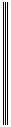
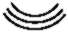
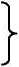
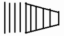

<HTML>
<HEAD>
<meta http-equiv="Content-Type" content="text/html; charset=utf-8">
<META name="viewport" content="width=device-width, initial-scale=1.0"/>
<meta http-equiv="Content-Language" content="ru">
<link rel="stylesheet" type="text/css" href="vil55.css">
<TITLE>Ленин ПСС издание 5 том 29</TITLE>
</HEAD>
<BODY>
<P ALIGN=LEFT><A href="vilall.html">В.И. Ленин. ПОЛНОЕ СОБРАНИЕ СОЧИНЕНИЙ</A>
<BR><A HREF="#psoder">СОДЕРЖАНИЕ тома 29</A>
<P><HR>
<TABLE WIDTH=100%>
<TR><TD WIDTH=50%></TD>
<TD WIDTH=50%>
<P ALIGN=CENTER><i><SPAN STYLE="COLOR: RED">Пролетарии всех стран, соединяйтесь</SPAN></i>
<BR><BR><BR>
<H1 ALIGN=CENTER><SPAN STYLE="COLOR: RED">ЛЕНИН</SPAN></H1>
<BR><BR><BR>
<H2 ALIGN=CENTER>ПОЛНОЕ
<BR>СОБРАНИЕ
<BR>СОЧИНЕНИЙ</H2>
<BR><BR><BR>
<H2 ALIGN=CENTER>29</H2>
<BR><BR><BR>
</TD></TR></TABLE>
<P><HR>
<P ALIGN=RIGHT>ПЕЧАТАЕТСЯ
<BR>ПО ПОСТАНОВЛЕНИЮ
<BR>ЦЕНТРАЛЬНОГО КОМИТЕТА
<BR>КОММУНИСТИЧЕСКОЙ ПАРТИИ
<BR>СОВЕТСКОГО СОЮЗА
<P><HR>
<P ALIGN=CENTER>ИНСТИТУТ МАРКСИЗМА-ЛЕНИНИЗМА ПРИ ЦК КПСС
<H1 ALIGN=CENTER><SPAN STYLE="COLOR: RED">В. И. ЛЕНИН</SPAN></H1>
<H2 ALIGN=CENTER>ПОЛНОЕ СОБРАНИЕ СОЧИНЕНИЙ</H2>
<H3 ALIGN=CENTER>ИЗДАНИЕ ПЯТОЕ</H3>
<P ALIGN=CENTER>ИЗДАТЕЛЬСТВО
<BR>ПОЛИТИЧЕСКОЙ ЛИТЕРАТУРЫ
<BR>МОСКВА  1969</P>
<P><HR>
<P ALIGN=CENTER>ИНСТИТУТ МАРКСИЗМА-ЛЕНИНИЗМА ПРИ ЦК КПСС
<H1 ALIGN=CENTER><SPAN STYLE="COLOR: RED">В. И. ЛЕНИН</SPAN></H1>
<H2 ALIGN=CENTER>ТОМ</H2>
<H2 ALIGN=CENTER>29</H2>
<P ALIGN=CENTER>ФИЛОСОФСКИЕ ТЕТРАДИ
<P ALIGN=CENTER>ИЗДАТЕЛЬСТВО
<BR>ПОЛИТИЧЕСКОЙ ЛИТЕРАТУРЫ
<BR>МОСКВА  1969</P><HR>
<P ALIGN=CENTER>3К2
<P ALIGN=CENTER>69
<P ALIGN=CENTER>2 - 1 - 1

<P><HR><A NAME=svii> </A><P ALIGN=CENTER>VII
<H2 ALIGN=CENTER>ПРЕДИСЛОВИЕ</H2>
<P ALIGN=JUSTIFY>Двадцать девятый том Полного собрания сочинений В. И. Ленина состоит из конспектов, фрагментов, заметок о различных книгах и статьях по философии, а также замечаний и пометок Ленина на полях и в тексте философских книг из его личной библиотеки.
<P ALIGN=JUSTIFY>Большинство рукописей конспектов, фрагментов и заметок, входящих в настоящий том, впервые было опубликовано в 1929-1930 годах в Ленинских сборниках IX и XII;
в 1933-1947 годах эти материалы пять раз издавались отдельной книгой под названием &laquo;Философские тетради&raquo;, а в 1958 году они вышли как 38 том 4 издания Сочинений В. И. Ленина.
<P ALIGN=JUSTIFY>Состав предыдущих изданий не одинаков, наиболее полным из них было последнее, по сравнению с которым настоящий том дополнен впервые публикуемыми замечаниями Ленина на книге И. Дицгена &laquo;Мелкие философские работы&raquo; и опубликованными ранее замечаниями на книге Ю. М. Стеклова &laquo;Н. Г. Чернышевский, его жизнь и деятельность&raquo;; некоторые заметки из ленинских &laquo;Тетрадей по империализму&raquo;, вошедшие в 28 том Полного собрания сочинений, в настоящем томе опущены.
<P ALIGN=JUSTIFY>Различные издания &laquo;Философских тетрадей&raquo; отличаются не только составом, но и
порядком расположения документов; настоящий том разбит на три отдела, в каждом из
которых помещены материалы более или менее однородного характера. В первый раздел вошли конспекты и фрагменты, во второй - различные заметки о книгах, статьях и
рецензиях на философскую
<P><HR><P ALIGN=CENTER>VIII
<BR>ПРЕДИСЛОВИЕ
<P ALIGN=JUSTIFY>литературу, в третий - отрывки из книг с замечаниями и пометками Ленина. Внутри
разделов документы расположены в хронологическом порядке на основе дат, установленных ранее или при работе над настоящим томом косвенным путем, так как почти
все документы автором не датированы.
<P ALIGN=JUSTIFY>В Полном собрании сочинений В. И. Ленина &laquo;Философские тетради&raquo; отнесены к периоду первой мировой войны, когда была написана основная часть конспектов, фрагментов, заметок. Именно в это время Ленин конспектирует &laquo;Науку логики&raquo; и - параллельно - первую часть &laquo;Энциклопедии философских наук&raquo; Г. В. Ф. Гегеля, его &laquo;Лекции по истории философии&raquo; и &laquo;Лекции по философии истории&raquo;, сочинение Л. Фейербаха &laquo;Изложение, анализ и критика философии Лейбница&raquo;, Ф. Лассаля - &laquo;Философия
<P ALIGN=JUSTIFY>Гераклита Темного из Эфеса&raquo;, &laquo;Метафизику&raquo; Аристотеля и ряд других книг по философии и естествознанию. Эти конспекты и заметки составили содержание восьми одинаковых тетрадей в синих обложках, озаглавленных Лениным &laquo;Тетрадки по философии. Гегель, Фейербах и разное&raquo;; к этой серии относится и написанный на отдельных
листах конспект &laquo;Лекций о сущности религии&raquo; Фейербаха, составленный не ранее 1909
года.
<P ALIGN=JUSTIFY>Ленинские фрагменты иногда записаны в тетрадках отдельно (например, &laquo;План диалектики (логики) Гегеля&raquo; или &laquo;К вопросу о диалектике&raquo;), иногда - в тексте конспектов (фрагмент об элементах диалектики в конспекте &laquo;Науки логики&raquo;, фрагмент о теории познания в конспекте книги Лассаля и другие). Окончательная обработка философских конспектов, фрагментов, заметок 1914-1915 годов, изучение которых позволяет
предположить, что Ленин собирался написать специальный труд о диалектике, так и
осталась не завершенной, но и в таком виде они имеют огромное значение для развития
марксистской философии.
<P ALIGN=JUSTIFY>Наряду с книгой &laquo;Материализм и эмпириокритицизм&raquo; &laquo;Философские тетради&raquo; содержат неоценимое идейное богатство, имеют исключительное теоретическое и политическое значение и составляют основу ленинского
<P><HR><P ALIGN=CENTER>IX
<BR>ПРЕДИСЛОВИЕ
<P ALIGN=JUSTIFY>этапа в развитии марксистской философской мысли. Но если в своем главном филоcофском труде Ленин уделяет преимущественное внимание коренным проблемам философского материализма, то центральным пунктом &laquo;Философских тетрадей&raquo;, в котором, как в фокусе, сходятся ленинские идеи, затрагивающие самые различные области
человеческого знания, является материалистическая диалектика, ее основные законы и
категории, история их формирования, значение для общественных наук и естествознания, диалектический характер развития техники. Идеалистическая диалектика Гегеля,
диалектические идеи Гераклита, Лейбница и других философов служат Ленину исходным материалом, на основе которого он развивает материалистическую, марксистскую
диалектику.
<P ALIGN=JUSTIFY>В эпоху крайнего обострения всех противоречий капитализма и назревания нового
революционного кризиса материалистическая диалектика приобретала особое значение: только с ее позиций можно было раскрыть империалистический характер войны,
разоблачить софистику и эклектику лидеров II Интернационала, их оппортунизм и социал-шовинизм. Значение &laquo;Философских тетрадей&raquo; в развитии марксизма-ленинизма в
полной мере раскрывается в связи с такими ленинскими произведениями того периода,
как &laquo;Империализм, как высшая стадия капитализма&raquo;, &laquo;Социализм и война&raquo;, &laquo;О лозунге
<P ALIGN=JUSTIFY>Соединенных Штатов Европы&raquo;, &laquo;О брошюре Юниуса&raquo;, &laquo;Социалистическая революция
и право наций на самоопределение&raquo; и другие. Ленинский анализ фундаментальных
проблем материалистической диалектики сыграл важную роль в разработке марксистской теории империализма, в развитии теории социалистической революции, учения о
государстве, стратегии и тактики партии. Без знания &laquo;Философских тетрадей&raquo; нельзя
понять все дальнейшее развитие Лениным марксистской философии в более поздних
произведениях, таких, как &laquo;Государство и революция&raquo;, &laquo;Еще раз о профсоюзах...&raquo;,
<P ALIGN=JUSTIFY>&laquo;Детская болезнь &laquo;левизны&raquo; в коммунизме&raquo;, &laquo;О значении воинствующего материализма&raquo; и других.
<P><HR><P ALIGN=CENTER>X
<BR>ПРЕДИСЛОВИЕ
<P ALIGN=JUSTIFY>Философские конспекты, фрагменты, заметки Ленина указывают пути дальнейшего
развития диалектического и исторического материализма, научной истории философии.
<P ALIGN=JUSTIFY>&laquo;Продолжение дела Гегеля и Маркса, - писал Ленин, - должно состоять <SPAN class=rzr><i>в диалектической</i></SPAN> обработке истории человеческой мысли, науки и техники&raquo; (настоящий том, стр. 131). Материалистическая диалектика, развитая Лениным в &laquo;Философских
тетрадях&raquo;, имеет важное методологическое значение для исследования закономерностей построения коммунистического общества, анализа противоречий современного
капитализма, определения тактики мирового коммунистического движения в современных условиях, для борьбы против буржуазной философии, современного ревизионизма и догматизма.
<P ALIGN=CENTER>* * *
<P ALIGN=JUSTIFY>Том открывается конспектом первого совместного произведения К. Маркса и Ф. Энгельса &laquo;Святое семейство, или Критика критической критики&raquo; - наиболее ранним из
известных ленинских конспектов произведений основоположников марксизма. В конспекте Ленин прослеживает формирование мировоззрения Маркса и Энгельса: &laquo;Маркс,
- пишет он, - подходит здесь от гегелевой философии к социализму: переход наблюдается явственно - видно, чем уже овладел Маркс и как он переходит к новому кругу
идей&raquo; (стр. 8). Из этих идей Ленин выделяет &laquo;идею общественных отношений производства&raquo; (стр. 16), &laquo;почти уже сложившийся взгляд Маркса на революционную роль
пролетариата&raquo; (стр. 11), материалистический подход к анализу общественного сознания, мысль о необходимости &laquo;практической силы&raquo; для осуществления идей и другие.
<P ALIGN=JUSTIFY>Ленин подчеркивает и отмечает знаком NB выдвинутое в &laquo;Святом семействе&raquo; важнейшее положение исторического материализма о том, что с основательностью исторического действия растет и объем массы, делом которой оно является, прослеживает критику основоположниками марксизма буржуазных
<P><HR><P ALIGN=CENTER>XI
<BR>ПРЕДИСЛОВИЕ
<P ALIGN=JUSTIFY>общественных отношений, останавливается на материалистической переработке Марксом и Энгельсом философии Гегеля, на их критической оценке предшествующего материализма. Особенно ценным Ленин считал написанный Марксом раздел &laquo;Критическое сражение с французским материализмом&raquo;, в котором показано, что коммунизм является логическим выводом из всего исторического развития материалистической философии.
<P ALIGN=JUSTIFY>Значительное место уделено в конспекте критике младогегельянцев, их субъективно-
идеалистических представлений о процессе общественного развития, в частности, их
реакционных взглядов на роль трудящихся масс и личности в истории. Ленин отмечает
направленный против младогегельянцев вывод Маркса о том, что историческую действительность нельзя познать, исключив из нее &laquo;теоретическое и практическое отношение человека к природе, естествознание и промышленность&raquo;, &laquo;непосредственный способ производства самой жизни&raquo; (стр. 34). На опыт борьбы Маркса и Энгельса против
младогегельянцев Ленин опирался в своей критике субъективной социологии либеральных народников в произведениях 90-х годов, в борьбе против народнических теорий исторической роли &laquo;критически мыслящих личностей&raquo;, героев и пассивности народных масс, &laquo;толпы&raquo;.
<P ALIGN=JUSTIFY>К произведениям Маркса и Энгельса Ленин неоднократно обращается и в более
поздних конспектах, фрагментах, заметках, вошедших в &laquo;Философские тетради&raquo;. Ленин характеризует революционный переворот, который совершили в науке основоположники марксизма, отмечает значение их отдельных произведений в развитии революционной мысли, уделяя особое внимание диалектике &laquo;Капитала&raquo; Маркса.
<P ALIGN=JUSTIFY>За конспектом &laquo;Святого семейства&raquo; в томе следуют конспекты двух сочинений Л. Фейербаха: &laquo;Лекций о сущности религии&raquo; и книги &laquo;Изложение, анализ и критика философии Лейбница&raquo;; первый из них был составлен не ранее 1909, второй - осенью 1914 года. Произведения Фейербаха Ленин читал и раньше - в сибирской ссылке и особенно при работе над книгой &laquo;Материализм
<P><HR><P ALIGN=CENTER>XII
<BR>ПРЕДИСЛОВИЕ
<P ALIGN=JUSTIFY>и эмпириокритицизм&raquo;, где цитируются работы, вошедшие во второй и десятый тома первого и седьмой том второго издания Сочинений Фейербаха, а также изданные К. Грюном два тома &laquo;Переписки и литературного наследства&raquo; философа (см. В. И. Ленин. Сочинения, 5 изд., том 18). Сохранился экземпляр второго тома Сочинений Фейербаха с относящимися к этому времени пометками Ленина. В конспектах, вошедших в &laquo;Философские тетради&raquo;, Ленин продолжает изучение философских взглядов немецкого материалиста.
<P ALIGN=JUSTIFY>Конспектируя &laquo;Лекции о сущности религии&raquo;, Ленин обращает внимание главным
образом на материалистическое понимание Фейербахом природы и ее объективных закономерностей, на его критику идеализма, религии и обоснование атеизма, выделяет
<P ALIGN=JUSTIFY>&laquo;зачатки&raquo;, &laquo;зародыши&raquo; исторического материализма, не получившие, однако, в философии Фейербаха сколько-нибудь значительного развития. В конспекте Ленин несколько раз говорит об ограниченности фейербаховской философии, о том, что уже в 1848-1851 годах Фейербах сильно отстал от Маркса и Энгельса, не понял революции 1848
года. Характеризуя его определение природы, Ленин пишет: &laquo;Выходит, что природа =
все, кроме сверхприродного. Фейербах ярок, но не глубок. Энгельс глубже определяет
отличие материализма от идеализма&raquo; (настоящий том, стр. 47). На ограниченность материализма Фейербаха и узость термина &laquo;антропологический принцип в философии&raquo;
<P ALIGN=JUSTIFY>Ленин указывает и в конце конспекта: &laquo;и антропологический принцип и натурализм
суть лишь неточные, слабые описания <SPAN class=rzr><i>материализма&raquo;</i></SPAN> (стр. 64).
<P ALIGN=JUSTIFY>В конспекте книги Фейербаха о философии Лейбница, как и в предыдущем, Ленин прослеживает философскую эволюцию Фейербаха, его переход от идеализма к материализму. Но в центре внимания здесь - обстоятельное изложение Фейербахом сложной философской системы великого немецкого мыслителя XVIII столетия. Ленин выписывает фейербаховскую характеристику монад Лейбница и указывает на идеалистическое толкование им материи лишь как &laquo;феномена&raquo;, служа
<P><HR><P ALIGN=CENTER>XIII
<BR>ПРЕДИСЛОВИЕ
<P ALIGN=JUSTIFY>щего &laquo;для связи монад&raquo;. &laquo;Моя вольная передача, - пишет Ленин: - Монады = души
своего рода. Лейбниц = идеалист. А материя нечто вроде инобытия души или киселя,
связующего их мирской, плотской связью&raquo; (стр. 69). В конспекте высоко оценены диалектические идеи философии Лейбница, в частности, внутренне присущий субстанции,
монадам &laquo;принцип деятельности&raquo;. &laquo;Тут, - пишет Ленин, - своего рода диалектика и
очень глубокая, <SPAN class=rzr><i>несмотря</i></SPAN> на идеализм и поповщину&raquo; (стр. 70). Ленин останавливается также на рационалистической критике Лейбницем эмпиризма Локка, указывает на
сходство некоторых идей философии Лейбница и Канта. К конспектам обоих сочинений Фейербаха примыкают небольшие заметки, свидетельствующие о том, что Ленин
читал и другие произведения, вошедшие в IX том первого и IV том второго изданий Сочинений Фейербаха.
<P ALIGN=JUSTIFY>Центральное место в томе занимают конспекты сочинений Гегеля, с произведениями
которого, в частности, с &laquo;Наукой логики&raquo;, Ленин познакомился еще в сибирской ссылке; позднее, в 1908 году, при работе над книгой &laquo;Материализм и эмпириокритицизм&raquo;
он читал первую часть &laquo;Энциклопедии философских наук&raquo;. В 1914-1915 годах Ленин
подробно конспектирует главное сочинение Гегеля - &laquo;Науку логики&raquo;, а также его
<P ALIGN=JUSTIFY>&laquo;Лекции по истории философии&raquo; и &laquo;Лекции по философии истории&raquo;. В этих конспектах Ленин критикует идеализм и раскрывает историческую ограниченность философских взглядов Гегеля, его &laquo;дань мистицизму&raquo;, &laquo;игру в пустые аналогии&raquo;, &laquo;измену развитию&raquo; и вместе с тем показывает, что в мистической форме у Гегеля часто выступают реальные отношения действительности.
<P ALIGN=JUSTIFY>&laquo;Логику Гегеля, - писал Ленин, - нельзя применять в данном ее виде; нельзя брать как данное. Из нее надо <SPAN class=rzr>выбрать</SPAN> логические (гносеологические) оттенки, очистив от Ideenmystik: это еще большая работа&raquo; (стр. 238). Именно эту работу и проделывает Ленин в своих конспектах, останавливаясь на трудных переходах, оттенках, переливах гегелевских абстрактных
<P><HR><P ALIGN=CENTER>XIV
<BR>ПРЕДИСЛОВИЕ
<P ALIGN=JUSTIFY>понятий, отыскивая &laquo;зерно глубокой истины в мистической шелухе гегельянщины&raquo;
(стр. 139). &laquo;Я вообще стараюсь читать Гегеля материалистически, - замечает он в начале конспекта &laquo;Науки логики&raquo;, - Гегель есть поставленный на голову материализм
(по Энгельсу) - т. е. я выкидываю большей частью боженьку, абсолют, чистую идею
etc.&raquo; (стр. 93). Такой подход дает возможность Ленину раскрыть истинное значение гегелевской логики, увидеть &laquo;"канун&raquo; превращения объективного идеализма в материализм&raquo; (стр. 151), отметить у Гегеля &laquo;зачатки&raquo; материалистического понимания не
только природы, но и истории. Всего ближе Гегель подходит к научному, диалектическому материализму в &laquo;Науке логики&raquo; при построении своей грандиозной системы логических категорий, всего дальше отстоит от него в философии истории. &laquo;Это и понятно, - пишет Ленин, - ибо именно здесь, именно в этой области, в этой науке Маркс и
Энгельс сделали наибольший шаг вперед. Здесь Гегель наиболее устарел и антиквирован&raquo; (стр. 289). Но и в логике Гегель лишь &laquo;гениально <SPAN class=rzr>угадал</SPAN> диалектику вещей&raquo;,
диалектику объективного мира. Ленин материалистически осмысливает и развивает основные законы и категории диалектики, раскрывает их взаимосвязь, показывает специфику их проявления в мышлении, определяет соотношение диалектики, логики и теории познания.
<P ALIGN=JUSTIFY>К конспектам произведений Гегеля непосредственно примыкают конспекты книг Ж.
Ноэля, Ф. Лассаля, Аристотеля. Конспект книги Ноэля &laquo;Логика Гегеля&raquo; представляет
интерес главным образом как пример критики &laquo;опошления&raquo; диалектики Гегеля &laquo;мелким&raquo; идеалистом. Некритический подход к Гегелю подчеркивает Ленин и в конспекте
книги Лассаля &laquo;Философия Гераклита Темного из Эфеса&raquo;. &laquo;Лассаль, - пишет он, -
просто повторяет Гегеля, списывает его, пережевывает миллион раз по поводу отдельных мест Гераклита, снабжая свой труд невероятной бездной ученейшего, гелертерского-архи, балласта&raquo; (стр. 305). Лассалю Ленин противопоставляет действительное
развитие философии Марксом. Основное внимание в этом конспекте Ленин уделяет
<P><HR><P ALIGN=CENTER>XV
<BR>ПРЕДИСЛОВИЕ
<P ALIGN=JUSTIFY>изложению взглядов древнегреческого философа, упрекая Лассаля за то, что он &laquo;оставил в тени материализм или материалистические тенденции Гераклита&raquo; (стр. 315).
<P ALIGN=JUSTIFY>Первый раздел завершается конспектом &laquo;Метафизики&raquo; Аристотеля - одного из самых выдающихся произведений древнегреческой философии, в котором, по выражению Ленина, &laquo;задето в с е, все категории&raquo; (стр. 325). Конспектируя книгу, Ленин отмечает &laquo;запросы, искания&raquo; Аристотеля, его подход к объективной диалектике, &laquo;наивную
веру в силу разума&raquo;, критику объективного идеализма Платона, говорит о сложности
процесса познания, подчеркивает, что &laquo;раздвоение познания человека и возможность
идеализма (религии) <SPAN class=rzr>даны</SPAN> уже в первой, элементарной абстракции&raquo;, и указывает на
плодотворность фантазии, мечты &laquo;и в самой строгой науке&raquo; (стр. 330).
<P ALIGN=JUSTIFY>Помимо конспектов в первый раздел входят два ленинских фрагмента: &laquo;План диалектики (логики) Гегеля&raquo; и &laquo;К вопросу о диалектике&raquo;. В первом фрагменте дана общая
характеристика процесса познания, указано соотношение логики, диалектики и теории
познания; во втором - показана противоположность метафизической и диалектической концепций развития, дан анализ основных законов и категорий диалектики, закономерностей исторического и логического развития познания, сформулировано важнейшее положение о классовых и гносеологических корнях идеализма. Фрагмент &laquo;К
вопросу о диалектике&raquo; является завершением работы Ленина над философской проблематикой в 1914-1915 годах, в центре которой стоит диалектика, ее история, законы, категории, роль в процессе познания и преобразования человеком действительности. Этот небольшой по объему фрагмент представляет собой непревзойденное по глубине и богатству мыслей обобщение всего главного и существенного, что составляет
содержание материалистической диалектики.
<P ALIGN=JUSTIFY>В &laquo;Философских тетрадях&raquo; Ленин рассматривает диалектику как единственно правильную теорию
<P><HR><P ALIGN=CENTER>XVI
<BR>ПРЕДИСЛОВИЕ
<P ALIGN=JUSTIFY>развития, которая &laquo;дает ключ к &laquo;самодвижению&raquo; всего сущего&raquo;, выявляет общие моменты &laquo;во <SPAN class=rzr>всех</SPAN> явлениях и процессах природы (и духа и общества в том числе&raquo;) (стр. 317), формулирует &laquo;общие законы движения <SPAN class=rzr>мира и мышления</SPAN>&raquo; (стр. 156).
<P ALIGN=JUSTIFY>Выделяя основные моменты процесса познания, Ленин пишет: &laquo;Тут действительно,
объективно <b>три</b> члена: 1) природа; 2) познание человека, = <b>мозг</b> человека (как высший
продукт той же природы) и 3) форма отражения природы в познании человека, эта
форма и есть понятия, законы, категории etc.&raquo; (стр. 164). Исследование этой &laquo;формы&raquo;,
логический анализ мышления, в ходе которого раскрывается содержание законов и категорий диалектики, занимает в &laquo;Философских тетрадях&raquo; исключительное место и
имеет фундаментальное значение для развития марксистской философии.
<P ALIGN=JUSTIFY>Прослеживая сложный путь познания, Ленин показывает, как мышление от отражаемых непосредственно в ощущениях и представлениях отдельных вещей восходит к
абстрактным понятиям, фиксирующим существенные стороны, связи, отношения
предмета и отражающим - опосредствованно - его природу &laquo;глубже, вернее, полнее&raquo;. Но диалектическое познание, сущность которого &laquo;развертывание всей совокупности моментов действительности&raquo; (стр. 141), не ограничивается выработкой абстракций,
а движется дальше по пути восхождения от абстрактного к конкретному, воспроизведения в мышлении конкретного как &laquo;единства многообразного&raquo; (Маркс). &laquo;Значение
общего противоречиво, - указывает Ленин, - оно мертво, оно нечисто, неполно etc.
etc., но оно только и есть <SPAN class=rzr><i>ступень</i></SPAN> к познанию <SPAN class=rzr><i>конкретного,</i></SPAN> ибо мы никогда не познаем конкретного полностью. Бесконечная сумма общих понятий, законов etc. дает конкретное в его полноте&raquo; (стр. 252).
<P ALIGN=JUSTIFY>Ленин подчеркивает, что теоретическое познание не может охватить объективную истину в отрыве от практики - основы, цели и критерия истинности знания. Только правильно определив роль практики в процессе познания, можно понять, как историческое развитие знаний человека об объективной действитель-
<P><HR><P ALIGN=CENTER>XVII
<BR>ПРЕДИСЛОВИЕ
<P ALIGN=JUSTIFY>ности, так и эволюцию логических форм, в которых это знание отражается в мышлении
- понятий, суждений, умозаключений, категорий, законов и т. п. &laquo;Практика человека,
миллиарды раз повторяясь, закрепляется в сознании человека фигурами логики&raquo;, -
говорит Ленин (стр. 198), а в другом месте он рассматривает логические категории как
ступеньки исторического процесса выделения человека из природы, познания ее, овладевания ею (см. стр. 85). Ленин не только материалистически объясняет происхождение категорий, но и анализирует их содержание, их роль в процессе познания. В &laquo;Философских тетрадях&raquo; рассматриваются такие важнейшие категории диалектики, как явление и сущность, абстрактное и конкретное, форма и содержание, причина и следствие, возможность и действительность, случайность и необходимость, закон и другие.
<P ALIGN=JUSTIFY>Значительное место в ленинских конспектах и фрагментах занимает рассмотрение
основных законов диалектики, особенно - закона единства и борьбы противоположностей. &laquo;Раздвоение единого и познание противоречивых частей его, - указывает Ленин, - ... есть <SPAN class=rzr>суть</SPAN> (одна из &laquo;сущностей&raquo;, одна из основных, если не основная, особенностей или черт) диалектики&raquo; (стр. 316). Всеобщность этого закона Ленин иллюстрирует примерами из математики, механики, физики, химии, общественной науки. Раскрывая его содержание, он анализирует &laquo;противоположность&raquo;, &laquo;противоречие&raquo;, показывает относительность их единства как внутренней и вместе с тем преходящей формы
связи и абсолютность их &laquo;борьбы&raquo;, являющейся источником самодвижения, саморазвития явлений.
<P ALIGN=JUSTIFY>Закон единства и борьбы противоположностей, по Ленину, есть основной закон диалектики, исходя из которого только и могут быть поняты остальные законы и категории. &laquo;Вкратце, - писал Ленин, - диалектику можно определить как учение о единстве противоположностей&raquo; (стр. 203). По сравнению с этим законом рассмотрение двух
других - закона перехода количественных изменений в качественные и закона отрицания отрицания - в &laquo;Философских тетрадях&raquo;
<P><HR><P ALIGN=CENTER>XVIII
<BR>ПРЕДИСЛОВИЕ
<P ALIGN=JUSTIFY>занимает меньше места. &laquo;Переход количества в качество и наоборот&raquo; Ленин во фрагменте об элементах диалектики рассматривает как пример перехода противоположностей. В конспекте &laquo;Науки логики&raquo; он выписывает и отмечает важность характеристики Гегелем категорий качества, количества и их единства - меры. Рассматривая все моменты этих категорий (конечное и бесконечное, граница и др.), Ленин подробно останавливается на форме взаимопревращений количественных и качественных изменений - скачке, &laquo;перерыве постепенности&raquo;.
<P ALIGN=JUSTIFY>Существенной характеристикой процесса развития Ленин считает &laquo;повторение в высшей стадии известных черт, свойств etc. низшей и возврат якобы к старому (отрицание отрицания)&raquo; (стр. 203).
Если закон единства и борьбы противоположностей раскрывает внутренний источник процесса развития, а закон перехода количественных изменений в качественные - его содержание, то закон отрицания отрицания охватывает процесс в целом, рассматривая каждую стадию развития как момент, этап всего процесса и подчеркивая связь, преемственность и прогрессивный характер развития, в котором каждый момент является отрицанием предыдущего и вместе с тем - предпосылкой своего собственного отрицания.
Раскрывая диалектический характер отрицания, Ленин писал: &laquo;Не голое отрицание, не зряшное отрицание, не скептическое отрицание, колебание, сомнение характерно и существенно в диалектике, ... нет, а отрицание как момент связи, как момент развития, с удержанием положительного, т. е. без всяких колебаний, без всякой эклектики&raquo; (стр. 207).
<P ALIGN=JUSTIFY>В конспектах и фрагментах Ленин вновь и вновь обращается к вопросу о логике как теории познания, которая дает &laquo;не только <SPAN class=rzr><i>естественноисторическое описание явлений</i></SPAN> мышления..., но и <SPAN class=rzr><i>соответствие с истиной&raquo;,</i></SPAN> раскрывает &laquo;результаты и итоги истории мысли&raquo;. &laquo;В таком понимании, - замечает Ленин на полях, - логика совпадает <SPAN class=rzr><i>с теорией познания</i></SPAN>. Это вообще очень важный вопрос&raquo; (стр. 156). Чтобы выражать объективную
<P><HR><P ALIGN=CENTER>XIX
<BR>ПРЕДИСЛОВИЕ
<P ALIGN=JUSTIFY>диалектику жизни, логические понятия, категории, законы сами должны быть подвижны, текучи, взаимосвязаны, диалектичны. В отличие от Гегеля, лишь угадавшего в диалектике понятий самодвижение мира, Ленин по-иному, материалистически объясняет взаимопревращаемость понятий. &laquo;Мысль включить <SPAN class=rzr>жизнь в</SPAN> логику понятна - и гениальна, - пишет он, - с точки зрения процесса отражения в сознании (сначала индивидуальном) человека объективного мира и проверки этого сознания (отражения) практикой&raquo; (стр. 184). Другими словами, Ленин считает гениальным применение к процессу познания единственно правильной теории развития - диалектики, что в идеалистической форме было сделано Гегелем, в материалистической - Марксом.
Во фрагменте &laquo;План диалектики (Логики) Гегеля&raquo; Ленин пишет, что в &laquo;&laquo;Капитале&raquo; применена к одной науке логика, диалектика и теория познания&raquo;, а в скобках замечает: &laquo;не надо 3-х слов: это одно и то же&raquo; (стр. 301). Раскрыв соотношение логики, диалектики и теории познания, Ленин указывает и те области знания, откуда теория познания должна черпать свой материал, - это история философии и отдельных наук, умственного развития ребенка и животных, история языка, психология, физиология органов чувств.
<P ALIGN=JUSTIFY>Большое внимание Ленин уделяет вопросу о взаимоотношении теории и истории познания, законов мышления и процесса их формирования, истории мысли с точки зрения развития и применения общих понятий, категорий современной логики. В этом отношении особенно важен ленинский конспект &laquo;Лекций по истории философии&raquo; Гегеля.
<P ALIGN=JUSTIFY>Оценивая положение Гегеля о том, что развитие философии в истории должно соответствовать развитию логической философии, Ленин замечает: &laquo;Тут очень глубокая и верная мысль, в сущности материалистическая (действительная история есть база, основа, бытие, за коим идет сознание)&raquo; (стр. 237).
<P ALIGN=JUSTIFY>&laquo;Философские тетради&raquo; - важная ступень в развитии марксистской истории философии как науки. Критикуя идеалистическую историко-философскую концепцию Гегеля, Ленин вместе с тем отмечает ценность
<P><HR><P ALIGN=CENTER>XX
<BR>ПРЕДИСЛОВИЕ
<P ALIGN=JUSTIFY>рассмотрения Гегелем истории диалектики, подчеркивает важность выдвинутого им
требования строгой историчности, которое сам Гегель не мог осуществить именно в
силу своего идеализма. &laquo;Гегель, - замечает Ленин, - серьезно &laquo;верил&raquo;, думал, что
материализм как философия невозможен, ибо философия есть наука о мышлении, об
общем, а общее есть мысль. Здесь он повторял ошибку того самого субъективного
идеализма, который он всегда называл &laquo;дурным&raquo; идеализмом&raquo; (стр. 250). И Ленин шаг
за шагом прослеживает, как этот органический недостаток историко-философской концепции Гегеля сказывается при рассмотрении тех или иных философских учений прошлого, в результате чего Гегель &laquo;размазывает&raquo; идеализм в истории философии, &laquo;прикрывает&raquo; его слабости, &laquo;трусливо обходит&raquo; историю материализма.
<P ALIGN=JUSTIFY>В противоположность Гегелю Ленин ставит перед историей философии задачу отделения &laquo;зачатков научного мышления&raquo; от фантазии, религии, мифологии, прослеживает
преимущественно развитие материализма и диалектики, показывает, как исторически
зарождались и развивались те или иные философские и естественнонаучные идеи современности, например, представления о строении материи. Материалистически истолковывая мысль Гегеля о &laquo;кругах&raquo; в истории философии, Ленин развивает ее, выявляет
в самой специфике познания возможность, истоки, &laquo;гносеологические корни&raquo; идеализма, закрепляемые &laquo;классовым интересом господствующих классов&raquo; (стр. 322). Ленин
подчеркивает, что история философии всегда была ареной борьбы двух основных направлений - материализма и идеализма, раскрывает исторические особенности того и
другого, показывает, как развитие философии и естествознания подтверждает истинность диалектического и исторического материализма, критикует различные направления современной ему буржуазной идеалистической философии - позитивизм, неокантианство и другие.
<P ALIGN=JUSTIFY>Во втором разделе тома сгруппированы ленинские заметки о книгах, статьях и рецензиях на работы по
философии и естествознанию за 1903-1916 годы, являющиеся существенным дополнением наших знаний о занятиях Ленина проблемами философии. Эти заметки интересны не только тем, что они расширяют наше представление о круге философской и
естественнонаучной литературы, которая была в поле зрения Ленина в эти годы; в них
содержится ряд важных положений, в частности, по философским вопросам естество-
знания, критике буржуазной философии и т. п.
<P><HR><P ALIGN=CENTER>XXI
<BR>ПРЕДИСЛОВИЕ
<P ALIGN=JUSTIFY>В &laquo;Философских тетрадях&raquo; Ленин рассматривает естествознание как важнейшую
область человеческого познания, указывает на зависимость его развития от практики,
техники, на диалектический характер этого развития. &laquo;Всему познанию человека вообще, - пишет он, - свойственна диалектика. А естествознание показывает нам... объективную природу в тех же ее качествах, превращение отдельного в общее, случайного
в необходимое, переходы, переливы, взаимную связь противоположностей&raquo; (стр. 321).
<P ALIGN=JUSTIFY>В сложном процессе познания закономерностей природы, объясняет Ленин, кроются истоки их идеалистического истолкования. Касаясь отказа некоторых естествоиспытателей от материализма, он указывает на связь этого явления с быстрым развитием естествознания: &laquo;Чтобы свободнее двигаться в этом новом, еще темном, гипотетическом, - пишет он, - долой &laquo;материализм&raquo;, долой &laquo;связывающие&raquo; старые идеи (&laquo;молекула&raquo;), назовем по-новому (биоген), чтобы вольнее искать новых знаний! NB. К вопросу об источниках и живых побудительных мотивах современного &laquo;идеализма&raquo; в физике и естествознании вообще&raquo; (стр. 354).
Идеалистическая интерпретация естественнонаучных открытий связана, по Ленину, также с незнанием естествоиспытателями диалектики, с их непониманием современного, диалектического материализма. &laquo;У естествоиспытателей, - замечает он, - узко понятие превращения и нет понимания диалектики&raquo;, необходимой для овладения &laquo;искусством оперировать с понятиями&raquo; (стр. 236). Кроме общей характеристики развития естественнонаучного познания, Ленин останавливается и на отдельных его проблемах:
<P><HR><P ALIGN=CENTER>XXII
<BR>ПРЕДИСЛОВИЕ
<P ALIGN=JUSTIFY>бесконечности материи, сущности пространства и времени, значении математических абстракций, роли символов в математике и других.
<P ALIGN=JUSTIFY>В последний раздел тома вошли отрывки из книг И. Дицгена, Г. В. Плеханова, В. М. Шулятикова, А. Рея, Ю. М. Стеклова и статьи А. М. Деборина с замечаниями и пометками В. И. Ленина. Ленинские замечания важны не только для оценки того или иного автора, в них затронут широкий круг проблем диалектического и исторического материализма, истории философии, философских вопросов естествознания, научного атеизма.
<P ALIGN=JUSTIFY>В настоящем томе впервые публикуются замечания Ленина на полях и в тексте книги И. Дицгена &laquo;Мелкие философские работы&raquo;, в основном сделанные им в 1908 году
при работе над книгой &laquo;Материализм и эмпириокритицизм&raquo;, где значительная часть их
была использована. Ленин высоко оценивает партийность философа-самоучки, самостоятельно пришедшего к диалектическому материализму, его понимание предмета
философии, теории отражения, борьбу против религии и идеалистической философии и т. п. Останавливается Ленин и на ошибках Дицгена, на его путанице в философских понятиях, причиной которой было отсутствие достаточного философского образования
и некритическое использование терминологии своих философских противников. Несмотря на эти &laquo;частные ошибки в изложении диалектического материализма&raquo; (Сочинения, 5 изд., том 18, стр. 360), Ленин видел в Дицгене философского единомышленника и использовал его работы в борьбе против махистов.
<P ALIGN=JUSTIFY>По-иному оценивает Ленин книгу В. М. Шулятикова &laquo;Оправдание капитализма в западноевропейской философии&raquo;, написанную под известным влиянием А. Богданова. В
замечаниях на этой книге Ленин резко критикует вульгарный, примитивный материализм автора, исказившего историческое развитие философской мысли в Западной Европе, отвергает его смешение различных, хотя и близких друг к другу, философских
направлений, сведение всей буржуазной философии к апологии
<P><HR><P ALIGN=CENTER>XXIII
<BR>ПРЕДИСЛОВИЕ
<P ALIGN=JUSTIFY>капитализма &laquo;без анализа сути&raquo; (настоящий том, стр. 472) и т. п. Ленинские замечания на книге Шулятикова имеют важное значение для борьбы против вульгаризации исторического материализма и истории философии.
<P ALIGN=JUSTIFY>В замечаниях на книге А. Рея &laquo;Современная философия&raquo; Ленин продолжает критику
позитивистских взглядов автора, данную в книге &laquo;Материализм и эмпириокритицизм&raquo;,
отмечая вместе с тем, что при рассмотрении ряда конкретных вопросов естествознания Рей становится на позицию &laquo;стыдливого материализма&raquo; и даже приближается &laquo;к диалектическому материализму&raquo; (см., например, стр. 517 и 515).
<P ALIGN=JUSTIFY>Значительный интерес представляют замечания Ленина на книгах Г. В. Плеханова и Ю. М. Стеклова о Чернышевском. Они свидетельствуют о том большом внимании, которое Ленин уделял истории русской общественной мысли, в частности, истории русской философии, как высоко ценил ее передовые, материалистические традиции. Ленин
подчеркивает революционный демократизм и материализм Чернышевского, его решительную борьбу против либерализма, за крестьянскую революцию. Сравнивая книгу Плеханова 1909 года с положенной в ее основу его работой о Чернышевском 1899 года,
Ленин показывает, как меньшевистские взгляды автора приводят к неверной оценке классового содержания деятельности Чернышевского. &laquo;Из-за теоретического различия идеалистического и материалистического взгляда на историю Плеханов просмотрел практически-политическое и классовое различие либерала и демократа&raquo; (стр. 562).
<P ALIGN=JUSTIFY>Сопоставление ленинских замечаний на книгах Плеханова и Стеклова позволяет отметить отрицательное отношение Ленина к двум противоположным тенденциям в
оценке великого русского революционера-демократа: сближению Чернышевского с либерализмом и затушевыванию его революционно-демократических идей (Плеханов в
книге 1909 г.) и стремлению в известной мере стереть грань между взглядами Чернышевского и марксизмом (Стеклов).
<P><HR><P ALIGN=CENTER>XXIV
<BR>ПРЕДИСЛОВИЕ
<P ALIGN=CENTER>* * *
<P ALIGN=JUSTIFY>Ленинские рукописи, по которым публикуются материалы настоящего тома, написаны на русском, немецком, французском и, отчасти, английском языках; в тексте
встречаются также несколько названий латинских и итальянских книг, латинских и
древнегреческих слов и выражений. Слова в рукописях, которые Ленин писал как заметки для себя и в таком виде, конечно, не предназначал для публикации, написаны
часто сокращенно, иногда - неразборчиво, чем объясняется различная расшифровка
некоторых из них в различных изданиях. В целях максимального приближения к ленинской рукописи иностранные термины и выражения, кроме общеизвестных, перемежающиеся с русским текстом, написанные на полях или связанные с контекстом дальнейшего изложения, даны в томе на языке оригинала с подстрочным переводом, если
они не переведены в тексте Лениным. Текст цитат отделяется от вставленных автором
слов кавычками, причем ленинские переводы оформлены кавычками в виде запятых (&bdquo; &rdquo;), а редакционные - обычными издательскими кавычками (&laquo; &raquo;). После сделанных Лениным отсылок на страницы цитируемых книг, которые заключены в круглые скобки, в квадратных скобках петитом указаны страницы последнего русского издания этих книг.
<P ALIGN=JUSTIFY>Все выделения текста автором воспроизведены посредством шрифтов: слова или части слов, подчеркнутые одной волнистой или прямой тонкой линией, набраны <i>курсивом;</i> двумя - <SPAN class=rzr><i>курсивом вразрядку</i></SPAN>; тремя - <b>прямым полужирным</b> шрифтом и т. д.[[*]]
<P ALIGN=JUSTIFY>Текст настоящего издания вновь сверен с рукописями Ленина, а редакционные переводы - с первоисточниками. В конце тома даны примечания, указатели литературы, цитируемой и упоминаемой В. И. Лениным, имен и предметный указатель.
<P ALIGN=RIGHT><I>Институт марксизма-ленинизма при ЦК КПСС</I>
<P><HR WIDTH=15%>
<SMALL><P><HR WIDTH=15% ALIGN=LEFT>
<P ALIGN=JUSTIFY>[[* В электронной версии Сочинений выделение фрагментов пока проставлено и выверено не полностью.
В ответственных случаях необходимо пользоваться оригиналом.]]
</SMALL>

<P><HR><A NAME=s0> </A><A NAME=s1> </A><P ALIGN=CENTER>1
<H2 ALIGN=CENTER>I
<BR>КОНСПЕКТЫ И ФРАГМЕНТЫ</H2>

<P><HR><A NAME=s2> </A><A NAME=s3> </A><P ALIGN=CENTER>3
<H2 ALIGN=CENTER>КОНСПЕКТ КНИГИ МАРКСА И ЭНГЕЛЬСА
<BR>&laquo;СВЯТОЕ СЕМЕЙСТВО&raquo; <SUP><A HREF="#p1">1</A></SUP></H2>

<P><TABLE WIDTH=96%><TR ALIGN=CENTER><TD WIDTH=45%><SMALL>
Написано не ранее 25 апреля (7 мая) -
не позднее 7 (19) сентября 1895 г.
<P>Впервые напечатано в 1930 г.
в Ленинском сборнике XII
</SMALL><TD><TD WIDTH=45%><SMALL>
Печатается по рукописи
</SMALL></TABLE>
<P><HR WIDTH=15%>

<P><HR><A NAME=s4> </A><A NAME=s5> </A><P ALIGN=CENTER>5
<P ALIGN=CENTER>Первая страница рукописи В. И. Ленина
<BR>Конспект книги Маркса и Энгельса &laquo;Святое семейство&raquo;. - 1895 г.
<BR><i>Уменьшено</i>

<P><HR><A NAME=s6> </A><A NAME=s7> </A><P ALIGN=CENTER>7
<H2 ALIGN=CENTER>СВЯТОЕ СЕМЕЙСТВО,
<BR>ИЛИ КРИТИКА КРИТИЧЕСКОЙ КРИТИКИ <SUP><A HREF="#p2">2</A></SUP></H2>
<P><HR WIDTH=15%>
<H3 ALIGN=CENTER>ПРОТИВ БРУНО БАУЭРА И КОМПАНИИ
<P><HR WIDTH=15%>
<BR>ФРИДРИХА ЭНГЕЛЬСА И КАРЛА МАРКСА</H3>
<P><HR WIDTH=15%>
<P ALIGN=CENTER>ФРАНКФУРТ-НА-МАЙНЕ
<H3 ALIGN=CENTER>ЛИТЕРАТУРНОЕ ИЗДАТЕЛЬСТВО
<BR>(И. РЮТТЕН) 1845</H3>
<P ALIGN=JUSTIFY>Маленькая книжечка, формата в восьмушку писчего листа, состоит из предисловия
(стр. III-IV). [7-8]* (подпись: Париж, сентябрь 1844), оглавления (V-VIII стр.) [646-
648] и текста (стр. 1-335) [9-230], разделенного на 9 глав (Kapitel). Главы I, II, III написаны Энгельсом, главы V, VIII и IX - Марксом, главы IV, VI и VII - обоими, причем,
однако, каждый особо подписывал написанный им § или абзац главы, снабженный особым заголовком. Все эти заголовки - сатирические до &bdquo;критического превращения
мясника в собаку&rdquo; включительно (так озаглавлен § 1 главы VIII-ой). Энгельсу принадлежат страницы <b>1-17</b> [9-21] (I, II, III главы и § 1 и 2 в главе IV), <b>138-142</b> [101-104]
(§ 2a в VI главе), <b>240-245</b> [167-170] (§ 2b в VII главе):
<u>|&macr;</u>т. е. 26 страниц из 335.<u>&macr;|</u>
<P ALIGN=JUSTIFY>Первые главы - сплошная критика <i>слога (<SPAN class=rzr>вся</SPAN>(!)</i> I глава, стр. 1-5 [9-11]) &laquo;Литературной Газеты&raquo; <u>||&macr;</u><i>&laquo;Allgemeine Literatur-Zeitung&raquo;</i> von Bruno Bauer - предисловие говорит, что против ее первых 8 выпусков и направляется критика Маркса и Энгельса <u>&macr;||</u>, критика ее извращений истории (глава II, стр. 5-12 [12-17], специально английской истории), критика ее тем
<SMALL><P><HR WIDTH=15% ALIGN=LEFT>
<P ALIGN=JUSTIFY>* F. Engels und K. Marx. Die heilige Familie, oder Kritik der kritischen Kritik. Frankfurt а. М., 1845. Ред.
<P ALIGN=JUSTIFY>** К. Маркс и Ф. Энгельс. Сочинения, 2 изд., т. 2. Ред.
</SMALL>

<P><HR><A NAME=s8> </A><P ALIGN=CENTER>8
<BR>В. И. ЛЕНИН
<P ALIGN=JUSTIFY>(глава III, 13-14 [18-19], высмеивание Grundlichkeit* изложения какого-то спора г-на Nauwerk'а с берлинским философским факультетом <SUP><A HREF="#p3">3</A></SUP>), критика рассуждений о любви (глава IV, 3, - Маркс), критика <i>изложения</i> Прудона в &bdquo;Литературной Газете&rdquo; (IV, <SUP><A HREF="#p4">4</A></SUP>, - Proudhon, стр. 22 [25] u. ff. bis** 74 [59]4. В начале тут масса поправок перевода: смешали-де formule et signification***, перевели justice - Gerechtigkeit вместо Rechtspraxis etc.****). За этой критикой перевода (Маркс называет это - Charakterisierende &Uuml;bersetzung № I, II u. s. w.*****) следует Kritische Randglosse № I u. s. w.******, где Маркс <i>защищает</i> Прудона от критиков &laquo;Литературной Газеты&raquo;, противопоставляя спекуляции свои явно социалистические идеи.
<P ALIGN=JUSTIFY>Тон Маркса по отношению к Прудону очень хвалебный (хотя есть небольшие оговорки, например ссылка на &laquo;Umrisse zu einer Kritik der Nationalokonomie&raquo; Энгельса в &laquo;Deutsch-Franzosische Jahrbucher&raquo; <SUP><A HREF="#p5">5</A></SUP>).
<P ALIGN=JUSTIFY>Маркс подходит здесь от гегелевой философии к социализму: переход наблюдается явственно - видно, чем уже овладел Маркс и как он переходит к новому кругу идей.
<P ALIGN=JUSTIFY>&laquo;Политическая экономия, принимающая отношения частной собственности за человеческие и разумные, непрерывно впадает в противоречие со своей основной предпосылкой - частной собственностью, в противоречие, подобное тому, в которое впадает теолог, когда он, постоянно истолковывая религиозные представления на человеческий лад, тем самым беспрестанно грешит против своей основной предпосылки - сверхчеловечности религии. Так в политической экономии заработная плата вначале выступает как причитающаяся труду пропорциональная доля в продукте. Заработная плата и прибыль на капитал стоят друг к другу в самых
<SMALL><P><HR WIDTH=15% ALIGN=LEFT>
<P ALIGN=JUSTIFY>* - основательности. Ред.
<P ALIGN=JUSTIFY>** - und folgende bis - и следующие до. Ред.
<P ALIGN=JUSTIFY>*** - формулу и значение. Ред.
<P ALIGN=JUSTIFY>**** - справедливость вместо юридической практики и т. д. Ред.
<P ALIGN=JUSTIFY>***** - характеризующий перевод № I, II и т. д. Ред.
<P ALIGN=JUSTIFY>****** - критический комментарий № I и т. д. Ред.
</SMALL>

<P><HR><A NAME=s9> </A><P ALIGN=CENTER>9
<BR>КОНСПЕКТ КНИГИ МАРКСА И ЭНГЕЛЬСА &laquo;СВЯТОЕ СЕМЕЙСТВО&raquo;
<P ALIGN=JUSTIFY>дружественных, взаимно благоприятствующих, по видимости в самых что ни на есть
человечных отношениях. Впоследствии же оказывается, что отношения эти - самые
наивраждебные, что заработная плата находится в <i>обратном</i> отношении к прибыли на
капитал. Стоимости сначала дается по видимости разумное определение: она определяется издержками производства вещи и общественной полезностью последней. Впоследствии же оказывается, что стоимость есть чисто случайное определение, не стоящее ни в каком отношении ни к издержкам производства, ни к общественной полезности. Величина заработной платы определяется сначала как результат свободного соглашения между свободным рабочим и свободным капиталистом. Впоследствии же
оказывается, что рабочий вынужден согласиться на определение заработной платы капиталистом, последний же вынужден держать заработную плату на возможно более
низком уровне. Место <i>свободы</i> договаривающейся Parthei*&raquo; <u>|&macr;</u>именно так пишется это
слово в данной книге<u>&macr;|</u> &laquo;заняло принуждение. Таким же образом обстоит дело с торговлей и со всеми прочими экономическими отношениями. Иногда сами экономисты
чувствуют эти противоречия, и раскрытие этих противоречий составляет главное содержание ведущейся между экономистами борьбы. Но в тех случаях, когда эти противоречия так или иначе осознаются экономистами, <i>последние сами</i> нападают на <i>частную собственность</i> в какой-нибудь из ее <i>частных</i> форм, обвиняя те или иные частные
формы ее в фальсификации разумной самой по себе, именно в их представлении, заработной платы, разумной самой по себе стоимости, разумной самой по себе торговли.
Так, Адам Смит нападает иногда на капиталистов, Дестют де Траси - на банкиров, Симонд де Сисмонди - на фабричную систему, Рикардо - на земельную собственность, почти все новейшие экономисты - на <i>непромышленных</i> капиталистов, в лице которых частная собственность выступает только как <i>потребитель.</i>
<SMALL><P><HR WIDTH=15% ALIGN=LEFT>
<P ALIGN=JUSTIFY>* - партии, стороны. Ред.
</SMALL>

<P><HR><A NAME=s10> </A><P ALIGN=CENTER>10
<BR>В. И. ЛЕНИН
<P ALIGN=JUSTIFY>Таким образом, экономисты иногда в виде исключения отстаивают видимость человечного в экономических отношениях - особенно тогда, когда они нападают на какое-нибудь специальное злоупотребление, - но чаще всего они берут эти отношения как раз в их явно выраженном отличии от человечного, в их строго экономическом смысле.
<P ALIGN=JUSTIFY>Не сознавая этого противоречия и шатаясь из стороны в сторону, они не выходят за его пределы.
<P ALIGN=JUSTIFY><i>Прудон</i> раз навсегда положил конец этой бессознательности. Он отнесся серьезно к <i>человечной видимости</i> экономических отношений и резко противопоставил ей их <i>бесчеловечную действительность.</i> Он заставил их в действительности быть тем, чем они являются в их собственном представлении о себе, или, вернее, он заставил их отказаться от этого представления о себе и признать свою действительную бесчеловечность. Он поэтому вполне последовательно изобразил в качестве фактора, фальсифицирующего экономические отношения, не тот или иной вид частной собственности в отдельности, как это делали остальные экономисты, а частную собственность просто, в ее всеобщности. Он сделал все, что может сделать критика политической экономии, оставаясь на политико-экономической точке зрения&raquo; (36-39) [34-36].
<P ALIGN=JUSTIFY>Упрек Эдгара (Edgar - из &bdquo;Литературной Газеты&rdquo;), что Прудон делает &bdquo;божество&rdquo;
из &bdquo;справедливости&rdquo;, Маркс отодвигает тем, что-де сочинение Прудона 1840-го года не
стоит на &bdquo;штандпункте * немецкого развития 1844 года&rdquo; (39) [36], что это общий грех
французов, что надо припомнить и прудоновскую ссылку на отрицание, осуществляющее справедливость, - ссылку, позволяющую отделаться и от этого абсолюта в истории (um auch dieses Absoluten in der Geschichte uberhoben zu sein - в конце 39 стр.).
<P ALIGN=JUSTIFY>&laquo;Если Прудон не доходит до этого последовательного вывода, то этим он обязан тому печальному обстоятельству, что он родился французом, а не немцем&raquo; (39-40) [36].
<SMALL><P><HR WIDTH=15% ALIGN=LEFT>
<P ALIGN=JUSTIFY>* - точке зрения. Ред.
</SMALL>

<P><HR><A NAME=s11> </A><P ALIGN=CENTER>11
<BR>КОНСПЕКТ КНИГИ МАРКСА И ЭНГЕЛЬСА &laquo;СВЯТОЕ СЕМЕЙСТВО&raquo;
<P ALIGN=JUSTIFY>Далее следует Критический комментарий № II (40-46) [37-41], очень рельефно выдвигающий почти уже сложившийся взгляд Маркса на революционную роль пролетариата.
<P ALIGN=JUSTIFY>... &laquo;Существующая до сих пор политическая экономия, отправляясь от факта богатства, создаваемого движением частной собственности якобы для народов, приходила к
апологии частной собственности. Прудон отправляется от противоположного факта,
софистически завуалированного в политической экономии, от факта бедности, создаваемой движением частной собственности, и приходит к выводам, отрицающим частную собственность. Первая критика частной собственности исходит, естественно, из
того факта, в котором полная противоречий сущность частной собственности проявляется в самой осязательной, самой кричащей, непосредственно самой возмутительной
для человеческого чувства форме, из факта бедности, нищеты&raquo; (41) [37].
<P ALIGN=JUSTIFY>&laquo;Пролетариат и богатство - это противоположности. Как таковые они образуют некоторое единое целое. Они оба порождены миром частной собственности. Весь вопрос в том, какое определенное положение каждый из этих двух элементов занимает в рамках антагонизма. Недостаточно объявить их двумя сторонами единого целого.
<P ALIGN=JUSTIFY>Частная собственность как частная собственность, как богатство, вынуждена сохранять <i>свое собственное существование,</i> а тем самым и существование своей противоположности - пролетариата. Это - <i>положительная</i> сторона антагонизма, удовлетворенная в себе самой частная собственность.
<P ALIGN=JUSTIFY>Напротив, пролетариат как пролетариат вынужден упразднить самого себя, а тем самым и обусловливающую его противоположность - частную собственность, - делающую его пролетариатом. Это - отрицательная сторона антагонизма, его беспокойство внутри него самого, упраздненная и упраздняющая себя частная собственность.
<P ALIGN=JUSTIFY>Имущий класс и класс пролетариата представляют одно и то же человеческое самоотчуждение. Но первый класс чувствует себя в этом самоотчуждении удовлет-

<P><HR><A NAME=s12> </A><P ALIGN=CENTER>12
<BR>В. И. ЛЕНИН
<P ALIGN=JUSTIFY>воренным и утвержденным, воспринимает отчуждение как свидетельство <i>своего собственного могущества</i> и обладает в нем видимостью человеческого существования.
<P ALIGN=JUSTIFY>Второй же класс чувствует себя в этом отчуждении уничтоженным, видит в нем свое бессилие и действительность нечеловеческого существования. Класс этот, употребляя выражение Гегеля, есть в рамках отверженности <i>возмущение</i> против этой отверженности, возмущение, которое в этом классе необходимо вызывается противоречием между его человеческой <i>природой</i> и его жизненным положением, являющимся откровенным, решительным и всеобъемлющим отрицанием этой самой природы.
<P ALIGN=JUSTIFY>Таким образом, в пределах всего антагонизма частный собственник представляет собой <i>консервативную</i> сторону, пролетарий - <i>разрушительную.</i> От первого исходит действие, направленное на сохранение антагонизма, от второго - действие, направленное на его уничтожение.
<P ALIGN=JUSTIFY>Правда, частная собственность в своем экономическом движении сама толкает себя к своему собственному упразднению, но она делает это только путем независящего от нее, бессознательного, против ее воли происходящего и природой самого объекта обусловленного развития, только путем порождения пролетариата как пролетариата, - этой нищеты, сознающей свою духовную и физическую нищету, этой обесчеловеченности, сознающей свою обесчеловеченность и потому самое себя упраздняющей. Пролетариат приводит в исполнение приговор, который частная собственность, порождая пролетариат, выносит себе самой, точно так же как он приводит в исполнение приговор, который наемный труд выносит самому себе, производя чужое богатство и собственную нищету. Одержав победу, пролетариат никоим образом не становится абсолютной стороной общества, ибо он одерживает победу, только упраздняя самого себя и свою противоположность. С победой пролетариата исчезает как сам пролетариат, так и обусловливающая его противоположность - частная собственность.
<P ALIGN=JUSTIFY>Если социалистические писатели признают за пролетариатом эту всемирно-историческую роль, то это

<P><HR><A NAME=s13> </A><P ALIGN=CENTER>13
<BR>КОНСПЕКТ КНИГИ МАРКСА И ЭНГЕЛЬСА &laquo;СВЯТОЕ СЕМЕЙСТВО&raquo;
<P ALIGN=JUSTIFY>никоим образом не происходит от того, что они, как уверяет нас критическая критика,
считают пролетариев богами. Скорее наоборот. Так как в оформившемся пролетариате
практически закончено отвлечение от всего человеческого, даже от видимости человеческого; так как в жизненных условиях пролетариата все жизненные условия современного общества достигли высшей точки бесчеловечности; так как в пролетариате человек потерял самого себя, однако вместе с тем не только обрел теоретическое сознание этой потери, но и непосредственно вынужден к возмущению против этой бесчеловечности велением неотвратимой, не поддающейся уже никакому прикрашиванию, абсолютно властной <i>нужды,</i> этого практического выражения <i>необходимости,</i> - именно
поэтому пролетариат может и должен сам себя освободить. Но он не может освободить себя, не уничтожив своих собственных жизненных условий. Он не может уничтожить своих собственных жизненных условий, не уничтожив всех бесчеловечных жизненных условий современного общества, сконцентрированных в его собственном положении.
<P ALIGN=JUSTIFY>Он не напрасно проходит суровую, но закаляющую школу труда. Дело не в том, в чем
в данный момент <i>видит</i> свою цель тот или иной пролетарий или даже весь пролетариат. Дело в том, что такое пролетариат на самом деле, и что он, сообразно этому своему
бытию, исторически вынужден будет делать. Его цель и его историческое дело самым
ясным и непреложным образом предуказываются его собственным жизненным положением, равно как и всей организацией современного буржуазного общества. Нет надобности распространяться здесь о том, что значительная часть английского и французского пролетариата уже <i>сознает</i> свою историческую задачу и постоянно работает над тем, чтобы довести это сознание до полной ясности&raquo; (42-45) [38-40].
<H3 ALIGN=CENTER>КРИТИЧЕСКИЙ КОММЕНТАРИЙ № 3</H3>
<P ALIGN=JUSTIFY>&laquo;Г-ну Эдгару должно быть известно, что г-н Бруно Бауэр положил в основу всех
своих рассуждений <i>&laquo;бесконечное</i> самосознание&raquo; и принцип этот рассматривал

<P><HR><A NAME=s14> </A><P ALIGN=CENTER>14
<BR>В. И. ЛЕНИН
<P ALIGN=JUSTIFY>как творческий принцип даже евангелий, своей бесконечной бессознательностью,
казалось бы, прямо противоречащих бесконечному самосознанию. Точно так же Прудон рассматривает равенство как творческий принцип прямо противоречащей ему частной собственности.

Если г-н Эдгар на минуту сравнит французское <i>равенство</i> с немецким самосознанием, он найдет, что последний принцип выражает <i>по-немецки,</i> т. е. в формах абстрактного мышления, то, что первый выражает <i>по-французски,</i> т. е. на языке политики и мыслящего созерцания. Самосознание есть равенство человека с самим собой в сфере чистого мышления. Равенство есть осознание человеком самого себя в сфере практики, т. е. осознание человеком другого человека как равного себе и отношение человека к другому человеку как к равному.
Равенство есть французское выражение для обозначения единства человеческой сущности, для обозначения родового сознания и родового поведения человека, практического тождества человека с человеком, т. е. для обозначения общественного, или человеческого, отношения человека к человеку. Поэтому, подобно тому как разрушительная критика в Германии, прежде чем дойти, в лице Фейербаха, до рассмотрения действительного человека, старалась разделаться со всем определенным и существующим при помощи принципа <i>самосознания,</i> - подобно этому разрушительная критика во Франции старалась достигнуть того же при помощи принципа <i>равенства&raquo;</i> (48-49) [42-43].
<BR CLEAR=ALL>
<P ALIGN=JUSTIFY>

&laquo;Мнение, что философия есть абстрактное выражение существующего положения
вещей, принадлежит, по своему происхождению, не господину Эдгару, а Фейербаху,
который впервые охарактеризовал философию как спекулятивную и мистическую
эмпирию и доказал это&raquo; (49-50) [43].
<BR CLEAR=ALL>
<P ALIGN=JUSTIFY>&laquo;&laquo;Мы снова и снова возвращаемся к тому же...

Прудон пишет в интересах пролетариев&raquo;*. Да, его побуждает писать не интерес самодовлеющей критики, не абстрактный, искусственно созданный интерес, а
<BR CLEAR=ALL>
<SMALL><P><HR WIDTH=15% ALIGN=LEFT>
<P ALIGN=JUSTIFY>* Это Марксова цитата из Эдгара.
</SMALL>

<P><HR><A NAME=s15> </A><P ALIGN=CENTER>15
<BR>КОНСПЕКТ КНИГИ МАРКСА И ЭНГЕЛЬСА &laquo;СВЯТОЕ СЕМЕЙСТВО&raquo;
<P ALIGN=JUSTIFY>

массовый, действительный, исторический интерес, - такой интерес, который ведет дальше простой <i>критики,</i> интерес, который приведет к <i>кризису.</i> Прудон не только пишет в интересах пролетариев: он сам пролетарий, ouvrier *. Его произведение есть научный манифест французского пролетариата и имеет поэтому совершенно иное историческое значение, нежели литературная стряпня какого-нибудь критического критика&raquo; (52-53) [45].
<P ALIGN=JUSTIFY>&laquo;Желание Прудона упразднить неимение и старую форму имения вполне тождественно с его желанием упразднить практически отчужденное отношение человека к своей <i>предметной сущности,</i> упразднить <i>политико-экономическое</i> выражение человеческого самоотчуждения. Но так как его критика политической экономии все еще остается во власти предпосылок политической экономии, то обратное завоевание предметного мира само еще выступает у Прудона в политико-экономической форме владения.
<P ALIGN=JUSTIFY>Критическая критика заставляет Прудона противопоставлять неимению - имение; Прудон же, напротив, противопоставляет старой форме имения - <i>частной собственности - владение.</i> Он объявляет владение &laquo;общественной функцией&raquo;. В функции же &laquo;интерес&raquo; направлен не на то, чтобы &laquo;исключить&raquo; другого, а на то, чтобы приложить к делу и реализовать свои собственные силы, силы своего существа.
<P ALIGN=JUSTIFY>Прудону не удалось дать этой своей мысли соответствующее ей развернутое выражение.

Представление о <i>&laquo;равном</i> владении&raquo; есть политико-экономическое,

следовательно - все еще отчужденное выражение того положения, что <i>предмет,</i> как <i>бытие для человека,</i> как <i>предметное бытие человека,</i>

есть в то же время <i>наличное бытие человека для другого человека,</i> его <i>человеческое отношение к другому человеку, общественное отношение человека к человеку.</i>

Прудон преодолевает политикоэкономическое отчуждение <i>в пределах</i> политико-экономического отчуждения&raquo; (54-55) [46-47].
<BR CLEAR=ALL>
<SMALL><P><HR WIDTH=15% ALIGN=LEFT>
<P ALIGN=JUSTIFY>* - рабочий. Ред.
</SMALL>

<P><HR><A NAME=s16> </A><P ALIGN=CENTER>16
<BR>В. И. ЛЕНИН
<P ALIGN=JUSTIFY><u>||&macr;</u>Это место характерно в высшей степени, ибо показывает, как Маркс подходит к
основной идее всей своей &bdquo;системы&rdquo;, sit venia verbo*, - именно к идее общественных
отношений производства.<u>&macr;||</u>
<P ALIGN=JUSTIFY>Как мелочь, отметим, что на стр. 64 [52] Маркс посвящает 5 строк тому, что &bdquo;критическая критика&rdquo; переводит marechal - &bdquo;Marschall&rdquo; вместо &bdquo;Hufschmied&rdquo;**.
<P ALIGN=JUSTIFY>Очень интересны стр. <b>65-67</b> [53-55] (Маркс подходит к теории трудовой стоимости); стр. 70-71 [56-57] (ответ Маркса Эдгару на упрек, что Прудон путает, говоря, что
рабочий не может выкупить своего продукта), 71-72 и <b>72-73</b> [57-58] (мечтательный,
идеалистический, &bdquo;эфирный&rdquo; (atherisch) социализм - и &bdquo;массовидный&rdquo; социализм и
коммунизм).
<P ALIGN=JUSTIFY>Стр. 76 [61]. (1-ый абзац 1-ого §-фа: Фейербах раскрыл действительные тайны, Шелига <SUP><A HREF="#p6">6</A></SUP> - vice versa***).
<P ALIGN=JUSTIFY>Стр. 77 [61]. (Последний абзац: устарелость <SPAN class=rzr><i>наивного</i></SPAN> отношения богатых и бедных: &bdquo;si le riche le savait!&rdquo;****).
<P ALIGN=JUSTIFY>Стр. <b>79-85</b> [62-67]. (Все эти 7 страниц целиком крайне интересны. Это § 2: <i>&laquo;Тайна
спекулятивной конструкции&raquo;</i> - критика спекулятивной философии с известным
примером &bdquo;плода&rdquo; - der Frucht - критика, <i>прямо направленная <SPAN class=rzr>и против
Гегеля</SPAN>.</i> Тут же крайне интересное замечание, что Гегель &bdquo;очень часто&rdquo; внутри спекулятивного изложения дает действительное изложение, захватывающее самый предмет - die <SPAN class=rzr><i>Sache</i></SPAN> selbst.)
<P ALIGN=JUSTIFY>Стр. 92, 93 [71, 72] <SPAN class=rzr><i>- отрывочные</i></SPAN> замечания против Degradierung der Sinnlichkeit *****.
<P ALIGN=JUSTIFY>

Стр. 101 [76]. &laquo;Он&raquo; (Szeliga) &laquo;не способен... видеть, что <i>промышленность и торговля</i> создают совершенно иного рода универсальные царства, чем христиан-
<BR CLEAR=ALL>
<SMALL><P><HR WIDTH=15% ALIGN=LEFT>
<P ALIGN=JUSTIFY>* - да будет позволено так сказать. Ред.
<P ALIGN=JUSTIFY>** - &laquo;маршал&raquo; вместо &laquo;кузнец&raquo;. Ред.
<P ALIGN=JUSTIFY>*** - наоборот. Ред.
<P ALIGN=JUSTIFY>**** - &laquo;если бы богатый это знал!&raquo;. Ред.
<P ALIGN=JUSTIFY>***** - принижения чувственности. Ред.
</SMALL>

<P><HR><A NAME=s17> </A><P ALIGN=CENTER>17
<BR>КОНСПЕКТ КНИГИ МАРКСА И ЭНГЕЛЬСА &laquo;СВЯТОЕ СЕМЕЙСТВО&raquo;
<P ALIGN=JUSTIFY>

ство и мораль, семейное счастье и мещанское благополучие&raquo;.
<BR CLEAR=ALL>
<P ALIGN=JUSTIFY>Стр. 102 [77]. (Конец 1-ого абзаца - ядовитые замечания о значении <i>нотариусов</i> в современном обществе... &laquo;Нотариус - это светский духовник.
Он - <i>пуританин по профессии,</i> а &laquo;честность&raquo;, говорит Шекспир, &laquo;не пуританка&raquo; <SUP><A HREF="#p7">7</A></SUP>. Он в то же время
сводник для всевозможных целей, заправила буржуазных интриг и козней&raquo;.)
<P ALIGN=JUSTIFY>Стр. 110 [82-83]. Другой пример высмеивания абстрактной спекуляции: &laquo;конструкция&raquo;
того, как человек становится господином над зверями; <i>&bdquo;зверь&rdquo;</i> (das Tier) как абстракция превращается из льва в мопса и т. д.
<P ALIGN=JUSTIFY>Стр. 111 [83]. Характерное место по поводу Евгения Сю <SUP><A HREF="#p8">8</A></SUP>: из лицемерия пред bourgeoisie он морально идеализирует гризетку, минуя ее отношение к браку, ее &bdquo;наивную&rdquo;

связь с etudiant или ouvrier*. &laquo;Именно в рамках этой связи она&raquo; (grisette) &laquo;образует истинно человеческий контраст по отношению к лицемерной, черствой и себялюбивой супруге буржуа и ко всему кругу буржуазии, т. е. ко всему официальному обществу&raquo;.
<BR CLEAR=ALL>
<P ALIGN=JUSTIFY>Стр. 117 [87]. &bdquo;Масса&rdquo; XVI и XIX веков была различна &bdquo;von vorn herein&rdquo;**.
<P ALIGN=JUSTIFY>Стр. <b>118-121</b> [88-90]. Этот пассус (в VI главе: &laquo;Абсолютная критическая критика, или критическая критика в лице г-на Бруно&raquo;. 1) Первый поход абсолютной критики, а) <i>&laquo;Дух&raquo;</i> и <i>&laquo;масса&raquo;)</i> <SPAN class=rzr><i>крайне</i></SPAN> важен: критика того взгляда, будто история была неудачна вследствие интереса к ней массы и расчетов на массу, которая довольствовалась &bdquo;поверхностным&rdquo; пониманием &bdquo;идеи&rdquo;.
<P ALIGN=JUSTIFY>&laquo;Если поэтому абсолютная критика действительно что-нибудь осуждает за &laquo;поверхностность&raquo;, так это именно всю прежнюю историю вообще, дела и идеи которой были идеями и делами &laquo;масс&raquo;. Она отвергает
<SMALL><P><HR WIDTH=15% ALIGN=LEFT>
<P ALIGN=JUSTIFY>* - студентом или рабочим. Ред.
<P ALIGN=JUSTIFY>** - &laquo;с самого начала&raquo;. Ред.
</SMALL>

<P><HR><A NAME=s18> </A><P ALIGN=CENTER>18
<BR>В. И. ЛЕНИН
<P><TABLE>
<TR><TD><TD><TD>
<P ALIGN=JUSTIFY><i>массовую</i> историю и на ее место намерена поставить критическую историю (см.
статьи г-на Жюля Фаухера о злободневных вопросах английской жизни <SUP><A HREF="#p9">9</A></SUP>)&raquo; (119)
[88-89].
<TR VALIGN=TOP><TD>NB
<TD><TD>
<P ALIGN=JUSTIFY><i>&laquo;&laquo;Идея&raquo;</i> неизменно посрамляла себя, как только она отделялась от <i>&laquo;интереса&raquo;.</i>
С другой стороны, нетрудно понять, что всякий массовый, добивающийся исторического признания <i>&laquo;интерес&raquo;,</i> когда он впервые появляется на мировой сцене, далеко выходит в <i>&laquo;идее&raquo;</i> или <i>&laquo;представлении&raquo;,</i> за свои действительные границы и легко смешивает себя с <i>человеческим</i> интересом вообще.
Эта <i>иллюзия</i> образует то, что Фурье называет <i>тоном</i> каждой исторической эпохи&raquo; (119) [89] - иллюстрация этого на примере французской революции (119-120) и известные слова (120 in fine*) [90]:
<TR VALIGN=TOP><TD>NB
<TD><TD>
<P ALIGN=JUSTIFY>&laquo;Вместе с основательностью исторического действия будет, следовательно,
расти и объем массы, делом которой оно является&raquo;.
</TABLE>
<P ALIGN=JUSTIFY>До какой степени доходила у Бауэра резкость деления на Geist и Masse**, видно из
такой фразы, на которую Маркс нападает: &laquo;в массе, а не в чем-либо другом, следует
искать истинного врага духа&raquo; <SUP><A HREF="#p10">10</A></SUP> (121) [90].
<P ALIGN=JUSTIFY>Маркс отвечает на это, что враги прогресса - получившие самостоятельное существование (verselbstandigten) продукты самоунижения массы, но продукты не идеальные,
а материальные, внешним образом существующие. Уже газета Loustalot <SUP><A HREF="#p11">11</A></SUP> в 1789 г. имела девизом:
<P><TABLE ALIGN=CENTER>
<TR><TD>
<P ALIGN=JUSTIFY>Les grands ne nous paraissent grands
<BR>Que parce que nous sommes a genoux.
<BR>Levons-nous!***
</TABLE>
<P ALIGN=JUSTIFY>A чтобы подняться (122) [90] - говорит Маркс - недостаточно сделать это в мысли, в идее.
<SMALL><P><HR WIDTH=15% ALIGN=LEFT>
<P ALIGN=JUSTIFY>* - в конце. Ред.
<P ALIGN=JUSTIFY>** - дух и массу. Ред.
<P ALIGN=JUSTIFY>*** - Великие кажутся нам великими лишь потому,
<BR>Что мы сами стоим на коленях.
<BR>Поднимемся! Ред.
</SMALL>

<P><HR><A NAME=s19> </A><P ALIGN=CENTER>19
<BR>КОНСПЕКТ КНИГИ МАРКСА И ЭНГЕЛЬСА &laquo;СВЯТОЕ СЕМЕЙСТВО&raquo;
<P ALIGN=JUSTIFY>&laquo;А между тем <i>абсолютная критика</i> научилась из гегелевской <i>&laquo;Феноменологии&raquo;</i> <SUP><A HREF="#p12">12</A></SUP>, по крайней мере, одному <i>искусству</i> - превращать <i>реальные, объективные, вне меня существующие</i> цепи в <i>исключительно идеальные,</i> исключительно <i>субъективные,</i> исключительно <i>во мне</i> существующие цепи и поэтому все <i>внешние,</i> чувственные битвы превращать в битвы чистых идей&raquo; (122) [90].
<P ALIGN=JUSTIFY>Этим можно доказать - язвит Маркс - престабилированную* гармонию критической критики и цензуры, выставить цензора не полицейским палачом (Polizeischerge), а моим собственным персонифицированным чувством такта и меры.
<P ALIGN=JUSTIFY>Носясь с своим &laquo;Geist&raquo;, абсолютная критика не исследует, нет ли фразы, самообмана, дряблости (Kernlosigkeit) в его воздушных (windigen) претензиях.
<P ALIGN=JUSTIFY>&laquo;Точно так же обстоит дело и с <i>&laquo;прогрессом&raquo;.</i> Вопреки претензиям <i>&laquo;прогресса&raquo;,</i> постоянно наблюдаются случаи <i>регресса</i> и <i>кругового движения.</i>
Не догадываясь, что категория <i>&laquo;прогресса&raquo;</i> лишена всякого содержания и абстрактна, абсолютная критика настолько глубокомысленна, что признает <i>&laquo;прогресс&raquo;</i> абсолютным для того, чтобы в целях объяснения регресса можно было подставить <i>&laquo;личного противника&raquo;</i> прогресса, массу&raquo; (123- 124) [91].
<P ALIGN=JUSTIFY>&laquo;Все коммунистические и социалистические писатели исходили из наблюдения, что,
с одной стороны, даже самым благоприятным образом обставленные блестящие деяния
видимо остаются без блестящих результатов и вырождаются в тривиальности; с другой
же стороны, что всякий <i>прогресс духа</i> был до сих пор <i>прогрессом</i> в ущерб <i>массе</i> человечества, которая попадала во все более и более <i>бесчеловечное</i> положение. Они объявили поэтому <i>&laquo;прогресс&raquo;</i> (см. <i>Фурье</i>) неудовлетворительной абстрактной фразой; они
догадывались (см., в числе других, <i>Оуэна</i>) о существовании основного порока цивилизованного мира; они подвергли поэтому <i>действительные</i> основы современного общества беспощадной <i>критике.</i> Этой коммунистической критике с самого же
<SMALL><P><HR WIDTH=15% ALIGN=LEFT>
<P ALIGN=JUSTIFY>* - предустановленную. Ред.
</SMALL>

<P><HR><A NAME=s20> </A><P ALIGN=CENTER>20
<BR>В. И. ЛЕНИН
<P ALIGN=JUSTIFY>начала соответствовало на практике движение широкой массы, в ущерб которой
происходило до сих пор историческое развитие. Нужно быть знакомым с тягой к
науке, с жаждой знания, с нравственной энергией и неутомимым стремлением к саморазвитию у французских и английских рабочих, чтобы составить себе представление о <i>человеческом</i> благородстве этого движения&raquo; (124- 125) [92].
<P ALIGN=JUSTIFY>

&laquo;Какое огромное преимущество перед коммунистическими писателями - избавить себя от исследования источников духовной пустоты, лености мысли, поверхностности и самодовольства и, <i>открыв</i> в этих качествах противоположность духа, прогресса, заняться их <i>моральным</i> посрамлением!&raquo; (125) [93].
<BR CLEAR=ALL>
<P ALIGN=JUSTIFY>&laquo;Отношение &laquo;духа и массы&raquo; имеет, однако, еще и другой, <i>скрытый</i> смысл, который вполне раскроется в дальнейшем ходе рассуждений. Мы здесь его только наметим. <i>Открытое</i> г-ном Бруно отношение &laquo;духа&raquo; и &laquo;массы&raquo; на самом деле есть не что
иное, как <i>критически-карикатурное завершение гегелевского понимания истории,</i>
которое, в свою очередь, есть не что иное, как спекулятивное выражение <i>христианско-германской</i> догмы о противоположности <i>духа</i> и <i>материи,</i> <i>бога</i> и <i>мира.</i> В пределах истории, в пределах самого человечества этой противоположности придается то
выражение, что немногие избранные <i>индивидуумы,</i> в качестве <i>активного</i> духа, противостоят остальному человечеству как <i>неодухотворенной массе,</i> как <i>материи&raquo;</i> (126) [93].
<P ALIGN=JUSTIFY>И Маркс указывает, что Geschichtsauffassung* Гегеля предполагает абстрактный и абсолютный дух, носителем коего является масса. Параллельно с доктриной Гегеля развивалось во Франции учение <i>доктринеров</i> <SUP><A HREF="#p13">13</A></SUP> (126), которые провозглашали суверенность разума в противоположность суверенности народа, чтобы исключить массу и господствовать одним (allein).
<P ALIGN=JUSTIFY>Гегель &laquo;виновен в двоякой половинчатости&raquo; (127) [94]: 1) объявляя философию бытием абсолютного духа, он не объявляет этим духом философского индивидуума;
<SMALL><P><HR WIDTH=15% ALIGN=LEFT>
<P ALIGN=JUSTIFY>* - понимание истории. Ред.
</SMALL>

<P><HR><A NAME=s21> </A><P ALIGN=CENTER>21
<BR>КОНСПЕКТ КНИГИ МАРКСА И ЭНГЕЛЬСА &laquo;СВЯТОЕ СЕМЕЙСТВО&raquo;
<P ALIGN=JUSTIFY>2) абсолютный дух он только по видимости (nur zum Schein) делает творцом истории, только post festum *, только в сознании.
<P ALIGN=JUSTIFY>Bruno устраняет эту половинчатость: <i>критику</i> он объявляет абсолютным духом и - творцом истории на деле.
<P ALIGN=JUSTIFY>&laquo;На одной стороне стоит масса как пассивный, неодухотворенный, неисторический,
<i>материальный</i> элемент истории; на другой стороне - <i>дух, критика,</i> г-н Бруно и компания как элемент активный, от которого исходит всякое <i>историческое</i> действие. Дело преобразования общества сводится к <i>мозговой деятельности</i> критической критики&raquo; (128) [94-95].
<P ALIGN=JUSTIFY>Как 1-ый пример &laquo;походов абсолютной критики против массы&raquo; Маркс приводит отношение Бр. Бауэра к <i>Judenfrage</i> - причем ссылается на опровержение Бауэра в <i>&laquo;Deutsch-Franzosische Jahrbucher&raquo;</i> <SUP><A HREF="#p14">14</A></SUP>.
<P ALIGN=JUSTIFY>&laquo;Одна из главных задач абсолютной критики состоит прежде всего в том, чтобы дать всем вопросам современности <i>правильную постановку.</i>
А именно, она не отвечает на <i>действительные</i> вопросы, а подсовывает <i>совершенно другие</i> вопросы... Так, она извратила и &laquo;еврейский вопрос&raquo; в таком духе, что ей уже не было надобности заниматься
исследованием <i>политической эмансипации,</i> составляющей содержание этого вопроса, и она могла, напротив, удовольствоваться критикой еврейской религии и описанием христианско-германского государства.
<P ALIGN=JUSTIFY>Подобно всем прочим оригинальным проявлениям абсолютной критики, и этот метод представляет собой повторение <i>спекулятивного</i> фокуса. <i>Спекулятивная</i> философия, особенно <i>гегелевская</i> философия, считала необходимым переводить все вопросы из формы здравого человеческого рассудка в форму спекулятивного разума и превращать действительный вопрос в <i>спекулятивный,</i> чтобы суметь ответить на него. Извратив <i>мои</i> вопросы и вложив мне в уста свои собственные вопросы, наподобие того как это делает катехизис, спекулятивная
<SMALL><P><HR WIDTH=15% ALIGN=LEFT>
<P ALIGN=JUSTIFY>* - задним числом. Ред.
</SMALL>

<P><HR><A NAME=s22> </A><P ALIGN=CENTER>22
<BR>В. И. ЛЕНИН
<P ALIGN=JUSTIFY>философия могла, конечно, как и катехизис, на каждый из моих вопросов иметь в запасе готовый ответ&raquo; (134- 135) [99].
<P ALIGN=JUSTIFY>В написанном Энгельсом § 2а (...&laquo;&laquo;Критика&raquo; и &laquo;Фейербах&raquo;. Осуждение философии&raquo;...) - стр. 138-142 [101-104] - находим горячие похвалы Фейербаху. По поводу
нападок &laquo;критики&raquo; на философию, противопоставления ей (философии) действительного богатства человеческих отношений, &laquo;необъятного содержания истории&raquo;, &laquo;значения человека&raquo; и пр. и пр. вплоть до фразы: &laquo;тайна системы открыта&raquo; - Энгельс говорит:
<P ALIGN=JUSTIFY>&laquo;Но кто же открыл тайну &laquo;системы&raquo;? <i>Фейербах.</i> Кто уничтожил диалектику понятий - эту войну богов, знакомую одним только философам? <i>Фейербах.</i>
Кто поставил на место старой рухляди, в том числе и на место &laquo;бесконечного самосознания&raquo; - не <i>&laquo;значение человека&raquo;</i> - как будто человек имеет еще какое-то другое значение, чем то, что он человек! - а самого <i>&laquo;человека&raquo;?</i> <i>Фейербах</i> и только <i>Фейербах.</i> Он сделал еще больше. Он давно уничтожил те категории, которыми теперь швыряется <i>&laquo;критика&raquo;:</i>
<P ALIGN=JUSTIFY>&laquo;действительное богатство человеческих отношений, необъятное содержание истории, борьбу истории, борьбу массы с духом&raquo; и т. д. и т. д.
<P ALIGN=JUSTIFY>После того как человек познан как сущность, как базис всей человеческой деятельности и всех человеческих отношений, одна только <i>&laquo;критика&raquo;</i> способна изобретать <i>новые категории</i> и превращать самого <i>человека,</i> как она это и делает, снова в некую категорию и в принцип целого ряда категорий. Этим, правда, она вступает на единственный
путь спасения, какой еще оставался в распоряжении растревоженной и преследуемой <i>теологической</i> нечеловечности.
<i>История</i> не делает <i>ничего,</i> она &laquo;не обладает <i>никаким</i> необъятным богатством&raquo;, она &laquo;не сражается <i>ни в каких</i> битвах&raquo;! Не &laquo;история&raquo;, а именно <i>человек,</i> действительный, живой человек - вот кто делает все это, всем обладает и за все борется.
&laquo;История&raquo; не есть какая-то особая личность, которая пользуется человеком как средством для достижения <i>своих</i> целей. История - <i>не что иное,</i> как деятельность

<P><HR><A NAME=s23> </A><P ALIGN=CENTER>23
<BR>КОНСПЕКТ КНИГИ МАРКСА И ЭНГЕЛЬСА &laquo;СВЯТОЕ СЕМЕЙСТВО&raquo;
<P ALIGN=JUSTIFY>преследующего свои цели человека. Если <i>абсолютная</i> критика после гениальных
открытий <i>Фейербаха</i> позволяет себе еще заниматься восстановлением для нас всего
старого хлама в новом виде&raquo;... (139-140) [102] и т. д. - то-де одного этого факта
достаточно, чтобы оценить критическую наивность etc.
<P ALIGN=JUSTIFY>И затем по поводу противоположения духа &bdquo;материи&rdquo; (критика назвала массу - &bdquo;материей&rdquo;) Энгельс говорит:
<P ALIGN=JUSTIFY>&laquo;Итак, разве абсолютная критика не является воистину <i>христианско-германской?</i>
<P ALIGN=JUSTIFY>После того как старая противоположность спиритуализма и материализма во всех направлениях исчерпала себя в борьбе и раз навсегда преодолена <i>Фейербахом,</i>

&laquo;критика&raquo; снова превращает ее, и притом в самой отвратительной форме, в основную догму и доставляет победу <i>&laquo;христианско-германскому духу&raquo;&raquo;</i> (141) [103].
<BR CLEAR=ALL>
<P ALIGN=JUSTIFY>По поводу слов Бауэра: &laquo;В той мере, в какой евреи продвинулись теперь в сфере теории, они действительно эмансипированы; в той мере, в какой они хотят быть свободными, они свободны&raquo; <SUP><A HREF="#p15">15</A></SUP>, Маркс говорит:
<P ALIGN=JUSTIFY>&laquo;Это положение дает возможность сразу же измерить ту критическую бездну, которая отделяет <i>массовый,</i> земной коммунизм и социализм от <i>абсолютного</i> социализма. Первое же положение земного социализма отвергает эмансипацию <i>исключительно в сфере теории</i> как иллюзию и требует для <i>действительной</i> свободы, кроме идеалистической <i>&laquo;воли&raquo;,</i> еще весьма осязательных, весьма материальных условий.
<P ALIGN=JUSTIFY>Как низко по сравнению со святой критикой стоит <i>&laquo;масса&raquo;,</i> - масса, которая считает материальные, практические перевороты необходимыми даже для того, чтобы завоевать время и средства, нужные хотя бы только для занятия <i>&laquo;теорией&raquo;!&raquo;</i> (142) [104].
<P ALIGN=JUSTIFY>Дальнейшее (стр. 143-167 [104-120]) - самая скучная, невероятно придирчивая критика &laquo;Литературной Газеты&raquo;, какой-то подстрочный комментарий &laquo;разносящего&raquo; типа. Ровно ничего интересного.
<P ALIGN=JUSTIFY>Конец §-фа (b) Еврейский вопрос № II. 142-185 [104-131]) - стр. 167-185 [120-
131] дают интересный

<P><HR><A NAME=s24> </A><P ALIGN=CENTER>24
<BR>В. И. ЛЕНИН
<P ALIGN=JUSTIFY>ответ Маркса Бауэру на его защиту своей книги &bdquo;Judenfrage&rdquo;, раскритикованной в <i>&bdquo;Deutsch-Franzosische Jahrbucher&rdquo;</i> (Маркс на них все время ссылается). Маркс резко и рельефно подчеркивает здесь основные принципы <i>всего</i> своего мировоззрения.
<P ALIGN=JUSTIFY>&bdquo;Религиозные вопросы дня имеют теперь общественное значение&rdquo; - это было уже
указано в &laquo;Deutsch-Franzosische Jahrbucher&raquo;. Там было характеризовано <i>&bdquo;действительное</i> положение евреев в современном буржуазном обществе&rdquo;. &bdquo;Г-н Бауэр объясняет
<i>действительного</i> еврея из <i>еврейской религии вместо</i> того, чтобы объяснить тайну еврейской религии из <i>действительного еврея&rdquo;</i> (167-168) [120-121].
<P ALIGN=JUSTIFY>Г-н Бауэр не подозревает, &bdquo;что действительное светское еврейство, а потому и религиозное еврейство постоянно порождается теперешней буржуазной жизнью и находит
свое высшее развитие в <i>денежной системе&rdquo;.</i>
<P ALIGN=JUSTIFY>В &laquo;Deutsch-Franzosische Jahrbucher&raquo; было указано, что развитие еврейства надо искать &laquo;в торговой и промышленной практике&raquo;, - что практическое еврейство есть &laquo;завершенная практика самого христианского мира&raquo; (169) [121].
<P ALIGN=JUSTIFY>&laquo;Доказано было, что задача преодоления еврейской сущности на самом деле есть задача упразднения <i>еврейского духа буржуазного общества,</i> бесчеловечности современной жизненной практики, кульминационным пунктом которой является <i>денежная система&raquo;</i> (169) [122].
<P ALIGN=JUSTIFY>Требуя свободы, - еврей требует тем самым того, что отнюдь не противоречит политической свободе (172) [123-124] - речь идет о <i>политической</i> свободе.
<P ALIGN=JUSTIFY>&laquo;Г-ну Бауэру было показано, что <i>распадение</i> человека на нерелигиозного <i>гражданина государства</i> и религиозное <i>частное лицо</i> отнюдь не противоречит политической эмансипации&raquo;.
<P ALIGN=JUSTIFY>Сейчас же вслед за предыдущим:
<P ALIGN=JUSTIFY>&laquo;Ему было показано, что, подобно тому как государство эмансипируется от религии, эмансипируясь от <i>государственной религии</i> и предоставляя религию самой себе в пределах гражданского общества, точно так же

<P><HR><A NAME=s25> </A><P ALIGN=CENTER>25
<BR>КОНСПЕКТ КНИГИ МАРКСА И ЭНГЕЛЬСА &laquo;СВЯТОЕ СЕМЕЙСТВО&raquo;
<P ALIGN=JUSTIFY>и отдельный человек <i>политически</i> эмансипируется от религии, относясь к ней уже не как к публичному, а как к своему <i>частному делу.</i> Наконец, было показано, что террористическое отношение французской <i>революции</i> к <i>религии</i> далеко не опровергает этого взгляда, а, напротив, подтверждает его&raquo; (172) [124].
<P ALIGN=JUSTIFY>Евреи хотят allgemeine Menschenrechte*.
<P ALIGN=JUSTIFY>&bdquo;В &laquo;Deutsch-Franzosische Jahrbucher&rdquo; доказывалось г-ну Бауэру, что эта &laquo;свободная человечность&raquo; и ее &laquo;признание&raquo; суть не что иное, как признание <i>эгоистического гражданского индивидуума</i> и <i>необузданного</i> движения духовных и материальных элементов, образующих содержание жизненного положения этого индивидуума, содержание <i>современной</i> гражданской жизни; что поэтому <i>права человека</i> не освобождают человека
от религии, а только предоставляют ему <i>свободу религии;</i> что они не освобождают его от собственности, а предоставляют ему <i>свободу собственности,</i> не освобождают его от грязной погони за наживой, а только предоставляют ему <i>свободу промысла.</i>
<P ALIGN=JUSTIFY>Ему было показано, что <i>признание прав человека современным государством</i> имеет такой же смысл, как <i>признание рабства античным</i> государством.
А именно, подобно тому как античное государство имело своей <i>естественной основой</i> рабство, точно так же <i>современное государство</i> имеет своей <i>естественной основой</i> гражданское общество, равно как и <i>человека</i> гражданского общества, т. е. независимого человека, связанного с другим человеком только узами частного интереса и бессознательной естественной необходимости, раба своего промысла и своей собственной, а равно и чужой своекорыстной потребности. Современное государство признало эту свою естественную основу как таковую во <i>всеобщих правах человека</i> <SUP><A HREF="#p16">16</A></SUP>&raquo; (175) [125-126].
<P ALIGN=JUSTIFY>&bdquo;Еврей имеет тем большее право на признание своей &bdquo;свободной человечности&rdquo;&rdquo;, &laquo;что &laquo;свободное буржуазное
<SMALL><P><HR WIDTH=15% ALIGN=LEFT>
<P ALIGN=JUSTIFY>* - всеобщих прав человека. Ред.
</SMALL>

<P><HR><A NAME=s26> </A><P ALIGN=CENTER>26
<BR>В. И. ЛЕНИН
<P ALIGN=JUSTIFY>общество&raquo; носит насквозь коммерческий, еврейский характер, и еврей наперед уже является его необходимым членом&raquo;.
<P ALIGN=JUSTIFY>Что &bdquo;права человека&rdquo; не прирождены, а исторически возникли, это знал уже Гегель (176) [126].
<P ALIGN=JUSTIFY>Указывая на противоречия <i>конституционализма,</i> &bdquo;критика&rdquo; не обобщает их (fasst nicht den allgemeinen Widerspruch des Constitutionalismus*) (177-178) [127].
Если бы она сделала это, она бы пришла от конституционной монархии к <i>демократическому представительному государству,</i> к законченному современному государству (178) [127].
<P ALIGN=JUSTIFY>Промышленная деятельность не уничтожается уничтожением привилегий (цехов,
корпораций etc.), a, напротив, еще сильнее развивается. Земельная собственность не
уничтожается уничтожением привилегий землевладения, &laquo;напротив, только после
уничтожения привилегий земельной собственности начинается ее универсальное
движение путем свободного парцеллирования и свободного отчуждения&raquo; (180) [129].
<P ALIGN=JUSTIFY>

Торговля не уничтожается уничтожением торговых привилегий, а становится лишь тогда поистине свободной торговлей, так и религия: &laquo;точно таким же образом
и религия развертывается во всей своей <i>практической</i> универсальности лишь там, где нет никакой <i>привилегированной</i> религии (вспомним о Североамериканских Штатах)&raquo;.
<BR CLEAR=ALL>
<P ALIGN=JUSTIFY>...&laquo;Именно <i>рабство буржуазного общества</i> по своей <i>видимости</i> есть величайшая <i>свобода&raquo;</i>... (181) [129].
<P ALIGN=JUSTIFY>Прекращению (Auflosung) (182) [130] <i>политического</i> бытия религии (уничтожение государственной церкви), <i>собственности</i> (уничтожение избирательного ценза) и т. д. - соответствует их &laquo;могучая жизнь, которая отныне беспрепятственно подчиняется своим собственным законам и развертывается во всю ширь&raquo;.
<P ALIGN=JUSTIFY><i>Анархия</i> - есть закон эмансипированного от привилегий буржуазного общества (182-183) [130].
<SMALL><P><HR WIDTH=15% ALIGN=LEFT>
<P ALIGN=JUSTIFY>* - не понимает общего противоречия конституционализма. Ред.
</SMALL>

<P><HR><A NAME=s27> </A><P ALIGN=CENTER>27
<BR>КОНСПЕКТ КНИГИ МАРКСА И ЭНГЕЛЬСА &laquo;СВЯТОЕ СЕМЕЙСТВО&raquo;
<H3 ALIGN=CENTER>... C) КРИТИЧЕСКОЕ СРАЖЕНИЕ
<BR>С ФРАНЦУЗСКОЙ РЕВОЛЮЦИЕЙ</H3>
<P ALIGN=JUSTIFY>&laquo;&laquo;Идеи, - цитует Маркс Бауэра, - порожденные французской революцией, не выводили, однако, за пределы того <i>порядка,</i> который она хотела насильственно ниспровергнуть&raquo;.
<P ALIGN=JUSTIFY>

<i>Идеи</i> никогда не могут выводить за пределы старого мирового порядка: во всех случаях они могут выводить только за пределы идей старого мирового порядка.
Идеи вообще <i>ничего</i> не могут <i>осуществить.</i> Для осуществления идей требуются люди, которые должны употребить практическую силу&raquo; (186) [132].
<P ALIGN=JUSTIFY>Французская революция породила идеи коммунизма (Бабёф), которые при последовательной разработке содержали идею нового Weltzustands*.
<P ALIGN=JUSTIFY>По поводу слов Бауэра, что государство должно сдерживать отдельные эгоистические атомы, Маркс говорит (188-189) [133-134], что члены буржуазного общества
собственно вовсе не атомы, а только воображают себя таковыми, ибо они не довлеют
себе, как атомы, а зависят от других людей, их потребности ежечасно ставят их в эту
зависимость.
<P ALIGN=JUSTIFY>&laquo;Таким образом, <i>естественная необходимость, свойства человеческого существа,</i> в каком бы отчужденном виде они ни выступали, интерес, - вот что сцепляет
друг с другом членов гражданского общества. <i>Реальной</i> связью между ними является
не <i>политическая,</i> а <i>гражданская</i> жизнь... Только <i>политическое суеверие</i> способно еще воображать в наше время, что государство должно скреплять гражданскую жизнь, между тем как в действительности, наоборот, гражданская жизнь скрепляет государство&raquo; (189) [134].
<P ALIGN=JUSTIFY>Робеспьер, С.-Жюст и их партия погибли потому, что смешали античное, реалистически-демократическое общество, основанное на рабстве, с современным спиритуалистически-демократическим представительным государством, основанным на
буржуазном обществе. Перед казнью С.-Жюст указал на таблицу (Tabelle
<SMALL><P><HR WIDTH=15% ALIGN=LEFT>
<P ALIGN=JUSTIFY>* - мирового порядка. Ред.
</SMALL>

<P><HR><A NAME=s28> </A><P ALIGN=CENTER>28
<BR>В. И. ЛЕНИН
<P ALIGN=JUSTIFY>афишу? висящую) <i>прав человека</i> и сказал: &bdquo;C'est pourtant moi qui ai fait cela&rdquo;*.
<P ALIGN=JUSTIFY>&laquo;Именно на этой доске провозглашались права человека, который в такой же мере не
может быть человеком античной республики, в какой его <i>экономические и промышленные</i> отношения не являются <i>античными&raquo;</i> (192) [136].
<P ALIGN=JUSTIFY>18 брюмера <SUP><A HREF="#p17">17</A></SUP> добычей Наполеона было не революционное движение, а либеральная буржуазия. После падения Робеспьера, при Директории начинается прозаическое осуществление буржуазного общества: Sturm und Drang**

торговых предприятий, сутолока (Taumel) новой буржуазной жизни; &laquo;действительное просвещение французской земли, феодальная структура которой была разбита молотом революции и которую многочисленные новые собственники, в первых порывах лихорадочной деятельности, подвергли теперь всесторонней обработке; первые движения освободившейся промышленности, - таковы некоторые из проявлений жизни только что народившегося буржуазного общества&raquo; (192-193) [136-137].
<BR CLEAR=ALL>
<H3 ALIGN=CENTER>VI ГЛАВА. АБСОЛЮТНАЯ КРИТИЧЕСКАЯ КРИТИКА,
<BR>ИЛИ КРИТИЧЕСКАЯ КРИТИКА В ЛИЦЕ г-на БРУНО</H3>
<H3 ALIGN=CENTER>...3) ТРЕТИЙ ПОХОД АБСОЛЮТНОЙ
<BR><SPAN class=rzr>КРИТИКИ</SPAN>...</H3>
<H3 ALIGN=CENTER>d) КРИТИЧЕСКОЕ СРАЖЕНИЕ
<BR>С ФРАНЦУЗСКИМ МАТЕРИАЛИЗМОМ</H3>
<P ALIGN=JUSTIFY>(195-211) [138-148]
<P ALIGN=JUSTIFY><u>||&macr;</u>Эта глава (§ d в 3 части VI главы) - одна из самых ценных в книге. Тут совершенно нет подстрочной критики, а сплошь положительное изложение. Это - краткий очерк истории французского материализма. Выписывать здесь надо бы всю главу сплошь, а потому я ограничиваюсь кратким конспектом содержания.<u>&macr;||</u>
<SMALL><P><HR WIDTH=15% ALIGN=LEFT>
<P ALIGN=JUSTIFY>* - &laquo;А все-таки создал это я&raquo;. Ред.
<P ALIGN=JUSTIFY>** - буря и натиск. Ред.
</SMALL>

<P><HR><A NAME=s29> </A><P ALIGN=CENTER>29
<BR>КОНСПЕКТ КНИГИ МАРКСА И ЭНГЕЛЬСА &laquo;СВЯТОЕ СЕМЕЙСТВО&raquo;
<P ALIGN=JUSTIFY>Французское Просвещение XVIII века и французский материализм есть не только
борьба против существующих политических учреждений, но и столь же открытая

борьба против <i>метафизики</i> XVII века, именно против метафизики <i>Декарта, Мальбранша, Спинозы и Лейбница.</i> &laquo;Философия была противопоставлена метафизике, подобно тому как Фейербах при своем первом решительном выступлении против Гегеля противопоставил трезвую философию пьяной спекуляции&raquo; (196) [139].
<BR CLEAR=ALL>
<P ALIGN=JUSTIFY>Метафизика XVII века, побитая материализмом XVIII века, пережила победоносную и содержательную (gehaltvolle) реставрацию в немецкой философии и особенно
в спекулятивной немецкой философии XIX века. Гегель гениально соединил ее со
всей метафизикой и немецким идеализмом и основал ein metaphysisches
<P ALIGN=JUSTIFY>Universalreich*. За этим опять последовало &laquo;наступление на спекулятивную метафизику и на всякую метафизику вообще. Она будет навсегда побеждена материализмом, достигшим теперь благодаря работе самой спекуляции своего завершения и
совпадающим с гуманизмом. А подобно тому как Фейербах явился выразителем материализма, совпадающего с гуманизмом, в теоретической области, французский и
английский социализм и коммунизм явились выразителями этого материализма в
практической области&raquo; (196-197) [139].
<P ALIGN=JUSTIFY>Есть два направления французского материализма: 1) от Декарта, 2) от Локка. Последнее mundet direkt in den Socialismus** (197) [139].
<P ALIGN=JUSTIFY>Первое, механический материализм, превращается в французское естествознание.
<P ALIGN=JUSTIFY><i>Декарт</i> в своей физике объявляет материю единственной субстанцией. Механический французский материализм берет физику Декарта и откидывает его метафизику.
<P ALIGN=JUSTIFY>&laquo;Врач <i>Леруа</i> кладет начало этой школе, в лице врача <i>Кабаниса</i> она достигает своего кульминационного пункта, врач <i>Ламетри</i> является ее центром&raquo;.
<SMALL><P><HR WIDTH=15% ALIGN=LEFT>
<P ALIGN=JUSTIFY>* - метафизическое универсальное царство. Ред.
<P ALIGN=JUSTIFY>** - ведет прямо к социализму. Ред.
</SMALL>

<P><HR><A NAME=s30> </A><P ALIGN=CENTER>30
<BR>В. И. ЛЕНИН
<P ALIGN=JUSTIFY>Декарт был еще жив, когда <i>Leroy</i> перенес механическую конструкцию животного на человека, объявил душу <i>modus'</i>ом тела, а идеи - механическими движениями (198)
[140]. <i>Leroy</i> думал даже, что Декарт скрыл свое истинное мнение. Декарт протестовал.
<P ALIGN=JUSTIFY>В конце XVIII века <i>Кабанис</i> закончил <i>картезианский материализм</i> в книге &laquo;Rapports du physique et du morale de l'homme&raquo; <SUP><A HREF="#p18">18</A></SUP>.
<P ALIGN=JUSTIFY>Метафизика XVII века с самого начала ее имела антагониста в материализме. Декарт - <i>Гассенди,</i> восстановитель эпикурейского материализма <SUP><A HREF="#p19">19</A></SUP>, в Англии - <i>Гоббс.</i>
<P ALIGN=JUSTIFY>Вольтер (199) [140] заметил, что индифферентность французов XVIII века к иезуитским и прочим спорам вызвана не столько философией, сколько финансовыми спекуляциями <i>Law.</i> Теоретическое движение к материализму объясняется из практической Gestaltung* тогдашней французской жизни. Материалистической практике соответствовали материалистические теории.
<P ALIGN=JUSTIFY>Метафизика XVII века (Декарт, Лейбниц) была еще связана с положительным
(positivem) содержанием. Она делала открытия в математике, физике и пр. В XVIII веке
позитивные науки отделились и метафизика war fad geworden**.
<P ALIGN=JUSTIFY>В год смерти Мальбранша родились Гельвеций и Кондильяк (199-200) [141].
<P ALIGN=JUSTIFY>Теоретически подорвал метафизику XVII века <i>Pierre Bayle</i> - своим оружием скептицизма <SUP><A HREF="#p20">20</A></SUP>. Он опровергал главным образом Спинозу и Лейбница.
Он провозгласил атеистическое общество. Он был &bdquo;последним метафизиком в смысле XVII века и первым философом в смысле XVIII века&rdquo; (200-201) [142] - слова одного французского писателя.
<P ALIGN=JUSTIFY>К этому отрицательному опровержению нужна была позитивная, антиметафизичная система. Ее дал <i>Локк.</i>
<P ALIGN=JUSTIFY>Материализм - сын Великобритании. Уже ее схоластик <i>Duns Scotus</i> спрашивал себя: <i>&laquo;не способна ли</i>
<SMALL><P><HR WIDTH=15% ALIGN=LEFT>
<P ALIGN=JUSTIFY>* - организации. Ред.
<P ALIGN=JUSTIFY>** - стала плоской. Ред.
</SMALL>

<P><HR><A NAME=s31> </A><P ALIGN=CENTER>31
<BR>КОНСПЕКТ КНИГИ МАРКСА И ЭНГЕЛЬСА &laquo;СВЯТОЕ СЕМЕЙСТВО&raquo;
<P ALIGN=JUSTIFY><i>материя мыслить?&raquo;.</i> Он был номиналист. Номинализм есть вообще первое выражение материализма <SUP><A HREF="#p21">21</A></SUP>.
<P ALIGN=JUSTIFY>Настоящий родоначальник английского материализма - <i>Бэкон.</i> (&laquo;Первым и самым
важным из прирожденных свойств материи является движение, - не только как механическое и математическое движение, но еще больше как стремление, как жизненный
дух, как напряжение, как мука (Qual) ... материи&raquo; - 202 [142].)
<P ALIGN=JUSTIFY>&laquo;У <i>Бэкона,</i> как первого своего творца, материализм таит еще в себе в наивной форме зародыши всестороннего развития. Материя улыбается своим поэтически-чувственным блеском всему человеку&raquo;.
<P ALIGN=JUSTIFY>У Гоббса материализм становится односторонним, menschenfeindlich, mechanisch*.
<P ALIGN=JUSTIFY>Гоббс систематизировал Бэкона, но не развил (begrundet) ближе его основной принцип: происхождение знаний и идей из мира чувств (Sinnenwelt) - стр. 203 [143].
<P ALIGN=JUSTIFY>Как Гоббс уничтожил <i>теистические</i> предрассудки бэконовского материализма, так Collins, Dodwell, Goward, Hartley, Priestley etc. уничтожили последние теологические границы локкова сенсуализма <SUP><A HREF="#p22">22</A></SUP>.
<P ALIGN=JUSTIFY><i>Кондильяк</i> направил сенсуализм Локка против метафизики XVII века, он опубликовал опровержение систем Декарта, Спинозы, Лейбница и Мальбранша <SUP><A HREF="#p23">23</A></SUP>.
<P ALIGN=JUSTIFY>Французы &bdquo;цивилизовали&rdquo; (205) [144] материализм англичан.
<P ALIGN=JUSTIFY>У <i>Гельвеция</i> (который тоже исходит от Локка) материализм получает собственно французский характер.
<P ALIGN=JUSTIFY><i>Lamettrie</i> - соединение картезианского и английского материализма.
<P ALIGN=JUSTIFY><i>Robinet</i> - стоит больше всего в связи с метафизикой.
<P ALIGN=JUSTIFY>&laquo;Как <i>картезианский материализм</i> вливается в <i>естествознание в собственном смысле слова,</i> так другое направление французского материализма вливается непосредственно в <i>социализм и коммунизм&raquo;</i> (206) [145].
<P ALIGN=JUSTIFY>Из посылок материализма ничего нет легче вывести социализм (переустройство чувственного мира, -
<SMALL><P><HR WIDTH=15% ALIGN=LEFT>
<P ALIGN=JUSTIFY>* - враждебным человеку, механическим. Ред.
</SMALL>

<P><HR><A NAME=s32> </A><P ALIGN=CENTER>32
<BR>В. И. ЛЕНИН
<P ALIGN=JUSTIFY>связать частный и общий интерес - разрушить антисоциальные Geburtsstatten* преступления и пр.).
<P ALIGN=JUSTIFY><i>Фурье</i> исходит непосредственно из учения французских материалистов.
<i>Бабувисты</i> были грубыми, неразвитыми материалистами <SUP><A HREF="#p24">24</A></SUP>.
Бентам основывает свою систему на морали Гельвеция, а <i>Оуэн</i> исходит из системы Бентама для обоснования английского коммунизма.
<i>Кабе</i> из Англии приносит во Францию коммунистические идеи (popularste
wenn auch flachste** представитель коммунизма) 208 [146]. &bdquo;Более научны&rdquo; <i>Dezamy, Gay</i> и др., которые развивают учение материализма как <i>реального гуманизма.</i>
<P ALIGN=JUSTIFY>На стр. 209-211 [147-148] Маркс дает в примечании (петит в 2 страницы) выписки
из <i>Helvetius,</i> <i>Holbach</i> и <i>Bentham,</i> чтобы доказать связь <i>материализма</i> XVIII века с <i>английским</i> и <i>французским коммунизмом</i> XIX.
<P ALIGN=JUSTIFY>Из дальнейших §§-фов стоит отметить следующее место:
<P ALIGN=JUSTIFY>&laquo;Спор между <i>Штраусом</i> и <i>Бауэром</i> о <i>субстанции</i> и <i>самосознании</i> есть спор <i>в пределах гегелевской</i> спекуляции.
В системе Гегеля существуют три элемента: спинозовская
субстанция, фихтевское самосознание и гегелевское необходимо-противоречивое
единство обоих элементов - <i>абсолютный дух.</i> Первый элемент есть метафизически
переряженная <i>природа</i> в <i>ее оторванности</i> от человека, второй - метафизически переряженный <i>дух</i> в <i>его оторванности</i> от природы, третий - метафизически переряженное
<i>единство</i> обоих факторов, <i>действительный человек</i> и действительный <i>человеческий род&raquo;</i> (220) [154], и следующий абзац с оценкой Фейербаха:
<P ALIGN=JUSTIFY><i>&laquo;Штраус</i> и Бауэр оба вполне последовательно применили <i>систему Гегеля</i> к теологии. Первый взял за точку отправления <i>спинозизм,</i> второй - <i>фихтеанство.</i> Оба <i>критиковали</i> Гегеля, поскольку у Гегеля каждый
<SMALL><P><HR WIDTH=15% ALIGN=LEFT>
<P ALIGN=JUSTIFY>* - источники. Ред.
<P ALIGN=JUSTIFY>** - самый популярный, хотя и самый поверхностный. Ред.
</SMALL>

<P><HR><A NAME=s33> </A><P ALIGN=CENTER>33
<BR>КОНСПЕКТ КНИГИ МАРКСА И ЭНГЕЛЬСА &laquo;СВЯТОЕ СЕМЕЙСТВО&raquo;
<P ALIGN=JUSTIFY>из указанных двух элементов <i>искажен</i> вторжением другого, между тем как они довели каждый из этих элементов до его <i>одностороннего</i> и, стало быть, последовательного развития.
- В своей критике оба выходят поэтому <i>за пределы</i> философии Гегеля, но вместе с тем оба продолжают оставаться <i>в пределах</i> его спекуляции, и каждый из них оказывается представителем лишь <i>одной</i> стороны его системы.

Только <i>Фейербах</i> завершает и критикует Гегеля, отправляясь <i>от гегелевской точки зрения.</i>
Сведя метафизический <i>абсолютный</i> дух к <i>&laquo;действительному человеку на основе природы&raquo;,</i> Фейербах завершил <i>критику религии</i> и в то же время мастерски наметил основные черты <i>критики гегелевской спекуляции</i> и, тем самым, <i>всякой метафизики</i> вообще&raquo; (220- 221) [154].
<P ALIGN=JUSTIFY>Маркс высмеивает бауэрову &bdquo;теорию самосознания&rdquo; за ее идеализм (софизмы абсолютного идеализма - 222 [155]), указывает, что это - перефразировка Гегеля, цитует его <i>&bdquo;Феноменологию&rdquo;</i> и критические замечания <i>Фейербаха</i> (из &bdquo;Philosophie der Zukunft&rdquo; <SUP><A HREF="#p25">25</A></SUP>, стр. 35, о том, что философия отрицает - negiert - &bdquo;материально чувственное&rdquo;, как теология отрицает &bdquo;отравленную первородным грехом природу&rdquo;).
<P ALIGN=JUSTIFY>Следующая глава (VII) начинается опять рядом скучнейшей, придирчивой критики 1), страницы 228- 235 [159-164] . В § 2a - есть интересное место.
<P ALIGN=JUSTIFY>Маркс приводит из &bdquo;Литературной Газеты&rdquo; письмо одного &bdquo;представителя массы&rdquo;, который требует изучения действительности, естествознания, индустрии (236)
[164] и который за это был обруган &bdquo;критикой&rdquo;:
<P ALIGN=JUSTIFY>&laquo;Или (!) Вы думаете&raquo;, - восклицали &bdquo;критики&rdquo; против этого представителя массы, - &laquo;что познание исторической действительности уже закончено? Или (!) Вам
известен хоть один исторический период, который был бы действительно уже познан?&raquo;
<P ALIGN=JUSTIFY>

&laquo;Или критическая критика полагает&raquo;, - отвечает Маркс, - &laquo;что она дошла хотя бы только до <i>начала</i> познания исторической действительности, исключив <i>из</i>
<BR CLEAR=ALL>

<P><HR><A NAME=s34> </A><P ALIGN=CENTER>34
<BR>В. И. ЛЕНИН
<P><TABLE>
<TR><TD>No<BR>ta<BR>be<BR>ne
<TD>
<TD><P ALIGN=JUSTIFY>исторического движения теоретическое и практическое отношение человека к природе, естествознание и промышленность? Или она думает, что действительно познала какой бы то ни было исторический период, не познав, например, промышленности этого периода, непосредственного способа производства самой жизни? Правда, спиритуалистическая, <i>теологическая</i> критическая критика знакома - знакома, по крайней мере, в своем воображении - лишь с политическими, литературными и теологическими громкими деяниями истории.
Подобно тому как она отделяет мышление от чувств, душу от тела, себя самое от мира, точно так же она отрывает историю от естествознания и промышленности, усматривая материнское лоно истории не в грубо-<i>материальном</i> производстве на земле, а в туманных облачных образованиях на небе&raquo; (238) [165-166].
</TABLE>
<P ALIGN=JUSTIFY>Критика обозвала этого представителя массы - <i>massenhafter Materialist*</i> (239) [166].
<P ALIGN=JUSTIFY>&laquo;У французов и англичан критика не есть какая-то абстрактная, потусторонняя личность, стоящая вне человечества; она - <i>действительная человеческая деятельность</i> индивидуумов, являющихся активными членами общества, которые,
как люди, страдают, чувствуют, мыслят и действуют. Поэтому их критика в то же время проникнута практикой, их коммунизм есть такой социализм, в котором они указывают практические, осязательные мероприятия, в котором находит себе выражение не только их мышление, но еще больше и их практическая деятельность;
их критика является поэтому живой, действительной критикой существующего общества, познанием причин &laquo;упадка&raquo;&raquo; (244) [169].
<P ALIGN=JUSTIFY><u>||&macr;</u>Вся VII глава 228-257 [159-178], кроме приведенных мест, содержит только самые невероятные придирки, передразниванье, ловлю противоречий самого мелкого свойства, высмеивание всяких глупостей в &bdquo;Литературной Газете&rdquo; и пр.<u>&macr;||</u>
<SMALL><P><HR WIDTH=15% ALIGN=LEFT>
<P ALIGN=JUSTIFY>* - массовидным материалистом. Ред.
</SMALL>

<P><HR><A NAME=s35> </A><P ALIGN=CENTER>35
<BR>КОНСПЕКТ КНИГИ МАРКСА И ЭНГЕЛЬСА &laquo;СВЯТОЕ СЕМЕЙСТВО&raquo;
<P ALIGN=JUSTIFY>В главе VIII (258-333 [179-228]) - мы имеем § о &bdquo;критическом превращении мясника в собаку&rdquo; - и дальше о Fleur de Marie <SPAN class=rzr><i>Евгения Сю</i></SPAN> (должно быть роман под этим заглавием или один из героев какого-либо романа <SUP><A HREF="#p26">26</A></SUP>) с некоторыми
&laquo;радикальными&raquo;, но безынтересными замечаньицами Маркса. Отметить стоит разве
только стр. <SPAN class=rzr><i>285</i></SPAN> &times; [196-197] - пара замечаний о гегелевой теории наказания, стр. 296
[203-204] против защиты <i>Евгением Сю</i> одиночной тюрьмы (Cellularsystem).
<P ALIGN=JUSTIFY>((<i>По-видимому,</i> Маркс восстает здесь против того поверхностного социализма, который пропагандировался Евгением Сю и который, <i>по-видимому,</i> был защищаем в &bdquo;Литературной Газете&rdquo;.))
<P ALIGN=JUSTIFY>Маркс, например, высмеивает Сю за идею награждать добродетель государством, так же, как наказывается порок (стр. 300-301 [207] даже таблица сравнительная justice criminelle и justice vertueuse!*).
<P ALIGN=JUSTIFY>Стр. 306-306 [209-210]: Критические замечания против &laquo;Феноменологии&raquo; Гегеля.
<P ALIGN=JUSTIFY><SPAN class=rzr><i>307</i></SPAN> [211]: Но иногда Гегель в своей &laquo;Феноменологии&raquo; дает - вопреки своей теории
- действительную характеристику человеческих отношений.
<P ALIGN=JUSTIFY><SPAN class=rzr><i>309</i></SPAN> [212]: Благотворительность как Spiel** богатых (309- 310) [212-213].
<P ALIGN=JUSTIFY>312-313 [214]: Цитаты из <SPAN class=rzr>Фурье</SPAN> о принижении женщины, очень рельефные <SUP><A HREF="#p27">27</A></SUP>
<u>||&macr;</u>contra умеренных пожеланий &laquo;критики&raquo; и Рудольфа, - героя у Евгения Сю?<u>&macr;||</u>
<HR WIDTH=94%>
<P ALIGN=JUSTIFY>&times; &laquo;По Гегелю, наказание есть приговор, который преступник произносит над самим собой.
<i>Ганс</i> пространнее развил эту теорию. У Гегеля эта теория является <i>спекулятивным покрывалом</i> древнего <i>jus talionis</i>***, которое <i>Кант</i> развил как <i>единственную правовую</i> теорию
<SMALL><P><HR WIDTH=15% ALIGN=LEFT>
<P ALIGN=JUSTIFY>* - уголовной юстиции и добродетельной юстиции! Ред.
<P ALIGN=JUSTIFY>** - забава. Ред.
<P ALIGN=JUSTIFY>*** - права тождественного возмездия. Ред.
</SMALL>

<P><HR><A NAME=s36> </A><P ALIGN=CENTER>36
<BR>В. И. ЛЕНИН
<P ALIGN=JUSTIFY>наказания. У Гегеля самоосуждение преступника остается только <i>&laquo;идеей&raquo;,</i> спекулятивным истолкованием <i>ходячих эмпирических уголовных наказаний.</i> Поэтому выбор формы
наказания он предоставляет каждой данной ступени развития государства, т. е. он оставляет наказание таким, каким оно существует. Именно в этом он является большим
критиком, чем его критический подголосок. Такая теория <i>наказания,</i> которая в преступнике признает в то же время <i>человека,</i> может это делать только в <i>абстракции,</i> в воображении, именно потому, что <i>наказание, принуждение</i> противоречат <i>человеческому</i>
образу действий. Кроме того практическое осуществление такой теории оказалось бы
невозможным. Место абстрактного закона занял бы чисто субъективный произвол, ибо
от усмотрения официальных &laquo;почтенных и благопристойных&raquo; особ зависело бы, как в
каждом отдельном случае сообразовать наказание с индивидуальностью преступника.
<P ALIGN=JUSTIFY>Уже Платон понимал, что <i>закон</i> должен быть односторонним и должен <i>абстрагироваться</i> от индивидуальности. Напротив, при <i>человеческих</i> отношениях наказание <i>действительно</i> будет не более как приговором, который провинившийся произносит над самим собой.
Никому не придет в голову убеждать его в том, что <i>внешнее насилие,</i>
произведенное над ним другими, есть насилие, произведенное им самим над собой. В
<i>других</i> людях он, напротив, будет встречать естественных спасителей от того наказания, которое он сам наложил на себя, т. е. отношение будет прямо-таки противоположным&raquo; (285-286) [196-197].
&laquo;Тайну этой&raquo; (305) [209] (выше была цитата из &laquo;Anekdota&raquo; <SUP><A HREF="#p28">28</A></SUP>) &laquo;бауэровской смелости
составляет <i>гегелевская &laquo;Феноменология&raquo;.</i> Так как Гегель в &laquo;Феноменологии&raquo; на место
<i>человека</i> ставит самосознание, то самая <i>разнообразная</i> человеческая действительность выступает здесь только как <i>определенная</i> форма самосознания, как <i>определенность самосознания.</i>
Но голая определенность самосознания есть <i>&laquo;чистая категория&raquo;,</i> голая &laquo;мысль&raquo;, которую я поэтому могу упразднить в &laquo;чистом&raquo; мышле-

<P><HR><A NAME=s37> </A><P ALIGN=CENTER>37
<BR>КОНСПЕКТ КНИГИ МАРКСА И ЭНГЕЛЬСА &laquo;СВЯТОЕ СЕМЕЙСТВО&raquo;
<P ALIGN=JUSTIFY>

нии и преодолеть путем чистого мышления. В &laquo;Феноменологии&raquo; Гегеля оставляются незатронутыми материальные, чувственные, предметные основы различных
отчужденных форм человеческого самосознания, и вся разрушительная работа имела
своим результатом <i>самую консервативную философию</i> <b><u>|&macr;Sic!*&macr;|</u>,</b> потому что подобная
точка зрения воображает, что она преодолела предметный, чувственно-действительный мир, коль скоро она превратила его в &laquo;мыслительную вещь&raquo;, в чистую <i>определенность самосознания</i> и теперь может ставшего <i>эфирным</i> противника растворить в <i>&laquo;эфире чистого мышления&raquo;.</i>
Поэтому &laquo;Феноменология&raquo; вполне последовательно кончает тем, что она на место всей человеческой действительности ставит <i>&laquo;абсолютное знание&raquo;, - знание</i> потому, что это есть единственный способ существования самосознания, а самосознание рассматривается как единственный способ существования человека, - <i>абсолютное</i> же знание потому, что самосознание знает только само себя и не стеснено больше никаким предметным миром.
Человека Гегель делает <i>человеком самосознания,</i> вместо того чтобы самосознание сделать <i>самосознанием человека,</i> - действительного человека, т. е. живущего в действительном, предметном мире и им обусловленного. Гегель ставит мир на <i>голову</i> и по этой
причине и может преодолеть в <i>голове</i> все пределы, что, конечно, нисколько не мешает тому, что они продолжают существовать для <i>дурной чувственности,</i> для <i>действительного</i> человека.
Кроме того для него неизбежно является пределом все то,
что свидетельствует об <i>ограниченности всеобщего самосознания,</i> - всякая чувственность, действительность, индивидуальность людей и их мира. Вся &laquo;Феноменология&raquo; имеет своей целью доказать, что <i>самосознание</i> есть <i>единственная и всеобъемлющая реальность&raquo;...</i> (306) [210].
<P ALIGN=JUSTIFY>

... &laquo;Наконец, само собой понятно, что если &laquo;Феноменология&raquo; Гегеля, вопреки своему спекулятивному первородному греху, дает по многим пунктам элементы
действительной характеристики человеческих отношений,
<BR CLEAR=ALL>
<SMALL><P><HR WIDTH=15% ALIGN=LEFT>
<P ALIGN=JUSTIFY>* - так! Ред.
</SMALL>

<P><HR><A NAME=s38> </A><P ALIGN=CENTER>38
<BR>В. И. ЛЕНИН
<P ALIGN=JUSTIFY>

то г-н Бруно и компания, наоборот, дают лишь бессодержательную карикатуру&raquo;... (307) [211].
<BR CLEAR=ALL>
<P ALIGN=JUSTIFY>&laquo;Тем самым Рудольф бессознательно высказал давно открытую тайну, что сама человеческая нищета, бесконечная отверженность, вынужденная принимать милостыню, должна служить <i>забавой</i> для денежной аристократии и аристократии образования, должна существовать для удовлетворения их себялюбия, для щекотания их тщеславия, для развлечения.
<P ALIGN=JUSTIFY>Многочисленные благотворительные союзы в Германии, многочисленные благотворительные общества во Франции, многочисленные благотворительные донкихотские предприятия в Англии, концерты, балы, спектакли, обеды в пользу бедных, даже сбор пожертвований для потерпевших от несчастных случаев, - все это не имеет никакого иного смысла&raquo; (309-310) [212].
<P ALIGN=JUSTIFY>И Маркс цитует из Евгения Сю:
<P ALIGN=JUSTIFY>&laquo;Ах, мадам! недостаточно танцевать в пользу этих бедных поляков... будем филантропами до конца... пойдемте теперь <i>ужинать в пользу бедных/&raquo;</i> (310) [213].
<P ALIGN=JUSTIFY>На стр. 312-313 цитаты <SPAN class=rzr><i>из Фурье</i></SPAN> (адюльтер - хороший тон, - детоубийство
обольщенными - порочный круг... &laquo;Степень эмансипации женщины есть естественное мерило общей эмансипации&raquo;... (312) [214]. Цивилизация превращает всякий
порок из простого в сложный, двусмысленный, лицемерный) и Маркс прибавляет:
<P ALIGN=JUSTIFY>

&laquo;Совершенно излишне противопоставлять рассуждениям Рудольфа мастерскую характеристику <i>брака,</i> данную Фурье, равно как и произведения материалистической фракции французского коммунизма&raquo; (313) [214].
<BR CLEAR=ALL>
<P ALIGN=JUSTIFY>Стр. 313 [215] u. ff. против <i>политико-экономических</i> прожектов <i>Евгения Сю и Рудольфа</i> (должно быть герой романа Сю?), прожектов об ассоциации богатых и бедных и организации труда (что должно сделать государство) etc., - например, еще <i>Armenbank</i><u>|&macr;</u> 7) -

<P><HR><A NAME=s39> </A><P ALIGN=CENTER>39
<BR>КОНСПЕКТ КНИГИ МАРКСА И ЭНГЕЛЬСА &laquo;СВЯТОЕ СЕМЕЙСТВО&raquo;
<P ALIGN=JUSTIFY>b) &laquo;Банк для бедных&raquo;, стр. 314-318 [215-217] <u>&macr;|</u> = без % ссуды безработным. Маркс берет <SPAN class=rzr><i>цифры</i></SPAN> проекта и показывает их мизерность сравнительно с нуждой.
И по идее-де Armenbank ничем не лучше Sparkassen*... то есть beruht die Einrichtung** банка на &laquo;фантастическом представлении, что достаточно изменить <i>распределение</i> вознаграждения за труд для того, чтобы рабочий мог прожить в течение всего года&raquo; (316- 317) [217].
<P ALIGN=JUSTIFY>В § c 318-320 [218-219] <i>&laquo;Образцовое хозяйство в Буквале&raquo;</i> разносится восхваленный &bdquo;критикой&rdquo; прожект Рудольфа, рисующего образцовое хозяйство: Маркс
объявляет утопией его, ибо на 1 француза в среднем приходится лишь <SUP>1</SUP>/<SUB>4</SUB> фунта мяса
в день, только 93 frs. годового дохода etc., работают в прожекте <i>вдвое больше</i> обыкновенного etc. etc. ((Неинтересно.))
<P ALIGN=JUSTIFY>

320 [219]: &laquo;Чудесное средство, при помощи которого Рудольф осуществляет все свои спасительные деяния и чудесные исцеления, заключается не в его красивых словах, а в его <i>наличных деньгах.</i> Таковы моралисты, говорит Фурье. Нужно быть миллионером, чтобы иметь возможность подражать их героям.
<BR CLEAR=ALL>
<P ALIGN=JUSTIFY>Мораль - это &laquo;Impuissance, mise en action&raquo; <SUP><A HREF="#p29">29</A></SUP>. Всякий раз, как только она вступает в борьбу с каким-нибудь пороком, она терпит поражение. А Рудольф даже не возвышается до точки зрения самостоятельной морали, которая, по крайней мере, покоится на сознании <i>человеческого достоинства.</i> Его мораль, напротив, покоится на сознании человеческой слабости. Он - представитель <i>теологической морали&raquo;</i> (320-321) [219].
<P ALIGN=JUSTIFY>... &laquo;Как в <i>действительности все</i> различия все более и более сливаются в различие между <i>бедными</i> и <i>богатыми,</i> так в <i>идее все</i> аристократические различия превращаются в противоположность между <i>добром</i> и <i>злом.</i> Это различение есть последняя форма, придаваемая аристократом своим предрассудкам&raquo;... (323-324) [221].
<SMALL><P><HR WIDTH=15% ALIGN=LEFT>
<P ALIGN=JUSTIFY>* - сберегательных касс. Ред.
<P ALIGN=JUSTIFY>** - покоится учреждение. Ред.
</SMALL>

<P><HR><A NAME=s40> </A><P ALIGN=CENTER>40
<BR>В. И. ЛЕНИН
<P ALIGN=JUSTIFY>... &laquo;Каждому из движений своей души Рудольф приписывает бесконечную важность.
<P ALIGN=JUSTIFY>Он поэтому постоянно наблюдает и оценивает их...&raquo; (Примеры). &laquo;Этот высокопоставленный господин походит на деятелей <i>&laquo;Молодой Англии&raquo;,</i> которые тоже хотят реформировать мир, совершают благородные подвиги и подвержены подобным же истерическим припадкам&raquo;... (326) [223].
<P><TABLE ALIGN=CENTER WIDTH=80%>
<TR><TD ROWSPAN=3>|<BR>|<BR>|<BR>|<TD>&mdash;<TD ALIGN=RIGHT>&mdash;<TD ROWSPAN=3>|<BR>|<BR>|<BR>|
<TR><TD COLSPAN=2>
<P ALIGN=JUSTIFY>Не имеет ли в виду здесь Маркс английских филантропов-тори, проводивших 10-часовой билль? <SUP><A HREF="#p30">30</A></SUP>
<TR><TD>&mdash;<TD ALIGN=RIGHT>&mdash;
</TABLE>
<P><HR WIDTH=15%>

<P><HR><A NAME=s41> </A><P ALIGN=CENTER>41
<H2 ALIGN=CENTER>КОНСПЕКТ КНИГИ ФЕЙЕРБАХА
<BR>&laquo;ЛЕКЦИИ О СУЩНОСТИ РЕЛИГИИ&raquo; <SUP><A HREF="#p31">31</A></SUP></H2>

<P><TABLE WIDTH=96%><TR ALIGN=CENTER><TD WIDTH=45%><SMALL>
Написано не ранее 1909 г.
<P>Впервые напечатано в 1930 г.
в Ленинском сборнике XII
</SMALL><TD><TD WIDTH=45%><SMALL>
Печатается по рукописи
</SMALL></TABLE>
<P><HR WIDTH=15%>

<P><HR><A NAME=s42> </A><A NAME=s43> </A><P ALIGN=CENTER>43
<H3 ALIGN=CENTER>Л. ФЕЙЕРБАХ. СОБРАНИЕ СОЧИНЕНИЙ,
<BR>Т. 8, 1851.
<BR>&laquo;<SPAN class=rzr>ЛЕКЦИИ О</SPAN> СУЩНОСТИ РЕЛИГИИ&raquo; <SUP><A HREF="#p32">32</A></SUP></H3>
<P><TABLE WIDTH=100%>
<TR><TD WIDTH=80%><TD>
<TD>8°. R. 807
<TR><TD><P ALIGN=JUSTIFY><i>Предисловие</i> помечено 1. I. 51, - Фейербах говорит здесь о причинах своего неучастия в революции 48 г. с ее &laquo;постыдным, безрезультатным концом&raquo; (VII)* [492]**.
Революция 48 г. не имела Orts- und Zeitsinn ***, <i>конституционалисты</i> ждали свободы от <i>слова</i> des Herrn ****, <i>республиканцы</i> (VII-VIII) [492] - от своего <i>пожелания</i> (&laquo;стоило только <i>пожелать</i> республику, чтобы ее тем самым вызвать к жизни&raquo;)... (VIII) [492].
<P ALIGN=JUSTIFY>&laquo;Если революция вспыхнет вновь и я приму в ней деятельное участие, тогда вы можете... быть уверены, что эта революция победоносная, что пришел день страшного суда над монархией и иерархией&raquo; (VII) [491].
<TD>
<TD><P ALIGN=JUSTIFY>Фейербах не понял революции 48 г.
<TR><TD><SPAN class=rzr><i>1 лекция</i></SPAN> (1-11) [493-502].
<TR><TD><P ALIGN=JUSTIFY>Стр. 2 [494]: &laquo;Довольно с нас как философского, так и политического идеализма; мы хотим теперь быть политическими материалистами&raquo;.
<TD>
<TD>Sic!!
</TABLE>
<SMALL><P><HR WIDTH=15% ALIGN=LEFT>
<P ALIGN=JUSTIFY>* L. Feuerbach. Sammtliche Werke, Bd. 8, Leipzig, 1851. Ред.
<P ALIGN=JUSTIFY>** Л. Фейербах. Избранные философские произведения, т. II, М., 1955. Ред.
<P ALIGN=JUSTIFY>*** - чувства места и времени. Ред.
<P ALIGN=JUSTIFY>**** - господина. Ред.
</SMALL>

<P><HR><A NAME=s44> </A><P ALIGN=CENTER>44
<BR>В. И. ЛЕНИН
<P><TABLE WIDTH=100%>
<TR><TD>&laquo;uberspann tes&raquo; долой!
<TD>
<TD WIDTH=80%>
<P ALIGN=JUSTIFY>3-4 [495-496] - Почему Фейербах уединился в деревне: разрыв с &laquo;миром, верующим в бога&raquo;, стр. 4 (Z. 7 v. u.*) (ср. стр. 3 in f.**) - жить с
&laquo;природой&raquo; (5) [496], ablegen все &laquo;uberspannten&raquo;*** представления.
<TR><TD><TD><TD>
<P ALIGN=JUSTIFY>7-11 [498-502] Фейербах дает очерк своих сочинений (7-9 [498-500]:
&laquo;История новой философии&raquo;) (9-11 [500-502] &laquo;Спиноза&raquo;, &laquo;Лейбниц&raquo;) <SUP><A HREF="#p33">33</A></SUP>.
<TR><TD><TD><TD>
<SPAN class=rzr><i>2 лекция</i></SPAN> (12-20) [503-510].
<TR><TD><TD><TD>
<P ALIGN=JUSTIFY>12-14 [503-504] - &laquo;Бейль&raquo; (&laquo;Bayle&raquo;).
<TR><TD>&laquo;чувственность&raquo; у Фейербаха
<TD><TD>
<P ALIGN=JUSTIFY>15 [505-506]: <SPAN class=rzr><i>Sinnlichkeit</i></SPAN> **** у меня значит &laquo;истинное, не надуманное и искусственное, а действительно существующее единство материального и духовного, оно у меня поэтому то же, что действительность&raquo;.
<P ALIGN=JUSTIFY>Sinnlich не только Magen, но и Kopf***** (15) [505].
</TABLE>
<P ALIGN=JUSTIFY>(16-20 [506-510]: Фейербах, сочинение о бессмертии <SUP><A HREF="#p34">34</A></SUP>, пересказ).
<P ALIGN=JUSTIFY><SPAN class=rzr><i>3 лекция</i></SPAN> (21-30) [510-518].
<P ALIGN=JUSTIFY>Мне возражали на &bdquo;Сущность христианства&rdquo; <SUP><A HREF="#p35">35</A></SUP>, что у меня человек ни от чего не зависит, &laquo;возражали против этого моего мнимого обожествления человека&raquo; (24) [513].
<P ALIGN=JUSTIFY>&laquo;Существо, которое человек считает себе предшествующим, ... есть <i>не что иное, как природа, а не ваш бог&raquo;</i> (25) [513-514].
<P ALIGN=JUSTIFY>&laquo;Бессознательное существо природы есть по-моему существо вечное, не имеющее
происхождения, первое существо, но первое по времени, а не по рангу, физически, но
не морально первое существо&raquo;... (27) [515].
<P ALIGN=JUSTIFY>В моем отрицании заключается и утверждение... &laquo;Конечно, вывод из моего учения
тот, что бога нет&raquo;
<SMALL><P><HR WIDTH=15% ALIGN=LEFT>
<P ALIGN=JUSTIFY>* - Zeile 7 von unten - строка 7 снизу Ред.
<P ALIGN=JUSTIFY>** - in fine - в конце. Ред.
<P ALIGN=JUSTIFY>*** - отбросить все &laquo;сумасбродные&raquo;. Ред.
<P ALIGN=JUSTIFY>**** <SPAN class=rzr><i>- Чувственность</i></SPAN> . Ред.
<P ALIGN=JUSTIFY>***** - чувственны не только желудок, но и голова. Ред.
</SMALL>

<P><HR><A NAME=s45> </A><P ALIGN=CENTER>45
<BR>КОНСПЕКТ КНИГИ ФЕЙЕРБАХА &laquo;ЛЕКЦИИ О СУЩНОСТИ РЕЛИГИИ&raquo;
<P ALIGN=JUSTIFY>(29) [517], но это вытекает из познания существа бога (= выражение сути природы, сути
человека).
4 лекция.
&laquo;Основу религии составляет чувство зависимости&raquo; (31) [518] (&laquo;Furcht&raquo;* 33-4-5-6
[519-523]).
<P><TABLE WIDTH=100%>
<TR><TD WIDTH=80%><P ALIGN=JUSTIFY>&laquo;Так называемые спекулятивные философы суть... те философы, которые сообразуют не свои понятия с вещами, а, наоборот, вещи со своими понятиями&raquo; (31) [519].
<TD>
<TD>cf.** Marx und Engels <SUP><A HREF="#p36">36</A></SUP>
</TABLE>
<P ALIGN=JUSTIFY>(5 лекция)
<P ALIGN=JUSTIFY>- особенно <SPAN class=rzr><i>смерть</i></SPAN> порождает страх, веру в бога (41) [527].
<P ALIGN=JUSTIFY>&laquo;Я ненавижу тот идеализм, который вырывает человека из природы; я не стыжусь
своей зависимости от природы&raquo; (44) [530].
<P ALIGN=JUSTIFY>&laquo;Сколь мало в &laquo;Сущности христианства&raquo; я хочу обожествлять человека, как меня по
глупости упрекали,.. столь же мало я хочу обожествлять природу в смысле теологии...&raquo;
(46-47) [532].
<P ALIGN=JUSTIFY>6 лекция - Культ животных (50 [535] ff.***).
<P ALIGN=JUSTIFY>&laquo;То, от чего человек зависит... есть природа, предмет чувств... Все те впечатления,
которые природа производит на человека при посредстве чувств... могут сделаться мотивами религиозного почитания&raquo; (55) [540].
<P ALIGN=JUSTIFY>(7 лекция.)
<P><TABLE WIDTH=100%>
<TR><TD WIDTH=80%><P ALIGN=JUSTIFY>Под эгоизмом я разумею не эгоизм &laquo;филистера и буржуа&raquo; (63) [546], а философский принцип сообразности с природой, с разумом человека, вопреки &laquo;теологическому лицемерию, религиозной и спекулятивной фантастике, политической деспотии&raquo; (63 i. f.) [546]. Cf. 6 4 [546-547], <SPAN class=rzr><i>очень важно</i></SPAN> <SUP><A HREF="#p37">37</A></SUP>.
<TD>
<TD>&bdquo;Эгоизм&rdquo; и его значение
</TABLE>
<P ALIGN=JUSTIFY>Id.**** 68 i. f. [551] и 69 i. f. [551-552] - эгоизм (в философском смысле) корень религии.
<SMALL><P><HR WIDTH=15% ALIGN=LEFT>
<P ALIGN=JUSTIFY>* - &laquo;страх&raquo;. Ред.
<P ALIGN=JUSTIFY>** - confer - сравни. Ред.
<P ALIGN=JUSTIFY>*** - und folgende - и следующие. Ред.
<P ALIGN=JUSTIFY>**** - Idem - то же. Ред.
</SMALL>

<P><HR><A NAME=s46> </A><P ALIGN=CENTER>46
<BR>В. И. ЛЕНИН
<P ALIGN=JUSTIFY>(70 [552]: Die Gelehrten* можно побить только их оружием, т. е. цитатами)... ... &laquo;man die
Gelehrten nur durch ihre eigenen Waffen, d. h. Zitate schlagen kann&raquo;... (70) [552].
<P><TABLE WIDTH=100%>
<TR><TD ROWSPAN=3>к вопросу о слове энергия
<TD ROWSPAN=3>|<BR>|<BR>|<BR>|<BR>|<BR>|<BR>|
<TD WIDTH=80%>&mdash;&mdash;
<TR><TD><P ALIGN=JUSTIFY>Между прочим стр. 78 [558] Фейербах употребляет выражение:
Energie d. h. Thatigkeit**. Это стоит отметить.
Действительно, в понятии энергия есть субъективный момент, отсутствующий, например, в понятии движения. Или, вернее, в понятии или в словоупотреблении понятия энергия есть нечто, исключающее объективность.
Энергия луны (cf.) versus *** движение луны.
<TR><TD>&mdash;&mdash;
<TR><TD><TD><TD><P ALIGN=JUSTIFY>107 i. f. [583] ...&laquo;Природа есть первоначальное, первое и последнее существо&raquo;...
<TR><TD>чувственное = первое, само по себе существующее и истинное
<TD>
<TD><P ALIGN=JUSTIFY>111 [586]: ...&laquo;Для меня... в философии... чувственное есть первое; но первое не только в смысле спекулятивной философии, в которой первое означает то, за пределы чего надо выйти, но и первое в смысле невыводимого из другого, через себя самого существующего и истинного&raquo;.
<TR><TD><TD><TD><P ALIGN=JUSTIFY>... &laquo;Духовное - ничто вне и без чувственного&raquo;.
</TABLE>
<P ALIGN=JUSTIFY>NB вообще стр. 111 ... &laquo;истинность и существенность (NB) чувств, из которой... философия... исходит&raquo;...
<P ALIGN=JUSTIFY>

112 [586-587]... &laquo;Человек мыслит лишь посредством своей чувственно существующей головы, разум имеет прочную чувственную почву в голове, в мозгу, в месте средоточия чувств&raquo;.
<P><TABLE class=bor CELLSPACING=0><TR><TD>Еще стр. 112 о верности (Urkunden****) чувств.
</TABLE>
<SMALL><P><HR WIDTH=15% ALIGN=LEFT>
<P ALIGN=JUSTIFY>* - Ученых. Ред.
<P ALIGN=JUSTIFY>** - энергия, т. е. деятельность. Ред.
<P ALIGN=JUSTIFY>*** - по отношению к. Ред.
<P ALIGN=JUSTIFY>**** - свидетельств. Ред.
</SMALL>

<P><HR><A NAME=s47> </A><P ALIGN=CENTER>47
<BR>КОНСПЕКТ КНИГИ ФЕЙЕРБАХА &laquo;ЛЕКЦИИ О СУЩНОСТИ РЕЛИГИИ&raquo;
<P><TABLE WIDTH=100%>
<TR><TD WIDTH=80%><P ALIGN=JUSTIFY>114 [588-589]: Природа = первое, unableitbares, ursprungliches Wesen*.
&laquo;Так связаны с &bdquo;Сущностью религии&rdquo; &bdquo;Основы философии&rdquo;&raquo; <SUP><A HREF="#p38">38</A></SUP> (113) [588].
<P ALIGN=JUSTIFY>&laquo;Я не обожествляю ничего, а следовательно, не обожествляю и природу&raquo; (115) [589].
<TD>
<TD VALIGN=TOP ALIGN=CENTER>NB<BR>
<TR><TD>
<P ALIGN=JUSTIFY>116 [590-591] - ответ на упрек, что Фейербах не дает <SPAN class=rzr><i>определения природе</i></SPAN>:
<TR><TD>
<P ALIGN=JUSTIFY>&laquo;Я понимаю под природой совокупность всех чувственных сил, вещей и существ, которые человек отличает от себя, как нечеловеческое... Или, беря слово практически, природа есть все то, что для человека - независимо от сверхъестественных внушений теистической веры - представляется непосредственно, чувственно, как основа и
предмет его жизни. Природа есть свет, электричество, магнетизм, воздух, вода, огонь, земля, животное, растение, человек, поскольку он является существом, непроизвольно и бессознательно действующим, -
под словом &laquo;природа&raquo; я не разумею ничего более, ничего мистического, ничего туманного, ничего теологического&raquo; (выше: в отличие от Спинозы).
<TD><TD>Выходит, что природа = все кроме сверхприродного. Фейербах ярок, но не глубок.
<BR>Энгельс глубже определяет отличие материализма от идеализма <SUP><A HREF="#p39">39</A></SUP>.
</TABLE>
<P ALIGN=JUSTIFY>... &laquo;Природа есть все, что ты видишь и что не является делом человеческих рук и
мыслей. Или, если вникнуть в анатомию природы, природа есть существо или совокупность существ и вещей, чьи проявления, обнаружения или действия, в которых именно
проявляется и состоит их бытие и сущность, имеют свое основание не в мыслях, или
намерениях и решениях воли, но в астрономических или космических, механических,
химических, физических, физиологических
<SMALL><P><HR WIDTH=15% ALIGN=LEFT>
<P ALIGN=JUSTIFY>* - невыводимое из другого, первоначальное существо. Ред.
</SMALL>

<P><HR><A NAME=s48> </A><P ALIGN=CENTER>48
<BR>В. И. ЛЕНИН
<P ALIGN=JUSTIFY>или органических силах или причинах&raquo; (116-117) [591].
<P><TABLE WIDTH=80% ALIGN=CENTER>
<TR><TD ROWSPAN=3>|<BR>|<BR>|<BR>|<TD>&mdash;&mdash;<TD ALIGN=RIGHT>&mdash;&mdash;<TD ROWSPAN=3>|<BR>|<BR>|<BR>|
<TR><TD COLSPAN=2><P ALIGN=JUSTIFY>И тут дело сводится к противоположению материи духу, физического психическому.
<TR><TD>&mdash;&mdash;<TD ALIGN=RIGHT>&mdash;&mdash;
</TABLE>
<P ALIGN=JUSTIFY>121 [594-595] - против того довода, что должна быть первопричина (= бог).
<P ALIGN=JUSTIFY>&laquo;Только ограниченность человека и его склонность к упрощению ради удобства подставляют ему вместо времени вечность, вместо непрекращающегося никогда движения от причины к причине - бесконечность, вместо не знающей устали природы - неподвижное божество, вместо вечного движения - вечный покой&raquo; (121 i. f.) [595].
<P ALIGN=JUSTIFY>124-125 [598] Люди из субъективных потребностей заменяют конкретное абстрактным, созерцание понятием, многое одним, бесконечную &Sigma; * причин одной причиной.
<P><TABLE WIDTH=100%>
<TR><TD>objectiv = au&beta;er uns**
<TD>
<TD WIDTH=80%><P ALIGN=JUSTIFY>Но этим абстракциям &laquo;не приписывается никакого объективного значения и существования, никакого существования вне нас&raquo; (125) [599].
</TABLE>
<P ALIGN=JUSTIFY>... &laquo;У природы нет ни начала ни конца. Все в ней находится во взаимодействии, все относительно, все одновременно является действием и причиной, все в ней всесторонне и взаимно&raquo;;...
<P ALIGN=JUSTIFY>не к чему тут бог (129-130 [602-603]; простые доводы против бога).
<P ALIGN=JUSTIFY>... &laquo;Причина первой и всеобщей причины вещей в смысле теистов, теологов, так называемых спекулятивных философов, есть человеческий рассудок&raquo;... (130) [603]. &laquo;Бог есть... причина вообще, понятие причины как олицетворенной сущности, ставшей самостоятельной&raquo;... (131) [603-604].
<P><TABLE WIDTH=100%>
<TR><TD><TD><TD WIDTH=80%>
<P ALIGN=JUSTIFY>&laquo;Бог есть абстрактная природа, т. е. природа, отвлеченная от чувственного созерцания, мыслимая, превращенная в объект,
</TABLE>
<SMALL><P><HR WIDTH=15% ALIGN=LEFT>
<P ALIGN=JUSTIFY>* - сумму. Ред.
<P ALIGN=JUSTIFY>** - объективно = вне нас. Ред.
</SMALL>

<P><HR><A NAME=s49> </A><P ALIGN=CENTER>49
<BR>КОНСПЕКТ КНИГИ ФЕЙЕРБАХА &laquo;ЛЕКЦИИ О СУЩНОСТИ РЕЛИГИИ&raquo;
<P><TABLE WIDTH=100%>
<TR><TD WIDTH=80%><P ALIGN=JUSTIFY>в существо рассудка; природа в собственном смысле есть чувственная, действительная природа, как ее нам непосредственно обнаруживают и представляют чувства&raquo; (133) [605-606].
<TD><TD>непосред-<BR>ственно
</TABLE>
<P ALIGN=JUSTIFY>Теисты видят причину движения в природе (превращаемой ими в мертвую массу или материю) в боге (134) [607]. Но сила бога есть на деле сила природы (Naturmacht: 135 [608]).
<P ALIGN=JUSTIFY>... &laquo;Ведь мы познаем свойства вещей только из их действий&raquo;... (136) [608-609].
<P ALIGN=JUSTIFY>Атеизм (136-137) [609] не уничтожает ни das moralische &Uuml;ber ( = das Ideal), ни das
naturliche &Uuml;ber (= die Natur)*.
<P><TABLE WIDTH=100%>
<TR><TD WIDTH=80%><P ALIGN=JUSTIFY>...&laquo;Не есть ли время только форма мира, способ, которым следуют друг за другом отдельные существа и явления мира? Как, следовательно, могу я приписывать миру начало во времени?&raquo; (145) [616].
<TD><TD>время и мир
</TABLE>
<P ALIGN=JUSTIFY>... &laquo;Бог есть лишь мир в мыслях... Различие между богом и миром есть лишь различие между духом и чувством, мышлением и представлением&raquo;... (146) [616-617].
<P><TABLE WIDTH=100%>
<TR><TD WIDTH=80%><P ALIGN=JUSTIFY>Бога хотят представить существом, существующим вне нас. Но разве этим-то как раз и не признают истину чувственного бытия?
<TD><TD>
<TR><TD><P ALIGN=JUSTIFY>&laquo;Не признается ли&raquo; (тем самым), &laquo;что нет никакого бытия вне чувственного бытия? Разве мы имеем другой признак, другой критерий существования вне нас, существования независимого от мышления, кроме чувственности?&raquo; (148) [618].
<TD><TD>бытие вне нас - независимо от мышления
<TR><TD><P ALIGN=JUSTIFY>... &laquo;Природа... в обособлении от ее материальности и телесности... есть бог&raquo;... (149) [619-620].
<TD><TD>NB<BR>природа вне, независимо от материи = бог
</TABLE>
<SMALL><P><HR WIDTH=15% ALIGN=LEFT>
<P ALIGN=JUSTIFY>* - ни моральное высшее (= идеал), ни естественное высшее (= природу). Ред.
</SMALL>

<P><HR><A NAME=s50> </A><P ALIGN=CENTER>50
<BR>В. И. ЛЕНИН
<P><TABLE WIDTH=100%>
<TR><TD>NB<BR>теория &laquo;копии&raquo;<TD>
<TD WIDTH=80%><P ALIGN=JUSTIFY>&laquo;Выводить природу из бога - все равно, что желать выводить оригинал из изображения, из копии, вещь из мысли об этой вещи&raquo; (149) [620].
<TR><TD><TD><TD>
<P ALIGN=JUSTIFY>Человеку свойственна Verkehrtheit (149 i. f.), verselbstandigen* абстракции - например, <b>время и пространство</b> (150) [620]:
<P ALIGN=JUSTIFY>&laquo;Хотя... человек абстрагировал пространство и время от пространственных и временных вещей, однако их же он предпосылает этим последним как первые причины и условия их существования. Он мыслит себе поэтому мир, т. е. совокупность всех действительных вещей, вещество, содержание мира, возникшим в пространстве и во времени.
<TR><TD>время вне временных вещей = бог
<TD><TD>
<P ALIGN=JUSTIFY>Даже у Гегеля материя возникает не только в пространстве и времени, но и из пространства и времени&raquo;... (150) [621]. &laquo;Непонятно также, почему время, отделенное от временных вещей, не могло бы быть отождествлено с богом&raquo; (151) [621].
<TR><TD>время и пространство<TD><TD ROWSPAN=2>
<P ALIGN=JUSTIFY>... &laquo;В действительности имеет место как раз обратное, ... не вещи предполагают существование пространства и времени, а, наоборот, пространство и время предполагают наличность вещей, ибо пространство, или протяженность, предполагает наличность чего-то, что протяженно, и время - движение: ведь время - лишь понятие, производное от движения, - предполагает наличность чего-то, что движется. Все - пространственно и временно&raquo;... (151-152) [622].
<TR><TD><BR>&nbsp;<BR>&nbsp;
</TABLE>
<SMALL><P><HR WIDTH=15% ALIGN=LEFT>
<P ALIGN=JUSTIFY>* - способность извращать (149 в конце), делать самостоятельными. Ред.
</SMALL>

<P><HR><A NAME=s51> </A><P ALIGN=CENTER>51
<BR>КОНСПЕКТ КНИГИ ФЕЙЕРБАХА &laquo;ЛЕКЦИИ О СУЩНОСТИ РЕЛИГИИ&raquo;
<P><TABLE WIDTH=100%>
<TR><TD WIDTH=80% ROWSPAN=2><P ALIGN=JUSTIFY>&laquo;Вопрос о том, сотворил ли бог мир, ... есть вопрос об отношении духа к чувственности&raquo; (152 [623]) - важнейший и труднейший вопрос философии, вся история философии вертится вокруг этого вопроса (153 [623]) - спор стоиков и эпикурейцев, платоников и аристотеликов, скептиков и догматиков в старой философии, номиналистов и реалистов в средние века, идеалистов и &laquo;реалистов или эмпиристов&raquo; (sic! 153) в новые времена.
<TD><TD>cf. Engels idem в &bdquo;Людвиге Фейербахе&rdquo;
<TR><TD><TD>153
<TR><TD><P ALIGN=JUSTIFY>Отчасти от характера людей (книжные люди versus практики) зависит склонность к той или иной философии.
<TD><TD>153
<TR><TD><P ALIGN=JUSTIFY>&laquo;Я не отрицаю... мудрость, добро, красоту; я отрицаю лишь, что они в качестве этих родовых понятий являются существами, в видели богов, или свойств бога, или в виде платоновских идей, или гегелевских самополагающихся понятий&raquo;... (158) [628] - они существуют лишь как свойства людей.
<TD><TD>(материализм) contra теология и идеализм (в <b>теории</b>)
</TABLE>
<P ALIGN=JUSTIFY>Другая причина веры в бога: человек переносит на природу представление о своем целесообразном творчестве. Природа целесообразна - ergo*, ее создало разумное существо (160) [629-630].
<P ALIGN=JUSTIFY>&laquo;Именно то, что человек называет целесообразностью природы и как таковую постигает, есть в действительности не что иное, как единство мира, гармония причин и следствий, вообще та взаимная связь, в которой все в природе существует и действует&raquo; (161) [630].
<P><TABLE WIDTH=100%>
<TR><TD WIDTH=80%><P ALIGN=JUSTIFY>... &laquo;У нас нет никакого основания воображать, что если бы человек имел больше чувств или органов, он познавал бы также больше свойств или вещей природы. Их не больше во внешнем мире, в неорганической природе, чем
<TD><TD>Если бы человек имел больше чувств, открыл ли бы
</TABLE>
<SMALL><P><HR WIDTH=15% ALIGN=LEFT>
<P ALIGN=JUSTIFY>* - следовательно. Ред.
</SMALL>

<P><HR><A NAME=s52> </A><P ALIGN=CENTER>52
<BR>В. И. ЛЕНИН
<P><TABLE WIDTH=100%>
<TR><TD>он больше вещей в мире? Нет.
<TD>
<TD WIDTH=80%><P ALIGN=JUSTIFY>в органической. У человека как раз столько чувств, сколько именно необходимо, чтобы воспринимать мир в его целостности, в его совокупности&raquo; (163) [632-633].
</TABLE>
<P><TABLE ALIGN=CENTER>
<TR><TD ROWSPAN=3>|<BR>|<BR>|<TD>&mdash;&mdash;<TD ALIGN=RIGHT>&mdash;&mdash;<TD ROWSPAN=3>|<BR>|<BR>|
<TR><TD COLSPAN=2>важно против агностицизма <SUP><A HREF="#p40">40</A></SUP>
<TR><TD><u>&mdash;&mdash;</u><TD ALIGN=RIGHT><u>&mdash;&mdash;</u>
</TABLE>
<P ALIGN=JUSTIFY>168 [636-637] - Против Либиха за фразы о &laquo;бесконечной (бога) мудрости&raquo;...
<P ALIGN=CENTER><u>||&macr;</u>Фейербах и естествознание!! NB Ср. ныне Мах и К° <SUP><A HREF="#p41">41</A></SUP><u>&macr;||</u>
<P ALIGN=JUSTIFY>174-175-178 [642-645] - Натура (природа) = республиканка; бог = монарх. <u>|&macr;</u>Это <i>не</i> раз у Фейербаха!<u>&macr;|</u>
<P ALIGN=JUSTIFY>188-190 [653-656] - Бог был патриархальным монархом, а теперь он конституционный монарх: правит, но по законам.
<P><TABLE WIDTH=100%>
<TR><TD>NB<BR>(ср. Дицген <SUP><A HREF="#p42">42</A></SUP>)
<TD>
<TD WIDTH=80%><P ALIGN=JUSTIFY>Откуда явился дух (Geist)? - спрашивают теисты атеиста (196) [661].
Они составляют о природе слишком презренное (despectierliche:
196), о духе слишком высокое представление (zu hohe, zu vornehme (!!) Vorstellung*).
<TR><TD>остроумно!<TD>
<TD><P ALIGN=JUSTIFY>Из натуры прямо не объяснишь и Regierungsrath'а** (197) [662].
</TABLE>
<P ALIGN=JUSTIFY>&laquo;Ведь дух развивается вместе с телом, с чувствами... он связан с чувствами... откуда
череп, откуда мозг, оттуда же и дух; откуда орган, оттуда же и его функция&raquo; (197 [662]:
ср. выше (197) &laquo;дух <i>в голове&raquo;</i>).
<P><TABLE WIDTH=100%>
<TR><TD>Idem Дицген <SUP><A HREF="#p43">43</A></SUP>
<TD>
<TD WIDTH=80%><P ALIGN=JUSTIFY>&laquo;И духовная деятельность - телесна&raquo; (197-198) [662].
<TR><TD><TD>
<TD><P ALIGN=JUSTIFY>Возникновение телесного мира из духа, из бога приводит к созданию мира из ничего - &laquo;ибо откуда дух берет
</TABLE>
<SMALL><P><HR WIDTH=15% ALIGN=LEFT>
<P ALIGN=JUSTIFY>* - слишком высокое, слишком благородное (!!) представление Ред.
<P ALIGN=JUSTIFY>** - статского советника. Ред.
</SMALL>

<P><HR><A NAME=s53> </A><P ALIGN=CENTER>53
<BR>КОНСПЕКТ КНИГИ ФЕЙЕРБАХА &laquo;ЛЕКЦИИ О СУЩНОСТИ РЕЛИГИИ&raquo;
<P><TABLE WIDTH=100%>
<TR><TD WIDTH=80%><P ALIGN=JUSTIFY>материю, телесные вещества, как не из ничего?&raquo; (199) [664].
<TD>
<TR><TD><P ALIGN=JUSTIFY>...&laquo;Природа телесна, материальна, чувственна&raquo;... (201) [665].
<TD>
<TD>природа материальна
</TABLE>
<P ALIGN=JUSTIFY>
Якоб Бёме = &laquo;<SPAN class=rzr><i>материалистический теист</i></SPAN>&raquo;: он обожествляет не только дух, но и материю. У него бог материален - в этом его мистицизм (202) [666].
<BR CLEAR=ALL>
<P ALIGN=JUSTIFY>...&laquo;Где вступают в свои права глаза и руки, там прекращают свое существование боги&raquo; (203) [667].
<P><TABLE WIDTH=100%>
<TR><TD WIDTH=80%><P ALIGN=JUSTIFY>&laquo;Зло в природе&raquo; (теисты) &laquo;вменяют в вину... материи, или <SPAN class=rzr><i>неизбежной необходимости природы</i></SPAN>&raquo; (212) [675-676].
<TD><TD>необходимость <b>природы</b>
<TR><TD ALIGN=RIGHT>========
<TD ROWSPAN=3><TD ROWSPAN=3>зародыш исторического материализма <SUP><A HREF="#p44">44</A></SUP>
<TR><TD>
<SPAN class=rzr><i>213</i></SPAN> в середине [676] и <SPAN class=rzr><i>215</i></SPAN> в середине [678]
&laquo;naturliche&raquo; und &laquo;burgerliche Welt&raquo;*.
<TR><TD ALIGN=RIGHT>========
</TABLE>
<P ALIGN=JUSTIFY>(226) [687-688]: Фейербах говорит, что кончает здесь 1-ую часть (о природе как основе религии) и переходит ко 2-ой: в Geistesreligion** обнаруживаются свойства человеческого духа.
<P><TABLE WIDTH=100%>
<TR><TD WIDTH=80% ROWSPAN=2><P ALIGN=JUSTIFY>(232) [692-693] - &laquo;Религия есть поэзия&raquo; - так можно сказать, ибо вера = фантазия. Но не уничтожаю ли я (Фейербах) поэзии? Нет. Я уничтожаю (aufhebe) религию &laquo;лишь <i>постольку&raquo;</i> (курсив Фейербаха), &laquo;поскольку она является простой прозой, а не поэзией&raquo; (233) [693].
<TD COLSPAN=2>&nbsp;
<TR><TD><TD>NB
</TABLE>
<P ALIGN=JUSTIFY>Искусство не требует признания его произведений за <i>действительность</i> (233).
<P ALIGN=JUSTIFY>Кроме фантазии в религии крайне важно Gemuth *** (261) [717], <i>практическая</i> сторона (258) [714], поиски лучшего, защиты, помощи etc.
<SMALL><P><HR WIDTH=15% ALIGN=LEFT>
<P ALIGN=JUSTIFY>* - &laquo;естественный&raquo; и &laquo;гражданский мир&raquo;. Ред.
<P ALIGN=JUSTIFY>** - религии духа. Ред.
<P ALIGN=JUSTIFY>*** - чувство. Ред.
</SMALL>

<P><HR><A NAME=s54> </A><P ALIGN=CENTER>54
<BR>В. И. ЛЕНИН
<P ALIGN=JUSTIFY>(263) [718-719] - в религии ищут утешения (<b>атеизм</b>-де trostlos*). - - -
<P><TABLE WIDTH=100%>
<TR><TD>необходимость природы<TD>
<TD WIDTH=80%><P ALIGN=JUSTIFY>&laquo;Как раз таким-то представлением, соответствующим себялюбию человека, и является представление о том, что природа действует не с неизменной необходимостью, но что выше необходимости природы стоит существо, любящее человека&raquo; (264) [719].
<SPAN class=rzr><i>И в следующей фразе</i></SPAN> &bdquo;Naturnotwendigkeit&rdquo; ** падения камня (264) [720].
<TR><TD ALIGN=RIGHT ROWSPAN=3>NB
<TD ROWSPAN=3><TD><HR>
<TR><TD><P ALIGN=JUSTIFY>Стр. 287 в середине [738-739] <i>дважды:</i> тоже &bdquo;Notwendigkeit der Natur&rdquo; ***.
<TR><TD><HR>
</TABLE>
<P ALIGN=JUSTIFY>Религия = ребячество, детство человечества (269) [723], христианство из <i>морали</i> сделало бога, создало <i>морального бога</i> (274) [727-728].
<P><TABLE WIDTH=100%>
<TR><TD>Фейербах против зло-<BR>употребления словом религия
<TD>
<TD WIDTH=80%><P ALIGN=JUSTIFY>Религия есть зачаточное образование - можно сказать: &laquo;образование есть истинная религия&raquo;... &laquo;Однако это - злоупотребление словами, ибо со словом религия постоянно связываются суеверные и негуманные представления&raquo; (275) [728].
<TR><TD><TD><TD><P ALIGN=JUSTIFY>Гимн <i>просвещению</i> - (277) [730].
<TR><TD ALIGN=RIGHT>NB<TD>
<TD ROWSPAN=2><P ALIGN=JUSTIFY>&laquo;<b>Поверхностный</b> взгляд и утверждение, что религия для жизни, именно для общественной, политической жизни, совершенно
безразлична&raquo;. &bdquo;Я гроша не дам за такую политическую свободу,
которая оставляет человека рабом религии&rdquo; (281) [733].
<TR><TD COLSPAN=2>&nbsp;
</TABLE>
<P ALIGN=JUSTIFY>Религия прирождена человеку (&laquo;это положение... переведенное на простой немецкий
язык, означает&raquo;) = суеверие прирождено человеку (283) [735].
<SMALL><P><HR WIDTH=15% ALIGN=LEFT>
<P ALIGN=JUSTIFY>* - безотраден. Ред.
<P ALIGN=JUSTIFY>** - &laquo;естественная необходимость&raquo;. Ред.
<P ALIGN=JUSTIFY>*** - &laquo;необходимость природы&raquo;. Ред.
</SMALL>

<P><HR><A NAME=s55> </A><P ALIGN=CENTER>55
<BR>КОНСПЕКТ КНИГИ ФЕЙЕРБАХА &laquo;ЛЕКЦИИ О СУЩНОСТИ РЕЛИГИИ&raquo;
<P><TABLE WIDTH=100%>
<TR><TD WIDTH=80% ROWSPAN=2>
<P ALIGN=JUSTIFY>&laquo;У христианина есть свободная причина природы, господин природы, воле которого, слову которого природа повинуется, бог, который не связан так называемой причинной связью, не связан необходимостью, не привязан к цепи, соединяющей следствие с причиной и причину с причиной, тогда как языческий бог связан с природной необходимостью и даже своих любимцев не может избавить от рокового жребия смерти&raquo;. (Итак, Фейербах систематически говорит: Notwendigkeit der Natur).
<TD COLSPAN=3>&nbsp;<BR>&nbsp;
<TR>
<TD><TD VALIGN=BOTTOM COLSPAN=2>необходимость природы<BR>
<BIG><BIG>\</BIG></BIG>
<TR><TD>
<P ALIGN=JUSTIFY>&laquo;Но у христианина есть свободная причина, потому что он в своих желаниях не связывает себя с общим порядком, с необходимостью природы&raquo; (301) [750]. ((<SPAN class=rzr>И <b>еще</b> <i>трижды</i></SPAN> на <SPAN class=rzr><i>этой</i></SPAN> странице: Notwendigkeit der Natur.))
<TD>
<TD><BIG><BIG>/<BR>\</BIG></BIG>
<TD><TABLE class=bor CELLSPACING=0><TR><TD>NB<BR>&nbsp;<BR>&nbsp;<BR>&nbsp;<BR>NB</TABLE>
<TR><TD>
<P ALIGN=JUSTIFY>А стр. 302 [751]: &laquo;... <b>все законы или необходимости природы,</b> которым подчинено человеческое существование&raquo; ...<u>|&macr;&macr;</u> cf. 307 [755]: &bdquo;Lauf der Natur&rdquo; *.
<TD>
<TD><BIG><BIG>/<BR>\</BIG></BIG><TD ROWSPAN=2>NB
<TR><TD>
<P ALIGN=JUSTIFY>&laquo;Делать природу зависимой от бога значит мировой порядок и необходимость природы делать зависимыми от воли&raquo; (312) [759-760].
А стр. 313 (сверху) [760] - &bdquo;Naturnotwendigkeit&rdquo;!!
<TD>
<TD VALIGN=TOP><BIG><BIG>/</BIG></BIG>
<TR><TD>
320 [766]: &bdquo;необходимость природы&rdquo; (der Natur)...
<TR><TD>
<P ALIGN=JUSTIFY>В религиозных представлениях &laquo;мы имеем... примеры, как вообще
человек превращает субъективное в объективное, т. е. делает чем-то
существующим <b>вне мышления, представления, воображения</b> - то,
что существует только в его мышлении, представлении, воображении&raquo;... (328) [773].
<TD><TD COLSPAN=2>что такое объективное? (по Фейербаху)
</TABLE>
<SMALL><P><HR WIDTH=15% ALIGN=LEFT>
<P ALIGN=JUSTIFY>* - &laquo;ход природы&raquo;. Ред.
</SMALL>

<P><HR><A NAME=s56> </A><P ALIGN=CENTER>56
<BR>В. И. ЛЕНИН
<P><TABLE WIDTH=100%>
<TR><TD>Entleibter Geist* = бог
<TD>
<TD WIDTH=80%>
<P ALIGN=JUSTIFY>&laquo;Так христиане вырывают дух, душу человека из тела и делают этот вырванный, лишенный тела дух своим богом&raquo; (332) [777].
</TABLE>
<P ALIGN=JUSTIFY>Религия дает человеку идеал (332). Человеку нужен идеал, но человеческий, соответствующий природе, а не сверхъестественный:
<P ALIGN=JUSTIFY>&laquo;Пусть нашим идеалом будет не кастрированное, лишенное телесности, отвлеченное
существо, а - цельный, действительный, всесторонний, совершенный, образованный
человек&raquo; (334) [778].
<P><TABLE WIDTH=100%>
<TR><TD ROWSPAN=3>
<TD ROWSPAN=3 VALIGN=BOTTOM>
<TD WIDTH=80%><u>&mdash;&mdash;&mdash;</u>
<TR><TD>
<P ALIGN=JUSTIFY><SPAN class=rzr><i>Идеал</i></SPAN> <b>Михайловского</b> лишь вульгаризированное повторение этого идеала передовой буржуазной демократии или революционной буржуазной демократии.
<TR><TD><u>&mdash;&mdash;&mdash;</u>
<TR><TD ALIGN=RIGHT>_____
<TD ROWSPAN=3>
<TR><TD><TABLE><TR><TD ALIGN=CENTER COLSPAN=3>Sinnlich,<BR>physisch **
<TR><TD><BIG><BIG>((</BIG></BIG><TD ALIGN=CENTER>замечательное приравнение!<TD><BIG><BIG>))</BIG></BIG>
</TABLE>
<TD><P ALIGN=JUSTIFY>&laquo;У человека нет никакого представления, никакого понятия о какой-то другой действительности, другом существовании, кроме чувственного, физического&raquo;... (334) [779].
<TR><TD ALIGN=RIGHT>&macr;&macr;&macr;&macr;&macr;
<TR><TD ALIGN=RIGHT>NB<TD>
<TD><P ALIGN=JUSTIFY>&laquo;Если не стыдятся допускать происхождение чувственного, материального мира из мышления или воли какого-то духа, если не стыдятся утверждать, что вещи не потому мыслятся, что они существуют, но потому существуют, что мыслятся, то пусть не стыдятся также допускать их происхождение из слова, пусть не стыдятся утверждать, что не слова существуют потому, что существуют вещи, но что вещи существуют только благодаря словам&raquo; (341-342) [785-786].
</TABLE>
<SMALL><P><HR WIDTH=15% ALIGN=LEFT>
<P ALIGN=JUSTIFY>* - лишенный тела дух. Ред.
<P ALIGN=JUSTIFY>** - чувственный, физический. Ред.
</SMALL>

<P><HR><A NAME=s57> </A><P ALIGN=CENTER>57
<BR>КОНСПЕКТ КНИГИ ФЕЙЕРБАХА &laquo;ЛЕКЦИИ О СУЩНОСТИ РЕЛИГИИ&raquo;
<P ALIGN=JUSTIFY>Бог без бессмертия души человека есть только по имени бог:
<P ALIGN=JUSTIFY>... &laquo;Таким богом является... бог некоторых рационалистических естествоиспытателей, который есть не что иное, как олицетворенная природа или естественная необходимость, универсум, вселенная, с чем, конечно, не согласуется представление о бессмертии&raquo; <u>|&macr;349&macr;|</u> [791].
<P><TABLE WIDTH=100%>
<TR><TD COLSPAN=3>
<P ALIGN=JUSTIFY>Последняя (30-я) лекция, стр. (358-370) [799-810], может быть приведена почти целиком как типичнейший образчик просветительского атеизма, с социалистическим душком (о массе нуждающихся etc., стр. 365 в середине [805]) и т. д. Заключительные слова: моя цель вас, слушателей, сделать
<TR><TD WIDTH=80%>
<P ALIGN=JUSTIFY>&laquo;из друзей бога - друзьями человека, из верующих - мыслящими, из молельщиков - работниками, из кандидатов потустороннего мира - исследователями посюстороннего мира, из христиан, которые, согласно их собственному признанию и сознанию, являются <i>&laquo;полуживотными, полуангелами&raquo; - людьми, цельными</i> людьми&raquo; (370 конец [810]).
<TD VALIGN=BOTTOM>
<TD VALIGN=BOTTOM>курсив Фейербаха
<TR><TD>
<P ALIGN=JUSTIFY>Дальше следуют <i>Zusatze und Anmerkungen *</i> (371-463) [811-894].
<TR><TD>
<P ALIGN=JUSTIFY>Здесь много подробностей, цитат, содержащих повторения.
Все это я обхожу. Отмечу лишь самое главное из представляющего какой-нибудь интерес - основа морали эгоизм (392) [829].
(&laquo;Любовь к жизни, интерес, эгоизм&raquo;)... &laquo;имеется не только одиночный или индивидуальный эгоизм, но также и эгоизм социальный, эгоизм семейный, корпоративный, общинный, патриотический&raquo; (393) [830].
<TD VALIGN=BOTTOM>
<TD VALIGN=BOTTOM>Зачаток исторического материализма!
</TABLE>
<SMALL><P><HR WIDTH=15% ALIGN=LEFT>
<P ALIGN=JUSTIFY>* - приложения и примечания. Ред.
</SMALL>

<P><HR><A NAME=s58> </A><P ALIGN=CENTER>58
<BR>В. И. ЛЕНИН
<P ALIGN=JUSTIFY>... &laquo;Добро есть не что иное, как то, что отвечает эгоизму всех людей&raquo;... (397) [834].
<P><TABLE WIDTH=100%>
<TR ALIGN=CENTER><TD>NB<BR>NB<BR>Зачаток исторического материализма, ср. Чернышевский <SUP><A HREF="#p45">45</A></SUP>
<TD>
<TD WIDTH=80% ROWSPAN=3>
<P ALIGN=JUSTIFY>&laquo;Достаточно, в самом деле, для этого бросить взгляд на историю! Где начинается в истории новая эпоха?
Всюду лишь там, где против исключительного эгоизма нации или касты угнетенная масса или большинство выдвигает свой вполне законный эгоизм, где классы людей (sic!) или целые нации, одержав победу над высокомерным чванством господствующего меньшинства, выходят из жалкого и угнетенного состояния пролетариата на свет исторической и славной деятельности.
Так и эгоизм ныне угнетенного большинства человечества должен осуществить и осуществит свое право и начнет новую эпоху истории. Упразднению подлежит не аристократия образования, духа - нет!
Но недопустимо, чтобы немногие были благородными, все же остальные - чернью; напротив, все должны - по крайней мере должны - быть образованными; не собственность вообще должна быть уничтожена - нет! но недопустимо, чтобы немногие имели собственность, все же остальные не имели ничего; собственность должна быть у всех&raquo; (398) [835].
<TR ALIGN=CENTER><TD>NB<BR>&laquo;Социализм&raquo; Фейербаха
<TD>
<TR><TD>&nbsp;<BR>&nbsp;<BR>&nbsp;
<TR><TD><TD><TD>
<TABLE>
<TR><TD ROWSPAN=3>
<TD>&mdash;&mdash;&mdash;
<TR><TD><P ALIGN=JUSTIFY>Лекции эти читаны с 1. XII. 48 по 2. III. 49 (Предисловие, стр. V [490]), а предисловие к книге датировано 1. I. 51.
Как сильно уже <i><SPAN class=rzr>в это</SPAN> время</i> (1848-1851) <SPAN class=rzr><i>отстал</i></SPAN> Фейербах от <SPAN class=rzr><i>Маркса</i></SPAN> (&laquo;Коммунистический Манифест&raquo; 1847, &laquo;Neue Rheinische Zeitung&raquo; etc.), и Энгельса (1845: &laquo;Lage&raquo; <SUP><A HREF="#p46">46</A></SUP>).
<TR><TD>&mdash;&mdash;&mdash;
</TABLE>
</TABLE>

<P><HR><A NAME=s59> </A><P ALIGN=CENTER>59
<BR>КОНСПЕКТ КНИГИ ФЕЙЕРБАХА &laquo;ЛЕКЦИИ О СУЩНОСТИ РЕЛИГИИ&raquo;
<P ALIGN=JUSTIFY>Примеры из классиков употребления слов боги и природа безразлично (398-399) [835-836].
<P><TABLE WIDTH=100%>
<TR><TD WIDTH=90%>
<P ALIGN=JUSTIFY>Стр. <b>402-411</b> [838-847] <SPAN class=rzr><i>- превосходное</i></SPAN>, философское (и в то же время простое и ясное) объяснение сути религии.
<TD>
<TR><TD>
<P ALIGN=JUSTIFY>&laquo;Тайна религии есть, в конце концов, лишь тайна сочетания в одном и том же существе сознания с бессознательным, воли с непроизвольным&raquo; (402) [839].
<TD><TD>NB
<TR><TD>
<P ALIGN=JUSTIFY><i>Я</i> и <i>Не-я</i> неразрывно связаны в человеке. &laquo;Человек не понимает и не выносит своей собственной глубины и раскалывает поэтому свое существо на &laquo;Я&raquo; без &laquo;Не-я&raquo;, которое он называет богом, и &laquo;Не-я&raquo; без &laquo;Я&raquo;, которое он называет природой&raquo; (406) [842].
<TD><TD>NB
</TABLE>
<P ALIGN=JUSTIFY>Стр. 408 [844] - превосходная цитата из Сенеки (против атеистов), что они-де природу делают богом. Молись! - работай! (стр. 411 [846]) <SUP><A HREF="#p47">47</A></SUP>.
<P><TABLE WIDTH=100%>
<TR><TD WIDTH=80%><P ALIGN=JUSTIFY>Природа есть бог в религии, но природа как Gedankenwesen *.
<b>&laquo;Тайна религии есть &laquo;тождественность субъективного и объективного&raquo;,</b> т. е. единство человеческого и природного существа, но при этом отличающегося от действительного существа природы и человечества&raquo; (411) [847].
<TD><TD>NB
<TR><TD><P ALIGN=JUSTIFY>&laquo;Бездонно человеческое невежество, и безгранична человеческая сила воображения; сила природы, лишенная, вследствие невежества, своего основания, а благодаря фантазии - своих границ, есть божественное всемогущество&raquo; (414) [849].
<TD><TD>Sehr gut! **
<TR><TD><P ALIGN=JUSTIFY>... &laquo;Объективная сущность как субъективная, сущность природы как отличная от природы, как человеческая сущность, сущность человека как отличная от человека, как нечеловеческая
<TD><TD>Sehr gut!
</TABLE>
<SMALL><P><HR WIDTH=15% ALIGN=LEFT>
<P ALIGN=JUSTIFY>* - мысленная сущность. Ред.
<P ALIGN=JUSTIFY>** - Очень хорошо Ред.
</SMALL>

<P><HR><A NAME=s60> </A><P ALIGN=CENTER>60
<BR>В. И. ЛЕНИН
<P><TABLE WIDTH=100%>
<TR><TD>замечательное место!
<TD>
<TD WIDTH=80%><P ALIGN=JUSTIFY>сущность, - вот что такое божественное существо, вот что такое сущность религии, вот что такое тайна мистики и спекуляции&raquo;... (415) [850].
<TR><TD><TD><TD>
<TABLE><TR><TD ROWSPAN=3>
<TD>&mdash;&mdash;&mdash;
<TR><TD><P ALIGN=JUSTIFY>Спекуляция у Фейербаха = идеалистическая философия NB.
<TR><TD>&mdash;&mdash;&mdash;</TABLE>
<TR><TD ALIGN=CENTER>NB<BR>глубоко верно!<TD><TD>
<P ALIGN=JUSTIFY>&laquo;Человек отделяет в мышлении прилагательное от существительного, свойство от сущности... И метафизический бог есть не что иное, как краткий перечень или совокупность наиболее общих свойств, извлеченных из природы, которую, однако, человек посредством силы воображения, именно таким отделением от чувственной сущности, от материи природы, снова превращает в самостоятельного субъекта или существо&raquo; (417) [852].
<TR><TD ALIGN=CENTER>NB<BR>Замечательно (против Гегеля и идеализма)<TD><TD>
<P ALIGN=JUSTIFY>Ту же роль играет <i>Логика</i> (418 [852-853] - явно в виду имеется Гегель) - превращающая das Sein, das Wesen* в особую реальность - &laquo;как неразумно желать превратить метафизическое существование в физическое, субъективное существование - в объективное, логическое или абстрактное существование - опять в существование нелогическое, действительное!&raquo; (418) [853].
<TR><TD><TD><TD ROWSPAN=2>
<P ALIGN=JUSTIFY>... &laquo;&laquo;Итак, имеется вечный разрыв и противоречие между бытием и мышлением?&raquo; Да, лишь в голове; но в действительности это противоречие давно уже разрешено, только, правда, способом, соответствующим действительности, а не твоим школьным понятиям, а именно - разрешено посредством не менее, чем пяти чувств&raquo; (418).
<TR><TD ALIGN=CENTER>прелестно сказано!
<TD>
</TABLE>
<SMALL><P><HR WIDTH=15% ALIGN=LEFT>
<P ALIGN=JUSTIFY>* - бытие, сущность. Ред.
</SMALL>

<P><HR><A NAME=s61> </A><P ALIGN=CENTER>61
<P ALIGN=CENTER><A HREF="pic/29061.jpg">Страница рукописи В И Ленина Конспект книги Фейербаха &laquo;Лекции о сущности религии&raquo;</A>. - 1909 г.
<BR>Уменьшено

<P><HR><A NAME=s62> </A><A NAME=s63> </A><P ALIGN=CENTER>63
<BR>КОНСПЕКТ КНИГИ ФЕЙЕРБАХА &laquo;ЛЕКЦИИ О СУЩНОСТИ РЕЛИГИИ&raquo;
<P><TABLE WIDTH=100%>
<TR><TD WIDTH=80%>
<P ALIGN=JUSTIFY>428 [862]: Tout ce qui n'est pas Dieu, n'est rien, т. е. tout ce qui n'est pas Moi, n'est rien *.
<TD><TD>bien dit! **
<TR><TD>
<P ALIGN=JUSTIFY>431-435 [865-869]: Хорошая цитата из Гассенди <SUP><A HREF="#p48">48</A></SUP>. Очень хорошее место: особенно <i>433</i> [867] <i>бог</i> = собрание слов прилагательных (без материи) о конкретном и абстрактном.
<TD><TD>NB
<TR><TD ROWSPAN=2>
<P ALIGN=JUSTIFY><u>|&macr;435&macr;|</u> [868-869] - &laquo;Голова есть палата представителей вселенной&raquo; - и когда голова у нас набита абстракциями, Gattungsbegriffen***, то мы естественно выводим (ableiten) &laquo;отдельное из общего, т. е. ... природу из бога&raquo;.
<TD><TD>NB
<TR><TD><TD>______<BR>отдельное и общее = природа и бог<BR>&macr;&macr;&macr;&macr;&macr;&macr;
<TR><TD>
<P ALIGN=JUSTIFY>436-437 [870]: (Примечание № 16). Я не против конституционной монархии, но только демократическая республика &laquo;для разума <b>непосредственно</b> является государственной формой, соответствующей человеческой сущности&raquo;.
<TD><TD>ха-ха!!
<TR><TD ALIGN=RIGHT>&mdash;&mdash;&mdash;<TD ROWSPAN=3>
<TR><TD><P ALIGN=JUSTIFY>... &laquo;Остроумная манера писать состоит, между прочим, в том, что она предполагает ум также и в читателе, что она высказывает не все, что она предоставляет читателю самому сказать себе об отношениях, условиях и ограничениях, при которых данное положение только и имеет значение и может быть мыслимо&raquo; (447) [880].
<TD>метко!
<TR><TD ALIGN=RIGHT>&mdash;&mdash;&mdash;
</TABLE>
<P ALIGN=JUSTIFY>Интересен ответ критику (Фейербаха) профессору <SPAN class=rzr><i>von Schaden'у</i></SPAN> (448-449) [880-881] и <SPAN class=rzr><i>Schaller'у</i></SPAN> (449-450-463) [882-883-894].
<SMALL><P><HR WIDTH=15% ALIGN=LEFT>
<P ALIGN=JUSTIFY>* - Все то, что не бог, есть ничто, т. е. все то, что не есть Я, есть ничто. Ред.
<P ALIGN=JUSTIFY>** - хорошо сказано! Ред.
<P ALIGN=JUSTIFY>*** - родовыми понятиями. Ред.
</SMALL>

<P><HR><A NAME=s64> </A><P ALIGN=CENTER>64
<BR>В. И. ЛЕНИН
<P><TABLE WIDTH=100%>
<TR><TD>NB<BR>&laquo;бытие и природа&raquo;, &laquo;мышление и человек&raquo;
<TD>
<TD WIDTH=80%>
<P ALIGN=JUSTIFY>... &laquo;Я ведь определенно на место бытия ставлю природу, на место мышления - человека&raquo;, т. е. не абстракцию, а конкретное - - - die dramatische Psychologie* (449) [882].
<TR><TD ROWSPAN=3><TD ROWSPAN=3>
<TD>&mdash;&mdash;&mdash;
<TR><TD>
<P ALIGN=JUSTIFY>Вот почему <SPAN class=rzr><i>узок</i></SPAN> термин Фейербаха и Чернышевского &laquo;антропологический принцип&raquo; в философии <SUP><A HREF="#p49">49</A></SUP>.
И антропологический принцип и натурализм суть лишь неточные, слабые описания <SPAN class=rzr><i>материализма</i></SPAN>.
<TR><TD>&mdash;&mdash;&mdash;
<TR><TD>bien dit!<TD><TD>
<P ALIGN=JUSTIFY>&laquo;Иезуитизм - бессознательный оригинал и идеал наших спекулятивных философов&raquo; (455) [888].
<TR><TD>к вопросу об основах философского материализма<TD><TD>
<P ALIGN=JUSTIFY>&laquo;Мышление полагает дискретное действительности как непрерывное, бесконечную многократность жизни как тождественное однократное. Познание существенного, нестираемого различия между мышлением и жизнью (или действительностью) есть начало всякой премудрости в мышлении и в жизни. Только различение является здесь истинной связью&raquo; (458) [890].
</TABLE>
<P><TABLE ALIGN=CENTER class=bor CELLSPACING=0>
<TR><TD>Конец 8-го тома.
</TABLE>
<P><TABLE WIDTH=100%>
<TR><TD ROWSPAN=3>
<TD>&mdash;&mdash;&mdash;
<TR><TD><P ALIGN=JUSTIFY>Том 9 = <i>&laquo;Теогония&raquo;</i> (1857) <SUP><A HREF="#p50">50</A></SUP>. Кажись, интересного здесь нет, судя по перелистыванию. Впрочем, § 34 (стр. 320 ff.), 36 (стр. 334) надо прочесть. NB § 36 (стр. 334) - из просмотра <i>ничего</i> интересного не видно. Цитаты и цитаты в подтверждение уже раньше сказанного Фейербахом.
<TR><TD>&mdash;&mdash;&mdash;
</TABLE>
<P><HR WIDTH=15%>
<SMALL><P><HR WIDTH=15% ALIGN=LEFT>
<P ALIGN=JUSTIFY>* - драматическую психологию. Ред.
</SMALL>

<P><HR><A NAME=s65> </A><P ALIGN=CENTER>65
<H2 ALIGN=CENTER>КОНСПЕКТ КНИГИ ФЕЙЕРБАХА
&laquo;ИЗЛОЖЕНИЕ, АНАЛИЗ И КРИТИКА ФИЛОСОФИИ ЛЕЙБНИЦА&raquo; <SUP><A HREF="#p51">51</A></SUP></H2>

<P><TABLE WIDTH=96%><TR ALIGN=CENTER><TD WIDTH=45%><SMALL>
Написано не ранее сентября -
не позднее 4 (17) ноября 1914 г.
<P>Впервые напечатано в 1930 г.
в Ленинском сборнике XII
</SMALL><TD><TD WIDTH=45%><SMALL>
Печатается по рукописи
</SMALL></TABLE>
<P><HR WIDTH=15%>

<P><HR><A NAME=s66> </A><A NAME=s67> </A><P ALIGN=CENTER>67
<H3 ALIGN=CENTER>Л. <SPAN class=rzr>ФЕЙЕРБАХ.</SPAN> СОБРАНИЕ СОЧИНЕНИЙ,
<BR>Т. IV, 1910. ЛЕЙБНИЦ и т. д.</H3>
<P ALIGN=JUSTIFY>В блестящем изложении Лейбница надо отметить некоторые особенно выдающиеся места (это нелегко, ибо все - т. е. первая часть (§ 1-13) выдающаяся вещь), затем <SPAN class=rzr><i>добавления 1847 г.</i></SPAN>
<P><TABLE ALIGN=CENTER>
<TR><TD ALIGN=CENTER><BIG class=hug>(</BIG><TD>&bdquo;Лейбниц&rdquo; писан Фейербахом<BR>в 1836 г., когда он был еще<BR>идеалистом<TD><BIG class=hug>)</BIG>
<TD>&nbsp;<TD>§ 20<BR>§ 21<BR>и отдельные места<TD>&nbsp;<TD><i>1847</i>
</TABLE>
<P ALIGN=JUSTIFY>Стр. 27 - отличительная черта Лейбница от Спинозы: у Лейбница к понятию субстанции прибавляется <SPAN class=rzr><i>понятие силы</i></SPAN> &laquo;и притом деятельной силы&raquo;... принцип &laquo;самодеятельности&raquo; (29) -
<P><TABLE ALIGN=CENTER>
<TR><TD ROWSPAN=3>
<TD>&mdash;&mdash;&mdash;<TD ALIGN=RIGHT>&mdash;&mdash;&mdash;
<TD ROWSPAN=3>
<TR><TD COLSPAN=2><P ALIGN=JUSTIFY>Ergo*, Лейбниц через теологию подходил к принципу неразрывной (и универсальной, абсолютной) связи материи и движения. Так, кажись, надо понять Фейербаха?
<TR><TD>&mdash;&mdash;&mdash;<TD ALIGN=RIGHT>&mdash;&mdash;&mdash;
</TABLE>
<P ALIGN=JUSTIFY>Стр. 32: &laquo;Сущность Спинозы - единство, сущность Лейбница - различие, отличие&raquo;.
<P ALIGN=JUSTIFY>Стр. 34: Философия Спинозы - <i>телескоп,</i> Лейбница - <i>микроскоп</i> <SUP><A HREF="#p52">52</A></SUP>.
<P ALIGN=JUSTIFY>&laquo;Мир Спинозы - ахроматическое стекло божества, среда, через которую мы не видим ничего, кроме ничем не окрашенного небесного света единой субстанции;
<SMALL><P><HR WIDTH=15% ALIGN=LEFT>
<P ALIGN=JUSTIFY>* - Следовательно. Ред.
</SMALL>

<P><HR><A NAME=s68> </A><P ALIGN=CENTER>68
<BR>В. И. ЛЕНИН
<P ALIGN=JUSTIFY>мир Лейбница - многогранный кристалл, брильянт, который благодаря своей своеобразной сущности превращает простой свет субстанции в бесконечно разнообразное богатство красок и вместе с тем затемняет его&raquo; (sic!).
<P ALIGN=JUSTIFY>Стр. 40: &laquo;Следовательно, телесная субстанция для Лейбница уже не только протяженная, мертвая, извне приводимая в движение масса, как у Декарта, а <i>в качестве субстанции</i> имеет в себе деятельную силу, не знающий покоя принцип деятельности&raquo;.
<P><TABLE ALIGN=CENTER>
<TR><TD ROWSPAN=3>
<TD>&mdash;&mdash;&mdash;<TD ALIGN=RIGHT>&mdash;&mdash;&mdash;
<TD ROWSPAN=3>
<TR><TD COLSPAN=2><P ALIGN=JUSTIFY>За это, верно, и ценил Marx Лейбница <SUP><A HREF="#p53">53</A></SUP>, несмотря на его, Лейбница, &bdquo;лассалевские&rdquo; черты и примирительные стремления в политике и религии.
<TR><TD>&mdash;&mdash;&mdash;<TD ALIGN=RIGHT>&mdash;&mdash;&mdash;
</TABLE>
<P ALIGN=JUSTIFY>Монада - принцип философии Лейбница. Индивидуальность, движение, душа (особого рода). Не мертвые атомы, а живые, подвижные, весь мир отражающие в себе, обладающие (смутной) способностью представления (души своего рода) <i>монады,</i> вот &bdquo;последние элементы&rdquo; (стр. 45).
<P ALIGN=JUSTIFY>Каждая монада отлична от другой.
<P><TABLE ALIGN=CENTER>
<TR><TD>NB<TD>
<TD><P ALIGN=JUSTIFY>&laquo;... Совершенно противоречило бы красоте, порядку и разуму природы, если бы принцип жизни или внутренних, собственных действий был бы связан лишь с небольшой или особой частью материи&raquo; (Leibniz - стр. 45).
</TABLE>
<P ALIGN=JUSTIFY>&laquo;Поэтому вся природа наполнена душами, как правильно считали уже древние философы, или же существами, аналогичными душам. Ибо микроскоп дает возможность
удостовериться, что имеется множество живых существ, недоступных глазу, и что существует больше душ, чем песчинок и атомов&raquo; (Leibniz - стр. 45).
<P><TABLE ALIGN=CENTER class=bor><TR><TD>Ср. электроны!</TABLE>
<P ALIGN=JUSTIFY>Свойство монады: Vorstellung, Reprasentation*.
<SMALL><P><HR WIDTH=15% ALIGN=LEFT>
<P ALIGN=JUSTIFY>* - представление, репрезентация. Ред.
</SMALL>

<P><HR><A NAME=s69> </A><P ALIGN=CENTER>69
<BR>КОНСПЕКТ КНИГИ ФЕЙЕРБАХА О ФИЛОСОФИИ ЛЕЙБНИЦА
<P ALIGN=JUSTIFY>&laquo;Само же представление есть не что иное, как репрезентация (воспроизведение и изображение) сложного или внешнего, т. е. множественности в простом&raquo;... или ... &laquo;преходящее состояние, которое в единстве, или в простой субстанции, содержит и воспроизводит множественность&raquo; (стр. 49, <b>Лейбниц</b>) - verworrene* (стр. 50) (confuse**, стр. 52) Vorstellung у монады - (и у человека-де много есть несознаваемых, verworrene, чувств etc.).
<P ALIGN=JUSTIFY>Каждая монада &laquo;мир для себя, каждая является самодовлеющим единством&raquo;
(<SPAN class=rzr><i>Лейбниц</i></SPAN>, стр. 55).
<P ALIGN=JUSTIFY>&laquo;Смесь смутных представлений - вот что представляют собой чувства, вот что такое материя&raquo; (Лейбниц - стр. 58)... &laquo;Поэтому материя есть связь монад&raquo; (ib.)...
<P><TABLE ALIGN=CENTER class=bor><TR><TD ALIGN=CENTER>Моя вольная передача:<BR>
Монады = души своего рода. Лейбниц = идеалист.
<BR>А материя нечто вроде инобытия души или киселя,
<BR>связующего их мирской, плотской связью.
</TABLE>
<P ALIGN=JUSTIFY>&laquo;Абсолютная реальность находится лишь в монадах и их представлениях&raquo; (Лейбниц, стр. 60). Материя лишь <i>феномен.</i>
<P ALIGN=JUSTIFY>&laquo;Ясность есть только дух&raquo; (стр. 62),... материя же - &laquo;неясность и несвобода&raquo; (64).
<P ALIGN=JUSTIFY>Пространство &laquo;само по себе нечто идеальное&raquo; (Лейбниц, стр. 70-71).
<P ALIGN=JUSTIFY>... &laquo;Материальным принципом разнообразия материи является движение&raquo;... (72).
<P ALIGN=JUSTIFY>&laquo;Точно так же, вопреки мнению Ньютона и его последователей, в материальной природе нет пустого пространства. Воздушный насос отнюдь не доказывает существования пустоты, ибо у стекла есть поры, через которые могут проникать всякие виды тонкой материи&raquo; (<SPAN class=rzr><i>Лейбниц</i></SPAN>, 76-77).
<P ALIGN=JUSTIFY>&laquo;Материя есть феномен&raquo; (Лейбниц, 78). &laquo;Для себя бытие монады есть ее душа, ее бытие для
<SMALL><P><HR WIDTH=15% ALIGN=LEFT>
<P ALIGN=JUSTIFY>* - спутанное. Ред.
<P ALIGN=JUSTIFY>** - смутное. Ред.
</SMALL>

<P><HR><A NAME=s70> </A><P ALIGN=CENTER>70
<BR>В. И. ЛЕНИН
<P ALIGN=JUSTIFY>другого - материя&raquo; (Фейербах, 78). Человеческая душа - центральная, высшая
монада, энтелехия <SUP><A HREF="#p54">54</A></SUP> etc. etc.
<P ALIGN=JUSTIFY>&laquo;Поэтому каждое тело затрагивается всем, что происходит во Вселенной&raquo; (Лейбниц, 83).
&laquo;Монада представляет всю Вселенную&raquo; (Лейбниц, 83).
<P><TABLE WIDTH=100%>
<TR><TD VALIGN=BOTTOM><TABLE class=bor><TR><TD ALIGN=CENTER>
NB<BR>Лейбниц жил 1646-1716
</TABLE>
<TD>
<TD WIDTH=80%>
<P ALIGN=JUSTIFY>&laquo;Монада, несмотря на свою неделимость, обладает сложным
влечением, т. е. множеством представлений, из которых каждое
стремится к своим особенным изменениям и которые, в силу своей существенной связи со всеми другими вещами, в то же время находятся в ней&raquo;... &laquo;Индивидуальность содержит в себе как бы в зародыше бесконечное&raquo; (Лейбниц, 84).
<TR><TD><TD><TD>
<TABLE class=bor CELLSPACING=0><TR><TD>
<P ALIGN=JUSTIFY>Тут своего рода диалектика и очень глубокая, <SPAN class=rzr><i>несмотря</i></SPAN> на идеализм и поповщину.
</TABLE>
<TR><TD><TD ROWSPAN=2><BIG class=hug>&darr;</BIG><TD>&mdash;&mdash;&mdash;&mdash;&mdash;&mdash;&mdash;&mdash;&mdash;&lt;&lt;&lt;
<TR><TD><TD>
<P ALIGN=JUSTIFY>&laquo;Все в природе подобно&raquo; (Лейбниц, 86).
<TR><TD ALIGN=RIGHT>NB<TD>
<TD>
<P ALIGN=JUSTIFY>&laquo;Вообще, в природе нет ничего абсолютно прерывного; все
противоположности, все границы пространства и времени, а также своеобразия исчезают перед абсолютной непрерывностью, перед бесконечной связью Вселенной&raquo; (Фейербах, 87).
</TABLE>
<P ALIGN=JUSTIFY>&laquo;Хотя монада, в силу своей особенной природы, состоящей из одних нервов, а не из
плоти и крови, затрагивается и возбуждается всем, что происходит во Вселенной&raquo;... тем
не менее &laquo;она не является одним из действующих лиц, а остается только зрительницей
мировой драмы. И именно в этом основной недостаток монад&raquo; (Фейербах, 90).
<P ALIGN=JUSTIFY>Согласие души и тела - harmonie preetablie * богом.
<P><TABLE class=bor CELLSPACING=0>
<TR><TD>&bdquo;Слабая сторона Лейбница&rdquo; (Фейербах, 95) <SUP><A HREF="#p55">55</A></SUP>.
</TABLE>
<SMALL><P><HR WIDTH=15% ALIGN=LEFT>
<P ALIGN=JUSTIFY>* - предустановленная гармония. Ред.
</SMALL>

<P><HR><A NAME=s71> </A><P ALIGN=CENTER>71
<BR>КОНСПЕКТ КНИГИ ФЕЙЕРБАХА О ФИЛОСОФИИ ЛЕЙБНИЦА
<P ALIGN=JUSTIFY>&laquo;Душа - своего рода духовный автомат&raquo; (Лейбниц, 98). (И сам Лейбниц однажды
говорит, что к его философии легок переход от окказионализма <SUP><A HREF="#p56">56</A></SUP>, Фейербах, 100.) Но у Лейбница это выводится из &bdquo;натуры души&rdquo;... (101).
<P ALIGN=JUSTIFY>В &bdquo;Теодицее&rdquo; (§ 17) Лейбниц повторяет в сущности онтологический довод за бытие бога <SUP><A HREF="#p57">57</A></SUP>.
<P ALIGN=JUSTIFY>Лейбниц критиковал эмпиризм Локка в своих &bdquo;Nouveaux essais sur l'entendement&rdquo; - говоря, nihil est in intellectu etc. <i>nisi intellectus ipse*</i> (!) (152) <SUP><A HREF="#p58">58</A></SUP>.
(Фейербах в первом издании тоже идеалистически критикует Локка.)
<P ALIGN=JUSTIFY>Принцип <i>&bdquo;необходимых истин&rdquo;</i> лежит <SPAN class=rzr><i>&bdquo;в нас&rdquo;</i></SPAN> (Лейбниц, 148).
<P><TABLE ALIGN=CENTER class=bor CELLSPACING=0>
<TR><TD>Ср. Кант тоже <SUP><A HREF="#p59">59</A></SUP>
</TABLE>
<P ALIGN=JUSTIFY>В нас лежат идеи субстанции, изменения и пр. (Лейбниц, 150).
<P ALIGN=JUSTIFY>&laquo;При помощи разума получить определение в направлении к наилучшему - вот высшая степень свободы&raquo; (Лейбниц, 154).
<P><TABLE WIDTH=100%>
<TR><TD WIDTH=80%><P ALIGN=JUSTIFY>&bdquo;Философия Лейбница есть идеализм&rdquo; (Фейербах, 160) и т. д. и т. д.
<TR><TD><P ALIGN=JUSTIFY>... &laquo;Жизнерадостный, полный жизни политеизм монадологии Лейбница перешел в суровый, но в силу этого и в более духовный и интенсивный монотеизм &laquo;трансцендентального идеализма&raquo;&raquo; (Фейербах, 188).
<TD><TD>переход к Канту
<TR><TD><P ALIGN=JUSTIFY><u>|&macr;</u>Стр. 188-220: добавления <b>1847</b> года.<u>&macr;|</u>
<TR><TD><P ALIGN=JUSTIFY>Стр. 188: &laquo;Идеалистическая, априорная философия&raquo;...
<TR><TD><P ALIGN=JUSTIFY>&laquo;Но, конечно, то, что для человека является <i>апостериорным,</i> для
философа <i>априорно;</i> ибо раз человек собрал данные опыта и объединил их в общих понятиях, он, естественно, в состоянии высказывать
<TD><TD>насмешка над Кантом
</TABLE>
<SMALL><P><HR WIDTH=15% ALIGN=LEFT>
<P ALIGN=JUSTIFY>* - нет ничего в интеллекте и т. д., кроме самого интеллекта. Ред.
</SMALL>

<P><HR><A NAME=s72> </A><P ALIGN=CENTER>72
<BR>В. И. ЛЕНИН
<P ALIGN=JUSTIFY>&laquo;синтетические суждения a priori&raquo;. Поэтому то, что для более раннего времени было <i>делом опыта,</i> в более позднее время становится <i>делом разума...</i> Так, например, и электричество и магнетизм прежде были только эмпирическими, это значит здесь - случайными, в отдельных телах наблюдаемыми свойствами, теперь же, благодаря многочисленным наблюдениям, они стали свойствами всех тел, стали существенными свойствами тела вообще... Таким образом, лишь с точки зрения истории человечества может
быть дан положительный ответ на вопрос о происхождении идей&raquo;... (191-192).
<P ALIGN=JUSTIFY>Душа не есть воск, не есть tabula rasa*... &laquo;Для создания представления необходимо
привхождение чего-то отличного от предмета, и было бы истинной глупостью, если бы
это отличное, которое обосновывает самую сущность представления, я хотел вывести
из предмета. Но что же это такое? Форма всеобщности; ибо даже индивидуальная идея,
или представление - по крайней мере в сравнении с действительным, индивидуальным предметом - первоначально является, как замечает Лейбниц, чем-то общим, т. е.
в данном случае неопределенным, стирающим, разрушающим различия. Чувственность
массивна, некритична, пышна, между тем как идея, представление, ограничивается общим и необходимым&raquo; (192).
<P><TABLE WIDTH=100%>
<TR><TD>Лейбниц и Кант<TD>
<TD WIDTH=80% ROWSPAN=2><P ALIGN=JUSTIFY>&laquo;Таким образом, основная мысль &laquo;Новых опытов о человеческом разуме&raquo; - подобно основной мысли &laquo;Критики чистого разума&raquo; - заключается в том, что всеобщность и неотделимая от нее <SPAN class=rzr><i>необходимость</i></SPAN> выражают собственную природу разума или сущности, способной иметь представления, и поэтому не могут своим источником иметь органы чувств, или опыт, т. е. приходить извне&raquo;... (193).
<TR><TD>необходимость неотделима от всеобщего<TD>
<TR><TD>NB<BR>кантианство = старый хлам<TD>
<TD><P ALIGN=JUSTIFY>Эта идея есть уже у картезианцев - Фейербах цитует <SPAN class=rzr><i>Clauberg'а 1652 г.</i></SPAN> <SUP><A HREF="#p60">60</A></SUP>
</TABLE>
<SMALL><P><HR WIDTH=15% ALIGN=LEFT>
<P ALIGN=JUSTIFY>* - чистая доска. Ред.
</SMALL>

<P><HR><A NAME=s73> </A><P ALIGN=CENTER>73
<BR>КОНСПЕКТ КНИГИ ФЕЙЕРБАХА О ФИЛОСОФИИ ЛЕЙБНИЦА
<P><TABLE WIDTH=100%>
<TR><TD WIDTH=90%>
<P ALIGN=JUSTIFY>&laquo;Несомненно, эта аксиома&raquo; (что целое больше части) &laquo;своей достоверностью обязана не индукции, а разуму, ибо у разума вообще нет другой цели и другого назначения, как обобщать данные чувств, чтобы освобождать нас от докучного труда повторения, чтобы предвосхищать, заменять, сберегать чувственный опыт и чувственное созерцание. Но разве разум делает это совершенно самостоятельно, не имея основания к тому в чувстве? Разве тот или другой отдельный случай, чувственно воспринятый мной, является отдельным <i>в абстракции?</i> Разве он не качественно определенный случай? Но разве в этой качественности нет даже чувством воспринимаемой тождественности отдельных случаев?.. Разве я вижу только листья, а не деревья также? Разве нет чувства тождественности, одинаковости и различия? Разве для моих органов чувств нет разницы между черным и белым, между днем и ночью, между деревом и железом?.. Разве чувственное восприятие не является необходимым подтверждением того, что есть? Разве, следовательно, высший закон мышления, закон тождества, не есть в то же время закон чувственности, разве не опирается, в конце концов, этот закон мышления на истинность чувственного созерцания?&raquo;... (193-194).
<TD><TD>NB
</TABLE>
<P ALIGN=JUSTIFY>Leibniz в &bdquo;Новых опытах&rdquo;: &laquo;Общность состоит в сходстве единичных предметов между собой, и сходство это является реальностью&raquo; (книга III, глава 3, § 12). &laquo;Но разве это сходство не чувственная истина? Разве существа, которых разум причисляет к одному классу, к одному роду, не одинаковым образом аффицируют мои органы чувств?.. Разве для моего полового чувства - чувства, которое имеет также огромное теоретическое значение, хотя обыкновенно и оставляется без внимания в учении об органах чувств - нет никакой разницы

<P><HR><A NAME=s74> </A><P ALIGN=CENTER>74
<BR>В. И. ЛЕНИН
<P><TABLE WIDTH=100%>
<TR><TD>bien dit! *<BR>NB<TD>
<TD WIDTH=80% ROWSPAN=3>
<P ALIGN=JUSTIFY>между женщиной и самкой животного? В чем же в таком случае заключается различие между разумом и чувством или способностью к ощущениям?
Чувственное восприятие дает <i>предмет,</i> разум - <i>название</i> для него. В разуме нет ничего, чего бы не было в чувственном восприятии, но то, что в чувственном восприятии находится фактически, то в разуме находится лишь номинально, по названию. Разум есть высшее существо, правитель мира; но лишь по названию, а не в действительности. Что же такое название? Отличительный знак, какой-нибудь бросающийся в глаза признак, который я делаю представителем предмета, характеризующим предмет, чтобы представить его себе в его тотальности&raquo; (195).
<TR><TD>bien dit!<TD>
</TABLE>
<P ALIGN=JUSTIFY>...&laquo;Чувство, точно так же, как и разум, говорит мне, что целое больше, чем часть; но говорит оно мне это не словами, а примерами, например, тем, что палец меньше руки&raquo;... (196-197).
<P ALIGN=JUSTIFY>... &laquo;Поэтому уверенность в том, что целое больше части, зависит, разумеется, не от чувственного опыта. Но от чего же? От слова: целое. В положении: целое больше части, не говорится ничего больше того, что слово: целое говорит само по себе&raquo;... (197).
<P ALIGN=JUSTIFY>... &laquo;Лейбниц, напротив, в качестве идеалиста или спиритуалиста, превращает средство в цель, отрицание чувственности в сущность духа&raquo;... (198).
<P ALIGN=JUSTIFY>... &laquo;То, что сознает само себя, существует и есть, и называется душой. Следовательно, мы убеждаемся в существовании нашей души раньше, чем в существовании нашего тела. Несомненно, что сознание первично; но оно первично только для меня, а не само по себе. С точки зрения моего сознания я <i>существую потому, что я сознаю себя;</i> но с точки зрения моего тела я <i>сознаю себя потому, что я существую.</i> Кто же из них прав? Тело, т. е. природа, или же сознание, т. е. Я? Разумеется, Я; ибо могу ли я <i>себя</i> признать
<SMALL><P><HR WIDTH=15% ALIGN=LEFT>
<P ALIGN=JUSTIFY>* - хорошо сказано! Ред.
</SMALL>

<P><HR><A NAME=s75> </A><P ALIGN=CENTER>75
<BR>КОНСПЕКТ КНИГИ ФЕЙЕРБАХА О ФИЛОСОФИИ ЛЕЙБНИЦА
<P ALIGN=JUSTIFY>неправым? Но в состоянии ли я в самом деле отделить сознание от своего тела и мыслить сам по себе?&raquo;... (201).
<P ALIGN=JUSTIFY>... &laquo;Мир есть объект чувств и объект мышления&raquo; (204).
<P ALIGN=JUSTIFY>&laquo;В чувственном предмете человек отличает сущность, как она есть в действительности, как она является предметом чувственного восприятия, от того, что в нем является абстрагированной от чувственности мысленной сущностью. Первое он называет <i>существованием</i> или также <i>индивидуумом,</i> второе - <i>сущностью</i> или <i>родом.</i> Сущность человек определяет как нечто необходимое и вечное, - ибо даже в том случае, если из чувственного мира исчезает тот или другой чувственный предмет, он все же остается в качестве объекта мышления или представления - а существование он определяет как нечто случайное и преходящее&raquo;... (205).
<P><TABLE WIDTH=100%>
<TD WIDTH=90%><P ALIGN=JUSTIFY>... &laquo;Лейбниц <i>наполовину</i> христианин, он теист, или христианин и натуралист. Он ограничивает благость и всемогущество бога мудростью, разумом. Но разум этот не что иное, как естественнонаучный кабинет, представление о связи всех частей природы, мирового целого. Следовательно, он ограничивает свой теизм <i>натурализмом;</i> он утверждает, он защищает теизм тем, что его снимает&raquo;... (215).
<TD><TD>NB
</TABLE>
<P ALIGN=JUSTIFY>Стр. 274 (из добавления <SPAN class=rzr><i>1847 г.)</i></SPAN>:
<P ALIGN=JUSTIFY>&laquo;Как много толковали о лживости чувств, как мало о лживости языка, от которого ведь неотделимо мышление! Но как, в конце концов, груб обман чувств, как утончен обман языка! Как долго водила меня за нос всеобщность разума, всеобщность фихтевского и гегелевского Я, пока, наконец, с помощью моих пяти органов чувств я не понял во спасение своей души; что все затруднения и тайны логоса, в смысле разума, находят разрешение в значении слова! Вот почему слова <i>Гайма:</i> &laquo;критика разума должна превратиться в критику языка&raquo; в теоретическом отношении кажутся мне столь близкими.
<P ALIGN=JUSTIFY>Что же касается противоположности между мной как ощущающим и личным существом и мной как существом мыслящим, то она сводится по смыслу этого примечания и цитированной диссертации&raquo;

<P><HR><A NAME=s76> </A><P ALIGN=CENTER>76
<BR>В. И. ЛЕНИН
<P ALIGN=JUSTIFY>(самого Фейербаха) <SUP><A HREF="#p61">61</A></SUP> &laquo;к резкой противоположности: в ощущении я являюсь единичным, в мышлении - всеобщим. Однако в ощущении я не менее всеобщ, чем в мышлении единичен. Согласованность в мышлении зиждется только на согласованности в
ощущении&raquo; (274).
<P ALIGN=JUSTIFY>... &laquo;Всякое человеческое общение основывается на предпосылке одинаковости ощущения у людей&raquo; (274).
<P ALIGN=JUSTIFY>&bdquo;Spinoza und Herbart&rdquo; (1836) <SUP><A HREF="#p62">62</A></SUP>. Стр. 400 ff. <SPAN class=rzr><i>Защита</i></SPAN> Спинозы от пошлых нападок &bdquo;моралиста&rdquo; Herbart'а.
<P ALIGN=JUSTIFY>Подчеркивается объективизм Спинозы etc. <b>NB.</b>
<P ALIGN=JUSTIFY>&bdquo;Verhaltnis zu Hegel&rdquo; (1840 и spater). Стр. 417 ff.
<P><TABLE ALIGN=CENTER class=bor CELLSPACING=0><TR><TD>
Не очень ясно, отрывочно подчеркивается,<BR>что был учеником Гегеля.</TABLE>
</TABLE>
<P ALIGN=JUSTIFY>Из замечаний:
<P ALIGN=JUSTIFY>&laquo;Что представляет собой диалектика, которая находится в противоречии с природным возникновением и развитием? В чем состоит ее необходимость?&raquo;... (431).
<P ALIGN=JUSTIFY><i>&bdquo;Herr von Schelling&rdquo;</i> (1843) письмо к Marx'у (434 ff.). По черновику. Разнос Шеллинга <SUP><A HREF="#p63">63</A></SUP>.
<P ALIGN=CENTER><b>&mdash;&mdash;&mdash;&mdash;&mdash;&mdash;&mdash;&mdash;&mdash;&mdash;&mdash;&mdash;&mdash;&mdash;</b>
<BR>Конец IV тома.
<BR><b><u>&mdash;&mdash;&mdash;&mdash;&mdash;&mdash;&mdash;&mdash;&mdash;&mdash;&mdash;&mdash;&mdash;&mdash;</u></b>
<P><HR WIDTH=15%>

<P><HR><A NAME=s77> </A><P ALIGN=CENTER>77
<H2 ALIGN=CENTER>КОНСПЕКТ КНИГИ ГЕГЕЛЯ
<BR>&laquo;НАУКА ЛОГИКИ&raquo; <SUP><A HREF="#p64">64</A></SUP></H2>

<P><TABLE WIDTH=96%><TR ALIGN=CENTER><TD WIDTH=45%><SMALL>
Написано в сентябре - декабре
1914 г.
<P>Впервые напечатано в 1929 г.
в Ленинском сборнике IX
</SMALL><TD><TD WIDTH=45%><SMALL>
Печатается по рукописи
</SMALL></TABLE>
<P><HR WIDTH=15%>

<P><HR><A NAME=s78> </A><P ALIGN=CENTER>78
<P><TABLE ALIGN=CENTER>
<CAPTION>Bern: Log. I. 175</CAPTION>
<TR><TD COLSPAN=2><SPAN class=rzr><i>Hegels Werke</i></SPAN> *
<TR><TD>Bd.<TD>I. Philosophische Abhandlungen **
<TR><TD><TD>II. Феноменология духа
<TR><TD><TD>III-V. Наука логики
<TR><TD><TD>VI-VII. (1 и 2) Энциклопедия
<TR><TD><TD>VIII. Философия права
<TR><TD><TD>IX. Философия истории
<TR><TD><TD>X. (3 части) Эстетика
<TR><TD><TD>XI-XII. История религии
<TR><TD><TD>XIII-XV. История философии
<TR><TD><TD>XVI-XVII. Смешанные сочинения
<TR><TD><TD>XVIII. Философская пропедевтика
<TR><TD><TD>XIX. (1 и 2) Письма Гегеля и к Гегелю.
</TABLE>
<SMALL><P><HR WIDTH=15% ALIGN=LEFT>
<P ALIGN=JUSTIFY>* <SPAN class=rzr><i>- Сочинения Гегеля</i></SPAN>. Ред.
<P ALIGN=JUSTIFY>** - Том I. Философские статьи. Ред.
</SMALL>
<P><HR>
<P ALIGN=CENTER>Обложка первой тетради с Конспектом книги Гегеля &laquo;Наука логики&raquo;. - Сентябрь - декабрь 1914 г.
<BR>Уменьшено

<P><HR><A NAME=s79> </A><P ALIGN=CENTER>79
<P><TABLE WIDTH=100%>
<TR><TD WIDTH=30%>
<TD WIDTH=40% ALIGN=CENTER>
<P><SPAN class=rzr><i>Сочинения
<BR>Г. В. Фр. Гегеля,</i>
<BR>том III</SPAN>
<P>(БЕРЛИН, 1833) (468 стр.)
<P>&laquo;<SPAN class=rzr>НАУКА ЛОГИКИ</SPAN>&raquo; <SUP><A HREF="#p66">66</A></SUP>.
<TD ALIGN=CENTER WIDTH=30% ROWSPAN=3>Полное заглавие<BR>Сочинений
<BR>Г. В. Фр. Гегеля <SUP><A HREF="#p65">65</A></SUP>.
<P><TABLE class=bor CELLSPACING=0>
<TR ALIGN=CENTER><TD>&laquo;Полное издание<BR>кружка друзей<BR>покойного:
<BR>Мархейнеке,
<BR>Шульце,
<BR>Ганс, Геннинг, Гото,
<BR>Михелет,
<BR>Фёрстер&raquo;.
</TABLE>
<TR><TD COLSPAN=2><P ALIGN=JUSTIFY>I часть. Объективная логика.
<BR>I раздел. Учение о бытии.
<TR><TD ALIGN=RIGHT>(Берн: Log. I. 175)
</TABLE>
<H3 ALIGN=CENTER>ПРЕДИСЛОВИЕ К I ИЗДАНИЮ</H3>
<P ALIGN=JUSTIFY>Том III*, стр. 5 [V, 2]** - остроумно о логике: это-де &bdquo;предрассудок&rdquo;, будто она &bdquo;учит мыслить&rdquo; (как физиология &bdquo;учит переваривать&rdquo;??)
<P ALIGN=JUSTIFY>... &laquo;логическая наука, составляющая собственно метафизику или чистую, спекулятивную философию&raquo;... (6) [3].
<P ALIGN=JUSTIFY>... &bdquo;Философия не может брать своего метода у подчиненной науки - математики&rdquo;... (6-7) [4].
<P ALIGN=JUSTIFY>&laquo;Но таким методом может быть лишь природа содержания, движущаяся в научном познании, причем вместе с тем эта собственная рефлексия содержания сама впервые полагает и производит его определение&raquo;.
<P ALIGN=JUSTIFY>(<SPAN class=rzr><i>Движение</i></SPAN> научного познания - вот суть).
<P ALIGN=JUSTIFY>&bdquo;Рассудок (Verstand) дает определения&rdquo; (bestimmt), разум (Vernunft) отрицает, он диалектичен, ибо он определения рассудка сводит в ничто (&bdquo;in Nichts auflost&rdquo;). Соединение того и другого, - &bdquo;рассудочный разум или разумный рассудок&rdquo; = позитивное.
<SMALL><P><HR WIDTH=15% ALIGN=LEFT>
<P ALIGN=JUSTIFY>* Hegel. Werke, Bd. III, Berlin, 1833. Ред.
<P ALIGN=JUSTIFY>** Гегель. Сочинения, т. V, М., 1937. Ред.
</SMALL>

<P><HR><A NAME=s80> </A><P ALIGN=CENTER>80
<BR>В. И. ЛЕНИН
<P ALIGN=JUSTIFY>Отрицание &bdquo;простого&rdquo; ...&laquo;духовное движение&raquo;... (7) [4]. &laquo;Лишь на этом конструирующем самого себя пути философия... способна быть объективной, доказательной наукой&raquo; (7-8) [4].
<P ALIGN=JUSTIFY>(&bdquo;Сам себя конструирующий путь&rdquo; = <b>путь</b> (тут гвоздь, по-моему) действительного познания, познавания, движения от незнания к знанию *.)
<P><TABLE WIDTH=100%>
<TR><TD>Характерно!
<TD>
<TD WIDTH=80%><P ALIGN=JUSTIFY>Движение сознания &laquo;подобно развитию всей жизни природы и духа&raquo; покоится на &bdquo;натуре чистых сущностей, составляющих содержание логики&rdquo; (Natur der reinen Wesenheiten **).
</TABLE>
<P><TABLE ALIGN=CENTER class=bor CELLSPACING=0>
<TR><TD><P ALIGN=JUSTIFY>Перевернуть: логика и теория познания должна быть выведена из &bdquo;развития всей жизни природы и духа&rdquo;.
</TABLE>
<P ALIGN=JUSTIFY>До сих пор: предисловие к I изданию.
<P><HR WIDTH=15%>
<P><BR><BR><BR>
<SMALL><P><HR WIDTH=15% ALIGN=LEFT>
<P ALIGN=JUSTIFY>* В рукописи слова &laquo;от незнания к знанию&raquo; зачеркнуты горизонтальной чертой, по-видимому, вместо подчеркивания. Ред.
<P ALIGN=JUSTIFY>** - натура чистых сущностей. Ред.
</SMALL>

<P><HR><A NAME=s81> </A><P ALIGN=CENTER>81
<BR>КОНСПЕКТ &laquo;НАУКИ ЛОГИКИ&raquo;
<H3 ALIGN=CENTER>ПРЕДИСЛОВИЕ К II ИЗДАНИЮ</H3>
<P><TABLE WIDTH=100%>
<TR><TD WIDTH=80%>
<P ALIGN=JUSTIFY>&laquo;Царство мысли представить философски, т. е. в его собственной (NB)
имманентной деятельности или, что то же, в его необходимом (NB) развитии&raquo;... (10) [6].
<TD>
<TD>замечательно!
</TABLE>
<P ALIGN=JUSTIFY>&laquo;Известные формы мысли&raquo; - важное начало, &laquo;die leblosen Knochen eines Skeletts&raquo; * (11) [6].
<P><TABLE ALIGN=CENTER class=bor CELLSPACING=0>
<TR><TD><P ALIGN=JUSTIFY>Нужно не leblose Knochen, а живая жизнь.
</TABLE>
<P><TABLE WIDTH=100%>
<TR><TD WIDTH=80%>
<P ALIGN=JUSTIFY>Связь мышления с языком (китайский язык между прочим и его неразвитость: 11), образование существительных и глаголов (11) [7].
В немецком языке иногда слова имеют &laquo;противоположное значение&raquo; (12) [7] (не только &bdquo;различные&rdquo;, но и <i>противоположные)</i> - &bdquo;радость для мысли&rdquo;...
<TD><TABLE ALIGN=CENTER class=bor CELLSPACING=0><TR><TD>история<BR>мысли =<BR>история<BR>языка??</TABLE>
</TABLE>
<P ALIGN=JUSTIFY>Понятие <i>силы</i> в физике - и <i>полярности</i> (&bdquo;противоположности <i>неразрывно</i> (курсив Гегеля) связанные&rdquo;). Переход от силы к полярности - переход к &bdquo;высшим Denkverhaltnisse&rdquo;** (12) [7-8].
<SMALL><P><HR WIDTH=15% ALIGN=LEFT>
<P ALIGN=JUSTIFY>* - &laquo;безжизненные кости скелета&raquo;. Ред.
<P ALIGN=JUSTIFY>** - &laquo;мысленным отношениям&raquo;. Ред.
</SMALL>

<P><HR><A NAME=s82> </A><P ALIGN=CENTER>82
<BR>В. И. ЛЕНИН
<P><TABLE WIDTH=100%>
<TR><TD>природа и &bdquo;das Geistige&rdquo; *
<TD>
<TD WIDTH=80%><P ALIGN=JUSTIFY><u>|&macr;</u> NB еще стр. 11 [7]... &laquo;Но если вообще противопоставлять природу, как физическое, духовному, то следовало бы сказать, что логическое есть скорее сверхприродное&raquo;...<u>&macr;|</u>
</TABLE>
<P ALIGN=JUSTIFY>Логические формы Allbekanntes sind, но... &bdquo;was <i>bekannt</i> ist, darum noch nicht <i>erkannt&rdquo;</i>** (13) [8].
<P ALIGN=JUSTIFY>&laquo;Бесконечный прогресс&raquo; - &bdquo;освобождение&rdquo; &bdquo;форм мышления&rdquo; от материала (von dem Stoffe), представлений, желаний etc., выработка общего (Платон, Аристотель): начало познания...
<P ALIGN=JUSTIFY>&bdquo;Лишь после того, как все необходимое было налицо, ... люди начали философствовать&rdquo;, - говорит <i>Аристотель</i> (13-14) [9]; и он же: досуг египетских жрецов, начало математических наук (14) <SUP><A HREF="#p67">67</A></SUP>. Занятие &bdquo;чистыми мыслями&rdquo; предполагает &laquo;длинный путь, который человеческий дух должен был пройти ранее&raquo;.
В таком мышлении
<P><TABLE WIDTH=100%>
<TR><TD>интересы &bdquo;двигают жизнью народов&rdquo;
<TD>
<TD WIDTH=75%><P ALIGN=JUSTIFY>&laquo;умолкают интересы, движущие жизнью народов и индивидов&raquo; (14) [9].
</TABLE>
<P ALIGN=JUSTIFY>Категории логики суть <i>Abbreviaturen</i>*** (&bdquo;epitomiert&rdquo; **** в другом месте) &bdquo;бесконечной массы&rdquo; &laquo;частностей внешнего существования и деятельности&raquo;.
В свою очередь эти категории <SPAN class=rzr><i>dienen</i></SPAN> ***** людям на практике (&laquo;в духовной выработке живого содержания, в создании мыслей и в обмене ими&raquo;).
<P><TABLE WIDTH=100%>
<TR><TD>отношение мышления к интересам и влечениям...
<TD>
<TD WIDTH=80%><P ALIGN=JUSTIFY>&laquo;О наших ощущениях, влечениях, интересах мы, правда, не говорим, что они нам служат, но они считаются самостоятельными силами и властями, так что мы сами есть это&raquo; (15) [10].
</TABLE>
<SMALL><P><HR WIDTH=15% ALIGN=LEFT>
<P ALIGN=JUSTIFY>* - &laquo;духовное&raquo;. Ред.
<P ALIGN=JUSTIFY>** - общеизвестны, но... &laquo;то, что известно, еще не есть оттого познанное&raquo;. Ред.
<P ALIGN=JUSTIFY>*** - сокращения. Ред.
<P ALIGN=JUSTIFY>**** - &laquo;извлеченное&raquo;. Ред.
<P ALIGN=JUSTIFY>***** <SPAN class=rzr><i>- служат</i></SPAN>. Ред.
</SMALL>

<P><HR><A NAME=s83> </A><P ALIGN=CENTER>83
<BR>КОНСПЕКТ &laquo;НАУКИ ЛОГИКИ&raquo;
<P ALIGN=JUSTIFY>И о формах мысли (Denkformen) нельзя сказать, что они нам служат, ибо они проходят &bdquo;через все наши представления&rdquo; (16) [10], они суть &laquo;общее как таковое&raquo;.
<P><TABLE ALIGN=CENTER WIDTH=80%>
<TR><TD ROWSPAN=3>
<TD>&mdash;&mdash;&mdash;<TD ALIGN=RIGHT>&mdash;&mdash;&mdash;
<TD ROWSPAN=3>
<TR><TD COLSPAN=2><P ALIGN=JUSTIFY>Объективизм: категории мышления не пособие человека, а выражение закономерности и природы и человека - ср. дальше противоположение
<TR><TD>&mdash;&mdash;&mdash;<TD ALIGN=RIGHT>&mdash;&mdash;&mdash;
</TABLE>
<P ALIGN=JUSTIFY>- &laquo;субъективного мышления&raquo; и &laquo;объективного понятия самих вещей&raquo;. Мы не можем &laquo;выйти за пределы природы вещей&raquo; (16) [11].
<P><TABLE WIDTH=100%>
<TR><TD WIDTH=80% ALIGN=RIGHT>&mdash;&mdash;&mdash;<TD ROWSPAN=3>
<TR><TD><P ALIGN=JUSTIFY>И замечание против &bdquo;критической философии&rdquo; (17) [11]. Она представляет себе отношение между &bdquo;тремя терминами&rdquo; (мы, мышление, вещи) так, что мы ставим &bdquo;посредине&rdquo; между вещами и нами мышление, что эта средина
&bdquo;разделяет&rdquo; (abschlie&beta;t) нас &bdquo;вместо того, чтобы соединять&rdquo;
(zusammenschlie&beta;en). На это, говорит Гегель, надо ответить &bdquo;простым замечанием&rdquo;, что &bdquo;самые эти вещи, кои будто бы стоят по ту сторону (jenseits)
наших мыслей, сами суть (Gedankendinge) мысленные вещи&rdquo;... и &bdquo;так называемая вещь в себе лишь ein Gedankending der leeren Abstraktion&rdquo; *.
<TD>против кантианства
<TR><TD ALIGN=RIGHT>&mdash;&mdash;&mdash;
</TABLE>
<P><TABLE ALIGN=CENTER class=bor CELLSPACING=0>
<TR><TD><P ALIGN=JUSTIFY>Суть довода, по-моему: (1) у Канта познание разгораживает (разделяет) природу и человека; на деле оно соединяет их; (2) у Канта <SPAN class=rzr><i>&bdquo;пустая абстракция&rdquo;</i></SPAN> вещи в себе на место живого Gang, Bewegung** знания нашего о вещах все глубже и глубже.
</TABLE>
<SMALL><P><HR WIDTH=15% ALIGN=LEFT>
<P ALIGN=JUSTIFY>* - мысленная вещь пустой абстракции. Ред.
<P ALIGN=JUSTIFY>** - хода, движения. Ред.
</SMALL>

<P><HR><A NAME=s84> </A><P ALIGN=CENTER>84
<BR>В. И. ЛЕНИН
<P><TABLE ALIGN=CENTER class=bor CELLSPACING=0>
<TR><TD><P ALIGN=JUSTIFY>Ding an sich* у Канта <i>пустая</i> абстракция, а Гегель требует абстракций, соответствующих <i>der Sache</i>**: &laquo;объективное понятие вещей составляет самоё их суть&raquo;, соответствующих - материалистически говоря - действительному углублению нашего познания мира.
</TABLE>
<P ALIGN=JUSTIFY>Неверно, что Denkformen только &bdquo;Mittel&rdquo;, &bdquo;zum Gebrauch&rdquo;*** (17) [11].
<P><TABLE WIDTH=100%>
<TR><TD>NB<TD>
<TD><P ALIGN=JUSTIFY>Неверно также, что они &bdquo;au&beta;ere Formen&rdquo; ****, &bdquo;Formen, die nur <i>an dem</i> Gehalt, nicht der Gehalt selbst seien&rdquo; (формы, кои суть лишь формы на содержании, а не само содержание) (17) [12]...
</TABLE>
<P><TABLE ALIGN=CENTER WIDTH=85% class=bor CELLSPACING=0>
<TR><TD><P ALIGN=JUSTIFY>Гегель же требует логики, в коей формы были бы gehaltvolle Formen*****,
формами живого, реального содержания, связанными неразрывно с содержанием.
</TABLE>
<P ALIGN=JUSTIFY>И Гегель обращает внимание на &laquo;идеи всех природных и духовных вещей&raquo;, на &laquo;субстанциальное содержание&raquo;...
<P ALIGN=JUSTIFY>- &laquo;Задача и состоит в том, чтобы осознать эту логическую природу, которая одушевляет дух, побуждает его и действует в нем&raquo; (18) [12].
<P><TABLE ALIGN=CENTER WIDTH=85% class=bor CELLSPACING=0>
<TR><TD><P ALIGN=JUSTIFY>Логика есть учение не о внешних формах мышления, а о законах развития &bdquo;всех материальных, природных и духовных вещей&rdquo;, т. е. развития всего конкретного содержания мира и познания его, т. е. итог, сумма, вывод <i>истории</i> познания мира.
</TABLE>
<SMALL><P><HR WIDTH=15% ALIGN=LEFT>
<P ALIGN=JUSTIFY>* - Вещь в себе. Ред.
<P ALIGN=JUSTIFY>** - сути. Ред.
<P ALIGN=JUSTIFY>*** - &laquo;средство&raquo;, &laquo;для пользования&raquo;. Ред.
<P ALIGN=JUSTIFY>**** - &laquo;внешние формы&raquo;. Ред.
<P ALIGN=JUSTIFY>***** - содержательными формами. Ред.
</SMALL>

<P><HR><A NAME=s85> </A><P ALIGN=CENTER>85
<BR>КОНСПЕКТ &laquo;НАУКИ ЛОГИКИ&raquo;
<P ALIGN=JUSTIFY>&bdquo;Инстинктивное действие&rdquo; (instinktartiges Tun) &bdquo;распыляется в бесконечно разнообразном материале&rdquo;. Наоборот, &bdquo;интеллигентное и сознательное действие&rdquo; выделяет &bdquo;содержание движущего&rdquo; мотива (den Inhalt des Treibenden) &bdquo;из непосредственного единства с субъектом в предметность перед ним&rdquo; (перед субъектом).
<P ALIGN=JUSTIFY>&laquo;В этой сети завязываются там и сям более прочные узлы, служащие опорными и направляющими пунктами его&raquo; <u>|&macr;духа или субъекта&macr;|</u> &laquo;жизни и сознания&raquo;... (18) [12-13]
<P><TABLE ALIGN=CENTER WIDTH=85% class=bor CELLSPACING=0>
<TR><TD><P ALIGN=JUSTIFY>Как сие понять?
<BR>Перед человеком <i>сеть</i> явлений природы. Инстинктивный человек, дикарь, не выделяет себя из природы. Сознательный человек выделяет, категории суть ступеньки выделения, т. е. познания мира, узловые пункты в сети, помогающие познавать ее и овладевать ею.
</TABLE>
<P ALIGN=JUSTIFY>&bdquo;Истина бесконечна&rdquo; - ее конечность есть ее отрицание, &bdquo;ее конец&rdquo;.
Формы (Denkformen), если рассматривать их как формы, &laquo;отличные от содержания и лишь внешние ему&raquo;, неспособны охватывать истину. Пустота этих форм <u>|&macr;формальной логики&macr;|</u> делает их достойными &bdquo;презрения&rdquo; (19) [13] и &bdquo;насмешки&rdquo; (20) [14]. Закон тождества, <b>A</b> = <b>A</b>, - пустота, &bdquo;unertraglich&rdquo; * (19) [14].
<P ALIGN=JUSTIFY>Несправедливо забывать, что эти категории &laquo;в познании имеют свою область, где они должны сохранять значение&raquo;. Но как &bdquo;безразличные формы&rdquo; они могут быть &bdquo;орудиями ошибки и софистики&rdquo;, не истины.
<P ALIGN=JUSTIFY>&laquo;К мысленному рассмотрению&raquo; должны быть привлечены не только &bdquo;внешняя форма&rdquo;, но и &bdquo;der Inhalt&rdquo; ** (20) [14].
<SMALL><P><HR WIDTH=15% ALIGN=LEFT>
<P ALIGN=JUSTIFY>* - &laquo;невыносимая&raquo;. Ред.
<P ALIGN=JUSTIFY>** - &laquo;содержание&raquo;. Ред.
</SMALL>

<P><HR><A NAME=s86> </A><P ALIGN=CENTER>86
<BR>В. И. ЛЕНИН
<P><TABLE WIDTH=100%>
<TR><TD>NB<TD>
<TD><P ALIGN=JUSTIFY>&laquo;С этим введением содержания в логическое рассмотрение&raquo; предметом становятся не Dinge, a die Sache, der Begriff der Dinge* не вещи,
<TD><TD>NB
<TR><TD><TD><TD><TABLE class=bor CELLSPACING=0>
<TR><TD>а законы их движения, материалистически
</TABLE>
<TR><TD><TD><TD><BIG>&uarr;<BR>&darr;</BIG>
<TR><TD COLSPAN=5>
<P ALIGN=JUSTIFY>... &laquo;логос, разум того, что есть&raquo; (21) [15].
</TABLE>
<P ALIGN=JUSTIFY>И на стр. (22) в начале [15] предмет логики выражен словами:
<P><TABLE WIDTH=100%>
<TR><TD ALIGN=RIGHT><u>&mdash;&mdash;&mdash;&mdash;&mdash;</u>
<TD ROWSPAN=3>
<TD ROWSPAN=3>
<TD>&mdash;&mdash;&mdash;
<TR><TD ALIGN=CENTER>&bdquo;развитие&rdquo;<BR>мышления<BR>в его необ-<BR>ходимости<TD>
... &bdquo;Entwicklung des Denkens in seiner Notwendigkeit&rdquo;.
<TR><TD ALIGN=RIGHT><u>&mdash;&mdash;&mdash;&mdash;&mdash;</u>
<TD>&mdash;&mdash;&mdash;
</TABLE>
<P ALIGN=JUSTIFY>Категории надо <i>вывести</i> (а не произвольно или механически взять) (не &bdquo;рассказывая&rdquo;, не &bdquo;уверяя&rdquo;, <SPAN class=rzr><i>а доказывая</i></SPAN>) (24) [17], исходя из простейших основных (бытие, ничто, становление (das Werden)) (не беря иных) - здесь, в них &laquo;все развитие в этом зародыше&raquo; (23) [17].
<P><HR WIDTH=15%>
<P><BR><BR><BR>
<SMALL><P><HR WIDTH=15% ALIGN=LEFT>
<P ALIGN=JUSTIFY>* - вещи, а суть, понятие вещей, Ред.
</SMALL>

<P><HR><A NAME=s87> </A><P ALIGN=CENTER>87
<BR>КОНСПЕКТ &laquo;НАУКИ ЛОГИКИ&raquo;
<H3 ALIGN=CENTER>ВВЕДЕНИЕ: ОБЩЕЕ ПОНЯТИЕ ЛОГИКИ</H3>
<P ALIGN=JUSTIFY>Обычно понимают под логикой, как &bdquo;наукой о мышлении&rdquo;, &laquo;голую форму познания&raquo; (27) [20].
Гегель опровергает этот взгляд. Против Ding an sich * - &laquo;чего-то совершенно потустороннего мышлению&raquo; (29) [21].
<P ALIGN=JUSTIFY>Формы мышления будто бы &laquo;не имеют применения к вещам в себе&raquo;. Ungereimt wahre Erkenntnis **, не познающее вещи в себе. А Verstand*** тоже ведь вещь в себе? (31) [24].
<P ALIGN=JUSTIFY>&laquo;Более последовательно проведенный трансцендентальный идеализм признал ничтожность сохраненного еще критической философией призрака вещи в себе, этой абстрактной, лишенной всякого содержания тени, и поставил себе целью окончательно
его уничтожить. Кроме того, эта философия&raquo; (Фихте?) &laquo;положила начало попытке дать
разуму развернуть свои определения из самого себя. Но субъективная позиция этой попытки не позволила завершить ее&raquo; (32) [25].
<P ALIGN=JUSTIFY>Логические формы суть tote Formen **** - ибо их не рассматривают как &laquo;органическое единство&raquo; (33) [25], &laquo;их живое конкретное единство&raquo; (ibid.*****).
<P><TABLE WIDTH=100%>
<TR><TD><P ALIGN=JUSTIFY>В &bdquo;Феноменологии духа&rdquo; я рассмотрел &bdquo;сознание в его движении от первого непосредственного противоречия (Gegensatz) его и предмета до абсолютного
<TD>
</TABLE>
<SMALL><P><HR WIDTH=15% ALIGN=LEFT>
<P ALIGN=JUSTIFY>* - вещи в себе. Ред.
<P ALIGN=JUSTIFY>** - Нелепо истинное познание. Ред.
<P ALIGN=JUSTIFY>*** - рассудок. Ред.
<P ALIGN=JUSTIFY>**** - мертвые формы. Ред.
<P ALIGN=JUSTIFY>***** - ibidem - там же. Ред.
</SMALL>

<P><HR><A NAME=s88> </A><P ALIGN=CENTER>88
<BR>В. И. ЛЕНИН
<P><TABLE WIDTH=100%>
<TR><TD><TD><P ALIGN=JUSTIFY>знания (34) [26]. Этот путь идет через все формы отношения сознания к объекту&raquo;...
</TABLE>
<P ALIGN=JUSTIFY>&laquo;Как наука истина есть чистое развивающееся самосознание&raquo;... &laquo;объективное мышление&raquo;... &laquo;понятие как таковое есть сущее в себе и для себя&raquo; (35) [27]. (36 [28]: поповщина. Бог, царство истины etc. etc.)
<P ALIGN=JUSTIFY>37 [29]: Кант придал &laquo;существенно субъективное значение&raquo; &laquo;логическим определениям&raquo;. Но &laquo;мысленные определения&raquo; имеют &laquo;объективные ценность и существование&raquo;.
<P ALIGN=JUSTIFY>Старая логика пришла в Verachtung * (38) [30].
<P ALIGN=JUSTIFY>Требует переделки...
<P ALIGN=JUSTIFY>39 [30] - Старая, формальная логика - точно детское занятие, составление картин из кусочков (in Verachtung gekommen **: (38) [30]).
<P ALIGN=JUSTIFY>40 [32] Метод философии должен быть ее собственный (<i>не</i> математики, <i>contra</i> Spinoza, Wolf und Andere ***).
<P><TABLE WIDTH=100%>
<TR><TD>NB<TD><TD ROWSPAN=2>
<P ALIGN=JUSTIFY>40-41 [33]: &laquo;Ибо метод есть сознание формы внутреннего самодвижения ее содержания&raquo; и дальше вся стр. 41 [33] хорошее пояснение диалектики
<BR>&laquo;es ist der Inhalt in sich, die Dialektik, die er an ihm selbst hat, welche ihn fortbewegt&raquo; (42) [34].
<TR><TD>&nbsp;
</TABLE>
<P ALIGN=JUSTIFY>&bdquo;Двигает вперед данную область явлений само содержание этой области, диалектика, которую оно (это содержание) имеет <SPAN class=rzr><i>на</i></SPAN> (an) нем самом&rdquo; (т. е. диалектика его собственного движения).
<P><TABLE WIDTH=100%>
<TR><TD VALIGN=TOP>&macr;&macr;<TD COLSPAN=2>
<P ALIGN=JUSTIFY>&laquo;Отрицательное есть в равной мере положительное&raquo; (41) [33] - отрицание есть определенное нечто, имеет определенное содержание, внутренние противоречия приводят к замене старого содержания новым, высшим.
<TR><TD>&macr;&macr;
<TR><TD>NB<TD><TD>
<P ALIGN=JUSTIFY>В старой логике перехода нет, развития (понятий и мышления), нет
<SPAN class=rzr><i>&laquo;внутренней, необходимой связи&raquo;</i></SPAN> (43) [35] всех частей и
&bdquo;&Uuml;bergang'а&rdquo; **** одних в другие.
</TABLE>
<SMALL><P><HR WIDTH=15% ALIGN=LEFT>
<P ALIGN=JUSTIFY>* - пренебрежение. Ред.
<P ALIGN=JUSTIFY>** - подверглась пренебрежению. Ред.
<P ALIGN=JUSTIFY>*** - против Спинозы, Вольфа и других. Ред.
<P ALIGN=JUSTIFY>**** - &laquo;перехода&raquo;. Ред.
</SMALL>

<P><HR><A NAME=s89> </A><P ALIGN=CENTER>89
<BR>КОНСПЕКТ &laquo;НАУКИ ЛОГИКИ&raquo;
<P ALIGN=JUSTIFY>И Гегель ставит два основных требования:
<BR>1) &laquo;Необходимость связи&raquo;
<BR>и
<BR>2) &laquo;имманентное происхождение различий&raquo;.
<P><TABLE class=bor CELLSPACING=0>
<TR><TD><P ALIGN=JUSTIFY>Очень важно!! Это вот что значит, по-моему:
<P ALIGN=JUSTIFY>1) <SPAN class=rzr><i>Необходимая</i></SPAN> связь, объективная связь всех сторон, сил, тенденций etc. данной области явлений;
<P ALIGN=JUSTIFY>2) &bdquo;имманентное происхождение различий&rdquo; - внутренняя объективная логика эволюции и борьбы различий, полярности.
</TABLE>
<P ALIGN=JUSTIFY>Недостатки платоновской диалектики в &bdquo;Пармениде&rdquo; <SUP><A HREF="#p68">68</A></SUP>.
<P><TABLE WIDTH=100%>
<TR><TD><P ALIGN=JUSTIFY>&laquo;Обыкновенно в диалектике видят лишь внешнее и отрицательное действие, не
принадлежащее самой вещи, вызываемое только тщеславием, как некоторой субъективной страстью колебать и разлагать прочное и истинное, или видят в ней действие,
приводящее к ничто, как к тщете диалектически рассматриваемого предмета&raquo; (43) [35].
<TD>
<TR><TD COLSPAN=2><P ALIGN=JUSTIFY>(44) [35] - Большая заслуга <i>Канта,</i> что он у диалектики отнял &laquo;den Schein von Willkur&raquo; *.
</TABLE>
<P ALIGN=JUSTIFY>Две важные вещи:
<P><TABLE WIDTH=100%>
<TR><TD><TABLE><TR><TD WIDTH=180><TD>#</TABLE>
<TR><TD>(1) Die Objektivitat des Scheins **
<BR>(2) die Notwendigkeit des Widerspruchs ***
<TD><BIG class=hug>(</BIG><TD><b>NB:</b> неясно,<BR>вернуться!!
<TD><BIG class=hug>)</BIG>
<TR><TD COLSPAN=4><P ALIGN=JUSTIFY>selbstbewegende Seele****, ...(&bdquo;внутренняя негативность&rdquo;)... &laquo;принцип всякой природной и духовной жизненности&raquo; (44) [36].
</TABLE>
<P><TABLE WIDTH=100%>
<TR><TD ROWSPAN=3>
<TD><HR>
<TD ROWSPAN=3>
<TR><TD><TABLE><TR><TD WIDTH=90><TD>#</TABLE>
<TR><TD><P ALIGN=JUSTIFY>Не та ли мысль, что объективна и кажимость, ибо в ней есть одна из сторон
<SPAN class=rzr><i>объективного</i></SPAN> мира? Не только Wesen *****, но и Schein объективны.
</TABLE>
<SMALL><P><HR WIDTH=15% ALIGN=LEFT>
<P ALIGN=JUSTIFY>* - &laquo;кажимость произвольности&raquo; Ред.
<P ALIGN=JUSTIFY>** - объективность кажимости Ред.
<P ALIGN=JUSTIFY>*** - необходимость противоречия Ред.
<P ALIGN=JUSTIFY>**** - самодвижущаяся душа Ред.
<P ALIGN=JUSTIFY>***** - сущность Ред.
</SMALL>

<P><HR><A NAME=s90> </A><P ALIGN=CENTER>90
<BR>В. И. ЛЕНИН
<P><TABLE WIDTH=100%>
<TR><TD ROWSPAN=3>
<TD><P ALIGN=JUSTIFY>Различие субъективного от объективного есть, <b>НО И ОНО ИМЕЕТ СВОИ ГРАНИЦЫ.</b>
<TD ROWSPAN=3>
<TR><TD><HR>
</TABLE>
<P ALIGN=JUSTIFY>Диалектическое =
<BR>= &bdquo;охватить противоположности в их единстве&rdquo;...
<P><TABLE WIDTH=100%>
<TR><TD ALIGN=CENTER>тонко и глубоко!
<TD>
<TD><P ALIGN=JUSTIFY>45 [37] Логика похожа на грамматику тем, что для начинающего это
- одно, для знающего язык (и языки) и дух языка, - другое. &laquo;Она
есть одно для того, кто только приступает к ней и вообще к наукам, и
нечто другое для того, кто возвращается к ней от них&raquo;.
</TABLE>
<P ALIGN=JUSTIFY>Тогда логика дает &laquo;сущность этого богатства&raquo; (des Reichtums der Weltvorstellung *),
&laquo;внутреннюю природу духа и мира&raquo;... (46) [38].
<P><TABLE WIDTH=100%>
<TR><TD ALIGN=CENTER>ср. &bdquo;Капитал&rdquo;
<TD>
<TD><P ALIGN=JUSTIFY>&laquo;Не только абстрактно всеобщее, но всеобщее, охватывающее собой также и богатство особенного&raquo; (47) [38].
</TABLE>
<P><TABLE class=bor CELLSPACING=0>
<TR><TD><P ALIGN=JUSTIFY>Прекрасная формула: &bdquo;Не только абстрактно всеобщее, но всеобщее такое, которое воплощает в себе богатство особенного, индивидуального, отдельного&rdquo; (все богатство особого и отдельного!)!! Tres bien! **
</TABLE>
<P><TABLE WIDTH=100%>
<TR><TD><TD COLSPAN=2>&mdash;&mdash;&mdash;
<TR><TD ALIGN=CENTER>хорошее сравнение (материали-<BR>стическое)
<TD><TD>
<P ALIGN=JUSTIFY>&laquo;- Подобно тому как одно и то же нравственное изречение в устах юноши, хотя бы он понимал его совершенно правильно, лишено того значения и объема, которое оно имеет для ума умудренного жизнью зрелого мужа, выражающего в нем всю силу присущего ему содержания.
<TR><TD><TD COLSPAN=2>&mdash;&mdash;&mdash;
<TR><TD ALIGN=CENTER>&bdquo;итог опыта наук&rdquo;<BR><b>NB</b>
<TD><TD>
<P ALIGN=JUSTIFY>Так и логическое лишь тогда получает свою истинную оценку, когда оно является итогом опыта наук; оно пред
</TABLE>
<SMALL><P><HR WIDTH=15% ALIGN=LEFT>
<P ALIGN=JUSTIFY>* - богатства представления о мире. Ред.
<P ALIGN=JUSTIFY>** - Очень хорошо! Ред.
</SMALL>

<P><HR><A NAME=s91> </A><P ALIGN=CENTER>91
<BR>КОНСПЕКТ &laquo;НАУКИ ЛОГИКИ&raquo;
<P><TABLE WIDTH=100%>
<TR><TD><TD COLSPAN=2>=====
<TR><TD><P ALIGN=JUSTIFY>ставляется тогда духу общей истиной, стоящей не <i>наряду</i> с прочими
предметами и реальностями как отдельное знание, но как существенное содержание всех иных знаний&raquo;... (47) [38-39].
<TD>
<TD ALIGN=CENTER>(&bdquo;Суть&rdquo;)<BR>&bdquo;существенное<BR>содержание<BR>всех иных<BR>знаний&rdquo;
<TR><TD><TD COLSPAN=2>=====
</TABLE>
<P ALIGN=JUSTIFY>&laquo;Система логики есть царство теней&raquo; (47) [39], свободное от &laquo;всех чувственных конкретностей&raquo;...
<P ALIGN=JUSTIFY>(50) [41] - ...&laquo;не абстрактное, мертвое, неподвижное, а конкретное&raquo;... <u>|&macr;</u>Характерно! Дух и суть диалектики!<u>&macr;|</u>
<P><TABLE WIDTH=100%>
<TR><TD><P ALIGN=JUSTIFY>(52) [43] Примечание... результаты философии Канта... : &laquo;что разум не может познать истинного содержания и что в отношении абсолютной истины следует отсылать к вере&raquo;...
<TD>
<TD><TABLE class=bor CELLSPACING=0><TR><TD ALIGN=CENTER><b>Кант:</b><BR>ограничить<BR>&bdquo;разум&rdquo;<BR>и укрепить<BR><i>веру</i> <SUP><A HREF="#p69">69</A></SUP></TABLE>
</TABLE>
<P><TABLE ALIGN=CENTER class=bor CELLSPACING=0 WIDTH=70%>
<TR><TD><P ALIGN=JUSTIFY>(53) [44] Еще раз, что Ding an sich = абстракция, продукт абстрагирующего мышления.
</TABLE>
<P><HR WIDTH=15%>
<P><BR><BR><BR>

<P><HR><A NAME=s92> </A><P ALIGN=CENTER>92
<BR>В. И. ЛЕНИН
<H2 ALIGN=CENTER>УЧЕНИЕ О БЫТИИ</H2>
<H3 ALIGN=CENTER>С ЧЕГО СЛЕДУЕТ НАЧИНАТЬ НАУКУ?</H3>
<P><TABLE WIDTH=100%>
<TR><TD VALIGN=TOP><P ALIGN=JUSTIFY>(59) * [49] **... (en passant ***) &laquo;природа познания&raquo; (id. стр. <SPAN class=rzr><i>61</i></SPAN> [51])
<TD><BIG class=hug>(</BIG>
<TD ALIGN=CENTER>Тема логики.<BR>Сравнить с<BR>&bdquo;гносеологией&rdquo;<BR>ныне.
<TD><BIG class=hug>)</BIG>
</TABLE>
<P><TABLE WIDTH=100%>
<TR><TD>NB<TD>
<TD><P ALIGN=JUSTIFY>(60) [50]... <i>&laquo;Нет&raquo;</i> (курсив Гегеля) &laquo;ничего ни на небе, ни в природе, ни в духе, ни где бы то ни было, что не содержало бы вместе и непосредственности и опосредствования&raquo;...
</TABLE>
<P><TABLE class=bor CELLSPACING=0>
<TR><TD><P ALIGN=JUSTIFY>1) Небо - природа - дух. Небо долой: материализм.
<BR>2) Все vermittelt = опосредствовано, связано в едино, связано переходами. Долой небо - закономерная связь <i>всего (<SPAN class=rzr>процесса</SPAN>)</i> мира.
</TABLE>
<P ALIGN=JUSTIFY>(62) [52] &laquo;Логика есть чистая наука, т. е. чистое знание во <b>ВСЕМ</b> объеме его <b>РАЗВИТИЯ</b>&raquo;...
<P><TABLE ALIGN=CENTER class=bor CELLSPACING=0>
<TR><TD>1-ая строка ахинея.<BR>2-ая гениальна.
</TABLE>
<P ALIGN=JUSTIFY>С чего начать? &bdquo;Чистое бытие&rdquo; (Sein) (63) [53] - &laquo;ничего не предполагать&raquo;, начало. &laquo;Не заключать в себе
<SMALL><P><HR WIDTH=15% ALIGN=LEFT>
<P ALIGN=JUSTIFY>* Hegel. Werke, Bd. III, Berlin, 1833. Ред.
<P ALIGN=JUSTIFY>** Гегель. Сочинения, т. V, М., 1937. Ред.
<P ALIGN=JUSTIFY>*** - между прочим. Ред.
</SMALL>

<P><HR><A NAME=s93> </A><P ALIGN=CENTER>93
<BR>КОНСПЕКТ &laquo;НАУКИ ЛОГИКИ&raquo;. УЧЕНИЕ О БЫТИИ
<P ALIGN=JUSTIFY>никакого содержания&raquo;... &laquo;не быть ничем опосредствованным&raquo;...
<P><TABLE WIDTH=100%>
<TR><TD ALIGN=RIGHT COLSPAN=2>======
<TR><TD><P ALIGN=JUSTIFY>(66) [55]... &laquo;Развитие&raquo; (des Erkennens*)... &laquo;должно определяться природой вещей и самого содержания&raquo;...
<TD><TD>NB
<TR><TD ALIGN=RIGHT COLSPAN=2>======
<TR><TD><P ALIGN=JUSTIFY>(68) [58] Начало содержит в себе и &laquo;Nichts&raquo; и &laquo;Sein&raquo;**, оно есть их единство: ...&laquo;начинающегося еще <i>нет;</i> оно лишь направляется к бытию&raquo;... (от <SPAN class=rzr><i>небытия к бытию:</i></SPAN> &laquo;небытие, которое есть вместе с тем бытие&raquo;).
<TD>
</TABLE>
<P><TABLE ALIGN=CENTER class=bor CELLSPACING=0>
<TR><TD><P ALIGN=JUSTIFY>Чушь об абсолюте (68-69) [58-59]. Я вообще стараюсь читать Гегеля материалистически: Гегель есть поставленный на голову материализм (по Энгельсу <SUP><A HREF="#p70">70</A></SUP>) - т. е. я выкидываю большей частью боженьку, абсолют, чистую идею etc.
</TABLE>
<P ALIGN=JUSTIFY>(70-71) [60-61] Начать философию с &laquo;Я&raquo; нельзя. Нет &laquo;объективного движения&raquo;.
<P><HR WIDTH=15%>
<P><BR><BR><BR>
<SMALL><P><HR WIDTH=15% ALIGN=LEFT>
<P ALIGN=JUSTIFY>* - познания. Ред.
<P ALIGN=JUSTIFY>** - &laquo;ничто&raquo; и &laquo;бытие&raquo;. Ред.
</SMALL>

<P><HR><A NAME=s94> </A><P ALIGN=CENTER>94
<BR>В. И. ЛЕНИН
<H3 ALIGN=CENTER><SPAN class=rzr>ПЕРВЫЙ ОТДЕЛ</SPAN>:</H3>
<H3 ALIGN=CENTER>ОПРЕДЕЛЕННОСТЬ (КАЧЕСТВО)</H3>
<P ALIGN=JUSTIFY>(77) [66] Чистое бытие - &laquo;без всякого дальнейшего определения&raquo;.
<BR>(Bestimmung есть уже Qualitat*.)
<P><TABLE><TR><TD ROWSPAN=2>
Переход Sein - в Dasein<TD ROWSPAN=2><BIG>(</BIG><TD>наличное<TD>бытие<TD ROWSPAN=2><BIG>?)</BIG>
<TR><TD>конечное<TD>&raquo;
<TR ALIGN=CENTER><TD COLSPAN=5>а это в Fursichsein (для себя бытие?)
</TABLE>
<P ALIGN=JUSTIFY>Sein - Nichts - Werden**
<P ALIGN=JUSTIFY>&laquo;Чистое бытие и чистое ничто есть... одно и то же&raquo; (78) [67].
<P ALIGN=JUSTIFY>(81 [70]: Это кажется &laquo;парадоксом&raquo;). Их соединение есть Werden.
&laquo;Движение непосредственного исчезания одного в другом&raquo;...
<P ALIGN=JUSTIFY>Nichts противополагают dem Etwas***. Но Etwas есть уже <i>определенное</i> бытие, отличное от другого Etwas, а здесь идет о простом Nichts (79) [68].
<P ALIGN=JUSTIFY>(<i>Элеаты</i> и <i>Парменид</i> особенно первые пришли к этой абстракции <i>бытия</i> <SUP><A HREF="#p71">71</A></SUP>.) У <i>Гераклита</i> &laquo;все течет&raquo; (80) [69]... т. е. &laquo;все есть становление&raquo;.
<P ALIGN=JUSTIFY>Ex nihilo nihil fit?**** Из Nichts выходит Sein (Werden)...
<P ALIGN=JUSTIFY>(81) [70]: &laquo;Было бы нетрудно обнаружить это единство бытия и ничто... в <i>каждой</i>
(курсив Гегеля) дей-
<SMALL><P><HR WIDTH=15% ALIGN=LEFT>
<P ALIGN=JUSTIFY>* - Определение есть уже качество. Ред.
<P ALIGN=JUSTIFY>** - бытие - ничто - становление. Ред.
<P ALIGN=JUSTIFY>*** - нечто. Ред.
<P ALIGN=JUSTIFY>**** - из ничего не происходит ничего? Ред.
</SMALL>

<P><HR><A NAME=s95> </A><P ALIGN=CENTER>95
<BR>КОНСПЕКТ &laquo;НАУКИ ЛОГИКИ&raquo;. УЧЕНИЕ О БЫТИИ
<P ALIGN=JUSTIFY>ствительной вещи или мысли&raquo;... <i>&laquo;нигде ни на небе, ни на земле нет ничего, что не
содержало бы в себе того и другого, бытия и небытия&raquo;.</i> Возражения подсовывают <SPAN class=rzr><i>bestimmtes</i></SPAN> Sein* (есть у меня 100 талеров или нет) 82 i. f. [71], - но не об этом речь...
<P><TABLE>
<TR><TD><P ALIGN=JUSTIFY>&laquo;Определенное, конечное бытие есть такое, которое относится
к чему-либо другому; это есть содержание, которое находится в
отношении необходимости к другому содержанию, ко всему миру. Принимая во внимание взаимоопределяющую связь целого,
метафизика вправе сделать утверждение - в сущности тавтологическое, - что, если бы была разрушена одна пылинка, то разрушилась бы вся Вселенная&raquo; (83) [72].
<TD>
<TD ALIGN=CENTER WIDTH=20%>&bdquo;Необходимая связь всего мира&rdquo;... &bdquo;взаимоопределяющая связь всего&rdquo;
<TR><TD><P ALIGN=JUSTIFY>(86) [75]: &laquo;То, что есть первое в науке, должно было оказаться и
исторически первым&raquo;. &sub;Звучит весьма материалистично!&sup;.
<TD>
<TD ALIGN=CENTER>NB
</TABLE>
<P ALIGN=JUSTIFY>91 [80]: &laquo;Становление есть данность бытия так же, как и небытия&raquo;. ...&laquo;Переход
есть то же, что становление&raquo;... (92 i. f.) [81].
<P><TABLE>
<TR><TD>
<TD>94 [83] &laquo;У Парменида, как и у Спинозы, не может быть перехода от бытия или абсолютной субстанции к отрицательному, конечному&raquo;.
<TD>
</TABLE>
<P ALIGN=JUSTIFY>У Гегеля же <i>единство</i> или <i>нераздельность</i> (стр. <SPAN class=rzr><i>90</i></SPAN> [79] это выражение иногда
лучше, чем единство) &bdquo;бытия&rdquo; и &bdquo;ничто&rdquo; дают <i>переход,</i> Werden.
<P><TABLE class=bor>
<TR><TD><P ALIGN=JUSTIFY>Абсолютное и относительное, конечное и бесконечное = части, ступени одного
и того же мира. So etwa?**
</TABLE>
<P ALIGN=JUSTIFY>(92 [81]: Для <i>&laquo;опосредствованного</i> бытия мы сохраним выражение: <i>существование&raquo;.)</i>
<SMALL><P><HR WIDTH=15% ALIGN=LEFT>
<P ALIGN=JUSTIFY>* <SPAN class=rzr>- определенное</SPAN> бытие. Ред.
<P ALIGN=JUSTIFY>** - Не так ли? Ред.
</SMALL>

<P><HR><A NAME=s96> </A><P ALIGN=CENTER>96
<BR>В. И. ЛЕНИН
<P ALIGN=JUSTIFY>102 [90-91]: У Платона в &laquo;Пармениде&raquo; переход от <i>бытия</i> и <i>одного</i> = &laquo;au&szlig;ere Reflexion&raquo;*.
<P ALIGN=JUSTIFY>104 [93]: Говорят, тьма есть отсутствие света. Но &laquo;в чистом свете столь же мало видно, как и в чистой тьме&raquo;...
<P ALIGN=JUSTIFY>107 [96] - Ссылка на бесконечно малые величины, кои берутся в процессе исчезновения их...
<P><TABLE>
<TR><TD>NB<TD>||<BR>||<TD COLSPAN=4><P ALIGN=JUSTIFY>&laquo;Нет совершенно ничего, что не было бы средним состоянием между бытием и ничто&raquo;. &laquo;Непонятность начала&raquo; - если ничто и бытие исключают друг друга, но это не диалектика, a Sophisterei**.
<TR><TD><TD><TD ALIGN=CENTER>Софистика и диалектика
<TD ALIGN=RIGHT><b>||<BR>||<BR>||<BR>|||<BR>|||<BR>|||</b><TD><P ALIGN=JUSTIFY>&laquo;Ибо софистика есть рассуждение из необоснованной предпосылки, принимаемой без критики и необдуманно; диалектикой же мы называем высшее разумное движение, в котором такие кажущиеся совершенно раздельными определения переходят друг в друга через самих себя, через то, что они есть, и предпосылка снимается&raquo; (108) [96].
<TR><TD COLSPAN=6><P ALIGN=JUSTIFY>Werden. Его моменты: Entstehen und Vergehen*** (109) [97].
<TR><TD COLSPAN=3><TD COLSPAN=3><P ALIGN=JUSTIFY>Das Aufheben des Werdens**** - das Dasein <u>|&macr;конкретное, определенное&macr;|</u>
<u>|&macr;бытие (?)&macr;|</u>
</TABLE>
<P><TABLE>
<TR ALIGN=CENTER><TD>110 [98-99]: aufheben = ein Ende machen
<BR><u>= erhalten</u>
<TD><BIG class=hug>(</BIG><TD>aufbe-<BR>wahren<BR>zugleich<TD><BIG class=hug>)</BIG><TD VALIGN=TOP>*****
</TABLE>
<P><TABLE>
<TR><TD>NB<TD>||<BR>||<TD><P ALIGN=JUSTIFY>112 [100]: Dasein ist bestimmtes Sein****** (NB 114 [102] &laquo;ein Konkretes&raquo;*******), -
качество, отдельное от Anderes, - <SPAN class=rzr><i>veranderlich und endlich</i></SPAN> ********.
</TABLE>
<SMALL><P><HR WIDTH=15% ALIGN=LEFT>
<P ALIGN=JUSTIFY>* - &laquo;внешняя рефлексия&raquo;. Ред.
<P ALIGN=JUSTIFY>** - софистика. Ред.
<P ALIGN=JUSTIFY>*** - возникновение и уничтожение. Ред.
<P ALIGN=JUSTIFY>**** - Снятие становления. Ред.
<P ALIGN=JUSTIFY>***** - снять = покончить = удержать (одновременно сохранить). Ред.
<P ALIGN=JUSTIFY>****** - наличное бытие есть определенное бытие. Ред.
<P ALIGN=JUSTIFY>******* - &laquo;нечто конкретное&raquo;. Ред.
<P ALIGN=JUSTIFY>******** - другого, <SPAN class=rzr>- изменчивое и конечное</SPAN>. Ред.
</SMALL>

<P><HR><A NAME=s97> </A><P ALIGN=CENTER>97
<BR>КОНСПЕКТ &laquo;НАУКИ ЛОГИКИ&raquo;. УЧЕНИЕ О БЫТИИ
<P ALIGN=JUSTIFY>114 [103] &laquo;Определенность, изолированная так для себя, как сущая определенность, есть
качество&raquo;... &laquo;Качество, отличенное как сущее, есть реальность&raquo; (115) [103].
<P ALIGN=JUSTIFY>117 [106] ...&laquo;Определенность есть отрицание&raquo;...
<BR>(Spinoza) Omnis determinatio est negatio*, &laquo;это положение имеет бесконечную важность&raquo;...
<P ALIGN=JUSTIFY><b><i>120</i></b> [108]: &laquo;Нечто есть первое отрицание отрицания&raquo;...
<P><TABLE>
<TR><TD><BIG class=hug>(</BIG><TD><P ALIGN=JUSTIFY>Здесь изложение какое-то отрывочное и сугубо
туманное.<TD><BIG class=hug>)</BIG>
<TD><TABLE class=bor>
<TR ALIGN=CENTER><TD>abstrakte und<BR>abstruse Hegelei<BR>&mdash; Энгельс <SUP><A HREF="#p72">72</A></SUP>.
</TABLE></TABLE>
<P ALIGN=JUSTIFY>125 [113-114] - ... Две пары определений: 1) &laquo;Нечто и другое&raquo;; 2) &laquo;бытие для другого и
в себе бытие&raquo;.
<P><TABLE>
<TR><TD><P ALIGN=JUSTIFY>127 [115] - <b>Ding an sich</b>** - &laquo;весьма простая абстракция&raquo;. Кажется мудростью
изречение, что мы не знаем, что такое вещи в себе. Вещь в себе есть абстракция от всякого определения <u>|&macr;</u>Sein-fur-Anderes***<u>&macr;|</u> <u>|&macr;</u>от всякого отношения
к другому<u>&macr;|</u>, т. е. ничто. Следовательно, вещь в себе &laquo;не что иное, как лишенная истинности, пустая абстракция&raquo;.
<TD><b>&nbsp;<BR>|||<BR>|||<BR>|||</b><TD>&nbsp;<BR>NB
</TABLE>
<P><TABLE>
<TR><TD COLSPAN=7><HR>
<TR VALIGN=TOP><TD>|<BR>|<BR>|<BR>|<BR>|<BR>|<BR>|
<TD><P ALIGN=JUSTIFY>Это очень глубоко: вещь в себе и ее превращение в вещь для других (ср. Энгельс <SUP><A HREF="#p73">73</A></SUP>). Вещь в себе <i>вообще</i> есть пустая,
безжизненная абстракция. В жизни в движении все и вся <i>бывает</i> как &bdquo;в себе&rdquo;, так и
&bdquo;для других&rdquo; в отношении к другому, превращаясь из одного состояния в другое.
<TD VALIGN=BOTTOM><b>||<BR>||<BR>||<BR>||</b>
<TD>|<BR>|<BR>|<BR>|<BR>|<BR>|<BR>|<TD>&nbsp;
<TD>|<BR>|<BR>|<BR>|<BR>|<BR>|<BR>|
<TD><P ALIGN=JUSTIFY>Sehr gut!! **** если мы спрашиваем, что такое вещи
<SPAN class=rzr><i>в себе,</i></SPAN> so ist in die Frage gedankenloser Weise die
Unmoglichkeit der
Beantwortung gelegt... *****
<BR>(127) [116].
<TR><TD COLSPAN=7><HR>
</TABLE>
<SMALL><P><HR WIDTH=15% ALIGN=LEFT>
<P ALIGN=JUSTIFY>* - (Спиноза) Всякое определение есть отрицание. Ред.
<P ALIGN=JUSTIFY>** - Вещь в себе. Ред.
<P ALIGN=JUSTIFY>*** - бытие для другого. Ред.
<P ALIGN=JUSTIFY>**** - Очень хорошо!! Ред.
<P ALIGN=JUSTIFY>***** - то в вопрос необдуманным образом вложена невозможность ответить на него... Ред.
</SMALL>

<P><HR><A NAME=s98> </A><P ALIGN=CENTER>98
<BR>В. И. ЛЕНИН
<P><TABLE><TR><TD ALIGN=CENTER>&nbsp;<BR>Кантианство = метафизика
<TD>&nbsp;<BR><b>|||<BR>|||</b><TD><P ALIGN=JUSTIFY>129 [117] - en passant: диалектическое философствование, коего не
знает &laquo;метафизическое философствование, к которому принадлежит также и критическое&raquo;.
</TABLE>
<P><TABLE class=bor CELLSPACING=0><TR><TD><P ALIGN=JUSTIFY><SPAN class=rzr><i>Диалектика</i></SPAN> есть учение о том, как могут быть и как бывают (как становятся)
<SPAN class=rzr><i>тождественными противоположности</i></SPAN>, - при каких условиях они бывают тождественны, превращаясь друг в друга, - почему ум человека не должен
брать эти противоположности за мертвые, застывшие, а за живые, условные, подвижные, превращающиеся одна в другую. En lisant Hegel...*
</TABLE>
<P ALIGN=JUSTIFY>134 [122-123]: &laquo;<SPAN class=rzr>Граница</SPAN> (есть) простое отрицание или первое отрицание&raquo; (des
Etwas. Всякое нечто имеет свою <SPAN class=rzr>границу</SPAN>) &laquo;другое же есть вместе с тем отрицание отрицания&raquo;...
<P ALIGN=JUSTIFY>137 [125]: &bdquo;Etwas mit seiner immanenten Grenze gesetzt als der Widerspruch seiner selbst,
durch den es &uuml;ber sich hinausgewiesen und getrieben wird, ist das <b>Endliche</b>&rdquo;.
<P><TABLE><TR><TD WIDTH=20%>
<TD><P ALIGN=JUSTIFY>(<SPAN class=rzr>Нечто</SPAN>, взятое с точки зрения его имманентной границы, - с точки
зрения его противоречия с самим собой, каковое противоречие толкает его
<u>|&macr;</u>это нечто<u>&macr;|</u> и выводит его дальше своих пределов, есть <i>конечное</i>).
</TABLE>
<P ALIGN=JUSTIFY>Когда о вещах говорят, что они - конечны, то этим признают, что их небытие есть их натура (&bdquo;небытие есть их бытие&rdquo;).
<P ALIGN=JUSTIFY>&laquo;Они&raquo; (вещи) <i>&laquo;суть,</i> но истина этого бытия есть их <i>конец&raquo;.</i>
<P><TABLE>
<TR><TD COLSPAN=3><HR>
<TR><TD>|<BR>|<BR>|
<TD><P ALIGN=JUSTIFY>Остроумно и умно! Понятия, обычно кажущиеся мертвыми, Гегель анализирует и показывает, что в них <SPAN class=rzr><i>есть</i></SPAN> движение. Конечный? значит,
<TD>|<BR>|<BR>|<TD WIDTH=20%>
</TABLE>
<SMALL><P><HR WIDTH=15% ALIGN=LEFT>
<P ALIGN=JUSTIFY>* - Читая Гегеля... Ред.
</SMALL>

<P><HR><A NAME=s99> </A><P ALIGN=CENTER>99
<BR>КОНСПЕКТ &laquo;НАУКИ ЛОГИКИ&raquo;. УЧЕНИЕ О БЫТИИ
<P><TABLE>
<TR><TD>|<BR>|<BR>|<BR>|<BR>|<BR>|<BR>|
<TD><P ALIGN=JUSTIFY>двигающийся к концу! Нечто? - значит, <SPAN class=rzr>не то</SPAN>, что другое. Бытие вообще? - значит, такая неопределенность, что бытие = небытию. Всесторонняя, универсальная гибкость понятий, гибкость, доходящая до тождества противоположностей, - вот в чем суть. Эта гибкость, примененная
субъективно, = эклектике и софистике. Гибкость, примененная объективно, т. е. отражающая всесторонность материального процесса и единство
его, есть диалектика, есть правильное отражение вечного развития мира.
<TD>|<BR>|<BR>|<BR>|<BR>|<BR>|<BR>|
<TD VALIGN=BOTTOM><b>|<BR>|<BR>||<BR>||<BR>||</b>
<TD ALIGN=CENTER>NB
<BR>мысли о диалектике en lisant Hegel
<TR><TD COLSPAN=3><HR>
</TABLE>
<P ALIGN=JUSTIFY>139 [127] - Бесконечное и конечное, говорят, противоположны? (см. стр. 148 [136-137])
(ср. стр. 151 [139]).
<P ALIGN=JUSTIFY>141 [129] - Sollen und Schranke - моменты des Endlichen*.
<P ALIGN=JUSTIFY>143 [132] - &laquo;В долженствовании начинается выход за пределы конечности, бесконечность&raquo;.
<P><TABLE>
<TR><TD><P ALIGN=JUSTIFY>143 [132] - Говорят, разум имеет свой границы. &laquo;В этом утверждении отсутствует сознание того, что определение чего-либо как предела уже
означает выход за этот предел&raquo;.
<TD><b>||<BR>||<BR>||</b><TD>sehr gut!
</TABLE>
<P ALIGN=JUSTIFY>144 [132-133]: Камень не мыслит, и потому его ограниченность (Beschranktheit) не есть
граница (Schranke) <i>для него.</i> Но и камень имеет свои границы, например, окисляемость, если он &laquo;есть способное к окислению основание&raquo;.
<P ALIGN=CENTER><u>|&macr;Эволюция** камня&macr;|</u>
<P ALIGN=JUSTIFY>144-145 [133]: - Все (человеческое) выходит за границы (Trieb, Schmerz etc.***), a <i>разум,</i> изволите видеть, &laquo;не может выходить за предел&raquo;!
<SMALL><P><HR WIDTH=15% ALIGN=LEFT>
<P ALIGN=JUSTIFY>* - Долженствование и предел - моменты конечного. Ред.
<P ALIGN=JUSTIFY>** В рукописи над последней буквой слова &laquo;эволюция&raquo; стоит буква &laquo;и&raquo;. Ред.
<P ALIGN=JUSTIFY>*** - влечение, боль и т. д. Ред.
</SMALL>

<P><HR><A NAME=s100> </A><P ALIGN=CENTER>100
<BR>В. И. ЛЕНИН
<P ALIGN=JUSTIFY>&laquo;Но, конечно, не всякий выход за пределы есть истинное освобождение от
них&raquo;!
<P ALIGN=JUSTIFY>Магнит, если б имел сознание, считал бы свободным свой уклон на север
(Лейбниц). - Нет, тогда он знал бы все направления пространства, и одно только
направление считал бы границей своей свободы, ограничением ее.
<P><TABLE>
<TR><TD ALIGN=CENTER>Диалектика
самих вещей, самой природы, самого хода событий
<TD><P ALIGN=JUSTIFY>148 [137] ...&laquo;Природа самого конечного состоит в том, чтобы выходить
за свои пределы, отрицать свое отрицание и становиться бесконечным&raquo;... Не внешняя (fremde) сила (Gewalt) (149) [137] превращает конечное в бесконечное, а его (конечного) природа (seine Natur).
</TABLE>
<P ALIGN=JUSTIFY><b><i>151</i></b> [139]: &laquo;Schlechte Unendlichkeit&raquo;* - бесконечность, качественно противоположная
конечности, не связанная с ней, отгороженная от нее, как будто конечное было
diesseits, а бесконечное jenseits**, как будто бесконечное стоит над конечным, вне его...
<P ALIGN=JUSTIFY>153 [142]: На деле же sind sie (конечное и бесконечное) untrennbar ***. Они - <i>едино суть</i>
(155) [143-144].
<P><TABLE>
<TR><TD ALIGN=RIGHT><b>===</b><TD ROWSPAN=2><b>||<BR>||<BR>||<BR>||<BR>||<BR>||<BR>||<BR>||<BR>||</b>
<TR><TD ALIGN=CENTER>Применить к атомам versus электроны.
<BR>Вообще бесконечность материи вглубь... <SUP><A HREF="#p74">74</A></SUP>
<TD><P ALIGN=JUSTIFY>158-159 [147]: ...&laquo;Единство конечного и бесконечного не есть их
внешнее сопоставление, или же несоответственное, противоположное их определению соединение, в котором были бы
связаны раздельные и противоположные, самостоятельные
одно относительно другого и, стало быть, несовместимые
сущие, но каждое есть в себе самом это единство, и каждое
есть лишь снятие себя самого, причем ни одно не имеет перед другим преимущества в себе бытия и утвердительного
</TABLE>
<SMALL><P><HR WIDTH=15% ALIGN=LEFT>
<P ALIGN=JUSTIFY>* - &laquo;Дурная бесконечность&raquo;. Ред.
<P ALIGN=JUSTIFY>** - по сю сторону, а бесконечное по ту сторону. Ред.
<P ALIGN=JUSTIFY>*** - они суть... нераздельны. Ред.
</SMALL>

<P><HR><A NAME=s101> </A><P ALIGN=CENTER>101
<P ALIGN=CENTER>Страница рукописи В. И. Ленина
Конспект книги Гегеля &laquo;Наука логики&raquo;. - Сентябрь - декабрь 1914 г.
<BR>Уменьшено

<P><HR><A NAME=s102> </A><A NAME=s103> </A><P ALIGN=CENTER>103
<BR>КОНСПЕКТ &laquo;НАУКИ ЛОГИКИ&raquo;. УЧЕНИЕ О БЫТИИ
<P><TABLE>
<TR><TD><P ALIGN=JUSTIFY>наличного бытия. Как было показано ранее, конечность
есть лишь выход за себя; поэтому в ней содержится
бесконечность, другое ее самой&raquo;...
<TD><b>||<BR>||<BR>====</b>
<TR><TD><P ALIGN=JUSTIFY>... &laquo;Но бесконечный прогресс выражает нечто большее&raquo;
(чем простое сравнение конечного с бесконечным), &laquo;в нем
положена и связь (курсив Гегеля) также и различаемых&raquo;...
(160) [148].
<TD><b>||<BR>||<BR>||</b>
<TD ALIGN=CENTER>Связь (всех частей) бесконечного прогресса
</TABLE>
<P ALIGN=JUSTIFY>167 [155] &laquo;Природа спекулятивного мышления... состоит единственно в схватывании
противоположных моментов в их единстве&raquo;.
<P ALIGN=JUSTIFY>Вопрос, как приходит бесконечное к конечному, считают иногда сущностью
философии. Но этот вопрос сводится к выяснению их связи...
<P><TABLE>
<TR><TD><P ALIGN=JUSTIFY>168 [156] ...&laquo;И относительно других предметов также требуется известное развитие для того, чтобы уметь задавать вопросы, тем более относительно
философских предметов, так как иначе может получиться ответ, что вопрос никуда не годится&raquo;.
<TD><b>||<BR>||<BR>||</b>
<TD ALIGN=CENTER>Bien dit!
</TABLE>
<P ALIGN=JUSTIFY>173-174 [161-162]: <i>Fursichsein</i> - для себя бытие = бесконечное бытие, законченное
качественное бытие. <u>|&macr;</u>Отношение к <i>другому</i> исчезло; осталось отношение к <i>себе.</i><u>&macr;|</u>
<BR>Качество доходит до крайности (auf die Spitze) и становится количеством.
<P ALIGN=JUSTIFY>Идеализм Канта и Фихте... (181) [169] &laquo;застревают в дуализме&raquo; ((неясно)) &laquo;наличного
бытия и для себя бытия&raquo;...
<P ALIGN=CENTER><TABLE class=bor>
<TR><TD><P ALIGN=JUSTIFY>т. е. что нет перехода вещи в себе (ее поминает следующее предложение) к явлению?
объекта к субъекту?
</TABLE>
<P ALIGN=CENTER><TABLE class=bor>
<TR><TD><P ALIGN=JUSTIFY>Почему Fursichsein есть Eins*, мне неясно. Здесь Гегель сугубо темен, по-моему.
</TABLE>
<SMALL><P><HR WIDTH=15% ALIGN=LEFT>
<P ALIGN=JUSTIFY>* - единое. Ред.
</SMALL>

<P><HR><A NAME=s104> </A><P ALIGN=CENTER>104
<BR>В. И. ЛЕНИН
<P><TABLE>
<TR><TD ALIGN=CENTER>NB:<BR>Selbstbewegung****
<TD><b>||<BR>||<BR>||<BR>||<BR>||</b>
<TD><P ALIGN=JUSTIFY>Единое - старинный принцип ...ч..* (и пустота). Пустота
считается <i>Quell der Bewegung</i>** (185) [173] не только в том смысле,
что место не занято, но enthalt*** и &laquo;более глубокую мысль, что в
отрицательном вообще заключается основание становления, беспокойства самодвижения&raquo; (186) [173].
</TABLE>
<P ALIGN=JUSTIFY>183 [170]: &laquo;Идеальность для себя бытия как тотальность превращается таким образом,
во-первых, в реальность и притом в наиабстрактнейшую, наипрочнейшую, как одно&raquo;.
</TABLE>
<P ALIGN=CENTER><TABLE class=bor>
<TR><TD><P ALIGN=CENTER>Темна вода...
</TABLE>
<P ALIGN=CENTER><TABLE class=bor>
<TR><TD><P ALIGN=JUSTIFY>Мысль о превращении идеального в реальное глубока: очень важна для истории.
Но и в личной жизни человека видно, что тут много правды. Против вульгарного материализма. NB. Различие идеального от материального тоже не безусловно, не uberschwenglich <SUP><A HREF="#p75">75</A></SUP>.
</TABLE>
<P ALIGN=JUSTIFY>189 [177] - Примечание. Монады Лейбница. Принцип Eins и его неполнота у Лейбница <SUP><A HREF="#p76">76</A></SUP>.
<P ALIGN=CENTER><TABLE class=bor>
<TR><TD><P ALIGN=JUSTIFY>Видимо, Гегель берет свое саморазвитие понятий, категорий в связи со всей историей философии. Это дает еще <i>новую</i> сторону всей Логики.
</TABLE>
<P ALIGN=JUSTIFY>193 [181] ...&laquo;Существует древнее изречение, что <i>одно</i> есть <i>многое</i> и, в особенности: что
<SPAN class=rzr><i>многое</i></SPAN> есть <SPAN class=rzr><i>одно</i></SPAN>&raquo;...
<P ALIGN=JUSTIFY>195 [183] ...&laquo;Различие между одним и многими определилось в различие их соотношения друг с другом, которое разложено на два соотношения, на <i>отталкивание</i> и
<i>притяжение&raquo;...</i>
<SMALL><P><HR WIDTH=15% ALIGN=LEFT>
<P ALIGN=JUSTIFY>* - атом (неделимое). Ред.
<P ALIGN=JUSTIFY>** - источником движения. Ред.
<P ALIGN=JUSTIFY>*** - содержит. Ред.
<P ALIGN=JUSTIFY>**** - самодвижение. Ред.
</SMALL>

<P><HR><A NAME=s105> </A><P ALIGN=CENTER>105
<BR>КОНСПЕКТ &laquo;НАУКИ ЛОГИКИ&raquo;. УЧЕНИЕ О БЫТИИ
<P ALIGN=CENTER><TABLE class=bor>
<TR><TD><P ALIGN=JUSTIFY>Вообще все это Fursichsein, должно быть, отчасти понадобилось Гегелю для выведения того, как &bdquo;<i>качество</i> превращается в <i>количество</i>&rdquo; (199) [187] - качество есть
определенность, определенность для себя, Gesetzte*, есть единица - сие производит
впечатление большой натянутости и пустоты.
</TABLE>
<P><TABLE>
<TR><TD><P ALIGN=JUSTIFY>Отметить, стр. 203 [190], не лишенное иронии замечание против того &laquo;рефлектирующего об опыте образа действия познания, который сначала <i>воспринимает</i> в явлении те или другие определения, затем кладет их в основание и принимает для так
называемого <i>объяснения</i> их соответствующие <i>основные материи</i> или <i>силы,</i> долженствующие производить эти определения явления&raquo;...
<TD VALIGN=BOTTOM><b>||<BR>||<BR>||<BR>||</b>
</TABLE>
<P><HR WIDTH=15%>
<SMALL><P><HR WIDTH=15% ALIGN=LEFT>
<P ALIGN=JUSTIFY>* - положенное. Ред.
</SMALL>

<P><HR><A NAME=s106> </A><P ALIGN=CENTER>106
<BR>В. И. ЛЕНИН
<H3 ALIGN=CENTER><SPAN class=rzr>ВТОРОЙ ОТДЕЛ</SPAN> :</H3>
<H3 ALIGN=CENTER>ВЕЛИЧИНА (КОЛИЧЕСТВО)</H3>
<P ALIGN=JUSTIFY>У Канта 4 &laquo;антиномии&raquo; <SUP><A HREF="#p77">77</A></SUP>. На деле <i>каждое</i> понятие, каждая категория так же антиномична (217) [205].
<P><TABLE>
<TR><TD>Роль скептицизма в истории философии
<TD><b>|||<BR>|||<BR>|||</b><TD><P ALIGN=JUSTIFY>&laquo;Древний скептицизм не уклонялся от труда указывать это противоречие или антиномию во всех понятиях, которые он находил в науках&raquo;.
</TABLE>
<P ALIGN=JUSTIFY>Разбирая Канта весьма придирчиво (и остроумно), Гегель получает вывод, что Кан
просто повторяет в выводах сказанное в посылках, именно повторяет то, что есть категория <i>Kontinuitat</i>* и категория <i>Diskretion</i>**.
<P><TABLE>
<TR><TD><TABLE class=bor>
<TR><TD>Wahrhafte
<BR>Dialektik***</TABLE>
<TD><b>|||<BR>|||<BR>|||<BR>|||<BR>|||<BR>|||</b><TD><P ALIGN=JUSTIFY>Отсюда же вытекает лишь, &laquo;что ни одно из этих определений,
взятое отдельно, не истинно, а истинно лишь их единство. Таково
истинно диалектическое рассмотрение их, так же как их истинный результат&raquo;
(226) [214]. 229 [217]: <i>&laquo;Die Diskretion</i> <u>|&macr;</u>перевод?
раздельность****, <SPAN class=rzr><i>расчлененность</i></SPAN><u>&macr;|</u>, как и die Kontinuitat,
<u>|&macr;</u>сомкнутость (?), преемственность (?)*****, <i>непрерывность</i><u>&macr;|</u> есть
момент <SPAN class=rzr><i>количества</i></SPAN>&raquo;...
</TABLE>
<P ALIGN=JUSTIFY>
<SMALL><P><HR WIDTH=15% ALIGN=LEFT>
<P ALIGN=JUSTIFY>* - непрерывность. Ред.
<P ALIGN=JUSTIFY>** - дискретность. Ред.
<P ALIGN=JUSTIFY>*** - Истинная диалектика. Ред.
<P ALIGN=JUSTIFY>**** Слово &laquo;раздельность&raquo; в рукописи зачеркнуто. Ред.
<P ALIGN=JUSTIFY>***** Слова &laquo;сомкнутость, преемственность&raquo; в рукописи зачеркнуты. Ред.
</SMALL>

<P><HR><A NAME=s107> </A><P ALIGN=CENTER>107
<BR>КОНСПЕКТ &laquo;НАУКИ ЛОГИКИ&raquo;. УЧЕНИЕ О БЫТИИ
<P ALIGN=JUSTIFY>232 [219]: &laquo;Количество, прежде всего количественность с некоторой определенностью
или границей вообще - есть в своей совершенной определенности число&raquo;...
<P><TABLE>
<TR><TD>234 [221]: <SPAN class=rzr><i>&laquo;Anzahl</i></SPAN>
<TD>|<BR>|<TD><HR>численность.
<BR><i>перечисление</i><TD>?<TD>|<BR>|
<TD>и <i>единица</i> составляют моменты числа&raquo;.
</TABLE>
<P ALIGN=JUSTIFY>248 [235-236] - По вопросу о роли и значении <i>числа</i> (много о Pythagoras etc. etc.), между прочим, меткое замечание:
<P ALIGN=JUSTIFY>
&laquo;Чем богаче определенностью, а тем самым и отношениями, становятся мысли,
тем, с одной стороны, более запутанным, а с другой, более произвольным и лишенным смысла становится их изображение в таких формах, как числа&raquo; (248-249) [236].
((Оценка мыслей: богатство определениями <SPAN class=rzr><i>и следовательно</i></SPAN> отношениями.))
<BR CLEAR=ALL>
<P ALIGN=JUSTIFY>По поводу антиномий Канта (мир без начала etc.), Гегель опять доказывает des
Langeren*, что в посылках принимается за доказанное то, что надо доказать (267-278)
[255-267].
<P><TABLE>
<TR><TD ROWSPAN=3>|<BR>|<TD>&mdash;&mdash;
<TD ALIGN=RIGHT>&mdash;&mdash;<TD ROWSPAN=3>|<BR>|
<TR><TD COLSPAN=2><P ALIGN=JUSTIFY>Далее, переход количества в качество в абстрактно-теоретическом изложении
до того темен, что ничего не поймешь. Вернуться!!
<TR><TD>&mdash;&mdash;
<TD ALIGN=RIGHT>&mdash;&mdash;
</TABLE>
<P><TABLE>
<TR><TD><P ALIGN=JUSTIFY><SPAN class=rzr><i><b>283</b></i></SPAN> [271]: Бесконечное в математике. До сих пор оправдание состоит <i><SPAN class=rzr>только</SPAN>
в правильности результатов</i> (&laquo;доказанной из других оснований&raquo;), ... а не
в ясности предмета <u>|&macr;confer Engels&macr;|</u><SUP><A HREF="#p78">78</A></SUP>.
<TD><b>||<BR>||<BR>||</b><TD>NB
</TABLE>
<P ALIGN=JUSTIFY>285 [273]: При исчислении бесконечных известная неточность (заведомая) игнорируется, а результат все же получается не приблизительный, а вполне точный!
<P ALIGN=JUSTIFY>Все же искать тут Rechtfertigung** - &laquo;не столь излишне&raquo;, &laquo;как излишним представляется требовать доказательства права пользоваться собственным носом&raquo; <SUP><A HREF="#p79">79</A></SUP>.
<SMALL><P><HR WIDTH=15% ALIGN=LEFT>
<P ALIGN=JUSTIFY>* - пространно. Ред.
<P ALIGN=JUSTIFY>** - оправдания. Ред.
</SMALL>

<P><HR><A NAME=s108> </A><P ALIGN=CENTER>108
<BR>В. И. ЛЕНИН
<P><TABLE class=bor>
<TR><TD><P ALIGN=JUSTIFY>Ответ Гегеля сложный, abstrus* etc. etc. Речь идет о <SPAN class=rzr><i>высшей</i></SPAN> математике; ср.
<SPAN class=rzr><i>Энгельс</i></SPAN> о дифференциальном и интегральном исчислении <SUP><A HREF="#p80">80</A></SUP>.
</TABLE>
<P><TABLE>
<TR><TD ROWSPAN=3>|<BR>|<TD>&mdash;&mdash;
<TD ALIGN=RIGHT>&mdash;&mdash;<TD ROWSPAN=3>|<BR>|
<TR><TD COLSPAN=2><P ALIGN=JUSTIFY>Интересно мимоходом сделанное замечание Гегеля - &laquo;трансцендентально, т. е. в
сущности субъективно и психологически&raquo;... &laquo;трансцендентальным образом, а именно в субъекте&raquo; (288) [276].
<TR><TD>&mdash;&mdash;<TD ALIGN=RIGHT>&mdash;&mdash;
</TABLE>
<P><TABLE class=bor>
<TR><TD><P ALIGN=JUSTIFY>Стр. 282-327 [270-314] u. ff. - 379 [363]
<BR>Подробнейшее рассмотрение дифференциального и интегрального исчисления, с цитатами - Newton, Lagrange, Carnot, Euler, Leibniz etc. etc., - показывающими, как
интересно было Гегелю это &laquo;исчезновение&raquo; бесконечно малых, это &laquo;среднее между
бытием и небытием&raquo;. Без изучения высшей математики все сие непонятно. Характерно заглавие Carnot: &laquo;Reflexions sur la Metaphysique du calcul infinitesimal&raquo;!!!**
</TABLE>
<P ALIGN=JUSTIFY>Развитие понятия Verhaltnis*** (379-394) [363-379] сугубо темно. Отметить лишь,
стр. 394 [378-379], замечания о <i>символах,</i> что против них вообще ничего иметь нельзя.
Но &bdquo;<i>против всякой символики</i>&rdquo; надо сказать, что она иногда является &bdquo;удобным средством обойтись без того, чтобы охватить, указать, оправдать <i>определения понятий</i>&rdquo;
(Begriffsbestimmungen). А именно в этом дело философии.
<P><TABLE>
<TR><TD>NB?<TD><b>||<BR>||<BR>||</b>
<TD><P ALIGN=JUSTIFY>&laquo;Обычные определения силы, или субстанциальности, причины и действия
и т. п. суть также лишь символы для выражения, например, жизненных или духовных отношений, т. е. неистинные определения для последних&raquo; (394) [379].
</TABLE>
<P><HR WIDTH=15%>

<SMALL><P><HR WIDTH=15% ALIGN=LEFT>
<P ALIGN=JUSTIFY>* - темный. Ред.
<P ALIGN=JUSTIFY>** - Карно: &laquo;Размышления о метафизике исчисления бесконечно малых&raquo;!!! Ред.
<P ALIGN=JUSTIFY>*** - отношение. Ред.
</SMALL>

<P><HR><A NAME=s109> </A><P ALIGN=CENTER>109
<BR>КОНСПЕКТ &laquo;НАУКИ ЛОГИКИ&raquo;. УЧЕНИЕ О БЫТИИ
<H3 ALIGN=CENTER><SPAN class=rzr>ТРЕТИЙ ОТДЕЛ:</SPAN></H3>
<H3 ALIGN=CENTER>МЕРА</H3>
<P ALIGN=JUSTIFY>&laquo;В мере соединены абстрактно выраженные качество и количество. Бытие как таковое есть непосредственное равенство определенности с самой собой. Эта непосредственность определенности сняла себя. Количество есть бытие, возвратившееся в себя
так, что оно есть простое равенство с собой, как безразличие относительно определенности&raquo; (395) [380]. Третий член - мера.
<P ALIGN=JUSTIFY>Кант ввел категорию <i>модальности</i> (возможность, действительность, необходимость), и Гегель замечает, что у Канта:
<P ALIGN=JUSTIFY>&laquo;Эта категория имеет то значение, что она есть отношение предмета к мышлению. С
точки зрения этого идеализма мышление вообще есть нечто по существу внешнее относительно вещи в себе... объективность, свойственная прочим категориям, несвойственна категориям модальности&raquo; (396) [380].
<P ALIGN=JUSTIFY>En passant (397) [381-382]:
<P ALIGN=JUSTIFY>Индийская философия, в которой Брама переходит в Сиву (изменение = исчезновение, возникновение)...
<P ALIGN=JUSTIFY>Народы боготворят <SPAN class=rzr><i>меру</i></SPAN> (399) [383].
<P ALIGN=JUSTIFY>? Мера переходит в сущность (Wesen).
<P ALIGN=JUSTIFY>(По вопросу о мере небезынтересно отметить мимоходом сделанное Гегелем замечание, что &laquo;в развитом гражданском обществе количества индивидов, занятых

<P><HR><A NAME=s110> </A><P ALIGN=CENTER>110
<BR>В. И. ЛЕНИН
<P ALIGN=JUSTIFY>в различных промыслах, находятся в известном отношении друг с другом&raquo;) (402) [386].
<P ALIGN=JUSTIFY>По вопросу о категории постепенности (Allmahligkeit) Гегель замечает:
<P ALIGN=JUSTIFY>&laquo;К этой категории охотно прибегают, чтобы представить или <i>объяснить</i> исчезание
какого-либо качества или нечто, ибо, таким образом, исчезание кажется совершающимся почти перед глазами, так как определенное количество берется как внешняя, по
своей природе изменчивая граница, а вместе с тем само собой понятно <i>изменение</i> как
изменение только количества. Но в действительности этим ничего не объясняется; изменение есть вместе с тем по существу переход одного качества в другое, или, более
абстрактно, от наличного бытия к несуществованию; в этом заключается иное определение, чем в постепенности, которая есть лишь уменьшение или увеличение и одностороннее обращение внимания на величину.
<P><TABLE>
<TR><TD VALIGN=BOTTOM ROWSPAN=2>NB<BR>&nbsp;<BR>&nbsp;<TD VALIGN=BOTTOM ROWSPAN=2><b>|||<BR>|||<BR>|||<BR>|||<BR>|||<BR>|||</b>
<TD><P ALIGN=JUSTIFY>Но что изменение, выступающее как чисто количественное, переходит также в качественное, - на эту их связь обратили внимание уже древние и представили на популярных примерах те коллизии, которые проистекают из незнания этого&raquo;... (405-406) [389-390] (&laquo;лысый&raquo;: один волос вырвать; &laquo;куча&raquo; - одно зерно отнять...) &laquo;что&raquo; (при этом) &laquo;опровергается, есть das einseitige
Festhalten an der abstrakten Quantumsbestimmtheit&raquo; (&laquo;одностороннее обращение
внимания на абстрактные определения количества&raquo;, т. е. без учета всесторонних изменений и конкретных качеств etc.).
<TR><TD><P ALIGN=JUSTIFY>... &laquo;Эти обороты суть поэтому не пустая или педантическая шутка, но сами
по себе они правильны и есть порождения сознания, проявляющего интерес к
явлениям, возникающим в мышлении.
</TABLE>
<P ALIGN=JUSTIFY>Количество, поскольку оно принимается за безразличную границу, есть та сторона, с
которой нечто существующее подвергается неожиданному нападению и гибели.
В том и состоит хитрость понятия, что она

<P><HR><A NAME=s111> </A><P ALIGN=CENTER>111
<BR>КОНСПЕКТ &laquo;НАУКИ ЛОГИКИ&raquo;. УЧЕНИЕ О БЫТИИ
<P ALIGN=JUSTIFY>схватывает нечто существующее с той стороны, с которой, как кажется, его качество не
затрагивается, и притом в такой мере, что увеличение государства, имущества и т. д.,
влекущее за собой несчастье государства, собственника, вначале кажется даже его счастьем&raquo; (407) [391].
<P><TABLE>
<TR><TD><P ALIGN=JUSTIFY>&laquo;Велика заслуга познать эмпирические числа природы, например, взаимные расстояния планет; но еще неизмеримо большая заслуга заставить
исчезнуть эмпирические определенные количества и возвести их во <i>всеобщую</i> форму количественных определений так, чтобы они стали моментами закона или меры&raquo;; заслуга Галилея и Кеплера... &laquo;Они <i>доказали</i> найденные ими законы, показав, что им соответствует весь объем частностей
восприятия&raquo; (416) [400-401]. Надо требовать, однако, еще hoheres
Beweisen** этих законов, чтобы их количественные определения были познаны из Qualitaten oder bestimmten Begriffen, die bezogen sind (wie Raum und Zeit)***.
<TD VALIGN=BOTTOM><b>|||<BR>|||<BR>|||<BR>&nbsp;<BR>||<BR>||<BR>||</b>
<TD VALIGN=BOTTOM ALIGN=CENTER>Gesetz oder Ma&szlig;*<BR>&nbsp;<BR>&nbsp;<BR>?<BR>&nbsp;
</TABLE>
<P ALIGN=JUSTIFY>Развитие понятий des Ma&szlig;es как spezifische Quantitat и как reales Ma&szlig;**** (в том числе
<P ALIGN=JUSTIFY>Wahlverwandtschaften***** - например, химические элементы, музыкальные тона)
очень темно.
<P><TABLE class=bor>
<TR><TD><P ALIGN=JUSTIFY>Большое примечание о химии, с полемикой против Berzelius и его теории электрохимии (433-445) [417-429].
</TABLE>
<P ALIGN=JUSTIFY>&laquo;Узловая линия отношений меры&raquo; (Knotenlinie von Ma.verhaltnissen) - переходы
количества в качество... Постепенность и скачки.
<SMALL><P><HR WIDTH=15% ALIGN=LEFT>
<P ALIGN=JUSTIFY>* - закон или мера. Ред.
<P ALIGN=JUSTIFY>** - высшего доказательства. Ред.
<P ALIGN=JUSTIFY>*** - качеств или определенных соотнесенных понятий (каковы пространство и время). Ред.
<P ALIGN=JUSTIFY>**** - меры как специфического количества и как реальной меры. Ред.
<P ALIGN=JUSTIFY>***** - избирательные сродства. Ред.
</SMALL>

<P><HR><A NAME=s112> </A><P ALIGN=CENTER>112
<BR>В. И. ЛЕНИН
<P><TABLE>
<TR><TD ROWSPAN=3>NB<TD ROWSPAN=3><b>|||<BR>|||</b><TD>&mdash;&mdash;<TD ROWSPAN=3><b>|||<BR>|||</b><TD ROWSPAN=3>NB
<TR><TD><P ALIGN=JUSTIFY>И паки, стр. 448 [432], что постепенность ничего не объясняет без скачков.
<TR><TD>&mdash;&mdash;
</TABLE>
<P ALIGN=JUSTIFY>В примечании у Гегеля, как и всегда, фактическое, примеры, конкретное (Фейербах
Поэтому смеется однажды, что Гегель природу сослал в примечания, Фейербах, Сочинения, II, стр. ?) <SUP><A HREF="#p81">81</A></SUP>.
<P><TABLE>
<TR><TD>Скачки!<TD><b>|||<BR>|||</b>
<TD><P ALIGN=JUSTIFY>Стр. 448-452 [432-436], примечание, озаглавленное в оглавлении (не в тексте!! педантство!!): &laquo;Примеры таких узловых линий; о том, что в природе якобы нет скачков&raquo;.
<TR><TD COLSPAN=5><P ALIGN=JUSTIFY>Примеры: химия; музыкальные тона; вода (пар, лед) - стр. 449 [433-434] - роды и смерть.
<TR><TD>Перерывы<BR>постепенности
<TD><TD>Abbrechen der Allmahligkeit, стр. (450) [434].
<TR VALIGN=TOP><TD>&nbsp;<BR>Скачки!<BR>&nbsp;<BR>&nbsp;<BR><BR><BR><BR>Скачки!
<TD><b>|||<BR>|||<BR>|||<BR>&nbsp;<BR>||<BR>||<BR>||<BR>||<BR>||<BR>||<BR>||</b>
<TD COLSPAN=2><P ALIGN=JUSTIFY>&laquo;Говорят, в природе не бывает скачков; и обычное представление, если
оно желает понять происхождение или уничтожение, полагает, как было
упомянуто, что поймет их, представляя их как постепенное возникновение или исчезание. Но было уже показано, что вообще изменения бытия
суть не только переход одной величины в другую, но переход качественного в количественное и, наоборот, становление другим, которое представляет собой перерыв постепенности и качественно иное, в противоположность предшествовавшему существованию. Вода через охлаждение не
становится постепенно твердой так, чтобы она делалась сначала студенистой и постепенно затвердевала до консистенции льда, но становится сразу твердой; достигнув уже температуры замерзания, она, если остается в
покое, может еще сохранять жидкое состояние, но малейшее сотрясение
приводит ее в состояние твердости.
</TABLE>

<P><HR><A NAME=s113> </A><P ALIGN=CENTER>113
<BR>КОНСПЕКТ &laquo;НАУКИ ЛОГИКИ&raquo;. УЧЕНИЕ О БЫТИИ
<P ALIGN=JUSTIFY>Предположение о постепенности возникновения основывается на том представлении, будто возникающее существует уже чувственно или вообще в действительности и
не может еще быть воспринимаемо лишь вследствие своей малой величины; равно как
в основании предположения о постепенности исчезания лежит представление о том,
что небытие или то другое, которое занимает место исчезающего, также существует, но
еще незаметно; - и притом то и другое существует не в том смысле, что в данном другом это другое содержится в себе, но в том, что оно имеет место как существование, но
только незаметное. Тем самым возникновение и уничтожение вообще снимаются, или
иначе, сущее в себе, внутреннее, в котором нечто есть до своего существования, превращается в малую величину внешнего существования, а существенное различие или
различие понятия во внешнее различие, - простое различие по величине. - Делать
понятным возникновение или уничтожение предположением о постепенности изменения значит впадать в скуку, свойственную тавтологии; при этом предполагается, что
возникающее или уничтожающееся наперед имеется уже в готовом виде, и изменение
превращается в простую перемену внешнего различия, благодаря чему в действительности и получается тавтология. Трудность для такого, стремящегося к пониманию рассудка, заключается в качественном переходе какого-нибудь нечто в свое другое вообще
и в свою противоположность; чтобы избегнуть этой трудности, рассудок представляет
себе тождество и изменение как безразличные внешние изменения количественности.
<P ALIGN=JUSTIFY>В моральной области, поскольку моральное рассматривается в сфере бытия, имеет
место тот же переход количественного в качественное; различные качества являются
основанными на различии величины. Достаточно какого-то &laquo;больше&raquo; и &laquo;меньше&raquo; и
мера легкомыслия оказывается превзойденной, и получается нечто совсем иное, преступление, причем право переходит в несправедливость, добродетель в

<P><HR><A NAME=s114> </A><P ALIGN=CENTER>114
<BR>В. И. ЛЕНИН
<P ALIGN=JUSTIFY>порок. - Точно так же и государства при прочих равных условиях получают разный
качественный характер, вследствие различия своей величины&raquo;... (450-452) [434-436].
<P ALIGN=JUSTIFY>Дальше.
<P ALIGN=JUSTIFY>Переход бытия к сущности (Wesen) изложен сугубо темно.
<P ALIGN=JUSTIFY>Конец I тома.
<HR WIDTH=97%>
<HR WIDTH=97%>
<P><HR WIDTH=15%>

<P><HR><A NAME=s115> </A><P ALIGN=CENTER>115
<BR>КОНСПЕКТ &laquo;НАУКИ ЛОГИКИ&raquo;. УЧЕНИЕ О СУЩНОСТИ
<H2 ALIGN=CENTER>ТОМ IV. (БЕРЛИН, 1834)
<BR>I ЧАСТЬ. ОБЪЕКТИВНАЯ ЛОГИКА.
<BR>II РАЗДЕЛ. УЧЕНИЕ О СУЩНОСТИ</H2>
<H3 ALIGN=CENTER><SPAN class=rzr>ПЕРВЫЙ ОТДЕЛ</SPAN>:</H3>
<H3 ALIGN=CENTER>СУЩНОСТЬ КАК РЕФЛЕКСИЯ В СЕБЕ САМОЙ</H3>
<P><TABLE>
<TR><TD ROWSPAN=3><P ALIGN=JUSTIFY>&laquo;Истина бытия есть сущность&raquo; (3)* [455]**. Такова 1-ая фраза, звучащая идеалистически насквозь, мистикой. Но сейчас же за этим начинается, так сказать, свежий ветерок: &laquo;Бытие есть непосредственное. Так
как знание хочет познать истину*** того, что такое бытие в себе и для
себя, то оно не останавливается&raquo; (<SPAN class=rzr>не останавливается</SPAN> NB) &laquo;на
непосредственном и его определениях, но <SPAN class=rzr>проникает (NB)</SPAN> через
 <SPAN class=rzr>(NB)</SPAN> него в предположении, что <i>за</i> (курсив Гегеля) этим бытием есть
еще нечто иное, чем самое бытие, что этот задний план составляет истину бытия. Это познание есть опосредствованное знание, так как оно
не находится непосредственно при сущности и в сущности, но начинает с чего-то другого, с бытия, и должно проделать предварительный
путь, путь выхождения за бытие или, правильнее, вхождения в него&raquo;...
<TD><BR><BR>||<BR>||<BR>||<BR>||<TD><BR>теория<BR>познания
<TR><TD><BR><BR><BR>
<TR><TD>||<BR>||<BR>||<BR>||<TD><SPAN class=rzr>&bdquo;путь&ldquo;</SPAN>
</TABLE>
<SMALL><P><HR WIDTH=15% ALIGN=LEFT>
<P ALIGN=JUSTIFY>* Hegel. Werke, Bd. IV, Berlin, 1834. Ред.
<P ALIGN=JUSTIFY>** Гегель. Сочинения, т. V, М., 1937. Ред.
<P ALIGN=JUSTIFY>*** Кстати. Гегель неоднократно подсмеивался <u>|&macr;</u>ср. вышецитированные места о постепенности<u>&macr;|</u> над словом (и понятием) erklaren, объяснение, должно быть противополагая метафизическому решению раз навсегда (&laquo;объяснили&raquo;!!) вечный процесс познания глубже и глубже. Ср. том III, стр. 463 [447]: &laquo;может быть познан или, как говорится, объяснен&raquo;.
</SMALL>

<P><HR><A NAME=s116> </A><P ALIGN=CENTER>116
<BR>В. И. ЛЕНИН
<P ALIGN=JUSTIFY>Это Bewegung*, путь знания, кажется &bdquo;деятельностью познания&ldquo; (Tatigkeit des Erkennens)
&laquo;внешней относительно бытия&raquo;.
<P><TABLE>
<TR ALIGN=CENTER><TD><SPAN class=rzr>Объективное<BR>значение</SPAN>
<TD>|||<BR>|||<BR>|||<TD>&laquo;Но этот ход есть движение самого бытия&raquo;.
</TABLE>
<P ALIGN=JUSTIFY>&laquo;Сущность.... есть то, что она есть... через свое собственное <b>бесконечное движение</b> бытия&raquo; (4) [456].
<P ALIGN=JUSTIFY>&laquo;Абсолютная сущность... не имеет наличного бытия. Но она должна перейти в наличное бытие&raquo; (5) [457].
<P ALIGN=JUSTIFY>Сущность стоит посредине между бытием и понятием, как переход к понятию (= абсолют).
<P ALIGN=JUSTIFY>Подразделения сущности: кажимость (Schein), явление (Erscheinung), действительность (Wirklichkeit).
<P ALIGN=JUSTIFY>Das Wesentliche und das Unwesentliche** (8) [460]. Der Schein (9) [461].
<P ALIGN=JUSTIFY>В несущественном, в кажимости есть момент небытия (10) [462].
<P><TABLE class=bor>
<TR ALIGN=CENTER><TD>т. е. несущественное, кажущееся, поверхностное чаще исчезает, не так &laquo;плотно&raquo; держится, не так &laquo;крепко сидит&raquo;, как &laquo;сущность&raquo;. Etwa***: движение реки - пена сверху и глубокие течения внизу. <SPAN class=rzr>Но и пена</SPAN> есть выражение сущности!
</TABLE>
<P ALIGN=JUSTIFY><b>Кажимость и скептицизм respective**** кантианство:</b>
<P ALIGN=JUSTIFY>&laquo;Таким образом, кажимость есть феномен скептицизма или также явление идеализма, такая непосредственность, которая не есть нечто или некая вещь, вообще не есть такое безразличное бытие, которое существовало бы вне своей определенности или отношения к субъекту. Скептицизм
<P ALIGN=JUSTIFY>
<SMALL><P><HR WIDTH=15% ALIGN=LEFT>
<P ALIGN=JUSTIFY>* - движение. Ред.
<P ALIGN=JUSTIFY>** - Существенное и несущественное. Ред.
<P ALIGN=JUSTIFY>*** - Примерно. Ред.
<P ALIGN=JUSTIFY>**** - соответственно. Ред.
</SMALL>

<P><HR><A NAME=s117> </A><P ALIGN=CENTER>117
<BR>КОНСПЕКТ &laquo;НАУКИ ЛОГИКИ&raquo;. УЧЕНИЕ О СУЩНОСТИ
<P><TABLE>
<TR ALIGN=CENTER><TD><P ALIGN=JUSTIFY>не позволял себе говорить - это есть; <b>новейший идеализм не позволял себе
смотреть на познание как на знание о вещи в себе;</b> эта кажимость вообще не
должна была бы иметь основы какого-либо бытия, вещь в себе не должна была бы
входить в эти знания. Но вместе с тем скептицизм допускал многообразные определения своей кажимости, или, скорее, его кажимость имела содержанием все
многообразное богатство мира. Равным образом явление идеализма охватывает
собой весь объем этих многообразных определенностей&raquo;.
<TD>||<BR>||<BR><BR><BR><BR>NB<BR><BR><BR>
</TABLE>
<P><TABLE class=bor>
<TR ALIGN=CENTER><TD><P ALIGN=JUSTIFY>Вы включаете в Schein* все богатство мира и вы отрицаете объективность Schein'а!!
</TABLE>
<P><TABLE>
<TR><TD ROWSPAN=3><P ALIGN=JUSTIFY>&laquo;Эта кажимость и это явление определяются непосредственно
столь многообразно. Пусть, стало быть, не лежит в основании этого
содержания никакого бытия, никакой вещи или вещи в себе, оно остается само по себе таким, каково оно есть; оно лишь перемещено
из бытия в кажимость, так что кажимость имеет внутри себя самой
эти многообразные определенности, которые суть непосредственные, сущие, взаимно другие. Поэтому кажимость сама есть нечто
непосредственно определенное. Она может иметь то или иное содержание, но каково последнее, это не положено ею самой, а присуще ей непосредственно. Лейбницевский или кантовский или фихтевский идеализм, как и другие его формы, так же мало, как скептицизм, выходят за пределы бытия как определенности, как этой непосредственности. Для скептицизма содержание
<u>|&macr;&laquo;непосредственно данное&raquo;!!&macr;|</u> его кажимости
<TD><BR><BR><BR><BR>
<TR><TD>|||<BR>|||<BR>|||<TD>непосред-<BR>ственность<BR>кажимости
<TR><TD>|||<BR>|||<BR>|||<TD>не пошли глубже!
</TABLE>
<SMALL><P><HR WIDTH=15% ALIGN=LEFT>
<P ALIGN=JUSTIFY>* - кажимость, видимость. Ред.
</SMALL>

<P><HR><A NAME=s118> </A><P ALIGN=CENTER>118
<BR>В. И. ЛЕНИН
<P><TABLE>
<TR><TD><BR><BR><BR><TD><TD ROWSPAN=3><P ALIGN=JUSTIFY>ему дано; каково бы оно ни было, оно для него непосредственное.
Лейбницева монада развивает из себя самой свои представления; но
она не есть их порождающая и связующая сила, а они всплывают в
ней, как пузыри; они безразличны, непосредственны одно относительно другого, а следовательно, и относительно самой монады.
<P ALIGN=JUSTIFY>Равным образом и кантовское явление есть данное содержание восприятия, предполагающее воздействия, определения субъекта, которые одно относительно другого и относительно этого последнего
непосредственны. Бесконечный толчок фихтевского идеализма,
правда, не имеет в своей основе никакой вещи в себе, так что он
становится исключительно некоторой определенностью в Я. Но эта
определенность по отношению к Я, делающему ее своей и снимающему ее внешний характер, есть вместе с тем непосредственная определенность, есть его предел, за который она, правда, может выйти,
но который имеет в себе сторону безразличия, согласно которой он,
хотя присущ Я, содержит в себе непосредственное небытие последнего&raquo; (10-11) [462-463].
<TR><TD>ср. махизм!!<TD><b>|||<BR>|||<BR>|||</b>
<TR><TD><BR><BR><BR><BR><TD>
<TR><TD COLSPAN=3><P ALIGN=JUSTIFY>... &laquo;Определения, отличающие ее&raquo; (den Schein) &laquo;от сущности, суть определения самой сущности&raquo;...
<TR><TD>кажимость =<BR>отрицательной<BR>природе<BR>сущности<TD><b>|||<BR>|||<BR>|||<BR>|||</b>
<TD><P ALIGN=JUSTIFY>... &laquo;Непосредственность небытия есть то, что образует собой кажимость... Бытие есть небытие в сущности. Его ничтожность в себе есть отрицательная природа самой сущности&raquo;...
</TABLE>
<P ALIGN=JUSTIFY>... &laquo;Оба эти момента, ничтожность, но как устойчивость, и бытие, но как момент,
иначе, сущая в себе отрицательность и рефлектированная непосредственность, составляющие моменты кажимости, суть тем самым моменты самой сущности&raquo;...

<P><HR><A NAME=s119> </A><P ALIGN=CENTER>119
<BR>КОНСПЕКТ &laquo;НАУКИ ЛОГИКИ&raquo;. УЧЕНИЕ О СУЩНОСТИ
<P ALIGN=JUSTIFY>&laquo;Кажимость есть сама сущность в определенности бытия&raquo;... (12-13) [464].
<P><TABLE class=bor>
<TR><TD>Кажимость есть (1) ничто, несуществующее (Nichtigkeit), которое существует
<BR>- (2) бытие как момент
</TABLE>
<P><TABLE>
<TR><TD><P ALIGN=JUSTIFY>&laquo;Таким образом, кажимость есть сама сущность, но сущность в некоторой определенности, притом так, что последняя есть лишь момент сущности, а сущность есть
явление себя внутри себя самой&raquo; (14) [466].
<TD><b>||<BR>||<BR>||</b>
</TABLE>
<P><TABLE class=bor>
<TR><TD><P ALIGN=JUSTIFY>[Кажимость]* Кажущееся есть сущность в одном ее определении, в одной из ее
сторон, в одном из ее моментов. Сущность кажется тем-то. Кажимость есть явление
(Scheinen) сущности самой в самой себе.
</TABLE>
<P ALIGN=JUSTIFY>... &laquo;Сущность... содержит кажимость в себе самой как бесконечное движение внутри себя&raquo;...
<P ALIGN=JUSTIFY>... &laquo;Сущность в этом своем самодвижении есть рефлексия. Кажимость есть то же, что рефлексия&raquo; (14) [466].
<P><TABLE class=bor>
<TR><TD><P ALIGN=JUSTIFY>Кажимость (кажущееся) есть <SPAN class=rzr>отражение</SPAN> сущности в себе (ней) самой.
</TABLE>
<P ALIGN=JUSTIFY>... &laquo;Становление в сущности, ее рефлектирующее движение, есть поэтому движение от ничто к ничто и тем самым назад к себе самой&raquo;... (15) [467].
<P><TABLE class=bor FRAME=VSIDES>
<TR><TD>&macr;&macr;<TD ALIGN=RIGHT>&macr;&macr;
<TR><TD COLSPAN=2><P ALIGN=JUSTIFY>Это остроумно и глубоко. Бывают в природе и жизни движения &bdquo;к ничему&ldquo;.
Только &bdquo;от ничего&ldquo;, пожалуй, не бывает. От чего-нибудь всегда.
<TR><TD>__<TD ALIGN=RIGHT>__
</TABLE>
<P ALIGN=JUSTIFY>&laquo;Рефлексия понимается обыкновенно в <b>субъективном</b> смысле, как движение силы суждения, выходящей
<SMALL><P><HR WIDTH=15% ALIGN=LEFT>
<P ALIGN=JUSTIFY>* В рукописи слово &laquo;кажимость&raquo; зачеркнуто. Ред.
</SMALL>

<P><HR><A NAME=s120> </A><P ALIGN=CENTER>120
<BR>В. И. ЛЕНИН
<P ALIGN=JUSTIFY>за данное непосредственное представление и ищущей для него или сравнивающей с
ним всеобщие определения&raquo; (21) [473]. (Цитирует Канта - &laquo;Критику силы суждения&raquo; <SUP><A HREF="#p82">82</A></SUP>)... &laquo;Но здесь идет речь <b>не о рефлексии сознания</b> и не о более определенной
рефлексии рассудка, имеющей своими определениями особенное и всеобщее, а о рефлексии вообще&raquo;...
<P><TABLE class=bor>
<TR><TD><P ALIGN=JUSTIFY>Итак, и здесь Гегель обвиняет Канта в субъективизме. Это NB. Гегель за &laquo;объективную значимость&raquo; (sit venia verbo*) кажимости, &laquo;непосредственно данного&raquo; <u>|&macr;</u>термин
&laquo;<SPAN class=rzr>данное</SPAN>&ldquo; обычен у Гегеля вообще, и здесь см. стр. 21 i. f. [473]; стр. 22 [474]. Философы более мелкие спорят о том, сущность или непосредственно данное взять за основу (Кант, Юм, все махисты). Гегель вместо или ставит и, объясняя конкретное содержание этого &bdquo;и&ldquo;.
</TABLE>
<P ALIGN=JUSTIFY>&laquo;Die Reflexion есть явление сущности внутри себя самой&raquo; (27) [478] <BIG>&sub;</BIG>перевод? рефлективность? рефлективное определение? рефлексия не подходит.<BIG>&sup;</BIG>
<P ALIGN=JUSTIFY>... &laquo;Она&raquo; (das Wesen) &laquo;есть движение через различенные моменты, абсолютное опосредствование собой&raquo;... (27) [479].
<P><TABLE>
<TR VALIGN=TOP><TD>Тождество <TD VALIGN=MIDDLE><BIG class=hug>(</BIG><TD>- различие -<BR>+ [Gegensatz]**
<BR>в частности<BR>противо-<BR>положность
<TD VALIGN=MIDDLE><BIG class=hug>)</BIG><TD>противоречие<BR>(основание)...
</TABLE>
<P ALIGN=JUSTIFY>Поэтому Гегель выясняет односторонность, неправильность &laquo;закона тождества&raquo; (А = А), категории (все определения сущего суть категории - стр. 27 - 28 [479-480]).
<P ALIGN=JUSTIFY>&laquo;Если все тождественно с собой, то оно не различно, не противоположно, не имеет основания&raquo; (29) [481].
<SMALL><P><HR WIDTH=15% ALIGN=LEFT>
<P ALIGN=JUSTIFY>* - да будет позволено так сказать. Ред.
<P ALIGN=JUSTIFY>** Слово Gegensatz в рукописи зачеркнуто. Ред.
</SMALL>

<P><HR><A NAME=s121> </A><P ALIGN=CENTER>121
<BR>КОНСПЕКТ &laquo;НАУКИ ЛОГИКИ&raquo;. УЧЕНИЕ О СУЩНОСТИ
<P ALIGN=JUSTIFY>&laquo;Сущность есть... простое тождество с собой&raquo; (30) [482].
<P ALIGN=JUSTIFY>Обычное мышление ставит рядом (&laquo;daneben&raquo;) сходство и различие, не понимая <b>&laquo;этого движения перехода одного из этих определений в другое&raquo;:</b> (31) [483].
<P ALIGN=JUSTIFY>И паки против закона тождества (А = А): его сторонники
<P><TABLE>
<TR><TD>&laquo;поскольку они держатся за это неподвижное тождество,
имеющее свою противоположность в различии, то они не видят,
что они тем самым обращают тождество в <b>одностороннюю</b> определенность, которая как таковая лишена истинности&raquo; (33) [485].
<TD><b>|||<BR>|||<BR>|||<BR>|||</b><TD>NB<BR><BR>подчеркнутые мной
<BR>термины
</TABLE>
<P ALIGN=JUSTIFY>(&laquo;Пустая тавтология&raquo;: 32 [484])
<P ALIGN=JUSTIFY>(&laquo;Содержит лишь <SPAN class=rzr>формальную, абстрактную,</SPAN> неполную истину&raquo; (33) [485]).
<P ALIGN=JUSTIFY><u>|&macr;</u>Виды рефлектированности: внешняя etc. развиты очень темно.<u>&macr;|</u>
<P ALIGN=JUSTIFY>Принципы различия: &laquo;Все вещи различны&raquo;... &laquo;А есть также не А&raquo;... (44) [496].
<P ALIGN=JUSTIFY>&laquo;Нет двух вещей, которые были бы одинаковы&raquo;...
<P ALIGN=JUSTIFY>Различие бывает в той или иной стороне (Seite), Rucksicht etc. &laquo;insofern&raquo; etc.*
<P ALIGN=JUSTIFY>&laquo;Обычное нежничанье с вещами (<i>bien dit!!**</i>), заботящееся лишь о том, чтобы они не противоречили себе, забывает здесь, как и в других случаях, что таким путем противоречие не
разрешается, а переносится лишь в другое место, в <b>субъективную или внешнюю рефлексию</b> вообще, и что последняя действительно содержит в себе в одном единстве, как
снятые и соотнесенные друг с другом, оба момента, которые вследствие такого удаления и перемещения провозглашаются просто как положенность&raquo; (47) [498].
<SMALL><P><HR WIDTH=15% ALIGN=LEFT>
<P ALIGN=JUSTIFY>* - отношении и т. д. &laquo;поскольку&raquo; и т. д. Ред.
<P ALIGN=JUSTIFY>** - хорошо сказано!! Ред.
</SMALL>

<P><HR><A NAME=s122> </A><P ALIGN=CENTER>122
<BR>В. И. ЛЕНИН
<P ALIGN=JUSTIFY>(Эта ирония мила! &laquo;Нежничанье&raquo; с природой и историей (у филистеров) - стремление очистить их от противоречий и борьбы)...
<P ALIGN=JUSTIFY>Результатом сложения + и &minus; будет нуль. <i>&laquo;Результат противоречия не есть только нуль&raquo;</i> (59) [511].
<P ALIGN=JUSTIFY>Разрешение противоречия, сведение позитивного и негативного к &laquo;только определениям&raquo; (61) [513], превращает сущность (das Wesen) в основание (Grund) (ibidem*).
<P><TABLE>
<TR><TD>NB<TD><b>||<BR>||</b>
<TD><P ALIGN=JUSTIFY>... &laquo;Разрешенное противоречие есть, следовательно, основание, сущность,
как единство положительного и отрицательного&raquo;... (62) [514].
<TR><TD><TD VALIGN=BOTTOM><b>||<BR>||<BR>||</b><TD><P ALIGN=JUSTIFY>&laquo;Уже незначительного опыта в рефлектирующем мышлении достаточно,
чтобы удостовериться в том, что если нечто определяется как положительное, то, когда идут от этой основы дальше, это нечто непосредственно сейчас же превращается в отрицательное, и наоборот, нечто, определенное как
отрицательное, превращается в положительное, чтобы удостовериться, что
рефлектирующее мышление запутывается и противоречит себе в этих определениях. Незнакомство с природой последних приводит к тому мнению,
будто эта путаница есть нечто ложное, чего не должно быть, и что должно
быть приписано некоторой <b>субъективной</b> погрешности. Действительно,
этот переход одного в другое остается простой путаницей, поскольку не существует сознания <b><i>необходимости</i></b> этого <b><i>превращения&raquo;</i></b> (63) [515].
<TD VALIGN=BOTTOM><b>|||<BR>|||<BR>|||</b>
</TABLE>
<P ALIGN=JUSTIFY>... &laquo;Противоположность положительного и отрицательного понимается главным
образом в том смысле, что первое (хотя оно по своему названию выражает предложенность, положенность) должно быть чем-то объективным, второе же субъективным, принадлежащим лишь внешней рефлексии, не касающимся объективного, в себе и для себя сущего и совершенно для него не существующим&raquo; (64) [516]. &laquo;Действительно, если отрицательное выражает собой лишь абстракцию
<SMALL><P><HR WIDTH=15% ALIGN=LEFT>
<P ALIGN=JUSTIFY>* - там же. Ред.
</SMALL>

<P><HR><A NAME=s123> </A><P ALIGN=CENTER>123
<BR>КОНСПЕКТ &laquo;НАУКИ ЛОГИКИ&raquo;. УЧЕНИЕ О СУЩНОСТИ
<P ALIGN=JUSTIFY>субъективного произвола&raquo;... (тогда оно, это негативное, не существует &laquo;для объективного положительного&raquo;)...
<P><TABLE>
<TR ALIGN=CENTER><TD ROWSPAN=3>
<P ALIGN=JUSTIFY>&laquo;Истина, как согласующееся с объектом знание, также есть положительное, но она есть это равенство с собой лишь постольку, поскольку знание отнеслось отрицательно к другому, пронизало собой объект и сняло отрицание, которым он является. Заблуждение
есть нечто положительное, как мнение, знающее себя и упорствующее в том, что не является само по себе сущим. Неведение же есть
или нечто безразличное к истине и заблуждению и тем самым не
определенное ни как положительное, ни как отрицательное, так что
определение его как некоторого отсутствия принадлежит внешней рефлексии; или же, как объективное, как собственное определение
некоторого свойства, оно есть направленное против себя влечение, - отрицательное, содержащее в себе положительное направление.
- Одно из важнейших познаний состоит в усмотрении и удержании того взгляда на эту природу рассмотренных определений рефлексии, что их истина состоит лишь в их отношении друг к другу, а потому в том, что каждое из них в самом своем понятии содержит другое; без этого познания нельзя сделать собственно и шага в философии&raquo; (65-66) [517-518]. Это из примечания 1. &mdash; &mdash; &mdash; &mdash;
<TD><b>|<BR>|<BR>|<BR>|</b><TD>истина<BR>и<BR>объект
<TR ALIGN=CENTER><TD><b>||<BR>||<BR>||</b><TD>само<BR>по&nbsp;себе<BR>сущее
<TR><TD><BR><BR><BR><BR><BR><BR><BR>
</TABLE>
<P ALIGN=JUSTIFY>Примечание 2. <i>&laquo;Закон исключенного третьего&raquo;.</i>
<P ALIGN=JUSTIFY>Гегель приводит это положение исключенного третьего: &laquo;Нечто есть или А или не-А; третьего нет&raquo; (66) [518] и <SPAN class=rzr>&bdquo;разбирает&ldquo;</SPAN>. Если этим указывается на то, что
&laquo;все есть противоположное&raquo;, все имеет свое положительное и свое отрицательное
определение, тогда хорошо. Но если понимать это, как обычно понимают, что из
всех предикатов либо данный либо его небытие, тогда &bdquo;тривиально&ldquo;!! Дух... сладкий,

<P><HR><A NAME=s124> </A><P ALIGN=CENTER>124
<BR>В. И. ЛЕНИН
<P ALIGN=JUSTIFY>несладкий? зеленый, незеленый? Определение должно идти к определенности, а в этой
тривиальности оно идет к ничему.
<P ALIGN=JUSTIFY>И затем, - острит Гегель, - говорят: третьего нет. Есть третье в самой этой тезе,
само А есть третье, ибо А может быть и + <SPAN class=rzr>А и - А</SPAN>. &laquo;Итак, само нечто есть то третье,
которое должно было бы быть исключено&raquo; (67) [519].
<P><TABLE>
<TR><TD ROWSPAN=3>|<BR>|<BR>|<BR>|<TD>&mdash;&mdash;<TD ALIGN=RIGHT>&mdash;&mdash;<TD ROWSPAN=3>|<BR>|<BR>|<BR>|
<TR><TD COLSPAN=2><P ALIGN=JUSTIFY>Это остроумно и верно. Всякая конкретная вещь, всякое конкретное нечто стоит в различных и часто противоречивых отношениях ко всему остальному, ergo*, бывает самим собой и другим.
<TR><TD>&mdash;&mdash;<TD ALIGN=RIGHT>&mdash;&mdash;
</TABLE>
<P ALIGN=JUSTIFY>Примечание 3. <SPAN class=rzr>&laquo;Закон противоречия&raquo;</SPAN> (в конце 2 главы, 1 отдела II книги Логики).
<P><TABLE>
<TR><TD><b>||<BR>||<BR>||</b><BR><BR>
<TD><P ALIGN=JUSTIFY>&laquo;Итак, если первые определения рефлексии, тождество, различие и противоположение, нашли свое выражение в одном предложении, то тем более то определение, в
которое они переходят как в свою истину, именно противоречие, должно быть охвачено и выражено в одном предложении: <SPAN class=rzr>все вещи в самих себе противоречивы</SPAN>; и именно смысл <b><i>этого предложения</i></b> таков, что оно сравнительно с прочими скорее выражает <b><i>истину и сущность вещей.</i></b> Противоречие, проявляющееся в
противоположении, есть лишь развитое ничто, содержащееся в тождестве и встретившееся у нас в том выражении, что начало тождества не говорит ничего. Это отрицание определяет себя далее как различие и противоположение, которое и есть
положенное противоречие.
</TABLE>
<P ALIGN=JUSTIFY>Но один из основных предрассудков существующей до сих пор логики и обычного представления состоит в том, что противоречие будто бы не является столь же
существенным и имманентным определением, как тождество; между тем, если уже
речь идет об
<SMALL><P><HR WIDTH=15% ALIGN=LEFT>
<P ALIGN=JUSTIFY>* - следовательно. Ред.
</SMALL>

<P><HR><A NAME=s125> </A><P ALIGN=CENTER>125
<BR>КОНСПЕКТ &laquo;НАУКИ ЛОГИКИ&raquo;. УЧЕНИЕ О СУЩНОСТИ
<P><TABLE>
<TR><TD><b>||<BR>||<BR><BR>|||<BR>|||<BR>|||</b>
<TD><P ALIGN=JUSTIFY>иерархии и оба определения мы должны сохранить как раздельные, то противоречие следовало бы считать за нечто более глубокое и существенное. Ибо в противоположность ему тождество есть определение лишь простого непосредственного, мертвого бытия; противоречие же есть <b><i>корень всякого <SPAN class=rzr>движения и жизненности;</SPAN></i></b> лишь поскольку нечто имеет в себе самом противоречие, оно
<b><i><SPAN class=rzr>движется, обладает импульсом и деятельностью.</SPAN></i></b>
<TD><b>||<BR>||<BR><BR>||<BR>||<BR>||</b>
<TR><TD VALIGN=TOP><b>|||<BR>|||<BR>|||<BR>|||</b>
<TD><P ALIGN=JUSTIFY>Противоречие обыкновенно устраняют, во-первых, из вещей, из сущего и истинного вообще; утверждают, что нет ничего противоречивого. Во-вторых, оно,
напротив того, вытесняется в субъективную рефлексию, которая путем своего соотношения и сравнения его якобы впервые создает. Но и в этой рефлексии его
собственно нет, так как противоречивого нельзя ни представить, ни мыслить. Вообще оно считается как в действительности, так и в мыслящей рефлексии за нечто
случайное, как бы за аномалию и преходящий болезненный пароксизм.
<TR><TD>
<TD><P ALIGN=JUSTIFY>Что же касается утверждения, что противоречия нет, что оно не есть нечто существующее, то о таком заверении нам нет надобности беспокоиться; абсолютное
определение сущности должно быть присуще всякому опыту, всему действительному, как и всякому понятию. Выше по поводу бесконечного, которое есть противоречие, как последнее обнаруживается в сфере бытия, было уже указано на нечто
подобное. Обычный же опыт сам свидетельствует о том, что существует по
меньшей мере множество противоречивых вещей, противоречивых учреждений и
т. д., противоречие которых заключается не только во внешней рефлексии, но в
них самих. Но, далее, противоречие не следует считать просто какой-то аномалией, встречающейся лишь кое-где: оно есть отрицательное в его существенном определении, <b><i>принцип всякого самодвижения,</i></b> состоящего не в чем ином, как в некотором изображении противоречия. Само внешнее чувственное движение есть
его непосредственное наличное бытие. Нечто движется не просто в том смысле,
что оно в этом &laquo;теперь&raquo; -
<TD VALIGN=BOTTOM><b>||<BR>||<BR>||</b><BR><BR>
</TABLE>

<P><HR><A NAME=s126> </A><P ALIGN=CENTER>126
<BR>В. И. ЛЕНИН
<P ALIGN=JUSTIFY>здесь, а в другом &laquo;теперь&raquo; - там, но поскольку оно в одном и том же &laquo;теперь&raquo; находится здесь и не здесь, поскольку оно в этом &laquo;здесь&raquo; одновременно и находится и
не находится. Следует вместе с древними диалектиками признать противоречия,
указанные ими в движении, но отсюда не следует, что движения поэтому нет, а следует, напротив, что движение есть само существующее противоречие.
<P><TABLE>
<TR><TD><b>||<BR>||<BR><BR>||<BR>||<BR>||</b>
<TD><P ALIGN=JUSTIFY>Равным образом внутреннее, собственное самодвижение, импульс вообще (аппетит или nisus* монады, энтелехия абсолютно простой сущности) состоит не в чем
ином, как в том, что в одном и том же отношении существуют нечто в себе самом и
его отсутствие, отрицательное его самого. <b><i><SPAN class=rzr>Абстрактное</SPAN></i></b> тождество с собой еще
<b><i><SPAN class=rzr>не есть жизненность</SPAN>,</i></b> но так как положительное в себе самом есть отрицательность, то тем самым оно выходит вне себя и <b><i><SPAN class=rzr>вызывает свое изменение.</SPAN></i></b>
Таким образом, нечто жизненно, лишь поскольку оно содержит в себе противоречие
и есть именно та сила, которая в состоянии вмещать в себе и выдерживать это противоречие. Если же нечто существующее не в состоянии в своем положительном определении вместе с тем перейти в свое отрицательное и удержать одно в другом, если оно неспособно иметь в самом себе противоречие, то это нечто не есть живое
единство, не есть основание, но в противоречии идет к гибели. Спекулятивное мышление состоит лишь в том, что оно удерживает противоречие и в нем само себя, а не
в том, что, как это свойственно представлению, находится во власти противоречия и
позволяет ему лишь растворить свои определения в другие или в ничто&raquo; (67-70)
[519-521].
</TABLE>
<P ALIGN=CENTER><BR>
<P ALIGN=JUSTIFY>Движение и <i><b>&bdquo;само</b><SPAN class=rzr>движение&ldquo;</SPAN></i> (это NB! самопроизвольное (самостоятельное), спонтанейное, <b>внутренне-необходимое</b> движение), &bdquo;изменение&ldquo;, &bdquo;движение и жизненность&ldquo;, &bdquo;принцип всякого самодвижения&ldquo;, &bdquo;импульс&ldquo; (Trieb) к &bdquo;движению&ldquo; и к &bdquo;деятельности&ldquo; -
<SMALL><P><HR WIDTH=15% ALIGN=LEFT>
<P ALIGN=JUSTIFY>* - усилие. Ред.
</SMALL>

<P><HR><A NAME=s127> </A><P ALIGN=CENTER>127
<BR>КОНСПЕКТ &laquo;НАУКИ ЛОГИКИ&raquo;. УЧЕНИЕ О СУЩНОСТИ
<P ALIGN=JUSTIFY>противоположность <SPAN class=rzr>&bdquo;мертвому бытию&ldquo;</SPAN> - кто поверит, что это суть &bdquo;гегелевщины&ldquo;, абстрактной и abstrusen (тяжелой, нелепой?) гегельянщины?? Эту суть надо
было открыть, понять, hinuberretten <SUP><A HREF="#p83">83</A></SUP>, вылущить, очистить, что и сделали Маркс и Энгельс.
<P ALIGN=JUSTIFY>Идея универсального движения и изменения (1813, Логика) угадана до ее применения к жизни и к обществу. К обществу провозглашена раньше (1847), чем доказана в применении к человеку (1859) <SUP><A HREF="#p84">84</A></SUP>.
<P><TABLE>
<TR ALIGN=CENTER><TD ROWSPAN=2>
<P ALIGN=JUSTIFY>&laquo;Если в движении, импульсе и т. п. противоречие скрыто от представления за простотой этих определений, то, наоборот, в определениях отношения противоречие выступает непосредственно.
Тривиальнейшие примеры: верх и низ, правое и левое, отец и сын и т. д. до бесконечности, все содержат противоположность в одном определении. Верх есть то, что не есть низ; определение верха состоит лишь в том, чтобы не быть низом, и первое есть лишь постольку, поскольку есть второе, и наоборот; в каждом определении заключается и его противоположность. Отец есть другое сына, а сын - другое отца, и каждый есть лишь это другое другого; и вместе с тем каждое определение имеется лишь в отношении к другим; их бытие есть единое наличие&raquo;.........(70) [521-522].
<TD><b>|||<BR>|||<BR>|||</b><TD>прикрыто простотой
<TR><TD><BR><BR><BR><BR><BR><BR><BR><BR>
</TABLE>
<P><TABLE>
<TR ALIGN=CENTER><TD><BR><b>|||<BR>|||<BR>|||</b>
<TD><P ALIGN=JUSTIFY>&laquo;Поэтому представление имеет, правда, повсюду своим содержанием противоречие, но не доходит до сознания его; оно остается внешней рефлексией, переходящей от одинаковости к неодинаковости или от отрицательного отношения к
рефлектированности различенных определений внутрь себя. Эта рефлексия противопоставляет внешним образом оба эти определения одно другому и имеет в
виду лишь их, а не их переход, который и есть существенное и содержит в себе
противоречие. - Остроумная рефлексия, упомянем здесь о ней, состоит, напротив, в схватывании и высказывании
<TD><BR><b>|||<BR>|||<BR>|||</b>
</TABLE>

<P><HR><A NAME=s128> </A><P ALIGN=CENTER>128
<BR>В. И. ЛЕНИН
<P ALIGN=JUSTIFY>противоречия. Хотя она, правда, не выражает собой понятия вещей и их отношений, а
имеет своим материалом и содержанием лишь определения представления, она все же
приводит их в такое соотношение, в котором содержится их противоречие, и заставляет
тем самым их понятие светиться через противоречие. - Мыслящий же разум заостряет, так сказать, притупившееся различие различного, простое разнообразие представлений до существенного различия, до противоположности. Лишь таким путем многообразные, доведенные до заостренности противоречия, становятся подвижными и живыми по отношению друг к другу и приобретают в нем ту отрицательность, которая есть
внутренняя пульсация самодвижения и жизненности&raquo;..... (70-71) [522-523].
<P><TABLE class=bor>
<TR><TD><P ALIGN=JUSTIFY>NB
<P ALIGN=JUSTIFY>(1) Обычное представление схватывает различие и противоречие, но не переход от одного к другому, <SPAN class=rzr>а это самое важное</SPAN>.
<P ALIGN=JUSTIFY>(2) Остроумие и ум.
<P ALIGN=JUSTIFY>Остроумие схватывает противоречие, высказывает его, приводит вещи в отношения друг к другу, заставляет &laquo;понятие светиться через противоречие&raquo;, но не выражает понятия вещей и их отношений.
</P><TABLE>
<TR><TD><P ALIGN=JUSTIFY>(3) Мыслящий разум (ум) заостривает притупившееся различие различного, простое разнообразие представлений, до существенного различия, до противоположности. Лишь поднятые на вершину противоречия, разнообразия становятся подвижными (regsam) и живыми по отношению одного к другому, - приобретают ту негативность, которая является <SPAN class=rzr>внутренней пульсацией самодвижения и жизненности</SPAN>.
<TD VALIGN=BOTTOM><b>|<BR>|</b>
</TABLE></TABLE>
<P ALIGN=JUSTIFY>Подразделения:
<P ALIGN=JUSTIFY>Der Grund - (основание)
<BR>(1) абсолютное основание - die Grundlage (основа). &bdquo;Форма и материя&ldquo;. &bdquo;Содержание&ldquo;.

<P><HR><A NAME=s129> </A><P ALIGN=CENTER>129
<BR>КОНСПЕКТ &laquo;НАУКИ ЛОГИКИ&raquo;. УЧЕНИЕ О СУЩНОСТИ
<P ALIGN=JUSTIFY>(2) определенное основание (как основание <u>|&macr;</u>для<u>&macr;|</u> определенного содержания).
<P ALIGN=RIGHT><TABLE class=bor WIDTH=70%><TR><TD>Переход его в <i>обусловливающее посредствование</i> die bedingende Vermittelung
</TABLE>
<P ALIGN=JUSTIFY>(3) вещь в себе (переход в <i>существование</i>). Примечание. <i>&laquo;Закон основания&raquo;.</i>
<P ALIGN=JUSTIFY>Обычное: &laquo;Все имеет свое достаточное основание&raquo;.
<P ALIGN=JUSTIFY>&laquo;Смысл этого предложения состоит вообще не в чем ином, как в том, что все, что
есть, должно быть рассматриваемо, не как сущее непосредственное, а как положенное;
оно должно не останавливаться на непосредственном наличном бытии или на определенности вообще, но возвращаться от них к своему основанию&raquo;... Излишне прибавлять:
<i>достаточное</i> основание. Недостаточное не есть основание.
<P ALIGN=JUSTIFY>Лейбниц, сделавший из закона достаточного основания - базу своей философии,
понимал это глубже. &laquo;<SPAN class=rzr>Лейбниц</SPAN> противопоставлял достаточность основания главным
образом <SPAN class=rzr>причинности в</SPAN> строгом смысле этого слова, как <SPAN class=rzr>механическому</SPAN> способу действия&raquo; (76) [528]. Он искал &laquo;Beziehung&raquo; der Ursachen* (77) [528-529], - - &laquo;целое как существенное единство&raquo;.
<P ALIGN=CENTER><TABLE class=bordn WIDTH=70%><TR><TD>Он искал цели, но телеология <SUP><A HREF="#p85">85</A></SUP> относится-де не сюда, а к учению о понятии.
</TABLE>
<P ALIGN=JUSTIFY>... &laquo;Нельзя задавать вопрос, каким образом форма привходит к сущности, ибо первая
есть лишь свечение последней в себе самой, присущая (sic!) ей собственная рефлексия&raquo;... (81) [532-533].
<P ALIGN=CENTER><TABLE class=bor WIDTH=70%><TR><TD>Форма существенна. Сущность формирована. Так или иначе в зависимости и от сущности...
</TABLE>
<P ALIGN=JUSTIFY>Сущность как бесформенное тождество (самой с собой) становится материей.
<SMALL><P><HR WIDTH=15% ALIGN=LEFT>
<P ALIGN=JUSTIFY>* - &laquo;отношение&raquo; причин. Ред.
</SMALL>

<P><HR><A NAME=s130> </A><P ALIGN=CENTER>130
<BR>В. И. ЛЕНИН
<P ALIGN=JUSTIFY>&laquo;... Она&raquo; (die Materie) &laquo;есть собственная основа или субстрат формы&raquo;... (82) [533].
<P ALIGN=JUSTIFY>&laquo;Если абстрагироваться от всяких определений, от всякой формы какого-либо нечто, то останется неопределенная материя. Материя есть нечто просто абстрактное.
(- Материи нельзя видеть, осязать и т. д., - то, что видят, осязают, есть уже определенная материя, т. е. единство материи и формы)&raquo; (82) [534].
<P ALIGN=JUSTIFY>Материя не суть основание формы, а единство основания и обоснованного. Материя есть пассивное, форма - активное (tatiges) (83). &laquo;Материя должна быть оформлена, а форма должна материализоваться&raquo;... (84) [535].
<P><TABLE>
<TR><TD>NB<TD><b>|||<BR>|||</b><TD>&laquo;То, что является деятельностью формы, есть далее в той же мере собственное движение самой материи&raquo;... (85-86) [537].
<TD><b>||<BR>||</b>
</TABLE>
<P ALIGN=JUSTIFY>... &laquo;И то и другое, действие формы и движение материи, есть одно и то же... Материя как таковая определена или необходимо имеет некоторую форму, а форма есть
просто материальная, устойчивая форма&raquo; (86) [538].
<P ALIGN=JUSTIFY>Примечание: &laquo;Формальный способ объяснения из тавтологических оснований&raquo;.
<P ALIGN=JUSTIFY>Очень-де часто, особенно в физических науках, &laquo;основания&raquo; объясняют тавтологически: движение земли объясняется &laquo;притягивающей силой&raquo; солнца. А что такое
притягивающая сила? Тоже движение!! (92) [544]. Пустая тавтология: зачем едет этот
человек в город? Вследствие притягивающей силы города! (93) [544]. Бывает и так,
что в науке выдвигают сначала как &laquo;основание&raquo; - молекулы, эфир, &laquo;электрическую
материю&raquo; (95-96) [547] etc., a потом оказывается, &laquo;что они&raquo; (эти понятия) &laquo;суть собственно определения, выведенные из того, что они должны обосновывать, суть гипотезы и вымыслы, выведенные из некритической рефлексии&raquo;... Или говорят, что мы
&laquo;не знаем внутренней сущности самих этих сил и материй&raquo;... (96) [547] тогда-де нечего-де и &laquo;объяснять&raquo;, а просто ограничиваться фактами...
<P ALIGN=JUSTIFY>Der reale Grund* ... не тавтология, а уже &laquo;другое определение содержания&raquo; (97) [548-549].
<SMALL><P><HR WIDTH=15% ALIGN=LEFT>
<P ALIGN=JUSTIFY>* - реальное основание. Ред.
</SMALL>

<P><HR><A NAME=s131> </A><P ALIGN=CENTER>131
<BR>КОНСПЕКТ &laquo;НАУКИ ЛОГИКИ&raquo;. УЧЕНИЕ О СУЩНОСТИ
<P ALIGN=JUSTIFY>По вопросу об &laquo;основе&raquo; (Grund) Гегель замечает, между прочим:
<P ALIGN=JUSTIFY>&laquo;Если о природе говорится, что она есть основание мира, то то, что называется природой, с одной стороны, есть то же, что и мир, и мир есть не что иное, как сама природа&raquo; (100) [552]. С другой стороны, &laquo;для того, чтобы природа стала миром, к ней извне
присоединяется еще многообразие определений&raquo;...
<P ALIGN=JUSTIFY>Так как всякая вещь имеет &laquo;mehrere&raquo;* &laquo;определения содержания, отношения и аспекты&raquo;, то можно приводить доводы в любом числе за и против (103) [554-555]. Это Сократ и Платон и называли софистикой. Такие доводы не содержат &laquo;всего объема вещи&raquo;,
не &laquo;исчерпывают&raquo; ее (в смысле &laquo;охвата связи вещи&raquo; и &laquo;содержат все&raquo; стороны ее).
<P ALIGN=JUSTIFY>Переход основания (Grund) в условие (Bedingung).
<P><TABLE>
<TR ALIGN=CENTER><TD><TABLE class=bor>
<TR ALIGN=CENTER><TD><P ALIGN=JUSTIFY>If I'm not mistaken, there is much mysticism and leeres**
педантизм у Гегеля в этих выводах, но гениальна основная
идея: всемирной, всесторонней, живой связи всего со всем
и отражения этой связи - materialistisch auf den Kopf
gestellter Hegel*** - в понятиях человека, которые должны
быть также обтесаны, обломаны, гибки, подвижны, релятивны, взаимосвязаны, едины в противоположностях, дабы обнять мир. Продолжение дела Гегеля и Маркса должно состоять <SPAN class=rzr>в диалектической</SPAN> обработке истории человеческой мысли, науки и техники.
</TABLE>
<TD WIDTH=30% VALIGN=BOTTOM><TABLE class=bor>
<TR ALIGN=CENTER><TD>А &laquo;чисто логическая&raquo; обработка?
<BR>Das fallt
zusammen****.
<BR>Это должно совпадать, как индукция и дедукция в &laquo;Капитале&raquo;
</TABLE>
<TR ALIGN=CENTER><TD><TABLE class=borup>
<TR><TD><P ALIGN=JUSTIFY>Река и капли в этой реке. Положение каждой капли, ее отношение
</TABLE></TABLE>
<SMALL><P><HR WIDTH=15% ALIGN=LEFT>
<P ALIGN=JUSTIFY>* - &laquo;многочисленные&raquo;. Ред.
<P ALIGN=JUSTIFY>** - Если я не ошибаюсь, здесь много мистицизма и пустой. Ред.
<P ALIGN=JUSTIFY>*** - материалистически перевернутый Гегель. Ред.
<P ALIGN=JUSTIFY>**** - Это совпадает. Ред.
</SMALL>

<P><HR><A NAME=s132> </A><P ALIGN=CENTER>132
<BR>В. И. ЛЕНИН
<P><TABLE>
<TR ALIGN=CENTER><TD><TABLE class=bor>
<TR ALIGN=CENTER><TD>Часто у Гегеля слово &laquo;момент&raquo;
в смысле момента <SPAN class=rzr>связи</SPAN>, момента в сцеплении
</TABLE>
<TD><TABLE class=bordn>
<TR ALIGN=CENTER><TD><P ALIGN=JUSTIFY>к другим; ее связь с другими; направление ее движения; скорость; линия движения - прямая, кривая, круглая etc. -
вверх, вниз. Сумма движения. Понятия как учеты отдельных
сторон движения, отдельных капель (= &laquo;вещей&raquo;), отдельных
&laquo;струй&raquo; etc. Вот a peu pres* картина мира по Логике Гегеля,
- конечно, минус боженька и абсолют.
</TABLE></TABLE>
<P ALIGN=JUSTIFY>&laquo;Если налицо все условия некоторой вещи, то она вступает в существование&raquo;... (116) [568].
<P ALIGN=CENTER><TABLE RULES=ALL class=bor>
<TR><TD>Очень хорошо! причем тут абсолютная идея и идеализм?
<TR><TD>Забавно это &laquo;выведение&raquo; ... существования...
</TABLE>
<P><HR WIDTH=15%>
<SMALL><P><HR WIDTH=15% ALIGN=LEFT>
<P ALIGN=JUSTIFY>* - приблизительно. Ред.
</SMALL>

<P><HR><A NAME=s133> </A><P ALIGN=CENTER>133
<BR>КОНСПЕКТ &laquo;НАУКИ ЛОГИКИ&raquo;. УЧЕНИЕ О СУЩНОСТИ
<H3 ALIGN=CENTER><SPAN class=rzr>ВТОРОЙ ОТДЕЛ:</SPAN></H3>
<H3 ALIGN=CENTER>ЯВЛЕНИЕ</H3>
<P ALIGN=JUSTIFY>Первая фраза: &laquo;Сущность должна являться&raquo;,.. (119) [571] (по)явление сущности есть
(1) Existenz (вещь); (2) явление (Erscheinung). (&laquo;Явление есть то, что есть вещь в себе
или истина последней&raquo;, стр. 120.) &laquo;Миру явлений противостоит рефлектированный в
себя, сущий в себе мир&raquo;... (120) [572]. (3) Verhaltnis (отношение) и действительность.
<P ALIGN=JUSTIFY>Между прочим: &laquo;Доказывание есть вообще опосредствованное познание&raquo;...
... &laquo;Различные виды бытия требуют свойственных именно им видов опосредствования или содержат их в себе; поэтому и природа доказательства относительно каждого
из них различна&raquo;... (121) [573].
<P ALIGN=CENTER><TABLE>
<TR><TD ROWSPAN=3>|<BR>|<BR>|<TD>&mdash;&mdash;<TD ALIGN=RIGHT>&mdash;&mdash;<TD ROWSPAN=3>|<BR>|<BR>|
<TR><TD COLSPAN=2><P ALIGN=JUSTIFY>И паки... о существовании бога!! Бедный этот бог, как только помянут слово существование, так он и обидится.
<TR><TD>&mdash;&mdash;<TD ALIGN=RIGHT>&mdash;&mdash;
</TABLE>
<P ALIGN=JUSTIFY>Существование отличается от бытия своей опосредствованностью (Vermittelung: 124 [576]).
<u>|&macr;</u>Конкретностью и связью<u>&macr;|</u>
<P ALIGN=JUSTIFY>... &laquo;Вещь в себе и ее опосредствованное бытие оба содержатся в существовании и
оба сами суть существования; вещь в себе существует как существенное существование
вещи, опосредствованное же бытие есть ее несущественное существование&raquo;... (125)
[577-578].

<P><HR><A NAME=s134> </A><P ALIGN=CENTER>134
<BR>В. И. ЛЕНИН
<P ALIGN=CENTER><TABLE>
<TR><TD ROWSPAN=3>|<BR>|<BR>|<TD>&mdash;&mdash;<TD ALIGN=RIGHT>&mdash;&mdash;<TD ROWSPAN=3>|<BR>|<BR>|
<TR><TD COLSPAN=2><P ALIGN=JUSTIFY>? Вещь в себе относится к бытию, как существенное к несущественному?
<TR><TD>&mdash;&mdash;<TD ALIGN=RIGHT>&mdash;&mdash;
</TABLE>
<P ALIGN=JUSTIFY>... &laquo;Последняя&raquo; (Ding-an-sich) &laquo;не должна в себе самой иметь никакого определенного многообразия и потому приобретает это многообразие, лишь будучи перенесена во
внешнюю рефлексию, но при этом остается к нему безразличной. (- Вещь в себе имеет цвет лишь будучи поднесена к глазу, запах - к носу и т. д.)&raquo;... (126) [578].
<P ALIGN=JUSTIFY>... &laquo;Вещь имеет свойство, состоящее в том, чтобы производить в другом то или иное
и обнаружить себя своеобразным способом в своем отношении к этому другому&raquo;...
(129) [581]. &laquo;Вещь в себе существует, следовательно, существенным образом&raquo;...
<P ALIGN=JUSTIFY>В примечании идет речь о &laquo;вещи в себе трансцендентального идеализма&raquo;...
<P ALIGN=JUSTIFY>...&laquo;Вещь в себе как таковая есть не что иное, как пустая абстракция от всякой определенности, о которой, конечно, нельзя ничего знать, именно потому, что она должна
быть абстракцией от всякого определения&raquo;...
<P ALIGN=JUSTIFY>&laquo;Трансцендентальный идеализм... всякую определенность вещей, как &laquo;по форме, так
и по содержанию перемещает в сознание&raquo;&raquo;... &laquo;то с этой точки зрения во мне, в субъекте, совершается то, что я вижу листья дерева не черными, а зелеными, солнце круглым,
а не квадратным, что сахар для моего вкуса сладок, а не горек, что первый и второй
удар часов я определяю как последовательные, а не как одновременные, а также, первый не как причину и не как действие второго и т. д.&raquo; (131) [583]... Гегель оговаривается
далее, что здесь рассматривал лишь вопрос о вещи в себе и &laquo;au.erliche Reflexion&raquo;*.
<P><TABLE>
<TR><TD WIDTH=30%><TD><b>|||<BR>|||<BR>|||</b>
<TD><P ALIGN=JUSTIFY>&laquo;Существенная же недостаточность той точки зрения, на которой останавливается указанная философия, состоит в том, что она
упорно держится
</TABLE>
<SMALL><P><HR WIDTH=15% ALIGN=LEFT>
<P ALIGN=JUSTIFY>* - &laquo;внешней рефлексии&raquo;. Ред.
</SMALL>

<P><HR><A NAME=s135> </A><P ALIGN=CENTER>135
<BR>КОНСПЕКТ &laquo;НАУКИ ЛОГИКИ&raquo;. УЧЕНИЕ О СУЩНОСТИ
<P><TABLE>
<TR><TD><P ALIGN=JUSTIFY>абстрактной вещи в себе, как некоторого последнего определения, и противопоставляет вещи в себе рефлексию или определенность и многообразие свойств; между тем как на самом деле вещь
в себе по существу имеет эту внешнюю рефлексию в ней самой и
определяет себя как нечто, наделенное своими собственными определениями, свойствами, вследствие чего та абстракция вещи, в
силу которой она есть чистая вещь в себе, оказывается неистинным определением&raquo; (132) [584].
<TD><b>|||<BR>|||<BR>|||<BR>|||<BR>|||<BR>|||<BR>|||<BR>|||<BR>|||</b><TD WIDTH=30% ALIGN=CENTER><P>суть = против субъективизма и разрыва вещи в себе и явления
<TR><TD COLSPAN=3>
<P ALIGN=JUSTIFY>... &laquo;Многие различные вещи состоят в существенном взаимодействии через свои
свойства; свойство есть самое это взаимоотношение, и вещь вне его есть ничто&raquo;... (133)
[585].
<P ALIGN=JUSTIFY>Die Dingheit переходит в Eigenschaft* (134) [585]. Eigenschaft переходит в &laquo;материю&raquo;
или &laquo;Stoff&raquo;** (&laquo;вещи состоят из веществ&raquo;) etc.
<P ALIGN=JUSTIFY>&laquo;Явление есть... ближайшим образом сущность в своем существовании&raquo;... (144) [596].
&laquo;Явление есть... единство видимости и существования&raquo;... (145) [597].
<TR><TD><P ALIGN=JUSTIFY>Единство в явлениях: &laquo;Это единство есть закон явления. Закон
есть, таким образом, положительное в опосредствовании являющегося&raquo; (148) [600].
<TD><b>|||<BR>|||<BR>|||</b><TD ALIGN=CENTER>закон (явлений)
</TABLE>
<P ALIGN=JUSTIFY><u>|&macr;</u>Тут вообще тьма темного. Но мысль живая есть, видимо: понятие закона есть одна
из ступеней познания человеком единства и связи, взаимозависимости и цельности мирового процесса. &laquo;Обламывание&raquo; и &laquo;вывертывание&raquo; слов и понятий, которому здесь
предается Гегель, есть борьба с абсолютированием понятия закона, с упрощением его,
с фетишизированием его. NB для современной физики!!!<u>&macr;|</u>
<SMALL><P><HR WIDTH=15% ALIGN=LEFT>
<P ALIGN=JUSTIFY>* - вещность переходит в свойство. Ред.
<P ALIGN=JUSTIFY>** - &laquo;вещество&raquo;. Ред.
</SMALL>

<P><HR><A NAME=s136> </A><P ALIGN=CENTER>136
<BR>В. И. ЛЕНИН
<P><TABLE>
<TR><TD ALIGN=CENTER>NB<BR>Закон есть прочное (остающееся) в явлении
<TD><b>|||<BR>|||<BR>|||</b>
<TD><P ALIGN=JUSTIFY>&laquo;Эта сохраняющаяся устойчивость, которой явление обладает в законе&raquo;... (149) [600].
&laquo;Закон есть рефлексия явления в тождество с собой&raquo; (149)
<TR><TD ALIGN=CENTER>(Закон - идентичное в явлении)
<TD><b>|||<BR>|||</b>
<TD><P ALIGN=JUSTIFY>[601]. (Закон есть идентичное в явлениях: &laquo;отражение явления в
идентичность его с самим собой&raquo;).
<TR><TD ALIGN=CENTER>NB<BR>Закон = спокойное отражение явлений
<TD><b>||<BR>||<BR>|||<BR>|||<BR>|||</b>
<TD><P ALIGN=JUSTIFY>... &laquo;Это тождество, основа явления, образующая закон, есть
собственный момент явления... Поэтому закон не потусторонен явлению, но непосредственно присущ последнему; царство
законов есть спокойное (курсив Гегеля) отображение существующего или являющегося мира&raquo;...
<TD VALIGN=BOTTOM><b>||<BR>||<BR>||</b>
</TABLE>
<P><TABLE class=bor>
<TR><TD><P ALIGN=JUSTIFY>Это замечательно материалистическое и замечательно меткое (словом
&laquo;ruhige&raquo;*) определение. Закон берет спокойное - и потому закон, всякий закон, узок, неполон, приблизителен.
</TABLE>
<P><TABLE>
<TR><TD ALIGN=CENTER>NB<BR>Закон есть существенное явление
<TD><b>\\&nbsp;&nbsp;<BR>&nbsp;\\&nbsp;<BR>&nbsp;&nbsp;\\<BR>&nbsp;&nbsp;//<BR>&nbsp;//&nbsp;<BR>//&nbsp;&nbsp;</b>
<TD><P ALIGN=JUSTIFY>&laquo;Существование возвращается в закон, как в свое основание; явление содержит в себе то и другое, простое основание и
разлагающее движение являющегося универсума, существенность которого составляет основание&raquo;. &laquo;Закон есть, следовательно, существенное явление&raquo; (150) [602].
<P><TABLE class=bor>
<TR><TD><P ALIGN=JUSTIFY>Ergo, закон и сущность понятия однородные (однопорядковые) или вернее, одностепенные, выражающие углубление познания человеком явлений, мира etc.
</TABLE>
</TABLE>
<SMALL><P><HR WIDTH=15% ALIGN=LEFT>
<P ALIGN=JUSTIFY>* - &laquo;спокойное&raquo;. Ред.
</SMALL>

<P><HR><A NAME=s137> </A><P ALIGN=CENTER>137
<BR>КОНСПЕКТ &laquo;НАУКИ ЛОГИКИ&raquo;. УЧЕНИЕ О СУЩНОСТИ
<P><TABLE>
<TR><TD><BIG class=hug>(</BIG>
<TD><P ALIGN=JUSTIFY>Движение универсума в явлениях (Bewegung des
erscheinenden Universums), в существенности этого движения
есть закон.
<TD><b>|||<BR>|||<BR>|||<BR>|||<BR>|||</b>
<TD ALIGN=CENTER>NB<BR>(Закон есть отражение существенного в движении универсума.)
<TR><TD ROWSPAN=2 VALIGN=BOTTOM><b>||<BR>||<BR>||</b>
<TD ROWSPAN=2><P ALIGN=JUSTIFY>&laquo;Царство законов есть <SPAN class=rzr>спокойное</SPAN> содержание явления;
явление же есть то же самое содержание, но представляющееся в беспокойной смене и как рефлексия в другое... поэтому
явление есть относительно закона цельность, ибо оно содержит в себе закон <SPAN class=rzr>и еще более -</SPAN> именно момент самодвижущейся формы&raquo; (151) [602-603].
<TD><b>||<BR>||<BR>||</b>
<TD ALIGN=CENTER>(Явление цельность, тотальность) ((закон = часть))
<TR><TD><b>|<BR>|<BR>|</b>
<TD ALIGN=CENTER>(Явление <SPAN class=rzr>богаче</SPAN> закона)
</TABLE>
<P><TABLE class=bor>
<TR><TD><P ALIGN=JUSTIFY>Но дальше, хотя и неясно, признается, кажись, стр. 154 [605], что закон может восполнить этот Mangel*, охватить и отрицательную сторону, и Totalitat
der Erscheinung** (особенно 154 i. f. [606]) Вернуться!
</TABLE>
<P ALIGN=JUSTIFY>Мир сам по себе тождественен с миром явлений, но в то же время противоположен ему (158) [610-611]. То, что в одном положительно, в другом отрицательно. То,
что в мире явлений зло, то в мире самом по себе добро. Ср. - говорит Гегель здесь
- &laquo;Феноменологию духа&raquo;, стр. 121 ff <SUP><A HREF="#p86">86</A></SUP>.
<P ALIGN=JUSTIFY>&laquo;Являющийся и существенный миры... оба суть самостоятельные целые существования, один должен был бы быть лишь рефлектированным существованием, а другой - непосредственным существованием, но каждый непрерывно продолжается в
его другом и есть поэтому в себе самом тождество обоих этих моментов... Оба мира
суть, прежде всего, самостоятельные, но они таковы лишь как цельности, и таковы
постольку,
<SMALL><P><HR WIDTH=15% ALIGN=LEFT>
<P ALIGN=JUSTIFY>* - недостаток. Ред.
<P ALIGN=JUSTIFY>** - цельность явления. Ред.
</SMALL>

<P><HR><A NAME=s138> </A><P ALIGN=CENTER>138
<BR>В. И. ЛЕНИН
<P ALIGN=JUSTIFY>поскольку каждый существенно содержит в себе момент другого&raquo;... (159-160)
[611].
<P><TABLE class=bor>
<TR><TD><P ALIGN=JUSTIFY>Суть здесь та, что и мир явлений и мир в себе суть моменты познания природы человеком, ступени, изменения или углубления (познания). Передвижка
мира в себе все дальше и дальше от мира явлений - вот чего не видно еще
пока у Гегеля. NB. У Гегеля &laquo;моменты&raquo; понятия не имеют значения &laquo;моментов&raquo;
перехода?
</TABLE>
<P ALIGN=JUSTIFY>... &laquo; Таким образом, закон, есть <SPAN class=rzr>существенное отношение&raquo;</SPAN> (курсив Гегеля).
<P><TABLE>
<TR><TD><BIG class=hug>(</BIG>
<TD><P ALIGN=JUSTIFY>Закон есть <SPAN class=rzr>отношение</SPAN>. Сие NB для махистов и прочих агностиков и для кантианцев etc. Отношение сущностей или между сущностями.
<TD><BIG class=hug>)</BIG>
</TABLE>
<P ALIGN=JUSTIFY>&laquo;Слово мир обозначает вообще бесформенную цельность многообразного&raquo;... (160) [612].
<P ALIGN=JUSTIFY>И 3-ья глава (&laquo;Существенное отношение&raquo;) начинается положением: &laquo;Истина явления есть существенное отношение&raquo;... (161) [612].
<P ALIGN=JUSTIFY><SPAN class=rzr>Подразделения</SPAN>:
<P ALIGN=JUSTIFY>Отношение <SPAN class=rzr>целого к части</SPAN>; это отношение переходит в следующее (sic!!
(стр. 168) [619-620]): - силы к ее проявлению; - внутреннего и внешнего. - Переход к субстанции, действительности.
... &laquo;Истина отношения заключается, таким образом, в опосредствовании&raquo;...
(167) [619].
<P ALIGN=JUSTIFY>&laquo;Переход&raquo; к силе: &laquo;Сила есть отрицательное единство, в котором разрешается
противоречие целого и частей, истина этого первого отношения&raquo; (170) [621].
((Это одно из 1000 подобных мест у Гегеля, которые выводят из себя наивных
философов вроде Pearson'а, автора &laquo;The Grammar of Science&raquo; <SUP><A HREF="#p87">87</A></SUP>. - Он цитирует
подобное место и беснуется: чему-де учат, такой галиматье, в наших школах!! И
он прав в известном, частичном, смысле. Этому учить нелепо. Из этого надо сначала <SPAN class=rzr>вышелушить</SPAN> материалистическую диалектику. А это на <SUP>9</SUP>/<SUB>10</SUB> шелуха,
сор.))

<P><HR><A NAME=s139> </A><P ALIGN=CENTER>139
<BR>КОНСПЕКТ &laquo;НАУКИ ЛОГИКИ&raquo;. УЧЕНИЕ О СУЩНОСТИ
<P ALIGN=JUSTIFY>Сила выступает как &laquo;принадлежность&raquo; (als angehorig) &laquo;существующей вещи или
материи&raquo; ...&laquo;Если, спрашивается поэтому, каким образом вещь или материя доходят
до того, чтобы обладать некоторой силой, то последняя представляется внешне связанной с ними и внедренной в вещь посредством некоторого чужого насилия&raquo; (171)
[623].
<P ALIGN=JUSTIFY>... &laquo;Во всем природном, научном и духовном развитии вообще оказывается, и
очень важно убедиться в этом, что первое, пока нечто есть лишь внутреннее или
также внутри своего понятия, именно потому есть лишь непосредственное, пассивное наличное бытие последнего&raquo;... (181) [633].
<P><TABLE class=bor>
<TR><TD><P ALIGN=JUSTIFY>&nbsp;&nbsp;#
<TR><TD><P ALIGN=JUSTIFY>Начало всего может быть рассматриваемо, как внутреннее - пассивное - и
в то же время внешнее.
<P><TABLE>
<TR><TD><b>||<BR>||<BR>||</b>
<TD><P ALIGN=JUSTIFY>Но интересно здесь не это, а иное: нечаянно проскользнувший критерий
диалектики у Гегеля: &laquo;<SPAN class=rzr>во всем природном, научном и духовном
развитии&raquo;</SPAN>: вот где зерно глубокой истины в мистической шелухе гегельянщины!
</TABLE>
</TABLE>
<P><TABLE>
<TR><TD><P ALIGN=JUSTIFY># Пример: де, зародыш человека есть лишь внутренний человек, dem Anderssein Preisgegebenes*, пассивное. Gott** сначала не есть еще дух. <SPAN class=rzr>&laquo;Непосредственно бог есть поэтому</SPAN> лишь <SPAN class=rzr>природа&raquo;</SPAN>
(182) [633-634].
<P ALIGN=JUSTIFY>(Это тоже характерно!!)
<TD><b>||&nbsp;&nbsp;<BR>&nbsp;||&nbsp;<BR>&nbsp;&nbsp;||<BR>&nbsp;&nbsp;||<BR>&nbsp;||&nbsp;<BR>||&nbsp;&nbsp;</b>
<TD ALIGN=CENTER>Фейербах daran
&bdquo;knupft an&ldquo;*** <SUP><A HREF="#p88">88</A></SUP>.
Долой Gott, остается <SPAN class=rzr>Natur</SPAN>****.
</TABLE>
<P><HR WIDTH=15%>
<SMALL><P><HR WIDTH=15% ALIGN=LEFT>
<P ALIGN=JUSTIFY>* - отданное во власть инобытию. Ред.
<P ALIGN=JUSTIFY>** - бог. Ред.
<P ALIGN=JUSTIFY>*** - &laquo;подхватывает&raquo; это. Ред.
<P ALIGN=JUSTIFY>**** - природа. Ред.
</SMALL>

<P><HR><A NAME=s140> </A><P ALIGN=CENTER>140
<BR>В. И. ЛЕНИН
<H3 ALIGN=CENTER><SPAN class=rzr>ТРЕТИЙ ОТДЕЛ</SPAN> :</H3>
<H3 ALIGN=CENTER><SPAN class=rzr>ДЕЙСТВИТЕЛЬНОСТЬ</SPAN></H3>
<P ALIGN=JUSTIFY>... &laquo;Действительность есть единство сущности и существования&raquo;... (184) [636].
<P ALIGN=JUSTIFY>Подразделения: 1) <SPAN class=rzr>&laquo;абсолют</SPAN>&raquo; - 2) собственно действительность. &laquo;Действительность, возможность и необходимость составляют формальные моменты
абсолюта&raquo;. 3) &laquo;абсолютное отношение&raquo;: субстанция.
&laquo;В нем самом&raquo; (dem Absoluten) &laquo;нет никакого становления&raquo; (187) [639] - и
прочая чепуха об абсолюте...
<P><TABLE>
<TR><TD><TD>абсолют есть абсолютный абсолют ...
<TR><TD>(!!)<TD>атрибут есть релятивный &raquo; ...
</TABLE>
<P ALIGN=JUSTIFY>В &laquo;примечании&raquo; Гегель говорит (слишком обще и туманно) о недостатках философии Спинозы и Лейбница.
<P><TABLE>
<TR><TD ALIGN=CENTER>обычно: от одной крайности к другой
<TD><b>||<BR>||<BR>||</b>
<TD ROWSPAN=2><P ALIGN=JUSTIFY>Между прочим отметить:
<P ALIGN=JUSTIFY>&laquo;Односторонности какого-либо философского принципа
обыкновенно противопоставляет себя противоположная односторонность, и, как бывает всегда, возникает их цельность, по крайней мере, как некоторая рассеянная полнота&raquo; (197) [649].
<TR><TD ALIGN=CENTER>цельность = (в виде) рассеянная полнота
<TD><b>||<BR>||<BR>||</b>
</TABLE>
<P ALIGN=JUSTIFY>Действительность выше, чем бытие и чем существование.
<P><TABLE>
<TR><TD>(1) Бытие непосредственно.
<TD><SPAN class=rzr>&laquo;Бытие еще недействительно&raquo;.</SPAN>
<P ALIGN=JUSTIFY>Оно переходит в другое.
</TABLE>

<P><HR><A NAME=s141> </A><P ALIGN=CENTER>141
<BR>КОНСПЕКТ &laquo;НАУКИ ЛОГИКИ&raquo;. УЧЕНИЕ О СУЩНОСТИ
<P><TABLE>
<TR><TD><P ALIGN=JUSTIFY>(2) Существование
<BR>(оно переходит в явление)
<TD><P ALIGN=JUSTIFY>- выходит из основания, из условий,
но в нем нет еще единства &laquo;рефлексии
и непосредственности&raquo;.
<TR><TD>(3) Действительность
<TD><P ALIGN=JUSTIFY>единство существования и в-себе-бытия (Ansichsein)
</TABLE>
<P ALIGN=JUSTIFY>... &laquo;Действительность стоит также выше, чем существование&raquo;... (200) [652].
<P ALIGN=JUSTIFY>... &laquo;Реальная необходимость есть содержательное отношение&raquo;... &laquo;Но эта необходимость вместе с тем относительна&raquo;... (211) [663].
<P ALIGN=JUSTIFY>&laquo;Абсолютная необходимость есть, следовательно, истина, в которую возвращаются
действительность и возможность вообще так же, как формальная и реальная необходимость&raquo; (215) [667].
(Продолжение)*...
(Конец II тома Логики, учения о сущности)...
<P ALIGN=JUSTIFY>Отметить, что в маленькой Логике (Энциклопедия) очень часто яснее, с конкретными примерами, излагается то же. Ср. idem Энгельс и Куно Фишер <SUP><A HREF="#p89">89</A></SUP>.
<P ALIGN=JUSTIFY>По вопросу о &laquo;возможности&raquo; Гегель отмечает пустоту этой категории <SPAN class=rzr>и в Энциклопедии</SPAN> говорит:
<P ALIGN=JUSTIFY>&laquo;Возможно ли что-либо или невозможно, это зависит от содержания, т. е. от всей совокупности моментов действительности, которая в своем развертывании оказывается
необходимостью&raquo;. (Энциклопедия, том VI, стр. 287** [242]***, § 143, Прибавление.)
<P><TABLE class= bor>
<TR><TD><P ALIGN=JUSTIFY><SPAN class=rzr>&bdquo;Цельность *, совокупность моментов действительности*, которая в своем развертывании </SPAN> оказывается необходимостью&bdquo;.
<P ALIGN=JUSTIFY>Развертывание всей совокупности моментов действительности NB = сущность диалектического познания.
</TABLE>
<SMALL><P><HR WIDTH=15% ALIGN=LEFT>
<P ALIGN=JUSTIFY>* Отсюда запись В. И. Ленина переходит в тетрадь &laquo;Hegel. Логика II (с. 49-88)&raquo;. Ред.
<P ALIGN=JUSTIFY>** Hegel. Werke, Bd. VI, Berlin, 1840. Ред.
<P ALIGN=JUSTIFY>*** Гегель. Сочинения, т. I, М.-Л., 1929. Ред.
</SMALL>

<P><HR><A NAME=s142> </A><P ALIGN=CENTER>142
<BR>В. И. ЛЕНИН
<P ALIGN=JUSTIFY>Ср. в той же Энциклопедии, том VI, стр. 289 красноречивые слова о тщете одного
восхищения богатством и сменой явлений природы и о необходимости
<P ALIGN=JUSTIFY>... &laquo;двигаться вперед к все более точному пониманию <SPAN class=rzr>внутренней</SPAN> гармонии и
<SPAN class=rzr>закономерности природы&raquo;</SPAN>... (289) [243]. <SPAN class=rzr>(Близость к материализму.)</SPAN>
<P ALIGN=JUSTIFY>Ibid. Энциклопедия, стр. 292 [246-247]: &laquo;Развившаяся действительность, как смена
нутреннего и внешнего, совпадающая в единство, смена противоположных движений действительности, объединяющихся в единое движение, - это и есть необходимость&raquo;.
<P ALIGN=JUSTIFY><SPAN class=rzr>Энциклопедия</SPAN>, том VI, стр. 294 [248]: ...&laquo;Слепа необходимость лишь постольку, поскольку она не понята&raquo;...
<P ALIGN=JUSTIFY>Ib. стр. 295 [248]: &laquo;с ним&raquo; (dem Menschen*)... &laquo;случается так... что из его действия
выходит нечто совершенно иное, чем он думал и хотел&raquo;...
<P ALIGN=JUSTIFY>Ib. стр. 301 [253]: &laquo;Субстанция есть важная <SPAN class=rzr>ступень в процессе развития идеи&raquo;</SPAN>...
<P><TABLE class=bor>
<TR><TD>Читай: важная ступень в процессе развития человеческого познания природы и материи.
</TABLE>
<P ALIGN=JUSTIFY><b>Logik,</b> том IV
<P ALIGN=JUSTIFY>... &laquo;Она&raquo; (die Substanz) &laquo;есть бытие во всяком бытии&raquo;... (220)** [671]***.
<P ALIGN=JUSTIFY>Отношение субстанциальности переходит в отношение каузальности (223) [674].
<P ALIGN=JUSTIFY>... &laquo;Субстанция обладает... действительностью лишь как причина&raquo;... (225) [676].
<P><TABLE class=borup>
<TR><TD><P ALIGN=JUSTIFY>С одной стороны, надо углубить познание материи до познания (до понятия) субстанции, чтобы найти причины явлений. С другой стороны, действительное познание причины есть углубление позна-
</TABLE>
<SMALL><P><HR WIDTH=15% ALIGN=LEFT>
<P ALIGN=JUSTIFY>* - человеком. Ред.
<P ALIGN=JUSTIFY>** Hegel. Werke, Bd. IV, Berlin, 1834. Ред.
<P ALIGN=JUSTIFY>*** Гегель. Сочинения, т. V, М., 1937. Ред.
</SMALL>

<P><HR><A NAME=s143> </A><P ALIGN=CENTER>143
<BR>КОНСПЕКТ &laquo;НАУКИ ЛОГИКИ&raquo;. УЧЕНИЕ О СУЩНОСТИ
<P><TABLE class=bordn>
<TR><TD><P ALIGN=JUSTIFY>ния от внешности явлений к субстанции. Двоякого рода примеры должны бы пояснять это: 1) из истории естествознания и 2) из истории философии. Точнее: не &laquo;примеры&raquo; тут должны быть - comparaison n'est pas raison*, - a квинтэссенция той и
другой истории + истории техники.
</TABLE>
<P ALIGN=JUSTIFY>&laquo;Действие не содержит... вообще ничего, что не содержится в причине&raquo;... (226) [677]
und umgekehrt...**
<P><TABLE class=bor>
<TR><TD><P ALIGN=JUSTIFY>Причина и следствие, ergo, лишь моменты всемирной взаимозависимости, связи
(универсальной), взаимосцепления событий, лишь звенья в цепи развития материи.
</TABLE>
<P ALIGN=JUSTIFY>NB:
<P><TABLE>
<TR><TD><TABLE class=bor>
<TR><TD><b>NB</b><TD><P ALIGN=JUSTIFY>&laquo;Одна и та же вещь оказывается в одном случае причиной, в
другом - действием, там - как своеобразная устойчивость,
здесь - как положенность или определение в некотором другом&raquo; (227) [678].
</TABLE>
<TD><TD>NB
</TABLE>
<P ALIGN=JUSTIFY>Всесторонность и всеобъемлющий характер мировой связи, лишь односторонне, отрывочно и неполно выражаемой каузальностью.
<P ALIGN=JUSTIFY>&laquo;Здесь же можно заметить еще то, что, поскольку допускается отношение причины и
действия, хотя бы и не в собственном смысле, действие не может быть больше чем
причина; ибо действие есть не что иное, как проявление причины&raquo;.
<P><TABLE>
<TR><TD><P ALIGN=JUSTIFY>И дальше об истории. В ней-де принято анекдоты приводить как
маленькие &laquo;причины&raquo; больших событий - на деле это лишь поводы, лишь au.ere Erregung***, &laquo;в которых внутренний дух события
мог бы и не нуждаться&raquo; (230) [681]. &laquo;Эта историческая живопись в
стиле арабесок,
<TD><TD ALIGN=CENTER>в истории &bdquo;малые причины больших событий&ldquo;
</TABLE>
<SMALL><P><HR WIDTH=15% ALIGN=LEFT>
<P ALIGN=JUSTIFY>* - сравнение не есть доказательство. Ред.
<P ALIGN=JUSTIFY>** - и наоборот... Ред.
<P ALIGN=JUSTIFY>*** - внешнее возбуждение. Ред.
</SMALL>

<P><HR><A NAME=s144> </A><P ALIGN=CENTER>144
<BR>В. И. ЛЕНИН
<P ALIGN=JUSTIFY>согласно которой какой-либо великий образ вырастает на слабом стебле, представляет
собой поэтому, конечно, остроумную, но в высшей степени поверхностную трактовку
истории&raquo; (ib.).
<P><TABLE class=bor>
<TR><TD><P ALIGN=JUSTIFY>Этот &laquo;внутренний дух&raquo; - ср. Плеханов <SUP><A HREF="#p90">90</A></SUP> - есть идеалистическое, мистическое,
но очень глубокое указание на исторические причины событий. Гегель подводит
вполне историю под каузальность и в 1000 раз глубже и богаче понимает каузальность, чем тьма &laquo;ученых&raquo; ныне.
</TABLE>
<P ALIGN=JUSTIFY>&laquo;Так, например, движущийся камень есть причина; его движение есть некоторое обладаемое им определение, вне которого он содержит в себе еще многие другие определения цвета, формы и т. д., которые не входят в состав его причинности&raquo; (232) [683].
<P><TABLE class=bor>
<TR><TD><P ALIGN=JUSTIFY>Каузальность, обычно нами понимаемая, есть лишь малая частичка всемирной
связи, но (материалистическое добавление) частичка не субъективной, а объективно
реальной связи.
</TABLE>
<P ALIGN=JUSTIFY>&laquo;Но через <SPAN class=rzr>движение</SPAN> определенного отношения <SPAN class=rzr>причинности</SPAN> получилось теперь то, что причина не только угасает в действии, а тем самым угасает и действие, -
как в формальной причинности, - но что причина в своем угасании, в действии, снова
возникает и что действие, исчезая в причине, равным образом вновь возникает в ней.
Каждое из этих определений упраздняет себя в своем полагании и полагает себя в своем упразднении; это не внешний переход причинности от одного субстрата на некоторый другой, но это их становление другими есть вместе с тем их собственное полагание. Причинность, следовательно, предполагает или обусловливает сама себя&raquo; (235) [686].
<P><TABLE class=borup>
<TR><TD><P ALIGN=JUSTIFY>&bdquo;Движение отношения каузальности&ldquo; = на деле: движение материи respective
движение истории,
</TABLE>

<P><HR><A NAME=s145> </A><P ALIGN=CENTER>145
<BR>КОНСПЕКТ &laquo;НАУКИ ЛОГИКИ&raquo;. УЧЕНИЕ О СУЩНОСТИ
<P><TABLE class=bordn>
<TR><TD><P ALIGN=JUSTIFY>улавливаемое, усвояемое в своей внутренней связи до той или иной степени широты
или глубины...
</TABLE>
<P ALIGN=JUSTIFY>&laquo;Ближайшим образом взаимодействие представляется взаимной причинностью
предположенных, обусловливающих одна другую субстанций; каждая есть по отношению к другой одновременно и активная и пассивная субстанция&raquo; (240) [691].
<P ALIGN=JUSTIFY>&laquo;Во взаимодействии первоначальная причинность представляется как некоторое
возникновение из ее отрицания, пассивности, и как исчезание в ней, как некоторое становление...
<P><TABLE>
<TR><TD ROWSPAN=4><P ALIGN=JUSTIFY>... В этом совпадении необходимость и причинность, следовательно, исчезли; они содержат в себе и то и другое, непосредственное тождество, как <b>связь и отношение,</b> и абсолютную <b>субстанциальность различенных,</b> стало быть, их абсолютную случайность; содержат в себе первоначальное единство субстанциальных различий, стало быть, абсолютное противоречие.
Необходимость есть бытие, так как оно есть; единство с самим собой
бытия, имеющего себя основанием; но и наоборот, так как оно
имеет некоторое основание, оно не есть бытие, а только кажимость, отношение или опосредствование. Причинность есть этот
положенный переход первоначального бытия, причины, в кажимость или простую положенность и, наоборот, положенности в
первоначальность; но самое тождество бытия и кажимости есть еще внутренняя необходимость. Эту внутренность или это бытие
в себе снимает движение причинности; тем самым теряется субстанциальность состоящих в отношении сторон, и
<TD>|<BR>|<BR>|<TD ALIGN=CENTER>&laquo;связь и отношение&raquo;
<TR><TD><b>||<BR>||<BR>||<BR>||</b><TD>&laquo;единство субстанции в различном&raquo;
<TR><TD><b>||<BR>||<BR>||</b><TD>отношение, посредство
<TR><TD>&nbsp;<BR>&nbsp;<BR>&nbsp;<BR>&nbsp;
</TABLE>

<P><HR><A NAME=s146> </A><P ALIGN=CENTER>146
<BR>В. И. ЛЕНИН
<P><TABLE>
<TR><TD ALIGN=CENTER>необходимость не исчезает, становясь свободой
<TD><b>||<BR>||<BR>||</b>
<TD><P ALIGN=JUSTIFY>обнаруживается необходимость. Необходимость становится свободой не от того, что исчезает, но от того, что проявляется лишь
еще внутреннее ее тождество&raquo; (241-242) [692-693].
</TABLE>
<P><TABLE class=bor>
<TR><TD><P ALIGN=JUSTIFY>Когда читаешь Гегеля о каузальности, то кажется на первый взгляд странным, почему он так сравнительно мало остановился на этой излюбленной кантианцами теме.
<P ALIGN=JUSTIFY>Почему? Да потому, что для него каузальность есть лишь одно из определений универсальной связи, которую он гораздо глубже и всестороннее охватил уже раньше,
во всем своем изложении, всегда и с самого начала подчеркивая эту связь, взаимопереходы etc. etc. Очень бы поучительно сопоставить &laquo;<SPAN class=rzr>потуги</SPAN>&raquo; новоэмпиризма (respective
&laquo;физического идеализма&raquo;) с решениями, вернее, с диалектическим методом Гегеля.
</TABLE>
<P ALIGN=JUSTIFY>Отметить еще, что <SPAN class=rzr>в Энциклопедии</SPAN> Гегель подчеркивает недостаточность и пустоту <i>голого</i> понятия &bdquo;взаимодействия&ldquo;.
<P ALIGN=JUSTIFY>Том VI, стр. 308* [259]**:
<P ALIGN=JUSTIFY>&laquo;Но хотя взаимодействие есть, несомненно, ближайшая истина отношения причины
и действия и оно стоит, так сказать, на пороге понятия, однако, именно поэтому нельзя
удовлетворяться применением этого отношения, поскольку дело идет о познании, постигающем в понятиях.
<P><TABLE>
<TR><TD ALIGN=CENTER>только &laquo;взаимодействие&raquo; = пустота
<TD><b>|||<BR>|||<BR>|||</b>
<TD><P ALIGN=JUSTIFY>Если остановиться на том, чтобы рассматривать данное содержание только с точки зрения взаимодействия, то это на самом деле способ рассмотрения, в котором совершенно отсутствует понятие. В этом случае имеют дело только
</TABLE>
<SMALL><P><HR WIDTH=15% ALIGN=LEFT>
<P ALIGN=JUSTIFY>* Hegel. Werke, Bd. VI, Berlin, 1840. Ред.
<P ALIGN=JUSTIFY>** Гегель. Сочинения, т. I, М.-Л., 1929. Ред.
</SMALL>

<P><HR><A NAME=s147> </A><P ALIGN=CENTER>147
<BR>КОНСПЕКТ &laquo;НАУКИ ЛОГИКИ&raquo;. УЧЕНИЕ О СУЩНОСТИ
<P><TABLE>
<TR><TD><TD><TD ROWSPAN=6><P ALIGN=JUSTIFY>с сухим фактом, и опять-таки остается неудовлетворенным требование опосредствования, в чем как раз, прежде
всего, и заключается дело, когда применяют отношение
причинности. При ближайшем рассмотрении неудовлетворительность в применении отношения взаимодействия заключается в том, что это отношение вместо того,
чтобы быть эквивалентом понятия, само должно быть понято. А чтобы понять отношение взаимодействия, мы
не должны оставлять обе стороны отношения как непосредственно данные; но, как было показано в двух предыдущих параграфах, их должно признать моментами
третьего, более высокого определения, именно понятия.
<P ALIGN=JUSTIFY>Так, например, если мы будем считать нравы спартанского народа действием его общественного строя и, наоборот, общественный строй действием нравов, то мы будем, может быть, иметь правильный взгляд на историю
этого народа, <b>но это понимание не даст все же никакого окончательного удовлетворения,</b> потому что мы с
помощью такого объяснения не поймем ни общественного строя, ни нравов этого народа. Понять это можно будет только тогда, если мы постигнем, что обе стороны
отношения, как и все прочие особые стороны, которые
вошли в жизнь и в историю спартанского народа, вытекали из того понятия, которое лежало в основе их всех&raquo;
(308-309) [259-260].
<TD><b>|<BR>|<BR>|<BR>|<BR>||<BR>||<BR>||<BR>||</b>
<TD ALIGN=CENTER>требование посредства, (связи) вот о чем идет речь при применении отношения причинности
<TR><TD><TD><TD>&nbsp;<BR>&nbsp;<BR>&nbsp;<BR>&nbsp;
<TR><TD><b>NB</b><TD><b>||<BR>||<BR>||</b>
<TD><b>||<BR>||<BR>||<BR>||</b><TD>NB
<TR><TD><TD><TD><b>|||<BR>|||<BR>|||<BR>|||</b>
<TD ALIGN=CENTER>все &bdquo;отдельные стороны&ldquo; и целое (&bdquo;Begriff&ldquo;*)
</TABLE>
<SMALL><P><HR WIDTH=15% ALIGN=LEFT>
<P ALIGN=JUSTIFY>* - &laquo;понятие&raquo;. Ред.
</SMALL>

<P><HR><A NAME=s148> </A><P ALIGN=CENTER>148
<BR>В. И. ЛЕНИН
<P ALIGN=JUSTIFY>В конце второго тома Логики, том IV, стр. 243 [694]*, при переходе к &bdquo;понятию&ldquo; дается определение: &laquo;понятие, царство субъективности или свободы&raquo;...
<P ALIGN=CENTER><TABLE class=bor>
<TR ALIGN=CENTER><TD COLSPAN=2>NB Свобода = субъективность,
<BR>(&bdquo;или&ldquo;)
<TR><TD>цель, сознание, <TD>стремление
<TR><TD><TD ALIGN=CENTER>NB
</TABLE>
<P ALIGN=CENTER><BR>
<P><HR WIDTH=15%>
<SMALL><P><HR WIDTH=15% ALIGN=LEFT>
<P ALIGN=JUSTIFY>* Гегель. Сочинения, т. V, М., 1937. Ред.
</SMALL>

<P><HR><A NAME=s149> </A><P ALIGN=CENTER>149
<BR>КОНСПЕКТ &laquo;НАУКИ ЛОГИКИ&raquo;. УЧЕНИЕ О ПОНЯТИИ
<H3 ALIGN=CENTER>ТОМ V. НАУКА ЛОГИКИ</H3>
<H3 ALIGN=CENTER>II часть. <SPAN class=rzr>Субъективная логика</SPAN>
<BR>или <SPAN class=rzr>учение о понятии</SPAN>
<H3 ALIGN=CENTER>О ПОНЯТИИ ВООБЩЕ</H3>
<P ALIGN=JUSTIFY>В первых-де 2-х частях у меня не было Vorarbeiten*, а здесь, наоборот, &laquo;verknochertes
<P ALIGN=JUSTIFY>Material&raquo;, который надо &laquo;in Flussigkeit bringen&raquo;...** (3)*** [3]****.
&laquo;Бытие и сущность суть моменты его&raquo; (= des Begriffs*****) &laquo;становления&raquo; (5) [5].
<P ALIGN=CENTER><TABLE class=bor>
<TR><TD>Обернуть: понятия высший продукт мозга, высшего продукта материи.
</TABLE>
<P ALIGN=JUSTIFY>&laquo;Объективная логика, рассматривающая бытие и сущность, составляет поэтому
собственно генетическое изложение понятия&raquo; (6) [6].
9-10 [9-10]: Важное значение философии Спинозы как философии субстанции (эта
точка зрения очень высока, но неполна, не самая высокая: вообще опровергнуть
философскую систему не значит отбросить ее, а развить дальше, не заменить другой, односторонней, противоположностью, а включить ее в нечто более высокое).
<P ALIGN=JUSTIFY>В системе Спинозы нет
<SMALL><P><HR WIDTH=15% ALIGN=LEFT>
<P ALIGN=JUSTIFY>* - предварительных работ. Ред.
<P ALIGN=JUSTIFY>** - &laquo;окостеневший материал&raquo;, который надо &laquo;сделать текучим&raquo;... Ред.
<P ALIGN=JUSTIFY>*** Hegel. Werke, Bd. V, Berlin, 1834. Ред.
<P ALIGN=JUSTIFY>**** Гегель. Сочинения, т. VI, М., 1939. Ред.
<P ALIGN=JUSTIFY>***** - понятия. Ред.
</SMALL>

<P><HR><A NAME=s150> </A><P ALIGN=CENTER>150
<BR>В. И. ЛЕНИН
<P ALIGN=JUSTIFY>субъекта свободного, самостоятельного, сознательного (недостает &laquo;свободы и самостоятельности самосознающего субъекта&raquo;), но и у Спинозы атрибутом субстанции является <SPAN class=rzr>мышление</SPAN> (10 i. f.) [10].
13 i. f. [12]: Мимоходом - что-де было одно время модой в философии &laquo;das Schlimme
nachzusagen&raquo; der Einbildungskraft und dem Gedachtnisse*, - так теперь умалять
значение &laquo;понятия&raquo; (= &laquo;das hochste des Denkens&raquo;**) и превозносить &laquo;das
Unbegreifliche&raquo;*** <u>|&macr;намек на Канта?.&macr;|</u>
<P ALIGN=JUSTIFY>Переходя к критике <SPAN class=rzr>кантианства</SPAN>, Гегель считает великой заслугой его (15)
[13-14] - выдвижение идеи о &laquo;трансцендентальном единстве апперцепции&raquo;
(единство сознания, в коем создается Begriff), но упрекает Канта за <SPAN class=rzr>односторонность и субъективизм</SPAN>:
<P><TABLE>
<TR><TD ALIGN=CENTER>от созерцания к познанию объективной реальности...
<TD><b>||<BR>||<BR>||</b>
<TD><P ALIGN=JUSTIFY>... &laquo;Каков он&raquo; (der Gegenstand****)... &laquo;в мышлении, таков он есть сначала в себе и для себя; каков он в созерцании или представлении, он
есть - явление&raquo;... (16) [15]. (Идеализм Канта Гегель поднимает из
субъективного в объективный и абсолютный)...
</TABLE>
<P ALIGN=JUSTIFY>Кант признает объективность понятий (Wahrheit***** предмет их), но оставляет все же их субъективными. Рассудку (Verstand) он предпосылает Gefuhl und Anschauung******. Гегель говорит об этом:
<P ALIGN=JUSTIFY>&laquo;Но что касается, во-первых, указанного отношения рассудка или понятия к предпосланным ему ступеням, то все зависит от того, какая наука занимается определением
формы этих ступеней. В нашей науке, как чистой логике, эти ступени суть бытие и
сущность. В психологии рассудку предпосылаются чувство и со-

<SMALL><P><HR WIDTH=15% ALIGN=LEFT>
<P ALIGN=JUSTIFY>* - &laquo;повторять плохое&raquo; о воображении и памяти. Ред.
<P ALIGN=JUSTIFY>** - &laquo;высшее в мышлении&raquo;. Ред.
<P ALIGN=JUSTIFY>*** - &laquo;непостижимое&raquo;. Ред.
<P ALIGN=JUSTIFY>**** - предмет. Ред.
<P ALIGN=JUSTIFY>***** - истина. Ред.
<P ALIGN=JUSTIFY>****** - чувство и созерцание. Ред.
</SMALL>

<P><HR><A NAME=s151> </A><P ALIGN=CENTER>151
<BR>КОНСПЕКТ &laquo;НАУКИ ЛОГИКИ&raquo;. УЧЕНИЕ О ПОНЯТИИ
<P ALIGN=JUSTIFY>зерцание и затем представление вообще. Феноменология духа, как учение о сознании,
восходит к рассудку по ступеням чувственного сознания и затем восприятия&raquo; (17) [16].
<P ALIGN=JUSTIFY>У Канта здесь изложено очень &laquo;неполно&raquo;.
<P ALIGN=JUSTIFY>Затем - ГЛАВНОЕ -
<P><TABLE>
<TR><TD><P ALIGN=JUSTIFY>... &laquo;Здесь... понятие следует рассматривать не как акт самосознательного рассудка, не как субъективный рассудок, но как понятие в себе и для себя, образующее <B>СТУПЕНЬ КАК ПРИРОДЫ,
ТАК И ДУХА. ЖИЗНЬ, ИЛИ ОРГАНИЧЕСКАЯ ПРИРОДА,
ЕСТЬ ТА СТУПЕНЬ ПРИРОДЫ, НА КОТОРОЙ ВЫСТУПАЕТ ПОНЯТИЕ&raquo;</B> (18) [16].
<TD><b>||<BR>||<BR>|||<BR>|||<BR>|||</b><TD ALIGN=CENTER>
&laquo;Канун&raquo; превращения
объективного
идеализма в
материализм
</TABLE>
<P ALIGN=JUSTIFY>Дальше следует очень интересное место (стр. 19-27 [17-24]), <i>где Гегель опровергает Канта <b>именно гносеологически</b></i> (Энгельс, вероятно, именно это место имел в виду
в &laquo;Людвиге Фейербахе&raquo;, когда писал, что главное против Канта сказано уже Гегелем,
насколько это возможно с идеалистической точки зрения <SUP><A HREF="#p91">91</A></SUP>), - разоблачая двойственность, непоследовательность Канта, его, так сказать, колебания между эмпиризмом (=
материализмом) и идеализмом, причем Гегель-то ведет эту аргументацию <SPAN class=rzr><i>всецело и исключительно</i></SPAN> с точки зрения более последовательного идеализма.
<P ALIGN=CENTER><u>|&macr;</u>Begriff еще не высшее понятие: еще выше идея - единство Begriff'а с реальностью.<u>&macr;|</u>
<P ALIGN=JUSTIFY>&laquo;&laquo;Это только понятие&raquo;, - так говорят обыкновенно, противопоставляя понятию,
как нечто более превосходное, не только идею, но и чувственное, пространственное и
временное осязаемое существование. Абстрактное считается в таком случае по той
причине менее значительным, чем конкретное, что из него-де опущено так много указанного рода материи. Абстрагирование получает, согласно этому мнению, тот смысл,
что из конкретного лишь <i>для нашего субъективного употребления</i> изымается тот или
иной признак так, чтобы с опущением столь многих других качеств и свойств предмета он не утрачивал ничего в своей ценности и своем

<P><HR><A NAME=s152> </A><P ALIGN=CENTER>152
<BR>В. И. ЛЕНИН
<P><TABLE>
<TR><TD ALIGN=CENTER>Кант умаляет силу разума
<TD><b>|||<BR>|||<BR>|||<BR>|||</b>
<TD ROWSPAN=3><P ALIGN=JUSTIFY>достоинстве; а они по-прежнему оставляются как реальное, лишь
находящееся на другой стороне, как нечто сохраняющее попрежнему полное свое значение, и лишь немощь рассудка приводит, согласно этому взгляду, к тому, что ему невозможно вобрать
в себя все это богатство и приходится довольствоваться скудной
абстракцией. Если же данный материал созерцания и многообразие представления берутся как реальное в противоположность
мыслимому и понятию, то это такой взгляд, отказ от которого
служит условием не только философствования, но предполагается уже религией; как возможны потребность в ней и ее смысл, если беглое и поверхностное явление чувственного и частного еще
считается за истину? ... Поэтому на абстрагирующее мышление
следует смотреть не просто как на оставление в стороне чувственной материи, которая при этом не терпит-де никакого ущерба
в своей реальности, но оно есть скорее снятие последней и сведение ее как простого явления к существенному, проявляющемуся
только в понятии&raquo; (19-21) [17-18].
<TR><TD ALIGN=CENTER>более последовательный идеалист хватается за <SPAN class=rzr>бога</SPAN>!
<TD><b>||<BR>||<BR>||<BR>||</b>
<TR><TD>&nbsp;<BR>&nbsp;
</TABLE>
<P><TABLE class=borup>
<TR><TD><P ALIGN=JUSTIFY>Гегель вполне прав по существу против Канта. Мышление, восходя от конкретного к абстрактному, не отходит - если оно правильное (N B) (а Кант, как и все философы, говорит о правильном мышлении) - о т истины, а подходит к ней. Абстракция материи, закона природы, абстракция стоимости и т. д., одним словом, все научные (правильные, серьезные, не вздорные) абстракции отражают природу глубже,
вернее, <SPAN class=rzr>полнее</SPAN>. От живого созерцания к абстрактному мышлению и от него
</TABLE>

<P><HR><A NAME=s153> </A><P ALIGN=CENTER>153
<BR>КОНСПЕКТ &laquo;НАУКИ ЛОГИКИ&raquo;. УЧЕНИЕ О ПОНЯТИИ
<P><TABLE class=bordn>
<TR><TD><P ALIGN=JUSTIFY>к практике - таков диалектический путь познания истины, познания объективной реальности. Кант принижает знание, чтобы очистить место вере: Гегель возвышает знание, уверяя, что знание есть знание бога. Материалист возвышает знание материи, природы, отсылая бога и защищающую его философскую сволочь в помойную яму.
</TABLE>
<P ALIGN=JUSTIFY>&laquo;Главное недоразумение, которое здесь возникает, состоит в том мнении, будто
естественный принцип или начало, от которого исходят в естественном развитии или
в истории развивающегося индивидуума, есть истинное и первое также и в понятии&raquo;
(21) [18-19]. (- Это верно, что начинают люди с этого, но истина лежит не в начале, а в конце, вернее в продолжении. Истина не есть начальное впечатление)... &laquo;но
философия должна быть не рассказом о том, что совершается, а познанием того, что в нем истинно&raquo; (21) [19].
<P ALIGN=JUSTIFY>У Канта &laquo;психологический идеализм&raquo;: у Канта категории &laquo;суть только определения, проистекающие из самосознания&raquo; (22) [20]. Повышаясь от рассудка (Verstand) к
разуму (Vernunft), Кант понижает значение мышления, отрицая за ним способность
&laquo;достигнуть завершенной истины&raquo;.
<P><TABLE>
<TR><TD><b>||<BR>||<BR>||<BR>||</b>
<TD><P ALIGN=JUSTIFY>&laquo;Считается&raquo; (у Канта) &laquo;злоупотреблением логики, если она, которая должна быть
только каноном суждения, признается за органон для образования объективных
взглядов. Понятия разума, в которых следовало бы ожидать более высокую силу
(идеалистическая фраза!) и более глубокое (<SPAN class=rzr>верно</SPAN> !!) содержание, уже не имеют в
себе ничего Konstitutives* <u>|&macr;надо: objektives&macr;|</u>**, как это еще имело место у категорий;
они суть только идеи; правда, вполне дозволительно употреблять их, но при помощи
этих умопостигаемых сущностей, в которых должна была бы раскрываться вся истина, нельзя мыслить ничего, кроме гипотез, приписывать которым
</TABLE>
<SMALL><P><HR WIDTH=15% ALIGN=LEFT>
<P ALIGN=JUSTIFY>* - конститутивного. Ред.
<P ALIGN=JUSTIFY>** - объективного. Ред.
</SMALL>

<P><HR><A NAME=s154> </A><P ALIGN=CENTER>154
<BR>В. И. ЛЕНИН
<P ALIGN=JUSTIFY>истину в себе и для себя было бы полным произволом и безумной отвагой, так
как они не могут встретиться ни в каком опыте. Можно ли было когда-
нибудь подумать, что философия станет отрицать истину умопостигаемых
сущностей потому, что они лишены пространственного и временного вещества
чувственности?&raquo; (23) [20-21].
<P><TABLE class=bor>
<TR><TD><P ALIGN=JUSTIFY>И тут Гегель прав по сути: стоимость есть категория, которая entbehrt
des Stoffes der Sinnlichkeit*, но она <SPAN class=rzr>истиннее</SPAN>, чем закон спроса и предложения.
<P ALIGN=JUSTIFY>Только Гегель идеалист: отсюда вздор: <SPAN class=rzr>&bdquo;Konstitutives&ldquo;</SPAN> etc.
</TABLE>
<P><TABLE>
<TR><TD>&nbsp;<TD>
<TD ROWSPAN=4><P ALIGN=JUSTIFY>Кант, с одной стороны, вполне ясно признает
<SPAN class=rzr>&bdquo;объективность&ldquo;</SPAN> мышления (&bdquo;des Denkens&ldquo;)
(&laquo;тождество понятия и вещи&raquo;), - а с другой стороны
<P ALIGN=JUSTIFY>&laquo;А с другой стороны, вместе с тем опять-таки утверждается, что мы все же не можем познавать вещей,
каковы они в себе и для себя, и что истина недоступна
познающему разуму; что та истина, которая состоит в единстве объекта и понятия, есть все же лишь явление,
и именно на том основании, что содержание есть лишь многообразие созерцания. По этому поводу было уже
упомянуто, что, напротив, именно в понятии снимается это многообразие, поскольку оно принадлежит созерцанию в противоположность понятию, и что через
понятие предмет возвращается к своей неслучайной существенности; последняя выступает в явлении, и
потому явление есть не просто нечто лишенное сущности, а проявление сущности&raquo; (24-25) [21-22].
<TR><TD ALIGN=CENTER>Гегель за познаваемость вещей в себе
<TD><b>|<BR>|<BR>|<BR>|</b>
<TD><b>|<BR>|<BR>|<BR>|</b><TD>NB
<TR><TD>&nbsp;<BR>&nbsp;
<TR><TD>явление есть проявление сущности
<TD><b>|<BR>|<BR>|</b>
<TD><b>|<BR>|<BR>|</b>
</TABLE>
<SMALL><P><HR WIDTH=15% ALIGN=LEFT>
<P ALIGN=JUSTIFY>* - лишена вещества чувственности. Ред.
</SMALL>

<P><HR><A NAME=s155> </A><P ALIGN=CENTER>155
<BR>КОНСПЕКТ &laquo;НАУКИ ЛОГИКИ&raquo;. УЧЕНИЕ О ПОНЯТИИ
<P><TABLE>
<TR><TD ROWSPAN=4><P ALIGN=JUSTIFY>&laquo;Останется достойным удивления, что кантовская философия при-
знала то отношение мышления к чувственному существованию, на котором она остановилась, лишь за релятивное отношение простого явления и хотя признала и утверждала высшее единство их обоих в идее
вообще и, например, в идее некоторого созерцающего рассудка, но остановилась на том релятивном отношении и на утверждении, что понятие совершенно отделено и остается отделенным от реальности; тем
самым она признала истиной то, что сама объявила конечным познанием, а то, что она признала истиной и подвела под определенное понятие, объявила чем-то непомерным, недозволенным и лишь мысленными вещами&raquo;.
<TD>&nbsp;<BR>&nbsp;<BR>&nbsp;
<TR><TD><b>||<BR>||<BR>||</b><TD>NB
<TR><TD><b>||</b><TD ROWSPAN=2>NB
<TR><TD><b>||</b>
<TR><TD><P ALIGN=JUSTIFY>В логике идея &laquo;становится творцом природы&raquo; (26) [22-23].
<TD><b>||<BR>||</b><TD>!!Ха-ха!
<TR><TD><P ALIGN=JUSTIFY>Логика есть &laquo;формальная наука&raquo; против конкретных наук (о природе и духе), но предмет ее &laquo;чистая истина&raquo;... (27) [23].
</TABLE>
<P ALIGN=JUSTIFY>Кант сам, спрашивая, что такое истина (&laquo;Критика чистого разума&raquo;, стр. 83) и давая
тривиальный ответ (&laquo;согласие познания с его предметом&raquo;), побивает себя, ибо &laquo;основное утверждение трансцендентального идеализма&raquo;,
- что &laquo;познание не может постигнуть вещи в себе&raquo; (27) [24] -
- ясно-де, что это все &laquo;неистинные представления&raquo; (28) [24].
<P ALIGN=JUSTIFY>Возражая против чисто формального понимания логики (которое и у Канта-де есть)
- говоря, что при точке зрения обычной (истина есть согласие <u>|&macr;</u>&bdquo;&Uuml;bereinstimmung&ldquo;<u>&macr;|</u> познания с объектом) для согласия &laquo;существенны две стороны&raquo; (29) [25], Гегель говорит,
что формальное в логике есть &laquo;чистая истина&raquo; и что
<P ALIGN=JUSTIFY>... &laquo;это формальное должно поэтому внутри себя быть гораздо богаче определениями и содержанием, а также

<P><HR><A NAME=s156> </A><P ALIGN=CENTER>156
<BR>В. И. ЛЕНИН
<P ALIGN=JUSTIFY>должно обладать бесконечно большей силой над конкретным, чем то обыкновенно признается&raquo;... (29) [26].
<P><TABLE>
<TR><TD>&nbsp;<BR>?<BR>&nbsp;<BR>&nbsp;<BR>?<BR>&nbsp;
<TD><b>||<BR>||<BR>||<BR>||<BR>||<BR>||</b>
<TD><P ALIGN=JUSTIFY>... &laquo;Если даже не видеть в логических формах ничего другого, кроме формальных функций мышления, то и в таком случае они заслуживали бы исследования, в
какой мере они сами по себе соответствуют истине. Логика, которая этим не занимается, может заявлять притязание самое большее на значение естественноисторического описания явлений мышления, в том виде, в каком они имеются налицо&raquo; (30-31) [27]. (В этом-де бессмертная заслуга Аристотеля), но &laquo;необходимо
двигаться дальше&raquo; ...(31) [27].
</TABLE>
<P><TABLE>
<TR><TD><TABLE class=bor>
<TR><TD ALIGN=CENTER>В таком
понимании
логика совпадает с
<SPAN class=rzr>теорией</SPAN>
<SPAN class=rzr>познания</SPAN>.
<BR>Это вообще
очень важный
вопрос.
</TABLE><TD ROWSPAN=2 ALIGN=CENTER VALIGN=BOTTOM>V<BR>V<BR>V<BR>|<BR>|<BR>|<BR>|<BR>|<BR>|<BR>|<BR>V
<TD><TABLE class=bor>
<TR><TD COLSPAN=2><P ALIGN=JUSTIFY>Итак, не только описание форм мышления и не только
<SPAN class=rzr>естественноисторическое описание явлений</SPAN> мышления (чем это отличается от описания форм ??),
но <SPAN class=rzr>и соответствие с истиной</SPAN>, т. е. ?? квинтэссенция или, проще, результаты и итоги истории мысли?? У
Гегеля тут идеалистическая неясность и недоговоренность.
<BR><i>Мистика.</i>
<TR><TD WIDTH=40%><TD><TABLE class=bor FRAME=VSIDES>
<TR><TD><P ALIGN=JUSTIFY>Не психология, не феноменология духа, а логика = вопрос об истине.
</TABLE></TABLE>
<TR><TD><TABLE class=bor>
<TR><TD ALIGN=CENTER>Общие законы движения <SPAN class=rzr>мира и мышления</SPAN>
</TABLE>
<TD><TABLE>
<TR><TD><b>||<BR>||<BR>||</b>
<TD><P ALIGN=JUSTIFY>Ср. Энциклопедия, том VI, стр. 319* [I, 267]**: &laquo;Но на самом деле они&raquo; (die logischen Formen***) &laquo;наоборот, как формы понятия составляют живой дух действительного&raquo;...
</TABLE></TABLE>
<SMALL><P><HR WIDTH=15% ALIGN=LEFT>
<P ALIGN=JUSTIFY>* Hegel. Werke, Bd. VI, Berlin, 1840. Ред.
<P ALIGN=JUSTIFY>** Гегель. Сочинения, т. I, М. - Л., 1929. Ред.
<P ALIGN=JUSTIFY>*** - логические формы. Ред.
</SMALL>

<P><HR><A NAME=s157> </A><P ALIGN=CENTER>157
<BR>КОНСПЕКТ &laquo;НАУКИ ЛОГИКИ&raquo;. УЧЕНИЕ О ПОНЯТИИ
<P><TABLE>
<TR><TD>NB<TD><b>|||<BR>|||</b>
<TD><P ALIGN=JUSTIFY>Begriff, развиваясь в &laquo;adaquater Begriff&raquo;* становится идеей (33)**
[29]***. &laquo;Понятие в своей объективности есть сама сущая в себе и для
себя вещь&raquo; (33) [29]
<TD><b>||<BR>||</b><TD>NB
</TABLE>
<P ALIGN=CENTER><TABLE class=bor>
<TR><TD>= объективизм + мистика и измена развитию.
</TABLE>
<P><HR WIDTH=15%>
<SMALL><P><HR WIDTH=15% ALIGN=LEFT>
<P ALIGN=JUSTIFY>* - &laquo;адекватное понятие&raquo;. Ред.
<P ALIGN=JUSTIFY>** Hegel. Werke, Bd. V, Berlin, 1834. Ред.
<P ALIGN=JUSTIFY>*** Гегель. Сочинения, т. VI, М., 1939. Ред.
</SMALL>

<P><HR><A NAME=s158> </A><P ALIGN=CENTER>158
<BR>В. И. ЛЕНИН
<H3 ALIGN=CENTER><SPAN class=rzr>ПЕРВЫЙ ОТДЕЛ</SPAN> :</H3>
<H3 ALIGN=CENTER>СУБЪЕКТИВНОСТЬ</H3>
<P ALIGN=JUSTIFY>Диалектическое движение &laquo;понятия&raquo; - от чисто &laquo;формального&raquo; понятия в начале -
к суждению (Urteil), затем - к заключению (Schlu.) и - наконец, к превращению из
субъективности понятия в его объективность (34-35)* [30]**.
<P ALIGN=JUSTIFY>Первая отличительная черта понятия - всеобщность (Allgemeinheit). NB: Понятие
произошло из сущности, которая произошла из бытия.
<P><TABLE>
<TR><TD ALIGN=CENTER VALIGN=TOP>En lisant...
<BR>These parts<BR>of the work<BR>should be called:<BR>a best means for getting a headache!****
<TD><P ALIGN=JUSTIFY>Дальнейшее развитие всеобщего, особого (Besonderes) и отдельного (Einzelnes) в высшей степени абстрактно и
<SPAN class=rzr>&laquo;abstrus&raquo;</SPAN>***.
<P><TABLE class=bor>
<TR><TD><P ALIGN=JUSTIFY>Куно Фишер излагает эти &laquo;абструзные&raquo; рассуждения очень
плохо, беря более легкое - примеры из <SPAN class=rzr>Энциклопедии</SPAN>,
добавляя пошлости (против французской революции. Куно Фишер, том 8, 1901, стр. 530) etc., но не указывая читателю
на то, как искать ключа к трудным переходам, оттенкам, переливам, отливам гегелевских абстрактных понятий.
</TABLE></TABLE>

<SMALL><P><HR WIDTH=15% ALIGN=LEFT>
<P ALIGN=JUSTIFY>* Hegel. Werke, Bd. V, Berlin, 1834. Ред.
<P ALIGN=JUSTIFY>** Гегель. Сочинения, т. VI, М., 1939. Ред.
<P ALIGN=JUSTIFY>*** <SPAN class=rzr>- темно</SPAN>. Ред.
<P ALIGN=JUSTIFY>**** - При чтении... Эти части работы следовало бы назвать: лучшее средство для получения головной боли! Ред.
</SMALL>

<P><HR><A NAME=s159> </A><P ALIGN=CENTER>159
<BR>КОНСПЕКТ &laquo;НАУКИ ЛОГИКИ&raquo;. УЧЕНИЕ О ПОНЯТИИ
<P><TABLE>
<TR><TD><TABLE class=bor>
<TR><TD><P ALIGN=JUSTIFY>Видимо, и здесь главное для Гегеля наметить
<SPAN class=rzr>переходы</SPAN>. С известной точки зрения, при известных условиях всеобщее есть отдельное, отдельное
есть всеобщее. Не только (1) связь, и связь неразрывная, всех понятий и суждений, но (2) переходы
одного в другое, и не только переходы, но и (3)
тождество противоположностей - вот что для
Гегеля главное. Но это лишь &laquo;просвечивает&raquo; сквозь
туман изложения архи-&laquo;abstrus&raquo;. История мысли с
точки зрения развития и применения общих понятий и категорий логики - voila ce qu'il faut!***
</TABLE>
<TD ALIGN=CENTER><TABLE class=bor>
<TR><TD ALIGN=CENTER>Или это все же дань старой, формальной логике?
<BR>Да! и еще дань - дань мистицизму = идеализму
</TABLE>
<BR>Voila* обилие &laquo;определений&raquo; и
<BR>Begriffsbestimmungen**
этой части
&laquo;Логики&raquo;!
</TABLE>
<P><TABLE>
<TR><TD><TD>
<TD><P ALIGN=JUSTIFY>Приведя на стр. 125 [112] &laquo;знаменитое&raquo; заключение -
&laquo;все люди смертны, Кай человек, следовательно, он
смертен&raquo; - Гегель остроумно добавляет: &laquo;Сейчас же
впадаешь в скуку, когда слышишь такое заключение&raquo; -
это-де происходит от &laquo;бесполезной формы&raquo; - и делает
глубокое замечание:
<TD><b>|||<BR>|||</b><TD>верно!
<TR><TD>NB<TD><b>|||<BR>|||</b>
<TD><P ALIGN=JUSTIFY>&laquo;Все вещи суть заключение, некоторое общее, связанное через частность с единичностью; но, конечно, они не
суть состоящее из трех предложений целое&raquo; (126) [112].
<TD><TD>&laquo;Все вещи суть <SPAN class=rzr>заключения&raquo;...</SPAN>
</TABLE>
<P><TABLE class=bor>
<TR><TD><P ALIGN=JUSTIFY>Очень хорошо! Самые обычные логические &laquo;фигуры&raquo; - (все сие в § о
&laquo;первой фигуре заключения&raquo;) суть школьно размазанные, sit venia verbo****,
самые обычные отношения вещей.
</TABLE>
<SMALL><P><HR WIDTH=15% ALIGN=LEFT>
<P ALIGN=JUSTIFY>* - Вот. Ред.
<P ALIGN=JUSTIFY>** - определений понятий. Ред.
<P ALIGN=JUSTIFY>*** - вот, что нужно! Ред.
<P ALIGN=JUSTIFY>**** - да будет позволено так сказать. Ред.
</SMALL>

<P><HR><A NAME=s160> </A><P ALIGN=CENTER>160
<BR>В. И. ЛЕНИН
<P ALIGN=JUSTIFY>Анализ заключений у Гегеля (Е. - В. - А., Eins; Besonderes; Allgemeines*, В. -
Е. - A. etc.) напоминает о подражании Гегелю у Маркса в I главе <SUP><A HREF="#p92">92</A></SUP>.
<P ALIGN=CENTER>О Канте
<P ALIGN=JUSTIFY>Между прочим:
<P ALIGN=JUSTIFY>&laquo;Кантовы антиномии разума состоят не в чем ином, как в том, что в одном случае в
основание кладется одно определение понятия, в другом же - с такой же необходимостью другое&raquo;... (128-129) [115].

<P ALIGN=JUSTIFY>К Гегелю надо бы вернуться для
разбора шаг
за шагом какой-либо ходячей логики
<SPAN class=rzr>и теории</SPAN>
<SPAN class=rzr>познания</SPAN>
кантианца и
т. п.
<H3 ALIGN=CENTER>NB:</H3>
<P ALIGN=JUSTIFY>Umkehren**:
<P ALIGN=JUSTIFY>Маркс
применил
диалектику
<P ALIGN=JUSTIFY>Гегеля в ее
рациональной
форме к
политической экономии
<P ALIGN=JUSTIFY>Образование (абстрактных) понятий и операции с ними уже включают в себе представление, убеждение, <SPAN class=rzr>сознание</SPAN> закономерности
объективной связи мира. Выделять каузальность из этой связи нелепо. Отрицать объективность понятий, объективность общего в отдельном и в особом, невозможно. Гегель много
глубже, следовательно, чем Кант и другие, прослеживая отражение в движении понятий движения объективного мира. Как простая форма
стоимости, отдельный акт обмена одного, данного, товара на другой, уже включает в себе в
неразвернутой форме все главные противоречия ка<P ALIGN=JUSTIFY>NB
<P ALIGN=JUSTIFY>К вопросу
об истинном
значении
<P ALIGN=JUSTIFY>Логики
<P ALIGN=JUSTIFY>Гегеля
<SMALL><P><HR WIDTH=15% ALIGN=LEFT>
<P ALIGN=JUSTIFY>* - единичное; особенное; всеобщее. Ред.
<P ALIGN=JUSTIFY>** - перевернуть. Ред.
</SMALL>
<P><HR>
<P ALIGN=JUSTIFY>Страница рукописи В. И. Ленина
<P ALIGN=JUSTIFY>Конспект книги Гегеля &laquo;Наука
логики&raquo;. - Сентябрь - декабрь 1914 г.

<P><HR><A NAME=s161> </A><P ALIGN=CENTER>161
<BR>КОНСПЕКТ &laquo;НАУКИ ЛОГИКИ&raquo;. УЧЕНИЕ О ПОНЯТИИ
<P ALIGN=JUSTIFY>питализма, - так уже самое простое обобщение, первое и простейшее образование понятий
(суждений, заключений etc.) означает познание
человека все более и более глубокой объективной связи мира. Здесь надо искать истинного
смысла, значения и роли гегелевской Логики.
<P ALIGN=JUSTIFY>Это NB.
<P ALIGN=JUSTIFY>Два афоризма:
<BR>1. Плеханов критикует кантианство (и агностицизм вообще), более с вульгарно-материалистической, чем с диалектическиматериалистической точки зрения, поскольку он лишь a limine* отвергает их рассуждения, а не исправляет (как Гегель исправлял
<P ALIGN=JUSTIFY>Канта) эти рассуждения, углубляя, обобщая, расширяя их, показывая <SPAN class=rzr>связь и переходы</SPAN> всех и всяких понятий.
<BR>2. Марксисты критиковали (в начале XX века) кантианцев и юмистов более по-фейербаховски (и по-бюхнеровски), чем погегелевски.
<P ALIGN=JUSTIFY>К вопросу о
критике современного
кантианства,
махизма
и т. п.:
... &laquo;Опыт, основанный на индукции, признается значимым, хотя восприятие
по общему признанию не завершено; но можно лишь предполагать, что не может найтись никакого противопоказания против этого опыта, поскольку он истинен в себе и для себя&raquo; (154) [139].
<P ALIGN=JUSTIFY>NB
<SMALL><P><HR WIDTH=15% ALIGN=LEFT>
<P ALIGN=JUSTIFY>* - с порога. Ред.
</SMALL>

<P><HR><A NAME=s162> </A><P ALIGN=CENTER>162
<BR>В. И. ЛЕНИН
<P ALIGN=JUSTIFY>Это место в §: &laquo;Заключение индукции&raquo;. Самая простая истина, самым простым,
индуктивным путем полученная, всегда неполна, ибо опыт всегда незакончен. Ergo:
связь индукции с аналогией - с догадкой (научным провидением), относительность
всякого знания и абсолютное содержание в каждом шаге познания вперед.
<P ALIGN=JUSTIFY>Афоризм: Нельзя вполне понять &laquo;Капитала&raquo; Маркса и особенно его I главы, не
проштудировав и не поняв всей Логики Гегеля. Следовательно, никто из марксистов
не понял Маркса <SUP>1</SUP>/<SUB>2</SUB> века спустя!!
афоризм.
<P ALIGN=JUSTIFY>Переход заключения по аналогии (об аналогии) к заключению о
необходимости, - заключения по индукции - в заключение по аналогии, - заключения
от общего к частному, - заключение* от частного к общему, - изложение
<SPAN class=rzr>связи и переходов</SPAN> связь и есть переходы *, вот задача Гегеля. Гегель действительно <SPAN class=rzr>доказал</SPAN>, что логические формы и законы не
пустая оболочка, а отражение объективного мира.
<P ALIGN=JUSTIFY>Вернее, не доказал, а гениально угадал.
<P ALIGN=JUSTIFY><SPAN class=rzr>В Энциклопедии</SPAN> Гегель замечает, что разделение рассудка и разума, 
<SPAN class=rzr>понятий</SPAN> того и другого вида должно быть понимаемо так
&laquo;что именно наша деятельность либо останавливается на
одной лишь отрицательной и абстрактной форме понятия,
либо понимает его согласно его истинной
<P>абстрактные и конкретные понятия
<SMALL><P><HR WIDTH=15% ALIGN=LEFT>
<P ALIGN=JUSTIFY>* По-видимому, перед словом &laquo;заключение&raquo; пропущен предлог &laquo;в&raquo;. Ред.
</SMALL>

<P><HR><A NAME=s163> </A><P ALIGN=CENTER>163
<BR>КОНСПЕКТ &laquo;НАУКИ ЛОГИКИ&raquo;. УЧЕНИЕ О ПОНЯТИИ
<P ALIGN=JUSTIFY>природе как вместе с тем положительное и конкретное. Так, например, если мы рассматриваем понятие свободы как абстрактную противоположность необходимости, то это только рассудочное понятие свободы; истинное же и разумное понятие свободы
содержит внутри себя необходимость как снятую&raquo; (стр. 347-348, т. VI)* [I, 290]**.
<P ALIGN=JUSTIFY>Ib. стр. 349 [291]: Аристотель с такой полнотой описал логические формы, что &laquo;в
сущности&raquo; добавить было нечего.
<P ALIGN=JUSTIFY>Обычно рассматривают &laquo;фигуры заключений&raquo;, как пустой формализм. &laquo;Но на самом
деле они&raquo; (эти фигуры) &laquo;имеют очень важное значение, основывающееся на необходимости того, чтобы каждый момент, как определение понятия, сам становился целым и
опосредствующим основанием&raquo; (352, т. VI [I, 294]).
<P ALIGN=JUSTIFY>Энциклопедия (т. VI, стр. 353-354 [I, 294-295]):
<P ALIGN=JUSTIFY>&laquo;Объективный смысл фигур заключения состоит вообще в том, что все
разумное оказывается трояким заключением и именно так, что каждый из
его членов занимает место как крайности, так и опосредствующей середины.
<P ALIGN=JUSTIFY>Так именно обстоит дело и с тремя членами философской науки, т. е. с логической идеей, природой и духом. Здесь сначала природа есть средний,
смыкающий член. Природа, эта непосредственная цельность, развертывается
в оба крайних члена - в логическую идею и в дух&raquo;. +
&laquo;Природа, эта непосредственная цельность,
развертывается в логическую идею и в дух&raquo;. Логика есть учение о познании. Есть теория познания. Познание есть отражение человеком природы. Но это
<P>свобода
и необходимость
<P ALIGN=JUSTIFY>NB
<P ALIGN=JUSTIFY>NB
<SMALL><P><HR WIDTH=15% ALIGN=LEFT>
<P ALIGN=JUSTIFY>* Hegel. Werke, Bd. VI, Berlin, 1840. Ред.
<P ALIGN=JUSTIFY>** Гегель. Сочинения, т. I, М.-Л., 1930. Ред.
</SMALL>

<P><HR><A NAME=s164> </A><P ALIGN=CENTER>164
<BR>В. И. ЛЕНИН
<P ALIGN=JUSTIFY>не простое, не непосредственное, не цельное отражение, а процесс ряда абстракций, формирования, образования понятий, законов etc., каковые понятия, законы etc. (мышление, наука = &laquo;логическая идея&raquo;) и охватывают условно, приблизительно универсальную
закономерность вечно движущейся и развивающейся
природы. Тут действительно, объективно три члена:
1) природа; 2) познание человека, <SPAN class=rzr>= мозг</SPAN> человека
(как высший продукт той же природы) и 3) форма отражения природы в познании человека, эта форма и
есть понятия, законы, категории etc. Человек не может
охватить = отразить = отобразить природы всей, полностью, ее &laquo;непосредственной цельности&raquo;, он может
лишь вечно приближаться к этому, создавая абстракции, понятия, законы, научную картину мира и т. д. и
т. п.
+ &laquo;Но дух есть дух, лишь будучи опосредствован природой&raquo;... &laquo;Именно
дух познает в природе логическую идею и, таким образом, возвышает природу к ее сущности&raquo;... &laquo;Логическая идея есть &laquo;абсолютная субстанция как
духа, так и природы, всеобщее, всепроникающее&raquo;&raquo; (353- 354) [295].
<P ALIGN=JUSTIFY>По поводу аналогии меткое замечание:
<P ALIGN=JUSTIFY>&laquo;Инстинкт разума дает почувствовать, что то или другое эмпирически найденное
определение имеет свое основание во внутренней природе или роде данного предмета, и он в дальнейшем опирается на это определение&raquo; (357) [298]. (Т. VI, стр. 359
[299-300].)
<H3 ALIGN=CENTER>NB:</H3>
<P ALIGN=JUSTIFY>Гегель &laquo;только&raquo;
обожествляет
эту
&laquo;логическую
идею&raquo;, закономерность,
всеобщность
<P ALIGN=JUSTIFY>NB

<P><HR><A NAME=s165> </A><P ALIGN=CENTER>165
<BR>КОНСПЕКТ &laquo;НАУКИ ЛОГИКИ&raquo;. УЧЕНИЕ О ПОНЯТИИ
<P ALIGN=JUSTIFY>И стр. 358 [298-299]: законное-де презрение к натурфилософии вызвала ничтожная игра пустыми аналогиями.
<P ALIGN=JUSTIFY>В обычной логике* формалистически отделяют мышление от объективности:
<P ALIGN=JUSTIFY>&laquo;Мышление признается здесь лишь чисто субъективной и формальной деятельностью, а объективное, в противоположность мышлению, считается чем-то устойчивым и
самим по себе данным. Но этот дуализм не истинен, и бессмысленно брать определения
субъективности и объективности так просто, не спрашивая об их происхождении&raquo;...
(359-360) [300]. На деле же субъективность есть лишь ступень развития из бытия и
сущности, - а потом сия субъективность &laquo;диалектически &laquo;прорывает свой предел&raquo;&raquo; и
&laquo;через заключение раскрывается в объективность&raquo; (360) [300].
<P ALIGN=JUSTIFY>Очень глубоко и умно! Законы логики суть отражения объективного в субъективном сознании человека.
<P ALIGN=JUSTIFY>Том VI, стр. 360 [I, 300-301]:
&laquo;Реализированиое понятие&raquo; есть объект.
<P ALIGN=JUSTIFY>Сей переход от субъекта, от понятия к объекту кажется &laquo;странным&raquo;-де, но под объектом надо понимать не просто бытие, а законченное &laquo;конкретное в себе самом, полное, самостоятельное&raquo;... (361) [301].
&laquo;Мир есть инобытие идеи&raquo;.
<P ALIGN=JUSTIFY>Субъективность (или понятие) и объект - то же суть и не то же... (362) [302].
<P ALIGN=JUSTIFY>Против
себя!
<SMALL><P><HR WIDTH=15% ALIGN=LEFT>
<P ALIGN=JUSTIFY>* В рукописи слово &laquo;логике&raquo; соединено стрелкой со словом &laquo;здесь&raquo; в тексте следующей цитаты из Гегеля. Ред.
</SMALL>

<P><HR><A NAME=s166> </A><P ALIGN=CENTER>166
<BR>В. И. ЛЕНИН
<P ALIGN=JUSTIFY>Об онтологическом доказательстве о боге чушь!
... &laquo;Превратно рассматривать субъективность и объективность как некую
прочную и абстрактную противоположность. Обе вполне диалектичны&raquo;...
(367) [306].
<P><HR WIDTH=15%>
<P ALIGN=JUSTIFY>NB

<P><HR><A NAME=s167> </A><P ALIGN=CENTER>167
<BR>КОНСПЕКТ &laquo;НАУКИ ЛОГИКИ&raquo;. УЧЕНИЕ О ПОНЯТИИ
<H3 ALIGN=CENTER><SPAN class=rzr>ВТОРОЙ ОТДЕЛ</SPAN> :</H3>
<H3 ALIGN=CENTER>ОБЪЕКТИВНОСТЬ</H3>
(Логика) V, 178* [VI, 161-162]**:
<P ALIGN=JUSTIFY>Двойное значение объективности: ...&laquo;оказывается, что и объективность имеет двоякое значение - значение чего-то противостоящего
самостоятельному понятию, но также и значение чего-то в себе и для
себя сущего&raquo;... (178) [161].
... &laquo;Познание истины полагается в том, чтобы познавать объект таким, каков он есть как объект, свободным от примеси субъективной
рефлексии&raquo;... (178) [162].
<P ALIGN=JUSTIFY>Рассуждения о &laquo;механизме&raquo; - дальше - сугубо abstrus и едва ли не сплошная
чушь.
<P ALIGN=JUSTIFY>Далее, idem о химизме, стадии &laquo;суждения&raquo; etc.
<P ALIGN=JUSTIFY>Параграф, озаглавленный &laquo;<SPAN class=rzr>Закон</SPAN>&raquo; (198-199) [179-180], не дает того, что можно бы
ждать от Гегеля по такому интересному вопросу. Странно, почему &laquo;закон&raquo; отнесен к
&laquo;механизму&raquo;?
<P ALIGN=JUSTIFY>Понятие закона сближается здесь с понятиями: &laquo;порядок&raquo;
(Ordnung), однородность (Gleichformigkeit); необходимость; &laquo;душа&raquo; der
objektiven Totalitat***; &laquo;принцип самодвижения&raquo;.
<P>объективность
познание
объекта
это сближение очень
важно
<SMALL><P><HR WIDTH=15% ALIGN=LEFT>
<P ALIGN=JUSTIFY>* Hegel. Werke, Bd. V, Berlin, 1834. Ред.
<P ALIGN=JUSTIFY>** Гегель. Сочинения, т. VI, М., 1939. Ред.
<P ALIGN=JUSTIFY>*** - объективной тотальности. Ред.
</SMALL>

<P><HR><A NAME=s168> </A><P ALIGN=CENTER>168
<BR>В. И. ЛЕНИН
<P ALIGN=JUSTIFY>Все сие с точки зрения того, что-де механизм есть инобытие духа, понятия etc.,
души, индивидуальности... Игра в пустые аналогии, видимо!
<P ALIGN=JUSTIFY>Отметить, на стр. 210 [190] встречается понятие
<P ALIGN=JUSTIFY>&laquo;Naturnotwendigkeit&raquo;* - &laquo;и то и другое, механизм и химизм, охватываются, следовательно, понятием природной необходимости&raquo;... ибо здесь мы видим &laquo;его&raquo; (des Begriffs) &laquo;погружение во
внешность&raquo; (ib.).
<P ALIGN=JUSTIFY>&laquo;Уже было упомянуто, что противоположность между телеологией и механизмом есть прежде всего более общая противоположность свободы и необходимости. Кант привел противоположность в этой форме при изложении антиномий разума и именно,
как третье столкновение трансцендентальных идей&raquo; (213) [193].
<P ALIGN=JUSTIFY>Вкратце повторяя доводы Канта за тезис и антитезис, Гегель отмечает пустоту этих доводов и обращает внимание на то, к чему
сводится рассуждение Канта:
&laquo;Кантово разрешение этой антиномии таково же, как и общее
разрешение прочих антиномий; а именно, оно состоит в том, что
разум не может доказать ни того ни другого положения, так как
мы по чисто эмпирическим законам природы не можем иметь никакого определяющего принципа a priori о возможности вещей;
что поэтому далее оба положения должны рассматриваться не
как объективные положения, а как субъективные максимы;
что я, с одной стороны, должен постоянно размышлять о всех событиях природы по принципу одного только механизма
<P>&laquo;природа =
погружение
понятия во
внешность&raquo;
(ха-ха!)
свобода и
необходимость
<P ALIGN=JUSTIFY>Гегель против Канта
(о свободе
и необходимости)
<SMALL><P><HR WIDTH=15% ALIGN=LEFT>
<P ALIGN=JUSTIFY>* - &laquo;природной необходимости&raquo;. Ред.
</SMALL>

<P><HR><A NAME=s169> </A><P ALIGN=CENTER>169
<BR>КОНСПЕКТ &laquo;НАУКИ ЛОГИКИ&raquo;. УЧЕНИЕ О ПОНЯТИИ
<P ALIGN=JUSTIFY>природы, но что это не препятствует тому, чтобы я, когда представится к этому повод, исследовал некоторые природные формы, согласно другой максиме, именно по принципу конечных
причин; как будто эти две максимы, долженствующие впрочем
служить лишь для человеческого разума, не находятся между собой в той же противоположности, как и вышеупомянутые положения. При такой точке зрения, как указано выше, совсем не исследуется именно то, что единственно требует философский интерес, именно, какому из обоих принципов самому по себе присуща истина; а при таком взгляде на дело нет никакой разницы в
том, должны ли эти принципы рассматриваться как объективные,
что значит здесь - внешне существующие определения природы, или просто как максимы субъективного познания; - все это
познание скорее субъективно, т. е. случайно, так как оно по
случайному поводу прибегает то к одной, то к другой максиме,
смотря по тому, какая из них считается подходящей для данного
объекта, вообще же не спрашивает об истине самих этих определений, все равно суть ли они определения объектов или познания&raquo; (215-216) [195].
<P ALIGN=JUSTIFY><SPAN class=rzr>Гегель</SPAN>:
&laquo;Цель оказалась третьим членом
по отношению к механизму и химизму; она есть их истина. Так как она
сама находится еще внутри сферы
объективности или непосредственности целостного понятия, то она еще
испытывает воздействие внеш
<P ALIGN=JUSTIFY><SPAN class=rzr>Материалистическая</SPAN>
<SPAN class=rzr>диалектика</SPAN>:
<P ALIGN=JUSTIFY>Законы внешнего мира, природы,
подразделяемые на <SPAN class=rzr>механические</SPAN>
<SPAN class=rzr>и химические</SPAN> (это очень важно),
суть основы целесообразной деятельности человека.
<P ALIGN=JUSTIFY>Человек в своей практической деятельности имеет
<P ALIGN=JUSTIFY>Bien!

<P><HR><A NAME=s170> </A><P ALIGN=CENTER>170
<BR>В. И. ЛЕНИН
<P ALIGN=JUSTIFY>ности как таковой и ей противостоит
некоторый объективный мир, с которым она соотносится. С этой стороны
при рассматриваемом нами целевом
соотношении, которое есть внешнее
соотношение, все еще выступает механическая причинность, к которой в
общем следует причислить также и
химизм, но выступает как подчиненная ему, как сама по себе снятая&raquo;
(216-217) [196].
... &laquo;Отсюда явствует природа подчинения обеих предыдущих форм
объективного процесса; то другое, которое выступало в них в виде бесконечного прогресса, есть положенное
вначале как внешнее для них понятие,
которое есть цель; не только понятие
есть их субстанция, но и внешность
есть существенный для них, составляющий их определенность момент.
<P ALIGN=JUSTIFY>Таким образом, механическая или
химическая техника по характеру своему, состоящему в том, что она определена извне, сама отдает себя на
службу отношению цели, которое теперь и должно быть рассмотрено
ближе&raquo; (217) [197].
перед собой объективный мир, зависит от него, им определяет свою деятельность.
<P ALIGN=JUSTIFY>С этой стороны, со стороны практической (целеполагающей) деятельности человека, механическая (и химическая) причинность мира (природы) является как бы чем-то внешним,
как бы второстепенным, как бы прикрытым.
2 формы <SPAN class=rzr>объективного</SPAN> процесса: природа (механическая и химическая) и ц е л е полагающая деятельность человека. Соотношение
этих форм. Цели человека сначала
кажутся чуждыми (&laquo;иными&raquo;) по отношению к природе. Сознание человека, наука (&laquo;der Begriff&raquo;), отражает
сущность, субстанцию природы, но в
то же время это сознание есть внешнее по отношению к природе (не сразу, не просто совпадающее с ней).
<H3 ALIGN=CENTER>ТЕХНИКА МЕХАНИЧЕСКАЯ И</H3>
<P ALIGN=JUSTIFY>ХИМИЧЕСКАЯ потому и служит
целям человека, что ее характер (суть)
состоит в определении ее внешними
условиями (законами природы).
((ТЕХНИКА и ОБЪЕКТИВНЫЙ мир. ТЕХНИКА и ЦЕЛИ))

<P><HR><A NAME=s171> </A><P ALIGN=CENTER>171
<BR>КОНСПЕКТ &laquo;НАУКИ ЛОГИКИ&raquo;. УЧЕНИЕ О ПОНЯТИИ
<P ALIGN=JUSTIFY>... &laquo;Она&raquo; (der Zweck*) &laquo;имеет перед собой некоторый объективный механический и
химический мир, к которому ее деятельность относится, как к чему-то данному&raquo;...
(219-220) [199]. &laquo;Постольку ей свойственно еще некоторое поистине внемировое существование, именно поскольку ей противостоит указанная выше объективность&raquo;...
(220) [199].
<P ALIGN=JUSTIFY>На деле цели человека порождены объективным миром и предполагают его, -
находят его как данное, наличное. Но кажется человеку, что его цели вне мира взяты, от мира независимы (&laquo;свобода&raquo;).
((NB: Это все в § о &laquo;субъективной цели&raquo; NB)) (217-221) [197-200].
<P ALIGN=JUSTIFY>&laquo;Цель через средство соединяется с объективностью и в последней с самой собой&raquo;
(221 [200] §: &laquo;Средство&raquo;).
&laquo;Так как цель конечна, то она, далее, имеет некоторое конечное
содержание; тем самым она не есть нечто абсолютное или нечто безоговорочно, само по себе разумное. Средство же есть внешний
средний термин заключения, которое представляет собой выполнение цели; в средстве поэтому проявляется разумность как таковая,
которая сохраняет себя в этом внешнем другом и именно через эту
внешность. Постольку средство есть нечто более высокое, чем конечные цели внешней целесообразности; плуг почтеннее, чем те непосредственные наслаждения, которые подготовляются им и служат
целями. Орудие сохраняется, между тем как непосредственные наслаждения проходят и
<P>зачатки
исторического
материализма
у
<P ALIGN=JUSTIFY>Гегеля
<SMALL><P><HR WIDTH=15% ALIGN=LEFT>
<P ALIGN=JUSTIFY>* - цель. Ред.
</SMALL>

<P><HR><A NAME=s172> </A><P ALIGN=CENTER>172
<BR>В. И. ЛЕНИН
<P ALIGN=JUSTIFY>забываются.
<b>В СВОИХ ОРУДИЯХ ЧЕЛОВЕК ОБЛАДАЕТ ВЛАСТЬЮ НАД ВНЕШНЕЙ ПРИРОДОЙ, ТОГДА
КАК В СВОИХ ЦЕЛЯХ ОН СКОРЕЕ ПОДЧИНЕН ЕЙ&raquo;</b> (226) [205].
<P ALIGN=JUSTIFY>Vorbericht, т. е. предисловие книги, датирован:
<P ALIGN=JUSTIFY>Нюрнберг. 21. VII. 1816.
<P ALIGN=JUSTIFY>Это в §: &laquo;Выполненная цель&raquo;
<b>ИСТОРИЧЕСКИЙ МАТЕРИАЛИЗМ КАК ОДНО ИЗ ПРИМЕНЕНИЙ И РАЗВИТИИ ГЕНИАЛЬНЫХ ИДЕЙ - ЗЕРЕН, В ЗАРОДЫШЕ ИМЕЮЩИХСЯ У ГЕГЕЛЯ.</b>
<P ALIGN=JUSTIFY>&laquo;Телеологический процесс есть перевод понятия (sic!), отчетливо существующего как понятие, в объективность&raquo;... (227) [206].
<P ALIGN=JUSTIFY>Когда Гегель старается - иногда даже: тщится и пыжится - подвести целесообразную деятельность человека под категории логики, говоря, что эта деятельность
есть &laquo;заключение&raquo; (Schlu.), что субъект (человек) играет
роль такого-то &laquo;члена&raquo; в логической &laquo;фигуре&raquo; &laquo;заключения&raquo; и т. п., -
<b>ТО ЭТО НЕ ТОЛЬКО НАТЯЖКА, НЕ ТОЛЬКО
ИГРА. ТУТ ЕСТЬ ОЧЕНЬ ГЛУБОКОЕ СОДЕРЖАНИЕ, ЧИСТО МАТЕРИАЛИСТИЧЕСКОЕ. НАДО
ПЕРЕВЕРНУТЬ: ПРАКТИЧЕСКАЯ ДЕЯТЕЛЬНОСТЬ ЧЕЛОВЕКА МИЛЛИАРДЫ РАЗ ДОЛЖНА
БЫЛА ПРИВОДИТЬ СОЗНАНИЕ ЧЕЛОВЕКА К ПОВТОРЕНИЮ РАЗНЫХ ЛОГИЧЕСКИХ ФИГУР,
<SPAN class=rzr>ДАБЫ</SPAN> ЭТИ ФИГУРЫ <SPAN class=rzr>МОГЛИ</SPAN> ПОЛУЧИТЬ
ЗНАЧЕНИЕ <SPAN class=rzr>АКСИОМ</SPAN>. ЭТО NOTA BENE.</b>
<P ALIGN=JUSTIFY>Гегель и исторический
материализм
<P ALIGN=JUSTIFY>NB
<P>КАТЕГОРИИ ЛОГИКИ И ЧЕЛОВЕЧЕСКАЯ ПРАКТИКА
<P ALIGN=JUSTIFY>NB
<P ALIGN=JUSTIFY>NB

<P><HR><A NAME=s173> </A><P ALIGN=CENTER>173
<BR>КОНСПЕКТ &laquo;НАУКИ ЛОГИКИ&raquo;. УЧЕНИЕ О ПОНЯТИИ
<P ALIGN=JUSTIFY>&laquo;Движение цели достигло теперь того, что момент внешности не только положен в понятии и понятие есть не только долженствование и стремление, но
как конкретная цельность тождественно с непосредственной объективностью&raquo;
(235) [213]. В конце § о &laquo;выполненной цели&raquo;, в конце отдела (главы III: &laquo;Телеология&raquo;) - отдела II &laquo;<SPAN class=rzr>Объективность</SPAN>&raquo; - переход к отделу III: &laquo;Идея&raquo;.
<P ALIGN=JUSTIFY>Замечательно: к &laquo;идее&raquo; как совпадению понятия с объектом, к идее как <SPAN class=rzr>истине</SPAN>, Гегель подходит <SPAN class=rzr>через</SPAN> практическую, целесообразную деятельность человека. Вплотную подход к тому, что практикой своей доказывает человек объективную правильность своих идей, понятий, знаний, науки.
<P><HR WIDTH=15%>
<P ALIGN=JUSTIFY>NB
<P ALIGN=JUSTIFY>NB
<P>ОТ СУБЪЕКТИВНОГО ПОНЯТИЯ И СУБЪЕКТИВНОЙ
ЦЕЛИ К <SPAN class=rzr>ОБЪЕКТИВНОЙ</SPAN> ИСТИНЕ

<P><HR><A NAME=s174> </A><P ALIGN=CENTER>174
<BR>В. И. ЛЕНИН
<H3 ALIGN=CENTER><SPAN class=rzr>ТРЕТИЙ ОТДЕЛ</SPAN> :</H3>
<H3 ALIGN=CENTER>ИДЕЯ</H3>
<P ALIGN=JUSTIFY>Начало III отдела: &laquo;Идея&raquo;.
&laquo;Идея есть адекватное понятие, <SPAN class=rzr>объективно-истинное</SPAN> или
истинное как таковое&raquo; (236) [214].
<P ALIGN=JUSTIFY>Вообще введение к III-му отделу (&laquo;Идея&raquo;) II-ой части &laquo;<SPAN class=rzr>Логики</SPAN>&raquo;
(&laquo;Субъективная логика&raquo;) (т. V, стр. 236-243 [VI, 214-221]) и соответствующие §§ Энциклопедии
(§§ 213-215) - ЕДВА ЛИ НЕ САМОЕ ЛУЧШЕЕ ИЗЛОЖЕНИЕ ДИАЛЕКТИКИ. Здесь же замечательно
гениально показано совпадение, так сказать, логики и гносеологии.
<P ALIGN=JUSTIFY>Выражение &laquo;идея&raquo; употребляется и в смысле простого представления. Кант.
&laquo;Кант вновь потребовал, чтобы выражению идея был
возвращен его смысл понятия разума. - Понятие же разума должно, по Канту, быть понятием безусловного, а в
отношении явлений - быть трансцендентным, так как
оно не имеет никакого адекватного ему эмпирического
употребления. Понятия разума, по Канту, служат для постижения, а понятия рассудка - для понимания восприятий. - На самом же деле, если последние суть действительно понятия, то они суть понятия, - через них совершается постижение&raquo;... (236) [214].
<P ALIGN=JUSTIFY>См. еще ниже о Канте
<H3 ALIGN=CENTER>NB NB</H3>
<P ALIGN=JUSTIFY>Гегель против Канта
против
трансцендентного
в смысле
отделения
истины
(объективной)
от эмпирии
tres bien!

<P><HR><A NAME=s175> </A><P ALIGN=CENTER>175
<BR>КОНСПЕКТ &laquo;НАУКИ ЛОГИКИ&raquo;. УЧЕНИЕ О ПОНЯТИИ
<P ALIGN=JUSTIFY>Так же неверно считать идею чем-то &laquo;недействительным&raquo;; - как говорится: &laquo;это
только идеи&raquo;.
&laquo;Если мысли суть нечто лишь субъективное и случайное, то они,
конечно, не имеют никакой дальнейшей ценности, но они в этом отношении стоят не ниже временных и случайных действительностей,
которые равным образом не имеют иной дальнейшей ценности, кроме
ценности случайностей и явлений. Если же полагают, что идея, наоборот, не имеет ценности истины потому, что она по отношению к явлениям трансцендентна, что в чувственном мире ей не может быть дано
никакого совпадающего с ней предмета, то это странное недоразумение, так как идее здесь отказывают в объективной значимости потому,
что ей, дескать, не хватает именно того, что образует собой явление,
неистинное бытие объективного мира&raquo; (237- 238) [215].
<P ALIGN=JUSTIFY>По отношению к практическим идеям сам Кант признает pobelhaft*
ссылку на опыт против идей; идеи он выставляет как Maximum, к которому надо стремиться приблизить действительность. И Гегель продолжает:
<P ALIGN=JUSTIFY>&laquo;Но так как получился тот результат, что идея есть единство понятия и объективности, - истина, - то на нее нельзя смотреть только
как на цель, к которой следует приближаться, но которая сама постоянно остается некоторым видом потусторонности, но так, что все
действительное лишь постольку есть, поскольку оно имеет внутри себя идею и выражает ее. Предмет, объективный и субъективный
<P ALIGN=JUSTIFY>Гегель
против
&laquo;Jenseits&raquo;**
<P ALIGN=JUSTIFY>Канта
tres bien!
<SMALL><P><HR WIDTH=15% ALIGN=LEFT>
<P ALIGN=JUSTIFY>* - вульгарной. Ред.
<P ALIGN=JUSTIFY>** - &laquo;потусторонности&raquo;. Ред.
</SMALL>

<P><HR><A NAME=s176> </A><P ALIGN=CENTER>176
<BR>В. И. ЛЕНИН
<P ALIGN=JUSTIFY>мир, не только должны вообще совпадать с идеей, но они сами суть
совпадение понятия и реальности; та реальность, которая не соответствует понятию, есть только явление, субъективное, случайное, произвольное, которое не есть истина&raquo; (238) [216].
<P ALIGN=JUSTIFY>&laquo;Она&raquo; (die Idee) &laquo;есть, во-первых, простая истина, тождество понятия и объективности как общее... (242) [219].
<P ALIGN=JUSTIFY>Идея (читай: познание человека) есть
совпадение (согласие) понятия и объективности (&laquo;общее&raquo;). Это - во-1-х.
... &laquo;Во-вторых, она есть отношение
для себя сущей субъективности простого понятия и его отличенной от нее
объективности; первая есть по существу
стремление уничтожить это отделение...
<P ALIGN=JUSTIFY>Во-2-х, идея есть отношение для себя
сущей (= якобы самостоятельной) субъективности (= человека) <SPAN class=rzr>к отличной</SPAN>
(от этой идеи) объективности ...
<P ALIGN=JUSTIFY>Субъективность есть стремление
уничтожить это отделение (идеи от объекта).
... &laquo;Как это отношение идея есть процесс, направленный к разделению себя
на индивидуальность и на ее неорганическую природу, к подчинению последней вновь власти субъекта и к возврату
к первой простой всеобщности. Тождество идеи с самой собой едино с процессом; мысль, освобождающая действительность от видимости бесцельной
изменчивости и просветляющая ее в
идею,
<P ALIGN=JUSTIFY>Познание есть процесс погружения
(ума) в неорганическую природу ради
подчинения ее власти субъекта и обобщения (познания общего в ее явлениях)...
<P ALIGN=JUSTIFY>Совпадение мысли с объектом есть
процесс: мысль (= человек) не должна
представлять себе истину в виде мертвого покоя, в виде простой картины
(образа), бледного
<P ALIGN=JUSTIFY>Согласие
понятий с
вещами
<SPAN class=rzr>не</SPAN> субъективно

<P><HR><A NAME=s177> </A><P ALIGN=CENTER>177
<BR>КОНСПЕКТ &laquo;НАУКИ ЛОГИКИ&raquo;. УЧЕНИЕ О ПОНЯТИИ
<P ALIGN=JUSTIFY>не должна представлять эту истину
действительности как мертвый покой, как простой образ, тусклый, без
стремления и движения, как некоторого гения, или число, или абстрактную мысль; идея, в силу свободы,
которой достигает в ней понятие,
имеет в себе также самое резкое
противоречие; ее покой состоит в
твердости и уверенности, с которыми она вечно создает это противоречие и вечно преодолевает его и совпадает в нем с самой собой&raquo;...
(тусклого), без стремления, без движения, точно гения, точно число, точно
абстрактную мысль.
<P ALIGN=JUSTIFY>Идея имеет в себе и сильнейшее
противоречие, покой (для мышления
человека) состоит в твердости и уверенности, с которой он вечно создает
(это противоречие мысли с объектом)
и вечно преодолевает его...
<P ALIGN=JUSTIFY>Познание есть вечное, бесконечное приближение
мышления к объекту. Отражение природы в мысли
человека надо понимать не &laquo;мертво&raquo;, не &laquo;абстрактно&raquo;,
<SPAN class=rzr>не без движения</SPAN>, не без противоречий, а в вечном процессе движения, возникновения противоречий
и разрешения их.
&laquo;Идея есть... идея истины и добра
как познания и воли... Процесс этого
конечного познания и (NB) <SPAN class=rzr>действия</SPAN> (NB) превращает первоначально
абстрактную всеобщность в цельность,
вследствие чего она становится законченной объективностью&raquo; (243) [220].
<P ALIGN=JUSTIFY>Идея есть познание и стремление
(хотение) человека... Процесс (преходящего, конечного, ограниченного)
познания и действия превращает абстрактные понятия в законченную
объективность.
<P ALIGN=JUSTIFY>NB
<P ALIGN=JUSTIFY>NB

<P><HR><A NAME=s178> </A><P ALIGN=CENTER>178
<BR>В. И. ЛЕНИН
<H3 ALIGN=CENTER>ТО ЖЕ В ЭНЦИКЛОПЕДИИ (ТОМ VI).</H3>
<P ALIGN=JUSTIFY><SPAN class=rzr>Энциклопедия</SPAN> § 213 (стр. 385* [I, 321**]):
... &laquo;Идея есть истина; ибо истина состоит в соответствии объективности понятию... Но и все
действительное, поскольку оно - нечто истинное, есть идея... Единичное бытие представляет
собой лишь какую-либо одну сторону идеи; последней нужны поэтому еще другие действительности, которые равным образом выступают как
обособленные и видимо самостоятельные существования; лишь в их совокупности и в их соотношении друг с другом реализуется понятие. Единичное, взятое само по себе, не соответствует
своему понятию; эта ограниченность его наличного бытия составляет его конечность и ведет к его
гибели&raquo;...
<P ALIGN=JUSTIFY>Отдельное бытие (предмет,
явление etc.) есть (лишь) одна
сторона идеи (истины). Для
истины нужны еще другие
стороны действительности,
которые тоже лишь кажутся
самостоятельными и отдельными (besonders f&uuml;r sich
bestehende***). <SPAN class=rzr>Лишь в их совокупности</SPAN> (zusammen)
и в их <SPAN class=rzr>отношении</SPAN>
(Beziehung) реализуется истина.
<P ALIGN=JUSTIFY><SPAN class=rzr>Совокупность</SPAN> всех сторон явления, действительности и их (взаимо)о т н о ш е н и я - вот из чего
складывается истина. Отношения (= переходы = противоречия) понятий = главное содержание логики, причем эти понятия (и их отношения, переходы, противоречия) показаны как отражения объективного мира.
<P ALIGN=JUSTIFY>Диалектика <SPAN class=rzr>вещей</SPAN> создает диалектику идей, а не наоборот.
<P ALIGN=JUSTIFY>Гегель гениально
<SPAN class=rzr>угадал</SPAN> диалектику вещей
(явлений, мира,
<SPAN class=rzr>природы</SPAN>) в
диалектике понятий
<SMALL><P><HR WIDTH=15% ALIGN=LEFT>
<P ALIGN=JUSTIFY>* Hegel. Werke, Bd. VI, Berlin, 1840. Ред.
<P ALIGN=JUSTIFY>** Гегель. Сочинения, т. I, М.-Л., 1929. Ред.
<P ALIGN=JUSTIFY>*** - особо для себя существующими. Ред.
</SMALL>

<P><HR><A NAME=s179> </A><P ALIGN=CENTER>179
<BR>КОНСПЕКТ &laquo;НАУКИ ЛОГИКИ&raquo;. УЧЕНИЕ О ПОНЯТИИ
<P ALIGN=JUSTIFY>Этот афоризм надо бы выразить популярнее, без
слова диалектика: примерно так: Гегель гениально угадал в смене, взаимозависимости <SPAN class=rzr>всех</SPAN> понятий, в тождестве их противоположностей, в переходах одного понятия в другое, в вечной смене, движении понятий
<P>ИМЕННО ТАКОЕ ОТНОШЕНИЕ ВЕЩЕЙ, ПРИРОДЫ.
именно
<SPAN class=rzr>угадал</SPAN>,
не больше
= - - - - - - - - - -
взаимозависимость понятий
&raquo; <SPAN class=rzr>всех</SPAN> &raquo;
без исключения
переходы понятий из одного
в другое
&raquo; всех &raquo; без исключения.
<P ALIGN=JUSTIFY>Относительность противоположности между понятиями...
тождество противоположностей между понятиями.
<P ALIGN=JUSTIFY>&laquo;Первоначально под истиной понимают то, что я знаю, как нечто существует. Это,
однако, истина лишь по отношению к сознанию, или формальная истина, - только
правильность (§ 213, стр. 386 [322]). Истина же в более глубоком смысле состоит в том,
что объективность тождественна с понятием&raquo;...
<P ALIGN=JUSTIFY>&laquo;Дурной человек есть неистинный человек, т. е. человек, который ведет себя несоответственно своему понятию, или своему назначению. Однако ничто не может существовать совершенно лишенным тождества понятия и реальности. Даже дурное и неистинное существует лишь постольку, поскольку его реальность каким-то образом и в
какой-то мере соответствует его понятию&raquo;...
... &laquo;Все заслуживающее названия философии всегда клало в основание своего учения
сознание абсолютного единства того, что рассудком признается лишь в его раздельности&raquo;...
в чем
состоит
диалектика?
<P ALIGN=CENTER>- - - - = NB
<P ALIGN=JUSTIFY>Каждое понятие
находится
в известном
<SPAN class=rzr>отношении</SPAN>,
в известной
связи со <SPAN class=rzr>всеми</SPAN> остальными

<P><HR><A NAME=s180> </A><P ALIGN=CENTER>180
<BR>В. И. ЛЕНИН
<P ALIGN=JUSTIFY>Различие бытия
от сущности,
понятия от объективности относительны
&laquo;До сих пор рассмотренные ступени бытия и сущности,
равно как и ступени понятия и объективности, не являются в
этом их различии чем-то неподвижным и на самом себе основанным, а оказываются диалектичными и их истина состоит
лишь в том, что они суть моменты идеи&raquo; (387-388) [322-
323].
<P ALIGN=JUSTIFY>Том VI, 388 [I, 323]
<P ALIGN=JUSTIFY>Моменты познания (= &laquo;идеи&raquo;) человеком природы - вот что такое категории логики.
<P ALIGN=JUSTIFY>Том VI, стр. 388 [323-324] (§ 214):
&laquo;Идея может быть выражена различными способами. Ее можно
назвать разумом (это - подлинно философское значение понятия
разума), далее - субъектом-объектом, единством идеального и реального, конечного и бесконечного, души и тела, возможностью,
которая в себе самой имеет свою действительность, тем, природа
чего может быть постигнута лишь как существующая и т. д. Все
эти выражения законны, так как в идее содержатся все отношения
рассудка, но они содержатся в ней в их бесконечном возвращении
и тождестве внутри себя.
<P ALIGN=JUSTIFY>Рассудку не стоит большого труда показать, что все высказываемое об идее внутренне противоречиво. Однако по всем пунктам ему можно воздать той же монетой или,
вернее, ему уже воздано в идее той же монетой; - последнее есть работа разума, которая, разумеется, не так легка, как работа рассудка. - Если рассудок показывает, что
идея сама себе противоречит, потому что, например, субъективное лишь субъективно,
объективное же противоположно ему; что бытие есть нечто совершенно другое, нежели
понятие, и поэтому
(идея) истина
всестороння

<P><HR><A NAME=s181> </A><P ALIGN=CENTER>181
<BR>КОНСПЕКТ &laquo;НАУКИ ЛОГИКИ&raquo;. УЧЕНИЕ О ПОНЯТИИ
<P ALIGN=JUSTIFY>не может быть извлечено из него; что конечное так же лишь конечно и является
прямой противоположностью бесконечного, следовательно, не может быть тождественно с последним, и так далее по отношению ко всем определениям, - то логика
показывает, наоборот, противоположное, именно, что субъективное, которое лишь
субъективно, конечное, которое лишь конечно, бесконечное, которое должно быть
лишь бесконечными т. д., не обладают истинностью, противоречат сами себе и переходят в свою противоположность; таким образом этот переход и единство, в котором
крайности заключены как снятые, как некоторая видимость или моменты, обнаруживают себя как истина этих крайностей (388) [323-324].
&laquo;Когда рассудок критикует идею, он впадает в
двойное недоразумение. Во-первых, крайние термины
идеи - в какой бы форме они ни были выражены, -
поскольку они даны в единстве идеи, берутся им в том
еще смысле и определении, в котором они не заключаются в ее конкретном единстве, а как абстракции,
находящиеся еще вне идеи. Не менее велико его&raquo; (der
<P ALIGN=JUSTIFY>Verstand*) &laquo;непонимание соотношения их даже тогда,
когда оно уже явно положено; так, например, он
упускает из виду даже природу связки в суждении,
указывающей, что единичное, субъект, есть столь
же и не единичное, а всеобщее. Во-вторых, рассудок
считает свою рефлексию, согласно которой тождественная с собой идея содержит в себе отрицание самой
себя, противоречие, - внешней рефлексией, не входящей в самоё идею. На самом же деле это - не особая мудрость рассудка, а сама
<P>отдельное =
всеобщему
<P ALIGN=JUSTIFY>NB
<H3 ALIGN=CENTER>NB:</H3>
<P ALIGN=JUSTIFY>Абстракции и
&laquo;конкретное
единство&raquo;
противоположностей.
<P ALIGN=JUSTIFY>Прекрасный
пример:
самый простой и самый
ясный,
диалектика
понятий и ее
материалистические
корни
<P ALIGN=JUSTIFY>Диалектика
не в рассудке
человека, а в
&laquo;идее&raquo;, т. е. в
объективной
действительности
<SMALL><P><HR WIDTH=15% ALIGN=LEFT>
<P ALIGN=JUSTIFY>* - рассудка. Ред.
</SMALL>

<P><HR><A NAME=s182> </A><P ALIGN=CENTER>182
<BR>В. И. ЛЕНИН
<P ALIGN=JUSTIFY>идея представляет собой диалектику, которая вечно
отделяет и отличает тождественное от различного,
субъективное от объективного, конечное от бесконечного, душу от тела - и лишь постольку идея есть
вечное творчество, вечная жизненность и вечный
дух&raquo;... (389) [324].
<P ALIGN=JUSTIFY>VI, § 215, стр. 390 [I, 325]:
&laquo;Идея есть по существу своему процесс, так как ее тождество
есть лишь постольку абсолютное и свободное тождество понятия,
поскольку оно есть абсолютная отрицательность и поэтому диалектично&raquo;.
<P ALIGN=JUSTIFY>Поэтому-де выражение &laquo;единство&raquo; мышления и бытия, конечного и бесконечного и т. д. falsch*, ибо оно выражает &laquo;тождество,
остающееся спокойным&raquo;. Неверно, будто конечное просто нейтрализует (&laquo;neutralisiert&raquo;) бесконечное и vice versa**. На деле мы
имеем процесс.
<P ALIGN=JUSTIFY>Коль подсчитать... каждую секунду на земле более 10 человек умирает и еще
больше рождается. &laquo;Движение&raquo; и &laquo;момент&raquo;: улови его. В каждый момент данный...
<P ALIGN=JUSTIFY>Улови этот момент. Idem в простом <SPAN class=rzr>механическом</SPAN> движении (contra Чернов <SUP><A HREF="#p93">93</A></SUP>).
<P ALIGN=JUSTIFY>&laquo;Идея как процесс проходит в своем развитии три ступени. Первая форма идеи
есть жизнь... Вторая форма... есть идея как познание, которое является в двойном
образе теоретической и практической идеи. Процесс познания имеет своим результатом восстановление обогащенного различием единства, и это дает третью форму,
форму абсолютной идеи&raquo;... (391) [326].
<P>&laquo;вечная
жизнь&raquo; =
диалектика
идея
есть...
процесс
это NB
<SMALL><P><HR WIDTH=15% ALIGN=LEFT>
<P ALIGN=JUSTIFY>* - ложно. Ред.
<P ALIGN=JUSTIFY>** - наоборот. Ред.
</SMALL>

<P><HR><A NAME=s183> </A><P ALIGN=CENTER>183
<BR>КОНСПЕКТ &laquo;НАУКИ ЛОГИКИ&raquo;. УЧЕНИЕ О ПОНЯТИИ
<P ALIGN=JUSTIFY>Идея есть &laquo;истина&raquo; (стр. 385 [320-321], § 213).
<P ALIGN=JUSTIFY>Идея, т. е. истина, как процесс - ибо истина есть
<SPAN class=rzr>процесс</SPAN>, - проходит в своем развитии
(Entwicklung) три ступени: 1) жизнь; 2) процесс
познания, включающий практику человека и технику (см. выше <SUP><A HREF="#p94">94</A></SUP>), - 3) ступень абсолютной идеи
(т. е. полной истины).
<P ALIGN=JUSTIFY>Жизнь рождает мозг. В мозгу человека отражается природа. Проверяя и применяя в практике
своей и в технике правильность этих отражений,
человек приходит к объективной истине.
<P ALIGN=JUSTIFY>Истина есть
процесс. От
субъективной
идеи человек
идет к объективной истине
<SPAN class=rzr>через</SPAN>
&laquo;практику&raquo; (и
технику).
<H3 ALIGN=CENTER>ЛОГИКА. ТОМ V.</H3>
<P ALIGN=JUSTIFY>III Отдел. Идея. I глава. Жизнь.
&laquo;По обычному представлению о логике&raquo; (Bd. V, стр. 244* [VI, 221]**) не место в ней
вопросу о жизни. Но, если предмет логики истина, а &laquo;<SPAN class=rzr>истина как таковая
wesentlich im Erkennen ist</SPAN>&raquo;***, то о познании приходится трактовать - в связи
с познанием уже (стр. 245 [222]) надо говорить о жизни.
<P ALIGN=JUSTIFY>Иногда за так называемой &laquo;чистой логикой&raquo; ставят еще &laquo;прикладную&raquo; (angewandte)
логику, но тогда...
... &laquo;пришлось бы включить в логику всякую науку, ибо каждая
наука есть постольку прикладная логика, поскольку она состоит в
том, чтобы выражать свой предмет в формах мысли и понятия&raquo;
(244) [221].
<P>всякая
наука есть
прикладная
логика
<SMALL><P><HR WIDTH=15% ALIGN=LEFT>
<P ALIGN=JUSTIFY>* Hegel. Werke, Bd. V, Berlin, 1834. Ред.
<P ALIGN=JUSTIFY>** Гегель. Сочинения, т. VI, М., 1939. Ред.
<P ALIGN=JUSTIFY>*** <SPAN class=rzr>- по существу заключается в познании</SPAN>. Ред.
</SMALL>

<P><HR><A NAME=s184> </A><P ALIGN=CENTER>184
<BR>В. И. ЛЕНИН
<P ALIGN=JUSTIFY>Мысль включить <SPAN class=rzr>жизнь в</SPAN> логику понятна - и гениальна - с точки зрения процесса отражения в сознании (сначала индивидуальном) человека объективного мира
и проверки этого сознания (отражения) практикой - смотри:
жизнь =
индивидуальный
субъект отделяет себя
от объективного
... &laquo;Первоначальное суждение жизни состоит поэтому в том, что она отделяет себя, как индивидуальный субъект, от объективности&raquo;... (248) [224].
<P ALIGN=JUSTIFY>Энциклопедия*
§ 216: отдельные члены
тела лишь в своей связи
суть то, что они суть.
<P ALIGN=JUSTIFY>Рука, отделенная от тела, лишь по названию
рука (Аристотель).
<P ALIGN=JUSTIFY>Если рассматривать отношение субъекта к объекту в логике, то надо взять во
внимание и общие посылки бытия конкретного субъекта (<SPAN class=rzr>= жизнь человека</SPAN>) в
объективной обстановке.
<P ALIGN=JUSTIFY>Подразделения**:
1) жизнь как &laquo;живой индивидуум&raquo; (§ A)
2) &laquo;процесс жизни&raquo;
3) &laquo;процесс рода&raquo; (Gattung), воспроизводства человека и переход к познанию.
(1) &laquo;субъективная тотальность&raquo; и &laquo;равнодушная&raquo; &laquo;объективность&raquo;
(2) единство субъекта и объекта
<SMALL><P><HR WIDTH=15% ALIGN=LEFT>
<P ALIGN=JUSTIFY>* Hegel. Werke, Bd. VI, Berlin, 1840; Гегель. Сочинения, т. I, М.-Л., 1929. Ред.
<P ALIGN=JUSTIFY>** Hegel. Werke, Bd. V, Berlin, 1834, стр. 248-262; Гегель. Сочинения, т. VI, М., 1939, стр. 224-237. Ред.
</SMALL>

<P><HR><A NAME=s185> </A><P ALIGN=CENTER>185
<BR>КОНСПЕКТ &laquo;НАУКИ ЛОГИКИ&raquo;. УЧЕНИЕ О ПОНЯТИИ
<P ALIGN=JUSTIFY>... &laquo;Эта объективность живого есть
организм; она есть
средство и орудие
цели&raquo;...
(251) [227].
<P ALIGN=JUSTIFY>Энциклопедия § 219: ...&laquo;Покоряемая живым существом
неорганическая природа претерпевает это потому, что
она в себе есть то же самое, что жизнь есть для себя&raquo;.
<P ALIGN=JUSTIFY>Перевернуть = чистый материализм. Превосходно,
глубоко, верно!! И еще NB: доказывает крайнюю правильность и меткость терминов &laquo;an sich&raquo; и &laquo;fur sich&raquo;*!!!
<P ALIGN=JUSTIFY>Дальше &laquo;подведение&raquo; под логические категории &laquo;чувствительности&raquo; (Sensibilitat), &laquo;раздражительности&raquo; (Irritabilitat) -
это-де есть особое в отличие от общего!! - и &laquo;воспроизведения&raquo; есть пустая игра. Забыта узловая линия, переход <SPAN class=rzr>виную</SPAN>
плоскость природных явлений.
<P ALIGN=JUSTIFY>И т. д. &laquo;Боль есть &laquo;действительное существование&raquo; противоречия&raquo; в живом индивиде.
<P ALIGN=JUSTIFY>Смешное
в Гегеле
<P ALIGN=JUSTIFY>Или еще: воспроизводство человека...
&laquo;есть их&raquo; (2-х индивидов разного пола)
&laquo;реализованное тождество, есть отрицательное единство рефлектирующегося в
себя из своего раздвоения рода&raquo;... (261)
[236].
<P ALIGN=JUSTIFY>Гегель
и игра в
&laquo;организм&raquo;
<H3 ALIGN=CENTER>!!!</H3>
<P ALIGN=JUSTIFY>Гегель
и игра в
&laquo;органические
понятия&raquo;
<P ALIGN=JUSTIFY>NB
<SMALL><P><HR WIDTH=15% ALIGN=LEFT>
<P ALIGN=JUSTIFY>* - в себе и для себя. Ред.
</SMALL>

<P><HR><A NAME=s186> </A><P ALIGN=CENTER>186
<BR>В. И. ЛЕНИН
<H3 ALIGN=CENTER>ЛОГИКА. ТОМ V.</H3>
<P ALIGN=JUSTIFY>III Отдел. Идея.
<P ALIGN=JUSTIFY>II Глава. <SPAN class=rzr>Идея познания</SPAN>
(стр. 262-327 [237-295]).
субъективное
сознание и
его погружение в объективность
... &laquo;Его&raquo; (des Begriffs*) &laquo;реальность вообще есть форма его
наличного бытия; всё дело в определении этой формы; на ней
основывается различие между тем, что понятие есть в себе или
как субъективное, и тем, что оно есть, как погруженное в объективность, а затем в идее жизни&raquo; (263) [238].
мистика
... &laquo;Дух не только бесконечно богаче, чем
природа, но и... абсолютное единство противоположного в понятии составляет сущность духа&raquo;... (264) [238-239].
?
мистика!
<P ALIGN=JUSTIFY>У Канта &laquo;Я&raquo; является &laquo;некоторым трансцендентальным субъектом мыслей&raquo; (264) [239]; &laquo;притом это Я, по собственному выражению Канта, имеет то неудобство, что для какого-либо суждения о нем мы постоянно должны уже пользоваться им&raquo;...
(стр. 265 [240])
&laquo;В своей&raquo; (= Канта) &laquo;критике этих определений&raquo; (именно:
abstrakte einsei-
<P ALIGN=JUSTIFY><SPAN class=rzr>Гегель</SPAN>
<SPAN class=rzr>против</SPAN>
<P ALIGN=JUSTIFY><SPAN class=rzr>Канта</SPAN>:
т. е. что &laquo;Я&raquo;
у Канта пустая форма
(&laquo;самовысасывание&raquo;) без
конкретного
анализа
процесса
познания
<SMALL><P><HR WIDTH=15% ALIGN=LEFT>
<P ALIGN=JUSTIFY>* - понятия. Ред.
</SMALL>

<P><HR><A NAME=s187> </A><P ALIGN=CENTER>187
<BR>КОНСПЕКТ &laquo;НАУКИ ЛОГИКИ&raquo;. УЧЕНИЕ О ПОНЯТИИ
<P ALIGN=JUSTIFY>tige Bestimmungen &laquo;der vormaligen - докантовской -
<P ALIGN=JUSTIFY>Metaphysik&raquo;* о &laquo;душе&raquo;) &laquo;он&raquo; (Кант) &laquo;просто следовал юмовой
скептической манере, а именно, твердо стоял на том, каким
является Я в самосознании, отбрасывая из него, - так как
надлежало познать его как сущность, как вещь в себе, - все
эмпирическое; таким образом, не оставалось ничего, кроме
этого явления: Я мыслю, - которое сопровождает все представления и о котором мы не имеем ни малейшего понятия&raquo;
(266) [240].
<P ALIGN=JUSTIFY>По-видимому, скептицизм Гегель видит здесь в том, что
<P ALIGN=JUSTIFY>Юм и Кант в &laquo;явлениях&raquo; не видят являющейся вещи в себе,
отрывают явления от объективной истины, сомневаются в
объективности познания, alles Empirische отрывают,
weglassen, от Ding an sich...** И Гегель продолжает:
...&laquo;Несомненно, следует согласиться с тем, что
ни о Я, ни о чем бы то ни было, даже о самом понятии мы не
имеем ни малейшего понятия, покуда мы не постигаем в понятии, а останавливаемся на простом, неподвижном представлении и названии&raquo; (266) [240].
<P ALIGN=JUSTIFY>Нельзя понять
вне процесса
понимания
(познания,
конкретного
изучения etc.)
<P ALIGN=JUSTIFY>Чтобы понять, нужно эмпирически начать понимание, изучение, от эмпирии
подниматься к общему. Чтобы научиться плавать, надо лезть в воду.
<P ALIGN=JUSTIFY>NB
<H3 ALIGN=CENTER>NB:</H3>
<P ALIGN=JUSTIFY>Кант и
<P ALIGN=JUSTIFY>Юм -
скептики
<P ALIGN=JUSTIFY>В чем Гегель
видит скептицизм Юма и
<P ALIGN=JUSTIFY>Канта?
<SMALL><P><HR WIDTH=15% ALIGN=LEFT>
<P ALIGN=JUSTIFY>* - абстрактных односторонних определений &laquo;прежней - докантовской - метафизики&raquo;. Ред.
<P ALIGN=JUSTIFY>** - все эмпирическое отрывают от вещи в себе. Ред.
</SMALL>

<P><HR><A NAME=s188> </A><P ALIGN=CENTER>188
<BR>В. И. ЛЕНИН
<P ALIGN=JUSTIFY>Старая метафизика-де, стремясь познать истину, делила предметы,
по признаку истины, на субстанции и феномены. Критика Канта отказалась от исследования истины... &laquo;Но останавливаться на явлениях и
на том, что в обыденном сознании оказывается просто представлением,
значит отказываться от понятия и от философии&raquo; (269) [243-244].
<H3 ALIGN=CENTER>§ A:</H3>
<P ALIGN=JUSTIFY>&laquo;Идея истины. Субъективная идея есть ближайшим образом влечение... Влечение
имеет поэтому определенность, состоящую в том, что оно снимает свою собственную
субъективность, превращает свою еще абстрактную реальность в конкретную и наполняет ее содержанием мира, который предположен его субъективностью... Так как познание есть идея как цель или как субъективная идея, то отрицание предположенного
мира как сущего в себе есть первое отрицание&raquo;... (274-275) [248-249].
т. е. первой ступенью, моментом, началом, подходом познания является его конечность (Endlichkeit) и субъективность, отрицание мира-в-себе - цель познания
сначала субъективна...
&laquo;Странным образом в новейшее время&raquo; (явно Кант)
<P ALIGN=JUSTIFY>&laquo;эта сторона конечного была закреплена и была признана за абсолютное отношение познания, как будто
конечное как таковое и должно было быть абсолютным! С этой точки зрения объекту приписывается некое неведомое свойство быть вещью в себе за пределами познания, и последняя, а вместе с тем и истина,
рассматривается, как нечто абсолютно потустороннее
<P>у Канта
вещь в себе
абсолютное
&laquo;Jenseits&raquo;*
<P ALIGN=JUSTIFY>Кант ограничивается
&laquo;явлениями&raquo;
<P ALIGN=JUSTIFY>Гегель
против
<P ALIGN=JUSTIFY>Канта:
<P ALIGN=JUSTIFY>Кант
<SPAN class=rzr>одну</SPAN>
сторону
возвел в
абсолют
<SMALL><P><HR WIDTH=15% ALIGN=LEFT>
<P ALIGN=JUSTIFY>* - &laquo;потустороннее&raquo;. Ред.
</SMALL>

<P><HR><A NAME=s189> </A><P ALIGN=CENTER>189
<BR>КОНСПЕКТ &laquo;НАУКИ ЛОГИКИ&raquo;. УЧЕНИЕ О ПОНЯТИИ
<P ALIGN=JUSTIFY>для познания. Определения мысли вообще, категории, определения рефлексии, равно как формальное понятие и его моменты,
получают в этом понимании положение не таких определений,
которые конечны сами по себе, а конечных в том смысле, что они
суть нечто субъективное по сравнению с упомянутым пустым
свойством быть вещью в себе; принятие этого неистинного отношения познания за истинное есть заблуждение, ставшее общим
мнением новейшего времени&raquo; (276) [250].
<P ALIGN=JUSTIFY>Конечный, преходящий, относительный, условный характер человеческого познания (его категорий, причинности и т. д. и т. д.) Кант принял за субъективизм, а не
за диалектику идеи (= самой природы), оторвав познание от объекта.
... &laquo;Но познание должно своим собственным движением разрешить свою конечность и тем самым свое противоречие&raquo; (277) [250].
... &laquo;Столь же односторонне представлять себе анализ так, как
будто в предмете нет ничего такого, что не было бы вложено в него,
сколь односторонне полагать, будто получающиеся определения
только извлекаются из него. Первое представление высказывается,
как известно, субъективным идеализмом, который признает деятельность познания в анализе исключительно за одностороннее полагание, за которым остается скрытой вещь в себе; второе
субъективизм
<P ALIGN=JUSTIFY>Канта
<P ALIGN=JUSTIFY>Но ход познания приводит его к
объективной
истине
<P ALIGN=JUSTIFY>Гегель
против субъективного
идеализма
и
&laquo;реализма&raquo;

<P><HR><A NAME=s190> </A><P ALIGN=CENTER>190
<BR>В. И. ЛЕНИН
<P ALIGN=JUSTIFY>представление принадлежит так называемому реализму, который понимает субъективное понятие как пустое тождество, принимающее в
себя определения мысли извне&raquo;.
... &laquo;Но эти два момента нельзя отделять друг от друга; логическое в
своей абстрактной форме, в которой оно проявляется в анализе, конечно, дано лишь в познании, равно как, наоборот, оно есть не только нечто положенное, но и нечто в себе сущее&raquo;... (280) [253-254].
<P ALIGN=JUSTIFY>Логические понятия субъективны, пока остаются &laquo;абстрактными&raquo;, в своей абстрактной форме, но в то же время выражают и вещи в себе. Природа и конкретна и
абстрактна, и явление и суть, и мгновение и отношение. Человеческие понятия субъективны в своей абстрактности, оторванности, но объективны в целом, в процессе, в
итоге, в тенденции, в источнике.
<P ALIGN=JUSTIFY>Очень хорош § 225 Энциклопедии, где &laquo;познание&raquo; (&laquo;теоретическое&raquo;) и &laquo;воля&raquo;,
<P ALIGN=JUSTIFY>&laquo;практическая деятельность&raquo; изображены как две стороны, два метода, два средства
уничтожения &laquo;односторонности&raquo; и субъективности и объективности.
<P ALIGN=JUSTIFY>И дальше 281 - 2 8 2 [254-255] очень важно <SPAN class=rzr>о переходе</SPAN> категорий друг
в друга (и против Канта, стр. 282 [255]).
<P ALIGN=JUSTIFY>Логика, т. V, стр. 282 [VI, 255] (окончание)*
... &laquo;Кант... заимствует определенную связь, т. е. сами понятия отношений и синтетические основоположения
<P ALIGN=JUSTIFY>Объективность логики
<P ALIGN=JUSTIFY>NB
<SMALL><P><HR WIDTH=15% ALIGN=LEFT>
<P ALIGN=JUSTIFY>* Отсюда запись В. И. Ленина переходит в тетрадь &laquo;Hegel. Логика III (с. 89-115)&raquo;. Ред.
</SMALL>

<P><HR><A NAME=s191> </A><P ALIGN=CENTER>191
<BR>КОНСПЕКТ &laquo;НАУКИ ЛОГИКИ&raquo;. УЧЕНИЕ О ПОНЯТИИ
<P ALIGN=JUSTIFY>из формальной логики, берет их как данные; их дедукция должна была бы быть изображением перехода этого простого единства самосознания в такие его определения и различения; но Кант избавил себя от труда указать на это поистине синтетическое <SPAN class=rzr>поступательное движение</SPAN> производящего само себя понятия (282)
[255].
<P ALIGN=JUSTIFY>Кант не показал <SPAN class=rzr>перехода</SPAN> категорий друг в друга.
286-287 [259-260] - Возвращаясь еще раз к высшей математике (обнаруживая,
между прочим, знакомство с тем, как решил Гаусс уравнение X<SUP>m</SUP> &minus; 1 = 0 <SUP><A HREF="#p95">95</A></SUP>), Гегель еще раз касается дифференциального и интегрального исчисления, говорит, что
<P ALIGN=JUSTIFY>&laquo;математика... доныне не была в состоянии оправдать собственными силами, т. е.
математически, те действия, которые основываются на этом переходе&raquo; (переход от
величин каких-то к каким-то), &laquo;так как этот переход не математической природы&raquo;.
<P ALIGN=JUSTIFY>Leibnitz-де, коему приписывают честь открытия дифференциального исчисления,
произвел этот переход &laquo;самым недопустимым, столь же совершенно чуждым понятию, сколь и нематематическим способом&raquo;... (287) [259-260].
<P ALIGN=JUSTIFY>&laquo;Аналитическое познание есть первая посылка всего умозаключения - непосредственное отношение понятия к объекту; тождество есть поэтому то определение,
которое познание признает своим, и это познание есть лишь схватывание того, что
есть. Синтетическое познание стремится к пониманию того, что есть, т. е. к охватыванию многообразия определений в его единстве. Оно есть поэтому вторая посылка
умозаключения, в которой оказывается соотнесенным различное как таковое. Его
целью поэтому является необходимость вообще&raquo; (288) [260-261].
<P ALIGN=JUSTIFY>По поводу приема некоторых наук (например, физики) брать для &laquo;объяснения&raquo;
разные &laquo;силы&raquo; etc. и подтягивать (натягивать), подгонять факты etc., Гегель делает
следующее умное замечание:

<P><HR><A NAME=s192> </A><P ALIGN=CENTER>192
<BR>В. И. ЛЕНИН
<P ALIGN=JUSTIFY>&laquo;Так называемое объяснение и доказательство вводимого в
теоремы конкретного материала оказывается отчасти тавтологией, отчасти искажением истинного положения вещей; отчасти же
это искажение служило тому, чтобы прикрыть обман познания,
которое односторонне подбирало опыты, благодаря чему оно
только и могло получать свои простые дефиниции и основоположения; а возражение, почерпнутое из опыта, оно устраняет тем,
что понимает и толкует опыт не в его конкретной цельности, а
как пример, и притом с благоприятной для гипотез и теорий стороны. В этом подчинении конкретного опыта предпосланным определениям основа теории затемняется и показывается лишь со
стороны, подтверждающей теорию&raquo; (315-316) [285-286].
<P ALIGN=JUSTIFY>Старую метафизику например, Wolf'а пример: смешное важничанье банальностями etc. <SUP><A HREF="#p96">96</A></SUP> ) ниспровергли-де Кант и Jacobi.
<P ALIGN=JUSTIFY>Кант показал, что &laquo;строгие доказательства&raquo; ведут к антиномиям.
&laquo;но о самой природе этого доказательства, которое связано с
некоторым конечным содержанием, он&raquo; (Kant) &laquo;не размышлял;
между тем одно должно падать вместе с другим&raquo; (317) [287].
<P ALIGN=JUSTIFY>Синтетическое познание еще не полно, ибо &laquo;понятие не становится единством себя с самим собой в своем предмете или в своей реальности... Поэтому идея не достигает еще в этом познании истины вследствие несоответствия предмета субъективному понятию. - Но сфера необходимости есть высочайшая вершина бытия и рефлексии; она сама по себе переходит в свозамечательно
верно и
глубоко
ср. политическую
экономию
буржуазии
против субъективизма и
односторонности
т. е. Кант
не понял
всеобщего
закона
диалектики
&laquo;конечного&raquo;?

<P><HR><A NAME=s193> </A><P ALIGN=CENTER>193
<BR>КОНСПЕКТ &laquo;НАУКИ ЛОГИКИ&raquo;. УЧЕНИЕ О ПОНЯТИИ
<P ALIGN=JUSTIFY>боду понятия, внутреннее тождество переходит в свое проявление, которое есть понятие как понятие&raquo;...
... &laquo;Идея, поскольку понятие для себя является теперь самим по себе определенным понятием, есть практическая идея, действование&raquo; (319) [288-289]. И следующий § озаглавлен &laquo;B: Идея добра&raquo;.
<P ALIGN=JUSTIFY>Теоретическое познание должно дать объект в его необходимости, в его всесторонних отношениях, в его противоречивом
движении an und f&uuml;r sich*. Но человеческое понятие эту объективную истину познания &laquo;окончательно&raquo; ухватывает, уловляет,
овладевает ею лишь когда понятие становится &laquo;для себя бытием&raquo; в смысле практики. Т. е. практика человека и человечества
есть проверка, критерий объективности познания. Такова ли
мысль Гегеля? К этому надо вернуться.
<P ALIGN=JUSTIFY>Почему от практики, действия, переход только к &laquo;благу&raquo;, das Gute? Это узко, односторонне! А полезное?
<P ALIGN=JUSTIFY>Несомненно, полезное тоже входит. Или, по Гегелю, это тоже das Gute?
<P ALIGN=JUSTIFY>Все это в главе &laquo;Идея познания&raquo; (II глава) - в переходе к &laquo;абсолютной идее&raquo;
(III глава) - т. е., несомненно, практика стоит у Гегеля, как звено, в анализе процесса познания и именно как переход к объективной (&laquo;абсолютной&raquo;, по Гегелю)
истине. Маркс, следовательно, непосредственно к Гегелю примыкает, вводя критерий практики в теорию познания: см. тезисы о Фейербахе <SUP><A HREF="#p97">97</A></SUP>.
<P ALIGN=JUSTIFY>Гегель
о практике
и объективности познания
<SMALL><P><HR WIDTH=15% ALIGN=LEFT>
<P ALIGN=JUSTIFY>* - в себе и для себя. Ред.
</SMALL>

<P><HR><A NAME=s194> </A><P ALIGN=CENTER>194
<BR>В. И. ЛЕНИН
<P ALIGN=JUSTIFY>Практика в теории
познания:
(320) [289] &laquo;Как субъективное оно&raquo; (der Begriff) &laquo;опять-таки имеет предпосылку некоторого в себе сущего инобытия; оно есть стремление реализовать себя, цель, которая
хочет через себя самоё дать
себе объективность в объективном мире и выполнить себя. В теоретической идее
субъективное понятие как всеобщее, само по себе лишенное
определений, противостоит
объективному миру, из которого оно берет себе определенное содержание и наполнение. В практической же идее
это понятие как действительное противостоит действительному; но уверенность в
себе, присущая субъекту в его
в-себе-и-для-себя определенном бытии, есть уверенность в
своей действительности и недействительности мира...&raquo;.
......
<P ALIGN=JUSTIFY>Alias*:
<P ALIGN=JUSTIFY>Сознание человека не только отражает объективный мир, но и творит его.
<P ALIGN=JUSTIFY>Понятие (= человек) как субъективное снова
предполагает само-в-себе сущее инобытие (= не-
зависимую от человека природу). Это понятие (=
человек) есть стремление реализировать себя,
дать себе через себя самого объективность в объективном мире и осуществить (выполнить) себя.
<P ALIGN=JUSTIFY>В теоретической идее (в области теории) субъективное понятие (познание?) как общее и само
по себе лишенное определенности противостоит
объективному миру, из коего оно почерпает определенное содержание и наполнение.
<P ALIGN=JUSTIFY>В практической идее (в области практики) это
понятие как действительное (действующее?) противостоит действительному. Уверенность в себе,
которую субъект здесь вдруг вместо &laquo;понятия&raquo;
имеет в своем само-в-себе и само-для-себя бытии,
как определенного субъекта, есть уверенность в
своей действительности и в недействительности
мира.
<SMALL><P><HR WIDTH=15% ALIGN=LEFT>
<P ALIGN=JUSTIFY>* - Иначе, другими словами. Ред.
</SMALL>

<P><HR><A NAME=s195> </A><P ALIGN=CENTER>195
<BR>КОНСПЕКТ &laquo;НАУКИ ЛОГИКИ&raquo;. УЧЕНИЕ О ПОНЯТИИ
<P ALIGN=JUSTIFY>т. е. что мир не удовлетворяет человека, и человек своим действием решает
изменить его.
... &laquo;Эта содержащаяся в понятии,
равная ему и заключающая в себе
требование единичной внешней действительности определенность есть
добро. Оно выступает с достоинством
чего-то абсолютного, так как оно есть
цельность понятия внутри себя, объективное, которому вместе с тем
свойственна форма свободного единства и субъективности. Эта идея выше, чем идея вышерассмотренного
познания, ибо первая имеет достоинство не только всеобщего, но и просто действительного&raquo;... (320-321)
[290].
<P ALIGN=JUSTIFY>Суть:
&laquo;Доброе&raquo; есть &laquo;требование внешней
действительности&raquo;, т. е. под &laquo;добрым&raquo;
разумеется практика человека = требование (1) и внешней действительности (2).
<P ALIGN=JUSTIFY>Практика выше (теоретического)
познания, ибо она имеет не только достоинство всеобщности, но и непосредственной действительности.
... &laquo;Деятельность цели направлена
поэтому не на себя для принятия
внутрь себя и усвоения себе некоторого данного определения, а скорее
направлена к тому, чтобы положить
свое собственное определение и сообщить себе реальность в форме
внешней действительности посредством снятия определений внешнего
мира&raquo;... (321) [290]...
...
&laquo;Деятельность цели направлена не на
себя самоё...
а на то, чтобы посредством уничтожения определенных (сторон, черт, явлений) <SPAN class=rzr>внешнего</SPAN> мира дать себе реальность в форме внешней действительности&raquo;...

<P><HR><A NAME=s196> </A><P ALIGN=CENTER>196
<BR>В. И. ЛЕНИН
<P ALIGN=JUSTIFY>...&laquo;Совершаемое добро есть добро в силу того, что оно есть уже в субъективной цели, в своей идее; совершение дает ему некоторое внешнее существование&raquo;... (322) [291].
<P ALIGN=JUSTIFY>&laquo;Со стороны предположенного ему объективного мира, в предположении которого
состоит субъективность и конечность добра и который, как нечто другое, идет своим
собственным путем, самое совершение добра подвержено препятствиям и даже наталкивается на невозможность&raquo; ...+ (322-323) [292].
<P ALIGN=JUSTIFY>&laquo;Объективный мир&raquo; &laquo;идет своим собственным путем&raquo;, и практика человека, имея перед собой этот объективный мир, встречает &laquo;затруднения в осуществлении&raquo; цели, даже натыкается на &laquo;невозможность&raquo;...
+ ... &laquo;Добро остается, таким образом, некоторым долженствованием; оно есть в себе
и для себя, но бытие как последняя, абстрактная непосредственность остается в противоположность добру определенным также как некоторое небытие&raquo;... + +
<P ALIGN=JUSTIFY>Добро, благо, благие стремления остаются СУБЪЕКТИВНЫМ ДОЛЖЕНСТВОВАНИЕМ...
+ + ...&laquo;Идея завершенного добра есть, правда, некоторый абсолютный постулат, но не более, чем постулат, т. е. абсолютное,
обремененное определенностью субъективности. Тут еще два
противоположных мира, царство <SPAN class=rzr>субъективности в
чистых</SPAN> пространствах <SPAN class=rzr>прозрачной</SPAN> мысли и царство объективности в стихии некоторой внешней многообразной действительности, которая есть нераскрытое царство тьмы. Полное
развитие неразрешенного противоречия, образуемого указанной
абсолютной целью, которой непреодолимо противостоит
<P ALIGN=JUSTIFY>Два мира:
субъективный и объективный

<P><HR><A NAME=s197> </A><P ALIGN=CENTER>197
<BR>КОНСПЕКТ &laquo;НАУКИ ЛОГИКИ&raquo;. УЧЕНИЕ О ПОНЯТИИ
<P ALIGN=JUSTIFY>барьер этой действительности, ближе рассмотрено в &laquo;Феноменологии духа&raquo;, стр. 453 и сл.&raquo;... (323) [292].
<P ALIGN=JUSTIFY>Насмешка над чистыми &laquo;пространствами прозрачной мысли&raquo; в царстве
субъективности, коему противостоит &laquo;тьма&raquo; &laquo;объективной&raquo;, &laquo;разнообразной&raquo; действительности.
... &laquo;В последней&raquo; (= der theoretischen Idee в отличие от der praktischen Idee*)...
<P ALIGN=JUSTIFY>&laquo;познание знает себя лишь как восприятие, как само по себе неопределенное тождество понятия с самим собой; наполнение, т. е. в себе и для себя определенная
объективность, есть для теоретической идеи нечто данное, и истинно-сущим признается наличная, независимо от субъективного полагания, действительность. Наоборот, для практической идеи эта действительность, которая вместе с
тем противостоит ей как непреодолимый предел, имеет значение чего-то самого
по себе ничтожного, долженствующего получить свое истинное определение и
единственную ценность через цели добра. Воля поэтому сама противостоит достижению своей цели тем, что воля отделяет себя от познания и что внешняя действительность не сохраняет для нее формы истинно-сущего; поэтому
идея добра может найти свое дополнение только в идее истины&raquo; (323-324) [292-
293].
<P ALIGN=JUSTIFY>Познание... находит перед собой истинное сущее как независимо от
субъективных мнений (Setzen**) наличную действительность. (Это чистый
материализм!) Воля человека, его практика, сама препятствует достижению своей цели... тем, что отделяет себя от познания и
<P ALIGN=JUSTIFY>NB
<P ALIGN=JUSTIFY>Nota
bene
<SMALL><P><HR WIDTH=15% ALIGN=LEFT>
<P ALIGN=JUSTIFY>* - теоретической идее в отличие от практической идеи. Ред.
<P ALIGN=JUSTIFY>** - полагания. Ред.
</SMALL>

<P><HR><A NAME=s198> </A><P ALIGN=CENTER>198
<BR>В. И. ЛЕНИН
<P ALIGN=JUSTIFY>не признает внешней действительности за истинно-сущее (за объективную
истину). Необходимо <SPAN class=rzr>соединение познания и практики</SPAN>.
<P ALIGN=JUSTIFY>И тотчас вслед за этим:
... &laquo;Но этот переход она совершает через самое себя&raquo; (переход идеи истины в
идею добра, теории в практику и vice versa*). &laquo;В заключении действования первая
посылка есть непосредственное соотношение доброй цели с той действительностью, которой эта цель овладевает и которую она во второй посылке направляет
против внешней действительности, как внешнее <SPAN class=rzr>средство</SPAN>&raquo; (324) [293].
<P ALIGN=JUSTIFY>&laquo;Заключение действования&raquo;... Для Гегеля действование, практика есть <SPAN class=rzr>логическое</SPAN> &laquo;з а к л ю ч е н и е&raquo;, фигура логики. И это правда! Конечно, не в том
смысле, что фигура логики инобытием своим имеет практику человека (= абсолютный идеализм), a vice versa: практика человека, миллиарды раз повторяясь,
закрепляется в сознании человека фигурами логики. Фигуры эти имеют прочность предрассудка, аксиоматический характер именно (и только) в силу этого
миллиардного повторения.
1-ая посылка: благая цель (субъективная цель) versus действительность
(&laquo;внешняя действительность&raquo;)
2-ая посылка: внешнее средство (орудие), (объективное)
3-ья посылка, сиречь вывод: совпадение субъективного и объективного, проверка субъективных идей, критерий объективной истины.
... &laquo;Совершение добра вопреки противостоящей ему, другой по отношению к нему действительности, есть то
<P ALIGN=JUSTIFY>NB
<P ALIGN=JUSTIFY>NB
<SMALL><P><HR WIDTH=15% ALIGN=LEFT>
<P ALIGN=JUSTIFY>* - наоборот. Ред.
</SMALL>

<P><HR><A NAME=s199> </A><P ALIGN=CENTER>199
<BR>КОНСПЕКТ &laquo;НАУКИ ЛОГИКИ&raquo;. УЧЕНИЕ О ПОНЯТИИ
<P ALIGN=JUSTIFY>опосредствование, которое по существу необходимо для непосредственного соотношения и действительного осуществления добра&raquo;...
... &laquo;Но если бы цель добра этим&raquo; (деятельностью) &laquo;все-таки не была бы выполнена, то это было бы возвратом понятия на ту точку зрения, которую понятие
имело до своей деятельности, - на точку зрения, с которой действительность определена как ничтожная и все же предположена как реальная; этот возврат становится прогрессом в дурную бесконечность и имеет свое основание единственно в
том, что при снятии указанной абстрактной реальности это снятие также непосредственно забывается, или забывается, что эта реальность, наоборот, уже была
предположена как сама по себе ничтожная, не объективная действительность&raquo;
(325) [294].
<P ALIGN=JUSTIFY>Неисполнение целей (человеческой деятельности) имеет своей причиной (Grund) то, что реальность принимается за несуществующее (nichtig),
что не признается ее (реальности) объективная действительность.
<P ALIGN=JUSTIFY>&laquo;Так как через деятельность объективного понятия внешняя действительность
изменяется и ее определение тем самым снимается, то именно этим ее лишают
характера исключительно только являющейся реальности, внешней определимости и ничтожности, и она тем самым полагается как сущая в себе и для себя&raquo;... +
<P ALIGN=JUSTIFY>Деятельность человека, составившего себе объективную картину
мира, <SPAN class=rzr>изменяет</SPAN> внешнюю действительность, уничтожает ее определенность (= меняет те или иные ее стороны, качества) и таким образом отнимает у нее черты кажимости, внешности и ничтожности,
делает ее само-в-себе и само-для-себя сущей (= объективно истинной).
<P ALIGN=JUSTIFY>NB
<P ALIGN=JUSTIFY>NB
<P ALIGN=JUSTIFY>NB

<P><HR><A NAME=s200> </A><P ALIGN=CENTER>200
<BR>В. И. ЛЕНИН
<P ALIGN=JUSTIFY>+ ... &laquo;Этим вообще снимается указанное предположение, именно, определение добра как некоторой только субъективной и по своему содержанию ограниченной цели, необходимость еще только реализовать последнюю через субъективную деятельность и самая эта деятельность.
<P ALIGN=JUSTIFY><SPAN class=rzr>В результате</SPAN> опосредствование само себя снимает; результат есть непосредственность, которая есть не восстановление
предположения, а, наоборот, его снятость. Тем самым идея в себе и для себя определенного понятия положена уже не только в действующем субъекте, а также
как некоторая непосредственная действительность, и, наоборот, последняя, как она есть в познании, положена так, что она есть истинносущая объективность&raquo;
(326) [295].
<P ALIGN=JUSTIFY>Результат действия есть проверка субъективного познания и критерий ИС-
<H3 ALIGN=CENTER>ТИННОСУЩЕЙ ОБЪЕКТИВНОСТИ.</H3>
... &laquo;В этом результате тем самым познание восстановлено и соединено с практической идеей, преднайденная действительность определена вместе с тем как
выполненная абсолютная цель; но не так, как в ищущем познании, только как
объективный мир, лишенный субъективности понятия, а как такой объективный
мир, внутреннее основание и действительное существование которого есть понятие. Это - абсолютная идея&raquo; (327) [295]. ((Конец главы II. Переход к главе III:
&laquo;Абсолютная идея&raquo;.))
<P ALIGN=JUSTIFY>III глава: &laquo;Абсолютная идея&raquo;.
... &laquo;Абсолютная идея есть, как оказалось, тождество теоретической и практической идеи, каждая из которых для себя еще одностороння&raquo;... (327) [296].
<P ALIGN=JUSTIFY>Единство теоретической идеи (познания) <SPAN class=rzr>и практики -</SPAN> это NB - и это
единство <SPAN class=rzr>именно в теории познания</SPAN>, ибо в сумме получается &laquo;абсолютная идея&raquo; (а идея = &laquo;das objektive Wahre&raquo;*) том V, 236 [VI, 214].
<SMALL><P><HR WIDTH=15% ALIGN=LEFT>
<P ALIGN=JUSTIFY>* - &laquo;объективно истинное&raquo;. Ред.
</SMALL>

<P><HR><A NAME=s201> </A><P ALIGN=CENTER>201
<BR>КОНСПЕКТ &laquo;НАУКИ ЛОГИКИ&raquo;. УЧЕНИЕ О ПОНЯТИИ
<P ALIGN=JUSTIFY>Остается-де рассмотреть теперь уже не Inhalt*, а... &laquo;всеобщность ее формы, -
т. е. метод&raquo; (329) [298].
<P ALIGN=JUSTIFY>&laquo;В ищущем познании метод также есть орудие, некоторое стоящее на субъективной стороне средство, через которое она соотносится с объектом... Напротив, в
истинном познании метод есть не только множество известных определений, но в
себе и для себя определенность понятия, которое лишь потому есть средний термин&raquo; (средний член в логической фигуре заключения), &laquo;что оно имеет также значение объективного&raquo;... (331) [299-300].
... &laquo;Напротив, абсолютный метод&raquo; (т. е. метод познания объективной истины)
<P ALIGN=JUSTIFY>&laquo;проявляется не как внешняя рефлексия, а берет определенное из самого своего
предмета, так как этот метод сам есть его имманентный принцип и душа. - Это
есть то, чего Платон требовал от познания, - рассматривать вещи сами по себе,
отчасти в их всеобщности, отчасти же не уклоняться от них в сторону и не хвататься за побочные обстоятельства, примеры и сравнения, но иметь единственно эти вещи перед собой и доводить до сознания то, что в них имманентно&raquo;... (335-
336) [303].
<P ALIGN=JUSTIFY>Этот метод &laquo;&laquo;абсолютного познания&raquo; аналитичен, ...&laquo;но он также и синтетичен&raquo;&raquo;... (336) [303-304].
&laquo;Dieses so sehr synthetische als analytische Moment des Urteils,
wodurch das anfangliche Allgemeine aus ihm selbst als das Andere
seiner sich bestimmt, ist das dialektische zu nennen&raquo;... (336) [304]
(+ см. следующую стр.)**.
<P ALIGN=JUSTIFY>&laquo;Этот столь же синтетический, как и аналитический момент суждения, в силу какового (момента) первоначальная общность общее понятие само из себя
определяется как другое по отношению к себе, должен быть назван диалектическим&raquo;.
<P ALIGN=JUSTIFY>Определение не из ясных!!
<P ALIGN=JUSTIFY>Одно из определений диалектики
<SMALL><P><HR WIDTH=15% ALIGN=LEFT>
<P ALIGN=JUSTIFY>* - содержание. Ред.
<P ALIGN=JUSTIFY>** В рукописи от скобки начинается стрелка, указывающая на абзац &laquo;Диалектика есть...&raquo;, расположенный на следующем листе рукописи (см. настоящий том, стр. 204). Ред.
</SMALL>

<P><HR><A NAME=s202> </A><P ALIGN=CENTER>202
<BR>В. И. ЛЕНИН
<P ALIGN=JUSTIFY>1) Определение понятия самого из себя сама вещь в ее отношениях и в ее развитии
должна быть рассматриваема ;
2) противоречивость в самой вещи (das Andere seiner*), противоречивые силы и тенденции во всяком явлении;
3) соединение анализа и синтеза.
<P ALIGN=JUSTIFY>Таковы элементы диалектики, по-видимому.
<P ALIGN=JUSTIFY>Можно, пожалуй, детальнее эти элементы представить так:
1) <SPAN class=rzr>объективность</SPAN> рассмотрения (не примеры, не отступления, а вещь сама в себе).
.
2) вся совокупность многоразличных <SPAN class=rzr>отношений</SPAN> этой вещи к
другим.
3) <SPAN class=rzr>развитие</SPAN> этой вещи (respective** явления), ее собственное
движение, ее собственная жизнь.
4) внутренне противоречивые <SPAN class=rzr>тенденции</SPAN> (и стороны) в
этой вещи.
5) вещь (явление etc.) как сумма
<SPAN class=rzr>и единство противоположностей</SPAN>.
6) <SPAN class=rzr>борьба</SPAN> respective развертывание этих противоположностей,
противоречивых стремлений etc.
7) соединение анализа и синтеза, - разборка отдельных частей и
совокупность, суммирование этих частей вместе.
<P ALIGN=JUSTIFY><SPAN class=rzr>Элементы</SPAN>
<SPAN class=rzr>диалек-</SPAN>
т и к и
<SMALL><P><HR WIDTH=15% ALIGN=LEFT>
<P ALIGN=JUSTIFY>* - Другое себя. Ред.
<P ALIGN=JUSTIFY>** - соответственно. Ред.
</SMALL>

<P><HR><A NAME=s203> </A><P ALIGN=CENTER>203
<BR>КОНСПЕКТ &laquo;НАУКИ ЛОГИКИ&raquo;. УЧЕНИЕ О ПОНЯТИИ
<P ALIGN=JUSTIFY>. 8) отношения каждой вещи (явления etc.) не только многоразличны, но всеобщи, универсальны. Каждая вещь (явление,
процесс etc.) связаны <SPAN class=rzr>с каждой</SPAN>.
9) не только единство противоположностей, но <SPAN class=rzr>переходы</SPAN>
<SPAN class=rzr>каждого</SPAN> определения, качества, черты, стороны, свойства
<SPAN class=rzr>в каждое</SPAN> другое в свою противоположность? .
10) бесконечный процесс раскрытия <SPAN class=rzr>новых</SPAN> сторон, отношений
etc.
11) бесконечный процесс углубления познания человеком вещи,
явлений, процессов и т. д. от явлений к сущности и от менее
глубокой к более глубокой сущности.
12) от сосуществования к каузальности и от одной формы связи и
взаимозависимости к другой, более глубокой, более общей.
13) повторение в высшей стадии известных черт, свойств etc.
низшей и
14) возврат якобы к старому
15) борьба содержания с формой и обратно. Сбрасывание формы,
переделка содержания.
16) переход количества в качество и vice versa. ((1 5 и 1 6 суть
<SPAN class=rzr>примеры</SPAN> 9-го))
<P ALIGN=JUSTIFY>Вкратце диалектику можно определить, как учение о единстве противоположностей. Этим будет схвачено ядро диалектики, но это требует пояснений и развития.
<P>отрицание
отрицания

<P><HR><A NAME=s204> </A><P ALIGN=CENTER>204
<BR>В. И. ЛЕНИН
<P ALIGN=JUSTIFY>+ (продолжение. См. предыдущую стр.*)
... &laquo;Диалектика есть одна из тех древних наук, которая
больше всего игнорировалась в метафизике здесь явно = теория познания и логика новых философов, а затем вообще в
популярной философии, как античного, так и нового времени&raquo;... О Платоне-де Диоген Лаэрций сказал, что Платон -
инициатор диалектики, 3-ей философской науки (как Фалес
- натурфилософии, Сократ - моральной философии) <SUP><A HREF="#p98">98</A></SUP>, но-де
об этой заслуге Платона мало размышляют те, кто особенно о ней кричит...
... &laquo;Диалектику часто рассматривали, как некоторое искусство, как будто она основывается на некотором субъективном
таланте, а не принадлежит к объективности понятия&raquo;...
(336-337) [304]. Важная заслуга Канта ввести снова диалектику, признать ее &laquo;необходимым&raquo; (свойством) &laquo;разума&raquo; (337)
[304], но результат (применения диалектики) должен быть &laquo;обратный&raquo; (кантианству) см. ниже.
<P ALIGN=JUSTIFY>Дальше идет очень интересный, ясный, важный очерк диалектики:
... &laquo;Помимо того, что диалектика обычно представляется
чем-то случайным, она обыкновенно имеет ту более детальную форму, что по поводу какого-либо предмета, например мира, движения, точки и т. д., указывается, что ему присуще
какое-либо определение, например, в порядке названных
<P ALIGN=JUSTIFY>Платон и диалектика
<P ALIGN=JUSTIFY>Объективность диалектики...
<SMALL><P><HR WIDTH=15% ALIGN=LEFT>
<P ALIGN=JUSTIFY>* См. настоящий том, стр. 201. Ред.
</SMALL>
<P><HR>
<P ALIGN=JUSTIFY>Страница рукописи В. И. Ленина
<P ALIGN=JUSTIFY>Конспект книги Гегеля &laquo;Наука
логики&raquo;. - Сентябрь - декабрь 1914 г.

<P><HR><A NAME=s205> </A><P ALIGN=CENTER>205
<BR>КОНСПЕКТ &laquo;НАУКИ ЛОГИКИ&raquo;. УЧЕНИЕ О ПОНЯТИИ
<P ALIGN=JUSTIFY>предметов, конечность в пространстве или во времени, нахождение в этом месте, абсолютное отрицание пространства; но что,
далее, столь же необходимо и противоположное определение, например бесконечность в пространстве и времени, ненахождение в
этом месте, отношение к пространству и тем самым пространственность. Более древняя элеатская школа применяла свою диалектику преимущественно против движения, Платон же часто
против представлений и понятий своего времени, особенно против софистов, но также против чистых категорий и определений
рефлексии; позднейший развитый скептицизм распространил ее
не только на непосредственные так называемые факты сознания и
максимы обыденной жизни, но и на все научные понятия. А следствие, выводимое из такой диалектики, есть вообще противоречивость и ничтожность признанных утверждений. Но такой результат может иметь двоякий смысл: или тот объективный
смысл, что самый предмет, который таким образом сам себе противоречит, снимает и уничтожает себя (таков, например, вывод
элеатов, по которому отрицалась истинность мира, движения,
точки); или тот субъективный смысл, по которому неудовлетворительным является познание. Или последнее заключение понимается так, что сама-де эта диалектика производит фокус, создающий такого рода ложную видимость. Таков обычный взгляд
так называемого здравого человеческого смысла, придерживающегося чувственной очевидности и привычных
<P>из истории
диалектики
роль скептицизма в истории диалектики
диалектика
понимается
как
кунштюк

<P><HR><A NAME=s206> </A><P ALIGN=CENTER>206
<BR>В. И. ЛЕНИН
<P ALIGN=JUSTIFY>представлений и высказываний&raquo;... (337-338) [304-305].
<P ALIGN=JUSTIFY>Например, Диоген-собака <SUP><A HREF="#p99">99</A></SUP> ходьбой доказывает движение,
&laquo;вульгарное опровержение&raquo;, говорит Гегель.
... &laquo;Или же заключение о субъективном ничтожестве диалектики касается не ее самой, а скорее того познания, против которого она направлена, именно в духе скептицизма, а равным образом в смысле кантовской философии, против познания вообще&raquo;.
... &laquo;Главный предрассудок состоит здесь в том, будто диалектика имеет лишь отрицательный результат&raquo; (338) [306].
<P ALIGN=JUSTIFY>Между прочим-де заслуга Канта обратить внимание на диалектику и на рассмотрение &laquo;определений мысли в себе и для себя&raquo; (339) [306].
<P ALIGN=JUSTIFY>&laquo;Предмет, каков он без мышления и без понятия, есть некоторое представление или даже только название; только в определениях мышления и понятия он есть то, что он есть&raquo;...
... &laquo;Поэтому нельзя считать виною какого-нибудь предмета
или познания, если они по своему характеру или в силу некоторой внешней связи выказывают себя диалектическими&raquo;...
... &laquo;Так все противоположности, признаваемые за нечто прочное, например конечное и бесконечное, единичное и общее, суть
противоречия не через какое-либо внешнее соединение, а, напро-
<P ALIGN=JUSTIFY>Это верно!
<SPAN class=rzr>представление и мысль</SPAN>,
развитие обоих,
nil aliud*
кантианство
= (тоже)
скептицизм
<P ALIGN=JUSTIFY>Предмет
выказывает
себя диалектическим
<P ALIGN=JUSTIFY>Понятия не
неподвижны, а
- сами по себе, по своей
<SMALL><P><HR WIDTH=15% ALIGN=LEFT>
<P ALIGN=JUSTIFY>* - ничего другого. Ред.
</SMALL>

<P><HR><A NAME=s207> </A><P ALIGN=CENTER>207
<BR>КОНСПЕКТ &laquo;НАУКИ ЛОГИКИ&raquo;. УЧЕНИЕ О ПОНЯТИИ
<P ALIGN=JUSTIFY>тив, как показывает рассмотрение их природы, они сами по себе суть некоторый переход&raquo;... (339) [307].
<P ALIGN=JUSTIFY>&laquo;Это та самая указанная выше точка зрения, согласно которой некоторое всеобщее первое, рассматриваемое само по себе, оказывается другим по отношению к самому себе&raquo;...
... &laquo;но это другое есть по существу не пустое отрицательное,
не ничто, признаваемое обычным результатом диалектики,
а другое первого, отрицательное непосредственного; оно, следовательно, определено как опосредствованное, вообще содержит внутри себя определение первого. Тем самым первое,
по существу, также сберегается и сохраняется в другом. -
<P ALIGN=JUSTIFY>Удержать положительное в его отрицательном, содержание
предпосылки - в ее результате, вот что есть самое важное в
разумном познании; вместе с тем достаточно лишь простейшего размышления для того, чтобы убедиться в абсолютной истине и необходимости этого требования, а что касается примеров для доказательства этого, то вся логика состоит из них&raquo;
(340) [307-308].
<P ALIGN=JUSTIFY>Не голое отрицание, не зряшное отрицание, не скептическое отрицание, колебание, сомнение характерно и существенно в диалектике, - которая, несомненно,
содержит в себе элемент отрицания и притом как важнейший свой элемент, -
нет, а отрицание как момент связи, как момент развития, с удержанием положительного, т. е. без всяких колебаний, без всякой эклектики.
природе =
<SPAN class=rzr>переход</SPAN>
<P ALIGN=JUSTIFY>Первое общее
понятие (и =
первое встречное, любое общее понятие)
<P ALIGN=JUSTIFY>Это очень
важно к
пониманию
диалектики

<P><HR><A NAME=s208> </A><P ALIGN=CENTER>208
<BR>В. И. ЛЕНИН
<P ALIGN=JUSTIFY>Диалектика вообще состоит в отрицании первого положения, в смене его вторым
(в переходе первого во второе, в указании связи первого с вторым etc.). Второе может быть сделано предикатом первого -
- &laquo;например, конечное есть бесконечное, одно есть многое, единичное есть всеобщее&raquo;... (341) [308].
... &laquo;Так как первое, или непосредственное, есть понятие в себе, а
потому оказывается отрицательным лишь в себе, то диалектический
момент последнего состоит в том, что то различие, которое в нем
содержится в себе, полагается внутри его. Напротив, второе само
есть нечто определенное, различие или отношение; его диалектический момент состоит поэтому в том, чтобы положить содержащееся
в нем единство&raquo;... - (341-342) [309].
<P ALIGN=JUSTIFY>(По отношению к простым и первоначальным, &laquo;первым&raquo; положительным утверждениям, положениям etc. &laquo;диалектический момент&raquo;, т. е. научное рассмотрение,
требует указания различия, связи, перехода. Без этого простое положительное утверждение неполно, безжизненно, мертво. По отношению к &laquo;2-му&raquo;, отрицательному
положению, &laquo;диалектический момент&raquo; требует указания &laquo;<SPAN class=rzr>единства</SPAN>&raquo;, т. е. связи
отрицательного с положительным, нахождения этого положительного в отрицательном. От утверждения к отрицанию - от отрицания к &laquo;единству&raquo; с утверждаемым, -
без этого диалектика станет голым отрицанием, игрой или скепсисом.)
... - &laquo;Если поэтому отрицательное, определенное, отношение, суждение и
все подразумеваемые этим вторым моментом определения не являются уже сами
по себе противоречием и диалектическими, то это зависит просто от недостатка
мышления, не сводящего воедино своих мыслей. Ибо материал - противоположные определения в одном отношении - уже положен и наличествует для мышления. Но формальное мышление возводит себе в закон тождество,
<P>&laquo;в себе&raquo; =
в потенции, еще не
развито,
еще не развернуто

<P><HR><A NAME=s209> </A><P ALIGN=CENTER>209
<BR>КОНСПЕКТ &laquo;НАУКИ ЛОГИКИ&raquo;. УЧЕНИЕ О ПОНЯТИИ
<P ALIGN=JUSTIFY>низводит противоречивое содержание, находящееся перед ним, в сферу
представления, в пространство и время, в которых противоречивое удерживается одно вне другого в сосуществовании и последовательности и таким
образом выступает перед сознанием без взаимного соприкосновения&raquo; (342)
[309].
<P ALIGN=JUSTIFY>&laquo;Выступает перед сознанием без взаимного соприкосновения&raquo; (предмет)
- вот суть антидиалектики. Здесь только как будто Гегель высунул ослиные уши идеализма, - отнеся время и пространство (в связи с представлением) к чему-то низшему против мышления. Впрочем, в известном смысле
представление, конечно, ниже. Суть в том, что мышление должно охватить все &laquo;представление&raquo; в его движении, а для этого мышление должно
быть диалектическим. Представление <SPAN class=rzr>ближе к</SPAN> реальности, чем мышление? И да и нет. Представление не может схватить движения в ц е л о м,
например, не схватывает движения с быстротой 300 000 км. в 1 секунду <SUP><A HREF="#p100">100</A></SUP>,
а мышление схватывает и должно схватить. Мышление, взятое из представления, тоже отражает реальность; время есть форма бытия объективной реальности. Здесь, в понятии времени (а не в отношении представления к мышлению) идеализм Гегеля.
... &laquo;Оно* составляет для себя об этом определенное основоположение, что противоречие немыслимо; на самом же деле мышление противоречия есть существенный момент понятия. Формальное мышление фактически и мыслит противоречие, но
сейчас же закрывает на него глаза и в упомянутом высказывании&raquo; (в изречении, что противоречие не мыслимо) &laquo;переходит от него лишь к абстрактному отрицанию&raquo;.
<P ALIGN=JUSTIFY>&laquo;Только что рассмотренная отрицательность образует собой поворотный пункт в движении понятия. Она есть простая точка отрицательного соотношения с собой, внут-
<P ALIGN=JUSTIFY>NB
<SMALL><P><HR WIDTH=15% ALIGN=LEFT>
<P ALIGN=JUSTIFY>* Формальное мышление. Ред.
</SMALL>

<P><HR><A NAME=s210> </A><P ALIGN=CENTER>210
<BR>В. И. ЛЕНИН
<P ALIGN=JUSTIFY>ренний источник всякой деятельности, живого и духовного самодвижения, диалектическая душа, которую всё истинное имеет в самом себе и через которую оно только и есть истина; ибо исключительно на этой субъективности основывается снятие противоположности между понятием и реальностью и то единство,
которое есть истина. - Второе отрицательное, отрицательное отрицательного, к которому мы пришли, есть указанное снятие противоречия, но это снятие так же мало, как и противоречие, есть действие некоторой внешней рефлексии; оно есть сокровеннейший, объективнейший момент жизни и духа, благодаря которому имеет бытие субъект, лицо, свободное&raquo; (342-343) [309-310].
<P ALIGN=JUSTIFY>Здесь важно: 1) характеристика диалектики: самодвижение, источник деятельности, движение жизни и духа; совпадение понятий субъекта (человека) с реальностью; 2) объективизм в высшей степени (&laquo;das objektivste
<P ALIGN=JUSTIFY>Moment&raquo;*).
<P ALIGN=JUSTIFY>Это отрицание отрицания есть третий член, говорит Гегель (343) [310] - &laquo;если вообще желают считать&raquo; - но можно признать его и четвертым (Quadruplicitat **) (344)
[311], считая два отрицания: &laquo;простое&raquo; (или &laquo;формальное&raquo;) и &laquo;абсолютное&raquo; (343 i. f.)
[310-311].
<P ALIGN=JUSTIFY>Различие мне неясное, не равно ли абсолютное более конкретному?
<H3 ALIGN=CENTER>NB:</H3>
<P ALIGN=JUSTIFY>&laquo;троичность&raquo; диалектики есть ее внешняя поверхностная сторона
<P ALIGN=JUSTIFY>&laquo;Хотя это единство, равно как вся форма метода - троичность - есть лишь совершенно поверхностная
внешняя сторона способа познания&raquo; (344) [311]
<P>соль диалектики критерий истины единство понятия и реальности
<SMALL><P><HR WIDTH=15% ALIGN=LEFT>
<P ALIGN=JUSTIFY>* - &laquo;объективнейший момент&raquo;. Ред.
<P ALIGN=JUSTIFY>** - четверичность. Ред.
</SMALL>

<P><HR><A NAME=s211> </A><P ALIGN=CENTER>211
<BR>КОНСПЕКТ &laquo;НАУКИ ЛОГИКИ&raquo;. УЧЕНИЕ О ПОНЯТИИ
<P ALIGN=JUSTIFY>- но, говорит, и то уже &laquo;бесконечная заслуга кантовой философии&raquo;, что хотя бы она
(пусть ohne Begriff*) указана.
<P ALIGN=JUSTIFY>&laquo;Формализм, правда, также усвоил себе троичность и держался ее пустой схемы; но поверхностность, скандальность и пустота
современного, философского так называемого конструирования,
состоящего единственно в том, чтобы повсюду подсовывать эту
формальную схему, без понятия и имманентного определения, и
употреблять ее для установления внешнего порядка, сделали эту
форму скучной и приобрели ей дурную славу. Однако из-за пошлости этого употребления она не может еще потерять своей
внутренней ценности, и все же следует высоко ценить то, что тем
самым найден хотя бы не постигнутый еще в понятиях образ разумного&raquo; (344-345) [311].
<P ALIGN=JUSTIFY>Результат отрицания отрицания, это третье не есть... &laquo;покоящееся третье, а именно
это единство&raquo; (противоположностей), &laquo;которое есть опосредствующее себя с самим собой движение и деятельность&raquo;... (345) [312].
<P ALIGN=JUSTIFY>Результат этого диалектического превращения в &laquo;третье&raquo;, в синтез есть новая посылка, утверждение etc., которая снова становится источником дальнейшего анализа.
<P ALIGN=JUSTIFY>Но в нее, эту &laquo;третью&raquo; ступень, уже вошло &laquo;<SPAN class=rzr>содержание</SPAN>&raquo; познания (&laquo;содержание познания как таковое входит в круг рассмотрения&raquo;) - и метод расширяется в систему (346) [313].
<P ALIGN=JUSTIFY>Начало всех рассуждений, всего анализа, - эта первая посылка, кажется теперь уже неопределенной, &laquo;несовершенной&raquo;, является потребность доказать, &laquo;вывести&raquo; (ableiten) ее, получается, &laquo;что может показаться требованием бесконечного, идущего вспять прогресса в доказательстве и выводе&raquo; (347) [313-314] - но с другой стороны, новая посылка толкает <SPAN class=rzr>вперед</SPAN>...
<P ALIGN=JUSTIFY>Гегель
<P>жестоко ругает формализм, скуку, пустоту игры в диалектику
<SMALL><P><HR WIDTH=15% ALIGN=LEFT>
<P ALIGN=JUSTIFY>* - без понятия. Ред.
</SMALL>

<P><HR><A NAME=s212> </A><P ALIGN=CENTER>212
<BR>В. И. ЛЕНИН
<P ALIGN=JUSTIFY>... &laquo;Познание движется от содержания к содержанию. Прежде всего это поступательное движение характеризуется тем, что оно начинается с простых определенностей и что следующие за ними становятся все богаче и конкретнее. Ибо результат содержит в себе свое начало, и движение последнего обогатило его некоторой новой определенностью. Всеобщее составляет основу; поэтому поступательное движение не должно быть принимаемо за некоторое течение от некоторого другого к некоторому другому.
<P ALIGN=JUSTIFY>Понятие в абсолютном методе сохраняется в своем инобытии, всеобщее - в своем обособлении, в суждении и реальности; на каждой ступени дальнейшего определения всеобщее поднимает выше всю массу его предшествующего содержания и не только ничего не теряет вследствие своего диалектического поступательного движения и не оставляет ничего позади себя, но несет с собой все приобретенное, и обогащается и уплотняется внутри себя&raquo;... (349) [315].
<P ALIGN=JUSTIFY>Этот отрывок очень недурно подводит своего рода итог тому, что такое диалектика.
<P ALIGN=JUSTIFY>Но расширение требует также углубления (&laquo;In-sich-gehen&raquo;*) &laquo;и большее расширение есть равным образом более высокая интенсивность&raquo;.
<P ALIGN=JUSTIFY>&laquo;Богатейшее есть поэтому самое конкретное и самое субъективное, и то, что возвращает себя в наиболее простую глубину - самое мощное и преобладающее&raquo; (349) [316].
<P ALIGN=JUSTIFY>&laquo;Именно таким образом происходит, что каждый шаг вперед в поступательном движении, каждое дальнейшее определение, удаляясь от неопределенного начала, представляет собой также возвратное приближение к последнему, и тем самым то, что первоначально могло казаться различным, - идущее назад обоснование начала и идущее вперед дальнейшее определение его - совпадают воедино и есть одно и то же&raquo; (350) [316].
<P ALIGN=JUSTIFY>Это N B:
<P ALIGN=JUSTIFY>Богаче всего самое конкретное
и самое <SPAN class=rzr>субъективное</SPAN>
<SMALL><P><HR WIDTH=15% ALIGN=LEFT>
<P ALIGN=JUSTIFY>* - &laquo;В себя вхождения&raquo;. Ред.
</SMALL>

<P><HR><A NAME=s213> </A><P ALIGN=CENTER>213
<BR>КОНСПЕКТ &laquo;НАУКИ ЛОГИКИ&raquo;. УЧЕНИЕ О ПОНЯТИИ
<P ALIGN=JUSTIFY>Это неопределенное начало нельзя deprezieren*:
... &laquo;нет нужды извиняться по поводу того, что его&raquo; (начало)
&laquo;можно будто бы принимать лишь провизорно и гипотетически.
<P ALIGN=JUSTIFY>То, что можно было бы возразить против него, - например, что человеческое познание ограничено и что, прежде чем приступить к делу, требуется критически исследовать орудие познания, - это также предпосылки, которые как конкретные определения приводят за собой требование их опосредствования и обоснования. Так как они тем самым формально не имеют никакого преимущества перед начинанием с предмета, против чего они протестуют, и скорее ввиду своего более конкретного содержания нуждаются в выведении, то следует, напротив, считать пустыми притязаниями, будто их должно принимать во внимание более, чем что-либо другое. Содержание их неистинно, так как они обращают в нечто непреложное и абсолютное то, что познано как конечное и неистинное, именно некоторое ограниченное познание, определенное как форма и орудие по отношению к своему содержанию; это неистинное познание есть салю также форма, обоснование, которое идет назад. И метод истины тоже признает начало за нечто несовершенное, так как оно есть начало, но вместе с тем он знает это несовершенное вообще как нечто необходимое, ибо истина есть не что иное, как приход к самой себе через отрицательность непосредственности&raquo;... (350-351) [316-317].
<H3 ALIGN=CENTER>NB:</H3>
<P ALIGN=JUSTIFY>Гегель против
<P ALIGN=JUSTIFY>Канта
против
<P ALIGN=JUSTIFY>Канта
(верно)
<SMALL><P><HR WIDTH=15% ALIGN=LEFT>
<P ALIGN=JUSTIFY>* - обесценивать. Ред.
</SMALL>

<P><HR><A NAME=s214> </A><P ALIGN=CENTER>214
<BR>В. И. ЛЕНИН
<P ALIGN=JUSTIFY>... &laquo;Вследствие вышеуказанной природы метода наука представляется некоторым замкнутым в себя кругом, в начало которого, простое основание, вплетается путем опосредствования конец;
притом этот круг есть круг из кругов... Звенья этой цепи суть отдельные науки&raquo;... (351) [318].
<P ALIGN=JUSTIFY>&laquo;Метод есть чистое понятие, относящееся только к самому себе; он есть поэтому то простое соотношение с собой, которое есть бытие. Но он есть теперь также и наполненное бытие, постигающее себя понятие, бытие как конкретная и равным образом совершенно интенсивная тотальность&raquo;...
<P ALIGN=JUSTIFY>... &laquo;Во-вторых, эта идея&raquo; ((die Idee des absoluten Erkennens**))
<P ALIGN=JUSTIFY>&laquo;есть еще логическая идея, она замкнута в чистую мысль, есть еще наука только божеского понятия. Ее систематическое развитие, правда, само есть некоторая реализация, но содержащаяся внутри этой же сферы. Так как чистая идея познания тем самым заключена в субъективность, то она есть влечение снять последнюю, и чистая истина, как последний результат, становится также началом некоторой другой сферы и науки. Этот переход требуется здесь еще только наметить.
<P ALIGN=JUSTIFY>А именно, в то время как идея полагает себя как абсолютное единство чистого понятия и его реальности, и потому включает себя в непосредственность бытия, то как тотальность в этой форме она есть природа&raquo; (352-353) [318-319].
<H3 ALIGN=CENTER>NB:</H3>
связь диалектического метода с
&laquo;erfulltes
<P ALIGN=JUSTIFY>Sein&raquo;*, с бытием, полным содержания и конкретным
<P ALIGN=JUSTIFY>Наука
есть
круг
кругов
<P ALIGN=JUSTIFY>Переход от
идеи к
<SPAN class=rzr>природе</SPAN>...
<SMALL><P><HR WIDTH=15% ALIGN=LEFT>
<P ALIGN=JUSTIFY>* - &laquo;наполненным бытием&raquo;. Ред.
<P ALIGN=JUSTIFY>** - идея абсолютного познания. Ред.
</SMALL>

<P><HR><A NAME=s215> </A><P ALIGN=CENTER>215
<BR>КОНСПЕКТ &laquo;НАУКИ ЛОГИКИ&raquo;. УЧЕНИЕ О ПОНЯТИИ
<P ALIGN=JUSTIFY>Эта фраза на последней, 353-ей [319] странице Логики архизамечательна. Переход логической идеи к природе. Рукой подать к материализму, Прав был Энгельс, что система Гегеля перевернутый материализм <SUP><A HREF="#p101">101</A></SUP>. Это не последняя фраза Логики, но дальше до конца страницы неважное.
<P><HR WIDTH=15%>
<P ALIGN=JUSTIFY>Конец &laquo;Логики&raquo;. 17. XII. 1914.
<P ALIGN=JUSTIFY>Замечательно, что вся глава об &laquo;абсолютной идее&raquo; почти ни словечка не говорит о боге (едва ли не один раз случайно вылезло &laquo;божеское&raquo; &laquo;понятие&raquo;) *, и кроме того - это NB - почти не содержит специфически <SPAN class=rzr>идеализма</SPAN>, а главным своим предметом имеет <SPAN class=rzr>диалектический метод.</SPAN> Итог и резюме, последнее слово и суть логики Гегеля есть диалектический метод - это крайне замечательно. И еще одно: в этом <SPAN class=rzr>самом идеалистическом</SPAN> произведении Гегеля <SPAN class=rzr>всего меньше</SPAN> идеализма, <SPAN class=rzr>всего больше</SPAN> материализма. &laquo;Противоречиво&raquo;, но факт!
<P><HR WIDTH=15%>
<P ALIGN=JUSTIFY>Том VI, стр. 399 [I, 332-333]:
<P ALIGN=JUSTIFY>Энциклопедия § 227 - превосходно об аналитическом
методе (&laquo;разложить&raquo; &laquo;данное конкретное&raquo; явление - &laquo;при-
<H3 ALIGN=CENTER>NB:</H3>
<P ALIGN=JUSTIFY>В малой логике (Энциклопедия § 244,
<P ALIGN=JUSTIFY>Zusatz*
стр. 414**
[344]***) последняя фраза
книги такова:
&laquo;diese seiende
<P ALIGN=JUSTIFY>Idee aber ist die
<P ALIGN=JUSTIFY>Natur&raquo;****
<P ALIGN=JUSTIFY>NB
<SMALL><P><HR WIDTH=15% ALIGN=LEFT>
<P ALIGN=JUSTIFY>* - добавление. Ред.
<P ALIGN=JUSTIFY>** Hegel. Werke, Bd. VI, Berlin, 1840. Ред.
<P ALIGN=JUSTIFY>*** Гегель. Сочинения, т. I, М.-Л., 1929. Ред.
<P ALIGN=JUSTIFY>**** - &laquo;но эта существующая идея есть природа&raquo;. Ред.
</SMALL>

<P><HR><A NAME=s216> </A><P ALIGN=CENTER>216
<BR>В. И. ЛЕНИН
<P ALIGN=JUSTIFY>дать форму абстракции&raquo; отдельным сторонам его и
&laquo;herausheben&raquo;* &laquo;род или силу и закон&raquo;), стр. 398 - и об его применении:
<P ALIGN=JUSTIFY>Это вовсе не &laquo;дело нашего произвола&raquo; (398) [332], применять ли аналитический или синтетический метод (как man pflegt zu
sprechen**) - это зависит &laquo;от формы самих подлежащих познанию предметов&raquo;.
<P ALIGN=JUSTIFY>Локк и эмпирики стоят на точке зрения анализа. И часто говорят, что &laquo;большего вообще не может сделать познание&raquo; (399) [332].
<P ALIGN=JUSTIFY>&laquo;Но немедленно становится ясно, что это есть извращение вещей и что познание, желающее брать вещи так, как они есть,
впадает при этом в противоречие с самим собой&raquo;. Например, химик &laquo;martert&raquo;*** кусок мяса и открывает азот, углерод etc. &laquo;Но эти абстрактные вещества уже не являются более мясом&raquo;.
<P ALIGN=JUSTIFY>Дефиниций может быть много, ибо много сторон в предметах:
<P ALIGN=JUSTIFY>&laquo;Чем богаче определяемый предмет, т. е. чем больше различных сторон представляет он для рассмотрения, тем более различными могут быть выставляемые на основе их определения&raquo; (400 [334] § 229) - например, определение жизни, государства etc.
<P ALIGN=JUSTIFY>Spinoza и Schelling дают в своих дефинициях массу &laquo;спекулятивного&raquo; (очевидно, Гегель применяет здесь это слово в хорошем смысле), но &laquo;в форме простого уверения&raquo;.
<P ALIGN=JUSTIFY>Философия же должна все доказывать и выводить, а не ограничиваться дефинициями.
<H3 ALIGN=CENTER>NB:</H3>
&laquo;род или силу и закон&raquo;
(род = закон!)
<P ALIGN=JUSTIFY>Очень верно!
<P ALIGN=JUSTIFY>Ср. замечание
<P ALIGN=JUSTIFY>Маркса в &laquo;<SPAN class=rzr>Капитале</SPAN>&raquo;
<P ALIGN=JUSTIFY>I,5.2 <SUP><A HREF="#p102">102</A></SUP>
<SMALL><P><HR WIDTH=15% ALIGN=LEFT>
<P ALIGN=JUSTIFY>* - &laquo;выделить&raquo;. Ред.
<P ALIGN=JUSTIFY>** - обычно говорят. Ред.
<P ALIGN=JUSTIFY>*** - &laquo;пытает&raquo;. Ред.
</SMALL>

<P><HR><A NAME=s217> </A><P ALIGN=CENTER>217
<BR>КОНСПЕКТ &laquo;НАУКИ ЛОГИКИ&raquo;. УЧЕНИЕ О ПОНЯТИИ
<P ALIGN=JUSTIFY>Разделение (Einteilung) должно быть &laquo;естественно, а не чисто искусственно, т. е.
произвольно&raquo; (401) [334].
<P ALIGN=JUSTIFY>Стр. 403-4 0 4 [336] - зло против &laquo;конструирования&raquo; и &laquo;игры&raquo; в конструкции, тогда как дело в &laquo;понятии&raquo;, в &laquo;идее&raquo;, в &laquo;единстве понятия и объективности&raquo;... (403) [336].
<P ALIGN=JUSTIFY>В малой Энциклопедии § 233, отдел b озаглавлен D a s W o l l e n* (то, что в большой
<P ALIGN=JUSTIFY>Логике есть &laquo;Die Idee des Guten&raquo;**).
<P ALIGN=JUSTIFY>Деятельность есть &laquo;противоречие&raquo; - цель действительна и недействительна, возможна и не... и т. д.
<P ALIGN=JUSTIFY>&laquo;Формально исчезновение этого противоречия состоит в том, что деятельность снимает субъективность цели, а благодаря этому и объективность, снимает противоположность, в силу которой они обе являлись конечными, не только односторонность данной субъективности, но субъективность вообще&raquo; (406) [338].
<P ALIGN=JUSTIFY>Точка зрения Канта и Фихте (особенно в моральной философии) есть точка зрения цели, субъективного долженствования (407) [338-339] (вне связи с объективным)...
<P ALIGN=JUSTIFY>Говоря об абсолютной идее, Гегель посмеивается (§ 237, том VI, стр. 409 [340]) над
<P ALIGN=JUSTIFY>&laquo;декламациями&raquo; по поводу нее, будто в ней все открывается, и замечает, что
<P ALIGN=JUSTIFY>&laquo;абсолютная идея&raquo;... есть... &laquo;всеобщее&raquo;, &laquo;но это всеобщее не просто абстрактная форма, которой (sic!) все особое содержание противостоит как нечто иное, но как абсолютная форма, в которую возвратились все определения, вся полнота положенного ею содержания. В этом отношении абсолютную идею можно сравнить со старцем, который произносит те же религиозные истины, что и ребенок, но для которого они имеют значение всей его жизни. Ребенок также понимает религиозное содержание, но оно имеет для него значение лишь как нечто такое, вне чего лежит еще целая жизнь и весь мир&raquo;.
<P>tres bien!
<P ALIGN=JUSTIFY>Прекрасное
сравнение!
вместо пошлой
религии надо
взять всякие
абстрактные
истины
<SMALL><P><HR WIDTH=15% ALIGN=LEFT>
<P ALIGN=JUSTIFY>* <SPAN class=rzr>- Хотение</SPAN>, ж е л а н и е. Ред.
<P ALIGN=JUSTIFY>** - &laquo;Идея добра&raquo;. Ред.
</SMALL>

<P><HR><A NAME=s218> </A><P ALIGN=CENTER>218
<BR>В. И. ЛЕНИН
<P ALIGN=JUSTIFY>...&laquo;Интерес заключается во всем движении&raquo;... (§ 237, стр. 409
[341]).
<P ALIGN=JUSTIFY>&laquo;Содержание есть живое развитие идеи&raquo;... &laquo;Любая из рассмотренных ранее ступеней
есть образ абсолютного, но прежде всего в ограниченном смысле&raquo;... (410) [341].
§ 238, добавление:
&laquo;Метод философии есть в одно и то же время синтетический и
аналитический; но вовсе не в том смысле, что оба эти метода конечного познания находятся рядом или просто чередуются, но
таким образом, что они оба содержатся в философском методе в
снятом виде, и он в каждом своем движении действует одновременно и аналитически и синтетически. Философское мышление действует аналитически, поскольку оно только воспринимает
свой предмет - идею, предоставляет ей беспрепятственно действовать и как бы лишь следит за ее движением и развитием. Философствование постольку является совершенно пассивным. Но в то же время философское мышление является синтетическим и проявляет себя как деятельность самого понятия.
<P ALIGN=JUSTIFY>Философский метод требует к тому же воздерживаться от случайных личных предположений и от особых мнений, которые постоянно стремятся выказать себя&raquo;... (411) [342].
(§ 243, стр. 413 [344])... &laquo;Метод, таким образом, есть не внешняя форма, но душа и понятие содержания&raquo;...
(Конец Энциклопедии; см. выше сбоку выписка из конца Логики*.)
<P>прелестно!
tres bien
очень
хорошо!
(и образно)
<P><HR WIDTH=15%>
<SMALL><P><HR WIDTH=15% ALIGN=LEFT>
<P ALIGN=JUSTIFY>* См. настоящий том, стр. 215. Далее в тетради следуют чистые страницы; в конце тетради написаны
заметка &laquo;К новейшей литературе о Гегеле&raquo; и заметка о рецензии на книгу Перрена (см. настоящий том, стр. 347-351). Ред.
</SMALL>

<P><HR><A NAME=s219> </A><P ALIGN=CENTER>219
<H2 ALIGN=CENTER>КОНСПЕКТ КНИГИ ГЕГЕЛЯ
&laquo;ЛЕКЦИИ ПО ИСТОРИИ ФИЛОСОФИИ&raquo; <SUP><A HREF="#p103">103</A></SUP></H2>

<P><TABLE WIDTH=96%><TR ALIGN=CENTER><TD WIDTH=45%><SMALL>
Написано в 1915 г.
<P>Впервые напечатано в 1930 г.
в Ленинском сборнике XII
</SMALL><TD><TD WIDTH=45%><SMALL>
Печатается по рукописи
</SMALL></TABLE>
<P><HR WIDTH=15%>

<P><HR><A NAME=s220> </A><A NAME=s221> </A><P ALIGN=CENTER>221
<H2 ALIGN=CENTER><i>ГЕГЕЛЬ.</i> ЛЕКЦИИ ПО ИСТОРИИ ФИЛОСОФИИ <SUP><A HREF="#p104">104</A></SUP>
<BR>СОЧИНЕНИЯ, ТОМ XIII</H2>
<H3 ALIGN=CENTER>ВВЕДЕНИЕ В ИСТОРИЮ ФИЛОСОФИИ</H3>
<P ALIGN=JUSTIFY>Стр. 37* [30]**...&laquo;Если истинное абстрактно, то оно не истинно. Здравый человеческий разум стремится к конкретному... Философия в высшей степени враждебна абстрактному, ведет обратно к конкретному&raquo;...
<P ALIGN=JUSTIFY>Стр. 40 [32]: сравнение истории философии с кругом - &laquo;у этого круга по краям большое множество кругов&raquo;...
... &laquo;Я утверждаю, что последовательность систем философии в истории та же, что и последовательность в выведении логических определений идеи. Я утверждаю, что если совершенно освободить основные понятия появлявшихся в истории философии систем от того, что относится к их внешней форме, к их применению к частным случаям и т. п., то получатся различные ступени определения самой идеи в ее логическом понятии.
<P ALIGN=JUSTIFY>Если, наоборот, взять логическое поступательное движение само по себе, то в нем окажется
<P ALIGN=JUSTIFY>Очень глубокое верное сравнение!!
<P ALIGN=JUSTIFY>Каждый оттенок мысли = круг на великом круге (спирали) развития человеческой мысли вообще
<P ALIGN=JUSTIFY>NB
<SMALL><P><HR WIDTH=15% ALIGN=LEFT>
<P ALIGN=JUSTIFY>* Hegel. Werke, Bd. XIII, Berlin, 1833. Ред.
<P ALIGN=JUSTIFY>** Гегель. Сочинения, т. IX, 1932. Ред.
</SMALL>

<P><HR><A NAME=s222> </A><P ALIGN=CENTER>222
<BR>В. И. ЛЕНИН
<P ALIGN=JUSTIFY>поступательное движение исторических явлений в их главных моментах; - но, конечно, эти чистые понятия надо уметь распознавать в том, что содержит историческая форма&raquo; (43) [34].
<P ALIGN=JUSTIFY>Стр. 56 [45] - насмешка над погоней за модой, - за тем, кто готов &laquo;auch jedes
<P ALIGN=JUSTIFY>Geschweige (?) f&uuml;r eine Philosophie auszuschreien&raquo;*. Стр. 57-58 [45-46] - превосходно за строгую историчность в истории философии, чтобы не приписывать древним такого &laquo;развития&raquo; их идей, которое нам понятно, но на деле отсутствовало еще у древних.
<P ALIGN=JUSTIFY>У Фалеса, например, нет еще понятия ....** (как принципа), нет еще понятия причины...
... &laquo;Так, например, существуют целые народы, которые совсем еще не имеют этого понятия&raquo; (причины); &laquo;для этого требуется высокая ступень развития&raquo;... (58) [47].
<P ALIGN=JUSTIFY>Архидлинно, пусто, скучно об отношении философии к религии. Вообще, предисловие чуть не в 200 страниц - невозможно!!
<P><HR WIDTH=15%>
<SMALL><P><HR WIDTH=15% ALIGN=LEFT>
<P ALIGN=JUSTIFY>* - &laquo;и всякую болтовню (?) провозглашать философией&raquo;. Ред.
<P ALIGN=JUSTIFY>** - начала. Ред.
</SMALL>

<P><HR><A NAME=s223> </A><P ALIGN=CENTER>223
<BR>КОНСПЕКТ КНИГИ ГЕГЕЛЯ &laquo;ЛЕКЦИИ ПО ИСТОРИИ ФИЛОСОФИИ&raquo;
<H2 ALIGN=CENTER>XIII ТОМ. ПЕРВЫЙ ТОМ ИСТОРИИ ФИЛОСОФИИ
<BR>ИСТОРИЯ ГРЕЧЕСКОЙ ФИЛОСОФИИ</H2>
<H3 ALIGN=CENTER>ФИЛОСОФИЯ ИОНИЙЦЕВ</H3>
<P ALIGN=JUSTIFY>&laquo;Анаксимандр (610-547 до Р. Х.) утверждал, что человек произошел из рыбы&raquo;
(213) [168].
<H3 ALIGN=CENTER>ПИФАГОР И ПИФАГОРЕЙЦЫ</H3>
<P ALIGN=JUSTIFY>... &laquo;Таким образом, это - сухие, лишенные процесса, не диалектические, покоящиеся определения&raquo;... (244) [189].
отрицательное определение диалектики
<P ALIGN=JUSTIFY>Речь идет об общих идеях у пифагорейцев <SUP><A HREF="#p105">105</A></SUP>; - &laquo;число&raquo; и его значение etc. Ergo: это сказано по поводу примитивных идей пифагорейцев, их примитивной философии, &laquo;определения&raquo; субстанции, вещей, мира у них &laquo;сухи, лишены процесса (движения), недиалектичны&raquo;.
<P ALIGN=JUSTIFY>Прослеживая преимущественно диалектическое в истории философии, Гегель приводит рассуждения пифагорейцев: ...&laquo;единица, прибавленная к четному, дает нечетное (2 + 1 = 3); - прибавленная к нечетному, дает четное (3 + 1 = 4); - она&raquo;
(Eins) &laquo;имеет свойство делать gerade (= четное) и, стало быть, сама должна

<P><HR><A NAME=s224> </A><P ALIGN=CENTER>224
<BR>В. И. ЛЕНИН
<P ALIGN=JUSTIFY>быть четной. Единство таким образом само в себе содержит различные определения&raquo; (246) [190].
<P ALIGN=JUSTIFY>Музыкальная гармония и философия Пифагора:
<P ALIGN=JUSTIFY>... &laquo;Пифагор приписал рассудку и отвоевал для него посредством твердого определения такое простое субъективное чувство, как слух, которое само по себе состоит в способности улавливать отношения&raquo; (262) [200].
<P ALIGN=JUSTIFY>Стр. 265-266 [202-203]: движение небесных светил - гармония его - неслышимая нами гармония поющих небесных сфер (<SPAN class=rzr>у пифагорейцев</SPAN>): Aristoteles. &laquo;De coelo&raquo;, II, 13 (и 9) <SUP><A HREF="#p106">106</A></SUP>:
<P ALIGN=JUSTIFY>... &laquo;В середине пифагорейцы помещали огонь, землю же рассматривали как звезду, вращающуюся вокруг этого центрального тела по кругу&raquo;... Но этим огнем не было у них солнце... &laquo;Они держались при этом не чувственной видимости, а оснований... Эти десять сфер&raquo; десять сфер или орбит или движений десяти планет: Меркурий, Венера, Марс, Юпитер, Сатурн, Солнце, Луна, Земля, Млечный Путь и Gegenerde* (- антипод?), придуманная &laquo;для ровного числа&raquo;, для 10 &laquo;издают, как все движущееся, шум; но каждая сфера - особого тона соответственно различию своей величины и скорости. Последняя определяется различными расстояниями, находящимися в гармоническом отношении друг к другу, соответственно музыкальным интервалам; вследствие этого возникает гармонический голос (музыка) движущихся сфер (мир)&raquo;...
<P ALIGN=JUSTIFY>О душе пифагорейцы думали &laquo;die Seele sei: die
<P ALIGN=JUSTIFY>Sonnenstaubchen&raquo;** (= пылинка, атом) (стр. 268 [204]) (Aristoteles.
<P ALIGN=JUSTIFY>De anima&raquo;, I, 2) <SUP><A HREF="#p107">107</A></SUP>.
<P>(&laquo;гармония
мира&raquo;)
отношение
субъективного к объективному
роль пыли (в солнечном луче) в
древней философии
намек на строение материи!
<SMALL><P><HR WIDTH=15% ALIGN=LEFT>
<P ALIGN=JUSTIFY>* - Противоземля. Ред.
<P ALIGN=JUSTIFY>** - &laquo;душа есть солнечные пылинки&raquo;. Ред.
</SMALL>

<P><HR><A NAME=s225> </A><P ALIGN=CENTER>225
<BR>КОНСПЕКТ КНИГИ ГЕГЕЛЯ &laquo;ЛЕКЦИИ ПО ИСТОРИИ ФИЛОСОФИИ&raquo;
<P ALIGN=JUSTIFY>В душе - семь кругов (элементов), подобно как на небе. Aristoteles. &laquo;De anima&raquo;, I, 3, - стр. 269 [205].
<P>пифагорейцы:
&laquo;догадки&raquo;, фантазии о сходстве макрокосма и микрокосма
<P ALIGN=JUSTIFY>И тут же басни, что-де Пифагор (взяв у египтян учение о бессмертии души и о переселении душ) про себя рассказывал, что его душа жила 207 лет в других людях etc. etc. (271) [206].
<P ALIGN=JUSTIFY>NB: связь зачатков научного мышления и фантазии &agrave; la религии, мифологии.
<P ALIGN=JUSTIFY>А теперь! То же, та же связь, но пропорция науки и мифологии иная.
<P ALIGN=JUSTIFY>Еще к теории чисел Пифагора.
<P ALIGN=JUSTIFY>&laquo;Числа, где они? Отделенные пространством, обитают ли они сами по себе в небе идей? Они не суть непосредственно сами вещи, так как вещь, субстанция есть ведь нечто другое, чем число, - тело не имеет никакого сходства с последним&raquo;, стр. 254 [195].
<P ALIGN=JUSTIFY><SPAN class=rzr>Цитата</SPAN> из Аристотеля? - &laquo;Metaphysik&raquo; <SUP><A HREF="#p108">108</A></SUP>, I, 9 нет? Из Секста Эмпирика? Неясно .
<P ALIGN=JUSTIFY>Стр. 279-280 [211] - пифагорейцы принимают эфир (...&laquo;От солнца сквозь густой и холодный эфир проникает луч&raquo; etc.).
<P ALIGN=JUSTIFY>Итак, тысячи лет догадка насчет эфира существует, оставаясь до сих пор догадкой. Но уже теперь в 1 000 раз больше подкопов готово, подводящих к решению вопроса, научному определению эфира <SUP><A HREF="#p109">109</A></SUP>.
<P ALIGN=JUSTIFY>NB

<P><HR><A NAME=s226> </A><P ALIGN=CENTER>226
<BR>В. И. ЛЕНИН
<H3 ALIGN=CENTER>ЭЛЕАТСКАЯ ШКОЛА</H3>
<P ALIGN=JUSTIFY>Говоря об элеатской школе <SUP><A HREF="#p110">110</A></SUP>, Гегель говорит <SPAN class=rzr>о диалектике</SPAN>:
<P ALIGN=JUSTIFY>... &laquo;Мы находим здесь&raquo; (in der eleatisehen Schule*) &laquo;начало диалектики, т. е. именно чистого движения мышления в понятиях; и вместе с тем противоположность между мыслью и явлением или чувственным бытием, - между тем, что есть в себе, и тем, что есть бытие-для-другого этого сущего в себе; и находим в сущности предметов противоречие, которое она имеет в себе самой (диалектику в собственном смысле)&raquo;... (280) [211]. См. следующую стр. **
<P ALIGN=JUSTIFY>Здесь в сущности два определения (два признака, две характерные
черты; Bestimmungen, keine Definitionen***) диалектики <SUP><A HREF="#p111">111</A></SUP>:
.) &laquo;чистое движение мысли в понятиях&raquo;;
.) &laquo;в (самой) сущности предметов (выяснять) (вскрывать) противоречие, которое она (эта сущность) имеет в себе самой (<SPAN class=rzr>диалектика в собственном смысле</SPAN>)&raquo;.
<P ALIGN=JUSTIFY>Другими словами, этот &laquo;фрагмент&raquo; Гегеля должен быть передан так:
<P ALIGN=JUSTIFY>Диалектика вообще есть &laquo;чистое движение мысли в понятиях&raquo; (т. е., говоря без мистики идеализма: человеческие понятия не неподвижны, а вечно движутся, переходят друг в друга, переливают одно в другое, без этого они не отражают
<P>что такое
диалектика?
(.)
(.)
<P ALIGN=JUSTIFY>Гегель
о
диалектике
(смотри
предыдущую стр.)
<SMALL><P><HR WIDTH=15% ALIGN=LEFT>
<P ALIGN=JUSTIFY>* - в элеатской школе. Ред.
<P ALIGN=JUSTIFY>** На следующей странице рукописи расположен текст, данный ниже. Ред.
<P ALIGN=JUSTIFY>*** - определения, не дефиниции. Ред.
</SMALL>

<P><HR><A NAME=s227> </A><P ALIGN=CENTER>227
<BR>КОНСПЕКТ КНИГИ ГЕГЕЛЯ &laquo;ЛЕКЦИИ ПО ИСТОРИИ ФИЛОСОФИИ&raquo;
<P ALIGN=JUSTIFY>живой жизни. Анализ понятий, изучение их, &laquo;искусство оперировать с ними&raquo; (Энгельс) <SUP><A HREF="#p112">112</A></SUP> требует всегда изучения <SPAN class=rzr>движения</SPAN> понятий, их связи, их взаимопереходов).
<P ALIGN=JUSTIFY>В частности, диалектика есть изучение противоположности вещи в себе (an sich), сущности, субстрата, субстанции, - от явления, &laquo;для-других-бытия&raquo;. (Тут тоже мы видим переход, перелив одного в другого: сущность является. Явление существенно.) Мысль человека бесконечно углубляется от явления к сущности, от сущности первого, так сказать, порядка, к сущности второго порядка и т. д. без конца.
<P ALIGN=JUSTIFY>В собственном смысле диалектика есть изучение противоречия в самой сущности предметов: не только явления преходящи, подвижны, текучи, отделены лишь условными гранями, но и сущности вещей также.
<P ALIGN=JUSTIFY>Секст Эмпирик следующим образом изображает скептическую точку зрения:
<P ALIGN=JUSTIFY>... &laquo;Как если бы мы представили себе, что в доме, в котором находится много драгоценностей, многие ищут золото ночью; каждый думал бы, что нашел золото, но не знал бы этого наверное, хотя бы и действительно нашел его. Точно так же философы вступают в этот мир, как в большой дом, чтобы искать истину; если бы даже они и нашли ее, то они все же не могли бы знать, достигли ли они ее&raquo;... (288-289) [217].
<P ALIGN=JUSTIFY>Ксенофан (элеат) говорил:
<P ALIGN=JUSTIFY>&laquo;Если бы быки и львы имели руки, чтобы, подобно людям, создавать произведения искусства, то они также стали бы изображать богов
и придавать им такие
<P>сравнение
заманчивое...
боги по образу человека

<P><HR><A NAME=s228> </A><P ALIGN=CENTER>228
<BR>В. И. ЛЕНИН
<P ALIGN=JUSTIFY>же формы тел, какими обладают сами&raquo;... (289-290) [218].
<P ALIGN=JUSTIFY>&laquo;Особенность Зенона - диалектика&raquo;... &laquo;Он - зачинатель диалектики&raquo;... (302) [229].
<P ALIGN=JUSTIFY>... &laquo;У Зенона мы точно так же находим истинно объективную диалектику&raquo; (309) [231].
<P ALIGN=JUSTIFY>(310 [232]: об опровержении философских систем: &laquo;Ложное должно быть доказано, как ложное, не тем, что противоположное истинно, а в себе самом&raquo;...)
<P ALIGN=JUSTIFY>&laquo;Диалектика вообще есть: .) внешняя диалектика, это движение отличное от полного охвата данного движения; .) движение не только нашего понимания, но доказанное из сущности самого предмета, т. е. из чистого понятия содержания. Первого рода диалектика есть манера рассматривать предметы, показывая в них основания и стороны, благодаря чему делается шатким все, что обыкновенно считается прочно установленным. Эти основания могут быть совершенно внешними, и, говоря о софистах, мы будем говорить больше о такой диалектике.
<P ALIGN=JUSTIFY>Другого же рода диалектика есть имманентное рассмотрение предмета:
он берется сам по себе, без предпосылки, идеи, долженствования, не по
внешним отношениям, законам, основаниям. Всецело переносят себя в
самую суть дела, рассматривают предмет в себе самом и берут его по
тем определениям, которыми он обладает. В этом рассмотрении обнаруживает он&raquo; (er) (sic!) &laquo;затем сам, что содержит в себе взаимно противоположные определения, и, следовательно, снимает себя; эту диалектику находим мы преимущественно у древних.
<P ALIGN=JUSTIFY>Субъективная диалектика, которая резонирует из внешних оснований, тогда справедлива, когда соглашается с тем, что &laquo;в правильном есть
<P>диалектика
объективная диалектика

<P><HR><A NAME=s229> </A><P ALIGN=CENTER>229
<BR>КОНСПЕКТ КНИГИ ГЕГЕЛЯ &laquo;ЛЕКЦИИ ПО ИСТОРИИ ФИЛОСОФИИ&raquo;
<P ALIGN=JUSTIFY>также неправильное, и в ложном - истинное&raquo;. Истинная диалектика ничего не оставляет от своего предмета, так что он оказывается недостаточным не только с одной какой-либо стороны, но распадается целиком&raquo;... (стр. 311 [232-233]).
<P ALIGN=JUSTIFY>С &laquo;принципом развития&raquo; в XX веке (да и в конце XIX века)
<P ALIGN=JUSTIFY>&laquo;согласны все&raquo;. - Да, но это поверхностное, непродуманное, случайное, филистерское &laquo;согласие&raquo; есть того рода согласие,
которым душат и опошляют истину. - Если все развивается,
значит все переходит из одного в другое, ибо развитие заведомо не есть простой, всеобщий и вечный рост, увеличение
(respective уменьшение) etc. - Раз так, то во-1-х, надо точнее
понять эволюцию как возникновение и уничтожение всего,
взаимопереходы. - А во-2-х, если <SPAN class=rzr>все</SPAN> развивается, то относится ли сие к самым общим понятиям и категориям мышления? Если нет, значит, мышление не связано с бытием. Если да, значит, есть диалектика понятий и диалектика познания, имеющая объективное значение. +
<P ALIGN=JUSTIFY>К вопросу о
<SPAN class=rzr>диалектике и</SPAN> ее
объективном
значении...
<P ALIGN=JUSTIFY>I принцип
развития...
<P ALIGN=JUSTIFY>II принцип
единства...
+ Кроме того всеобщий принцип развития на-
до соединить, связать, совместить с всеобщим
принципом <SPAN class=rzr>единства мира</SPAN>, природы,
движения, материи etc.
<P ALIGN=JUSTIFY>NB
... &laquo;Движение Зенон рассматривал по преимуществу объективно диалектически&raquo;...

<P><HR><A NAME=s230> </A><P ALIGN=CENTER>230
<BR>В. И. ЛЕНИН
<P ALIGN=JUSTIFY>NB
<P ALIGN=JUSTIFY>Сие можно и
должно <SPAN class=rzr>обер-</SPAN>
н у т ь: вопрос не о
том, есть ли движение, а о том, как
его выразить в логике понятий
... &laquo;Движение само есть диалектика всего сущего&raquo;... Зенон и не думал отрицать движение как &laquo;чувственную достоверность&raquo;, вопрос стоял лишь &laquo;nach ihrer (движения)
<P ALIGN=JUSTIFY>Wahrheit&raquo; - (об истинности движения) (313) [234]. И на
следующей стр., рассказывая об анекдоте, как Диоген (циник из Синопа) опровергал движение ходьбой, Гегель пишет:
<P ALIGN=JUSTIFY>Недурно!
<P ALIGN=JUSTIFY>Откуда взято сие
продолжение анекдота? У Diogenes
<P ALIGN=JUSTIFY>Laertius VI, § 39 и
<P ALIGN=JUSTIFY>Секста Эмпирика, III,
8 (Гегель стр. 314
[235]) такого продолжения нет <SUP><A HREF="#p113">113</A></SUP>. Не выдумал ли Гегель?
... &laquo;Но анекдот продолжают еще и так: когда один ученик был удовлетворен этим опровержением, Диоген стал его бить палкой на том основании, что, так как учитель спорил с основаниями, то он и возражения ему должен был представить также основательные. Поэтому не следует удовлетворяться чувственной достоверностью, а необходимо понимать&raquo;... (314) [235].
4 способа опровержения движения у Зенона:
<BR>1. Движущийся к цели должен сначала пройти половину пути к ней. А от этой половины
сначала е е половину и т. д. без конца.
<P ALIGN=JUSTIFY>Аристотель ответил: пространство и время бесконечно делимы (....ч..*)
(стр. 316 [236]), но не бесконечно разделены (........**), Бейль (Bayle.
&laquo;Dictionnaire&raquo;, t. IV, article Zenon <SUP><A HREF="#p114">114</A></SUP>) называет ответ Аристотеля pitoyable***, говоря
<P ALIGN=JUSTIFY>... &laquo;<SPAN class=rzr>если</SPAN> бы мы провели бесконечное количество линий на дюйме материи, мы не произвели бы деления, превращающего в действительное беско-
<SMALL><P><HR WIDTH=15% ALIGN=LEFT>
<P ALIGN=JUSTIFY>* - в возможности. Ред.
<P ALIGN=JUSTIFY>** - в действительности. Ред.
<P ALIGN=JUSTIFY>*** - жалким. Ред.
</SMALL>

<P><HR><A NAME=s231> </A><P ALIGN=CENTER>231
<BR>КОНСПЕКТ КНИГИ ГЕГЕЛЯ &laquo;ЛЕКЦИИ ПО ИСТОРИИ ФИЛОСОФИИ&raquo;
<P ALIGN=JUSTIFY>нечное то, что, согласно ему, было только потенциально бесконечным&raquo;...
<P ALIGN=JUSTIFY>И Гегель пишет (317) [237]: &laquo;Это если великолепно!&raquo; т. е. де, <SPAN class=rzr>если</SPAN> довести до конца <SPAN class=rzr>бесконечное</SPAN> деление!!
... &laquo;Сущность времени и пространства есть движение, потому что оно всеобще; понять его значит высказать его сущность в форме понятия. Движение как понятие, как мысль высказывается в виде единства отрицательности и непрерывности; но ни непрерывность, ни точечность сами по себе нельзя полагать в качестве их сущности&raquo;... (стр. 318-319 [238]).
<P ALIGN=JUSTIFY>&laquo;Понять значит выразить в форме понятий&raquo;. Движение есть сущность времени и пространства. Два основных понятия выражают эту сущность: (бесконечная) непрерывность (Kontinuitat) и &laquo;пунктуальность&raquo; (= отрицание непрерывности, <SPAN class=rzr>прерывность</SPAN>). Движение есть единство непрерывности (времени и пространства) и прерывности (времени и пространства). Движение есть противоречие, есть единство противоречий.
<P ALIGN=JUSTIFY>Неправ Ueberweg - Heinze, 10 изд., стр. 63 (§ 20), говоря, что Гегель &laquo;защищает против Bayl'я Аристотеля&raquo;. Гегель опровергает и скептика (Бейля) и антидиалектика (Аристотеля).
<P ALIGN=JUSTIFY>Ср. Gomperz. &laquo;Les penseurs de la Grece&raquo;, стр... <SUP><A HREF="#p115">115</A></SUP>, вынужденное, из-под палки, признание единства противоречий, без признания (из трусости мысли) диалектики...
<P ALIGN=JUSTIFY>2. Ахилл не догонит черепахи. &laquo;Сначала 1/2" и т. д. без конца.
<P ALIGN=JUSTIFY>Аристотель отвечает: догонит, если ему позволят &laquo;перейти границу&raquo; (стр. 320 [240]).
<P>верно!

<P><HR><A NAME=s232> </A><P ALIGN=CENTER>232
<BR>В. И. ЛЕНИН
<P ALIGN=JUSTIFY>И Гегель: &laquo;Этот ответ правилен, содержит в себе все&raquo; (стр. 321 [240]), - ибо действительно половина становится здесь (на известной ступени) &laquo;границей&raquo;...
... &laquo;Когда мы вообще рассуждаем о движении, то мы говорим: тело находится в одном месте и затем оно переходит в другое место.
<P ALIGN=JUSTIFY>В то время, как оно движется, оно не находится больше в первом месте, но не находится также и во втором; если оно находится в одном из обоих мест, то оно покоится. Сказать, что оно между обоими, значит ничего не сказать, потому что в таком случае оно снова в одном месте; стало быть, налицо то же самое затруднение. Двигаться же означает быть в этом месте, и в то же время не быть в нем; это - непрерывность пространства и времени, и она-то именно и делает возможным движение&raquo; (стр. 321-322 [241]).
<P ALIGN=JUSTIFY>Движение есть нахождение тела в данный момент в данном месте, в другой, следующий, момент в другом месте - таково возражение, которое Чернов повторяет (см. его &laquo;Философские этюды&raquo;) вслед за всеми &laquo;метафизическими&raquo; противниками Гегеля.
<P ALIGN=JUSTIFY>Это возражение неверно: (1) оно описывает результат движения, а не само движение; (2) оно не показывает, не содержит в себе возможности движения; (3) оно изображает движение как сумму, связь состояний покоя, т. е. (диалектическое) противоречие им не устранено, а лишь прикрыто, отодвинуто, заслонено, занавешено.
<P ALIGN=JUSTIFY>&laquo;Что составляет всегда затруднение, так это - мышление, потому что оно связанные в действительности моменты предмета рассматривает в их разделении друг от друга&raquo; (322) [242].
ср. возражения Чернова
<P ALIGN=JUSTIFY>Энгельсу <SUP><A HREF="#p116">116</A></SUP>
<P ALIGN=JUSTIFY>NB
верно!
верно!

<P><HR><A NAME=s233> </A><P ALIGN=CENTER>233
<BR>КОНСПЕКТ КНИГИ ГЕГЕЛЯ &laquo;ЛЕКЦИИ ПО ИСТОРИИ ФИЛОСОФИИ&raquo;
<P ALIGN=JUSTIFY>Мы не можем представить, выразить, смерить, изобразить движения, не прервав непрерывного, не упростив, угрубив, не разделив, не омертвив живого. Изображение движения мыслью есть всегда огрубление, омертвление, - и не только мыслью, но и ощущением, и не только движения, но и всякого понятия.
<P ALIGN=JUSTIFY>И в этом суть диалектики. <SPAN class=rzr>Эту-то суть и</SPAN> выражает формула: единство, тождество противоположностей.
<P ALIGN=JUSTIFY>3. &laquo;Летящая стрела покоится&raquo;.
<P ALIGN=JUSTIFY>И ответ Аристотеля: ошибка от допущения, будто &laquo;время состоит из отдельных теперь&raquo; (.. ... ...) стр. 324 [243].
<P ALIGN=JUSTIFY>4. <SUP>1</SUP>/<SUB>2</SUB> равна двойному: движение, измеряемое по сравнению с неподвижным телом и по сравнению с телом, движущимся <SPAN class=rzr>в обратном</SPAN> направлении.
<P ALIGN=JUSTIFY>В конце § о Зеноне, Гегель сопоставляет его <SPAN class=rzr>с Кантом</SPAN> (его-де антиномии &laquo;не больше, чем то, что уже здесь сделал Зенон&raquo;).
<P ALIGN=JUSTIFY>Общий вывод диалектики элеатов: &laquo;истинное едино, другое неистинно&raquo; - &laquo;подобно тому, как кантовская философия имела своим результатом: &laquo;Мы познаем лишь явления&raquo;. В общем один и тот же принцип&raquo; (стр. 326 [244]).
<P ALIGN=JUSTIFY>Но есть и разница.
<P ALIGN=JUSTIFY>&laquo;У Канта духовное есть то, что разрушает мир; по Зенону мир явления в себе и для себя не истинен. По Канту наше мышление, наша духовная деятельность есть дурное; - ставить познание ни во что есть чрезмерное смирение духа&raquo;... (327) [244-245].
<P ALIGN=JUSTIFY>Продолжение элеатов в Левкиппе <SPAN class=rzr>и у софистов</SPAN>...
<H3 ALIGN=CENTER>ФИЛОСОФИЯ ГЕРАКЛИТА</H3>
<P ALIGN=JUSTIFY>После Зенона (? он жил после Гераклита?) <SUP><A HREF="#p117">117</A></SUP> Гегель переходит к Гераклиту и
говорит:
<P ALIGN=JUSTIFY>&laquo;Она&raquo; (диалектика Зенона) &laquo;может быть также названа еще субъективной
диалектикой, поскольку
<P ALIGN=JUSTIFY>Кант и его субъективизм, скептицизм etc.

<P><HR><A NAME=s234> </A><P ALIGN=CENTER>234
<BR>В. И. ЛЕНИН
<P ALIGN=JUSTIFY>она принадлежит рассматривающему субъекту, и единое без этой диалектики, без этого движения, есть одно, абстрактное тождество&raquo;... (328) [245], а раньше говорилось, см. цитату с стр. 309 [231] и др., что у Зенона объективная диалектика. Тут есть какое-то архитонкое &laquo;distinguo&raquo;*. Ср. следующее:
<P ALIGN=JUSTIFY>&laquo;Диалектика: .) внешняя диалектика, резонирование вкривь и вкось, в которой не растворяется душа самой вещи; .) имманентная диалектика
предмета, относимая однако (..) к способу рассмотрения субъекта; .) объективность Гераклита, т. е. диалектика, понимаемая сама как принцип&raquo; (328) [246].
.) субъективная диалектика
.) в предмете есть диалектика, но я не знаю, может быть это Schein**, лишь
явление etc.
.) вполне объективная диалектика как принцип всего сущего
(У Гераклита): &laquo;Здесь перед нами открывается новая земля; нет ни одного
положения Гераклита, которое я не принял бы в свою Логику&raquo; (328) [246].
<P ALIGN=JUSTIFY>&laquo;Гераклит говорит: все есть становление; это становление есть принцип.
<P ALIGN=JUSTIFY>Это заключено в выражении: бытие столь же мало есть, как небытие&raquo;... (стр.
333 [249]).
<P ALIGN=JUSTIFY>&laquo;Познание того, что бытие и небытие суть только лишенные истины абстракции,
первым же истинным является только становление, представляет собой большое достижение. Рассудок считает, что оба в отдельности истинны и имеют значимость; напротив, разум познает одно в другом, познает, что в одном содержится его другое&raquo; (..
<P ALIGN=JUSTIFY>&laquo;его другое&raquo;), - &laquo;вот почему следует Вселенную, Абсолютное определять как станов-ление&raquo; (334) [250].
<P ALIGN=JUSTIFY>NB
<P ALIGN=JUSTIFY>NB
<P ALIGN=JUSTIFY>NB
<P ALIGN=JUSTIFY>NB
<SMALL><P><HR WIDTH=15% ALIGN=LEFT>
<P ALIGN=JUSTIFY>* - &laquo;я различаю&raquo;. Ред.
<P ALIGN=JUSTIFY>** - кажимость, видимость. Ред.
</SMALL>

<P><HR><A NAME=s235> </A><P ALIGN=CENTER>235
<BR>КОНСПЕКТ КНИГИ ГЕГЕЛЯ &laquo;ЛЕКЦИИ ПО ИСТОРИИ ФИЛОСОФИИ&raquo;
<P ALIGN=JUSTIFY>&laquo;Аристотель говорит (&laquo;De mundo&raquo; <SUP><A HREF="#p118">118</A></SUP>, глава 5), что Гераклит вообще &laquo;связывал целое и нецелое (часть)&raquo;, ...&laquo;сходящееся и расходящееся, созвучное и диссонирующее; и из всего (противоположного) будет одно, и из одного все&raquo;&raquo; (335) [250].
<P ALIGN=JUSTIFY>Платон в &laquo;Симпосионе&raquo; приводит взгляды Гераклита (между прочим, применительно к музыке: гармония состоит из противоположностей) и выражение, что-де &laquo;искусство музыканта соединяет различное&raquo; <SUP><A HREF="#p119">119</A></SUP>.
<P ALIGN=JUSTIFY>Гегель пишет: это не возражение против Гераклита (336) [251], ибо различное есть сущность гармонии:
<P ALIGN=JUSTIFY>&laquo;Эта гармония как раз есть абсолютное становление, изменение, - не становление другого, сейчас одно, а затем другое. Существенно то, что каждое отличное, особое отлично от какого-либо другого, но не абстрактно от какого-либо другого, а от своего другого; каждое существует лишь постольку, поскольку в его понятии содержится его другое&raquo;...
<P ALIGN=JUSTIFY>&laquo;Также и в отношении тонов; они должны быть различны, но так, чтобы они могли быть едиными&raquo;... (336) [251]. Стр. 337 [252]: между прочим, Секст Эмпирик (и Аристотель) причислены к... &laquo;лучшим свидетелям&raquo;...
<P ALIGN=JUSTIFY>Гераклит говорил: &laquo;die Zeit ist das erste korperliche Wesen&raquo;* (Секст Эмпирик) - стр. (338).
korperliche - &laquo;неловкое&raquo; выражение (может быть-де (NB) скептиком выбранное
(NB)), - но-де время &laquo;das erste sinnliche Wesen&raquo;...**
... &laquo;Время есть чистое становление, как созерцаемое&raquo;... (338) [252].
<P ALIGN=JUSTIFY>По поводу того, что Гераклит считал процессом огонь, Гегель говорит: &laquo;Огонь есть физическое время; это абсолютное беспокойство&raquo; (340) [253], - а дальше, по поводу натурфилософии Гераклита:
<P ALIGN=JUSTIFY>Очень верно и
важно: &laquo;другое&raquo; как <SPAN class=rzr>свое</SPAN>
другое, развитие <SPAN class=rzr>в свою</SPAN>
противоположность
<SMALL><P><HR WIDTH=15% ALIGN=LEFT>
<P ALIGN=JUSTIFY>* - &laquo;время есть первая телесная сущность&raquo;. Ред.
<P ALIGN=JUSTIFY>** - &laquo;первая чувственная сущность&raquo;... Ред.
</SMALL>

<P><HR><A NAME=s236> </A><P ALIGN=CENTER>236
<BR>В. И. ЛЕНИН
<P ALIGN=JUSTIFY>... &laquo;Она&raquo; (Natur*) &laquo;есть процесс в самой себе&raquo;... (344) [253] ...&laquo;природа есть
это никогда не находящееся в состоянии покоя, и все есть переход из одного
в другое, из раздвоения в единство и из единства в раздвоение&raquo;... (341) [254].
&laquo;Понять природу, значит: изобразить ее как процесс&raquo;... (339) [253]. Тут-де
узость естествоиспытателей:
... &laquo;Если послушать их&raquo; (Naturforscher**), &laquo;то они наблюдают, говорят
только то, что видят; но это не верно, они бессознательно преобразуют непосредственно виденное с помощью понятия. И спор ведется не о противоречии между наблюдением и абсолютным понятием, а о противоречии между ограниченным фиксированным понятием и абсолютным понятием. Они
доказывают, что превращений не существует&raquo;... (344-345) [256].
... &laquo;Вода, раздвояющаяся в своем процессе, обнаруживает водород и кислород: -
последние не возникли, а существовали уже раньше как таковые, как части, из которых состоит вода&raquo; (так передразнивает Гегель естествоиспытателей)...
<P ALIGN=JUSTIFY>&laquo;Так происходит со всяким словесным выражением восприятия и опыта; поскольку человек говорит, в его словах содержится понятие; понятия нельзя не допустить, воспроизведенное в сознании всегда содержит в себе налет всеобщности и истины&raquo;.
<P ALIGN=JUSTIFY>Очень верно и важно - именно это повторял популярнее Энгельс, когда писал,
что естествоиспытатели должны знать, что итоги естествознания суть понятия, а искусство оперировать с понятиями не прирождено, а есть результат 2000-летнего развития естествознания и философии <SUP><A HREF="#p120">120</A></SUP>.
<P ALIGN=JUSTIFY>У естествоиспытателей узко понятие превращения и нет понимания диалектики.
<P ALIGN=JUSTIFY>NB
<P ALIGN=JUSTIFY>NB
<SMALL><P><HR WIDTH=15% ALIGN=LEFT>
<P ALIGN=JUSTIFY>* - природа. Ред.
<P ALIGN=JUSTIFY>** - естествоиспытателей. Ред.
</SMALL>

<P><HR><A NAME=s237> </A><P ALIGN=CENTER>237
<BR>КОНСПЕКТ КНИГИ ГЕГЕЛЯ &laquo;ЛЕКЦИИ ПО ИСТОРИИ ФИЛОСОФИИ&raquo;
<P ALIGN=JUSTIFY>... &laquo;Он&raquo; (Heraklit) - &laquo;тот, кто впервые выразил природу бесконечного и впервые
также понял природу как в себе бесконечную, то есть понял ее сущность - как процесс&raquo;... (346) [257].
<P ALIGN=JUSTIFY>О &laquo;понятии необходимости&raquo; - ср. стр. 347 [258]. Гераклит-де не мог видеть истину в
&laquo;чувственной достоверности&raquo; - но в &laquo;необходимости&raquo; (..ч..ч...) - ((.....))*.
&laquo;<SPAN class=rzr>абсолютное опосредствование</SPAN>&raquo;
(348) [258].
&laquo;<SPAN class=rzr>абсолютная связь</SPAN>&raquo;
..
<P ALIGN=JUSTIFY>&laquo;Разумное, истинное, которое я знаю, есть, правда, возвращение из предметного, как из чувственного, единичного, определенного, сущего. Но то, что разум знает внутри себя, есть
в такой же мере необходимость, или всеобщее бытия, это
есть сущность мышления, как это есть также сущность мира&raquo;
(352) [261].
..:
<P ALIGN=JUSTIFY>Необходимость =
&laquo;общее бытия&raquo;
(всеобщее в бытии) (связь, &laquo;абсолютное опосредствование&raquo;)
<H3 ALIGN=CENTER>ЛЕВКИПП</H3>
368 [266]: &laquo;Развитие философии в истории должно соответствовать развитию логической философии; но в последней должны быть места, которые выпадают в развитии в истории&raquo;.
<P ALIGN=JUSTIFY>Развитие философии в истории &laquo;должно
соответствовать&raquo; (??) развитию логической философии
<P ALIGN=JUSTIFY>Тут очень глубокая и верная мысль в сущности материалистическая (действительная история есть база, основа, бытие, за коим идет сознание).
<P ALIGN=JUSTIFY>Левкипп (Leucipp) говорит, что атомы невидимы &laquo;вследствие малости их тела&raquo;
(369), - а Гегель возра-
<SMALL><P><HR WIDTH=15% ALIGN=LEFT>
<P ALIGN=JUSTIFY>* - (рок) - ((логос)). Ред.
</SMALL>

<P><HR><A NAME=s238> </A><P ALIGN=CENTER>238
<BR>В. И. ЛЕНИН
<P ALIGN=JUSTIFY>жает, что это &laquo;Ausrede&raquo; (ib.), что &laquo;Eins&raquo;* нельзя видеть, что &laquo;das Princip des Eins&raquo; &laquo;ganz
ideell&raquo;** (370), что Левкипп не &laquo;эмпирик&raquo;, а идеалист.
?? <SPAN class=rzr>натяжка</SPAN> идеалиста-Гегеля
конечно, натяжка.
([Натягивая Левкиппа под свою логику, Гегель распространяется насчет важности,
&laquo;величия&raquo; принципа (368) [265] Fursichsein***, видя его у Левкиппа. Пахнет натяжкой
отчасти.]****
<P ALIGN=JUSTIFY>Но есть и зерно истины: оттенок (&laquo;момент&raquo;) отдельности; прерыв постепенности;
момент сглажения противоречий; прерыв непрерывного, - атом, единица. (Ср. 371 i.
f. [268]): - &laquo;Единица и непрерывность суть противоположности&raquo;...
<P ALIGN=JUSTIFY>Логику Гегеля нельзя применять в данном ее виде; нельзя брать как данное. Из
нее надо <SPAN class=rzr>выбрать</SPAN> логические (гносеологические) оттенки, очистив от
<P ALIGN=JUSTIFY>Ideenmystik*****: это еще большая работа).
<P ALIGN=JUSTIFY>&laquo;Атомистика противопоставляет себя поэтому вообще представлению о сотворении мира и сохранении мира силой чуждого
существа. Естествознание впервые чувствует себя в атомистике
освобожденным от необходимости указать основание существования мира. Ибо если представлять природу сотворенной и сохраняемой чем-либо другим, то ее следует представлять как не
существующую самое по себе, а как имеющую свое понятие вне
себя, т. е. как имеющую чуждое себе основание, она как таковая
не имеет основания, она
материализм
(Гегель боится
слова: чур меня)
versus атомистика
<SMALL><P><HR WIDTH=15% ALIGN=LEFT>
<P ALIGN=JUSTIFY>* - &laquo;отговорка&raquo; (там же), что &laquo;одно&raquo;. Ред.
<P ALIGN=JUSTIFY>** - &laquo;принцип одного&raquo; &laquo;совершенно идеален&raquo;. Ред.
<P ALIGN=JUSTIFY>*** - для себя бытия. Ред.
<P ALIGN=JUSTIFY>**** Текст в квадратных скобках в рукописи перечеркнут. Ред.
<P ALIGN=JUSTIFY>***** - мистики идеи. Ред.
</SMALL>

<P><HR><A NAME=s239> </A><P ALIGN=CENTER>239
<BR>КОНСПЕКТ КНИГИ ГЕГЕЛЯ &laquo;ЛЕКЦИИ ПО ИСТОРИИ ФИЛОСОФИИ&raquo;
<P ALIGN=JUSTIFY>постижима лишь из воли другого: такова, какова она есть, она
случайна, без необходимости и понятия в самой себе. В представлении же атомистики заключается представление о в-себе-бытии природы вообще, т. е. мысль находит в ней себя самое&raquo;...
(372-373) [269].
<P ALIGN=JUSTIFY>Излагая Diogenes Laertius, IX, § 31-33 - атомистику Левкиппа, &laquo;вихри&raquo; (Wirbel - .....)* атомов, Гегель не видит в этом никакого интереса (&laquo;никакого интереса&raquo;... &laquo;пустое изображение&raquo;,
&laquo;смутные запутанные представления&raquo; - стр. 377 i. f. [271-272]).
<P ALIGN=JUSTIFY>Слепота Гегеля, однобокость идеалиста!!
<H3 ALIGN=CENTER>ДЕМОКРИТ</H3>
<P ALIGN=JUSTIFY>Демокрита Гегель behandelt совсем уже stiefmutterlich**, всего стр. 378-380 [270-
272]! Невыносим идеалисту дух материализма!! Приведены слова Демокрита (стр. 379
[272]):
<P ALIGN=JUSTIFY>&laquo;Согласно мнению (..ч.) существует теплое, согласно мнению существует холодное, согласно мнению - цвет, сладкое и горькое; согласно же истине (....) - только неделимые и пустота&raquo; (Sextus Empiricus. Adversus
<P ALIGN=JUSTIFY>Mathematicos, VII, § 135) <SUP><A HREF="#p121">121</A></SUP>.
<P ALIGN=JUSTIFY>И делается вывод:
... &laquo;Итак, мы видим, что Демокрит выразил более определенно различие моментов в-себе-бытия и бытия-для-другого&raquo;... (380) [272].
<P ALIGN=JUSTIFY>NB
<SMALL><P><HR WIDTH=15% ALIGN=LEFT>
<P ALIGN=JUSTIFY>* Diogenes Laertius (стр. 235) &laquo;vertiginem&raquo; - латинский перевод.
<P ALIGN=JUSTIFY>** - трактует совсем уже как мачеха. Ред.
</SMALL>

<P><HR><A NAME=s240> </A><P ALIGN=CENTER>240
<BR>В. И. ЛЕНИН
<P ALIGN=JUSTIFY>Этим-де &laquo;открыта дверь&raquo; &laquo;дурному идеализму&raquo;, что - &laquo;meine
<P ALIGN=JUSTIFY>Empfindung, mein&raquo;...*
... &laquo;Положено чувственное, лишенное понятия многообразие
ощущения, в котором вовсе нет разума и до которого этому
идеализму более нет дела&raquo;.
<H3 ALIGN=CENTER>ФИЛОСОФИЯ АНАКСАГОРА</H3>
<P ALIGN=JUSTIFY>Анаксагор. ....*** - &laquo;причина мира и всякого порядка&raquo;, и Гегель поясняет:
<P ALIGN=JUSTIFY>... &laquo;Объективная мысль... разум в мире, также и в природе или, как мы говорим о родах в природе, они суть всеобщее. Собака есть животное, это - ее род, ее субстанциальное; - она сама есть это. Этот закон, этот рассудок, этот разум сам имманентен природе, есть сущность природы; она не формируется извне, подобно тому, как люди делают стул&raquo; (381-382).
<P ALIGN=JUSTIFY>&laquo;.... то же, что душа&raquo; (Аристотель об Анаксагоре) - стр. 394 [289]
и ...**** пояснение этого <SPAN class=rzr>скачка</SPAN>, от общего в природе к душе; от объективного к
субъективному; от материализма к идеализму. C' est ici que ces extremes se
touchent (et se transforment!)*****.
<P ALIGN=JUSTIFY>По поводу гомеомерий <SUP><A HREF="#p123">123</A></SUP> Анаксагора (частицы того же рода, что целые тела) Гегель пишет:
<P ALIGN=JUSTIFY>Гегель
versus
.. Mach...**
&laquo;дурной
идеализм&raquo;
(мое
ощущение)
ср. Мах <SUP><A HREF="#p122">122</A></SUP>
<H3 ALIGN=CENTER>NB:</H3>
родовое понятие есть &laquo;сущность природы&raquo;,
есть <SPAN class=rzr>закон</SPAN>...
<SMALL><P><HR WIDTH=15% ALIGN=LEFT>
<P ALIGN=JUSTIFY>* - &laquo;мое ощущение, мое&raquo;... Ред.
<P ALIGN=JUSTIFY>** - по отношению к Э. Маху ... Ред.
<P ALIGN=JUSTIFY>*** - разум. Ред.
<P ALIGN=JUSTIFY>**** Одно слово в рукописи В. И. Ленина осталось нерасшифрованным. Ред.
<P ALIGN=JUSTIFY>***** - Именно здесь крайности сходятся (и преобразуются!). Ред.
</SMALL>

<P><HR><A NAME=s241> </A><P ALIGN=CENTER>241
<BR>КОНСПЕКТ КНИГИ ГЕГЕЛЯ &laquo;ЛЕКЦИИ ПО ИСТОРИИ ФИЛОСОФИИ&raquo;
<P ALIGN=JUSTIFY>&laquo;Превращение следует брать в двояком смысле, в смысле существования и в смысле понятия&raquo;... (403-404). Например-де, говорят, воду можно убрать - камни останутся; голубую краску убрать, красная и т. д. останется.
<P ALIGN=JUSTIFY>&laquo;Но это только в смысле существования; в смысле понятия они пребывают только одно через другое, это - внутренняя необходимость&raquo;.
<P ALIGN=JUSTIFY>Как в живом теле нельзя вынуть одно сердце без гибели легких etc.
<P ALIGN=JUSTIFY>&laquo;Равным образом природа существует только в единстве, подобно
тому как мозг бывает только в единстве с другими органами&raquo; (404)
причем превращение одни понимают в смысле наличности мелких качественно-определенных частиц и роста (respective уменьшения) соединения и разъединения их. Другое понимание (Гераклит) - превращение одного в другое (403).
<P ALIGN=JUSTIFY>Существование и понятие - должно быть, у Гегеля отличаются примерно как:
факт (бытие) отдельно взятый, вырванный из связи, и связь (понятие), соотношение,
сцепление, закон, необходимость.
415 [302]: ...&laquo;Понятие есть то, что вещи сами в себе и для себя суть&raquo;...
<P ALIGN=JUSTIFY>Говоря о том, что трава - цель для животного, оно для человека etc. etc., Гегель заключает:
<P ALIGN=JUSTIFY>&laquo;Круг, завершенный внутри себя, но завершение которого равным образом есть переход в другой круг; - вихрь, центр которого, куда он возвращается, лежит непосредственно на периферии другого высшего круга, поглощающего его&raquo;... (414) [303].
<P ALIGN=JUSTIFY>До сих пор-де мало дали древние: &laquo;Общее есть скудное определение, каждый знает об общем, но не знает о нем как о сущности&raquo;
(416) [304].
превращение (значение его)
<H3 ALIGN=CENTER>NB:</H3>
&laquo;общее&raquo; как &laquo;сущность&raquo;

<P><HR><A NAME=s242> </A><P ALIGN=CENTER>242
<BR>В. И. ЛЕНИН
<P ALIGN=JUSTIFY>... &laquo;Но здесь начинается более определенное развитие отношения сознания к бытию, развитие природы познания как познания истинного&raquo; (417). &laquo;Дух продвинулся до выражения сущности как мысли&raquo; (418)
[305].
<P ALIGN=JUSTIFY>&laquo;Это развитие общего, в котором сущность совершенно переходит на сторону сознания, мы видим в столь ославленной мудрости софистов&raquo; (418) [306].
((Конец I тома)) II том начинается с софистов.
<P><HR WIDTH=15%>
&laquo;развитие
природы
познания&raquo;

<P><HR><A NAME=s243> </A><P ALIGN=CENTER>243
<BR>КОНСПЕКТ КНИГИ ГЕГЕЛЯ &laquo;ЛЕКЦИИ ПО ИСТОРИИ ФИЛОСОФИИ&raquo;
<H2 ALIGN=CENTER>XIV ТОМ. ВТОРОЙ ТОМ ИСТОРИИ ФИЛОСОФИИ</H2>
<H3 ALIGN=CENTER>ФИЛОСОФИЯ СОФИСТОВ</H3>
<P ALIGN=JUSTIFY>По поводу софистов <SUP><A HREF="#p124">124</A></SUP> Гегель архиподробно жует ту мысль, что-де в софистике есть
элемент, общий всякому образованию (Bildung) вообще, и нашему в том числе, именно
выдвигание доводов (Grunde) und Gegengrunde*, - &laquo;рефлектирующее резонирование&raquo;,
- нахождение во всем многоразличных точек зрения; ((субъективизм - отсутствие
объективизма)). Говоря о Протагоре и о его знаменитом тезисе (человек есть мера всех
вещей), Гегель сближает с ним Канта:
<P><TABLE><TR><TD>
<P ALIGN=JUSTIFY>... &laquo;Человек есть мера всего, - человек, стало быть, субъект вообще; сущее, следовательно, существует не изолированно, а есть для
моего знания, - сознание по существу своему есть то, что в предметном производит содержание, субъективное мышление принимает в
этом самое существенное участие. И это то, что доходит вплоть до новейшей философии. Кант говорит, что мы знаем лишь явления, т. е. что
то, что нам представляется как объективное, как реальность должно
рассматриваться лишь в его отношении к сознанию и не существует
без этого отношения&raquo;... (31)** [25]***.
<TD><TD>Протагор и Кант
</TABLE>
<P ALIGN=JUSTIFY>Второй-де &laquo;момент&raquo; - объективизм (das Allgemeine****) &laquo;оно положено
мной, но оно также и

<SMALL><P><HR WIDTH=15% ALIGN=LEFT>
<P ALIGN=JUSTIFY>* - и противодоводов. Ред.
<P ALIGN=JUSTIFY>** Hegel. Werke, Bd. XIV, Berlin, 1833. Ред.
<P ALIGN=JUSTIFY>*** Гегель. Сочинения, т. X, М., 1932. Ред.
<P ALIGN=JUSTIFY>**** - общее, всеобщее. Ред.
</SMALL>

<P><HR><A NAME=s244> </A><P ALIGN=CENTER>244
<BR>В. И. ЛЕНИН
<P ALIGN=JUSTIFY>само по себе объективно всеобще, не будучи положено мной&raquo;... (32) [25].
<P><TABLE><TR><TD>релятивизм софиста...
<TD><TD><P ALIGN=JUSTIFY>Diese &laquo;Relativitat&raquo;* (32). &laquo;Все обладает лишь относительной истиной&raquo; (33) [25] по Протагору.
<TR><TD>Кант и софисты и феноменологизм &agrave; la Мах <SUP><A HREF="#p125">125</A></SUP><BR>NB
<TD><TD><P ALIGN=JUSTIFY>... &laquo;Кантовское явление есть не что иное, как толчок извне, некий x, неизвестное, то, что получает определения впервые через
наше чувство, через нас. Хотя и есть объективное основание того,
что мы это называем холодным, а то - теплым, так что, хотя мы
можем сказать, что они должны заключать в себе отличие одного
от другого, однако тепло и холод - есть только в нашем ощущении, точно так же и вещи суть и т. д. ... таким образом, опыт был назван явлением&raquo; (34) [27].
<TR><TD>не только релятивизм
<TD><TD><P ALIGN=JUSTIFY>&laquo;Мир есть явление не потому, что он существует для сознания,
т. е. что его бытие только относительное для сознания, но в равной мере он есть явление в себе&raquo;.
<TR><TD>скептицизм
<TD><TD><P ALIGN=JUSTIFY>... &laquo;Гораздо большей глубины достиг этот скептицизм у Горгия&raquo;... (35) [28].
<TR><TD>NB<TD><TD><P ALIGN=JUSTIFY>... &laquo;Его <SPAN class=rzr>диалектика</SPAN>&raquo;... Горгия, софиста много раз: стр. 36 [28], id. стр. 37 [29] *.
<TR><TD>Гегель о<BR>&bdquo;здравом<BR>смысле&rdquo;<TD><TD><P ALIGN=JUSTIFY>Тидеман сказал, что Горгий зашел дальше, чем &laquo;здоровый (здравый) смысл&raquo; человека. И Гегель смеется: всякая философия идет <SPAN class=rzr>дальше</SPAN> &laquo;здравого смысла&raquo;, ибо здравый смысл не есть философия. До Коперника было против здравого смысла говорить, что земля вертится.
</TABLE>
<SMALL><P><HR WIDTH=15% ALIGN=LEFT>
<P ALIGN=JUSTIFY>* - Эта &laquo;относительность&raquo;. Ред.
</SMALL>

<P><HR><A NAME=s245> </A><P ALIGN=CENTER>245
<BR>КОНСПЕКТ КНИГИ ГЕГЕЛЯ &laquo;ЛЕКЦИИ ПО ИСТОРИИ ФИЛОСОФИИ&raquo;
<P><TABLE><TR><TD><P ALIGN=JUSTIFY>&laquo;Этот&raquo; (der gesunde Menschenverstand*) &laquo;есть такой способ мышления какой-либо эпохи, в котором содержатся все предрассудки своего времени&raquo; (36) [29].
<TD><TD>здравый смысл = предрассудки своего времени
</TABLE>
<P><TABLE><TR><TD>Горгий (стр. 37 [29-30]):
<TD><TD>1) ничто не существует. Ничего нет
<BR>2) если даже есть, непознаваемо
<BR>3) если даже познаваемо, сообщение о познанном невозможно.
</TABLE>
<P ALIGN=JUSTIFY>... &laquo;Горгий сознает в отношении их&raquo; (их, бытия и небытия, их взаимоуничтожения),
&laquo;что это - исчезающие моменты; бессознательное представление тоже обладает этой
истиной, но ничего не знает о ней&raquo;... (40) [32].
<P ALIGN=CENTER><TABLE><TR ALIGN=CENTER><TD>
&laquo;Исчезающие моменты&raquo; = бытие и небытие. Это - прекрасное определение диалектики!!
</TABLE>
<P><TABLE><TR><TD><P ALIGN=JUSTIFY>... &laquo;Горгий .) правильно полемизирует против абсолютного реализма, который, имея представления, полагает, что обладает самой
вещью, на самом же деле обладает лишь относительным; .) впадает
в дурной идеализм нового времени: &laquo;мыслимое всегда субъективно,
стало быть, оно не есть существующее, посредством мышления мы превращаем существующее в мыслимое&raquo;&raquo;... (41) [32-33].
<TD><TD>Горгий, &laquo;абсолютный реализм&raquo; (и Кант)
<TR><TD>(И ниже (стр. 41 i. f. [33]) Кант назван еще раз.)
<TR><TD COLSPAN=3><HR>
</TABLE>
<P ALIGN=CENTER>&emsp;<BR>&emsp;<BR>&emsp;<BR>&emsp;<BR>&emsp;<BR>&emsp;
<SMALL><P><HR WIDTH=15% ALIGN=LEFT>
<P ALIGN=JUSTIFY>* - здравый смысл. Ред.
</SMALL>

<P><HR><A NAME=s246> </A><P ALIGN=CENTER>246
<BR>В. И. ЛЕНИН
<P><TABLE><TR><TD>диалектика в самом предмете
<TD><TD><P ALIGN=JUSTIFY>Добавить о Горгии: он ставит &laquo;или - или&raquo; к основным вопросам.
&laquo;Это однако - не истинная диалектика; было бы необходимо
доказать, что предмет всегда необходимо бывает в каком-нибудь одном определении, а не в себе и для себя. Предмет
разлагается только в такие определения; но из этого не следует
ничего против природы самого предмета&raquo; (39) [31]*.
<TR><TD COLSPAN=3><HR>
<TR><TD>
<TD><TD><P ALIGN=JUSTIFY>Еще добавить о Горгии:
<TR><TD>NB
<TD><TD><P ALIGN=JUSTIFY>Излагая его взгляд, что нельзя передать, сообщить сущее:
&laquo;Речь, посредством которой должно быть сообщено о том, что
есть, не является тем, что есть, - то, что сообщается, это не самый
предмет, а только речь&raquo; (Sextus Empirions. &laquo;Adversus Mathematicos&raquo;.
<TR><TD>ср. Фейербах <SUP><A HREF="#p126">126</A></SUP>
<TD><TD><P ALIGN=JUSTIFY>VII. § 83-84) - стр. 41 [33] - Гегель пишет: &laquo;Сущее постигается
также не как сущее, а его постижение есть превращение его во всеобщее&raquo;.
</TABLE>
<P ALIGN=JUSTIFY>... &laquo;Это единичное совершенно не может быть высказано&raquo;...
<P ALIGN=CENTER><TABLE><TR ALIGN=CENTER><TD>
Всякое слово (речь) уже обобщает ср. Фейербах <SUP><A HREF="#p127">127</A></SUP>.
<TD><TD>Чувства показывают реальность; мысль и слово - общее.
<TR><TD COLSPAN=3><HR>
</TABLE>
<P ALIGN=JUSTIFY>Заключительные слова §-фа о софистах: &laquo;Следовательно, софисты также и диалектику, общую философию делали предметом своего рассмотрения; они были глубокими мыслителями&raquo;... (42) [33].
<P ALIGN=CENTER>&emsp;<BR>&emsp;<BR>&emsp;<BR>&emsp;
<SMALL><P><HR WIDTH=15% ALIGN=LEFT>
<P ALIGN=JUSTIFY>* Эта и следующая выписки о философии Горгия сделаны В. И. Лениным несколько позднее, при конспектировании раздела о Сократе (см. настоящий том, стр. 247-248). Ред.
</SMALL>

<P><HR><A NAME=s247> </A><P ALIGN=CENTER>247
<BR>КОНСПЕКТ КНИГИ ГЕГЕЛЯ &laquo;ЛЕКЦИИ ПО ИСТОРИИ ФИЛОСОФИИ&raquo;
<H3 ALIGN=CENTER>ФИЛОСОФИЯ СОКРАТА</H3>
<P ALIGN=JUSTIFY>Сократ - &laquo;всемирно-историческая личность&raquo; (42) [34], &laquo;интереснейшая&raquo; (ib.) в
древней философии - &laquo;субъективность мышления&raquo; (42) [33] &laquo;свобода самосознания&raquo; (44) [35] *.
<P ALIGN=JUSTIFY>&laquo;В этом заключается двусмысленность диалектики и софистики; объективное
исчезает&raquo;: случайно ли субъективное или в нем (&laquo;an ihm selbst&raquo;*) есть объективное и всеобщее? (43) [34]**.
<P ALIGN=JUSTIFY>&laquo;Истинное мышление мыслит так, что его содержание вместе с тем не субъективно,
а объективно&raquo; (44) [35] - и у Сократа и Платона мы видим-де не только субъективность (&laquo;сведение решения к сознанию обще ему&raquo; - Сократу - &laquo;с софистами&raquo;), - но и объективность.
<P ALIGN=JUSTIFY>&laquo;Объективность имеет здесь&raquo; (у Сократа) &laquo;смысл в себе и для себя сущей всеобщности, а не внешней объективности&raquo; (45) [35]
- id. 46 [36]: &laquo;не внешняя объективность, но духовная всеобщность&raquo;...
<P ALIGN=JUSTIFY>И через 2 строки:
&laquo;Кантовский идеал - явление, которое само по себе не объективно&raquo;...
<P ALIGN=JUSTIFY>Сократ называл свой метод Hebammenkunst*** - (стр. 64) [48]
(от матери-де), ((мать Сократа = акушерка)) - помочь мысли родиться.
<P ALIGN=JUSTIFY>Пример Гегеля: всякий знает-де, что такое Werden, но нас
удивляет, если, анализируя (reflektirend), мы находим, что &laquo;оно
есть бытие и вместе с тем небытие&raquo; - &laquo;столь огромное различие&raquo; (67) [50].
<P ALIGN=JUSTIFY>Werden =
<P ALIGN=JUSTIFY>Nichtsein
und Sein****
<P ALIGN=JUSTIFY>NB
<P ALIGN=JUSTIFY>Кант
остроумно!
<SMALL><P><HR WIDTH=15% ALIGN=LEFT>
<P ALIGN=JUSTIFY>* - &laquo;в нем самом&raquo;. Ред.
<P ALIGN=JUSTIFY>** В рукописи вслед за этим абзацем помещена выписка о философии Горгия, начинающаяся словами:
&laquo;Добавить о Горгии...&raquo; (см. настоящий том, стр. 246). Ред.
<P ALIGN=JUSTIFY>*** - искусством повивальной бабки. Ред.
<P ALIGN=JUSTIFY>**** - Становление = небытие и бытие. Ред.
</SMALL>

<P><HR><A NAME=s248> </A><P ALIGN=CENTER>248
<BR>В. И. ЛЕНИН
<P ALIGN=JUSTIFY>Менон (&laquo;Meno&raquo; Plato's) <SUP><A HREF="#p128">128</A></SUP> сравнил Сократа с электрическим
угрем (Zitteraal), который делает прикасающегося к нему
&laquo;narkotisch&raquo;* (69) [51]: и я-де &laquo;narkotisch&raquo; и отвечать <SPAN class=rzr>не могу</SPAN>**.
<P ALIGN=JUSTIFY>... &laquo;То, что для меня должно быть истиной, справедливостью, есть дух от моего духа. Но то, что дух таким образом творит из самого себя, что он считает таковым, должно произойти из него как всеобщего, как духа, действующего в качестве всеобщего, а не из его страстей, интересов, прихотей, капризов, целей, склонностей и т. д. Последнее, правда, также представляет собой внутреннее, &laquo;вложенное в нас природой&raquo;, но оно является нашим собственным лишь природным образом&raquo;... (74-75) [56].
<P ALIGN=JUSTIFY>Умный идеализм ближе к умному материализму, чем глупый материализм.
<P ALIGN=JUSTIFY>Диалектический идеализм вместо умный; метафизический, неразвитый, мертвый, грубый, неподвижный вместо глупый.
<P ALIGN=JUSTIFY>Разработать:
<P ALIGN=JUSTIFY>Плеханов написал о философии (диалектике), вероятно, до
1000 страниц (Бельтов + против Богданова + против кантианцев +
основные вопросы etc. etc.) <SUP><A HREF="#p129">129</A></SUP>. Из них о большой Логике, <SPAN class=rzr>по по-воду</SPAN> нее, ее мысли (т. е. <SPAN class=rzr>собственно</SPAN> диалектика как философская наука) nil!!****
tres bien dit!!***
<P ALIGN=JUSTIFY>NB
<SMALL><P><HR WIDTH=15% ALIGN=LEFT>
<P ALIGN=JUSTIFY>* - &laquo;одурманенным&raquo;. Ред.
<P ALIGN=JUSTIFY>** В рукописи вслед sa этим абзацем помещена выписка о философии Горгия, начинающаяся словами:
&laquo;Еще добавить о Горгии...&raquo; (см. настоящий том, стр. 246). Ред.
<P ALIGN=JUSTIFY>*** - очень хорошо сказано!! Ред.
<P ALIGN=JUSTIFY>**** -ничего!! Ред.
</SMALL>

<P><HR><A NAME=s249> </A><P ALIGN=CENTER>249
<BR>КОНСПЕКТ КНИГИ ГЕГЕЛЯ &laquo;ЛЕКЦИИ ПО ИСТОРИИ ФИЛОСОФИИ&raquo;
<P ALIGN=JUSTIFY>Протагор: &laquo;человек мера всех вещей&raquo;. Сократ: &laquo;человек, как
мыслящий, есть мера всех вещей&raquo; (75) [56].
<P ALIGN=JUSTIFY>Ксенофонт в &laquo;Memorabilien&raquo;* лучше, точнее и вернее изобразил Сократа, чем Платон <SUP><A HREF="#p130">130</A></SUP> (стр. 80-81) [59].
<H3 ALIGN=CENTER>СОКРАТИКИ</H3>
<P ALIGN=JUSTIFY>По поводу софизмов &laquo;куча&raquo; и &laquo;лысый&raquo; Гегель повторяет переход количества в качество и обратно: диалектика (стр. 139-140) [101-102].
143-144 [104]: Подробно о том, что &laquo;вообще язык выражает в
сущности лишь общее; но то, что мыслится, есть особенное,
отдельное. Поэтому нельзя выразить в языке то, что мыслится&raquo;.
(&laquo;Это&raquo;? Самое общее слово)
<P ALIGN=JUSTIFY>Кто это? Я. Все люди я. Das Sinnliche?** Это есть <SPAN class=rzr>общее</SPAN> etc. etc. &laquo;Этот&raquo;??
<P ALIGN=JUSTIFY>Всякий есть &laquo;Этот&raquo;.
<P ALIGN=JUSTIFY>Почему нельзя назвать отдельного? Один из предметов данного рода (столов) именно отличается от остальных тем-то.
<P ALIGN=JUSTIFY>&laquo;Что вообще при философствовании получает значимость всеобщее, и даже на-
столько, что только всеобщее может быть высказано, а &laquo;это&raquo;, разумеемое, совсем не
может быть высказано, - это такое сознание и
<P ALIGN=JUSTIFY>Оттенок!
<P ALIGN=JUSTIFY>NB
в языке есть только
<SPAN class=rzr>общее</SPAN>
<SMALL><P><HR WIDTH=15% ALIGN=LEFT>
<P ALIGN=JUSTIFY>* - &laquo;Воспоминаниях&raquo;. Ред.
<P ALIGN=JUSTIFY>** - Чувственное? Ред.
</SMALL>

<P><HR><A NAME=s250> </A><P ALIGN=CENTER>250
<BR>В. И. ЛЕНИН
<P ALIGN=JUSTIFY>мысль, до которого совершенно еще не дошло философское образование нашего времени&raquo;.
<P ALIGN=JUSTIFY>К ним относит Гегель и &laquo;скептицизм новейшего времени&raquo; - Канта? и тех, кто говорит, &laquo;что чувственная достоверность обладает истиной&raquo;.
<P ALIGN=JUSTIFY>Ибо-де das Sinnliche &laquo;есть нечто всеобщее&raquo; (143) [104].
<P ALIGN=JUSTIFY>Этим Гегель бьет всякий материализм кроме диалектического. NB
<P ALIGN=JUSTIFY>Назвать имя? - но имя - случайность, и <SPAN class=rzr>Sacheselbst</SPAN>* не выражает (как выразить отдельное?) (144) [105].
<P ALIGN=JUSTIFY>Гегель серьезно &laquo;верил&raquo;, думал, что материализм как философия невозможен, ибо философия есть наука о мышлении, об
общем, а общее есть мысль. Здесь он повторял ошибку того самого субъективного идеализма, который он всегда называл
&laquo;дурным&raquo; идеализмом. Объективный (и еще более абсолютный)
идеализм зигзагом (и кувырком) подошел вплотную к материализму, частью даже превратился в него.
<P ALIGN=JUSTIFY>Киренаики <SUP><A HREF="#p131">131</A></SUP> считали истинным ощущение &laquo;не то, что в нем, не содержание ощущения, но его само как ощущение&raquo; (151) [110].
<P ALIGN=JUSTIFY>&laquo;Главный принцип школы киренаиков есть, следовательно, ощущение, которое
должно быть критерием истины и блага&raquo;... (153).
<P ALIGN=JUSTIFY>NB
<P ALIGN=JUSTIFY>Гегель
и
диалектический
материализм
ощущение в
теории познания киренаиков...
<SMALL><P><HR WIDTH=15% ALIGN=LEFT>
<P ALIGN=JUSTIFY>* - самую суть вещи. Ред.
</SMALL>

<P><HR><A NAME=s251> </A><P ALIGN=CENTER>251
<BR>КОНСПЕКТ КНИГИ ГЕГЕЛЯ &laquo;ЛЕКЦИИ ПО ИСТОРИИ ФИЛОСОФИИ&raquo;
<P ALIGN=JUSTIFY>&laquo;Ощущение есть неопределенно единичное&raquo; (154), а если-де включить мышление,
то является общее и исчезает &laquo;простая субъективность&raquo;.
(Феноменологи &agrave; la Мах и К° на вопрос об общем, &laquo;законе&raquo;,
&laquo;необходимости&raquo; etc. <SPAN class=rzr>неизбежно</SPAN> становятся идеалистами.)
<P ALIGN=JUSTIFY>Другой киренаик, Hegesias, &laquo;познал&raquo; &laquo;именно это несоответствие между ощущением
и всеобщностью&raquo;... (155) [113].
<P ALIGN=JUSTIFY>Смешивают ощущение как принцип теории познания и как принцип этики. Это
<P ALIGN=JUSTIFY>NB. Но Гегель выделил теорию познания.
<H3 ALIGN=CENTER>ФИЛОСОФИЯ ПЛАТОНА</H3>
<P ALIGN=JUSTIFY>По поводу плана Платона, чтобы философы управляли государством <SUP><A HREF="#p133">133</A></SUP>:
<P ALIGN=JUSTIFY>... &laquo;Почва истории иная, чем почва философии&raquo;...
<P ALIGN=JUSTIFY>... &laquo;Нужно знать, что такое действие: действие есть деятельность субъекта как такового ради особых целей. Все эти цели
суть лишь средства, осуществляющие идею, ибо она есть абсолютная сила&raquo; (193) [143].
<P ALIGN=JUSTIFY>К учению Платона об идеях:
<P ALIGN=JUSTIFY>... &laquo;потому что чувственное воззрение ничего не показывает
нам в чистом виде, таким, каково оно есть в себе&raquo; (&laquo;Phaedo&raquo; <SUP><A HREF="#p134">134</A></SUP>)
- стр. 213 [158], - поэтому-де тело мешает душе.
<H3 ALIGN=CENTER>NB*</H3>
киренаики
и Мах с К0
<P ALIGN=JUSTIFY>Частные цели
в истории
творят
&laquo;идею&raquo;
(закон
истории)
&laquo;чистота&raquo;
(= мертвость?)
общих
понятий
<SMALL><P><HR WIDTH=15% ALIGN=LEFT>
<P ALIGN=JUSTIFY>* Ср. Ueberweg - Heinze, § 38, стр. 122 (10-ое издание) - и о них же в &laquo;Теэтете&raquo; Платона <SUP><A HREF="#p132">132</A></SUP>. Их (киренаиков) скептицизм и субъективизм.
</SMALL>

<P><HR><A NAME=s252> </A><P ALIGN=CENTER>252
<BR>В. И. ЛЕНИН
<P ALIGN=JUSTIFY>Значение общего противоречиво: оно мертво, оно нечисто, неполно etc. etc., но оно только и есть <SPAN class=rzr>ступень к</SPAN> познанию к о н к р е т н о г о, ибо мы никогда не познаем конкретного полностью.
<P ALIGN=JUSTIFY>Бесконечная сумма общих понятий, законов etc. дает конкретное в его полноте.
<P ALIGN=JUSTIFY>Движение познания к объекту всегда может идти лишь диалектически: отойти, чтобы вернее попасть - reculer pour mieux sauter
(savoir?)*. Линии сходящиеся и расходящиеся: круги, касающиеся
один другого. Knotenpunkt** = практика человека и человеческой
истории.
<P ALIGN=JUSTIFY>Практика = критерий совпадения одной из бесконечных сторон реального.
<P ALIGN=JUSTIFY>Эти Knotenpunkte представляют из себя единство противоречий, когда бытие и небытие, как исчезающие моменты, совпадают на момент, в данные моменты движения ( = техники, истории etc.)
<P ALIGN=JUSTIFY>Разбирая диалектику Платона, Гегель еще раз старается показать отличие субъективной, софистической диалектики от объективной:
<P ALIGN=JUSTIFY>&laquo;Что все одно, говорим мы о каждой вещи: &laquo;эта вещь - одна и одновременно показываем мы в ней множественность, много частей и свойств&raquo;, - но при этом
<P ALIGN=JUSTIFY>NB
диалектика
познания
<P ALIGN=JUSTIFY>NB
<P ALIGN=JUSTIFY>NB
&laquo;пустая
диалектика&raquo;
у Гегеля
<SMALL><P><HR WIDTH=15% ALIGN=LEFT>
<P ALIGN=JUSTIFY>* - отступить, чтобы лучше прыгнуть (познать?). Ред.
<P ALIGN=JUSTIFY>** - Узловой пункт. Ред.
</SMALL>

<P><HR><A NAME=s253> </A><P ALIGN=CENTER>253
<BR>КОНСПЕКТ КНИГИ ГЕГЕЛЯ &laquo;ЛЕКЦИИ ПО ИСТОРИИ ФИЛОСОФИИ&raquo;
<P ALIGN=JUSTIFY>говорится: &laquo;это есть единое в совершенно ином отношении, чем многое&raquo;; - мы не соединяем этих мыслей. Таким образом представление и речь идут туда и сюда от одного к другому. Если эти переходы туда и обратно совершаются сознательно, то это - пустая диалектика, которая не объединяет противоположностей и не приходит к единству&raquo; (232) [177].
<P ALIGN=JUSTIFY><SPAN class=rzr>Платон в</SPAN> &laquo;Софисте&raquo; <SUP><A HREF="#p135">135</A></SUP>:
&laquo;Трудное и истинное заключается в том, чтобы показать, что
то, что есть иное, есть то же самое, - а то, что есть то же самое,
есть иное, и именно в одном и том же отношении&raquo; (233) [177].
&laquo;Но мы должны отдавать себе отчет в том, что именно понятие
не является только непосредственным в истине, хотя оно и является простым, - но оно является таковым от духовной простоты,
является по существу мыслью, возвратившейся в себя (непосредственно есть лишь это красное и т. д.); с другой стороны - понятие не является чем-то только самим внутрь себя рефлектирующим, вещью лишь в сознании; но оно существует также и само по себе, т. е. есть предметная сущность&raquo;... (245).
<P ALIGN=JUSTIFY>Понятие не есть нечто непосредственное (хотя понятие есть &laquo;простая&raquo; вещь, но
это простота &laquo;духовная&raquo;, простота идеи) - непосредственно только ощущение
<P ALIGN=JUSTIFY>&laquo;красного&raquo; (&laquo;это - красное&raquo;) и т. п. Понятие не есть &laquo;только вещь сознания&raquo;, но понятие есть <SPAN class=rzr>сущность предмета</SPAN> (gegenstandliches Wesen), есть нечто an sich, &laquo;само по себе&raquo;.
<P ALIGN=JUSTIFY>... &laquo;Эту мысль о природе понятия Платон не высказал столь определенно&raquo;... (245).
<P ALIGN=JUSTIFY>NB
&laquo;пустая
диалектика&raquo;
<P ALIGN=JUSTIFY>NB
<P ALIGN=JUSTIFY>NB
объективизм

<P><HR><A NAME=s254> </A><P ALIGN=CENTER>254
<BR>В. И. ЛЕНИН
<P ALIGN=JUSTIFY>Подробно размазывает Гегель &laquo;натурфилософию&raquo; Платона,
архивздорную мистику идей, вроде того, что &laquo;сущность чувственных вещей суть треугольники&raquo; (265) [197] и т. п. мистический
вздор. Это прехарактерно! Мистик-идеалист-спиритуалист Гегель (как и вся казенная, поповски-идеалистическая философия
нашего времени) превозносит и жует мистику - идеализм в истории философии, игнорируя и небрежно третируя материализм. Ср. Гегель о Демокрите - nil!! О Платоне тьма размазни мистической.
<P ALIGN=JUSTIFY>Говоря о республике Платона и о ходячем мнении, что-де это - химера, Гегель повторяет свое любимое:
<P ALIGN=JUSTIFY>... &laquo;Что действительно, то разумно. Но нужно знать, различать,
что на деле действительно; в обывательской ЖИЗНИ все действительно, но существует различие между миром явлений и действительностью&raquo;... (274) [204].
<H3 ALIGN=CENTER>ФИЛОСОФИЯ АРИСТОТЕЛЯ</H3>
<P ALIGN=JUSTIFY>Неверно-де ходячее мнение, что философия Аристотеля есть &laquo;реализм&raquo; (299) [225],
(id. стр. 311 [237] &laquo;эмпиризм&raquo;) в отличие от идеализма Платона. ((Здесь опять Гегель явно многое натягивает под идеализм.))
<P ALIGN=JUSTIFY>Излагая полемику Аристотеля с учением Платона об идеях, Гегель <SPAN class=rzr>скрадывает</SPAN> ее материалистические черты (ср. 322-323 [244-245] и др.) <SUP><A HREF="#p137">137</A></SUP>.
идеализм
и мистика
у Гегеля (и у
<P ALIGN=JUSTIFY>Платона)
действительное разумно <SUP><A HREF="#p136">136</A></SUP>
<P ALIGN=JUSTIFY>NB
<P ALIGN=JUSTIFY>NB

<P><HR><A NAME=s255> </A><P ALIGN=CENTER>255
<BR>КОНСПЕКТ КНИГИ ГЕГЕЛЯ &laquo;ЛЕКЦИИ ПО ИСТОРИИ ФИЛОСОФИИ&raquo;
<P ALIGN=JUSTIFY>Проговорился: &laquo;Возвеличение Александра&raquo; (Александра Македонского, ученика Аристотеля) ...&laquo;как бога не удивительно...
<P ALIGN=JUSTIFY>Бог и человек вообще не столь далеки друг от друга&raquo;... (305) [231].
<P ALIGN=JUSTIFY>Идеализм Аристотеля Гегель видит в его идее бога
(326) [247]. ((Конечно, это - идеализм, но он объективнее и отдаленнее, общее, чем идеализм Платона, а потому в натурфилософии чаще = материализму.))
<P ALIGN=JUSTIFY>Когда один идеалист критикует основы идеализма другого идеалиста, от этого всегда
выигрывает материализм. Ср.
<P ALIGN=JUSTIFY>Аристотель versus Платон etc.
<P ALIGN=JUSTIFY>Гегель versus Кант etc.
<P ALIGN=JUSTIFY>Критика Аристотелем &laquo;идей&raquo; Платона
есть критика <SPAN class=rzr>идеализма как идеализма вообще</SPAN>: ибо откуда берутся понятия, абстракции, оттуда же
идет и &laquo;закон&raquo; и &laquo;необходимость&raquo; etc.
<P ALIGN=JUSTIFY>Идеалист Гегель трусливо обошел подрыв Аристотелем (в его критике идей
<P ALIGN=JUSTIFY>Платона) основ идеализма.
<P ALIGN=JUSTIFY>NB
<P ALIGN=JUSTIFY>&laquo;Левкипп и Платон говорят, что движение вечно, но они не говорят, почему&raquo;
(Aristoteles. &laquo;Metaphysik&raquo;, XII, 6 и 7) - стр. 328 [248].
<P ALIGN=JUSTIFY>Аристотель <SPAN class=rzr>так</SPAN> жалко выводит бога против материалиста Левкиппа и идеалиста Платона. У Аристотеля тут эклектизм. А Гегель прикрывает слабость ради м и с т и к и!
((только
обернуть))
именно!
<P ALIGN=JUSTIFY>Гегель совсем
скомкал критику платоновских
&laquo;идей&raquo; у Аристотеля

<P><HR><A NAME=s256> </A><P ALIGN=CENTER>256
<BR>В. И. ЛЕНИН
<P ALIGN=JUSTIFY>Диалектичен не только переход от материи
к сознанию, но и от
ощущения к мысли
etc.
<P ALIGN=JUSTIFY>NB
<P ALIGN=JUSTIFY>Сторонник диалектики, Гегель, не сумел понять диалектического перехода о т материи к движению, о т материи к сознанию - второе особенно. Маркс поправил ошибку (или слабость?) мистика.
<P ALIGN=JUSTIFY>Чем отличается диалектический переход от недиалектического? Скачком. Противоречивостью. Перерывом постепенности. Единством (тождеством) бытия и небытия.
<P ALIGN=JUSTIFY>Следующее место особенно ясно показывает, как Гегель покрывает слабости идеализма Аристотеля:
<P ALIGN=JUSTIFY>&laquo;Аристотель мыслит предметы, и, выступая в качестве мыслей, они выступают в своей истинности; это их .....*.
<P ALIGN=JUSTIFY>Это не означает, что предметы природы вследствие этого сами суть
мыслящие существа. Предметы мыслятся мною субъективно; тогда моя
мысль есть также понятие вещи, и это последнее есть субстанция вещи.
<P ALIGN=JUSTIFY>В природе понятие существует не как мысль в этой свободе, а имеет
плоть и кровь; но плоть и кровь обладает душой, и эта душа есть ее понятие. Аристотель понимает, что такое вещи в себе и для себя; это и есть
их ...... Понятие не существует для самого себя. Оно ограничено
внешностью. Обычное определение истины таково: &laquo;истина есть совпадение представления с предметом&raquo;. Но само представление есть лишь
одно какое-либо представление, я со своим представлением (с его содержанием) вовсе не совпадаю: я представляю дом, бревно, но я сам
<P>наивно!!
<P ALIGN=JUSTIFY>Страница рукописи В. И. Ленина
<P ALIGN=JUSTIFY>Конспект книги Гегеля &laquo;Лекции
по истории философии&raquo;. - 1915 г.
<SMALL><P><HR WIDTH=15% ALIGN=LEFT>
<P ALIGN=JUSTIFY>* - сущность, субстанция. Ред.
</SMALL>

<P><HR><A NAME=s257> </A><P ALIGN=CENTER>257
<BR>КОНСПЕКТ КНИГИ ГЕГЕЛЯ &laquo;ЛЕКЦИИ ПО ИСТОРИИ ФИЛОСОФИИ&raquo;
<P ALIGN=JUSTIFY>не являюсь ими, - я есть нечто иное, чем представление дома. Лишь в мышлении имеется налицо истинное совпадение объективного и субъективного. Это - я (курсив Гегеля). Аристотель, следовательно, стоит на высшей точке зрения; нельзя и желать познать более глубокое&raquo; (332-333) [252-253].
<P ALIGN=JUSTIFY>&laquo;В природе&raquo; понятия не существуют &laquo;в этой свободе&raquo; (в свободе мысли и фантазии человека!!). &laquo;В природе&raquo; они, понятия, имеют &laquo;кровь и плоть&raquo;. - Это превосходно! Но это и есть материализм. Понятия человека суть душа природы - это лишь мистический пересказ того, что в понятиях человека своеобразно (это . .: своеобразно <SPAN class=rzr>и диалектически</SPAN>!!) отражается природа.
<P ALIGN=JUSTIFY>Стр. 318-337 [241-255] <SPAN class=rzr>только о</SPAN> метафизике Аристотеля!! Все <SPAN class=rzr>скрадено,</SPAN> что говорит против идеализма Платона по существу!! Особенно скраден вопрос о существовании <SPAN class=rzr>вне</SPAN> человека и человечества!!! = вопрос о материализме!
<P ALIGN=JUSTIFY>Аристотель эмпирик, но мыслящий (340). &laquo;Эмпирическое, постигнутое в его синтезе, есть спекулятивное понятие&raquo;... (341). (Курсив Гегеля.)
<P ALIGN=JUSTIFY>Совпадение понятий с &laquo;синтезом&raquo;, суммой, сводкой эмпирии, ощущений, чувств несомненно для философов всех направлений. Откуда это совпадение? От бога (я, идея, мысль etc. etc.) или от (из) природы? Энгельс прав в своей постановке вопроса <SUP><A HREF="#p139">139</A></SUP>.
ср. Фейербаха:
евангелие
чувств
читать
в связи =
мыслить <SUP><A HREF="#p138">138</A></SUP>
<P ALIGN=JUSTIFY>NB
`

<P><HR><A NAME=s258> </A><P ALIGN=CENTER>258
<BR>В. И. ЛЕНИН
<P ALIGN=JUSTIFY>... &laquo;Субъективная форма составляет сущность кантовской философии&raquo;... (341).
<P ALIGN=JUSTIFY>По поводу телеологии Аристотеля:
... &laquo;Природа имеет средства в самой себе, и эти средства суть также цель. Эта цель в природе есть ее .....*, истинно разумное&raquo; (349) [263].
... &laquo;Рассудок это не только мышление с сознанием. Здесь налицо цельное, истинное, глубокое понятие природы, жизненности&raquo;... (348).
<P ALIGN=JUSTIFY>Разум (рассудок), мысль, сознание без природы, без соответствия с ней есть фальшь. = материализм!
<P ALIGN=JUSTIFY>Отвратительно читать, как Гегель выхваливает Аристотеля за &laquo;истинно спекулятивные понятия&raquo; (373 [283] о &laquo;душе&raquo; и многое другое), размазывая явно идеалистический ( = мистический) вздор.
<P ALIGN=JUSTIFY>Скрадены <SPAN class=rzr>все</SPAN> пункты колебаний Аристотеля между идеализмом и материализмом!!!
<P ALIGN=JUSTIFY>По поводу взглядов Аристотеля на &laquo;душу&raquo; Гегель пишет:
&laquo;На деле всякое всеобщее реально как особенное, единичное,
как сущее для другого&raquo; (375) [284] - иначе-де душа.
<P ALIGN=JUSTIFY>Aristoteles. &laquo;De anima&raquo;** II, 5:
&laquo;Различие&raquo; (между Empfinden и Erkennen***) &laquo;состоит в том, что то, что произ-
<P ALIGN=JUSTIFY>Кант
&laquo;цель и
причина,
закон, связь,
разум
проговорился
насчет
&laquo;реализма&raquo;
<SMALL><P><HR WIDTH=15% ALIGN=LEFT>
<P ALIGN=JUSTIFY>* - логос. Ред.
<P ALIGN=JUSTIFY>** - Аристотель. &laquo;О душе&raquo;. Ред.
<P ALIGN=JUSTIFY>*** - ощущением и познанием. Ред.
</SMALL>

<P><HR><A NAME=s259> </A><P ALIGN=CENTER>259
<BR>КОНСПЕКТ КНИГИ ГЕГЕЛЯ &laquo;ЛЕКЦИИ ПО ИСТОРИИ ФИЛОСОФИИ&raquo;
<P ALIGN=JUSTIFY>водит ощущение, находится вовне. Причина этого лежит в том, что деятельность ощущения направлена на единичное, тогда как познание, наоборот, направлено на всеобщее; а это последнее находится в известном смысле в самой душе в качестве субстанции. Поэтому мыслить может всякий, если он хочет,... а ощущать зависит не от него - для этого необходимо, чтобы было налицо ощущаемое&raquo;.
<P ALIGN=JUSTIFY>Гвоздь здесь - &laquo;au.en ist&raquo;* <SPAN class=rzr>- вне</SPAN> человека, независимо от него. Это материализм. И эту-то основу, базу, суть материализма Гегель начинает wegscbwatzen**:
&laquo;Такова совершенно правильная точка зрения ощущения&raquo;, -
пишет Гегель и объясняет, что-де &laquo;пассивность&raquo; несомненно есть в ощущении &laquo;безразлично, субъективно или объективно, - в том и другом есть момент пассивности... Аристотель с этим моментом
пассивности не отстает от идеализма; ощущение всегда с одной стороны пассивно. Плох тот идеализм, который полагает, что пассивность и спонтанность духа зависят от того, является ли данная определенность внутренней или внешней, - как будто в ощущении есть
свобода; ощущение есть сфера ограниченности&raquo;!!... (377-378) [286].
((Идеалист замазывает щель, ведущую к материализму. Нет, это не gleichgultig***, вне или внутри. В этом-то и суть! &laquo;Вне&raquo; это есть
материализм. &laquo;Внутри&raquo; = идеализм. И словечком &laquo;пассивность&raquo; с умолчанием о слове (&laquo;вне&raquo;) у Аристотеля Гегель иначе описал
<P>ощущение
и познание
<P ALIGN=JUSTIFY>Аристотель
вплотную
подходит
к материализму
<H3 ALIGN=CENTER>NB!!</H3>
попался
идеалист!
<P ALIGN=JUSTIFY>NB
<SMALL><P><HR WIDTH=15% ALIGN=LEFT>
<P ALIGN=JUSTIFY>* - &laquo;находится вовне&raquo;. Ред.
<P ALIGN=JUSTIFY>** - уничтожать посредством болтовни. Ред.
<P ALIGN=JUSTIFY>*** - безразлично. Ред.
</SMALL>

<P><HR><A NAME=s260> </A><P ALIGN=CENTER>260
<BR>В. И. ЛЕНИН
<P ALIGN=JUSTIFY>то же в н е. Пассивность это и значит вне!! Идеализм ощущения
<P ALIGN=JUSTIFY>Гегель заменяет идеализмом мысли, но тоже идеализмом.))
<P ALIGN=JUSTIFY>... &laquo;Субъективный идеализм говорит: нет никаких внешних
вещей, они - определенность нашей самости. По отношению к
ощущению с этим можно согласиться, Я пассивен в ощущении,
ощущение субъективно; во мне есть бытие, состояние, определенность, а не свобода. Находится ли ощущение вне меня или во мне, безразлично, оно есть&raquo;...
<P ALIGN=JUSTIFY>Дальше идет знаменитое сравнение души с воском, заставляющее Гегеля вертеться как черт перед заутреней и кричать о &laquo;недоразумении, часто порождаемом&raquo; этим (378-379) [287].
<P ALIGN=JUSTIFY>Аристотель говорит (&laquo;De anima&raquo;, II, 12):
&laquo;Ощущение есть восприятие ощущаемых форм без
материи&raquo;... &laquo;Подобно воску, который принимает только
знак золотого кольца с печатью, а не самое золото, - одну лишь чистую его форму&raquo;.
<P ALIGN=JUSTIFY><SPAN class=rzr>Гегель</SPAN> пишет: ...&laquo;в ощущении до нас доходит только форма,
без материи. Иное дело, когда мы действуем практически, - когда едим или пьем. В практической области мы вообще выступаем как отдельные индивиды, и притом как отдельные индивиды в
некотором наличном бытии, будучи сами таким материальным
наличным бытием, и держим себя в отношении к материи также
материальным образом. Лишь постольку, поскольку мы материальны, мы можем так себя держать; дело в том, что наше материальное существование приходит в действие&raquo; (379) [287].
<P ALIGN=JUSTIFY>NB
увертка от
<SPAN class=rzr>материализма</SPAN>
<P ALIGN=JUSTIFY>NB
душа = <SPAN class=rzr>воск</SPAN>
<P ALIGN=JUSTIFY>NB
&laquo;иначе&raquo;
на
практике
трусливая
увертка
от материализма

<P><HR><A NAME=s261> </A><P ALIGN=CENTER>261
<BR>КОНСПЕКТ КНИГИ ГЕГЕЛЯ &laquo;ЛЕКЦИИ ПО ИСТОРИИ ФИЛОСОФИИ&raquo;
<P ALIGN=JUSTIFY>((Вплотную подход к материализму - и вилянье.))
<P ALIGN=JUSTIFY>По поводу &laquo;воска&raquo; Гегель сердится и бранится, что-де &laquo;это всякий понимает&raquo; (380)
[288], &laquo;грубейшим образом останавливаются на грубой стороне сравнения&raquo; (379) [288]
etc.
<P ALIGN=JUSTIFY>&laquo;Никоим образом душа не должна быть пассивным воском и извне принимать определения&raquo;... (380) [289].
<P ALIGN=JUSTIFY>... &laquo;Она&raquo; (die Seele*) &laquo;превращает форму внешнего тела в свою собственную&raquo;...
<P ALIGN=JUSTIFY><SPAN class=rzr>Aristoteles.</SPAN> &laquo;De a n ima&raquo;, III, 2:
<P ALIGN=JUSTIFY>... &laquo;Деятельность ощущаемого и ощущения одна и та же и едина; но бытие их не одно и то же&raquo;... (381) [289].
<P ALIGN=JUSTIFY>И Гегель комментирует:
<P ALIGN=JUSTIFY>... &laquo;Есть тело, которое звучит, и субъект, который слышит; бытие - двоякого рода&raquo;... (382) [290].
<P ALIGN=JUSTIFY>Но вопрос о бытии вне человека оставляет в стороне!!! Софистическая увертка о т материализма!
<P ALIGN=JUSTIFY>Говоря о мышлении, о разуме (....), Аристотель говорит (&laquo;De anima&raquo;, III, 4):
<P ALIGN=JUSTIFY>... &laquo;Нет ощущения без тела, .... же от тела отделим&raquo;... (385) [292]...
<P ALIGN=JUSTIFY>&laquo;.... подобен книге, на страницах которой ничего в действительности
не написано&raquo; - и Гегель опять сердится: &laquo;другой пресловутый пример&raquo; (386) [293], Аристотелю приписывают прямо обратное его мысли
etc. etc. ((и вопрос о бытии <SPAN class=rzr>независимо</SPAN> от ума и от человека скраден!!)) - все ради того, чтобы доказать: &laquo;Аристотель таким образом не реалист&raquo;.
<P>tabula
rasa**
ха-ха!!
<P ALIGN=JUSTIFY>Аристотель
<P ALIGN=JUSTIFY>Гегель
прикрывает
слабости
идеализма
ха-ха!
ха-ха!
боится!!
<SMALL><P><HR WIDTH=15% ALIGN=LEFT>
<P ALIGN=JUSTIFY>* - душа. Ред.
<P ALIGN=JUSTIFY>** - чистая доска. Ред.
</SMALL>

<P><HR><A NAME=s262> </A><P ALIGN=CENTER>262
<BR>В. И. ЛЕНИН
<P ALIGN=JUSTIFY><SPAN class=rzr>Аристотель</SPAN>:
<P ALIGN=JUSTIFY>&laquo;Поэтому тот, кто не ощущает, ничего не познает и ничего не понимает; если он что-нибудь познает (.....*), то необходимо, чтобы
он это познал также в качестве представления: ибо представления,
это - то же, что ощущения, только без материи&raquo;...
... &laquo;Вопрос о том, познает ли рассудок действительные предметы,
когда отвлекается от всякой материи, подлежит еще особому рассмотрению&raquo;... (389) [295] и Гегель выцарапывает из Аристотеля,
что-де &laquo;.... и ......** одно и то же&raquo; (390) [296] etc. Образец идеалистических натяжек идеалиста!! Подделка Аристотеля под идеалиста XVIII-XIX века!!
<H3 ALIGN=CENTER>ФИЛОСОФИЯ СТОИКОВ</H3>
<P ALIGN=JUSTIFY>По поводу &laquo;критерия истины&raquo; <SPAN class=rzr>стоиков</SPAN> <SUP><A HREF="#p140">140</A></SUP> - &laquo;понятое представление&raquo; (444-446)
[338-340] - Гегель говорит, что сознание сличает лишь представления с представлением же (н е с предметом: &laquo;истина есть согласие предмета с познанием&raquo; = &laquo;знаменитое определение истины&raquo;) и, следовательно, дело все в &laquo;объективном логосе, в разумности мира&raquo; (446) [339].
<P ALIGN=JUSTIFY>&laquo;Мышление не приносит с собой ничего, кроме формы всеобщности и тождества с собой; таким образом, с моим мышлением все может быть согласовано&raquo; (449) [342].
<P ALIGN=JUSTIFY>&laquo;Основания, это - нечто произвольное; для всего можно найти хорошие основания&raquo;... (469) [357]. &laquo;Вопрос о том, какие основания должны почитаться хорошими, зависит от целевой установки, от интереса&raquo;... (ib.) [357-358].
<P ALIGN=JUSTIFY>Аристотель
и
<SPAN class=rzr>материализм</SPAN>
подделка
<P ALIGN=JUSTIFY>Аристотеля
<P ALIGN=JUSTIFY>Гегель
против
стоиков и их
критерия
&laquo;доводы&raquo;
есть на все
<SMALL><P><HR WIDTH=15% ALIGN=LEFT>
<P ALIGN=JUSTIFY>* - созерцает. Ред.
<P ALIGN=JUSTIFY>** - разум и постигаемое разумом. Ред.
</SMALL>

<P><HR><A NAME=s263> </A><P ALIGN=CENTER>263
<BR>КОНСПЕКТ КНИГИ ГЕГЕЛЯ &laquo;ЛЕКЦИИ ПО ИСТОРИИ ФИЛОСОФИИ&raquo;
<H3 ALIGN=CENTER>ФИЛОСОФИЯ ЭПИКУРА</H3>
<P ALIGN=JUSTIFY>Говоря об Эпикуре (342-271 до Р. Х.), Гегель <SPAN class=rzr>сразу</SPAN> (до изложения взглядов) становится в боевую позицию против материализма и заявляет:
<P ALIGN=JUSTIFY>&laquo;Между тем ясно уже (!!) само собой (!!), что если истинным считать ощущаемое бытие, то тем самым вообще уничтожается необходимость понятия, все распадается без всякого спекулятивного интереса, и, наоборот, утверждается обывательский взгляд на вещи; и действительно, при этом нет никакого возвышения над точкой зрения обывательского здравого смысла, или, вернее, все снижается до уровня обывательского здравого смысла&raquo;!! (473-474) [362].
<P ALIGN=JUSTIFY>Клеветы на материализм!! &laquo;Необходимость понятия&raquo; ни капли не
<P ALIGN=JUSTIFY>&laquo;уничтожается&raquo; учением об <SPAN class=rzr>источнике</SPAN> познания и понятия!! Несогласие с &laquo;здравым смыслом&raquo; есть гнилая причуда идеалиста.
<P ALIGN=JUSTIFY>Учение о познании и о критерии истины Эпикур называл Kanonik*.
<P ALIGN=JUSTIFY>Изложив его кратко, Гегель пишет:
&laquo;Она так проста, что не может быть ничего более простого, - она
абстрактна, но и весьма тривиальна, - более или менее на уровне
обычного сознания, которое начинает размышлять. Это - обычные
психологические представления; они совершенно правильны. Из ощущений мы создаем себе представления как всеобщее, - благодаря этому оно становится устойчивым. Представления сами (bei der ....,
<P ALIGN=JUSTIFY>Meinung**)
<P ALIGN=JUSTIFY>Клеветы на
материализм
<P ALIGN=JUSTIFY>Почему??
<P ALIGN=JUSTIFY>NB
<H3 ALIGN=CENTER>!!!!</H3>
<SMALL><P><HR WIDTH=15% ALIGN=LEFT>
<P ALIGN=JUSTIFY>* В рукописи слово Kanonik (каноника) соединено стрелкой со словом &laquo;она&raquo; в начале следующего абзаца. Ред.
<P ALIGN=JUSTIFY>** - во мнении. Ред.
</SMALL>

<P><HR><A NAME=s264> </A><P ALIGN=CENTER>264
<BR>В. И. ЛЕНИН
<P ALIGN=JUSTIFY>испытываются при помощи ощущений, являются ли они устойчивыми, повторяются ли. Это в общем правильно, но совершенно поверхностно; это - первое начало, механика представления в отношении первых восприятий&raquo;... (483) [369].
<P ALIGN=JUSTIFY>&laquo;Первое начало&raquo; забыто и извращено идеализмом. <SPAN class=rzr>А диалектический</SPAN> материализм один связал &laquo;начало&raquo; с продолжением и концом.
<P ALIGN=JUSTIFY>NB: стр. 4 8 1 [367] - о значении слов по Эпикуру:
<P ALIGN=JUSTIFY>&laquo;Каждый предмет получает благодаря впервые ему присвоенному названию свою ясность, очевидность, отчетливость&raquo; (Эпикур:
<P ALIGN=JUSTIFY>Diogenes Laertius, X, § 33). И Гегель: &laquo;Название есть нечто всеобщее, принадлежит мышлению, делает многообразное простым&raquo; (481) [367].
<P ALIGN=JUSTIFY>&laquo;О том, как вообще объективным образом в нас входит то, что находится вне нас - об отношении нас самих к предмету, благодаря которому и возникают представления - об этом Эпикур высказал следующие метафизические соображения:
<P ALIGN=JUSTIFY>&laquo;С поверхности предметов исходит непрерывный поток, который не заметен для ощущения; это происходит вследствие противоположного восполнения, ибо сам предмет все еще продолжает быть полным, и восполнение в твердой среде долго сохраняет порядок и расположение атомов. Движение этих отделяющихся поверхностей происходит с величайшей скоростью в воздухе, ибо нет необходимости, чтобы отделившееся имело глубину&raquo;. &laquo;Ощущение не противоречит такому пред-
<H3 ALIGN=CENTER>!!!</H3>
<P ALIGN=JUSTIFY>Эпикур:
предметы
вне нас
. .
теория
познания
<P ALIGN=JUSTIFY>Эпикура...

<P><HR><A NAME=s265> </A><P ALIGN=CENTER>265
<BR>КОНСПЕКТ КНИГИ ГЕГЕЛЯ &laquo;ЛЕКЦИИ ПО ИСТОРИИ ФИЛОСОФИИ&raquo;
<P ALIGN=JUSTIFY>ставлению, если обратить внимание на то&raquo; (zusehe), &laquo;как образы оказывают свое действие; они приносят нам некоторую согласованность, некую симпатическую связь внешнего мира с нами. Следовательно, от них переходит нечто такое, что в нас является чем-то таким, как внешнее&raquo;. &laquo;И вследствие того, что истечение входит в нас,
мы знаем об определенности того или другого ощущения; определенное находится в предмете и перетекает таким образом в нас&raquo;
(стр. 484-485 [370], Diogenes Laertius, ., § 48-49).
<P ALIGN=JUSTIFY>Гениальность догадки Эпикура (300 лет до Р. Х., - т. е. более 2000 лет до Гегеля) насчет, например, света и его быстроты.
<P ALIGN=JUSTIFY>Вовсе* <SPAN class=rzr>скрал</SPAN> (..) Гегель <SPAN class=rzr>главное:</SPAN> (. В) бытие вещей <SPAN class=rzr>вне</SPAN> сознания человека
<SPAN class=rzr>и независимо</SPAN> от него,
- все это Гегель скрадывает и говорит только:
<P ALIGN=JUSTIFY>... &laquo;Таким способом представлять себе ощущение крайне тривиально. Эпикур избрал самый легкий и теперь еще обычный
критерий истинного, поскольку оно не воспринимается зрением,
а именно: ему не должно противоречить то, что мы видим, слышим и т. д. Ибо, в самом деле, такие продукты мысли, как атомы,
отделение поверхностей и т. п., нельзя видеть и слышать; [можно,
конечно, видеть и слышать нечто другое]**; но видимое - с одной
<P>образец извращения
и оклеветания материализма
идеалистом
<SMALL><P><HR WIDTH=15% ALIGN=LEFT>
<P ALIGN=JUSTIFY>* Отсюда запись В. И. Ленина переходит в новую тетрадь, на обложка которой написано: &laquo;Hegel&raquo;, a в начале первой страницы - &laquo;История философии Гегеля, <SPAN class=rzr>продолжение</SPAN> (2-й том) об Эпикуре (том 14, Берлин, 1833, стр. 485)&raquo;. Ред.
<P ALIGN=JUSTIFY>** Слова в квадратных скобках в конспекте пропущены, по-видимому, случайно. Ред.
</SMALL>

<P><HR><A NAME=s266> </A><P ALIGN=CENTER>266
<BR>В. И. ЛЕНИН
<P ALIGN=JUSTIFY>стороны, и представляемое и воображаемое - с другой, отлично уживаются друг подле друга. Они, если оставить их изолированными, не противоречат друг другу; ибо противоречие выступает только там, где есть отношение&raquo;... (485-486) [370-371].
<P ALIGN=JUSTIFY>Гегель обошел теорию познания Эпикура и заговорил <SPAN class=rzr>о другом</SPAN>, чего Эпикур здесь не касается и <SPAN class=rzr>что совместимо</SPAN> с материализмом!!
<P ALIGN=JUSTIFY>Стр. (486) [371]:
<P ALIGN=JUSTIFY>Ошибка, по Эпикуру, проистекает от перерыва в движении (в движении от предмета к нам, к ощущению или к представлению?).
<P ALIGN=JUSTIFY>&laquo;Невозможно иметь, - пишет Гегель, - более скудную (теорию познания)&raquo; (486) [371].
<P ALIGN=JUSTIFY>Все будет durftig*, если исказить и обокрасть
<P ALIGN=JUSTIFY>Душа-де, по Эпикуру, &laquo;известное&raquo; собрание атомов. &laquo;Это сказал тоже (!!!) Локк... Все это - пустые слова&raquo;... (488) [372-373] ((нет, это гениальные догадки и указания пути науке, а не поповщине)).
<P ALIGN=JUSTIFY>NB. NB. (489) [373] id. (490) [374]:
<P ALIGN=JUSTIFY>Эпикур приписывает атомам <SPAN class=rzr>&laquo;krummlinigte&raquo;</SPAN>
<P ALIGN=JUSTIFY>Bewegung****, это-де &laquo;произвол и скука&raquo; (489) [373] у Эпикура
- ((а &laquo;бог&raquo; у идеалистов???)).
<P ALIGN=JUSTIFY>Это auch**
чудесно!!!!
<P ALIGN=JUSTIFY>Эпикур
(341-270 до
<P ALIGN=JUSTIFY>Р. Х.), Локк
(1 6 3 2-
1704) Differenz***
=
2000 лет
а электроны?
<SMALL><P><HR WIDTH=15% ALIGN=LEFT>
<P ALIGN=JUSTIFY>* - скудно. Ред.
<P ALIGN=JUSTIFY>** - тоже. Ред.
<P ALIGN=JUSTIFY>*** - разница. Ред.
<P ALIGN=JUSTIFY>**** - <SPAN class=rzr>&laquo;криволинейное&raquo; движение</SPAN>. Ред.
</SMALL>

<P><HR><A NAME=s267> </A><P ALIGN=CENTER>267
<BR>КОНСПЕКТ КНИГИ ГЕГЕЛЯ &laquo;ЛЕКЦИИ ПО ИСТОРИИ ФИЛОСОФИИ&raquo;
<P ALIGN=JUSTIFY>&laquo;Или же Эпикур отрицает вообще всякое понятие и всеобщее как сущность&raquo;... (490) [374], хотя-де его же атомы &laquo;сами обладают именно этой природой мыслей&raquo;... &laquo;вся непоследовательность эмпириков&raquo;... (491) [375].
<P ALIGN=JUSTIFY>Этим <SPAN class=rzr>обходится</SPAN> суть <SPAN class=rzr>материализма</SPAN> и материалистической диалектики.
<P ALIGN=JUSTIFY>&laquo;У Эпикура нет... конечной цели мира, мудрости творца. Нет ничего, кроме происшествий, которые определяются случайным (??) внешним (??) столкновением сочетаний атомов&raquo;... (491) [374].
<P ALIGN=JUSTIFY>И Гегель просто <SPAN class=rzr>ругает</SPAN> Эпикура: &laquo;Мысли его об отдельных
сторонах природы - сами по себе жалки&raquo;...
<P ALIGN=JUSTIFY>И сейчас же полемика с &laquo;Naturwissenschaft&raquo; heute*, которая-де,
как и Эпикур, рассуждает &laquo;по аналогии&raquo;, &laquo;объясняет&raquo; (492) [375-
376] - например, свет &laquo;как колебания эфира&raquo;... &laquo;Это точь-в-точь
манера аналогии Эпикура&raquo;... (493) [376].
((Современное <SPAN class=rzr>естествознание</SPAN> versus Эпикур - против
(NB) Гегеля.))
<P ALIGN=JUSTIFY>У Эпикура &laquo;предмет, принцип является не чем иным, как принципом нашего обычного естествознания... (495) это все та же манера, которая лежит в основе нашего естествознания&raquo;... (496) [378].
<P ALIGN=JUSTIFY>Верно только указание на незнание диалектики вообще и диалектики понятий. Но критика <SPAN class=rzr>материализма</SPAN> швах.
<P>вздор! ложь!
клевета!
<P ALIGN=JUSTIFY>NB
бога жалко!!
сволочь
идеалистическая!!
!!
и &laquo;манера&raquo;
естественных
наук!
и их успех!!
<P ALIGN=JUSTIFY>Эпикур и современное
естествознание
<SMALL><P><HR WIDTH=15% ALIGN=LEFT>
<P ALIGN=JUSTIFY>* - &laquo;естествознанием&raquo; сегодня. Ред.
</SMALL>

<P><HR><A NAME=s268> </A><P ALIGN=CENTER>268
<BR>В. И. ЛЕНИН
<P ALIGN=JUSTIFY>&laquo;Вообще об этой манере&raquo; (философии Эпикура) &laquo;нужно
сказать, что у нее также есть сторона, с которой ей следует
придавать некоторую ценность. Аристотель и более древние
мыслители априорно исходили из всеобщей мысли в натурфилософии и из нее развили понятие. Это - одна сторона; другая сторона, это - необходимость поднять опыт до всеобщности, найти законы; это значит, что то, что следует из отвлеченной идеи, должно совпасть с всеобщим представлением, в которое превращены опыт и наблюдение.
<P ALIGN=JUSTIFY>У Аристотеля, например, априорная сторона превосходна, но она недостаточна, потому что у него отсутствует сторона соединения, связи с опытом, наблюдением. Это возведение особенного к всеобщему
есть нахождение законов, природных сил и т. д. Можно сказать, таким образом, что Эпикур открыл эмпирическое естествознание, эмпирическую психологию. Целям, рассудочным
понятиям стоиков были противопоставлены опыт, чувственная
наличность. Там - абстрактный ограниченный рассудок без
внутренней правды, а следовательно, без присутствия и действительности природы; здесь - наоборот, налицо природа:
чувство природы более истинно, чем те гипотезы&raquo; (496-497) [378-379].
<H3 ALIGN=CENTER>(ЭТО ПОЧТИ ВПЛОТНУЮ ПОДХОД К ДИАЛЕКТИ-</H3>
<H3 ALIGN=CENTER>ЧЕСКОМУ МАТЕРИАЛИЗМУ.)</H3>
<P ALIGN=JUSTIFY>Значение Эпикура - борьба с <SPAN class=rzr>Aberglauben</SPAN>* <SPAN class=rzr>греков и римлян</SPAN> - а современных попов??
весь-де этот вздор, не перебежал ли дорогу заяц и т. п. (а
боженька?).
<H3 ALIGN=CENTER>!NB!</H3>
<H3 ALIGN=CENTER>NB!!</H3>
<P ALIGN=JUSTIFY>NB
<P ALIGN=JUSTIFY>NB
<P ALIGN=JUSTIFY>NB
<P ALIGN=JUSTIFY>NB
<P ALIGN=JUSTIFY>Гегель
о плюсах
материализма
<P ALIGN=JUSTIFY>NB
<P ALIGN=JUSTIFY>NB
<SMALL><P><HR WIDTH=15% ALIGN=LEFT>
<P ALIGN=JUSTIFY>* <SPAN class=rzr>- суевериями</SPAN>. Ред.
</SMALL>

<P><HR><A NAME=s269> </A><P ALIGN=CENTER>[269
<P ALIGN=CENTER>Страница рукописи В. И. Ленина
<P ALIGN=JUSTIFY>Конспект книги Гегеля &laquo;Лекции по истории философии&raquo;. - 1915 г.
<BR>Уменьшено

<P><HR><A NAME=s270> </A><P ALIGN=CENTER>270

<P><HR><A NAME=s271> </A><P ALIGN=CENTER>271
<BR>КОНСПЕКТ КНИГИ ГЕГЕЛЯ &laquo;ЛЕКЦИИ ПО ИСТОРИИ ФИЛОСОФИИ&raquo;
<P ALIGN=JUSTIFY>&laquo;И из нее&raquo; (философии Эпикура) &laquo;главным образом исходили те
представления, которые совершенно отрицали сверхчувственное&raquo; (498) [379-380].
|| Но-де это хорошо лишь для &laquo;endlichen&raquo;*... &laquo;Рушится суеверие,
но вместе с ним рушатся также внутренне обоснованная связь и
мир идеального&raquo; (499) [380]. Это NOTA BENE.
<P ALIGN=JUSTIFY>С т р. 4 9 9 [380]: Эпикур о душе: более <SPAN class=rzr>тонкие</SPAN> (..) атомы,
более быстрое (..) движение их, <SPAN class=rzr>связь</SPAN> (..) etc. etc. их с телом
(<SPAN class=rzr>Diogenes Laertius</SPAN>, ., § 66; 63-64) - очень наивно и хорошо! - а Гегель сердится, бранится: &laquo;болтовня&raquo;, &laquo;пустые слова&raquo;,
&laquo;отсутствие мыслей&raquo; (500) [381].
<P ALIGN=JUSTIFY>Боги, по Эпикуру, суть &laquo;das Allgemeine&raquo;** (506) [385] вообще - &laquo;частью они суть в
числе&raquo; как число, т. е. абстракция от чувственного...
&laquo;Отчасти они&raquo; (боги) &laquo;совершенство, подобное человеческому,
которое возникает благодаря подобию образов из непрерывного
слияния подобных образов в одно и то же&raquo; (507) [385].
<H3 ALIGN=CENTER>ФИЛОСОФИЯ СКЕПТИКОВ</H3>
<P ALIGN=JUSTIFY>Говоря о скептицизме, Гегель указывает на его кажущуюся &laquo;непобедимость&raquo; (Unbezwinglichkeit) (538) [407]:
<P ALIGN=JUSTIFY>&laquo;В самом деле, человека, который желает непременно быть скептиком, нельзя переубедить или заставить принять положительную философию, -
<P ALIGN=JUSTIFY>NB
за что
ценили
(классики)
идеализм??
для Гегеля
&laquo;душа&raquo;
есть тоже
предрассудок
<P ALIGN=JUSTIFY>NВ
боги = совершенство,
подобное человеческому,
ср. <SPAN class=rzr>Фейербах</SPAN> <SUP><A HREF="#p141">141</A></SUP>
<P ALIGN=JUSTIFY>NB
<P ALIGN=JUSTIFY>Bien dit!!
<SMALL><P><HR WIDTH=15% ALIGN=LEFT>
<P ALIGN=JUSTIFY>* - &laquo;конечных&raquo;. Ред.
<P ALIGN=JUSTIFY>** - &laquo;всеобщее&raquo;. Ред.
</SMALL>

<P><HR><A NAME=s272> </A><P ALIGN=CENTER>272
<BR>В. И. ЛЕНИН
<P ALIGN=JUSTIFY>точно так же, как нельзя заставить стоять человека, парализованного с головы до ног&raquo;.
&laquo;Положительная философия может по отношению к нему&raquo; (den denkenden
<P ALIGN=JUSTIFY>Skeptizismus*) &laquo;иметь следующее сознание: она содержит в себе отрицательный момент
скептицизма, последний ей не противоположен, не находится вне ее, а заключен в ней в
качестве момента; но она заключает в себе отрицание в его истинности, каким его не
имеет скептицизм&raquo; (539) [407-408].
(Отношение философии к скептицизму:)
<P ALIGN=JUSTIFY>&laquo;Философия диалектична, эта диалектика есть изменение; идея
как абстрактная идея есть инертное, существующее, но истинна
она лишь постольку, поскольку она себя воспринимает как живую; в том состоит ее внутренняя диалектичность, что она снимает свой покой, свою инертность. Таким образом, философская
идея диалектична внутри себя, а не по случайности; наоборот,
скептицизм пользуется своей диалектикой случайным образом,
- наталкиваясь на тот или другой материал, на то или другое содержание, он показывает, что они отрицательны внутри себя&raquo;...
<P ALIGN=JUSTIFY>Старый (Древний) скептицизм надо отличать от нового (называется лишь Шульце в Гёттингене) (540) [408-409].
<P ALIGN=JUSTIFY>Ataraxie (безмятежность?) как идеал скептиков:
&laquo;Так, Пиррон однажды на корабле во время бури, указав своим
оробевшим спутникам на свинью, которая сохраняла полное равнодушие и спокойно продолжала жрать, сказал: вот в такой
<P ALIGN=JUSTIFY>NB
диалектика
скептицизма
&laquo;случайна&raquo;
недурной
анекдот про
скептиков
<SMALL><P><HR WIDTH=15% ALIGN=LEFT>
<P ALIGN=JUSTIFY>* - мыслящему скептицизму. Ред.
</SMALL>

<P><HR><A NAME=s273> </A><P ALIGN=CENTER>273
<BR>КОНСПЕКТ КНИГИ ГЕГЕЛЯ &laquo;ЛЕКЦИИ ПО ИСТОРИИ ФИЛОСОФИИ&raquo;
<P ALIGN=JUSTIFY>атараксии должен пребывать мудрец&raquo; (Diogenes Laertius, IX, 68) - стр. 551- 552 [419].
<P ALIGN=JUSTIFY>&laquo;Скептицизм не есть сомнение. Сомнение - прямая противоположность покоя, который является результатом скептицизма&raquo; (552).
... &laquo;Напротив, скептицизм равнодушен как к одному, так и к другому&raquo;... (553).
<P ALIGN=JUSTIFY>Шульце-Энезидем выдает за скептицизм - что-де все чувственное истина (557) [409], но скептики не то говорили; надо-де
sich danach richten*, сообразоваться с чувственным, но это-де не
истина. Новый скептицизм н е сомневается в реальности вещей.
<P ALIGN=JUSTIFY>Старый скептицизм сомневается в реальности вещей.
<P ALIGN=JUSTIFY>Тропы (обороты, аргументы etc.) скептиков <SUP><A HREF="#p142">142</A></SUP>:
a. Различие организации животных (558) [423].
<P ALIGN=JUSTIFY>Разные ощущения: желтушному (dem Gelbsuchtigen) белое
кажется желтым etc.
b. Различие людей. &laquo;Идиосинкразия&raquo; (559) [424].
<P ALIGN=JUSTIFY>Кому верить? Большинству? Глупо: нельзя опросить (560) [425].
<P ALIGN=JUSTIFY>Различие философий: ссылка нелепая, возмущается Гегель: ... &laquo;такие люди видят все в философии, только как раз ее - философию - они не замечают&raquo;... &laquo;Как бы различны ни были между собой
<P ALIGN=JUSTIFY>NB
скептицизм
не есть
сомнение
<P ALIGN=JUSTIFY>NB
все <SPAN class=rzr>у Секста</SPAN>
<P ALIGN=JUSTIFY>Эмпирика (2-ой
век по Р. Х.)
<P ALIGN=JUSTIFY>NB
<SMALL><P><HR WIDTH=15% ALIGN=LEFT>
<P ALIGN=JUSTIFY>* - сообразоваться с ним. Ред.
</SMALL>

<P><HR><A NAME=s274> </A><P ALIGN=CENTER>274
<BR>В. И. ЛЕНИН
<P ALIGN=JUSTIFY>философские системы, их различия не так велики, как различие между белым и сладким, зеленым и жестким; они сходятся в том, что все они - философские системы, и это именно то, что упускается из виду&raquo; (561) [426].
... &laquo;Все тропы направлены против Есть; но истина и не есть это сухое Есть, - она по существу представляет собой процесс&raquo;... (562) [426].
с. Различие организации орудий чувств: разные органы чувств разно
воспринимают (на крашеной доске глазу нечто кажется erhaben*,
ощущению же нет).
d. Различие обстоятельств в субъекте (страсть, спокойствие etc.)
e. Различие расстояний etc.
земля вокруг солнца или vice versa etc.**
f. Смешение (запах при сильном солнце и без и т. д.).
g. Состав вещей (стекло - разбитое непрозрачно etc.).
h. &laquo;Относительность вещей&raquo; (&laquo;релятивность&raquo;).
i. Частота, редкость явлений etc.; привычка.
k. Обычаи, законы etc. их различие...
|(10) Это все <SPAN class=rzr>старые</SPAN> тропы| и Гегель: это все &laquo;эмпирическое&raquo; - &laquo;отказ перейти к
понятию&raquo;... (566). Это-де &laquo;тривиально&raquo;.., но...
<P ALIGN=JUSTIFY>NB
<P ALIGN=JUSTIFY>NB
<SMALL><P><HR WIDTH=15% ALIGN=LEFT>
<P ALIGN=JUSTIFY>* - выпуклым. Ред.
<P ALIGN=JUSTIFY>** - наоборот и т. д. Ред.
</SMALL>

<P><HR><A NAME=s275> </A><P ALIGN=CENTER>275
<BR>КОНСПЕКТ КНИГИ ГЕГЕЛЯ &laquo;ЛЕКЦИИ ПО ИСТОРИИ ФИЛОСОФИИ&raquo;
<P ALIGN=JUSTIFY>&laquo;Но, действительно, против догматизма обывательского здравого смысла они очень метки&raquo;... (567) [431].
5 новых тропов (уже-де гораздо выше, содержат диалектику, касаются понятий) -
тоже по Сексту.
a. Различие мнений... <SPAN class=rzr>философов</SPAN>...
b. Впадение в бесконечность (одно зависит от другого и т. д. бесконечно).
c. Релятивность (предпосылок).
d. Предположение. Догматики выставляют бездоказательные предположения.
e. Взаимность. Круг (порочный)...
<P ALIGN=JUSTIFY>&laquo;Эти скептические тропы на самом деле задевают то, что называется догматической философией (она по природе своей принуждена вращаться в этих
формах) не в том смысле, что она имеет положительное содержание, а в том,
что она нечто определенное утверждает в качестве абсолютного&raquo; (575) [438].
<SPAN class=rzr>против абсолюта</SPAN> Гегель! Вот где зародыш диалектического материализма.
<P ALIGN=JUSTIFY>&laquo;Для критицизма, который вообще не знает ничего в себе, ничего&raquo; (sic!! не nichts)* &laquo;абсолютного, всякое знание о бытии в себе как
таковом есть догматизм; между тем он сам-то и есть наихудший
догматизм, ибо утверждает, что &laquo;я&raquo;, единство самосознания, противоположенное бытию, существует в себе и для себя, и вне него точно так же существует нечто &laquo;в себе&raquo;, причем они абсолютно не могут встретиться друг с другом&raquo; (576) [438].
<P ALIGN=JUSTIFY>NB
<P ALIGN=JUSTIFY>NB
&laquo;критицизм&raquo;
есть
&laquo;худший
догматизм&raquo;
<SMALL><P><HR WIDTH=15% ALIGN=LEFT>
<P ALIGN=JUSTIFY>* Замечание В. И. Ленина вызвано тем, что в немецком тексте перед словом &laquo;абсолютного&raquo; стоит отрицание nicht (не) вместо nichts (ничего). Ред.
</SMALL>

<P><HR><A NAME=s276> </A><P ALIGN=CENTER>276
<BR>В. И. ЛЕНИН
<P ALIGN=JUSTIFY>&laquo;Эти тропы попадают в догматическую философию, которой свойственна эта манера выставлять в качестве определенности тот или другой принцип, высказывая его в виде какого-либо определенного положения. Такой принцип всегда обусловлен, и поэтому он имеет диалектику, разрушение в себе себя самого&raquo; (577). &laquo;Эти тропы превосходное оружие против рассудочной философии&raquo; (ib.) [438].
<P ALIGN=JUSTIFY>Например-де Секст вскрывает диалектику понятия точки (der
<P ALIGN=JUSTIFY>Punkt). Точка не имеет измерения? Значит она вне пространства!!
<P ALIGN=JUSTIFY>Она есть граница пространства в пространстве, отрицание пространства и в то же время &laquo;причастна к пространству&raquo; - &laquo;есть тем самым диалектическое внутри себя&raquo; (579) [440].
<P ALIGN=JUSTIFY>&laquo;Эти тропы... бессильны против спекулятивных идей, потому что они в себе самих содержат диалектический момент и снятие конечного&raquo; (580).
<P ALIGN=JUSTIFY>Конец XIV тома (стр. 586 [447]).
<P><HR WIDTH=15%>
<P ALIGN=JUSTIFY>Bien
dit!!!
диалектика =
&laquo;разрушение
себя самого&raquo;
<P ALIGN=JUSTIFY>NB
<P ALIGN=JUSTIFY>NB

<P><HR><A NAME=s277> </A><P ALIGN=CENTER>277
<BR>КОНСПЕКТ КНИГИ ГЕГЕЛЯ &laquo;ЛЕКЦИИ ПО ИСТОРИИ ФИЛОСОФИИ&raquo;
<H2 ALIGN=CENTER>XV ТОМ. ТРЕТИЙ ТОМ ИСТОРИИ ФИЛОСОФИИ
<BR>(КОНЕЦ ГРЕЧЕСКОЙ ФИЛОСОФИИ, СРЕДНЕВЕКОВАЯ
<BR>И НОВАЯ ДО ШЕЛЛИНГА, СТР. 1-692)</H2>
<H3 ALIGN=CENTER>(БЕРЛИН, 1836)</H3>
<H3 ALIGN=CENTER><SPAN class=rzr>НОВОПЛАТОНИКИ</SPAN></H3>
<P ALIGN=JUSTIFY>... &laquo;Возвращение к богу&raquo;... (5)* [13]**, &laquo;самосознание есть абсолютное существо&raquo; ...,
&laquo;мировой дух&raquo;... (7) [14], &laquo;христианская религия&raquo;... (8) [15]. И <SPAN class=rzr><i>тьма размазни</i></SPAN> о боге... (8-18) [15-22].
<P ALIGN=JUSTIFY>Но этот философский идеализм, открыто, &laquo;всерьез&raquo; подводящий к богу, честнее
современного агностицизма, с его лицемерием и трусостью.
<P ALIGN=JUSTIFY>А. Филон - (около Р. Х.) ученый еврей, мистик, &laquo;находит Платона в
<P ALIGN=JUSTIFY>Моисее&raquo; etc. (19) [22]. &bdquo;Познание бога&rdquo; (21) [23] есть главное etc.
<P ALIGN=JUSTIFY>Бог есть &lambda;&omicron;&gamma;&omicron;&sigmaf; ***, &bdquo;сумма всех идей&rdquo;, &bdquo;чистое бытие&rdquo; (22) [24] (&bdquo;по
Платону&rdquo;) (22) [25]. ... Идеи суть &bdquo;ангелы&rdquo; (вестники бога)... (24)
[25]. Чувственный же мир, &bdquo;как и у Платона&rdquo; = &omicron;&upsilon;&kappa; &omicron;&nu; **** = небытие (25) [26].
<P ALIGN=JUSTIFY>В. Каббала <SUP><A HREF="#p144">144</A></SUP>, гностики <SUP><A HREF="#p145">145</A></SUP> - - - idem...
<P ALIGN=JUSTIFY>Идеи
(Платона)
и боженька
<SMALL><P><HR WIDTH=15% ALIGN=LEFT>
<P ALIGN=JUSTIFY>* Hegel. Werke, Bd. XV, Berlin, 1836. Ред.
<P ALIGN=JUSTIFY>** Гегель. Сочинения, т. XI, М.-Л., 1935. Ред.
<P ALIGN=JUSTIFY>*** - логос. Ред.
<P ALIGN=JUSTIFY>**** - не существующее. Ред.
</SMALL>
<P>+
<SUP><A HREF="#p143">143</A></SUP>

<P><HR><A NAME=s278> </A><P ALIGN=CENTER>278
<BR>В. И. ЛЕНИН
<P ALIGN=JUSTIFY>C. Александрийская философия - ( = эклектицизм) ( = платоники,
пифагорейцы, аристотелики) (33, 35) [33, 35].
<P ALIGN=JUSTIFY>Эклектики - либо необразованные люди, либо хитрые (die
klugen Leute*) - имеют отовсюду хорошее, но...
- собирают всякое добро, &laquo;только не обладают последовательностью мышления и, следовательно, самим мышлением&raquo;.
<P ALIGN=JUSTIFY>Развили Платона...
<P ALIGN=JUSTIFY>&laquo;Платоновское всеобщее, которое содержится в мышлении, получает поэтому тот смысл, что как таковое оно есть сама абсолютная сущность&raquo; (33) [33-34]...**
---
<H3 ALIGN=CENTER>ГЕГЕЛЬ О ДИАЛОГАХ ПЛАТОНА</H3>
стр.
(230)*** [175]**** Софист
(238) [181] Филеб
(240) [171] *. <SPAN class=rzr>арменид</SPAN>
(Тимей) (248) [184]
<P><HR WIDTH=15%>
об эклектиках...
<P ALIGN=JUSTIFY>Платона
идеи и
боженька
<SMALL><P><HR WIDTH=15% ALIGN=LEFT>
<P ALIGN=JUSTIFY>* - умные люди. Ред.
<P ALIGN=JUSTIFY>** На этом запись обрывается, далее в тетради следуют чистые страницы. Ред.
<P ALIGN=JUSTIFY>*** Hegel. Werke, Bd. XIV, Berlin, 1833. Ред.
<P ALIGN=JUSTIFY>**** Гегель. Сочинения, т. X, М., 1932. Ред.
</SMALL>
<P>+
<SUP><A HREF="#p146">146</A></SUP>

<P><HR><A NAME=s279> </A><P ALIGN=CENTER>279
<H3 ALIGN=CENTER>КОНСПЕКТ КНИГИ ГЕГЕЛЯ</H3>
&laquo;ЛЕКЦИИ ПО ФИЛОСОФИИ ИСТОРИИ&raquo;

<P><TABLE WIDTH=96%><TR ALIGN=CENTER><TD WIDTH=45%><SMALL>
Написано в 1915 г.
<P>Впервые напечатано в 1930 г.
в Ленинском сборнике XII
</SMALL><TD><TD WIDTH=45%><SMALL>
Печатается по рукописи
</SMALL></TABLE>
<P><HR WIDTH=15%>
<P>+
<SUP><A HREF="#p147">147</A></SUP>

<P><HR><A NAME=s280> </A><P ALIGN=CENTER>280

<P><HR><A NAME=s281> </A><P ALIGN=CENTER>281
<H3 ALIGN=CENTER>ГЕГЕЛЬ, СОЧИНЕНИЯ, Т. IX (БЕРЛИН, 1837).</H3>
<H3 ALIGN=CENTER>ЛЕКЦИИ ПО ФИЛОСОФИИ ИСТОРИИ</H3>
<H3 ALIGN=CENTER>(ИЗДАНИЕ Э. ГАНСА)</H3>
<P ALIGN=JUSTIFY>Материалы: записи лекций 1822-1831 гг.
<P ALIGN=JUSTIFY>Рукопись Гегеля <SPAN class=rzr>достр</SPAN>. 7 3 etc.
<P ALIGN=JUSTIFY>Стр. 5* [4]**... &laquo;Речи... суть действия, происходящие между людьми&raquo;.., (следовательно, эти речи не болтовня).
7 [6] - французы и англичане образованнее (&laquo;обладают более.., национальным образованием&raquo;), - а мы, немцы, больше мудрим
в том, как надо писать историю, чем пишем ее.
9 [7-8] - история учит, &laquo;что народы и правительства никогда ничему не учились из истории: каждое время для этого <SPAN class=rzr>слишком индивидуально</SPAN>&raquo;:
<P ALIGN=JUSTIFY>&laquo;Но опыт и история учат, что народы и правительства никогда ничему не научались из истории и не действовали согласно
урокам, которые из нее можно было бы извлечь. Каждой эпохе
свойственны столь своеобразные обстоятельства, она представляет собой столь индиви-
<P>остроумно
и умно!
очень
умно!
<SMALL><P><HR WIDTH=15% ALIGN=LEFT>
<P ALIGN=JUSTIFY>* Hegel. Werke, Bd. IX, Berlin, 1837. Ред.
<P ALIGN=JUSTIFY>** Гегель. Сочинения, т. VIII, М.-Л., 1935. Ред.
</SMALL>
<P>+
<SUP><A HREF="#p148">148</A></SUP>

<P><HR><A NAME=s282> </A><P ALIGN=CENTER>282
<BR>В. И. ЛЕНИН
<P ALIGN=JUSTIFY>дуальное состояние, что только исходя из него самого, основываясь на нем, должно и единственно возможно судить о ней&raquo;.
стр. 12 [10] - &laquo;разум правит миром&raquo;...
20 [17]: субстанция материи - тяжесть.
&raquo; духа - свобода.
22 [19]. &laquo;Всемирная история есть прогресс в сознании свободы, прогресс, который мы должны познать в его необходимости&raquo;...
24 [20] - (подход к историческому материализму). Чем руководятся
люди? Больше всего &laquo;Selbstsucht&raquo;*, - мотивы любви etc. реже и
их круг уже. Что же выходит из этого сплетения страстей etc.?
потребностей etc.?
28 [23-24] &laquo;Ничто великое в мире не совершается без страсти&raquo;...
страсть есть субъективная, &laquo;постольку формальная сторона
энергии&raquo;...
28 i. f. [24] - История не начинается с сознательной цели... Важно
то, что
29 [25] ... является бессознательно для людей в итоге их действий...
29 [25] ... В этом смысле &laquo;разум правит миром&raquo;.
30 [27] ... В истории совершается через действия людей &laquo;еще (получается) нечто иное, чем то, чего они добиваются и достигают, что они непосредственно знают и хотят&raquo;.
<P ALIGN=JUSTIFY>NB
швах!
<P ALIGN=JUSTIFY>NB
30 [27]
<SMALL><P><HR WIDTH=15% ALIGN=LEFT>
<P ALIGN=JUSTIFY>* - &laquo;эгоизмом&raquo;. Ред.
</SMALL>

<P><HR><A NAME=s283> </A><P ALIGN=CENTER>283
<BR>КОНСПЕКТ КНИГИ ГЕГЕЛЯ &laquo;ЛЕКЦИИ ПО ФИЛОСОФИИ ИСТОРИИ&raquo;
<P ALIGN=JUSTIFY>30 [27] ... &laquo;Они&raquo; (die Menschen*) &laquo;осуществляют свой интерес, но
тем самым осуществляется еще нечто более далекое, что хотя
и заключено внутренне в этом интересе, однако не заключено
в их сознании и в их намерении&raquo;.
<P ALIGN=JUSTIFY>32 [29] ... &laquo;Великие люди в истории - это те, чьи личные, частные цели заключают в себе субстанциальное, являющееся волей мирового духа&raquo;...
<P ALIGN=JUSTIFY>36 [36] - очень почтенна религиозность и добродетель пастуха, крестьянина etc. (примеры!! NB), но ... &laquo;право мирового духа стоит выше всех частных прав&raquo;...
<P ALIGN=JUSTIFY>Нередко здесь у Гегеля о боженьке, религии, нравственности вообще - архипошлый идеалистический вздор.
97 [94]: &laquo;постепенная отмена рабства лучше внезапной&raquo;...
50 [44]. Конституция государства вместе с его религией... философией, мыслями, образованием, &laquo;внешними силами&raquo; (климат,
соседи...) составляют &laquo;одну субстанцию, один дух&raquo;...
51 [51]. В природе движение только в кругу (!!) - в истории создается новое...
62 [60]. Язык богаче в неразвитом, первобытном состоянии народов, - язык беднеет с цивилизацией и образованием грамматики.
<P ALIGN=JUSTIFY>NB
(ср. Энгельс <SUP><A HREF="#p149">149</A></SUP>)
&laquo;великие
люди&raquo;
?
<SMALL><P><HR WIDTH=15% ALIGN=LEFT>
<P ALIGN=JUSTIFY>* - люди. Ред.
</SMALL>

<P><HR><A NAME=s284> </A><P ALIGN=CENTER>284
<BR>В. И. ЛЕНИН
<P ALIGN=JUSTIFY>67 [64]: &laquo;Всемирная история движется на более высокой
почве, чем та, местом (Statte) которой является мораль&raquo;...
73 [69]: Замечательная картина истории: сумма индивидуальных страстей, действий etc. (&laquo;повсюду относящееся к
нам и потому повсюду возбуждается наш интерес за или
против&raquo;), то масса общего интереса, то бездна &laquo;<SPAN class=rzr>мелких</SPAN>
с и л&raquo; (&laquo;бесконечное напряжение малых сил, которые из
того, что кажется незначительным, порождают грандиозное&raquo;).
<P ALIGN=JUSTIFY>Итог? Итог - &laquo;утомление&raquo;.
<P ALIGN=JUSTIFY>Стр. 74 [75] - конец введения.
<P ALIGN=JUSTIFY>Стр. 75 [76] - &laquo;Географическая основа всемирной истории&raquo;
(характерное заглавие): (75-101) [76-97].
75 [76] - &laquo;Под мягким небом Ионии&raquo; мог легче возникнуть
<P ALIGN=JUSTIFY>Гомер, - но не только эта причина. - &laquo;Не под турецким
господством&raquo; etc.
82 [82] - Иммиграция в Америку устраняет &laquo;недовольство&raquo;
<P ALIGN=JUSTIFY>&laquo;и гарантируется дальнейшее существование современного гражданского порядка&raquo;... (а этот Zustand*** &laquo;богатство и бедность&raquo; 8 1 [82])...
82 [82]. В Европе нет этого отлива: будь в Германии леса, не
было бы французской революции.
102 [99]: 3 формы всемирной истории: 1) деспотизм, 2) демократия и аристократия, 3) монархия.
<P ALIGN=JUSTIFY>Sehr
wichtig!*
см. ниже
<SPAN class=rzr>полное</SPAN>
это место**
очень
хорошо
см.
ниже
<P ALIGN=JUSTIFY>NB
ср. Плеханов <SUP><A HREF="#p150">150</A></SUP>
<H3 ALIGN=CENTER>!!!</H3>
<SMALL><P><HR WIDTH=15% ALIGN=LEFT>
<P ALIGN=JUSTIFY>* - Очень важно! Ред.
<P ALIGN=JUSTIFY>** Эти слова написаны синим карандашом, по-видимому, позднее. Ниже В. И. Ленин приводит выписку &laquo;Гегель о всемирной истории&raquo; (см. настоящий том, стр. 289-290). Ред.
<P ALIGN=JUSTIFY>*** - порядок. Ред.
</SMALL>

<P><HR><A NAME=s285> </A><P ALIGN=CENTER>285
<BR>КОНСПЕКТ КНИГИ ГЕГЕЛЯ &laquo;ЛЕКЦИИ ПО ФИЛОСОФИИ ИСТОРИИ&raquo;
<P ALIGN=JUSTIFY>Деление: восточный мир - греческий - римский - германский
мир. Фразерство пустейшее о нравственности etc. etc.
<P ALIGN=JUSTIFY>Китай. I глава (113 - до 139) [111-131]. Описание китайского характера, учреждений etc. etc. Nil, nil, nil!*
<P ALIGN=JUSTIFY>Индия - до 176 [162] - До...
<P ALIGN=JUSTIFY>Персия (и Египет) до 231 [207]. Почему Персидское царство (империя) пало, а Китай и Индия нет? Dauer** еще не есть
vortreffliches***. - &laquo;Вечные горы не обладают преимуществом
перед быстро облетающей розой с ее мимолетной жизнью&raquo;
(229) [206]. Персия пала, ибо здесь началось &laquo;духовное созерцание&raquo; (230) [206], а греки оказались выше, &laquo;более высокий
принцип&raquo; организации, &laquo;сознающей себя свободы&raquo; (231) [206-
207].
232 [211]: &laquo;Греческий мир&raquo;... принцип &laquo;чистой индивидуальности&raquo;
- период его развития, расцвета и упадка, &laquo;соприкосновение с
более поздним органом всемирной истории&raquo; (233) [212] - Рим
с его &laquo;субстанцией&raquo; (ib.).
234 [213]: Географические условия Греции: разнообразие природы (в
отличие от однообразия Востока).
242 [220] - Колонии в Греции. Накопление богатства. С ним &laquo;всегда&raquo; связана нужда и бедность...
<P>всемирная
история как
целое и
отдельные
народы - ее
&laquo;органы&raquo;
<P ALIGN=JUSTIFY>Богатство
и бедность
<SMALL><P><HR WIDTH=15% ALIGN=LEFT>
<P ALIGN=JUSTIFY>* - Ничего, ничего, ничего! Ред.
<P ALIGN=JUSTIFY>** - продолжительность. Ред.
<P ALIGN=JUSTIFY>*** - превосходное. Ред.
</SMALL>

<P><HR><A NAME=s286> </A><P ALIGN=CENTER>286
<BR>В. И. ЛЕНИН
<P ALIGN=JUSTIFY>246 [224]. &laquo;То природное, которое объясняется людьми, внутреннее,
существенное в нем, есть начало божественного вообще&raquo; (по поводу мифологии греков).
<P ALIGN=JUSTIFY>251 [227]: &laquo;Человек со своими потребностями относится к внешней
природе практически; удовлетворяя свои потребности с помощью
природы, он ее преодолевает, действуя при этом в качестве посредника. Дело в том, что предметы природы могущественны и
оказывают всякого рода сопротивление. Чтобы покорить их, человек вставляет между ними другие предметы природы, обращает таким образом природу против самой природы и изобретает
для этой цели орудия. Эти человеческие изобретения принадлежат духу, и такое орудие должно быть поставлено выше, чем
предмет природы... Честь человеческого изобретения, имеющего
целью покорить природу, приписывается богам&raquo; (у греков).
<P ALIGN=JUSTIFY>264 [240]: Демократия в Греции была связана с малым объемом государств. Речь, живая речь связывала граждан, создавала
<P ALIGN=JUSTIFY>Erwarmung*. &laquo;Поэтому&raquo; в французской революции никогда не было республиканской конституции.
<P ALIGN=JUSTIFY>322-323 [295]: &laquo;Он&raquo; (Casar) &laquo;устранил внутреннее противоречие&raquo;
(устранив республику, которая была уже &laquo;тенью&raquo;), &laquo;и вызвал новое. Ибо мировое господство доселе дости-
<P ALIGN=JUSTIFY>Гегель и
<P ALIGN=JUSTIFY>Фейербах <SUP><A HREF="#p151">151</A></SUP>
у Гегеля
зачатки исторического материализма
<P ALIGN=JUSTIFY>Гегель
и
<P ALIGN=JUSTIFY>Marx
??
<P ALIGN=JUSTIFY>Гегель и &laquo;противоречия&raquo; в истории
<SMALL><P><HR WIDTH=15% ALIGN=LEFT>
<P ALIGN=JUSTIFY>* - пылкость. Ред.
</SMALL>

<P><HR><A NAME=s287> </A><P ALIGN=CENTER>287
<BR>КОНСПЕКТ КНИГИ ГЕГЕЛЯ &laquo;ЛЕКЦИИ ПО ФИЛОСОФИИ ИСТОРИИ&raquo;
<P ALIGN=JUSTIFY>гало лишь вершины Альп, Цезарь же открыл новое поприще:
он создал ту арену, которая должна была отныне сделаться
средоточием всемирной истории&raquo;.
<P ALIGN=JUSTIFY>И затем по поводу убийства Цезаря:
... &laquo;Вообще государственный переворот как бы санкционируется в мнении людей, если он повторяется&raquo; (Наполеон, Бурбоны)... &laquo;То, что вначале казалось лишь случайным и возможным, благодаря повторению, становится чем-то действительным и подтвержденным&raquo; (323) [296].
<P ALIGN=JUSTIFY>&laquo;Христианство&raquo; (328-346) [301-316]. Пошло-поповская идеалистическая болтовня о величии христианства (с цитатами из
<P ALIGN=JUSTIFY>Евангелия!!). Мерзко, вонюче!
420-421 [391-392]: Почему реформация ограничилась несколькими
нациями? Между прочим - &laquo;славянские нации были земледельческие&raquo; (421) [391], а это ведет за собой &laquo;отношения господ
и кнехтов&raquo;, меньшую &laquo;Betriebsamkeit&raquo; etc.* А романские нации
почему? их характер (Grundcharakter** 421 i. f. [393]).
4 2 9 [399]: ... &laquo;Польская свобода также была не чем иным, как свободой баронов по отношению к монарху... Таким образом, у
народа был такой же интерес по отношению к баронам, как у
королей... Когда
<P><SPAN class=rzr>категории</SPAN>
возможного
и случайного
versus
действительность и подтверждение в
истории
<P ALIGN=JUSTIFY>NB
классовые
отношения
<SMALL><P><HR WIDTH=15% ALIGN=LEFT>
<P ALIGN=JUSTIFY>* - &laquo;старательность&raquo; и т. д. Ред.
<P ALIGN=JUSTIFY>** - основной характер. Ред.
</SMALL>

<P><HR><A NAME=s288> </A><P ALIGN=CENTER>288
<BR>В. И. ЛЕНИН
<P ALIGN=JUSTIFY>говорят о свободе, всегда надо обращать внимание на то, не идет ли, собственно, речь о частных интересах&raquo; (430) [399].
<P ALIGN=JUSTIFY>439 [411-412]: О французской революции... Почему французы перешли
<P ALIGN=JUSTIFY>&laquo;сразу от теории к практике&raquo;, а немцы нет? У немцев реформация &laquo;уже все исправила&raquo;, устранила &laquo;невыразимую несправедливость&raquo; и т. д.
<P ALIGN=JUSTIFY>441 [413-414]: Впервые (в французской революции) человек пришел к
тому, что &laquo;человек становится на голову, т. е. на мысль, и строит
действительность согласно последней&raquo;... &laquo;Это был... величественный восход солнца&raquo;...
<P ALIGN=JUSTIFY>Рассматривая далее &laquo;ход революции во Франции&raquo; (441) [414],
<P ALIGN=JUSTIFY>Гегель подчеркивает в свободе вообще - свободу собственности, промышленности (ib.).
... Издание законов? Воля всех... &laquo;Немногие должны быть представителями многих, но часто они становятся лишь их подавителями&raquo;... (442) [415]. &laquo;Точно так же власть большинства над
меньшинством есть огромная непоследовательность&raquo; (ib.).
<P ALIGN=JUSTIFY>444 [418]: ...&laquo;По своему содержанию событие это&raquo; (французская революция) &laquo;имеет всемирно-историческое значение&raquo;...
&laquo;Либерализм&raquo; (444) [418], &laquo;либеральные учреждения&raquo; (443) [417]
распространились по Европе.
<P ALIGN=JUSTIFY>446 [422] стр. - конец.
!!
ср. Marx und
<P ALIGN=JUSTIFY>Engels <SUP><A HREF="#p152">152</A></SUP>
?

<P><HR><A NAME=s289> </A><P ALIGN=CENTER>289
<BR>КОНСПЕКТ КНИГИ ГЕГЕЛЯ &laquo;ЛЕКЦИИ ПО ФИЛОСОФИИ ИСТОРИИ&raquo;
<P ALIGN=JUSTIFY>446 [422]: &laquo;Всемирная история есть не что иное, как развитие понятия свободы&raquo;...
<P ALIGN=JUSTIFY>В общем, философия истории дает очень и очень
мало - это понятно, ибо именно здесь, именно в
этой области, в этой науке Маркс и Энгельс сделали
наибольший шаг вперед. Здесь Гегель наиболее устарел и антиквирован.
(См. следующую стр.**)
<H3 ALIGN=CENTER>NB:</H3>
<P ALIGN=JUSTIFY>Важнее всего
<P ALIGN=JUSTIFY>Einleitung*,
где много
прекрасного
в постановке
вопроса.
<H3 ALIGN=CENTER>ГЕГЕЛЬ О ВСЕМИРНОЙ ИСТОРИИ</H3>
<P ALIGN=JUSTIFY>&laquo;Если, наконец, мы будем рассматривать всемирную историю с точки зрения той категории, с которой ее надлежит рассматривать, то перед нами откроется бесконечная
картина человеческой жизни, деятельности при разнообразнейших условиях, с многоразличными целями и непохожими друг на друга событиями и судьбами. Во всех этих
происшествиях и случаях мы видим на первом плане человеческие дела и стремления;
повсюду то, что касается нас и поэтому возбуждает наш интерес за или против. То оно
привлекает нас красотой, свободой, богатством, то энергией, то даже порок умеет выступить как нечто значительное. Часто мы видим огромную массу какого-либо общего
интереса, которая тяжело движется вперед, но еще чаще бесконечное напряжение малых сил, которые из того, что кажется незначительным, порождают нечто грандиозное;
повсюду пестрое зрелище, и стоит чему-нибудь одному исчезнуть, как на его место
становится другое.
<P ALIGN=JUSTIFY>Однако ближайшим результатом такого рассмотрения, несмотря на всю его привлекательность, является
<SMALL><P><HR WIDTH=15% ALIGN=LEFT>
<P ALIGN=JUSTIFY>* - Введение. Ред.
<P ALIGN=JUSTIFY>** В рукописи на следующей странице начинается выписка &laquo;Гегель о всемирной истории&raquo;. Ред.
</SMALL>

<P><HR><A NAME=s290> </A><P ALIGN=CENTER>290
<BR>В. И. ЛЕНИН
<P ALIGN=JUSTIFY>утомление, которое наступает вслед за тем, как прошло разнообразное зрелище картин
волшебного фонаря, и хотя мы признаем за каждым отдельным представлением его
ценность, все же у нас возникает вопрос, какова же конечная цель всех этих единичных
событий, исчерпывается ли каждое своей особой целью, или, напротив, мы должны
мыслить себе одну конечную цель всех этих происшествий; не происходит ли под
громким шумом этой поверхности работа и созидание какого-то произведения, внутреннего, тихого и тайного произведения, в котором сохранена существенная сила всех
этих преходящих явлений? Но если не привносить во всемирную историю с самого начала мысль, разумное познание, то должно к ней подходить, по крайней мере, с крепкой несокрушимой верой в то, что в ней присутствует разум, или по крайней мере в то,
что мир интеллекта и самосознающей себя воли не является жертвой случая, а должен
обнаруживаться в свете знающей себя идеи&raquo; (73-74)* [69]**.
((NB: в предисловии, стр. XVIII [431] издатель, то есть редактор Ed. Gans указал, что
<SPAN class=rzr>достр</SPAN> . 7 3 написана Гегелем в 1830 г. рукопись - &laquo;Ausarbeitung&raquo;***.))
<P><HR WIDTH=15%>
<SMALL><P><HR WIDTH=15% ALIGN=LEFT>
<P ALIGN=JUSTIFY>* Hegel. Werke, Bd. IX, Berlin, 1837. Ред.
<P ALIGN=JUSTIFY>** Гегель. Сочинения, т. VIII, М.-Л., 1935. Ред.
<P ALIGN=JUSTIFY>*** - &laquo;обработка&raquo;. Ред.
</SMALL>

<P><HR><A NAME=s291> </A><P ALIGN=CENTER>291
<P ALIGN=JUSTIFY>КОНСПЕКТ КНИГИ НОЭЛЯ &laquo;ЛОГИКА ГЕГЕЛЯ&raquo;
<P ALIGN=JUSTIFY><SPAN class=rzr>ЖОРЖ НОЭЛЬ</SPAN>. &laquo;ЛОГИКА ГЕГЕЛЯ&raquo;
<H3 ALIGN=CENTER>ПАРИЖ, 1897</H3>
<P ALIGN=JUSTIFY>Bibliotheque de Geneve, Ca, 1219
<P ALIGN=JUSTIFY>Печаталась статьями в &laquo;Revue de Metaphysique et de Morale&raquo;; редактор Xavier
<P ALIGN=JUSTIFY>Leon <SUP><A HREF="#p154">154</A></SUP>.
<P ALIGN=JUSTIFY>Автор идеалист и мелкий. Пересказ Гегеля, защита его от &laquo;современных философов&raquo;, сопоставление с Кантом etc. Нет интересного. Нет глубокого. Ни слова о материалистической диалектике: автор, должно быть, понятия о ней не имеет.
<P ALIGN=JUSTIFY>Отметить <SPAN class=rzr>переводы</SPAN> терминов Гегеля:
<P ALIGN=JUSTIFY><SPAN class=rzr>Etre - Essence - Notion</SPAN>. (Mesure etc.)
[<SPAN class=rzr>Бытие - Сущность - Понятие</SPAN>. (Мера и т. д.)]*.
<P ALIGN=JUSTIFY>Devenir (das Gewordene) [Ставшее].
<P ALIGN=JUSTIFY>L'etre determine (Dasein) [Определенное бытие, наличное бытие].
<P ALIGN=JUSTIFY>Etre pour un autre (Sein-fur-Anderes) [Бытие для другого].
<P ALIGN=JUSTIFY>Quelque chose (Etwas) [Нечто].
<P ALIGN=JUSTIFY>Limite (Grenze) [Граница].
<P ALIGN=JUSTIFY>Borne (Schranke) [Предел].
<P ALIGN=JUSTIFY>Devoir etre (Sollen) [Долженствование].
<P ALIGN=JUSTIFY>Etre pour soi (Fur-sich-Sein) [Для себя бытие].
<SMALL><P><HR WIDTH=15% ALIGN=LEFT>
<P ALIGN=JUSTIFY>* Здесь и ниже петитом в квадратных скобках переводы терминов на русский язык даны редакцией. Ред.
</SMALL>
<P>+
<SUP><A HREF="#p153">153</A></SUP>

<P><HR><A NAME=s292> </A><P ALIGN=CENTER>292
<BR>В. И. ЛЕНИН
<P ALIGN=JUSTIFY>Existence hors de soi (Au.er-sich-Sein) [Вне себя бытие].
<P ALIGN=JUSTIFY>La connaissance (das Erkennen) [Познание].
<P ALIGN=JUSTIFY>Actualite (Wirklichkeit) [Действительность].
<P ALIGN=JUSTIFY>Apparence (Schein) [Кажимость].
<P ALIGN=JUSTIFY>Etre pose (das Gesetztsein) [Положенное бытие].
<P ALIGN=JUSTIFY>Position (Setzende Reflexion) [Полагающая рефлексия].
<P ALIGN=JUSTIFY>Fondement ou raison d'etre (Grand) [Основание].
<P ALIGN=JUSTIFY>L'universel (das Allgemeine) [Всеобщее].
<P ALIGN=JUSTIFY>Particulier (das Besondere) [Особое].
<P ALIGN=JUSTIFY>Jugement (das Urteil) [Суждение].
<P ALIGN=JUSTIFY>Raisonnement ou Syllogisme (Schlu.) [Умозаключение, или силлогизм
(заключение)].
<P ALIGN=JUSTIFY>Отметить еще забавные попытки автора оправдать, as it were*, Гегеля от обвинений в
<P ALIGN=JUSTIFY>&laquo;реализме&raquo; (читай: материализме). У Гегеля &laquo;философия в целом является силлогизмом. И вот в этом силлогизме логика есть всеобщее, природа - особое, а дух - индивидуальное&raquo; (стр. 123). Автор &laquo;разбирает&raquo; (= жует) последние фразы Логики о переходе от идеи к природе. Выходит, что ум через природу (в природе) познает идею = закономерность, абстракции etc... Караул, почти материализм!!...
<P ALIGN=JUSTIFY>&laquo;Рассматривать природу в себе, абстрагируя от духа, - не значит ли
это тем самым вернуться к самому наивному реализму?&raquo;
<P ALIGN=JUSTIFY>&laquo;Правда, вставляя между логикой и философией духа философию природы, Гегель тем самым становится на точку зрения реализма; но здесь
нет никакой непоследовательности с его стороны... Реализм Гегеля является лишь переходной ступенью. Это точка зрения, которая должна быть
преодолена&raquo; (129).
<P ALIGN=JUSTIFY>&laquo;Что реализм заключает в себе относительную истину, - это неоспоримо. Столь
<H3 ALIGN=CENTER>NB!</H3>
<P ALIGN=JUSTIFY>NB
<SMALL><P><HR WIDTH=15% ALIGN=LEFT>
<P ALIGN=JUSTIFY>* - так сказать. Ред.
</SMALL>

<P><HR><A NAME=s293> </A><P ALIGN=CENTER>293
<BR>КОНСПЕКТ КНИГИ НОЭЛЯ &laquo;ЛОГИКА ГЕГЕЛЯ&raquo;
<P ALIGN=JUSTIFY>естественная и всеобщая точка зрения не может быть случайным заблуждением человеческого духа... Чтобы преодолеть реализм, она&raquo; (la
dialectique) &laquo;сначала должна будет дать ему полное развитие, и только
таким образом она докажет необходимость идеализма. Вот почему Гегель принимает время и пространство за общие определения природы,
а не за формы разума. Кажется, что в этом пункте он расходится с Кантом, но это - лишь по видимости и на словах...&raquo;
<P ALIGN=JUSTIFY>... &laquo;Это объясняет, почему он&raquo; (Hegel) &laquo;говорит о чувственных качествах, как если бы они были реально присущи телу. Удивительно,
что г-н Вундт обвиняет его по этому поводу в невежестве. Неужели
ученый философ полагает, что Гегель никогда не читал Декарта, Локка
или даже Канта? Если он реалист, то не в силу невежества, не из-за непоследовательности, но лишь в виде переходного положения и следуя методу&raquo; (130).
<P ALIGN=JUSTIFY>Сравнивая Гегеля с Спинозой, автор говорит: &laquo;Таким образом, Гегель и Спиноза
равно подчиняют природу логике&raquo; (стр. 140), но-де у Гегеля логика есть логика не
математическая, а логика противоречий, перехода &laquo;от чистой абстракции к реальности&raquo; (etc.). У Спинозы-де &laquo;с ним&raquo; (Spinosa) &laquo;мы оказываемся у антиподов идеализма&raquo; (138); ибо &laquo;мир духов&raquo; (у Спинозы) &laquo;находится рядом с миром тел, а не стоит
над ним&raquo;...
<P ALIGN=JUSTIFY>... &laquo;Идея развития, столь характерная для гегельянства, лишена смысла для Спинозы&raquo;... (138).
<P ALIGN=JUSTIFY>Гегель развивает диалектику Платона (&laquo;вместе с Платоном признает необходимое сосуществование противоположностей&raquo; 140) - к Гегелю близок Лейбниц (141).
<P ALIGN=JUSTIFY>Ноэль защищает Гегеля от обвинения в пантеизме... (вот-де как мотивируется это обвинение):
... &laquo;Что такое абсолютный дух, - эта вершина его&raquo; (гегелевской) &laquo;диалектики, - как не дух идеализиро-
<P ALIGN=JUSTIFY>NB
<H3 ALIGN=CENTER>!!??</H3>
<P ALIGN=JUSTIFY>NB
<P ALIGN=JUSTIFY>Гегель =
&laquo;реалист&raquo;
<P ALIGN=JUSTIFY>NB

<P><HR><A NAME=s294> </A><P ALIGN=CENTER>294
<BR>В. И. ЛЕНИН
<P ALIGN=JUSTIFY>ванного и обожествленного человека? Существует ли его бог где-нибудь, кроме
природы и человечества?&raquo; (142).
<P ALIGN=JUSTIFY>&laquo;Защита&raquo; Ноэля состоит в подчеркивании (разжевывании) того, что Гегель -
идеалист.
<P ALIGN=JUSTIFY>Не &laquo;догматик&raquo; ли Гегель? (глава VI: &laquo;Догматизм Гегеля&raquo;). Да, в
смысле не-скептицизма, в смысле <SPAN class=rzr>древних</SPAN> (стр. 147). Но у Канта
это = познаваемость &laquo;вещей в себе&raquo;. Гегель (как и Фихте) отрицает
вещи в себе.
<P ALIGN=JUSTIFY><SPAN class=rzr>У Канта</SPAN> &laquo;агностический реализм&raquo; (стр. 148 i. f.).
... &laquo;Кант определяет догматизм с точки зрения агностицизма.
<P ALIGN=JUSTIFY>Догматик тот, кто считает возможным определить вещь в себе, познать непознаваемое. Впрочем, догматизм может принимать двоякую форму&raquo;... (149). Или-де мистицизм, или-де
... &laquo;он может также наивно возводить чувственную действительность в абсолютную действительность, отождествлять феномен и ноумен. Тогда мы имеем дело с эмпирическим догматизмом, с догматизмом обывателей и ученых, чуждых философии. Материалисты впадают в эту вторую ошибку; первая ошибка, это - ошибка Платона, Декарта и их учеников&raquo;...
<P ALIGN=JUSTIFY>У Гегеля-де нет и следа догматизма, ибо &laquo;его, конечно, не обвинят в том, что он не признает относительность вещей к мысли, ибо вся его система основана на этом принципе. Не обвинят его также и в том, что он применяет категории без разбора и без критики. Разве его логика не является именно критикой категорий, - критикой, гораздо более глубокой, чем критика Канта?&raquo; (150).
<P ALIGN=JUSTIFY>Гегель не &laquo;скептик&raquo;
<P ALIGN=JUSTIFY>NB
<P ALIGN=JUSTIFY>Кант агностик
<P ALIGN=JUSTIFY>NB
материалисты = &laquo;догматики&raquo;

<P><HR><A NAME=s295> </A><P ALIGN=CENTER>295
<BR>КОНСПЕКТ КНИГИ НОЭЛЯ &laquo;ЛОГИКА ГЕГЕЛЯ&raquo;
<P ALIGN=JUSTIFY>... &laquo;Разумеется, отвергая ноумены, он&raquo; (Hegel) &laquo;тем самым помещает действительность в феномен, но эта действительность в феномене
как таковом - есть лишь непосредственная действительность, а следовательно, относительная и внутренне неполная. Истинной действительностью она является лишь по подразумеваемому смыслу и при условии своего дальнейшего развития&raquo;... (151).
<P ALIGN=JUSTIFY>... &laquo;Впрочем, между умопостигаемым и чувственным нет абсолютной противоположности, нет разрыва, нет непереходимой бездны.
<P ALIGN=JUSTIFY>Чувственное есть предваренное чувством умопостигаемое, умопостигаемое есть понятое чувственное&raquo;... (152).
(Даже и тебе, пошлый идеалист, Гегель кое на что пригодился!)
<P ALIGN=JUSTIFY>... &laquo;Чувственное бытие, по смыслу своему, заключает в себе абсолютное, и мы посредством непрерывной постепенности восходим от первого ко второму&raquo; (153).
<P ALIGN=JUSTIFY>... &laquo;Таким образом, что бы там ни говорили, философии Канта присущ основной
порок мистического догматизма. Мы находим в ней обе характерные черты этой
доктрины: абсолютное противоположение чувственного и сверхчувственного и непосредственный переход от одного к другому&raquo; (156).
<P ALIGN=JUSTIFY>В главе VII: &laquo;Гегель и современная мысль&raquo; Ноэль берет позитивизм Огюста Конта (Comte) и, разбирая его, называет его &laquo;агностической системой&raquo; (166).
(Id. 169: &laquo;позитивистский агностицизм&raquo;.)
<P ALIGN=JUSTIFY>Критикуя позитивизм как агностицизм, автор недурно иногда бьет его за половинчатость, - говоря, например, что вопроса об источнике законов или &laquo;постоянства&raquo; в фактах (&laquo;des faits permanents&raquo;*, 170) не избежать:
<P ALIGN=JUSTIFY>NB
недурно!
позитивизм =
агностицизм
<SMALL><P><HR WIDTH=15% ALIGN=LEFT>
<P ALIGN=JUSTIFY>* - &laquo;постоянных фактов&raquo;. Ред.
</SMALL>

<P><HR><A NAME=s296> </A><P ALIGN=CENTER>296
<BR>В. И. ЛЕНИН
<P ALIGN=JUSTIFY>...&laquo;В зависимости от признания их&raquo; (les faits permanents) &laquo;непознаваемыми или познаваемыми приходишь или к агностицизму или к догматической философии&raquo;... (170 i. f.).
<P ALIGN=JUSTIFY>Неокритицизм г. Renouvier есть-де эклектицизм, среднее между &laquo;позитивистским феноменализмом и собственно кантианством&raquo; (175).
<P ALIGN=JUSTIFY>Болтая о морали, свободе etc., Ноэль, опошлитель Гегеля, ничегошеньки не говорит о свободе как понимании необходимости.
<P ALIGN=JUSTIFY>Французские переводы Гегеля: Vera: &laquo;Логика&raquo;, &laquo;Философия духа&raquo;, &laquo;Философия религии&raquo;, &laquo;Философия природы&raquo;;
<P ALIGN=JUSTIFY>Ch. Benard: &laquo;Эстетика и поэтика&raquo;.
<P ALIGN=JUSTIFY>Сочинения о гегелизме:
<P ALIGN=JUSTIFY>E. Beaussire. &laquo;Antecedents de l'hegelianisme&raquo;*.
<P ALIGN=JUSTIFY>P. Janet. &laquo;La dialectique dans Hegel et dans Platon&raquo;**. 1860.
<P ALIGN=JUSTIFY>Mariano. &laquo;La Philosophie contemporaine en Italie&raquo;***.
<P ALIGN=JUSTIFY>Vera. &laquo;Introduction &agrave; la Philosophie de Hegel&raquo;****.

<P><TABLE WIDTH=96%><TR ALIGN=CENTER><TD WIDTH=45%><SMALL>
Написано в 1915 г.
<P>Впервые напечатано в 1930 г.
в Ленинском сборнике XII
</SMALL><TD><TD WIDTH=45%><SMALL>
Печатается по рукописи
</SMALL></TABLE>
<P><HR WIDTH=15%>
<SMALL><P><HR WIDTH=15% ALIGN=LEFT>
<P ALIGN=JUSTIFY>* - Е. Боссир. &laquo;Предшественники гегельянства&raquo;. Ред.
<P ALIGN=JUSTIFY>** - П. Жанэ. &laquo;Диалектика у Гегеля и у Платона&raquo;. Ред.
<P ALIGN=JUSTIFY>*** - Мариано. &laquo;Современная философия в Италии&raquo;. Ред.
<P ALIGN=JUSTIFY>**** - Вера. &laquo;Введение в философию Гегеля&raquo;. Ред.
</SMALL>

<P><HR><A NAME=s297> </A><P ALIGN=CENTER>297
<H3 ALIGN=CENTER>ПЛАН ДИАЛЕКТИКИ (ЛОГИКИ) ГЕГЕЛЯ</H3>
<H3 ALIGN=CENTER>ОГЛАВЛЕНИЕ МАЛОЙ ЛОГИКИ (ЭНЦИКЛОПЕДИИ)</H3>
<P ALIGN=JUSTIFY>I. Учение о бытии. A)Качество
a) бытие;
b) наличное бытие;
c) для-себя-бытие.
<P ALIGN=JUSTIFY>B) Количество
a) чистое количество;
b) величина (Quantum);
c) степень.
<P ALIGN=JUSTIFY>C) Мера.
<P ALIGN=JUSTIFY>II. Учение о сущности. A) Сущность, как основа существования
a) тождество - различие - основа;
b) существование;
c) вещь.
<P ALIGN=JUSTIFY>B) Явление
a) мир явления;
b) содержание и форма;
c) отношение.
<P ALIGN=JUSTIFY>C) Действительность
a) отношение субстанциальности;
b) &raquo; каузальности;
c) взаимодействие.
<P ALIGN=JUSTIFY>III. Учение о понятии. A) Субъективное понятие
a) понятие;
b) суждение;
c) заключение.
<P>+
<SUP><A HREF="#p155">155</A></SUP>

<P><HR><A NAME=s298> </A><P ALIGN=CENTER>298
<BR>В. И. ЛЕНИН
<P ALIGN=JUSTIFY>B) Объект
a) механизм;
b) химизм;
c) телеология.
<P ALIGN=JUSTIFY>C) Идея
a) жизнь;
b) познание;
c) абсолютная идея.
<P ALIGN=JUSTIFY>Понятие (познание) в бытии (в непосредственных явлениях) открывает сущность
(закон причины, тождества, различия etc.) - таков действительно <SPAN class=rzr>общий ход</SPAN>
всего человеческого познания (всей науки) вообще. Таков ход <SPAN class=rzr>и естествознания и политической экономии и</SPAN> истории. Диалектика Гегеля есть,
постольку, обобщение истории мысли. Чрезвычайно благодарной кажется задача
проследить сие конкретнее, подробнее, на истории отдельных наук. В логике история мысли должна, в общем и целом, совпадать с законами мышления.
<P ALIGN=JUSTIFY>Бросается в глаза, что иногда Гегель идет от абстрактного к
конкретному (Sein* (абстрактное) - <SPAN class=rzr>Dasein</SPAN>** (конкретное) -
<P ALIGN=JUSTIFY>Fursichsein***), - иногда наоборот (субъективное понятие -
объект - истина (абсолютная идея)). Не есть ли это непоследовательность идеалиста (то, что Marx называл Ideenmystik**** у Гегеля)? Или есть более глубокие резоны? (например, бытие = ничто - идея
<P>абстрактное
&laquo;Sein&raquo; только
как <SPAN class=rzr>момент</SPAN>
в &pi;&alpha;&nu;&tau;&alpha;&rho;&epsilon;&iota; *****
<SMALL><P><HR WIDTH=15% ALIGN=LEFT>
<P ALIGN=JUSTIFY>* - бытие. Ред.
<P ALIGN=JUSTIFY>** <SPAN class=rzr>- наличное бытие</SPAN>. Ред.
<P ALIGN=JUSTIFY>*** - для себя бытие. Ред.
<P ALIGN=JUSTIFY>**** - мистикой идей. Ред.
<P ALIGN=JUSTIFY>***** - все течет. Ред.
</SMALL>

<P><HR><A NAME=s299> </A><P ALIGN=CENTER>[299
<P ALIGN=CENTER>Страница рукописи В. И. Ленина
&laquo;План диалектики (логики) Гегеля&raquo;. - 1915 г.
<BR>Уменьшено

<P><HR><A NAME=s300> </A><P ALIGN=CENTER>300

<P><HR><A NAME=s301> </A><P ALIGN=CENTER>301
<BR>ПЛАН ДИАЛЕКТИКИ (ЛОГИКИ) ГЕГЕЛЯ
<P ALIGN=JUSTIFY>становления, развития). Сначала мелькают впечатления, затем выделяется нечто, - потом развиваются понятия качества (определения вещи или явления) и количества. Затем изучение и размышление направляют мысль к познанию тождества - различия - основы - сущности versus
явления, - причинности etc. Все эти моменты (шаги, ступени, процессы) познания направляются от субъекта к объекту, проверяясь практикой и приходя через эту проверку к истине ( - абсолютной идее).
<P ALIGN=JUSTIFY>Если Marx не оставил &laquo;Логики&raquo; (с большой буквы), то он оставил логику &laquo;Капитала&raquo;, и это следовало бы сугубо использовать по данному вопросу. В &laquo;Капитале&raquo;
применена к одной науке логика, диалектика и теория познания не надо 3-х слов:
это одно и то же материализма, взявшего все ценное у Гегеля и двинувшего сие ценное вперед.
<P ALIGN=JUSTIFY>Товар - деньги - капитал
производство абсолютной Mehrwert*
производство относительной Mehrwert.
<P ALIGN=JUSTIFY>История капитализма и анализ <SPAN class=rzr>понятий</SPAN>, резюмирующих ее.
<P ALIGN=JUSTIFY>Начало - самое простое, обычное, массовидное, непосредственное &laquo;бытие&raquo;: отдельный товар (&laquo;Sein&raquo; в политической экономии). Анализ его как отношения
<P ALIGN=JUSTIFY>Качество и ощущение (Empfindung)
одно и то же, говорит
<P ALIGN=JUSTIFY>Фейербах. Самым первым и самым первоначальным является
ощущение, <SPAN class=rzr>авнем</SPAN>
неизбежно <SPAN class=rzr>и каче</SPAN> ств о...
<SMALL><P><HR WIDTH=15% ALIGN=LEFT>
<P ALIGN=JUSTIFY>* - прибавочной стоимости. Ред.
</SMALL>

<P><HR><A NAME=s302> </A><P ALIGN=CENTER>302
<BR>В. И. ЛЕНИН
<P ALIGN=JUSTIFY>социального. Анализ двоякий, дедуктивный и индуктивный, - логический и исторический (формы стоимости).
<P ALIGN=JUSTIFY>Проверка фактами respective практикой есть здесь в каждом шаге анализа.
<P ALIGN=JUSTIFY>Ср. к вопросу о сущности versus явление
- цена и стоимость - спрос и предложение
versus Wert
( = kristallisierte Arbeit)*
- заработная плата и цена рабочей силы.

<P><TABLE WIDTH=96%><TR ALIGN=CENTER><TD WIDTH=45%><SMALL>
Написано в 1915 г.
<P>Впервые напечатано в 1930 г.
в Ленинском сборнике XII
</SMALL><TD><TD WIDTH=45%><SMALL>
Печатается по рукописи
</SMALL></TABLE>
<P><HR WIDTH=15%>
<SMALL><P><HR WIDTH=15% ALIGN=LEFT>
<P ALIGN=JUSTIFY>* - стоимость (= кристаллизированный труд). Ред.
</SMALL>

<P><HR><A NAME=s303> </A><P ALIGN=CENTER>303
<H2 ALIGN=CENTER>КОНСПЕКТ КНИГИ ЛАССАЛЯ
<BR>&laquo;ФИЛОСОФИЯ ГЕРАКЛИТА ТЕМНОГО
<BR>ИЗ ЭФЕСА&raquo; <SUP><A HREF="#p156">156</A></SUP></H2>

<P><TABLE WIDTH=96%><TR ALIGN=CENTER><TD WIDTH=45%><SMALL>
Написано в 1915 г.
<P>Впервые напечатано в 1930 г.
в Ленинском сборнике XII
</SMALL><TD><TD WIDTH=45%><SMALL>
Печатается по рукописи
</SMALL></TABLE>
<P><HR WIDTH=15%>

<P><HR><A NAME=s304> </A><P ALIGN=CENTER>304

<P><HR><A NAME=s305> </A><P ALIGN=CENTER>305
<H3 ALIGN=CENTER>.. ЛАССАЛЬ. &laquo;ФИЛОСОФИЯ ГЕРАКЛИТА
<BR>ТЕМНОГО ИЗ ЭФЕСА&raquo;
<BR>2 ТОМА, БЕРЛИН, 1858 (379+479 стр.)</H3>
(Bern: Log. 119. 1)
<P ALIGN=JUSTIFY>В эпиграфе, между прочим, из Гегеля - из его &laquo;Истории философии&raquo; - что нет ни
одного положения Гераклита, которое бы он не взял в свою логику.
<P ALIGN=JUSTIFY>Гегель. Сочинения, том XIII, стр. 328* [246]**. Моя цитата &laquo;Vorlesungen &uuml;ber die
<P ALIGN=JUSTIFY>Geschichte der Philosophie&raquo; <SUP><A HREF="#p157">157</A></SUP>.
<P ALIGN=JUSTIFY>Понятно, почему Marx назвал это сочинение Лассаля &laquo;ученическим&raquo; (см. письмо к
<P ALIGN=JUSTIFY>Энгельсу от ... <SUP><A HREF="#p158">158</A></SUP>): Лассаль просто повторяет Гегеля, списывает его, пережевывает
миллион раз по поводу отдельных мест Гераклита, снабжая свой труд невероятной
бездной ученейшего, гелертерского-архи, балласта.
<P ALIGN=JUSTIFY>Отличие от Marx'а: y Marx'а тьма нового и интересует его только движение вперед
о т Гегеля и от Фейербаха <SPAN class=rzr>дальше</SPAN>, от идеалистической диалектики к материалистической. У Лассаля рюминирование Гегеля на взятую частную тему: в сущности, списывание Гегеля по поводу цитат из Гераклита и о Гераклите.
<P ALIGN=JUSTIFY>Лассаль разделил свой труд на 2 части: &laquo;Общая часть. Введение&raquo; (т. I, стр. 1-68) и
<P ALIGN=JUSTIFY>&laquo;Историческая часть. Фрагменты и свидетельства&raquo; (остальное). Глава III в общей части: &laquo;Краткое логическое развитие гераклитовской системы&raquo; (45-68 стр.) - дает
<SMALL><P><HR WIDTH=15% ALIGN=LEFT>
<P ALIGN=JUSTIFY>* Hegel. Werke, Bd. XIII, Berlin, 1833. Ред.
<P ALIGN=JUSTIFY>** Гегель. Сочинения, т. IX, 1932. Ред.
</SMALL>

<P><HR><A NAME=s306> </A><P ALIGN=CENTER>306
<BR>В. И. ЛЕНИН
<P ALIGN=JUSTIFY>квинтэссенцию метода - выводов Лассаля. Эта глава - чистое списывание, рабское
повторение Гегеля по поводу Гераклита! Учености и тут (а еще больше в исторической
части) тьма, но это ученость низшего сорта: задали задачу - отыскать гегелевское в
<P ALIGN=JUSTIFY>Гераклите. Strebsamer* ученик выполняет ее &laquo;блестяще&raquo;, перечитывая у всех древних (и
новых) писателей <SPAN class=rzr>все</SPAN> о Гераклите и <SPAN class=rzr>все</SPAN> толкуя под Гегеля.
<P ALIGN=JUSTIFY>Marx в 1844-1847 гг. ушел от Гегеля к Фейербаху <SPAN class=rzr>и дальше</SPAN> Фейербаха к историческому (и диалектическому) материализму. Лассаль в 1846 г. начал (Предисловие, стр.
<P ALIGN=JUSTIFY>III), в 1855 г. возобновил и в VIII. 1857 г. (Предисловие, XV) кончил работу голого,
пустого, никчемного, гелертерского пережевывания гегельянщины!!
<P ALIGN=JUSTIFY>Отдельные главы II части интересны и небесполезны лишь по переводам отрывков
из Гераклита и по популяризации Гегеля, но это не устраняет всех указанных недостатков.
<P ALIGN=JUSTIFY>Иногда прямо прелестна по своей детской наивности философия древних и Гераклита, например, стр. 162 - &laquo;чем объяснить, что моча тех, которые поели чеснока**, пахнет чесноком?&raquo;
<P ALIGN=JUSTIFY>И ответ: &laquo;не тем ли, что, как говорят некоторые из последователей Гераклита, один и
тот же огненный процесс превращения происходит как в мироздании, так и в (органических) телах, а затем после охлаждения выступает там (в мироздании) как влага, здесь
принимает форму мочи, а превращение (.....ч.....***) из пищи сообщает запах того,
из чего она благодаря смешению с ним возникла?&raquo;... (162-163).
<P ALIGN=JUSTIFY>На стр. 221 ff. Лассаль цитирует Плутарха, который говорит о Гераклите: ... &laquo;как из огня все создается путем превращения, так и огонь из всего, подобно тому как за золото мы имеем вещи, а за вещи золото&raquo;...
<P ALIGN=JUSTIFY>Гераклит
о золоте и
товарах
<SMALL><P><HR WIDTH=15% ALIGN=LEFT>
<P ALIGN=JUSTIFY>* - Старательный. Ред.
<P ALIGN=JUSTIFY>** Слово &laquo;чеснока&raquo; написано В. И. Лениным над словом &laquo;Knoblauch&raquo;. Ред.
<P ALIGN=JUSTIFY>*** - испарение. Ред.
</SMALL>

<P><HR><A NAME=s307> </A><P ALIGN=CENTER>307
<BR>КОНСПЕКТ КНИГИ ЛАССАЛЯ О ФИЛОСОФИИ ГЕРАКЛИТА
<P ALIGN=JUSTIFY>По этому поводу Лассаль говорит <SPAN class=rzr>о стоимости</SPAN> (Wert) (стр.
2 2 3 NB) и о Function des Geldes *, по-гегелевски развивая ее (как
&laquo;выделившееся абстрактное единство&raquo;) и добавляя: ... &laquo;что это
единство, деньги, не является чем-то действительным, а представляет собой нечто только идеальное (курсив Лассаля), видно из того&raquo; etc...
(Но все же NB, что это писано в книге, вышедшей в 1858 г., предисловие датировано августом 1857.)
<P ALIGN=JUSTIFY>В примечании 3 на стр. 224 (224-225 стр.) Лассаль еще подробнее говорит о деньгах, что-де Гераклит не был &laquo;националь-экономом&raquo;, что-де деньги ((только (??)))
<P ALIGN=JUSTIFY>Wertzeichen etc. etc.** (&laquo;всякие деньги - только идеальное единство, или выражение
стоимости, всех реальных, находящихся в обращении продуктов&raquo;) (224) etc.
<P ALIGN=JUSTIFY>Так как Лассаль здесь говорит смутно о moderne Entdeckungen auf diesem Gebiet***
- теории стоимости и денег, то можно предположить, что он имеет в виду именно
беседы и письма Маркса.
<P ALIGN=JUSTIFY>Стр. 225-228. Лассаль приводит большой <SPAN class=rzr>отрывок</SPAN> из Плутарха, доказывая далее
(убедительно), что речь идет именно о Гераклите, что Плутарх здесь излагает &laquo;в основных чертах спекулятивную теологию Гераклита&raquo; (стр. 228).
<P ALIGN=JUSTIFY>Отрывок хорош: передает дух греческой философии, наивность, глубину, переходы-переливы <SUP><A HREF="#p159">159</A></SUP>.
<P ALIGN=JUSTIFY>Лассаль вычитывает у Гераклита и целую систему теологии и &laquo;объективную логику&raquo; (sic!!) и т. д. - одним словом, Гегель &laquo;по поводу&raquo; Гераклита!!
<P ALIGN=JUSTIFY>Бесконечное (поистине утомительное) число раз подчеркивает и пережевывает
<P ALIGN=JUSTIFY>Лассаль, что Гераклит
<P>неверно идеализм
<P ALIGN=JUSTIFY>Лассаля
<SMALL><P><HR WIDTH=15% ALIGN=LEFT>
<P ALIGN=JUSTIFY>* - функции денег. Ред.
<P ALIGN=JUSTIFY>** - знак стоимости и т. д. и т. д. Ред.
<P ALIGN=JUSTIFY>*** - современных открытиях в этой области. Ред.
</SMALL>

<P><HR><A NAME=s308> </A><P ALIGN=CENTER>308
<BR>В. И. ЛЕНИН
<P ALIGN=JUSTIFY>не только признает во всем движение, что его принцип движение или становление
(Werden), но что именно все дело в понимании &laquo;процессирующего тождества безусловных (schlechthin) противоположностей&raquo; (стр. 289 и многие другие). Лассаль, так
сказать, вбивает колотушкой в голову читателя ту гегелевскую мысль, что в абстрактных понятиях (и в их системе) нельзя иначе выразить принцип движения, как
принципом тождества противоположностей. Движение и Werden, вообще говоря,
могут быть без повторения, без возврата к исходному пункту <SPAN class=rzr>и тогда</SPAN> такое движение не было бы &laquo;тождеством противоположностей&raquo;. Но и астрономическое и механическое (на земле) движение и жизнь растений и животных и человека - все это
вбивало человечеству в головы не только идею движения, но именно движения с
возвратами к исходным пунктам, т. е. диалектического движения.
<P ALIGN=JUSTIFY>Наивно и прелестно выражено это в знаменитой формуле (или изречении) Гераклита: &laquo;нельзя войти дважды в одну и ту же реку&raquo; - а в сущности (как сказал уже Кратил - ученик Гераклита) и одного раза нельзя (ибо пока все тело опустится в воду, вода будет уже не прежняя).
(NB: Этот Кратил диалектику Гераклита доводил до софистики, стр. 294-295 и
многие другие, говоря: ничто не истинно, ничего ни о чем сказать нельзя. Отрицательный (и только отрицательный) вывод из диалектики. У Гераклита же наоборот был
принцип: &laquo;все истинно&raquo;, во всем есть (доля) истины. Кратил только &laquo;двигал пальцем&raquo; в
ответ на все, показывая, что все движется, ничего ни о чем сказать нельзя.
<P ALIGN=JUSTIFY>Лассаль совершенно не знает чувства меры в этом сочинении, прямо-таки
<SPAN class=rzr>топя</SPAN> Гераклита в <SPAN class=rzr>Гегеле.</SPAN> Это жаль. Гераклит <SPAN class=rzr>в меру,</SPAN> как один из основоположников диалектики, был бы архиполезен: из 850 страниц Лассаля надо бы
сделать 85 страниц квинтэссенции и перевести на

<P><HR><A NAME=s309> </A><P ALIGN=CENTER>309
<BR>КОНСПЕКТ КНИГИ ЛАССАЛЯ О ФИЛОСОФИИ ГЕРАКЛИТА
<P ALIGN=JUSTIFY>русский: &laquo;Гераклит как один из основоположников диалектики (по Лассалю)&raquo;.
<P ALIGN=JUSTIFY>Могла бы выйти полезная вещь!
<P ALIGN=JUSTIFY>Основной закон мира, по Гераклиту, (....., иногда ..ч..ч...*) есть &laquo;закон превращения в противоположность&raquo; (стр. 327) (= ............, ..........ч..).
<P ALIGN=JUSTIFY>Лассаль излагает смысл ..ч..ч... как &laquo;закон развития&raquo; (стр. 333), приводя, между прочим,
слова Nemesius: &laquo;Демокрит, Гераклит и Эпикур полагают, что ни для всеобщего,
ни для единичного не существует провидения&raquo; (ib.).
<P ALIGN=JUSTIFY>И слова Гераклита: &laquo;Мир не создан никем из богов и никем из людей, но он есть
вечно живой огонь и всегда будет им&raquo; (ibid.).
<P ALIGN=JUSTIFY>Странно, что, пережевывая религиозную философию Гераклита, Лассаль ни разу не цитирует и не называет Фейербаха! Как относился вообще Лассаль к Фейербаху? Как идеалист-гегельянец?
<P ALIGN=JUSTIFY>Поэтому-де Филон (Philo) сказал про учение Гераклита,
... &laquo;что оно&raquo; (die Lehre**), &laquo;подобно учению стоиков, все выводит
и з мира и в мир, но не верит, чтобы что-нибудь произошло от бога&raquo; (334).
<P ALIGN=JUSTIFY>Пример &laquo;отделки&raquo; под Гегеля:
<P ALIGN=JUSTIFY>Знаменитый отрывок Гераклита (по Stobaeus) о &laquo;Das Eine Weise&raquo;*** (.. .....)
<P ALIGN=JUSTIFY>Лассаль переводит:
<P ALIGN=JUSTIFY>&laquo;Сколько я ни слыхал рассуждений, никто не достиг познания того, что мудрое есть ото всего (т. е. ото всего существующего) отделенное&raquo; (344)
- считая слова &laquo;зверь или бог&raquo; вставкой, отвергая переводы Риттера (&laquo;мудрость далека от всех&raquo;) (344) и Шлейермахера &laquo;мудрое отделено ото всего&raquo; в смысле &laquo;познания&raquo; отличного от знания частностей.
<P ALIGN=JUSTIFY>NB
<SMALL><P><HR WIDTH=15% ALIGN=LEFT>
<P ALIGN=JUSTIFY>* - логос, иногда необходимость. Ред.
<P ALIGN=JUSTIFY>** - учение. Ред.
<P ALIGN=JUSTIFY>*** - &laquo;едином мудром&raquo;. Ред.
</SMALL>

<P><HR><A NAME=s310> </A><P ALIGN=CENTER>310
<BR>В. И. ЛЕНИН
<P ALIGN=JUSTIFY>По Лассалю смысл сего такой:
что &laquo;абсолютное (мудрое) чуждо всякому чувственному наличному бытию, что оно отрицательное&raquo; (349) - т. е. Negative* = принцип отрицания, принцип движения. Ясная подделка под Гегеля! Вкладывание Гегеля в Гераклита.
<P ALIGN=JUSTIFY>Куча подробностей о связи (внешней) Гераклита с персидской теологией,
<P ALIGN=JUSTIFY>Ормузд - Ариман <SUP><A HREF="#p160">160</A></SUP>, с учением магии etc. etc. etc.
<P ALIGN=JUSTIFY>Гераклит сказал: &laquo;время есть тело&raquo; (стр. 358)... это-де в смысле единства бытия и ничто. Время есть чистое единство бытия и небытия и т. д.!
<P ALIGN=JUSTIFY>Огонь у Гераклита-де = принцип движения а не просто огонь *, нечто-де подобное огонь в учении философии (и религии) персидской! (362).
<P ALIGN=JUSTIFY>Если-де Гераклит первый употребил термин ..... (&laquo;слово&raquo;) в смысле объективном (закон), то и сие взято из персидской религии... (364).
- Цитата из Зенд-Авесты <SUP><A HREF="#p161">161</A></SUP> (367).
<P ALIGN=JUSTIFY>В § 17 об отношении .... к ..ч..ч...** Лассаль толкует эти идеи Гераклита в смысле <SPAN class=rzr>&laquo;необходимости&raquo;, &laquo;связи&raquo;</SPAN> (376).
<P ALIGN=JUSTIFY>NB: &laquo;связь всего&raquo; (...ч.. .......) (стр. 379)
<P ALIGN=JUSTIFY>Платон-де (в <SPAN class=rzr>&laquo;Theaetetes&raquo;</SPAN>***) выражает гераклитовскую философию, говоря:
&laquo;Необходимость связывает существенность бытия&raquo;...
<P ALIGN=JUSTIFY>&laquo;Гераклит есть источник того обычного для стоиков представления, что ..ч..ч...,
rerum omnium necessitas****, выражает <SPAN class=rzr>связь и</SPAN> сцепление, illigatio&raquo;... (376).
<P ALIGN=JUSTIFY>Cicero: &laquo;Роком я называю то, что греки называют ..ч..ч..., т. е. порядок и последовательность причин,
<SMALL><P><HR WIDTH=15% ALIGN=LEFT>
<P ALIGN=JUSTIFY>* - отрицательное. Ред.
<P ALIGN=JUSTIFY>** - справедливости к необходимости. Ред.
<P ALIGN=JUSTIFY>*** - &laquo;<SPAN class=rzr>Теэтете</SPAN>&raquo;. Ред.
<P ALIGN=JUSTIFY>**** - необходимость всех вещей. Ред.
</SMALL>

<P><HR><A NAME=s311> </A><P ALIGN=CENTER>311
<BR>КОНСПЕКТ КНИГИ ЛАССАЛЯ О ФИЛОСОФИИ ГЕРАКЛИТА
<P ALIGN=JUSTIFY>когда одна причина, связанная с другой причиной, порождает из себя явление&raquo; (стр. 377).
<P ALIGN=JUSTIFY>Тысячелетия прошли с тех пор, как зародилась идея &laquo;связи всего&raquo;, &laquo;цепи причин&raquo;. Сравнение того, как в истории человеческой мысли понимались эти причины, дало бы теорию познания бесспорно доказательную.
<P ALIGN=JUSTIFY>Том II.
<P ALIGN=JUSTIFY>Толкуя об &laquo;огне&raquo;, Лассаль, 1000 раз повторяясь, доказывает, что это у Гераклита
<P ALIGN=JUSTIFY>&laquo;принцип&raquo;. Настаивает особенно на идеализме Гераклита (стр. 2 5 - что принцип развития, des Werdens*, у Гераклита logisch-praexistent**, что его философия =
<P ALIGN=JUSTIFY>Idealphilosophie. Sic!!***) (стр. 25).
((Натяжки под Гегеля!))
<P ALIGN=JUSTIFY>Гераклит принимал &laquo;чистый и абсолютно нематериальный огонь&raquo; (стр. 28
&laquo;Timaeus&raquo;, про Heracleitos****)...
<P ALIGN=JUSTIFY>На стр. 56 (т. II) Лассаль приводит цитату из Clemens Al. Stromata***** V;
гл. 14 о Гераклите, которая в буквальном переводе гласит:
<P ALIGN=JUSTIFY>&laquo;Мир, единый из всего, не создан никем из богов и никем из людей, а был, есть и будет вечно живым огнем, закономерно воспламеняющимся и закономерно угасающим&raquo;...
<P ALIGN=JUSTIFY>Очень хорошее изложение начал диалектического материализма. Но на стр. 58 Лассаль дает такой &laquo;freie &Uuml;bersetzung&raquo;****** этого отрывка:
<P ALIGN=JUSTIFY>&laquo;Мир - - был, есть и будет непрерывным становлением, постоянно, но попеременно, переходя из бытия в (текущее) небытие, и из последнего в (текущее) бытие&raquo;.
<P ALIGN=JUSTIFY>NB
<SMALL><P><HR WIDTH=15% ALIGN=LEFT>
<P ALIGN=JUSTIFY>* - становления. Ред.
<P ALIGN=JUSTIFY>** - логически-предшествующий. Ред.
<P ALIGN=JUSTIFY>*** - идеалистическая философия. Так!! Ред.
<P ALIGN=JUSTIFY>**** - &laquo;Тимей&raquo;, про Гераклита. Ред.
<P ALIGN=JUSTIFY>***** - Клемента Александрийского. Ковры. (В переносном смысле - книги смешанного содержания.) Ред.
<P ALIGN=JUSTIFY>****** - &laquo;вольный перевод&raquo;. Ред.
</SMALL>

<P><HR><A NAME=s312> </A><P ALIGN=CENTER>312
<BR>В. И. ЛЕНИН
<P ALIGN=JUSTIFY>Превосходный образчик, как Лассаль verballhornt* Гераклита под Гегеля,
портит живость, свежесть, наивность, историческую цельность Гераклита натяжками под Гегеля (а для натягивания этих натяжек Лассаль десятками страниц пережевывает Гегеля).
<P ALIGN=JUSTIFY>II-ой отдел II-ой части (&laquo;Физика&raquo;, стр. 1-262!!! II-го тома) совершенно невыносимы. Гераклита здесь на грош, жвачки Гегеля и натяжек на рубль. Это можно только перелистывать - чтобы им сказать, что этого не следует читать!
<P ALIGN=JUSTIFY>Из III отдела (&laquo;Учение о познании&raquo;) цитата из *. <SPAN class=rzr>илона</SPAN>:
<P ALIGN=JUSTIFY>&laquo;Ибо единое есть то, что состоит из двух противоположностей, так что
при разрезании пополам эти противоположности обнаруживаются. Не это ли
положение поставил, по словам эллинов, их великий и славный Гераклит во
главу своей философии и гордился им как новым открытием&raquo;... ((265)).
<P ALIGN=JUSTIFY>И следующая цитата тоже из Филона:
... &laquo;Точно так же и части вселенной поделены на две половины и взаимно
друг другу противопоставлены: земля - на горы и равнину, вода - на пресную и соленую... Равным образом атмосфера на зиму и лето, а также на весну и осень. Это-то и послужило Гераклиту материалом для его сочинений
о природе; заимствовав от нашего теолога идею противоположностей, он
иллюстрировал ее многочисленными и тщательно разработанными примерами (Belege)&raquo; (стр. 267).
<P ALIGN=JUSTIFY>Критерий истины, по Гераклиту, не consensus omnium, не согласие всех (стр. 285)
- он был бы тогда subjectiver Empiriker** (стр. 284). Нет, он objectiver Idealist***
(285). Критерий истины для него, независимо от субъективного мнения всех людей,
согласие с идеальным законом тождества бытия и небытия (285).
<P ALIGN=JUSTIFY>NB
<P ALIGN=JUSTIFY>NB
<P ALIGN=JUSTIFY>NB
<SMALL><P><HR WIDTH=15% ALIGN=LEFT>
<P ALIGN=JUSTIFY>* - исправляет (иронически). Ред.
<P ALIGN=JUSTIFY>** - субъективный эмпирик. Ред.
<P ALIGN=JUSTIFY>*** - объективный идеалист. Ред.
</SMALL>

<P><HR><A NAME=s313> </A><P ALIGN=CENTER>313
<BR>КОНСПЕКТ КНИГИ ЛАССАЛЯ О ФИЛОСОФИИ ГЕРАКЛИТА
<P ALIGN=JUSTIFY>Ср. Marx 1845 в тезисах о Фейербахе! <SUP><A HREF="#p162">162</A></SUP> Лассаль здесь реакционен.
<P ALIGN=JUSTIFY>Вот где ясно, что Лассаль гегельянец старого типа, идеалист.
<P ALIGN=JUSTIFY>На стр. 337, цитируя, между прочим, Бюхнера (примечание 1), Лассаль говорит, что
<P ALIGN=JUSTIFY>Гераклит &laquo;ту же самую мысль&raquo; высказывал a priori, как и &laquo;современная физиология&raquo;
(&laquo;мысль есть движение материи&raquo;).
<P ALIGN=JUSTIFY>Явная натяжка. В цитатах о Гераклите говорится лишь, что душа есть тоже процесс превращения - движущееся познается движущимся.
<P ALIGN=JUSTIFY>Цитата из Chalcidius (in &laquo;Timaeus&raquo;)*:
... &laquo;Гераклит же связывает наш разум с божественным разумом, правящим и руководящим Вселенной, и говорит, что вследствие неизменного сопутствования он обладает
знанием властного указа разума, и когда дух отдыхает от деятельности чувств, он предсказывает грядущее&raquo; (стр. 342).
<P ALIGN=JUSTIFY>Из Clemens (Stromata, V):
... &laquo;вследствие своей невероятности ускользает (именно истина) от того, чтобы быть
познанной&raquo;... (347).
<P ALIGN=JUSTIFY>Гераклит-де &laquo;отец объективной логики&raquo; (стр. 351), ибо у него &laquo;натурфилософия&raquo;
umschlagt** в философию мысли, &laquo;мысль признается принципом бытия&raquo; (350) etc. etc. a
la Hegel... Недостает-де Гераклиту момента субъективности...
§ 36. &laquo;Кратил Платона&raquo;, стр. 373-396
<P ALIGN=JUSTIFY>В § о &laquo;Кратиле&raquo; Лассаль доказывает, что в этом диалоге Платона Кратил выведен
(еще не как софист и субъективист, каковым он стал впоследствии, а) как верный ученик Гераклита, излагающий действительно его, Гераклита, теорию о сущности и происхождении слов и языка, как <SPAN class=rzr>подражания</SPAN> природе
<SMALL><P><HR WIDTH=15% ALIGN=LEFT>
<P ALIGN=JUSTIFY>* - Халкидия (в &laquo;Тимее&raquo;). Ред.
<P ALIGN=JUSTIFY>** - превращается. Ред.
</SMALL>

<P><HR><A NAME=s314> </A><P ALIGN=CENTER>314
<BR>В. И. ЛЕНИН
<P ALIGN=JUSTIFY>(&laquo;подражание сущности вещей&raquo;, стр. 388), сущности вещей, &laquo;подражание богу и его
отображение&raquo;, &laquo;подражание богу и Вселенной&raquo; (ibid.) <SUP><A HREF="#p163">163</A></SUP>.
<P ALIGN=JUSTIFY>Ergo*:
<P ALIGN=JUSTIFY><SPAN class=rzr>История философии</SPAN> вот те области
знания, из коих
должна сложиться теория
познания и
диалектика
kurz**, история
познания вообще
греческая
философия наметила все
сии моменты
&raquo; отдельных наук
&raquo; умственного развития ребенка
&raquo; &raquo; &raquo; животных
&raquo; <SPAN class=rzr>языка</SPAN> NB:
+ психология
+ физиология
органов чувств
вся область
знания
<P ALIGN=JUSTIFY>... &laquo;Мы показали, - говорит Лассаль, - что то&raquo; (вышеуказанное) &laquo;тождество в понятии (именно тождество, а не только аналогия) между словом, именем и законом является во всех отношениях принципиальным воззрением гераклитовской философии и играет в ней чрезвычайно важную и значительную роль&raquo;... (393).
<P ALIGN=JUSTIFY>... &laquo;Имена для него&raquo; (для Гераклита) &laquo;суть законы бытия, они для него - общее вещей, как законы для него - &laquo;общее всех&raquo;&raquo;... (394).
<P ALIGN=JUSTIFY>И Гиппократ-де именно гераклитовские мысли <SPAN class=rzr>выражает</SPAN>, говоря:
<P ALIGN=JUSTIFY>&laquo;Имена суть законы природы&raquo;.
<P ALIGN=JUSTIFY>&laquo;Ибо как законы, так и имена для эфесца... равным образом только продукты и осуществления всеобщего, и те и другие для него достигнутое чисто всеобщее, идеальное бытие, освобожденное от грязи чувственной действительности&raquo;... (394).
<P ALIGN=JUSTIFY>Платон разбирает и опровергает философию Гераклита в &laquo;<SPAN class=rzr>Кратиле</SPAN>&raquo; и &laquo;Т е э т е т е&raquo;, причем (осо-
<P ALIGN=JUSTIFY>NB
<P ALIGN=JUSTIFY>NB
очень
важно!
<SMALL><P><HR WIDTH=15% ALIGN=LEFT>
<P ALIGN=JUSTIFY>* - Следовательно. Ред.
<P ALIGN=JUSTIFY>** - кратко. Ред.
</SMALL>

<P><HR><A NAME=s315> </A><P ALIGN=CENTER>315
<BR>КОНСПЕКТ КНИГИ ЛАССАЛЯ О ФИЛОСОФИИ ГЕРАКЛИТА
<P ALIGN=JUSTIFY>бенно в последнем) смешивает Гераклита (объективного идеалиста и диалектика) с
субъективным идеалистом и софистом Протагором (человек мера всех вещей). И Лассаль доказывает, что в развитии идей из Гераклита действительно проистекали (1) софистика (Протагор) и (2) платонизм, &laquo;идеи&raquo; (объективный идеализм).
<P ALIGN=JUSTIFY>Впечатление получается такое, что идеалист Лассаль оставил в тени материализм
или материалистические тенденции Гераклита, натягивая его под Гегеля.
(IV. Ethik, стр. 427-462.)
<P ALIGN=JUSTIFY>В отделе об этике - nil*.
<P ALIGN=JUSTIFY>На стр. 458-459 Лассаль говорит, что Nemesios говорил, что Гераклит и Демокрит
отрицали провидение (........), а Цицерон (&laquo;De fato&raquo;**) говорит, что Гераклит, как и
<P ALIGN=JUSTIFY>Демокрит и др. (и Аристотель), признает фатум - необходимость.
... &laquo;Этот рок должен обозначать лишь собственную имманентную
природную необходимость предмета, его природный закон&raquo;... (459).
(Стоики, по Лассалю, <SPAN class=rzr>- все</SPAN> взяли у Гераклита, опошлив его, сделав односторонним, стр. 461.)
<P ALIGN=JUSTIFY>Указатель к книге Лассаля составлен учено, гелертерски, но бестолково: тьма
имен антиков etc. etc.
<P ALIGN=JUSTIFY>В общем, ..****, верен отзыв Маркса. Книгу Лассаля не стоит читать.
<P><HR WIDTH=15%>
<P ALIGN=JUSTIFY>Naturnotwendigkeit***
у Лассаля
<SMALL><P><HR WIDTH=15% ALIGN=LEFT>
<P ALIGN=JUSTIFY>* - ничего. Ред.
<P ALIGN=JUSTIFY>** - &laquo;О роке&raquo;. Ред.
<P ALIGN=JUSTIFY>*** - необходимость природы. Ред.
<P ALIGN=JUSTIFY>**** - summa summarum - в общем итоге. Ред.
</SMALL>

<P><HR><A NAME=s316> </A><P ALIGN=CENTER>316
<H3 ALIGN=CENTER>К ВОПРОСУ О ДИАЛЕКТИКЕ</H3>
<P ALIGN=JUSTIFY>Раздвоение единого и познание противоречивых частей его (см. цитату из Филона о
<P ALIGN=JUSTIFY>Гераклите в начале III части (&laquo;О познании&raquo;) Лассалевского &laquo;Гераклита&raquo;*) есть <SPAN class=rzr>суть</SPAN>
(одна из &laquo;сущностей&raquo;, одна из основных, если не основная, особенностей или черт)
диалектики. Так именно ставит вопрос и Гегель (Аристотель в своей &laquo;Метафизике&raquo; постоянно <SPAN class=rzr>бьется</SPAN> около этого и борется с Гераклитом respective с гераклитовскими идеями <SUP><A HREF="#p165">165</A></SUP>).
<P ALIGN=JUSTIFY>Правильность этой стороны содержания диалектики должна быть проверена историей науки. На эту сторону диалектики обычно (например, у Плеханова) обращают недостаточно внимания: тождество противоположностей берется как сумма <SPAN class=rzr>примеров</SPAN>
<P ALIGN=JUSTIFY>&laquo;например, зерно&raquo;; &laquo;например, первобытный коммунизм&raquo;. Тоже у Энгельса. Но это
<P ALIGN=JUSTIFY>&laquo;для популярности&raquo;... *, а не как <SPAN class=rzr>закон познания</SPAN> (и закон объективного мира).
<P ALIGN=JUSTIFY>В математике + и -. Дифференциал и интеграл.
&raquo; механике действие и противодействие.
&raquo; физике положительное и отрицательное электричество.
&raquo; химии соединение и диссоциация атомов.
&raquo; общественной науке классовая борьба.
<P ALIGN=JUSTIFY>Тождество противоположностей (&laquo;единство&raquo; их, может быть, вернее сказать? хотя
различие терминов
<SMALL><P><HR WIDTH=15% ALIGN=LEFT>
<P ALIGN=JUSTIFY>* См. настоящий том, стр. 312. Ред.
</SMALL>
<P>+
<SUP><A HREF="#p164">164</A></SUP>

<P><HR><A NAME=s317> </A><P ALIGN=CENTER>317
<BR>К ВОПРОСУ О ДИАЛЕКТИКЕ
<P ALIGN=JUSTIFY>тождество и единство здесь не особенно существенно. В известном смысле оба верны)
есть признание (открытие) противоречивых, взаимоисключающих, противоположных
тенденций во <SPAN class=rzr>всех</SPAN> явлениях и процессах природы (и духа и общества в том числе).
<P ALIGN=JUSTIFY>Условие познания всех процессов мира в их &laquo;самодвижении&raquo;, в их спонтанейном развитии, в их живой жизни, есть познание их как единства противоположностей. Развитие есть &laquo;борьба&raquo; противоположностей. Две основные (или две возможные? или две в
истории наблюдающиеся?) концепции развития (эволюции) суть: развитие как уменьшение и увеличение, как повторение, и развитие как единство противоположностей
(раздвоение единого на взаимоисключающие противоположности и взаимоотношение между ними).
<P ALIGN=JUSTIFY>При первой концепции движения остается в тени <SPAN class=rzr>само</SPAN> движение, его д в и г а т е л ь н а я сила, его источник, его мотив (или сей источник переносится во вне - бог,
субъект etc.). При второй концепции главное внимание устремляется именно на познание источника &laquo;с а м о"движения.
<P ALIGN=JUSTIFY>Первая концепция мертва, бледна, суха. Вторая - жизненна. <SPAN class=rzr>Только</SPAN> вторая дает
ключ к &laquo;самодвижению&raquo; всего сущего; только она дает ключ к &laquo;скачкам&raquo;, к &laquo;перерыву
постепенности&raquo;, к &laquo;превращению в противоположность&raquo;, к уничтожению старого и
возникновению нового.
<P ALIGN=JUSTIFY>Единство (совпадение, тождество, равнодействие) противоположностей условно,
временно, преходяще, релятивно. Борьба взаимоисключающих противоположностей
абсолютна, как абсолютно развитие, движение.
<P ALIGN=JUSTIFY>NB: отличие субъективизма (скептицизма и софистики etc.) от диалектики, между прочим, то, что в (объективной) диалектике относительно (релятивно) и различие между релятивным и абсолютным. Для объективной диалектики в релятивном есть абсолютное. Для субъективизма и софистики релятивное только релятивно и исключает абсолютное.

<P><HR><A NAME=s318> </A><P ALIGN=CENTER>318
<BR>В. И. ЛЕНИН
<P ALIGN=JUSTIFY>У Маркса в &laquo;Капитале&raquo; сначала анализируется самое простое, обычное, основное,
самое массовидное, самое обыденное, миллиарды раз встречающееся, отношение буржуазного (товарного) общества: обмен товаров. Анализ вскрывает в этом простейшем
явлении (в этой &laquo;клеточке&raquo; буржуазного общества) <SPAN class=rzr>все</SPAN> противоречия (respective зародыши всех противоречий) современного общества. Дальнейшее изложение показывает нам развитие (и рост и движение) этих противоречий и этого общества, в .* его отдельных частей, от его начала до его конца.
<P ALIGN=JUSTIFY>Таков же должен быть метод изложения (respective изучения) диалектики вообще
(ибо диалектика буржуазного общества у Маркса есть лишь частный случай диалектики). Начать с самого простого, обычного, массовидного etc., с предложения любого:
листья дерева зелены; Иван есть человек; Жучка есть собака и т. п. Уже здесь (как гениально заметил Гегель) есть диалектика: отдельное есть <SPAN class=rzr>общее</SPAN> (ср. Aristoteles,
<P ALIGN=JUSTIFY>Metaphysik, пер. Швеглера. Bd. II, S. 40, 3. Buch, 4. Kapitel, 8-9: &laquo;denn naturlich kann
man nicht der Meinung sein, da. es ein Haus - дом вообще - gebe au.er den sichtbaren
<P ALIGN=JUSTIFY>Hausern&raquo;, ".. ... .. ....ч.. ..... .... ...... .... ... ..... ......&raquo;**). Значит, противо-
положности (отдельное противоположно общему) тождественны: отдельное не существует иначе как в той связи, которая ведет к общему. Общее существует лишь в отдельном, через отдельное. Всякое отдельное есть (так или иначе) общее. Всякое общее есть
(частичка или сторона или сущность) отдельного. Всякое общее лишь приблизительно
охватывает все отдельные предметы. Всякое отдельное неполно входит в общее и т. д.
и т. д. Всякое отдельное тысячами переходов связано с другого рода отдельными (вещами, явлениями, процессами) и т. д. Уже <SPAN class=rzr>здесь</SPAN> есть элементы, зачатки понятия необходимости, объективной связи природы etc. Случайное и необходимое,
<SMALL><P><HR WIDTH=15% ALIGN=LEFT>
<P ALIGN=JUSTIFY>* - в сумме. Ред.
<P ALIGN=JUSTIFY>** - Аристотель, Метафизика, пер. Швеглера. Т. II, стр. 40, 3-я книга, 4-я глава, 8-9: &laquo;мы не можем ведь принять, что есть некий дом (вообще) наряду с отдельными домами&raquo;. Ред.
</SMALL>

<P><HR><A NAME=s319> </A><P ALIGN=CENTER>[319
<P ALIGN=CENTER>Страница рукописи В. И. Ленина
&laquo;К вопросу о диалектике&raquo;. - 1915 г.
<BR>Уменьшено

<P><HR><A NAME=s320> </A><P ALIGN=CENTER>320

<P><HR><A NAME=s321> </A><P ALIGN=CENTER>321
<BR>К ВОПРОСУ О ДИАЛЕКТИКЕ
<P ALIGN=JUSTIFY>явление и сущность имеются уже здесь, ибо говоря: Иван есть человек, Жучка есть собака, это есть лист дерева и т. д., мы отбрасываем ряд признаков как случайные, мы отделяем существенное от являющегося и противополагаем одно другому.
<P ALIGN=JUSTIFY>Таким образом в любом предложении можно (и должно), как в &laquo;ячейке&raquo; (&laquo;клеточке&raquo;), вскрыть зачатки всех элементов диалектики, показав таким образом, что всему познанию человека вообще свойственна диалектика. А естествознание показывает нам (и
опять-таки это надо показать на любом простейшем примере) объективную природу в
тех же ее качествах, превращение отдельного в общее, случайного в необходимое, переходы, переливы, взаимную связь противоположностей. Диалектика <SPAN class=rzr>и есть</SPAN> теория
познания (Гегеля и) марксизма: вот на какую &laquo;сторону&raquo; дела (это не &laquo;сторона&raquo; дела, а
суть дела) не обратил внимания Плеханов, не говоря уже о других марксистах.
<P ALIGN=CENTER>* * *
<P ALIGN=JUSTIFY>Познание в виде ряда кругов представляет и Гегель (см. Логику) - и современный
<P ALIGN=JUSTIFY>&laquo;гносеолог&raquo; естествознания, эклектик, враг гегелевщины (коей он не понял!) Paul
<P ALIGN=JUSTIFY>Volkmann (см. его &laquo;Erkenntnistheoretische Grundzuge&raquo;, S. <SUP><A HREF="#p166">166</A></SUP>).
<P ALIGN=JUSTIFY>&laquo;Круги&raquo; в философии: обязательна ли хронология насчет лиц? Нет!
<P ALIGN=JUSTIFY>Античная: от Демокрита до Платона и диалектики Гераклита.
<P ALIGN=JUSTIFY>Возрождение: Декарт versus Gassendi (Spinoza?).
<P ALIGN=JUSTIFY>Новая: Гольбах - Гегель (через Беркли, Юм, Кант). Гегель - Фейербах -
<P ALIGN=JUSTIFY>Marx.
<P ALIGN=JUSTIFY>Диалектика как живое, многостороннее (при вечно увеличивающемся числе сторон) познание с бездной оттенков всякого подхода, приближения к действительности (с философской системой, растущей в целое из каждого оттенка) - вот неизмеримо богатое содержание

<P><HR><A NAME=s322> </A><P ALIGN=CENTER>322
<BR>В. И. ЛЕНИН
<P ALIGN=JUSTIFY>по сравнению с &laquo;метафизическим&raquo; материализмом, основная беда коего есть неумение
применить диалектики к Bildertheorie*, к процессу и развитию познания.
<P ALIGN=JUSTIFY>Философский идеализм есть только чепуха с точки зрения материализма грубого, простого, метафизичного. Наоборот, с точки зрения диалектического материализма философский идеализм есть одностороннее, преувеличенное, uberschwengliches (Dietzgen) <SUP><A HREF="#p167">167</A></SUP> развитие (раздувание, распухание) одной из черточек, сторон, граней познания в абсолют, оторванный от материи, от природы, обожествленный.
<P ALIGN=JUSTIFY>Идеализм есть поповщина. Верно. Но идеализм философский есть (<SPAN class=rzr>&laquo;вернее&raquo; и &laquo;кроме того&raquo;</SPAN>) дорога к поповщине через <SPAN class=rzr>один из оттенков</SPAN> бесконечно сложного <SPAN class=rzr>познания</SPAN> (диалектического) человека.
<P ALIGN=JUSTIFY>Познание человека не есть (respective не идет по) прямая линия, а кривая линия, бесконечно приближающаяся к ряду кругов, к спирали. Любой отрывок, обломок, кусочек этой кривой линии может быть превращен (односторонне превращен) в самостоятельную, целую, прямую линию, которая (если за деревьями не видеть леса) ведет тогда в болото, в поповщину (где ее <SPAN class=rzr>закрепляет</SPAN> классовый интерес господствующих классов). Прямолинейность и односторонность, деревянность и окостенелость, субъективизм и субъективная слепота voila** гносеологические корни идеализма.
<P ALIGN=JUSTIFY>А у поповщины (= философского идеализма), конечно, есть гносеологические корни, она не беспочвенна, она есть пустоцвет, бесспорно, но пустоцвет, растущий на живом дереве, живого, плодотворного, истинного, могучего, всесильного, объективного, абсолютного, человеческого познания.

<P><TABLE WIDTH=96%><TR ALIGN=CENTER><TD WIDTH=45%><SMALL>
Написано в 1915 г.
<P>Впервые напечатано в 1925 г.
в журнале &laquo;Большевик&raquo; № 5-6
</SMALL><TD><TD WIDTH=45%><SMALL>
Печатается по рукописи
</SMALL></TABLE>
<P><HR WIDTH=15%>
<P ALIGN=JUSTIFY>NB
сей афоризм
<SMALL><P><HR WIDTH=15% ALIGN=LEFT>
<P ALIGN=JUSTIFY>* - теории отражения. Ред.
<P ALIGN=JUSTIFY>** - вот. Ред.
</SMALL>

<P><HR><A NAME=s323> </A><P ALIGN=CENTER>323
<H3 ALIGN=CENTER>КОНСПЕКТ КНИГИ АРИСТОТЕЛЯ</H3>
&laquo;МЕТАФИЗИКА&raquo;

<P><TABLE WIDTH=96%><TR ALIGN=CENTER><TD WIDTH=45%><SMALL>
Написано в 1915 г.
<P>Впервые напечатано в 1930 г.
в Ленинском сборнике XII
</SMALL><TD><TD WIDTH=45%><SMALL>
Печатается по рукописи
</SMALL></TABLE>
<P><HR WIDTH=15%>
<P>+
<SUP><A HREF="#p168">168</A></SUP>

<P><HR><A NAME=s324> </A><P ALIGN=CENTER>324

<P><HR><A NAME=s325> </A><P ALIGN=CENTER>325
<H3 ALIGN=CENTER>АРИСТОТЕЛЬ. &laquo;МЕТАФИЗИКА&raquo;
<BR>ПЕРЕВОД ШВЕГЛЕРА. ДВА ТОМА
<BR>ТЮБИНГЕН, 1847</H3>
<P ALIGN=JUSTIFY>См. выше цитату о &laquo;доме&raquo;*.
<P ALIGN=JUSTIFY>Масса архиинтересного, живого, <SPAN class=rzr>наивного</SPAN> (свежего), вводящего в философию и в
изложениях заменяемого схоластикой, итогом без движения etc.
<P ALIGN=JUSTIFY>Поповщина убила в Аристотеле живое и увековечила мертвое.
&laquo;Человек и конь и т. п. существуют в отдельных экземплярах,
всеобщее само по себе не существует в виде единичной субстанции,
а лишь в качестве целого, составленного из определенного понятия
и определенной материи&raquo; (стр. 125** [128]***, 7 книга, 10 глава, 27-
28).
<P ALIGN=JUSTIFY>Ibidem, стр. 126 [128], §§ 32-33:
<P ALIGN=JUSTIFY>... &laquo;Материя сама по себе непознаваема. Она частично воспринимается чувственно, частично постигается разумом. Чувственно воспринимается она как металл, дерево - словом, как способная к движению материя, пости-
<P ALIGN=JUSTIFY>Часто
философия
сбивается на
определения
слов etc.
<P ALIGN=JUSTIFY>Задето в с е,
все
категории
<SMALL><P><HR WIDTH=15% ALIGN=LEFT>
<P ALIGN=JUSTIFY>* См. настоящий том, стр. 318. Ред.
<P ALIGN=JUSTIFY>** Aristoteles. Die Metaphysik, Bd. 2, Tubingen, 1847. Ред.
<P ALIGN=JUSTIFY>*** Аристотель. Метафизика. М.-Л., 1934. Ред.
</SMALL>

<P><HR><A NAME=s326> </A><P ALIGN=CENTER>326
<BR>В. И. ЛЕНИН
<P ALIGN=JUSTIFY>гается же разумом, когда находится в чувственно воспринимаемом, но не так, что она воспринимаема чувственно, - следовательно, так, - как, например, математическое&raquo;...
<P ALIGN=JUSTIFY>Прехарактерна и глубоко интересна (в начале &laquo;Метафизики&raquo;) полемика с Платоном и &laquo;недоуменные&raquo;, прелестные по наивности, вопросы и Bedenken* насчет чепухи идеализма. И все это при самой беспомощной путанице вокруг основного, понятия и отдельного.
<P ALIGN=JUSTIFY>NB: В начале &laquo;Метафизики&raquo; <SPAN class=rzr>упорнейшую</SPAN> борьбу с Гераклитом, с идеей тождества бытия и небытия (подошли к ней греческие философы, но не сладили с ней, с диалектикой). Прехарактерно вообще везде, passim**, живые зачатки и запросы диалектики...
<P ALIGN=JUSTIFY>У Аристотеля везде объективная логика смешивается с субъективной и так притом,
что везде <SPAN class=rzr>видна</SPAN> объективная. Нет сомнения в объективности познания. Наивная вера
в силу разума, в силу, мощь, объективную истинность познания. И наивная запутанность, беспомощно-жалкая запутанность <SPAN class=rzr>в диалектике</SPAN> общего и отдельного - понятия и чувственно воспринимаемой реальности отдельного предмета, вещи, явления.
<P ALIGN=JUSTIFY>Схоластика и поповщина взяли мертвое у Аристотеля, а не <SPAN class=rzr>живое</SPAN>: з а п р о с ы, искания, лабиринт, заплутался человек.
<P ALIGN=JUSTIFY>Логика Аристотеля есть запрос, искание, подход к логике Гегеля, - а из нее, из логики Аристотеля (который всюду, на каждом шагу ставит вопрос <SPAN class=rzr>именно о диалектике</SPAN>), сделали мертвую схоластику, выбросив все поиски, колебания, приемы постановки вопросов. Именно приемы постановки вопросов, как бы пробные системы были у греков, наивная разноголосица, отражаемая превосходно у Аристотеля.
<SMALL><P><HR WIDTH=15% ALIGN=LEFT>
<P ALIGN=JUSTIFY>* - сомнения. Ред.
<P ALIGN=JUSTIFY>** - повсюду. Ред.
</SMALL>

<P><HR><A NAME=s327> </A><P ALIGN=CENTER>327
<BR>КОНСПЕКТ КНИГИ АРИСТОТЕЛЯ &laquo;МЕТАФИЗИКА&raquo;
<P ALIGN=JUSTIFY>... &laquo;Отсюда следует, что всеобщее не существует рядом и отдельно от единичного. Постольку правы сторонники учения об идеях, когда они приписывают этим последним независимое существование, ибо ведь идеи - это отдельные субстанции; но заблуждение считать единое во многом за идею. Но они
делают это потому, что не могут указать, чем же должны быть эти непреходящие субстанции рядом с чувственно воспринимаемыми отдельными вещами и
вне их. Вот почему они приравнивают идеи к тем преходящим вещам, которые
мы знаем, и говорят: человек в себе, конь в себе, прибавляя к чувственным
предметам слово: в себе (стр. 136 [137], книга 7, гл. 16, § 8-12) . И тем не
менее, если бы даже мы никогда не видели небесных светил, все же существовали бы вечные субстанции, кроме тех, которые мы знаем; если бы и не могли
указать, что они собой представляют, то все же необходимо, что они есть. Таким образом, ясно, что ничто, выраженное вообще, не есть отдельная субстанция и что ни одна отдельная субстанция не состоит из отдельных субстанций
(.....)&raquo; (- § 13 конец главы).
<P ALIGN=JUSTIFY>Прелестно! Нет сомнений в реальности внешнего мира. Путается человек
именно в диалектике общего и отдельного, понятия и ощущения etc., сущности и явления etc.
(Стр. 146 [146], книга 8 - едва ли не вставленная после - глава 5, § 2-3.)
... &laquo;Труден вопрос (......) о том, как относится материя той или другой вещи к противоположному. Например, если какое-нибудь тело по своей потенции
(....ч..) здорово, а здоровью противостоит болезнь, то не является ли тело тем
и другим в возможности?...
... Далее, не является ли живой человек в возможности (....ч..) мертвым?&raquo;
!
!
<P ALIGN=JUSTIFY>NB

<P><HR><A NAME=s328> </A><P ALIGN=CENTER>328
<BR>В. И. ЛЕНИН
<P ALIGN=JUSTIFY>(Стр. 181 [182]), книга 11, глава 1, § 12-14:
<P ALIGN=JUSTIFY>... &laquo;Математическое они&raquo; (философы) &laquo;помещают между идеями и чувственно воспринимаемым в качестве чего-то третьего, существующего вне идей и посюстороннего мира. И тем не менее нет еще третьего человека и третьего коня, кроме человека в себе (или коня в себе) и отдельного человека или коня. Но если дело обстоит не так, как они говорят, то чем же тогда приходится заниматься математику? Во всяком случае не посюсторонним, ибо в нем ничто не существует так, как того ищут математические науки&raquo;...
<P ALIGN=JUSTIFY>Ibidem, глава 2, § 21-23:
<P ALIGN=JUSTIFY>... &laquo;Далее, спрашивается, существует ли что-нибудь кроме конкретного, или нет.
<P ALIGN=JUSTIFY>Конкретным я называю материю и все материальное. Если не существует, то все преходяще, ибо все материальное во всяком случае преходяще. Если же что-нибудь существует, кроме конкретного, то это, по-видимому, форма и образ. Но относительно этих последних трудно определить, в каких вещах они присутствуют и в каких нет&raquo;...
<P ALIGN=JUSTIFY>Стр. 185-186 [185-186], книга 11, глава 3, § 12 - математик оставляет в стороне теплоту, тяжесть и прочие &laquo;чувственные противоречия&raquo; и имеет в виду &laquo;лишь количественное&raquo;... &laquo;точно так же обстоит дело и с существующим&raquo;.
<P ALIGN=JUSTIFY>Здесь точка зрения диалектического материализма, но случайно, не выдержано, неразвито, мимолетно.
<P ALIGN=JUSTIFY>Windelband в &laquo;Очерке истории древней философии&raquo; (Muller's Handbuch der
<P ALIGN=JUSTIFY>Klassischen Altertumswissenschaft*, V, I, S. 265) (&laquo;Читальный зал&raquo; в Бернской библиотеке) подчеркивает, что в логике Арис-
<SMALL><P><HR WIDTH=15% ALIGN=LEFT>
<P ALIGN=JUSTIFY>* - Справочник Мюллера по истории классической древности. Ред.
</SMALL>
<P><HR>
<P ALIGN=JUSTIFY>Читальный зал Бернской библиотеки.
<P ALIGN=JUSTIFY>Здесь В. И. Ленин работал в 1914-1915 гг.

<P><HR><A NAME=s329> </A><P ALIGN=CENTER>329
<BR>КОНСПЕКТ КНИГИ АРИСТОТЕЛЯ &laquo;МЕТАФИЗИКА&raquo;
<P ALIGN=JUSTIFY>тотеля (die Logik) &laquo;имеет в качестве самой общей предпосылки тождество форм мышления и форм бытия&raquo; и цитирует &laquo;Metaphysik&raquo; V, 7: &laquo;...... ......., ....... .. .....
..ч.....&raquo;*. Это § 4. Швеглер переводит: Denn so vielfach die Kategorien ausgesagt
werden, so vielfach bezeichnen sie ein Sein**. Перевод плох!
<P ALIGN=JUSTIFY>Подход к богу:
<P ALIGN=JUSTIFY>Книга 12, глава 6, § 10-11:
... &laquo;Ибо как может происходить движение, если ничто действенное не является причиной? Ведь не может материя двигать сама себя, ее приводит в движение строительное искусство; точно так же не могут двигать сами себя месячное и земля, - их приводят в движение семя и оплодотворение&raquo;...
<P ALIGN=JUSTIFY>Leukipp (id., § 14) принимает вечное движение, но не объясняет, почему (§ 11).
<P ALIGN=JUSTIFY>Глава 7, § 11-19 <SPAN class=rzr>- бог</SPAN> (стр. 213 [211]).
... &laquo;Вечное движение должно исходить от чего-то... вечного&raquo; (глава 8, § 4)...
<P ALIGN=JUSTIFY><SPAN class=rzr>Книга 12, глава 10</SPAN> - снова &laquo;переборка&raquo; основных вопросов философии;
<P ALIGN=JUSTIFY>&laquo;знаки вопроса&raquo;, так сказать. Очень свежее, наивное, сомневающееся изложение (чаще намек) разных точек зрения.
<P ALIGN=JUSTIFY><SPAN class=rzr>В книге 13</SPAN> Аристотель снова возвращается к критике Пифагорова учения о числах (и Платона об идеях), отдельных от чувственных вещей.
|Идеализм первобытный: общее (понятие, идея) есть <SPAN class=rzr>отдельное существо</SPAN>. Это кажется диким, чудовищно (вернее: ребячески) нелепым. Но разве
не в том же роде (совершенно в том же роде) современный идеализм, Кант, Гегель, идея бога? Столы, стулья и идеи стола и стула; мир и идея мира (бог);
вещь и &laquo;нумен&raquo;, непознаваемая
<P ALIGN=JUSTIFY>NB
<P ALIGN=JUSTIFY>NB
<SMALL><P><HR WIDTH=15% ALIGN=LEFT>
<P ALIGN=JUSTIFY>* - &laquo;сколькими способами эти различные высказывания производятся, столькими путями они указывают на бытие&raquo;. Ред.
<P ALIGN=JUSTIFY>** - ибо столько же раз, сколько высказываются категории, столько же раз обозначают они бытие. Ред.
</SMALL>

<P><HR><A NAME=s330> </A><P ALIGN=CENTER>330
<BR>В. И. ЛЕНИН
<P ALIGN=JUSTIFY>&laquo;вещь в себе&raquo;; связь земли и солнца, природы вообще - и закон, .....*, бог.
<P ALIGN=JUSTIFY>Раздвоение познания человека и возможность идеализма (= религии) <SPAN class=rzr>даны</SPAN>
уже в первой, элементарной абстракции &laquo;дом&raquo; вообще и отдельные домы
<P ALIGN=JUSTIFY>Подход ума (человека) к отдельной вещи, снятие слепка (= понятия) с нее н е
<SPAN class=rzr>есть</SPAN> простой, непосредственный, зеркально-мертвый акт, а сложный, раздвоенный, зигзагообразный, включающий в себя возможность отлета фантазии от жизни;
мало того: возможность превращения (и притом незаметного, несознаваемого человеком превращения) абстрактного понятия, идеи в фантазию (in letzter Instanz** =
бога). Ибо и в самом простом обобщении, в элементарнейшей общей идее (&laquo;стол&raquo;
вообще) <SPAN class=rzr>есть</SPAN> известный кусочек фантазии. (Vice versa: нелепо отрицать роль фантазии и в самой строгой науке: ср. Писарев о мечте полезной, как толчке к работе, и
о мечтательности пустой <SUP><A HREF="#p169">169</A></SUP>.)
<P ALIGN=JUSTIFY>Наивное выражение &laquo;трудностей&raquo; насчет &laquo;философии математики&raquo; (говоря по-
современному): книга 13, глава 2, § 23:
... &laquo;Далее, тело есть субстанция, ибо оно обладает известной законченностью. Но
как могли бы быть субстанциями линии? Они не могли бы таковыми быть ни в
смысле формы и образа, подобно, например, душе, ни в смысле материи, подобно
телу: ибо очевидно, что ничто не может состоять из линий, или из плоскостей, или
из точек&raquo;... (стр. 224 [220])...
<P ALIGN=JUSTIFY>Книга 13, глава 3 разрешает эти трудности превосходно, отчетливо, ясно, материалистически (математика и другие науки абстрагируют одну из сторон тела, явления, жизни). Но автор не выдерживает последовательно этой точки зрения.
<SMALL><P><HR WIDTH=15% ALIGN=LEFT>
<P ALIGN=JUSTIFY>* - логос. Ред.
<P ALIGN=JUSTIFY>** - в последнем счете. Ред.
</SMALL>

<P><HR><A NAME=s331> </A><P ALIGN=CENTER>331
<BR>КОНСПЕКТ КНИГИ АРИСТОТЕЛЯ &laquo;МЕТАФИЗИКА&raquo;
<P ALIGN=JUSTIFY>Швеглер в своем комментарии (т. IV, стр. 303) говорит: Аристотель дает здесь позитивное изложение &laquo;своего взгляда на математическое: математическое есть нечто отвлеченное от чувственного&raquo;.
<P ALIGN=JUSTIFY>Книга 13, глава 10 касается вопроса, лучше изложенного у Швеглера в комментарии
(в связи с &laquo;Metaphysik&raquo; VII, 13, 5): наука касается только общего (ср. книга 13, глава 10,
§ 6), а действительно (субстанциально) только отдельное. Значит, пропасть между наукой и реальностью? Значит, бытие и мышление несоизмеримы? &laquo;Истинное познание действительного невозможно?&raquo; (Швеглер, т. IV, стр. 338). Аристотель отвечает: потенциально знание направлено на общее, актуально на особое.
<P ALIGN=JUSTIFY>Швеглер (ib.) называет hochst beachtenswert сочинение F. Fischer: &laquo;Die
<P ALIGN=JUSTIFY>Metaphysik, von empirischem Standpunkte aus dargestellt&raquo;* <u>|&macr;</u>год издания (1847)<u>&macr;|</u>, который говорит о &laquo;реализме&raquo; Аристотеля.
<P ALIGN=JUSTIFY>Книга 14, глава 3, § 7: ... &laquo;если в чувственных вещах вовсе не находится математическое, то почему же чувственным вещам присущи свойства математического?&raquo;... (стр. 254 [245]).
(Тот же смысл последней фразы книги, книга 14, глава 6, § 21.)
<P ALIGN=JUSTIFY>Конец &laquo;Метафизики&raquo;.
---
<P ALIGN=JUSTIFY>Friedrich Fischer (1801-1853), профессор философии в Базеле. В статье о нем Prantl'я
<P ALIGN=JUSTIFY>NB
<H3 ALIGN=CENTER>NB?</H3>
<SMALL><P><HR WIDTH=15% ALIGN=LEFT>
<P ALIGN=JUSTIFY>* - в высшей степени ценным сочинение Ф. Фишера: &laquo;Метафизика, изложенная с эмпирической
точки зрения&raquo;. Ред.
</SMALL>

<P><HR><A NAME=s332> </A><P ALIGN=CENTER>332
<BR>В. И. ЛЕНИН
<P ALIGN=JUSTIFY>(&laquo;Allgemeine Deutsche Biographie&raquo;*, т. 7, стр. 67) дается пренебрежительный отзыв о нем и говорится, что он-де &laquo;вследствие своего полнейшего неприятия субъективного идеализма чуть было не впал в противоположную крайность - в эмпиризм, чуждый идеальному&raquo;.
<P>ха-ха!!!
<P><HR WIDTH=15%>
<SMALL><P><HR WIDTH=15% ALIGN=LEFT>
<P ALIGN=JUSTIFY>* - &laquo;Всеобщая немецкая биография&raquo;. Ред.
</SMALL>

<P><HR><A NAME=s333> </A><P ALIGN=CENTER>333
<H2 ALIGN=CENTER>II
<BR>ЗАМЕТКИ О КНИГАХ, СТАТЬЯХ И РЕЦЕНЗИЯХ</H2>

<P><HR><A NAME=s334> </A><A NAME=s335> </A><P ALIGN=CENTER>335
<P ALIGN=CENTER>1903 г.
<H3 ALIGN=CENTER>.. ИБЕРВЕГ. &laquo;ОЧЕРК ИСТОРИИ ФИЛОСОФИИ&raquo;
(ОБРАБОТКА МАКСА ГЕЙНЦЕ)</H3>
<P ALIGN=CENTER>3 т. 1876-1880. ЛЕЙПЦИГ
<P ALIGN=JUSTIFY>Книга носит несколько странный характер: коротенькие §§ с парой слов о содержании учений и длиннейшие мелким шрифтом набранные пояснения, на <SUP>3</SUP>/<SUB>4</SUB> полные имен
и названий книг притом старо: библиография до 60-х, 70-х годов . Нечто unleserliches!*
<P ALIGN=JUSTIFY>История имен и книг!
<P ALIGN=JUSTIFY>Ф. ПАУЛЬСЕН. &laquo;ВВЕДЕНИЕ В ФИЛОСОФИЮ&raquo;
1899
<P ALIGN=JUSTIFY>Прехарактерна откровенная постановка вопроса в введении: задача новейшей философии &laquo;примирить религиозное миросозерцание и научное объяснение природы&raquo; (стр.
<P ALIGN=JUSTIFY>IV ** [V]***). Sic! И эта идея развита преобстоятельно: борьба-де на два фронта - с материализмом и &laquo;иезуитизмом&raquo; (и католическим и протестантским). Материализм, конечно, понимается (выдается?) за rein mechanisch, physikalisch u. s. w.****
<SMALL><P><HR WIDTH=15% ALIGN=LEFT>
<P ALIGN=JUSTIFY>* - неудобочитаемое! Ред.
<P ALIGN=JUSTIFY>** F. Paulson. &laquo;Einleitung in die Philosophie&raquo;. Berlin, 1899. Ред.
<P ALIGN=JUSTIFY>*** .. Паульсен. &laquo;Введение в философию&raquo;. М., 1899. Ред.
<P ALIGN=JUSTIFY>**** - чисто механический, физический и т. д. Ред.
</SMALL>
<P>+
<SUP><A HREF="#p170">170</A></SUP>
<SUP><A HREF="#p171">171</A></SUP>

<P><HR><A NAME=s336> </A><P ALIGN=CENTER>336
<BR>В. И. ЛЕНИН
<P ALIGN=JUSTIFY>Автор прямо также говорит, что новейшая философия опирается на Канта и является представительницей &laquo;идеалистического монизма&raquo;.
<P ALIGN=JUSTIFY>До - стр. 10 [10] ... &laquo;Мир между знанием и верой&raquo;...
<P ALIGN=JUSTIFY>И стр. 11 [11]: &laquo;Установить этот мир&raquo; - &laquo;вот центральный пункт философии Канта... Отдать должное тому и другому: знанию против скептицизма Юма, вере против догматического ее отрицания в материализме - вот итог его работы&raquo; (12) [11].
<P ALIGN=JUSTIFY>&laquo;Только одно обстоятельство может смутить полное надежд&raquo; (надежда на этот
мир) &laquo;ожидание: это - абсолютно враждебный религии радикализм, распространяющийся теперь в широких массах населения... Так атеизм является теперь&raquo; (как
прежде у буржуазии) &laquo;догматом социал-демократии&raquo; (стр. 14-15 [14]). &laquo;Это -
катехизис наизнанку. И как старая догматика, так и эта новая, отрицательная догматика, враждебна науке, поскольку она в своих догмах налагает цепи на дух критики и сомнения&raquo;. (Напоминает название Antipfaffen* и уверяет, что христианство
чуждо пристрастия к богатым, что оно, христианство, переживет и ту борьбу, к которой идет Европа.)
<P ALIGN=JUSTIFY>Опровергая материализм и защищая теорию Allbeseelung** (которую он толкует в идеалистическом смысле), Паульсен игнорирует 1) что он опровергает не материализм, а лишь некоторые доводы некоторых материалистов; 2) что он противоречит себе, толкуя современную психологию в идеалистическом смысле.
. Ср. стр. 126 [125]. &laquo;Сила... не что иное, как тенденция к определенной деятельности, и, следовательно, по своей общей сущности совпадает с бессознательной волей&raquo;.
(Ergo - Seelenvorgange und Kraft вовсе не так unuberbruckbar***, как казалось
автору раньше, стр. 90 [88] u. ff.)
?
<SMALL><P><HR WIDTH=15% ALIGN=LEFT>
<P ALIGN=JUSTIFY>* - противопоповцы. Ред.
<P ALIGN=JUSTIFY>** - всеобщей одушевленности. Ред.
<P ALIGN=JUSTIFY>*** - Следовательно - душевные явления и сила вовсе не так не соединимы. Ред.
</SMALL>

<P><HR><A NAME=s337> </A><P ALIGN=CENTER>337
<BR>Ф. ПАУЛЬСЕН. &laquo;ВВЕДЕНИЕ В ФИЛОСОФИЮ&raquo;
<P ALIGN=JUSTIFY>Стр. 112-116 [111-115]: почему бы Weltall* не могла быть носителем des
<P ALIGN=JUSTIFY>Weltgeistes**? (Потому что человек и его мозг есть высшее развитие духа, как автор и
сам признает.
<P ALIGN=JUSTIFY>Когда Паульсен критикует материалистов, - он противопоставляет материи
высшие формы духа. Когда он защищает идеализм и толкует идеалистически
современную психологию, - он сближает низшие формы духа с Krafte etc.***.
<P ALIGN=JUSTIFY>Это - самая уязвимая пята его философии).
<P ALIGN=JUSTIFY>Ср. особенно стр. 106-107 [105-106], где Паульсен высказывается против взгляда на
материю как на нечто мертвое.
. Contra стр. 86 [84]: &laquo;в движении не кроется решительно никакой мысли&raquo;...
<P ALIGN=JUSTIFY>Автор как будто бы слишком легко отделывается от той мысли, что Gedanke ist
<P ALIGN=JUSTIFY>Bewegung****. Его доводы сводятся только к &laquo;обычному человеческому рассудку: бессмысленно&raquo;, &laquo;мысль есть не движение, а мысль&raquo; (87) [85]. Может быть и теплота не
есть движение, а есть теплота??
<P ALIGN=JUSTIFY>Совсем глупы доводы автора, что-де физиолог не перестанет же говорить о мыслях, а не о движениях, равных этим мыслям? И о теплоте никто никогда не перестанет говорить.
<P ALIGN=JUSTIFY>Влюбившись, не будет же он говорить &laquo;даме о соответствующем сосудодвигательном процессе... Ведь это же очевидная бессмыслица&raquo; (86-87) [85]. Именно! -
г-на Паульсена! И почувствовав недостаток теплоты, мы будем говорить не о том, что теплота есть род движения, а о том, как добыть угля.
<P ALIGN=JUSTIFY>Паульсен считает sinnlos***** положение, что мысль есть Bewegung. Сам же и против дуализма и говорит об &laquo;эквиваленте&raquo;. (140 и 143 [139 и 143-144]) - &laquo;физический эквивалент психического&raquo; (или Begleit-
<P ALIGN=JUSTIFY>NB
<SMALL><P><HR WIDTH=15% ALIGN=LEFT>
<P ALIGN=JUSTIFY>* - вселенная. Ред.
<P ALIGN=JUSTIFY>** - мирового духа. Ред.
<P ALIGN=JUSTIFY>*** - с силами и т. д. Ред.
<P ALIGN=JUSTIFY>**** - мысль есть движение. Ред.
<P ALIGN=JUSTIFY>***** - бессмысленным. Ред.
</SMALL>

<P><HR><A NAME=s338> </A><P ALIGN=CENTER>338
<BR>В. И. ЛЕНИН
<P ALIGN=JUSTIFY>erscheinung*). Разве это не та же begriffliche Konfusion**, за которую он презрительно
ругает Бюхнера?
<P ALIGN=JUSTIFY>Когда Паульсен объявляет свой параллелизм &laquo;не местным&raquo;, а &laquo;идеальным&raquo; (стр. 146 [145]), то его дуалистический характер выступает еще яснее. Это не объяснение дела, и не теория, а простое словесное ухищрение.

<P><TABLE WIDTH=96%><TR ALIGN=CENTER><TD WIDTH=45%><SMALL>
Написано в 1903 г.
<P>Впервые напечатано в 1930 г.
в Ленинском сборнике XII
</SMALL><TD><TD WIDTH=45%><SMALL>
Печатается по рукописи
</SMALL></TABLE>
<P><HR WIDTH=15%>
<SMALL><P><HR WIDTH=15% ALIGN=LEFT>
<P ALIGN=JUSTIFY>* - сопутствующее явление. Ред.
<P ALIGN=JUSTIFY>** - путаница понятий. Ред.
</SMALL>

<P><HR><A NAME=s339> </A><P ALIGN=CENTER>339
<P ALIGN=CENTER>1904 г.
<H3 ALIGN=CENTER>ЗАМЕТКА О РЕЦЕНЗИИ НА КНИГИ Э. ГЕККЕЛЯ
<BR>&laquo;ЧУДЕСА ЖИЗНИ&raquo; И &laquo;МИРОВЫЕ ЗАГАДКИ&raquo;</H3>
<P ALIGN=JUSTIFY><SPAN class=rzr>Frankfurter Zeitung.</SPAN> 1904, № 348 (15 декабря)
1-й утренний выпуск
<P ALIGN=JUSTIFY>Фельетон о новых биологических книгах
<P ALIGN=JUSTIFY><SPAN class=rzr>Ernst Haeckel.</SPAN> &laquo;Lebenswunder&raquo; (Gemeinverstandliche Studien &uuml;ber biologische
<P ALIGN=JUSTIFY>Philosophie). Stuttgart (Alfred Kroner)*.
(Для Геккеля &laquo;дух есть физиологическая функция коры головного мозга&raquo;. Стр. 378
его книги. Автор отзыва, конечно, против этого мнения.)
<P ALIGN=JUSTIFY>Его же &laquo;Weltratsel&raquo;** ((раньше вышли)) (где доказывается, что, собственно говоря, нет мировых загадок).

<P><TABLE WIDTH=96%><TR ALIGN=CENTER><TD WIDTH=45%><SMALL>
Написано в конце 1904 г.
<P>Впервые напечатано в 1958 г.
в 4 издании Сочинений
В. И. Ленина, том 38
</SMALL><TD><TD WIDTH=45%><SMALL>
Печатается по рукописи
</SMALL></TABLE>
<P><HR WIDTH=15%>
<SMALL><P><HR WIDTH=15% ALIGN=LEFT>
<P ALIGN=JUSTIFY>* <SPAN class=rzr>- Эрнст Геккель</SPAN>. &laquo;Чудеса жизни&raquo; (Популярные очерки по философии биологии). Штутгарт
(Альфред Крёнер). Ред.
<P ALIGN=JUSTIFY>** - &laquo;Мировые загадки&raquo;. Ред.
</SMALL>
<P>+
<SUP><A HREF="#p172">172</A></SUP>

<P><HR><A NAME=s340> </A><P ALIGN=CENTER>340
<P ALIGN=CENTER>1909 г.
<H3 ALIGN=CENTER>ИЗ КНИГ ПО ЕСТЕСТВОЗНАНИЮ И ФИЛОСОФИИ</H3>
<H3 ALIGN=CENTER>СОРБОННСКОЙ БИБЛИОТЕКИ</H3>
<P ALIGN=JUSTIFY>Сорбонна. Новые книги: С. 819 (7)*.
<P ALIGN=JUSTIFY>Рихард Лукас. Библиография радиоактивных веществ. Гамбург и Лейпциг. 1908. 8°.
(А. 47. 191).
<P ALIGN=JUSTIFY>Мах. Очерк физики (обработано Гарбордтом и Фишером). Лейпциг. 1905 - 1908. 2 тома. 8°.
(А. 46. 979). S. .. .. 587.
<P ALIGN=JUSTIFY>Макс Планк. Принцип сохранения энергии. Лейпциг. 1908. (2 издание). 12°.
(А. 47. 232). S. .. .. 63.
<P ALIGN=JUSTIFY>Эдуард Рикке. Руководство по физике. 4 издание. Лейпциг. 1908. 2 тома. 8°.
(А. 47. 338). S. .. .. 301а.
<P ALIGN=JUSTIFY>Фенелон Салиньяк. Вопросы общей физики и астрономии. Тулуза. 1908. 4°.
(D. 55. 745). С. 818 (2).
<P ALIGN=JUSTIFY>Дж. Дж. Томсон. Атомная теория материи. Брауншвейг. 1908. 8°.
<P ALIGN=JUSTIFY>S. D. е. 101 (25).
<P ALIGN=JUSTIFY>В Сорбоннской библиотеке:
<P ALIGN=JUSTIFY>I. &laquo;Vierteljahrsschrift f&uuml;r wissenschaftliche Philosophie&raquo; <SUP><A HREF="#p174">174</A></SUP>. P. 5 3 (8°) (.. 16. 404).
<SMALL><P><HR WIDTH=15% ALIGN=LEFT>
<P ALIGN=JUSTIFY>* Здесь и ниже буквенные и цифровые обозначения являются библиотечными шифрами книг. Ред.
</SMALL>
<P>+
<SUP><A HREF="#p173">173</A></SUP>

<P><HR><A NAME=s341> </A><P ALIGN=CENTER>341
<BR>ИЗ КНИГ СОРБОННСКОЙ БИБЛИОТЕКИ
<P ALIGN=JUSTIFY>II. &laquo;Archiv f&uuml;r Philosophie&raquo;. 2-te Abteilung. P. 4 8. (A. 17. 027).
&laquo;Vierteljahrsschrift f&uuml;r wissenschaftliche Philosophie&raquo;. 1909. Heft I. Рецензия Рауля Рихтера (сочувственная, даже хвалебная) на
<P ALIGN=JUSTIFY>Людвига Штейна. Философские течения современности. Штутгарт. 1908. (Энке.)
<P ALIGN=JUSTIFY>XVI + 452 страниц. (12 марок.)
<P ALIGN=JUSTIFY>Стр. 1-293 - философские течения
294-445 философские проблемы
- Десять философских течений:
1) неоидеализм (волюнтаристическая метафизика)
2) неопозитивизм (прагматизм) W. James
3) &laquo;новое натурфилософское движение&raquo;
(Ostwald и &laquo;победа&raquo; энергетики над материализмом)
4) &laquo;неоромантика&raquo; (H. St. Chamberlain etc.)
5) неовитализм
6) эволюционизм (Спенсер)
7) индивидуализм (Ницше)
8) geisteswissenschaftliche Bewegung* (Dilthey)
9) philosophiegeschichtliche**
10) неореализм (Эдуард фон Гартман!!!).
<P ALIGN=JUSTIFY>Из новых книг:
<P ALIGN=JUSTIFY>Макс Шинц. Истина религии по воззрениям новейших представителей философии
религии. Цюрих. 1908. 8° (307 страниц. 6. 50 марок).
<P ALIGN=JUSTIFY>Кр. Гюнтер. От первобытного животного до человека. (Атлас картин.) Штутгарт.
1909. (7-19 выпуски 1 марки.)
<SMALL><P><HR WIDTH=15% ALIGN=LEFT>
<P ALIGN=JUSTIFY>* - гуманитарно-научное движение. Ред.
<P ALIGN=JUSTIFY>** - философско-историческое. Ред.
</SMALL>

<P><HR><A NAME=s342> </A><P ALIGN=CENTER>342
<BR>В. И. ЛЕНИН
<P ALIGN=JUSTIFY>А. Пелацца. Р. Авенариус и эмпириокритицизм. 1908? 9? Турин (Бокка). 130 страниц.
<P ALIGN=JUSTIFY>Спавента. Итальянская философия в ее связи с философией европейской. 1908? 9?
<P ALIGN=JUSTIFY>Бари (Латерца).
<P ALIGN=JUSTIFY>Из новых книг (1909):
<P ALIGN=JUSTIFY>Л. Больцман. Венские научные трактаты. Лейпциг. (Барт).
<P ALIGN=JUSTIFY>Г. Штрахе. Единство материи, мирового эфира и сил природы. Вена (Дейтике).
<P ALIGN=JUSTIFY>Р. 48
&laquo;Archiv f&uuml;r Philosophie&raquo;, 2 отдел = &laquo;Archiv f&uuml;r s y s t e m a t i s c h e Philosophie&raquo;. 1908.
4: <SPAN class=rzr>вторая</SPAN> статья Vitalis Norstrom'а (стр. 447-496) ((интересно; почти вся о Махе)).
где первая??
примечание - опоздала <SUP><A HREF="#p175">175</A></SUP>??

<P><TABLE WIDTH=96%><TR ALIGN=CENTER><TD WIDTH=45%><SMALL>
Написано в первой половине 1909 г.
<P>Впервые напечатано в 1933 г.
в Ленинском сборнике XXV
</SMALL><TD><TD WIDTH=45%><SMALL>
Печатается по рукописи
</SMALL></TABLE>
<P><HR WIDTH=15%>

<P><HR><A NAME=s343> </A><P ALIGN=CENTER>343
<P ALIGN=CENTER>1913 г.
<H3 ALIGN=CENTER>ИЗ ТЕТРАДИ &laquo;АВСТРИЙСКАЯ</H3>
<H3 ALIGN=CENTER>СЕЛЬСКОХОЗЯЙСТВЕННАЯ СТАТИСТИКА</H3>
<H3 ALIGN=CENTER>И ДРУГОЕ&raquo;</H3>
<P ALIGN=JUSTIFY>F. Raab. Die Philosophie von R. Avenarius. Systematische Darstellung und immanente
<P ALIGN=JUSTIFY>Kritik. Leipzig, 1912 (164 p.). 5 Mk.*
<P ALIGN=JUSTIFY>Perrin. Les atomes. Paris (Alcan)** <SUP><A HREF="#p176">176</A></SUP>.
<H3 ALIGN=CENTER>О РЕЦЕНЗИИ НА КНИГУ</H3>
<P ALIGN=JUSTIFY>И. ПЛЕНГЕ &laquo;МАРКС И ГЕГЕЛЬ&raquo;
<P ALIGN=JUSTIFY>Joh. Plenge. Marx und Hegel. Tubingen, 1911.
(184 SS.) (Mk. 4).
<P ALIGN=JUSTIFY>Отрицательная рецензия О. Бауэра в III томе, 3-м выпуске &laquo;Archiv fur
<P ALIGN=JUSTIFY>Geschichte des Sozialismus&raquo;.
<H3 ALIGN=CENTER>О РЕЦЕНЗИИ НА КНИГУ Р. Б. ПЕРРИ</H3>
&laquo;СОВРЕМЕННЫЕ ФИЛОСОФСКИЕ ТЕНДЕНЦИИ&raquo;
&laquo;Mind&raquo;. 1913. Апрель. Рецензия F. G. S. Schiller'а на книгу Ralph Barton Perry. Present
<P ALIGN=JUSTIFY>Philosophical Tendencies: a critical survey of Naturalism, Idealism, Pragmatism & Realism,
together with a Synopsis of
<SMALL><P><HR WIDTH=15% ALIGN=LEFT>
<P ALIGN=JUSTIFY>* - Ф. Рааб. &laquo;Философия Р. Авенариуса&raquo;. Систематическое изложение и имманентная критика.
<P ALIGN=JUSTIFY>Лейпциг, 1912 (164 стр.). 5 марок. Ред.
<P ALIGN=JUSTIFY>** - Перрен. &laquo;Атомы&raquo;. Париж (Алькан). Ред.
</SMALL>
<P>+
<SUP><A HREF="#p177">177</A></SUP>
<SUP><A HREF="#p178">178</A></SUP>

<P><HR><A NAME=s344> </A><P ALIGN=CENTER>344
<BR>В. И. ЛЕНИН
<P ALIGN=JUSTIFY>the Philosophy of William James. London & New York (Longmans & Co). 1912. Pages 383*.
<P ALIGN=JUSTIFY>Шиллер против &laquo;реализма&raquo; Перри и обвиняет его в том, что &laquo;его мысль так занята
метафизическим противоположением реализма идеализму, что он всегда пытается свести к этому все другие проблемы&raquo;.
<P ALIGN=JUSTIFY>Отметить, что Шиллер цитует следующее место у Перри: &laquo;Организм соответствует
среде, из которой он развился и на которую он действует. Сознание есть избирательный
ответ на существовавшую до него и существующую независимо от него среду. Должно
быть нечто, чем вызывается ответ, если имеется какой-нибудь ответ&raquo; (стр. 323 у Перри). И Шиллер возражает:
<P ALIGN=JUSTIFY>&laquo;Если не принимать на веру вопрос о &laquo;независимо существующей среде&raquo;&raquo; (курсив Шиллера), &laquo;то ничто здесь не доказано, кроме соотношения
между мыслью и ее &laquo;средой&raquo;&raquo;... (стр. 284).
<H3 ALIGN=CENTER>О РЕЦЕНЗИИ НА КНИГУ</H3>
<P ALIGN=JUSTIFY>А. АЛИОТТА &laquo;ИДЕАЛИСТИЧЕСКАЯ РЕАКЦИЯ
<P ALIGN=JUSTIFY>ПРОТИВ НАУКИ&raquo;
<P ALIGN=JUSTIFY>Antonio Aliotta. La reazione idealistica contro la scienza. 1 volume. 8°. XVI + 526 p. Palerme.
<P ALIGN=JUSTIFY>Casa editrice Optima. 1912**.
<P ALIGN=JUSTIFY>Рецензия в &laquo;Revue Philosophique&raquo; (Ribot). Париж, 1912, № 12, стр. 644-646, г. J. Segond,
который говорит, что
<P ALIGN=JUSTIFY>&laquo;он&raquo; (Aliotta) &laquo;нам показывает в агностицизме все новейшие источники современной реакции; он нам показывает, что ее развитие идет через немецкий (Риль) и французский (Ренувье) неокритицизм, через эмпирио-
<P ALIGN=JUSTIFY>Характерно!!
<SMALL><P><HR WIDTH=15% ALIGN=LEFT>
<P ALIGN=JUSTIFY>* - Ральф Бартон Перри. &laquo;Современные философские тенденции: критическое обозрение натурализма, идеализма, прагматизма и реализма вместе с очерком философии Уильяма Джемса&raquo;. Лондон и Нью-Йорк. (Лонгмэмс и K0), 1912. Страниц 383. Ред.
<P ALIGN=JUSTIFY>** - Антонио Алиотта Идеалистическая реакция против науки. 1 том. 8°. XVI + 526 стр. Палермо. Издательство Оптима. 1912. Ред.
</SMALL>
<P>+
<SUP><A HREF="#p179">179</A></SUP>

<P><HR><A NAME=s345> </A><P ALIGN=CENTER>345
<BR>ИЗ ТЕТРАДИ &laquo;АВСТРИЙСКАЯ С.-Х. СТАТИСТИКА И ДРУГОЕ&raquo;
<P ALIGN=JUSTIFY>критицизм Маха и Авенариуса, через английское неогегельянство; он нам описывает и
разоблачает интуитивизм Бергсона и Шмитта, англо-американский прагматизм У.
<P ALIGN=JUSTIFY>Джемса, Дьюи и Шиллера, философию ценностей и историзм Риккерта, Кроче, Мюнстерберга и Ройса&raquo; и т. д. (645) и т. д. до Schuppe, Cohen и других.
<P ALIGN=JUSTIFY>Во 2-ой части автор разбирает и энергетику Оствальда и &laquo;новую физику des
qualites&raquo;* Дюгема и &laquo;теорию моделей&raquo; Герца, Максвелла и Pastore. Особенно-де автор ненавидит мистицизм (в том числе Бергсона) и т. д.
<P ALIGN=JUSTIFY>Точка зрения автора-де есть &laquo;дух золотой середины истинно рационального интеллектуализма, - дух г. Алиотты и г. Киапелли&raquo; (645).

<P><TABLE WIDTH=96%><TR ALIGN=CENTER><TD WIDTH=45%><SMALL>
Написано в 1913 г.
<P>Впервые напечатано в 1938 г.
в Ленинском сборнике XXXI
</SMALL><TD><TD WIDTH=45%><SMALL>
Печатается по рукописи
</SMALL></TABLE>
<P><HR WIDTH=15%>
<SMALL><P><HR WIDTH=15% ALIGN=LEFT>
<P ALIGN=JUSTIFY>* - свойств. Ред.
</SMALL>

<P><HR><A NAME=s346> </A><P ALIGN=CENTER>346
<P ALIGN=CENTER>1914-1915 гг.
<H3 ALIGN=CENTER>ИЗ &laquo;ТЕТРАДОК ПО ФИЛОСОФИИ&raquo;</H3>
<H3 ALIGN=CENTER>ЗАПИСЬ О ТОМАХ СОЧИНЕНИЙ</H3>
<H3 ALIGN=CENTER>ФЕЙЕРБАХА И ГЕГЕЛЯ</H3>
<P ALIGN=JUSTIFY>Log. 536
<P ALIGN=JUSTIFY>Сочинения Фейербаха, издание Болина
<P ALIGN=JUSTIFY>Т. I. Мысли о смерти и бессмертии
<P ALIGN=JUSTIFY>II. Философские критические заметки и основоположения
<P ALIGN=JUSTIFY>III. История новой философии
<P ALIGN=JUSTIFY>IV. Философия Лейбница
<P ALIGN=JUSTIFY>V. Пьер Бейль
<P ALIGN=JUSTIFY>VI. Сущность христианства
<P ALIGN=JUSTIFY>VII. Пояснения и дополнения к этой книге
<P ALIGN=JUSTIFY>VIII. Лекции о сущности религии
<P ALIGN=JUSTIFY>IX. Теогония
<P ALIGN=JUSTIFY>X. Письма по этике и посмертные афоризмы.
<P ALIGN=JUSTIFY>Log. I. 175
<P ALIGN=JUSTIFY>Сочинения Гегеля
<P ALIGN=JUSTIFY>III, IV и V. Логика
<P ALIGN=JUSTIFY>XIX, 1 и 2 - письма Гегеля.

<P><TABLE WIDTH=96%><TR ALIGN=CENTER><TD WIDTH=45%><SMALL>
Написано в сентябре 1914 г.
<P>Впервые напечатано в 1930 г.
в Ленинском сборнике XII
</SMALL><TD><TD WIDTH=45%><SMALL>
Печатается по рукописи
</SMALL></TABLE>
<P><HR WIDTH=15%>
<P>+
<SUP><A HREF="#p180">180</A></SUP>

<P><HR><A NAME=s347> </A><P ALIGN=CENTER>347
<BR>ИЗ &laquo;ТЕТРАДОК ПО ФИЛОСОФИИ&raquo;
<H3 ALIGN=CENTER>К НОВЕЙШЕЙ ЛИТЕРАТУРЕ О ГЕГЕЛЕ</H3>
<P ALIGN=JUSTIFY>Новогегельянцы: <SPAN class=rzr>Caird, Bradley</SPAN> <SUP><A HREF="#p182">182</A></SUP>.
<P ALIGN=JUSTIFY><SPAN class=rzr>J. В. Baillie.</SPAN> &laquo;The Origin & Significance of Hegel's Logic&raquo;. London. 1901. (375
pp.)*. Рецензия в &laquo;Revue Philosophique&raquo;, 1902, 2, стр. 3 1 2. Он-де не только повторяет
термины Гегеля (как Vera), а старается исторически проследить и объяснить. Между
прочим, глава X: отношение логики к природе (Гегель-де не достиг цели). Значение-де
<P ALIGN=JUSTIFY>Гегеля, что он &laquo;доказал объективный характер познания&raquo;... (стр. 314).
<P ALIGN=JUSTIFY><SPAN class=rzr>William Wallace.</SPAN> &laquo;Prolegomena to the Study of Hegel's Philosophy & Especially of
<P ALIGN=JUSTIFY>His Logic&raquo;. Oxford & London**. 1894. Рецензия в <SPAN class=rzr>&laquo;Revue Philosophique&raquo;.</SPAN> 1894,
2, стр. 538. 2-ое издание, 1-ое в 1874. Автор перевел Логику Гегеля.
<P ALIGN=JUSTIFY>&laquo;Г-н Уоллес вполне точно излагает гегелевское понимание этой науки (логики) ... науки, которая подчиняет себе и
философию природы и философию духа, так как чистая
мысль, или идея, является общей основой как материальной
действительности, так и психической&raquo; (540).
<P ALIGN=JUSTIFY>Его же: 1894? перевод &laquo;Philosophy
of Mind&raquo; <SUP><A HREF="#p183">183</A></SUP> с пояснительной главой.
<P ALIGN=JUSTIFY>Рецензия
ibid.
<P ALIGN=JUSTIFY>О Wallace хвалебная, но бессодержательная рецензия в <SPAN class=rzr>&laquo;Zeit schrift fur Philosophie&raquo;</SPAN> <SUP><A HREF="#p184">184</A></SUP>, т. 111 (1898), стр. 208.
<P ALIGN=JUSTIFY><SPAN class=rzr>P. Rotta.</SPAN> &laquo;La renaissance de Hegel et &laquo;la phiosophia perennis&raquo;*** в итальянском
&laquo;Rivista di
<SMALL><P><HR WIDTH=15% ALIGN=LEFT>
<P ALIGN=JUSTIFY>* - Д ж. Б. <SPAN class=rzr>Бэйли</SPAN>. &laquo;Происхождение и значение логики Гегеля&raquo;. <SPAN class=rzr>Лондон.</SPAN> 1901. (375 стр.). Ред.
<P ALIGN=JUSTIFY>** <SPAN class=rzr>- Уильям Уоллес</SPAN>. &laquo;Введение в изучение философии Гегеля и в особенности его логики&raquo;.
<P ALIGN=JUSTIFY>Оксфорд и Лондон. Ред.
<P ALIGN=JUSTIFY>*** - П. <SPAN class=rzr>Ротта</SPAN>. &laquo;Возрождение Гегеля и &laquo;непреходящая философия&raquo;&raquo;. Ред.
</SMALL>
<P>+
<SUP><A HREF="#p181">181</A></SUP>

<P><HR><A NAME=s348> </A><P ALIGN=CENTER>348
<BR>В. И. ЛЕНИН
<P ALIGN=JUSTIFY>Filosofia&raquo; <SUP><A HREF="#p185">185</A></SUP>, 1911, I - (рецензия в &laquo;Revue Philosophique&raquo;, 1911, 2, стр. 333).
<P ALIGN=JUSTIFY>Ротта сторонник Кэрда <SPAN class=rzr>(Caird)</SPAN>. Кажись, nil.
<P ALIGN=JUSTIFY>Между прочим... &laquo;неогегельянская концепция Брэдли о невидимой энергии, обнаруживающейся постоянно, присутствующей и действующей при всех изменениях и при каждом отдельном действии&raquo; <SUP><A HREF="#p186">186</A></SUP>.
<P ALIGN=JUSTIFY><SPAN class=rzr>J. Grier Hibben.</SPAN> &laquo;Hegel's Logic, an Essay in Interpretation&raquo;. New York.
1902. (313 p.)*.
<P ALIGN=JUSTIFY>Рецензия в &laquo;Revue Philosophique&raquo;, 1904, т. I, стр. 430:
<P ALIGN=JUSTIFY>&laquo;Вопреки своему заглавию, работа г-на X. вовсе не дает разъясняющих примечаний, а почти буквальное резюме&raquo;.
<P ALIGN=JUSTIFY>Автор составил нечто вроде словаря терминов в Логике Гегеля. Но-де не в этом суть: &laquo;Комментаторы все еще
спорят о самой занятой Гегелем позиции, об основном
смысле и действительной цели его диалектики. Знаменитым критическим статьям <SPAN class=rzr>Сета</SPAN> противопоставляются
новые толкования, придающие Логике, взятой в целом,
совершенно иной смысл, в особенности толкования <SPAN class=rzr>Мак Таггарта и Ж. Ноэля&raquo;</SPAN> (431).
<P ALIGN=JUSTIFY>По мнению Хиббена, Логика Гегеля &laquo;не простая спекулятивная система, более или менее ученая комбинация
отвлеченных понятий; &laquo;она одновременно интерпретация
всемирной жизни во всей полноте ее конкретного значения&raquo;&raquo; (стр. 430).
&laquo;Preu.ische Jahrbucher&raquo; <SUP><A HREF="#p188">188</A></SUP> (T. 151), 1913, март, статья Dr. Ferd. J. Schmidt'a:
&laquo;Hegel und Marx&raquo;**.
<P>идеалистическое толкование
энергии??
<P ALIGN=JUSTIFY>Автор рецензии <SUP><A HREF="#p187">187</A></SUP> вообще
отмечает
&laquo;возрождение гегельянства в англосаксонских
странах&raquo;... &laquo;в эти
последние годы&raquo;.
<P ALIGN=JUSTIFY>NB
<H3 ALIGN=CENTER>NB NB</H3>
<SMALL><P><HR WIDTH=15% ALIGN=LEFT>
<P ALIGN=JUSTIFY>* - Д ж. <SPAN class=rzr>Грир Хиббен</SPAN>. &laquo;Логика Гегеля, опыт истолкования&raquo;. Нью-Йорк. 1 9 0 2. (313 стр.). Ред.
<P ALIGN=JUSTIFY>** - д-ра Ферд. Я. Шмидта. &laquo;Гегель и Маркс&raquo;. Ред.
</SMALL>

<P><HR><A NAME=s349> </A><P ALIGN=CENTER>349
<BR>ИЗ &laquo;ТЕТРАДОК ПО ФИЛОСОФИИ&raquo;
<P ALIGN=JUSTIFY>Автор воспевает поворот к Гегелю, ругает &laquo;теоретико-познавательную схоластику&raquo;,
цитирует неогегельянцев Constantin Rossler и Adolf Lasson (из &laquo;Preu.ische Jahrbucher&raquo;) и
по поводу книги Plenge <SUP><A HREF="#p189">189</A></SUP> высказывается так, что-де Маркс не понял значения &laquo;национальной идеи&raquo; как синтеза. Заслуга Marx'а - организовать рабочих - велика, но... одностороння.
<P ALIGN=JUSTIFY>Образец &laquo;либерального&raquo; (вернее буржуазного, рабочелюбивого, ибо автор,
вероятно, консерватор) кастрирования Marx'а.
<P ALIGN=JUSTIFY>Mc Taggart Ellis Mc Taggart. &laquo;Studies in the Hegelian Dialectic&raquo;. Cambridge, 1896 (259
pp.)*. Рецензия в &laquo;Zeitschrift f&uuml;r Philosophie&raquo;, т. 119 (1902), стр. 185 - - - де знаток
философии Гегеля, защищает-де ее от Seth, Balfour, Lotze, Trendelenburg и др. (автор,
<P ALIGN=JUSTIFY>Таггарт, видимо, архиидеалист).
<P ALIGN=JUSTIFY>Emil Hammacher. &laquo;Die Bedeutung der Philosophie Hegels&raquo;. (92 SS.) 1911. Leipzig**.
<P ALIGN=JUSTIFY>Рецензия в &laquo;Zeitschrift f&uuml;r Philosophie&raquo;, т. 148 (1912), стр. 95. Есть-де недурные замечания о &laquo;повторении послекантовского идеализма в настоящее время&raquo;, что-де Виндельбанд агностик (96 стр.) etc., но-де &laquo;абсолютный идеализм&raquo; Гегеля автор совсем не понял, впрочем как и Риль, Дильтей и пр. &laquo;звезды&raquo;. Взялся-де за дело не своих сил.
<P ALIGN=JUSTIFY>Andrew Seth. &laquo;The Development from Kant to Hegel with Chapters on the Philosophy of
<P ALIGN=JUSTIFY>Religion&raquo;. London, 1882***. Рецензия в &laquo;Zeitschrift f&uuml;r Philosophie&raquo;, т. 83, стр. 145 (1883).
<P ALIGN=JUSTIFY>NB
<SMALL><P><HR WIDTH=15% ALIGN=LEFT>
<P ALIGN=JUSTIFY>* - Мак Таггарт Эллис Мак Таггарт. &laquo;Исследования по гегелевской диалектике&raquo;. Кембридж, 1896 (259 стр.). Ред.
<P ALIGN=JUSTIFY>** - Эмиль Гаммахер. &laquo;Значение философии Гегеля&raquo;. (92 стр.) 1911. Лейпциг. Ред.
<P ALIGN=JUSTIFY>*** - Эндрью Сет. &laquo;Развитие от Канта к Гегелю с главами по философии религии&raquo;. Лондон, 1882. Ред.
</SMALL>

<P><HR><A NAME=s350> </A><P ALIGN=CENTER>350
<BR>В. И. ЛЕНИН
<P ALIGN=JUSTIFY>Автор-де защищает Гегеля против Канта. (Хвалебно в общем.)
<P ALIGN=JUSTIFY>Stirling. &laquo;Secret of Hegel&raquo;*. Рецензия там же, т. 53 (1868), стр. 268. Автор-де необычайно горячий поклонник Гегеля, разъясняет его для англичан.
<P ALIGN=JUSTIFY>Bertrando Spaventa: &laquo;Da Socrate a Hegel&raquo;. Bari, 1905. (432 pp. 4,50 Lire)**. Рецензия
ibid., т. 129 (1906) - это-де сборник статей, между прочим о Гегеле, коего Спавента
верный сторонник.
<P ALIGN=JUSTIFY>Stirling. &laquo;The Secret of Hegel&raquo;.
<P ALIGN=JUSTIFY>Итальянская:
<P ALIGN=JUSTIFY>Spaventa. &laquo;Da Socrate a Hegel&raquo;.
<P ALIGN=JUSTIFY>Raff. Mariano.
<P ALIGN=JUSTIFY>Немецкая:
<P ALIGN=JUSTIFY>Michelet & Haring. &laquo;Dialektische Methode Hegels&raquo; (1888).
<P ALIGN=JUSTIFY>Schmitt. &laquo;Das Geheimnis der Hegelschen Dialektik&raquo; (1888)***.

<P><TABLE WIDTH=96%><TR ALIGN=CENTER><TD WIDTH=45%><SMALL>
Написано в декабре 1914 г.
<P>Впервые напечатано в 1930 г.
в Ленинском сборнике XII
</SMALL><TD><TD WIDTH=45%><SMALL>
Печатается по рукописи
</SMALL></TABLE>
<P><HR WIDTH=15%>
<H3 ALIGN=CENTER>О РЕЦЕНЗИИ НА КНИГУ Ж. ПЕРРЕНА</H3>
&laquo;ТРАКТАТ ПО ФИЗИЧЕСКОЙ ХИМИИ.
<P ALIGN=JUSTIFY>ПРИНЦИПЫ&raquo; <SUP><A HREF="#p190">190</A></SUP>
<P ALIGN=JUSTIFY>Отметить J. P e r r i n: &laquo;Traite de chimie physique. Les principes&raquo; (300 стр.). Париж,
1903. Рецензия Абеля <SPAN class=rzr>Рея в &laquo;Revue Philosophique&raquo;, 1904,</SPAN> 1,
<SMALL><P><HR WIDTH=15% ALIGN=LEFT>
<P ALIGN=JUSTIFY>* - Стирлинг. &laquo;Секрет Гегеля&raquo;. Ред.
<P ALIGN=JUSTIFY>** - Бертрандо Спавента. &laquo;От Сократа к Гегелю&raquo;. Бари, 1905. (432 стр. 4,50 лиры). Ред.
<P ALIGN=JUSTIFY>*** - Михелет и Гаринг. &laquo;Диалектический метод Гегеля&raquo; (1888). Шмитт. &laquo;Тайна гегелевской диалектики&raquo; (1888). Ред.
</SMALL>

<P><HR><A NAME=s351> </A><P ALIGN=CENTER>351
<BR>ИЗ &laquo;ТЕТРАДОК ПО ФИЛОСОФИИ&raquo;
<P ALIGN=JUSTIFY>под заглавием: &laquo;Философские принципы физической химии&raquo;. (Перрен разбирает понятия <SPAN class=rzr>силы</SPAN> etc., <SPAN class=rzr>энергии</SPAN> etc., э н е р г и и etc. - против того, чтобы &laquo;рассматривать
<SPAN class=rzr>энергию</SPAN> как таинственную сущность&raquo; (стр. 401)... Абель Рей называет Перрена противником &<SPAN class=rzr>laquo;неоскептических</SPAN> систем&raquo;.)

<P><TABLE WIDTH=96%><TR ALIGN=CENTER><TD WIDTH=45%><SMALL>
Написано в декабре 1914 г.
<P>Впервые напечатано в 1930 г.
в Ленинском сборнике XII
</SMALL><TD><TD WIDTH=45%><SMALL>
Печатается по рукописи
</SMALL></TABLE>
<P><HR WIDTH=15%>
<H3 ALIGN=CENTER>ПЕТР ГЕНОВ. &laquo;ТЕОРИЯ ПОЗНАНИЯ
И МЕТАФИЗИКА ФЕЙЕРБАХА&raquo; <SUP><A HREF="#p191">191</A></SUP></H3>
<P ALIGN=JUSTIFY>ЦЮРИХ. 1911 (БЕРНСКАЯ ДИССЕРТАЦИЯ) (89 стр.)
<P ALIGN=JUSTIFY>Landesbibliothek
<P ALIGN=JUSTIFY>Эта, чисто ученическая, работа состоит <SPAN class=rzr>почти исключительно</SPAN> из цитат из сочинений Фейербаха по изданию Иодля *. Полезна может быть т о л ь к о как свод цитат, да и то не полный.
тема автором далеко не разработана
<P ALIGN=JUSTIFY>Главным образом цитирует автор
том II особенно &laquo;Thesen&raquo; und &laquo;Grundsatze&raquo;, затем &laquo;Wider den Dualismus&raquo;.
<P ALIGN=JUSTIFY>X, особенно &laquo;&Uuml;ber Spiritualismus und Materialismus&raquo; <SUP><A HREF="#p192">192</A></SUP>.
<P ALIGN=JUSTIFY>NB VIII, &laquo;Vorlesungen &uuml;ber das Wesen der Religion&raquo;* (Фейербах сам в 1848 г . писал,
что это более зрелая его работа, чем &laquo;Сущность христианства&raquo;, вышедшая в
1841 г *. ) VIII, SS. 26, 29; 102-109; 288; 329 и др. *.
<P ALIGN=JUSTIFY>VII. &laquo;Das Wesen der Religion&raquo;** (1845: <SPAN class=rzr>Фейербах считает ее важной</SPAN>).
<SMALL><P><HR WIDTH=15% ALIGN=LEFT>
<P ALIGN=JUSTIFY>* - &laquo;Лекции о сущности религии&raquo; (см. настоящий том, стр. 41-64). Ред.
<P ALIGN=JUSTIFY>** - &laquo;Сущность религии&raquo;. Ред.
</SMALL>

<P><HR><A NAME=s352> </A><P ALIGN=CENTER>352
<BR>В. И. ЛЕНИН
<P ALIGN=JUSTIFY>IV. &laquo;Leibniz&raquo;* с примечаниями 1847 года.
<H3 ALIGN=CENTER>(N B) IV. SS. 261; 197; 190-191; 274 .</H3>
<P ALIGN=JUSTIFY>VII. Добавления к &laquo;Wesen des Christentums&raquo;**.
<P ALIGN=JUSTIFY>Автор цитирует (в духе Фейербаха):
<P ALIGN=JUSTIFY>Ebbinghaus. &laquo;Experimentelle Psychologie&raquo;, SS. 110 und 45.
<P ALIGN=JUSTIFY>F. Jodl. &laquo;Lehrbuch der Psychologie&raquo;, S. 403.
<P ALIGN=JUSTIFY>A. Forel. &laquo;Gehirn und Seele&raquo;, X. Auflage, S. 14***.
<P ALIGN=JUSTIFY>Lange (II. Buch, S. 104) против Фейербаха явно-де неправ (S. 83 и 88), извращая (и отрицая) материализм Фейербаха <SUP><A HREF="#p193">193</A></SUP>.
<P ALIGN=JUSTIFY>Вначале автор дает очерк философского развития Фейербаха, - &laquo;Todesgedanken&raquo;****
(1830) - еще гегельянец; &laquo;Der Schriftsteller und der Mensch&raquo;***** (1834)****** - начало
разрыва; &laquo;Kritik des Antihegel&raquo;******* (1835) - против врагов Гегеля, но не за Гегеля (ср.
де Grun, Bd. I, 390 и 398; II, 409 <SUP><A HREF="#p194">194</A></SUP>). - &laquo;Критика гегелевской философии&raquo; (1839). -
<P ALIGN=JUSTIFY>&laquo;Сущность христианства&raquo; (1841) - разрыв - &laquo;Тезисы&raquo; и &laquo;Принципы философии будущего&raquo; (1842 и 1843). - &laquo;Сущность религии&raquo; (1845). - &laquo;Лекции о сущности религии&raquo; (1847).

<P><TABLE WIDTH=96%><TR ALIGN=CENTER><TD WIDTH=45%><SMALL>
Написано 16-17 (29-30) декабря
1914 г.
<P>Впервые напечатано в 1930 г.
в Ленинском сборнике XII
</SMALL><TD><TD WIDTH=45%><SMALL>
Печатается по рукописи
</SMALL></TABLE>
<P><HR WIDTH=15%>
<SMALL><P><HR WIDTH=15% ALIGN=LEFT>
<P ALIGN=JUSTIFY>* - &laquo;Лейбниц&raquo; (см. настоящий том, стр. 65-76). Ред.
<P ALIGN=JUSTIFY>** - &laquo;Добавления к Сущности христианства&raquo;. Ред.
<P ALIGN=JUSTIFY>*** - Эббингауз. &laquo;Экспериментальная психология&raquo;, стр. 110 и 45; Ф. Иодль. &laquo;Учебник психологии&raquo;, стр. 403. А. Форель. &laquo;Мозг и душа&raquo;, X издание, стр. 14. Ред.
<P ALIGN=JUSTIFY>**** - &laquo;Мысли о смерти&raquo;. Ред.
<P ALIGN=JUSTIFY>***** - &laquo;Писатель и человек&raquo;. Ред.
<P ALIGN=JUSTIFY>****** Здесь автор был &laquo;не пантеист, а политеист&raquo; (стр. 15); &laquo;больше лейбницианец, чем гегельянец&raquo; (стр. 15).
<P ALIGN=JUSTIFY>******* - &laquo;Критика анти-Гегеля&raquo;. Ред.
</SMALL>

<P><HR><A NAME=s353> </A><P ALIGN=CENTER>353
<BR>ИЗ &laquo;ТЕТРАДОК ПО ФИЛОСОФИИ&raquo;
<H3 ALIGN=CENTER>ПАУЛЬ ФОЛЬКМАН.</H3>
&laquo;ТЕОРЕТИКО-ПОЗНАВАТЕЛЬНЫЕ ОСНОВЫ
<P ALIGN=JUSTIFY>ЕСТЕСТВЕННЫХ НАУК&raquo;
(&laquo;НАУКА И ГИПОТЕЗА&raquo;, IX) 2 ИЗДАНИЕ. ЛЕЙПЦИГ, 1910
(Nat. IV. 171 в Бернской библиотеке)
<P ALIGN=JUSTIFY>Автор - эклектик и пошляк в философии, особенно, когда говорит против Геккеля,
о Бокле etc. etc. Но уклон все же материалистический, например, стр. 35* [40]** - &laquo;Вопрос, предписываем ли мы природе понятия или природа нам&raquo; - соединение-де обеих
точек зрения. Мах-де прав (стр. 38 [43]), но я противопоставляю ей (точке зрения Маха)
&laquo;объективную&raquo;:
<P ALIGN=JUSTIFY>&laquo;Таким образом я считаю, что логика в нас имеет исходное свое начало в закономерном течении вещей вне нас, что внешняя необходимость процессов природы есть
первая и самая настоящая наша учительница&raquo; (стр. 39 [43]).
<P ALIGN=JUSTIFY>Восстает против феноменологии и современного монизма, - но совершенно не понимает сути материалистической и идеалистической философии. Собственно, сводит
дело к &laquo;методам&raquo; естествознания в общепозитивистском духе. Вопроса об объективной
реальности природы вне сознания (и ощущений) человечества не умеет даже поставить.
<P ALIGN=JUSTIFY>МАКС ФЕРВОРН. &laquo;БИОГЕННАЯ ГИПОТЕЗА&raquo;
<H3 ALIGN=CENTER>ИЕНА, 1903</H3>
(Med. 5218)
<P ALIGN=JUSTIFY>Автор развивает специальную тему о &laquo;живой субстанции&raquo; и о
химическом обмене веществ в ней. Специальная тема.
<P ALIGN=JUSTIFY>Есть указатель литературы по данному вопросу.
<P>ср. стр. 9,
определение
&laquo;Enzyme&raquo; <SUP><A HREF="#p195">195</A></SUP>
<SMALL><P><HR WIDTH=15% ALIGN=LEFT>
<P ALIGN=JUSTIFY>* P. Volkmann. &laquo;Erkenntnistheoretische Grundzuge der Naturwissenschaften&raquo;. Leipzig - Berlin, 1910. Ред.
<P ALIGN=JUSTIFY>** П. Фолькман. &laquo;Теория познания естественных наук&raquo;. СПБ., 1911. Ред.
</SMALL>

<P><HR><A NAME=s354> </A><P ALIGN=CENTER>354
<BR>В. И. ЛЕНИН
<P ALIGN=JUSTIFY>Стр. 112 - &laquo;рабочая гипотеза&raquo; в этом-де суть. Например, материализм-де в XIX веке
принес большую пользу естественным наукам, - но теперь &laquo;ни один философ-естествоиспытатель не будет уже считать материалистическое понимание подходящим&raquo; (112). Вечных истин нет. Значение идей, их Fruchtbarkeit*, роль их как &laquo;фермента&raquo;, - &laquo;который творит и действует&raquo; (113).
<P ALIGN=JUSTIFY>Характерно здесь наивное выражение взгляда, что &laquo;материализм&raquo; мешает! Никакого понятия о диалектическом материализме и полное неумение
отличить материализм как <SPAN class=rzr>философию -</SPAN> от отдельных, заскорузлых взглядов материалистами называющих себя обывателей данного времени.
<P ALIGN=JUSTIFY>Цель автора - &laquo;механический анализ явлений жизни&raquo; (стр. 1, Предисловие) -
ссылка на последнюю главу &laquo;Allgemeine Physiologie&raquo;**.
<P ALIGN=JUSTIFY>Вместо &laquo;живой белок&raquo; (стр. 25) - неясное-де понятие, вместо &laquo;живая белковая молекула&raquo; (&laquo;так как молекула не может быть живой&raquo;) автор предлагает говорить о &laquo;биогенмолекуле&raquo; (25).
<P ALIGN=JUSTIFY>Превращение химического в жизненное - вот, видимо, в чем суть.
<P ALIGN=JUSTIFY>Чтобы свободнее двигаться в этом новом, еще темном, гипотетическом,
долой &laquo;материализм&raquo;, долой &laquo;связывающие&raquo; старые идеи (&laquo;молекула&raquo;),
назовем по-новому (биоген), чтобы вольнее искать новых знаний! NB. К
вопросу об источниках и живых побудительных мотивах современного
&laquo;идеализма&raquo; в физике и естествознании вообще.
<SMALL><P><HR WIDTH=15% ALIGN=LEFT>
<P ALIGN=JUSTIFY>* - плодотворность. Ред.
<P ALIGN=JUSTIFY>** - &laquo;Общей физиологии&raquo;. Ред.
</SMALL>

<P><HR><A NAME=s355> </A><P ALIGN=CENTER>355
<BR>ИЗ &laquo;ТЕТРАДОК ПО ФИЛОСОФИИ&raquo;
<H2 ALIGN=CENTER>Ф. ДАННЕМАН. &laquo;КАК СОЗДАВАЛАСЬ
НАША КАРТИНА МИРА&raquo; <SUP><A HREF="#p196">196</A></SUP></H2>
<H3 ALIGN=CENTER>(КОСМОС). ШТУТГАРТ, 1912</H3>
<P ALIGN=RIGHT>(Nat. XII. 456)
<P ALIGN=JUSTIFY>Автор в этой брошюре дает вроде резюме своей <b>4-х томной работе:</b>
<SPAN class=rzr>&laquo;Naturwissenschaften in ihrer Entwicklung und in ihrem Zusammenhange&raquo;</SPAN>...*
<P><TABLE WIDTH=100%>
<TR VALIGN=TOP><TD WIDTH=75%>
<P ALIGN=JUSTIFY>Около 5 000 лет развития культуры от древнего Египта до нашего времени. По Гомеру, земля - это Средиземное море и окружающие страны, только (стр. 8)**.
<P ALIGN=JUSTIFY>В Египте ясные ночи облегчали занятия астрономией. Наблюдали за звездами и их движением, луной etc.
<TD ALIGN=CENTER>
(((Много <SPAN class=rzr><i>популярничанья</i></SPAN>...)))
<BR>Автор небрежно, важничая, фельетонно намечает философские вопросы, пошло.
<TR VALIGN=TOP><TD><P ALIGN=JUSTIFY>Сначала считали месяц в 30 дней, год в 360 (стр. 31 [19]***).
Древние египтяне уже в 365 дней (стр. 32 [19]).
Эратосфен (276 до Р. Х.) определял окружность земли в 250 000 &laquo;стадий&raquo; = 45 000
километров (вместо 40 000).
<P ALIGN=JUSTIFY>Аристарх догадывался, что земля вращается вокруг солнца,
стр. 37 [23] (1800 лет до Коперника, 1473-1543). (III в. до Р. Х.)
он считал луну в 30 (вместо 48) раз меньше земли, а солнце в 300
(вместо 1 300 000) раз больше земли...
<TD ALIGN=CENTER>Книжечка ни то ни се:
<BR>для философской книги небрежно, фразисто, мелко, пошло; - для популярной претенциозно.
</TABLE>
<SMALL><P><HR WIDTH=15% ALIGN=LEFT>
<P ALIGN=JUSTIFY>* - &laquo;<SPAN class=rzr>Естественные науки в их развитии и взаимной связи</SPAN>&raquo;... Ред.
<P ALIGN=JUSTIFY>** F. Dannemann. &laquo;Wie unser Weltbild entstand&raquo;. Stuttgart, 1912. Ред.
<P ALIGN=JUSTIFY>*** Ф. Даннеман. &laquo;Как создавалась наша картина мира&raquo;. Петроград, 1920. Ред.
</SMALL>

<P><HR><A NAME=s356> </A><P ALIGN=CENTER>356
<BR>В. И. ЛЕНИН
<P><TABLE WIDTH=100%>
<TR VALIGN=TOP><TD COLSPAN=2>Система Птолемея (II в.
<BR>&uarr;&darr;&nbsp;&nbsp;&nbsp;по Р. Х.).
<TD WIDTH=40%>Пифагор (VI в. до Р. Х.) мир управляется числом и мерой...
<TR VALIGN=TOP><TD COLSPAN=2><P ALIGN=JUSTIFY>XV в.: оживление астрономии -
связь с мореплаванием.
<P ALIGN=JUSTIFY>Коперник (1473-1543): гелиоцентрическая система. Круги (не эллипсы).
<TD>4 элемента, вещества у древних философов: земля, огонь, вода, воздух...
<TR VALIGN=TOP><TD COLSPAN=2>((Только в &frac12; XIX в. улучшенные измерительные приборы доказали изменение вида неподвижных звезд.))
<TD ROWSPAN=2><P ALIGN=JUSTIFY>Демокрит (V в. до Р. Х.):
<BR>&uarr;&darr;&nbsp;&nbsp;&nbsp;атомы...
<P ALIGN=JUSTIFY>XVII век: химические элементы.
<P ALIGN=JUSTIFY>Спектральный анализ
(1860).
<P ALIGN=JUSTIFY>Электричество etc.
<P ALIGN=JUSTIFY>Закон сохранения силы.
<TR VALIGN=TOP><TD ALIGN=CENTER COLSPAN=2>Галилей - (1564-1642).
<BR>Кеплер - (1571-1630).
<BR>Ньютон - (1643-1727).
<TR VALIGN=TOP ALIGN=CENTER><TD>телескоп и т. д. ((открыто более 20 миллионов звезд etc.))
<TD>сплюснутие земли у полюсов 1/229 диаметра вместо 1/299
</TABLE>
<H2 ALIGN=CENTER>ЛЮДВИГ ДАРМШТЕДТЕР. &laquo;РУКОВОДСТВО
ПО ИСТОРИИ ЕСТЕСТВЕННЫХ НАУК И ТЕХНИКИ&raquo;</H2>
<H3 ALIGN=CENTER>БЕРЛИН, 1908, 2 ИЗДАНИЕ</H3>
<P ALIGN=CENTER>(Leses'aal in der Landesbibliothek)
<P><TABLE>
<CAPTION>Определение быстроты света:</CAPTION>
<TR><TD COLSPAN=2>1676: Olaf Romer (по затмениям Юпитера): 40 000
<TR><TD>геогр. миль (менее ......<TD>300 000) км. в 1 сек.
<TR><TD>(менее .....<TD>298 000 км.)
</TABLE>

<P><HR><A NAME=s357> </A><P ALIGN=CENTER>357
<BR>ИЗ &laquo;ТЕТРАДОК ПО ФИЛОСОФИИ&raquo;
<P><TABLE>
<TR><TD COLSPAN=2>1849: Fizeau (зубчатые колеса и зеркала): 42 219
<TR><TD>геогр. миль ..... <TD>=313 000 км. в 1 сек.
<TR><TD COLSPAN=2>1854: Foucault (2 вертящихся зеркала etc.): 40 160
<TR><TD>геогр. миль ..... <TD>=298 000 &raquo; - &raquo; -
<TR><TD>1874: Alfred Cornu (&agrave; la ..<TD>300 400 &raquo; - &raquo; -
<TR><TD><P ALIGN=JUSTIFY>Fizeau) .....<TD>300 330 &raquo; - &raquo; -
<TR><TD>1902: Perrotin (id.) ....<TD>299 900 (+80 м.) &raquo; -
</TABLE>
<H2 ALIGN=CENTER>НАПОЛЕОН. &laquo;МЫСЛИ&raquo; <SUP><A HREF="#p197">197</A></SUP></H2>
<H3 ALIGN=CENTER>ПАРИЖ, 1913. МИНИАТЮРНАЯ БИБЛИОТЕКА № 14</H3>
<P ALIGN=CENTER>(Landesbibliothek)
<P><TABLE>
<TR><TD><P ALIGN=JUSTIFY>&laquo;Пушка убила феодализм. Чернила убьют нынешний общественный строй
(стр. 43)...
<TD><B>|||<BR>|||</B><TD>NB
<TR><TD><P ALIGN=JUSTIFY>- - - В каждом сражении бывает момент, когда самые храбрые солдаты,
после величайшего напряжения, чувствуют желание бежать, эта паника порождается отсутствием доверия к своему мужеству; ничтожного случая, какого-нибудь предлога достаточно, чтобы вернуть им это доверие: высокое искусство
состоит в том, чтобы создавать их&raquo; (стр. 79-80).
</TABLE>
<H2 ALIGN=CENTER>АРТУР ЭРИХ ГААС. &laquo;ДУХ ЭЛЛИНИЗМА В СОВРЕМЕННОЙ ФИЗИКЕ&raquo; <SUP><A HREF="#p198">198</A></SUP></H2>
<H3 ALIGN=CENTER>ЛЕЙПЦИГ, 1914 (32 стр.) (ФЕЙТ И Ko)</H3>
<P ALIGN=JUSTIFY>Рецензия в &laquo;Kantstudien&raquo;, 1914, № 3 (т. XIX), стр. 391-392, автор-де профессор истории физики (на эту историю P. Volkmann обращает внимание сугубо) подчеркивает-де особую связь Гераклита и Thomson'а etc. etc.

<P><HR><A NAME=s358> </A><P ALIGN=CENTER>358
<BR>В. И. ЛЕНИН
<H2 ALIGN=CENTER>ТЕОДОР ЛИППС. &laquo;ЕСТЕСТВОЗНАНИЕ И МИРОВОЗЗРЕНИЕ&raquo;</H2>
<H3 ALIGN=CENTER>(РЕЧЬ, ПРОИЗНЕСЕННАЯ НА 78 СЪЕЗДЕ НЕМЕЦКИХ
<BR>ЕСТЕСТВОИСПЫТАТЕЛЕЙ В ШТУТГАРТЕ)
<BR>ГЕЙДЕЛЬБЕРГ, 1906</H3>
<P ALIGN=RIGHT>(Бернская библиотека. Nat. Varia. 160)
<P ALIGN=JUSTIFY>Идеалист кантианско-фихтевского толка, подчеркивающий, что в духе идеализма
работает и феноменология (новейшая - &laquo;только явления&raquo;, стр. 40) и энергетика и витализм (ib.).
<P ALIGN=JUSTIFY>Материя - x.
&laquo;Материальность&raquo; - &laquo;условный способ выражения&raquo;... (стр. 35).
&laquo;Природа есть продукт духа&raquo; (37) etc.
<P ALIGN=JUSTIFY>&laquo;Словом, материализм, прежде всего, не что иное, как новое название для задачи естествознания&raquo; (32).

<P><TABLE WIDTH=96%><TR ALIGN=CENTER><TD WIDTH=45%><SMALL>
Написано в 1915 г.
<P>Впервые напечатано в 1930 г.
в Ленинском сборнике XII
</SMALL><TD><TD WIDTH=45%><SMALL>
Печатается по рукописи
</SMALL></TABLE>
<P><HR WIDTH=15%>

<P><HR><A NAME=s359> </A><P ALIGN=CENTER>359
<H2 ALIGN=CENTER><i>ИЗ &laquo;ТЕТРАДЕЙ ПО ИМПЕРИАЛИЗМУ&raquo;
<BR>1915-1916 гг.</i></H2>
<H3 ALIGN=CENTER>ИЗ ФИЛОСОФСКИХ КНИГ
<BR>ЦЮРИХСКОЙ КАНТОНАЛЬНОЙ БИБЛИОТЕКИ</H3>
<P ALIGN=JUSTIFY>Gideon Spicker. &laquo;&Uuml;ber das Verhaltnis der Naturwissenschaft zur Philosophie&raquo;* (особенно versus Кант и &laquo;Истории материализма&raquo; Ланге). 8°. Berlin, 1874. IV. W. 57 K.
<P ALIGN=JUSTIFY>Hegel. &laquo;Phanomenologie&raquo; (hrs. Bolland, 1907)**. IV. W. 165 g.
<P ALIGN=CENTER>* * *
<P ALIGN=JUSTIFY>(&laquo;Кантональная библиотека в Цюрихе&raquo;)
(Signatur: K. bi.)
<P ALIGN=JUSTIFY>Flugschriften des deutschen Monistenbundes. Heft 3: A l b r e c h t R a u. &laquo;Fr. Paulsen uber
<P ALIGN=JUSTIFY>E. Haeckel&raquo;.
2-te Aufl. Brackwede. 1907 (48 SS.)***.
<P ALIGN=JUSTIFY>Очень резкая критика Паульсена с точки зрения Фейербаха. &laquo;Могикан&raquo; буржуазного просветительства!

<P><TABLE WIDTH=96%><TR ALIGN=CENTER><TD WIDTH=45%><SMALL>
Написано в 1915 г.
<P>Впервые напечатано в 1933 г.
в Ленинском сборнике XXII
</SMALL><TD><TD WIDTH=45%><SMALL>
Печатается по рукописи
</SMALL></TABLE>
<P><HR WIDTH=15%>
<P ALIGN=JUSTIFY>NB
<SMALL><P><HR WIDTH=15% ALIGN=LEFT>
<P ALIGN=JUSTIFY>* - Гидеон Спикер. &laquo;Об отношении естествознания к философии&raquo;. Ред.
<P ALIGN=JUSTIFY>** - Гегель. &laquo;Феноменология&raquo; (изд. Болланд, 1907). Ред.
<P ALIGN=JUSTIFY>*** - Листки Немецкого союза монистов. Тетрадь 3: <SPAN class=rzr>Альбрехт</SPAN> P a y. &laquo;Фр. Паульсен о Э. Геккеле&raquo;. 2-е изд. Бракведе. 1907 (48 страниц). Ред.
</SMALL>
<P>+
<SUP><A HREF="#p199">199</A></SUP>

<P><HR><A NAME=s360> </A><P ALIGN=CENTER>360
<BR>В. И. ЛЕНИН
<P ALIGN=JUSTIFY>Д-Р ИОГАНН ПЛЕНГЕ. &laquo;МАРКС И ГЕГЕЛЬ&raquo;
<H3 ALIGN=CENTER>ТЮБИНГЕН, 1911 <SUP><A HREF="#p200">200</A></SUP></H3>
<P ALIGN=JUSTIFY>Пленге не может понять, как совмещается &laquo;материализм&raquo; <SPAN class=rzr>с революционностью</SPAN> (называя ее &laquo;идеализмом&raquo; и т. п.) и з л и т с я на свое непонимание!!!
<P ALIGN=JUSTIFY>Хороший образец того, как опошляют буржуазные профессора основы марксизма, теоретические основы его!! Ad notam* империалистских экономистов <SUP><A HREF="#p201">201</A></SUP> и К°!!
<P ALIGN=JUSTIFY><SPAN class=rzr>Теоретическая</SPAN>
сторона
диалектики
не замечена!!
<P ALIGN=JUSTIFY>После претенциозного предисловия, как я, я, я &laquo;читал&raquo; Гегеля и Маркса - следует очерк &laquo;учения&raquo; Гегеля, архиповерхностный (идеализм не выделен от &laquo;спекуляции&raquo;, схвачено очень и очень немногое; все же в этом очерке есть кое-что хорошее по сравнению с кантианством etc.) - затем о Марксе уже прямо вздорная &laquo;критика&raquo;.
<P ALIGN=JUSTIFY>Marx =
&laquo;идеолог&raquo;...
<P ALIGN=JUSTIFY>Маркс обвиняется в &laquo;чистой идеологии&raquo;, когда под &laquo;действительным&raquo; пролетарием он разумеет представителя класса.
!
&laquo;То грубый язык отступника, решительно отрекшегося от
всякого идеализма... то идеальное требование политического
энтузиаста: такова действительность Карла Маркса&raquo; (81-82).
&laquo;nur&raquo;**!!
&laquo;Довольно странно, что этот радикальный еврейский доктор
всю свою жизнь знал только одно универсальное средство для
всех нуждающихся в лечении общественных форм: критику и
политическую борьбу&raquo; (56).
<P>архипошляк!
<SMALL><P><HR WIDTH=15% ALIGN=LEFT>
<P ALIGN=JUSTIFY>* - К сведению. Ред.
<P ALIGN=JUSTIFY>** - &laquo;только&raquo;!! Ред.
</SMALL>

<P><HR><A NAME=s361> </A><P ALIGN=CENTER>361
<BR>ИЗ &laquo;ТЕТРАДЕЙ ПО ИМПЕРИАЛИЗМУ&raquo;
<P ALIGN=JUSTIFY>... Исторический материализм Маркса есть на деле &laquo;не что иное,
как патетический жест&raquo;, &laquo;в высшей степени рационалистическое
учение&raquo;, &laquo;в глубочайшей своей основе идеалистическое рассмотрение общества&raquo; etc. etc. ... (83).
<P ALIGN=JUSTIFY>Marx!!
&laquo;не понял&raquo;
<P ALIGN=JUSTIFY>Гегеля
97 и др.
... &laquo;агитаторские мотивы&raquo;... (84) (id. 86, 92 и др.) (115 и др.).
<P ALIGN=JUSTIFY>Marx перенял &laquo;этот естественнонаучный эмпиризм&raquo; (88), &laquo;Маркс натурализирует
науку об обществе&raquo; (ib.).
... &laquo;Его&raquo; (Marx'а) &laquo;путь не путь мыслителя, а ... пророка свободы&raquo;... !!! (94-95).
<P ALIGN=JUSTIFY>Социалистическая революция = субъективная надежда, выдавать
ее за &laquo;объективно научное познание&raquo; &laquo;есть выродившаяся в шарлатанство иллюзия мечтателя в состоянии экстаза&raquo; (стр. 110).
!!
... &laquo;У Маркса... доминировала страстная воля радикального апостола свободы&raquo;... (111).
!!
<P ALIGN=JUSTIFY>Marx, &laquo;агитаторски подхлестывающий все инстинкты ненависти&raquo;... (115).
inde
ira!!*
<P ALIGN=JUSTIFY>&laquo;Марксизм... становится этикой абстрактно-отрицательного, фанатического энтузиазма&raquo; (как магометанство по Гегелю!)... (120).
... &laquo;Фанатический темперамент&raquo; Маркса (и его &laquo;горячая голова&raquo;) - вот в чем суть
(120).
<P ALIGN=JUSTIFY>И т. д. пошлая бляга!
<P ALIGN=JUSTIFY>Откуда эта цитата? автор не указал.
<P ALIGN=JUSTIFY>&laquo;Без революции социализм не может осуществиться. Он нуждается в этом
политическом акте, поскольку он нуждается в разрушении и распаде. Но там,
где начинается его органическая деятельность, где его самоцель выявляет его
душу, там социализм отбрасывает политическую оболочку&raquo;.
<P ALIGN=JUSTIFY>NB
<P ALIGN=JUSTIFY>NB
<SMALL><P><HR WIDTH=15% ALIGN=LEFT>
<P ALIGN=JUSTIFY>* - отсюда гнев!! Ред.
</SMALL>

<P><HR><A NAME=s362> </A><P ALIGN=CENTER>362
<BR>В. И. ЛЕНИН
<P ALIGN=JUSTIFY>- Приведя эту цитату, без указания источника, Пленге продолжает: &laquo;&laquo;Политической оболочкой&raquo;, которая отпадает, является, конечно, весь марксизм&raquo; (129).
<P ALIGN=JUSTIFY>Как Пленге находит &laquo;противоречия&raquo;: Marx-де писал в &laquo;Rheinische
Zeitung&raquo; <SUP><A HREF="#p202">202</A></SUP>: &laquo;&laquo;Тот же самый дух, который строит железные дороги руками промышленности, строит философские системы в мозгу философа&raquo;
(стр. 143). А затем эти средства производства эмансипируются от духа,
который их создал, и со своей стороны суверенно определяют дух&raquo;.
<P ALIGN=JUSTIFY>Образец критики Mehrwertstheorie* у Пленге:
<P ALIGN=JUSTIFY>&laquo;Своим грубым преувеличением она с наибольшей разжигающей ясностью подчеркивает тот жестокий факт капитализма, что стремление к
прибыли понижает заработную плату и ухудшает условия труда. Но зато
она страдает элементарной погрешностью удвоения понятий, завуалированного применяемой терминологией&raquo;... (157).
... &laquo;В силу агитаторской потребности разжигающая теория прибавочной стоимости
ставится на самое видное место во всей системе&raquo;... (164).
... &laquo;Маркс - революционный еврей XIX столетия, который перекроил
заимствованное одеяние нашей великой философии для своих целей&raquo;
(171).
<P ALIGN=JUSTIFY>Архипошляк этот Пленге, 0 - цена научная его книжонки.

<P><TABLE WIDTH=96%><TR ALIGN=CENTER><TD WIDTH=45%><SMALL>
Написано не позднее июня 1916 г.
<P>Впервые напечатано в 1933 г.
в Ленинском сборнике XXII
</SMALL><TD><TD WIDTH=45%><SMALL>
Печатается по рукописи
</SMALL></TABLE>
<P><HR WIDTH=15%>
&laquo;Вумный&raquo;
!!
<P ALIGN=JUSTIFY>Перл!!
<SMALL><P><HR WIDTH=15% ALIGN=LEFT>
<P ALIGN=JUSTIFY>* - теории прибавочной стоимости. Ред.
</SMALL>

<P><HR><A NAME=s363> </A><P ALIGN=CENTER>363
<H2 ALIGN=CENTER>III
<BR>ЗАМЕЧАНИЯ И ПОМЕТКИ
<BR>НА КНИГАХ</H2>

<P><HR><A NAME=s364> </A><A NAME=s365> </A><P ALIGN=CENTER>365
<H3 ALIGN=CENTER>ИОСИФ ДИЦГЕН.
<BR>&laquo;МЕЛКИЕ ФИЛОСОФСКИЕ РАБОТЫ&raquo;</H3>
<P ALIGN=CENTER>ШТУТГАРТ, 1903
<BR>НАУЧНЫЙ СОЦИАЛИЗМ
(&laquo;VOLKSSTAAT&raquo; 1873)
<P ALIGN=JUSTIFY>[2-8] Современный социализм научен. Как естествознание не выдумывает своих тезисов из головы, а берет их из чувственного наблюдения над материальной действительностью, точно так же социалистические и коммунистические учения настоящего не есть проекты, а только признания действительно существующих фактов...
<P ALIGN=JUSTIFY>Общество, к которому мы стремимся, отличается от фактически существующего только изменениями по форме. Это значит, что мир будущего так же фактически, материально уже существует в
нынешнем мире, как птенец уже материально существует в яйце. Коммунистический социализм настоящего есть не столько политическая партия, хотя он уже и до этого значительно дорос, сколько научная школа...
<P ALIGN=JUSTIFY>Как неуклюжие ружья древних были необходимой ступенью к нынешним усовершенствованным
винтовкам разных систем, точно так же метафизические спекуляции Лейбница, Канта, Фихте, Гегеля
- лишь условия или неизбежные пути для достигнутого, наконец, физического познания, что идея,
понятие, логика или мышление есть не предположение, не предпосылка, а прежде всего результат
материального явления...
<P ALIGN=JUSTIFY>Для религии идея есть первопричина - то, что создает и приводит в порядок материю. Философия
как дочь теологии, естественно, унаследовала много материнской крови. Только ее историческое развитие в течение поколений могло дать антирелигиозный научный результат, неопровержимо верное
познание, что не мир атрибут духа, но наоборот, что дух, мысль, идея - один из многочисленных атрибутов этого материального мира. Гегель довел науку если и не до самой вершины, то во всяком
случае до такой высоты, что двое из его учеников, Фейербах и Маркс, взобрались на нее...
<P>+
<SUP><A HREF="#p203">203</A></SUP>

<P><HR><A NAME=s366> </A><P ALIGN=CENTER>366
<BR>В. И. ЛЕНИН
<P ALIGN=JUSTIFY>Маркс, основатель научного социализма, добивается самых великолепных результатов, применяя
логический закон природы - признание абсолютной применимости индукции - к наукам, которые
до сих пор только спекулятивно третировались...
<P ALIGN=JUSTIFY>Где речь идет о конкретных явлениях, так сказать, об осязаемых вещах, - этот метод материализма давно уже одержал победу...
<P ALIGN=JUSTIFY>Если мы удаляемся в уединение кельи, чтобы в глубоком созерцании, так сказать, в глубинах нашего мозга, отыскивать истинный путь, по которому мы завтра думаем шествовать, то при этом следует принять во внимание, что подобное напряжение мысли только потому может иметь успех, что мы уже раньше, быть может даже бессознательно, при помощи памяти, перенесли из мира в келью наш опыт и наши переживания.
<P ALIGN=JUSTIFY>В этом, собственно, и состоит весь курьез философской спекуляции, или дедукции: она предполагает возможность познания без материальной основы из глубин мозга, тогда как на самом деле она
есть только бессознательная индукция - мышление и доказательства на материальной, но неопределенной, а потому и путаной основе.
<P ALIGN=JUSTIFY>С другой стороны индуктивный метод только тем и отличается, что он дедуцирует сознательно.
<P ALIGN=JUSTIFY>Законы естествознания суть дедукции, которые человеческий мозг извлек из эмпирического материала. Спиритуалисту нужен материал, а материалисту необходим дух...
<P ALIGN=JUSTIFY>&laquo;Мы, - говорит Фридрих Энгельс, - изображаем действительность, как она есть. Прудон предъявляет современному обществу требование преобразоваться не в соответствии с законами своего собственного экономического развития, а согласно предписаниям справедливости&raquo; <SUP><A HREF="#p204">204</A></SUP>. Прудон выступает здесь как типичный представитель общего антинаучного педантизма.
<P ALIGN=JUSTIFY>Современный социализм стоит бесконечно выше, уже благодаря своему философскому происхождению. Теоретически единодушная, твердая и сплоченная эта школа противостоит безграничной разобщенности своих политических противников, которые пестрят бесконечными оттенками от левых до правых. То, что религиозная вера имеет в догме - твердую заданную основу, наука индуктивного социализма имеет в материальных фактах, тогда как политическое кредо либерализма так же своенравно, как идеальные понятия, как идеи вечной &laquo;справедливости&raquo; или &laquo;свободы&raquo;, на которые он якобы опирается...
<P ALIGN=JUSTIFY>Признавая материальные интересы господствующими в мире, мы тем самым не отрицаем интересов чувства,

<P><HR><A NAME=s367> </A><P ALIGN=CENTER>367
<BR>ЗАМЕЧАНИЯ НА КНИГЕ ДИЦГЕНА &laquo;МЕЛКИЕ ФИЛОСОФСКИЕ РАБОТЫ&raquo;
<P ALIGN=JUSTIFY>духа, искусства, науки и прочих идеалов. Речь идет не об устраненной уже противоположности
между идеалистами и материалистами, а о ее высшем единстве...
<P ALIGN=JUSTIFY>Тут христианство пытается возразить, заверяя, что при самых разнообразных условиях производства оно проповедовало свою неизменную истину. Если оно таким образом хочет доказать независимость духа от материи, философии от экономики, то оно совершенно забывает о том, как часто оно меняло свой плащ...
<P ALIGN=JUSTIFY>[10-11] Конечно, единичная личность может возвыситься над своим классовым сознанием и
отдать должное общему интересу. Сийес и Мирабо хотя и принадлежали к первому сословию, все
же защищали интересы третьего сословия. Но эти исключения только подтверждают индуктивное
правило, что как в естествознании, так и в политике материальное есть предпосылка духовного.
<P ALIGN=JUSTIFY>Сделать гегелевскую систему исходной точкой материалистического метода могло бы, конечно, показаться противоречивым, потому что, как известно, &laquo;идея&raquo; занимает в ней еще более выдающееся место, чем в какой бы то ни было другой спекулятивной системе. Но гегелевская идея
хочет и должна реализовать себя - она, следовательно, замаскированный материалист. И наоборот, действительность является там под маской идеи или логического понятия...
<P ALIGN=JUSTIFY>Индуктивный метод выводит из материального факта идеальное заключение. Родство его с социалистическим взглядом, который ставит идеальное представление в зависимость от физической
потребности, политическую партийность - от материальных отношений производства, просто
поразительно. Этот научный путь соответствует и потребностям масс, для которых речь идет
прежде всего о материальном существовании, тогда как господствующий класс настаивает на дедуктивном принципе, на антинаучном предубеждении, что духовное развитие, воспитание и образование должны предшествовать материальному разрешению социального вопроса.
<P><HR WIDTH=15%>
<P ALIGN=JUSTIFY>NB

<P><HR><A NAME=s368> </A><P ALIGN=CENTER>368
<BR>В. И. ЛЕНИН
<H3 ALIGN=CENTER>РЕЛИГИЯ СОЦИАЛ-ДЕМОКРАТИИ
<BR>ШЕСТЬ ПРОПОВЕДЕЙ</H3>
(&laquo;VOLKSSTAAT&raquo; 1870-1875)
<P ALIGN=JUSTIFY>[12-17] Любезные сограждане! Принципы социал-демократии содержат в себе материал для новой религии, которая, в отличие от прежних религий, желает быть постигнута и понята не только чувством и сердцем, но и умом...
<P ALIGN=JUSTIFY>&laquo;Бог&raquo;, т. е. Добро, Красота, Святыня, станет человеком, снизойдет с небес на землю, но не как в старину, с помощью чуда, а естественным, земным путем...
<P ALIGN=JUSTIFY>До сих пор религия была делом пролетариата. Теперь же, наоборот, дело пролетариата начинает становиться религиозным, т. е. таким, что оно захватывает верующих всем сердцем, всей душой, всеми чувствами и помыслами...
<P ALIGN=JUSTIFY>Наши противники - книжники и фарисеи старого завета - приходят и уходят вместе с догмами
своей веры; они не способны к действительному освобождению, они бесповоротно осуждены. Тот же,
кто стоит на почве науки, подчиняет свое суждение фактам; он ученик нового евангелия. Противоречие между верой и знанием, между старым и новым заветом существует не только с времен социал-демократии...
<P ALIGN=JUSTIFY>&laquo;Даже в цепях рожденный - свободен человек&raquo;. Ну, нет! В цепях рождается человек, но свободу
он должен себе завоевать. Самые тяжелые цепи, самое сильное ярмо наложила на него природа. Против ее невзгод человек борется с начала дней своих. Он должен отвоевать у нее одежду и пищу. С
плетью потребностей стоит природа за его плечами, и ее милостью и немилостью создается и рушится все его величие. И только потому религия могла получить такое влияние, что она обещала освобождение от этою рабства...
<P ALIGN=JUSTIFY>Религия культивировалась и освящалась с таких давних времен, что даже те, кто давно отказался от веры в некоего персонифицированного бога, некоего верховного хранителя рода человеческого, все же не желают оставаться без религии. В угоду

<P><HR><A NAME=s369> </A><P ALIGN=CENTER>369
<BR>ЗАМЕЧАНИЯ НА КНИГЕ ДИЦГЕНА &laquo;МЕЛКИЕ ФИЛОСОФСКИЕ РАБОТЫ&raquo;
<P ALIGN=JUSTIFY>этим консерваторам оставим старое название за новой сущностью. Это не только уступка, которую мы делаем предрассудку для того, чтобы легче побороть его, но название, оправданное самой сущностью. Религии не более и не менее различаются между собой, чем все они, вместе взятые, отличаются от антирелигиозной демократии. Все они имеют одно общее стремление - освободить страждущее человечество от его земных печалей, привести его к пониманию добра, красоты, права, божества. Да, социал-демократия постольку истинная религия, единая дарующая блаженство церковь, поскольку она стремится к общей дели не фантастическими путями, не мольбами, желаниями, вздохами, а реальным, деятельным, действительным и истинным путем, путем общественной организации физического и умственного труда...
<P ALIGN=JUSTIFY>Речь идет об освобождении рода человеческого в самом подлинном значении этого слова. Если
вообще есть что-нибудь святое, то здесь перед нами - святая святых. Это не фетиш, не ковчег завета,
не святилище и не чудовище, но настоящее, осязаемое благо всего цивилизованного человечества.
<P ALIGN=JUSTIFY>Это благо, или святыня, не выдумано, не явилось откровением, оно выросло из накопившегося труда
истории. Как из грязи мастерской, из затраченного материала и пота рабочего создается, сверкая и
блистая великолепием, новый продукт, так из тьмы варварства, из рабства народа, невежества, суеверия и нищеты, из плоти я крови людской, сверкая и сияя светом познания и науки, выросло богатство
настоящего. Это-то богатство и составляет прочный фундамент для социал-демократической надежды. Наша надежда на избавление построена не на мистическом идеале, а на прочном материальном основании...
<P ALIGN=JUSTIFY>Что дает народу право не только верить в освобождение от тысячелетних мучений, но и видеть
его, деятельно стремиться к нему - это феноменальная продуктивная сила, удивительная производительная способность его труда...
[19] Справедливо, что человек и ныне еще находится в зависимости от природы. Не все еще препятствия преодолены. Культуре все еще остается много дела, можно даже сказать, что ее задачи беспредельны. Но в известной мере мы уже господа положения: мы знаем оружие, которым можно победить, мы знаем метод обращения дикого зверя в полезное домашнее животное. От молитвы и долготерпения мы перешли к мышлению и созиданию...
[21-22] Конечно, все еще открываются новые заводы и полным ходом работают существующие, конечно, все еще строятся железные дороги, возделывается земля, открываются пароходные линии, каналы, новые рынки сбыта. Истина скрывается еще под личиной своей противоположности. Волк рядится в овечью

<P><HR><A NAME=s370> </A><P ALIGN=CENTER>370
<BR>В. И. ЛЕНИН
<P ALIGN=JUSTIFY>шкуру. Но тот, кто имеет глаза, чтобы видеть, тот замечает общую тенденцию, несмотря на отдельные противоречия, тот видит перепроизводство, видит перебои в работе промышленности, несмотря на все еще дымящиеся трубы. Что не идет тем темпом, каким оно по своей природе должно идти, то хромает. И кто мог бы отрицать, что налицо есть потребность и сила удвоить, утроить, удесятерить производство? Пусть тут и там улучшается земледелие, совершенствуется какая-нибудь машинка, но в общем и целом развитие останавливается перед проблемой потребления...
<P ALIGN=JUSTIFY>О, вы, близорукие и бессердечные, вы, которые не можете отказаться от своей причуды
- размеренного, органического прогресса! Разве вы не видите, что все ваши либеральные
затеи превращаются в ничтожные пустячки, потому что на очереди стоит великое дело социального освобождения? Разве не можете вы понять, что миру должна предшествовать
борьба, созиданию - разрушение, планомерной организации - хаотическое нагромождение вещей, буре - затишье и общей разрядке - буря? Ни освобождение различных народов, ни эмансипация женщины, ни переустройство школы и системы воспитания, ни
уменьшение налогов и армий, ни одно из требований времени не может быть выполнено раньше, чем падут цепи, которые приковывают рабочего к бедности, невзгодам, нищете.
<P ALIGN=JUSTIFY>История остановилась, потому что она собирается с силами перед большой катастрофой...
<P ALIGN=CENTER>II
<P ALIGN=JUSTIFY>[23-28] Мы нашли в социал-демократическом движении новую форму религии постольку, поскольку она имеет с религией одну общую цель - освободить род человеческий от нищеты, с которой, беспомощный, он должен был начать борьбу за свое существование в мире невзгод...
<P ALIGN=JUSTIFY>Религия культивировала дух. Но какой смысл могла бы иметь подобная культура, если бы она не
служила тому, чтобы посредством духа культивировать реальный мир - материю?! Я отлично знаю,
любезные мои слушатели, что христианство отрицает этот единственный, истинный, земной смысл
своего существования; я хорошо знаю, что оно утверждает, будто его царствие не от мира сего и что
его задача в спасении нашей бессмертной души. Но мы также хорошо знаем, что не всегда достигаешь, чего хочешь, и действительно делаешь не всегда то,
..
.
.

<P><HR><A NAME=s371> </A><P ALIGN=CENTER>371
<BR>ЗАМЕЧАНИЯ НА КНИГЕ ДИЦГЕНА &laquo;МЕЛКИЕ ФИЛОСОФСКИЕ РАБОТЫ&raquo;
<P ALIGN=JUSTIFY>что предполагаешь. Мы понимаем разницу между тем, кто мы на самом деле, и тем, кем мы хотим казаться. И особенно материалист-демократ привык к тому, чтобы оценивать людей не по осколкам их
собственных мыслей, а по тому, что они на самом деле представляют собой в реальной действительности. Действительной и осуществленной цель религии становится только через посредство материальной культуры, культуры материи.
<P ALIGN=JUSTIFY>Труд назвали мы спасителем и освободителем рода человеческого. Наука и ремесло, умственная и
физическая деятельность - только два различных воплощения одной и той же сущности.
<P ALIGN=JUSTIFY>Наука и ремесло, как бог-отец и бог-сын, только два образа одного целого. Я назвал бы эту истину
кардинальной догмой демократической церкви, если демократию можно вообще назвать церковью, а
разумное познание - догмами. Наука до тех пор была пустой спекуляцией, пока она не дошла до
сознания, что для мышления, изучения, понимания необходим вещественный объект, осязаемый
предмет...
<P ALIGN=JUSTIFY>Наука дедов носила в большинстве случаев умозрительный характер, т. е. они пытались ее создать
одним только мышлением без содействия чувственной действительности, без помощи накопленного
опыта...
<P ALIGN=JUSTIFY>Взаимное проникновение этих двух форм труда в течение столетий привело, наконец, человечество к тому месту, на котором заложен отныне фундамент храма демократии. Он заключается в мощи
нашего материального производства, в современной производительной силе промышленности. Но не
будем подразумевать при этом только одну духовную силу. Накопившиеся путем исторического развития до нашего времени результаты труда состоят не только в духовных или научных приобретениях, не только в одном умении, но еще больше в наличности материального богатства, поскольку это
последнее является необходимым орудием современного труда...
<P ALIGN=JUSTIFY>Однако вернемся к учению нашей социал-демократической церкви, которая считает накопленные
богатства, как материальные, так и духовные, своим краеугольным камнем...
<P ALIGN=JUSTIFY>Подобно тому, как различие между единством и разнообразием в природе вещей фактически объединено в одно целое и преодолено, - точно так же социальная жизнь будущего должна дать людям одинаковое общественное положение и значение, одинаковое право на пользование личной жизнью, не лишая их, однако, тех различий, которые каждому укажут его особое призвание и позволят каждому стать счастливым на свой собственный лад...
. . . . . . ..
.

<P><HR><A NAME=s372> </A><P ALIGN=CENTER>372
<BR>В. И. ЛЕНИН
<P ALIGN=JUSTIFY>[31-32] Древнее, феодальное и современное буржуазное рабство суть прогрессивные
шаги к организации труда...
<P ALIGN=JUSTIFY>Если считать, что религия состоит в вере в над-или внеземные материальные силы и существа, в вере в высших богов и духов, то демократия не имеет религии...
<P ALIGN=JUSTIFY>На место религии демократия ставит гуманность...
<H3 ALIGN=CENTER>III</H3>
<P ALIGN=JUSTIFY>[33-43] В религии, как и в демократии, мы находим общее стремление к освобождению. Но мы видим, что в этом отношении демократия идет дальше и ищет освобождения не в духе, но с помощью человеческого духа собственно в плоти, в реальной, материальной действительности...
<P ALIGN=JUSTIFY>&laquo;Имущие и образованные&raquo;, которые заботятся об истине и науке только постольку, поскольку они служат накоплению их сокровищ и сохранению привилегий, представляют собой действительных мерзких материалистов, которым ничто не дорого, кроме эгоистических забот о собственном желудке и холеном теле...
<P ALIGN=JUSTIFY>Однако либерализм так же мало серьезно относится к вере, как и к неверию. Благодаря своему привилегированному социальному положению, он осужден на то противное безучастие, на индифферентизм, который ни холоден, ни горяч. Их религиозное франкмасонство, их протест против суеверия - всякая вера есть суеверие - не могут быть искренни, потому что религиозное воспитание народа - могучая поддержка их социального господства...
<P ALIGN=JUSTIFY>Если народ ничему не верит, кто же тогда будет освящать нашу собственность и поставлять пушечное мясо отечеству?
<P ALIGN=JUSTIFY>Ремесленник-мещанин, который замечает и чувствует, как промышленные новшества
выбивают его из седла, ничего не знает и знать не хочет об открытиях и изобретениях науки. То же самое происходит с &laquo;имущими и образованными&raquo; в вопросах религии. Они имеют
обыкновение говорить: если нельзя доказать истину религии, то противное доказать еще
труднее. Так как их интерес идет вразрез с этой наукой, они не знают и не хотят знать, что
вот уже почти
. ..
.
..
. .

<P><HR><A NAME=s373> </A><P ALIGN=CENTER>373
<BR>ЗАМЕЧАНИЯ НА КНИГЕ ДИЦГЕНА &laquo;МЕЛКИЕ ФИЛОСОФСКИЕ РАБОТЫ&raquo;
<P ALIGN=JUSTIFY>полстолетия, как Фейербах ясно и окончательно доказал, что всякая религия есть замена человеческого невежества...
<P ALIGN=JUSTIFY>Цель и требования исторического развития заключаются в стремлении к тому, чтобы предоставить все наличные материальные факторы и силы на службу человеческих потребностей, использовать природу, создать в мире стройную систему с помощью нашего духа...
<P ALIGN=JUSTIFY>И тот же естественный инстинкт, который сотворил мир, исторически создал также его высший продукт - наделенный разумом genus homo*. Как уже было сказано, развитие это состоит в том, чтобы сделать разнообразные проявления природы и мира понятными человеческому разуму...
<P ALIGN=JUSTIFY>Не вещи, которые чтит религия, презренны сами по себе, но презренна религиозная манера, не знающая границ в своем почитании...
<P ALIGN=JUSTIFY>Чем ниже ступень развития идеи божества, тем она конкретнее, и чем современнее формы религии, тем путанее, тем извращеннее религиозные идеи. Историческое развитие религии характеризуется ее постепенным распадом...
<P ALIGN=JUSTIFY>Для людей просвещенных, прогрессивных, благословенное имя божие право же не более, чем буква A, начало в азбуке их мировоззрения. Раз перешагнув начало, мир беспрепятственно и сам по себе движется равномерно вперед. Все в мире естественно, только начало мира кажется этим нехристианским христианам неестественным, или божественным. Поэтому они не хотят отказаться от веры в существование бога, - веры, которая кстати, как уже было указано выше, имеет благую цель держать в узде &laquo;необразованных&raquo;...
<P ALIGN=JUSTIFY>Последняя и следовательно самая сильная опора для непредубежденных в общем умов - не
поддающаяся отрицанию целесообразность природы, или мироздания. Кто станет отрицать удивительный порядок естественных явлений, их гармонию, организацию или планомерность? Не говоря уже о бесчисленном количестве устарелых единичных примеров, вроде тех
..
..
.
.
.
<P ALIGN=JUSTIFY>NB
.
.
<SMALL><P><HR WIDTH=15% ALIGN=LEFT>
<P ALIGN=JUSTIFY>* - человеческий род. Ред.
</SMALL>

<P><HR><A NAME=s374> </A><P ALIGN=CENTER>374
<BR>В. И. ЛЕНИН
<P ALIGN=JUSTIFY>зеленых, голубых и пестрых кукушечьих яиц, всегда подходящих по цвету и величине к яйцам
тех птиц, которым кукушка их подсовывает, на каждом шагу сказывается всеобщая разумность, которая всем, что живет и дышит, ползает и летает, будь то материя, животное или человек, распоряжается как целесообразным звеном целого...
<P ALIGN=JUSTIFY>Существует невежественная манера, от которой, однако, так бесконечно трудно отказаться,
именно - измерять внешний мир масштабом своего внутреннего мира. Оттого что человек
преследует свои цели с помощью воли и сознания, он предполагает, что и за всеобщей целесо-
образностью природы скрывается подобное ему существо с сознанием и волей. Там, где свободомыслие развито настолько, что уж нельзя говорить об олицетворенном божестве, он все же
не может отказаться от философской мистики, которая рассказывает сказки о воле и представлении бессознательных вещей, о философии бессознательного.
<P ALIGN=JUSTIFY>Нельзя отрицать факта, что в мертвой материи живет животворящее стремление организовываться и что, следовательно, материальный мир не мертв, а жив. О его воле и цели можно
говорить только сравнительно. Однако эта всеобщая разумность лишь смутно проявляется в
инстинкте животных и получает чистое, определенное выражение только в функции человеческого мозга, другими словами, в нашем сознании. Точно так же, как нельзя назвать сумерки,
сколько бы при этом ни было света, ясным днем, так же мало внечеловеческая целесообразность, воля, представление или разум природы заслуживают этих названий. Если я позволил
себе прежде, уважаемые сограждане, говорить об этом, то только с определенным намерением
дискредитировать в конце концов эту манеру выражения. Без сомнения, разум имеется в естественных вещах. Как же иначе, без религиозной помощи, мог явиться на свет одаренный разумом человек? Кто признает разум, этот рычаг всякой системы и целесообразности, за естественный продукт, тот не может не признать систематическую целесообразность природы. Но
тем не менее дух человека есть единственный дух. Ни разумность в движении звезд, ни в яйцах кукушки, ни здравый смысл в конструкции пчелиного улья,
.
.
.
.
.
.
.

<P><HR><A NAME=s375> </A><P ALIGN=CENTER>375
<BR>ЗАМЕЧАНИЯ НА КНИГЕ ДИЦГЕНА &laquo;МЕЛКИЕ ФИЛОСОФСКИЕ РАБОТЫ&raquo;
<P ALIGN=JUSTIFY>головы муравья или обезьяны, - только высшая сила, сознание, дух или разум в виде функций человеческого мозга заслуживает этого названия.
<P ALIGN=JUSTIFY>Наш дух - высшее духовное существо. Однако не бойтесь, благоговейные, т. е. внимательные
слушатели, что мы поставим его на высокий пьедестал религиозного божества. Высокое и низкое
в смысле действительности значит только более или менее организованное. Чем менее самостоятельны части какой-либо вещи, чем интенсивнее они функционируют как органы, сообщаясь с
другими частями целого, тем выше стоит последнее в естественном порядке вещей. Наше сознание есть общий центральный орган, универсальное средство общения. Но то, что оно есть, оно
есть не само по себе, как господь бог, но, по демократическому понятию, только в связи с другими
вещами. Ученые &agrave; la Фогт много спорят о том, что различно по степени и что абсолютно различно,
о том, составляют ли люди и обезьяны два мало различных вида, или два совершенно различных рода...
<P ALIGN=CENTER>IV
1
<P ALIGN=JUSTIFY>[44-50] Собственно говоря, это поповский прием - обращаться к вам, мои уважаемые товарищи, с высоты амвона. Амвон, христианство, религия - все это вещи и названия, которыми
столько уже злоупотребляли, что правдивому человеку должно быть противно приходить с ними в
какое бы то ни было соприкосновение. Тем не менее необходимо подойти к ним как можно ближе,
чтобы разделаться окончательно со всем этим. Чтобы выкинуть из храма нарушителя тишины, его
приходится обнимать. Такова уж диалектика жизни...
<P ALIGN=JUSTIFY>Пусть даже христианство и социализм имеют довольно много общего, тем не менее тот, кто
сделал бы Христа социалистом, по праву заслуживал бы названия вредного путаника. Не доста-
точно еще знать общее сходство вещей - следует также узнать их различия. Не то, что социалист
имеет общего с христианином, но то, что в нем есть особенного, что его отличает от последнего - вот предмет нашего внимания.
<P ALIGN=JUSTIFY>Недавно христианство было названо религией раболепия. Это действительно самое удачное его обозначение. Раболепна, конечно, всякая религия, но христианская религия самая раболепная из раболепных. Возьмем
.
. .
.

<P><HR><A NAME=s376> </A><P ALIGN=CENTER>376
<BR>В. И. ЛЕНИН
<P ALIGN=JUSTIFY>наудачу какое-нибудь обычное христианское изречение. На моем пути стоит крест с надписью:
<P ALIGN=JUSTIFY>&laquo;Сжалься, милосердный Иисусе! Святая Мария, молись за нас!&raquo; Тут пред нами безмерное смирение христианства во всей его жалкой ничтожности. Ибо тот, кто таким образом возлагает все
свои надежды на жалость, тот поистине жалкое создание...
<P ALIGN=JUSTIFY>Мы, нерелигиозные демократы, имеем то преимущество, что мы ясно сознаем положение
вещей...
<P ALIGN=JUSTIFY>Разве первые христиане хотели уйти из мира? Разве не ожидали они скорее, что Христос,
как могучий, победоносный царь, сойдет к ним на землю, чтобы существующий дурной земной
порядок заменить иным, лучшим, но все же земным порядком? Так говорит софист-резонер,
которому дела нет до правды, а только хочется украсить свою свободомыслящую половинчатость и трусость звонким именем религии и христианства...
<P ALIGN=JUSTIFY>Мы не желаем поддерживать трусость, которая хочет представить отпадение от веры как
восстановление истинного христианства и таким образом не желает отказаться от имени. Дискредитировать название необходимо для того, чтобы уничтожить само дело...
<P ALIGN=JUSTIFY>То, что христианство имеет истинного, например, умерщвление плоти как хорошее противоядие против внебрачных вожделений, или стоящую выше национализма любовь ко всему человечеству, этого социал-демократия не хочет отрицать. Наоборот, она твердо держится этого,
если бы даже остальной мир озверел от ненависти к французам. Она не желает только, подобно
христианству или вообще религии, выдавать мирскую истину за небесную святыню...
<P ALIGN=JUSTIFY>Мы также хотим любить врага, делать добро тем, кто нас ненавидит, но только тогда, когда
враг, безвредный, повержен во прах. И мы скажем вместе с Гервегом:
<P ALIGN=JUSTIFY>Одна любовь нас не спасет,
<BR>Не принесет нам счастья, -
<BR>Пусть ненависть своим мечом
<BR>Разрубит цепи рабства.
<BR>Довольно нам уже любви!
<BR>Она нас не избавит:
<BR>Мы с ненавистью на врага
<BR>Должны свой меч направить.
<P>.NB
.
.
.
.
.

<P><HR><A NAME=s377> </A><P ALIGN=CENTER>377
<BR>ЗАМЕЧАНИЯ НА КНИГЕ ДИЦГЕНА &laquo;МЕЛКИЕ ФИЛОСОФСКИЕ РАБОТЫ&raquo;
<P ALIGN=CENTER>2
[51-56] Научная свобода, которая все вещи и все качества подчиняет благу человека, есть
вполне антирелигиозная свобода. Религиозная истина в том именно и заключается, что она какое-либо естественное, мирское качество неестественно возвышает до небес, вырывает его из
живого потока жизни и обрекает его на застой в этом религиозном болоте.
<P ALIGN=JUSTIFY>Таким образом, уважаемые товарищи, когда я простую истину часто называю &laquo;научной&raquo;, то
этим самым я лишь хочу сказать, что научная истина также называется мирской, или простой.
<P ALIGN=JUSTIFY>В этом пункте необходима ясность потому, что научная поповщина серьезнейшим образом
стремится пособить религиозной поповщине. С самым грубым суеверием мы бы очень скоро
справились, если бы уродливая половинчатость не старалась всюду заполнять собой пробелы
науки. Прежде всего таким пробелом является незнакомство с теорией познания, непонимание
человеческого духа. Как грозные явления природы делают лапландца или жителя Огненной
<P ALIGN=JUSTIFY>Земли суеверным, так и внутреннее чудо нашего мыслительного процесса скручивает профессора в бараний рог суеверия. Самые просвещенные вольнодумцы, которые отказались уже от
религии и от имени христианина, все еще вязнут в болоте религиозного невежества, пока они
не отличают ясно религиозную истину от простой, пока познавательная способность, этот орган истины, для них темная область. После того, как все небесное было материализовано наукой, профессорам не оставалось ничего больше, как возвести до небес свою профессию - науку. Академическая наука должна, по их мнению, быть иного свойства, иного характера, чем,
например, наука крестьянина, красильщика, кузнеца. Научное земледелие только тем и отличается от обыкновенного крестьянского хозяйства, что его приемы, его знание так называемых законов природы обширнее и полнее...
<P ALIGN=JUSTIFY>Мы до глубины души презираем напыщенную фразу об &laquo;образовании и науке&raquo;, речи об
<P ALIGN=JUSTIFY>&laquo;идеальных благах&raquo; в устах дипломированных лакеев, которые сегодня так же оглупляют народ вымученным идеализмом, как когда-то языческие священники морочили его первыми познанными ими тайнами природы...
.
..
..
..
.
.
.
<P ALIGN=JUSTIFY>NB

<P><HR><A NAME=s378> </A><P ALIGN=CENTER>378
<BR>В. И. ЛЕНИН
<P ALIGN=JUSTIFY>Опутанные религией профессора превращают царство божие в царство научного духа. Как
у боженьки антипод - дьявол, так у поповского профессора - материалист.
<P ALIGN=JUSTIFY>Материалистическое мировоззрение так же старо, как и религиозное неверие. В наш век,
развиваясь из самых примитивных форм, они постепенно достигли научной ясности. Но этого
не желает признать академическая ученость, потому что заключенные в материализме демократические выводы угрожают ее почетному социальному положению. Фейербах говорит:
<P ALIGN=JUSTIFY>&laquo;Характерная особенность профессора философии в том, что он не философ, и наоборот, характерная черта философа в том, что он не профессор&raquo;. Сегодня мы ушли еще дальше. Не
только философия, но наука вообще опередила своих прислужников. Даже там, где подлинная
материалистическая наука завладела кафедрой, к ней в виде идеалистического остатка продолжает липнуть ненаучный религиозный вздор, подобно скорлупе, еще не отставшей от уже вылупившегося птенца...
<P ALIGN=JUSTIFY>Социалистическая потребность справедливого народного распределения продуктов требует
демократизма, требует политического господства народа и не терпит господства клики, которая с претензией на разум забирает себе львиную долю.
<P ALIGN=JUSTIFY>Чтобы поставить разумные пределы этому дерзкому корыстолюбию, необходимо ясно понять соотношение между духом и материей. Философия таким образом становится совершенно
близким делом для рабочего класса. Однако, уважаемые товарищи, я этим отнюдь не хочу сказать, что каждый рабочий непременно должен сделаться философом и изучать соотношение
между идеей и материей. Потому, что все мы едим хлеб, еще не требуется, чтобы все мы умели
молоть и печь. Но так же, как рабочему классу необходимы мельники и пекари, ему нужны
глубокие исследователи, которые выслеживали бы тайные пути служителей Ваала и раскрывали их уловки. Огромное значение умственной работы часто еще недооценивается работниками
физического труда. Верный инстинкт подсказывает им, что задающие тон бумагомаратели нашего буржуазного времени - их естественные противники. Они видят, как ремесло мошенничества прикрывается законной вывеской умственного труда. Отсюда весьма понятное
.
. .
..
.

<P><HR><A NAME=s379> </A><P ALIGN=CENTER>379
<BR>ЗАМЕЧАНИЯ НА КНИГЕ ДИЦГЕНА &laquo;МЕЛКИЕ ФИЛОСОФСКИЕ РАБОТЫ&raquo;
<P ALIGN=JUSTIFY>стремление недооценивать умственный и переоценивать физический труд. Этому грубому материализму нужно противодействовать...
<P ALIGN=JUSTIFY>Освобождение рабочего класса требует, чтобы он полностью овладел наукой нашего века.
<P ALIGN=JUSTIFY>Одного чувства негодования против испытываемых несправедливостей еще недостаточно для
освобождения, несмотря на наш перевес в количестве и физической силе. На помощь должно
прийти оружие разума. Среди разнообразных средств этого арсенала теория познания, или
учением о науке, т. е. понимание метода научного мышления, является универсальным оружием против религиозной веры, которое выгонит ее из последних, самых укромных тайников.
<P ALIGN=JUSTIFY>Вера в бога и в богов, в Моисея и пророков, вера в папу, в библию, в императора с его Бисмарком и его правительством, словом вера в авторитеты, может быть окончательно уничтожена лишь наукой о духе...
<P ALIGN=JUSTIFY>Уничтожая таким образом дуализм духа и материи, эта наука отнимает у существовавшего
до того двойственного деления на господствующих и подчиненных, на угнетателей и угнетаемых последнюю теоретическую опору...
<P ALIGN=JUSTIFY>Дух не призрак и не дыхание божие. Идеалисты и материалисты сходятся в том, что он
принадлежит к категории &laquo;земных вещей&raquo;, живет в голове человека и есть не что иное, как абстрактное выражение, собирательное имя для одновременно и друг за другом следующих мыслей...
<P ALIGN=JUSTIFY>Как линия и точка есть только математические понятия, так и противоположности представляют собой не реальность, а только логические понятия, это значит, что они существуют
только относительно. Только относительно большое мало и малое велико. Точно так же тело и
дух суть только логические, а не действительные противоположности. Наше тело и наш дух
так тесно связаны между собой, что физический труд абсолютно немыслим без участия умственного труда; самый простой ручной труд требует участия рассудка. С другой стороны, вера в
метафизику или бестелесность нашего умственного труда есть бессмыслица. Даже самое отвлеченное исследование есть некоторое усилие всего тела. Всякий человеческий труд есть одновременно
. NB
<P ALIGN=JUSTIFY>NB
..
<P ALIGN=JUSTIFY>NB
<P ALIGN=JUSTIFY>NB
<P ALIGN=JUSTIFY>NB
. . . .
.

<P><HR><A NAME=s380> </A><P ALIGN=CENTER>380
<BR>В. И. ЛЕНИН
<P ALIGN=JUSTIFY>труд физический и умственный. Кто хоть сколько-нибудь понимает в науке о духе, тот знает,
что мысли исходят не только из мозга, следовательно субъективно из материи, но что они
должны иметь всегда своим предметом или содержанием какой-нибудь материал. Мозговое
вещество - это субъект мысли, а ее объект - это бесконечная материальность мира...
[58-59] Подобно тому как машинист заботливее сохраняет маленький гвоздик, чем большое колесо,
точно так же мы требуем, чтобы продукт нашего труда распределялся по потребностям, чтобы сильный
и слабый, ловкий и медлительный, умственная и физическая силы, поскольку они человечны, - чтобы
все они в гуманном общении трудились и пользовались приобретенным.
<P ALIGN=JUSTIFY>Против этого требования, уважаемые товарищи, восстает религия. И не только всем известная, настоящая, обыкновенная религия попов, но и очищенная, возвышенная профессорская религия опьянелых идеалистов...
<P ALIGN=JUSTIFY>Христианство хочет властвовать над миром в силу своей божественности. Тщетное стремление! Бессознательно и против воли оно само подчиняется природе вещей...
<P ALIGN=JUSTIFY>Простая, научная истина основывается не на личности. Ее основания находятся вне*, в материале ее, она есть объективная истина...
<P ALIGN=JUSTIFY>Будем чтить великих людей, освещающих наш путь светом познания, но только до тех пор будем опираться на их слова, пока они основываются на материальной действительности.
<P ALIGN=CENTER>V
[60-67] Подобно тому, как мы имеем общую практическую потребность достигнуть власти
над вещами мира, точно так же всеобща наша теоретическая потребность систематически обозревать их. Мы хотим знать начало и конец всего. В основании диких криков о всеобщей, непреходящей, неизбежной религии лежит нечто правильное. Нелепое отрицание этого было бы
<P ALIGN=JUSTIFY>NB *.
. NB
.
. NB
..
<SMALL><P><HR WIDTH=15% ALIGN=LEFT>
<P ALIGN=JUSTIFY>* Приводя в &laquo;Материализме и эмпириокритицизме&raquo; это место, В. И. Ленин поясняет в скобках; &laquo;т. е. вне личности&raquo; (см. Сочинения, 5 изд., том 18, стр. 258). Ред.
</SMALL>

<P><HR><A NAME=s381> </A><P ALIGN=CENTER>381
<BR>ЗАМЕЧАНИЯ НА КНИГЕ ДИЦГЕНА &laquo;МЕЛКИЕ ФИЛОСОФСКИЕ РАБОТЫ&raquo;
<P ALIGN=JUSTIFY>русским нигилизмом, который с полным правом выброшен за двери Интернационалом <SUP><A HREF="#p205">205</A></SUP>...
<P ALIGN=JUSTIFY>Человек требует разумной последовательности в своей голове, для того чтобы иметь возможность провести разумную последовательность в жизнь. Мы, демократы и защитники Парижской Коммуны, также имеем эту потребность. Раболепные посредники и пустомели могли
бы на этом основании приписать нам религию. Мы решительно отклоняем это слово. Не потому, что мы не признаем, что между религиозной и социал-демократической мудростью есть
что-то общее или родственное, но потому, что мы хотим подчеркнуть разницу, потому, что не
только внутренне, но и с внешней стороны, в поступках и в названии, мы не хотим иметь ничего общего с поповским делом...
<P ALIGN=JUSTIFY>Первобытная религия каннибалов превратилась в христиански просвещенную религию; философия
развивала культуру и после многих неустойчивых, преходящих систем добилась, наконец, непреложной
системы науки, системы демократического материализма...
<P ALIGN=JUSTIFY>Мы называем себя материалистами. Как религия есть общее название для разнообразных исповеданий, так и материализм есть растяжимое понятие...
<P ALIGN=JUSTIFY>Философские материалисты характеризуются тем, что они ставят в начале, во главе телесный мир, а идею или дух рассматривают как следствие, - тогда как противники на манер религии выводят вещи из слова (&laquo;и сказал бог, и стало&raquo;), выводят телесный мир из идеи.
<P ALIGN=JUSTIFY>Серьезного научного обоснования до сих пор недоставало и материалистам. Теперь мы, социал-демократы, называем себя материалистами - название, которым противники хотели бы нас
унизить, зная, что это запятнанное имя снова в почете. Мы с таким же точно правом могли бы
называться идеалистами, так как наша система основана на общих результатах философии, на
научном исследовании идеи, на точном познании природы разума. Как мало противники способны нас понять, видно из противоречивых названий, которые они нам дают. То мы грубые
материалисты, которые стремятся только к материальным благам, то мы, когда речь идет о
коммунистической будущности, неисправимые идеалисты. В сущности, мы то и другое вместе.
<P ALIGN=JUSTIFY>Чувственная, настоящая действительность наш идеал. Идеал социал-демократии материален...
.
.
<P ALIGN=JUSTIFY>NB .
.
..
..

<P><HR><A NAME=s382> </A><P ALIGN=CENTER>382
<BR>В. И. ЛЕНИН
<P ALIGN=JUSTIFY>Итак, мы начинаем над чем-нибудь размышлять, но мы никогда не размышляем над самим началом. Мы раз навсегда знаем, что мышление должно исходить из данного начала,
земного явления, и что, следовательно, вопрос о начале начала есть бессмысленный вопрос,
который противоречит общему закону мышления. Кто говорит о начале мира, предполагает
начало мира во времени. Тут можно спросить: что же было до начала мира? &laquo;Было ничто&raquo;
- вот два слова, из которых одно исключает другое...
<P ALIGN=JUSTIFY>Вся метафизика, которую Кант обозначает как вопрос о боге, свободе и бессмертии, в нашей системе получает свою окончательную отставку благодаря познанию, что рассудок и
разум суть абсолютно индуктивные способности. Это значит, что мир становится совершенно понятным, если мы разместим и разделим изученные вещи, сообразно их общим
свойствам, на классы, виды, понятия, роды. Это такая банальная истина, о которой не стоило бы даже говорить, если бы вера в чудеса, или суеверие, не болтала бы все еще о дедукции...
<P ALIGN=JUSTIFY>Светила философии один за другим настолько подвинули дело, что мы, социал-демократы, стоящие на их плечах, совершенно ясно понимаем механическую природу всякого познания - религиозного, спекулятивного и математического. Представление, будто
подобный научный результат имеет партийную окраску, хотя и кажется противоречивым,
однако, легко понятно, так как социал-демократия есть партия, которая защищает не узко-партийные, а общие интересы...
<P ALIGN=JUSTIFY>Философская мистика - это непереваренный остаток религиозной веры. Чтобы покончить радикально с обеими, необходимо убедиться, что факты покоятся не на логических основаниях, а наоборот, последнее основание всякой логики - факт, дело, бытие.
<P ALIGN=JUSTIFY>Я должен извиниться перед товарищами, что утруждаю их такими подробностями; я
знаю, что только немногие пожелали бы углубиться в эти подробные объяснения, но немногие - этого уже достаточно. Как излишне, чтобы каждый рассчитывал движение планет,
так необходимо, чтобы некоторые из нас предложили высоким представителям официальной профессуры тот материал, о который они могли бы поломать свои головы...
.
<P ALIGN=JUSTIFY>NB
.
. NB
<P ALIGN=JUSTIFY>NB
.
<P ALIGN=JUSTIFY>NB
<P ALIGN=JUSTIFY>NB .
<P ALIGN=JUSTIFY>NB

<P><HR><A NAME=s383> </A><P ALIGN=CENTER>383
<BR>ЗАМЕЧАНИЯ НА КНИГЕ ДИЦГЕНА &laquo;МЕЛКИЕ ФИЛОСОФСКИЕ РАБОТЫ&raquo;
<P ALIGN=JUSTIFY>Когда народ собирается и высказывает свои чувства и мысли, - на него натравливают жандармов.
<P ALIGN=JUSTIFY>Это ли система, логика или последовательность? Да, все-таки! Это система подлости. Все, что они
[идеологи &laquo;существующего порядка&raquo;. Ред.] делают и говорят, сводится к логической идее: мы сливки
общества и хотим оставаться ими вечно...
<P ALIGN=CENTER>VI
[67-70] Время приносило все новые и новые явления, новый опыт, новые вещи, которые не были предусмотрены. Они не соответствовали существующей системе, и потому каждый раз приходилось создавать новую, пока наконец мы, социал-демократы, не оказались настолько умны, чтобы иметь систему достаточно обширную для всех настоящих и будущих явлений...
<P ALIGN=JUSTIFY>Вся наука не может сконцентрироваться в отдельной личности и еще менее в каком-нибудь отдельном понятии. Однако же я утверждаю, что мы обладаем подобной концентрацией. Разве в понятие материи не входит вся материальность мира?
<P ALIGN=JUSTIFY>Таким образом, всякое познание имеет одну общую универсальную форму, именно - индуктивный метод...
<P ALIGN=JUSTIFY>Индукция - знакомая вещь в естествознании; но что в ней заключается систематическая мировая мудрость, призванная к тому, чтобы изгнать всякое легкомыслие - религиозное, философское, политическое - это уже достижение социал-демократии.
<P ALIGN=JUSTIFY>Дарвин учит, что человек произошел от животного. И он также различает животное и
человека, но только как два продукта одной и той же материи, два вида того же рода, два
результата той же самой системы. Подобное систематическое разъединение в последовательном проведении так же незнакомо нашим противникам, как и разумное единство. Как
тут не похвалить старое религиозное благочестие! Там была хоть система. Земной и загробный мир, господа и рабы, вера и знание - все находилось под единым управлением того,
кто говорит: &laquo;Я господь бог твой&raquo;...
<P ALIGN=JUSTIFY>Дьявол тогда был лишь орудием, земное существование - только преходящим испытанием перед вечной жизнью. Одно было подчинено другому, был центр тяжести, была система. По крайней мере в сравнении с современной половинчатостью и франкмасонством тогда во всем замечалась известная цельность...
<P ALIGN=JUSTIFY>NB
.
.
..
..
. .
<P ALIGN=JUSTIFY>NB .

<P><HR><A NAME=s384> </A><P ALIGN=CENTER>384
<BR>В. И. ЛЕНИН
<P ALIGN=JUSTIFY>Реакционная злоба пронюхала революционные последствия индуктивной системы. Уже
учитель Гегель засыпал пеплом зажженный им самим огонь...
<P ALIGN=JUSTIFY>По религиозной системе господь бог является &laquo;первопричиной&raquo;. Идеалистические масоны думают доказать все разумом. Завзятые материалисты ищут в скрытых атомах причины всего существующего, тогда как социал-демократы доказывают все индуктивно. Мы
идем принципиально индуктивным путем, т. е. мы знаем, что дедуктивно, из разума, нельзя
извлечь никакого познания; только посредством разума, из опыта можно получить знания...
<P ALIGN=JUSTIFY>[72-75] На место религии социал-демократия ставит систематическую мировую мудрость.
<P ALIGN=JUSTIFY>Эта мудрость находит свое обоснование, свою &laquo;первопричину&raquo; в фактических обстоятельствах.
<P ALIGN=JUSTIFY>Мудрость других прогрессистов точно так же поступает в естествознании, в семейной и деловой среде она так же рациональна. Только когда речь идет о государственных делах, она старается доказывать, если уж не словом божьим, то все же откровениями разума...
<P ALIGN=JUSTIFY>Употребление одного и того же слова усыпляет рассудок, как &laquo;Отче нага&raquo;. Поэтому для
разнообразия я хочу назвать нашу систему &laquo;системой эмпирической истины&raquo;. Пустомели
других партий говорят еще о божеской, нравственной, логической и других истинах. Но мы
не знаем ни божеской, ни человеческой истины, мы знаем одну эмпирическую истину. Мы
можем при помощи специальных названий классифицировать ее, но общий для всех признак остается. Истины, как бы они ни назывались, основаны на физическом, реальном, материальном опыте...
<P ALIGN=JUSTIFY>Как бы различны они ни были, - велики или малы, весомы или невесомы, духовны или
телесны - все вещи мира сходны тем, что представляют эмпирические объекты нашей познавательной способности, эмпирический материал интеллекта...
<P ALIGN=JUSTIFY>Что же может помешать нам подвести все вещи под понятие &laquo;эмпирическая истина&raquo; или
<P ALIGN=JUSTIFY>&laquo;эмпирическое явление&raquo;? А уж затем мы можем подразделять их на органическое и неорганическое, физическое и моральное, доброе и злое и т. д. и т. д. Благодаря общему роду все
противоречия примиряются и соединяются, все живет под одной крышей. Различие только в форме, а
.
. NB
..
..
<P ALIGN=JUSTIFY>NB
.
.
.

<P><HR><A NAME=s385> </A><P ALIGN=CENTER>385
<BR>ЗАМЕЧАНИЯ НА КНИГЕ ДИЦГЕНА &laquo;МЕЛКИЕ ФИЛОСОФСКИЕ РАБОТЫ&raquo;
<P ALIGN=JUSTIFY>по существу - все это явления одного и того же порядка. Последнее основание всех вещей
- эмпирическое явление. Эмпирическим материалом зовется общее первовещество. Оно
абсолютно, вечно и вездесуще. Где оно кончается, кончается также всякий рассудок.
<P ALIGN=JUSTIFY>Индуктивную систему с полным правом можно называть также диалектической системой. Здесь мы находим то, что все более и более подтверждается естествознанием, именно
- что и существенное отличие есть лишь различие в степени. Как бы резко ни определять
признаки, которые отличают органическое от неорганического, царство животных от царства растений, природа, однако, показывает, что границы исчезают, что все различия, все противоположности сливаются. Причина действует и действие причиняет. Истина является и
явление истинно. Как теплота холодна, а холод тепел и оба различаются только по градусам, точно так же хорошее относительно дурно, а дурное - хорошо. Все это соотношения той же материи, формы или виды физического опыта...
<P ALIGN=JUSTIFY>Бог, чистый разум, нравственный мировой порядок и еще многие другие вещи не состоят из эмпирического материала, они не суть формы физических явлений, а потому мы и отрицаем их существование. Однако понятия об этих мысленных предметах возникли естественным путем, существуют фактически. Их мы прекрасно можем предложить нашему индуктивному исследованию как материал. Словам &laquo;опытный, физический&raquo; и т. п. придают обыкновенно более узкий смысл, поэтому я дополняю их словом &laquo;эмпирический&raquo;...
<P><HR WIDTH=15%>
..
.
<P ALIGN=JUSTIFY>NB.

<P><HR><A NAME=s386> </A><P ALIGN=CENTER>386
<BR>В. И. ЛЕНИН
<H3 ALIGN=CENTER>МОРАЛЬ СОЦИАЛ-ДЕМОКРАТИИ</H3>
<H3 ALIGN=CENTER>ДВЕ ПРОПОВЕДИ</H3>
(&laquo;VOLKSSTAAT&raquo; 1875)
<P ALIGN=CENTER>I
[77] Наша партия, уважаемые товарищи, хочет того же, к чему стремились передовые умы всех времен и народов - она хочет истины и справедливости. Мы отвергаем истину и справедливость попов. Наша истина - это материальная, телесная или эмпирическая истина точной науки, которую мы сперва хотим познать, и соответственно этому применить к действительности...
<P ALIGN=JUSTIFY>В своей последней лекции я подробно развивал ту мысль, что мы, интернациональные демократы, систематически обосновываем все наши мысли телесными или эмпирическими фактами. В свете современной морали сама &laquo;система&raquo; должна себя оправдать. Ведь мы и с нравственным законом считаемся лишь постольку, поскольку он может быть обоснован материалистически...
<P ALIGN=JUSTIFY>[79] И в самом деле, &laquo;свободная любовь&raquo; не менее нравственна, чем христианское ограничение одной законной супругой, а в многоженстве нас возмущает не столько богатое разнообразие любви, сколько продажность женщины, падение человека, постыдная власть мамоны...
[81-82] Тут я должен кратко и точно изложить перед товарищами, в чем сущность
нравственности и что такое истинная мораль. Придерживаясь нашей материалистической
системы, мы при подобных исследованиях прежде всего останавливаемся на материале, в
данном случае на материале моральном. При этом не будем выходить за пределы общепринятой, обычной терминологии. Настоящие каштаны те, которые во всем свете будут называться каштанами в их общеупотребительном значении...
<P>confer*
.
.
<SMALL><P><HR WIDTH=15% ALIGN=LEFT>
<P ALIGN=JUSTIFY>* - сравни. Ред.
</SMALL>

<P><HR><A NAME=s387> </A><P ALIGN=CENTER>387
<BR>ЗАМЕЧАНИЯ НА КНИГЕ ДИЦГЕНА &laquo;МЕЛКИЕ ФИЛОСОФСКИЕ РАБОТЫ&raquo;
<P ALIGN=JUSTIFY>Только экономический материализм, только коммунистическая организация физического труда, к которой стремится социал-демократия, действительно объединят человечество...
<P ALIGN=JUSTIFY>В устах социалиста человеческое развитие не является какой-то идеальной ценностью, духовным совершенством, для которого нет материального мерила и который можно превратно
истолковывать на разные лады. Для нас человеческое развитие заключается в нашей растущей
способности подчинять себе природу. Для этой великой цели религия, искусство, наука и мораль являются простыми действиями...
<P ALIGN=JUSTIFY>[85-87] Здравомыслящие люди знают теперь, что идеи животного или растения не служили образцом своему объекту, но, напротив, сами явились его копиями или абстракциями...
<P ALIGN=JUSTIFY>Для наших противников мы, социалисты, - &laquo;материалисты&raquo;, то есть люди без идеального
размаха, тупо преклоняющиеся лишь перед тем, что можно съесть или выпить, или по крайней
мере считающие достойным внимания лишь одно весомое. Чтобы представить нас в жалком
виде, они придают понятию материализма самое узкое и одиозное значение. Этому рафинированному идеализму мы противопоставляем свою нравственную правду - идею или идеал, облеченный плотью или стремящийся воплотиться в жизнь. Где на небе и на земле вы еще найдете такой истинно разумный, моральный и возвышенный идеал, как идея интернациональной демократии? В ней слова о христианской любви должны воплотиться в материальные формы.
<P ALIGN=JUSTIFY>Скорбящие братья во Христе пусть станут братьями подвига и борьбы, пока наконец юдоль религиозной скорби не превратится в подлинное царство народа. Аминь!
<P ALIGN=JUSTIFY>[93] Кто хочет видеть в возникновении мира божественное начало, кто стремится обрести истину в отвлеченном мудрствовании, а добро и право извлечь из внутреннего мира, тот идет по тому же ложному дедуктивному пути, на котором люди, так сказать, мыслят брюхом, а постигают сердцем...
<P><HR WIDTH=15%>
<P ALIGN=JUSTIFY>NB
<P ALIGN=JUSTIFY>NB
<P ALIGN=JUSTIFY>NB
bis(.)

<P><HR><A NAME=s388> </A><P ALIGN=CENTER>388
<BR>В. И. ЛЕНИН
<H3 ALIGN=CENTER>ФИЛОСОФИЯ СОЦИАЛ-ДЕМОКРАТИИ</H3>
<H3 ALIGN=CENTER>СЕМЬ ЛЕКЦИЙ</H3>
(&laquo;VOLKSSTAAT&raquo; 1876)
[94-97] Первые английские и французские социалисты, предвещавшие грозу уже в конце прошлого столетия, превосходно поняли хищнический и лицемерный характер наших &laquo;рыцарей свободной собственности&raquo;...
<P ALIGN=JUSTIFY>Они, однако, совершенно не поняли, что единственное действенное средство против социального
недуга кроется уже в самой природе вещей, что бессознательный мировой процесс не только ставит
перед нами задачу, но и уже содержит в себе ключ к ее разрешению...
<P ALIGN=JUSTIFY>И вот появились наши товарищи, Маркс и Энгельс, соединившие в себе социалистическое направление и горячую преданность народному делу с необходимым философским образованием, благодаря чему они и в области социальных наук сумели подняться от предположений и догадок до высоты позитивного познания. Философия открыла им тот основной
принцип, что на первом этапе не мир сообразуется с идеями, а, наоборот, идеи должны сообразоваться с миром. Из этого они сделали вывод, что истинные государственные формы и
социальные учреждения не могут быть найдены в готовом виде во внутреннем мире человека умозрительным путем, но должны быть выведены материалистически из объективных условий...
<P ALIGN=JUSTIFY>Маркс первый понял, что человеческое благо в общем и целом зависит не от какого-либо просвещенного политика, а от продуктивной силы социального труда...
<P ALIGN=JUSTIFY>Он понял - и это познание есть фундамент социальной науки, - что благо человеческое зависит
от материального труда, а не от спиритуалистических фантазий. Этого блага мы отныне не ищем уже
в религиозных, политических или юридических откровениях; мы видим, как оно механически вырастает из развития так называемой политической экономии. Не наука
<P ALIGN=JUSTIFY>NB
<P ALIGN=JUSTIFY>NB
<P ALIGN=JUSTIFY>NB

<P><HR><A NAME=s389> </A><P ALIGN=CENTER>389
<BR>ЗАМЕЧАНИЯ НА КНИГЕ ДИЦГЕНА &laquo;МЕЛКИЕ ФИЛОСОФСКИЕ РАБОТЫ&raquo;
<P ALIGN=JUSTIFY>и образование могут нас приблизить к нему, а производительный труд, который, кстати сказать, при содействии науки и образования становится все более и более производительным.
<P ALIGN=JUSTIFY>Здесь речь идет о том, что стоит на первом месте: механический труд или спиритуалистическая наука? При поверхностном отношении нам может казаться, что это просто софистическая казуистика, но на самом деле вопрос этот имеет громадное значение для установления правильного взгляда. Перед нами все тот же старый вопрос: идеалист или материалист? и притом он теперь настолько ясен, что не может возникнуть никаких сомнений относительно того, какой нам дать наконец ответ. Оттого, что мы, социалисты, отдаем предпочтение &laquo;грубому&raquo; труду, нас выставляют как гонителей образования...
<P ALIGN=JUSTIFY>Спрашивается, что первично - мышление или бытие, спекулятивная теология или индуктивное естествознание? Люди гордятся и имеют право гордиться духом, который они носят в
своей голове, но они не должны чисто по-ребячески приписывать главное значение в мире тому, что лишь для них самих есть самое главное. Идеалисты - те, кто преувеличивает ценность
человеческого рассудка, кто обоготворяет его и склонен приписать ему религиозную или метафизическую чудодейственность. Секта эта с каждым днем становится малочисленнее; даже
ее последние могикане давно уже сбросили с себя религиозное суеверие, но все еще не могут
отречься от &laquo;веры&raquo;, что такие понятия, как, например, справедливость, свобода, красота и др.,
создают человеческий мир. Конечно, это в известной степени правильно, но прежде всего материальный мир создает содержание наших понятий; это он определяет, что собственно следует понимать под свободой, справедливостью и т. д. Очень важно, чтобы мы себе представили
ясно сущность этого процесса, так как из него вытекает метод, каким образом придать нашим
понятиям верное содержание. Вопрос: что есть первое - дух или материя, есть великий общий
вопрос об истинном направлении и о правильном пути истины...
[100-101] Теоретическое единогласие социал-демократии, подчеркнутое нами выше, основано на том, что мы не ищем более спасения в субъективных планах, но видим, что оно вытекает с неизбежной необходимостью из мирового процесса как механический его продукт.
<P ALIGN=JUSTIFY>NB
<P ALIGN=JUSTIFY>NB
<P ALIGN=JUSTIFY>NB
<P ALIGN=JUSTIFY>NB
<P ALIGN=JUSTIFY>NB

<P><HR><A NAME=s390> </A><P ALIGN=CENTER>390
<BR>В. И. ЛЕНИН
<P ALIGN=JUSTIFY>Нам остается ограничить свою деятельность лишь помощью при родах. Неизбежный мировой процесс, создавший планеты и образовавший постепенно из их огненно-жидких веществ кристаллы, растения, животных и людей, также неизбежно толкает нас к рациональному применению нашего труда, к непрерывному развитию производительных сил...
<P ALIGN=JUSTIFY>Уверенность социал-демократии покоится на механизме прогресса. Мы сознаем нашу независимость от чьей бы то ни было доброй воли. Наш принцип чисто механический, наша философия - материалистична.
[101] Однако материализм социал-демократии гораздо богаче и глубже обоснован, чем все
предшествовавшие ему материалистические системы. Свою противоположность - идею он
воспринял ясным созерцанием, он вполне овладел миром понятий, преодолел противоречие
между механикой и духом. Дух отрицания у нас в то же время положителен, наша стихия -
диалектика. &laquo;Когда я, - пишет Маркс в одном частном письме, - сброшу с себя экономическое бремя, я напишу &laquo;Диалектику&raquo;. Истинные законы диалектики имеются уже у Гегеля, -
правда, в мистической форме. Необходимо освободить их от этой формы&raquo; <SUP><A HREF="#p206">206</A></SUP>. Так как я с своей
стороны опасаюсь, что нам еще долго придется ждать, пока Маркс обрадует нас обещанным
трудом, и так как я с юных лет много и самостоятельно изучал этот предмет, то я попытаюсь дать возможность пытливому уму немного познакомиться с диалектической философией. Она
- центральное солнце, от которого исходит свет, озаривший нам не только экономику, но и
все развитие культуры, и которое, в конце концов, осветит и всю науку в целом до &laquo;последних ее оснований&raquo;.
<P ALIGN=JUSTIFY>Мои товарищи знают, что я не прошел высшей школы, что я простой кожевенник, усвоивший философию самоучкой. На свои философские работы я могу использовать лишь часы досуга. Свои статьи я буду поэтому печатать с некоторыми промежутками, обращая при этом внимание не столько на их внутреннюю связь, сколько на то, чтобы каждую из них можно было читать отдельно. И так как я придаю мало значения ученому хламу, я не буду многоречив; я также опущу все то, что может лишь затемнять нашу тему...
<P ALIGN=JUSTIFY>NB
<P ALIGN=JUSTIFY>NB
<P ALIGN=JUSTIFY>NB
<P ALIGN=JUSTIFY>NB

<P><HR><A NAME=s391> </A><P ALIGN=CENTER>391
<BR>ЗАМЕЧАНИЯ НА КНИГЕ ДИЦГЕНА &laquo;МЕЛКИЕ ФИЛОСОФСКИЕ РАБОТЫ&raquo;
<P ALIGN=CENTER>II
[102-104] В предисловии к своей книге &laquo;Положение рабочего класса в Англии&raquo; Фридрих Энгельс уже говорит о преодолении философии Фейербахом <SUP><A HREF="#p207">207</A></SUP>. Но Фейербаху теология доставила столько хлопот, что для полной и окончательной победы над философией у него осталось слишком мало охоты и времени...
<P ALIGN=JUSTIFY>Старик, желающий начать жизнь заново, чтобы повторить ее, желает, собственно, не повторить ее, а исправить. Он признает пройденный путь ошибочным; но тем не менее он
склонен, по-видимому, к противоречивому выводу, что этот путь все же многому его научил. Как этот старик относится критически к своему прошлому, так и социал-демократия
относится к философии. Последняя есть именно та ложная тропинка, на которой необходимо было заблудиться, чтобы дойти до знания истинного пути. Чтобы идти по верному пути,
не давая никаким религиозным и философским нелепостям сбивать себя, надо тщательно изучать неверный путь неверных путей - философию.
<P ALIGN=JUSTIFY>Кто поймет это требование в буквальном смысле, конечно, найдет его абсурдным...
<P ALIGN=JUSTIFY>Все реально существующее подвержено постоянным изменениям и движение мира настолько безгранично, что каждая вещь в каждый данный момент уже не та, какой она была раньше...
<P ALIGN=JUSTIFY>Социал-демократия высказалась против слова &laquo;религия&raquo;, и я тут настаиваю на том, чтобы она высказалась также против слова &laquo;философия&raquo;. Только для переходной стадии я допускаю возможность говорить о &laquo;социал-демократической философии&raquo;. В будущем же диалектика, или всеобщее учение о науке, было бы вполне подходящим названием для этого критического предмета...
[106-108] У каждого из них [профессоров и приват-доцентов. Ред.] имеется более или
менее значительный остаток суеверного, фантастического мистицизма, который туманит их
взор. Красноречивое доказательство этому, мы находим в словах господина фон Кирхмана,
сказавшего в своей &laquo;Популярной философской лекции&raquo; (согласно отчету &laquo;Volkszeitung&raquo; от
13 января этого года), что философия есть не более и не менее, как наука о высших понятиях бытия и знания...
<P ALIGN=JUSTIFY>Пред нами вновь помолодевшая наша старая знакомая. Она называется теперь &laquo;наукой о высших
понятиях бытия и знания&raquo;. Так зовется она на &laquo;популярном языке&raquo;...
<P ALIGN=JUSTIFY>NB
sehr
gut!
<P ALIGN=JUSTIFY>NB
1876

<P><HR><A NAME=s392> </A><P ALIGN=CENTER>392
<BR>В. И. ЛЕНИН
<P ALIGN=JUSTIFY>Допустим, философия и естествознание трактуют об одном и том же предмете, пользуются одними и теми же средствами, но способ их применения различен.
<P ALIGN=JUSTIFY>Невольно спрашиваешь себя, что же происходит от этого различия? Результаты естествознания известны. Но в чем выразились результаты философии? Фон
<P ALIGN=JUSTIFY>Кирхман выдает нам секрет: философия охраняет религию, государство, семью, нравственность. Итак, философия не наука, а средство защиты от социал-демократии. Но в таком случае нечего удивляться, если социал-демократы имеют свою собственную, особую философию...
<P ALIGN=JUSTIFY>&laquo;Специальные науки&raquo;, как и здравый смысл вообще, черпают свои знания с помощью интеллекта из опыта, из материального мира...
<P ALIGN=JUSTIFY>Современные последователи и поклонники классической философии призваны охранять религию, государство, семью, нравственность. Едва только они изменяют этому призванию, они перестают быть философами и становятся социал-демократами. Все, кто называет себя &laquo;философами&raquo;, все эти профессора и приват-доценты, несмотря на кажущееся свободомыслие, более или менее опутаны суеверием и мистицизмом, все они в сущности мало отличаются друг от друга и образуют в противоположность социал-демократии одну общую in puncto puncti** необразованную, реакционную массу...
<H3 ALIGN=CENTER>III</H3>
[109-110] Обычно выдвигают &laquo;метод&raquo; как характерную черту, которая отличает философию от специальных наук. Но спекулятивный метод философии есть не что иное, как бестолковое обращение к туманной неопределенности. Без какого-либо материала, подобно пауку,
извлекающему свою паутину из самого себя, даже более того - беспочвенно, без всяких предпосылок философ стремится извлечь свою умозрительную мудрость прямо из головы...
<P ALIGN=JUSTIFY>Глубокомысленные книги представляют собой только очевидные скопления того самого яда, который глубоко
<P ALIGN=JUSTIFY>Erfahrung -
<P ALIGN=JUSTIFY>Material
der Welt*
<P ALIGN=JUSTIFY>Sehr
gut!
<P ALIGN=JUSTIFY>NB
<P ALIGN=JUSTIFY>NB
bien
dit!
<SMALL><P><HR WIDTH=15% ALIGN=LEFT>
<P ALIGN=JUSTIFY>* - Опыт = материал мира. Ред.
<P ALIGN=JUSTIFY>** - в конце концов. Ред.
</SMALL>

<P><HR><A NAME=s393> </A><P ALIGN=CENTER>393
<BR>ЗАМЕЧАНИЯ НА КНИГЕ ДИЦГЕНА &laquo;МЕЛКИЕ ФИЛОСОФСКИЕ РАБОТЫ&raquo;
<P ALIGN=JUSTIFY>засел в плоти народов с самого их младенчества и который теперь еще распространен среди
самых разнообразных слоев населения. Поучительный образец преподнес нам недавно ученый
профессор Бидерман в своей полемике с рабочими. Он требует от социалистов &laquo;взамен туманных, неясных намеков, четкой картины того общественного строя, который, по их мнению
и согласно их желаниям, должен воцариться у нас в будущем. Особенно интересно получить от
них ясные указания, как все это последовательно будет осуществлено на практике&raquo;...
<P ALIGN=JUSTIFY>Когда мы думаем о будущем устройстве общества, то прежде всего опираемся на уже известный материал. Мы мыслим материалистически...
<P ALIGN=CENTER>IV
[116-123] В предыдущих статьях философия представлена как отпрыск религии, ставший, подобно ей, мечтателем, хотя и не столь претенциозным...
<P ALIGN=JUSTIFY>Дюринг, должно быть, предчувствовал всю ненужность философского ремесла, так как он
жалует ему еще и &laquo;практическое применение&raquo;. По его мнению, философия должна не только
научно осмыслить мир и жизнь, но и подтвердить это всеми своими помыслами, миросозерцанием и своим отношением к устройству жизни. А этот путь ведет к социал-демократии. Но
раз философ настолько продвинулся вперед, он скоро дойдет до полного познания и решитель-
но отбросит философию. Правда, человек вообще не может обойтись без известного миросозерцания, но без философии, как его особого вида, обойтись очень легко. Ее миропонимание
есть нечто среднее между религиозным и строго научным...
<P ALIGN=JUSTIFY>Мы напоминаем еще раз: метод есть характерный отличительный признак религии, философии и науки. Все они ищут мудрости. Религиозный метод откровения ищет ее на горе Синае,
за облаками или среди призраков. Философия обращается к человеческому разуму, но до тех
пор, пока он окутан религиозным туманом, он сам себя не понимает, спрашивает и поступает
превратно, необоснованно, умозрительно или наудачу. Метод точной науки, наконец, оперирует на основании материала чувственного мира явлений. И как только мы признаем этот метод за единственный
<P ALIGN=JUSTIFY>NB
<P ALIGN=JUSTIFY>NB

<P><HR><A NAME=s394> </A><P ALIGN=CENTER>394
<BR>В. И. ЛЕНИН
<P ALIGN=JUSTIFY>рациональный образ действия интеллекта, всякое фантазерство теряет под собой почву.
<P ALIGN=JUSTIFY>Если эти рассуждения попадутся на глаза какому-нибудь заправскому философу, он язвительно улыбнется и, если удостоит нас возражения, попытается доказать, что сторонники специальных наук - некритические материалисты, принимающие без всякой проверки чувственный, эмпирический мир опыта за истину...
<P ALIGN=JUSTIFY>Но в народной жизни, где дело идет о господах и слугах, о труде и прибылях, о правах и
обязанностях, о законах, обычаях и порядках, попу и профессору-философу широко предоставлено слово и каждый из них имеет свой особый метод, для того чтобы... маскировать
истину. Религия и философия, бывшие раньше невинными заблуждениями, становятся теперь, когда господствующие заинтересованы в реакции, утонченными средствами политического надувательства.
<P ALIGN=JUSTIFY>Урок, данный нам в предыдущей статье профессором Бидерманом, научил нас, что не
следует обращаться к туманной неопределенности, даже в поисках истины. Тут философия
становится в оппозицию здравому человеческому рассудку. Она не ищет, подобно всем
специальным наукам, определенных эмпирических истин, а подобно религии стремится
найти совершенно особый вид истины - абсолютную, заоблачную, ни на чем не основанную, сверхъестественную. Что для мира реально, - то, что мы видим, слышим, обоняем,
осязаем, наши телесные ощущения, - для нее недостаточно реально. Явления природы для
нее только явления, или &laquo;видимость&raquo;, о которых она знать ничего не хочет...
<P ALIGN=JUSTIFY>Философ, одержимый религиозными предрассудками, хочет перешагнуть через явления
природы, он за этим миром явлений ищет еще какой-то другой мир истины, при помощи
которого должен быть объяснен первый...
<P ALIGN=JUSTIFY>Следует заметить, что я приписал Декарту гораздо больше того, что он сделал на самом деле. Дело обстоит следующим образом: у нашего философа оказались две души - одна
обычная, религиозная, а другая - научная. Его философия представляла смешанный продукт той и другой. Религия заставила его поверить, что чувственный мир - ничто, в то время как присущий
<P>. NB
sehr
gut!
. NB

<P><HR><A NAME=s395> </A><P ALIGN=CENTER>395
<BR>ЗАМЕЧАНИЯ НА КНИГЕ ДИЦГЕНА &laquo;МЕЛКИЕ ФИЛОСОФСКИЕ РАБОТЫ&raquo;
<P ALIGN=JUSTIFY>ему научный склад мысли старался доказать противное. Он начал с тленности, с сомнения в чувственной истине, а телесными ощущениями своего бытия доказал противное. Однако научное течение не могло еще тогда проявиться так последовательно. Только беспристрастный мыслитель, повторяя опыт Декарта, находит, что, если в голове копошатся мысли и
сомнения, то только телесное ощущение убеждает нас в существовании мыслительного
процесса. Философ извратил факт; он хотел доказать бестелесное существование абстрактной мысли, он полагал, что научно можно доказать сверхъестественную истину религиозной и философской души, в то время, как в действительности он только констатировал обычную истину телесных ощущений...
<P ALIGN=JUSTIFY>Идеалисты, в хорошем смысле этого слова, все честные люди. И тем более - социал-демократы. Наша цель - великий идеал. Идеалисты же в философском смысле
- невменяемы. Они утверждают, будто бы все, что мы видим, слышим, осязаем и
т. д., будто весь мир явлений вокруг нас вовсе не существует, что все это лишь осколки мыслей. Они утверждают, что наш интеллект есть единственная истина, что
все прочее - одни лишь &laquo;представления&raquo;, фантасмагории, туманные сновидения,
явления в дурном смысле этого слова. Все, что мы воспринимаем из внешнего мира,
по их мнению не суть объективные истины, действительные вещи, а лишь субъективная игра нашего интеллекта. И когда здравый человеческий рассудок все-таки
возмущается против подобных утверждений, они очень убедительно доказывают
ему, что хотя он ежедневно видит собственными глазами, как солнце восходит на
востоке и заходит на западе, тем не менее наука должна вразумить его настолько,
чтобы он научился узнавать эту истину с помощью своих несовершенных чувств.
<H3 ALIGN=CENTER>NB*</H3>
<P ALIGN=JUSTIFY>Erscheinungen
im bosen
<P ALIGN=JUSTIFY>Sinne**
<P ALIGN=JUSTIFY>NB
<P ALIGN=JUSTIFY>NB
<P ALIGN=JUSTIFY>NB *.
<SMALL><P><HR WIDTH=15% ALIGN=LEFT>
<P ALIGN=JUSTIFY>* Подчеркнутые косыми линиями замечания написаны В. И. Лениным в углу страницы. Поэтому
здесь и далее, если нельзя точно определить, к какому месту относится ленинское замечание, приводится
весь текст данной страницы. Ред.
<P ALIGN=JUSTIFY>** - Явления в дурном смысле. Ред.
</SMALL>

<P><HR><A NAME=s396> </A><P ALIGN=CENTER>396
<BR>В. И. ЛЕНИН
<P ALIGN=JUSTIFY>И слепая курица, как говорит пословица, то тут, то там находит зернышко. Такая
слепая курица - философский идеализм. И он подхватил зернышко, а именно мысль,
что то, что мы в мире видим, слышим или осязаем, не есть реальные предметы или объекты. Естественнонаучная физиология чувств в свою очередь с каждым днем ближе
подходит к факту, что пестрые объекты, которые видит наш глаз, суть лишь пестрые
зрительные ощущения, что все грубое, тонкое, тяжелое, что мы ощущаем, - только
чувственные ощущения тяжести, тонкости или грубости. Между нашими субъективными чувствами и объективными предметами нет никакой абсолютной границы. Мир есть
мир наших чувств...
<P ALIGN=JUSTIFY>Вещи в мире существуют не &laquo;в себе&raquo;, а получают все свои свойства через взаимную связь... Только в
связи с определенной температурой вода - жидкость, в холоде она становится плотной и твердой, при жаре - превращается в пар, обыкновенно она течет сверху вниз, но, встречая на своем пути голову сахара, подымается и вверх.
<P ALIGN=JUSTIFY>Она в себе не имеет никаких свойств, никакого существования, но получает их только в связи с другими предметами.
<P ALIGN=JUSTIFY>Все есть только свойство, или предикат, природы; она окружает нас не в своей сверхъестественной объективности или истинности, а везде и всюду своими мимолетными, разнообразными явлениями.
<P ALIGN=JUSTIFY>Вопросы о том, как выглядел бы мир без глаз, без солнца или без пространства, без температуры, интеллекта или без ощущений - нелепые вопросы и только глупцы могут размышлять о них. Правда, в жизни и в науке мы можем разграничивать, разграничивать и классифицировать до бесконечности, но при этом мы не должны забывать, что все составляет единое целое и все связано между собой. Мир - чувствен, и наши чувства, наш интеллект - вполне земные.
<P ALIGN=JUSTIFY>Это еще не есть &laquo;граница&raquo; человека, но кто хочет перешагнуть ее, доходит до абсурда. Если мы докажем, что бессмертная душа попа или несомненный интеллект философа одной и той же, самой обыденной природы, что и все другие явления мира, то тем самым будет дока-
sehr gut!
<P ALIGN=JUSTIFY>NB

<P><HR><A NAME=s397> </A><P ALIGN=CENTER>397
<BR>ЗАМЕЧАНИЯ НА КНИГЕ ДИЦГЕНА &laquo;МЕЛКИЕ ФИЛОСОФСКИЕ РАБОТЫ&raquo;
<P ALIGN=JUSTIFY>зано, что &laquo;другие&raquo; явления столь же истинны и непреложны, как и несомненный декартовский интеллект. Мы не только верим, думаем, предполагаем или сомневаемся в том, что наши ощущения существуют, но мы их действительно и истинно ощущаем. И наоборот: вся истина и действительность покоятся лишь на чувстве, на телесных ощущениях. Душа и тело, или субъект и объект, как нередко говорят ныне, одного и того же земного, чувственного, эмпирического свойства.
<P ALIGN=JUSTIFY>&laquo;Жизнь - сон&raquo;, говорили древние; теперь философы сообщают нам новость: &laquo;мир есть наше представление&raquo;...
<P ALIGN=JUSTIFY>Основывать истину не на &laquo;слове божьем&raquo; и не на традиционных &laquo;принципах&raquo;, а наоборот, строить свои принципы на телесных ощущениях - вот в чем сущность социал-демократической философии...
<P ALIGN=CENTER>V
<P ALIGN=JUSTIFY>[123-130] Господь бог создал тело человека из комка глины и вдохнул в него бессмертную душу. С тех самых пор существует дуализм, или теория двух миров. Один - физический, материальный мир есть дрянь, другой - духовный, или умственный мир духов, - есть дыхание господа. Эту сказочку философы увековечили, т. е. они приспособили ее к духу времени. Все доступное зрению, слуху и ощущению, словом, физическая действительность все еще считается нечистью; зато с мыслящим духом связывается представление о царстве какой-то сверхъестественной истины, свободы, красоты. Как в библии, так и в философии слово &laquo;мир&raquo; имеет скверный привкус. Из всех явлений или объектов природы философия удостаивает своим вниманием только один - дух, знакомое нам дыхание господа;
и то только потому, что ее путаному уму он представляется чем-то высшим, сверхъестественным, метафизическим...
<P ALIGN=JUSTIFY>Философ, трезво считающий человеческий дух наряду с другими предметами целью познания, перестает быть философом, т. е. одним из тех, кто, изучая загадку существования вообще, удаляется в туманную неопределенность. Он становится специалистом, а &laquo;специальная наука&raquo; о теории познания - его специальностью...
<P ALIGN=JUSTIFY>За вопросом о том, находится ли в нашей голове какой-то благородный идеалистический дух или же обыкновенный, точный человеческий рассудок,
<P ALIGN=JUSTIFY>NB
<P ALIGN=JUSTIFY>NB
<P ALIGN=JUSTIFY>NB

<P><HR><A NAME=s398> </A><P ALIGN=CENTER>398
<BR>В. И. ЛЕНИН
<P ALIGN=JUSTIFY>скрывается практический вопрос о том, принадлежат ли власть и право привилегированной знати или простому народу...
<P ALIGN=JUSTIFY>Профессора становятся предводителями в лагере зла. На правом фланге командует
<P ALIGN=JUSTIFY>Трейчке, в центре фон Зибель, а на левом - Юрген Бона Мейер, доктор и профессор философии в Бонне...
<P ALIGN=JUSTIFY>В предыдущей статье мы уже говорили о декартовском фокусе, который почти ежедневно проделывается профессорами высшей магии, или философии, перед публикой, чтобы
окончательно сбить ее с толку. Дыхание господа демонстрируется как истина. Правда, имя
это пользуется дурной репутацией: перед просвещенными либералами нельзя говорить о
бессмертной душе. Поэтому они притворяются трезвыми материалистами, говорят о сознании, мыслительной или познавательной способности...
<P ALIGN=JUSTIFY>Мы ощущаем внутри нас физическое существование мыслящего разума и точно так же,
теми же чувствами ощущаем вне нас комья глины, деревья, кусты. И то, что мы ощущаем
внутри нас, и то, что вне нас, не особенно сильно разнится одно от другого. И то и другое
относится к разряду чувственных явлений, к эмпирическому материалу, и то и другое есть
дело чувств. Как при этом отличить субъективные чувства от объективных, внутреннее от
внешнего, сто действительных талеров от ста воображаемых - об этом мы поговорим при
случае. Здесь же следует понять, что и внутренняя мысль и внутренняя боль одинаково
имеют свое объективное существование и что, с другой стороны, внешний мир субъективно
тесно связан с нашими органами...
<P ALIGN=JUSTIFY>Предоставим слово самому Юргену: &laquo;и принципиально неверующий все снова и снова
будет приходить к философски доказанной истине, что все наше знание в конце концов все
же покоится на какой-нибудь вере. Самое существование чувственного мира даже материалист принимает на веру. Непосредственного знания о чувственном мире он не имеет; непосредственно он знает только то представление о нем, которое имеется в его воображении.
<P ALIGN=JUSTIFY>Он верит, что этому его представлению соответствует представляемое нечто, что представляемый мир именно таков, каким он себе его представляет, он верит, следовательно, в чувственный внешний мир на основании доводов своего духа&raquo;...
<P ALIGN=JUSTIFY>NB
<P ALIGN=JUSTIFY>NB
sehr
gut!!
<P ALIGN=JUSTIFY>NB
<P ALIGN=JUSTIFY>NB
<P ALIGN=JUSTIFY>NB
<P ALIGN=JUSTIFY>NB
<P ALIGN=JUSTIFY>NB

<P><HR><A NAME=s399> </A><P ALIGN=CENTER>399
<BR>ЗАМЕЧАНИЯ НА КНИГЕ ДИЦГЕНА &laquo;МЕЛКИЕ ФИЛОСОФСКИЕ РАБОТЫ&raquo;
<P ALIGN=JUSTIFY>Вера Мейера доказана &laquo;философски&raquo;, тем не менее он знает лишь, что он ничего не знает, и что все есть вера. Он скромен в знании и науке, но совершенно нескромен в вере и религии. Вера и наука постоянно перепутываются у него - обе, очевидно, не имеют для него серьезного значения.
<P ALIGN=JUSTIFY>Итак, &laquo;философски доказано&raquo;, что &laquo;всему нашему знанию настал конец&raquo;. Чтобы благосклонный читатель мог понять это, мы позволим себе сообщить, что цех философов недавно устроил общее собрание и торжественно постановил изъять из обращения слово наука, а на ее место поставить веру. Всякое знание называется теперь верой. Знания больше не существует...
<P ALIGN=JUSTIFY>Однако господин профессор сам себя исправляет и говорит дословно следующее: вера в чувственный мир есть вера в собственный дух. Итак, - все, и дух и природа, опять покоятся на вере. Он неправ только в том, что желает подчинить также и нас, материалистов, решению своего цеха. Для нас это решение не имеет никакой обязательной силы. Мы остаемся при старой терминологии, сохраняем за собой знание и предоставляем веру попам и докторам философии.
<P ALIGN=JUSTIFY>Разумеется, и &laquo;все наше знание&raquo; покоится на субъективности. Очень может быть, что вот та стена, о которую мы могли бы разбить себе голову и которую мы поэтому считаем непроницаемой, может быть, говорю я, гномами, ангелами, дьяволами и прочими призраками она беспрепятственно преодолевается, быть может вся эта глиняная масса чувственного мира вовсе даже не существует для них - что нам до этого? Какое нам дело до мира, которого мы не чувствуем, не ощущаем?
<P ALIGN=JUSTIFY>Быть может то, что люди называют туманом и ветром, в сущности, чисто объективно или &laquo;само по себе&raquo; суть небесные флейты и контрабасы. Но именно поэтому нам нет никакого дела до подобной нелепой объективности. Социал-демократические материалисты
рассуждают только о том, что человек воспринимает посредством опыта. К этому относится также его собственный дух, его мыслительная способность или сила воображения. Доступное опыту мы называем истиной и только это для нас есть объект науки...
<P ALIGN=JUSTIFY>С тех пор как Кант сделал критику разума своей специальностью, установлено, что одних наших пяти чувств еще недостаточно для опыта, что для этого требуется еще участие интеллекта...
<P ALIGN=JUSTIFY>sehr
gut!
<P ALIGN=JUSTIFY>NB
<P ALIGN=JUSTIFY>NB
<P ALIGN=JUSTIFY>NB

<P><HR><A NAME=s400> </A><P ALIGN=CENTER>400
<BR>В. И. ЛЕНИН
<P ALIGN=JUSTIFY>Однако великому философу оказалось не под силу совершенно забыть сказочку о глине, полностью освободить дух из-под гнета духовного тумана, отделить науку от религии.
<P ALIGN=JUSTIFY>Низменный взгляд на материю, &laquo;вещь в себе&raquo; или сверхъестественная истина держала всех философов в большей или меньшей степени в плену идеалистического обмана, который исключительно поддерживается верой в метафизический характер человеческого духа.
<P ALIGN=JUSTIFY>Этой маленькой слабостью наших великих критиков пользуются прусские правительственные философы, чтобы приготовить новую религиозную дароносицу, правда, крайне жалкую.
<P ALIGN=JUSTIFY>&laquo;Идеалистическая вера в бога, - говорит Ю. Б. Мейер, - разумеется, не есть знание и никогда не станет таковым; но не менее ясно, что материалистическое неверие в свою очередь не есть знание, а лишь материалистическая вера, так же не способная когда-либо превратиться в знание&raquo;...
<P ALIGN=CENTER>VI
<P ALIGN=JUSTIFY>[130-136] Все в унисон повторяют напев: &laquo;назад к Канту&raquo;. Ввиду этого интересующий нас вопрос приобретает значение, далеко выходящее за пределы мелкой личности генерала
<P ALIGN=JUSTIFY>Юргена. Не потому хотят вернуться к Канту, что этот великий мыслитель нанес сильный
удар сказке о бессмертной душе, заключенной в грязную глину, - это он действительно
сделал; а потому, что его система, с другой стороны, оставила щель, через которую контрабандой можно снова протащить немножко метафизики...
<P ALIGN=JUSTIFY>Совершенно ясно, что всякая превратная мудрость покоится на превратном пользовании нашим интеллектом. И никто так сознательно и так успешно не старался изучить этот последний, создать науку теории познания, как столь почитаемый всеми Иммануил Кант. Но между ним и его нынешними прихвостнями - существенная разница. В великой исторической борьбе он стоял на стороне правого дела против зла; он пользовался своим гением для революционного развития науки, в то время как наши правительственные прусские философы поступили со своей &laquo;наукой&raquo; на службу к реакционной политике...
<P ALIGN=JUSTIFY>Тот маневр, которым Кант удалил метафизику из храма, оставляя для нее открытым черный ход, ясно обозначен одной фразой в его предисловии или вступлении к &laquo;Критике чистого разума&raquo;. Так как у меня сейчас нет под рукой текста, я цитирую
<P ALIGN=JUSTIFY>NB
<P ALIGN=JUSTIFY>NB
<H3 ALIGN=CENTER>NB NB</H3>

<P><HR><A NAME=s401> </A><P ALIGN=CENTER>401
<BR>ЗАМЕЧАНИЯ НА КНИГЕ ДИЦГЕНА &laquo;МЕЛКИЕ ФИЛОСОФСКИЕ РАБОТЫ&raquo;
<P ALIGN=JUSTIFY>на память. Эта фраза гласит: наше познание ограничивается явлениями вещей. Что они суть в себе, мы не можем знать...
<P ALIGN=JUSTIFY>Нельзя отрицать: где имеются явления, имеется также и нечто такое, что является. Но что, если это нечто само есть явление, если явления сами являются? Ведь не было бы ничего нелогичного или безрассудного в том, если бы всюду в природе субъекты и предикаты были одного и того же рода. Почему же то, что является, должно непременно быть совершенно другого качества, чем само явление? Почему же вещи &laquo;для нас&raquo; и вещи &laquo;в себе&raquo;, или явление и истина не могут быть из одного и того же эмпирического материала, одного и того же свойства?
<P ALIGN=JUSTIFY>Ответ: потому что предрассудок о метафизическом мире, потому что вера в окончательно изобличенную нечисть и в неестественную, из ряда вон выходящую истину, которая в ней непременно должна содержаться, засели также и в голове великого Канта.
<P ALIGN=JUSTIFY>Положение: где есть явления, которые мы можем видеть, слышать, осязать, должно быть скрыто также и нечто другое, так называемое истинное или возвышенное, чего нельзя ни видеть, ни слышать, ни осязать, это положение нелогично, вопреки Канту...
<P ALIGN=JUSTIFY>Интеллект должен оперировать только в сознательной связи с материалистическим опытом, а все обращения к туманной неопределенности безуспешны и бессмысленны.
<P ALIGN=JUSTIFY>Но, по словам Гейне, профессор из Кёнигсберга имел слугу, простого человека из народа по имени Лампе, для которого, как утверждают, воздушные замки являлись душевной потребностью. Над ним-то и сжалился философ и умозаключил следующим образом: так как мир опыта тесно связан с интеллектом, то он и дает только интеллектуальные опыты, т. е. явления или осколки мыслей. Материальные вещи, познанные опытом, - не настоящие истины, а лишь явления в дурном смысле слова, призраки или нечто подобное. Действительные же вещи, вещи &laquo;в себе&raquo;, метафизическая истина не познаются на опыте, в них нужно верить, согласно известному аргу-
<P ALIGN=JUSTIFY>Erscheinungen
im bosen
<P ALIGN=JUSTIFY>Sinne des
<P ALIGN=JUSTIFY>Wortes*
<P ALIGN=JUSTIFY>NB
<P ALIGN=JUSTIFY>NB
<P ALIGN=JUSTIFY>NB
<P ALIGN=JUSTIFY>NB
<P ALIGN=JUSTIFY>NB
<SMALL><P><HR WIDTH=15% ALIGN=LEFT>
<P ALIGN=JUSTIFY>* - Явления в дурном смысле слова. Ред.
</SMALL>

<P><HR><A NAME=s402> </A><P ALIGN=CENTER>402
<BR>В. И. ЛЕНИН
<P ALIGN=JUSTIFY>менту: где есть явление, должно быть и нечто такое (метафизическое), что является.
<P ALIGN=JUSTIFY>Итак, была спасена вера, было спасено сверхъестественное, и это пришлось очень
кстати не только слуге Лампе, но и немецким профессорам в &laquo;культурной борьбе&raquo; за
<P ALIGN=JUSTIFY>&laquo;народное образование&raquo; против ненавистных, радикальных безбожников социал-демократов. Тут-то Иммануил Кант оказался нужным человеком, он помог им найти желанную, если и не научную, то очень практичную точку зрения середины...
<P ALIGN=JUSTIFY>Социал-демократы твердо убеждены, что клерикальные иезуиты гораздо менее вредны, чем &laquo;либеральные&raquo;. Из всех партий самая гнусная есть партия середины.
<P ALIGN=JUSTIFY>Она пользуется образованием и демократией как поддельной этикеткой, чтобы подсунуть народу свой фальсифицированный товар и дискредитировать подлинные принципы. Правда, эти люди оправдываются тем, что они поступают по совести и в меру своего разумения; мы охотно верим, что они мало знают, но эти канальи не хотят ничего знать, не хотят ничему учиться...
<P ALIGN=JUSTIFY>Со времен Канта прошло почти столетие; за это время жили Гегель и Фейербах, восторжествовало злосчастное буржуазное хозяйство, обирающее народ и выбрасывающее его без работы и заработка на мостовую, когда с него больше нечего взять...
<P ALIGN=JUSTIFY>Наши воспитанники, современные наемные рабочие, достаточно развиты, чтобы понять наконец социал-демократическую философию, умеющую отделить явления природы как материал теоретической, или научной, опытной, эмпирической, материалистической, или, если угодно, также субъективной истины с одной стороны, от претенциозной или сверхъестественной метафизики с другой.
<P ALIGN=JUSTIFY>Как в политике в соответствии с экономическим развитием, направленным на вытеснение средних классов и на создание собственников и неимущих, партии все более и более группируются в два только лагеря: на одной стороне работодатели, и на другой - работополучатели, так
<P ALIGN=JUSTIFY>NB
очень
хорошо!
очень
хорошо!
<P ALIGN=JUSTIFY>NB
2 школы
в философии
<P ALIGN=JUSTIFY>NB
<P ALIGN=JUSTIFY>NB
<P ALIGN=JUSTIFY>NB
[ 403
<P ALIGN=JUSTIFY>Страница книги И. Дицгена &laquo;Мелкие философские работы&raquo;
с замечаниями В. И. Ленина
<BR>Уменьшено

<P><HR><A NAME=s403> </A><P ALIGN=CENTER>403

<P><HR><A NAME=s404> </A><P ALIGN=CENTER>404

<P><HR><A NAME=s405> </A><P ALIGN=CENTER>405
<BR>ЗАМЕЧАНИЯ НА КНИГЕ ДИЦГЕНА &laquo;МЕЛКИЕ ФИЛОСОФСКИЕ РАБОТЫ&raquo;
<P ALIGN=JUSTIFY>и наука делится на два основных класса: там - метафизики, здесь - физики, или материалисты. Промежуточные элементы и примиренческие шарлатаны со всяческими кличками - спиритуалисты, сенсуалисты, реалисты, и т. д. и т. д. падают на своем пути то в то, то в другое течение. Мы требуем решительности, мы хотим ясности. Идеалистами называют себя реакционные мракобесы, а материалистами должны называться все те, кто стремится к освобождению человеческого ума от метафизической тарабарщины. Чтобы названия и определения не сбили нас с толку, мы должны твердо помнить, что общая путаница в данном вопросе до сих пор не позволила установить точную терминологию.
<P ALIGN=JUSTIFY>Если мы сравним обе партии с прочным и текучим, то посредине лежит нечто кашеобразное. Подобная неясная неопределенность есть одно из главных свойств всех вещей мира. Только понятливость или наука способна внести ясность в дело, подобно тому как для определения теплоты и холода наука создала термометр и согласилась считать точку замерзания той точной границей, где все Многообразие температуры делится на два различных класса. Интересы социал-демократии требуют, чтобы она проделала ту же процедуру с мировой мудростью, чтобы она разделила все мысли на два разряда: на нуждающееся в вере идеалистическое фантазерство и на трезвую, материалистическую мыслительную работу.
<H3 ALIGN=CENTER>VII</H3>
[136-142] Хотя мы, социал-демократы, нерелигиозные атеисты, тем не менее у нас есть вера, т. е. пропасть между нами и религиозными людьми глубока и широка, но, как и через всякую пропасть, через нее может быть перекинут мост. Я намерен повести своих демократических товарищей на этот мост и отсюда показать им разницу между пустыней, в которой блуждают верующие, и обетованной землей света и истины.
<P ALIGN=JUSTIFY>NB
<P ALIGN=JUSTIFY>NB
писано
в
1876
<H3 ALIGN=CENTER>!!NB</H3>
sehr gut!
<P ALIGN=JUSTIFY>NB
<P ALIGN=JUSTIFY>NB
<P ALIGN=JUSTIFY>NB Цель
его
&laquo;примирить&raquo;

<P><HR><A NAME=s406> </A><P ALIGN=CENTER>406
<BR>В. И. ЛЕНИН
<P ALIGN=JUSTIFY>Самая возвышенная заповедь христианства гласит: &laquo;Возлюби бога превыше всего и своего ближнего, как самого себя&raquo;. Итак - бог превыше всего, но что такое бог?
<P ALIGN=JUSTIFY>Он - начало и конец, творец неба и земли. Мы не верим в его существование и тем не менее находим разумный смысл в заповеди, повелевающей любить его выше всего...
<P ALIGN=JUSTIFY>Мы должны понять, что, хотя дух и призван господствовать над материей, это господство неизбежно должно оставаться крайне ограниченным.
<P ALIGN=JUSTIFY>С помощью нашего интеллекта мы можем господствовать над материальным миром лишь формально. В частностях мы, пожалуй, можем по нашему усмотрению направлять его изменения и движения, но в целом сущность вещи - материя en general* - выше человеческого ума. Науке удается превращать механическую силу в теплоту, электричество, свет, химическую силу и т. п., ей может, пожалуй, удастся превратить силу в материю и материю в силу и изобразить их как различные формы одной и той же сущности; но все же она в состоянии изменить только форму, сущность же остается вечной, неизменной, неразрушимой. Интеллект может проследить пути физических изменений, но это все же лишь материальные пути, которыми гордый дух может лишь следовать, но которые он не в силах указать. Здравый человеческий рассудок должен постоянно помнить, что вместе &laquo;с бессмертной душой&raquo; и гордым своим познанием разумом он есть лишь подчиненная частица мира, хотя наши современные &laquo;философы&raquo; все еще возятся с фокусом, как превратить реальный мир в &laquo;представление&raquo; человека. Религиозная заповедь - возлюби господа превыше всего - означает в устах хорошего социал-демократа: люби и чти материальный мир, физическую природу или чувственное существование, как первооснову всех вещей, как бытие без начала и конца, которое было, есть и будет во веки веков...
<P ALIGN=JUSTIFY>NB
<P ALIGN=JUSTIFY>NB
свобода
и
необходимость
<P ALIGN=JUSTIFY>NB
свобода
и необхо-
<P ALIGN=JUSTIFY>NB
свобода
и
необходимость
<P ALIGN=JUSTIFY>NB
<SMALL><P><HR WIDTH=15% ALIGN=LEFT>
<P ALIGN=JUSTIFY>* - вообще. Ред.
</SMALL>

<P><HR><A NAME=s407> </A><P ALIGN=CENTER>407
<BR>ЗАМЕЧАНИЯ НА КНИГЕ ДИЦГЕНА &laquo;МЕЛКИЕ ФИЛОСОФСКИЕ РАБОТЫ&raquo;
<P ALIGN=JUSTIFY>Телесным, физическим, чувственным, материальным явлением называется тот
общий род, к которому относится всякое бытие, весомое и невесомое, тело и дух...
<P ALIGN=JUSTIFY>Хотя мы и противопоставляем физическое духовному, тем не менее различие это только относительное; это лишь два вида существования, не более и не менее противоположные, чем собаки и кошки, которые, несмотря на известную всем вражду, тем
не менее принадлежат к одному и тому же классу или роду - к роду домашних животных.
<P ALIGN=JUSTIFY>Естествознание в узком, общепринятом смысле слова, с какой бы очевидностью не доказало оно происхождение видов и развитие органического мира из неорганического, не может дать нам монистического мировоззрения (учения о единстве природы: единстве &laquo;духа&raquo; и &laquo;материи&raquo;, органического и неорганического и т. д.), к которому так жадно стремится наше время. Естественные науки приходят ко всем своим
открытиям только посредством интеллекта. Видимая, весомая и осязаемая часть этого органа принадлежит, правда, к области естествознания, но функция его, мышление, составляет уже предмет отдельной науки, которая может быть названа логикой, теорией познания или диалектикой. Последняя сфера науки - понимание или непонимание функций духа - есть, таким образом, общая родина религии, метафизики и
антиметафизической ясности. Здесь лежит мост, который ведет от унизительного суеверного рабства к смиренной свободе; и в области гордой своим познанием свободы царит смирение, т. е. подчинение материальной, физической необходимости.
<P ALIGN=JUSTIFY>Неизбежная религия, превращающаяся для &laquo;философов&raquo; в неизбежную метафизику, превращается для здравого научного человеческого рассудка в неотразимую теоретическую потребность монистического мировоззрения. Наличная сила-материя, называемая также миром или
<P ALIGN=JUSTIFY>Monistische
<P ALIGN=JUSTIFY>Weltanschauung*
<H3 ALIGN=CENTER>NB NB</H3>
<P ALIGN=JUSTIFY>NB
<SMALL><P><HR WIDTH=15% ALIGN=LEFT>
<P ALIGN=JUSTIFY>* - монистическое мировоззрение. Ред.
</SMALL>

<P><HR><A NAME=s408> </A><P ALIGN=CENTER>408
<BR>В. И. ЛЕНИН
<P ALIGN=JUSTIFY>бытием, мистифицируется теологами и философами, так как они не понимают, что
материя и интеллект принадлежат к одному и тому же виду, так как они ложно представляют себе соотношение обоих. Как наше понимание политической экономии, так
и наш материализм есть научное, историческое завоевание. Мы отличаемся вполне
определенно как от социалистов прошлого, так и от прежних материалистов. С этими
последними у нас обще только то, что мы признаем материю предпосылкой или первоосновой идеи.
<P ALIGN=JUSTIFY>Материя для нас субстанция, а дух только акциденция; эмпирическое явление для нас род, а интеллект только вид или форма его...
<P ALIGN=JUSTIFY>Где есть интеллект, знание, мышление, сознание, там в свою очередь должен быть и объект, материал, который познается и который ведь и есть самое главное. В этом именно и заключается старый вопрос, разделяющий идеалистов и материалистов: что &laquo;главное&raquo; - материя или интеллект? Но и этот вопрос опять-таки не есть вопрос, а лишь фраза, одни лишь слова. Действительное же разногласие между партиями заключается в том, что одна хочет превратить мир в какое-то колдовство, а другая знать ничего об этом не хочет...
<P ALIGN=JUSTIFY>Так как все явления природы могут быть восприняты нами лишь посредством интеллекта, то и все наши восприятия - интеллектуальные явления. Совершенно правильно. Но в числе этих восприятий находится одно специальное восприятие или явление, считающееся &laquo;интеллектуальным&raquo; по преимуществу, - это последнее есть обыкновенный здравый человеческий рассудок, разум, интеллект или познавательная способность, тогда как все остальное, то есть вся масса, называется материей. Следовательно, все сводится к тому, что материя, сила и интеллект, порознь и вместе взятые, одного и того же происхождения.
<P ALIGN=JUSTIFY>Называть ли явления мира материальными или интеллектуальными, значит заниматься жалким словопрением. Вопрос заключается в том, все ли вещи одного и того же вида, или же мир должен быть разделен на сверхъестественное, таинственное
<P ALIGN=JUSTIFY>См. стр. 142*
?))
<P ALIGN=JUSTIFY>Партии
в философии
<P ALIGN=JUSTIFY>NB
<P ALIGN=JUSTIFY>NB
?
<P ALIGN=JUSTIFY>NB
<SMALL><P><HR WIDTH=15% ALIGN=LEFT>
<P ALIGN=JUSTIFY>* См настоящий том, стр. 409. Ред.
</SMALL>

<P><HR><A NAME=s409> </A><P ALIGN=CENTER>409
<BR>ЗАМЕЧАНИЯ НА КНИГЕ ДИЦГЕНА &laquo;МЕЛКИЕ ФИЛОСОФСКИЕ РАБОТЫ&raquo;
<P ALIGN=JUSTIFY>колдовство, с одной стороны, и естественную, смрадную глину, с другой.
<P ALIGN=JUSTIFY>Для выяснения этого недостаточно выводить все из весомых атомов, как то делали старые материалисты. Материя не только весома, она также душиста, ярка, звонка, почему бы и не разумна?..
<P ALIGN=JUSTIFY>Предрассудок, будто бы объекты осязания понятнее, чем явления слуха или чувства вообще, толкал старых материалистов на их атомистические спекуляции, привел их к тому, что они считали осязаемое за первопричину всех вещей. Понятие материи надо расширить. Сюда относятся все явления действительности, следовательно, и наша способность познавать, объяснять.
<P ALIGN=JUSTIFY>Когда же идеалисты называют все явления природы &laquo;представлениями&raquo; или &laquo;интеллектуальными&raquo;, мы охотно признаем, что это не суть вещи &laquo;в себе&raquo;, а только объекты нашего ощущения. В свою очередь и идеалист согласится с тем, что среди ощущений, именуемых объективным миром, [142] есть особая вещь, особенное явление, называемое субъективным ощущением, душой или сознанием. Соответственно с этим совершенно ясно, что объективное и субъективное принадлежат к одному роду, что душа и тело - из одного и того же эмпирического материала.
<P ALIGN=JUSTIFY>Для непредубежденного человека не может быть сомнения в том, что духовный материал или, точнее говоря, явление нашей познавательной способности, есть часть мира, а не наоборот. Целое управляет частью, материя - духом, по крайней мере в главном, хотя опять-таки мир управляется иногда человеческим духом. В этом именно смысле мы должны любить и чтить материальный мир как высшее благо, как первопричину, как творца неба и земли...
<P ALIGN=JUSTIFY>Если социал-демократы называют себя материалистами, то этим названием они хотят сказать лишь то, что не признают ничего, что выходит за пределы научно-функционирующего человеческого рассудка, что всякое колдовство должно прекратиться...
<P><HR WIDTH=15%>
<P ALIGN=JUSTIFY>NB
? ?
<P ALIGN=JUSTIFY>NB
<P ALIGN=JUSTIFY>NB

<P><HR><A NAME=s410> </A><P ALIGN=CENTER>410
<BR>В. И. ЛЕНИН
<H3 ALIGN=CENTER>НЕПОСТИЖИМОЕ
<BR>ОСНОВНОЙ ВОПРОС
<BR>СОЦИАЛ-ДЕМОКРАТИЧЕСКОЙ ФИЛОСОФИИ</H3>
(&laquo;VORWARTS&raquo; 1877)
<P ALIGN=JUSTIFY>[143-147] Попы и профессора сходятся в том, что отрицают абсолютную познавательную способность человеческого интеллекта, возможность достигнуть безусловной ясности и сохраняют за ним лишь характер ограниченного, верноподданнического рассудка...
<P ALIGN=JUSTIFY>Профессиональные философы сделали шаг вперед и заменили небесную науку земной; но здесь они в конце концов занимают то же двойственное положение, что и &laquo;прогрессисты&raquo; в политике. Та же помесь бездарности и злой воли, которая удерживает последних от свободы, удерживает профессоров от мудрости. Они не желают? отречься от поисков таинственного; если не на небесах, не в святых дарах, то по крайней мере в природе должно быть нечто мистическое, непостижимое, в &laquo;сущности вещей&raquo; и в &laquo;последних основаниях&raquo; должны быть абсолютные пределы или &laquo;границы нашего познания природы&raquo;. На социал-демократии лежит обязанность выступить против подобных неисправимых мистиков в защиту радикальной неограниченности человеческого интеллекта.
<P ALIGN=JUSTIFY>Конечно, есть много непостигнутого, кто станет против этого спорить?..
<P ALIGN=JUSTIFY>Способность человеческого интеллекта так неограниченна, что он с течением времени делает все новые открытия, в свете которых неизменно вся прошлая ученость кажется сплошным невежеством.
<P ALIGN=JUSTIFY>И хотя я, таким образом, отстаиваю абсолютную одаренность нашей познавательной способности, я все же преисполнен сознания ограниченности всех людей и всех времен и, следовательно, несмотря на весь свой самонадеянный тон, я, в сущности, совершенно скромный человек...
<P ALIGN=JUSTIFY>NB
<P ALIGN=JUSTIFY>NB
<P ALIGN=JUSTIFY>NB

<P><HR><A NAME=s411> </A><P ALIGN=CENTER>411
<BR>ЗАМЕЧАНИЯ НА КНИГЕ ДИЦГЕНА &laquo;МЕЛКИЕ ФИЛОСОФСКИЕ РАБОТЫ&raquo;
<P ALIGN=JUSTIFY>Разум, пожалуй, главенствует, но лишь в связи с рядовыми - нашими пятью чувствами и материальными предметами мира...
<P ALIGN=JUSTIFY>&laquo;В этом мире&raquo; никто никогда не слыхал об интеллекте, который превзошел бы человеческий.
<P ALIGN=JUSTIFY>Но о том, как обстоит дело на &laquo;том свете&raquo; с ангелами, гномами и нимфами, история умалчивает. И если мы даже согласимся с этим ребячеством, если даже допустим, что на луне и звездах копошатся неземные духи, то все же эти последние, раз они пекут булки, должны приготовлять свои булки из муки, а не из жести или дерева. Точно так же, если эти сверхъестественные духи обладают рассудком, то этот рассудок должен быть той же общей природы, того же устройства, как и наш...
<P ALIGN=JUSTIFY>Если в небесах и заоблачных сферах существуют вещи совершенно иного свойства, чем земные, то они должны иметь и другие названия: а так как мы не умеем говорить на этом языке (языке ангелов), то не мешает молчать там, где речь заходит о &laquo;чем-то высшем&raquo;, метафизическом или таинственном.
<P ALIGN=JUSTIFY>Удивительно, но верно! Подобное рассуждение кажется &laquo;философам&raquo; неслыханным.
<P ALIGN=JUSTIFY>Они вслед за Кантом все еще до сих пор болтают: мы можем постигнуть лишь явления природы, но то, что собственно скрывается за ними, - &laquo;вещь в себе&raquo;, или таинство, - непостижима. И тем не менее эта мистика, вся эта тайна не что иное, как сумасбродная идея, которую эти господа составляют себе об интеллекте...
<P ALIGN=JUSTIFY>Правда, существует непонятное и непостижимое, существуют пределы нашей познавательной способности; но лишь в обыденном смысле, точно так же, как существует невидимое и неслышимое, как существуют пределы для зрения и слуха...
<P ALIGN=JUSTIFY>Я повторяю: преувеличенное представление об интеллекте, неразумные требования по отношению к нашей познавательной способности, иначе говоря, теоретико-познавательное невежество - вот причина всякого суеверия, всякой религиозной и философской метафизики...
<P ALIGN=JUSTIFY>[149] Сначала нужно было преодолеть метафизику или сверхъестественные идеи, чтобы мы могли прийти к трезвому пониманию, что наш интеллект есть обыкновенная, формальная, механическая способность...
<P><HR WIDTH=15%>
<P ALIGN=JUSTIFY>NB
versus
<P ALIGN=JUSTIFY>Kant

<P><HR><A NAME=s412> </A><P ALIGN=CENTER>412
<BR>В. И. ЛЕНИН
<H3 ALIGN=CENTER>ГРАНИЦЫ ПОЗНАНИЯ</H3>
(&laquo;VORWARTS&raquo; 1877)
<P ALIGN=JUSTIFY>[151-152] В редакцию &laquo;Vorwarts&raquo; недавно поступило анонимное письмо по интересующему нас вопросу, принадлежащее перу опытного специалиста, пытавшегося вполне объективно доказать, что философия и социал-демократия - две различные вещи, что можно всей душой принадлежать к партии и все же не быть согласным с &laquo;социал-демократической философией&raquo; и что поэтому ясно, что центральному органу не следовало бы допускать, чтобы философским вопросам придавали характер резко партийный.
<P ALIGN=JUSTIFY>Редакция &laquo;Vorwarts&raquo; была настолько любезна, что разрешила мне ознакомиться с этим письмом, имевшим непосредственное отношение к моим статьям. Автор, правда, выразил вполне определенно желание не вызывать своими возражениями публичной дискуссии, потому что, как он говорит, газетная полемика исключает возможность серьезного обсуждения подобных вопросов; я же, напротив, думаю, что он вряд ли найдет нескромным, если его замечания и упреки послужат нам средством для выяснения вопроса, который чрезвычайно близко принимается к сердцу и мною и им, а также, как видно из всеобщего интереса к нему, и всем нынешним поколением. Что же касается основательности, то я полагаю, что толстые фолианты не более пригодны для этой цели, чем короткие газетные статьи. Наоборот, столько уже имеется многотомной болтовни по этому вопросу, что из-за этого у большей части публики совершенно пропадает к нему интерес.
<P ALIGN=JUSTIFY>Прежде всего я не согласен с тем, что философия и социал-демократия - различные вещи, не связанные друг с другом. Правда, можно быть деятельным членом партии и в то
<P ALIGN=JUSTIFY>NB
<P ALIGN=JUSTIFY>NB
<P ALIGN=JUSTIFY>NB

<P><HR><A NAME=s413> </A><P ALIGN=CENTER>413
<BR>ЗАМЕЧАНИЯ НА КНИГЕ ДИЦГЕНА &laquo;МЕЛКИЕ ФИЛОСОФСКИЕ РАБОТЫ&raquo;
<P ALIGN=JUSTIFY>же время &laquo;критическим философом&raquo;, пожалуй, даже добрым христианином. На практике мы должны быть крайне терпимы, и, несомненно, ни один социал-демократ не подумает о том, чтобы нарядить членов своей партии в один какой-нибудь мундир. Но теоретический мундир должен надеть на себя всякий, кто с уважением относится к науке. Теоретическое единство, систематическая согласованность есть заветная цель и высокое преимущество всякой науки...
<P ALIGN=JUSTIFY>Социал-демократия стремится не к вечным законам, раз и навсегда установленным учреждениям, застывшим формам, но к благу человеческого рода вообще. Духовное просвещение - самое необходимое средство для этого. Является ли познавательный аппарат ограниченным, т. е. подчиненным, дают ли научные изыскания истинные понятия, истину в высшей форме и последней инстанции, или же только жалкие &laquo;суррогаты&raquo;, над которыми царит непостижимое - одним словом все то, что называется теорией познания, есть социалистическое дело первостепенной важности...
[156-160] О Канте говорят, что его система &laquo;достаточно точно установила границы формального познания&raquo;. Но именно этот пункт мы оспариваем со всей силой, в этом пункте социал-демократическая философия совершенно расходится с профессиональной. Кант недостаточно точно установил границы формального познания, так как своей известной &laquo;вещью в себе&raquo; он сохранил веру в другое, высшее познание, в сверхчеловеческий, сверхъестественный разум. Формальное познание! Познание
природы! &laquo;Философы&raquo; пускай жаждут еще и другого познания, но им следует доказать, где оно находится и в чем состоит.
<P ALIGN=JUSTIFY>О действительном знании, которым мы повседневно пользуемся, они говорят с таким же пренебрежением, как древние христиане о &laquo;немощной плоти&raquo;. Реальный мир - несовершенное явление, а его истинная сущностость - тайна...
<P ALIGN=JUSTIFY>Phanomen*
<P ALIGN=JUSTIFY>NB
<P ALIGN=JUSTIFY>NB
<P ALIGN=JUSTIFY>NB
<SMALL><P><HR WIDTH=15% ALIGN=LEFT>
<P ALIGN=JUSTIFY>* - феномен, явление. Ред.
</SMALL>

<P><HR><A NAME=s414> </A><P ALIGN=CENTER>414
<BR>В. И. ЛЕНИН
<P ALIGN=JUSTIFY>Если естествознание везде и всюду довольствуется феноменом, то почему не удовлетвориться также феноменологией духа? За &laquo;границами формального познания&raquo; неизменно скрывается высший, неограниченный, метафизический разум, за профессиональным философом - теолог и присущее им обоим &laquo;непостижимое&raquo;...
<P ALIGN=JUSTIFY>Но что же такое непостижимое? - спрашивается в вышеупомянутом письме в редакцию &laquo;Vorwarts&raquo;...
<P ALIGN=JUSTIFY>И на этот вопрос профессиональный философ дает ответ, объясняя, что &laquo;бытие&raquo; как абсолютный покой никоим образом не может претвориться в абсолютное движение мысли. Этими словами, продолжает противник, определена граница познания, т. е. непостижимое. Но разве вытекает отсюда, что мы должны отрицать его существование, что мы никогда не подойдем к нему? Разумеется, нет. Каждая научная попытка приблизиться к нему, понять, или по крайней мере почувствовать его, подвигает нас ближе к этому темному пункту и проливает на него новый свет, хотя бы нам и никогда не удалось полностью осветить его. В преследовании этой цели заключается задача философии, в противоположность задаче естествознания, которое рассматривает лишь данное и объясняет только явления.
<P ALIGN=JUSTIFY>Объясняет явления: феномен! гм, гм!
<P ALIGN=JUSTIFY>Итак, объект философии - непостижимое - есть птица, у которой мы с помощью нашей познавательной способности то тут, то там можем выдернуть отдельное перышко, но мы никогда не в состоянии ощипать ее совершенно, и она вечно должна оставаться непостижимой. Если присмотреться внимательнее к выдернутым уже философами перьям, то мы узнаем по ним самую птицу: здесь речь идет о человеческом духе. И вот мы опять на решающей границе, отделяющей материалистов от идеалистов: для нас дух - явление природы, для них природа - явление духа. И хорошо еще, если бы они этим довольствовались. Нет, где-то позади скрывается дурное намерение возвести дух в какое-то &laquo;существо&raquo; высшего порядка, а все остальное низвести на степень ничтожества...
<P ALIGN=JUSTIFY>Мы же, напротив, утверждаем: то, что при известных условиях может быть постигнуто, не есть непостижимое. Кто желает понять непостижимое, просто дурачится. Как глазом я могу обнять только видимое, ухом - только слышимое, точно так же познавательной способностью я могу постигнуть лишь постижимое. И хотя социал-демократическая философия учит, что все существующее безусловно познаваемо, этим вовсе не отрицается, что есть нечто непостижимое. Это можно бы признать, но только не в двойственном, нелепом &laquo;философском
<P ALIGN=JUSTIFY>NB
<P ALIGN=JUSTIFY>NB
<P ALIGN=JUSTIFY>NB

<P><HR><A NAME=s415> </A><P ALIGN=CENTER>415
<BR>ЗАМЕЧАНИЯ НА КНИГЕ ДИЦГЕНА &laquo;МЕЛКИЕ ФИЛОСОФСКИЕ РАБОТЫ&raquo;
<P ALIGN=JUSTIFY>смысле&raquo;, который где-то там в &laquo;заоблачных сферах&raquo; снова превращает непостижимое в постижимое. Мы относимся к этому делу серьезно, мы не знаем никакого высшего познания, кроме обыкновенного человеческого, мы знаем положительно, что наш разум есть истинный разум и что так же немыслимо существование иного, коренным образом отличающегося от нашего разума, как невозможны четырехугольные круги. Мы ставим интеллект в ряд обыкновенных вещей, которые не могут изменить своей природы, не изменив своего названия.
<P ALIGN=JUSTIFY>Социал-демократическая философия вполне согласна с &laquo;профессиональной&raquo; в том, что &laquo;бытие никоим образом не претворяется в мышление&raquo;, так же как и любая его часть. Но мы не считаем вовсе задачей мышления претворять бытие; задача состоит лишь в том, чтобы формально упорядочить его, находить классы, правила, законы, словом, делать то, что мы называем &laquo;познанием природы&raquo;. Постижимо все то, что поддается классификации, а непостижимо все, что не может претворяться в мысль. Мы не можем, не должны и не желаем этого, и потому отказываемся от него. Но мы можем сделать обратное: претворить мышление в бытие, другими словами, мы можем классифицировать мыслительную способность, как один из многих видов бытия...
<P ALIGN=JUSTIFY>Мы считаем интеллект таким же точно эмпирическим данным, как и материю. Мышление и бытие, субъект и объект равно находятся в пределах опыта. Различать одно как абсолютный покой от другого как абсолютного движения неверно с тех пор как естествознание все сводит к движению. То, что товарищ &laquo;философ&raquo; сказал о непостижимом, а именно, что каждая научная попытка приближает нас к неизвестному, хотя бы нам никогда и не удалось достигнуть полной ясности, относится без всякой уже мистификации и к объекту естествознания - непознанному.
<P ALIGN=JUSTIFY>Познание природы также имеет свою безграничную цель, и без таинственных &laquo;границ&raquo; мы все ближе подвигаемся к неизвестному, никогда не доходя до полной ясности; а это значит, что наука не имеет границ...
<P><HR WIDTH=15%>
<P ALIGN=JUSTIFY>NB
<P ALIGN=JUSTIFY>NB
<P ALIGN=JUSTIFY>NB

<P><HR><A NAME=s416> </A><P ALIGN=CENTER>416
<BR>В. И. ЛЕНИН
<H3 ALIGN=CENTER>НАШИ ПРОФЕССОРА НА ГРАНИЦАХ ПОЗНАНИЯ</H3>
(&laquo;VORWARTS&raquo; 1878)
<P ALIGN=CENTER>I
<P ALIGN=JUSTIFY>[162-164] На &laquo;пятидесятом съезде немецких естествоиспытателей и врачей&raquo; в Мюнхене, в сентябре 1877 г. профессор фон Негели из Мюнхена снова коснулся известной, прочитанной ранее лекции своего товарища из Берлина - Дюбуа-Реймона и произнес замечательную речь о &laquo;границах научного познания&raquo;. Надо отдать справедливость господину профессору из Мюнхена, что в правдивости и ясности он значительно превзошел своего предшественника из Берлина, но он все же не сумел
подняться до уровня своей эпохи. Он почти разъяснил вопрос; но маленький, заключительный пунктик, который он упустил, есть именно кардинальный пункт - он касается великой пропасти, отделяющей физику от метафизики, трезвую науку от романтической веры.
<P ALIGN=JUSTIFY>Его предшественник Дюбуа-Реймон, как известно, хотел доказать, что такая непроходимая граница действительно существует и что вере во всяком случае должна быть отведена особая область.
<P ALIGN=JUSTIFY>Только этой роли маленького убежища для религиозной романтики его доклад обязан своим кажущимся значением и своим распространением. С тех пор ревнители непостижимого ликуют. Правда,
профессор фон Негели не очень доволен этим ликованием, но его высокое профессорское положение не позволяет ему вести борьбу со всей решительностью. Доказав своему предшественнику ясно, точно и определенно, что он не понял естественнонаучного познания, он заключает следующим образом:
<P ALIGN=JUSTIFY>&laquo;Если Дюбуа-Реймон закончил свой доклад уничтожающими словами: &laquo;Ignoramus et
ignorabimus&raquo;*, то я хотел бы в заключение высказать условный, но утешительный взгляд, что плоды
нашего исследования суть не просто знания, но и действительные познания, содержащие в себе зародыш почти (!) бесконеч-
<SMALL><P><HR WIDTH=15% ALIGN=LEFT>
<P ALIGN=JUSTIFY>* - &laquo;Не знаем и не будем знать&raquo;. Ред.
</SMALL>

<P><HR><A NAME=s417> </A><P ALIGN=CENTER>417
<BR>ЗАМЕЧАНИЯ НА КНИГЕ ДИЦГЕНА &laquo;МЕЛКИЕ ФИЛОСОФСКИЕ РАБОТЫ&raquo;
<P ALIGN=JUSTIFY>ного роста, без малейшего притязания на всеведение. Если мы проявим разумное воздержание, если мы
как смертные и преходящие существа удовлетворимся человеческим пониманием, не посягая на божественное познание, то мы имеем право сказать с полной уверенностью: &laquo;Мы знаем и будем знать&raquo;&raquo;...
<P ALIGN=JUSTIFY>Религиозная романтика Дюбуа-Реймона называет все плоды научного исследования &laquo;просто знаниями&raquo;, но не &laquo;действительными познаниями&raquo;, до которых бедный человеческий рассудок не может дойти...
<P ALIGN=CENTER>II
<P ALIGN=JUSTIFY>[166-167] &laquo;Что касается способности нашего Я познавать природные вещи, то здесь
решающее значение имеет тот неоспоримый факт, что, как бы ни была устроена наша мыслительная способность, только чувственные восприятия дают нам сведения о природе. Если бы мы не могли ничего видеть и слышать, вкушать или ощущать, то мы вообще не знали бы, что существует еще нечто вне нас, мы не знали бы вообще, что сами физически существуем&raquo;.
<P ALIGN=JUSTIFY>Это смелое слово. Будем держаться его и посмотрим, держится ли его также господин
профессор...
<P ALIGN=JUSTIFY>&laquo;Наша способность воспринимать природу непосредственными нашими чувствами ограничена, таким образом, в двух отношениях. Нам вероятно (!) не хватает ощущений для целых областей жизни природы (например, для гномов, духов и т. п.? И. Д.), а в той мере, в какой мы их имеем, они по времени и пространству касаются бесконечно малой части целого&raquo;.
<P ALIGN=JUSTIFY>Да, природа выше человеческого духа, она его неиссякаемый объект...
... Наша способность исследования ограничена лишь постольку, поскольку неограничен
ее объект, природа...
<H3 ALIGN=CENTER>III</H3>
[168] Мы признаем только один, один-единственный мир, &laquo;тот, о котором нам сообщают чувственные восприятия&raquo;. Мы напоминаем Негели его же слова, что там, где мы ничего не можем видеть, слышать, ощущать, вкушать, обонять, - там мы ничего и не можем знать...
1)
2)
<P ALIGN=JUSTIFY>NB
<P ALIGN=JUSTIFY>NB
versus
<P ALIGN=JUSTIFY>Kant
<P ALIGN=JUSTIFY>NB

<P><HR><A NAME=s418> </A><P ALIGN=CENTER>418
<BR>В. И. ЛЕНИН
<P ALIGN=JUSTIFY>Непознаваемое, абсолютно недоступное чувствам для нас не существует и не существует также &laquo;в себе&raquo;, так что мы даже не сможем говорить об этом, не удаляясь в область фантазии...
<P ALIGN=CENTER>IV
<P ALIGN=JUSTIFY>[171] Кого влечет в иной мир, из мира опыта в мир предчувствий или божества, кто только об этом говорит, тот либо самодур, либо плут и шарлатан...
<P ALIGN=JUSTIFY>[173-174] Я хотел бы помочь читателю понять то, чего, насколько я знаю, еще не поняли наши профессора, а именно, что наш интеллект есть диалектический инструмент, инструмент, примиряющий все противоположности. Интеллект создает единство с помощью разнообразия и осознает различие в сходстве...
<P ALIGN=JUSTIFY>&laquo;Но что такое этот мир, подчиненный человеческому духу? Даже не песчинка в вечности пространства, даже не секунда в вечности времени, а лишь ничтожная часть истинной сущности Вселенной&raquo;. Точь-в-точь так говорит и поп. И совершенно правильно, покуда это должно служить лишь восторженным выражением чувства перед величием бытия; но это полная бессмыслица, поскольку профессор Негели желает этим сказать, что наше пространство и наше время не суть части бесконечности и вечности, полная бессмыслица, если это должно означать, &laquo;что истинная сущность Вселенной&raquo; скрыта вне явлений, в непостижимой религии или метафизике...
<P ALIGN=CENTER>V
<P ALIGN=JUSTIFY>[178] Единство, за которое ратует Негели, утрачивается им, как только он подходит к &laquo;миру предчувствия&raquo; и к божественному &laquo;всеведению&raquo;, а профессор Вирхов утрачивает его уже, как только он касается различия между органическим и неорганическим. Еще ненавистнее для него связь между человеком и животным и совершенно бесспорным ему представляется вопрос о противоположности между телом и душой, потому что их объединение могло бы произвести в &laquo;голове социалиста&raquo; самую ужасную путаницу и непременно привело бы к ниспровержению всей профессорской премудрости.
<P><HR WIDTH=15%>
versus
<P ALIGN=JUSTIFY>Kant
<P ALIGN=JUSTIFY>NB
<P ALIGN=JUSTIFY>NB
<P ALIGN=JUSTIFY>NB

<P><HR><A NAME=s419> </A><P ALIGN=CENTER>419
<BR>ЗАМЕЧАНИЯ НА КНИГЕ ДИЦГЕНА &laquo;МЕЛКИЕ ФИЛОСОФСКИЕ РАБОТЫ&raquo;
<H3 ALIGN=CENTER>ЭКСКУРСЫ СОЦИАЛИСТА
<BR>В ОБЛАСТЬ ТЕОРИИ ПОЗНАНИЯ</H3>
<H3 ALIGN=CENTER>ПРЕДИСЛОВИЕ</H3>
<P ALIGN=JUSTIFY>[180-181] Если не рабами, то слугами природы мы вечно должны оставаться.
<P ALIGN=JUSTIFY>Познание может нам дать лишь возможную свободу, которая в то же время и есть единственная разумная свобода...
<P ALIGN=JUSTIFY>Кто хочет стать настоящим социал-демократом, тот должен усовершенствовать свой образ мышления. Усовершенствованный метод мышления помог признанным основателям, Марксу и Энгельсу, поднять социал-демократию до той научной точки зрения, на которой она теперь стоит...
<P ALIGN=CENTER>I
<BR>&laquo;В ГЛУБИНЫ ПРИРОДЫ НЕ ПРОНИКНУТЬ
<BR>НИ ОДНОМУ СМЕРТНОМУ ДУХУ&raquo;
<P ALIGN=JUSTIFY>[183-186] Подобно тому, как идолопоклонники обоготворяли самые обыкновенные вещи - камни и деревья, так и &laquo;смертному духу&raquo; приписывалось нечто божественное и таинственное сначала религией, а затем философией. То, что религия называла верой и сверхъестественным миром, философия называла метафизикой. Мы, однако, не должны упускать из виду то преимущество метафизики, что она имела благое намерение превратить свой предмет в науку, что в конце концов ей и удалось.
<P ALIGN=JUSTIFY>Из метафизической мировой мудрости выросла как бы за ее спиной специальная дисциплина скромной теории познания.
<P ALIGN=JUSTIFY>Прежде чем философия могла проникнуть в сущность смертного духа, ей надо было показать практическим применением естествознания, что духовный аппарат человека на
<P ALIGN=JUSTIFY>Marx und
<P ALIGN=JUSTIFY>Engels =
anerkannte
<P ALIGN=JUSTIFY>Stiftern*
<P ALIGN=JUSTIFY>NB
<P ALIGN=JUSTIFY>NB
<SMALL><P><HR WIDTH=15% ALIGN=LEFT>
<P ALIGN=JUSTIFY>* - Маркс и Энгельс = признанные основатели. Ред.
</SMALL>

<P><HR><A NAME=s420> </A><P ALIGN=CENTER>420
<BR>В. И. ЛЕНИН
<P ALIGN=JUSTIFY>самом деле обладает находившейся до сих пор под сомнением способностью освещать
внутреннюю сущность природы...
<P ALIGN=JUSTIFY>Благодаря понятию &laquo;универсум&raquo;, имеющемуся в человеческой голове, человек знает a
priori*, как если бы это знание было прирожденным, что все вещи и небесные тела находятся в универсуме и имеют универсальную, общую всем им природу. Смертный дух не представляет исключения из этого научного закона...
<P ALIGN=JUSTIFY>Вера в бессмертный, сверхъестественный религиозный дух мешает познанию того, что человеческий дух создан и воспроизведен самой природой, стало быть он - ее собственное дитя, по отношению к которому она не знает особенной застенчивости.
<P ALIGN=JUSTIFY>И тем не менее природа застенчива: она никогда не раскрывается сразу и полностью.
<P ALIGN=JUSTIFY>Она не может раскрыться целиком, потому что она неисчерпаема по своим дарам. И смертный дух, это дитя природы, - светильник, освещающий не только внешнее природы, но и
внутреннее ее. Отделять внутреннее от внешнего по отношению к физически бесконечной и
неисчерпаемой единой сущности природы - значит вносить путаницу в понятия...
<P ALIGN=JUSTIFY>&laquo;Великий дух&raquo; религии является причиной умаления человеческого духа, в чем повинен
поэт, отрицающий способность этого духа &laquo;проникать в глубины природы&raquo;. А ведь бессмертный сверхъестественный дух есть лишь фантастическое отражение смертного физического духа. Теория познания, в наиболее развитом своем виде, может вполне доказать
это положение.
<P ALIGN=JUSTIFY>Она показывает нам, что смертный дух заимствует все свои представления, мысли и понятия у
единого монистического мира, который естественные науки называют &laquo;физическим миром&raquo;...
<P ALIGN=JUSTIFY>Смертный дух благодаря своим знаниям проникает в самые глубины природы, но он не может выйти за ее пределы не потому, что он ограничен, а потому, что мать - бесконечная природа, естественная бесконечность, вне которой ничего не существует.
<P ALIGN=JUSTIFY>От своей чудесной матери ее естественное дитя унаследовало сознание. Смертный дух появляется на свет со способностью сознавать, что он - дитя своей доброй матери-природы, которая одарила его способностью создавать себе превосходные образы всех остальных детей своей матери, всех своих братьев и сестер.
<P ALIGN=JUSTIFY>NB
??
<P ALIGN=JUSTIFY>NB
<P ALIGN=JUSTIFY>NB
<P ALIGN=JUSTIFY>NB
<P ALIGN=JUSTIFY>NB
<SMALL><P><HR WIDTH=15% ALIGN=LEFT>
<P ALIGN=JUSTIFY>* - заранее, до опыта. Ред.
</SMALL>

<P><HR><A NAME=s421> </A><P ALIGN=CENTER>421
<BR>ЗАМЕЧАНИЯ НА КНИГЕ ДИЦГЕНА &laquo;МЕЛКИЕ ФИЛОСОФСКИЕ РАБОТЫ&raquo;
<P ALIGN=JUSTIFY>Таким образом, &laquo;смертный дух&raquo; обладает образами, представлениями или понятиями о воздухе и воде, земле и огне и т. д. и в то же время обладает сознанием, что эти созданные им образы - превосходные, истинные. Он, правда, убеждается на опыте, что создания природы изменчивы, и замечает, например, что вода состоит из самых различных видов воды, в которых
ни одна капля не равна абсолютно другой, но одно он унаследовал от своей матери - он знает
сам от себя, a priori, что вода не может изменить своей всеобщей, присущей ей как воде природы без того, чтобы перестать быть водой; он знает поэтому, так сказать пророчески, что, несмотря на все перемены, происходящие в вещах, их всеобщая природа, их всеобщая сущность
не может изменяться. Смертный дух никогда не может знать, возможно или невозможно то или
иное у его бессмертной матери; но то, что вода во всех случаях мокра и что дух, даже если бы
он обитал за облаками, не может изменить своей всеобщей природы - смертный дух знает
безусловно в силу присущей ему по рождению природы...
<P ALIGN=JUSTIFY>[189-190] Как способность зрения тесно связана со светом и цветом или субъективная способность осязания - с объективным свойством быть осязаемым, так же тесно смертный дух связан с загадкой природы. Без доступных рассудку вещей внешнего мира никакой рассудок внутри головы не может быть действительным...
<P ALIGN=JUSTIFY>Философия открыла искусство мыслить; то, что при этом она уделила много внимания рассмотрению вопроса о совершеннейшем существе, о понятии божества, о &laquo;субстанции&raquo; Спинозы, о кантовской &laquo;вещи в себе&raquo;, об &laquo;абсолюте&raquo; Гегеля объясняется тем, что трезвое понятие об универсуме, о всеедином, не имеющем ничего ни над собой, ни рядом с собой, ни вне себя, является первым требованием правильного, последовательного образа мышления, знающего относительно себя и всех возможных и невозможных объектов, что все принадлежит к единому, вечному и бесконечному целому, которое мы называем космосом, природой или универсумом...
<P ALIGN=JUSTIFY>[192] Закон естественной логики и логического &laquo;естества&raquo; гласит, что каждая вещь принадлежит своему роду, что роды и виды, правда, изменчивы, но не в такой чрезмерной степени, чтобы они могли выйти за пределы всеобщего рода, за границы естественного. Не может быть поэтому духа, столь глубоко проникающего в сущность природы, чтобы он мог как бы сложить и спрятать ее в карман.
<P ALIGN=JUSTIFY>NB
<H3 ALIGN=CENTER>? ? NB</H3>

<P><HR><A NAME=s422> </A><P ALIGN=CENTER>422
<BR>В. И. ЛЕНИН
<P ALIGN=JUSTIFY>Разве эта уверенность, сообщенная нам природой, есть нечто чудесное? Разве непонятно, что эта мыслящая часть природы унаследовала от своей матери убеждение, что всемогущество природы - разумное всемогущество? Не было ли более непонятным, если бы дочь стала думать о своей матери, что последняя всемогуща и вездесуща в противном рассудку смысле?..
<P ALIGN=CENTER>II
<H3 ALIGN=CENTER>АБСОЛЮТНАЯ ИСТИНА</H3>
<H3 ALIGN=CENTER>И ЕЕ ЕСТЕСТВЕННЫЕ ПРОЯВЛЕНИЯ</H3>
<P ALIGN=JUSTIFY>[192-204] Был ли это Гёте или Гейне? Мне вспоминается изречение одного из них: только
нищие скромны. Я отрекаюсь от всякой нищенской скромности, так как думаю, что сумею внести небольшой вклад в великое дело науки. В этом мнении меня укрепляет майский номер
<P ALIGN=JUSTIFY>&laquo;Neue Zeit&raquo; за 1886 г., где заслуженный Фридрих Энгельс в своей статье о Людвиге Фейербахе с похвалой отзывается о моих трудах <SUP><A HREF="#p208">208</A></SUP>. В подобных случаях существенное столь тесно связано с личным, что чрезмерная скромность может повредить выяснению существенного...
<P ALIGN=JUSTIFY>1848 год со своими реакционерами, конституционалистами, демократами и социалистами возбудил в моей тогда молодой душе непреоборимую потребность приобрести критически прочную, несомненную точку зрения, положительное мнение о том, что, собственно говоря, из всего написанного и услышанного за и против является несомненно и безусловно истинным,
хорошим и правильным. Так как я весьма сомневался в существовании бога, а к церкви не питал никакой веры, то мне было очень трудно разобраться во всем этом. В поисках я набрел на Людвига Фейербаха и познакомился с его учением; тщательное изучение этого последнего сильно подвинуло меня вперед. Еще в большей степени моя жажда знания была утолена &laquo;Манифестом Коммунистической партии&raquo;, который попал в мое поле зрения благодаря газетам во время кёльнского процесса коммунистов. Но больше всего я своим дальнейшим развитием обязан, наконец, - после того как я ознакомился с различными философскими писаками в своей уединенной сельской жизни, - появившейся в 1859 г. книге Маркса &laquo;К критике политической экономии&raquo;. В предисловии к этой книге ска-
<P ALIGN=JUSTIFY>NB
<P ALIGN=JUSTIFY>NB
<P ALIGN=JUSTIFY>NB
<P ALIGN=JUSTIFY>NB
1)
2)

<P><HR><A NAME=s423> </A><P ALIGN=CENTER>423
<BR>ЗАМЕЧАНИЯ НА КНИГЕ ДИЦГЕНА &laquo;МЕЛКИЕ ФИЛОСОФСКИЕ РАБОТЫ&raquo;
<P ALIGN=JUSTIFY>зано, что способ - так приблизительно гласит цитируемое здесь предложение, - каким человек приобретает кусок хлеба, культурный уровень, при котором данному поколению приходится работать физически, обусловливают собой умственный уровень или то, как оно мыслит и
должно мыслить об истине, добре и праве, о боге, свободе и бессмертии, о философии, политике и юриспруденции <SUP><A HREF="#p209">209</A></SUP>... Цитированное положение наводит на правильный путь и учит нас, как
вообще обстоит дело с человеческим познанием и с абсолютной и относительной истиной.
<P ALIGN=JUSTIFY>То, что я сейчас передаю как личное переживание, есть опыт, приобретенный также и человечеством в течение веков. Если бы эти вопросы и это стремление к абсолютной истине я первый поставил в туманную неопределенность, то я оставался бы тем дураком, который бесконечно ждет ответа. Тем, однако, что я не остался дураком, а получил удовлетворительный ответ, я обязан историческому ходу вещей, побудившему меня поставить упомянутые вопросы в такое время, когда уже целый ряд предшествовавших поколений в лице лучших своих умов занимался их изучением, подготовляя то объяснение, которое, как видно из предыдущего рассказа, мне было дано Фейербахом и Марксом. Я хочу этим сказать, что то, что мне дали эти ученые, было не только их индивидуальным делом, а коммунистическим продуктом движения культуры, восходящего к доисторическому времени...
<P ALIGN=JUSTIFY>Чтобы точнее познать природу абсолютной истины, прежде всего необходимо преодолеть укоренившийся предрассудок, будто она духовного свойства. Нет, абсолютную истину мы можем видеть, слышать, обонять, осязать, несомненно также познавать, но она не входит целиком в познание, она не есть чистый дух. Ее природа ни телесна, ни духовна, ни то, ни другое, - она всеобъемлюща, она как телесна, так и духовна. Абсолютная истина не имеет особенной природы, ее природа есть, скорее, природа всеобщего. Или, выражаясь без всяких иносказаний:
всеобщая естественная природа и абсолютная истина тождественны. Не существует двух природ - одной телесной, другой духовной; есть только одна природа, в которой заключается все телесное и все духовное...
<P ALIGN=JUSTIFY>Человеческое познание, будучи само относительной истиной, связывает нас с другими явлениями и
<P ALIGN=JUSTIFY>NB
<P ALIGN=JUSTIFY>NB
<P ALIGN=JUSTIFY>NB
<P ALIGN=JUSTIFY>NB

<P><HR><A NAME=s424> </A><P ALIGN=CENTER>424
<BR>В. И. ЛЕНИН
<P ALIGN=JUSTIFY>отношениями абсолютного бытия. Однако способность познавать, познающий субъект следует отличать от объекта, но эта разница должна оставаться ограниченной, относительной разницей, потому что как субъект, так и объект не только различны, но и похожи друг на друга в том, что составляют части, или явления, той всеобщей сущности, которую мы называем универсумом...
<P ALIGN=JUSTIFY>То, что мы познаем, суть истины, относительные истины, или явления природы. Самое природу, абсолютную истину, нельзя познать непосредственно, а только при посредстве ее явлений. Но откуда мы можем знать, что за этими явлениями скрывается абсолютная истина, всеобщая природа? Разве это не новая мистика?
<P ALIGN=JUSTIFY>Конечно, да. Так как человеческое познание не есть нечто абсолютное, а является лишь
художником, создающим известные образы истины, образы истинные, настоящие и правдивые, то само собой разумеется, что картина не исчерпывает предмета, что художник остается за своей моделью. Никогда не говорилось ни об истине, ни о познании ничего более бессмысленного, чем то, что о ней говорит ходячая логика уже целые тысячелетия: истина -
это совпадение нашего познания с предметом последнего. Как может картина &laquo;совпадать&raquo; с
моделью? Приблизительно, да. Но какая картина не соответствует приблизительно своему предмету? Ведь всякий портрет более или менее похож. Но целиком и полностью похожий портрет, это - абсурдная мысль.
<P ALIGN=JUSTIFY>Итак, мы можем лишь относительно познавать природу и части ее; ибо всякая часть, хотя она является лишь относительной частью природы, имеет все же природу абсолютного,
природу природного целого самого по себе, не исчерпываемого познанием.
<P ALIGN=JUSTIFY>Откуда же мы знаем, что за явлениями природы, за относительными истинами стоит универсальная, неограниченная абсолютная природа, которая не вполне открывает себя человеку? Наше зрение
ограниченно, то же самое нужно сказать о нашем слухе, осязании и также о нашем познании, и все же
мы знаем относительно всех этих вещей, что они - ограниченные части безграничного. Откуда же у
нас это знание?
<P ALIGN=JUSTIFY>NB
<P ALIGN=JUSTIFY>NB
<P ALIGN=JUSTIFY>NB
<P ALIGN=JUSTIFY>NB
<P ALIGN=JUSTIFY>NB
<P ALIGN=JUSTIFY>NB

<P><HR><A NAME=s425> </A><P ALIGN=CENTER>425
<BR>ЗАМЕЧАНИЯ НА КНИГЕ ДИЦГЕНА &laquo;МЕЛКИЕ ФИЛОСОФСКИЕ РАБОТЫ&raquo;
<P ALIGN=JUSTIFY>Оно прирождено нам. Оно дано вместе с сознанием. Сознание человека есть знание о своей личности как о части человеческого рода, человечества и универсума. Знать' - это значит рисовать себе образы и при этом сознавать, что и образы, и вещи, с которых они сняты, имеют общую мать, от которой они все происходят и в лоно которой они возвращаются. Это материнское лоно и есть абсолютная истина; оно вполне истинно и все же мистично, т. е. оно - неисчерпаемый
источник познания, следовательно, непознаваемо до конца.
<P ALIGN=JUSTIFY>То, что мы познаем в мире и о мире, несмотря на всю свою истинность и правильность, является все же только познанной истиной, т. е. видоизменением, видом или частью истины. Если я говорю, что знание о бесконечной, абсолютной
истине прирождено нам, что оно есть единое и единственное знание a priori, то
все же и опыт подтверждает это прирожденное знание. Мы узнаем, что всякое начало и всякий конец есть лишь относительное начало и относительный конец, в
основе которого лежит неисчерпаемое никаким опытом абсолютное. Мы узнаем
на опыте, что всякий опыт есть часть того, что, говоря вместе с Кантом, выходит
за пределы всякого опыта.
<P ALIGN=JUSTIFY>Мистик, пожалуй, скажет: значит есть нечто такое, что выводит нас за пределы физического опыта. Мы отвечаем на это - да и нет в одно и то же время. Для
старого, не признающего границ метафизика ничего подобного нет. Для сознания, которое сознало свою сущность, всякая частичка, будь то частица пыли или камня или дерева, есть нечто непознаваемое до конца, т. е. каждая частичка есть неисчерпаемый материал для человеческой познавательной способности, следовательно нечто выходящее за пределы опыта.
<P ALIGN=JUSTIFY>Когда я говорю, что сознание безначальности и бесконечности физического мира есть прирожденное, а не приобретенное путем опыта сознание, что оно есть сознание, существующее a priori и предшествующее
<P ALIGN=JUSTIFY>&Uuml;ber die Erfahrung*
?
<P ALIGN=JUSTIFY>NB versus
<P ALIGN=JUSTIFY>Kant
<P ALIGN=JUSTIFY>NB
<SMALL><P><HR WIDTH=15% ALIGN=LEFT>
<P ALIGN=JUSTIFY>* - Об опыте. Ред.
</SMALL>

<P><HR><A NAME=s426> </A><P ALIGN=CENTER>426
<BR>В. И. ЛЕНИН
<P ALIGN=JUSTIFY>всякому опыту, я должен все же добавить, что оно первоначально имеется лишь как зародыш и что оно при помощи опыта в борьбе за существование и при помощи полового подбора развилось в то, чем оно является в настоящее время...
<P ALIGN=JUSTIFY>Нездоровая мистика ненаучно отделяет абсолютную истину от относительной. Она делает из являющейся вещи и &laquo;вещи в себе&raquo;, т. е. из явления
и истины, две категории, различные между собой toto caelo* и не &laquo;содержащиеся в снятом виде&raquo; ни в какой общей категории. Эта туманная мистика превращает наше познание и нашу способность познания в &laquo;суррогаты&raquo;, которые дают нам возможность чувствовать в трансцендентном небе
олицетворенную истину, сверхчеловеческий, сверхъестественный дух.
<P ALIGN=JUSTIFY>Смирение всегда приличествует человеку. Однако утверждение о неспособности человека познавать
истину имеет двойственный, достойный и недостойный человека смысл. Все, что мы познаем, все научные выводы, все явления - суть части действительной, настоящей и абсолютной истины. Хотя последняя неисчерпаема и не может быть точно воспроизведена в познании или представлении, все же картины,
даваемые наукой о ней, - превосходные картины в человеческом, относительном смысле этого слова,
точно так же как и те предложения, которые я здесь пишу, имеют определенный, точный смысл и в то же
время не имеют его, если кому-нибудь вздумается извращать их или истолковывать ложно...
<P ALIGN=JUSTIFY>Спиноза говорит: существует только одна субстанция; она универсальна, бесконечна, или абсолютна. Все другие, так называемые конечные субстанции вытекают из нее, всплывают в ней или же в ней тонут; их бытие лишь относительно, преходяще, случайно. Все конечные вещи Спиноза с полным основанием считал лишь модусами бесконечной субстанции, подобно тому как наше новейшее естествознание стоит на точке зрения вечности материи и неисчерпаемости силы, т. е. вполне подтверждает положение, что все конечные вещи суть модусы бесконечной субстанции. Лишь кое в чем, хотя и весьма существенном, оставалось последующей философии исправить Спинозу.
<P ALIGN=JUSTIFY>NB
<P ALIGN=JUSTIFY>NB
versus
<P ALIGN=JUSTIFY>Kant
<P ALIGN=JUSTIFY>NB
<P ALIGN=JUSTIFY>NB
<P ALIGN=JUSTIFY>Исправить
<P ALIGN=JUSTIFY>Спинозу
<SMALL><P><HR WIDTH=15% ALIGN=LEFT>
<P ALIGN=JUSTIFY>* - всецело, по всей пинии, принципиально. Ред.
</SMALL>

<P><HR><A NAME=s427> </A><P ALIGN=CENTER>427
<BR>ЗАМЕЧАНИЯ НА КНИГЕ ДИЦГЕНА &laquo;МЕЛКИЕ ФИЛОСОФСКИЕ РАБОТЫ&raquo;
<P ALIGN=JUSTIFY>Согласно Спинозе, бесконечная, абсолютная субстанция имеет два атрибута:
она бесконечна в пространстве и обладает бесконечным мышлением. Мышление
и протяженность - таковы два спинозовских атрибута абсолютной субстанции.
<P ALIGN=JUSTIFY>Это ошибочно: именно абсолютное мышление совершенно необоснованно...
<P ALIGN=JUSTIFY>То, что Спиноза называл бесконечной субстанцией, то, что мы называем универсумом или абсолютной истиной, столь же тождественно с конечными явлениями, с относительными истинами, которые мы встречаем во Вселенной, как лес
тождественен со своими деревьями или как вообще род - со своими видами. Относительное и абсолютное находятся не так уж далеко друг от друга, как то рисовало человеку неразвитое чувство бесконечности, называемое религией...
<P ALIGN=JUSTIFY>Философия, так же как и религия, жила верою в чрезмерную, абсолютную истину. Разрешение проблемы лежит в познании того, что абсолютная истина есть
не более, как обобщенная истина, что последняя живет не в духе, - в нем, по
крайней мере, не более, чем где бы то ни было, - а в объекте духа, который мы
называем общим именем &laquo;универсум&raquo;.
<P ALIGN=JUSTIFY>Чрезмерная, абсолютная истина, которую религия и философия обозначали
именем бога, была мистификацией человеческого духа, который сам себя мистифицировал этим фантастическим образом. Философ Кант, который занимался
критикой познавательной способности нашего духа, находил, что человек не может познать чрезмерной, абсолютной истины. Мы прибавляем к этому: человек не
может чрезмерно познавать даже обыденные объекты. Но если он скромно пользуется своей способностью и применяет ее относительно, так как ко всему следует
относиться именно таким образом, то для него все открыто и ничего не скрыто, и он может познать и понять также общую истину.
<P ALIGN=JUSTIFY>Подобно тому как наш глаз может все видеть, хотя бы с помощью стекол, и все же не все, ибо он не может видеть ни звуков, ни запахов,
<P ALIGN=JUSTIFY>NB
<P ALIGN=JUSTIFY>NB
<P ALIGN=JUSTIFY>Абсолютная
истина
в объекте
<P ALIGN=JUSTIFY>NB
versus
<P ALIGN=JUSTIFY>Kant
.
<P ALIGN=JUSTIFY>NB

<P><HR><A NAME=s428> </A><P ALIGN=CENTER>428
<BR>В. И. ЛЕНИН
<P ALIGN=JUSTIFY>ни вообще ничего невидимого, так и наша познавательная способность может познавать все и, однако же, не все. Непознаваемое она познать не может. Но это ведь также чрезмерно, чрезмерное желание.
<P ALIGN=JUSTIFY>Если мы признаем, что абсолютная истина, которую религия и философия искали в чрезмерном, или трансцендентном, существует реально как материальный универсум, и что человеческий дух есть лишь телесная, или реальная, действительная и действующая часть общей истины, призванная отображать другие части общей истины, то этим проблема ограниченного и неограниченного будет совершенно разрешена. Абсолютное и относительное не так чрезмерно разграничены, оба они связаны между собой так, что неограниченное состоит из бесконечных ограниченных, и каждое ограниченное явление заключает в себе природу бесконечного...
<H3 ALIGN=CENTER>III</H3>
<H3 ALIGN=CENTER>МАТЕРИАЛИЗМ ПРОТИВ МАТЕРИАЛИЗМА</H3>
<P ALIGN=JUSTIFY>[204-215] &laquo;Уразумение того, что существующий немецкий идеализм совершенно ложен, неизбежно привело к материализму, но, следует заметить, не просто к метафизическому материализму XVIII века&raquo;, - говорит Фридрих Энгельс <SUP><A HREF="#p210">210</A></SUP>.
<P ALIGN=JUSTIFY>Этот новейший материализм, который выводится здесь из полной несостоятельности немецкого идеализма и одним из основоположников которого является Фридрих Энгельс, обыкновенно плохо понимают, хотя он и составляет главное теоретическое основание немецкой социал-демократии. Подвергнем его поэтому более подробному рассмотрению.
<P ALIGN=JUSTIFY>Этот специально немецкий, или, если угодно, социал-демократический, материализм лучше всего характеризовать путем противопоставления его &laquo;метафизическому, исключительно механическому материализму XVIII века&raquo;; и если мы, далее, сопоставим его с немецким идеализмом, из несостоятельности которого он возник, то совершенно ясно раскроется характер его социал-демократической основы, которая, вслед-
<P ALIGN=JUSTIFY>Абсолютная
истина
<P ALIGN=JUSTIFY>NB
<P ALIGN=JUSTIFY>NB
<P ALIGN=JUSTIFY>Anti-
<P ALIGN=JUSTIFY>Duhring,
<P ALIGN=JUSTIFY>S. 10
<P ALIGN=JUSTIFY>NB

<P><HR><A NAME=s429> </A><P ALIGN=CENTER>429
<BR>ЗАМЕЧАНИЯ НА КНИГЕ ДИЦГЕНА &laquo;МЕЛКИЕ ФИЛОСОФСКИЕ РАБОТЫ&raquo;
<P ALIGN=JUSTIFY>ствие своего материалистического названия, нередко вызывает недоразумения.
<P ALIGN=JUSTIFY>Прежде всего вопрос: почему Энгельс называет материализм XVIII столетия &laquo;метафизическим&raquo;? Метафизиками были люди, которые не довольствовались физическим, или естественным, миром, а постоянно имели в голове сверхъестественный, метафизический мир; в предисловии к своей &laquo;Критике чистого разума&raquo; Кант сводит проблему метафизики к трем словам: бог, свобода, бессмертие. Ведь известно, что всеблагой бог был дух, сверхъестественный дух, который создал естественный, физический, материальный мир. Знаменитые материалисты XVIII столетия не были друзьями или поклонниками этой библейской истории. Проблема бога, свободы и бессмертия, поскольку это касается сверхъестественного мира, совершенно не интересовала этих атеистов; они придерживались физического мира и не были поэтому метафизиками.
<P ALIGN=JUSTIFY>Энгельс, следовательно, называет их метафизиками в другом смысле.
<P ALIGN=JUSTIFY>С первичным, живущим за облаками великим духом французские и английские
материалисты прошлого столетия кое-как справились, но все же и они продолжали
заниматься производным, человеческим духом. Два противоположных понимания
этого духа, его природы, происхождения и сущности отделяют материалистов от
идеалистов. Последние рассматривают человеческий дух и его идеи как продукт
сверхъестественного, метафизического мира. Однако они не довольствовались одной
верой в это отдаленное происхождение, а относились к этому уже со времен Сократа
и Платона гораздо серьезнее, стараясь научно обосновать свою веру, доказать и объяснить ее, - точно так же, как доказывают и объясняют физические вещи конкретного мира. Этим путем идеалисты переносили науку о свойствах человеческого духа
из царства сверхъестественного и метафизического в реальный, физический, материальный мир, который проявляется как мир с диалектическими свойствами, где дух и
материя, несмотря на свою двойственность, объединены, т. е. являются как бы братом и сестрой, одной крови, от общей матери.
<P ALIGN=JUSTIFY>Первоначально идеалисты были убежденными приверженцами той религиозной пред-
<P ALIGN=JUSTIFY>NB
<P ALIGN=JUSTIFY>NB

<P><HR><A NAME=s430> </A><P ALIGN=CENTER>430
<BR>В. И. ЛЕНИН
<P ALIGN=JUSTIFY>посылки, что дух создал мир, но они были в этом неправы, так как в конечном счете следствием их собственных исканий оказалось то, что, напротив, естественный материальный мир есть нечто первичное, не созданное никаким духом, что он сам скорее творец, создавший из себя и развивший человека с его интеллектом.
<P ALIGN=JUSTIFY>И, таким образом, оказалось, что несозданный высший дух есть только фантастическое изображение естественного духа, выросшего вместе с человеческой головой и в ней.
<P ALIGN=JUSTIFY>Идеализм, получивший свое название оттого, что он считал общую идею и возникающие в человеческой голове идеи стоящими как по времени, так и по значению над материальным миром и ему предшествующими, - этот идеализм
взялся за свою задачу в высшей степени мечтательно и метафизически; но в дальнейшем развитии мечтательность уменьшилась, и он становился все более трезвым, так что философ Кант на поставленный самому себе вопрос: &laquo;Как возможна
метафизика как наука?&raquo; ответил: метафизика как наука невозможна, другой мир, т. е. сверхъестественный, можно только воображать и постичь верой. Таким образом, несостоятельность идеализма постепенно преодолевалась, и современный
материализм явился продуктом философского, а также общенаучного развития.
<P ALIGN=JUSTIFY>Так как несостоятельность идеализма в лице его последних знаменитых представителей - Канта, Фихте, Шеллинга и Гегеля - была чисто немецкой, то и результат этой последней - диалектический материализм - является по преимуществу продуктом немецкого происхождения.
<P ALIGN=JUSTIFY>Идеализм выводит телесный мир из духа, следуя по стопам религии, где великий дух, витая над водами, лишь должен сказать: &laquo;да будет&raquo;, чтобы все возникло.
<P ALIGN=JUSTIFY>Такое идеалистическое выведение метафизично. Но, как уже сказано, последние знаменитые представители немецкого идеализма были уже не столь ярыми метафизиками. От внемирового, сверхъестественного, небесного духа они в значительной степени освободились; но они не освободились от мечтаний о естественном посюстороннем духе. Христиане, как известно, обожествляли дух, и этим обожествлением
<P ALIGN=JUSTIFY>NB
диалектический материализм
<P ALIGN=JUSTIFY>NB

<P><HR><A NAME=s431> </A><P ALIGN=CENTER>431
<BR>ЗАМЕЧАНИЯ НА КНИГЕ ДИЦГЕНА &laquo;МЕЛКИЕ ФИЛОСОФСКИЕ РАБОТЫ&raquo;
<P ALIGN=JUSTIFY>настолько проникнуты философы, что они не могли удержаться, чтобы не сделать
наш интеллект создателем или производителем материального мира даже тогда, когда трезвым объектом их исследования сделался физический, человеческий дух. Они
не перестают трудиться над тем, чтобы ясно понять отношение между нашими умственными представлениями и материальными вещами, которые мы себе представляем, мыслим и понимаем.
<P ALIGN=JUSTIFY>Для нас, диалектических или социал-демократических материалистов, духовная
способность мышления есть развившийся продукт материальной природы, между тем согласно немецкому идеализму дело обстоит как раз наоборот. Поэтому Энгельс и говорит об &laquo;извращенности&raquo; этого образа мышления. Увлечение духом являлось пережитком старой метафизики.
<P ALIGN=JUSTIFY>Английские и французские материалисты были, так сказать, преждевременными
противниками мечтательности. Эта преждевременность мешала им вполне освободиться от последней. Они были чрезмерно радикальны и впали в противоположную
ошибку. Как философские идеалисты носились с духом и духовным, так они увлекались только телом и телесным. Идеалисты носились с идеей, старые материалисты -
с материей; и те и другие были мечтателями и, следовательно, метафизиками; и те и
другие чрезмерно разграничивали дух и материю. Ни одна из этих двух партий не
поднялась до сознания единства и единственности, общности и универсальности
природы, которая вовсе не является или материальной, или духовной, а и тем и другим вместе.
<P ALIGN=JUSTIFY>Метафизические материалисты прошлого столетия и их современные, еще не вымершие продолжатели слишком недооценивают человеческий дух и исследование его сущности и его действительного приложения, точно так же, как идеалисты оценивают его чрезмерно высоко... Для старых материалистов
<H3 ALIGN=CENTER>NB !!</H3>
<P ALIGN=JUSTIFY>NB

<P><HR><A NAME=s432> </A><P ALIGN=CENTER>432
<BR>В. И. ЛЕНИН
<P ALIGN=JUSTIFY>лишь материя есть верховный субъект, а все прочее - подчиненный ему предикат.
<P ALIGN=JUSTIFY>В этом образе мышления заключается переоценка субъекта и недооценка предиката. Упускают из виду, что отношение между субъектом и предикатом безусловно изменчиво. Человеческий дух может совершенно свободно сделать всякий предикат субъектом и, наоборот, всякий субъект - предикатом. Белоснежный цвет, хотя он и неосязаем, все же так же субстанциален, как и белого цвета снег. Полагать, что материя - субстанция, или главная причина, а ее предикаты, или свойства, лишь второстепенные придатки, это - старый, ограниченный образ мышления, который совершенно не считается с завоеваниями немецких диалектиков. Следует, наконец, понять, что субъекты образуются исключительно из предикатов.
<P ALIGN=JUSTIFY>Утверждение, что мысль есть секреция, продукт или выделение мозга, подобно тому как желчь есть выделение печени, не вызывает споров, но вместе с тем не следует забывать, что мы имеем здесь очень плохое и недостаточное сравнение. Печень, субъект этого восприятия, есть нечто осязаемое и весомое; точно так же и желчь есть то, что создается печенью, она ее продукт и следствие. В этом примере и субъект и предикат, т. е. и печень и желчь, весомы и осязаемы, но этим самым затемняется как раз то, что хотели, собственно, сказать материалисты, представляя желчь как следствие, а печень как воздействующую причину. Мы должны поэтому особенно подчеркнуть то, что в этом примере вполне бесспорно, но в сопоставлении мозга и мыслительной деятельности совершенно упускается из виду. А именно: желчь есть не столько результат деятельности печени, сколько результат всего жизненного процесса...
<P ALIGN=JUSTIFY>Заявляя, что желчь есть продукт печени, материалисты нисколько не отрицают и не должны отрицать, что оба объекта являются равноценными объектами научного исследования. Но когда говорят, что сознание, способность мышления есть свойство мозга, то лишь осязаемый субъект должен быть един-
<P ALIGN=JUSTIFY>NB
<P ALIGN=JUSTIFY>NB

<P><HR><A NAME=s433> </A><P ALIGN=CENTER>433
<BR>ЗАМЕЧАНИЯ НА КНИГЕ ДИЦГЕНА &laquo;МЕЛКИЕ ФИЛОСОФСКИЕ РАБОТЫ&raquo;
<P ALIGN=JUSTIFY>ственно достойным объектом, и с духовным предикатом тем самым уже покончено.
<P ALIGN=JUSTIFY>Этот образ мышления механических материалистов мы называем ограниченным,
потому что он делает все осязаемое и весомое в некотором смысле субъектом, носителем всех других свойств, не замечая, что эта чрезмерно возвышаемая осязаемость играет в мировом целом такую же подчиненную, предикативную роль, как всякий другой подчиненный субъект всеобщей природы.
<P ALIGN=JUSTIFY>Отношение между субъектом и предикатом не объясняет ни материи, ни мысли.
<P ALIGN=JUSTIFY>Однако для выяснения связи между мозгом и мыслительной деятельностью важно понять связь между субъектом и предикатом.
<P ALIGN=JUSTIFY>Быть может, мы приблизимся к разрешению вопроса, если выберем другой пример, - пример, в котором субъект материален, а предикат таков, что, по крайней мере, сомнительно - относится ли он к материальной или духовной категории. Если,
например, ноги ходят, глаза видят, уши слышат, то возникает вопрос, относятся ли и
субъект и предикат к категории материального, является ли свет, который мы видим,
звук, который мы слышим, и движение, которое совершается ногами, чем-то материальным или нематериальным? Глаза, уши, ноги - осязаемые и весомые субъекты,
между тем предикаты - зрение и свет, слух и звук, движение и шаги (не говоря о ногах, которые производят движение) - неосязаемы и невесомы.
<P ALIGN=JUSTIFY>Каков же объем понятия материи? Относятся ли цвета, свет, звук, пространство, время, теплота и электричество к этому понятию или необходимо подыскать для них другую категорию? Одним различением субъекта и предиката, вещей и свойств мы здесь не обойдемся. Когда глаз видит, то осязаемый глаз, во всяком случае, является субъектом. Но точно так же можно перевернуть фразу и сказать, что невесомое зрение, силы света и зрения являются главными фактами, субъектами, а материальный глаз лишь орудием, второстепенной вещью, атрибутом, или предикатом.
<P ALIGN=JUSTIFY>Одно очевидно: вещества имеют не большее значение, чем силы, силы - не большее, чем вещества. Тот материализм ограничен, который отдает предпочтение веществу
<P ALIGN=JUSTIFY>NB
<P ALIGN=JUSTIFY>NB
<P ALIGN=JUSTIFY>NB
<P ALIGN=JUSTIFY>NB
<P ALIGN=JUSTIFY>NB

<P><HR><A NAME=s434> </A><P ALIGN=CENTER>434
<BR>В. И. ЛЕНИН
<P ALIGN=JUSTIFY>и за счет силы увлекается вещественным. Кто делает силы свойствами, или предикатами, вещества, плохо разобрался в относительности, в подвижности различия между субстанцией и свойством.
<P ALIGN=JUSTIFY>Понятие материи и материального до сих пор оставалось чрезвычайно запутанным
понятием. Подобно тому как юристы не могут прийти к соглашению относительно начала жизни ребенка в утробе матери, или как языковеды спорят о том, где начало языка -
является ли призывный крик или любовное пение птицы языком или нет, следует ли отнести язык мимики и жестов к той же категории, что и членораздельную речь или нет,
- точно так же и материалисты старой механистической школы спорят о том, что такое
материя: подходит ли под это понятие только осязаемое и весомое или же все видимое,
обоняемое, слышимое и, наконец, вся природа есть материал для исследования и соответственно с этим все может быть названо материальным, даже и человеческий дух, ибо
и этот объект служит теории познания в качестве материала.
<P ALIGN=JUSTIFY>Итак, признак, отличающий механических материалистов прошлого столетия от социал-демократических материалистов, прошедших школу немецких идеалистов, состоит
в том, что последние ограниченное понятие только осязаемой материи распространили
на все вообще материальное.
<P ALIGN=JUSTIFY>Нельзя ничего возразить против того, что крайние материалисты отличают весомое или осязаемое от обоняемого, от слышимого или, наконец, от мира идей. Мы &laquo;можем упрекнуть их лишь в том, что они чрезмерно пользуются этим различением, что они упускают из виду родственное и общее в вещах или свойствах и различают весомую и осязаемую материю &laquo;метафизически&raquo;, или toto caelo, и не видят значения общего класса, объемлющего противоположности.
<P ALIGN=JUSTIFY>Современное естествознание еще до сих пор во многих отношениях стоит всецело на точке зрения материалистов прошлого столетия. Эти материалисты были общими теоретиками, так сказать философами естествознания, поскольку оно и до сих пор еще ограничивает свое исследование механическим, т. е. конкретным, осязаемым и весомым.
<P ALIGN=JUSTIFY>Правда, естествознание уже давно начало преодолевать эту точку зрения; уже химия вышла за пределы механической ограниченности, и вот появились новые познания об изменении формы сил, о переходе тяжести в теплоту, элект-
<P ALIGN=JUSTIFY>NB
<P ALIGN=JUSTIFY>NB
<P ALIGN=JUSTIFY>NB
<P ALIGN=JUSTIFY>Материя
и дух
<P ALIGN=JUSTIFY>NB
<P ALIGN=JUSTIFY>NB

<P><HR><A NAME=s435> </A><P ALIGN=CENTER>435
<BR>ЗАМЕЧАНИЯ НА КНИГЕ ДИЦГЕНА &laquo;МЕЛКИЕ ФИЛОСОФСКИЕ РАБОТЫ&raquo;
<P ALIGN=JUSTIFY>ричество и т. д. Но естествознание все еще остается ограниченным. Исследование человеческого духа и всех тех отношений, которые им вызываются в человеческой жизни,
т. е. политических, юридических, экономических и всех прочих, естествознание исключает из сферы своего изучения, все еще находясь под влиянием старого предрассудка,
что дух есть нечто метафизическое, дитя некоего другого мира.
<P ALIGN=JUSTIFY>Не потому естествознание заслуживает упрека в ограниченности, что оно разграничивает механические, химические, электротехнические и прочив познания, выделяя их в
особые области, а потому, что оно это разделение преувеличивает, упускает из виду связь между духом и материей и до сих пор не в силах отделаться от &laquo;метафизического&raquo; образа мышления...
<P ALIGN=JUSTIFY>Не различные взгляды на звезды или животных, растения или камни разделяют людей на материалистов и идеалистов; определяющим моментом является исключительно
и единственно взгляд на отношение между телом и духом.
<P ALIGN=JUSTIFY>Убеждение в полной ошибочности немецкого идеализма, не перестававшего считать дух метафизической первоосновой, который якобы создает и производит осязаемые, видимые, обоняемые и прочие материи, с неизбежной необходимостью привел к социалистическому материализму, который называет
себя &laquo;социалистическим&raquo; потому, что социалисты Маркс и Энгельс впервые ясно и точно установили,
что материальные и именно экономические отношения человеческого общества образуют основу, которая в конечном счете обусловливает собой всю надстройку правовых и политических учреждений, так же
как и религиозных, философских и иных представлений каждой исторической эпохи. Вместо того, чтобы, как прежде, объяснять бытие человека из его сознания, теперь, напротив, объясняют сознание из бытия и главным образом из экономического положения человека, из способа добывания им хлеба.
<P ALIGN=JUSTIFY>Социалистический материализм понимает под &laquo;материей&raquo; не только весомое и осязаемое, но и все реальное бытие - все, что содержится в универсуме, а ведь в нем содержится все, ибо все и универсум - это только два названия одной и той же вещи; и
социалистический материализм хочет охватить все одним понятием, одним названием,
одним классом - безразлично, называется ли этот универсальный класс действительностью, реальностью, природой или материей.
<P ALIGN=JUSTIFY>Мы, новейшие материалисты, не придерживаемся того ограниченного мнения, что весомая и осязаемая материя
<P ALIGN=JUSTIFY>NB
<P ALIGN=JUSTIFY>NB

<P><HR><A NAME=s436> </A><P ALIGN=CENTER>436
<BR>В. И. ЛЕНИН
<P ALIGN=JUSTIFY>есть материя par excellence*; мы стоим на той точке зрения, что и запах цветов, и звуки, и всякие запахи - тоже материя. Мы не смотрим на силы как на простой придаток, как на чистый предикат вещества, а на вещество, осязаемое вещество, как на &laquo;вещь&raquo;, которая господствует над всеми свойствами. Мы смотрим на вещество и на силы демократически.
<P ALIGN=JUSTIFY>И те, и другие имеют для нас одинаковую ценность; взятые в отдельности, они не больше, чем свойства, придатки, предикаты или атрибуты великого целого - природы. Нельзя смотреть на мозг как на господина, а на духовные функции - как на подчиненного ему слугу. Нет, мы, современные материалисты, утверждаем, что функция в такой же степени есть самостоятельная вещь, как и осязаемое мозговое вещество или какая-либо иная материальная вещь. И мысли, их источник и их природа точно такая же реальная материя и столь же заслуживающий изучения материал, как и все иное.
<P ALIGN=JUSTIFY>Мы потому являемся материалистами, что не делаем из духа никакого &laquo;метафизического&raquo; чудовища. Мыслительная сила для нас столь же мало &laquo;вещь в себе&raquo;, как и сила тяжести или глыба земли. Все вещи суть только звенья великой универсальной связи; она одна вечна, истинна, постоянна, она - не явление, а единственная &laquo;вещь в себе&raquo; и абсолютная истина.
<P ALIGN=JUSTIFY>Так как мы, социалистические материалисты, имеем одно понятие, связывающее воедино материю и дух, то для нас и так называемые духовные отношения, как политика, религия, мораль и прочее, тоже суть материальные отношения; а на материальную работу, ее
вещества и вопросы желудка мы лишь постольку смотрим как на базис, предпосылку и основу всякого духовного развития, поскольку животное по времени предшествует человеческому, что нисколько не мешает нам высоко ценить человека и его интеллект.
<P ALIGN=JUSTIFY>Социалистический материализм отличается тем, что он не недооценивает, подобно материалистам старой школы, человеческий дух, но также не переоценивает его, подобно немецким идеалистам, а в своей оценке знает меру, рассматривая механизм, как и философию, критически-диалектическим взглядом как звенья нераздельного мирового процесса и мирового прогресса...
<P ALIGN=JUSTIFY>[218-226] Так как мы не сходимся со старыми материалистами, которые полагают, что они уже достаточно объяснили, что такое интеллект, назвав его свойством
<P ALIGN=JUSTIFY>NB
<P ALIGN=JUSTIFY>NB
<P ALIGN=JUSTIFY>NB
<SMALL><P><HR WIDTH=15% ALIGN=LEFT>
<P ALIGN=JUSTIFY>* - по преимуществу. Ред.
</SMALL>

<P><HR><A NAME=s437> </A><P ALIGN=CENTER>437
<BR>ЗАМЕЧАНИЯ НА КНИГЕ ДИЦГЕНА &laquo;МЕЛКИЕ ФИЛОСОФСКИЕ РАБОТЫ&raquo;
<P ALIGN=JUSTIFY>мозга, то мы и не можем отделаться от нашего объекта, человеческого духа, одним взмахом
ножа. Спекулятивный путь, который старается одними умствованиями понять сущность духа
во внутренних выделениях головы, не может быть нашим путем, так как спекулятивные идеалисты этим достигли слишком незначительных результатов. И вот очень кстати является Геккель со своим взглядом на правильный метод науки. Он рассматривает человеческий дух, как он действовал исторически, и это нам кажется совершенно правильным методом...
<P ALIGN=JUSTIFY>Первым духовным соединением comme il faut было опубликованное лишь в 1859 году открытие Дарвина о естественном отборе в борьбе за существование - так полагает Геккель, но мы позволяем себе быть на этот счет другого мнения.
<P ALIGN=JUSTIFY>Пусть уважаемый читатель не поймет меня превратно: мы не хотим оспаривать, что Дарвин и Геккель
правильно и научно связали свой индивидуальный дух с миром растений и животных и создали чистые
кристаллы познания, но мы хотим лишь отметить, что новейший диалектический материализм стоит на той точке зрения, что Дарвин и Геккель, как бы ни была высока их заслуга, не были первыми и единственными, сумевшими создать такие кристаллы. &laquo;Жалкие&raquo; музейные зоологи и гербарные ботаники также оставили нам частицу настоящей науки...
<P ALIGN=JUSTIFY>Путем восприятия и собирания фактов и описания их добывается новый свет или, вернее, увеличивается прежде добытый. Заслуга Дарвина велика, но не так безгранична, чтобы Геккель имел основание считать &laquo;науку&raquo; чем-то более высоким, чем повседневное соединение человеческого духа с материальными фактами.
<P ALIGN=JUSTIFY>В первой части настоящего исследования было указано на то, что ограниченный материализм не только считает человеческий дух свойством мозга - с этим никто не спорит, - но из
этой связи непосредственно или косвенно выводит, что приписываемый мозгу предикат разумности или познавательной способности не есть субстанциальный объект исследования, а, наоборот, изучение материального мозга способно дать достаточно для объяснения свойств духа.
<P ALIGN=JUSTIFY>В противовес этому наш диалектический материализм доказывает, что вопрос следует рассматривать, согласно указанию Спинозы, под углом зрения универсума, sub specie aeternitatis*.
<P ALIGN=JUSTIFY>Старый материализм
<P ALIGN=JUSTIFY>NB
<P ALIGN=JUSTIFY>NB
<SMALL><P><HR WIDTH=15% ALIGN=LEFT>
<P ALIGN=JUSTIFY>* - с точки зрения вечности. Ред.
</SMALL>

<P><HR><A NAME=s438> </A><P ALIGN=CENTER>438
<BR>В. И. ЛЕНИН
<P ALIGN=JUSTIFY>В бесконечном универсуме материя старых и уже устарелых материалистов, осязаемая материя, не получает ни малейшего права считать себя более субстанциальной, т. е. более непосредственной, ясной или определенной, чем какое-либо другое явление природы...
<P ALIGN=JUSTIFY>Те материалисты, которые превращают осязаемую материю в субстанцию, а неосязаемую мозговую функцию только в акциденцию, слишком умаляют эту функцию. Чтобы получить о ней более удачное и правильное представление, прежде всего необходимо вернуться к тому факту, что это - дети одной матери, что это - два явления природы, которые мы освещаем, описывая их, подразделяя на классы, виды и подвиды.
<P ALIGN=JUSTIFY>Если мы констатируем относительно материи, - с чем никто, конечно, не спорит, - что она есть явление природы, и то же самое говорим о духовной способности человека, то мы знаем еще очень мало и о том, и о другом; но мы знаем, что это - братья и что никто не может их чрезмерно отделять друг от друга; никто не может проводить между ними различия toto genere, toto coelo*.
<P ALIGN=JUSTIFY>Если мы хотим больше узнать, например, о материи, то мы для этого должны поступить так, как это делали в прошлом музейные зоологи и гербарные ботаники, мы должны узнать ее различные классы, семейства, виды, исследовать их, должны описать их возникновение, уничтожение и превращение друг в друга. Это и есть наука о материи. Кто хочет большего, тот хочет чрезмерного, не понимает, что такое знание; тот не понимает ни органа науки, ни его применения. Если старые материалисты имеют дело с частными видами материи, то они поступают безусловно научно; но когда они имеют дело с абстрактной материей, с всеобщим понятием ее, то они оказываются совершенно беспомощными в этой абстрактной науке. Заслуга идеалистов
в том, что они, по крайней мере, настолько подвинули вперед умение пользоваться абстракцией и общими понятиями, что новейший социалистический материализм, наконец, может понять, что и виды материи, и понятия являются обыкновенными
продуктами природы, и нет ничего и быть не может ничего такого, что не относилось бы к единой неограниченной категории естественного мира.
<P ALIGN=JUSTIFY>NB
.(.)
<P ALIGN=JUSTIFY>Заслуга
идеализма
<P ALIGN=JUSTIFY>NB
<SMALL><P><HR WIDTH=15% ALIGN=LEFT>
<P ALIGN=JUSTIFY>* - во всех отношениях; всецело, по всей линии, принципиально. Ред.
</SMALL>

<P><HR><A NAME=s439> </A><P ALIGN=CENTER>439
<BR>ЗАМЕЧАНИЯ НА КНИГЕ ДИЦГЕНА &laquo;МЕЛКИЕ ФИЛОСОФСКИЕ РАБОТЫ&raquo;
<P ALIGN=JUSTIFY>Наш материализм отличается своим специфически выраженным знакомством
с общей природой духа и материи. Там, где этот современный материализм делает
объектом своего исследования человеческий дух, он рассматривает его как всякий
другой материал для исследования, т. е. так же, как музейные зоологи, гербарные
ботаники и дарвинисты поступают с исследованием и описанием своих объектов.
<P ALIGN=JUSTIFY>Бесспорно, первые своей классификацией пролили свет на тысячи видов, однако это был недостаточно сильный свет, и Дарвин его настолько усилил, что это добавочное освещение затмило начало; но и старые систематики должны были ведь
<P ALIGN=JUSTIFY>&laquo;познавать&raquo;, прежде чем классифицировать, поэтому и дарвиновское познание
есть не что иное, как подведенная под понятие развития классификация, которая
благодаря описанию процессов природы дает более точное отображение собранных фактов...
<P ALIGN=JUSTIFY>Материалистическая теория познания сводится к признанию того, что человеческий орган познания не испускает никакого метафизического света, а есть кусок природы, отражающий другие куски природы, творческая сущность которого выясняется из нашего описания его. Такое описание требует от теоретика познания, или философа, чтобы он рассматривал свой объект так же точно, как зоолог - изучаемое им животное. Если же мне бросят упрек, почему я сам не делаю этого тотчас, то ведь нельзя же забывать, что и Рим был выстроен не в один день.
<P ALIGN=JUSTIFY>Удивительно, что эти просвещенные естествоиспытатели, которые так хорошо донимают, что вечное
движение природы благодаря приспособлению, наследственности, естественному отбору, борьбе за существование и т. д. создало из протоплазмы и моллюсков слонов и обезьян, не могут понять, что таким же путем развился и дух. Почему то, что могло случиться с костями, не могло случиться с разумом?..
<P ALIGN=JUSTIFY>Подобно тому как музейный зоолог изучал своих животных путем описания класса, вида, семейства, по которым они распределены, так и человеческий дух должен быть исследован путем изучения различных видов этого духа. Каждая личность обладает своим особым интеллектом, а все интеллекты вместе могут рассматри-
<P ALIGN=JUSTIFY>Материалистическая теория
познания
.|.
<P ALIGN=JUSTIFY>Описание
и
объяснение
<P ALIGN=JUSTIFY>Отражение
других
частей
природы
<P ALIGN=JUSTIFY>NB
<P ALIGN=JUSTIFY>Постепенный
переход от
материи
к духу

<P><HR><A NAME=s440> </A><P ALIGN=CENTER>440
<BR>В. И. ЛЕНИН
<P ALIGN=JUSTIFY>ваться как ответвления одного общего духа. Отчасти этот общий человеческий дух, как и личный, имеет свое развитие в прошлом, отчасти в будущем; он проделал различные, многообразные метаморфозы, и если мы, проследя их, дойдем до начала человеческого
рода, то мы подойдем к той ступени, где божественная искра падает до степени животного инстинкта. Ставший зверем человеческий дух является, таким образом, мостом к настоящим животным духам, и так мы доходим до духа растений, деревьев и гор.
<P ALIGN=JUSTIFY>Это значит: мы доходим, таким образом, до понимания, что между духом и материей, как между всякими частями универсального единства природы, существуют постепенные переходы и исчезающее различие лишь в степени, но не метафизическое различие.
<P ALIGN=JUSTIFY>Так как старый материализм этих фактов не понял, так как он не сумел понять материю и дух как абстрактные образы конкретных явлений и, несмотря на свое религиозное вольнодумство и низкую оценку божественного духа, не знал, откуда и как взялся естественный дух, и вследствие этого незнания никак не мог преодолеть метафизики, - то Фридрих Энгельс назвал этот беспомощный, неспособный разобраться в абстрактной науке материализм метафизическим, а материализм социал-демократии, которая благодаря предшествовавшему немецкому идеализму прошла лучшую школу, - диалектическим.
<P ALIGN=JUSTIFY>С точки зрения этого материализма дух есть собирательное название духовных явлений, точно так же как материя - собирательное название материальных явлений, а оба вместе образуют одно понятие и называются одним именем - явления природы. Это есть новый теоретико-познавательный способ мышления, который вторгается во все отдельные науки, во все отдельные мысли и устанавливает положение, что все вещи в мире должны быть рассматриваемы sub specie aeternitatis, с точки зрения универсума. Этот вечный универсум настолько слит со своими временными явлениями, что вся вечность - временна, и все временное - вечно.
<P ALIGN=JUSTIFY>И субстанциальный способ мышления социал-демократии по-новому освещает эту проблему, над разрешением которой так мучился идеализм, ставя вопрос: в чем истинное мышление, как отличить субъективные мысли от объективных? Ответ таков: не следует проводить чрезмерных различий; и самое лучшее представление и самая
<P ALIGN=JUSTIFY>NB
<P ALIGN=JUSTIFY>NB
<P ALIGN=JUSTIFY>NB

<P><HR><A NAME=s441> </A><P ALIGN=CENTER>441
<BR>ЗАМЕЧАНИЯ НА КНИГЕ ДИЦГЕНА &laquo;МЕЛКИЕ ФИЛОСОФСКИЕ РАБОТЫ&raquo;
<P ALIGN=JUSTIFY>истинная мысль могут дать лишь образ универсального многообразия, которое имеет место в тебе и вне тебя. Отличать реальные картины от фантастических совсем не так трудно, и каждый художник сумеет сделать это с величайшей точностью. Фантастические представления взяты из действительности, а самые верные представления о действительности по необходимости оживляются дыханием фантазии.
<P ALIGN=JUSTIFY>Верные представления и понятия оказывают нам большие услуги именно потому, что они обладают не идеальной верностью, а лишь относительной.
<P ALIGN=JUSTIFY>Наши мысли не могут и не должны &laquo;совпадать&raquo; со своими объектами в преувеличенном метафизическом смысле этого слова. Мы хотим, должны и можем получить лишь приблизительную идею действительности. Поэтому и действительность может лишь приблизиться к нашим идеалам. Вне идеи не существует ни математических точек, ни математических прямых линий. Всем прямым линиям в действительности присуща полная противоречий кривизна, точно так же и высшая справедливость все еще тесно связана с несправедливостью. Природа истины не идеальна, а субстанциальна; она материалистична; она постигается не мыслью, но глазами, ушами и руками; она не продукт мысли, а скорее наоборот: мысль есть продукт универсальной жизни. Живой универсум - это воплощенная истина.
<P ALIGN=CENTER>IV
<H3 ALIGN=CENTER>ДАРВИН И ГЕГЕЛЬ</H3>
<P ALIGN=JUSTIFY>[226-233] Этим мы хотим указать на то, что философия и естествознание вовсе не отстоят так далеко друг от друга. Человеческий дух работает как в той, так и в другой области согласно одному и тому же методу. Естественнонаучный метод точнее, но лишь по степени, а не по сущности...
<P ALIGN=JUSTIFY>Мы охотно признаем за почти уже забытым Гегелем честь быть предшественником
<P ALIGN=JUSTIFY>Дарвина. Лессинг* в свое время называл Спинозу &laquo;мертвой собакой&raquo;. Точно так же отжил свой век в настоящее время Гегель, несмотря на то, что в свое время, по словам его биографа Гайма, он пользовался в литературном мире таким же весом, как Наполеон I в политическом. Спиноза - эта &laquo;мертвая собака&raquo; давно уже
<P ALIGN=JUSTIFY>NB
<P ALIGN=JUSTIFY>NB
. *. *. *.
<SMALL><P><HR WIDTH=15% ALIGN=LEFT>
<P ALIGN=JUSTIFY>* В тексте неточность: Дицген, очевидно, имеет в виду Предисловие Гегеля ко второму изданию &laquo;Энциклопедии философских наук&raquo;, где говорится: &laquo;Лессинг сказал в свое время, что со Спинозой обходятся, как с мертвой собакой&raquo; (см. Гегель. Сочинения, т. I, М. -Л., 1929, стр. 352). Ред.
</SMALL>

<P><HR><A NAME=s442> </A><P ALIGN=CENTER>442
<BR>В. И. ЛЕНИН
<P ALIGN=JUSTIFY>воскрес, и Гегель также встретит заслуженное признание у потомков. Если он им не пользуется в настоящее время, то это только преходящее явление.
<P ALIGN=JUSTIFY>Как известно, учитель говорил, что среди многочисленных его учеников только один его понял, да и тот понял неверно. Это всеобщее непонимание, по нашему мнению, является скорее следствием неясности у самого учителя, чем бестолковости учеников - в этом не может быть никакого сомнения. Гегеля нельзя вполне понять потому, что он и сам не вполне себя понимал. И несмотря на это - он гениальный предшественник дарвиновского учения о развитии; точно так же правильно и верно будет, если мы скажем наоборот: Дарвин является гениальным продолжателем гегелевской теории познания...
<P ALIGN=JUSTIFY>Полеты в поднебесье, спорадически предпринимаемые естествоиспытателями, и проблески точного образа мышления у философов должны указать читателю, что общее и специальное находятся в гармонии друг с другом...
<P ALIGN=JUSTIFY>Чтобы выяснить отношение между Дарвином и Гегелем, нам необходимо коснуться самых глубоких и самых темных вопросов науки. Именно к числу таковых и относится объект философии. Объект Дарвина недвусмыслен; он знал свой предмет, но при этом следует заметить, что Дарвин, знавший свой предмет, все же хотел его исследовать, т. е. все-таки не знал его до конца. Дарвин исследовал свой предмет - &laquo;происхождение видов&raquo;, но не до конца. Это значит, что объект всякой науки бесконечен. Желает ли кто-нибудь измерять бесконечность или мельчайший из атомов - все равно он всегда имеет дело с чем-то, что не измеримо до конца. Природа как в целом, так и в отдельных своих частях не может быть исследована до конца, она неисчерпаема, непознаваема до конца, она, следовательно, без начала и без конца. Познание этой действительной бесконечности есть результат науки, в то время как исходным пунктом последней была сверхъестественная, религиозная или метафизическая бесконечность.
<P ALIGN=JUSTIFY>Предмет Дарвина столь же бесконечен и столь же неисчерпаем, как и предмет Гегеля. Первый исследовал вопрос о происхождении видов, второй старался объяснить процесс мышления человека. Результатом у того и другого явилось учение о развитии.
<P ALIGN=JUSTIFY>NB
<P ALIGN=JUSTIFY>NB
<P ALIGN=JUSTIFY>NB
<P ALIGN=JUSTIFY>Атом
неизмерим,
бесконечен
<P ALIGN=JUSTIFY>Атом
неисчерпаем

<P><HR><A NAME=s443> </A><P ALIGN=CENTER>443
<BR>ЗАМЕЧАНИЯ НА КНИГЕ ДИЦГЕНА &laquo;МЕЛКИЕ ФИЛОСОФСКИЕ РАБОТЫ&raquo;
<P ALIGN=JUSTIFY>Перед нами два великих человека и одно великое дело. Мы стараемся доказать, что оба они работали не в противоположном друг другу направлении, а делали одно общее дело. Они подняли монистическое миросозерцание на такую высоту и подкрепили его такими положительными открытиями, которые до того не были известны...
<P ALIGN=JUSTIFY>Нашему Гегелю принадлежит заслуга установления саморазвития природы на широчайшей основе и освобождения науки в самой общей форме от классифицирующей точки зрения. Дарвин критикует традиционный классифицирующий подход с точки зрения зоологии,
<P ALIGN=JUSTIFY>Гегель же - универсально. Наука движется от мрака к свету. И философия, в центре внимания которой находится выяснение процесса мышления человека, двигалась вперед; что она на своем специальном объекте останавливалась скорее инстинктивно, это ей до известной степени было уже ясно еще до Гегеля...
<P ALIGN=JUSTIFY>Гегель дает нам теорию развития; он учит, что мир не был сделан, не был сотворен, что он есть не неизменное [233] бытие, а становление, производящее само себя. Подобно тому как у Дарвина все классы животных переходят друг в друга, так и у Гегеля все категории мира - ничто и нечто, бытие и становление, количество и качество, время и вечность, сознательное и бессознательное, прогресс и застой - неизбежно переходят друг в друга...
<P ALIGN=JUSTIFY>Никто не станет утверждать, что Гегель блестяще довел свое дело до конца. Его учение так же мало, как и учение Дарвина, сделало излишним дальнейшее развитие, но оно дало толчок всей науке и всей человеческой жизни, толчок громадной важности. Гегель предвосхитил Дарвина, но Дарвин, к сожалению, не знал столь близкого ему Гегеля.
<P ALIGN=JUSTIFY>Этим &laquo;к сожалению&raquo; мы не хотим упрекнуть великого естествоиспытателя; мы этим хотим лишь напомнить, что дело специалиста Дарвина должно быть дополнено работой великого обобщателя Гегеля, чтобы таким путем пойти дальше их и добиться большей ясности.
<P ALIGN=JUSTIFY>Мы видели, что философия Гегеля была настолько темной, что учитель должен был сказать о лучшем своем ученике, что тот неправильно понял его. Прояснению этой темноты содействовали не только его преемник Фейербах и другие гегельянцы, но все научное, политическое и экономическое развитие мира...
<P ALIGN=JUSTIFY>NB
<P ALIGN=JUSTIFY>NB
(.
<H3 ALIGN=CENTER>NB NB</H3>
(.

<P><HR><A NAME=s444> </A><P ALIGN=CENTER>444
<BR>В. И. ЛЕНИН
<P ALIGN=JUSTIFY>[235-243] В том, что у наших величайших поэтов и мыслителей выражена тенденция к &laquo;монистической, чистейшей форме веры&raquo; и стремление к физическому воззрению на природу, делающему
невозможной всякую метафизику и устраняющему сверхъестественного бога со всем хламом чудес из
области науки, - в этом Геккель вполне прав. Но когда он настолько увлекается и говорит, что эта
тенденция &laquo;давно уже нашла наиболее совершенное свое выражение&raquo;, то он в этом очень сильно
ошибается, ошибается даже относительно самого себя и своего собственного символа веры. Даже
<P ALIGN=JUSTIFY>Геккель еще не умеет мыслить монистически.
<P ALIGN=JUSTIFY>Мы сейчас дадим более подробное обоснование этого упрека, по предварительно мы желаем констатировать тот факт, что этот упрек заслужен не только Геккелем, но и всей школой нашего современного естествознания, так как она пренебрегает результатами почти трехтысячелетнего развития философии, имеющей за собою длинную и богатую опытом историю, столь же содержательную, как и опытное естествознание...
<P ALIGN=JUSTIFY>В этих словах Геккеля заключаются три пункта, которые мы хотим выделить и которые нам докажут, что &laquo;монистическое миросозерцание&raquo; не нашло еще себе совершенного выражения в наиболее радикальном, естественнонаучном своем представителе.
<P ALIGN=JUSTIFY>Общую первооснову всего бытия старая вера усматривает в своем личном боге, который сверхъестественен, неописуем, непостижим нашими понятиями, который есть дух, нечто таинственное. Новая религия &agrave; la Геккель полагает, что природа, которой она дает старое имя бога, именно и есть первооснова всех вещей...
<P ALIGN=JUSTIFY>Разница между обыденным, естественным и неестественным, между физическим и метафизическим откровением, религией и божеством так громадна, что очищенное от всяких посторонних элементов воззрение на природу, как она представляется дарвинисту Геккелю, имело бы полное право отказаться от старых имен и от божественной, покоящейся на откровении религии и выступить &laquo;разрушительно&raquo; против последней во всеоружии монистического миросозерцания. Отказываясь от этого, дарвинизм обнаруживает лишь ограниченность своего учения о развитии...
<P ALIGN=JUSTIFY>Что Геккель, наиболее выдающийся представитель естественнонаучного монизма, все же еще сидит на этом дуалистическом коньке, доказывается ярко его третьим пунктом, утверждающим, что &laquo;при современной организации нашего мозга&raquo;, последняя первопричина всех явлений непознаваема.
<P ALIGN=JUSTIFY>Что значит непознаваема?
<P ALIGN=JUSTIFY>NB
<P ALIGN=JUSTIFY>NB
<P ALIGN=JUSTIFY>NB

<P><HR><A NAME=s445> </A><P ALIGN=CENTER>445
<BR>ЗАМЕЧАНИЯ НА КНИГЕ ДИЦГЕНА &laquo;МЕЛКИЕ ФИЛОСОФСКИЕ РАБОТЫ&raquo;
<P ALIGN=JUSTIFY>Весь контекст предложений, в которых употребляется это слово, с очевидностью доказывает, что наш естествоиспытатель еще всецело опутан сетями метафизики. Ни одна вещь, ни один атом непознаваем до конца. Каждая вещь неисчерпаема в своих тайнах, вечна и неразрушима...
<P ALIGN=JUSTIFY>Природа полна тайн, которые для исследующего ума оказываются самыми простыми, обыденными явлениями. Природа неисчерпаема по богатству научных проблем. Мы их исследуем,
но никогда не доходим до конца в своих исследованиях. Здравый человеческий рассудок вполне прав, когда он находит, что мир и природа не могут быть исследованы до конца, но он не
менее прав, когда отвергает метафизическую непостижимость мира как чрезмерное недомыслие, как суеверие. Мы в своем исследовании природы никогда не доходим до конца, и, однако,
чем дальше идет естествознание в своих исследованиях, тем очевиднее становится, что ему
решительно нечего бояться неисчерпаемых тайн природы, что здесь - согласно словам Гегеля
- ничего нет такого, что было бы ему недоступно. Из этого следует, что мы ежедневно черпаем из неисчерпаемой &laquo;первоосновы всех вещей&raquo; и именно при помощи нашего познавательного аппарата, способность которого к исследованию так же универсальна и бесконечна, как бесконечно богата природа обычными тайнами.
<P ALIGN=JUSTIFY>&laquo;При современной организации нашего мозга!&raquo; Конечно! Наш мозг благодаря половому отбору и борьбе за существование еще разовьется во всей своей силе, и все больше и больше будет проникать в естественную первооснову. Если эти слова имеют такой смысл, то мы с ними охотно согласимся. Но в том-то и дело, что еще опутанный метафизикой дарвинист такого смысла им не придает. Человеческий рассудок, хочет он сказать, слишком мал для полного исследования мира; мы поэтому должны верить в существование еще &laquo;более высокого&raquo;, сверхъестественного духа и не бороться против него &laquo;разрушительно&raquo;...
<P ALIGN=JUSTIFY>Гегель изложил учение о развитии гораздо универсальнее, чем Дарвин. Говоря так, мы не думаем предпочитать или ставить одного из них выше другого, а считаем только необходимым дополнить одного другим.
<P ALIGN=JUSTIFY>Kein Atomchen
ist auszukennen*
<P ALIGN=JUSTIFY>NB
<P ALIGN=JUSTIFY>NB
<P ALIGN=JUSTIFY>NB
<P ALIGN=JUSTIFY>NB
<SMALL><P><HR WIDTH=15% ALIGN=LEFT>
<P ALIGN=JUSTIFY>* - Ни один атом не познаваем до конца. Ред.
</SMALL>

<P><HR><A NAME=s446> </A><P ALIGN=CENTER>446
<BR>В. И. ЛЕНИН
<P ALIGN=JUSTIFY>Если Дарвин учит нас, что амфибии и птицы, это - не изолированные друг от друга виды, а живые существа, возникающие друг из друга и переходящие друг в друга, то Гегель
учит, что все виды, весь мир представляет собой живое существо, нигде не имеющее неподвижных границ; познаваемое и непознаваемое, физическое и метафизическое постоянно переходят одно в другое; абсолютно непостижимое есть нечто такое, что относится не к монистическому, но религиозному, дуалистическому миросозерцанию...
<P ALIGN=JUSTIFY>Согласно нашему монизму, природа - последняя основа всех вещей; она также является основой нашей способности познания, и, тем не менее, согласно взгляду Геккеля, эта способность слишком ограниченна, чтобы познать последнюю основу. Как соединить это вместе?
<P ALIGN=JUSTIFY>Природа, познанная как последнее основание, в то же время оказывается &laquo;непознаваемой&raquo;!?
<P ALIGN=JUSTIFY>Страх перед разрушительными тенденциями охватил даже такого решительного теоретика эволюционизма, как Геккель; он отступает от своей теории и отдает предпочтение той вере, что человеческий дух должен удовлетвориться явлениями природы, что он не может добраться до настоящей сущности природы; последней первоосновой оказывается объект, не относящийся к области естествознания...
<P ALIGN=JUSTIFY>Что касается пантеистических взглядов наших величайших поэтов и мыслителей, взглядов, завершающихся убеждением в единстве бога и природы, то Гегель оставил нам особенно характерную теорию. Согласно ей, мы знаем не только единство, но и различие вещей. Шпиц такая же собака, как мопс, но это единство не исключает различия. Природа ведь имеет много общего с всемилостивым богом: она
царствует от вечности до вечности. Так как наш ум - естественный ее инструмент, то природа знает
вообще все, что доступно знанию; она всезнающа, но, несмотря на это, &laquo;естественная&raquo; мудрость на-
столько отлична от божественной, что имеется достаточно научных причин к разрушительной тенденции, направленной на полное вытеснение понятий бога, религии, метафизики, - вытеснение в разумном смысле этого слова, насколько это возможно. Путаные идеи всегда существовали и будут существовать до глубокой вечности...
<P ALIGN=JUSTIFY>И если старое знание животного мира дает лишь неполную, а новое знание, развитое Дарвином, более
<P ALIGN=JUSTIFY>Erscheinungen*
<P ALIGN=JUSTIFY>NB
<P ALIGN=JUSTIFY>NB
<SMALL><P><HR WIDTH=15% ALIGN=LEFT>
<P ALIGN=JUSTIFY>* - явления. Ред.
</SMALL>

<P><HR><A NAME=s447> </A><P ALIGN=CENTER>447
<BR>ЗАМЕЧАНИЯ НА КНИГЕ ДИЦГЕНА &laquo;МЕЛКИЕ ФИЛОСОФСКИЕ РАБОТЫ&raquo;
<P ALIGN=JUSTIFY>правдивую, полную и настоящую картину, то вытекающая отсюда для наших знаний выгода не ограничивается одной животной жизнью: мы в то же время приобретаем знание нашей познавательной способности, а именно: что последняя не есть какой-либо сверхъестественный источник истины, а зеркалоподобный инструмент, отражающий вещи мира, или природу...
<P ALIGN=JUSTIFY>[248-249] Кант рассуждает следующим образом: если наш разум и должен ограничиться одним лишь познанием естественных явлений, если мы и дальше ничего не можем знать, то все же мы должны верить в нечто таинственное, высшее, метафизическое.
<P ALIGN=JUSTIFY>Тут должно нечто скрываться, &laquo;ибо где имеются явления, там должно быть нечто, что является&raquo;, - заканчивает Кант; этот вывод отличается лишь мнимой точностью. Разве недостаточно того, что проявляют себя естественные явления, что за ними не скрывается ничего сверхъестественного, ничего непонятного, ничего помимо собственной природы?
<P ALIGN=JUSTIFY>Но оставим это. Кант изгнал метафизику, по крайней мере формально, из науки для того, чтобы она застряла в вере...
<P ALIGN=JUSTIFY>[251] Кант оставил своим последователям чрезвычайно скромную мысль, что светильник познания человеческого рода слишком незначителен, чтобы осветить большое чудовище. Доказав, что он не слишком мал, что наш свет не меньше и не больше, не менее и не более чудесен, чем объект, подлежащий освещению, мы покончим с верой в чудеса, в чудовище, покончим с метафизикой. Таким образом, человек теряет свою чрезмерную скромность, и наш Гегель не мало содействовал этому делу.
<P ALIGN=JUSTIFY>Что такое метафизика? Она по своему названию была научной дисциплиной, отбрасывающей свою тень еще и в настоящее. Чего она ищет, чего она хочет? Конечно, просвещения! Но относительно чего? Относительно бога, свободы и бессмертия, - это звучит в наши дни совершенно по-пасторски. И если мы даже обозначим содержание этих трех понятий классическими названиями истины, добра и красоты, то все же будет чрезвычайно важно выяснить себе и читателю, чего, собственно, ищут и хотят метафизики; без этого нельзя достаточно оценить и изобразить ни Дарвина, ни Гегеля, ни того, что они сделали, ни того, что они упустили и что поэтому предстоит еще сделать потомству...
<P ALIGN=JUSTIFY>NB
versus
<P ALIGN=JUSTIFY>Kant
<P ALIGN=JUSTIFY>NB
<P ALIGN=JUSTIFY>NB
<P ALIGN=JUSTIFY>NB

<P><HR><A NAME=s448> </A><P ALIGN=CENTER>448
<BR>В. И. ЛЕНИН
<P ALIGN=CENTER>V
<H3 ALIGN=CENTER>СВЕТ ПОЗНАНИЯ</H3>
<P ALIGN=JUSTIFY>[255-266] Можно привести множество цитат из современной литературы, констатирующих абсолютную пропасть между общим познанием природы и метафизической потребностью, - это значит, что вопрос: &laquo;откуда взять свет?&raquo; бесконечно запутан. Поистине классический образец этой запутанности представляет собою &laquo;История материализма&raquo; Ф. А. Ланге. Если отвлечься от многих блестящих и превосходных, но второстепенных сторон этого труда, а также от демократического родства автора с социалистической партией, - что мы с большим удовольствием констатируем, - все же философская точка зрения Ланге - самое жалкое барахтанье в метафизических силках, какое только когда-либо имело место. Именно эта постоянная нерешительность и неуверенность и составляют то, что придает произведению его значение, потому что хотя в нем и не разрешается задача и ничто не решается, но проблема ставится так ясно, что окончательное ее разрешение становится неизбежно близким.
<P ALIGN=JUSTIFY>Затем являются противники вроде д-ра Гидеона Спикера (&laquo;Об отношении естественной науки к философии&raquo;) и, указывая на это барахтанье, злоупотребляют своей справедливой критикой, чтобы вместе с Ланге дискредитировать также и материализм...
<P ALIGN=JUSTIFY>Материализм, который удачно справляется с познанием и объяснением самых различных областей науки, до сих пор не пытался объяснить область познания, и поэтому его благосклонный историк не мог одержать полной победы над руинами идеализма...
<P ALIGN=JUSTIFY>&laquo;Существует два вопроса, перед которыми дух должен остановиться. Мы не в состоянии понять атомов и мы не можем объяснить из атомов и их движения даже самого незначительного явления сознания...
<P ALIGN=JUSTIFY>Как ни вертеть понятие материи и ее сил, все же всегда приходится наталкиваться на что-то непонятное.
<P ALIGN=JUSTIFY>Не без основания поэтому Дюбуа-Реймон заходит даже так далеко, что утверждает, будто все наше познание природы в действительности еще не есть познание, что оно дает только суррогат объяснения...
<P ALIGN=JUSTIFY>Это тот пункт, мимо которого систематики и апостолы механистического миросозерцания проходят с таким пренебрежением - вопрос о границах познания природы&raquo; (Ф. Ланге. История материализма, т. II, стр. 148-150).
<P ALIGN=JUSTIFY>Эта точная ссылка, в сущности, была бы излишней, так как подобные высказывания общеизвестны.
<P ALIGN=JUSTIFY>Так заявляет не только Ланге, но и Юрген Бона Мейер и фон Зибель, так высказались
<P ALIGN=JUSTIFY>NB
<P ALIGN=JUSTIFY>NB
. NB

<P><HR><A NAME=s449> </A><P ALIGN=CENTER>449
<BR>ЗАМЕЧАНИЯ НА КНИГЕ ДИЦГЕНА &laquo;МЕЛКИЕ ФИЛОСОФСКИЕ РАБОТЫ&raquo;
<P ALIGN=JUSTIFY>бы Шеффле и Замтер, если бы им пришлось коснуться этой темы; так говорит весь авторитетный мир, поскольку он перерос капуцинов. Но Ланге не знал как следует социал-демократов, иначе ему было бы известно, что и в этом пункте они дополнили механистическое миросозерцание.
<P ALIGN=JUSTIFY>&laquo;Большой недостаток Гегеля по сравнению с Кантом, - говорит Ланге, - состоит в ом, что он совершенно утратил мысль о более общем, нежели человеческий, способе познания вещей&raquo;. Итак, Ланге сожалеет о том, что Гегель не спекулировал на сверхчеловеческом познании, а мы на это ответим: реакционный лозунг &laquo;назад к Канту!&raquo;, который теперь раздается со всех сторон, исходит из чудовищной тенденции - повернуть назад науку и подчинить человеческое познание &laquo;более общему способу познания&raquo;. В ней заметно желание опять отказаться от уже завоеванного господства человека над природой и достать для старого пугала из кладовой корону и скипетр, чтобы вновь воцарилось суеверие. Философское стремление нашего времени состоит в сознательной или бессознательной реакции против явно растущей свободы народа.
<P ALIGN=JUSTIFY>Достаточно лишь немного вникнуть в метафизическую мысль о &laquo;границах познания&raquo;,
которая проходит красной нитью через всю знаменитую книгу Ланге и так часто повторяется современными учеными, чтобы сейчас же признать ее бессмысленной фразой. &laquo;Атомы
не могут быть поняты, и сознание не может быть объяснено&raquo;. Но ведь весь мир состоит из
атомов и сознания, из материи и духа. Если и то и другое непонятно, то что же остается тогда рассудку понимать и объяснять? Ланге прав: собственно, ничего. Ведь наше понимание,
как они полагают, вовсе не понимание, а только суррогат. Может быть, и те серые животные, которых обыкновенно называют ослами, лишь суррогаты ослов, а настоящих ослов
нужно искать среди более высокоорганизованных существ...
<P ALIGN=JUSTIFY>Свет познания делает человека господином природы. С его помощью человек может летом иметь лед, а зимой - плоды и цветы лета. Но всегда это господство остается ограниченным. Все, что человек может сделать, он может сделать только с помощью естественных сил и материалов.
<P ALIGN=JUSTIFY>[261] Как в техническом производстве явления природы предстают в своем телесном виде, так в науке изменения природы являются нам с своей духовной стороны. Как производство оставляет в конечном счете неудовлетворенной преувеличенную потребность в творчестве, так наука, или &laquo;познавание природы&raquo;, не удовлетворяет всецело
<P ALIGN=JUSTIFY>NB
<P ALIGN=JUSTIFY>NB
<P ALIGN=JUSTIFY>NB
<P ALIGN=JUSTIFY>NB

<P><HR><A NAME=s450> </A><P ALIGN=CENTER>450
<BR>В. И. ЛЕНИН
<P ALIGN=JUSTIFY>нашей преувеличенной потребности в причинном объяснении. Но как благоразумный человек не будет жаловаться на то, что мы для творчества вечно нуждаемся в материале и из ничего, из благих желаний ничего не можем сделать, так и тот, кто вникнет в природу познания, не захочет выйти за пределы опыта. Как для творчества, так и для познания, или объяснения, нам нужен материал. Поэтому никакое познание не может выяснить, откуда материал происходит или берет начало. Мир явлений, или материал, это - нечто примитивное, субстанциальное, не имеющее ни начала, ни конца, ни происхождения.
<P ALIGN=JUSTIFY>Материал имеется налицо, существование его материально (в более широком смысле этого слова), и человеческая способность познавать или сознавать - часть этого материального существования, которое, как и всякие другие части, может выполнить только одну определенную, ограниченную функцию, а именно познание природы...
<P ALIGN=JUSTIFY>С того времени, как четвертое сословие выдвинуло свои притязания, наши официальные ученые вынуждены проводить консервативную, реакционную политику. Теперь они упорствуют, хотят узаконить свое заблуждение и пятятся назад к Канту. Пусть с покойным Ланге это случилось во время одной невинной, но полной ошибок экскурсии; но многие его последователи - хитрые иезуиты, пользующиеся работой своего предшественника как хорошим средством против нового общества и принуждающие нас довести критику разума до самых его корней.
<P ALIGN=JUSTIFY>Все, что мы воспринимаем, говорят неокантианцы, можно воспринимать только через очки сознания. Все, что мы видим, слышим, чувствуем, должно к нам прийти через ощущения, следовательно через душу. Поэтому мы не можем воспринимать вещи в их чистом, истинном виде, а только так, как они являются нашей субъективности. По Ланге, &laquo;ощущения суть материал, из которого создается реальный внешний мир&raquo;. &laquo;Основной вопрос, о котором идет речь (т. II, стр. 98), можно определить совершенно точно.
<P ALIGN=JUSTIFY>Это своего рода яблоко грехопадения, по Канту: отношение между субъектом и объектом в познании&raquo;.
<P ALIGN=JUSTIFY>Так подсовывают собственную вину послекантовской философии. Вот что говорит
<P ALIGN=JUSTIFY>Ланге:. &laquo;По Канту, наше познание вытекает из взаимодействия обоих (субъекта и объекта), - бесконечно простое и все же часто игнорируемое положение. Из этого взгляда вытекает, - продолжает Ланге, - что наш мир явлений не только продукт нашего представления, но результат объективных воздействий и субъективного их изображения.
<P ALIGN=JUSTIFY>NB
<P ALIGN=JUSTIFY>NB

<P><HR><A NAME=s451> </A><P ALIGN=CENTER>451
<BR>ЗАМЕЧАНИЯ НА КНИГЕ ДИЦГЕНА &laquo;МЕЛКИЕ ФИЛОСОФСКИЕ РАБОТЫ&raquo;
<P ALIGN=JUSTIFY>Не то, что отдельное лицо так или иначе познает благодаря случайному настроению или несовершенной организации, а то, что человечество в целом должно познавать благодаря своей чувственности и рассудку, Кант называл в известном смысле объективным. Он называл такое знание объективным, поскольку мы говорим только о нашем опыте; напротив, он называл его трансцендентным или, иными словами, ложным, если мы распространим такое знание на вещи в себе, то есть на абсолютные, независимо от нашего познания существующие вещи&raquo;...
<P ALIGN=JUSTIFY>Да, материалисты до сих пор не потрудились учесть субъективный элемент нашего познания и принимали без критики чувственные объекты за чистую монету. Эта ошибка должна быть исправлена.
<P ALIGN=JUSTIFY>Примем мир за то, что он есть по Канту: за смесь субъекта и объекта, но будем стоять на том, что весь мир - одна смесь, одно единство; признаем также, что это единство диалектично, т. е. составляется из своей противоположности, из смешения или множественности. И вот во множественности мира есть вещи, как доски, камни, деревья и кучи глины, которые безусловно называют объектами. Я говорю: &laquo;их называют&raquo;, но еще не говорю, что они -объекты. Есть также вещи, как цвета, запахи, теплота, свет и прочее, объективность которых уже более сомнительна; затем идут вещи, которые отодвинуты еще дальше, как физическая боль, жажда любви и весенние чувства, которые безусловно субъективны. Наконец, есть еще объекты, которые являются более субъективными и самыми субъективными, в сравнительной и превосходной степени, как случайные настроения, сны, галлюцинации и т. п.
<P ALIGN=JUSTIFY>Здесь мы подходим к самой сущности вопроса. Материализм одержал победу, раз должно быть признано, что сновидение - действительный, несомненный, хотя и считающийся субъективным, процесс. Мы готовы в таком случае присоединиться к &laquo;критическим&raquo; философам, утверждающим, что доски и камни, все те вещи, которые называют несомненными объектами, также воспринимаются нашими органами зрения и осязания, следовательно они не чистые объекты, а субъективные явления. Мы охотно признаем, что уже мысль о чистом объекте, или &laquo;вещи в себе&raquo;, - несуразная мысль, которая, так сказать, скосила глаза в другой мир.
<P ALIGN=JUSTIFY>Objectiv*
по Канту
<P ALIGN=JUSTIFY>NB
<P ALIGN=JUSTIFY>NB
<P ALIGN=JUSTIFY>NB
<SMALL><P><HR WIDTH=15% ALIGN=LEFT>
<P ALIGN=JUSTIFY>* - объективное. Ред
</SMALL>

<P><HR><A NAME=s452> </A><P ALIGN=CENTER>452
<BR>В. И. ЛЕНИН
<P ALIGN=JUSTIFY>Различие между субъектом и объектом относительно. Оба они одного рода. То, что мы воспринимаем способностью понимания, мы воспринимаем как часть целого и как целую часть...
[268-272] Осознание этой диалектики освещает и вполне разъясняет мистическое стремление
искать истину за видимостью, то есть за каждым предикатом искать субъект. Только при неумении диалектически оперировать понятиями это стремление может принять настолько ложное направление, что будет искать субъект вне предиката, истину вне явлений. Критическая теория познания должна познать сам инструмент опыта как нечто опытное, а поэтому разговоры о том, чтобы выйти за пределы всякого опыта, становятся бессмысленными.
<P ALIGN=JUSTIFY>Если современные философы во главе с историком материализма, подойдя к самой сущности вопроса, заявляют, что мир - это явления, т. е. объекты познания природы, что это познание имеет дело с изменениями, но что мы ищем еще высшего познания или вечных, существенных объектов, то становится ясно, что это - или обманщики, или глупцы, которые не довольствуются изучением всех песчинок кучи песка, а за всеми песчинками ищут еще какую-то не имеющую песчинок кучу песка.
<P ALIGN=JUSTIFY>Кто совершенно порвал с нашей юдолью плача - миром явлений, пусть усаживается вместе со своей бессмертной душой в огненную колесницу и отправляется на небо. Но кто хочет остаться здесь и верить в спасительность научного познания природы, тот должен довериться материалистической логике. А ее § 1 гласит: интеллектуальное царство - только от мира сего, а § 2: деятельность, которую мы называем познанием, пониманием, объяснением, может заключаться в
классификации по родам и видам этого чувственного мира, проникнутого единством бытия; она не может заниматься ни чем иным, кроме формального познания природы. Другого познания не существует.
<P ALIGN=JUSTIFY>Но вот является метафизическое стремление, которое не довольствуется &laquo;формальным познанием&raquo; и хочет - само не зная как - познавать. Ему кажется недостаточным точно классифицировать при помощи ума данные опыта. То, что естествознание называет наукой, для него лишь суррогат, жалкое, ограниченное знание; он требует неограниченного одухотворения, так, чтобы вещи совершенно растворились в понятии. Но почему же это милое стремление не хочет понять, что оно только ставит чрезмерные требования? Мир не происходит из духа, а наоборот. Бытие не есть вид интеллекта, а наоборот, интеллект - вид эмпирического существования. Бытие есть то абсолютное, что вездесуще и вечно; мышление - это только особая, ограниченная форма его...
<P ALIGN=JUSTIFY>NB
<P ALIGN=JUSTIFY>NB

<P><HR><A NAME=s453> </A><P ALIGN=CENTER>453
<BR>ЗАМЕЧАНИЯ НА КНИГЕ ДИЦГЕНА &laquo;МЕЛКИЕ ФИЛОСОФСКИЕ РАБОТЫ&raquo;
<P ALIGN=JUSTIFY>Наука или познание не должны заменять жизни, жизнь не может исчерпываться наукой, потому что она есть нечто большее. Поэтому познанием или объяснением нельзя преодолеть никакой вещи. Никакая вещь не может быть вполне познана: эта вишня - так же мало, как это ощущение. Если я изучил и понял вишню по всем требованиям науки - ботанически, химически, физиологически и т. д., то все же я действительно ее узнал лишь после того, как одновременно воспринял: увидел, потрогал и проглотил ее...
<P ALIGN=JUSTIFY>Скудной философской критикой, неистовствующей в настоящее время, человеческий рассудок изображается как жалкий бедняк, способный объяснить только поверхностные явления вещей, истинное же объяснение для него якобы закрыто, сущность вещей для него непостижима. И возникает вопрос: имеет ли каждая вещь свою особую сущность, бесконечное множество этих сущностей или весь мир только одно целое? Тут легко видеть, что наша голова обладает способностью все приводить в связь, суммировать все части и делить все суммы. Все явления интеллект делает сущностями, а сущности познает как явления единой великой сущности - природы. Противоречие между явлением и сущностью - совсем не противоречие, а логическая операция, диалектическая формальность. Сущность Вселенной есть явление, а ее явления выражают сущность.
<P ALIGN=JUSTIFY>Поэтому, да здравствует это стремление, эта метафизическая потребность за всякой видимостью искать сущность, но при том условии, если она признает &laquo;формальное познание природы&raquo; единственно разумной практикой науки. Стремление выйти за пределы явлений к истине и сущности есть божественное, небесное, т. е. научное стремление. Но оно не должно хватать через край; оно должно знать свои границы. Оно должно искать божественное и небесное в земном и преходящем и не отделять своих истин и сущностей от явлений; оно должно только искать субъективных объектов и относительной истины.
<P ALIGN=JUSTIFY>С последним согласятся, пожалуй, и старые и новые кантианцы, мы не можем только согласиться с их мрачным смирением, с тем взглядом, который они украдкой
<P ALIGN=JUSTIFY>Erscheinungen
und Wesen*
<P ALIGN=JUSTIFY>NB
<P ALIGN=JUSTIFY>NB
<P ALIGN=JUSTIFY>NB
<P ALIGN=JUSTIFY>NB
<SMALL><P><HR WIDTH=15% ALIGN=LEFT>
<P ALIGN=JUSTIFY>* - Явления и сущность. Ред.
</SMALL>

<P><HR><A NAME=s454> </A><P ALIGN=CENTER>454
<BR>В. И. ЛЕНИН
<P ALIGN=JUSTIFY>бросают на высший мир и которым они сопровождают свое учение. Мы не согласны с тем,
что &laquo;границы познания&raquo; перестанут быть все-таки границами, причем вера постоянно сопровождает неограниченный рассудок. Их разум говорит: &laquo;Где имеются явления, там должно быть также нечто трансцендентное, что является&raquo;. А наша критика говорит: &laquo;То, что является, и есть само явление; субъект и предикат однородны&raquo;...
<P ALIGN=JUSTIFY>Монистическое миросозерцание естествоиспытателей - естествоиспытателей в более узком смысле слова - недостаточно... Монистическим наше воззрение может стать лишь благодаря материалистической теории познания. Как только мы поймем в общем отношение между субъектом и предикатом, нельзя будет более отрицать, что наш интеллект - это вид или форма эмпирической действительности. Материализм, правда, уже давно установил это кардинальное положение, но оно осталось голым утверждением, скорее предвосхищением. Для доказательства необходим общий взгляд, что наука вообще не хочет и не может хотеть ничего иного, кроме классификации чувственных наблюдений по родам и по видам.
<P ALIGN=JUSTIFY>Расчленение или расчлененное единство, это - все, что она может и чего она желает.
<P ALIGN=JUSTIFY>Дикари обожествляют солнце, луну и другие вещи. Цивилизованные люди сделали дух богом, а способность мышления своим фетишем. В новом обществе этого не должно быть.
<P ALIGN=JUSTIFY>Там люди живут в диалектическом общении, как множество в единстве; и свету познания также суждено будет стать орудием среди других орудий.
101: Marx &uuml;ber Dialektik*. [101: Маркс о диалектике.]
256: Lange - erbarmlichste Zappelei in
metaphysischer Schlinge.
[256: Ланге - жалкое барахтанье в метафизических силках.]
233: H e g e l выше Дарвина в учении о развитии.
[233: <SPAN class=rzr>Гегель</SPAN> выше Дарвина в учении о развитии.]
<P ALIGN=JUSTIFY>Замечания написаны не ранее
февраля - не позднее октября
1908 г.
<P ALIGN=JUSTIFY>Печатаются впервые,
по подлиннику
<P><HR WIDTH=15%>
<P ALIGN=JUSTIFY>NB
<P ALIGN=JUSTIFY>NB
<P ALIGN=JUSTIFY>NB
<SMALL><P><HR WIDTH=15% ALIGN=LEFT>
<P ALIGN=JUSTIFY>* Текст на левой стороне страницы написан В. И. Лениным на обложке книги И. Дицгена; цифры указывают страницы книги Дицгена (см. настоящий том, стр. 390, 448, 443). Ред.
</SMALL>

<P><HR><A NAME=s455> </A><P ALIGN=CENTER>455
<H3 ALIGN=CENTER>Г. В. ПЛЕХАНОВ.</H3>
&laquo;ОСНОВНЫЕ ВОПРОСЫ МАРКСИЗМА&raquo;
<H3 ALIGN=CENTER>СПБ., 1908</H3>
<P ALIGN=JUSTIFY>[23-24] Идеалисты сначала превращают мышление в самостоятельную, независимую от человека сущность (&laquo;субъект для себя&raquo;), а потом объявляют, что в ней, в этой сущности, разрешается противоречие между бытием и мышлением. Именно потому, что ей, независимой от материи сущности, свойственно отдельное, независимое бытие. И оно действительно разрешается в ней, так как что же такое - эта сущность? <SPAN class=rzr>Мышление</SPAN> . И это мышление существует, - е с т ь, - независимо ни от чего другого. Но это решение противоречия есть чисто формальное решение его. Оно достигается только тем, что, - как мы уже говорили выше, - устраняется один из его элементов: именно, независимое от мышления бытие. Бытие оказывается простым свойством мышления, и когда мы говорим, что данный предмет существует, это значит только то, что он существует в мышлении... Быть не значит существовать в мысли. В этом отношении философия Фейербаха гораздо яснее философии И. Дицгена. &laquo;Доказать, что нечто существует, - замечает Фейербах, - значит доказать, что оно существует н е т о л ь к о в м ы с л и&raquo;*...
<P ALIGN=JUSTIFY>[28-31] Материалистическое объяснение истории имело прежде всего <SPAN class=rzr>методологическое значение</SPAN>. Это прекрасно понимал Энгельс, когда писал: &laquo;нам нужны не столько голые результаты,
сколько изучение (das Studium); результаты - ничто, если брать их независимо от ведущего к ним
развития&raquo;**...
<P ALIGN=JUSTIFY>Вообще одной из самых великих заслуг Маркса и Энгельса перед материализмом является выработка ими <SPAN class=rzr>правильного</SPAN>
<P ALIGN=JUSTIFY>NB
<SMALL><P><HR WIDTH=15% ALIGN=LEFT>
<P ALIGN=JUSTIFY>* Werke, X. 187.
<P ALIGN=JUSTIFY>** Nachla., I, 477.
</SMALL>
<P>+
<SUP><A HREF="#p211">211</A></SUP>

<P><HR><A NAME=s456> </A><P ALIGN=CENTER>456
<BR>В. И. ЛЕНИН
<P ALIGN=JUSTIFY><SPAN class=rzr>метода</SPAN>. Сосредоточив свои усилия на борьбе со с п е к у л я т и в н ы м элементом в философии Гегеля,
<P ALIGN=JUSTIFY>Фейербах мало оценил и использовал ее <SPAN class=rzr>диалектический</SPAN> элемент. Он говорит: &laquo;истинная диалектика есть вовсе не диалог уединенного мыслителя с самим собой; она есть диалог между я и ты&raquo;*. Но, во-первых, у Гегеля диалектика тоже не имела значения &laquo;диалога уединенного мыслителя с самим собой&raquo;; а во-вторых, замечание Фейербаха правильно определяет и с х о д н у ю т о ч к у ф и л о с о ф и и, н о н е е е м е т о д. Этот пробел был пополнен Марксом - Энгельсом, которые поняли, что ошибочно было бы, борясь со спекулятивной философией Гегеля, игнорировать его диалектику...
<P ALIGN=JUSTIFY>Диалектику многие смешивают с учением о развитии, и она, в самом деле, есть такое учение. Но диалектика существенно отличается от вульгарной &laquo;теории&raquo; эволюции, которая целиком построена на том принципе, что <SPAN class=rzr>ни природа, ни история</SPAN> не <SPAN class=rzr>делают скачков</SPAN> и что <SPAN class=rzr>все изменения совершаются в мире лишь постепенно.</SPAN> Еще Гегель показал, что понятое таким образом учение о развитии смешно и несостоятельно...
<P ALIGN=JUSTIFY>[33]... Вообще права <SPAN class=rzr>диалектического мышления</SPAN> подтверждаются у него** <SPAN class=rzr>диалектическими свойствами бытия.</SPAN> Бытие и здесь обусловливает собой мышление...
<P ALIGN=JUSTIFY>[39] Итак, свойства географической среды обусловливают собой развитие производительных сил;
развитие же производительных сил обусловливает собою развитие экономических, а вслед за ними и всех других общественных отношений...
<P ALIGN=JUSTIFY>[42] Каждой данной ступени развития производительных сил соответствует определенный характер <SPAN class=rzr>вооружения, военного искусства</SPAN> и, наконец, <SPAN class=rzr>международного</SPAN> - точнее: <SPAN class=rzr>междуобщественного,</SPAN> т. е. между прочим и <SPAN class=rzr>междуплеменного,</SPAN> - права. <SPAN class=rzr>Охотничьи</SPAN>
<SPAN class=rzr>племена</SPAN> не могут создавать крупных политических организаций именно потому, что низкий уровень их производительных сил в ы н у ж д а е т и х, по образному древнерусскому выражению, р а з б р е д а т ь с я р о з н о, небольшими общественными группами, в поисках средств существования...
<P ALIGN=JUSTIFY>[46-47] По Марксу, географическая среда влияет на человека <SPAN class=rzr>через посредство производственных отношений</SPAN>, в о з н и к а ю щ и х в д а н н о й м е с т-
<P ALIGN=JUSTIFY>NB
<SMALL><P><HR WIDTH=15% ALIGN=LEFT>
<P ALIGN=JUSTIFY>* Werke, II, 345.
<P ALIGN=JUSTIFY>** Энгельса. Ред.
</SMALL>

<P><HR><A NAME=s457> </A><P ALIGN=CENTER>457
<BR>ЗАМЕЧАНИЯ НА КН. ПЛЕХАНОВА &laquo;ОСНОВНЫЕ ВОПРОСЫ МАРКСИЗМА&raquo;
<P ALIGN=JUSTIFY><SPAN class=rzr>ности на основе данных производительных сил</SPAN>, п е р в ы м у с л о в и е м р а з в и т и я к о т о р ы х я в л я ю т с я с в о й с т в а э т о й с р е д ы...
<P ALIGN=JUSTIFY>[65-66] Характер &laquo;экономической структуры&raquo; и то направление, в котором изменяется этот характер, зависят не от воли людей, а от состояния производительных сил и от того, какие именно изменения в производственных отношениях возникают и становятся нужными для общества вследствие дальнейшего развития этих сил. Энгельс поясняет это следующими словами: &laquo;Люди сами делают свою историю, но они до сих пор делали ее, - даже внутри отдельных обществ, - не по общей воле и не по общему плану. Их стремления взаимно перекрещивались, и именно потому во всех таких обществах царствует <SPAN class=rzr>необходимость</SPAN>, дополнением и внешней формой проявления которой служит с л у ч а й н о с т ь&raquo;. Человеческая деятельность сама определяется здесь не как свободная, а как
необходимая, т. е. как законосообразная, т. е. как могущая стать объектом научного исследования. Таким образом, исторический материализм, не переставая указывать на
то, что обстоятельства изменяются людьми, в то же время впервые дает нам возможность взглянуть на процесс этого изменения с точки зрения науки. И вот почему мы имеем полное право сказать, что материалистическое объяснение истории дает необходимые пролегомены для всякого такого учения о человеческом обществе, которое захочет выступить как наука...
<P ALIGN=JUSTIFY>[68] В первобытном обществе, не знающем разделения на классы, производительная деятельность человека <SPAN class=rzr>непосредственно</SPAN> влияет на его миросозерцание и на его эстетический вкус...
<P ALIGN=JUSTIFY>[81-82] Если бы мы захотели кратко выразить взгляд Маркса-Энгельса на отношение знаменитого теперь &laquo;<SPAN class=rzr>основания</SPAN>&raquo; к не менее знаменитой &laquo;н а д с т р о й к е&raquo;, то у нас получилось бы вот что:
1) <SPAN class=rzr>Состояние производительных сил</SPAN>;
2) Обусловленные им <SPAN class=rzr>экономические отношения</SPAN>;
3) Социально-п <SPAN class=rzr>олитический строй</SPAN>, выросший на данной экономической &laquo;основе&raquo;;
4) Определяемая частью непосредственно экономикой, а частью всем выросшим на ней социально-политическим строем <SPAN class=rzr>психика общественного человека</SPAN>;
5) <SPAN class=rzr>Различные идеологии</SPAN>, отражающие в себе свойства этой психики...
<P ALIGN=JUSTIFY>[98] Возьмем для примера наш современный аграрный вопрос. Умному <SPAN class=rzr>помещику -</SPAN> кадету
<P ALIGN=JUSTIFY>&laquo;принудительное отчуждение земли&raquo; может казаться более или менее, - т. е. обратно пропорционально величине &laquo;справедливого вознаграждения&raquo;, - печальной исторической необходимостью. А вот <SPAN class=rzr>крестьянину</SPAN>, стремящемуся достать &laquo;землицы&raquo;, более или менее печальною

<P><HR><A NAME=s458> </A><P ALIGN=CENTER>458
<BR>В. И. ЛЕНИН
<P ALIGN=JUSTIFY>необходимостью будет представляться, наоборот, только это &laquo;справедливое вознаграждение&raquo;, а само
<P ALIGN=JUSTIFY>&laquo;принудительное отчуждение&raquo; непременно покажется ему выражением его свободной воли и самым драгоценным обеспечением его свободы.
<P ALIGN=JUSTIFY>Говоря это, мы касаемся, может быть, самого важного пункта в учении о свободе, пункта не упомянутого Энгельсом, конечно, только потому, что человеку, прошедшему школу Гегеля, этот пункт понятен и без всяких пояснений...
<P ALIGN=JUSTIFY>Фейербах и Дицген. 24*.
<P ALIGN=JUSTIFY>Пометки сделаны не ранее мая
1908 г.
<P>Впервые напечатаны частично
в 1933 г. в Ленинском
сборнике XX V
<P ALIGN=JUSTIFY>Полностью напечатаны в 1958 г.
в 4 издании Сочинений
<P ALIGN=JUSTIFY>В. И. Ленина, том 38
<P ALIGN=JUSTIFY>Печатаются по подлиннику
<P><HR WIDTH=15%>
<SMALL><P><HR WIDTH=15% ALIGN=LEFT>
<P ALIGN=JUSTIFY>* Имеется в виду 24 стр. книги Плеханова (см. настоящий том, стр. 455). Ред.
</SMALL>

<P><HR><A NAME=s459> </A><P ALIGN=CENTER>459
<P ALIGN=JUSTIFY>В. ШУЛЯТИКОВ. &laquo;ОПРАВДАНИЕ КАПИТАЛИЗМА
<H3 ALIGN=CENTER>В ЗАПАДНОЕВРОПЕЙСКОЙ ФИЛОСОФИИ.</H3>
<P ALIGN=JUSTIFY>ОТ ДЕКАРТА ДО Э. МАХА&raquo;
<H3 ALIGN=CENTER>МОСКВА, 1908</H3>
[5-10] В интеллигентских кругах установилось традиционное отношение к философии... Философские идеи представляются слишком мало и слишком слабо связанными с какой бы то ни было классовой подпочвой...
<P ALIGN=JUSTIFY>Того же взгляда придерживаются весьма и весьма многие марксисты. Они убеждены, что в рядах пролетарского авангарда допустимо пестрое разнообразие философских воззрений, что не имеет большого значения, исповедуют ли идеологи пролетариата материализм или энергетику, неокантианство или махизм...
<P ALIGN=JUSTIFY>Придерживаться изложенного взгляда значит впадать в наивную, прискорбнейшую ошибку... Все без остатка философские термины и формулы, с которыми она *
оперирует, ... служат |ей| для обозначения общественных классов, групп, ячеек и их
взаимоотношений. Имея дело с философской системой того или другого буржуазного мыслителя, мы имеем дело с картиной классового строения общества, нарисованной помощью условных знаков и воспроизводящей социальное profession de foi известной буржуазной группы...
<P ALIGN=JUSTIFY>Нельзя принимать эти картины за нечто такое, что можно было бы утилизировать и согласовать с пролетарским мировоззрением. Это значило бы впадать в оппортунизм, пытаться сочетать несочетаемое...
C:\Program Files\Far\... Первый, блестящий опыт подобной переоценки имел место еще несколько лет тому назад.
<P ALIGN=JUSTIFY>Статья
<P>sic!
. неверно
неверно!
<SMALL><P><HR WIDTH=15% ALIGN=LEFT>
<P ALIGN=JUSTIFY>* философия. Ред.
</SMALL>
<P>+
<SUP><A HREF="#p212">212</A></SUP>

<P><HR><A NAME=s460> </A><P ALIGN=CENTER>460
<BR>В. И. ЛЕНИН
<P ALIGN=JUSTIFY>тов. А. Богданова &laquo;Авторитарное мышление&raquo;* открывает, несомненно, новую эру в истории
философии: после появления этой статьи, спекулятивная философия потеряла право оперировать со своими двумя основными понятиями &laquo;духа&raquo; и &laquo;тела&raquo;; было установлено, что последние сложились на фоне авторитарных отношений и антитеза между ними отразила социальную антитезу - антитезу организующих &laquo;верхов&raquo; и исполнительских &laquo;низов&raquo;. С изумительной последовательностью буржуазная критика замалчивала работу русского марксиста...
<P ALIGN=JUSTIFY>При таких условиях социально-генетический анализ философских понятий и систем является не только желательным, но прямо-таки необходимым. Задача из весьма и весьма нелегких и сложных. ... Современные модные системы, например, неокантианство или махизм...
<P ALIGN=JUSTIFY>Наш очерк предназначается не для ограниченного круга специалистов... К философии обнаруживает интерес демос... Наше изложение носит несколько элементарный характер... Защищаемая нами точка зрения... может быть легче усвоена, если будет иллюстрирована не громоздким, а экономно подобранным материалом...
<P ALIGN=CENTER>I
<P ALIGN=JUSTIFY>ОРГАНИЗУЮЩИЕ И ОРГАНИЗУЕМЫЕ &laquo;НАЧАЛА&raquo;
<P ALIGN=JUSTIFY>[11-14] Явилось экономическое неравенство: организаторы постепенно превратились в собственников орудий производства**, принадлежавших некогда обществу...
<P ALIGN=JUSTIFY>Производственные отношения &laquo;авторитарного&raquo; общества... Первобытный
||дикарь|| всюду начинает усматривать проявление организаторской воли.
&laquo;... Исполнитель доступен
<P>!!
экий
вздор!
??
вот и ясен
вздор!!
<SMALL><P><HR WIDTH=15% ALIGN=LEFT>
<P ALIGN=JUSTIFY>* Помещена в сборнике его статей &laquo;Из психологии общества&raquo;.
<P ALIGN=JUSTIFY>** В данном случае, мы несколько отступаем от объяснения, предложенного тов. Богдановым: тов. Богданов не придает последнему обстоятельству значения, которое оно, несомненно, имело, даже не выдвигает его. О данном вопросе мы имели случай говорить в другом месте: &laquo;из истории и практики классовой борьбы&raquo; (в главах, посвященных генезису командующих классов). Изд. С. Дороватского и А. Чарушникова.
</SMALL>

<P><HR><A NAME=s461> </A><P ALIGN=CENTER>461
<BR>ЗАМЕЧАНИЯ НА КНИГЕ В. ШУЛЯТИКОВА
<P ALIGN=JUSTIFY>внешним чувствам - это физиологический организм, тело; организатор им недоступен, он предполагается внутри тела; это - духовная личность&raquo;...
<P ALIGN=JUSTIFY>Очень уже &laquo;обще&raquo;!! Фразы. Дикарь и первобытный коммунизм смазаны. Материализм и идеализм в Греции тоже.
<P ALIGN=JUSTIFY>Понятие о духе приобретает все более и более отвлеченный характер.
<P ALIGN=JUSTIFY>Когда в истории греческой философии был поставлен знаменитый вопрос:
как возможно, чтобы из чистой, неизменной, нематериальной субстанции вытекало многообразие переходящих явлений материального мира? в каком отношении &laquo;бытие&raquo; находится к &laquo;становлению&raquo;? - это не было, вопреки уверениям всевозможных историографов философии, высшим полетом благородной человеческой мысли, наибескорыстнейшим усилием, направленным к тому, чтобы разгадать величайшую тайну мироздания и тем на вечные времена осчастливить род человеческий. Дело обстояло куда проще! Подобная постановка вопроса говорила не о чем ином, как о том, что в греческих городах процесс общественного расслоения зашел далеко, что пропасть между социальными &laquo;верхами&raquo; и &laquo;низами&raquo; сделалась более глубокой и старая идеология организаторов, отвечавшая менее дифференцированным общественным отношениям, потеряла свое право на существование. Прежде, при всем различии субстанции и мира явлений, непосредственная связь между ними не возбуждала сомнений. Теперь наличность этой связи отрицается. Субстанция и мир явлений объявляются несоизмеримыми величинами. Сношение между ними возможно лишь через ряд промежуточных звеньев. Или, выражаясь более философским языком, их взаимоотношения мы не можем установить ни помощью чувств, ни помощью обычного мышления: для этого требуется содействие какой-нибудь особой &laquo;идеи&raquo;, особой интуиции.
<P ALIGN=JUSTIFY>Беллетристика
и голая фраза.
только
идеализм!
так, так.
<P ALIGN=JUSTIFY>И греческий
материализм?
а скептики??

<P><HR><A NAME=s462> </A><P ALIGN=CENTER>462
<BR>В. И. ЛЕНИН
<P ALIGN=CENTER>II
<P ALIGN=JUSTIFY>ОРГАНИЗУЮЩИЕ И ОРГАНИЗУЕМЫЕ &laquo;НАЧАЛА&raquo;
<H3 ALIGN=CENTER>В ПЕРИОД МАНУФАКТУРНОГО ПРОИЗВОДСТВА</H3>
<P ALIGN=JUSTIFY>[15-17] Этот же вопрос, - вопрос о несоизмеримости духовного и материального &laquo;начал&raquo;,
об отсутствии между ними непосредственной связи был выдвинут и решался первоучителями
новой философии...
<P ALIGN=JUSTIFY>О спиритуалистических симпатиях Ренессанса и последующих эпох обыкновенно упоминают
вскользь, но они очень характерны*...
<P ALIGN=JUSTIFY>Средневековый ремесленник, будучи организатором, в то же время выполнял и исполнительские функции - работал вместе со своими подмастерьями. Мануфактурист-буржуа знает функции только одного типа: он -
организатор чистой воды. В первом случае почва для того дуалистического
<P ALIGN=JUSTIFY>&laquo;способа представления фактов&raquo;, который выяснил тов. Богданов, правда,
дана, но все же антитеза организатора и исполнителя несколько завуалирована, и потому соответствующая ей, в области идеологии, антитеза духовного и телесного, активного и пассивного начала не могла вылиться в резкую
форму... В мастерской средневекового ремесленника не было места для
представителей так называемого необученного, неквалифицированного труда. В мануфактурной мастерской работа им находится. Они составляют &laquo;нижний пласт&raquo;. Над ними располагаются другие пласты, другие рабочие группы, различающиеся между собой по степени квалификации. Уже в их
среде образуются некоторые организаторские наслоения. Идя далее по восходящей лестнице звеньев, мы видим группы заведующих технической постановкой предприятия и администраторов. Владелец предприятия &laquo;освобожден&raquo;, таким образом, не только от всякого физического труда, но и от многих чисто организаторских обязанностей...
<P ALIGN=JUSTIFY>[19] В противоположность средневековым мыслителям, &laquo;отцы&raquo; новой философии уделяют в своих системах миру преходящих явлений очень много внимания, подробно
<P>экий
вздор
напр., обученные и
обучающиеся при
них фраза
к стр. 19
это не в том
духе, что
у тебя <SUP><A HREF="#p213">213</A></SUP>
<SMALL><P><HR WIDTH=15% ALIGN=LEFT>
<P ALIGN=JUSTIFY>* Напомним, что Маркс в I т. &laquo;Капитала&raquo; и К. Каутский отмечают зависимость
между абстрактными религиозными воззрениями и развитием товарного производства.
</SMALL>

<P><HR><A NAME=s463> </A><P ALIGN=CENTER>463
<BR>ЗАМЕЧАНИЯ НА КНИГЕ В. ШУЛЯТИКОВА
<P ALIGN=JUSTIFY>изучают его строение, развитие, законы соотношения его частей, создают натурфилософию. Та же самая &laquo;возвышенная&raquo; позиция руководителей мануфактурных предприятий, которая внушила отцам новой философии &laquo;чистую&raquo; идею организаторской воли, подсказала им, равным образом, механическое объяснение процессов материальной действительности, т. е. процессов, имеющих место в среде организуемой массы.
<P ALIGN=JUSTIFY>Дело в том, что руководитель мануфактурного предприятия - лишь конечное звено в довольно длинной цепи организаторских звеньев. По отношению к нему остальные организаторы являются подчиненными и, в свою очередь, противостоят ему, как организуемые. ... Но поскольку их роль отлична от роли главного руководителя, поскольку она сводится к участию в технической работе, от каковой главный руководитель &laquo;освободился&raquo;, постольку их &laquo;духовный&raquo; характер стушевывается, постольку их деятельность оценивается, как деятельность &laquo;материи&raquo;...
<P ALIGN=JUSTIFY>[21-24] Буржуазная система вообще двуликий Янус... Правда, решительную формулировку дуализма мы находим лишь в картезианстве, - системе, созданной как раз на заре новой хозяйственной эры; правда, последующие философские системы, начиная со спинозовской, объявляют картезианское противоположение бога и мира, духа и тела противоречивым. ... Не о торжестве над дуалистической точкой зрения свидетельствуют, в свою очередь, материалистические и позитивные системы буржуазной философии. Разница между буржуазной метафизикой и буржуазным &laquo;положительным мировоззрением&raquo; не так велика, как это с первого взгляда может показаться. ... Атака со стороны материализма направлена не против основной предпосылки, выдвинутой метафизикой: понятие об организующей воле материализмом не зачеркивается. Оно фигурирует лишь под другими наименованиями: &laquo;дух&raquo; заменяется, например, &laquo;силой&raquo;...
<P ALIGN=JUSTIFY>В XVII в., в дни своих &laquo;бурных стремлений&raquo;, английская буржуазия проповедовала учение, согласно которому все в мире должно объясняться как движение материальных частиц, совершающееся с механической необходимостью. Английская буржуазия закладывала тогда фундамент
<P>кто? См.
стр.17
вздор!
<P ALIGN=JUSTIFY>NB
<P ALIGN=JUSTIFY>В этом опошлении
истории философии
совсем забыта борьба буржуазии с феодализмом.

<P><HR><A NAME=s464> </A><P ALIGN=CENTER>464
<BR>В. И. ЛЕНИН
<P ALIGN=JUSTIFY>крупнокапиталистического хозяйства... Весь мир изображался ими в виде организации материальных частиц, соединяющихся согласно имманентным законам...
<P ALIGN=JUSTIFY>Подобными же трактатами наводняла книжный рынок французская буржуазия во
вторую половину XVIII ст. ... А что такое внутреннее строение предприятий, мы знаем: это царство материи и механических процессов. Отсюда обобщение: человек - это машина, природа - это машина...
<P ALIGN=JUSTIFY>Движение материи обусловливается ею самой, точнее, ее собственной силой (Гольбах). Организаторская воля опять, как видите, весьма преобразилась, но наличность ее констатируется и признается безусловно необходимой.
... Мануфактуристы |не| выступали в качестве революционных &laquo;штурм-унд-дренгеров&raquo;...
<P ALIGN=JUSTIFY>А их борьба с поповщиной? Исказил историю Шулятиков!
<H3 ALIGN=CENTER>III</H3>
<H3 ALIGN=CENTER>КАРТЕЗИАНСТВО</H3>
<P ALIGN=JUSTIFY>[25-29] Организуемые нуждаются в организаторе...
<P ALIGN=JUSTIFY>Промежуточные организаторские звенья - &laquo;индивидуальные души&raquo; могут выполнять свою организаторскую роль лишь при наличности верховного организаторского центра. Лишь последний приводит их в соприкосновение с пролетариатом -
<P ALIGN=JUSTIFY>&laquo;материей&raquo; - в рамках организованного целого, мануфактурной мастерской...
<P ALIGN=JUSTIFY>Декартово понятие о человеке есть не что иное, как дальнейшее распространение определенной формы мышления, &laquo;определенного способа представления фактов, определенного типа их соединения в психике&raquo;. Мы видели, что мир, в системе Декарта, организован по типу мануфактурного предприятия...
<P ALIGN=JUSTIFY>Мы имеем дело с культом умственного труда...
<P ALIGN=JUSTIFY>Я - организатор и, как таковой, могу существовать, только выполняя организаторские функции, а не исполнительские: вот что означает декар-
<P>н е от-
сюда
.)
?&raquo;
.)
<P ALIGN=JUSTIFY>NB
экий вздор!
пролетариат
= материя
вздор

<P><HR><A NAME=s465> </A><P ALIGN=CENTER>465
<BR>ЗАМЕЧАНИЯ НА КНИГЕ В. ШУЛЯТИКОВА
<P ALIGN=JUSTIFY>тово утверждение, если его перевести на язык классовых отношений...
<P ALIGN=JUSTIFY>Обычное, наивное воззрение представляет внешний мир таким, каким он рисуется сквозь призму чувств...
<P ALIGN=JUSTIFY>Понятие о рабочем только как о шорнике или только как об обойщике уступает место понятию о рабочем вообще. Профессия &laquo;сущности&raquo; рабочей силы более не составляет...
<P ALIGN=JUSTIFY>[31-33] Время, объясняет Декарт, нельзя считать свойством материи: оно &laquo;модус мышления&raquo;, родовое понятие, создаваемое последним...
<P ALIGN=JUSTIFY>Философия отныне - верная служанка капитала. ... Переоценка философских ценностей определялась передвижениями в организаторских верхах и организуемых низах. Новые организаторы, новые организуемые - новые понятия о боге и душе, новые понятия о материи...
<P ALIGN=CENTER>IV
<H3 ALIGN=CENTER>СПИНОЗА</H3>
<P ALIGN=JUSTIFY>[37] Всякое сношение души и тела только через бога. Всякое сношение промежуточных организаторских звеньев с организуемой массой только с санкции верховного организатора! ...
... Движение материи и деятельность души лишь две стороны одного и того же процесса. Ни о каком взаимодействии между душой и материей не может быть и речи.
<P ALIGN=JUSTIFY>[41-42] Опыт, чувственное восприятие для него непременное условие познания вещей...
<P ALIGN=JUSTIFY>Но... когда Спиноза умер, то, как известно, погребальную колесницу, везшую его останки, с большой помпой провожал fine fleur голландской буржуазии. А если мы познакомимся поближе с кругом его знакомых и корреспондентов, то опять встретимся с fine fleur'ом - и не только голландской, но и всемирной - буржуазии. ... Буржуазия чтила в Спинозе своего барда.
<P ALIGN=JUSTIFY>Спинозовское миропонимание - песнь торжествующего капитала, - капитала, все поглощающего, все централизующего. Вне единой субстанции нет бытия, нет вещей: вне крупного, мануфактурного предприятия производители существовать не могут...
<P>ребячество
а &laquo;идеи&raquo;
<P ALIGN=JUSTIFY>Платона

<P><HR><A NAME=s466> </A><P ALIGN=CENTER>466
<BR>В. И. ЛЕНИН
<P ALIGN=CENTER>V
<H3 ALIGN=CENTER>ЛЕЙБНИЦ</H3>
<P ALIGN=JUSTIFY>[45] Бог Лейбница - собственник образцово поставленного предприятия и сам превосходный организатор...
<P ALIGN=CENTER>VI
<H3 ALIGN=CENTER>БЕРКЛИ</H3>
<P ALIGN=JUSTIFY>[51] Периоду Sturm und Drang'а английской капиталистической буржуазии отвечал материализм Гоббса. Почва для мануфактуры расчищена, для мануфактуристов наступают более спокойные времена: материализм Гоббса сменяется половинчатой системой Локка. Дальнейшее укрепление позиции мануфактуры обусловливает возможность антиматериалистических выступлений.
<P ALIGN=JUSTIFY>[56] &laquo;Притяжение и отталкивание рабочих должно производиться без всяких препятствий&raquo;: в воспринимаемых комплексах никаких решительно абсолютных элементов нет. Все - относительно.
<H3 ALIGN=CENTER>VII</H3>
<P ALIGN=JUSTIFY>ЮМ
<P ALIGN=JUSTIFY>[61] Родство же его со всеми фигурировавшими в предыдущих главах мыслителями несомненно...
<P ALIGN=JUSTIFY>Позиция философского скептицизма, занятая Юмом, отвечает именно подобному представлению о капиталистическом организме.
<P ALIGN=JUSTIFY>Вали в кучу! и идеализм и скептицизм, все &laquo;отвечает&raquo; мануфактуре! Прост, очень прост т. Шулятиков.
<P>фразерство
объяснил!
<P ALIGN=JUSTIFY>Материализм
примитивный
&agrave; la Loria
а релятивизм у
греков
1)
2)
3)
глухо и
неточно .
.

<P><HR><A NAME=s467> </A><P ALIGN=CENTER>467
<BR>ЗАМЕЧАНИЯ НА КНИГЕ В. ШУЛЯТИКОВА
<P ALIGN=CENTER>IX
<H3 ALIGN=CENTER>ФИХТЕ, ШЕЛЛИНГ, ГЕГЕЛЬ</H3>
<P ALIGN=JUSTIFY>[81] Возникают системы так называемого объективного идеализма...
<P ALIGN=JUSTIFY>[88] Объективные идеалисты...
<P ALIGN=JUSTIFY>[94] Но мы знаем, что во всех системах буржуазного миропонимания &laquo;материя&raquo; считается началом подчиненным (даже у материалистов, которые, повторяем, отмечают его подчиненное положение, вводя понятие &laquo;силы&raquo;)...
<P ALIGN=JUSTIFY>[98-99] От антитетического метода Фихте и учения Шеллинга о потенцировании один шаг до гегелевской диалектики. И по поводу нее, после всего сказанного в настоящей главе об антитетическом методе, нам остается сделать несколько дополнительных замечаний. &laquo;Реальная подоплека&raquo; диалектики нами уже выяснена.
<P ALIGN=JUSTIFY>Гегель лишь полнее обосновал теорию развития путем &laquo;противоположностей&raquo;, намеченную двумя другими объективными идеалистами...
<P ALIGN=JUSTIFY>Нововведение, сделанное Гегелем, подчеркивает следующий факт из области &laquo;реальных&raquo; отношений. Дифференциация функций и ролей в мануфактуре достигает своего maximum'а. Идет расслоение каждой отдельной исполнительской и каждой отдельной организаторской группы. Функции, принадлежавшие какой-либо одной определенной группе, распределяются между различными, вновь образующимися группами. Каждая группа дробится, выделяет из себя новые. И идеолог мануфактуристов учитывает этот процесс дробления, как процесс внутреннего развития того или иного &laquo;начала&raquo;...
<P ALIGN=CENTER>X
<P ALIGN=JUSTIFY>ВОЗРОЖДЕНИЕ &laquo;МАНУФАКТУРНОЙ&raquo; ФИЛОСОФИИ
<P ALIGN=JUSTIFY>[100-102] Умозрительная философия теряет кредит в буржуазном обществе.
<P ALIGN=JUSTIFY>Правда, это происходит не сразу. Но не сразу и машина завоевала территорию промышленности...
<P>?а Фихте?
. Фихте?
вздор
а понятие
&laquo;движения&raquo;?
экий
вздор
<P ALIGN=JUSTIFY>Фихте -
объективный
идеалист!!!
( экий вздор!
экий
вздор!

<P><HR><A NAME=s468> </A><P ALIGN=CENTER>468
<BR>В. И. ЛЕНИН
<P ALIGN=JUSTIFY>Чем объясняется положительный характер новых идеологических систем? простым законом контрастов, простым стремлением &laquo;сделать обратное&raquo; тому, что составляло &laquo;символ веры&raquo; вчерашнего дня?..
<P ALIGN=JUSTIFY>Индивидуализированные &laquo;комплексы&raquo; - Иван, Петр, Яков исчезают. Вместо них появляется в мастерских рабочий вообще. &laquo;Материи&raquo; возвращаются экспроприированные у нее &laquo;качества&raquo;...
<P ALIGN=JUSTIFY>Материя реабилитируется. Буржуазное общество вводит культ нового кумира
- &laquo;среды&raquo;... Правда, при этом не упускается из виду, что, как-никак, материя остается материей, т. е. организуемой массой, и как таковая существовать без &laquo;руководителя&raquo; не может. И к материи прикомандировывается в качестве специалиста по части организаторских обязанностей &laquo;сила&raquo;. Пишутся трактаты о Stoff und Kraft (о &laquo;материи и силе&raquo;)...
<P ALIGN=JUSTIFY>[104] Сравнение новейшей организации фабрик с внутренним строением мануфактуры уже a priori диктует ответ: новая разновидность буржуазного миропонимания должна воспроизводить существенные черты миропонимания мануфактурной эпохи...
<P ALIGN=JUSTIFY>[106] Неокантианство сменяется &laquo;поворотом&raquo; к системам &laquo;докантовского&raquo; мышления.
<P ALIGN=CENTER>XI
<H3 ALIGN=CENTER>В. ВУНДТ</H3>
<P ALIGN=JUSTIFY>[108] &laquo;... объекта никогда нельзя отделить от представления и представления - от объекта&raquo;...
<P ALIGN=JUSTIFY>[113-114] Приведенные рассуждения уже достаточно ярко обрисовывают Вундта как философа, ставящего своей задачей борьбу с материализмом или, выражаясь модным термином &laquo;&Uuml;berwindung des Materialismus&raquo;, &laquo;преодоление материализма&raquo;, - и при этом не заявляющего себя на стороне той школы, которая считается традиционной противницей последнего...
<P ALIGN=JUSTIFY>В области философии о подобном уравнивании промежуточных организаторских звеньев и представителей &laquo;физического&raquo; труда, &laquo;низших исполнителей&raquo; говорит именно стремление охарактеризовать &laquo;субъект&raquo; и &laquo;объект&raquo;, &laquo;психическое&raquo;
и &laquo;физическое&raquo; как нечто, составляющее &laquo;нераздельное&raquo; целое, стремление свести антитезу между названными явлениями к познавательной фикции. Учение
<P ALIGN=JUSTIFY>Авенариуса
экий
вздор!
экий
вздор
<P ALIGN=JUSTIFY>NB
вздор

<P><HR><A NAME=s469> </A><P ALIGN=CENTER>469
<BR>ЗАМЕЧАНИЯ НА КНИГЕ В. ШУЛЯТИКОВА
<P ALIGN=JUSTIFY>о принципиальной координации, учение Эрнста Маха об отношении психического к физическому, учение Вундта о представлениях - объектах - все это учения одного порядка...
<P ALIGN=JUSTIFY>[116] До сих пор монистическим взглядам Вундта нельзя было отказать в известной выдержанности. Нельзя, равным образом, заподозрить его в идеалистических симпатиях...
<P ALIGN=JUSTIFY>[118] Именно такого рода скачок совершает Вундт, выдвигающий вслед за учением о &laquo;представлениях-объектах&raquo; свои рассуждения о &laquo;психофизическом параллелизме&raquo;...
<P ALIGN=JUSTIFY>[121] &laquo;Атрибуты&raquo; превращаются в &laquo;ряды&raquo;, но это - реформа, в сущности, больше словесного характера...
<P ALIGN=JUSTIFY>[123-124] За духовным началом утверждается примат...
<P ALIGN=JUSTIFY>Все телесное имеет обязательно свой психический коррелят. Ни один рабочий, какую бы простую функцию он ни выполнял, не может производить никаких продуктов, не может найти применения для своей рабочей силы, не может существовать, не состоя под непосредственным, детальным' &laquo;руководством&raquo; известного организатора...
<P ALIGN=JUSTIFY>... Но психический ряд - это &laquo;организаторы&raquo;, а &laquo;сопутствие&raquo; последних означает для &laquo;физического ряда&raquo; - для рабочих не что иное, как зависимость...
<P ALIGN=JUSTIFY>[128-131] Итак, философия должна, по мнению Вундта, перешагнуть границы опыта, &laquo;дополнить&raquo; последний. Требуется продолжать философский анализ до тех пор, пока мы не получим идеи единства, охватывающей оба не зависящие друг от друга ряда. Высказавши подобный взгляд, Вундт спешит сейчас же сделать важную для него оговорку: он заявляет, что единство мира может мыслиться нами или как единство материальное или как единство духовное: третьего решения проблемы не существует...
<P ALIGN=JUSTIFY>Свою идею всеобщего единства Вундт отказывается назвать субстанцией. Он определяет ее, как идею чистого разума, т. е. в кантовском духе. Как кантовский бог есть идея высшего &laquo;формирующего&raquo;, несубстанционального начала, так и вундтово всеединство есть идея несубстанционального целого, благодаря которому все явления получают жизненный смысл, непреложную ценность. В свете этой идеи исчезает &laquo;пустое и безотрадное&raquo;
<P>это верно,
но не так
сказано
ха-ха!
эклектик
верно
неправда

<P><HR><A NAME=s470> </A><P ALIGN=CENTER>470
<BR>В. И. ЛЕНИН
<P ALIGN=JUSTIFY>мировоззрение, видящее во внешнем распорядке явлений, в их механической связи истинную сущность последних. Вместо него мы усваиваем взгляд на космический механизм, как на внешнюю оболочку духовной деятельности и творчества...
<P ALIGN=JUSTIFY>При этом Вундт усиленно подчеркивает элемент актуальности. Идея всеобщего единства,
&laquo;мироосновы&raquo; сводится у него к идее всеобщей воли...
<P ALIGN=JUSTIFY>Мы позволим себе не вдаваться в разбор предложенной им формулировки, не будем выяснять его теории &laquo;волюнтаризма&raquo;...
<P ALIGN=JUSTIFY>... Следовательно, идеологи современного авангарда капиталистической буржуазии не могут говорить ни о каких &laquo;постоянных&raquo; организуемых началах, а, напротив, должны характеризовать последние, как нечто в высшей степени изменчивое, нечто, вечно находящееся в состоянии движения...
<H3 ALIGN=CENTER>XII</H3>
<H3 ALIGN=CENTER>ЭМПИРИОКРИТИЦИЗМ</H3>
<P ALIGN=JUSTIFY>[133-142] Критика Вундта не имела сокрушающей силы, била в воображаемую цель. Выступление Вундта и последовавший затем ответ из лагеря учеников
<P ALIGN=JUSTIFY>Авенариуса* не знаменовали собой столкновения миропониманий, принадлежащих двум различным классам или двум крупным группам одного и того же класса. Социально-экономической подоплекой означенного философского состязания являлась, в данном случае, сравнительно незначительная разница между наиболее передовыми и несколько менее передовыми типами новейших капиталистических организаций...
<P ALIGN=JUSTIFY>Мы должны сказать больше: эмпириокритическую философию следует понимать, прежде всего, как апологию названной идеи. Понятие функциональной зависимости есть отрицание зависимости причинной...
<P>вздор!
<P ALIGN=JUSTIFY>А Шопенгауэр?
неточно *.
правда!
верно
это так
ой ли??
<P ALIGN=JUSTIFY>Потом Willy,
<P ALIGN=JUSTIFY>Petzoldt (дважды),
<P ALIGN=JUSTIFY>Kleinpeter <SUP><A HREF="#p214">214</A></SUP>
<SMALL><P><HR WIDTH=15% ALIGN=LEFT>
<P ALIGN=JUSTIFY>* Первым ответил Карстаньен.
</SMALL>

<P><HR><A NAME=s471> </A><P ALIGN=CENTER>471
<BR>ЗАМЕЧАНИЯ НА КНИГЕ В. ШУЛЯТИКОВА
<P ALIGN=JUSTIFY>Вывод Геффдинга следует, в общем, признать правильным. Неудачна лишь его ссылка на &laquo;мотивы целесообразности&raquo;: мотивы эти туманны и неопределенны.
<P ALIGN=JUSTIFY>Авенариус, в данном случае, делал лишь уступку материалистической фразеологии, уступку, обусловленную его социальной позицией. ...
<P ALIGN=JUSTIFY>По сравнению с вульгарным спиритуализмом, воззрения &laquo;параллелистов&raquo; могли многим показаться материалистическими. То же самое и относительно воззрений эмпириокритицизма. Возможность сближения их с материализмом особенно велика... И среди широких слоев читающей публики об эмпириокритицизме сложилось мнение, как о материалистической школе. Более того, даже специалисты-философы ошибочно судят о нем: сам патриарх новейшей философии, Вильгельм Вундт, назвал его &laquo;материализмом&raquo;. Наконец, что всего интереснее, и эмпириокритики, отмежевываясь от материализма, в то же время пользуются иногда его терминологией, а иногда даже начинают как бы колебаться в своих антиматериалистических взглядах...
<P ALIGN=JUSTIFY>Такова реальная подоплека, подсказавшая эмпириокритицизму мысль о классификации человеческого познания, основывающейся на принципе классификации &laquo;биологической&raquo;. Но с материализмом подобная &laquo;биология&raquo;, повторяем, ничего общего не имеет...
<P ALIGN=JUSTIFY>Дуализм - учит Авенариус - есть плод известного процесса нашего абстрагирующего мышления - &laquo;интроекции&raquo;...
<P ALIGN=JUSTIFY>Но антитеза &laquo;внешнего&raquo; и &laquo;внутреннего&raquo; мира - чистейшая фикция.
<P ALIGN=JUSTIFY>Анализ этой антитезы чрезвычайно важен, он должен привести к обоснованию монистического мировоззрения. Комментаторы философской системы Авенариуса усиленно подчеркивают данное обстоятельство. &laquo;Раскрытием недопустимости интроекции - заявляет один из них*, достигаются две цели...&raquo;
<P ALIGN=JUSTIFY>Конечно, но из
этого не следует,
что функциональность не может
быть видом причинности.
правда?
ложь!
гм?
почему?
этого ты
не понял!
ага!
<SMALL><P><HR WIDTH=15% ALIGN=LEFT>
<P ALIGN=JUSTIFY>* Рудольф Влассак; цитир. у Маха в &laquo;Анализе ощущений&raquo;, стр. 52.
</SMALL>

<P><HR><A NAME=s472> </A><P ALIGN=CENTER>472
<BR>В. И. ЛЕНИН
<P ALIGN=JUSTIFY>... Подчиненный организатор, если стать на его &laquo;абсолютную&raquo; точку зрения, т. е. если смотреть на него как на организатора, не зависящего от управляющей им &laquo;воли&raquo;, в лице рабочих имеет перед собой также только &laquo;вещь&raquo;, или &laquo;тело&raquo;. Но возьмем второй случай: подчиненный организатор является для верховной &laquo;воли&raquo; не только организуемым, но и организующим... Бывший &laquo;объект&raquo;, превращенный теперь в
<P ALIGN=JUSTIFY>&laquo;субъект&raquo;, &laquo;организует&raquo; материю: человек вмещает в себе дерево, но дерево преобразованное, &laquo;представление&raquo; о дереве...
<P ALIGN=JUSTIFY>&laquo;... Полнота человеческого опыта&raquo; доказывается и учением Авенариуса о принципиальной координации...
<P ALIGN=JUSTIFY>У Авенариуса, как и у Вундта, &laquo;ряды&raquo; оказываются, в сущности, &laquo;несоизмеримыми&raquo;. И вместо материалистического миропонимания, которого следовало бы ожидать, считаясь с категорическими заявлениями о &laquo;полноте опыта&raquo;, на сцену выдвигаются воззрения, свидетельствующие об идеалистических симпатиях эмпириокритицизма...
<P ALIGN=JUSTIFY>Но на пути идеалистических построений Вундт и Авенариус расходятся. Автор &laquo;Системы философии&raquo; обнаруживает пристрастие к &laquo;кантианским&raquo; мотивам.
<P ALIGN=JUSTIFY>Автор &laquo;Человеческого понятия о мире&raquo; высказывает взгляды, приближающие его к позиции, которую некогда занимал Беркли.
<P ALIGN=JUSTIFY>Спешим оговориться. Мы не намерены вовсе утверждать, что произведения клойнского епископа определили точку зрения Авенариуса, что они оказали непосредственное влияние на последнего. Но сходство идеалистических позиций обоих философов несомненно. Об этом сходстве говорит уже упомянутое нами учение о принципиальной координации, взятое в целом.
<P ALIGN=JUSTIFY>С такой же прямолинейностью, как и Беркли, Авенариус выставляет тезис: вне субъекта нет объектов. Каждая &laquo;вещь&raquo; должна непременно &laquo;относиться&raquo; к центральной нервной системе, играющей роль функционального центра...
<P ALIGN=JUSTIFY>[144-149] Верховный &laquo;руководитель&raquo; не фигурирует даже ни в виде кантианской идеи разума, кантианской &laquo;формы&raquo;, ни в виде вундтовского &laquo;всеобщего единства&raquo;. Однако он все. же имеется, все же является главным элементом
<P>ой, подозрительно! Дешевые объяснения без
анализа
сути!
правда!
правда!
<P ALIGN=JUSTIFY>Тут у Шулятикова недоразумение.

<P><HR><A NAME=s473> </A><P ALIGN=CENTER>473
<BR>ЗАМЕЧАНИЯ НА КНИГЕ В. ШУЛЯТИКОВА
<P ALIGN=JUSTIFY>философской системы. Все явления рассматриваются именно с его точки зрения. Его &laquo;незримое&raquo; присутствие постулируется необычайно высокой оценкой организаторского начала, выдвигаемой наряду с представлением об организуемых организаторах.
<P ALIGN=JUSTIFY>И в той общей картине мира, которую дают философские рассуждения Авенариуса, на первый план выступает как раз организаторский характер организующих факторов...
<P ALIGN=JUSTIFY>Мир представляет у Авенариуса агломерат центральных нервных систем. &laquo;Материя&raquo; абсолютно лишена всяких &laquo;качеств&raquo;, как &laquo;первичных&raquo;, так и &laquo;вторичных&raquo;, некогда считавшихся ее неотъемлемой принадлежностью. Решительно все в материи определяется &laquo;духом&raquo;, или, по терминологии автора &laquo;Критики чистого опыта&raquo;, центральной нервной системой...
<P ALIGN=JUSTIFY>Точка зрения идеализма в стиле Беркли проводится автором &laquo;Критики чистого опыта&raquo; с большой последовательностью...
<P ALIGN=JUSTIFY>... Учение Маха о &laquo;я&raquo;, как логическом символе...
<P ALIGN=JUSTIFY>Подобно Авенариусу, Мах знает два &laquo;ряда&raquo; - психический и физический (два вида сочетаний элементов). Как и у Авенариуса, эти ряды несоизмеримы и в то же время представляют собой не что иное, как фикцию нашего мышления. Попеременно выдвигается то монистическая, то дуалистическая точка зрения: попеременно промежуточные организаторские звенья характеризуются то как организуемое, то как организующее начало. И, как у Авенариуса, в конечном итоге, провозглашается диктатура &laquo;организаторской воли&raquo;. Рисуется идеалистическая картина мира: мир - это комплекс &laquo;ощущений&raquo;.
<P ALIGN=JUSTIFY>Возражение Маха нельзя назвать удачным. Центральное понятие его философской системы, знаменитое &laquo;ощущение&raquo; вовсе не является отрицанием не только организаторского, но и
<P>bien!*
гм? гм?
недоразумение
<P ALIGN=JUSTIFY>NB
недоразумение
ага!
недоразумение
<SMALL><P><HR WIDTH=15% ALIGN=LEFT>
<P ALIGN=JUSTIFY>* - хорошо! Ред.
</SMALL>

<P><HR><A NAME=s474> </A><P ALIGN=CENTER>474
<BR>В. И. ЛЕНИН
<P ALIGN=JUSTIFY>верховного организаторского начала... Критика представления об &laquo;я&raquo; продиктована
<P ALIGN=JUSTIFY>Маху взглядом на подчиненных организаторов, как на организуемую &laquo;массу&raquo;...
<P><HR WIDTH=15%>
<P ALIGN=JUSTIFY>Наряду с умозрительными построениями Вундта, Авенариуса, Маха мы могли бы, например, подвергнуть анализу взгляды таких видных представителей новейшей западноевропейской философии, как Ренувье, Брэдли или Бергсон...
<P ALIGN=JUSTIFY>Область философии - настоящая &laquo;Бастилия&raquo; буржуазной идеологии... Необходимо иметь в виду, что, с своей стороны, буржуазные идеологи не дремлют и укрепляют свою позицию. Они даже проникаются в настоящее время уверенностью в том, что позиция их совершенно неприступна. &laquo;Идеалистические&raquo; симпатии некоторых литераторов, стоящих под знаменем марксизма, в свою очередь, создают особенно благоприятную почву для подобной уверенности...
<H3 ALIGN=CENTER>ОГЛАВЛЕНИЕ</H3>
<P ALIGN=JUSTIFY>XI. Вундт. Оствальд . . . . . . . . . . . . . . . . . . . . . . . . . . . . . 107 нет в книге
<P ALIGN=JUSTIFY>Вся книга - пример безмерного опошления материализма. Вместо конкретного анализа периодов, формаций, идеологий голая фраза об &laquo;организаторах&raquo; и до смешного натянутые, до нелепости неверные сопоставления.
<P ALIGN=JUSTIFY>Карикатура на материализм в истории.
<P ALIGN=JUSTIFY>А жаль, ибо есть стремление к материализму.
<P ALIGN=JUSTIFY>Замечания написаны не ранее
1908 г.
<P>Впервые напечатаны в 1937 г.
в журнале
&laquo;Пролетарская Революция&raquo; № 8
<P ALIGN=JUSTIFY>Печатаются по подлиннику
<P><HR WIDTH=15%>
<P>вздор!
<P ALIGN=JUSTIFY>NB

<P><HR><A NAME=s475> </A><P ALIGN=CENTER>475
<P ALIGN=JUSTIFY>АБЕЛЬ РЕЙ. &laquo;СОВРЕМЕННАЯ ФИЛОСОФИЯ&raquo;
<H3 ALIGN=CENTER>ПАРИЖ, 1908</H3>
<H3 ALIGN=CENTER>ПРЕДИСЛОВИЕ</H3>
<P ALIGN=JUSTIFY>[6-7] Наука, плод познания и разума, служит только для обеспечения нашей действительной власти над природой. Она только говорит нам, как использовать вещи, но ничего не говорит об их сущности...
<P ALIGN=JUSTIFY>Таким образом, моя главная задача в настоящей работе заключалась в противопоставлении двух точек зрения: положительной, &laquo;наукообразной&raquo; и &laquo;прагматической&raquo;. Я старался при этом быть, по возможности, беспристрастным...
<H3 ALIGN=CENTER><SPAN class=rzr>ГЛАВА I</SPAN></H3>
<H3 ALIGN=CENTER>СОВРЕМЕННЫЙ ЦЕНТР ФИЛОСОФСКИХ ДИСКУССИЙ</H3>
<H3 ALIGN=CENTER>§ 5. ОСНОВНОЕ ПРОТИВОРЕЧИЕ СОВРЕМЕННОЙ
<BR>ФИЛОСОФСКОЙ МЫСЛИ</H3>
<P ALIGN=JUSTIFY>[28-29] Каковы же, при современной постановке общей философской проблемы, возможные альтернативы? Альтернатива может быть только одна, ибо все дело в том, чтобы
сохранить в возможно более тесном единстве науку и практическую деятельность, не жертвуя одной ради другой, не противопоставляя их друг другу. Значит, либо практическая деятельность будет выводиться из науки, либо, наоборот, наука из практической деятельности... В одном случае мы получим системы рационалистические, интеллектуалистические и
позитивистские - догматизм науки. В другом случае получим системы прагматизма, фидеизма или активной интуиции (вроде бергсоновской) - догматизм действия. Согласно первым системам надо знать, чтобы действовать: познание произ-
<P ALIGN=JUSTIFY>NB
<P ALIGN=JUSTIFY>NB
<P>+
<SUP><A HREF="#p215">215</A></SUP>

<P><HR><A NAME=s476> </A><P ALIGN=CENTER>476
<BR>В. И. ЛЕНИН
<P ALIGN=JUSTIFY>водит действие. Согласно вторым знание руководствуется потребностями действия: действие производит познание.
<P ALIGN=JUSTIFY>Но да не подумает читатель, что эти последние системы хотят воскресить презрение к науке и философию невежества. Нет, лишь после серьезного исследования, на основе научной, зачастую превосходнейшей эрудиции, глубоких критических размышлений о науке и даже энергичного &laquo;мысленного вживания в науку&raquo;, как любят выражаться некоторые из этих философов, приходят они к выведению науки из практики. Если они тем самым умаляют науку, то непреднамеренно; многие из них думают, наоборот, выявить таким путем всю ее ценность...
<H3 ALIGN=CENTER>§ 6. ИНТЕРЕС СОВРЕМЕННЫХ ФИЛОСОФСКИХ СПОРОВ</H3>
<P ALIGN=JUSTIFY>[33-35] Допустим, однако, на минутку, что тезис прагматизма правилен и что наука есть только особое искусство, техническое средство для удовлетворения известных потребностей. Что тогда получится?
<P ALIGN=JUSTIFY>Прежде всего, истина сведется к пустому слову. Истинное положение окажется рецептом для успешного искусственного приема. А так как имеется несколько приемов, способных обеспечить нам успех при одних и тех же обстоятельствах, так как у разных индивидов потребности весьма различны, то мы должны будем принять тезис прагматистов: все предложения и рассуждения, приводящие нас к одним и тем же практическим результатам, равноценны и одинаково истинны, все мысли, дающие практический результат, законны в равной мере. Из этого нового смысла слова &laquo;истина&raquo; вытекает, что наши науки суть чисто случайные построения, что они могли бы быть совершенно иными и все-таки столь же истинными, т. е. столь же пригодными в качестве орудий действия.
<P ALIGN=JUSTIFY>Банкротство науки как реальной формы знания, как источника истины - вот первый вывод. Законность других методов, весьма отличных от методов интеллекта и разума, каково, например, мистическое чувство, вот второй вывод. Ради этих-то выводов и была в сущности построена вся эта философия, которая по видимости увенчивается ими...
<P ALIGN=JUSTIFY>Как легко в таком случае обратить против этих вольнодумцев их же собственное оружие. Научные истины! Но ведь это истины только по названию. Это тоже верования, и к тому же верования низшего порядка, верования, которые могут быть использованы только для материального
<P ALIGN=JUSTIFY>NB
(1)
(2)
<P ALIGN=JUSTIFY>NB

<P><HR><A NAME=s477> </A><P ALIGN=CENTER>477
<BR>ЗАМЕЧАНИЯ НА КНИГЕ А. РЕЯ &laquo;СОВРЕМЕННАЯ ФИЛОСОФИЯ&raquo;
<P ALIGN=JUSTIFY>действия; они имеют лишь ценность технического орудия. Вера ради веры, религиозный догмат, метафизическая или моральная идеология гораздо выше их.
<P ALIGN=JUSTIFY>Во всяком случае им нечего стесняться перед наукой, потому что ее привилегированное положение рухнуло.
<P ALIGN=JUSTIFY>И действительно, большинство прагматистов спешит восстановить в его правах, в противовес научному опыту, моральный опыт, опыт метафизический и в особенности опыт религиозный...
<P ALIGN=JUSTIFY>[37] Для метафизиков это настоящая находка. Наряду с реставрацией религии прагматизм способствует реставрации метафизики. После Канта и Конта позитивизм мало-помалу захватил в течение XIX века почти всю область познания...
<P ALIGN=JUSTIFY>[39-40] Итак, прагматистская позиция, равно как и другие позиции, которые, не будучи столь же философскими, оригинальными и интересными, приводят, однако, к сходным выводам, всегда имеют своим последствием реабилитацию отживших нормативных форм человеческой мысли, победоносно вытеснявшихся с середины XVIII века научным позитивизмом, - реабилитацию религии, метафизики, морального догматизма, т. е. в сущности социального авторитаризма. Вот почему это один из двух полюсов, между которыми колеблется все современное мышление, вся современная философия. Это полюс догматической реакции, духа авторитарности во всех его формах.
<P ALIGN=JUSTIFY>Наоборот, противоположный полюс новейшей философской мысли, чисто научная позиция,
выводящая практику из знания и поэтому подчиняющая все науке, характеризуется главным образом стремлением к эмансипации и освобождению. Именно здесь мы встречаем новаторов. Они -
наследники духа Ренессанса; их отцами и прямыми воспитателями являются в особенности философы и ученые XVIII века, великого века освобождения, о котором так правильно говорит Мах:
<P ALIGN=JUSTIFY>&laquo;Тот, кто хотя бы только по литературе имел возможность приобщиться к этому подъему и освобождению, навсегда сохранит по отношению к XVIII веку чувство меланхолического сожаления&raquo;.
<H3 ALIGN=CENTER>§ 8. МЕТОД. - РЕЗЮМЕ И ВЫВОДЫ</H3>
<P ALIGN=JUSTIFY>[48-49] Речь пойдет об ее [науки] объективном значении. Одни будут думать, что она бессильна исчерпать всю реальность, которая составляет ее объект, хотя бы они и допускали, с известной точки зрения, ее необходимость...
<P ALIGN=JUSTIFY>NB
<P ALIGN=JUSTIFY>NB
<H3 ALIGN=CENTER>!!?</H3>

<P><HR><A NAME=s478> </A><P ALIGN=CENTER>478
<BR>В. И. ЛЕНИН
<H3 ALIGN=CENTER><SPAN class=rzr>ГЛАВА II</SPAN></H3>
<H3 ALIGN=CENTER>ПРОБЛЕМА ЧИСЛА И ПРОТЯЖЕННОСТИ.</H3>
<H3 ALIGN=CENTER>КОЛИЧЕСТВЕННЫЕ СВОЙСТВА МАТЕРИИ</H3>
<H3 ALIGN=CENTER>§ 2. СТАРЫЙ СПОР МЕЖДУ ЭМПИРИЗМОМ И АПРИОРИЗМОМ</H3>
<P ALIGN=JUSTIFY>[55] Но выключение всякого эмпирического элемента не есть ли также недосягаемый предельный случай? Математик, замечают рационалисты, мог бы по-прежнему умножать богатства своей науки, даже если бы материальный мир внезапно исчез. Да, бесспорно, если бы он исчез теперь;
но мог ли бы он создать математику, если бы материального мира никогда не существовало?..
<H3 ALIGN=CENTER>§ 3. СОВРЕМЕННАЯ ФОРМА ФИЛОСОФСКОЙ ПРОБЛЕМЫ</H3>
<P ALIGN=JUSTIFY>ЧИСЛА И ПРОТЯЖЕННОСТИ. &laquo;НОМИНАЛИСТСКАЯ&raquo;
<P ALIGN=JUSTIFY>И &laquo;ПРАГМАТИЧЕСКАЯ&raquo; ПОЗИЦИИ
<P ALIGN=JUSTIFY>[61-62] Бергсон, который, может быть, больше всех других способствовал распространению этих идей в философской литературе, не принял бы без оговорок выражение
<P ALIGN=JUSTIFY>&laquo;искусственная уловка&raquo;. В его глазах наука есть нечто большее и высшее, чем просто уловка по отношению к материи. Но материя для него не есть истинная реальность; это - реальность ущербленная, регрессивная и мертвая. По отношению же к истинной реальности, живой, духовной и творческой, математика и наука вообще уже не могут иметь другого характера, кроме искусственного и символического. Во всяком случае остается в силе, что воздействие на материю, а не познание ее сущности, было той целью, ради которой математика была создана интеллектом, этим первым орудием, выкованным под давлением практических потребностей перед лицом материи...
<P ALIGN=JUSTIFY>Не математика ли сильнее всех других наук склоняет в наши дни некоторые умы к прагматизму, к той софистике прагматизма, каковой является научный агностицизм? Действительно, именно в математике мы чувствуем себя наиболее далекими от конкретного и реального, наиболее близкими к произвольной игре формулами и символами, такой абстрактной, что она кажется пустой...
<H3 ALIGN=CENTER>§ 4. РАЦИОНАЛИЗМ, ЛОГИЦИЗМ, ИНТЕЛЛЕКТУАЛИЗМ</H3>
<P ALIGN=JUSTIFY>[65] Застывшее и однородное пространство геометра недостаточно; нужно еще подвижное и
разнородное пространство физика. Универсальный механизм природы

<P><HR><A NAME=s479> </A><P ALIGN=CENTER>479
<BR>ЗАМЕЧАНИЯ НА КНИГЕ А. РЕЯ &laquo;СОВРЕМЕННАЯ ФИЛОСОФИЯ&raquo;
<P ALIGN=JUSTIFY>не означает, что в материи нет ничего, кроме геометрии. Он может, согласно современным гипотезам, также означать, что существует еще освобождение или преобразование энергии или движение электрических масс...
<H3 ALIGN=CENTER>§ 5. ОБЩЕЕ ЗНАЧЕНИЕ ПРОБЛЕМЫ КОЛИЧЕСТВА:</H3>
<H3 ALIGN=CENTER>В ОСНОВЕ СВОЕЙ ЭТО - ПРОБЛЕМА РАЗУМА</H3>
<P ALIGN=JUSTIFY>[74] Прежде всего, не подлежит сомнению, что разум, как бы он ни был бескорыстен, имеет утилитарную функцию. Ученые не мандарины и не дилетанты. И прагматизм прав, когда он подчеркивает полезность разума, его исключительно высокую полезность. Только не ошибается ли он, утверждая, что у разума нет иной функции, кроме утилитарной? Не могут ли рационалисты весьма резонно возразить, что полезность разума тем и объясняется, что, выводя предложения из предложений, он вместе с тем выводит друг из друга отношения между фактами природы? Он позволяет нам тем самым воздействовать на эти факты; не то, чтобы в этом заключалась его цель, но это вытекает из него как следствие. Логика и наука о количестве, создаваемые умом, поскольку он просто анализирует воспринимаемые им отношения, распространяют свою власть на самые вещи, потому что количественные отношения суть одновременно законы вещей и ума. Если знать значит уметь, то это не потому, как думают прагматисты, что наука была создана нашими практическими потребностями и ради них, так что вся ценность разума только в его пользе, - а потому, что наш разум, научаясь познавать вещи, дает нам в руки орудия для воздействия на них...
<H3 ALIGN=CENTER>§ 6. ИДЕИ МАТЕМАТИКА ПУАНКАРЕ</H3>
<P ALIGN=JUSTIFY>[75-79] Великий математик Пуанкаре* особенно настаивает на этом произвольном характере математики.
<P ALIGN=JUSTIFY>Конечно, наша математика вполне соответствует реальности - в том смысле, что она приспособлена к символическому выражению известных соотношений в реальном;
она не была, строго говоря, внушена нам опытом, опыт только послужил уму поводом для ее создания. Но наша математика, в том виде, как она постепенно образовалась для удобного выражения того, что нам надо было выразить, есть лишь одна из бесконечно многих возможных математик или, вернее, частный случай некоторой гораздо
<P ALIGN=JUSTIFY>NB
<P ALIGN=JUSTIFY>NB
<P ALIGN=JUSTIFY>NB
<P ALIGN=JUSTIFY>NB
<SMALL><P><HR WIDTH=15% ALIGN=LEFT>
<P ALIGN=JUSTIFY>* Poincare: La Science et l'Hypothese, livre I (Paris, Flammarion).
</SMALL>

<P><HR><A NAME=s480> </A><P ALIGN=CENTER>480
<BR>В. И. ЛЕНИН
<P ALIGN=JUSTIFY>более общей математики, до которой старались подняться ученые XIX века. Отдав себе в этом ясный отчет, мы тотчас же уяснили себе, что математика, по своей сущности и природе, абсолютно независима от того применения, которое она получает в опыте, и, следовательно, абсолютно независима от опыта. Она - свободное создание ума, наиболее яркое проявление его собственной творческой силы.
<P ALIGN=JUSTIFY>Аксиомы, постулаты, определения, соглашения - все это в сущности синонимы. Поэтому любая из мыслимых математик может привести к выводам, которые, будучи выражены надлежащим образом с помощью подходящей системы соглашений, были бы совершенно так же применимы к реальному...
<P ALIGN=JUSTIFY>Эта теория правильно критикует абсолютный рационализм и даже смягченный рационализм Канта. Она показывает нам, что ум вовсе не должен был с неотвратимой необходимостью разработать именно ту математику, которая так хорошо приспособлена для передачи нашего опыта; иначе говоря, математика не есть выражение какого-то всеобщего закона действительности, будем ли мы понимать действительность (разумеется, ту, которая нам дана) по-декартовски, по-кантовски или еще как-нибудь иначе. Но у Пуанкаре этот вывод имеет совершенно другой смысл, чем в прагматизме.
<P ALIGN=JUSTIFY>Некоторые прагматисты и даже все комментаторы Пуанкаре, которых мне пришлось читать, совершенно не поняли, на мой взгляд, его теорию. Это превосходный пример интерпретаторского извращения. Они сделали из Пуанкаре - в этом пункте, как и в других, где их заблуждение еще глубже, - неназванного прагматиста... Для прагматиста не существует чисто созерцательной и бескорыстной мысли, не существует чистого разума. Есть только мысль, которая хочет овладеть вещами и с этой целью искажает свое представление о них в интересах наибольшего удобства. Наука и разум - служанки практики. У Пуанкаре же, наоборот, мысль берется до известной степени в аристотелевском смысле слова. Мысль мыслит, разум размышляет для своего собственного удовлетворения; и затем уже сверх того оказывается, что некоторые результаты его неисчерпаемого творчества могут быть полезными нам и для других целей, кроме чисто духовного удовлетворения.
<P ALIGN=JUSTIFY>Можно не принимать целиком теорию Пуанкаре; но не следует извращать ее, чтобы затем ссылаться на его авторитет. Не обратили достаточного внимания на ее связь с кантианством,
<P ALIGN=JUSTIFY>Пуанкаре
<P ALIGN=JUSTIFY>Пуанкаре
и Кант

<P><HR><A NAME=s481> </A><P ALIGN=CENTER>481
<BR>ЗАМЕЧАНИЯ НА КНИГЕ А. РЕЯ &laquo;СОВРЕМЕННАЯ ФИЛОСОФИЯ&raquo;
<P ALIGN=JUSTIFY>из которого она вполне заимствует теорию синтетических суждений a priori, с той, однако, оговоркой (тут кантовский рационализм представляется Пуанкаре еще слишком застывшим), что эти синтетические суждения a priori, на которых покоится вся наша математика (эвклидовская), не должны считаться единственными возможными и необходимыми постулатами рациональной математики...
<H3 ALIGN=CENTER>§ 7. СООТНОШЕНИЕ МАТЕМАТИЧЕСКИХ НАУК</H3>
<H3 ALIGN=CENTER>И ДРУГИХ НАУК О ПРИРОДЕ</H3>
<P ALIGN=JUSTIFY>[80] Придает ли теория Пуанкаре опыту то значение, которое ему, по-видимому, принадлежит? Странное дело! Мне хотелось бы сказать прагматистам, которые постоянно привлекали ее для своих целей и пользовались именем ее автора, как артиллерийским орудием, что я нахожу в ней очень мало прагматического...
<H3 ALIGN=CENTER>§ 8. УКАЗАНИЯ НА ОБЩУЮ ЭВОЛЮЦИЮ</H3>
<H3 ALIGN=CENTER>НАУЧНОГО МЕТОДА И ЗНАНИЙ</H3>
<P ALIGN=JUSTIFY>[87] И если наука развивается затем благодаря своей материальной полезности, то не следует забывать, что лишь ввиду своей полезности для ума и ради бескорыстного удовлетворения разума, стремящегося познать вещи, она высвободилась при своем зарождении из грубого эмпиризма, сделавшись таким образом истинной наукой. Она сначала дает нам познание действительности и уже только потом позволяет воздействовать на нее. И она непременно должна дать нам сперва познание, чтобы затем позволить нам действовать...
<H3 ALIGN=CENTER>§ 9. ИДЕИ МАХА, РАЗУМ И ПРИСПОСОБЛЕНИЕ МЫСЛИ</H3>
<P ALIGN=JUSTIFY>[90-91] Не дает ли нам это драгоценного указания на сущность и значение логики и рациональной мысли, чистой эманацией которых всегда считалась математика? И, может быть, также на сущность и значение разума? Мы недалеки здесь от мысли Маха, которого тоже часто объявляли неназванным прагматистом.
<P ALIGN=JUSTIFY>Нам он представляется гораздо более близким к рационализму - в том смысле, который по нашему мнению следует отныне вкладывать в этот термин, - к рационализму, который отнюдь не исключает психологической истории разума с ее извилистыми путями, а главное, нисколько не умаляет роль опыта,
<P ALIGN=JUSTIFY>NB
<P ALIGN=JUSTIFY>NB

<P><HR><A NAME=s482> </A><P ALIGN=CENTER>482
<BR>В. И. ЛЕНИН
<P ALIGN=JUSTIFY>поскольку разум есть лишь кодифицированный опыт и вместе с тем необходимый и всеобщий кодекс всякого опыта, так что надо одновременно учитывать и момент эволюции и психологическую организацию человека...
<P ALIGN=JUSTIFY>[93-96] Итак, мы видим, что разум, подвергнутый абстрактному анализу в сознании разумного существа, способен согласоваться при помощи открываемых в нем принципов и их идеального развития с законами окружающей среды и способен выражать их.
<P ALIGN=JUSTIFY>Мы видим далее, что, при данных свойствах нашего я и среды, разум не может быть иным, чем он есть: он, стало быть, действительно обладает, как утверждают рационалисты, необходимостью и всеобщностью. Он даже в некотором смысле абсолютен, но только не в том смысле, как это слово понимается традиционным рационализмом. Для этого последнего оно означает, что вещи существуют так, как их понимает разум. С нашей же точки зрения, наоборот, нам неизвестно, как вещи существуют в самих себе, и поскольку кантовский или позитивистский релятивизм утверждает это, он по-своему прав...
<P ALIGN=JUSTIFY>Число и протяженность, несмотря на их отвлеченность, вытекают из природы реального, потому что реальность есть множественность и протяженность и потому что отношения между вещами суть реальные отношения, вытекающие из природы вещей.
<P ALIGN=JUSTIFY>Математика, постепенно удаляясь от пространств, доступных чувственному восприятию и возвышаясь до пространства геометрического, не удаляется, однако, от реального пространства, т. е. от истинных отношений между вещами. Она скорее приближается к ним. Согласно данным современной психологии, каждое из наших чувств дает нам, по-видимому, протяженность и длительность (т. е. известные связи и соотношения реального) на свой собственный лад. Восприятие начинает элиминировать этот субъективный момент, зависящий от индивида или от случайных особенностей видовой структуры: оно строит однородное и единое пространство и равномерную длительность, эти синтезы, в которых объединяются все наши разнообразные чувственные представления о протяженном и текучем. Почему бы научной работе не продолжать это движение в сторону объективности? Во всяком случае ее строгость, ее точность, ее всеобщность (или необходимость, что одно и то же) свидетельствует в пользу объективности ее результатов. Стало быть,
<P>!!
!!
<P ALIGN=JUSTIFY>NB
<P ALIGN=JUSTIFY>Сравни
93-94
<P ALIGN=JUSTIFY>NB
!

<P><HR><A NAME=s483> </A><P ALIGN=CENTER>483
<BR>ЗАМЕЧАНИЯ НА КНИГЕ А. РЕЯ &laquo;СОВРЕМЕННАЯ ФИЛОСОФИЯ&raquo;
<P ALIGN=JUSTIFY>число, порядок, протяженность могут, вопреки нашим критицистским и субъективистским навыкам мысли, рассматриваться как свойства вещей, т. е. реальные отношения, - и тем более реальные, что они постепенно освобождаются наукой от тех индивидуальных и субъективных искажений, с которыми они были первоначально нам даны в непосредственных конкретных ощущениях. То, что остается после всех этих абстракций, не следует ли в таком случае с полным основанием считать тем реальным и неизменным содержанием, которое навязывается существам всех видов с одинаковой необходимостью, потому что оно не зависит ни от индивида, ни от момента времени, ни от точки зрения?..
<H3 ALIGN=CENTER>§ 10. ЧЕМУ НАС УЧИТ МАТЕМАТИКА</H3>
<P ALIGN=JUSTIFY>[97-98] Психология показывает со своей стороны, что все наши ощущения (эти непосредственные и последние данные опыта) обладают одним свойством: экстенсивностью или протяженностью...
<P ALIGN=JUSTIFY>Геометрическое пространство есть результат абстрактной интерпретации оптического пространства, - интерпретации, которая лишает индивидуальных свойств, обобщает и делает более доступными для ума отношения, заключающиеся в этом оптическом пространстве. Мы охотно дополнили бы мысль Маха утверждением, что цель этой операции - дать этим отношениям наиболее строгое и точное, всеобщее и необходимое и, стало быть, объективное выражение...
<P ALIGN=JUSTIFY>[100] Итак, математика открывает нам отношения между вещами с точки зрения порядка, числа и протяженности.
<P ALIGN=JUSTIFY>Анализируя реальные отношения, существующие между вещами, наш ум, естественно, приобретает способность образовывать аналогичные отношения благодаря ассоциации по сходству. Он может поэтому придумывать и такие комбинации, которые не встречаются в действительности, исходя из тех, которые в ней встречаются. Образовав сначала представления, являющиеся копиями реального, мы можем затем образовать такие, которые являются образцами, как в несколько ином смысле говорит Тэн.
<P ALIGN=JUSTIFY>NB
ощущение
= последнее
<P ALIGN=JUSTIFY>Max + объективность
<H3 ALIGN=CENTER>!!!</H3>

<P><HR><A NAME=s484> </A><P ALIGN=CENTER>484
<BR>В. И. ЛЕНИН
<H3 ALIGN=CENTER>§ 11. РЕЗЮМЕ И ВЫВОДЫ</H3>
<P ALIGN=JUSTIFY>[103-105] Абсолютный рационализм имеет как будто полное основание утверждать, становясь на почву своего рода идеалистического реализма, что законы разума совпадают с законами вещей. Но не ошибается ли он, отрывая разум от вещей и полагая, что из одного себя, в блестящем одиночестве, разум черпает познание законов, управляющих вещами?
<P ALIGN=JUSTIFY>Да, анализ разума совпадает по своему объему с анализом природы. Да, математика, занимаясь первым, занимается вместе с тем и вторым или, если угодно, дает некоторые элементы, необходимые для второго. Но не проще ли объяснить это тем, что наша психическая деятельность образуется через приспособление к той среде и к тем практическим условиям, в которых она должна проявляться?..
<P ALIGN=JUSTIFY>Если поэтому имеется огромное различие между абсолютным рационализмом и набросанной выше теорией по вопросу о генезисе математических понятий, то мы приходим, наоборот, к очень сходным выводам в вопросе о ценности и компетенции математики: эта ценность и эта компетенция абсолютны, в человеческом смысле слова. Что же касается сверхчеловеческого смысла и какой-то трансцендентальной точки зрения, то, признаюсь, я еще не проник в ее тайну и очень мало стремлюсь к этому. Если возможно достигнуть человеческого понимания вещей, дать их верный перевод на язык человека, то с меня этого достаточно...
<P ALIGN=JUSTIFY>Не является ли этот вывод поверхностным и слишком мелким? Прагматизм, на мой взгляд, впадает в другую крайность, диаметрально противоположную той, в которую впал традиционный рационализм. Этот последний принял конечный пункт за отправной и перенес свойства результата на начало. Прагматизм же, наоборот, приближает конечный пункт к отправному до их полного слияния и приписывает результату свойства начала. Не разумнее ли думать, что математика, возникнув на почве утилитарного антропоморфизма, постепенно вырвалась за тесные пределы этого своего первого горизонта? Неустанно совершенствуя свой анализ, она пришла к некоторым реальным, объективным, всеобщим и необходимым соотношениям вещей.
<P ALIGN=JUSTIFY>NB
<P ALIGN=JUSTIFY>NB
золотая
середина!!

<P><HR><A NAME=s485> </A><P ALIGN=CENTER>485
<BR>ЗАМЕЧАНИЯ НА КНИГЕ А. РЕЯ &laquo;СОВРЕМЕННАЯ ФИЛОСОФИЯ&raquo;
<P ALIGN=JUSTIFY>[107] Она имеет свое основание в природе вещей, точно так же, как наш разум и наша логика, частным приложением которых она является и которые образовались в сущности аналогичным образом.
<P ALIGN=JUSTIFY>Не все ли равно, каким путем мы подошли к действительности, если, исследуя ее шаг за шагом, мы в конце концов охватываем ее со всех сторон.
<H3 ALIGN=CENTER><SPAN class=rzr>ГЛАВА III</SPAN></H3>
<H3 ALIGN=CENTER>ПРОБЛЕМА МАТЕРИИ</H3>
<H3 ALIGN=CENTER>§ 1. ИСТОРИЧЕСКИЙ ОБЗОР И СОВРЕМЕННОЕ</H3>
<H3 ALIGN=CENTER>ПОЛОЖЕНИЕ ПРОБЛЕМЫ МАТЕРИИ</H3>
<P ALIGN=JUSTIFY>[109-111] Прежде всего, после неудач философов-&laquo;физиков&raquo;, великая философская традиция греков, с элеатами и Платоном во главе, подвергает сомнению самое существование материи. Материя есть только видимость или, по крайней мере, предельный минимум существования; наука о материальных вещах может быть, в свою очередь, лишь чисто относительной наукой, истинная наука существует только о духовных предметах. Так проблема материи начинает разрешаться посредством устранения самой этой проблемы. Материя может существовать только как неопределимая граница духа и в качестве функций духа, и все, что относится к материи, есть бытие низшего порядка...
<P ALIGN=JUSTIFY>Таким образом споры о реальности внешнего мира, об идеализме, спиритуализме, материализме, механизме, динамизме, все больше производят впечатление устарелой и бесплодной игры, которую следует предоставить классической философии, понимая это выражение в том смысле, в каком его понимал Тэн, - в смысле философии для старших классов гимназии...
<P ALIGN=JUSTIFY>[113] Вульгарный материализм заимствует у нее [физики] и все, что в ней есть основательного, и все, что в ней преувеличено и чудовищно. Какая это находка для религиозного духа, если он сможет доказать, что физика ничего не знает о вещах, на которые она нам позволяет воздействовать, и что ее объяснения вовсе не есть объяснения!
<P ALIGN=JUSTIFY>NB
<P ALIGN=JUSTIFY>NB
<P ALIGN=JUSTIFY>NB
<P ALIGN=JUSTIFY>NB

<P><HR><A NAME=s486> </A><P ALIGN=CENTER>486
<BR>В. И. ЛЕНИН
<H3 ALIGN=CENTER>§ 2. КРИЗИС ФИЗИКИ В КОНЦЕ XIX ВЕКА:</H3>
<H3 ALIGN=CENTER>ЭНЕРГЕТИЧЕСКАЯ ФИЗИКА</H3>
<P ALIGN=JUSTIFY>И действительно, в то время как эта философская надежда зародилась и стала крепнуть в уме образованных и искренне верующих, в физике все как будто складывалось так, чтобы способствовать ее оправданию и осуществлению...
<P ALIGN=JUSTIFY>[114-117] Против этой традиционной механистической физики выступает новая физика, физика энергетическая. - &laquo;Выступает против&raquo; - правильное ли это выражение?
<P ALIGN=JUSTIFY>По отношению к большому числу физиков было бы, пожалуй, правильнее сказать:
<P ALIGN=JUSTIFY>&laquo;употребляется безразлично&raquo; (смотря по надобности) наравне с механистическим методом.
<P ALIGN=JUSTIFY>Энергия есть, в самом деле, не что иное, как способность производить работу, это - понятие механическое, которое всегда может быть учтено механически, т. е. с помощью движения и наукой о движении. Гельмгольц, Гиббс и многие другие отнюдь не порывали с механистической традицией, прибавляя к механике новую главу, которая обобщала ее в ее применениях к физическим реальностям. Они ничего другого не хотели и фактически ничего другого не сделали, кроме исправления и дальнейшего развития механической концепции в соответствии с успехами физики, как это всегда делали со времен Галилея и Декарта...
<P ALIGN=JUSTIFY>Итак, выражение &laquo;энергетика&raquo; имеет, во-первых, такой смысл, согласно которому она составляет часть физики, как эта наука признается всеми учеными. Прибавим, что во Франции эта часть физики чаще называется термодинамикой, и хотя это слово по своему этимологическому составу слишком узко для обозначаемого им содержания, оно имеет то преимущество, что устраняет возможность всех недоразумений, вызываемых многозначностью слова &laquo;энергетика&raquo;.
<P ALIGN=JUSTIFY>Второе значение, в каком употребляется это слово, относится уже не к одной какой-то части физики, а к общей теории физики, взятой в целом...
<P ALIGN=JUSTIFY>Этот закон не был несовместим с механической концепцией. Последняя могла с полным основанием утверждать, что различные обнаружения энергии это в сущности лишь различные явления, вызываемые одной и той же основной реальностью - движением...
<P ALIGN=JUSTIFY>NB
<P ALIGN=JUSTIFY>NB
<P ALIGN=JUSTIFY>NB
!

<P><HR><A NAME=s487> </A><P ALIGN=CENTER>487
<BR>ЗАМЕЧАНИЯ НА КНИГЕ А. РЕЯ &laquo;СОВРЕМЕННАЯ ФИЛОСОФИЯ&raquo;
<P ALIGN=JUSTIFY>[120-123] ... Некоторые физики отказались видеть в физике лишь простое продолжение классической механики. Они захотели сбросить иго традиции, находя ее, как всякие настоящие революционеры, слишком узкой и слишком тиранической. Отсюда мелочная критика и затем ревизия основных принципов механики. Из этих усилий возникло новое понимание физики - может быть, и не настолько противоположное прежнему, как это иногда утверждали, но во всяком случае вносящее в него глубокие изменения.
<P ALIGN=JUSTIFY>Вообще можно сказать, что, найдя классическую механику недостаточной базой для физики, она [физика] перестала видеть в физических явлениях то, что в них видели всегда до тех пор: различные способы движения, как раз и составляющие предмет изучения классической механики. До сих пор объяснить физическое явление, изучить его, означало свести его к формам движения: к движениям материальных масс, атомов или к колебаниям мировой передаточной среды - эфира. Таким образом всякое физическое объяснение можно было изложить схематически с помощью геометрии движения.
<P ALIGN=JUSTIFY>Новая концепция, которой захотели теперь заменить прежнюю, заключалась, прежде всего, в полнейшем отказе от всех образных представлений, от тех &laquo;механических моделей&raquo;, как говорят англичане, без которых когда-то не существовало настоящей физики. Мах
сурово называет их просто &laquo;мифологией&raquo;. Как всякая мифология, она есть нечто ребяческое; она могла быть полезна, когда мы не умели смотреть на вещи прямо; но кто может ходить сам, тот не станет пользоваться костылями. Отбросим же прочь костыли атомизма и
эфирные вихри. Физика, достигнув зрелого возраста, уже не нуждается в грубых изображениях для почитания своих богов. Абстрактный язык математики один только способен приличествующим образом выразить результаты опыта. Он один сумеет нам поведать то, что есть, - ничего не прибавляя и не утаивая, с самой строгой точностью. Величины, определенные алгебраически, а не геометрически, и уж тем более не механически; варьирование
числовых значений, измеряемое с помощью условной шкалы, а не чувственно воспринимаемые изменения, измеряемые перемещениями в пространстве относительно какой-нибудь начальной точки, - таковы материалы новой физики: это физика понятий в противоположность механистической или образной физике...
<P ALIGN=JUSTIFY>NB
<P ALIGN=JUSTIFY>NB
!!
<P ALIGN=JUSTIFY>NB

<P><HR><A NAME=s488> </A><P ALIGN=CENTER>488
<BR>В. И. ЛЕНИН
<P ALIGN=JUSTIFY>Эта новая общая теория физики, которую уже имел в виду Ранкин в 1855 г., была разработана в особенности Махом, Оствальдом и Дюгемом. &laquo;Цель всякой науки - заменить опыт возможно более короткими умственными операциями&raquo;, - говорит Мах; эта формула может быть поставлена эпиграфом к Научной энергетике...
<H3 ALIGN=CENTER>§ 3. ФИЛОСОФСКАЯ ИНТЕРПРЕТАЦИЯ ЭНЕРГЕТИКИ</H3>
<P ALIGN=JUSTIFY>[127] Ясно, как могла бы философия, желающая свести на нет почерпнутые из науки аргументы против некоторых определенных догматов и против религиозной позиции вообще, использовать эту остроумную интерпретацию. Вы выдвигаете известные физические истины против известных верований? Но ведь новая физика стремится только к одному - она хочет вернуться к представлениям великой эпохи веры. После бурного натиска трех столетий она возвращается, как блудный сын, в лоно самого ортодоксального томизма.
<P ALIGN=JUSTIFY>И, что еще хуже, видный ученый, известный математической точностью и математическим изяществом своих работ, известный в особенности своей активной пропагандой идей новой физики, удивительно ясной, чисто французской формой, в которой он их излагает, и прекрасными обобщениями в области энергетической механики, - этот ученый сам счел возможным примкнуть к этой философской интерпретации новых научных теорий. Мы говорим о Дюгеме.
<P ALIGN=JUSTIFY>Конечно, он постарался при этом строго отграничить свои научные взгляды от своих метафизических представлений...
<P ALIGN=JUSTIFY>[130-134] Развивая эту точку зрения, новая философия могла почти сразу вывести из современных попыток реформы физики чисто описательный, не претендующий ни на какое объяснение характер этой физики. Но это как раз и на руку &laquo;фидеизму&raquo;. Наука бессильна выйти за пределы качеств; значит, она должна ограничиться их описанием. Она должна быть простым анализом ощущений, пользуясь выражением Маха, которое, однако, наша новая философия опасается заимствовать у него в его подлинном смысле, имеющем вполне &laquo;наукообразный&raquo; характер.
<P ALIGN=JUSTIFY>NB
<P ALIGN=JUSTIFY>NB
!!
<P ALIGN=JUSTIFY>NB

<P><HR><A NAME=s489> </A><P ALIGN=CENTER>489
<BR>ЗАМЕЧАНИЯ НА КНИГЕ А. РЕЯ &laquo;СОВРЕМЕННАЯ ФИЛОСОФИЯ&raquo;
<P ALIGN=JUSTIFY>В современной литературе довольно часто можно встретить - в весьма различных по качеству изложениях - соображения такого рода: науки о материи ничего не говорят нам о реальном, ибо материя, как они ее понимают, сама материя, в вульгарном смысле слова, не существует. Уже простое обыденное восприятие искажает внешнюю реальность. Оно строит ее целиком согласно потребностям нашей деятельности. Наука перерабатывает затем дальше эти сырые материалы. То, что она нам показывает под названием материи, есть лишь грубая схема, в которой все живое богатство реального просеялось сквозь решето научных законов, или разнородная смесь абстрактных элементов, произвольно изолируемых или сочетаемых и целиком измышленных нами самими. Этим освобождается путь для оправдания самых мистических форм идеализма...
<P ALIGN=JUSTIFY>Не останавливаясь на этих крайних заблуждениях, можно все-таки заметить даже у серьезных и образованных умов стремление подойти к физическим наукам с критикой вроде той, которой Пуанкаре, вопреки его собственным энергичным уверениям, подверг математические науки. С этой точки зрения физика представляет собой, подобно математике, символический язык, цель которого - просто сделать вещи более понятными, делая их более простыми и ясными, более доступными для сообщения и, главное, более податливыми на практике. Сделать понятным означает, стало быть, систематически искажать наглядные представления, непосредственно получаемые нами от действительности, чтобы лучше использовать эту последнюю для удовлетворения наших потребностей.
<P ALIGN=JUSTIFY>Понятность, рациональность не имеют ничего общего с природой вещей; это лишь орудия действия.
<H3 ALIGN=CENTER>§ 4. КРИТИКА СОВРЕМЕННОЙ КРИТИКИ ФИЗИКИ</H3>
<P ALIGN=JUSTIFY>Это истолкование физической науки, несмотря на то, что огромное большинство физиков отнеслось к нему с молчаливым презрением, не может быть оставлено без внимания философской критикой. Если ученые имеют право сказать: собака лает, ветер носит, - то философская критика, по необходимости интересующаяся социальным и воспитательным значением доктрин, вынуждена здесь остановиться.
<P ALIGN=JUSTIFY>NB
<P ALIGN=JUSTIFY>NB
<P ALIGN=JUSTIFY>NB
<P ALIGN=JUSTIFY>NB

<P><HR><A NAME=s490> </A><P ALIGN=CENTER>490
<BR>В. И. ЛЕНИН
<P ALIGN=JUSTIFY>[136-138] Большинство сторонников новой философии обращаются исключительно к ученым, стоящим за энергетическую физику и решительно отвергающим физику механистическую. Но крайние сторонники энергетической физики составляют в общем среди физиков весьма незначительное меньшинство. В большинстве своем физики остаются механистами; они, конечно, видоизменяют механические представления, чтобы согласовать их с новыми открытиями, ибо они ведь не схоластики. Но они все время пытаются изображать и объяснять физические явления с помощью движений, доступных чувственному восприятию.
<P ALIGN=JUSTIFY>Не следует, с другой стороны, забывать, что если энергетика и дала ряд изящных теорий и изложений, то почти всеми великими открытиями последнего времени мы обязаны физикам-механистам, все эти открытия связаны с попытками представить себе материальное строение явлений. Над этим обстоятельством стоит призадуматься.
<P ALIGN=JUSTIFY>Стремясь сообщить теоретической физике геометрическую строгость, энергетика решила просто превратить ее в более сжатое и экономное изложение экспериментальных данных, - но может ли теория физики быть сведена к простому орудию экономного изложения? Может ли она совершенно изгнать гипотезу из науки, которая всегда оплодотворялась гипотезой? Не должна ли она постоянно ориентироваться на открытие реального с помощью теорий, которые, как мы это видим на механистических теориях, всегда являются предвосхищениями опыта, попытками наглядно представить себе реальное?
<P ALIGN=JUSTIFY>Не следует ли отсюда, что строить философию физики, опираясь исключительно лишь на чисто энергетических физиков, значит непонятным образом суживать базу, на которой должна воздвигаться эта философия? Новая философия обращается в сущности за подтверждением своих идей только к тем, кто может быть расположен в ее пользу, а они составляют ничтожное меньшинство. Это, конечно, удобная уловка, но уловка.
<P ALIGN=JUSTIFY>Да и так ли уж они расположены в ее пользу, как она воображает?
<P ALIGN=JUSTIFY>Это более чем сомнительно. Почти все ученые, на которых ссылается прагматизм или так называемый номинализм, оградились от него серьезными оговорками, в том числе и Пуанкаре. Обратимся теперь к этим ученым.
<P ALIGN=JUSTIFY>NB

<P><HR><A NAME=s491> </A><P ALIGN=CENTER>491
<BR>ЗАМЕЧАНИЯ НА КНИГЕ А. РЕЯ &laquo;СОВРЕМЕННАЯ ФИЛОСОФИЯ&raquo;
<H3 ALIGN=CENTER>§ 5. ЧТО ДУМАЮТ СОВРЕМЕННЫЕ ФИЗИКИ</H3>
<P ALIGN=JUSTIFY>[138-144] Физика есть таким образом наука о реальном, и если она стремится выразить это реальное &laquo;удобным&raquo; способом, то выражает-то она все-таки само реальное. &laquo;Удобство&raquo; заключается только в средствах выражения. Но то, что скрывается за этими средствами, которые ум может варьировать в поисках наиболее удобных, есть &laquo;необходимость&raquo; законов природы. Эта необходимость не устанавливается свободным произволением ума. Она связывает его, наоборот, заключает в тесные рамки его средства выражения. С точностью до погрешностей опытных данных и до небольших различий, всегда имеющихся между физическими явлениями, подчиненными одному и тому же закону, потому что они никогда не бывают тождественны, а лишь весьма сходны, - с этой точностью закон природы диктуется нам извне и самими вещами: он выражает реальное отношение между вещами.
<P ALIGN=JUSTIFY>Дюгем скажет еще, что нельзя считать опыт физика за сколок с реальности. Всякий физический опыт состоит в измерениях, а измерения предполагают множество соглашений и теорий...
<P ALIGN=JUSTIFY>Эту истинность Дюгем никогда не отнимет у физических теорем: они представляют собой описание реального. Более того, физическая теория дает не только точное описание реального, она представляет собой его упорядоченное описание, ибо она всегда стремится к естественной классификации физических явлений - к естественной классификации, т. е. к такой, которая воспроизводит порядок природы. Ни один догматик, будь то Декарт, Ньютон или Гегель, никогда не требовал большего...
<P ALIGN=JUSTIFY>А впрочем, если этот последний [Дюгем] и верит в необходимость метафизики наряду с наукой, то почему он примыкает непременно к томистской метафизике? Потому что ему кажется, что она лучше согласуется с выводами физики...
<P ALIGN=JUSTIFY>&laquo;Сциентизм&raquo; Оствальда очень близок к позиции великого венского механика Маха, который на этом основании отказывается даже от звания философа.
<P ALIGN=JUSTIFY>Ощущение есть абсолютное. Посредством наших ощущений мы познаем действительность. Но наука есть анализ наших ощущений. Анализировать ощущения значит открывать точные отношения между ними, открывать
<P>ха-ха!!
<P ALIGN=JUSTIFY>NB

<P><HR><A NAME=s492> </A><P ALIGN=CENTER>492
<BR>В. И. ЛЕНИН
<P ALIGN=JUSTIFY>порядок природы, употребляя это выражение в его наиболее объективном смысле, ибо порядок природы есть не что иное, как порядок наших ощущений...
<P ALIGN=JUSTIFY>В критических статьях, написанных против Маха рационалистами, Маха упрекали иногда в тенденции к прагматизму. Его обвиняли в скептическом релятивизме.
<P ALIGN=JUSTIFY>Ощущение есть, очевидно, нечто человеческое. Тем не менее оно абсолютно, и человеческая истина есть абсолютная истина, потому что она для человека - полная и единственная истина, истина необходимая.
<P ALIGN=JUSTIFY>[147] Можно предположить существование микробов, хотя бы они и были невидимы вплоть до того момента, когда их обнаружит какой-нибудь реактив. Почему же мы не имеем права предполагать некоторую структуру материи, которую когда-нибудь сможет раскрыть опыт?
<H3 ALIGN=CENTER>§ 6. МАТЕРИЯ С ТОЧКИ ЗРЕНИЯ СОВРЕМЕННОЙ</H3>
<H3 ALIGN=CENTER>ФИЗИКИ: ОБЩИЙ ОБЗОР</H3>
<P ALIGN=JUSTIFY>[148-150] Какой смысл имеет в таком случае поход, начатый Брюнетьером и продолженный религиозно-настроенными умами, правда искренними, но желающими уничтожить все, что могло бы послужить им камнем преткновения, - какой смысл имеет этот поход, приводящий если не к прагматизму, то во всяком случае к некоторому определенному виду прагматизма?...
<P ALIGN=JUSTIFY>Подобно тому, как мы в математике обозначаем терминами порядка, числа и пространства известные группы отношений, от которых зависят наши ощущения, и подобно тому, как математические науки имеют своим предметом эти отношения, - так мы обозначаем далее весьма общим названием материя огромное число других отношений, гораздо более сложных, от которых тоже зависят наши ощущения. Физика изучает эти отношения. Только это мы и хотим выразить, когда говорим, что физика есть наука о материи...
<P ALIGN=JUSTIFY>[152] Многим могла бы показаться естественной мысль, что объектом физики служат элементы, которые способны охватываться этими отношениями, давая им реальное содержание и как бы наполняя их.
<P ALIGN=JUSTIFY>Именно такова была мысль Спенсера в его классификации наук. Однако, эту мысль нельзя признать удачной. Элементы действительности констатируются нами прямо, непосредственно, как нечто такое, что не может не быть.
<P ALIGN=JUSTIFY>NB
<P ALIGN=JUSTIFY>NB
<P ALIGN=JUSTIFY>NB

<P><HR><A NAME=s493> </A><P ALIGN=CENTER>493
<BR>ЗАМЕЧАНИЯ НА КНИГЕ А. РЕЯ &laquo;СОВРЕМЕННАЯ ФИЛОСОФИЯ&raquo;
<P ALIGN=JUSTIFY>Их существование не нуждается в оправдании. Нельзя спрашивать, возможно ли, чтобы они были иными, чем они есть. Утверждать это значило бы восстановить старый метафизический идол вещи в себе, т. е. в сущности праздный вербализм в той или иной форме. Опыт надо просто принять. Он сам себе служит оправданием, ибо для положительного ума он и является, в научной сфере, оправданием всякого утверждения.
<P ALIGN=JUSTIFY>[154-155] Значит, агностическая критика науки все-таки справедлива? И существует какая-то вещь в себе, недоступная для науки? и т. д., и т. д. Перед нами снова метафизика с ее неизбежной игрой словами! Постараемся разобраться в этом вопросе как можно яснее.
<P ALIGN=JUSTIFY>Если относительное означает то, что имеет дело с отношениями, то физика относительна. Но если относительное означает неспособное проникнуть в основу вещей, то физика, как мы ее понимаем, уже не относительна, а абсолютна, потому что основу вещей, то, к чему неизбежно приходит анализ при их объяснении, составляют отношения или, вернее, система отношений, от которых зависят наши ощущения. Ощущения, данное, запечатлены субъективностью: эти мимолетные вспышки суть то, чем их делает система отношений, которая, вероятно, никогда уже больше не повторится в точно такой же форме и которой определяется мое состояние и состояние среды в рассматриваемый момент. Но тут появляется ученый и выделяет всеобщее, которое входит в состав этого индивидуального момента, те законы, сложным выражением которых он служит, те отношения, которые сделали его тем, что он есть.
<P ALIGN=JUSTIFY>Все научные законы говорят нам в сущности, почему и как данное таково, каково оно есть, чем оно обусловлено и создано, потому что они анализируют отношения, от которых оно зависит. И они откроют нам абсолютную человеческую истину, когда этот анализ будет полным, если он вообще может быть таковым.
<H3 ALIGN=CENTER>§ 7. КОНКРЕТНЫЕ ДАННЫЕ СОВРЕМЕННОЙ ФИЗИКИ</H3>
<P ALIGN=JUSTIFY>[156-161] Все отношения, от которых зависят преобразования, деградация, распыление или рассеяние энергии, сгруппированы в общей физической теории, которую называют энергетикой.
<P ALIGN=JUSTIFY>NB
<P ALIGN=JUSTIFY>С у т ь
<SPAN class=rzr>агностицизма Рея</SPAN>
<P ALIGN=JUSTIFY>NB
ха-ха!

<P><HR><A NAME=s494> </A><P ALIGN=CENTER>494
<BR>В. И. ЛЕНИН
<P ALIGN=JUSTIFY>Эта теория ничего не говорит нам о природе рассматриваемых энергий, а следовательно и о природе физико-химических явлений. Она просто описывает, за счет чего, как и в каком направлении совершается физическое или химическое изменение состояния данного тела.
<P ALIGN=JUSTIFY>Физики-энергетисты утверждают, что невозможно идти дальше, что энергетика дает нам полное, необходимое и достаточное объяснение материальных явлений, т. е. совокупность всех тех отношений, от которых они зависят. Чтобы придать большую объективность своему воззрению, некоторые возводят даже энергию в своего рода субстанцию, которая будто бы и есть подлинная материальная субстанция, реальная действующая причина всех наших ощущений, тот образ, по которому мы должны строить наше представление о природе.
<P ALIGN=JUSTIFY>Энергия заменяет здесь собой корпускулы атомистических теорий. Она играет такую же роль и обладает бытием того же рода: она есть основа вещей, их последняя природа, абсолютное...
<P ALIGN=JUSTIFY>Механисты утверждают, наоборот, что возможно идти дальше. Энергетика остается, по их мнению, как бы на поверхности вещей, и ее законы должны либо сводиться к другим, более глубоким законам, либо во всяком случае дополнять их, предполагая их в своей основе.
<P ALIGN=JUSTIFY>К механистической школе принадлежит, как уже было сказано, огромное большинство физиков и в особенности физиков-экспериментаторов, которым физика обязана своими новейшими успехами.
<P ALIGN=JUSTIFY>Сторонники этой школы критикуют, прежде всего, понятие энергии и показывают, что его нельзя возводить, как это делают некоторые, в какую-то физическую или метафизическую сущность.
<P ALIGN=JUSTIFY>NB.
<P ALIGN=JUSTIFY>Plus loin*, чем
материалистически
толкуемая (стр. 157)
энергетика! <SUP><A HREF="#p216">216</A></SUP>
<P ALIGN=JUSTIFY>NB
забавник
этот &laquo;позитивист&raquo;
<P ALIGN=JUSTIFY>Механисты
versus энергетика.
<SMALL><P><HR WIDTH=15% ALIGN=LEFT>
<P ALIGN=JUSTIFY>* - Дальше. Ред.
</SMALL>

<P><HR><A NAME=s495> </A><P ALIGN=CENTER>495
<BR>ЗАМЕЧАНИЯ НА КНИГЕ А. РЕЯ &laquo;СОВРЕМЕННАЯ ФИЛОСОФИЯ&raquo;
<P ALIGN=JUSTIFY>Энергия какой-либо системы означает лишь способность этой системы производить работу:
она потенциальна, когда производимая работа не может быть обнаружена, она актуальна, или кинетична, в противном случае. Следовательно, понятие энергии соотносительно с понятием работы, а это последнее есть понятие механическое. Таким образом, энергия не может быть, очевидно, получена в опыте без обращения к механике и движению. Но не должна ли в таком случае энергетика, если она хочет дать вразумительное объяснение физико-химических явлений, соединиться с механикой, излагаться в преемственной связи с нею и, стало быть, совмещаться с рассмотрением механических представлений?..
<P ALIGN=JUSTIFY>Механика, физика и химия образуют с этой точки зрения обширную теоретическую систему, и механика составляет фундаментальную основу этой системы, как движение - последнюю сущность физико-химических явлений.
<P ALIGN=JUSTIFY>Современные механисты, конечно, уже не утверждают, что нынешняя механика, равно как и законы, управляющие превращениями энергии, достигли своей окончательной формы, что наука нашла свои незыблемые основы. Соприкоснувшись с энергетической критикой, - этим успехом новейшая наука бесспорно ей обязана, - они отказались от узкого догматизма старых механистических и атомистических взглядов. Они полагают, что новые открытия должны расширить научный горизонт и вносить непрестанные перемены в представление внешнего мира. Не присутствуем ли мы последние пятьдесят лет при перестройке, почти при ниспровержении классической механики? Старые рамки были прорваны прежде всего принципом сохранения энергии (Гельмгольц) и принципом Карно.
<P ALIGN=JUSTIFY>Явления радиоактивности, позволив нам проникнуть глубже в природу атома, привели к мысли о возможности электрического строения материи и о необходимости восполнить принципы классической механики принципами электромагнетизма.
<P ALIGN=JUSTIFY>И действительно, механистическое воззрение стремится теперь принять ту форму, которую обозначают, как электронную теорию. Электроны - последние элементы всякой физической реальности. Эти простые электрические заряды или же модификации эфира, симметрично распределенные вокруг одной точки, в совершенстве представляют, в силу законов электромагнитного поля, инерцию, т. е. основное свойство материи. Последняя есть, таким
<P ALIGN=JUSTIFY>NB
<P ALIGN=JUSTIFY>Электронная
теория =
&laquo;механизм&raquo;

<P><HR><A NAME=s496> </A><P ALIGN=CENTER>496
<BR>В. И. ЛЕНИН
<P ALIGN=JUSTIFY>образом, не что иное, как система электронов. В зависимости от характера модификаций эфира (модификаций пока еще неизвестных) электроны бывают положительными или отрицательными; материальный атом составлен из тех и других в равном
количестве или по крайней мере обладает одинаковыми по величине положительными и отрицательными зарядами, причем положительный заряд находится, повидимому, в центре системы. Отрицательные электроны или, может быть, не все, а
только часть их, двигаются вокруг остальных, как планеты вокруг солнца. Молекулярные и атомистические силы являются, таким образом, лишь обнаружением движения электронов, равно как и различные формы энергии (свет, электричество, теплота).
<P ALIGN=JUSTIFY>Отсюда следует замечательный вывод: понятие сохранения массы (или количества материи), которое вместе с понятием инерции лежало в основе механики, не может, по-видимому, быть удержано
в механике электромагнитной: в этой последней весомая масса остается постоянной лишь при средних скоростях, меньших одной десятой скорости света; но, будучи функцией скорости, она увеличивается вместе с ней тем быстрее, чем больше мы приближаемся к скорости света. Эта гипотеза предполагает либо существование разноименных электрических зарядов и эфира, либо одного только эфира, простой модификацией которого является электрон.
<P ALIGN=JUSTIFY>Наконец, в наши дни труды доктора Лебона* и некоторых английских физиков позволяют нам, по-видимому, заключить, что ни количество материи, ни даже количество энергии не остаются постоянными. Та и другая представляют собой только отношения, зависящие от состояния эфира и от его движения **.
<P ALIGN=JUSTIFY>[163-171] В наше время ничего не остается и не должно остаться от этого представления. Мы пришли к диаметрально противоположному взгляду. Все физики готовы пересмотреть основные принципы своей науки или ограничить их применение, как только это становится необходимо благодаря появлению новых опытных данных...
<P ALIGN=JUSTIFY>NB
<SMALL><P><HR WIDTH=15% ALIGN=LEFT>
<P ALIGN=JUSTIFY>* Gustave Le Bon; L'Evolution de la Matiere. -L'Evolution des Forces. (Flammarion, editeur.)
<P ALIGN=JUSTIFY>** По-видимому происходит превращение материи в энергию и энергии в материю. Под материей следует, конечно, понимать только весомую материю, а под энергией - только способность производить работу, которая может быть обнаружена...
</SMALL>

<P><HR><A NAME=s497> </A><P ALIGN=CENTER>497
<BR>ЗАМЕЧАНИЯ НА КНИГЕ А. РЕЯ &laquo;СОВРЕМЕННАЯ ФИЛОСОФИЯ&raquo;
<P ALIGN=JUSTIFY>Но следует ли из этого заключать, что физики тем самым оставляют надежду добраться до основных принципов и все более глубоких элементов, которыми будет объясняема и охватываема все более обширная часть данного? Такой вывод, хоть он и противопоставлен ошибке старинных механистов, явился бы не менее опасной ошибкой. Нынешний дух физико-химических наук, современный научный дух не таков, чтобы отступать перед неизвестным.
<P ALIGN=JUSTIFY>Передовые физики уже не боятся, как мы видели, ставить под сомнение принципы сохранения массы или весомой материи.
<P ALIGN=JUSTIFY>Истина не дана готовой; она с каждым днем все больше складывается. Вот вывод, который следует повторять неустанно. Благодаря научной работе наш дух с каждым днем все ближе приноравливается к своему объекту и все глубже в него проникает. Утверждения, которые, как нам казалось, мы могли выставить в результате изучения математических наук, и здесь предстают почти необходимым и по меньшей мере весьма естественным образом. Научный прогресс каждый миг устанавливает между вещами и нами соответствие одновременно и более тесное, и более глубокое. Мы постигаем и лучше и больше...
<P ALIGN=JUSTIFY>Спор между знергетистами и механистами, спор, зачастую весьма оживленный, особенно со стороны энергетистов, в сущности является лишь моментом прогресса физико-химических наук, притом моментом необходимым.
<P ALIGN=JUSTIFY>Прежде всего, энергетика предостерегала от некоторых злоупотреблений механическими моделями, от соблазна принять эти модели за объективные реальности. Затем она углубила термодинамику и хорошо показала универсальное значение своих основных законов, которые вместо того, чтобы ограничиться исследованиями, касающимися теплоты, имеют законное и необходимое применение к физико-химическим наукам в полном объеме. Расширяя значение этих законов, энергетика могуче содействовала уточнению их формулы. Мало того: если с точки зрения открытий энергетика показала себя менее плодотворной, чем механицизм, она все же представляется замечательным орудием изложения - трезвым, изящным и логичным. Наконец, и это особенно заметно у химиков, как Вант Гофф, Ван дер-Ваальс
<P ALIGN=JUSTIFY>Агностицизм =
стыдливый
материализм <SUP><A HREF="#p217">217</A></SUP>

<P><HR><A NAME=s498> </A><P ALIGN=CENTER>498
<BR>В. И. ЛЕНИН
<P ALIGN=JUSTIFY>и Нернст, но все чаще встречается также и у физиков, охотно приемлются обе теории, причем в каждом случае избирается та, которая лучше всего поддается исследованию. Их применяют совместно;
отправляются от общих уравнений механики, или от общих уравнений термодинамики, смотря по тому, кажется ли взятый таким образом путь более простым или более удачным. Дело в том, что физические теории в существенной мере суть гипотезы, орудия исследования и изложения, или же организации. Они суть формы, рамки, которые должны быть заполнены результатами опыта. А только эти последние и составляют истинное, действительное содержание физических наук.
<P ALIGN=JUSTIFY>На них-то и сходятся все физики, и их непрестанно возрастающее количество, все более гармоничное и более совпадающее, характеризует, конечно, прогресс физики, ее единство и ее долговечность. Они - пробный камень теорий, гипотез, которые послужили к их открытию и которые стремятся их организовать, не затрагивая их действительного сродства, воспроизводя как можно точнее строй природы. И все же эти теории, хотя они всегда гипотетичны и, следовательно, всегда кое-что - а порою и много - теряют по мере того, как опыт приносит нам новые открытия, никогда не умирают окончательно. Они сливаются, преобразуясь в новые, более всеобъемлющие и более адекватные теории.
<P ALIGN=JUSTIFY>&laquo;... Мы должны считать выдающимся результатом кинетической теории перенесение атомистики в науку об электричестве... Посредством этого чудесного расширения своего горизонта атомистика пролила совершенно новый свет на ряд физических и химических процессов...&raquo; *.
<H3 ALIGN=CENTER>§ 8. РЕЗЮМЕ И ВЫВОДЫ</H3>
<P ALIGN=JUSTIFY>Если неизвестное беспредельно, все же было бы неправильным в наше время называть его непознаваемым, как это походя делалось несколько лет тому назад.
<P ALIGN=JUSTIFY>Повторные и непоправимые фиаско метафизических попыток заставили физику конституироваться в науку путем решительного исключения проблемы материи. Отныне она отыскивала лишь законы частных явлений. Это была &laquo;физика без материи&raquo;...
<P ALIGN=JUSTIFY>Сообразно с историей, неизменно повторяемой человеческим умом с той поры, как он силится познать вещи, наука берет у мира метафизических химер новый предмет изучения. Природа материи уже не метафизическая проблема, потому что она становится проблемой экспериментального и позитивного порядка. Правда, эта проблема
<P ALIGN=JUSTIFY>NB
?
<P ALIGN=JUSTIFY>NB
<SMALL><P><HR WIDTH=15% ALIGN=LEFT>
<P ALIGN=JUSTIFY>* W. Nernst. Revue generale des Sciences, 15 mars 1908.
</SMALL>

<P><HR><A NAME=s499> </A><P ALIGN=CENTER>499
<BR>ЗАМЕЧАНИЯ НА КНИГЕ А. РЕЯ &laquo;СОВРЕМЕННАЯ ФИЛОСОФИЯ&raquo;
<P ALIGN=JUSTIFY>научно не разрешена; еще остается место для многих неожиданностей; но одно может казаться отныне достигнутым: разрешит ее наука, а не метафизика.
<P ALIGN=JUSTIFY>Я думаю, впрочем, и я старался показать это в другом месте, что кинетические представления всегда будут тесно связаны с прогрессом физики, потому что они представляют собой отменно полезное, если не необходимое орудие открытий, и потому, что они лучше приспособлены к условиям нашего познания. Вот почему я усматриваю будущее физики в продолжении механистических теорий. И вот почему я только что сказал, что энергетическая теория вероятно растворится, как и древний механизм, в кинетизме, более гибком и более суровом с точки зрения допущения гипотезы...
<H3 ALIGN=CENTER><SPAN class=rzr>ГЛАВА IV</SPAN></H3>
<H3 ALIGN=CENTER>ПРОБЛЕМА ЖИЗНИ</H3>
<H3 ALIGN=CENTER>§ 1. ИСТОРИЧЕСКОЕ ВВЕДЕНИЕ</H3>
<P ALIGN=JUSTIFY>[173-174] С проблемой жизни мы подходим к основным разногласиям, которые могут разделять философию и науку. До сих пор спор был, можно сказать, по преимуществу теоретическим. Большинство философов, заслуживающих этого наименования, допускают, что практически научные результаты действительны для материи. Если с умозрительной точки зрения они могли выставлять те или иные возражения против этой их действительности, они все же признают, что все происходит так, как если бы выводы науки были если не обоснованы по праву, то, по крайней мере, фактически приложимы к материальной действительности. Эта последняя в некоторой степени может быть выражена математическими, механическими и физико-химическими отношениями...
<P ALIGN=JUSTIFY>[177] Бартез и школа Монпелье, упорно веруя, что явления жизни могут обусловливаться лишь специальной причиной, относят их к жизненной силе, отличной и от материальных сил, и от души: откуда и взялось название витализма, данное этой теории...
<H3 ALIGN=CENTER>§ 3. ДЕМАРКАЦИОННАЯ ЛИНИЯ МЕЖДУ</H3>
<H3 ALIGN=CENTER>МЕХАНИЗМОМ И НЕОВИТАЛИЗМОМ</H3>
<P ALIGN=JUSTIFY>[189-190] Если мы попытаемся некоторым образом синтезировать неовитализм по его главным представителям, ученым или философам, то придем, по-видимому, вот к чему:
<P ALIGN=JUSTIFY>NB
<P ALIGN=JUSTIFY>NB

<P><HR><A NAME=s500> </A><P ALIGN=CENTER>500
<BR>В. И. ЛЕНИН
<P ALIGN=JUSTIFY>критика, которой неовиталисты подвергают биологический механицизм, тесно переплетается с критикой, которой прагматистская, антиинтеллектуалистская или агностическая философия подвергали математические и физико-химические науки. Нам кажется, что мы меняем проблему, переходя от материи к жизни. В сущности же мы снова стоим, как намекнули в самом начале, перед той же основной проблемой, и эта проблема - все та же проблема ценности науки, поскольку она есть знание. Меняются только частные термины, в которых она ставится по существу.
<P ALIGN=JUSTIFY>В самом деле, что ставила в упрек математическим или физико-химическим наукам новая философия? Что они - произвольный и утилитарный символизм, созданный для практических надобностей нашего ума, нашего разума, каковые суть способности действия, но не способности познания. Таким образом, когда мы переносим на биологические факты физикохимический метод, мы, разумеется, переносим и те результаты, которых он нам позволяет достигнуть, те следствия, которые он подразумевает по части ценности этих результатов. Стало быть, физико-химический механицизм будет превосходной формулой, дающей нам практический охват жизненных вещей; он будет совершенно бессилен просветить нас насчет того, что есть сама жизнь. Как физико-химические науки в области материи, физико-химический механицизм в области жизни позволит нам действовать, и никогда - знать...
<P ALIGN=JUSTIFY>[192-194] Неотомисты воскрешают в материи силу, стремление, желание, вновь оживляют ее языческим, однако, дыханием гилозоизма, от которого греки, и в частности Аристотель, никогда, кажется, не могли отказаться вполне. Они, впрочем, искажают эллинскую доктрину. Для них материя не обладает иной активностью, помимо той силы, которую в нее вложил творец: памятка, так сказать, о своей созданности и неизгладимый знак ее, который она носит...
<P ALIGN=JUSTIFY>Да и номиналисты, состоящие в весьма близком родстве с этим неосхоластическим движением *, и прагматисты, то и дело кокетничая с этими философиями веры (слишком часто их скорей
<P ALIGN=JUSTIFY>NB
<P ALIGN=JUSTIFY>NB
<SMALL><P><HR WIDTH=15% ALIGN=LEFT>
<P ALIGN=JUSTIFY>* Неосхоластики, или неотомисты, в особенности тщатся реабилитировать схоластические интерпретации аристотелианства, стало быть - философские доктрины св. Фомы. - Номиналисты настаивают на символическом, искусственном и абстрактном характере науки, на огромной пропасти, зияющей между действительностью и ее формулами. - У прагматистов сходная доктрина, но опирающаяся на более общую метафизику. Всякое познание направлено к действию; следова-
</SMALL>

<P><HR><A NAME=s501> </A><P ALIGN=CENTER>501
<BR>ЗАМЕЧАНИЯ НА КНИГЕ А. РЕЯ &laquo;СОВРЕМЕННАЯ ФИЛОСОФИЯ&raquo;
<P ALIGN=JUSTIFY>приходится назвать философиями верующих), считали себя вправе сказать, что науками о материи не исчерпывается содержание их предмета. Чтобы воистину знать, надо &laquo;идти дальше&raquo;...
<P ALIGN=JUSTIFY>Для виталиста жизнь играет роль творческой силы; но именно потому, что она зависит, кроме того, от материальных условий, она совсем не является творением из ничего. В результате своего действия она даст, конечно, что-нибудь новое и непредвиденное, но, чтобы прийти к этому, она будет действовать на предшествующие элементы, которые она скомбинирует, и в особенности начиная с пред-существующих элементов, к которым она добавит свои. Мутации, наблюдавшиеся ботаником де Фризом (который, будучи механистом, сам объясняет их иначе), были бы здесь даже проявлением и доказательством этих творческих добавлений.
<H3 ALIGN=CENTER>§ 4. НЕОВИТАЛИЗМ И МЕХАНИЗМ РАЗЛИЧАЮТСЯ ТОЛЬКО</H3>
<H3 ALIGN=CENTER>ФИЛОСОФСКИМИ ГИПОТЕЗАМИ, ДОПОЛНЯЮЩИМИ НАУКУ</H3>
<P ALIGN=JUSTIFY>[204] Но в виталистическом методе энтелехии и доминанты не имеют ничего общего с изображаемыми иносказательными элементами: цели не поддаются изображению, потому что они не существуют материально - по крайней мере еще не существуют, ибо они находятся в процессе становления, постепенного осуществления.
<H3 ALIGN=CENTER>§ 6. МЕХАНИЗМ ТАКЖЕ ЛИШЬ ГИПОТЕЗА</H3>
<P ALIGN=JUSTIFY>[216-218] Но было бы противно всем урокам опыта утверждать, что в жизненных явлениях все может быть сведено к физико-химическим законам и что механицизм был проверен экспериментально во всем своем объеме. Мы, напротив, очень мало знаем о жизни...
<P ALIGN=JUSTIFY>К чему в таком случае возиться с механистическими теориями, напрашивается мысль? Не следует ли изгнать из науки эти очень общие гипотезы, проверка которых предполагает полное завершение науки? Мы здесь опять встречаемся с мнением, исповедуемым, как мы уже видели, некоторым числом физиков по поводу физики и как раз
<P ALIGN=JUSTIFY>NB
проговаривается!
<P ALIGN=JUSTIFY>NB
<SMALL><P><HR WIDTH=15% ALIGN=LEFT>
<P ALIGN=JUSTIFY>тельно, мы знаем лишь то, что интересует наш способ действия. Все эти философии агностичны в том смысле, что отрицают для нас возможность достичь, с помощью наших умственных способностей, адекватного и точного познания действительности...
</SMALL>

<P><HR><A NAME=s502> </A><P ALIGN=CENTER>502
<BR>В. И. ЛЕНИН
<P ALIGN=JUSTIFY>по поводу механистических теорий в физике. Припомним, что некоторые энергетисты хотели изгнать из физики механистические гипотезы как обобщения, не поддающиеся проверке, бесполезные и даже опасные. И среди биологов мы встречаем некоторых ученых, занимающих ту же позицию и непосредственно примыкающих к этим физикам-энергетистам...
<P ALIGN=JUSTIFY>В биологии энергетическая школа различается от механистической школы менее отчетливо, чем в физике. Скорей она представляет собой лишь робкий взгляд механизма, ибо противопоставляется телеологии и постулирует соответствие явлений жизни неорганическим явлениям.
<H3 ALIGN=CENTER>§ 7. ОБЩИЕ ВЫВОДЫ; УКАЗАНИЯ ПО БИОЛОГИИ</H3>
<P ALIGN=JUSTIFY>[223-224] Живая материя явным образом обнаруживает свойства, связанные с привычкой и наследственностью: все происходит так, как если бы она помнила все свои предыдущие состояния. Между тем неодушевленная материя, говорят, никогда не обнаруживает этого свойства. Было бы даже противоречием воображать себе нечто подобное. Все материальные явления обратимы.
<P ALIGN=JUSTIFY>Все биологические явления необратимы.
<P ALIGN=JUSTIFY>В этих выводах забывают, что второй принцип термодинамики мог бы быть назван принципом эволюции или наследственности **...
<P ALIGN=JUSTIFY>[227] Наука не может решиться считать навсегда изолированными различные разряды фактов, ради которых она разбилась на особые науки. Это деление имеет вполне субъективные и антропоморфические причины. Оно возникает единственно из потребностей исследования, побуждающих размещать вопросы рядами, сосредоточивать внимание отдельно на каждом из них, начинать с частного, чтобы прийти к общему. Природа сама по себе есть целое.
<P>un aspect
timide du
mecanisme*
<P ALIGN=JUSTIFY>NB
<P ALIGN=JUSTIFY>NB
<P ALIGN=JUSTIFY>Приближение к диалектическому материализму
<SMALL><P><HR WIDTH=15% ALIGN=LEFT>
<P ALIGN=JUSTIFY>* - робкий взгляд механизма. Ред.
<P ALIGN=JUSTIFY>** Клаузиус назвал это принципом энтропии, что точно соответствует слову эволюция, но заимствованному не из латинского, а из греческого.
</SMALL>

<P><HR><A NAME=s503> </A><P ALIGN=CENTER>503
<BR>ЗАМЕЧАНИЯ НА КНИГЕ А. РЕЯ &laquo;СОВРЕМЕННАЯ ФИЛОСОФИЯ&raquo;
<H3 ALIGN=CENTER><SPAN class=rzr>ГЛАВА V</SPAN></H3>
<H3 ALIGN=CENTER>ПРОБЛЕМА ДУХА</H3>
<H3 ALIGN=CENTER>§ 2. СТАРИННЫЙ ЭМПИРИЗМ И СТАРИННЫЕ</H3>
<H3 ALIGN=CENTER>АНТИМЕТАФИЗИЧЕСКИЕ КОНЦЕПЦИИ:</H3>
<H3 ALIGN=CENTER>ПСИХОФИЗИОЛОГИЧЕСКИЙ ПАРАЛЛЕЛИЗМ</H3>
<P ALIGN=JUSTIFY>[242-246] Хотя метафизический рационализм составляет великую философскую традицию, его старинные утверждения априорно не могли не вызвать возражений критических умов. Да и во все времена мы видим философов, пытающихся сопротивляться рационалистическому и метафизическому течениям. Это прежде всего сенсуалисты и материалисты, затем ассоциационисты и феноменисты. В общем смысле их можно назвать эмпириками.
<P ALIGN=JUSTIFY>Вместо того чтобы противопоставить дух природе, они пытаются вновь поместить дух в природу. Но только они продолжают понимать дух так же упрощенски и интеллектуалистски, как и те, кого они критикуют...
<P ALIGN=JUSTIFY>Эмпирическая теория представляла себе дух приблизительно так же, как атомизм изображает материю. Это психологический атомизм, в котором атомы заменены состояниями сознания: ощущениями, представлениями, чувствами, эмоциями, ощущениями удовольствия и страдания, движениями, волевыми состояниями и т. д. ...
<P ALIGN=JUSTIFY>Таким образом, наши психологические состояния суть лишь совокупность элементарных сознаний, соответствующих атомам, из которых составлены наши нервные центры. Дух параллелен материи. Он выражает в присущей ему форме, своим языком то, что материя выражает, в свою очередь, в присущей ей форме и другим языком. Дух с одной стороны, материя с другой, два взаимно-обратных перевода одного и того же текста.
<P ALIGN=JUSTIFY>Для идеалистов первоначальным текстом является дух; для материалистов это материя; для спиритуалистов-дуалистов оба текста равно первоначальны, так как природа пишется одновременно на обоих языках; для чистых монистов - нам приходится делать два перевода первоначального текста, который от нас ускользает...
<H3 ALIGN=CENTER>§ 3. СОВРЕМЕННАЯ КРИТИКА ПАРАЛЛЕЛИЗМА</H3>
<P ALIGN=JUSTIFY>[248-249] Когда говорят, что сознание едино и непрерывно, то нужно остерегаться мысли, будто этим воскрешается теория единства и тождества &laquo;я&raquo;, составлявшая краеугольный камень старинного рационализма. Сознание едино, но оно никогда не остается тождественным себе, как, впрочем, и всякое живое существо. Оно постоянно изменяется, не как вещь, созданная

<P><HR><A NAME=s504> </A><P ALIGN=CENTER>504
<BR>В. И. ЛЕНИН
<P ALIGN=JUSTIFY>раз навсегда и остающаяся сама собой, но как существо, которое постоянно создается: эволюция является творческой. В понятии тождества и постоянства была бы надобность лишь тогда, когда нужно было бы для обретения реальных видимостей наложить на многообразные состояния, открываемые, как кажется, под этими видимостями, связь синтеза и единства. Но если предположить, что действительность по существу непрерывна и что находимые в ней пробелы искусственны, надобность апеллировать к принципу единства и постоянства отпадает.
<P ALIGN=JUSTIFY>Теории англо-американского прагматизма чрезвычайно родственны этим вышеописанным. Эти теории весьма разнородны, особенно в моральных и логических приложениях, которые пытались из них вывести. Но то, что составляет их единство и позволяет группировать их вместе, заключается именно в общих чертах решения, которое они дали проблеме сознания. У. Джемс, великий психолог прагматизма, придал этому решению его наиболее отчетливую и наиболее законченную форму. Его концепция одновременно противоречит, и почти по одинаковым основаниям, и концепции метафизического рационализма, и концепции эмпиризма...
<P ALIGN=JUSTIFY>[251-252] У. Джемс утверждает еще, что пришел он к этой теории только потому, что следовал с предельной строгостью правилам опыта: и он называет ее &laquo;теорией радикального эмпиризма&raquo;, или &laquo;чистого опыта&raquo;. Для него старинный эмпиризм оставался пропитанным метафизической и рационалистской иллюзиями. Он старался совершенно освободить его от них.
<P ALIGN=JUSTIFY>Эти новые теории сознания бесспорно снискали в очень короткий срок весьма большие симпатии: англичане - Шиллер, Пирс, американцы - Дьюи и Ройс, во Франции и в Германии - ученые вроде Пуанкаре, Герца, Маха, Оствальда, а с другой стороны почти все те, кто хочет обновить католицизм, сохранив ему верность, могут быть ассоциированы с идейным течением, наиболее систематическое изложение которого дано Бергсоном и Джемсом. Бесспорно, кроме того, что эти симпатии кажутся в большой мере заслуженными...
<P ALIGN=JUSTIFY>[254-255] Мы увидим, в связи с проблемой познания и истины, что прагматизм действительно нередко приводил к скептическим выводам, но эти выводы далеко не являются необходимыми. Сам
&laquo;Теория
опыта&raquo;
<P ALIGN=JUSTIFY>Джемса
<P ALIGN=JUSTIFY>NB
<P ALIGN=JUSTIFY>Джемс, Мах
и попы

<P><HR><A NAME=s505> </A><P ALIGN=CENTER>505
<BR>ЗАМЕЧАНИЯ НА КНИГЕ А. РЕЯ &laquo;СОВРЕМЕННАЯ ФИЛОСОФИЯ&raquo;
<P ALIGN=JUSTIFY>Джемс, который в иные моменты кажется стоящим весьма близко к скептическому иррационализму, заметил как-то, что при строгом истолковании опыта не следует считать, будто опыт дает нам понятие только об изолированных фактах, но он еще дает, и в Особенности дает, понятие об отношениях, существующих между фактами...
<P ALIGN=JUSTIFY>Таким образом новая ориентация, которая проявилась в философии и которая была названа именем прагматизма, отмечает, по-видимому, бесспорный прогресс в научных и философских концепциях духа.
<H3 ALIGN=CENTER>§ 4. ОБЩАЯ КОНЦЕПЦИЯ ПСИХОЛОГИЧЕСКОЙ ДЕЯТЕЛЬНОСТИ</H3>
<P ALIGN=JUSTIFY>[256-261] Теперь пришлось бы уточнить, в чем состоят отношения, образующие психологический мир, и как они различаются от отношений, составляющих остальную природу и опыт. По этому предмету венский физик Мах дал, пожалуй, наиболее ясные указания*. Во всяком опыте то, что дано, зависит от множества отношений, которые, прежде всего, делятся на две группы: те, которые тождественно проверены всеми организмами, внешне аналогичными нашему, т. е. всеми свидетелями; и те, которые различаются, смотря по свидетелю. Психология имеет своим предметом все эти последние, и их совокупность образует то, что мы называем психологической деятельностью. Говоря точнее - первые не зависят от нашего организма и биологической деятельности. Вторые зависят от них интимно и неизбежно...
<P ALIGN=JUSTIFY>Математика, механика, физика, химия, биология - все это науки, из коих каждая выделяет группу отношений из совокупности отношений, заключенных в данном, и которые независимы и должны рассматриваться независимо от нашей организации. Это объективные отношения, предмет науки о природе, идеалом которой является исключение из данного всех отношений, делающих это данное зависимым от нашего организма...
<P ALIGN=JUSTIFY>Опыт показывает нам взаимное влияние биологического и психологического, систему отношений между ними. Почему бы не рассматривать каждый из этих двух порядков фактов как два порядка фактов природы, которые действуют и откликаются один на другой, как все другие порядки естественных фактов: явления тепловые, электрические, оптические, химические и др.? Между всеми этими порядками не больше и не меньше разницы, чем между порядком биологическим и порядком психологическим. Все явления должны рассматриваться в одном и том же плане и считаться могущими обусловливать одни другие.
<SMALL><P><HR WIDTH=15% ALIGN=LEFT>
<P ALIGN=JUSTIFY>* Annee psychologique 1906, XII-e annee. (Paris, Schleicher.)
</SMALL>

<P><HR><A NAME=s506> </A><P ALIGN=CENTER>506
<BR>В. И. ЛЕНИН
<P ALIGN=JUSTIFY>Без сомнения, против этой концепции выставят то возражение, что она не объясняет, почему есть опыт и знание организмом этого опыта. Но не кажется ли, что можно было бы и должно было бы ответить, что этот вопрос, как все метафизические вопросы, есть вопрос дурно поставленный, несуществующий? Он проистекает из антропоморфической иллюзии, всегда противопоставляющей дух мирозданию. Нельзя говорить, почему есть опыт, ибо опыт есть факт и навязывает себя как таковой...
<P ALIGN=JUSTIFY>Опыт, или, беря менее двусмысленный термин, данное, до сих пор казалось нам зависимым от математических, механических, физических и других отношений. Когда мы анализируем эти условия, нам оно кажется, кроме того, зависящим от некоторых отношений, о которых в общем можно сказать, что они его искажают, смотря по индивидууму, которому оно дано: эти искажения составляют субъективное, психологическое. Можем ли мы установить - разумеется, все еще очень грубо и издалека - общий смысл этих новых отношений, этих искажений, т. е. направление, в котором научный анализ, прогрессируя ряд веков, дерзает открывать самые общие (принципы), подразумеваемые ими?
<P ALIGN=JUSTIFY>Почему, другими словами, данное, вместо того чтобы быть тождественным для всех индивидов; вместо того чтобы быть непосредственно данным, составляющим лишь одно целое с знанием, которое о нем имеют, субъективно искажается? Искажается до такой степени, что изрядное число философов и здравый смысл дошли до того, что разбили единство опыта и выдвинули непреодолимый дуализм вещей и духа, являющийся не чем иным, как дуализмом опыта как он имеется у всех, в меру того, как науки его поправляют, и опыта как он искажен в частном сознании...
<P ALIGN=JUSTIFY>[271-272] Образы не тождественны с ощущениями, как это утверждал субъективизм, если придавать этому слову, двусмысленному по обширности своего значения, смысл непосредственных переживаний. В этом пункте анализ Бергсона был далеко не бесплоден. Образ есть результат некоторых отношений, уже содержащихся в непосредственном опыте, т. е. в ощущении. Но только это последнее содержит немало и других. Пусть будут даны только отношения, составляющие систему &laquo;образа&raquo; (система частичная, если сравнить ее со всей системой ощущения и
<P>&laquo;опыт есть
факт&raquo;
опыт
социально-организованных
индивидов

<P><HR><A NAME=s507> </A><P ALIGN=CENTER>507
<BR>ЗАМЕЧАНИЯ НА КНИГЕ А. РЕЯ &laquo;СОВРЕМЕННАЯ ФИЛОСОФИЯ&raquo;
<P ALIGN=JUSTIFY>непосредственного опыта), - точнее говоря, пусть будут даны только те из отношений всей системы, которые влекут за собой для данного зависимость от организма, и тогда мы получим именно образ, воспоминание.
<P ALIGN=JUSTIFY>Определяя так воспоминание, мы лишь отразили новейшие результаты экспериментальной психологии и в то же время древнейшие идеи здравого смысла: воспоминание есть органическая привычка. Общим у воспоминания с примитивным ощущением являются лишь органические условия. Ему недостает всех содержащихся в ощущении неорганических отношений с тем, что мы называем внешней средой.
<P ALIGN=JUSTIFY>Эта полная зависимость образа и эта частичная зависимость ощущения от органических условий позволяют также понять иллюзию, обман чувств, сновидение и галлюцинацию, когда отношения с внешней средой бывают до некоторой степени ненормально прерваны, и для индивида, опыт оказывается сведенным к тому, что происходит в его организме, т. е. к отношениям, зависящим от последнего, следовательно, к чисто психологическому, к чисто субъективному...
<H3 ALIGN=CENTER>§ 5. ПРОБЛЕМА БЕССОЗНАТЕЛЬНОГО</H3>
<P ALIGN=JUSTIFY>[280] Наша жизнь, вполне сознательная, составляет лишь весьма ограниченную часть всей совокупности нашей психологической деятельности. Она является как бы центром световой проекции, вокруг которой располагается более широкая область полутени, постепенно переходящей в абсолютный мрак. Старинная психология делала очень крупную ошибку, считая психологической деятельностью лишь вполне сознательную деятельность.
<P ALIGN=JUSTIFY>Но если трудно преувеличить объем, занимаемый бессознательным в нашей организации, то и не следовало бы, как это очень часто делала некая прагматистская психология, преувеличивать качественное значение этого бессознательного.
<P ALIGN=JUSTIFY>Согласно некоторым прагматистам, ясное сознание, интеллектуальное и разумное сознание, является самой поверхностной и самой ничтожной частью нашей деятельности...
<H3 ALIGN=CENTER>§ 6. ПСИХОЛОГИЯ И ПОНЯТИЕ ЦЕЛЕУСТРЕМЛЕННОСТИ</H3>
<P ALIGN=JUSTIFY>[285-286] Для непосредственного и поверхностного наблюдения высшая психологическая жизнь, конечно, кажется сплошь запечатленной целеустремленностью. Обобщая известным приемом от известного к неизвестному, мы видим, что издавна делались попытки и телеологического истолкования всей низшей
<P ALIGN=JUSTIFY>NB
<P ALIGN=JUSTIFY>NB

<P><HR><A NAME=s508> </A><P ALIGN=CENTER>508
<BR>В. И. ЛЕНИН
<P ALIGN=JUSTIFY>психологической жизни. Простейший рефлекс, как мигание глазом при слишком ярком свете, простейшие физические удовольствия и страдания, примитивные эмоции - не кажутся ли все эти факты предписанными интересом сохранения и прогресса вида, или же сохранением и прогрессом индивида? Начиная от амебы, этого зачаточного комочка протоплазмы, тянущегося к некоторым световым излучениям и старающегося избегать других, не относится ли вся деятельность, которую считают возможным называть сознательной, всегда к категории наклонности, а наклонность не есть ли целеустремленность в действии?
<P ALIGN=JUSTIFY>Не приходится также удивляться, что Джемс, Тард и многие другие заключают из этих фактов, что психологические законы носят совсем иной характер, чем другие законы природы. Это телеологические законы...
<P ALIGN=JUSTIFY>Телеологическая концепция психологического закона в сущности есть не что иное, как научная облицовка, наложенная на метафизические концепции, делающие из наклонности, воли к жизни, инстинкта, воли и действия основу всего существующего. Она была к тому же усвоена, разъяснена и развита прагматистами, сторонниками примата действия. Для них функциональная психология и психология финалистская суть однозначные термины...
<H3 ALIGN=CENTER>§ 7. ПРОБЛЕМА БЕССМЕРТИЯ</H3>
<P ALIGN=JUSTIFY>[294-296] Антитеза неподдающихся анализу деятельности, действительности, с одной стороны, и отношения, с другой, сходит на нет, и как для духа, так и для материи должна быть сдана в категорию хлама устарелой метафизики. Все данное есть лишь синтез, анализом которого занимается наука, восстанавливающая его в его условиях и, в дальнейшем, разлагающая его на отношения.
<P ALIGN=JUSTIFY>Но в таком случае, что станется с бессмертием духа, особенно его личным бессмертием, ибо, вот уже две тысячи лет, это нам важнее всего. Не следовать закону вещей, не следовать закону всех живущих, не исчезать, не уничтожаться в другом! Подвергаться этому прекрасному риску, запоздало изобретенному плохим игроком, каким является человек, плохим игроком, который желает выиграть красавицу и требует, чтобы в его пользу подделали кости!
<P ALIGN=JUSTIFY>Несомненно, что система отношений едва ли может казаться вечной или бессмертной. Однако в этом нет ничего, что было бы абсолютной невозможностью. Невероятно - да! Невозможно - нет!
<P ALIGN=JUSTIFY>Но только нужно было бы, на почве, на которой мы здесь стоим, чтобы опыт разрушил невероятность или, по крайней мере, превратил ее в вероятность.
<P ALIGN=JUSTIFY>NB
<P ALIGN=JUSTIFY>NB

<P><HR><A NAME=s509> </A><P ALIGN=CENTER>509
<BR>ЗАМЕЧАНИЯ НА КНИГЕ А. РЕЯ &laquo;СОВРЕМЕННАЯ ФИЛОСОФИЯ&raquo;
<P ALIGN=JUSTIFY>Нужно было бы, чтобы он заставил нас открыть за субъективным условия, которые существовали бы после исчезновения организма, отношения, которые делали бы его частично зависимым от чего-то иного, чем этот организм. Это должен решить опыт. Один он способен устранить сомнения. Априорно говоря, ничто не препятствует тому, чтобы были открыты некоторые условия, некоторые отношения, которые повлекли бы за собой - частичную по крайней мере - неразрушимость одной части данного, например, сознания.
<P ALIGN=JUSTIFY>Но нужно ли это говорить? Опыт еще никогда не показывал нам подобного. Мне не безызвестно, что спириты утверждают противное. Но это только утверждение. Их опыты - по крайней мере те, которые не построены на трюках и на обмане (а таких не меньшинство ли?) - в нынешнем положении вещей могут, самое большее, внушить мысль, что существуют некоторые силы природы, некоторые механические движения, проявления которых мы знаем очень плохо, а условия и законы - еще хуже. Представляется даже вероятным, что они зависят от человеческого организма и относятся просто к бессознательному психологическому и к биологической деятельности организма.
<P ALIGN=JUSTIFY>И пред убожеством мнимых экспериментальных проверок загробной жизни теория бессмертия души может сохранить лишь форму, которую ей придали уже Сократ и Платон: это риск, на который приходится идти, - это призыв к неизвестному, и такой призыв, на который мало шансов получить когда-либо ответ...
<H3 ALIGN=CENTER><SPAN class=rzr>ГЛАВА VI</SPAN></H3>
<H3 ALIGN=CENTER>ПРОБЛЕМА МОРАЛИ</H3>
<H3 ALIGN=CENTER>§ 1. ИРРАЦИОНАЛЬНАЯ МОРАЛЬ:</H3>
<H3 ALIGN=CENTER>МИСТИЦИЗМ ИЛИ ТРАДИЦИОНАЛИЗМ</H3>
<P ALIGN=JUSTIFY>[301-306] Новые философии, стало быть, прежде всего являются моральными учениями.
<P ALIGN=JUSTIFY>И, кажется, эти учения можно определить так: мистицизм действия. Это позиция не новая.
<P ALIGN=JUSTIFY>Она была позицией софистов, для которых также не существовало ни истины, ни заблуждения, а просто успех. Она была позицией послеаристотелевских пробабилистов и скептиков, позицией некоторых номиналистов во времена схоластики, позицией субъективистов XVIII века, а именно - Беркли.
<P>бессмертие
и агностицизм Рея
<P ALIGN=JUSTIFY>NB
<P ALIGN=JUSTIFY>NB

<P><HR><A NAME=s510> </A><P ALIGN=CENTER>510
<BR>В. И. ЛЕНИН
<P ALIGN=JUSTIFY>Доктрины интеллигентских анархистов, как Штирнер и Ницше, опираются на те же предпосылки.
<P ALIGN=JUSTIFY>Таким образом, в реквизите нынешнего номинализма и прагматизма слова новее вещей...
<P ALIGN=JUSTIFY>Когда некоторые модернисты, как Леруа, находят в прагматизме оправдание католицизма, они там не видят, пожалуй, того, что некоторые философы - основатели прагматизма - хотели в нем почерпнуть. Но они черпают в нем выводы, которые могут быть из него сделаны законным образом и которые, впрочем, из него сделали, или почти сделали, выдающиеся прагматисты, как У. Джемс и философы чикагской школы. Кажется, я могу сказать даже больше того. Я думаю, что Леруа делает единственные выводы, которые законным образом должны были бы быть сделаны из этого образа мыслей...
<P ALIGN=JUSTIFY>Для прагматизма характерно то, что истинно все, что удается и что так или иначе приспособлено к моменту: наука, религия, мораль, традиция, обычай, рутина. Все должно приниматься всерьез, и всерьез должно приниматься то, что осуществляет цель и позволяет действовать...
<P ALIGN=JUSTIFY>Чем до сих пор разрушались традиции и догмы? Наукой, или, если предпочесть орудие изделию,
разумом. Наука живет свободой; разум есть не что иное, в конце концов, как свобода обсуждения.
<P ALIGN=JUSTIFY>Притом наука и разум прежде всего революционны, и построенная на них греко-западная цивилизация была, есть и будет цивилизацией бунтарей. Бунт доселе был нашим единственным средством освобождения и единственной формой, в которой мы могли познать свободу. Я имею в виду духовный бунт разума, господствующего над собой, а не грубый бунт, который был лишь оболочкой - часто полезной, порой необходимой - драгоценного металла, каким является первый.
<P ALIGN=JUSTIFY>Таким образом, главной помощью, которую можно оказать традиции, сохранению древних моральных ценностей, пользуясь модным термином, является обесценение науки. Вот почему прагматизм, номинализм должны были иметь логическим следствием, как это очень хорошо видело большинство тех, которые к нему примыкали, при разумном понимании дела оправдание некоторых мотивов действия: религиозных, сентиментальных, инстинктивных, традиционных. В той же плоскости, что и мотивы действия, почерпнутые в научном познании, или, еще логичнее, в более высоком плане, ибо наука имеет в виду лишь промышленное действие, новая философия должна была привести к узаконению иррациональной морали: порыв сердца или подчинение авторитету, мистицизм или традиционализм.
<P ALIGN=JUSTIFY>Традицио-
<P ALIGN=JUSTIFY>NB

<P><HR><A NAME=s511> </A><P ALIGN=CENTER>511
<BR>ЗАМЕЧАНИЯ НА КНИГЕ А. РЕЯ &laquo;СОВРЕМЕННАЯ ФИЛОСОФИЯ&raquo;
<P ALIGN=JUSTIFY>нализм иногда даже заходит так далеко, что некоторые (У. Джемс, например) не колеблются возвращаться в морали к абсолютному рационалистских теорий морали...
<H3 ALIGN=CENTER>§ 4. НАУКА О НРАВАХ</H3>
<P ALIGN=JUSTIFY>[314] ... Для того чтобы была возможна эта концепция морали, как рационального искусства, очевидным образом необходимо, чтобы была возможной наука о нравах. Здесь-то метафизика вновь окрыляется надеждой. В самом деле, социология, лишь участком которой является эта наука о нравах, едва только народилась. Она все еще находится, как и психология, но гораздо менее ее подвинувшись вперед, в периоде, когда нужно оспаривать у метафизиков метод, предмет науки и ее право на жизнь. Кажется, впрочем, что вопрос здесь, как и в других местах, в конце концов будет решен в пользу научных усилий. Нельзя помешать болтовне метафизиков, но можно дать свободу словам и действиям. И вот социология, благодаря трудам Дюркгейма и его школы, работала и действовала...
<H3 ALIGN=CENTER><SPAN class=rzr>ГЛАВА VII</SPAN></H3>
<H3 ALIGN=CENTER>ПРОБЛЕМА ПОЗНАНИЯ И ИСТИНЫ</H3>
<H3 ALIGN=CENTER>§ 1. ТРАДИЦИОННЫЕ РЕШЕНИЯ</H3>
<P ALIGN=JUSTIFY>[325-326] Ученые, чисто ученые, довольно мало занимаются, правду сказать, этим вопросом об истине. С них достаточно прийти к утверждениям, которые получают всеобщее согласие и, следовательно, представляются необходимыми. Для них всякий опыт, методически проведенный и должным образом контролированный, является истинным. Экспериментальная проверка - вот, говорят они, критерий истины. И ученые совершенно правы, ибо практика всегда оправдывала эту позицию. Предполагать, что она не всегда будет ее оправдывать, значило бы воображать нелепое, сомневаться ради удовольствия сомнения...
<P ALIGN=JUSTIFY>[328-332] Современные рационалисты энергично защищались от нападений прагматизма, когда он утверждал, что разум рационалистов в конечном счете имел результатом обеспечение нашему духу верной копии действительности. И действительно, прагматизм упрекал рационализм в том, что он раздваивает познание на две синхронные части: предметы, или вещи в себе, и представления, которые о них составляет себе дух...
<P ALIGN=JUSTIFY>NB
<P ALIGN=JUSTIFY>NB

<P><HR><A NAME=s512> </A><P ALIGN=CENTER>512
<BR>В. И. ЛЕНИН
<H3 ALIGN=CENTER>§ 2. КРИТИКА ПРАГМАТИСТОВ</H3>
<P ALIGN=JUSTIFY>... Джемс утверждает, что истинно все, что оказывается проверенным на опыте, а в другие моменты все то, что обеспечивает какой бы то ни было успех нашей деятельности. И если принять это последнее предложение, то почти с необходимостью напрашивается вывод, что истины уже не существует. Ибо то, что удается сегодня, может не удаться завтра: случай, нередкий в практике, как это доказывают изменения законов и права, нравственных правил и религиозных верований, ученых мнений. Нынешняя истина - завтрашнее заблуждение; истина по сю сторону Пиренеев - заблуждение по ту сторону. Тема банальная. И эти выводы, которые основатель прагматизма Пирс решительно отстранил и с которыми боролся, от которых великая прагматическая философия, в частности Джемс, пыталась уйти при помощи тончайших уверток, - это те выводы, которые в общих чертах приняты большинством эпигонов. Кроме того, в связи с проблемой истины прагматизм стал синонимом скептицизма, как по части морали или веры он стал синонимом иррационального традиционализма.
<P ALIGN=JUSTIFY>И все же, как во всякой критике, есть, конечно, доля правды в критике, которой прагматизм подвергает рационализм. О нем можно сказать то, что часто приходится говорить о критических теориях: разрушительная часть превосходна, но созидательная часть оставляет многого желать. Несомненно, что теория духа-зеркала вещей и истины-копии грубо поверхностна. Эволюция научных истин чрез все ошибки, которыми усеян путь науки, это доказывает.
<P ALIGN=JUSTIFY>С другой стороны, когда мы рассматриваем самих себя как организм, действующий в среде мироздания, верно, что мы не можем отделить область практики от области истины, ибо по всему, что мы говорили раньше, и после всех уроков науки мы не можем отделить истины от экспериментальной проверки. Истинны только те концепции, которые имеют успех. Но надо еще узнать, истинны ли они потому, что имеют успех, или они имеют успех потому, что истинны. Прагматизм всегда склоняется к тому, чтобы разрешить альтернативу в первом смысле. Здравый смысл, по-видимому, может разрешить ее только во втором...
<H3 ALIGN=CENTER>§ 3. КОСВЕННОЕ УКАЗАНИЕ НА РЕШЕНИЕ</H3>
<H3 ALIGN=CENTER>ПРОБЛЕМЫ ИСТИНЫ</H3>
<P ALIGN=JUSTIFY>[333-334] Все знания, которые нам дает опыт, связаны между собой и систематизируются. Но они систематизируются не так, как в рационализме, силой деятельности, стоящей над ними, и которая навязала бы им свои формы. Эта концепция, желая
<P>sic!
ха!

<P><HR><A NAME=s513> </A><P ALIGN=CENTER>513
<BR>ЗАМЕЧАНИЯ НА КНИГЕ А. РЕЯ &laquo;СОВРЕМЕННАЯ ФИЛОСОФИЯ&raquo;
<P ALIGN=JUSTIFY>обеспечить прочность науки, приводит, наоборот, к скептицизму, ибо она делает из познания дело духа, а этот дуализм с неизбежностью ставит вопрос о том, не искажает ли данного это творение духа, познание. Здесь, напротив, наши знания систематизируются совершенно таким же образом, как они нам даются, и отношения данного имеют такую же ценность, как и само данное. В действительности непосредственное данное и содержащиеся в нем отношения составляют единое и не могут быть разделены. Все акты познания имеют одну и ту же природу и одинаковую ценность...
<H3 ALIGN=CENTER>§ 4. ПРОБЛЕМА ЗАБЛУЖДЕНИЯ</H3>
<P ALIGN=JUSTIFY>[336-347] В абсолютном реализме *, в котором мы движемся до сих пор, нет, кажется, места заблуждению. Но вспомним, что мы отождествляли опыт и знание лишь в отправной точке. Настало время показать, что означает это ограничение.
<P ALIGN=JUSTIFY>Факт, установленный опытом, - что познания различных индивидуумов не являются в точности одинаковыми. Этому можно дать двоякое объяснение: либо существует столько различных действительностей, сколько есть индивидуумов (что нелепо: мы впали бы в субъективизм), - либо же, и к этой альтернативе мы вынуждены, следовательно, примкнуть, поскольку данное единственно и одно и то же для всех, то различия между познаниями, которые индивиды о нем приобретают, проистекают от условий, в которых они находились и находятся, иначе говоря, от некоторых индивидуальных отношений, которые существуют между ними и данным и которые научный анализ может выявить. Это вывод, к которому нас привели другие соображения при обсуждении проблемы сознания. Мы видели, что данное содержало отношения, независимые от познающего индивида - объективные отношения, - и отношения, по которым данное зависит от познающего организма, - отношения субъективные.
<P ALIGN=JUSTIFY>Допустив это, мы видим, что в опыте, и уже не в отправной точке, но по мере того, как мы его анализируем, происходит раздвоение между фактором познания и объектом познания. Это отношение, согласно сказанному
<P>realisme
absolu*
= исторический материализм
!
<P ALIGN=JUSTIFY>NB
<SMALL><P><HR WIDTH=15% ALIGN=LEFT>
<P ALIGN=JUSTIFY>* - абсолютный реализм. Ред.
</SMALL>

<P><HR><A NAME=s514> </A><P ALIGN=CENTER>514
<BR>В. И. ЛЕНИН
<P ALIGN=JUSTIFY>нами, имеет ту же ценность, что и само данное. Оно навязывается нам с таким же правом,
что и данное; откуда вытекает, что различие между духом и предметом не должно ставиться, как нечто первоначальное, но как продукт анализа, как два очень общих отношения, которые анализ открывает в данном (У. Джемс); и это различие черпает свою ценность в ценности, приданной с самого начала опыту, взятому в целом, опыту единому и неделимому...
<P ALIGN=JUSTIFY>Истина - это объективное. Объективное - это совокупность отношений, не зависящих от наблюдателя. Практически это то, что признается всеми, что составляет предмет всеобщего опыта, всеобщего согласия, понимая эти слова в научном смысле.
<P ALIGN=JUSTIFY>Производя анализ условий этого всеобщего согласия, ища за этим фактором право, отыскиваемое им, причину, обосновывающую его, мы приходим к такому выводу:
научная работа имеет целью &laquo;рассубъективировать&raquo;, обезличить опыт, растягивая и продолжая его методически. Следовательно, научный опыт продолжает грубый опыт.
<P ALIGN=JUSTIFY>И между научным фактом и грубым фактом нет различий в характере.
<P ALIGN=JUSTIFY>Иногда говорили, что научная истина есть лишь абстракция. Конечно, она лишь абстракция, если рассматривать грубый, т. е. субъективный и индивидуальный опыт, ибо она исключает из этого опыта все, что зависит единственно от индивидуума, который познает посредством опыта. Но эта абстракция, напротив, имеет целью вновь обрести данное таким, как оно есть, независимо от изменяющих его индивидуумов и обстоятельств, открыть объективное, конкретное по преимуществу, реальное.
<P ALIGN=JUSTIFY>Интересно было бы постараться проверить эту общую теорию путем анализа некоторых знаменитых заблуждений. Например, система Птолемея показывает нам опыт, загроможденный индивидуальными представлениями, зависящими от земных условий астрономического наблюдения: это звездная система, как она видна с земли. Система Коперника - Галилея гораздо более объективна, так как она упраздняет условия, зависящие от того факта, что наблюдатель помещается на земле. В более общем смысле Пенлеве сделал замечание, что причинность в механике, в науке эпохи Возрождения и в науке нашего времени, обнимала
<P>теория
познания
<P ALIGN=JUSTIFY>Рея =
стыдливый
материализм
<P ALIGN=JUSTIFY>NB

<P><HR><A NAME=s515> </A><P ALIGN=CENTER>515
<BR>ЗАМЕЧАНИЯ НА КНИГЕ А. РЕЯ &laquo;СОВРЕМЕННАЯ ФИЛОСОФИЯ&raquo;
<P ALIGN=JUSTIFY>условия появления феномена, независимые от пространства и времени. Но дело в том, что условия положения в пространстве и во времени охватывают, особенно в механике, почти всю совокупность субъективных условий, которые уже недостаточно грубы, чтобы их исключать упрощенными соображениями.
<P ALIGN=JUSTIFY>Важный вывод: заблуждение не есть абсолютная антитеза истины. Как это утверждали очень многие философы, оно не носит положительного характера, оно скорее негативно и частично, оно есть в некотором смысле меньшая истина. Обнажая его, благодаря опыту, от подразумеваемого им субъективного, мы постепенно приходим к истине. Истина же, в полном смысле слова, раз уже достигнута, представляет собой абсолютное и предел, ибо она есть объективное, необходимое и всеобщее. Но только этот предел далек от нас почти во всех случаях. Он представляется нам почти математическим пределом, к которому мы все больше приближаемся, не имея возможности никогда дойти до него. Притом же история науки показывает нам истину в становлении развития; истина не сложилась, но она складывается. Быть может она никогда не сложится, но она будет складываться все больше и больше.
<P ALIGN=JUSTIFY>Напоследок может быть поставлен еще один вопрос - не одержимы ли мы еще, вместо того чтобы довольствоваться тем, что есть, все той же старинной метафизической иллюзией, заключающейся в стремлении дознаться, почему существуют вещи.
<P ALIGN=JUSTIFY>Почему опыт имеет субъективные условия? Почему познание его не является для всех непосредственно единым и тождественным? Мы имеем как будто право отказаться от ответа; но тут благодаря психологии можно было бы, кажется, дать положительное указание. Если бы полный опыт имел в какой-нибудь мере знание о себе самом, как бог пантеистов, это знание действительно было бы непосредственно единым и тождественным. Но в опыте, как он нам предстает, знание опыта дается отрывочно, и только для этих отрывков опыта мы являемся собой.
<P>истина и
заблуждение
(приближение
к диалектическому
материализму)
?
языкоблудие
с &laquo;опытом&raquo;
&laquo;опыт&raquo;

<P><HR><A NAME=s516> </A><P ALIGN=CENTER>516
<BR>В. И. ЛЕНИН
<P ALIGN=JUSTIFY>Биология и психология учат нас, что мы сложились или, вернее, складывались в то, что есть, путем приспособления, непрерывного равновесия со средой. Из чего можно в общем заключить, что наше познание должно, прежде всего, откликаться на потребности органической жизни. Кроме того, вначале оно бывает ограниченным, смутным, весьма субъективным, как в инстинктивной жизни. Но раз сознание появилось в игре всемирных энергий, оно сохраняется и усиливается по причине своей практической полезности. Эволюционируют и развиваются все более и более сложные существа. Сознание становится более точным, более определенным. Оно становится умом и рассудком. И вместе с тем более полным становится приспособление к опыту, соответствие ему. Наука - лишь высшая форма этого процесса. Она имеет право надеяться, даже если она его никогда не достигает, на познание, составляющее уже только одно целое с данным, абсолютно адекватным предмету: объективное, необходимое и всеобщее. Теоретически ее притязание оправдано, потому что оно лежит в направлении эволюции, происходившей до сих пор. Практически же это притязание, по всей вероятности, никогда не будет удовлетворено, ибо оно отмечает предел эволюции, и для того чтобы его достигнуть, нужно было бы состояние мироздания, совершенно отличное от нынешнего состояния, и род отождествления между мирозданием и опытом познания...
<P ALIGN=JUSTIFY>Наиболее искусственная из всех абстракций та, которая исключает из опыта результаты разумного труда и успехи эволюции.
<P ALIGN=JUSTIFY>Эта эволюция определенно направлялась практикой и к практике, ибо она передается и осуществляется благодаря непрерывному приспособлению существа к своей среде. Кто стал бы это отрицать в наши дни? Это ведь одна из самых решающих побед прагматизма над ископаемым отныне рационализмом. Но она не означает, что истинное определяется функцией полезности и успеха.
<P ALIGN=JUSTIFY>Она, напротив, означает, что полезное, успех суть следствие обладания истиной...
<P>l'experience =
le milieu?*
<SMALL><P><HR WIDTH=15% ALIGN=LEFT>
<P ALIGN=JUSTIFY>* - опыт = среда? Ред.
</SMALL>

<P><HR><A NAME=s517> </A><P ALIGN=CENTER>517
<BR>ЗАМЕЧАНИЯ НА КНИГЕ А. РЕЯ &laquo;СОВРЕМЕННАЯ ФИЛОСОФИЯ&raquo;
<P ALIGN=JUSTIFY>Чтобы толково и точно выразить соотношения практики и истины, по-видимому, следовало бы, таким образом, говорить не: истинно то, что удается, но удается то, что истинно, т. е. то, что сообразно с действительностью, поскольку дело касается попытки к действию. Прямое действие является результатом точного знания реальностей, в среде которых оно совершается. Мы поступаем правильно в меру нашего действительного знания.
<H3 ALIGN=CENTER>§ 5. ТЕОРИЯ ПОЗНАНИЯ</H3>
<P ALIGN=JUSTIFY>Все согласятся, я полагаю, что мы утверждаем в качестве истинного и объективного то, что не зависит от индивидуального коэффициента, встречающегося у каждого индивида в акте познания. Но там,
где обнаруживаются расхождения, придется сказать, в какой момент исчезает индивидуальный коэффициент. Могу ли я, перед лицом какого бы то ни было экспериментального утверждения, провести деление между тем, что констатировано всеобщим образом, и тем, что констатировано только мной?
<P ALIGN=JUSTIFY>Мы говорили, в общем смысле, что наука как раз во всех случаях стремилась провести это деление. В сущности, у науки нет другой цели. Она смогла бы определить себя этим признаком. Практически же у нас уже имеется первый способ отличить то, что истинно и объективно, от того, что субъективно и иллюзорно. Истинным будет то, что будет получаться при помощи строго примененных научных методов. На ученых возложена задача выработать, уточнить и определить эти методы. Этот первый критерий строже слишком туманного правила, которое мы давали до сих пор: всеобщего согласия. Ибо всеобщее согласие может быть всего лишь всеобщим предрассудком...
<P ALIGN=JUSTIFY>Нужно условиться: истина, которой человек может достигнуть, есть человеческая истина. Этим словом мы не хотим сказать, что она релятивна в скептическом смысле слова. Но мы хотим сказать, что она зависит от строения человеческого вида и действительна только для этого вида...
<P>путает
релятивна в
скептическом
смысле!!!

<P><HR><A NAME=s518> </A><P ALIGN=CENTER>518
<BR>В. И. ЛЕНИН
<P ALIGN=JUSTIFY>Впрочем, нужно раз навсегда покончить с некоторыми софизмами: истина, действительная для всего рода человеческого, человеческая истина, для человека является абсолютной истиной, ибо если предположить, как это делают сторонники внечеловеческого абсолютного, что она не является отпечатком действительности, она, по крайней мере для человека, все же есть единственно возможный точный перевод, абсолютный эквивалент ее...
<P ALIGN=JUSTIFY>[351-352] Один современный ученый, Пуанкаре, утверждал... что физика никогда не имеет дела с тождественными фактами, а просто с фактами, очень похожими одни на другие. В таком случае, на что нам наука, ибо если она хочет быть строго точной, то каждый новый факт требует нового закона?
<P ALIGN=JUSTIFY>Это возражение носит тот же характер, что и следующее: каждый факт охватывает бесконечное.
<P ALIGN=JUSTIFY>Следовательно, нам нужна была бы полная наука, чтобы о малейшем предмете иметь малейшее точное знание. Оно разрешается таким же образом и почти само собой...
<P ALIGN=JUSTIFY>В итоге - данное есть научный объект, ибо оно поддается анализу, и этот анализ открывает нам условия его существования. Наука достоверна потому, что всякий производимый ею анализ постепенно приводит нас к экспериментальным интуициям, имеющим ту же ценность, что и данное; так что наука имеет ту же степень достоверности, что и существование объясняемой ею вселенной и мое собственное существование, также познаваемое мной экспериментальной интуицией.
<H3 ALIGN=CENTER><SPAN class=rzr>ГЛАВА VIII</SPAN></H3>
<H3 ALIGN=CENTER>ОБЩЕЕ ЗАКЛЮЧЕНИЕ: ФИЛОСОФИЯ ОПЫТА</H3>
<P ALIGN=JUSTIFY>[354-357] Мы то и дело, с самого начала эллинской философской мысли, находим все те же две или три общие ориентации метафизического духа. Это ориентации, по которым все учебники обычно еще классифицируют философские системы под наименованиями материализма, спиритуализма и идеализма.
<P ALIGN=JUSTIFY>В сущности - если рассматривать вещи с очень общей точки зрения, на которую мы здесь становимся,
<P>ха!
финал = стыдливый материализм

<P><HR><A NAME=s519> </A><P ALIGN=CENTER>519
<BR>ЗАМЕЧАНИЯ НА КНИГЕ А. РЕЯ &laquo;СОВРЕМЕННАЯ ФИЛОСОФИЯ&raquo;
<P ALIGN=JUSTIFY>т. е. с точки зрения &laquo;особой шкалы ценности&raquo;, которую нам дает каждая из этих ориентаций - поскольку спиритуализм и идеализм часто представляют самые близкие аналогии, можно сказать, что метафизика всегда ставила нас перед лицом двух больших ценностных шкал: материалистической шкалы и идеалистическо-спиритуалистической шкалы. Эти две шкалы взаимно-противоположны, и каждая почти является перевернутым изображением другой.
<P ALIGN=JUSTIFY>В идеалистическо-спиритуалистической шкале наверху лестницы находится дух; это он придает смысл и ценность всему остальному, либо вместе с идеализмом представляя единственную реальность, так как материальные видимости создаются им или существуют только для него, либо вместе с спиритуализмом являя, сверх материальной действительности, которая составляет лишь его опору или его окружение, высшую действительность, в которой природа завершается и которою она объясняется. - В материалистической шкале, напротив, все исходит от материи и все к ней возвращается. Она - вечный и неизменный творец всех зрелищ вселенной, включая и зрелище жизни, и зрелище сознания. Жизнь лишь особый - среди бесконечного множества других - вид комбинаций, которые слепой случай извлекает из первичной материи. Сознание, мысль суть лишь явления жизни; мозг выделяет их, как печень выделяет желчь...
<P ALIGN=JUSTIFY>Мысль или, на худой конец, нечто из порядка нематериального и свободного духа необходимы и как высший принцип объяснения, и как существенное начало бытия и творения. Поставьте дух, и в природе все станет понятно. Уничтожьте его, и природа станет непонятной. Она испарится в ничто.
<P ALIGN=JUSTIFY>Материализм, напротив, утверждает - если мне позволено будет применить тот же упрощенный прием, - что каждый опыт, объясняющий нам психологический факт, сводит его к органическим фактам. Органическая материя мало-помалу сводится к неоргани-
<P ALIGN=JUSTIFY>NB
суждение об
идеализме и
материализме
вздор!
3 000 лет
идеализма и
материализма

<P><HR><A NAME=s520> </A><P ALIGN=CENTER>520
<BR>В. И. ЛЕНИН
<P ALIGN=JUSTIFY>ческой материи. Сила есть не что иное, как побуждение к толчку; это движение, составное с другим. Стало быть, в основе вещей мы находим лишь грубое и слепое движение.
<P ALIGN=JUSTIFY>И вот скоро уже три тысячи лет, как эти ценностные системы подхватываются в каждом поколении, развиваются, иногда уточняются, очень часто затемняются ухищрениями мысли, которая никак не хочет признать себя побежденной. А мы почти так же мало подвинулись вперед, как в самом начале.
<P ALIGN=JUSTIFY>Не значит ли это, в таком случае, что вопросы, дебатируемые этими противоречивыми системами, праздны и плохо поставлены? Желание установить между вещами объяснительную иерархию не есть ли вполне антропоморфический предрассудок? И не принадлежит ли этот предрассудок в гораздо большей степени к стремлениям индивидуального чувства, нежели к рациональной дискуссии? В сущности эти системы ставятся и противопоставляются одна другой в целях, весьма отличных от объективного познания, и забота о них не имеет ничего общего с беспристрастным исканием истины. И так как они не имеют отношения к позитивной дискуссии, не будем больше заниматься их обсуждением.
<P ALIGN=JUSTIFY>Либо я сильно ошибаюсь, либо современная философия в своих живых и мощных течениях, каковые суть позитивизм и прагматизм, клонится к этому выводу *...
<P ALIGN=JUSTIFY>[358-362] Если под философией подразумевать те умозрения, которые по ту или по эту сторону опыта ищут начала, конца и природы вещей, бесполезных основ науки или действия, отягчая то, что прямо известно, непознаваемым, которое должно его оправдать, если, одним словом, подразумевать старинные диалектики, будут ли они рационалистические или скептические,
<P>ха!!
<P ALIGN=JUSTIFY>W. James
о
прагматизме
<SMALL><P><HR WIDTH=15% ALIGN=LEFT>
<P ALIGN=JUSTIFY>* У. Джемс, определяя прагматизм, настаивает на мысли, что это система, отворачивающаяся от априорных объяснений, от диалектики и метафизики, чтобы постоянно обращаться к фактам и опыту.
</SMALL>

<P><HR><A NAME=s521> </A><P ALIGN=CENTER>521
<BR>ЗАМЕЧАНИЯ НА КНИГЕ А. РЕЯ &laquo;СОВРЕМЕННАЯ ФИЛОСОФИЯ&raquo;
<P ALIGN=JUSTIFY>идеалистические или материалистические, индивидуалистические или пантеистические, эти ученые, кажется, одержали победу. У всех этих метафизик уже только один эстетический интерес, который, впрочем, может быть захватывающим для тех, кто питает к ним пристрастие: это индивидуальные грезы возвышенных и мало практичных умов...
<P ALIGN=JUSTIFY>Науки складываются одновременно из совокупности некоторых экспериментальных результатов и из теорий целого, совокупности, которые всегда в какой-то мере являются гипотезами. Но эти гипотезы необходимы науке, ибо, предвосхищая будущий опыт и неизвестное, именно им мы обязаны успехами науки. Они систематизируют все известное так, чтобы пролить свой свет на неизвестное. Почему бы философии не быть, таким же образом, общим синтезом всех научных знаний, усилием представить себе неизвестное функцией известного, чтобы помочь его открытию и поддержать научный дух в его настоящей ориентации? Она бы отличалась от науки лишь большей общностью гипотезы; философская теория, вместо того чтобы быть теорией группы изолированных и хорошо разграниченных фактов, была бы теорией совокупности фактов, которые нам являет природа, системой природы, как говорили в XVIII веке, или же по крайней мере прямым вкладом в теорию такого рода.
<P ALIGN=JUSTIFY>Философская точка зрения не противопоставляется научной точке зрения; она с ней сопоставляется. Даже когда ученый прилагает все усилия к тому, чтобы достигнуть позитивности, он есть философ, ибо сама позитивность есть философия...
<P ALIGN=JUSTIFY>Наука не должна отличаться от философии ни предметом (он один и тот же: дать отчет об опыте), ни методом (он должен быть такой же, ибо научная дисциплина по самому своему определению есть единственная дисциплина, которою наш разум мог бы быть удовлетворен). Нет, различие между ними лишь в точках зрения, а отличает, и единственно должно отличать, научную точку зрения от философской то, что последняя гораздо более обща и всегда немножко предстает как авантюра. ...
<P ALIGN=JUSTIFY>[364-369] История показывает нам, что, когда наука слишком отдаляется от самых общих человеческих забот, составляющих суть
<P>блягер!*
дура!
бим, бам!
уф!
<SMALL><P><HR WIDTH=15% ALIGN=LEFT>
<P ALIGN=JUSTIFY>* - blagueur (франц.) - хвастун, враль. Ред.
</SMALL>

<P><HR><A NAME=s522> </A><P ALIGN=CENTER>522
<BR>В. И. ЛЕНИН
<P ALIGN=JUSTIFY>большинства философских проблем, когда бремя ответа на эти заботы она оставляет другим умозрениям или традиционным верованиям по необходимости или в излишнем благоразумии, она прозябает или приходит в упадок. Нужно, значит, и непременно нужно, чтобы завоевания науки и научного духа были защищены, в случае надобности наперекор им самим, от чрезмерной самонадеянности или от авантюры, когда они превышают свои права. Ибо чрезмерная смелость - какую являют нам, например, некоторые материалистические обобщения, - у здравых и прямых умов не менее опасна для науки, чем у простонародья его робость и опасливый ум. Стало быть, одна из существенных задач философии заключается в том, чтобы поддерживать общую атмосферу, необходимую для развития науки, для нормального поддержания и распространения научного духа...
<P ALIGN=JUSTIFY>Но, конечно, философия сможет выполнить двойную миссию, к которой она нам кажется призванной: координировать усилия ученых и служить открытиям вдохновляющими гипотезами, с одной стороны, а с другой создать атмосферу, необходимую для прогресса науки, - только в том случае, если она будет стремиться быть лишь организующим синтезом наук, рассматриваемых и понимаемых так, как их видят и понимают ученые, словом, синтезом, сделанным исключительно в научном духе.
<P ALIGN=JUSTIFY>Приятно, однако, видеть, в меньшей степени, конечно, в прагматизме, но все же еще в достаточно высокой степени, что нынешние философские изыскания, решительно порывая с метафизическими блужданиями предшествующего периода, весьма добросовестно осведомлены о научных работах, стараются сообразоваться с ними и черпают в них свое вдохновение.
<P ALIGN=JUSTIFY>Бесспорно, что в наши дни складывается очень живое и очень четкое научное чувство, которое у одних развивается параллельно религиозному или моральному чувству и как бы в иной плоскости, где столкновение невозможно, и которое у других заменило это религиозное чувство и служит к полному удовлетворению их потребностей. Этим, по прекрасному выражению Ренана, наука дала символ и закон. Они заняли истинно позитивную позицию, сохранившую от старинного рационализма его непоколебимую веру в человеческий разум, восприяв вместе с тем от
<P>защита
от
материализма

<P><HR><A NAME=s523> </A><P ALIGN=CENTER>523
<BR>ЗАМЕЧАНИЯ НА КНИГЕ А. РЕЯ &laquo;СОВРЕМЕННАЯ ФИЛОСОФИЯ&raquo;
<P ALIGN=JUSTIFY>бесспорного триумфа экспериментального метода тот бесспорный результат, что разум есть лишь непрерывное усилие духа приноровиться к опыту и все глубже познать его, взаимопроникновение объективной действительности и субъективной мысли.
<P ALIGN=JUSTIFY>Мне кажется, что будущее философии лежит на этой стороне, ибо с этой стороны находится истина. Как и во всех пророчествах, здесь есть только акт веры. Оправдается ли оно, скажет будущее. И так как это акт веры, то я считаю законными все другие акты веры, при условии, что те, которые их совершают, так же поступят по отношению ко мне. Я считаю даже счастьем, что одно идейное течение имеет перед собой поток противоположных идей; оно утончается, развивается, исправляется и уточняется благодаря критике противников.
<P ALIGN=JUSTIFY>Философскую позицию, которая была набросана на протяжении этих кратких очерков, можно было бы назвать рационалистическим позитивизмом, абсолютным позитивизмом или сциентизмом. Во избежание всякой двусмысленности, может быть, лучше было бы назвать ее экспериментализмом, что указывало бы одновременно и на то, что она целиком покоится на опыте - но, в противовес старинному эмпиризму, на контролируемом опыте, являющемся плодом научного экспериментирования, - и на то, что она отказывается в своем абсолютном реализме и в своем экспериментальном монизме выходить за пределы опыта.
<P ALIGN=JUSTIFY>Опыт - это прежде всего и непосредственно совокупность наших ощущений, то, что мы называем явлениями. Но он начинается с анализа самого себя, как только им займутся внимание, размышление, ибо эта совокупность ощущений есть лишь грубое и очень поверхностное видение данного. Почти тотчас же в нем и под ним распознаются некоторые из отношений, которые в нем содержатся и составляют его истинную суть.
<P ALIGN=JUSTIFY>Наука старается постепенно производить этот анализ, все глубже проникающий в природу данного.
опыт =
&Sigma; * ощущений
!!
позитивизм,
экспериментализм, реализм
= &laquo;позитивизм
абсолютный
или рационалистический&raquo;
<SMALL><P><HR WIDTH=15% ALIGN=LEFT>
<P ALIGN=JUSTIFY>* - сумма. Ред.
</SMALL>

<P><HR><A NAME=s524> </A><P ALIGN=CENTER>524
<BR>В. И. ЛЕНИН
<P ALIGN=JUSTIFY>Если хотят представить непосредственно данное точкой, то для того, чтобы получить изображение реального данного, нужно представить себе, что эта точка есть лишь проекция прямой, продолжающейся за нею. Эта прямая может разбиваться на несколько отрезков, из которых каждый будет охватывать, при отсутствии между ними непроницаемых перегородок, семейства отношений, от которых зависит непосредственное данное. Каждое из этих семейств будет образовано в силу определения, которое будет опираться на природные сродства, которыми эти отношения объединены между собою. Это будут отношения числа и положения, отношения механические, физические и т. д. и, наконец, отношения психологические, определяемые своей зависимостью от организма, к которому относится данное. Сколько подобных групп отношений, столько же особых наук.
<P ALIGN=JUSTIFY>Философия, напротив, пытается представить себе прямую по всей ее длине и во всей ее непрерывности. Но линия во всей ее совокупности, как и точка, при помощи которой она проектирует себя, непосредственное данное, как и отношения, которые его дополняют по мере анализа, носят один и тот же характер.
<P ALIGN=JUSTIFY>Это суть данные опыта. И их совокупность составляет один и тот же опыт: человеческий опыт.
<P ALIGN=JUSTIFY>Это наша психологическая конституция, а не природа вещей отличает мир от восприятия, вселенную от науки; и это отличие временно и случайно.
<P ALIGN=JUSTIFY>Стало быть, опыту нужно лишь быть объясненным. Объяснить его - значит просто изложить отношения, которые он содержит и которые сам собой доводит до нашего сведения, если мы умеем воспринимать его уроки. А наука начинает заниматься ими. Но, будучи всей действительностью, опыт не нуждается в оправдании: он существует.
<P ALIGN=JUSTIFY>Конец.
<P>&laquo;chose en
soi&raquo;? *
<SMALL><P><HR WIDTH=15% ALIGN=LEFT>
<P ALIGN=JUSTIFY>* - &laquo;вещь в себе&raquo;? Ред.
</SMALL>

<P><HR><A NAME=s525> </A><P ALIGN=CENTER>525
<BR>ЗАМЕЧАНИЯ НА КНИГЕ А. РЕЯ &laquo;СОВРЕМЕННАЯ ФИЛОСОФИЯ&raquo;
<H3 ALIGN=CENTER>СОДЕРЖАНИЕ</H3>
. *. *. *. *.
- § 6. Идеи математика Пуанкаре. <SPAN class=rzr>Пуанкаре</SPAN>.
. *. *. *. *.
<P ALIGN=JUSTIFY>Стр. 6-7; 28-29 = две линии
33 = истина = ? для прагматизма и 35
49 = объективная ценность науки = центр
<P ALIGN=JUSTIFY>Математика и прагматизм - 62
80: прагматисты тащили к себе Пуанкаре;
и Мах 90
<P ALIGN=JUSTIFY>Рей = чистый агностик 94 (93)
98: Мах + объективность = Рей?!
100: Понятия = копии реальности
<P ALIGN=JUSTIFY>Объективность 105
113: вульгарный материализм*
<P ALIGN=JUSTIFY>Замечания написаны в 1909 г.
<P>Впервые напечатаны в 1933 г.
в книге &laquo;Философские тетради&raquo; Печатаются по подлиннику
<P><HR WIDTH=15%>
<SMALL><P><HR WIDTH=15% ALIGN=LEFT>
<P ALIGN=JUSTIFY>* Написано В. И. Лениным на полях приложенного к книге А. Рея издательского объявления о выходе новых книг. Ред.
</SMALL>

<P><HR><A NAME=s526> </A><P ALIGN=CENTER>526
<P ALIGN=JUSTIFY>А. ДЕБОРИН. &laquo;ДИАЛЕКТИЧЕСКИЙ
<P ALIGN=JUSTIFY>МАТЕРИАЛИЗМ&raquo;
[39-41] Как мировоззрение, диалектический материализм дает ответ - не
абсолютный, разумеется - на вопрос о строении материи, мира; он служит
основой самой блестящей исторической теории; на почве диалектического материализма политика и мораль становятся в известном смысле точными науками. Диалектический материализм - правильно понятый, разумеется, - повсюду вносит свежую струю теоретико-познавательного критицизма, будучи
чужд всякого догматизма.
<P ALIGN=JUSTIFY>В предлагаемой статье мы намерены остановить внимание читателя только на теоретико-
познавательной стороне диалектического материализма, который в этом случае, как метод, как
руководящий принцип исследования, дает не абсолютные решения проблем, а способствует прежде всего их правильной постановке. Диалектический материализм, как теория познания, распадается на формальную или логическую и реальную или материальную части.
<P ALIGN=JUSTIFY>Для первобытного, примитивного познания переживание тождественно с предметом переживания, явление с бытием, с вещью в себе. Мир внутренних переживаний составляет для первобытного человека и мир вещей. Он не знает различия между внутренним и внешним миром. Эта
примитивная форма познания на известной ступени развития культуры вступает в противоречие с
стремлением общественного человека овладеть силами природы, с новой высшей ступенью культуры. С расширением человеческих потребностей, с увеличением и накоплением опытного материала, с учащением столкновений между восприятиями и внешним миром обнаруживается все
больше
неточно
не к чему
&laquo;чужие&raquo; слова
употреблять!
1)
2)
<P>+
<SUP><A HREF="#p218">218</A></SUP>

<P><HR><A NAME=s527> </A><P ALIGN=CENTER>527
<BR>ЗАМЕЧАНИЯ НА СТАТЬЕ А. ДЕБОРИНА &laquo;ДИАЛЕКТИЧ. МАТЕРИАЛИЗМ&raquo;
<P ALIGN=JUSTIFY>контраст между восприятиями и вещами, между миром внутренних переживаний и миром вещей. Тогда-то назревает необходимость в новых познавательных формах. ... Непосредственно нас интересует
тот логический процесс, который в новейшей философии привел к диалектическому материализму.
- Психологизм Юма, Беркли и прочих орудует, главным образом, психически - чувственным миром. Чувственные образы суть предметы познания. Результат, к которому привело развитие
|английского эмпиризма|, гласит: Esse = percipi, - существует то, что дано в восприятии, и все, что
дано в восприятии, имеет объективное бытие, существует...
<P ALIGN=JUSTIFY>Кант понял, что истинно научное познание возможно лишь при посредстве &laquo;математического созерцания&raquo;. Чувственное созерцание не включает в себе условий, необходимых для общеобязательного познания. Чувственные образы не в состоянии охватить всей совокупности подлежащих познанию
явлений. И Кант совершает переход от психологизма к трансцендентализму...
[43] Гегелевская философия представляет последнее и заключительное звено этой цепи.
<P ALIGN=JUSTIFY>Мы видели, что у Юма, Канта, Фихте субъект был поставлен над объектом, который был
объявлен чем-то не отделимым от субъекта...
[48-58] Категории, т. е. чистые универсальные понятия, как время, пространство, причинность, суть с точки зрения диалектического материализма, с одной стороны, логические
определения, с другой стороны, реальные формы вещей...
<P ALIGN=JUSTIFY>Ограниченность трансцендентализма состоит в том, что он не распространяет своих
прав на реальную сферу вещей и считает категории лишь субъективными, да к тому еще и
априорными, формами сознания. Феномены же трансцендентализм обнимает категориальными, т. е. логически-всеобщими формами, дающими возможность формулировать строго
математические законы природы, придать им универсальный характер. Но трансцендентализм, как и сенсуалистический феноменализм, имеют дело лишь с явлениями. Для них бытие, вещи в себе недоступны...
<P ALIGN=JUSTIFY>&laquo;Безусловности&raquo; и всеобщности познания диалектический материализм достигает тем, что формы
он объявляет универсальными, объективно-реальными &laquo;созерцаниями&raquo;. На этом покоится возможность математического или, если угодно, &laquo;геометрического&raquo;, т. е. точного познания действительности. &laquo;Геометрическое&raquo; пространство и &laquo;чистое время&raquo; суть универсально-реаль?
?
эк его!

<P><HR><A NAME=s528> </A><P ALIGN=CENTER>528
<BR>В. И. ЛЕНИН
<P ALIGN=JUSTIFY>ные созерцания и представляют предпосылку &laquo;математического&raquo; познания чувственного мира...
<P ALIGN=JUSTIFY>Но вместе с тем диалектическое сознание обнаруживает способность подняться до &laquo;созерцания&raquo; природы, как &laquo;целого&raquo;, до созерцания необходимости, внутренней обусловленности универсального порядка природы...
<P ALIGN=JUSTIFY>Человек познает в той мере, в какой он действует и в какой он подвергается сам воздействию
внешнего мира. Диалектический материализм учит, что человек побуждается к размышлению
главным образом теми ощущениями, которые он испытывает в процессе своего воздействия на
внешний мир... Диалектический материализм, исходя из того соображения, что господствовать над
природой возможно лишь подчиняясь ей, предписывает нам согласовать нашу деятельность с универсальными законами природы, с необходимым порядком вещей, с всеобщими законами развития мира...
<P ALIGN=JUSTIFY>Парменид видел, таким образом, истинную сущность вещей (&laquo;единое&raquo;) в том, что
может быть познаваемо мышлением или разумом и что лежит позади текучих и изменчивых явлений. Этим самым он оторвал чувственные восприятия от их основы, феноменальный мир от метафеноменалистического...
<P ALIGN=JUSTIFY>Если для метафизиков-рационалистов истинная реальность дана в понятии, то для сенсуалистов реально то, что дано в чувственном восприятии или созерцании. То, что лежит за пределами
чувств, познанию недоступно. Предметом познания являются феномены, которые возводятся в абсолютную действительность. Содержание эмпирического сознания изменчиво и текуче. Реальный
субстрат качеств феноменализмом отвергается. Дано разнообразие, дана множественность явлений, но нет субстанциального единства...
<P ALIGN=JUSTIFY>Кант ухитрился сочетать учение феноменализма о непознаваемости вещей самих по себе с
учением рационалистов-метафизиков о существовании абсолютно-реального бытия, &laquo;вещей в се-
бе&raquo;.
<P ALIGN=JUSTIFY>Французские материалисты с Гольбахом во главе противопоставляли природу, как
метафизическую сущность вещи, ее свойствам. Это противопоставление означает в
известном смысле тот же дуализм, что между &laquo;вещью в себе&raquo; и &laquo;явлениями&raquo; у Канта...
<P ALIGN=JUSTIFY>Мы были бы, однако, несправедливы к французскому материализму, если бы
отождествили
уф!
вранье!

<P><HR><A NAME=s529> </A><P ALIGN=CENTER>529
<BR>ЗАМЕЧАНИЯ НА СТАТЬЕ А. ДЕБОРИНА &laquo;ДИАЛЕКТИЧ. МАТЕРИАЛИЗМ&raquo;
<P ALIGN=JUSTIFY>его с кантианизмом. Материализм восемнадцатого столетия все же признает относительную познаваемость даже сущности вещей...
<P ALIGN=JUSTIFY>Французский материализм, исходя из того же соображения, что материя действует на
наши внешние чувства, признает, однако, что некоторые свойства вещей самих по себе
познаваемы. Но французский материализм недостаточно последователен, поскольку он
учит, что познаваемы лишь некоторые свойства вещей, между тем как сама &laquo;сущность&raquo;
или &laquo;природа&raquo; их скрыта от нас и не вполне познаваема...
<P ALIGN=JUSTIFY>Это противопоставление свойств вещи &laquo;природе&raquo; их заимствовано Кантом у агностиков, у феноменалистов-сенсуалистов (непосредственно у Юма)...
<P ALIGN=JUSTIFY>В противоположность феноменализму и сенсуализму материализм рассматривает
впечатления, получаемые нами от вещей самих по себе, как имеющие объективное значение. В то время как феноменализм (и кантианизм) не видит никаких точек соприкосновения между свойствами вещей и &laquo;природой&raquo; их, т. е. внешним миром, французские
материалисты уже определенно подчеркивают, что вещи сами по себе, по крайней мере
отчасти, познаваемы именно на основании производимых ими на нас впечатлений, что
свойства вещей до известной степени объективно-реальны...
[60-62] Диалектический материализм кладет в основу бытия материальную суб-
станцию, реальный субстрат. Диалектический материализм взглянул на мир &laquo;как на
процесс, как на вещество, которое находится в непрерывном развитии&raquo; (Энгельс). Неизменное и безусловное бытие метафизиков превращается в изменяющееся бытие. Субстанциальная реальность признается изменчивой; изменения и движения - реальными
формами бытия. Диалектический материализм преодолевает дуализм &laquo;бытия&raquo; и &laquo;небытия&raquo;, метафизически-абсолютное противопоставление &laquo;имманентного&raquo; &laquo;трансцендентному&raquo;, свойств вещей самой вещи. На почве диалектического материализма создается
возможность научно связать вещь в себе с феноменами, имманентное - с трансцендентным и преодолеть непознаваемость вещей в себе - с одной -<P>до nec plus
ultra*
неуклюже!
<P ALIGN=JUSTIFY>Это -
каша
<P ALIGN=JUSTIFY>NB
<SMALL><P><HR WIDTH=15% ALIGN=LEFT>
<P ALIGN=JUSTIFY>* - до самой крайней степени. Ред.
</SMALL>

<P><HR><A NAME=s530> </A><P ALIGN=CENTER>530
<BR>В. И. ЛЕНИН
<P ALIGN=JUSTIFY>и &laquo;субъективизм&raquo; качеств - с другой стороны, так как &laquo;природа вещи, как
вполне справедливо замечает Плеханов, обнаруживается именно в ее свойствах&raquo;. Именно на основании впечатлений, получаемых нами от вещей самих по
себе, мы имеем возможность судить о свойствах вещей самих по себе, об объективно-реальном бытии...
<P ALIGN=JUSTIFY>&laquo;Имманентное&raquo; приобретает характер объективно-реальный; &laquo;трансцендентное&raquo;, лежащее по ту сторону феноменов в сфере &laquo;непознаваемого&raquo;, превращается из недоступной нашим чувствам таинственной сущности в &laquo;имманентное&raquo; содержание нашего сознания, в предмет чувственного восприятия.
<P ALIGN=JUSTIFY>&laquo;Имманентное&raquo; становится &laquo;трансцендентным&raquo;, поскольку оно приобретает
объективно-реальное значение, поскольку оно дает возможность по впечатлениям судить о свойствах вещей; &laquo;трансцендентное&raquo; становится &laquo;имманентным&raquo;, поскольку оно объявляется лежащим в сфере познаваемого, хотя и по ту
сторону субъекта. В таком же смысле высказывается и Бельтов. &laquo;Согласно этой
теории, говорит он, природа есть, прежде всего, совокупность явлений. Но так
как вещи в себе составляют необходимое условие явлений, иными словами, так
как явления вызываются действием объекта на субъект, то мы вынуждены
признать, что законы природы имеют не только субъективное, но и объективное значение, т. е. что взаимное отношение идей в субъекте соответствует, когда человек не ошибается, - взаимному отношению вещей вне его&raquo;**. Так
разрешается единственно правильным и научным образом вопрос о взаимоотношении явлений и вещей в себе - этот наиболее важный вопрос познания,
над которым так бились Кант, метафизики и феноменалисты...
[62] Единство бытия и небытия есть становление - учит диалектика. Переведенное
на конкретный материалистический язык, это положение означает, что в основании всего сущего лежит вещество, материя, которая находится в процессе непрерывного развития...
[64-65] Тело, стало быть, не исчерпывается его воспринимаемостью, как полагают
феноменалисты-сенсуа-
<P ALIGN=JUSTIFY>Верные истины изложены
в дьявольскивычурном,
abstrus* виде.
<P ALIGN=JUSTIFY>Отчего
<P ALIGN=JUSTIFY>Энгельс не
писал
таким тарабарским
языком?
<P ALIGN=JUSTIFY>NB
<P ALIGN=JUSTIFY>NB
<SMALL><P><HR WIDTH=15% ALIGN=LEFT>
<P ALIGN=JUSTIFY>* - темном. Ред.
<P ALIGN=JUSTIFY>** Н. Бельтов. &laquo;Критика наших критиков&raquo;, стр. 199.
</SMALL>

<P><HR><A NAME=s531> </A><P ALIGN=CENTER>531
<BR>ЗАМЕЧАНИЯ НА СТАТЬЕ А. ДЕБОРИНА &laquo;ДИАЛЕКТИЧ. МАТЕРИАЛИЗМ&raquo;
<P ALIGN=JUSTIFY>листы, a существует совершенно независимо от наших восприятий, существует
<P ALIGN=JUSTIFY>&laquo;для себя&raquo;, в качестве &laquo;субъекта&raquo;. Но если тело существует независимо от наших
восприятий, то восприятия зато всецело зависят от действующего на нас тела. Без последнего нет восприятий, нет представлений, понятий и идей. Наше мышление определяется бытием, т. е. теми впечатлениями, которые мы получаем от внешнего мира.
<P ALIGN=JUSTIFY>Вследствие этого и наши идеи и понятия имеют объективно-реальное значение...
<P ALIGN=JUSTIFY>Тело, действующее на наши чувства, рассматривается как причина произведенного им действия, т. е. восприятия. Феноменалисты оспаривают самую возможность такой постановки вопроса. Внешний мир, полагают имманентики, не только недоступен восприятию, но и немыслим, если бы такой мир и существовал...
[67] Приходится допустить также, что наши восприятия, как результат действия двух
факторов - внешнего мира и нашей &laquo;чувственности&raquo;, - не тождественны и по содержанию с предметами внешнего мира, который непосредственно, интуитивно нам недоступен...
[69-75] Вещь в себе с точки зрения диалектического материализма составляет предмет,
как он существует сам по себе, &laquo;для себя&raquo;. В этом смысле Плеханов и определяет материю
<P ALIGN=JUSTIFY>&laquo;как совокупность вещей в себе, поскольку эти вещи являются источником наших ощущений&raquo;**. Эта вещь в себе или материя не есть отвлеченное понятие, которое находится позади
конкретных свойств вещей, а &laquo;конкретное&raquo; понятие. Бытие материи не отделяется от ее сущности или, наоборот, сущность ее не отделяется от ее бытия...
<P ALIGN=JUSTIFY>Предмет, лишенный всяких качеств или свойств, не может даже мыслиться нами, не может
существовать, не имеет никакого бытия. Внешний мир конструируется нами из наших восприятий, на основании тех впечатлений, которые в нас вызываются внешним миром, предметами самими по себе... Между внешним и внутренним миром существует известное различие,
но вместе с тем и определенное сходство, так что к познанию
*
<P ALIGN=JUSTIFY>NB
!
<H3 ALIGN=CENTER>? NB</H3>
??
<SMALL><P><HR WIDTH=15% ALIGN=LEFT>
<P ALIGN=JUSTIFY>* Этот значок указывает, что слова &laquo;непосредственно, интуитивно&raquo; следовало бы поменять местами. Ред.
<P ALIGN=JUSTIFY>** &laquo;Das Bild dieses Seins au.er dem Denken ist die Materie, das Substrat der Realitat!&raquo;, L. Feuerbach.
&laquo;Werke&raquo;, Bd. 2, S. 289.
</SMALL>

<P><HR><A NAME=s532> </A><P ALIGN=CENTER>532
<BR>В. И. ЛЕНИН
<P ALIGN=JUSTIFY>внешнего мира мы приходим на основании впечатлений, но именно впечатлений, вызванных предметами внешнего мира. На основании полученных нами от действия на нас предмета впечатлений мы
приписываем последнему определенные свойства. Впечатление есть равнодействующая двух факторов и как таковое неизбежно обусловливается природой этих двух факторов и заключает в себе нечто
такое, что составляет природу того и другого фактора, что им обще...
<P ALIGN=JUSTIFY>Только на почве диалектического материализма с его признанием внешнего мира
и представляется возможным построить чисто научную теорию познания. Кто отвергает внешний мир, тот отвергает также и причину наших ощущений и приходит к
идеализму. Но внешний мир составляет также и принцип закономерности. И если
мы в наших восприятиях имеем перед собой определенно упорядоченную связь их,
то это происходит только от того, что причина наших ощущений, т. е. внешний мир,
составляет основу этой закономерной связи...
<P ALIGN=JUSTIFY>Без возможности предвидения нет возможности научно познавать явления природы и человеческой жизни. ... Но предметы внешнего мира стоят в отношении причинной связи не только к нам, но и
друг к другу, т. е. между самими предметами внешнего мира существует определенное взаимодействие, знание условий которого опять-таки дает возможность предвидеть и предсказать не только действие предметов на нас, но и их объективные, от нас независимые, отношения и действия, т. е. объективные свойства вещей...
<P ALIGN=JUSTIFY>Диалектический материализм вовсе не предрешает вопроса о строении материи в
смысле непременного признания атомистической, или корпускулярной теории, или
какой-либо третьей гипотезы. И если восторжествуют новые учения о строении атомов, то диалектический материализм не только не потерпит крушения, а, напротив
того, получит самое блестящее свое подтверждение. В чем, в самом деле, заключается сущность нового течения в области естествознания? Прежде всего, в том, что
атом, который физики представляли себе неизменным и наиболее простым, т. е. элементарным и неразложимым
неуклюжее
и нелепое
слово!
<P ALIGN=JUSTIFY>Ага!
<P ALIGN=JUSTIFY>Плеханов
молчит об
этом &laquo;новом
течении&raquo;, не
знает его.

<P><HR><A NAME=s533> </A><P ALIGN=CENTER>533
<BR>ЗАМЕЧАНИЯ НА СТАТЬЕ А. ДЕБОРИНА &laquo;ДИАЛЕКТИЧ. МАТЕРИАЛИЗМ&raquo;
<P ALIGN=JUSTIFY>&laquo;телом&raquo;, оказывается состоящим из еще более элементарных единств, или частиц.
<P ALIGN=JUSTIFY>Предполагают, что в электронах мы имеем перед собой последние элементы бытия.
<P ALIGN=JUSTIFY>Но разве диалектический материализм утверждает, что атом есть абсолютная граница
бытия?..
<P ALIGN=JUSTIFY>Ошибочно было бы думать, подобно нашим махистам, что вместе с признанием
электронной теории падает материя как реальность, а вместе с последней таким образом и диалектический материализм, который считает материю единственной реальностью и единственно годным орудием для систематизации опыта... Состоят ли
все атомы из электронов - это вопрос не решенный, это - гипотеза, которая может
и не подтвердиться. Но помимо этого, разве электронная теория устраняет атом; она
только доказывает, что атом относительно устойчив, неделим и неизменен... Но
атом, как реальный субстрат, электронной теорией не устраняется...
<P ALIGN=JUSTIFY>Подведем итоги. С формальной стороны диалектический материализм, как мы видели, дает возможность общеобязательного и объективного познания благодаря тому, что формы бытия с его точки
зрения суть также и формы мышления, что каждому изменению в объективном мире соответствует
изменение в сфере восприятий. Что же касается материального момента, то диалектический материализм исходит из признания вещей в себе или внешнего мира или материи. &laquo;Вещи в себе&raquo; познаваемы. Безусловное и абсолютное диалектическим материализмом отвергаются. Все в природе находится в процессе изменения и движения, в основании которых лежат определенные сочетания материи.
<P ALIGN=JUSTIFY>Один &laquo;вид&raquo; бытия переходит согласно диалектике в другой посредством скачков. Новейшие физические теории не только не опровергают, но, наоборот, всецело подтверждают правильность диалектического материализма.
<P ALIGN=JUSTIFY>Замечания написаны не ранее 1909 г.
<P ALIGN=JUSTIFY>Частично напечатаны в 1930 г.

<P><TABLE WIDTH=96%><TR ALIGN=CENTER><TD WIDTH=45%><SMALL>
в Ленинском сборнике XII
<P ALIGN=JUSTIFY>Полностью впервые напечатаны
в 1958 г. в 4 издании Сочинений
<P ALIGN=JUSTIFY>В. И. Ленина, том 38 Печатаются по подлиннику
</SMALL><TD><TD WIDTH=45%><SMALL>
</SMALL></TABLE>
<P><HR WIDTH=15%>
<P ALIGN=JUSTIFY>Деборин
неясно его
представляет.
<P ALIGN=JUSTIFY>Верно!
<P ALIGN=JUSTIFY><SPAN class=rzr>Глупый</SPAN>
<SPAN class=rzr>термин</SPAN>!

<P><HR><A NAME=s534> </A><P ALIGN=CENTER>534
<P ALIGN=JUSTIFY>Г. В. ПЛЕХАНОВ. &laquo;Н. Г. ЧЕРНЫШЕВСКИЙ&raquo; <SUP><A HREF="#p219">219</A></SUP>
<P ALIGN=JUSTIFY>ИЗД. &laquo;ШИПОВНИК&raquo;. СПБ., 1910
<H3 ALIGN=CENTER>ВВЕДЕНИЕ</H3>
[52-53] Теперь довольно уже хорошо известно взаимное отношение наших общественных сил в эпоху уничтожения крепостного права. Поэтому мы будем говорить о нем
лишь мимоходом, лишь поскольку это нужно для выяснения роли, принятой на себя в
этом деле нашей передовой журналистикой, во главе которой стоял тогда Н. Г. Чернышевский. Всем известно, что эта журналистика горячо защищала крестьянские интересы. Наш автор писал одну за другой статьи, в которых отстаивал освобождение крестьян
с землей и утверждал, что выкуп земель, отходящих в надел крестьянам, не может представить для правительства никакой трудности. Он доказывал это положение и общими
теоретическими соображениями и самыми подробными примерными вычислениями...
<P ALIGN=JUSTIFY>Если при освобождении крестьян наше правительство ни на минуту не позабыло выгод
государственного казначейства, то об интересах крестьян оно думало очень мало. При
выкупной операции имелись в виду исключительно только фискальные и помещичьи
интересы...
[57-59] Не по одним только экономическим вопросам приходилось Чернышевскому вести ожесточенную полемику. И притом противниками его были не
одни только либеральные экономисты. Чем влиятельнее становился кружок &laquo;Современника&raquo; в русской литературе,
<H3 ALIGN=CENTER>NB*</H3>
&laquo;Социал-Демократ&raquo; № 1, с. 152 <SUP><A HREF="#p220">220</A></SUP>
<SMALL><P><HR WIDTH=15% ALIGN=LEFT>
<P ALIGN=JUSTIFY>* Подчеркнутые косыми линиями замечания написаны В. И. Лениным в верхнем углу страницы. Поэтому здесь и далее, если нельзя точно определить, к какому месту относится ленинское замечание, приводится весь текст данной страницы. Ред.
</SMALL>

<P><HR><A NAME=s535> </A><P ALIGN=CENTER>535
<BR>ЗАМЕЧАНИЯ НА КНИГЕ Г. В. ПЛЕХАНОВА &laquo;Н. Г. ЧЕРНЫШЕВСКИЙ&raquo;
<P ALIGN=JUSTIFY>тем более нападок сыпалось с самых различных сторон и на этот кружок вообще и на
нашего автора в частности. Сотрудников &laquo;Современника&raquo; считали опасными людьми, готовыми ниспровергнуть все пресловутые &laquo;основы&raquo;. Некоторые из &laquo;друзей Белинского&raquo;, вначале еще считавшие возможным идти рядом с Чернышевским и его
единомышленниками, отшатнулись от &laquo;Современника&raquo;, как от органа &laquo;нигилистов&raquo;,
и стали кричать, что Белинский никогда не одобрил бы принятого им направления.
<P ALIGN=JUSTIFY>Так поступил И. С. Тургенев*. Даже Герцен заворчал на &laquo;паяцев&raquo; в своем &laquo;Колоколе&raquo;... Вообще, по всему видно, что Герцена ввели в заблуждение его либеральные
друзья, вроде Кавелина. &laquo;Паяцы&raquo;, - или &laquo;свистуны&raquo;, как их называли в России, -
смеялись не над обличениями, а над теми наивными людьми, которые не могли и не
хотели идти дальше невинных обличений, забывая мораль крыловской басни &laquo;Кот и
<P ALIGN=JUSTIFY>Повар&raquo;**.
<P ALIGN=JUSTIFY>Герцен сам должен был очень скоро увидеть, как плохи в политическом смысле
были те либеральные друзья, которые рассматривали его отношения с Чернышевским. Когда ему пришлось разорвать с К. Д. Кавелиным, он, может быть, и сам сказал себе, что &laquo;желчевики&raquo; были не совсем неправы***.
<P ALIGN=JUSTIFY>Впрочем, большинство статей в &laquo;Свистке&raquo;, вызывавшем особенное неудовольствие благовоспитанных либералов, принадлежало не Н. Г. Чернышевскому. Он только
изредка принимал в нем участие, так как был завален другой работой.
<P ALIGN=JUSTIFY>Ал. Ив. Герцену, изданным М. Драгомановым в Женеве в 1892 году.
<P ALIGN=JUSTIFY>NB
<P ALIGN=JUSTIFY>До сих пор
&laquo;Социал-Демократ&raquo; № 1,
с. 152
<P ALIGN=JUSTIFY>NB
<P ALIGN=JUSTIFY>NB
<P ALIGN=JUSTIFY>NB
<SMALL><P><HR WIDTH=15% ALIGN=LEFT>
<P ALIGN=JUSTIFY>* Чернышевский рассказывает, что Тургенев мог еще выносить его до некоторой степени, но зато уже
окончательно не терпел Добролюбова. &laquo;Вы простая змея, а Добролюбов - очковая&raquo;, - говорил он Чернышевскому. (См. уже цитированное письмо &laquo;В изъявление признательности&raquo;. Сочинения, т. IX, стр. 103.)
<P ALIGN=JUSTIFY>** О статье &laquo;Very dangerous&raquo; и об ее более или менее гадательных последствиях см., между прочим, в
книге г. Ветринского &laquo;Герцен&raquo;. Спб., 1908 г., стр. 354.
<P ALIGN=JUSTIFY>*** Историю этого разрыва можно проследить по письмам К. Дм. Кавелина и Ив. С. Тургенева к
</SMALL>

<P><HR><A NAME=s536> </A><P ALIGN=CENTER>536
<BR>В. И. ЛЕНИН
<P ALIGN=JUSTIFY>[61-66] Тем временем настроение поднималось, по крайней мере, в некоторой части русского &laquo;общества&raquo;. Волновалась учащаяся молодежь, возникали тайные революционные организации, печатавшие свои воззвания и программы и ждавшие близкого восстания крестьянства. Мы уже знаем, что Чернышевский вполне признавал возможность наступления &laquo;серьезного
времени&raquo; в России, и мы еще увидим, как сильно подъем общественного настроения отразился
на его публицистической деятельности. Но имел ли он какие-нибудь отношения к тайным обществам? На этот вопрос пока еще нельзя отвечать с уверенностью, да и кто знает, будут ли у
нас когда-нибудь данные для его решения? По мнению г. М. Лемке, прекрасно изучившего дело Н. Г. Чернышевского, &laquo;можно предполагать (курсив его), что этим последним было написано то &laquo;воззвание к барским крестьянам&raquo;, в составлении которого суд признал его виновным.
<P ALIGN=JUSTIFY>Г-н М. Лемке подтверждает свою догадку указанием на язык и на содержание этой прокламации. Мы находим эти указания не лишенными основательности. Но мы спешим повторить вместе с г. Лемке, что &laquo;все это более или менее вероятные соображения и только&raquo;*. Довольно основательным кажется нам и то мнение г. Лемке, что известный листок &laquo;Великорус&raquo; был, отчасти, делом рук Чернышевского. Г-н Лемке подтверждает свое предположение словами
г. Стахевича... Мы вполне согласны с г. Стахевичем: своим языком и содержанием &laquo;Великорус&raquo; в самом деле очень напоминает публицистические статьи Чернышевского...
<P ALIGN=JUSTIFY>Известно, что славянофилы очень одобрительно относились к борьбе галицийских русинов против поляков. Чернышевский всегда сочувствовал малороссам.
<P ALIGN=JUSTIFY>Он видел большую ошибку в отрицательном отношении Белинского к возникавшей малорусской литературе. В январской книжке &laquo;Современника&raquo; за 1861 г. он
поместил очень сочувственную статью по поводу появления малорусского органа
<P ALIGN=JUSTIFY>&laquo;Основа&raquo;. Но к борьбе галицийских русинов против поляков он не мог относиться
с безусловным одобрением. Ему не нравилось, во-первых, что русины искали
поддержки у венского правительства.
<P ALIGN=JUSTIFY>NB
<P ALIGN=JUSTIFY>NB
&laquo;Социал-
<P ALIGN=JUSTIFY>Демократ&raquo;
№ 1, с. 157
<SMALL><P><HR WIDTH=15% ALIGN=LEFT>
<P ALIGN=JUSTIFY>* М. К. Лемке. &laquo;Дело Н. Г. Чернышевского&raquo;. Былое, 1906 г., № 4, стр. 179.
</SMALL>

<P><HR><A NAME=s537> </A><P ALIGN=CENTER>537
<BR>ЗАМЕЧАНИЯ НА КНИГЕ Г. В. ПЛЕХАНОВА &laquo;Н. Г. ЧЕРНЫШЕВСКИЙ&raquo;
<P ALIGN=JUSTIFY>Не нравилась ему также и влиятельная роль духовенства в движении галицийских
русинов. &laquo;О мирских делах, - писал он, - надобно заботиться мирским людям&raquo;.
<P ALIGN=JUSTIFY>Наконец, не нравилась Чернышевскому и исключительно <SPAN class=rzr>национальная</SPAN> постановка того вопроса, в котором Чернышевский видел, прежде всего, вопрос
<SPAN class=rzr>экономический</SPAN>. В статье &laquo;Национальная бестактность&raquo; (&laquo;Современник&raquo;,
1861 г., июль), направленной против львовского &laquo;Слова&raquo;, Чернышевский резко
напал на излишний национализм этого органа. &laquo;Очень может быть, что при точнейшем рассмотрении живых отношений, - писал он, - львовское &laquo;Слово&raquo; увидело бы в основании дела вопрос, совершенно чуждый племенному вопросу, -
вопрос сословный. Очень может быть, что оно увидело бы и на той и на другой
стороне и русинов, и поляков - людей разного племени, но одинакового общественного положения. Мы не полагаем, чтобы польский мужик был враждебен облегчению повинностей и вообще быта русинских поселян. Мы не полагаем, чтобы
чувства землевладельцев русинского племени по этому делу много отличались от
чувств польских землевладельцев. Если мы не ошибаемся, корень галицийского
вопроса заключается в сословных, а не в племенных отношениях&raquo;.
<P ALIGN=JUSTIFY>Взаимная вражда народностей, входящих в состав Австрии, тем более должна
была казаться Чернышевскому бестактной, что венское правительство тогда, как
и прежде, извлекало из нее большие выгоды. &laquo;Как подумаешь хорошенько, то и
не удивляешься долголетнему существованию Австрийской империи, - писал он
в политическом обозрении той же книжки &laquo;Современника&raquo;, где помещена статья
<P ALIGN=JUSTIFY>&laquo;Национальная бестактность&raquo;, - еще бы не держаться ей при таком отличном
политическом такте связанных ее границами национальностей&raquo;. Австрийские
немцы, чехи, кроаты и, как мы видели, русины одинаково казались Чернышевскому &laquo;несообразительными&raquo;. Он боялся, что в особенности испытанная в 1848-
1849 гг. славянская &laquo;несообразительность&raquo; снова зайдет очень далеко. В начале
шестидесятых годов Венгрия вела упорную борьбу с венскими реакционными
централи-

<P><HR><A NAME=s538> </A><P ALIGN=CENTER>538
<BR>В. И. ЛЕНИН
<P ALIGN=JUSTIFY>стами. Недовольство венгров дошло до такой степени, что одно время можно было ожидать в их стране революционного взрыва. Наш автор не раз высказывал в
своих политических обозрениях то опасение, что, в случае революционного движения в Венгрии, австрийские славяне опять явятся покорными орудиями реакции. Тогдашняя тактика многих славянских племен Австрии способна была только усилить подобные опасения, так как австрийские славяне позволяли себе хвалиться той позорной ролью, какую они играли в событиях 1848-1849 гг. Строго
осуждая эту тактику, Чернышевский доказывал, что им выгоднее было бы, наоборот, поддерживать врагов венского правительства, от которых они могли бы получить очень существенные уступки. Это говорил он по поводу отношений кроатов к венграм, это же повторял и русинам. &laquo;Сословная партия, враждебная русинам, - читаем мы в статье &laquo;Национальная бестактность&raquo;, - готова теперь на уступки... Вот об этом-то и не мешало подумать львовскому &laquo;Слову&raquo;; быть может,
уступки, на которые искренне готовы люди, кажущиеся ему врагами, может быть,
эти уступки так велики, что совершенно удовлетворили бы русинских поселян, а
во всяком случае несомненно то, что эти уступки гораздо больше и гораздо важнее всего, что могут получить русинские поселяне от австрийцев&raquo;...
<P ALIGN=JUSTIFY>Наконец, в первой части романа &laquo;Пролог&raquo; изображается дружеское отношение
<P ALIGN=JUSTIFY>Волгина к Соколовскому (Сераковскому?). Волгину нравится беззаветная преданность Соколовского своим убеждениям, отсутствие в нем себялюбивой мелочности, умение владеть собой, соединенное с страстной горячностью истинного агитатора. Волгин называет его <SPAN class=rzr>настоящим человеком и</SPAN> думает, что наши
либералы могли бы многому у него поучиться. Все это очень интересно*, но и это
нисколько не разъясняет практиче-
<P ALIGN=JUSTIFY>До сих пор
&laquo;Социал-Демократ&raquo; № 1,
с. 158
<P ALIGN=JUSTIFY>NB
<P ALIGN=JUSTIFY>NB
<SMALL><P><HR WIDTH=15% ALIGN=LEFT>
<P ALIGN=JUSTIFY>* Волгин особенно ценил в Соколовском его &laquo;<SPAN class=rzr>рассудительность</SPAN>&raquo;, проявившуюся в том, что в 1848 году на Волыни он один, между всеми своими единомышленниками, не потерял головы и совершенно хладнокровно обдумал шансы вооруженного восстания, оказавшиеся близкими к нулю.
</SMALL>

<P><HR><A NAME=s539> </A><P ALIGN=CENTER>539
<BR>ЗАМЕЧАНИЯ НА КНИГЕ Г. В. ПЛЕХАНОВА &laquo;Н. Г. ЧЕРНЫШЕВСКИЙ&raquo;
<P ALIGN=JUSTIFY>ских отношений Чернышевского к польскому делу.
<P ALIGN=JUSTIFY>Чернышевскому было тогда около 34 лет. Он находился в полном расцвете своих умственных сил, и, кто знает, до какой высоты он мог бы подняться в своем развитии! Но уже недолго оставалось ему жить на свободе.
<P ALIGN=JUSTIFY>Он был признанным главой крайней партии, чрезвычайно влиятельным
проповедником материализма и социализма. Его считали &laquo;коноводом&raquo; революционной молодежи, его винили за все ее вспышки и волнения.
<P ALIGN=JUSTIFY>Как это всегда бывает в таких случаях, молва раздувала дело и приписывала Чернышевскому даже такие намерения и действия, каких у него никогда не было. В &laquo;Прологе пролога&raquo; Чернышевский сам описывает те сочувственно-либеральные сплетни, которые ходили в Петербурге относительно мнимых сношений Волгина (т. е. его самого) с лондонским кружком русских изгнанников... [71-73]
В чем заключалась тайна необычайного успеха &laquo;Что делать?&raquo;. В том же, в чем вообще заключается тайна успеха литературных произведений, в том, что роман этот давал живой и общепонятный ответ на вопросы, сильно интересовавшие значительную часть читающей публики. Сами по себе мысли, высказанные в нем, были не новы; Чернышевский целиком взял их из западноевропейской литературы.
<P ALIGN=JUSTIFY>Проповедью свободных, а главное искренних, честных отношений в любви мужчины к женщине гораздо раньше его занималась Жорж Занд во Франции *. Лукреция Флориани по нравственным требованиям, предъявляемым ею в любви, ничем не отличается от Веры Павловны Лопуховой-Кирсановой. А что касается романа &laquo;Жак&raquo;, то легко было бы сделать из него довольно длинный ряд выписок, показывающих, что в романе &laquo;Что делать?&raquo; почти целиком воспроизводятся подчас мысли и рассуждения свободолюбивого и самоотвер-
<P>idem
&laquo;Социал-Демократ&raquo; № 1,
с. 165-166
<SMALL><P><HR WIDTH=15% ALIGN=LEFT>
<P ALIGN=JUSTIFY>* Заметим, кстати, что Wahlverwandscnaften Гёте тоже представляет собой слово в защиту таких отношений. Это хорошо понимают некоторые немецкие историки немецкой литературы, которые, не дерзая хулить такого авторитетного писателя и в то же время не смея согласиться с ним по своему филистерскому благонравию, лепечут обыкновенно нечто совершенно непонятное насчет странных будто бы парадоксов великого немца.
</SMALL>

<P><HR><A NAME=s540> </A><P ALIGN=CENTER>540
<BR>В. И. ЛЕНИН
<P ALIGN=JUSTIFY>женного героя Жорж Занд *. Да и не одна Жорж Занд проповедовала свободу в отношениях этого рода. Их проповедовали, как известно, также Роберт Оуэн и Фурье, имевшие
решающее влияние на миросозерцание Чернышевского**. И все эти идеи еще в 40-х годах встречали у нас горячее сочувствие... Но до появления романа &laquo;Что делать?&raquo; эти
принципы разделялись только горстью &laquo;избранных&raquo;; масса читающей публики их совсем не понимала. Даже Герцен не решился высказать их во всей полноте и ясности в
своем романе &laquo;Кто виноват?&raquo;. А. Дружинин в своей повести &laquo;Полинька Сакс&raquo;*** решает
вопрос определеннее. Но повесть эта слишком бледна, притом же ее действующие лица,
принадлежащие к так называемому высшему, - чиновному и титулованному, - обществу, были совсем не интересны для &laquo;разночинцев&raquo;, составивших после падения николаевского режима левое крыло читающей публики.
[75-77] В снах Веры Павловны мы видим такую черту социалистических взглядов Чернышевского, на которую, к сожалению,
<H3 ALIGN=CENTER>21****</H3>
<P ALIGN=JUSTIFY>NB
<P ALIGN=JUSTIFY>NB
22
23
25
30
35
40
41
42
<SMALL><P><HR WIDTH=15% ALIGN=LEFT>
<P ALIGN=JUSTIFY>* В своем дневнике Чернышевский записал 26 марта 1853 года следующий разговор свой с невестой: &laquo;&laquo;Неужели вы думаете, что я изменю вам?&raquo; - &laquo;Я этого не думаю, я этого не жду, но я обдумывал и этот случай&raquo;. - &laquo;Что ж бы вы тогда сделали?&raquo; - Я рассказал ей Жака Жорж Занда. &laquo;Что ж бы вы тоже застрелились?&raquo; - &laquo;Не думаю&raquo;, - и я сказал, что постараюсь достать ей Жорж Занда (она не читала его, или во всяком случае не помнит его идей)&raquo; (Сочинения, т. X, ч. 2, отд. 3, стр. 78).
<P ALIGN=JUSTIFY>Считаем не лишним отметить еще одно место из разговоров Чернышевского со своей невестой; &laquo;А каковы будут эти отношения - она третьего дня сказала: у нас будут отдельные половины, и вы ко мне не должны являться без позволения; это я и сам хотел бы так устроить, может быть, думаю об этом серьезнее, чем она: - она понимает, вероятно, только то, что не хочет, чтобы я надоедал ей, а я понимаю под этим то, что и вообще всякий муж должен быть чрезвычайно деликатен в своих супружеских отношениях к жене&raquo; (там же, стр. 82). Почти буквально такой же разговор ведет Вера Павловна с Лопуховым в романе &laquo;Что делать?&raquo;.
<P ALIGN=JUSTIFY>** Едва ли нужно напоминать, какую энергичную проповедь вел Роберт Оуэн в этом направлении. Что касается Фурье, то мы приведем здесь следующие его глубокомысленные слова; &laquo;les coutumes en amour... ne sont que formes temporaires et variables, et non pas fond immuable&raquo; (Oeuvres completes de Ch. Fourier, t. IV, p. 84).
<P ALIGN=JUSTIFY>*** &laquo;Современник&raquo;, 1847 г., № 12.
<P ALIGN=JUSTIFY>**** Эти написанные В. И. Лениным цифры обозначают строки 72 страницы книги Г. В. Плеханова. Ред.
</SMALL>

<P><HR><A NAME=s541> </A><P ALIGN=CENTER>541
<BR>ЗАМЕЧАНИЯ НА КНИГЕ Г. В. ПЛЕХАНОВА &laquo;Н. Г. ЧЕРНЫШЕВСКИЙ&raquo;
<P ALIGN=JUSTIFY>не обращали до последнего времени достаточного внимания русские социалисты. В этих снах нас привлекает вполне усвоенное Чернышевским сознание того, что социалистический строй может основываться только на широком применении к производству технических сил, развитых буржуазным периодом. В снах Веры Павловны огромные армии труда занимаются производством сообща, переходя из Средней Азии в Россию, из стран жаркого климата в холодные страны. Все это, конечно, можно было вообразить и с помощью Фурье, но что этого не знала русская читающая публика, видно даже из последующей истории так называемого русского социализма. В своих представлениях о социалистическом обществе наши революционеры нередко доходили до того, что воображали его в виде федерации крестьянских общин, обрабатывающих свои поля той же допотопной сохой, с помощью которой они ковыряли землю еще при Василии Темном. Но само собой разумеется, что такой &laquo;социализм&raquo; вовсе не может быть признан социализмом. Освобождение пролетариата может совершиться только в силу освобождения человека от &laquo;<SPAN class=rzr>власти земли</SPAN>&raquo; и вообще природы. А для этого последнего освобождения безусловно необходимы те армии труда и то широкое применение к производству современных производительных сил, о которых говорил в снах Веры Павловны Чернышевский и о которых мы, в своем стремлении к &laquo;практичности&raquo;, совершенно позабыли.
<P ALIGN=JUSTIFY>Чернышевский присутствовал при зарождении у нас нового типа &laquo;новых людей&raquo;.
<P ALIGN=JUSTIFY>Этот тип выведен им в лице Рахметова. Наш автор радостно приветствовал появление этого нового типа и не мог отказать себе в удовольствии нарисовать хотя бы неясный его профиль. В то же время он с грустью предвидел, как много мук и страданий придется пережить русскому революционеру, жизнь которого должна быть жизнью суровой борьбы и тяжелого самоотвержения. И вот Чернышевский выставляет перед нами в Рахметове настоящего аскета. Рахметов положительно мучает
<P ALIGN=CENTER>1
<P ALIGN=JUSTIFY>NB
ср. с &laquo;Социал-
<P ALIGN=JUSTIFY>Демократом&raquo;
№ 1
1 - &laquo;революционера&raquo;
в &laquo;Социал-
<P ALIGN=JUSTIFY>Демократе&raquo;
(№ 1, с 173)

<P><HR><A NAME=s542> </A><P ALIGN=CENTER>542
<BR>В. И. ЛЕНИН
<P ALIGN=JUSTIFY>себя. Он совсем &laquo;безжалостный до себя&raquo;, по выражению его квартирной хозяйки. Он решается даже попробовать, сможет ли вынести пытку, и с этой целью лежит всю ночь на войлоке, утыканном гвоздями.
<P ALIGN=JUSTIFY>Многие, и в том числе Писарев, видели в этом простое чудачество. Мы согласны, что некоторые частности в характере Рахметова могли быть изображены иначе.
<P ALIGN=JUSTIFY>Но вся совокупность характера остается все-таки вполне верной действительности: почти в каждом из выдающихся наших социалистов 60-х и 70-х годов была не малая доля рахметовщины...
<P ALIGN=JUSTIFY>Эпиграфом к нашей первой статье о Чернышевском, написанной под свежим впечатлением известия о его смерти и совершенно переработанной в настоящем издании, мы взяли следующие слова нашего автора из его письма к своей жене: &laquo;Наша с тобою жизнь принадлежит истории, пройдут сотни лет, а наши имена все будут милы людям, и будут вспоминать о них с благодарностью, когда уже не будет тех, кто жил с нами&raquo;. Это письмо писано 5 октября 1862 года, т. е. в то время, когда его автор находился уже в заключении.
<P><HR WIDTH=15%>
2
3
<P ALIGN=JUSTIFY>NB
2 - &laquo;русских
революционеров&raquo;
3 - &laquo;огромная&raquo; (&laquo;Социал-
<P ALIGN=JUSTIFY>Демократ&raquo;
№ 1, с. 174)
<P ALIGN=JUSTIFY>NB

<P><HR><A NAME=s543> </A><P ALIGN=CENTER>543
<BR>ЗАМЕЧАНИЯ НА КНИГЕ Г. В. ПЛЕХАНОВА &laquo;Н. Г. ЧЕРНЫШЕВСКИЙ&raquo;
<H3 ALIGN=CENTER><SPAN class=rzr>ЧАСТЬ ПЕРВАЯ</SPAN></H3>
<H3 ALIGN=CENTER>ФИЛОСОФСКИЕ, ИСТОРИЧЕСКИЕ И ЛИТЕРАТУРНЫЕ
<BR>ВЗГЛЯДЫ Н. Г. ЧЕРНЫШЕВСКОГО</H3>
<H3 ALIGN=CENTER><SPAN class=rzr>ОТДЕЛ ПЕРВЫЙ</SPAN></H3>
<H3 ALIGN=CENTER>ФИЛОСОФСКИЕ ВЗГЛЯДЫ Н. Г. ЧЕРНЫШЕВСКОГО</H3>
<P ALIGN=JUSTIFY><SPAN class=rzr>Глава первая</SPAN>
<H3 ALIGN=CENTER>ЧЕРНЫШЕВСКИЙ И ФЕЙЕРБАХ</H3>
<P ALIGN=JUSTIFY>[81] В первом издании этого сочинения, - первая статья которого, говорившая, между прочим, о философских взглядах Чернышевского, написана была в конце 18|9|9 года, - мы высказали то убеждение, что по своим философским взглядам наш автор был последователем Фейербаха. Это наше убеждение основывалось, разумеется, прежде всего, на сравнении со взглядами Фейербаха тех мыслей Чернышевского, которые имели более или менее близкое отношение к философии...
<P ALIGN=JUSTIFY><SPAN class=rzr>Глава третья</SPAN>
<H3 ALIGN=CENTER>ПОЛЕМИКА С ЮРКЕВИЧЕМ И ДРУГИМИ</H3>
<P ALIGN=JUSTIFY>[102-103] &laquo;... Соединение совершенно разнородных качеств в одном предмете есть общий закон вещей&raquo;. То же и с тем качеством, которое мы называем способностью к ощущению и мышлению. Его расстояние от так называемых физических качеств живого организма безмерно велико. Но это не мешает ему быть качеством того же организма, который в то же время обладает протяженностью и способностью к движению...
<P ALIGN=JUSTIFY>Они* обыкновенно очень остерегаются выдвигать на вид основания, мешающие им признать способность к восприятию одним из свойств материи, и предпочитают опровергать то, чего ни один видный материалист не говорил,
<P>| 8 |
не безмерно
(хотя мы еще
не знаем этой
&laquo;меры&raquo;)
<P ALIGN=JUSTIFY>NB
<SMALL><P><HR WIDTH=15% ALIGN=LEFT>
<P ALIGN=JUSTIFY>* Противники материализма. Ред.
</SMALL>

<P><HR><A NAME=s544> </A><P ALIGN=CENTER>544
<BR>В. И. ЛЕНИН
<P ALIGN=JUSTIFY>по крайней мере в новое время, т. е., что восприятие есть то же, что движение*...
<P ALIGN=JUSTIFY>[106-108] И процесс горения дерева сопровождается многими явлениями, несвойственными процессу его медленного тления. Однако существенной разницы между этими двумя процессами нет. Напротив, в сущности это один и тот же процесс; но только в первом случае он совершается очень скоро, а во втором - чрезвычайно медленно. Поэтому качества, свойственные телу, находящемуся в этом процессе, в первом случае имеют большую силу, а во втором отличаются &laquo;микроскопической слабостью, которая в житейском быту совершенно неуловима&raquo;. В применении к вопросу о психических явлениях это значит, что и в неорганизованном виде материя не лишена той основной способности к &laquo;ощущению&raquo;, которая приносит такие богатые &laquo;духовные&raquo; плоды у высших животных. Но в неорганизованной материи эта способность существует в крайне слабой степени. Поэтому она совершенно неуловима для исследователя, и мы можем, совершенно не рискуя впасть в сколько-нибудь заметную ошибку, приравнивать ее к нулю. Но все-таки не надо забывать, что способность эта вообще свойственна материи и что вследствие этого нет оснований смотреть на нее, как на что-нибудь чудесное там, где она проявляется с особой силой, как это мы видим, например, у высших животных вообще, а преимущественно у человека. Высказывая, - с осторожностью, необходимой при тогдашних условиях нашей печати, - такую мысль, Чернышевский сближался с такими материалистами, как Ламеттри и Дидро, которые, в свою очередь, стояли на точке зрения спинозизма, освобожденного от ненужных теологических привесок...
<P ALIGN=JUSTIFY>[107] Юркевич утверждал также, что количественные различия превращаются в качест-
<P ALIGN=JUSTIFY>NB
<P ALIGN=JUSTIFY>NB
<SMALL><P><HR WIDTH=15% ALIGN=LEFT>
<P ALIGN=JUSTIFY>* Мы допускаем, что <SPAN class=rzr>у античных</SPAN> материалистов, например, у Демокрита и Эпикура, могли быть известные неясности на этот счет, хотя это далеко еще не доказано: ведь надо помнить, что взгляды этих мыслителей дошли до нас в неполном виде.
</SMALL>

<P><HR><A NAME=s545> </A><P ALIGN=CENTER>545
<BR>ЗАМЕЧАНИЯ НА КНИГЕ Г. В. ПЛЕХАНОВА &laquo;Н. Г. ЧЕРНЫШЕВСКИЙ&raquo;
<P ALIGN=JUSTIFY>венные не в самом предмете, а в отношении его к чувствующему субъекту. Но это очень грубая логическая ошибка. Чтобы измениться в своем отношении к чувствующему субъекту, объект должен предварительно измениться в самом себе...
<P ALIGN=JUSTIFY>... Дудышкин в &laquo;Отечественных Записках&raquo;, перечислив по пунктам будто бы неопровержимые доводы Юркевича, писал, обращаясь к Чернышевскому:
<P ALIGN=JUSTIFY>&laquo;Кажется, ясно; дело идет уже не о ком-либо другом, а о вас, не о философии и физиологии вообще, а о вашем незнании этих наук. К чему же тут громоотвод о семинарской философии? Зачем смешивать вещи, совершенно разные, и говорить, что вы все это знали уже в семинарии и даже теперь помните наизусть?&raquo;
<P ALIGN=JUSTIFY>На это Чернышевский отвечал, что незнакомство Дудышкина с семинарскими тетрадками не позволило ему понять, в чем дело. &laquo;Если бы потрудились вы просмотреть эти тетрадки, - продолжает он, - вы увидели бы, что все недостатки, которые г. Юркевич открывает во мне, открывают эти тетрадки в Аристотеле, Бэконе, Гассенди, Локке и т. д. и т. д., во всех философах, которые не были идеалисты. Следовательно, ко мне, как отдельному писателю, эти упреки вовсе не относятся; они относятся собственно к теории, которую популяризировать я считаю полезным делом. Если вы не верите, загляните в принадлежащий тому же, как г. Юркевич, направлению &laquo;Философский словарь&raquo;, издаваемый г. С. Г., - вы увидите, что там про каждого не-идеалиста говорится то же самое: и психологии-то он не знает, и естественные-то науки ему неизвестны, и внутренний-то опыт он отвергает, и перед фактами-то он падает во прах, и метафизику-то он с естественными науками смешивает, и человека-то он унижает, и т. д., и т. д...&raquo;.
<P ALIGN=JUSTIFY><SPAN class=rzr>Глава четвертая</SPAN>
<H3 ALIGN=CENTER>УЧЕНИЕ О НРАВСТВЕННОСТИ</H3>
<P ALIGN=JUSTIFY>[111-112] Вообще, во взгляде Чернышевского на разумный эгоизм очень заметно свойственное всем &laquo;просветительным периодам&raquo; (Aufklarungsperioden) стремление искать в рассудке опоры для нравственности, а в более или менее основательной расчетливости отдельного лица объяснение его
<P>не логическая
а гносеологическая
<P ALIGN=JUSTIFY>NB

<P><HR><A NAME=s546> </A><P ALIGN=CENTER>546
<BR>В. И. ЛЕНИН
<P ALIGN=JUSTIFY>характера и его поступков. Иногда относящиеся сюда рассуждения Чернышевского, как две капли воды, похожи на рассуждения Гельвеция и его единомышленников. Почти так же сильно напоминают они собой рассуждения типичного представителя эпохи просвещения в древней Греции, Сократа, который, выступая защитником дружбы, доказывал, что друзей иметь <SPAN class=rzr>выгодно</SPAN>, так как они могут пригодиться в несчастии. Подобные |крайности рассудочности| объясняются тем, что просветители обыкновенно не умели стать на т о ч к у з р е н и я р а з в и т и я *...
<H3 ALIGN=CENTER><SPAN class=rzr>ОТДЕЛ</SPAN> I I</H3>
<H3 ALIGN=CENTER>ИСТОРИЧЕСКИЕ ВЗГЛЯДЫ Н. Г. ЧЕРНЫШЕВСКОГО</H3>
<P ALIGN=JUSTIFY><SPAN class=rzr>Глава вторая</SPAN>
<H3 ALIGN=CENTER>МАТЕРИАЛИЗМ В ИСТОРИЧЕСКИХ ВЗГЛЯДАХ ЧЕРНЫШЕВСКОГО</H3>
<P ALIGN=JUSTIFY>[159-161] Чернышевский применил взгляды Фейербаха к эстетике, и тут он достиг, как мы увидим ниже, результатов в известном смысле весьма замечательных. Но и здесь его выводы не были вполне удовлетворительны, потому что совершенно правильное понятие об эстетическом развитии человечества предполагает предварительную выработку общего понимания истории. Что же касается этого общего понимания истории, то Чернышевскому удалось сделать лишь несколько - правда очень верных шагов - в направлении к его выработке. Примерами таких шагов могут служить только что сделанные нами большие выписки из его сочинений...
<P ALIGN=JUSTIFY><SPAN class=rzr>Глава третья</SPAN>
<H3 ALIGN=CENTER>ИДЕАЛИЗМ В ИСТОРИЧЕСКИХ ВЗГЛЯДАХ ЧЕРНЫШЕВСКОГО</H3>
<P ALIGN=JUSTIFY>Вот что читаем мы у него в статье, посвященной известной книге В. П. Боткина: &laquo;Письма об Испании&raquo; (Современник, 1857 г., кн. 2-ая):
<P ALIGN=JUSTIFY>&laquo;Разделение народа на враждебные касты бывает одним из сильнейших препятствий улучшению его будущности, - в Испании нет этого пагубного разделения, нет непримиримой вражды между сословиями, из которых каждое было бы готово пожертвовать самыми драгоценными историческими приобретениями, лишь бы только нанести вред другому сословию, - в Испании вся нация чувствует себя одним целым. Эта особенность так необычайна среди народов Западной Европы, что заслуживает
<SMALL><P><HR WIDTH=15% ALIGN=LEFT>
<P ALIGN=JUSTIFY>* Подробнее об этом см. в нашей книге: &laquo;Beitrage zur Geschichte des Materialismus - Holbach, Helvetius und Karl Marx&raquo;. Stuttgart, 1896.
</SMALL>

<P><HR><A NAME=s547> </A><P ALIGN=CENTER>547
<BR>ЗАМЕЧАНИЯ НА КНИГЕ Г. В. ПЛЕХАНОВА &laquo;Н. Г. ЧЕРНЫШЕВСКИЙ&raquo;
<P ALIGN=JUSTIFY>величайшего внимания, и уже одна, сама по себе, может считаться ручательством за счастливую будущность страны&raquo;*.
<P ALIGN=JUSTIFY>Это не описка, потому что несколькими страницами ниже Чернышевский в той же статье говорит:
<P ALIGN=JUSTIFY>&laquo;Над большей частью цивилизованных наций испанский народ имеет бесспорное преимущество в одном, чрезвычайно важном отношении: испанские сословия не разделены между собой ни закоренелой ненавистью, ни существенной противоположностью интересов; они не составляют каст, враждебных одна другой, как то видим во многих других западных европейских землях; напротив, в Испании все сословия могут дружно стремиться к одной цели&raquo; **...
<P ALIGN=JUSTIFY>[163-165] У них*** являлось предрасположение смотреть с идеалистической точки зрения и на прошлую историю человечества. Вследствие этого мы в их рассуждениях об этой истории очень нередко наталкиваемся на самые несомненные и, казалось бы, самые очевидные противоречия: факты, которые истолковывались, по-видимому, в совершенно материалистическом смысле, вдруг получают совершенно идеалистическое объяснение; и наоборот, идеалистические объяснения сплошь да рядом прорываются вполне материалистическими отступлениями. Эта неустойчивость, этот постоянный, заметный для современного читателя, но незаметный для автора переход от материализма к идеализму и от идеализма к материализму дает себя чувствовать и в исторических рассуждениях Чернышевского, который в этом отношении очень напоминает великих утопистов Запада. В последнем счете он, подобно им, склоняется, повторяем, к идеализму.
<P ALIGN=JUSTIFY>Это хорошо видно из его интересной статьи &laquo;О причинах падения Рима (подражание Монтескьё)&raquo;, напечатанной в &laquo;Современнике&raquo; 1861 г. (5-я книга). В ней он энергически восстает против того, очень распространенного мнения, что Западная Римская Империя погибла вследствие своей внутренней неспособности к дальнейшему развитию, между тем как варвары, положившие конец ее существованию, принесли с собой новые семена прогресса...
<P ALIGN=JUSTIFY>Здесь и речи нет ни о внутренних социальных отношениях Рима, причинивших его слабость и указанных еще тем же Гизо в первой статье его &laquo;Essais sur l'histoire de France&raquo;, ни о тех формах общежития, которыми обусловливалась сила германских варваров в эпоху падения Западной Римской Империи. Чернышевский забыл даже знаменитые, им же самим цитируемые в другом месте, слова Плиния:
latifundia perdidere Italiam (латифундии погубили Италию). В его &laquo;формуле прогресса&raquo;, - как стали выражаться у нас впоследствии, - не оказывается места для внутренних отношений данной страны.
<P ALIGN=JUSTIFY>Все дело сводится к умственному развитию. Чернышевский решительно заявляет, что прогресс основывается на умственном развитии и что &laquo;коренная сторона его прямо и состоит в успехах и развитии знаний&raquo;. Ему
<SMALL><P><HR WIDTH=15% ALIGN=LEFT>
<P ALIGN=JUSTIFY>* Сочинения, т. III, стр. 38.
<P ALIGN=JUSTIFY>** Там же, стр. 44.
<P ALIGN=JUSTIFY>*** социалистов-утопистов. Ред.
</SMALL>

<P><HR><A NAME=s548> </A><P ALIGN=CENTER>548
<BR>В. И. ЛЕНИН
<P ALIGN=JUSTIFY>даже и в голову не приходит, что &laquo;успехи и развитие знаний&raquo; могут зависеть от социальных отношений, в иных случаях способствующих этому успеху и этому развитию, а в других - препятствующих им. Социальные отношения изображаются у него, как простое последствие распространения известных мнений. Мы только что прочли это: &laquo;разрабатывается историческое знание; от этого уменьшаются фальшивые понятия, мешающие людям устраивать свою общественную жизнь, и она устраивается успешнее прежнего&raquo;.
<P ALIGN=JUSTIFY>Это очень непохоже на то, что говорил наш автор в статье о книге Рошера. Там у него выходило, кроме того, что невозможно и даже смешно судить об ученых, как о школьниках: не знал такой-то науки и потому составил себе ошибочный взгляд. Там у него выходило, кроме того, что дело не в количестве знаний у данного ученого, а в том, каковы интересы той группы, которую он представляет. Словом, там выходило, что общественные взгляды определяются общественными интересами, общественная мысль - общественной жизнью. Теперь выходит наоборот. Теперь оказывается, что общественная жизнь определяется общественной мыслью и что если общественный строй имеет известные недостатки, то это происходит оттого, что общество, подобно школьнику, плохо или мало училось и потому составило себе ошибочные понятия. Нельзя придумать более поразительного противоречия...
<P ALIGN=JUSTIFY>[170] Взгляд Герцена на отношение России к &laquo;старому миру&raquo; составился под сильным влиянием славянофилов и был ошибочным. Но и к ошибочному взгляду можно прийти, держась более или менее правильного метода, точно так же, как правильный взгляд может получиться в результате употребления более или менее ошибочного метода. Поэтому позволительно спросить себя, как относился тот метод, с помощью которого Герцен выработал свой ошибочный взгляд, к тому методу, который привел Чернышевского к совершенно заслуженному отрицанию и осмеиванию этого взгляда...
<P ALIGN=JUSTIFY><SPAN class=rzr>Глава пятая</SPAN>
<H3 ALIGN=CENTER>ЧЕРНЫШЕВСКИЙ И МАРКС</H3>
<P ALIGN=JUSTIFY>[188-190] Нам могут напомнить, что, согласно нашему замечанию, разобранные нами рецензии Чернышевского появились уже после того, как исторические взгляды Маркса и Энгельса сложились в стройное целое. Мы и не забываем этого. Но мы думаем, что дело не решается здесь простыми хронологическими справками. Главные сочинения Лассаля тоже явились уже после того, как исторические взгляды Маркса и Энгельса приняли стройный вид, а между тем, по своему идейному содержанию, сочинения эти тоже принадлежат к эпохе перехода от исторического идеализма к историческому материализму. Дело не в том, когда вышло данное сочинение, а в том, каково было его содержание...
<P ALIGN=JUSTIFY>Мы не станем повторять, что Чернышевский был еще далек от разрыва с идеализмом и что его

<P><HR><A NAME=s549> </A><P ALIGN=CENTER>549
<BR>ЗАМЕЧАНИЯ НА КНИГЕ Г. В. ПЛЕХАНОВА &laquo;Н. Г. ЧЕРНЫШЕВСКИЙ&raquo;
<P ALIGN=JUSTIFY>представление о дальнейшем ходе общественного развития было совершенно идеалистическим. Мы только попросим читателя заметить, что исторический идеализм Чернышевского заставлял его отводить в своих соображениях о будущем первое место &laquo;передовым&raquo; людям, <SPAN class=rzr>- интеллигентам</SPAN>, как выражаются у нас теперь, - которые должны распространить в массе открытую, наконец, социальную истину. Массе отводится у него роль отсталых солдат подвигающейся вперед армии. Конечно, ни один толковый материалист не станет утверждать, будто средний &laquo;простолюдин&raquo; только потому, что он простолюдин, т. е. &laquo;человек массы&raquo;, знает не меньше среднего &laquo;интеллигента&raquo;. Он знает, конечно, меньше его. Но ведь речь идет не о знаниях &laquo;простолюдина&raquo;, а об его поступках. Поступки же людей не всегда определяются их знаниями и всегда определяются н е т о л ь к о их знаниями, а также - и самым главным образом - их положением, которое только освещается и осмысливается свойственными им знаниями. Тут опять приходится вспомнить основное положение материализма вообще и материалистического объяснения истории в частности: не бытие определяется сознанием, а сознание бытием. &laquo;Сознание&raquo; человека из &laquo;интеллигенции&raquo; более развито, нежели сознание человека из &laquo;массы&raquo;. Но &laquo;бытие&raquo; человека из массы предписывает ему гораздо более определенный способ действия, нежели тот, который предписывается интеллигенту его общественным положением. Вот почему материалистический взгляд на историю позволяет лишь в известном и притом очень ограниченном смысле говорить об отсталости человека из &laquo;массы&raquo; сравнительно с человеком из интеллигенции: в известном смысле &laquo;простолюдин&raquo;, несомненно, отстает от &laquo;интеллигента&raquo;, а в другом смысле он, несомненно, опережает его...
<P ALIGN=JUSTIFY>То, что в исторических взглядах Чернышевского было недостатком, вызванным неразработанностью фейербаховского материализма, стало впоследствии основой нашего субъективизма, не имевшего ничего общего с материализмом и решительно восстававшим против него не только в области истории, но также и в области философии. Субъективисты хвастливо называли себя продолжателями лучших традиций 60-х годов. На самом деле они продолжали только слабые стороны свойственного этой эпохе миросозерцания...
<P ALIGN=JUSTIFY>NB
<P ALIGN=JUSTIFY>NB
<P ALIGN=JUSTIFY>NB

<P><HR><A NAME=s550> </A><P ALIGN=CENTER>550
<BR>В. И. ЛЕНИН
<P ALIGN=JUSTIFY><SPAN class=rzr>Глава шестая</SPAN>
<H3 ALIGN=CENTER>ПОСЛЕДНИЕ ИСТОРИЧЕСКИЕ СОЧИНЕНИЯ ЧЕРНЫШЕВСКОГО</H3>
<P ALIGN=JUSTIFY>[199] К этой теории* Чернышевский вообще относится крайне отрицательно. Высказывая идеалистический взгляд на ход исторического развития, он продолжает считать себя последовательным материалистом. Он ошибается. Но его ошибка коренится в одном из главных недостатков материалистической системы Фейербаха. Маркс очень хорошо заметил: &laquo;Фейербах хочет иметь дело с конкретными объектами, действительно отличными от объектов, существующих лишь . в наших мыслях. Но он не доходит до взгляда на человеческую деятельность, как на <SPAN class=rzr>предметную</SPAN> деятельность. Вот почему в &laquo;Сущности христианства&raquo; он рассматривает, как истинно человеческую деятельность, только деятельность теоретическую&raquo;**... Подобно своему учителю, Чернышевский тоже сосредоточивает свое внимание почти исключительно на &laquo;теоретической&raquo; деятельности человечества, вследствие чего умственное развитие и становится в его глазах самой глубокой причиной исторического движения...
<P ALIGN=JUSTIFY>[205] У Чернышевского выходит, что в истории порок всегда несет заслуженное им наказание. На самом деле, известные нам исторические факты не дают никакого основания для этого, может быть, отрадного, но во всяком случае наивного взгляда. Нас может интересовать только вопрос о том, как мог он возникнуть у нашего автора. А на этот вопрос можно ответить указанием на ту эпоху, когда жил Чернышевский. Это была эпоха общественного подъема, имевшая, можно сказать, нравственную потребность в таких взглядах, которые подкрепляли бы веру в неминуемое поражение зла...
<H3 ALIGN=CENTER><SPAN class=rzr>ОТДЕЛ ТРЕТИЙ</SPAN></H3>
<H3 ALIGN=CENTER>ЛИТЕРАТУРНЫЕ ВЗГЛЯДЫ Н. Г. ЧЕРНЫШЕВСКОГО</H3>
<P ALIGN=JUSTIFY><SPAN class=rzr>Глава первая</SPAN>
<H3 ALIGN=CENTER>ЗНАЧЕНИЕ ЛИТЕРАТУРЫ И ИСКУССТВА</H3>
<P ALIGN=JUSTIFY>[221] Взгляд на искусство, как на игру, дополняемый взглядом <SPAN class=rzr>на игру</SPAN>, как на &laquo;дитя труда&raquo;, проливает чрезвычайно яркий свет на сущность и историю искусства. Он впервые по-
<P ALIGN=JUSTIFY>Таков же
недостаток
книги Плеханова о Чернышевском
<SMALL><P><HR WIDTH=15% ALIGN=LEFT>
<P ALIGN=JUSTIFY>* идеализму. Ред.
<P ALIGN=JUSTIFY>** См. его тезисы о Фейербахе, написанные еще весной 1845 г.
</SMALL>

<P><HR><A NAME=s551> </A><P ALIGN=CENTER>551
<BR>ЗАМЕЧАНИЯ НА КНИГЕ Г. В. ПЛЕХАНОВА &laquo;Н. Г. ЧЕРНЫШЕВСКИЙ&raquo;
<P ALIGN=JUSTIFY>зволяет взглянуть на них с материалистической точки зрения. Мы знаем, что, при самом начале своей литературной деятельности, Чернышевский сделал очень удачную, по-своему, попытку применить материалистическую философию Фейербаха к эстетике. Этой его попытке нами посвящена особая работа*. Поэтому здесь мы только скажем, что хотя и очень удалась, по-своему, эта попытка, на ней, точно так же, как и на исторических взглядах Чернышевского, отразился основной недостаток философии Фейербаха: неразработанность ее исторической, или, точнее сказать, диалектической стороны.
<P ALIGN=JUSTIFY>И только потому, что не разработана была эта сторона в усвоенной им философии, Чернышевский мог не обратить внимания на то, как важно понятие игры для материалистического объяснения искусства...
<P ALIGN=JUSTIFY><SPAN class=rzr>Глава вторая</SPAN>
<H3 ALIGN=CENTER>БЕЛИНСКИЙ, ЧЕРНЫШЕВСКИЙ, ПИСАРЕВ</H3>
<P ALIGN=JUSTIFY>[236] &laquo;Прочное наслаждение дается человеку только действительностью; серьезное значение имеют только те желания, которые основанием своим имеют действительность; успеха можно ожидать только в тех надеждах, которые возбуждаются действительностью, и только в тех делах, которые совершаются при помощи сил и обстоятельств, представляемых ею&raquo;**.
<P ALIGN=JUSTIFY>Таково было новое понятие о &laquo;действительности&raquo;. Говоря, что оно было выработано современными мыслителями из темных намеков трансцендентальной философии, Чернышевский имел в виду Фейербаха. И он вполне правильно изложил фейербахово понятие о действительности. Фейербах говорил, что чувственность или действительность тождественна с истиной, т. е. что предмет в его истинном смысле дается лишь ощущением. Умозрительная философия полагала, что представления о предметах, основанные лишь на чувственном опыте, не соответствуют действительной природе предметов и должны проверяться с помощью чистого мышления, т. е. мышления, не основанного на чувственном опыте.
<P ALIGN=JUSTIFY>Фейербах решительно восстал против этого идеалистического взгляда. Он утверждал, что основанные на нашем чувственном опыте представления о предметах вполне соответствуют природе этих последних. Беда лишь в том, что наша фантазия часто искажает эти представления, которые приходят поэтому в противоречие с нашим чувственным опытом. Философия должна изгнать из наших представлений искажающий их фантастический элемент; она должна привести их в согласие с
<SMALL><P><HR WIDTH=15% ALIGN=LEFT>
<P ALIGN=JUSTIFY>* См. статью &laquo;Эстетическая теория Чернышевского&raquo; в сборнике &laquo;За двадцать лет&raquo;.
<P ALIGN=JUSTIFY>** Сочинения Н. Г. Чернышевского. Т. II, стр. 206.
</SMALL>

<P><HR><A NAME=s552> </A><P ALIGN=CENTER>552
<BR>В. И. ЛЕНИН
<P ALIGN=JUSTIFY>чувственным опытом. Она должна вернуть человечество к преобладавшему в древней Греции не искаженному фантазией созерцанию действительных предметов. И поскольку человечество переходит к такому созерцанию, оно возвращается к самому себе, потому что люди, подчиняющиеся вымыслам, сами могут быть только фантастическими, а не действительными существами. По словам Фейербаха, сущность человека есть чувственность, т. е. действительность, а не вымысел и не абстракция...
<P ALIGN=JUSTIFY>[242-243] &laquo;Когда мы входим в общество, мы видим вокруг себя людей в форменных и неформенных сюртуках или фраках; эти люди имеют пять с половиной или шесть, а иные и больше футов роста; они отращивают или бреют волосы на щеках, верхней губе и бороде; и мы воображаем, что видим перед собой мужчин. Это совершенное заблуждение, оптический обман, галлюцинация, не больше. Без приобретения привычки к самобытному участию в гражданских делах, без приобретения чувств гражданина, ребенок мужского пола, вырастая, делается существом мужского пола, средних, а потом пожилых лет, но мужчиной он не становится, или по крайней мере не становится мужчиной благородного характера&raquo; *.
<P ALIGN=JUSTIFY>У людей гуманных и образованных недостаток благородного мужества бросается в глаза еще больше, чем у людей темных, потому что гуманный и образованный человек любит поговорить о материях важных. Он говорит с увлечением и красноречием, но лишь до тех пор, пока не начнется речь о переходе от слов к делу. &laquo;Пока о деле нет речи, а надобно только наполнить праздное время, праздную голову или праздное сердце разговорами и мечтами, герой очень боек; подходит дело к тому, чтобы прямо и точно выразить свои чувства, - большая часть героев начинает уже колебаться и чувствовать уже неповоротливость в языке. Немногие, самые храбрейшие, кое-как успевают еще собрать все свои силы и коснеющим языком выразить что-то, дающее смутное понятие о их мыслях.
<P ALIGN=JUSTIFY>Но вздумай кто-нибудь схватиться за их желания, сказать: вы хотите того-то; мы очень рады; начинайте же действовать, а мы вас поддержим, - при такой реплике одна половина храбрейших героев падает в обморок, другие начинают очень
<P>&laquo;Социал-Демократ&raquo; № 1,
с. 143
<SMALL><P><HR WIDTH=15% ALIGN=LEFT>
<P ALIGN=JUSTIFY>* Сочинения, т. I, стр. 97-98.
</SMALL>

<P><HR><A NAME=s553> </A><P ALIGN=CENTER>553
<BR>ЗАМЕЧАНИЯ НА КНИГЕ Г. В. ПЛЕХАНОВА &laquo;Н. Г. ЧЕРНЫШЕВСКИЙ&raquo;
<P ALIGN=JUSTIFY>грубо упрекать вас за то, что вы поставили их в неловкое положение, начинают говорить, что они не ожидали от вас таких предложений, что они совершенно теряют голову, не могут ничего сообразить, потому что как это можно так скоро, и притом они же честные люди, и не только честные, но очень смирные, и не хотят подвергать вас неприятностям, и что вообще разве можно в самом деле хлопотать обо всем, о чем говорится от нечего делать, и что лучше всего - ни за что не приниматься, потому что все соединено с хлопотами и неудобствами, и хорошего ничего пока не может быть, потому что, как уже сказано, они никак не ждали и не ожидали и проч.&raquo; *.
<P ALIGN=JUSTIFY>Портрет, написанный, можно сказать, рукой мастера. Но мастер, писавший его, был не критиком, а публицистом...
<P ALIGN=JUSTIFY>[246-247] Ясно и без пояснений, что всякий теоретический вывод относительно способности данного общественного класса или слоя к определенному практическому действию всегда нуждается до известной степени в проверке путем опыта и что. вследствие этого, он может считаться достоверным a priori лишь в известных, более или менее широких, пределах. Так, например, можно было с полной достоверностью предсказывать, что даже и более образованная часть дворянства не согласится принести свои интересы в жертву крестьянам. Такое предсказание совсем не нуждалось в практической проверке. Но когда нужно было определить, в какой мере способно образованное дворянство сделать крестьянам уступки <SPAN class=rzr>в своих собственных интересах</SPAN>, тогда уж никто не мог с полной достоверностью сказать наперед: оно не перейдет в этом направлении такого-то предела. Тут всегда можно было предположить, что оно при известных обстоятельствах пойдет несколько дальше его, обнаружив несколько более правильное понимание своих собственных выгод. Практику, каким является в интересующем нас случае Чернышевский, не только можно, но и должно было попытаться убедить дворян в том, что их собственные выгоды требуют некоторых уступок освобождаемым крестьянам. Таким образом, то, что могло показаться в его статье противоречием, - требование благоразумного и решительного шага
<P>&laquo;Социал-Демократ&raquo; № 1,
с. 144 -
&laquo;злая и меткая
характеристика
российского либерализма&raquo; <SUP><A HREF="#p221">221</A></SUP>
.NB
<P ALIGN=JUSTIFY>NB
<SMALL><P><HR WIDTH=15% ALIGN=LEFT>
<P ALIGN=JUSTIFY>* Сочинения, т. I, стр. 90-91.
</SMALL>

<P><HR><A NAME=s554> </A><P ALIGN=CENTER>554
<BR>В. И. ЛЕНИН
<P ALIGN=JUSTIFY>от людей, неспособность которых к решительности и благоразумию тут же признается и объясняется как необходимый продукт обстоятельств, - на самом деле противоречия в себе не заключало. Подобные мнимые противоречия можно найти также и в политической практике людей, стоящих на твердой почве материалистического объяснения истории.
<P ALIGN=JUSTIFY>Однако тут приходится сделать весьма существенную оговорку. Когда материалист с известной осмотрительностью применяет свои теоретические выводы на практике, он все-таки может поручиться за то, что в этих его выводах есть некоторый элемент самой неоспоримой достоверности. И это потому, что, когда он говорит: &laquo;все зависит от обстоятельств&raquo;, он знает, с какой стороны надо ждать появления тех новых обстоятельств, которые изменят волю людей в желательном для него направлении; ему хорошо известно, что их, в последнем счете, надо ждать со стороны &laquo;экономики&raquo; и что чем вернее его анализ общественно-экономической жизни общества, тем достовернее его предсказание насчет будущего развития общества.
<P ALIGN=JUSTIFY>Не то с идеалистом, который убежден в том, что &laquo;миром правят мнения&raquo;. Если &laquo;мнения&raquo; представляют собой наиболее глубокую причину общественного движения, то обстоятельства, от которых зависит дальнейшее развитие общества, приурочиваются главным образом к сознательной деятельности людей, а возможность практического влияния на эту деятельность обусловливается большей или меньшей способностью людей к логическому мышлению и к усвоению новых истин, открываемых философией или наукой. Но эта способность сама зависит от обстоятельств.
<P ALIGN=JUSTIFY>Таким образом, идеалист, признавший материалистическую истину о том, что характер, а также, конечно, и взгляды человека зависят от обстоятельств, попадает в заколдованный круг: взгляды зависят от обстоятельств; обстоятельства - от взглядов. Из этого заколдованного круга никогда не вырывалась мысль &laquo;просветителя&raquo; в теории. На практике же противоречие разрешалось обыкновенно усиленным призывом ко всем мыслящим людям, независимо от того, при каких обстоятельствах такие люди жили и действовали. То, что мы говорим теперь, может показаться ненужным, а потому скучным отступлением. Но на самом деле это отступление было для нас необходимо. Оно поможет нам понять характер публицистической критики 60-х годов.
<P ALIGN=JUSTIFY>NB
<P ALIGN=JUSTIFY>NB
<P ALIGN=JUSTIFY>NB

<P><HR><A NAME=s555> </A><P ALIGN=CENTER>555
<BR>ЗАМЕЧАНИЯ НА КНИГЕ Г. В. ПЛЕХАНОВА &laquo;Н. Г. ЧЕРНЫШЕВСКИЙ&raquo;
<P ALIGN=JUSTIFY>[253-254] Но Н. Успенскому случалось высказываться еще решительнее. Он писал, например: &laquo;От теперешних крестьян, недавно бывших жертвами крепостного состояния, ждать нечего: не воскреснуть им!... атрофию едва ли когда-нибудь будет лечить медицина, потому эта болезнь основывается на <SPAN class=rzr>органическом</SPAN> повреждении...&raquo;*. С этим уже совсем трудно было согласиться &laquo;людям 70-х годов&raquo;. Отсюда и происходило главным образом недоброжелательное отношение критики этой эпохи к Н. В. Успенскому.
<P ALIGN=JUSTIFY>Читатель спросит, пожалуй: а легко ли было согласиться с совершенно безнадежным взглядом Н. В. Успенского на &laquo;теперешних крестьян&raquo; самому Чернышевскому, который, по-видимому, считал тогда возможным широкое движение в народе, недовольном условиями отмены крепостного права. На это мы ответим, что, разумеется, это было бы нелегко для него, если б он счел себя обязанным безусловно согласиться с Н. В. Успенским. Но в том-то и дело, что он с ним не безусловно соглашался. &laquo;... Возьмите самого дюжинного, самого бесцветного, слабохарактерного, пошлого человека: как бы апатично и мелочно ни шла его жизнь, бывают в ней минуты совершенно другого оттенка, минуты энергических усилий, отважных решений. То же самое встречается и в истории каждого данного народа&raquo;**...
<P ALIGN=JUSTIFY>[262] Писарев обладал огромным литературным талантом. Но как ни велико удовольствие, доставляемое непредубежденному читателю литературным блеском его статей, все-таки приходится признать, что &laquo;писаревщина&raquo; была чем-то вроде приведения к абсурду идеализма наших &laquo;просветителей&raquo;...
<P ALIGN=JUSTIFY>[266] Некоторые социологические статьи Михайловского переведены теперь на французский и, если не ошибаемся, на немецкий язык. Большой европейской известности они его имени, надо думать, никогда не доставят. Но очень возможно, что они удостоятся похвал со стороны того или другого из тех европейских мыслителей, которые пятятся &laquo;назад к Канту!&raquo; из ненависти к марксизму. В таких похвалах, вопреки мнению нашего новейшего историка литературы, не может быть ничего лестного. Но в высшей степени достойна замечания эта ирония истории, превращающей в теоретическое орудие реакции то, что было невинной теоретической ошибкой в более или менее прогрессивном утопизме.
<P><HR WIDTH=15%>
<P ALIGN=JUSTIFY>NB
<P ALIGN=JUSTIFY>NB
<P ALIGN=JUSTIFY>NB
<P ALIGN=JUSTIFY>NB
<SMALL><P><HR WIDTH=15% ALIGN=LEFT>
<P ALIGN=JUSTIFY>* Сочинения Н. В. Успенского, т. II, 1883, стр. 202.
<P ALIGN=JUSTIFY>** Сочинения Н. Г. Чернышевского, т. VIII, стр. 357.
</SMALL>

<P><HR><A NAME=s556> </A><P ALIGN=CENTER>556
<BR>В. И. ЛЕНИН
<H3 ALIGN=CENTER><SPAN class=rzr>ЧАСТЬ ВТОРАЯ</SPAN></H3>
<H3 ALIGN=CENTER>ПОЛИТИЧЕСКИЕ И ПОЛИТИКО-ЭКОНОМИЧЕСКИЕ</H3>
<H3 ALIGN=CENTER>ВЗГЛЯДЫ Н. Г. ЧЕРНЫШЕВСКОГО</H3>
<H3 ALIGN=CENTER><SPAN class=rzr>ОТДЕЛ ПЕРВЫЙ</SPAN></H3>
<H3 ALIGN=CENTER>ПОЛИТИЧЕСКИЕ ВЗГЛЯДЫ Н. Г. ЧЕРНЫШЕВСКОГО</H3>
<P ALIGN=JUSTIFY><SPAN class=rzr>Глава первая</SPAN>
<H3 ALIGN=CENTER>УТОПИЧЕСКИЙ СОЦИАЛИЗМ</H3>
<P ALIGN=JUSTIFY>[281-282] В заключение Чернышевский говорит о реформаторских идеях: &laquo;Скоро мы увидим, что они стали проявляться в формах более рассудительных и доходить до людей, у которых бывают уже не восторженной забавой, а делом собственной надобности, а когда станет рассудительно заботиться о своем благосостоянии тот класс, с которым хотели играть кукольную комедию сен-симонисты, тогда, вероятно, будет лучше ему жить на свете, чем теперь&raquo;*. Это - в высшей степени важное замечание. Оно показывает, что в своих рассуждениях о будущности западноевропейского социализма Чернышевский очень близко подошел к теории борьбы классов. Однако мы уже знаем, какую роль играла эта теория в его исторических взглядах. Иногда она помогала ему очень удачно объяснять <SPAN class=rzr>некоторые отдельные исторические явления</SPAN>; но он смотрел на нее скорей как на весьма важное препятствие для прогресса, нежели на необходимое его условие в обществе, разделенном на классы...
<P ALIGN=JUSTIFY>Отсталость европейского &laquo;простолюдина&raquo; объясняется у него тем, что до народа не дошли еще известные научные понятия. Когда они дойдут до него; когда &laquo;простолюдины&raquo; ознакомятся с философскими воззрениями, &laquo;соответствующими их потребностям&raquo;, тогда уже не далеко будет торже-
<P ALIGN=JUSTIFY>NB
<P ALIGN=JUSTIFY>NB
<SMALL><P><HR WIDTH=15% ALIGN=LEFT>
<P ALIGN=JUSTIFY>* Сочинения, т. VI, стр. 150.
</SMALL>

<P><HR><A NAME=s557> </A><P ALIGN=CENTER>557
<BR>ЗАМЕЧАНИЯ НА КНИГЕ Г. В. ПЛЕХАНОВА &laquo;Н. Г. ЧЕРНЫШЕВСКИЙ&raquo;
<P ALIGN=JUSTIFY>ство новых начал в общественной жизни Запада*. Чернышевский не ставит себе вопроса о том, существуют ли в этой жизни такие явления, которые могли бы послужить объективным ручательством за то, что до &laquo;простолюдина&raquo; в самом деле дойдут, наконец, новые философские идеи. Ему нет надобности <SPAN class=rzr>в таком</SPAN> ручательстве, потому что совершенно достаточным залогом торжества новых начал является в его глазах сама природа этих начал, а также и природа человека...
<P ALIGN=JUSTIFY><SPAN class=rzr>Глава вторая</SPAN>
<H3 ALIGN=CENTER>УТОПИЧЕСКИЙ СОЦИАЛИЗМ</H3>
(<SPAN class=rzr>Продолжение</SPAN>)
<P ALIGN=JUSTIFY>[289] Чернышевский смотрит на вопрос о социализме, как и на все другие общие вопросы исторического развития, с точки зрения <SPAN class=rzr>идеализма</SPAN>. И это идеалистическое отношение к важнейшим историческим явлениям свойственно было социализму всех стран в утопический период его развития. Эта черта утопического социализма имеет такую огромную важность, что на ней необходимо остановиться, не опасаясь некоторых, вполне возможных в этом случае, повторений...
<P ALIGN=JUSTIFY><SPAN class=rzr>Глава третья</SPAN>
&laquo;СОБСТВЕННЫЙ&raquo; ПЛАН ЧЕРНЫШЕВСКОГО И ВОПРОС
<H3 ALIGN=CENTER>О ПОЗЕМЕЛЬНОЙ ОБЩИНЕ</H3>
<P ALIGN=JUSTIFY>[313] &laquo;Предположим, - говорит он, обращаясь к своему любимому способу объяснения посредством
<P ALIGN=JUSTIFY>&laquo;парабол&raquo;, - предположим, что я был заинтересован принятием средств для сохранения провизии, из запаса которой составляется ваш обед. Само собой разумеется, что если я это делал собственно из расположения к вам, то моя ревность основывалась на предположении, что провизия принадлежит вам и что приготовляемый из нее обед здоров и выгоден для вас. Представьте же себе мои чувства, когда я узнаю, что провизия вовсе не принадлежит вам и что за каждый обед, приготовляемый из нее, берутся с вас деньги, которых не только не стоит самый обед, но которых вы вообще не можете платить без крайнего стеснения. Какие мысли приходят мне в голову при этих столь странных открытиях?..
<P ALIGN=JUSTIFY>Как я был глуп, что хлопотал о деле, для полезности которого не обеспечены условия! Кто, кроме глупца, может хлопотать о сохранении собственности в известных руках, не удостоверившись прежде, что
<P ALIGN=JUSTIFY>NB
чересчур!
<SMALL><P><HR WIDTH=15% ALIGN=LEFT>
<P ALIGN=JUSTIFY>* Сочинения, т. VI, стр. 205-206.
</SMALL>

<P><HR><A NAME=s558> </A><P ALIGN=CENTER>558
<BR>В. И. ЛЕНИН
<P ALIGN=JUSTIFY>собственность достанется в эти руки и достанется на выгодных условиях?.. Лучше пропадай вся эта провизия, которая приносит только вред любимому мной человеку! Лучше пропадай все дело, которое приносит вам только разорение! Досада за вас, стыд за свою глупость - вот мои чувства&raquo; *.
<P ALIGN=JUSTIFY>[315-316] Необходимо отдать Чернышевскому ту справедливость, что он уже при самом начале своей литературной деятельности обнаружил в рассуждениях об общине гораздо больше вдумчивости, нежели многие и многие &laquo;русские социалисты&raquo; даже в середине 90-х годов, когда уже, казалось бы, только слепой мог не видеть, что наши пресловутые &laquo;вековые устои&raquo; разлезаются по всем швам.
<P ALIGN=JUSTIFY>Уже в апреле 1857 года он писал: но &laquo;нельзя скрывать от себя, что Россия, доселе мало участвовавшая в экономическом движении, быстро вовлекается в него, и наш быт, доселе оставшийся почти чуждым влиянию тех экономических законов, которые обнаруживают свое могущество только при усилении экономической и торговой деятельности, начинает быстро подчиняться их силе. Скоро и мы, может быть, вовлечемся в сферу полного действия закона конкуренции&raquo; **...
<P ALIGN=JUSTIFY>Конечно, когда в азиатской стране, издавна знакомой с висячими мостами, явятся европейские техники, то им легче будет убедить иного мандарина в том, что новейшие висячие мосты не представляют собой безбожной затеи. Но и только. Несмотря на свои висячие мосты, азиатская страна все-таки останется отсталой страной, а Европа все-таки будет ее учительницей. То же с русской общиной.
<P ALIGN=JUSTIFY>Она, может быть, облегчит дело развития нашей родины; но главный толчок для него все-таки придет с Запада, и обновлять человечество нам, даже с помощью общины, все-таки не пристало...
<P ALIGN=JUSTIFY><SPAN class=rzr>Глава четвертая</SPAN>
<H3 ALIGN=CENTER>СОЦИАЛИЗМ И ПОЛИТИКА</H3>
<P ALIGN=JUSTIFY>[318-319] &laquo;У либералов и демократов существенно различны коренные желания, основные побуждения. Демократы имеют в виду по возможности уничтожить преобладание высших классов над низшими в государственном устройстве, с одной стороны, уменьшить силу и богатство высших сословий, с другой - дать более веса и благосостояния низшим сословиям. Каким путем изменить в этом смысле законы и поддержать новое устройство общества, для них почти все равно. Напротив того, либералы никак не согласятся предоставить перевес в обществе низшим сословиям, потому что эти сословия по своей необразованности и материальной скудности равнодушны к интересам, которые выше всего для
<SMALL><P><HR WIDTH=15% ALIGN=LEFT>
<P ALIGN=JUSTIFY>* Сочинения, т. IV, стр. 307.
<P ALIGN=JUSTIFY>** Сочинения, т. III, стр. 185.
</SMALL>

<P><HR><A NAME=s559> </A><P ALIGN=CENTER>559
<BR>ЗАМЕЧАНИЯ НА КНИГЕ Г. В. ПЛЕХАНОВА &laquo;Н. Г. ЧЕРНЫШЕВСКИЙ&raquo;
<P ALIGN=JUSTIFY>либеральной партии, именно, к праву свободной речи и конституционному устройству.
<P ALIGN=JUSTIFY>Для демократа наша Сибирь, в которой простонародье пользуется благосостоянием, гораздо выше Англии, в которой большинство народа терпит сильную нужду. Демократ из всех политических учреждений непримиримо враждебен только одному - аристократии; либерал почти всегда находит, что при только известной степени аристократизма общество может достичь либерального устройства. Потому либералы обыкновенно питают к демократам смертельную неприязнь, говоря, что демократизм ведет к деспотизму и гибелен для свободы&raquo;*...
<P ALIGN=JUSTIFY>Далее Чернышевский разъясняет свою мысль с помощью таких доводов, которые еще больше подтверждают наше предположение о том, что под демократами он понимает социалистов. Он говорит: &laquo;С теоретической стороны, либерализм может казаться привлекательным для человека, избавленного счастливой судьбой от материальной нужды: свобода - вещь очень приятная. Но либерализм понимает свободу очень узким, чисто формальным образом. Она для него состоит в отвлеченном праве, в разрешении на бумаге, в отсутствии юридического запрещения. Он не хочет понять, что юридическое разрешение для человека имеет цену только тогда, когда у человека есть материальные средства пользоваться этим разрешением**...
<P ALIGN=JUSTIFY>[329-342] В политическом обозрении 6-ой книжки &laquo;Современника&raquo; за 1859 год, он, сообщив о том, что в Германии усиливается движение, требующее вмешательства Немецкого Союза в пользу Австрии, замечает: &laquo;мы говорили не о простолюдинах, а собственно о классах, в которых сосредоточивается общественное мнение, которые заняты политическими делами, читают газеты и обнаруживают влияние на ход дел, - эта толпа, повсюду служащая игрушкой своекорыстия и интриги&raquo; ***.
<P ALIGN=JUSTIFY>&laquo;Простолюдины&raquo; не читают газет, не занимаются политическими делами и не имеют влияния на их ход. Так обстоит дело теперь, пока еще глубоко спит их сознание. А когда оно пробудится под влиянием передового отряда действующей исторической армии, состоящего из &laquo;лучших людей&raquo;, усвоивших себе выводы современной науки, тогда &laquo;простолюдины&raquo; поймут, что их задача состоит в коренном переустройстве общества, и тогда они возьмутся за дело этого переустройства, не имеющее прямого отношения
<P ALIGN=JUSTIFY>Ср.
&laquo;Социал--
<P ALIGN=JUSTIFY>Демократ&raquo;
№1
с. 124
<P ALIGN=JUSTIFY>NB
<P ALIGN=JUSTIFY>NB
<SMALL><P><HR WIDTH=15% ALIGN=LEFT>
<P ALIGN=JUSTIFY>* Сочинения, т. IV, стр. 156-157.
<P ALIGN=JUSTIFY>** Там же, стр. 157.
<P ALIGN=JUSTIFY>*** Сочинения, т. V, стр. 249.
</SMALL>

<P><HR><A NAME=s560> </A><P ALIGN=CENTER>560
<BR>В. И. ЛЕНИН
<P ALIGN=JUSTIFY>к вопросам о формах политического устройства. Таков был преобладавший взгляд Чернышевского, который и обнаруживается в большинстве его многочисленных политических обозрений*. Если иногда этот, по существу своему идеалистический, взгляд на политику уступает место другому взгляду, являющемуся как бы зачатком материалистического понимания, то это есть лишь исключение, совершенно подобное тому, с которым мы встречались при изучении исторических взглядов Чернышевского: читатель помнит, что в этих взглядах, тоже идеалистических по своему существу, тоже встречались зачатки материалистического взгляда на историю. Поясним же теперь двумя примерами, какой характер должны были принимать политические обозрения Чернышевского под влиянием только что указанного нами и преобладавшего у него взгляда на отношение политики к главным задачам |рабочего класса...|
<P ALIGN=JUSTIFY>Из-за теоретического различия идеалистического и материалистического взгляда на историю Плеханов просмотрел практически-политическое и классовое различие либерала и демократа.
<P ALIGN=JUSTIFY>... Подобные доводы, приводившие к тому заключению, что деспотическое австрийское правительство поступает совершенно правильно, должны были поражать и в самом деле поражали очень многих читателей &laquo;Современника&raquo;. Они производили впечатление даже не равнодушия к вопросам политической свободы, а прямого сочувствия обскурантам. Противники не раз обвиняли Чернышевского в таком сочувствии. Именно ввиду подобных обвинений он в конце своего мартовского политического обозрения 1862 года делает ироническое признание: &laquo;для нас нет лучшей забавы, как либерализм, - так вот и подмывает нас отыскать где-нибудь либералов, чтобы потешиться над ними&raquo;. Но на самом деле он писал свои парадоксальные обозрения, разумеется, не затем, чтобы &laquo;потешиться&raquo; над
<P>?
<P ALIGN=JUSTIFY>Ср. &laquo;Социал-
<P ALIGN=JUSTIFY>Демократ&raquo;
№ 1,
с. 144
изменено!! <SUP><A HREF="#p222">222</A></SUP>
<P ALIGN=JUSTIFY>NB
<P ALIGN=JUSTIFY>NB
<P ALIGN=JUSTIFY>NB
<SMALL><P><HR WIDTH=15% ALIGN=LEFT>
<P ALIGN=JUSTIFY>* Эти обозрения составляют по объему, по крайней мере, два тома полного собрания его сочинений.
</SMALL>

<P><HR><A NAME=s561> </A><P ALIGN=CENTER>[561
<P ALIGN=CENTER>Страница книги Г. В. Плеханова &laquo;Н. Г. Чернышевский&raquo;
с замечаниями В. И. Ленина.
<BR>Уменьшено

<P><HR><A NAME=s562> </A><P ALIGN=CENTER>562

<P><HR><A NAME=s563> </A><P ALIGN=CENTER>563
<BR>ЗАМЕЧАНИЯ НА КНИГЕ Г. В. ПЛЕХАНОВА &laquo;Н. Г. ЧЕРНЫШЕВСКИЙ&raquo;
<P ALIGN=JUSTIFY>либералами, и не затем, чтобы защищать деспотические правительства. В их основе лежала та мысль, что при наличности данных общественных отношений дела
не могут идти иначе, чем они идут, и что тот, кто желает, чтобы они шли иначе,
должен направить свои усилия на коренную переделку общественных отношений.
<P ALIGN=JUSTIFY>Поступать иначе значит только даром тратить свое время. Либералы вызывали
насмешки Чернышевского именно тем, что они предлагали паллиативы там, где нужно было радикальное лечение*.
<P ALIGN=JUSTIFY>Второй пример. В апреле того же года по поводу столкновения прусского правительства с прусской палатой депутатов, Чернышевский опять как будто берет сторону абсолютизма в его борьбе с либерализмом. По его словам, либералы напрасно удивлялись тому, что прусское правительство не сделало им добровольной
уступки, а предпочло волновать страну распущением палаты. &laquo;Мы находим, -
говорит он, - что прусскому правительству так и следовало поступить&raquo;**.
<P ALIGN=JUSTIFY>Это опять должно было поразить наивного читателя и показаться ему изменой делу свободы. Само собой понятно, однако, что и тут наш автор вовсе не ополчался на защиту деспотизма, а только хотел воспользоваться прусскими событиями для сообщения наиболее догадливым из своих читателей правильного взгляда на то главное условие, от которого зависит в последнем счете исход всех крупных общественных столкновений. И вот что говорит он на этот счет:
<P ALIGN=JUSTIFY>&laquo;Как споры между различными государствами ведутся сначала дипломатическим путем,
<P ALIGN=JUSTIFY>Ср. &laquo;Социал-
<P ALIGN=JUSTIFY>Демократ&raquo;
№ 1, с. 144,
тон!
<P ALIGN=JUSTIFY>NB
<SMALL><P><HR WIDTH=15% ALIGN=LEFT>
<P ALIGN=JUSTIFY>* В своих &laquo;Очерках политической экономии&raquo; Чернышевский, указывая на несоответствие существующего экономического порядка с &laquo;требованиями здравой теории&raquo;, прерывает иногда свое изложение
вопросом] &laquo;должен ли оставаться такой быт, при котором возможна подобная несоответственность?&raquo;
(см., например, Соч., т. VII, стр. 513). На такой же вопрос должны были наводить его читателей и политические его обозрения - особенно те, из которых следовал тот &laquo;несообразный&raquo; вывод, что правы не
враги деспотизма, а его защитники. Такой вывод являлся у Чернышевского только лишним доводом
<SPAN class=rzr>против нынешнего</SPAN> &laquo;б ы т а&raquo;. Но либералы часто не понимали этого.
<P ALIGN=JUSTIFY>** Сочинения, т. IX, стр. 236.
</SMALL>

<P><HR><A NAME=s564> </A><P ALIGN=CENTER>564
<BR>В. И. ЛЕНИН
<P ALIGN=JUSTIFY>точно так же борьба из-за принципов внутри самого государства ведется сначала средствами гражданского влияния или так называемым законным путем. Но как между различными государствами спор, если имеет достаточную важность, всегда приходит к военным угрозам, точно так и во внутренних делах государства, если дело немаловажно...&raquo;.
<P ALIGN=JUSTIFY>С этой точки зрения он и смотрел на то, что происходило тогда в Пруссии. Он защищал и хвалил прусское правительство - необходимо заметить это - единственно потому, что оно &laquo;действовало как нельзя лучше в пользу национального прогресса&raquo;, разрушая политические иллюзии тех наивных пруссаков, которые, неизвестно на каком основании, воображали, что система истинно конституционного правления водворится у них сама собой, без борьбы со старым порядком.
<P ALIGN=JUSTIFY>И если он не обнаруживал ни малейшего сочувствия к прусским либералам и даже потешался над ними, то это объясняется тем, что и они, по его справедливому мнению, хотели добиться своих целей без решительной борьбы со своими политическими врагами. Говоря о возможном исходе столкновения между палатой и правительством, он с большою проницательностью замечает, что &laquo;судя по нынешнему настроению общественного мнения в Пруссии, надобно полагать, что противники нынешней системы находят себя слишком слабыми для военной борьбы и готовы смириться при первой решительной угрозе правительства, что оно прибегнет к военным мерам&raquo;*. Так оно и вышло. Чернышевский был прав в своем презрении к прусским либералам. Они действительно хотели, чтобы конституционный порядок утвердился в Пруссии сам собой. Они не только не прибегли к решительным действиям, - за это их нельзя было бы винить, так как при тогдашнем соотношении общественных сил это было невозможно, - но в принципе осуждали всякую мысль о таких действиях, т. е.
<P ALIGN=JUSTIFY>NB
<P ALIGN=JUSTIFY>NB
<P ALIGN=JUSTIFY>NB
?
<SMALL><P><HR WIDTH=15% ALIGN=LEFT>
<P ALIGN=JUSTIFY>* Сочинения, т. IX, стр. 241.
</SMALL>

<P><HR><A NAME=s565> </A><P ALIGN=CENTER>565
<BR>ЗАМЕЧАНИЯ НА КНИГЕ Г. В. ПЛЕХАНОВА &laquo;Н. Г. ЧЕРНЫШЕВСКИЙ&raquo;
<P ALIGN=JUSTIFY>препятствовали, насколько это зависело от них, такому изменению общественных сил, которое позволило бы прибегнуть к таким действиям в будущем...
<P ALIGN=JUSTIFY>В противоположность Лассалю, он в своих рассуждениях о прусских делах
выступает гораздо более последовательным идеалистом, чем во многих других
своих статьях политического или исторического содержания. Эта разница тоже
должна быть целиком отнесена на счет &laquo;соотношения общественных сил&raquo;. В
<P ALIGN=JUSTIFY>Пруссии, как ни слаб был прусский капитализм сравнительно с тем, что он представляет собой в настоящее время, все-таки уже начиналось <SPAN class=rzr>рабочее движение в</SPAN> новейшем смысле этого слова; а в России только начинало расцветать т о д в и ж е н и е р а з н о ч и н ц е в, которое называется обыкновенно движением и н т е л л и г е н ц и и...
<P ALIGN=JUSTIFY>Политические обозрения Чернышевского предназначались для &laquo;лучших людей&raquo;, которым нужно было знать, чему они должны учить отсталую массу. Дело &laquo;лучших людей&raquo; сводилось
<SPAN class=rzr>главным образом к</SPAN> пропаганде. Однако не <SPAN class=rzr>исключительно</SPAN> к ней. &laquo;Простонародье&raquo;, вообще говоря, не фигурирует на политической сцене. И то, что происходит на этой сцене, - тоже говоря вообще, - мало касается его интересов. Но бывают исключительные эпохи,
в течение которых народная масса пробуждается от своей обычной спячки и делает энергичные, хотя нередко малосознательные попытки к улучшению своей судьбы. В такие исключительные эпохи деятельность &laquo;лучших людей&raquo; более или менее утрачивает свой преимущественно <SPAN class=rzr>пропагандистский</SPAN> характер и становится а г и т а ц и о н н о й.
<P ALIGN=JUSTIFY>Вот что говорит Чернышевский о подобных эпохах:
<P ALIGN=JUSTIFY>&laquo;Исторический прогресс совершается медленно и тяжело... так медленно, что если мы будем ограничиваться слишком короткими периодами, то колебания, производимые в поступательном ходе истории случайностями обстоятельств, могут затемнить в наших глазах действие общего закона. Чтобы убедиться в его неизменности, надобно сообразить ход событий за довольно продолжительное время... Сравните состояние общественных учреждений и законов Франции в 1700 году и ныне, - разница чрезвычайная, и вся она в выгоду настоящего; а между тем почти все эти полтора века были очень тяжелы и мрачны. То же самое
<P ALIGN=JUSTIFY>NB
т. е. демократическое
<P ALIGN=JUSTIFY>NB
<P ALIGN=JUSTIFY>NB

<P><HR><A NAME=s566> </A><P ALIGN=CENTER>566
<BR>В. И. ЛЕНИН
<P ALIGN=JUSTIFY>и в Англии. Откуда же разница? Она постоянно подготовлялась тем, что лучшие люди каждого поколения находили жизнь своего времени чрезвычайно тяжелой; мало-помалу хотя немногие из их желаний становились понятны обществу, и потом, когда-нибудь, через много лет, при счастливом случае, общество полгода, год, много три или четыре года, работало над исполнением хотя некоторых из тех немногих желаний, которые проникли в него от лучших людей. Работа никогда не была успешна: на половине дела уже истощалось усердие, изнемогала сила общества и снова практическая жизнь общества впадала в долгий застой, и по-прежнему лучшие люди, если переживали внушенную ими работу, видели свои желания далеко не осуществленными и по-прежнему должны были скорбеть о тяжести жизни. Но в короткий период благородного порыва многое было переделано. Конечно, переработка шла наскоро, не было времени думать об изяществе новых пристроек, которые оставались не отделаны начисто, некогда было заботиться о субтильных требованиях архитектурной гармонии новых частей с уцелевшими остатками, и период застоя принимал перестроенное здание со множеством мелких несообразностей и некрасивостей...&raquo;
<P ALIGN=JUSTIFY>Политические обозрения Чернышевского имели целью именно показать &laquo;лучшим людям&raquo;, что старое здание современного общественного порядка все более и более ветшает и что необходимо &laquo;вновь приняться за дело в широких размерах&raquo;.
<P ALIGN=JUSTIFY>И, как это по всему видно, ему к концу первого, - т. е. до-сибирского, - периода
его литературной деятельности стало казаться, что общество все больше и больше
прислушивается к его мнению и все больше и больше соглашается с ним. Другими словами, он стал думать, что и в русской истории приближается один из тех
благодетельных скачков, которые редко совершаются в истории, но зато далеко
подвигают вперед процесс общественного развития. Настроение передовых слоев
русского общества в самом деле быстро поднималось, а вместе с ним поднималось и настроение Чернышевского. Он, находивший когда-то возможным и полезным разъяснять правительству его собственные выгоды в деле крестьянского освобождения, теперь уже и не думает обращаться к правительству. Всякие расчеты на него кажутся ему вредным самообольщением. В статье &laquo;Русский реформатор&raquo; (&laquo;Современник&raquo; 1861 года, октябрь), написанной по поводу выхода книги
<P ALIGN=JUSTIFY>М. Корфа: &laquo;Жизнь
<P ALIGN=JUSTIFY>NB

<P><HR><A NAME=s567> </A><P ALIGN=CENTER>567
<BR>ЗАМЕЧАНИЯ НА КНИГЕ Г. В. ПЛЕХАНОВА &laquo;Н. Г. ЧЕРНЫШЕВСКИЙ&raquo;
<P ALIGN=JUSTIFY>графа Сперанского&raquo;, Чернышевский подробно доказывает, что никакой реформатор не должен обольщаться у нас подобными расчетами. Враги называли Сперанского революционером. Этот отзыв смешит Чернышевского. У Сперанского, действительно, были очень широкие планы преобразования, во смешно называть его
революционером по размеру средств, какими он думал воспользоваться для исполнения своих намерений. Он держался только тем, что успел приобрести доверие имп. Александра I. Опираясь на это доверие, он и думал осуществить эти планы. И именно поэтому Чернышевский называет его мечтателем...
<P ALIGN=JUSTIFY>Не поддается вредным увлечениям в политике только тот, кто постоянно помнит, что ход общественной жизни определяется соотношением общественных сил. Тому, кто хочет действовать сообразно с этим основным положением, приходится иногда переживать тяжелую нравственную борьбу...
<P ALIGN=JUSTIFY>В начале 60-х годов правительство вознамерилось несколько ослабить цензурные стеснения. Решено было написать новый цензурный устав, и печати позволили высказаться по вопросу об ее собственном обуздании. Чернышевский не замедлил выразить по этому поводу свой собственный взгляд, по обыкновению сильно расходившийся с обычным либеральным взглядом. Чернышевский признает, что бывают такие эпохи, когда печать может оказаться опасной для правительства данной страны не менее картечи. Это именно такие эпохи, когда интересы правительства <SPAN class=rzr>расходятся с интересами общества и</SPAN> приближается революционный взрыв. Находясь в подобном положении, правительство имеет все основания стеснять печать, потому что печать, наравне с другими общественными силами, готовит его падение. В таком положении постоянно находились почти все часто сменявшиеся французские правительства нынешнего века.
<P ALIGN=JUSTIFY>Все это очень обстоятельно и спокойно изложено Чернышевским. О русском правительстве до самого конца статьи нет и речи. Но в заключение Чернышевский неожиданно спрашивает читателя, - а что если бы оказалось, что законы
<P ALIGN=JUSTIFY>Ср. &laquo;Социал-
<P ALIGN=JUSTIFY>Демократ&raquo;
№ 1, с. 161
&laquo;Социал-
<P ALIGN=JUSTIFY>Демократ&raquo;,
с. 161
изменено <SUP><A HREF="#p223">223</A></SUP>
<P ALIGN=JUSTIFY>Ср. пропуск
&laquo;Социал-Демократ&raquo; № 1,
с.162 <SUP><A HREF="#p224">224</A></SUP>

<P><HR><A NAME=s568> </A><P ALIGN=CENTER>568
<BR>В. И. ЛЕНИН
<P ALIGN=JUSTIFY>о печати действительно нужны у нас? &laquo;Тогда мы вновь заслужили бы имя обскурантов, врагов прогресса, ненавистников свободы, панегиристов деспотизма и т. д., как уже много раз подвергали себя такому нареканию&raquo;. Поэтому он и не хочет исследовать вопроса о надобности или ненадобности специальных законов о печати у нас.
<P ALIGN=JUSTIFY>&laquo;Мы опасаемся, - говорит он, - что добросовестное исследование привело бы нас к ответу: да, они нужны&raquo;*. Вывод ясен: нужны потому, что и в России приближается время &laquo;скачка&raquo;.
<P ALIGN=JUSTIFY>В той же мартовской книжке &laquo;Современника&raquo;, в которой была напечатана только что цитированная нами статья, появилась также полемическая заметка:
<P ALIGN=JUSTIFY>&laquo;Научились ли?&raquo; по поводу известных студенческих беспорядков 1861 года. Чернышевский защищает в ней студентов от упрека в нежелании учиться, который
делали им наши &laquo;охранители&raquo;, и по пути высказывает также много горьких истин
правительству. Ближайшим поводом к этой полемике послужила статья неизвестного автора в &laquo;С.-Петербургских Академических Ведомостях&raquo; под заглавием:
<P ALIGN=JUSTIFY>&laquo;Учиться или не учиться?&raquo; Чернышевский отвечает, что по отношению к студентам такой вопрос не имеет смысла, так как они всегда хотели учиться, но им мешали стеснительные университетские правила. Студентов, - людей, находящихся в том возрасте, когда по нашим законам мужчина может жениться, принимается на государственную службу и &laquo;может быть командиром военного отряда&raquo;, - университетские правила хотели поставить в положение маленьких ребят. Неудивительно, что они протестовали. Им запрещали даже такие совершенно безвредные организации, как товарищества взаимной помощи, безусловно необходимые при материальной необеспеченности большинства учащихся. Студенты не могли не восстать против таких порядков, так как тут дело шло о &laquo;куске хлеба и о возможности слушать лекции. Этот хлеб, эта возможность отнимались&raquo;. Чернышевский прямо заявляет, что составители университетских правил именно хотели отнять возмож-
<P ALIGN=JUSTIFY>NB
idem
&laquo;Социал-
<P ALIGN=JUSTIFY>Демократ&raquo;
№ 1, с. 163
<SMALL><P><HR WIDTH=15% ALIGN=LEFT>
<P ALIGN=JUSTIFY>* Сочинения, т. IX, стр. 130, 156.
</SMALL>

<P><HR><A NAME=s569> </A><P ALIGN=CENTER>569
<BR>ЗАМЕЧАНИЯ НА КНИГЕ Г. В. ПЛЕХАНОВА &laquo;Н. Г. ЧЕРНЫШЕВСКИЙ&raquo;
<P ALIGN=JUSTIFY>ность учиться у большинства людей, поступающих в студенты университета.
<P ALIGN=JUSTIFY>&laquo;Если автор статьи или его единомышленники считают нужным доказать, что эта
цель нисколько не имелась в виду при составлении правил, пусть они напечатают
документы, относящиеся к тем совещаниям, из которых произошли правила&raquo;. Безымянный автор статьи &laquo;Учиться или не учиться?&raquo; направил свой упрек в нежелании учиться не только против студентов, но и против всего русского общества.
<P ALIGN=JUSTIFY>Этим и воспользовался Чернышевский, чтобы свести спор о беспорядках в университете на более общую почву. Противник его допускал, что существуют некоторые признаки желания русского общества учиться. Доказательством этому служили по его мнению &laquo;сотни&raquo; возникающих у нас новых журналов, &laquo;десятки&raquo; воскресных школ. &laquo;Сотни новых журналов, да где же это автор насчитал сотни? - восклицает Чернышевский. - А нужны были бы действительно сотни, и хочет ли автор знать, почему не основываются сотни новых журналов, как было бы нужно?
<P ALIGN=JUSTIFY>Потому, что по нашим цензурным условиям невозможно существовать сколько-нибудь живому периодическому изданию нигде, кроме нескольких больших городов. Каждому богатому торговому городу было бы нужно несколько хотя маленьких газет; в каждой губернии нужно было бы издаваться нескольким местным листкам. Их нет потому, что им нельзя быть... Десятки воскресных школ...
<P ALIGN=JUSTIFY>Вот это не преувеличено, не то что сотни новых журналов: воскресные школы в Империи, имеющей более 60 миллионов населения, действительно считаются только десятками. А их нужны были бы десятки тысяч, и скоро могли бы точно устроиться десятки тысяч, и теперь же существовать, по крайней мере, много тысяч. Отчего же их только десятки? Оттого, что они подозреваются, стесняются, пеленаются, так что у самых преданных делу преподавания в них людей отбивается охота преподавать&raquo;.
<P ALIGN=JUSTIFY>Сославшись на существование &laquo;сотен&raquo; новых журналов и &laquo;десятков&raquo; воскресных школ, как на кажущиеся признаки желания общества учиться, автор разобранной Чернышевским статьи поспешил прибавить, что признаки эти

<P><HR><A NAME=s570> </A><P ALIGN=CENTER>570
<BR>В. И. ЛЕНИН
<P ALIGN=JUSTIFY>обманчивы. &laquo;Послушаешь крики на улицах, - меланхолически повествовал он, - скажут, что вот там-то случилось то-то, и поневоле повесишь голову и разочаруешься&raquo;... &laquo;Позвольте, г. автор статьи, - возражает Чернышевский, - какие крики слышите вы на улицах? Крики городовых и квартальных, - эти крики и мы слышим. Про них ли вы говорите? Скажут, что вот там-то случилось то-то...
- что же такое например? Там случилось воровство, здесь превышена власть, там сделано притеснение слабому, здесь оказано потворство сильному, - об этом беспрестанно говорят. От этих криков, слышных всем, и от этих ежедневных разговоров в самом деле поневоле повесишь голову и разочаруешься&raquo;,..
<P ALIGN=JUSTIFY>Понятно, какое впечатление должны были производить подобные статьи Чернышевского на русское студенчество. Когда впоследствии студенческие беспорядки повторились в конце шестидесятых годов, то статейка &laquo;Научились ли?&raquo; читалась на сходках студентов, как лучшая защита их требований. Понятно также, как должны были встречать подобные вызывающие статьи гг. &laquo;охранители&raquo;.
<P ALIGN=JUSTIFY>&laquo;Опасное&raquo; влияние великого писателя на учащуюся молодежь все более и более становилось для них несомненным...
<P ALIGN=JUSTIFY>Стоя на точке зрения утопического социализма, Чернышевский находил, что те планы, к осуществлению которых стремились его западные единомышленники, могли осуществиться при самых различных политических формах. Так говорила теория. И пока Чернышевский не уходил из ее области, он не обинуясь высказывал этот свой взгляд. В начале его литературной деятельности наша общественная жизнь как будто обещала дать некоторое, хотя бы только косвенное, подтверждение справедливости этого взгляда: у наших передовых людей явилась тогда надежда на то, что правительство возьмет на себя почин беспристрастного решения крестьянского вопроса. Это была несбыточная надежда, от которой Чернышевский отказался едва ли не ранее, чем кто-либо другой.
<P ALIGN=JUSTIFY>И если в теории он и впоследствии неясно видел связь экономики с политикой, то в своей практической деятельности, - говоря это, мы имеем в виду его деятельность, как публициста, - он выступал непримиримым врагом нашего старого порядка, хотя его своеобразная ирония продолжала вводить многих либеральных читателей в заблужде-
idem &laquo;Социал-Демократ&raquo;
№1, 164
<P ALIGN=JUSTIFY>NB
<P ALIGN=JUSTIFY>До сих пор
&laquo;Социал-
<P ALIGN=JUSTIFY>Демократ&raquo;
№1, 164

<P><HR><A NAME=s571> </A><P ALIGN=CENTER>571
<BR>ЗАМЕЧАНИЯ НА КНИГЕ Г. В. ПЛЕХАНОВА &laquo;Н. Г. ЧЕРНЫШЕВСКИЙ&raquo;
<P ALIGN=JUSTIFY>ние на этот счет. На деле, - если не в теории, - он стал человеком непримиримой политической борьбы, и жажда борьбы сказывается едва ли не в каждой строке каждой из его статей,
относящихся к 1861 г. и, в особенности, к роковому для него 1862 году.
<P ALIGN=JUSTIFY>NB

<P><TABLE WIDTH=96%><TR ALIGN=CENTER><TD WIDTH=45%><SMALL>
<P ALIGN=JUSTIFY>Замечания написаны не ранее
октября 1909 г. - не позднее
апреля 1911 г.
<P>Впервые напечатаны частично
в 1933 г. в Ленинском сборнике XXV
<P ALIGN=JUSTIFY>Полностью напечатаны
в 1958 г. в 4 издании Сочинений
<P ALIGN=JUSTIFY>В. И. Ленина, том 38
</SMALL><TD><TD WIDTH=45%><SMALL>
<P ALIGN=JUSTIFY>Печатаются по подлиннику
</SMALL></TABLE>
<P><HR WIDTH=15%>

<P><HR><A NAME=s572> </A><P ALIGN=CENTER>572
<P ALIGN=JUSTIFY>Ю. М. СТЕКЛОВ. &laquo;Н. Г. ЧЕРНЫШЕВСКИЙ,
<P ALIGN=JUSTIFY>ЕГО ЖИЗНЬ И ДЕЯТЕЛЬНОСТЬ (1828-1889)&raquo;
<H3 ALIGN=CENTER>СПБ., 1909</H3>
<H3 ALIGN=CENTER><SPAN class=rzr>ГЛАВА I</SPAN></H3>
<H3 ALIGN=CENTER>МОЛОДОСТЬ ЧЕРНЫШЕВСКОГО. - УНИВЕРСИТЕТ. -</H3>
<H3 ALIGN=CENTER>ЖЕНИТЬБА</H3>
<P ALIGN=JUSTIFY>[11] Как мы увидим дальше, Чернышевский своеобразно переработал и претворил положения утопического социализма. Пытаясь объединить их с выводами гегельянской философии, с материалистическим мировоззрением и с критикой существующих экономических отношений, Чернышевский самостоятельно стал на путь, приближавший его к выработке системы научного социализма. Но создать такую цельную систему ему не удалось. С одной стороны, этому помешал насильственный перерыв в его литературной деятельности, вызванный его арестом и ссылкой; с другой стороны, неразвитость общественных отношений в тогдашней России лежала на нем тяжелым балластом и не давала ему возможности развить до логического конца свои взгляды.
<P ALIGN=JUSTIFY>Карл Маркс, который за три года до Чернышевского приступил к изучению социальных систем (1843 г.), жил в другой обстановке и сумел сделать то, чего не суждено было сделать Чернышевскому. По силе же своего ума и по разносторонности знаний &laquo;великий русский ученый и критик&raquo;, как назвал его Маркс, вряд ли уступал основателю научного социализма...
<H3 ALIGN=CENTER><SPAN class=rzr>ГЛАВА II</SPAN></H3>
<H3 ALIGN=CENTER>ОБЩИЙ ОЧЕРК ЛИТЕРАТУРНОЙ ДЕЯТЕЛЬНОСТИ</H3>
<H3 ALIGN=CENTER>ЧЕРНЫШЕВСКОГО</H3>
<P ALIGN=JUSTIFY>[30-35] ... Никогда незлобивый поэт не может иметь таких страстных почитателей, как тот, кто, подобно Гоголю, питая грудь ненавистью ко всему низкому, пошлому и пагубному, враждебным словом отрицания против всего гнусного проповедует любовь к добру и к правде. &laquo;Кто гладит по шерсти всех и всё, тот кроме себя не любит никого и ничего; кем довольны все, тот не делает ничего доброго, потому что добро невозможно без оскорбления зла. Кого никто не ненавидит, тому никто ничем не обязан&raquo;...
<P>bien
dit!*
<SMALL><P><HR WIDTH=15% ALIGN=LEFT>
<P ALIGN=JUSTIFY>* - хорошо сказано! Ред.
</SMALL>
<P>+
<SUP><A HREF="#p225">225</A></SUP>

<P><HR><A NAME=s573> </A><P ALIGN=CENTER>573
<BR>ЗАМЕЧАНИЯ НА КНИГЕ Ю. М. СТЕКЛОВА &laquo;Н. Г. ЧЕРНЫШЕВСКИЙ...&raquo;
<P ALIGN=JUSTIFY>Близилась отмена крепостного права, и крестьянский вопрос был поставлен на очередь дня. Интересы высших классов защищались правительством, дворянскими организациями и большинством литературы; только интересы крестьянских масс не находили искренних и бескорыстных защитников.
<P ALIGN=JUSTIFY>И вот Чернышевский, очертя голову, ринулся в бой как с открытыми и лицемерными защитниками интересов крепостников, так и с представителями нарождающихся буржуазных тенденций...
<P ALIGN=JUSTIFY>С этой целью Чернышевский написал ряд блестящих статей, из которых укажем статьи &laquo;Экономическая деятельность и законодательство&raquo;, &laquo;Капитал и труд&raquo;,
<P ALIGN=JUSTIFY>&laquo;Июльская монархия&raquo;, &laquo;Кавеньяк&raquo; и пр. В этих же статьях и в целом ряде других
<P ALIGN=JUSTIFY>Чернышевский старался разоблачить буржуазный либерализм и показать, что он неспособен даже довести до конца свою собственную борьбу с абсолютизмом и пережитками феодального строя и что он по существу является представителем интересов крупных собственников, будучи принципиально враждебен интересам трудящихся демократических масс...
<P ALIGN=JUSTIFY>Чтобы подвести фундамент под мировоззрение складывающейся юной русской демократии, Чернышевский воспользовался появлением брошюры Лаврова
<P ALIGN=JUSTIFY>&laquo;Очерки вопросов практической философии&raquo; и написал свою блестящую статью
<P ALIGN=JUSTIFY>&laquo;Антропологический принцип в философии&raquo;, в которой излагал основные положения фейербаховского материализма и подвергал безжалостной критике идеалистическое мировоззрение...
<P ALIGN=JUSTIFY>Можно сказать без преувеличения, что не было ни одного крупного политического вопроса, интересовавшего русское общество, на который Чернышевский не спешил бы откликнуться своим разумным и авторитетным словом... Прометей русской революции, как удачно называет его Русанов*, не жалел себя, отстаивая счастье родного народа и расчищая дорогу для грядущих борцов...
<P ALIGN=JUSTIFY>[37-38] Реакционеры, враждебные эмансипации женщины, как и раскрепощению личности вообще, инсинуировали, будто Чернышевский в &laquo;Что делать?&raquo;
<P ALIGN=JUSTIFY>NB
?
<P ALIGN=JUSTIFY>NB
<P ALIGN=JUSTIFY>NB
<P ALIGN=JUSTIFY>NB
не совсем!
<SMALL><P><HR WIDTH=15% ALIGN=LEFT>
<P ALIGN=JUSTIFY>* Н. Русанов - Социалисты Запада и России, СПб., 1908, стр. 286.
</SMALL>

<P><HR><A NAME=s574> </A><P ALIGN=CENTER>574
<BR>В. И. ЛЕНИН
<P ALIGN=JUSTIFY>проповедует так наз. &laquo;свободную любовь&raquo;*. Разумеется, это клевета или органическая неспособность понять психологию новых свободных людей...
<P ALIGN=JUSTIFY>Мы знаем, что Чернышевский некогда мечтал об ученой карьере. Но скоро он убедился, что будет гораздо полезнее русскому народу на другом поприще. Этот демократ по убеждению и боец по темпераменту не мог удалиться на холодные вершины академической науки в то время, когда кругом закипала жизнь и чувствовалась необходимость осветить широким слоям русского общества смысл совершавшихся вокруг них и подготовлявшихся событий...
<P ALIGN=JUSTIFY>[42] От начала деятельности Лессинга до смерти Шиллера, в течение 50 лет, развитие одной из величайших европейских наций, будущность стран от Балтийского до Средиземного моря, от Рейна до Одера, определялась литературным движением.
<P ALIGN=JUSTIFY>Почти все другие социальные факторы не благоприятствовали развитию немецкого народа. Одна литература вела его вперед, борясь с бесчисленными препятствиями.
<P ALIGN=JUSTIFY>Здесь в Чернышевском заговорил просветитель, здесь уверенность в могуществе разума и силе знания взяла в нем перевес над его материалистическими взглядами в социологии. Типичный просветитель Лессинг был особенно дорог Чернышевскому еще и потому, что он напоминал ему во многих отношениях Белинского, а эпоха Лессинга напоминала ему 40-ые и 50-ые годы русской истории. В том и другом случае это был &laquo;период бури и натиска&raquo;, и вполне извинительно увлечение просветителя другими просветителями **...
<P ALIGN=JUSTIFY>NB
?
<P ALIGN=JUSTIFY>NB
?
<SMALL><P><HR WIDTH=15% ALIGN=LEFT>
<P ALIGN=JUSTIFY>* См., например, гнусную брошюру проф. одесского университета П. П. Цитовича, вышедшую в 1879 г. под заглавием &laquo;Что делали в романе &laquo;Что делать?&raquo;&raquo;. - Серия клеветнических брошюр этого пасквилянта, направленных против &laquo;нигилизма&raquo;, обратила на него внимание правительства, которое в 1880 г. дало ему субсидию на издание антиреволюционной газеты &laquo;Берег&raquo;. Этот прототип &laquo;России&raquo; и &laquo;Русского знамени&raquo; никакого успеха не имел, а издание скоро закончилось плачевным фиаско и, кажется, растратой. - Выдержки из этой брошюры, к сожалению, очень неполные, см. в книге Н. Денисюка - &laquo;Критическая литература о произведениях Н. Г. Чернышевского&raquo;. Москва, 1908 г.
<P ALIGN=JUSTIFY>** В этом отношении Чернышевский иногда доходит до преувеличений, не свойственных его обычному строгому реализму. Так, противодействие чиновников народной трезвости он объясняет тем, что &laquo;они дурно воспитаны и слишком мало учились&raquo; (Соч., IV, 396). Но такие утверждения встречаются у него редко.
</SMALL>

<P><HR><A NAME=s575> </A><P ALIGN=CENTER>575
<BR>ЗАМЕЧАНИЯ НА КНИГЕ Ю. М. СТЕКЛОВА &laquo;Н. Г. ЧЕРНЫШЕВСКИЙ...&raquo;
<P ALIGN=JUSTIFY>[45] Чтобы составить себе понятие о миросозерцании Чернышевского, приходится (быть может, несколько искусственно) соединять отдельные его суждения и мысли, высказанные по различным поводам в разрозненных статьях и заметках и потому иногда противоречащие друг другу или недодуманные до логического конца. И тем не менее внимательное изучение полного собрания сочинений Чернышевского приводит нас к глубокому убеждению, что он обладал довольно цельным материалистическим мировоззрением, которое старался проводить при обсуждении всех вопросов, как теоретических, так и практических...
<H3 ALIGN=CENTER><SPAN class=rzr>ГЛАВА III</SPAN></H3>
<H3 ALIGN=CENTER>ФИЛОСОФСКИЕ ВЗГЛЯДЫ ЧЕРНЫШЕВСКОГО. -</H3>
<H3 ALIGN=CENTER>МОРАЛЬ РАЗУМНОГО ЭГОИЗМА</H3>
<P ALIGN=JUSTIFY>[47-50] На Западе эволюция левого гегельянства привела к Фейербаху, который заложил основу материалистической философии. &laquo;Тем, - говорит Чернышевский, - завершилось развитие немецкой философии, которая теперь в первый раз достигла положительных решений, сбросила свою прежнюю схоластическую форму метафизической трансцендентальности и, признав тождество своих результатов с учением естественных наук, слилась с общей теорией естествоведения и антропологией&raquo; *.
<P ALIGN=JUSTIFY>Этими словами Чернышевский совершенно определенно примыкает к &laquo;антропологическому принципу&raquo; и &laquo;гуманизму&raquo; Фейербаха.
<P ALIGN=JUSTIFY>Основным вопросом философии является вопрос об отношении между мышлением и бытием. Идеализм признает примат духа над природой, материализм утверждает примат природы или материи. В этом отношении Фейербах шел навстречу материализму, отвергая идеализм Гегеля с его абсолютной идеей ***...
<P>Feuerbach versus .... <SUP><A HREF="#p226">226</A></SUP>
<P ALIGN=JUSTIFY>NB
<P ALIGN=JUSTIFY>Ср. Engels
не точно!
<P ALIGN=JUSTIFY>NB ср.
<P ALIGN=JUSTIFY>Feuerbach <SUP><A HREF="#p227">227</A></SUP>
<SMALL><P><HR WIDTH=15% ALIGN=LEFT>
<P ALIGN=JUSTIFY>* Очерки гогол. периода. Соч., II, 162.
<P ALIGN=JUSTIFY>** Сравни Энгельс. Фейербах по отношению к общему итогу. Ред.
<P ALIGN=JUSTIFY>*** Попытка Ланге доказать, что Фейербах не был материалистом (&laquo;История материализма&raquo;, СПб., 1899, т. 2, стр. 394 и сл.), не выдерживает критики. См. <SPAN class=rzr>Плеханов -</SPAN> Основные вопросы марксизма, СПб., 1908, стр. 7 и сл.; его же - За двадцать лет, изд. 3, СПб., 1909, стр. 271 и сл.
</SMALL>

<P><HR><A NAME=s576> </A><P ALIGN=CENTER>576
<BR>В. И. ЛЕНИН
<P ALIGN=JUSTIFY>[53] Прежние теории нравственных наук, говорит Чернышевский, лишены были всякого
научного значения благодаря пренебрежению к антропологическому принципу. Что же это за
антропологический принцип? &laquo;Антропология, - отвечает Чернышевский, - это такая наука,
которая, о какой бы части жизненного человеческого процесса ни говорила, всегда помнит, что
весь этот процесс и каждая часть его происходит в человеческом организме, что этот организм
служит материалом, производящим рассматриваемые ею феномены, что качества феноменов
обусловливаются свойствами материала, а законы, по которым возникают феномены, есть
только особенные частные случаи действия законов природы&raquo; (курсив наш)...
<P ALIGN=JUSTIFY>[58-60] Такова была эта знаменитая статья, которая впервые в русской литературе определенно излагала основные начала фейербахова материализма, доведенного у Чернышевского до
крайних логических выводов... Эта статья была философским манифестом &laquo;новых людей&raquo;,
разночинской интеллигенции - и так на нее и взглянули враги революционной демократии...
<P ALIGN=JUSTIFY>&laquo;Отеч. Записки&raquo; сгруппировали возражения, сделанные Юркевичем против Чернышевского*. Они сводились к тому, что 1) Чернышевский не знает философии; 2) что он смешал
применение естественно-научного метода к изучению психических явлений с самим объяснением душевных явлений; 3) что он не понял важности самонаблюдения как особенного
источника психологических познаний; 4) что он &laquo;перемешал (?) метафизическое учение о
единстве материи&raquo;; 5) что он допустил возможность превращения количественных различий в качественные; 6) наконец, &laquo;вы допустили, что всякое воззрение есть уже факт науки,
и таким образом утратили разницу жизни человеческой от животной. Вы уничтожили нравственную личность человека и допускаете только эгоистические побуждения животного&raquo;**.
<P ALIGN=JUSTIFY>На это Чернышевский отвечает, что все те же самые смертные грехи, которые Юркевич
открывает в нем, семинарские тетрадки открывают в Аристотеле, Бэконе, Гассенди, Локке и
т. д., - словом во всех философах, которые не имели чести принадлежать к цеху идеалистов...
<P ALIGN=JUSTIFY>NB
<P ALIGN=JUSTIFY>NB
<P ALIGN=JUSTIFY>NB
<SMALL><P><HR WIDTH=15% ALIGN=LEFT>
<P ALIGN=JUSTIFY>* Своей статьей против Чернышевского &laquo;скромный&raquo; профессор Киевской духовной академии Юркевич сделал карьеру: Катков и Леонтьев вскоре устроили ему перевод на кафедру философии в Москву.
<P ALIGN=JUSTIFY>Вместе с тем этот несчастный человек таким образом обессмертил свое имя. Можно ли только позавидовать такому бессмертию?
<P ALIGN=JUSTIFY>** Как увидим ниже, аналогичный аргумент почти через сорок лет приводит г. Иванов в своей &laquo;Истории русской критики&raquo;. Недурно?
</SMALL>

<P><HR><A NAME=s577> </A><P ALIGN=CENTER>577
<BR>ЗАМЕЧАНИЯ НА КНИГЕ Ю. М. СТЕКЛОВА &laquo;Н. Г. ЧЕРНЫШЕВСКИЙ...&raquo;
<P ALIGN=JUSTIFY>[63] Идеализм по своему существу созерцателен; материализм же - система действенная, соответствующая периодам общественного подъема и классам революционно настроенным. Вместе со всем своим поколением Чернышевский естественно стал на точку зрения материалистического монизма...
<P ALIGN=JUSTIFY>[66] Чернышевский, связывавший философское мировоззрение с определенными практическими стремлениями, понимал, что новейший материализм является философией рабочего класса...
<P ALIGN=JUSTIFY>[71] Этика Чернышевского сильно напоминает этику Фейербаха; скажем поэтому несколько слов о последней. Как замечает Энгельс*, этика Фейербаха по форме реалистична, по существу же своему совершенно абстрактна...
<P ALIGN=JUSTIFY>[74] Чернышевский продолжает свою аргументацию. Человек, проводящий целые недели у постели больного друга, приносит свое время и свою свободу в жертву своему чувству дружбы: это &laquo;свое&raquo; чувство в нем так сильно, что, удовлетворяя его, он получает большую приятность, чем получил бы от всяких других удовольствий и даже от свободы; а нарушая его, оставляя без удовлетворения, чувствовал бы больше неприятности, чем сколько получает от временного стеснения своей свободы. То же можно сказать об ученых, отрекающихся от личной жизни во имя интересов науки, или о политических деятелях, &laquo;называемых обыкновенно фанатиками&raquo;, - поясняет Чернышевский, т. е. о революционерах...
<P ALIGN=JUSTIFY>[82] Теория разумного эгоизма не должна вводить нас в заблуждение. Это на первый взгляд индивидуалистическое учение в действительности насквозь проникнуто общественным характером. Важна не форма, а содержание &laquo;разумного эгоизма&raquo; - и, как мы видели выше, Чернышевский и его последователи решали все относящиеся сюда спорные вопросы в социальном духе, в смысле служения общественным и общечеловеческим интересам.
<P ALIGN=JUSTIFY>В основе морали разумного эгоизма лежит идея долга, но долга свободного, идея выбора, соответствующего внутреннему, органическому благородству. &laquo;Быть
<P>?
?
<P ALIGN=JUSTIFY>NB
<P ALIGN=JUSTIFY>NB
&laquo;
<SMALL><P><HR WIDTH=15% ALIGN=LEFT>
<P ALIGN=JUSTIFY>* <SPAN class=rzr>Энгельс</SPAN>. От классического идеализма и пр. <SUP><A HREF="#p228">228</A></SUP>, стр. 35 и сл. - Энгельс зло вышучивает этику
Фейербаха, утверждая, что по его морали биржа - высший храм нравственности, если только спекуляция ведется с правильным расчетом. Это, конечно, полемический прием, но он удачно вскрывает абстрактность и неисторичность фейербаховской морали.
</SMALL>

<P><HR><A NAME=s578> </A><P ALIGN=CENTER>578
<BR>В. И. ЛЕНИН
<P ALIGN=JUSTIFY>защитником притесняемых или защитником притеснений, - выбор тут не труден для честного человека&raquo;*. Теория разумного эгоизма - это и есть мораль честных людей, мораль революционного поколения 60-х годов...
<H3 ALIGN=CENTER><SPAN class=rzr>ГЛАВА IV</SPAN></H3>
<H3 ALIGN=CENTER>ЭСТЕТИКА И КРИТИКА ЧЕРНЫШЕВСКОГО</H3>
<P ALIGN=JUSTIFY>[93] Исполненный сил и надежд представитель начинающей Свою историческую карьеру революционной демократии решительно отказывается признать идеалистический взгляд, видящий в трагическом закон вселенной. И здесь он пытается стать на &laquo;антропологическую&raquo; точку зрения...
<P ALIGN=JUSTIFY>[104] Эстетические вопросы были для него только полем битвы, на котором юный революционер
мысли давал первое сражение ненавистному старому миру, ненавистному со всеми его политическими и экономическими учреждениями и со всей его идеологией и моралью. В своей диссертации, &laquo;где
под несколько схоластической формой бурлит жажда жизни, работы, земного счастья&raquo;**, Чернышевский выступил в качестве выразителя идей и настроения разночинной интеллигенции, в то время (после Крымской войны) смело выходившей на историческую сцену с развернутым знаменем протеста...
<H3 ALIGN=CENTER><SPAN class=rzr>ГЛАВА V</SPAN></H3>
<H3 ALIGN=CENTER>ФИЛОСОФИЯ ИСТОРИИ ЧЕРНЫШЕВСКОГО</H3>
<P ALIGN=JUSTIFY>[135] Если вспомнить, что Чернышевский жил в эпоху глухой европейской реакции, наступившей вслед за подавлением революционного движения 1848-49 гг., что во Франции торжествовал Наполеон III, в Австрии был восстановлен абсолютизм, Пруссия изнывала в тисках феодальной реакции, Италия тщетно стремилась к своему освобождению, Россия собиралась только разделаться с крепостным правом, если вспомнить, что в Европе политическое оживление начало наступать только после австро-итальянской войны 1859 года, а в наличность серьезных революционных сил в России Чернышевский, как мы увидим ниже, не верил, то мы поймем, что его объективизм должен был сплошь и рядом приводить его к безотрадному пессимизму. И тем не менее Чернышевский считал долгом чести не скрывать от себя и своих читателей всей правды,
<P>?.
?
<SMALL><P><HR WIDTH=15% ALIGN=LEFT>
<P ALIGN=JUSTIFY>* Сочинения, IV, 475.
<P ALIGN=JUSTIFY>** Андреевич- Опыт философии русской литературы, СПб., 1905, стр. 249.
</SMALL>

<P><HR><A NAME=s579> </A><P ALIGN=CENTER>579
<BR>ЗАМЕЧАНИЯ НА КНИГЕ Ю. М. СТЕКЛОВА &laquo;Н. Г. ЧЕРНЫШЕВСКИЙ...&raquo;
<P ALIGN=JUSTIFY>как бы горька она ни была, и никогда не признавал положения: &laquo;тьмы низких истин нам дороже нас возвышающий обман&raquo;...
<P ALIGN=JUSTIFY>[145-147] Итак, Чернышевский рекомендовал оптимистическое отношение к жизни
именно на основании того, что в наше время главная движущая сила истории - промышленное направление... &laquo;... Победы Наполеона в Испании и Германии принесли некоторую пользу этим странам, как же не принесут некоторую пользу победы фабрикантов
и инженеров, купцов и технологов? Когда развивается промышленность, прогресс
обеспечен. С этой точки мы преимущественно и радуемся усилению промышленного
движения у нас&raquo;. И дальше Чернышевский с восторгом отмечает несколько новых фактов из области промышленного развития: основание нового пароходного общества по Волге и ее притокам, сельскохозяйственную выставку в Киеве и т. п. *...
<P ALIGN=JUSTIFY>После вышесказанного нас, конечно, не удивит, когда мы услышим от Чернышевского, что в основе политического брожения обыкновенно лежит недовольство социальное **. Нас не поразит его фраза, как бы выхваченная из брошюр Маркса 1848-49
года, что &laquo;соль и вино участвовали в падении Наполеона, Бурбонов и Орлеанской
династии&raquo; ***. И мы не удивимся, читая у него рассуждение о причинах падения Рима,
которое он вслед за Плинием объясняет изменением земельных отношений: &laquo;большепоместность разорила Италию - latifundia perdidere Italiam&raquo; ****...
<P ALIGN=JUSTIFY>[152] В статье &laquo;Капитал и труд&raquo; Чернышевский показывает, что в основе древней истории лежала борьба классов. В Афинах, по его мнению, в этой борьбе преобладал чисто политический элемент: эвпатриды и демос боролись почти исключительно за или против распространения политических прав на массу демоса*****. В Риме
<P ALIGN=JUSTIFY>NB
<P ALIGN=JUSTIFY>Ср.
<P ALIGN=JUSTIFY>Плеханов <SUP><A HREF="#p229">229</A></SUP>
<SMALL><P><HR WIDTH=15% ALIGN=LEFT>
<P ALIGN=JUSTIFY>* Современное обозрение (ноябрь 1857 г.). Соч., III, 561-2. Ср. &laquo;Заметки о журналах&raquo; (ноябрь 1856 г.), где Чернышевский &laquo;важнейшим из всех улучшений&raquo; после Крымской войны признает &laquo;принятие мер к построению обширной сети железных дорог&raquo;. Соч., II, стр. 653.
<P ALIGN=JUSTIFY>** Июльская монархия. Соч., VI, 63.
<P ALIGN=JUSTIFY>*** <SPAN class=rzr>Кавеньяк</SPAN>. Соч., IV, 33.
<P ALIGN=JUSTIFY>**** &laquo;Капитал и труд&raquo;. Соч., VI, 15.
<P ALIGN=JUSTIFY>***** Совершенно ясно, что Чернышевский здесь ошибается, но это ошибка случайная, так как он же обыкновенно доказывает, что в основе политической борьбы лежит столкновение экономических интересов. - Впрочем, и у Энгельса мы встречаем такую фразу: &laquo;По крайней мере, в новейшей истории государство, политический строй является подчиненным элементом, а граждан-
</SMALL>

<P><HR><A NAME=s580> </A><P ALIGN=CENTER>580
<BR>В. И. ЛЕНИН
<P ALIGN=JUSTIFY>гораздо сильнее выступает на первый план борьба за экономические интересы...
<P ALIGN=JUSTIFY>[154-155] Итак, для Чернышевского было ясно, что современные общественные
классы складываются в процессе производства: трем элементам производства - земле, капиталу и труду - соответствуют три основных класса современного общества:
землевладельцы, буржуазия и рабочие. В примечаниях к Миллю он определенно указывает, что в общем и целом взаимные отношения этих трех классов обусловливаются трехчленным делением продукта на ренту, прибыль и заработную плату...
<P ALIGN=JUSTIFY>[157-160] Правда, у Чернышевского встречается выражение &laquo;язва пролетариата&raquo;, но употребляет он собственно это выражение во время полемики с буржуа - западниками, склонными усматривать в Западной Европе чуть ли не рай и не желающими критически отнестись к отрицательным сторонам западноевропейских отношений *... Чернышевский мог в интересах более верной защиты общинного землевладения ставить русскому обществу на вид угрожающую народу пролетаризацию. Но ведь и социал-демократы, возражающие против столыпинских аграрных мероприятий, прибегают к аналогичному аргументу (не по форме, конечно, а по существу)...
<P ALIGN=JUSTIFY>Но что такое пролетарий? Быть может, Чернышевский разумел под ним просто
бедняка или того же &laquo;простолюдина&raquo;? А вот послушаем самого Чернышевского. Издеваясь над Вернадским за его фразу, что во Франции &laquo;множество пролетариев имеют недвижимую собственность&raquo;, Чернышевский пишет: &laquo;Мы осмеливаемся спросить, каким же образом могла произойти такая странность? Сколько нам случалось читать экономистов, пролетарий всегда означает у них человека, не имеющего собственности; это вовсе не то, что просто бедняк; да, экономисты строго различают это понятие: бедняк просто
<P>&raquo;?
?
<P ALIGN=JUSTIFY>Ср. Marx &laquo;Das Kapital&raquo;
III, 7 <SUP><A HREF="#p230">230</A></SUP>
фальшь!
<SMALL><P><HR WIDTH=15% ALIGN=LEFT>
<P ALIGN=JUSTIFY>ское общество, область экономических отношений имеет решающее значение&raquo; (loc. cit., 57). Будто так обстоит дело только &laquo;в новейшей истории&raquo;? Это, конечно, обмолвка. Не будем же особенно строги к аналогичным обмолвкам Чернышевского.
<P ALIGN=JUSTIFY>* Заметки о журналах (&laquo;Русская беседа&raquo; и славянофильство), март, 1857 г., Соч., III, 151. - В то время Чернышевский еще надеялся, что &laquo;лучшие представители&raquo; славянофильства, на которых правительство смотрело довольно косо, пойдут с демократами рука об руку по некоторым вопросам (в частности, по вопросу о политической свободе и обеспечении народного благосостояния).
<P ALIGN=JUSTIFY>Скоро он в этом разочаровался.
</SMALL>

<P><HR><A NAME=s581> </A><P ALIGN=CENTER>581
<BR>ЗАМЕЧАНИЯ НА КНИГЕ Ю. М. СТЕКЛОВА &laquo;Н. Г. ЧЕРНЫШЕВСКИЙ...&raquo;
<P ALIGN=JUSTIFY>человек, у которого средства к жизни скудные, а пролетарий - человек, не имеющий собственности. Бедняк противопоставляется богачу, пролетарий - собственнику.
<P ALIGN=JUSTIFY>Французский поселянин, имеющий 5 гектаров земли, может жить очень скудно, если
земля его дурна или семейство его слишком многочисленно, но все-таки он не пролетарий; напротив, какой-нибудь парижский или лионский мастеровой работник
может жить в более теплой и удобной комнате, может есть вкуснее и одеваться лучше, нежели этот поселянин, но все-таки он будет пролетарием, если у него нет ни недвижимой собственности, ни капитала, и судьба его исключительно зависит от заработной платы&raquo; *. Эти слова родоначальника народничества показывают, насколько
выше он стоял таких эпигонов народничества, как например В. Чернов, до сих пор не
желающий усвоить разницу между бедняком и пролетарием. Они же показывают,
почему он считал &laquo;пролетариатство... за язву, более тяжелую для народной жизни,
нежели простая бедность&raquo;. Чернышевский имел в виду необеспеченность существования, которая в случае безработицы, болезни или старости обрекала пролетария на
голодную смерть... &laquo;Мы нимало не сомневаемся в том, - говорит он, - что эти
страдания будут исцелены, что эта болезнь не к смерти, а к здоровью&raquo;**. Пролетарии
не успокоятся, пока не добьются удовлетворения своих требований, и вот почему капиталистическим нациям предстоят новые смуты, жесточайшие прежних. &laquo;С другой
стороны, - говорит Чернышевский, - число пролетариев все увеличивается, и
главное, возрастает их сознание о своих силах и проясняется их понятие о своих потребностях&raquo;***. Скажите откровенно, читатель, эта фраза не напоминает вам ничего из &laquo;Коммунистического манифеста&raquo;?
<P ALIGN=JUSTIFY>[174-176] Народнически настроенная часть нашей публики меньше всего интересовалась анализом воззрений Чернышевского с точки зрения его близости к научному социализму; и очень возможно, что установление такой близости она сочтет оскорблением памяти великого мыслителя.
<P ALIGN=JUSTIFY>Среди большинства марксистов, напротив, господствует взгляд на Чернышевского, как на писателя очень симпатичного, в свое время полезного, но весьма далекого от современного материалистического мировоззрения. На их отношение к Чернышевскому сильно
<P ALIGN=JUSTIFY>NB
<P ALIGN=JUSTIFY>NB
<P ALIGN=JUSTIFY>NB
<SMALL><P><HR WIDTH=15% ALIGN=LEFT>
<P ALIGN=JUSTIFY>* О поземельной собственности. Соч., III, 418 (1857 г.).
<P ALIGN=JUSTIFY>** Соч., III, 303 (1857 г.).
<P ALIGN=JUSTIFY>*** О поземельной собственности. Соч., III, 455 (1857 г.).
</SMALL>

<P><HR><A NAME=s582> </A><P ALIGN=CENTER>582
<BR>В. И. ЛЕНИН
<P ALIGN=JUSTIFY>действует тот каприз истории, в силу которого этот объективист и материалист сделался
родоначальником народничества. Вообще же большинство публики знает о Чернышевском
лишь то, что он написал утопический роман &laquo;Что делать?&raquo; и якобы мечтал о переходе России от общины сразу к социализму посредством заговора небольшой кучки революционеров-интеллигентов.
<P ALIGN=JUSTIFY>Действительная научная физиономия Чернышевского имеет весьма мало общего с этим фантастическим образом...
<P ALIGN=JUSTIFY>Чернышевский смотрел на историю человечества глазами строгого объективиста. Он видел в ней диалектический процесс развития путем противоречий, путем скачков, которые сами являются результатом постепенных количественных изменений. В итоге этого безостановочного диалектического процесса происходит переход от низших форм к высшим. Действующими лицами в истории являются общественные классы, борьба которых обусловливается экономическими причинами. В основе исторического процесса лежит экономический фактор, определяющий политические и юридические отношения, а также идеологию общества.
<P ALIGN=JUSTIFY>Можно ли отрицать, что эта точка зрения близка к историческому материализму Маркса и Энгельса? От системы основателей современного научного социализма мировоззрение Чернышевского отличается лишь отсутствием систематизации и определенности некоторых терминов. Единственный серьезный пробел в историко-философских воззрениях Чернышевского заключается в том, что он не указал определенно на решающее значение развития производительных сил как основного фактора исторического процесса...
<H3 ALIGN=CENTER><SPAN class=rzr>ГЛАВА VII</SPAN></H3>
<H3 ALIGN=CENTER>ПОЛИТИЧЕСКАЯ ЭКОНОМИЯ И СОЦИАЛИЗМ</H3>
<P ALIGN=JUSTIFY>[275-280] В рассуждениях Чернышевского по этому поводу мы снова наталкиваемся на причудливое смешение гениальных прозрений и утопических тенденций, - смешение, объясняемое, как и во всех других случаях, общим характером его экономической системы, о котором мы говорили неоднократно.
<P ALIGN=JUSTIFY>Он упрекает Милля за то, что &laquo;о самом главном товаре - о труде&raquo; тот ограничивается парой замечаний, в то время как &laquo;труд - единственный или важнейший товар для огромного
<P ALIGN=JUSTIFY>NB
чересчур
<P ALIGN=JUSTIFY>NB

<P><HR><A NAME=s583> </A><P ALIGN=CENTER>583
<BR>ЗАМЕЧАНИЯ НА КНИГЕ Ю. М. СТЕКЛОВА &laquo;Н. Г. ЧЕРНЫШЕВСКИЙ...&raquo;
<P ALIGN=JUSTIFY>большинства людей&raquo;*. Чернышевский объясняет это обстоятельство тем, что весь анализ ведется у
<P ALIGN=JUSTIFY>Милля с точки зрения капиталиста, что &laquo;точка зрения, из которой возникает идея стоимости производства, - точка зрения производителя, и собственно только производителя, покупающего труд у наемных работников&raquo;**. Если не поставить коренного вопроса об этом &laquo;странном товаре&raquo;, то ничего особенного и нельзя будет сказать о его меновой стоимости: товар как товар подчинен уравнению снабжения и запроса - только и всего. &laquo;Но коренной-то вопрос состоит в том: следует ли труду быть товаром, следует ли ему иметь меновую ценность?&raquo;...
<P ALIGN=JUSTIFY>Покупка труда от покупки раба отличается только продолжительностью времени, на которое совершается продажа, и степенью власти, какую дает над собой продающийся покупающему. Основная черта здесь одна и та же: власть частного человека над экономическими силами другого человека.
<P ALIGN=JUSTIFY>&laquo;Юрист и администратор могут интересоваться разницей между покупкой труда и невольничеством; но политикоэконом не должен&raquo;...
<P ALIGN=JUSTIFY>&laquo;Труд не есть продукт. Он еще только производительная сила, он только источник продукта. Он отличается от продукта, как мускул от поднимаемой мускулом тяжести, как человек от сукна или хлеба&raquo;***...
<P ALIGN=JUSTIFY>Вслед за классической экономией Чернышевский различает два вида ценности: внутреннюю и меновую. Под внутренней ценностью он разумеет ценность потребительную****
- и в отличие от буржуазной экономии именно на анализе этой внутренней ценности он
сосредоточивает главное внимание. Это совершенно естественно, если вспомнить, что Чернышевский критикует капиталистический строй не столько с точки зрения его внутренних
объективных тенденций, сколько с точки зрения его противоположности интересам общества, народа, массы...
<P ALIGN=JUSTIFY>&laquo;Мы видим, - заключает он, - что по сущности дела меновая ценность должна совпадать с внутренней и отклоняется от нее только вследствие ошибочного признания труда за товар, которым труду никак не следует
<P ALIGN=JUSTIFY>NB
<P ALIGN=JUSTIFY>NB
<SMALL><P><HR WIDTH=15% ALIGN=LEFT>
<P ALIGN=JUSTIFY>* Примечания к Миллю, стр. 436 и сл.
<P ALIGN=JUSTIFY>** Ibid., стр. 492.
<P ALIGN=JUSTIFY>*** Примечания к Миллю, стр. 493.
<P ALIGN=JUSTIFY>**** &laquo;Чтобы предмет имел меновую ценность, нужно... быть ему годным на известное употребление, - по мнению покупателя... На языке политической экономии это выражается так: меновую ценность имеют лишь те предметы, которые имеют внутреннюю ценность&raquo;. Прим. к Миллю, стр. 420.
</SMALL>

<P><HR><A NAME=s584> </A><P ALIGN=CENTER>584
<BR>В. И. ЛЕНИН
<P ALIGN=JUSTIFY>быть. Поэтому возможность отличать меновую ценность от внутренней свидетельствует только об экономической неудовлетворительности быта, в котором существует разность между ними. Теория должна смотреть на раздельность меновой ценности от внутренней точно так же, как смотрит на невольничество, монополию, протекционизм. Она может и должна изучать эти явления со всевозможной подробностью, но не должна забывать, что она тут описывает уклонения от естественного порядка. Она может находить, что устранение того или другого из этих феноменов экономической жизни потребует очень долгого времени и очень значительных усилий; но как бы далек ни представлялся ей срок излечения той или другой экономической болезни, не должна же она не представлять, каково должно быть здоровое положение вещей&raquo;*.
<P ALIGN=JUSTIFY>Здоровое же положение вещей - это социалистический строй, при котором производство планомерно организовано сообразно потребностям общества, труд перестает быть товаром, а &laquo;меновая ценность совпадает с внутренней&raquo;. Распределение производительных сил между разными занятиями при системе производства, основанной на обмене, или при производстве на продажу определяется распределением покупательной силы в обществе; при системе же производства, основанной &laquo;прямо на потребностях производителя&raquo;, оно и определяется этими потребностями. Так дело обстоит на низшей стадии развития, характеризующейся существованием замкнутого мелкого хозяйства; но так же оно будет обстоять и на высшей стадии экономического развития, при которой будет господствовать коллективное организованное хозяйство **...
<P ALIGN=JUSTIFY>[282-283] В этой системе &laquo;меновая ценность продукта оставляется без всякого внимания; продукт прямо подводится под потребности человека, рассматривается только его годность для их удовлетворения - внутренняя ценность его; приобретение меновой ценности продуктом предполагается делом случайным, исключительным, потому что масса продуктов и не идет в продажу или в обмен, а прямо служит на
<P ALIGN=JUSTIFY>NB
<P ALIGN=JUSTIFY>NB
нет!
<P ALIGN=JUSTIFY>NB
<SMALL><P><HR WIDTH=15% ALIGN=LEFT>
<P ALIGN=JUSTIFY>* Примечания к Миллю, 440-441.
<P ALIGN=JUSTIFY>** Примечания к Миллю, 449-450. - Теперь становятся понятны те дополнения, которые Чернышевский сделал к 17 тезисам Милля о ценности (см. выше, стр. 232): в них он противопоставляет принципы капиталистического и социалистического хозяйства с точки зрения противоположности между двумя видами ценности.
</SMALL>

<P><HR><A NAME=s585> </A><P ALIGN=CENTER>585
<BR>ЗАМЕЧАНИЯ НА КНИГЕ Ю. М. СТЕКЛОВА &laquo;Н. Г. ЧЕРНЫШЕВСКИЙ...&raquo;
<P ALIGN=JUSTIFY>потребление производителя; если же часть продуктов и идет в обмен на продукты других
производителей*, меновая ценность не является чем-то отличным от внутренней, - внутренняя ценность прямо превращается в меновую без всякого увеличения или уменьшения&raquo;**...
<P ALIGN=JUSTIFY>[295-296] Из предыдущего изложения читатель мог составить себе представление о характере экономической системы Чернышевского, его методе и цели его исследований. Цель
эта заключалась в том, чтобы путем критики существующих экономических отношений обнаружить вред капитализма для широких народных масс, подчеркнуть его преходящий характер и выявить основные черты будущего социалистического строя. При этом центр
тяжести переносился естественно в область критики существующего с точки зрения предстоящего и в область характеристики будущего строя - хотя бы в самых общих чертах. От
этого анализ существующих экономических отношений несколько пострадал и, как мы видели выше, определение некоторых основных понятий политической экономии у Чернышевского оказалось невыдержанным с исторической и диалектической точки зрения.
<P ALIGN=JUSTIFY>Но если недостатки примененного Чернышевским метода вредно отразились на общем значении
его системы и сделали ее недолговечной, если эта система сыграла известную историческую роль, но
в настоящее время должна быть признана устарелой, то эти общие недочеты и неточность отдельных
определений не помешали нашему автору высказать целый ряд глубоких
<P>только?***
<P ALIGN=JUSTIFY>NB
?
<SMALL><P><HR WIDTH=15% ALIGN=LEFT>
<P ALIGN=JUSTIFY>* Здесь, как мы видим, Чернышевский допускает частичный обмен и в будущем обществе. Дело в том, что, как увидим ниже, он допускал возможность промежуточной стадии между капитализмом и социализмом.
<P ALIGN=JUSTIFY>** Из всего вышеизложенного ясно, что если между взглядами на ценность Чернышевского и Прудона и можно установить некоторое самое общее сходство, то сходство это чисто формального свойства. По мнению Прудона, его &laquo;установленная (или конституированная) ценность&raquo; может осуществиться лишь в обществе мелких самостоятельных производителей, свободно обменивающихся своими продуктами-товарами; &laquo;норма&raquo; же ценностей Чернышевского предполагает как раз
наоборот общество, организованное на началах коллективного труда и коллективного владения орудиями производства, пускающее в обмен лишь ничтожную часть своих продуктов. Исходная точка зрения у Чернышевского - социалистическая, у Прудона - мелкобуржуазная, индивидуалистическая. Там, где начинает действовать &laquo;норма ценностей&raquo; первого, там для &laquo;установленной ценности&raquo; второго нет места.
<P ALIGN=JUSTIFY>*** Слово &laquo;только?&raquo; написано Лениным в левом верхнем углу страницы. Ред.
</SMALL>

<P><HR><A NAME=s586> </A><P ALIGN=CENTER>586
<BR>В. И. ЛЕНИН
<P ALIGN=JUSTIFY>критических замечаний относительно капиталистического строя в его целом. И в этой области дарование и проницательность вашего автора сказались с полным блеском...
<P ALIGN=JUSTIFY>[320] Социализм Чернышевского, конечно, не был свободен от некоторых утопических
элементов, но признать на этом основании Чернышевского только и просто утопистом мы не
решаемся. Как мы уже сказали, Чернышевский занимает промежуточную стадию между утопическим и научным социализмом, в большинстве случаев стоя ближе к последнему...
<P ALIGN=JUSTIFY>[324] Повторяем, об утопизме Чернышевского следует говорить cum grano salis. Строгий реалист,
он брал из утопических систем, главным образом, их критику частной собственности и капиталистического строя, а также общие принципы будущего строя, как, например, ассоциация, соединение
промышленности с земледелием, организация производства и т. п.; но он прекрасно видел недостатки
утопических систем и блестяще критиковал многие их положения...
<P ALIGN=JUSTIFY>[328-330] Но дает ли все это нам право причислить Чернышевского к утопистам tout court? Мы отнюдь этого не думаем.
<P ALIGN=JUSTIFY>Что Чернышевского нельзя причислить к представителям &laquo;мелкобуржуазного социализма&raquo;, ясно
из всего предыдущего изложения...
<P ALIGN=JUSTIFY>Все эти отрицательные черты мелкобуржуазного социализма были органически чужды нашему Чернышевскому. От идеализации патриархального варварства он был совершенно свободен; жизнеспособность мелкого производства он категорически отрицал; положительная же его программа сводилась отнюдь не к восстановлению мелкого ремесла или земледелия, а к планомерной общественной организации производства на началах коллективизма.
<P ALIGN=JUSTIFY>Но есть ли основания причислить нашего автора к представителям критически-утопического социализма? Посмотрим...
<P ALIGN=JUSTIFY>Маркс, столь строго отнесшийся к писаниям и деятельности таких представителей европейского социализма, как напр. Прудон и Лассаль (из них последний был его собственным учеником), и таких представителей русского социализма, как Герцен, Бакунин и Нечаев, относился к Чернышевскому с величайшим уважением и глубокой симпатией. Крайне сдержанный в похвалах и скупой на лестные отзывы, творец научного социализма признал нашего автора великим ученым и критиком, мастерски обнаружившим банкротство буржуазной экономии. Ясно,
<P ALIGN=JUSTIFY>NB
? ?

<P><HR><A NAME=s587> </A><P ALIGN=CENTER>587
<BR>ЗАМЕЧАНИЯ НА КНИГЕ Ю. М. СТЕКЛОВА &laquo;Н. Г. ЧЕРНЫШЕВСКИЙ...&raquo;
<P ALIGN=JUSTIFY>что этот лестный отзыв, чуть ли не единственный в устах сурового Маркса, имел же какие-нибудь серьезные основания, - особенно, если сопоставить его с строгими отзывами Маркса о других крупных
представителях социалистической мысли. И такие основания несомненно имелись...
<P ALIGN=JUSTIFY>[332-336] Черты утопистов совершенно чужды были Чернышевскому - кроме одной: он
также видел в основании производительных ассоциаций способ доказать преимущества товарищеского хозяйства над капиталистическим и орудие пропаганды новых идей. Но какая колоссальная разница между ним и утопистами в этом отношении! Во-первых, он никогда не
объявлял основание ассоциаций единственным средством социального преобразования, не пытался доктринерски навязать рабочему классу эту единую форму и не противопоставлял ее историческим формам рабочего движения; во-вторых, он не только не отрицал политической
борьбы и политических задач пролетариата, но, напротив, как мы видели выше (гл. V и VI),
упрекал социалистов в робости и непоследовательности при осуществлении этих задач, в частности по вопросу о захвате политической власти и революционной диктатуре. Политический
индифферентизм, узкая исключительность изобретателя философского камня, кабинетного
мыслителя, мечтающего облагодетельствовать глупое человечество своими гениальными выдумками и свысока посматривающего на беспомощное барахтанье непросвещенных масс в пучинах исторического водоворота, - словом, сектантская самоуверенность и педантизм были ему абсолютно чужды *.
<P ALIGN=JUSTIFY>И если в области научной критики капитализма Чернышевский был учеником Фурье, Оуэна и Сен-Симона, то в области практических действий и методов политической борьбы он примыкал скорее к бланкистам и чартистам...
<P ALIGN=JUSTIFY>Однако в близкое наступление социализма Чернышевский не верил. В этом отношении он смотрел на
<P ALIGN=JUSTIFY>NB
<P ALIGN=JUSTIFY>NB
<SMALL><P><HR WIDTH=15% ALIGN=LEFT>
<P ALIGN=JUSTIFY>* Сен-симонистов он осуждает, между прочим, и за их политический индифферентизм, за сектантский исход в новый Иерусалим: &laquo;Торжественное вступление сен-симонистов в новый порядок жизни происходило 6 июня 1832 года, в тот самый день, когда соседние кварталы Парижа были театром республиканского восстания, возбужденного процессией похорон Ламарка. Безмятежно приступая к своей внутренней организации среди грома пушек, истреблявших малочисленные отряды инсургентов, сен-симонисты как будто показывали, что нет им никакого дела до старых радикальных партий, идущих к преобразованию общества путем, который сен-симонисты считали ошибочным, и даже не понимающих, какие реформы нужны для общества; отрекаясь от старого мира, они отреклись даже и от людей, которые больше всех других в старом мире хотели добра простолюдинам&raquo; (Июльская монархия, l. c., 146).
</SMALL>

<P><HR><A NAME=s588> </A><P ALIGN=CENTER>588
<BR>В. И. ЛЕНИН
<P ALIGN=JUSTIFY>вещи более реалистически, чем, например, Маркс и Энгельс в конце 40-х годов. В статье
<P ALIGN=JUSTIFY>&laquo;Экономическая деятельность и законодательство&raquo; (1859 г.) он говорит, что мы еще очень далеки от социализма, &laquo;быть может, и не на тысячу лет, но вероятно больше, нежели на сто или на полтораста&raquo;*. Вот почему надежды Чернышевского на общину (пока у него еще были эти надежды) не следует истолковывать в таком смысле, будто он допускал возможность внезапного скачка из русского варварства с его безграмотностью и деревянными колесами сразу в коммунистическое тысячелетие. Вероятно, он полагал, что если история, которая, &laquo;как бабушка, страшно любит младших внучат&raquo;**, сложится особенно благоприятно для русского народа, то получится нечто вроде того, что за последние годы называлось у нас &laquo;трудовой республикой&raquo;, а в таком случае сохранение общины даст возможность постепенно переходить к настоящему коллективному земледелию с применением машин.
<P ALIGN=JUSTIFY>Итак, Чернышевский не верил в близость социализма, но полагал, что необходимо уже теперь изучить социалистический строй в его основаниях, &laquo;иначе мы будем сбиваться с дороги&raquo;***. Но если сейчас немыслимо полное и окончательное осуществление социалистического строя, то мыслимо частичное осуществление социализма. &laquo;Разве не случается, - говорит Чернышевский, - что мыслитель, развивающий свою идею с одной заботой о справедливости и последовательности системы в своих чисто теоретических трудах, умеет ограничивать свои советы в практических делах настоящего лишь одной частью своей системы, удобоисполнимой и для настоящего?&raquo;. Вот почему Чернышевский считает небесполезным, сохраняя целостность своих социалистических стремлений, &laquo;поговорить и о возможному современной действительности&raquo;. И дальше Чернышевский повторяет свой план производительных ассоциаций, составленный по Фурье и Луи Блану, оговариваясь, что это лишь одно из &laquo;предположений, имеющих в виду границы возможного для нынешней эпохи&raquo;****.
<P>?
<P ALIGN=JUSTIFY>NB
<P ALIGN=JUSTIFY>NB
&laquo;реализм&raquo;?
<SMALL><P><HR WIDTH=15% ALIGN=LEFT>
<P ALIGN=JUSTIFY>* Соч., IV, 450.
<P ALIGN=JUSTIFY>** Ibid., 329.
<P ALIGN=JUSTIFY>*** Прим. к Миллю, 634 и сл.
<P ALIGN=JUSTIFY>**** В этом отношении на Чернышевского несомненно оказало влияние учение Фурье о гарантизме как промежуточной стадии между капиталистическим строем (цивилизацией) и социалистическим (социетарным строем, гармонией). Гарантизм у Фурье это такой социальный уклад, при котором частные интересы, господствующие в цивилизации, будут подчинены гарантиям общественного интереса. Абсолютное право частной собственности будет ограничено; акционерные общинные конторы организуют производство и торговлю на товарищеских началах; введена будет система широкого государственного
</SMALL>

<P><HR><A NAME=s589> </A><P ALIGN=CENTER>589
<BR>ЗАМЕЧАНИЯ НА КНИГЕ Ю. М. СТЕКЛОВА &laquo;Н. Г. ЧЕРНЫШЕВСКИЙ...&raquo;
<P ALIGN=JUSTIFY>Не будем строго судить его за это. Вспомним, что и Каутский в своей брошюре
<P ALIGN=JUSTIFY>&laquo;На другой день после революции&raquo; говорит о постепенном осуществлении социализма, - правда, после захвата власти пролетариатом. Не забудем далее, если взять
эпоху, более близкую к Чернышевскому, что конгрессы Интернационала, на работы
которых со стороны влиял сам Маркс, также допускали такое частичное осуществление социализма еще в рамках буржуазного строя (куда они относили национализацию земли, национализацию железных дорог, каналов и рудников и передачу их рабочим ассоциациям и т. п.).
<H3 ALIGN=CENTER><SPAN class=rzr>ГЛАВА VIII</SPAN></H3>
<H3 ALIGN=CENTER>ЧЕРНЫШЕВСКИЙ И РУССКОЕ ОБЩЕСТВО</H3>
<H3 ALIGN=CENTER>ТОГО ВРЕМЕНИ</H3>
<P ALIGN=JUSTIFY>[340-354] На современное ему русское общество Чернышевский смотрел крайне пессимистически; он не видел в нем ни стремления к решительной борьбе, ни сил, способных довести эту борьбу
до конца. &laquo;Переделать по нашим убеждениям жизнь русского общества! - говорит герой повести
<P ALIGN=JUSTIFY>&laquo;Тихий голос&raquo;: - в молодости натурально думать о всяческих химерах. Но в мои лета было бы стыдно сохранить наивность... Я давно стал совершеннолетним, давно увидел, в каком обществе я живу, какой страны, какой нации сын я. Хлопотать над применением моих убеждений к ее жизни, значило бы трудиться над внушением волу моих понятий о ярме&raquo;*. Ему казалось, что он живет в эпоху &laquo;безнадежной летаргии общества&raquo;**...
<P ALIGN=JUSTIFY>Левицкий так передает впечатление от бесед с Чернышевским***.
<P ALIGN=JUSTIFY>Из того, что он говорил, многое казалось слишком мрачно, слишком безнадежно Его слова возбуждали
<P ALIGN=JUSTIFY>Ого!
<P ALIGN=JUSTIFY>Заврался
т. Стеклов
??
<SMALL><P><HR WIDTH=15% ALIGN=LEFT>
<P ALIGN=JUSTIFY>страхования граждан от всяких несчастных случаев; организована будет широкая общественная помощь безработным и пр. Словом, система неограниченной конкуренции будет устранена, а государственное вмешательство в экономические отношения получит особенное развитие в интересах трудящихся масс, если только человечеству не удастся сразу перейти от цивилизации к гармонии, минуя стадию гарантизма.
<P ALIGN=JUSTIFY>* &laquo;Тихий голос&raquo;. Соч., X, ч. 1, 63.
<P ALIGN=JUSTIFY>** Ibid., 70.
<P ALIGN=JUSTIFY>*** &laquo;Дневник Левицкого&raquo; (вторая, неоконченная часть &laquo;Пролога&raquo;). Соч., X, ч. 1, стр. 210 и сл.
</SMALL>

<P><HR><A NAME=s590> </A><P ALIGN=CENTER>590
<BR>В. И. ЛЕНИН
<P ALIGN=JUSTIFY>в слушателе глубокое презрение к настоящему и ко всякой деятельности в настоящем. Искреннему
демократу не стоит горячиться потому, что все наши общественные дела - мелочь и вздор. Наше
общество не занимается ничем, кроме пустяков. Теперь*, например, оно горячится исключительно из-за отмены крепостного права. Что такое крепостное право? Мелочь. В Америке невольничество не
мелочь: разница между правами и благосостоянием черного работника в южных штатах и белого работника в северных - неизмеримо велика; сравнять невольника с северным работником великая
польза. У нас не то. Многим ли лучше крепостных живут вольные мужики? Многим ли выше их общественное значение? Разница настолько микроскопическая, что не стоит и говорить о ней. Отмена
крепостного права - мелочь, раз земля останется во владении дворянства. От реформы одна сотая
доля крестьян выиграет, остальная может только проиграть. В сущности, все это мелочь и вздор. Все
вздор перед общим характером национального устройства. Допустим, что эта частичная реформа
будет осуществлена. Что дальше на очереди? Суд присяжных? &laquo;Тоже важная вещь, когда находится
не под влиянием такого общего национального устройства, при котором никакие судебные формы не
могут действовать много хуже суда присяжных&raquo;. Две мелочи - вот вся программа хлопот и восторгов русского общества на довольно долгое время, если не случится ничего особенного; а ничего особенного пока еще не предвидится...
<P ALIGN=JUSTIFY>Левицкий (Добролюбов) не мог согласиться с этими мрачными выводами Волгина (Чернышевского), хотя во время бесед поддавался могучему влиянию этого огромного и последовательного ума. Он
признает Волгина человеком, преданным всей душой народным интересам, но он также ясно видит его недостатки: он не верит в народ...
<P ALIGN=JUSTIFY>Приводим из этого глубоко интересного дневника (не забудем, написанного самим
<P ALIGN=JUSTIFY>Чернышевским) еще один разговор, характерный для тогдашнего настроения Чернышевского (вторая половина 50-х годов). Проживая в глухой провинции, Левицкий вспоминает беседы со своим учителем. &laquo;В голове Петербург, журналистика, наши либералы и Волгин, с вялой насмешкой говорящий: &laquo;Эх, вы! - Ну, какое пиво сваришь с этой сволочью?&raquo; И возражаешь Волгину: &laquo;Где же, когда же общество не было толпою сволочи? А между тем порядочные люди всегда и везде работали&raquo;. - &laquo;Натурально, по глупости; всегда и везде умные люди были глупы, Владимир Алексеевич. Что за радость толочь воду? -
<SMALL><P><HR WIDTH=15% ALIGN=LEFT>
<P ALIGN=JUSTIFY>* Т. е. в конце 50-х годов.
</SMALL>

<P><HR><A NAME=s591> </A><P ALIGN=CENTER>591
<BR>ЗАМЕЧАНИЯ НА КНИГЕ Ю. М. СТЕКЛОВА &laquo;Н. Г. ЧЕРНЫШЕВСКИЙ...&raquo;
<P ALIGN=JUSTIFY>продолжал Волгин свои вялые сарказмы. - История движется не тем, не мыслями и работой умных людей, а глупостями дураков и невежд. Умным людям не для чего тут мешаться; глупо мешаться не в свое дело, поверьте!&raquo; Отвечаешь ему и на это: &laquo;Вопрос не в том, умно ли мешаться, а в том, можешь ли не мешаться? Умно ли моему телу дрожать от холода, умно ли моей груди чувствовать стеснение в удушающем газе? Глупо. Лучше бы для меня, если бы иначе; но такова моя природа: дрожу от холода, негодую на подлость, и если нечем пробить стену душной тюрьмы, буду биться в нее лбом, - пусть она не пошатнется, так хоть он разобьется - все-таки я в выигрыше&raquo;. Вижу вялую улыбку, вижу покачивание головы: &laquo;Эх, Владимир Алексеевич, натурально, в этом смысле вы говорите справедливо, но поверьте, не стоит иметь такие чувства&raquo;. - &laquo;Не в том дело, стоит ли иметь, а в том, что имеешь их&raquo;&raquo;*.
<P ALIGN=JUSTIFY>Работать для людей, которые не понимают тех, кто работает для них, - это очень неудобно для работающих и невыгодно для успеха работы, - говорил Чернышевский в &laquo;Письмах без адреса&raquo;. Вот трагедия Чернышевского и его современников. При данном в то время соотношении общественных сил ход событий совершался с роковой неуклонностью, направляясь против народных интересов...
<P ALIGN=JUSTIFY>А либералы? На них Чернышевский меньше всего возлагал надежд. Недоверие к либералам необходимо для революционера, так как либералы меньше всего думают о народном благе, а преследуют чисто буржуазные интересы. Но он простил бы им половину исторических грехов, если бы они проявили хоть сколько-нибудь решимости и настойчивости даже в преследовании своих классовых целей, если бы они поняли, что никакие реформы не имеют никакого значения в России до тех пор, пока остаются в целости основные черты старого режима...
<P ALIGN=JUSTIFY>В русском обществе нет мужчин, говорит Чернышевский. Без приобретения привычки к самостоятельному участию в общественных делах, без приобретения чувств гражданина, ребенок мужского пола, вырастая, делается существом мужского пола средних, а потом пожилых лет, но мужчиной он не становится или, по крайней мере, не становится мужчиной благородного характера.
<P ALIGN=JUSTIFY>Мелочность взглядов и интересов отражается на характере и на воле: &laquo;какова широта взглядов, такова широта и решений&raquo;. Этим определяется характер русских героев, которые, как замечает Чернышевский, у всех наших писателей действуют одинаковым образом. &laquo;Пока о деле нет речи, а надобно только занять праздное время, наполнить
<P>?
<SMALL><P><HR WIDTH=15% ALIGN=LEFT>
<P ALIGN=JUSTIFY>* &laquo;Дневник Левицкого&raquo; (вторая, неоконченная часть &laquo;Пролога&raquo;). Соч., X, ч. 1, 239.
</SMALL>

<P><HR><A NAME=s592> </A><P ALIGN=CENTER>592
<BR>В. И. ЛЕНИН
<P ALIGN=JUSTIFY>праздную голову или праздное сердце разговорами и мечтами, герой очень боек; подходит дело к тому, чтобы прямо и точно выразить свои чувства и желания, большая часть героев начинает уже колебаться и чувствовать неповоротливость в языке. Немногие, самые храбрейшие;, кое-как успевают еще собрать все свои силы и косноязычно выразить что-то, дающее смутное
понятие о их мысли, но вздумай кто-нибудь схватиться за их желание, сказать: &laquo;Вы хотите того-то и того-то; мы очень рады; начинайте же действовать, а мы вас поддержим&raquo;, - при такой реплике одна половина храбрейших героев падает в обморок, другие начинают очень грубо упрекать вас за то, что вы поставили их в неловкое положение, начинают говорить, что они не
ожидали от вас таких предложений, что они совершенно теряют голову, не могут ничего сообразить, потому что &laquo;как можно так скоро&raquo;, и &laquo;притом же они честные люди&raquo;, и не только честные, но очень смирные, и не хотят подвергать вас неприятностям и что вообще разве можно в
самом деле хлопотать обо всем, о чем говорится от нечего делать, и что лучше всего ни за что
не приниматься, потому что все соединено с хлопотами и неудобствами, и хорошего ничего
пока не может быть, потому что, как уже сказано, они &laquo;никак не ждали и не ожидали&raquo;, и проч.&raquo;*.
<P ALIGN=JUSTIFY>Статью о тургеневской &laquo;Асе&raquo; Чернышевский написал для разоблачения &laquo;либеральных иллюзий&raquo;. С этими же иллюзиями он систематически боролся во всех своих писаниях, попутно
разоблачая в них узость и классовый характер либеральных стремлений. Само собою разумеется, либералы платили ему за его кампанию глубокой ненавистью, сравнивали его с Гречем, Булгариным, Сенковским.
<P ALIGN=JUSTIFY>Но Чернышевский и его кружок не смущались либеральной клеветой и продолжали беспощадно разоблачать либеральное прекраснодушие, торжественно-
напыщенное разглагольствование о русском прогрессе; они доказывали, что ладья русского
прогресса не только не пошла полным ходом вперед, но продолжает преблагополучно торчать
в старом историческом болоте. А в сатирическом приложении к &laquo;Современнику&raquo;, в знаменитом &laquo;Свистке&raquo;, в котором сам Чернышевский писал мало (там работал главным образом Добролюбов), но на направление и содержание которого он имел огромное влияние, безжалостно
вышучивалась либеральная восторженность, умеренность, аккуратность и любезная либеральному сердцу &laquo;гласность&raquo;.
<P ALIGN=JUSTIFY>Отношение Чернышевского к русским либералам прекрасно выясняется из романа &laquo;Пролог&raquo;. О либеральных бюрократах нечего и говорить: их Чернышевский презирал и ненавидел от
<SMALL><P><HR WIDTH=15% ALIGN=LEFT>
<P ALIGN=JUSTIFY>* Русский человек на rendez-vous. Соч., I, 90-91 (1858 г.).
</SMALL>

<P><HR><A NAME=s593> </A><P ALIGN=CENTER>593
<BR>ЗАМЕЧАНИЯ НА КНИГЕ Ю. М. СТЕКЛОВА &laquo;Н. Г. ЧЕРНЫШЕВСКИЙ...&raquo;
<P ALIGN=JUSTIFY>всей души, быть может, еще больше, чем открытых и убежденных реакционеров...
<P ALIGN=JUSTIFY>В 44 № &laquo;Колокола&raquo; за 1859 год появилась статья Герцена &laquo;Very dangerous!&raquo; (&laquo;Весьма опасно!&raquo;),
прямо направленная против кружка Чернышевского. &laquo;В последнее время, - писал Герцен, - в нашем журнализме стало повевать какой-то тлетворной струей, каким-то развратом мысли&raquo;. Герцен
отказывается принять взгляды Чернышевского и Добролюбова за выражение общественного мнения,
а высказывает предположение, что их статьи внушены им правительством...
<P ALIGN=JUSTIFY>Эта скандальная статья Герцена, в которой Чернышевский и Добролюбов выставлялись чуть ли не агентами-провокаторами и слугами реакции и в которой будущим жертвам абсолютизма сулился Станислав на шею, произвела крайне неприятное впечатление на кружок &laquo;Современника&raquo;. В июне 1859 года Чернышевский выехал за границу, где в Лондоне между ним и Герценом состоялось по этому поводу объяснение. Как и следовало ожидать, это объяснение ни к чему не привело: в тот момент оба собеседника стояли на противоположных полюсах. Чернышевский был представителем революционно-демократического течения общественной мысли, а Герцен тогда стоял еще на точке зрения просвещенного либерализма и даже не свободен был от некоторых надежд на либеральную бюрократию...
<P ALIGN=JUSTIFY>О свидании с Чернышевским Герцен рассказал в статье &laquo;Лишние люди и желчевики&raquo;* чрезвычайно пристрастно и односторонне. Послушать его, так весь разговор представителей двух направлений
русской общественной мысли вертелся якобы вокруг исторических экскурсий в 30-ые и 40-ые годы.
<P ALIGN=JUSTIFY>На самом деле не может подлежать сомнению, что спор Чернышевского с Герценом должен был
идти об отношении к тогдашнему русскому либерализму и к реформам 60-х годов...
<P ALIGN=JUSTIFY>После объяснения с Чернышевским Герцен принужден уже отказаться от своих инсинуаций по адресу радикалов, действующих якобы по внушениям правительства. Теперь он
уже признает, что они - люди добрейшие по сердцу и благороднейшие по направлению, но
прибавляет, что тоном своим они могут довести ангела до драки и святого до проклятия **.
<P ALIGN=JUSTIFY>К тому же они, по его словам, с таким апломбом преувеличивают все на свете и не для шутки, а для огорчения, что выводят добродушных людей из терпения. На всякое &laquo;бутылками и пребольшими&raquo; у них готово мрачное &laquo;нет-с, бочками сороковыми!&raquo; Герцен утешается надеждой, что тип желчевиков недолговечен. Жизнь,
<P ALIGN=JUSTIFY>NB
<P ALIGN=JUSTIFY>NB
<SMALL><P><HR WIDTH=15% ALIGN=LEFT>
<P ALIGN=JUSTIFY>* Соч. Герцена, т. V, стр. 241-248.
<P ALIGN=JUSTIFY>** Как известно, о тоне противника люди заговаривают тогда, когда не в состоянии привести против него более серьезных аргументов.
</SMALL>

<P><HR><A NAME=s594> </A><P ALIGN=CENTER>594
<BR>В. И. ЛЕНИН
<P ALIGN=JUSTIFY>говорит он, долго не может выносить наводящие уныние лица невских Даниилов, мрачно
упрекающих людей, зачем они обедают без скрежета зубов и, восхищаясь картиной или музыкой, забывают о всех несчастьях мира сего. На смену этим беспощадным отрицателям,
которых снедает раздражительное и &laquo;свернувшееся&raquo; самолюбие, на смену этим ипохондрикам, неразвившимся талантам и неудавшимся гениям должно прийти новое жизнерадостное
и здоровое поколение, которым старики &agrave; la Герцен протянут, быть может, руку через головы физически и морально больного поколения желчевиков.
<P ALIGN=JUSTIFY>Как мы видим, даже такой искренний и просвещенный представитель либерализма, как
<P ALIGN=JUSTIFY>Герцен, органически не мог понять первого поколения русских революционных демократов*. Из-за тона он не разглядел сущности их стремлений, из-за деревьев он не заметил леса.
<P ALIGN=JUSTIFY>Настолько органически либералы и демократы были уже тогда чужды друг другу. Ибо здесь дело шло не о столкновении двух поколений или, вернее, не столько о столкновении двух поколений, сколько о конфликте двух общественных течений, двух партий, представлявших существенно различные и враждебные классовые интересы**. Либералы представляли инте-
<P ALIGN=JUSTIFY>NB
<P ALIGN=JUSTIFY>NB
<P ALIGN=JUSTIFY>NB
<SMALL><P><HR WIDTH=15% ALIGN=LEFT>
<P ALIGN=JUSTIFY>* Г. Богучарский в своей книге &laquo;Из прошлого русского общества&raquo; (стр. 250), изложивши этот конфликт двух направлений, заключает: &laquo;совершенно ясно, что Чернышевский был по существу дела неправ&raquo;. Правда, он спохватывается и вспоминает, что &laquo;мы имеем показание по этому поводу (разговор в Лондоне) только одной стороны&raquo;, но во-первых, об этом нужно было вспомнить прежде, чем делать столь решительный вывод, а во-вторых, показаниями по этому поводу является вся литературная и общественная деятельность обоих великих писателей. Чернышевский до конца остался верен своим взглядам - и история доказала справедливость его отношения к русскому либерализму;
а вот Герцену пришлось скоро отказаться от своего прекраснодушия и во многом стать на точку зрения Чернышевского. Почему же г. Богучарский все-таки считает Чернышевского &laquo;по существу дела неправым&raquo;? По какому существу и какого дела? В его отношении к российским либералам, что ли? или к либеральничающей бюрократии? Вот что значит пройти освобожденско-кадетскую школу!
<P ALIGN=JUSTIFY>** Характерно, что Тургенев (конечно, человек 40-х годов), разорвавши с радикальным &laquo;Современником&raquo;, перебежал в &laquo;Русский вестник&raquo; Каткова, который к тому времени успел уже достаточно обнаружить свои настоящие тенденции. Роман Тургенева &laquo;Отцы и дети&raquo;, который, что бы там ни говорили, направлен был против &laquo;нигилистов&raquo; (хотя
благодаря художественной искренности автора нигилист Базаров вышел все-таки симпатичнее всех других персонажей романа), помещен был в &laquo;Русск. вестнике&raquo; за 1862 г. А между тем Катков в своем журнале уже вел доносительную кампанию против демократов, а вскоре ополчился и на Герцена (личного друга Тургенева), обливая его ушатами помоев.
</SMALL>

<P><HR><A NAME=s595> </A><P ALIGN=CENTER>[595
<P ALIGN=CENTER>Страница книги Ю. М. Стеклова
&laquo;Н. Г. Чернышевский, его жизнь и деятельность&raquo;
с замечаниями В. И. Ленина
<BR>Уменьшено

<P><HR><A NAME=s596> </A><P ALIGN=CENTER>596

<P><HR><A NAME=s597> </A><P ALIGN=CENTER>597
<BR>ЗАМЕЧАНИЯ НА КНИГЕ Ю. М. СТЕКЛОВА &laquo;Н. Г. ЧЕРНЫШЕВСКИЙ...&raquo;
<P ALIGN=JUSTIFY>ресы буржуазии и прогрессивного дворянства, Чернышевский и его кружок отстаивали интересы трудящихся или, говоря его слогом, простонародья, в котором по тогдашним социальным условиям смешивались воедино рабочий класс и крестьянство. Не следует
при этом упускать из виду, что крестьянство составляло тогда почти единственную массу трудящихся, из которой пролетариат не успел еще выделиться настолько, чтобы входить в расчеты демократов в качестве серьезного исторического фактора. И вот почему в
расчетах тогдашних социалистов вообще, и Чернышевского в частности, главную роль
играет крестьянство, а о пролетариате упоминается лишь глухо и слабыми намеками
(например, швейные мастерские в романе &laquo;Что делать?&raquo;).
<P ALIGN=JUSTIFY>Именно потому, что в основе режима, от которого задыхалось все честное и живое на
<P ALIGN=JUSTIFY>Руси, лежало крепостное право, - именно потому передовые русские люди того времени с таким восторгом встретили первые акты, коими правительство возвещало свою решимость приступить к раскрепощению крестьянства. И даже наш великий Чернышевский на момент поддался общему увлечению и, в параллель герценовскому: &laquo;Ты победил, Галилеянин!&raquo;, предпослал своей статье &laquo;О новых условиях сельского быта&raquo;
(&laquo;Совр.&raquo;, 1858, № 2) эпиграф, обращенный к Александру II: &laquo;Возлюбил еси правду и возненавидел еси беззаконие, сего ради помаза тя Бог твой (Псал. XLV, стих 8)&raquo;*...
<P ALIGN=JUSTIFY>Главнейший источник всех недостатков русской жизни - крепостное право**. &laquo;С уничтожением этого основного зла нашей жизни, каждое другое зло ее потеряет девять десятых своей силы&raquo;. Крепостным правом парализовались &laquo;все заботы правительства, все усилия частных людей на благо России&raquo;. При нем невозможны были ни правосудие, ни нормальное функционирование государственного механизма, ни порядочная администрация, ни рациональный бюджет, ни развитие производительных сил. Подневольный труд крестьян в первую голову невыгоден был для самих помещиков. Отмена крепостного права принесет пользу всему народу, всей стране, но больше всего и прежде всего выиграет от нее помещичий класс, а затем купцы и промышленники: вот почему расходы по освобождению крестьян должна нести вся нация ***.
<P ALIGN=JUSTIFY>NB
1858
<SMALL><P><HR WIDTH=15% ALIGN=LEFT>
<P ALIGN=JUSTIFY>* Соч., IV, 50 и 83.
<P ALIGN=JUSTIFY>** Впоследствии, как мы знаем, Чернышевский несколько изменил свой взгляд; неудача крестьянской
реформы заставила его искать этой основной причины глубже - и он нашел ее в политическом устройстве России, одним из проявлений которого он и признал крепостное право.
<P ALIGN=JUSTIFY>*** Соч., IV, 62, 66, 67, 94, 99, 112, 387.
</SMALL>

<P><HR><A NAME=s598> </A><P ALIGN=CENTER>598
<BR>В. И. ЛЕНИН
<P ALIGN=JUSTIFY>Но все эти положительные стороны скажутся только в том случае, если реформа будет проведена
глубоко и серьезно, если крестьянам будет предоставлена вся нужная им земля и притом за небольшой выкуп*. А в случае рационального разрешения крестьянского вопроса Россия быстрыми шагами пойдет вперед, причем общинное землевладение поможет ей постепенно и безболезненно перейти к высшим формам организованного труда.
<P ALIGN=JUSTIFY>Вот почему первые шаги правительства в области крестьянской реформы привели Чернышевского
в такой восторг, окрылили его такими радужными надеждами. И вот почему из-под пера его вырвалось славословие Александру II, столь не идущее к общему мировоззрению писателя. &laquo;Благословение, обещанное миротворцам и кротким, увенчивает Александра II счастьем, каким не был увенчан
еще никто из государей Европы - счастьем одному начать и совершить освобождение своих подданных&raquo;. Но скоро, еще в том же 1858 году, Чернышевский изменил свое отношение к правительству,
когда увидел, что оно искажает великую реформу в интересах помещиков **.
<P ALIGN=JUSTIFY>[356-362] С тоской и бессильным гневом смотрел Чернышевский на то, как крестьянская реформа, попавшая в руки бюрократов и крепостников, систематически искажается и проводится во вред
народным интересам. Мнения народа никто не спрашивал, и Чернышевский берет на себя выразить
крестьянскую точку зрения. Народ, говорит он, ждет от реформы земли и воли, т. е. не только личного освобождения, но и передачи всех находящихся в его пользовании земель за умеренный выкуп (об освобождении без выкупа по тогдашним цензурным условиям, как мы указывали, нельзя было и заикаться). Он предостерегает правительство, что временное сохранение обязательных отношений и тяжелый выкуп внушат народу мысль о том, что он обманут, а в таком случае стране предстоят самые
тяжелые испытания***. Под влиянием чувства негодования, охватившего Чернышевского при виде
искажения крестьянской реформы, он начинает склоняться к той мысли, что лучше бы не было никаких реформ. &laquo;Я не желаю, - говорит Волгин, - чтобы
<P ALIGN=JUSTIFY>NB
с. 357
1858
№12
<SMALL><P><HR WIDTH=15% ALIGN=LEFT>
<P ALIGN=JUSTIFY>* В сущности Чернышевский стоял за полную экспроприацию помещиков и sa передачу
крестьянам земли без всякого выкупа; но открыто говорить об этом в своих статьях он не
мог по цензурным условиям. Ср. приводимую ниже в тексте выдержку из романа &laquo;Пролог&raquo;
(разговор с Соколовским).
<P ALIGN=JUSTIFY>** Знаменитая статья &laquo;Критика философских предубеждений против общинного земле-
владения&raquo;, в которой Чернышевский смеется над собой за временно овладевшие им оптимистические надежды, напечатана была в № 12 &laquo;Соврем.&raquo; за 1858 г.
<P ALIGN=JUSTIFY>*** Устройство быта. Соч., IV, 545-47.
</SMALL>

<P><HR><A NAME=s599> </A><P ALIGN=CENTER>599
<BR>ЗАМЕЧАНИЯ НА КНИГЕ Ю. М. СТЕКЛОВА &laquo;Н. Г. ЧЕРНЫШЕВСКИЙ...&raquo;
<P ALIGN=JUSTIFY>делались реформы, когда нет условий, необходимых для того, чтобы реформы производились удовлетворительным образом&raquo;*.
<P ALIGN=JUSTIFY>&laquo;Толкуют: освободим крестьян, - замечает он в другом месте. - Где силы на такое дело? Еще нет сил. Нелепо приниматься за дело, когда нет сил на него. А видите, к чему идет.
<P ALIGN=JUSTIFY>Станут освобождать. Что выйдет? - сами судите, что выходит, когда берешься за дело, которого не можешь сделать. Натурально что: испортишь дело, выйдет мерзость... - Волгин
замолчал, нахмурил брови и стал качать головой. - Эх, наши господа эмансипаторы, все
эти ваши Рязанцевы с компанией! - вот хвастуны-то; вот болтуны-то; вот дурачье-то! -
<P ALIGN=JUSTIFY>Он опять замотал головою&raquo;. Убеждая революционера Соколовского (Сераковский) не верить нашим либералам и скептически относиться к пустым толкам о затеваемых серьезных
реформах, Волгин утверждает, что, по его мнению, беды не будет, если дело освобождения
крестьян будет передано в руки помещичьей партии. Разница не колоссальная, а ничтожная.
<P ALIGN=JUSTIFY>Была бы колоссальная, если бы крестьяне получили землю без выкупа (вот где Чернышевский раскрывает свои карты: в романе, написанном в Сибири; в статьях, писавшихся с разрешения цензуры, он об этом не мог и заикаться). План помещичьей партии отличается от плана прогрессистов только тем, что проще и короче, поэтому он даже лучше. Если сказать
правду, лучше пусть будут освобождены без земли. &laquo;Вопрос поставлен так, что я не нахожу причин горячиться, будут или не будут освобождены крестьяне; тем меньше из-за того, кто станет освобождать их - либералы или помещики. По-моему, все равно. Или помещики даже лучше&raquo; **.
<P ALIGN=JUSTIFY>Почему же Чернышевский полагал, что освобождение крестьян без земли лучше? Потому, что, по его мнению, это было единственное средство расшевелить косную народную
массу и возбудить в ней движение, которое смело бы старый режим целиком и дало бы народу настоящую землю и волю. Все это время он колебался между полным унынием и надеждой на предстоящий взрыв крестьянской революции. На либеральном банкете Волгин
грозит реакционным помещикам народной революцией; но через минуту сам смеется над собой. Грозить крестьянским восстанием, крестьянской революцией! &laquo;Не было ли бы это и смешно? Кто же поверил бы, кто
<P ALIGN=JUSTIFY>NB
<P ALIGN=JUSTIFY>NB
<SMALL><P><HR WIDTH=15% ALIGN=LEFT>
<P ALIGN=JUSTIFY>* &laquo;Пролог&raquo;, loc. cit., 91, 116, 120, 121.
<P ALIGN=JUSTIFY>** Ibid., 163-164.
</SMALL>

<P><HR><A NAME=s600> </A><P ALIGN=CENTER>600
<BR>В. И. ЛЕНИН
<P ALIGN=JUSTIFY>не расхохотался бы? - Да и не совсем честно грозить тем, во что сам же первый веришь меньше всех&raquo;*...
<P ALIGN=JUSTIFY>Чернышевский ссылается на смуту в Польше, на крестьянские волнения внутри России, на появление революционных прокламаций (&laquo;Великорус&raquo;, &laquo;К молодому поколению&raquo;), на брожение среди университетской молодежи в Петербурге и на конституционное движение среди дворян**.
<P ALIGN=JUSTIFY>Итак, при всем своем пессимистическом отношении к сознательности и активности русского народа Чернышевский к концу 1861 года начал, по-видимому, допускать возможность широкого крестьянского движения. В этом отношении чрезвычайно характерна его статья
<P ALIGN=JUSTIFY>&laquo;Не начало ли перемены?&raquo;, написанная по поводу рассказов Н. В. Успенского и помещенная в XI книжке &laquo;Современника&raquo; за 1861 год. Указывая на то, что Н. Успенский пишет о народе правду без всяких прикрас и что его рассказы свободны от слащавой идеализации народной жизни, Чернышевский объясняет это обстоятельство тем, что в психике русского крестьянства произошла перемена к лучшему...
<P ALIGN=JUSTIFY>&laquo;Решимость г. Успенского описывать народ в столь мало лестном для народа духе свидетельствует о значительной перемене в обстоятельствах, о большой разности нынешних времен от недавней поры, когда ни у кого не поднялась бы рука изобличать народ...
<P ALIGN=JUSTIFY>В великие исторические моменты, когда задеты насущные интересы и стремления масс,
народ преображается. &laquo;Возьмите самого дюжинного, самого бесцветного, слабохарактерного, пошлого человека: как бы апатично и мелочно ни шла его жизнь, бывают в ней минуты
совершенно другого оттенка, минуты энергических усилий, отважных решений. То же самое встречается в истории каждого народа&raquo;.
<P ALIGN=JUSTIFY>И Чернышевский кончает свою статью призывом к интеллигенции идти в народ, для сближения с которым не нужно никаких фантастических фокус-покусов в славянофильском духе, а достаточно простого и непринужденного разговора о его интересах***.
<P ALIGN=JUSTIFY>Приобщить народ к идеям демократии и социализма, - эту великую историческую задачу должно было выполнить новое
<P ALIGN=JUSTIFY>NB
<P ALIGN=JUSTIFY>NB
<SMALL><P><HR WIDTH=15% ALIGN=LEFT>
<P ALIGN=JUSTIFY>* &laquo;Пролог&raquo;, loc. cit., 181.
<P ALIGN=JUSTIFY>** &laquo;Письма без адреса&raquo;, l. с, 304.
<P ALIGN=JUSTIFY>*** &laquo;Не начало ли перемены?&raquo;. Соч., VIII, 339-359.
</SMALL>

<P><HR><A NAME=s601> </A><P ALIGN=CENTER>601
<BR>ЗАМЕЧАНИЯ НА КНИГЕ Ю. М. СТЕКЛОВА &laquo;Н. Г. ЧЕРНЫШЕВСКИЙ...&raquo;
<P ALIGN=JUSTIFY>молодое поколение, выступившее на сцену после разгрома старого режима во время Крымской войны. На это бодрое и смелое поколение возлагал Чернышевский все свои надежды, для него он и Добролюбов писали свои статьи, к нему они обращались с призывами идти в народ. Изображению этих
новых людей посвящен роман Чернышевского &laquo;Что делать?&raquo;, написанный в Петропавловской крепости. &laquo;Добрые и сильные, честные и умеющие, - обращается к ним Чернышевский в предисловии к роману, - недавно вы начали возникать между нами, но вас уже немало и быстро становится все больше&raquo;. А когда их станет совсем много, тогда будет очень хорошо...
<P ALIGN=JUSTIFY>У этих людей стремление к социализму, к установлению царства труда есть естественное человеческое стремление. Их невеста, царица свободы и равенства, подсказывает
им магические слова, привлекающие к ним всякое огорченное и оскорбленное существо.
<P ALIGN=JUSTIFY>Они воздействуют на окружающих, &laquo;развивают&raquo; их, т. е. внушают им чувство человеческого достоинства и любовь к страждущим (характерно для Чернышевского, что Лопухов, развивая Веру Павловну, дает ей читать сочинения Фурье и Фейербаха). С либералами они расходятся органически; они - пропагандисты новых демократических и социалистических идей: Оуэн для них &laquo;святой старик&raquo;. Они внимательно следят за наукой,
интересуются антропологической философией, химическими теориями Либиха, законами исторического прогресса и вопросами текущей политики, организуют кружок, куда
входят пара ремесленников и мелких торговцев, пара офицеров, учителя а студенты; устраивают швейные мастерские на коммунистических началах. Но в сущности их идеал - мещанское счастье; их деятельность носит преимущественно культурнический характер; от прямой политической борьбы, от участия в революционных предприятиях они пока воздерживаются и даже боятся ее.
<P ALIGN=JUSTIFY>Истинным представителем новых людей и предтечей народных борцов является Рахметов,
<P ALIGN=JUSTIFY>&laquo;особенный человек&raquo;, как называет его Чернышевский. В Рахметове соединяется беспощадная
логика самого Чернышевского с жилкой настоящего революционного агитатора, которой Чернышевский, по-видимому, был лишен. В этом отношении Рахметов напоминает друга Чернышевского, знаменитого польского революционера Сераковского, которого Николай Гаврилович
вывел в &laquo;Прологе&raquo; под именем Соколовского; но только Рахметов свободен от либеральных увлечений Соколовского. &laquo;Агитаторы мне смешны&raquo;, - говорит
<P ALIGN=JUSTIFY>NB
<P ALIGN=JUSTIFY>NB
<P ALIGN=JUSTIFY>NB

<P><HR><A NAME=s602> </A><P ALIGN=CENTER>602
<BR>В. И. ЛЕНИН
<P ALIGN=JUSTIFY>Волгин, но в действительности он преклоняется перед ними, чувствует, что в них имеется инстинкт истинных политических деятелей и практическая энергия борцов за народное дело*.
<P ALIGN=JUSTIFY>[365-375] Если Лопуховы и Кирсановы - тип новый, то Рахметов - тип, так сказать, новейший, последнее слово русского общественного развития. Таких людей, по словам Чернышевского, мало; до сих пор он встретил только 8 образцов этой породы, в том числе двух женщин. &laquo;Мало их, - заключает Чернышевский свое описание Рахметова, - но ими расцветает жизнь всех; без них она заглохла бы, прокисла бы; мало их, но они дают всем людям дышать, без них люди задохнулись бы. Велика масса честных и добрых людей, а таких людей мало; но они в ней - теин в чаю, букет в благородном вине; от них ее
<SMALL><P><HR WIDTH=15% ALIGN=LEFT>
<P ALIGN=JUSTIFY>* Сераковский был близким человеком в кружке &laquo;Современника&raquo;, биографические сведения о
нем помещены отчасти в романе &laquo;Пролог&raquo;, отчасти в брошюре Шаганова &laquo;Н. Г. Чернышевский на
каторге и в ссылке&raquo; со слов Николая Гавриловича. В 1848 г. Сераковский, бывший тогда студентом, приехал на рождественские каникулы на свою родину в Подольскую губернию. В это время
среди местной польской шляхты готовилось восстание благодаря слухам о начавшемся движении
в Галиции. Сераковский предложил увлекающимся горячим головам не спешить с решительными
выступлениями, пока он сам не съездит на границу и не разузнает, в чем дело. По дороге его схватили и &laquo;по подозрению в намерении уехать за границу&raquo; сослали рядовым в Оренбургские линейные батальоны - главным образом за откровенные и смелые разговоры с военными следователями. В начале нового царствования он был произведен в офицеры, уехал в Петербург и поступил в
военную академию, которую и кончил с отличием, а затем был отправлен правительством за границу с какими-то военно-техническими поручениями. В Англии он познакомился с Пальмерстоном, который представил его королеве Виктории. В 1863 г. он примкнул к польскому восстанию,
был начальником ковенского революционного отряда, взят в плен и повешен Муравьевым. -
<P ALIGN=JUSTIFY>Этого замечательного человека и вывел Чернышевский под именем Соколовского в &laquo;Прологе&raquo;.
<P ALIGN=JUSTIFY>Беспощадный к самому себе, он в романе несколько добродушно подсмеивается и над пылким Соколовским за его оптимизм: &laquo;Мы с Болеславом Ивановичем забавны... ждем бури в болоте&raquo;, -
говорит он. Но по всему видно, что он горячо любил и уважал этого бледного энтузиаста с пламенным, впивающимся в душу взглядом, рыцаря без страха и упрека, агитатора с практической
жилкой, горячим сердцем, но холодной головой, не теряющегося в самые опасные минуты и всегда готового пожертвовать своей жизнью делу народного освобождения. Страницы, посвященные описанию Соколовского, лучшие в романе и отличаются поразительной художественной силой. -
<P ALIGN=JUSTIFY>В романе Волгин отказывается от сближения с Соколовским ввиду того, что последний, как человек энергический и самоотверженный, недолго будет оставаться во власти либеральных иллюзий и обязательно ввяжется в какие-нибудь революционные предприятия; вести знакомство с таким
человеком небезопасно. В действительности дело обстояло, конечно, не так. Но для Чернышевского характерно, что он конспирирует даже в романе, написанном в далекой ссылке, спустя долгое
время после изображаемых в нем событий.
</SMALL>

<P><HR><A NAME=s603> </A><P ALIGN=CENTER>603
<BR>ЗАМЕЧАНИЯ НА КНИГЕ Ю. М. СТЕКЛОВА &laquo;Н. Г. ЧЕРНЫШЕВСКИЙ...&raquo;
<P ALIGN=JUSTIFY>сила и аромат; это цвет лучших людей, это двигатели двигателей, это соль соли земли&raquo;*.
<P ALIGN=JUSTIFY>Итак, к концу своей литературной деятельности Чернышевский, при всем своем отрицательном отношении
<P ALIGN=JUSTIFY>NB
<SMALL><P><HR WIDTH=15% ALIGN=LEFT>
<P ALIGN=JUSTIFY>* Полагают, что в лице Рахметова Чернышевский вывел некоего Бахметьева, который у
Герцена (&laquo;Общий фонд&raquo;. Сборник посмертных статей Женева, 1874, стр. 181 и сл.) изображен
совершенно иначе. Герцен встретился с ним в Лондоне в 1858 г.: приблизительно в это время у
Чернышевского Рахметов уезжает за границу. У нашего автора Рахметов за границей является
к Фейербаху, чтобы предложить ему деньги на издание его сочинений (кстати, это лишний раз
показывает, как высоко Чернышевский ставил Фейербаха, &laquo;величайшего из европейских мыслителей XIX века, отца новой философии&raquo;. &laquo;Что делать?&raquo;, l. c., 194); Бахметьев же приехал в
Лондон к Герцену, чтобы предложить ему часть своего капитала на дела русской пропаганды.
<P ALIGN=JUSTIFY>Вот как Герцен описывает Бахметьева:
<P ALIGN=JUSTIFY>&laquo;Молодой человек с видом кадета, застенчивый, очень невеселый и с особой наружностью, довольно топорно отделанной, седьмых-восьмых сыновей степных помещиков. Очень неразговорчивый, он почти все молчал; видно было, что у него что-то на душе, но он не дошел до возможности высказать что.
<P ALIGN=JUSTIFY>Я ушел, пригласивши его дня через два-три обедать. Прежде этого я его встретил на улице.
<P ALIGN=JUSTIFY>- Можно с вами идти? - спросил он.
<P ALIGN=JUSTIFY>- Конечно, не мне с вами опасно, а вам со мной. Но Лондон велик.
<P ALIGN=JUSTIFY>- Я не боюсь, - и тут вдруг, закусивши удила, он быстро проговорил; - Я никогда не возвращусь в Россию, нет, нет, я решительно не возвращусь в Россию...
<P ALIGN=JUSTIFY>- Помилуйте, вы так молоды.
<P ALIGN=JUSTIFY>- Я Россию люблю, очень люблю; но там люди... Там мне не житье. Я хочу завести колонию на совершенно социальных основаниях; это все я обдумал и теперь еду прямо туда
<P ALIGN=JUSTIFY>- То есть куда?
<P ALIGN=JUSTIFY>- На Маркизские острова&raquo;.
<P ALIGN=JUSTIFY>Из имевшихся у него 50 000 франков Бахметьев 30 тысяч взял с собой на Маркизские острова, завязавши их в платке &laquo;так, как завязывают фунт крыжовнику или орехов&raquo;, а 20 тысяч
оставил Герцену на дела пропаганды: это и был &laquo;общий фонд&raquo;, впоследствии вызвавший
столько раздоров среди русской эмиграции. Дальнейшая судьба Бахметьева совершенно неизвестна; он исчез бесследно. В изображении Герцена он выходит каким-то развинченным, чуть
не полоумным чудаком, очень мало напоминающим грозную и суровую фигуру Рахметова. Но
и то сказать: Герцен органически неспособен был понять русских революционеров того времени; на этой почве и произошли все те недоразумения, которые отравили последние дни его
жизни. Уж если Герцен мог так ложно понять писателей Чернышевского и Добролюбова, что ж
удивительного, если он совершенно не понял угловатого и сурового представителя революционной молодежи? Но с другой стороны, очень возможно одно из двух иных предположений:
или Бахметьев вовсе не послужил прототипом для Рахметова, или же Чернышевский сильно
его идеализировал, создавши образ, ничего общего не имеющий с оригиналом, или сочетавши
в нем черты из характера Добролюбова (суровое чувство гражданского долга), Бакунина (объезд славянских земель, ср. также Кельсиева), Сераковского (сближение со всеми классами) и т. д.
</SMALL>

<P><HR><A NAME=s604> </A><P ALIGN=CENTER>604
<BR>В. И. ЛЕНИН
<P ALIGN=JUSTIFY>к русскому обществу и недоверии к активности народных масс, начал допускать возможность широкого революционного движения, вызванного разочарованием крестьянства в реформе 1861 года. С другой стороны, он мог констатировать наличность новых людей, революционеров из интеллигенции, готовых стать во главе народа в его борьбе с царством эксплуатации и угнетения...
<P ALIGN=JUSTIFY>По какому же пути должно было пойти в России революционное движение с точки зрения Чернышевского?
<P ALIGN=JUSTIFY>Выше (в главе VI) мы видели, что по общим своим политическим взглядам Чернышевский стоял
близко к бланкизму - к бланкизму не в том смысле, какой это слово получило впоследствии и доны-
не употребляется в разговорном языке*, а скорее в том смысле, в каком понимал его Маркс, когда
признавал бланкистов истинными представителями революционного пролетариата... Бланкисты держались той точки зрения, что меньшинство сильно лишь постольку, поскольку оно верно выражает если не стремления, то, по крайней мере, интересы трудящегося большинства.
<P ALIGN=JUSTIFY>На этой же точке зрения, единственно возможной для эпох, характеризующихся пассивностью народной массы, по-видимому, стоял и Чернышевский. Он определенно подчеркивал, что без участия народных масс нельзя достигнуть серьезных практических результатов; он говорил, что только сочувствие широких масс способно обеспечить успех той или иной политической программы и что без возбуждения энтузиазма в массах революционные
<P ALIGN=JUSTIFY>NB
<P ALIGN=JUSTIFY>NB
<P ALIGN=JUSTIFY>NB
<SMALL><P><HR WIDTH=15% ALIGN=LEFT>
<P ALIGN=JUSTIFY>* Образчиком такого поверхностного понимания бланкизма являются рассуждения
г. Николаева о политических взглядах Чернышевского. Рассказавши о своем разговоре с
Чернышевским на каторге, во время которого Николай Гаврилович высказал ту мысль, что
было бы гораздо лучше, если бы во время крестьянской реформы победила откровенно-крепостническая партия дворянства и крестьяне были бы освобождены без земли, ибо тогда
немедленно произошла бы катастрофа, г. Николаев заключает: &laquo;Тут, как видите, чистый
бланкизм: чем хуже, тем лучше (!). Это совсем не напоминает позднейших теорий наших
доморощенных марксистов (которым, к слову сказать, господа Николаевы в свое время
именно и приписывали принцип &laquo;чем хуже, тем лучше&raquo; и которых эти господа именно и
обвиняли в сочувствии обезземелению крестьянства. - Ю. С.). Не эволюция, не постепенное освобождение крестьян от средств производства, не вываривание мужика в фабричном
котле, не постепенное его превращение в батрака, а полное и сразу произведенное обезземеление. Не эволюция, к которой, повторяю, Н. Г. относился с негодованием (?), а катастрофа. Не марксизм, а бланкизм&raquo; (&laquo;Личные воспоминания&raquo;, 21-22). - Нечего сказать, хорошее представление о взглядах Чернышевского можно получить из такой тирады!
</SMALL>

<P><HR><A NAME=s605> </A><P ALIGN=CENTER>605
<BR>ЗАМЕЧАНИЯ НА КНИГЕ Ю. М. СТЕКЛОВА &laquo;Н. Г. ЧЕРНЫШЕВСКИЙ...&raquo;
<P ALIGN=JUSTIFY>попытки неминуемо обречены на плачевное фиаско. В активность масс, в способность их к широкой политической инициативе он, как мы знаем, мало верил. Но он полагал, что в те исторические периоды, когда задеты насущные интересы этих масс - главным образом интересы экономические, особенно для них близкие, чувствительные и понятные, - они способны приходить в движение и во всяком случае послужить опорой для сознательного меньшинства, склонного к решительной инициативе...
<P ALIGN=JUSTIFY>В ряде блестящих статей, посвященных защите общинного принципа от нападок
буржуазных экономистов *, Чернышевский развил все те аргументы, которые впоследствии составили арсенал народников, усвоивших букву, но не дух великого учителя...
<P ALIGN=JUSTIFY>На Западе осуществление социализма затруднено психикой и навыками крестьянства, хотя и бедствующего на своей парцелле, но цепко держащегося за частную собственность; там для организации национального хозяйства на началах коллективизма
приходится &laquo;перевоспитать целые народы&raquo;. У нас в России лишь 1/15 или 1/20 часть
земель обрабатываются на правах &laquo;полновластной собственности&raquo;, подавляющая же
масса земель или распределяется для обработки и пользования по общинному началу, или же принадлежит государству, т. е. всей нации. Масса народа до сих пор смотрит на землю, как на общинное достояние...
<P ALIGN=JUSTIFY>Анализу теоретической возможности этого перехода посвящена одна из самых
блестящих статей Чернышевского, а именно &laquo;Критика философских предубеждений
против общинного землевладения&raquo;. Собственно говоря, Чернышевский, когда писал
эту статью, сильно уже разочаровался в возможности осуществить этот переход на
практике - ввиду того оборота, который приняла крестьянская реформа...
<P ALIGN=JUSTIFY>Но когда Чернышевский убедился, что ни одна из &laquo;низших&raquo; гарантий, которые он
считал необходимыми предпосылками для дальнейшего развития
<P ALIGN=JUSTIFY>NB
<P ALIGN=JUSTIFY>NB
<P ALIGN=JUSTIFY>NB
.1858, 12
<SMALL><P><HR WIDTH=15% ALIGN=LEFT>
<P ALIGN=JUSTIFY>* Назовем главнейшие из этих статей: 1) Рецензия на &laquo;Обзор исторического развития сельской общины в России&raquo; Чичерина, &laquo;Совр.&raquo;, 1856, 4; 2) Славянофилы и вопрос об общине, &laquo;Совр.&raquo;, 1857, 5; 3)
<P ALIGN=JUSTIFY>&laquo;Studien&raquo; Гакстгаузена, &laquo;Совр.&raquo;, 1857, 7; 4) О поземельной собственности, &laquo;Совр.&raquo;, 1857, 9 и 11; 5) Критика философских предубеждений против общинного землевладения, &laquo;Совр.&raquo;, 1858, 12; 6) Суеверие и
правила логики, &laquo;Совр.&raquo;, 1859, 10.
</SMALL>

<P><HR><A NAME=s606> </A><P ALIGN=CENTER>606
<BR>В. И. ЛЕНИН
<P ALIGN=JUSTIFY>общинного принципа, не осуществлена, когда он увидел, что старый политический
режим остался в полной неприкосновенности, что проведение крестьянской реформы
передано в руки бюрократии и дворянства, что народ не только не получил всей земли, но даже был лишен значительной части прежних своих угодий, а за предоставленную в его распоряжение землю на него был наложен высокий выкуп, - одним
словом, когда он понял, что &laquo;великая реформа&raquo; грозит скорее ухудшить, чем улучшить положение народных масс, не раскрепостить их, не предоставить полный простор их творческим силам, а сковать их еще более тяжелыми цепями, тогда он признал, что его надежды были неосновательны, его построения абстрактны, а вся кампания в пользу общины, как возможного зародыша социалистического строя, была сплошным недоразумением. И по своей честности он поспешил открыто признать это.
<P ALIGN=JUSTIFY>&laquo;Предположим, - говорит он с помощью своего &laquo;любимого способа объяснений&raquo;, - что я был за-
интересован принятием средств для сохранения провизии, из запаса которой составляется ваш обед. Само собою разумеется, что если я это делал из расположения собственно к вам, то моя ревность основывалась на предположении, что провизия принадлежит вам и что приготовленный из нее обед здоров и выгоден для вас. Представьте же себе мои чувства, когда я узнаю, что провизия вовсе не принадлежит вам и
что за каждый обед, приготовляемый из нее, берутся с вас деньги, которых не только не стоит самый
обед, но которых вы вообще не можете платить без крайнего стеснения. Какие мысли приходят мне в
голову при этих столь странных открытиях? &laquo;Человек самолюбив&raquo;, и первая мысль, рождающаяся во
мне, относится ко мне самому. &laquo;Как был я глуп, что хлопотал о деле, для полезности которого не обеспечены условия! Кто, кроме глупца, может хлопотать о сохранении собственности в известных руках, не
удостоверившись прежде, что собственность достанется в эти руки и достанется на выгодных условиях?&raquo;
<P ALIGN=JUSTIFY>Вторая моя мысль о вас, предмете моих забот, и о том деле, одним из обстоятельств которого я так интересовался: &laquo;лучше пропадай вся эта провизия, которая приносит только вред любимому мной человеку!
лучше пропадай все дело, приносящее вам только разорение!&raquo; Досада за вас, стыд за свою глупость -
вот мои чувства!&raquo; *...
<SMALL><P><HR WIDTH=15% ALIGN=LEFT>
<P ALIGN=JUSTIFY>* Смысл этой притчи ясен: выгодное для массы решение аграрного вопроса предполагает
предварительное совершение политического переворота. После реформы 1861 г. эта мысль
сделалась общим достоянием всех демократически настроенных элементов. NB
</SMALL>

<P><HR><A NAME=s607> </A><P ALIGN=CENTER>607
<BR>ЗАМЕЧАНИЯ НА КНИГЕ Ю. М. СТЕКЛОВА &laquo;Н. Г. ЧЕРНЫШЕВСКИЙ...&raquo;
<P ALIGN=JUSTIFY>Может ли русская община при известных условиях прямо перейти в высшую стадию, минуя промежуточную стадию капитализма?
<P ALIGN=JUSTIFY>Таков был &laquo;проклятый вопрос&raquo; тогдашней русской жизни, мучительно интересовавший Чернышевского и современное ему поколение социалистов и демократов...
<P ALIGN=JUSTIFY>[378-392] Принужденные строить свое теоретическое здание из тех материалов и на том фундаменте, которые предлагались им тогдашней действительностью, шестидесятники-социалисты в своих стремлениях и надеждах на предстоящее крестьянское восстание в сущности отражали смутные стремления и чаяния многомиллионной крестьянской массы и давали им только, так сказать, обобщенное выражение...
<P ALIGN=JUSTIFY>К концу 1861 года такое восстание крестьянской массы считалось вероятным, и
такие надежды питали не одни горячие молодые головы. Условия, при которых состоялось освобождение крепостных, создавали, по-видимому, благоприятную почву
для такого стихийного взрыва и, по свидетельству современников, всеобщее восстание крестьянства против тогдашнего государственного порядка и господствующих
классов допускалось тогда всеми, начиная от правительства и кончая революционерами, &laquo;нигилистами&raquo;. Герцен пишет: &laquo;Б. (Бакунин) верил в возможность военно-
крестьянского восстания в России, верили отчасти и мы; да верило и само правительство, как оказалось впоследствии рядом мер, статей по казенному заказу и казней по
казенному приказу. Напряжение умов, брожение умов было неоспоримо, никто не
предвидел тогда, что его свернут на свирепый патриотизм&raquo;*. Об этом же настроении
свидетельствует и участник тогдашнего революционного движения, Л. Пантелеев:
<P ALIGN=JUSTIFY>&laquo;Настроение общества (в конце 1861 г.) было крайне приподнятое; куда ни придешь,
везде шум, говор, оживленные споры, а главное - всеобщее ожидание чего-то крупного и даже в ближайшем будущем&raquo;**.
<P ALIGN=JUSTIFY>NB
<P ALIGN=JUSTIFY>NB
не только
<P ALIGN=JUSTIFY>NB
<SMALL><P><HR WIDTH=15% ALIGN=LEFT>
<P ALIGN=JUSTIFY>* Сборник посмертных статей, стр. 212. - Герцен имеет в виду взрыв шовинизма, охвативший русское общество во время польского восстания ввиду попыток европейской дипломатии вмешаться в это дело.
<P ALIGN=JUSTIFY>** &laquo;Из воспоминаний прошлого&raquo;, ч. 1. СПБ., 1905, 188, 228.
</SMALL>

<P><HR><A NAME=s608> </A><P ALIGN=CENTER>608
<BR>В. И. ЛЕНИН
<P ALIGN=JUSTIFY>И здесь действовали даже не чисто русские условия. Во всей Европе воздух был насыщен электричеством. Гарибальди, кумир тогдашних русских радикалов, готовился к своему крестовому походу на Рим. В Пруссии происходил конституционный конфликт, который, как казалось, должен
был привести к революционному взрыву. В Австрии абсолютизм после своего поражения во время итальянской войны 1859 г. не успел еще прийти в себя, а тут снова начиналось революционное
брожение в Венгрии. В самой Франции, которую Чернышевский называл &laquo;волканом Европы&raquo;,
правительство принуждено было ослабить вожжи, усилилась либеральная партия и появились
первые симптомы возрождающейся республиканской агитации. Польша волновалась, готовясь
снова восстать за свое национальное бытие. Одним словом, казалось, что тяжелая ночь реакции,
опустившаяся над Европой после подавления революции 1848 г., начинает уступать место новому
рассвету.
<P ALIGN=JUSTIFY>При всем своем скептицизме Чернышевский отличался слишком здоровым чувством, чтобы не
допустить возможности освежительной грозы, которая на этот раз должна была захватить и Россию. Если все прежние европейские революции разбивались о русскую границу и только вели к
усилению реакции внутри России, теперь, когда в самой России появились некоторые активные
революционные элементы и - главное - когда самая толща народных низов начала, по-видимому, обнаруживать недовольство своим положением, дело должно было измениться. С уверенностью этого нельзя было сказать, но некоторая вероятность тут была*. Налицо имелись-:
сильное и не желавшее ни с кем делиться властью правительство, воспитанное на традициях николаевской эпохи - с одной стороны; всеобщее брожение на Западе, глухое недовольство крестьянской массы и либерального общества в России, наконец, первые зародыши русской революционной партии - с другой. Ввиду таких условий необходимо было сделать попытку. Исход ее в
значительной мере будет зависеть &laquo;от различной группировки элементов власти&raquo;**. Если революционной партии удастся воспользоваться замешательством правительства и недовольством широких масс, то при общеевропейской революции, которая в большей или меньшей степени
<P ALIGN=JUSTIFY>NB
<SMALL><P><HR WIDTH=15% ALIGN=LEFT>
<P ALIGN=JUSTIFY>* Г-н Николаев пытается охарактеризовать тогдашнее настроение Чернышевского в следующих выражениях: &laquo;Катастрофа вскоре немыслима (точнее было бы сказать: мало вероятна.
- Ю. С.), но долг мыслящего и последовательного человека - стремиться к ней и делать все
возможное для ее приближения. Поменьше фраз и теорий и побольше действия (l. c., 23). -
<P ALIGN=JUSTIFY>Вот только насчет &laquo;теорий&raquo; мы несколько сомневаемся: теоретик Чернышевский вряд ли относился к &laquo;теориям&raquo; с таким пренебрежением, как г. Николаев. Но энергию он действительно рекомендовал... раз нужно приступать к делу.
<P ALIGN=JUSTIFY>** <SPAN class=rzr>Шаганов -</SPAN> Чернышевский на каторге и в ссылке, стр. 8.
</SMALL>

<P><HR><A NAME=s609> </A><P ALIGN=CENTER>609
<BR>ЗАМЕЧАНИЯ НА КНИГЕ Ю. М. СТЕКЛОВА &laquo;Н. Г. ЧЕРНЫШЕВСКИЙ...&raquo;
<P ALIGN=JUSTIFY>будет окрашена социалистическим цветом, и при наличности общинного землевладения России удастся,
быть может, сильно приблизиться к социализму. Если же революционная партия не успеет добиться своей цели, если результатом революции будет только завоевание политической свободы, то и в таком случае выигрыш будет большой *.
<P ALIGN=JUSTIFY>Итак, народное движение возможно; лозунг его - земля и воля; путь - захват
власти революционерами при активной поддержке и сочувствии народных масс; результат - трудовая республика, а в случае поражения револю-
<P ALIGN=JUSTIFY>NB
<SMALL><P><HR WIDTH=15% ALIGN=LEFT>
<P ALIGN=JUSTIFY>* В конце 1871 г. Чернышевский, прощаясь с молодыми товарищами по каторге, изложил им нечто
вроде своей политической [382] profession de foi, которую Шаганов передает так: &laquo;Он говорил нам,
что со времени Руссо во Франции, а затем и в других европейских странах демократические партии
привыкли идеализировать народ, - возлагать на него такие надежды, которые никогда не осуществлялись, а приводили еще к горшему разочарованию. Самодержавие народа вело только к передаче
этого самодержавия хоть Наполеону I и, не исправленное этой ошибкой, многократно передавало его
плебисцитами Наполеону III. Всякая партия, на стороне которой есть военная сила, может монополизировать в свою пользу верховные права народа и, благодаря ловкой передержке, стать якобы исключительной представительницей и защитницей нужд народа, - партией преимущественных народников. Он, Чернышевский, знает, что центр тяжести лежит именно в народе, в его нуждах, от игнорирования которых погибает и сам народ, как нация или как государство. Но только ни один народ до
сих пор не спасал сам себя (такую же мысль незадолго до смерти высказал и Белинский. - Ю. С.) и
даже, в счастливых случаях приобретая себе самодержавие, передавал его первому пройдохе. Это -
переданное или непереданное, а древле благоприобретенное - самодержавие уже не так-то легко переходит к кому-либо другому. Становясь душеприказчиком своего народа, оно именно распоряжается
им, как мертвым, и с имуществом народа поступает по своему благоусмотрению. И тогда горе тому,
кто захотел бы будить этого мнимоумершего, - вмешиваться в его хозяйственные дела! По пути душится и слово, и совесть, ибо из этих вещей выходят разные пакости для власти... И как заключенному в тюрьме обойти своего тюремщика? Не прежде ли всего он единственно с ним должен иметь дело? Какой тюремщик по доброй воле позволит заключенному делать воззвание к разрушению тюрьмы? Конечно, формы - вещь ненадежная. Можно при всяких формах выстроить крепкий острог для
трудолюбивого земледельца. С другой стороны, быть может, и хорошо, что формы ненадежны. При
них всегда возможна борьба партий и победа одной партии другою, - и на практике победа всегда
прогрессивная. Страшнее всего - бесформенное чудовище, всепоглощающий Левиафан. Чернышевский еще прежде говорил, что не так бы пошла история нашей родины, если бы при воцарении Анны
партия верховников восторжествовала. Ни одна партия не может не делиться властью ради своего же
собственного спасения... При власти партий все же более вероятности сделать что-нибудь в пользу
народа, чем при отсутствии всяких политических форм, а следовательно, и всякой возможности пред-
принять что-либо в указанном направлении&raquo; (<SPAN class=rzr>Шаганов</SPAN>, l. c., 28-29). - Это не совсем похоже на
народничество с его политическим индифферентизмом и с презрением к конституционным формам.
</SMALL>

<P><HR><A NAME=s610> </A><P ALIGN=CENTER>610
<BR>В. И. ЛЕНИН
<P ALIGN=JUSTIFY>ционеров - во всяком случае значительное улучшение положения народа. Вот программа, которую Чернышевский развивал перед своими современниками, вот путь,
на который он приглашал их вступить или, вернее, на который он толкал их своими
сочинениями. Но принимал ли он лично какое-нибудь участие в революционных
предприятиях того времени? Это крайне спорный вопрос, на который мы и в настоящее время не можем дать положительного ответа. Тайну свою, если здесь была какая-нибудь тайна, Чернышевский унес в могилу. И в таком случае его действительно
следует признать великим конспиратором. Н. Русанов со слов Шелгунова рассказывает, что Чернышевский после долгого колебания и тщательного взвешивания аргументов за и против решил активно вмешаться в ход событий, признав, что другого
исхода из исторической коллизии не было, а некоторые шансы на торжество народного дела существовали*. Но в чем собственно конкретно выразилось участие Чернышевского в революционных делах, Русанов определенно не говорит, если не считать его указаний на вероятное авторство Чернышевского в составлении прокламации &laquo;К барским крестьянам&raquo;...
<P ALIGN=JUSTIFY>Сомнительно, чтобы Чернышевский участвовал в &laquo;Земле и воле&raquo;; по крайней мере, на это нет никаких прямых указаний. Как известно, это общество возникло в конце 1861 или в начале 1862 г. Каков был
первоначальный состав его учредителей, мы до сих пор не знаем; возможно, что одним из них был Н.
<P ALIGN=JUSTIFY>Серно-Соловьевич. В 1862 г. в него вступило несколько студентов, в том числе Н. Утин и Л. Пантелеев,
автор довольно неполных воспоминаний об этой организации. Впрочем, весьма возможно, что общество
<P ALIGN=JUSTIFY>&laquo;Земля и воля&raquo; как определенная организация именно и возникло после того собрания, которое состоялось на квартире Утина весной 1862 г. и о котором рассказывает Пантелеев **. Инициатор собрания, хороший знакомый Чернышевского (&laquo;господин в пенсне&raquo;), сообщил новичкам о существовании центрального комитета, но весьма вероятно, что это был просто-напросто миф, присочиненный для пущей важности, и что никакого комитета не существовало. Во всяком случае весьма характерно, что когда Утин по
окончании собрания задал Пантелееву вопрос: &laquo;Как ты полагаешь, Николай Гаврилович - член комитета?&raquo;, - Пантелеев без колебаний ответил: &laquo;Не ду-
<SMALL><P><HR WIDTH=15% ALIGN=LEFT>
<P ALIGN=JUSTIFY>* &laquo;Социалисты Запада и России&raquo;, стр. 294.
<P ALIGN=JUSTIFY>** &laquo;Из воспоминаний прошлого&raquo;, ч, I, стр., 252 и сл.
</SMALL>

<P><HR><A NAME=s611> </A><P ALIGN=CENTER>611
<BR>ЗАМЕЧАНИЯ НА КНИГЕ Ю. М. СТЕКЛОВА &laquo;Н. Г. ЧЕРНЫШЕВСКИЙ...&raquo;
<P ALIGN=JUSTIFY>маю, он слишком кабинетный человек&raquo;. Через некоторое время оба юные прозелита революции
решили позондировать самого Чернышевского. Не объявляя ему открыто о своем вступлении в
общество, они вели речь разными обиняками, говорили о необходимости устраивать кружки
между молодежью, и притом кружки с общественным направлением. Но Чернышевский, хотя
и высказывал одобрение этим планам, оставался однако непроницаем, при этом хорошо отозвался о &laquo;господине в пенсне&raquo; и рассказал басню Эзопа о медведе, который порвал дружбу с
человеком за то, что тот в одном случае дул на огонь, чтобы он хорошенько разгорался, а в
другом - с целью погасить его*.
<P ALIGN=JUSTIFY>Во всяком случае, хотя мысль о возможной руководящей роли Чернышевского в &laquo;Земле и
воле&raquo; очень &laquo;анкуражировала&raquo; ее молодых сочленов, но ни в то время, ни в последующее Пантелеев, один из самых активных членов общества, не имел никаких данных для того, чтобы с
уверенностью допустить участие в этой организации Николая Гавриловича.
<P ALIGN=JUSTIFY>Столь же сомнительно, чтобы Чернышевский был одним из авторов конституционного
подпольного листка &laquo;Великорус&raquo;. Всего вышло три номера этой газеты между июлем и сентябрем 1861 года. ... Сторонники того взгляда, что Николай Гаврилович был чуть ли не редактором &laquo;Великоруса&raquo;, должны были бы привести хоть какие-либо фактические доказательства
своего утверждения, но до сих пор этого сделано не было, и рассуждения их не выходят из области догадок**...
<BR>/ / / / / / / / / /
<BR>/ / / /
<P ALIGN=JUSTIFY>NB
<P ALIGN=JUSTIFY>NB
<SMALL><P><HR WIDTH=15% ALIGN=LEFT>
<P ALIGN=JUSTIFY>* Пантелеев не объясняет, какой смысл имела тогда эта притча. Быть может, Чернышевский хотел дать понять молодежи, что если раньше он удерживал ее от революционных конспираций, то впредь он не намерен этого делать.
<P ALIGN=JUSTIFY>** Лемке в статье &laquo;Процесс великорусцев&raquo; (&laquo;Былое&raquo;, 1906, № 7) ссылается на свидетельство Стахевича, сосланного в начале 60-х годов по другому политическому делу и прожившего с Чернышевским несколько лет в Сибири. &laquo;Я заметил, - сообщает
<P ALIGN=JUSTIFY>Стахевич (&laquo;Закаспийское обозрение&raquo;, 1905, № 143), - что Чернышевский с явственным сочувствием относится к листкам, выходившим в неопределенные сроки под заглавием &laquo;Великорус&raquo;; вышло, помнится, три номера.
Слушая разговоры Николая Гавриловича, я иногда замечал, что и содержание мыслей, и способ их выражения
сильнейшим образом напоминают мне листок &laquo;Великорус&raquo;, и я про себя решил, что он был или автором, или, по меньшей мере, соавтором этих листков, проповедовавших необходимость конституционных преобразований&raquo;. Пантелеев на этот счет выражается довольно осторожно. Упоминая о некоем Захарьине, который &laquo;по некоторым указаниям принимал непосредственное участие, кажется, в &laquo;Великорусе&raquo;&raquo;, он
прибавляет в примечании: &laquo;Близость Захарьина с Чернышевским дает мне основание думать, что Ник. Гавр. был, может быть, не совсем чужд делу &laquo;Великоруса&raquo;. К тому же манера говорить с публикой, стиль &laquo;Великоруса&raquo; очень напоминает Н. Г. В 90-х годах покойный А. А. Рихтер говорил мне, что, по его сведениям, одним из главных членов кружка, выпустившего &laquo;Великорус&raquo;, был давно умерший Лугинин.
</SMALL>

<P><HR><A NAME=s612> </A><P ALIGN=CENTER>612
<BR>В. И. ЛЕНИН
<P ALIGN=JUSTIFY>К кружку московских &laquo;якобинцев&raquo; Зайчневского и Аргиропуло, выпустившему за подписью
<P ALIGN=JUSTIFY>&laquo;Центральный Революционный Комитет&raquo; прокламацию &laquo;Молодая Россия&raquo;*, Чернышевский относился прямо отрицательно. Несмотря на антибуржуазное содержание этой прокламации, наделавшей в
свое время столько шума, на разоблачение ею либеральных иллюзий Герцена и &laquo;Великоруса&raquo;, на отказ от каких бы то ни было компромиссов с существующим политическим и экономическим строем,
на определенно революционный и даже социалистический ее характер, Чернышевскому она решительно не понравилась. Вероятно, он был недоволен ее несерьезностью, декламаторским и кровожадным тоном, тем более, что, появившись одновременно с петербургскими пожарами, она подала врагам демократии повод обвинять революционеров в учинении поджогов с целью вызвать смуту. Чернышевский чрезвычайно сухо принял приехавшего к нему делегата от московского кружка и отказался взять доставленные ему для распространения экземпляры прокламации. Но затем он как будто стал
сожалеть о том, что оттолкнул от себя людей, быть может, экспансивных и увлекающихся, но горячо
преданных народным интересам, решительных и в идейном отношении близко к нему стоящих. Он
решил выпустить прокламацию &laquo;К нашим лучшим друзьям&raquo;, которая должна была рассеять недоразумения между ним и москвичами; но скорый арест помешал ему выполнить это намерение. Так рассказывает Пантелеев со слов Н. Утина**. А Лемке со слов С. Южакова, слышавшего этот рассказ от И.
<P ALIGN=JUSTIFY>Гольц-Миллера, члена московского кружка, сообщает, что Чернышевский отчасти осуществил свое
намерение. А именно он послал в Москву видного революционного деятеля того времени и одного из
основателей &laquo;Земли и воли&raquo;, А. А Слепцова***, с тем, чтобы уговорить комитет как-нибудь сгладить
крайне неблагоприятное впечатление,
<P ALIGN=JUSTIFY>Кажется, он выведен Чернышевским в &laquo;Прологе пролога&raquo; под именем Нивельзина&raquo;
(&laquo;Из воспоминаний&raquo;, ч. I, 327). В. Обручев, молодой офицер, осужденный по делу
<P ALIGN=JUSTIFY>&laquo;Великоруса&raquo; на каторгу, был очень близок к Чернышевскому; по словам Пантелеева, он был даже любимцем Николая Гавриловича. На основании вышеприведенных
фактов г. Кульчицкий решительно утверждает, что &laquo;инициатором, редактором и руководителем &laquo;Великоруса&raquo; был не кто иной, как Чернышевский&raquo; (Ист. рев. движ.,
стр. 256). Утверждение слишком смелое и рискованное...
<P ALIGN=JUSTIFY>NB
<SMALL><P><HR WIDTH=15% ALIGN=LEFT>
<P ALIGN=JUSTIFY>* Эта прокламация напечатана во 2-м приложении к сборникам &laquo;Госуд. преступления в России&raquo;, изд. за границей В. Базилевским (Богучарским), &laquo;Материалы для истории рев. движения в России в 60-х годах&raquo;, Париж. 1905, стр. 56-63; отчасти у Лемке &laquo;Полит, процессы&raquo;, 94-104.
<P ALIGN=JUSTIFY>** &laquo;Из воспоминаний&raquo;, ч. I, 269-270.
<P ALIGN=JUSTIFY>*** Не его ли изображает г. Пантелеев под именем &laquo;господина с пенсне&raquo;? См. &laquo;Из воспоминаний&raquo;, ч. 1, гл. XXIV: &laquo;Земля и воля&raquo;.
</SMALL>

<P><HR><A NAME=s613> </A><P ALIGN=CENTER>613
<BR>ЗАМЕЧАНИЯ НА КНИГЕ Ю. М. СТЕКЛОВА &laquo;Н. Г. ЧЕРНЫШЕВСКИЙ...&raquo;
<P ALIGN=JUSTIFY>произведенное на общество &laquo;Молодой Россией&raquo;. Успел ли посланец в своей миссии, с точностью неизвестно, но возможно, что убеждения Чернышевского повлияли на москвичей. По крайней мере, при
обыске у Баллода найдена была рукопись прокламации, под заглавием &laquo;Предостережение&raquo;, являющейся как бы удовлетворением желания Чернышевского. Но принадлежала ли эта прокламация действительно деятелям Центрального Революционного Комитета, до сих пор точно установить нельзя*.
<P ALIGN=JUSTIFY>Столь же темным остается вопрос об отношении Чернышевского к М. Михайлову и, в частности, к
его революционному предприятию, т. е. к распространению известной прокламации &laquo;К молодому поколению&raquo;. Текст этой прокламации написан был Н. Шелгуновым, Михайлов же напечатал ее в Лондоне у Герцена и провез в Россию заклеенной в дно чемодана. Знал ли Чернышевский о затее Шелгунова и Михайлова, неизвестно; но что по приезде в Петербург он был посвящен в это дело, Пантелеев
утверждает категорически...
... Во всяком случае, ясно одно: если Чернышевский сам и не принимал активного участия в различных проявлениях начинавшегося тогда революционного движения, то он всеми ими живо интересовался, о многих знал**, а некоторыми даже идейно руководил.
<P ALIGN=JUSTIFY>Был ли Чернышевский автором воззвания &laquo;К барским крестьянам&raquo;? Лемке и Русанов думают, что
был***. Мы скажем: ты, господи, веси! Пантелеев сообщает со слов Михайловского, который слышал
этот рассказ от Шелгунова, что в зиму 1861 года Чернышевский написал прокламацию &laquo;К народу&raquo;;
эту прокламацию Шелгунов переписал измененным почерком и отдал ее М. Михайлову, который передал ее Всеволоду Костомарову (о нем ниже) для напечатания****. Очевидно, речь идет о прокламации &laquo;К барским крестьянам&raquo;. Если даже допустить, что первую половину ее писал Чернышевский
(хотя прямых указаний на это ни Лемке, ни Русанов не приводят никаких; сходство слога и содержания ничего не доказывает, как мы уже говорили выше), - итак, если даже допустить, что первая половина прокламации составлена Чернышевским, то вторая половина наверно написана
<P ALIGN=JUSTIFY>NB
<SMALL><P><HR WIDTH=15% ALIGN=LEFT>
<P ALIGN=JUSTIFY>* <SPAN class=rzr>Лемке</SPAN>. &laquo;Политические процессы&raquo;, стр. 109 и сл.
<P ALIGN=JUSTIFY>** О широкой осведомленности Чернышевского в этой области свидетельствует следующий сам по себе мелкий факт, сообщаемый Пантелеевым: &laquo;Меня раз крайне поразило, как, должно быть, в апреле (1862 г.), он обратился ко мне с вопросом: по каким соображениям я возражал в сентябре 1861 г. в студенческом комитете против некоторых слишком резких предложений?&raquo; (&laquo;Из восп.&raquo;, ч. 2, 179).
<P ALIGN=JUSTIFY>*** <SPAN class=rzr>Лемке</SPAN>. &laquo;Политические процессы&raquo;, 194, 335-6; Р у с а н о в, loc. cit., 327.
<P ALIGN=JUSTIFY>**** <SPAN class=rzr>Пантелеев</SPAN>. &laquo;Из воспоминаний&raquo;, ч. 2, 181.
</SMALL>

<P><HR><A NAME=s614> </A><P ALIGN=CENTER>614
<BR>В. И. ЛЕНИН
<P ALIGN=JUSTIFY>не им. Никогда бы Чернышевский не позволил себе рассказывать народу, что во Франции и в Англии (в
1861 году) полковники и генералы ломали шапки перед мирским старостой и что народ сменял неугодных ему царей; он не стал бы говорить, что англичане и французы хорошо живут, что суд там праведный
и равный для всех, и т. п.*. Впрочем, и Русанов, вероятно по этим же соображениям, предполагает, что
воззвание &laquo;К барским крестьянам&raquo; вышло из-под пера Чернышевского не целиком.
<P ALIGN=JUSTIFY>Сопоставляя все, что нам известно о жизни Чернышевского, о его характере и взглядах,
мы в конце концов не решаемся категорически ответить на вопрос о непосредственном его
участии в революционном движении. Вернее всего, что непосредственно он в нем не участвовал; но что он знал о всех существенных проявлениях тогдашнего революционного движения, что непосредственные участники последнего совещались с ним и считались с его
указаниями, что, во всяком случае, они почерпали из бесед с ним и из его сочинений убеждение в необходимости практических попыток, к которым сам Чернышевский по нерешительному и вялому складу своего характера, по своей непрактичности и книжности, быть
может, не был способен**, это вряд ли подлежит сомнению... Хотел ли этого Чернышевский
или нет, воздерживался ли он от какого-нибудь подстрекательства, как рассказывает Пантелеев, и пользовался каждым подходящим случаем, чтобы подчеркнуть трудности, ожидающие революционеров, и силу и хитрость врагов, его сочинения будили совесть и властно
толкали к борьбе за народное освобождение.
<P>??
1)
2)
3)
4)
<P ALIGN=JUSTIFY>NB
<SMALL><P><HR WIDTH=15% ALIGN=LEFT>
<P ALIGN=JUSTIFY>* Текст воззвания см. у Лемке, l. c., стр. 336-346. - Начинается оно словами: &laquo;Барским крестьянам
от их доброжелателей поклон. Ждали вы, что даст вам царь волю, - вот вам и вышла от царя воля&raquo;. Далее идет убийственная критика реформы 1861 года с точки зрения крестьянских интересов, и постепенно
читатель подготовляется к критике самодержавного строя как основного фактора народных бедствий.
<P ALIGN=JUSTIFY>Автор прокламации старается, оперируя фактами, подорвать &laquo;царскую легенду&raquo;. Выясняется значение
политической свободы и необходимость борьбы за нее. Далее доказывается солидарность интересов всех
слоев крестьянства, в частности бывших помещичьих и государственных крестьян, и солидарность интересов народа и солдат, которые должны сильно выиграть от революции. Указывается на необходимость
организации в народных массах, - &laquo;надо мужикам всем промеж себя согласие иметь, чтобы заодно
быть, когда пора будет&raquo;. А покуда эта пора не пришла, следует воздерживаться от частичных выступлений и напрасной траты сил...
<P ALIGN=JUSTIFY>** К Чернышевскому, быть может, применимы слова, сказанные им о Неккере: &laquo;Он явился тем более
нерешителен и смущен, чем дальновиднее был его взор: нерешительность - слабая сторона проницательности&raquo; (&laquo;Тюрго&raquo;, l. c., 231).
</SMALL>

<P><HR><A NAME=s615> </A><P ALIGN=CENTER>615
<BR>ЗАМЕЧАНИЯ НА КНИГЕ Ю. М. СТЕКЛОВА &laquo;Н. Г. ЧЕРНЫШЕВСКИЙ...&raquo;
<P ALIGN=JUSTIFY>В этом смысле можно сказать, что Чернышевский был идейным вождем и вдохновителем тогдашнего
революционного движения. Правительство могло бы, пожалуй, еще обвинить его в знании и недонесении. А знал он, конечно, много, вероятно - всё.
<H3 ALIGN=CENTER><SPAN class=rzr>ГЛАВА IX</SPAN></H3>
<H3 ALIGN=CENTER>АРЕСТ, СУД И ССЫЛКА ЧЕРНЫШЕВСКОГО</H3>
<P ALIGN=JUSTIFY>Не говори: &laquo;Забыл он осторожность.
<BR>Он будет сам своей судьбы виной&raquo;.
<BR>Не хуже нас он видит невозможность
<BR>Служить добру, не жертвуя собой.
<P ALIGN=JUSTIFY>Но любит он возвышенней и шире,
<BR>В его душе нет помыслов мирских,
<BR>Жить для себя возможно только в мире,
<BR>Но умереть возможно для других.
<P ALIGN=JUSTIFY>Так мыслит он, и смерть ему любезна.
<BR>Не скажет он, что жизнь ему нужна,
<BR>Не скажет он, что гибель бесполезна:
<BR>Его судьба давно ему ясна...
<P ALIGN=JUSTIFY>Его еще покамест не распяли,
<BR>Но час придет - он будет на кресте.
<BR>Его послал бог гнева и печали
<BR>Рабам земли напомнить о Христе.
<P ALIGN=JUSTIFY>Некрасов *.
<P ALIGN=JUSTIFY>[393-396] Правительство смотрело на Чернышевского как на главного идейного, а быть может, и материального руководителя начинавшегося революционного брожения. Он имел неосторожность задеть
материальные интересы господствующих классов, и с этого момента его можно было считать обреченным на погибель. Вопрос заключался только в том, когда правительству угодно будет наложить свою
руку на родоначальника русского социализма. После студенческих беспорядков 1861 года, начавшегося
брожения в Польше и знаменитых петербургских пожаров правительство сочло удобным приступить к
действиям, и 12 июня 1862 года Чернышевский был арестован.
<P ALIGN=JUSTIFY>Этому аресту предшествовала ожесточенная травля Чернышевского в реакционной и либеральной прессе, развязывавшая правительству руки для решительных действий и подстрекавшая его к репрессивным мерам против духовного вождя &laquo;нигилистов&raquo;. Катков доносил на
<P ALIGN=JUSTIFY>&laquo;Современник&raquo;, как на гнездо революции, а &laquo;Московские ведомости&raquo; после пожара Щукина рынка утверждали, что поджог произведен поляками и русскими нигилистами, действовавшими по поручению
<P ALIGN=JUSTIFY>Чернышевского. После майских
<P ALIGN=JUSTIFY>NB
<SMALL><P><HR WIDTH=15% ALIGN=LEFT>
<P ALIGN=JUSTIFY>* Это стихотворение, которому Некрасов для цензуры дал заглавие &laquo;Пророк&raquo; (из Барбье), первоначально (1874 г.) было озаглавлено просто: &laquo;Н. Г. Чернышевский&raquo;. См. <SPAN class=rzr>Лемке</SPAN>, l. c., 195.
</SMALL>

<P><HR><A NAME=s616> </A><P ALIGN=CENTER>616
<BR>В. И. ЛЕНИН
<P ALIGN=JUSTIFY>пожаров Петербург был охвачен каким-то пароксизмом реакционного бешенства. Люди, вчера еще
восторгавшиеся статьями Чернышевского в пользу крестьян, отрекались от него, примыкая к общему
реакционному воплю: &laquo;Распни его!&raquo;...
<P ALIGN=JUSTIFY>Чернышевского все считали человеком, который пользуется громадным влиянием в революционных кругах. Достоевский в своем &laquo;Дневнике писателя&raquo; сообщает, что в 1862 году он сам отправился к
<P ALIGN=JUSTIFY>Чернышевскому и убеждал его повлиять на составителей прокламации &laquo;К молодому поколению&raquo; и
удержать их от революционных крайностей. В романе &laquo;Пролог пролога&raquo; Чернышевский с добродушной иронией сам рассказывает, как самый обычный его поступок истолковывался либеральными
сплетниками (Рязанцев-Кавелин) в смысле важного революционного предприятия (мнимая посылка
эмиссара к Герцену). Так же смотрела на Чернышевского и администрация...
[395-396] Помимо литературных доносов Чернышевский получал еще анонимные угрожающие письма. Одно из них, посланное каким-то помещиком, полно злобной брани и
угроз против проповедника &laquo;грязной демократии&raquo; и &laquo;социализма, признанного наукой несчастным произведением больного ума&raquo;. Воспаленному мозгу испуганного крепостника
<P ALIGN=JUSTIFY>Чернышевский представляется не иначе, как с ножом в руках, в крови по локоть, а кончается письмо следующим знаменательным заявлением: &laquo;Считаем не лишним заметить вам, г-н
<P ALIGN=JUSTIFY>Чернышевский, что мы не желаем видеть на престоле какого-нибудь Антона Петрова и, если действительно произойдет кровавое волнение, то мы найдем вас, Искандера или кого-
нибудь из вашего семейства, и, вероятно, вы не успеете еще запастись телохранителями&raquo;*.
<P ALIGN=JUSTIFY>Само собою разумеется, что, кроме литературных доносов и угрожающих писем, на Чернышевского поступал еще ряд доносов в III Отделение. 5 июня 1862 года туда поступил такой анонимный
донос, не оставшийся, вероятно, без влияния на арест Чернышевского. Приводим некоторые извлечения из этого любопытного исторического документа. &laquo;Что вы делаете? Пожалейте Россию, пожалейте
царя! Вот разговор, слышанный мною вчера в обществе профессоров. Правительство запрещает всякий вздор печатать, а не видит, какие идеи проводит Чернышевский; это коновод юношей; направление корпусных юношей дано им; это хитрый социалист; он мне сам сказал (говор. проф.), что &laquo;я настолько умен, что меня никогда не уличат&raquo;. За пустяки сослали Павлова и много других промахов делаете, а этого вред
<P ALIGN=JUSTIFY>NB sic!
<SMALL><P><HR WIDTH=15% ALIGN=LEFT>
<P ALIGN=JUSTIFY>* <SPAN class=rzr>Лемке</SPAN>. &laquo;Политические процессы&raquo;, 198-99 Следует заметить, что подлинные материалы по делу Чернышевского впервые опубликовал г. Лемке, работавший в архивах.
</SMALL>

<P><HR><A NAME=s617> </A><P ALIGN=CENTER>617
<BR>ЗАМЕЧАНИЯ НА КНИГЕ Ю. М. СТЕКЛОВА &laquo;Н. Г. ЧЕРНЫШЕВСКИЙ...&raquo;
<P ALIGN=JUSTIFY>лого агитатора терпите. Неужели не найдете средств спасти нас от такого зловредного человека!.. Теперь, видя его тенденции уже не на словах, а в действиях, все весьма либеральные люди, настолько
благоразумные, что они сознают необходимость существования у нас монархизма, отдалились от него
и убеждены, что ежели вы не удалите его, то быть беде - будет кровь; ему нет места в России - везде он опасен, разве в Березове или Гижигинске; не я говорю это, - говорили ученые, дельные люди,
от всей души желающие конституции*... А крови не минуете и нас всех сгубите - это шайка бешеных демагогов, отчаянные головы, - это &laquo;Молодая Россия&raquo; выказала вам в своем проспекте все
зверские ее наклонности; быть может, их перебьют, но сколько невинной крови за них прольется! Тут
же слышал, что в Воронеже, в Саратове, в Тамбове, - везде есть комитеты из подобных социалистов,
и везде они разжигают молодежь... Общество в опасности, сорванцы бездомные на все готовы, и вам
дремать нельзя; на вас грех падет, коли допустите их до резни, а она будет, чуть задремлете или станете довольствоваться полумерами... Эта бешеная шайка жаждет крови и ужасов и пойдет напролом,
- не пренебрегайте ею. Избавьте нас от Чернышевского - ради общего спокойствия&raquo;.
<P ALIGN=JUSTIFY>Этот донос лишний раз напоминал правительству о Чернышевском, на которого III Отделение уже
давно обратило свое благосклонное внимание...
[398-400] По телеграфному доносу шпиона, одного из посетителей Герцена, Ветошников был
арестован на границе, причем у него найдены были все письма Герцена. Для III Отделения вышеупомянутой приписки в письме к Серно-Соловьевичу было достаточно, чтобы на следующий же день,
7-го июля, арестовать Чернышевского. Все бумаги и часть книг Чернышевского были захвачены, а
сам он отвезен в Алексеевский равелин...
<P ALIGN=JUSTIFY>Арест Чернышевского произвел необычайно сильное впечатление на демократическую интеллигенцию... Революционная молодежь была, конечно, потрясена арестом своего идейного вождя. Реакционеры торжествовали, радуясь тому, что опаснейший их враг обезврежен, как они надеялись, навсегда. Но и либералы в душе радовались гибели Чернышевского, глубоко презиравшего
их и беспощадно разоблачавшего их истинную природу. Так, один из вождей тогдашнего
либерализма и хороший знакомый Чернышевского, Кавелин, в письме к Герцену не скрывал своего истинного чувства: &laquo;Известия из России, с моей точки
<P ALIGN=JUSTIFY>NB
<SMALL><P><HR WIDTH=15% ALIGN=LEFT>
<P ALIGN=JUSTIFY>* Конечно, это говорит гнусный доносчик, и полагаться на фактическую точность его сообщений не
приходится. Но он верно подметил враждебное отношение либералов к великому социалисту.
</SMALL>

<P><HR><A NAME=s618> </A><P ALIGN=CENTER>618
<BR>В. И. ЛЕНИН
<P ALIGN=JUSTIFY>зрения, не так плохи... Аресты меня не удивляют и, признаюсь тебе, не кажутся возмутительными... Чернышевского я очень, очень люблю, но такого брульона, бестактного и самонадеянного человека я никогда еще не видел. И было бы за что погибать! Что пожары в связи с прокламациями, в этом нет теперь ни малейшего сомнения&raquo;*.
<P ALIGN=JUSTIFY>Таков был Иудин поцелуй либерала, до сих пор окруженного ореолом сияния в глазах
наших &laquo;конституционно-демократических&raquo; буржуа. Повторяя гнусную полицейскую
сплетню о связи петербургских пожаров с революционными прокламациями, эти господа
давали моральное оправдание разгулу репрессий, с которыми реакция обрушилась на демократов. А между тем, если и можно связывать тогдашнюю эпидемию пожаров с какиминибудь политическими стремлениями, то, во всяком случае, не с деятельностью революционеров. Сенатор Жданов, отправленный через два года в Поволжье для расследования
пожаров, имевших место в Саратове, Симбирске и т. д., установил, что они связаны с происками тогдашних реакционеров и крепостников, стремившихся запугать правительство,
терроризировать общество и таким образом помешать делу реформ...
<P ALIGN=JUSTIFY>III Отделение не хотело выпустить из когтей свою жертву. 1 августа Потапов представил
в комиссию записку, составленную по донесениям полицейских агентов (из этой записки,
кстати, обнаруживается, что с осени 1861 года Чернышевский состоял под неослабным
шпионским надзором)...
<P ALIGN=JUSTIFY>Чернышевского не допрашивали. Он терпеливо сидел в крепости, со дня на день ожидая своего освобождения, так как был твердо убежден, что никаких серьезных улик против него правительство не имеет.
<P ALIGN=JUSTIFY>Он усердно работал и переписывался с женою. В письме от 5 октября, которое комиссия не сочла возможным передать его жене, а приобщила к делу, заключалась следующая ужасная, по мнению сыщиков,
фраза: &laquo;Наша с тобою жизнь принадлежит истории; пройдут сотни лет, и наши имена все еще будут милы людям; и будут вспоминать о нас с благодарностью, когда уже забудут почти всех, кто жил в одно
время с нами. Так надобно же нам не уронить себя со стороны бодрости и характера перед людьми, которые будут изучать нашу жизнь&raquo; (дальше следует план будущих работ, о которых мы говорили в I главе). В этих словах Чернышевского комиссия усмотрела необычай<P>!
<P ALIGN=JUSTIFY>NB
<P ALIGN=JUSTIFY>NB
<SMALL><P><HR WIDTH=15% ALIGN=LEFT>
<P ALIGN=JUSTIFY>* <SPAN class=rzr>Русанов,</SPAN> l. c., стр. 276.
</SMALL>

<P><HR><A NAME=s619> </A><P ALIGN=CENTER>619
<BR>ЗАМЕЧАНИЯ НА КНИГЕ Ю. М. СТЕКЛОВА &laquo;Н. Г. ЧЕРНЫШЕВСКИЙ...&raquo;
<P ALIGN=JUSTIFY>ное самомнение и преступную гордость. В умственном и моральном отношении члены следственной комиссии, как видно, не уступали либералу Кавелину...
[402] Костомаров садится писать письма к родным. Чулков замечает у него одно толстое письмо,
прочитывает его и - какая неожиданность! - оказывается, что это письмо имеет прямое отношение к
<P ALIGN=JUSTIFY>Чернышевскому. Письмо немедленно пересылается Потапову, а тот сейчас же телеграфирует Чулкову о
безотлагательном возвращении с Костомаровым в Петербург. Комедия разыгрывается как по нотам.
<P ALIGN=JUSTIFY>В этом письме, составляющем целую брошюру размером более печатного листа, пересыпанном цитатами на всевозможных языках, переполненном натянутыми шуточками и отвратительной болтовней, содержалось все, что нужно было III Отделению для того, чтобы погубить
<P ALIGN=JUSTIFY>Чернышевского. Костомаров пишет своему мифическому, адресату, что он при случае расскажет ему о литературной деятельности Чернышевского, &laquo;тайной и явной, чтобы показать вам,
откуда подул тот ветер, который наслал столько жалких жертв в казематы российских крепостей и в те злачные места, куда отсылают по соглашению министра внутренних дел с шефом
жандармов,... тогда вы увидите, откуда на святом знамени свободы появился тот скверный девиз, во имя которого действуют наши доморощенные агитаторы, пишутся все эти &laquo;Великорусы&raquo; и &laquo;Молодые России&raquo;, все эти бесполезные прокламации с красными и голубыми печатями&raquo;...
[405-406] Но всех имевшихся в деле документов было, очевидно, мало, и III Отделение решило пустить в ход последнее средство. 2 июля министр юстиции Замятин прислал в сенат обширную записку &laquo;О
литературной деятельности Чернышевского&raquo; явно шпионского происхождения. В этой записке, которая
должна была оказать на судей известное давление, Чернышевский выставляется как главный проповедник материализма и коммунизма, дается тенденциозный анализ его сочинений и устанавливается внешнее сходство между его литературными работами и содержанием выходивших в то время революционных прокламаций. Кончается записка следующими словами: &laquo;Прокламации суть как бы вывод из статей
<P ALIGN=JUSTIFY>Чернышевского, а статьи его - подробный к ним комментарий&raquo;...
<P ALIGN=JUSTIFY>Стахевич, познакомившийся с Чернышевским в Сибири, рассказывает в своих воспоминаниях, что задолго до ареста Чернышевского Сераковский передал ему свой разговор с генералом Кауфманом, тогда директором канцелярии военного министерства. Бравый генерал находил, что Чернышевский за вредное влияние на молодежь должен быть сослан: правительство
так впоследствии и поступило,
<P ALIGN=JUSTIFY>NB
<P ALIGN=JUSTIFY>NB

<P><HR><A NAME=s620> </A><P ALIGN=CENTER>620
<BR>В. И. ЛЕНИН
<P ALIGN=JUSTIFY>сославши Чернышевского на каторгу исключительно за &laquo;вредное влияние&raquo;. Тот же Стахевич рассказывает, что незадолго до ареста Чернышевского посетил адъютант князя Суворова и от имени последнего советовал ему немедленно уехать за границу.
<P ALIGN=JUSTIFY>На вопрос Чернышевского, почему же князь так о нем заботится, адъютант ответил: &laquo;Если вас арестуют, то уж значит сошлют, сошлют, в сущности, без всякой вины, за ваши статьи, хотя они и пропущены цензурой. Вот князю и желательно, чтобы на государя, его личного друга, не легло это пятно - сослать писателя безвинно&raquo;. Но Чернышевский категорически отказался уехать за границу, гордо идя навстречу своей участи, а отчасти не допуская мысли о возможности такого беззакония, как ссылка писателя за разрешенные цензурой статьи...
<P ALIGN=JUSTIFY>[411] Герцен встретил возмутительный приговор над Чернышевским проклятием его палачам всех рангов и степеней и заклеймил позором продажную либеральную и консервативную печать, которая своими доносами и травлей накликала варварские гонения правительства на прогрессистов и революционеров.
<P ALIGN=JUSTIFY>Приводим из книги Лемке выдержки из статьи, напечатанной Герценом в № 186 &laquo;Колокола&raquo; за 1864 год:
<P ALIGN=JUSTIFY>&laquo;Чернышевский осужден на семь лет каторжной работы и на вечное поселение. Да падет проклятьем это безмерное злодейство на правительство, на общество, на подлую, подкупную журналистику, которая накликала это гонение, раздула его из личностей.
<P ALIGN=JUSTIFY>Она приучила правительство к убийствам военнопленных в Польше, а в России - к утверждению сентенций диких невежд сената и седых злодеев Государственного совета... А тут жалкие люди, люди-трава, люди-слизняки говорят, что не следует бранить эту шайку разбойников и негодяев, которая управляет нами!.. Чернышевский был выставлен вами к позорному столбу на четверть часа..., а вы, а Россия на сколько лет останетесь привязанными к нему! Проклятье вам, проклятье - и, если можно, месть!&raquo;...
<P ALIGN=JUSTIFY>NB
<P ALIGN=JUSTIFY>Замечания написаны не ранее
октября 1909 г. - не позднее
апреля 1911 г.
<P>Впервые напечатаны в 1959 г.
в &laquo;Литературном наследстве&raquo;,
том 67
<P ALIGN=JUSTIFY>Печатаются по подлиннику
<P><HR WIDTH=15%>

<P><HR><A NAME=s621> </A><A NAME=pvspom> </A><P ALIGN=CENTER>621
<H2 ALIGN=CENTER>ПРИМЕЧАНИЯ</H2>
<P><HR WIDTH=15%>
<H2 ALIGN=CENTER>УКАЗАТЕЛИ</H2>

<P><HR><A NAME=s623> </A><A NAME=pprim> </A><P ALIGN=CENTER>623
<H2 ALIGN=CENTER>ПРИМЕЧАНИЯ</H2>
<P ALIGN=JUSTIFY><A NAME=p1> </A><SUP>1</SUP> Конспект книги К. Маркса и Ф. Энгельса &laquo;Святое семейство, или Критика критической критики&raquo; - написан В. И. Лениным в 1895 году, во время первого пребывания за границей, куда он выехал для установления связи с группой &laquo;Освобождение труда&raquo;. Конспект записан в отдельной тетради, содержащей 45 страниц ленинской рукописи; выписки из книги сделаны на немецком языке.
<P ALIGN=JUSTIFY>Время составления Конспекта автором не указано; вероятнее всего он был составлен в августе 1895 года, в период работы Ленина в королевской библиотеке в Берлине, где он читал редкие издания работ Маркса и Энгельса. В Конспекте Ленин прослеживает формирование мировоззрения основоположников марксизма, выписывает их характеристику буржуазного общества, критику младогегельянцев и т. п.
<P ALIGN=JUSTIFY>Впервые книгу &laquo;Святое Семейство&raquo; Ленин упоминает в статье-некрологе &laquo;Фридрих Энгельс&raquo; (осень 1895 года), отмечая, что в ней заложены основы &laquo;революционно-материалистического социализма&raquo; (Сочинения, 5 изд., том 2, стр. 9-10). Отдельные положения из &laquo;Святого семейства&raquo;, особенно высказывание о том, что с основательностью исторического действия растет объем массы, делом которой оно является, Ленин неоднократно использовал в своих работах. - <A HREF="#s3">3</A>
<P ALIGN=JUSTIFY><A NAME=p2> </A><SUP>2</SUP> &laquo;Святое семейство, или Критика критической критики&raquo; - первое совместное произведение К. Маркса и Ф. Энгельса; написано в сентябре - ноябре 1844, издано в феврале 1845 года. &laquo;Святое семейство&raquo; - шуточное прозвище братьев Бруно и Эдгара Бауэров и их последователей, группировавшихся вокруг ежемесячника &laquo;Allgemeine Literatur-Zeitung&raquo; (&laquo;Всеобщая Литературная Газета&raquo;. Шарлотенбург, декабрь 1843 - октябрь 1844). На страницах газеты пропаганди-

<P><HR><A NAME=s624> </A><P ALIGN=CENTER>624
<BR>ПРИМЕЧАНИЯ
<P ALIGN=JUSTIFY>ровалась субъективно-идеалистическая реакционная &laquo;теория&raquo; исторического процесса, согласно которой творцами истории являются избранные личности, носители &laquo;духа&raquo;, &laquo;чистой критики&raquo;, а масса, народ служит лишь косным материалом, балластом в историческом развитии. Эта &laquo;теория&raquo; представителей левого, буржуазно-демократического крыла гегелевской философской школы (младогегельянцев) была позднее подхвачена либеральными народниками в России (их критику см. в книге &laquo;Что такое &laquo;друзья народа&raquo; и как они воюют против социал-демократов?&raquo;. В. И. Ленин. Сочинения, 5 изд., том 1, стр. 125-346).
<P ALIGN=JUSTIFY>Ко времени написания книги Маркс и Энгельс уже завершили переход от идеализма и революционного демократизма к материалистическим и коммунистическим воззрениям, которые в &laquo;Святом семействе&raquo; получают дальнейшее развитие. Маркс, написавший большую часть книги, подходит здесь,
как отмечает Ленин в своем Конспекте, к основной идее исторического материализма о решающей роли способа производства в развитии общества. В книге доказывается необходимость &laquo;практической силы&raquo; для осуществления идей, выдвигается положение о том, что творцом истории человечества являются народные массы, что чем значительнее происходящие в обществе перевороты, тем многочисленнее массы, их совершающие; в книге содержится почти сложившийся взгляд на всемирно-историческую роль пролетариата, в ней показано, что коммунизм неизбежен не только логически - как вывод из всего предшествующего развития материалистической философии, но и исторически -
поскольку частная собственность в своем экономическом движении сама толкает себя к гибели.
<P ALIGN=JUSTIFY>Выступая против младогегельянцев, Маркс и Энгельс подвергают критике и идеалистическую философию самого Гегеля. В книге, написанной под значительным влиянием материалистической философии Фейербаха, вместе с тем уже содержатся и элементы ее критики. Определяя место книги в истории марксизма, Ф. Энгельс впоследствии писал: &laquo;Надо было заменить культ абстрактного человека,
это ядро новой религии Фейербаха, наукой о действительных людях и их историческом развитии. Это
дальнейшее развитие фейербаховской точки зрения, выходящее за пределы философии Фейербаха,
начато было в 1845 г. Марксом в книге &laquo;Святое семейство&raquo;&raquo; (К. Маркс и Ф. Энгельс. Сочинения, 2
изд., т. 21, стр. 299). - <A HREF="#s7">7</A>
<P ALIGN=JUSTIFY><A NAME=p3> </A><SUP>3</SUP> В III главе &laquo;Святого семейства&raquo; речь идет о статье &laquo;Г-н Науверк и философский факультет&raquo;, опубликованной в VI выпуске &laquo;Allgemeine Literatur-Zeitung&raquo; (май 1844) за подписью &laquo;J&raquo; - начальная буква
фамилии немецкого публициста младогегельянца Юнгница (Jungnitz). - <A HREF="#s8">8</A>

<P><HR><A NAME=s625> </A><P ALIGN=CENTER>625
<BR>ПРИМЕЧАНИЯ
<P ALIGN=JUSTIFY><A NAME=p4> </A><SUP>4</SUP> В этом разделе &laquo;Святого семейства&raquo; К. Маркс критикует статью Э. Бауэра &laquo;Прудон&raquo;, в которой рассматривается книга П.-Ж. Прудона &laquo;Qu'est-ce que la propriete? ou Recherches sur le principe du droit et du
gouvernement&raquo;, 1840 (&laquo;Что такое собственность? или Исследование о принципе права и власти&raquo;). Все-
стороннюю оценку этой книги, а также взглядов Прудона в целом Маркс дал в статье &laquo;О Прудоне&raquo;
(письмо И. Б. Швейцеру) (см. К. Маркс и Ф. Энгельс. Сочинения, 2 изд., т. 16, стр. 24-31). - <A HREF="#s8">8</A>
<P ALIGN=JUSTIFY><A NAME=p5> </A><SUP>5</SUP> В. И. Ленин имеет в виду замечание К. Маркса о том, что &laquo;Прудон еще не рассматривает дальнейшие
формы частной собственности: заработную плату, торговлю, стоимость, цену, деньги и т. д. именно как формы частной собственности, что сделано, например, в &laquo;Deutsch-Franzosische Jahrbucher&raquo; (см.
<P ALIGN=JUSTIFY>&laquo;Наброски к критике политической экономии&raquo; Ф. Энгельса)&raquo; (К. Маркс и Ф. Энгельс. Сочинения, 2
изд., т. 2, стр. 34). Названная статья - первая экономическая работа Ф. Энгельса, в которой с позиций революционного пролетариата рассматривается экономический строй буржуазного общества и основные категории буржуазной политической экономии. В &laquo;Deutsch-Franzosische Jahrbucher&raquo; была опубликована и другая статья Энгельса &laquo;Положение Англии. Томас Карлейль. &laquo;Прошлое и настоящее&raquo;&raquo;, а также произведения К. Маркса &laquo;К еврейскому вопросу&raquo; и &laquo;К критике гегелевской философии права.
<P ALIGN=JUSTIFY>Введение&raquo; (см. К. Маркс и Ф. Энгельс. Сочинения, 2 изд., т. 1, стр. 544-571, 572-597, 382-413,
414-429). Эти работы знаменуют окончательный переход Маркса и Энгельса от идеализма и революционного демократизма к материализму и коммунизму.
<P ALIGN=JUSTIFY>&laquo;Deutsch-Franzosische Jahrbucher&raquo; (&laquo;Немецко-Французский Ежегодник&raquo;) издавался в Париже под
редакцией К. Маркса и А. Руге. Вышел в свет только первый, двойной выпуск в феврале 1844 года;
главной причиной прекращения выхода журнала были принципиальные разногласия Маркса с буржуазным радикалом Руге. - <A HREF="#s8">8</A>
<P ALIGN=JUSTIFY><A NAME=p6> </A><SUP>6</SUP> Имеется в виду опубликованная в VII выпуске &laquo;Allgemeine Literatur-Zeitung&raquo; (июнь 1844) рецензия Ше-
лиги на роман Эжена Сю &laquo;Парижские тайны&raquo; (см. <A HREF="#p8">примечание 8</A>). - <A HREF="#s16">16</A>
<P ALIGN=JUSTIFY><A NAME=p7> </A><SUP>7</SUP> У. Шекспир. &laquo;Конец - делу венец&raquo;, акт I, сцена третья (см. Полное собрание сочинений в 8 томах, т. 5,
<P ALIGN=JUSTIFY>М., 1959, стр. 486). - <A HREF="#s17">17</A>
<P ALIGN=JUSTIFY><A NAME=p8> </A><SUP>8</SUP> Имеется в виду роман Эжена Сю &laquo;Les mysteres de Paris&raquo; (&laquo;Парижские тайны&raquo;), написанный в сентиментально-мещанском филантропическом духе; роман был издан в Париже в 1842-1843 годах и пользовался широкой известностью во Франции и за ее пределами; в 1844 году был переведен на русский
язык. - <A HREF="#s17">17</A>

<P><HR><A NAME=s626> </A><P ALIGN=CENTER>626
<BR>ПРИМЕЧАНИЯ
<P ALIGN=JUSTIFY><A NAME=p9> </A><SUP>9</SUP> Маркс имеет в виду статью Фаухера &laquo;Englische Tagesfragen&raquo; (&laquo;Злободневные вопросы английской жизни&raquo;), напечатанную в VII-IX выпусках &laquo;Allgemeine Literatur-Zeitung&raquo; (июнь - август 1844); критике этой статьи посвящена написанная Ф. Энгельсом вторая глава &laquo;Святого семейства&raquo;. - <A HREF="#s18">18</A>
<P ALIGN=JUSTIFY><A NAME=p10> </A><SUP>10</SUP> Здесь цитируется статья Б. Бауэра &laquo;Новейшие сочинения по еврейскому вопросу&raquo;, опубликованная в I
выпуске &laquo;Allgemeine Literatur-Zeitung&raquo; (декабрь 1843); эта статья являлась ответом Бауэра на критику в печати его книги &laquo;Die Judenfrage&raquo;, 1843 (&laquo;Еврейский вопрос&raquo;). - <A HREF="#s18">18</A>
<P ALIGN=JUSTIFY><A NAME=p11> </A><SUP>11</SUP> Газета Лустало - еженедельная газета &laquo;Revolutions de Paris&raquo; (&laquo;Парижские Революции&raquo;), выходившая в Париже с июля 1789 по февраль 1794 года. До сентября 1790 года газету редактировал публицист, демократ Элизе Лустало. - <A HREF="#s18">18</A>
<P ALIGN=JUSTIFY><A NAME=p12> </A><SUP>12</SUP> Имеется в виду сочинение Г. В. Ф. Гегеля &laquo;Phanomenologie des Geistes&raquo; (&laquo;Феноменология духа&raquo;); первое издание книги вышло в 1807 году. При работе над &laquo;Святым семейством&raquo; К. Маркс пользовался II
томом второго издания Сочинений Гегеля (Берлин, 1841). Это первое большое произведение Гегеля, в котором изложена его философская система, было названо Марксом &laquo;истинным истоком и тайной гегелевской философии&raquo; (К. Маркс и Ф. Энгельс. Из ранних произведений, 1956, стр. 624). На русский
язык &laquo;Феноменология духа&raquo; впервые была переведена в 1913 году; в 1959 году сочинение Гегеля было издано в новом переводе (см. Г. В. Ф. Гегель. Сочинения, т. IV). - <A HREF="#s19">19</A>
<P ALIGN=JUSTIFY><A NAME=p13> </A><SUP>13</SUP> Доктринеры - группа французских буржуазных политических деятелей периода Реставрации (1815-1830); будучи конституционными монархистами и врагами демократического и революционного движения, доктринеры стремились создать во Франции блок буржуазии и дворянства по английскому образцу. Наиболее известными из доктринеров были историк Ф. Гизо и философ П.-П. Ройе-Коллар. - <A HREF="#s20">20</A>
<P ALIGN=JUSTIFY><A NAME=p14> </A><SUP>14</SUP> Опровержение взглядов Бруно Бауэра, изложенных им в книге &laquo;Die Judenfrage&raquo;, 1843 (&laquo;Еврейский вопрос&raquo;), дано К. Марксом в статье &laquo;Zur Judenfrage&raquo; (&laquo;К еврейскому вопросу&raquo;), напечатанной в 1844 году в &laquo;Deutsch-Franzosische Jahrbucher&raquo; (см. К. Маркс и Ф. Энгельс. Сочинения, 2 изд., т. 1, стр. 382-413). - <A HREF="#s21">21</A>
<P ALIGN=JUSTIFY><A NAME=p15> </A><SUP>15</SUP> Здесь цитируется вторая статья Б. Бауэра &laquo;Новейшие сочинения по еврейскому вопросу&raquo;, опубликованная в IV выпуске &laquo;Allgemeine Literatur-Zeitung&raquo; (март 1844). - <A HREF="#s23">23</A>
<P ALIGN=JUSTIFY><A NAME=p16> </A><SUP>16</SUP> &laquo;Всеобщие права человека&raquo; - принципы, провозглашенные в &laquo;Декларации прав человека и гражданина&raquo;, выработанной

<P><HR><A NAME=s627> </A><P ALIGN=CENTER>627
<BR>ПРИМЕЧАНИЯ
<P ALIGN=JUSTIFY>в условиях начавшейся буржуазной революции Учредительным собранием Франции и принятой им 26 августа 1789 года. Идейным источником &laquo;Декларации&raquo; послужила философия французских просветителей XVIII века. - <A HREF="#s25">25</A>
<P ALIGN=JUSTIFY><A NAME=p17> </A><SUP>17</SUP> 18 брюмера (9 ноября 1799 года) - день государственного переворота Наполеона Бонапарта, свергнувшего Директорию и установившего свою диктатуру. - <A HREF="#s28">28</A>
<P ALIGN=JUSTIFY><A NAME=p18> </A><SUP>18</SUP> Картезианский материализм - учение последователей материалистической физики Рене Декарта (латинизированное имя - Картезий (Renatus Cartesius)). Упоминаемая книга П.-Ж.-Ж. Кабаниса &laquo;Rapports du physique et du morale de l'homme&raquo; вышла в Париже в 1802 году; на русском языке была издана в 1865-1866 годах под заглавием &laquo;Отношения между физической и нравственной природой человека&raquo;. - <A HREF="#s30">30</A>
<P ALIGN=JUSTIFY><A NAME=p19> </A><SUP>19</SUP> Эпикурейский материализм - учение древнегреческого философа-материалиста IV-III веков до н. э. Эпикура и его последователей, исходивших из признания материального единства мира, &laquo;бытия вещей вне сознания человека и независимо от него&raquo; (В. И. Ленин. Настоящий том, стр. 265).
Материалистическое учение Эпикура, получившее широкое распространение в древнем мире, позднее подвергалось ожесточенным нападкам со стороны христианской церкви и идеалистической философии. Восстанавливая в новое время материалистические взгляды Эпикура в области физики и этики, признавая вслед за ним, что в действительности существуют лишь атомы и пустота, доказывая вечность и бесконечность пространства и времени, Пьер Гассенди, однако, был непоследовательным материалистом, полагая, что атомы созданы богом, а их число ограничено. В своей докторской диссертации Маркс писал, что Гассенди старался &laquo;... примирить свою католическую совесть со своим языческим знанием, Эпикура - с церковью&raquo; (К. Маркс и Ф. Энгельс. Из ранних произведений, 1956, стр. 23). - <A HREF="#s30">30</A>
<P ALIGN=JUSTIFY><A NAME=p20> </A><SUP>20</SUP> В истории философии скептицизм (от греч. &laquo;озираюсь&raquo;, &laquo;осматриваюсь&raquo;, в переносном смысле - &laquo;обдумываю&raquo;, &laquo;сомневаюсь&raquo;) играл различную роль в зависимости от того, интересы какого класса он выражал. Как особая философская школа скептицизм возник в эпоху кризиса рабовладельческого общества в Древней Греции в IV-III веках до н. э.; его родоначальником был Пиррон, наиболее видными представителями - Энезидем и Секст Эмпирик (см. настоящий том, стр. 271-276).
Античный скептицизм был направлен против материалистической линии в развитии философии.
<P ALIGN=JUSTIFY>В эпоху Возрождения французские философы Мишель Монтень, Пьер Шаррон и Пьер Бейль использовали скептицизм для борьбы против средневековой схоластики и

<P><HR><A NAME=s628> </A><P ALIGN=CENTER>628
<BR>ПРИМЕЧАНИЯ
<P ALIGN=JUSTIFY>церкви. Блез Паскаль, напротив, направляет скептицизм против рационального познания, приходит к
основанной на чувстве защите христианской религии.
<P ALIGN=JUSTIFY>В XVIII веке скептицизм возрождается в агностицизме Давида Юма и Иммануила Канта, попытку
модернизации античного скептицизма делает Готлоб Эрнст Шульце (Энезидем). В отличие от античного, новый скептицизм заявляет о невозможности научного познания. Аргументацию скептицизма
использовали махисты, неокантианцы и другие идеалистические философские школы середины XIX
- начала XX столетий. В. И. Ленин назвал модный буржуазный скептицизм &laquo;мертвой и мертвящей
схоластикой&raquo;, указав, что его классовый смысл выражается в &laquo;отчаянии в возможности научно разбирать настоящее, отказе от науки, стремлении наплевать на всякие обобщения, спрятаться от всяких &laquo;законов&raquo; исторического развития...&raquo; (Сочинения, 5 изд., том 25, стр. 44). В современной буржуазной философии скептицизм служит целям борьбы против последовательного диалектико-
материалистического мировоззрения. - <A HREF="#s30">30</A>
<P ALIGN=JUSTIFY><A NAME=p21> </A><SUP>21</SUP> Номинализм (от лат. nomen - имя, название) - направление в средневековой философии, считавшее
общие понятия (универсалии) лишь именами единичных предметов, в противоположность средневековому &laquo;реализму&raquo;, который считал, что общие понятия первичны по отношению к конкретным вещам и существуют &laquo;реально&raquo;, независимо от них. Борьба номинализма и реализма была своеобразным
выражением борьбы материализма и идеализма в средневековой философии. - <A HREF="#s31">31</A>
<P ALIGN=JUSTIFY><A NAME=p22> </A><SUP>22</SUP> Сенсуализм (от лат. sensus - чувство) - философское направление, сторонники которого единственной основой и источником познания считают ощущения, восприятия, страсти и т. п. Сенсуалистическую теорию познания, исходящую из принципа: &laquo;нет ничего в интеллекте, чего бы прежде не было в
чувстве&raquo;, разработал Дж. Локк в сочинении &laquo;An Essay concerning Human Understanding&raquo;, 1690 (&laquo;Опыт
о человеческом разуме&raquo;). Сенсуалистами были последователи как материализма (Дж. Локк, Э.-Б. Кондильяк, К.-А. Гельвеций), так и идеализма (Дж. Беркли). В. И. Ленин писал: &laquo;И солипсист, т. е. субъективный идеалист, и материалист могут признать источником наших знаний ощущения. И Беркли и Дидро вышли из Локка&raquo; (Сочинения, 5 изд., том 18, стр. 127). - <A HREF="#s31">31</A>
<P ALIGN=JUSTIFY><A NAME=p23> </A><SUP>23</SUP> Имеется в виду сочинение Э.-Б. Кондильяка &laquo;Traite des systemes ...&raquo;, 1749 (&laquo;Трактат о системах...&raquo;); в
переводе на русский язык книга была издана в 1938 году. - <A HREF="#s31">31</A>
<P ALIGN=JUSTIFY><A NAME=p24> </A><SUP>24</SUP> Бабувисты - сторонники Гракха Бабёфа, вождя утопически-коммунистического движения &laquo;равных&raquo; в
1795- 1796 годах во Франции. - <A HREF="#s32">32</A>

<P><HR><A NAME=s629> </A><P ALIGN=CENTER>629
<BR>ПРИМЕЧАНИЯ
<P ALIGN=JUSTIFY><A NAME=p25> </A><SUP>25</SUP> В. И. Ленин имеет в виду произведение Л. Фейербаха &laquo;Grundsatze der Philosophie der Zukunft&raquo;, 1843
(&laquo;Основные положения философии будущего&raquo;), представляющее собой продолжение афоризмов Фейербаха &laquo;Vorlaufige Thesen zur Reform der Philosophie&raquo;, 1842 (&laquo;Предварительные тезисы к реформе философии&raquo;), в которых Фейербах излагает основы своей материалистической философии и критикует
идеалистическую философию Гегеля (см. Л. Фейербах. Избранные философские произведения, т. I,
<P ALIGN=JUSTIFY>М., 1955, стр. 134-204, 114-133). - <A HREF="#s33">33</A>
<P ALIGN=JUSTIFY><A NAME=p26> </A><SUP>26</SUP> Fleur de Marie (Флёр де Мари) - героиня романа Эжена Сю &laquo;Парижские тайны&raquo;. - <A HREF="#s35">35</A>
<P ALIGN=JUSTIFY><A NAME=p27> </A><SUP>27</SUP> В указанном месте К. Маркс цитирует следующие произведения Ш. Фурье: &laquo;Theorie des quatre
mouvements et des destinees generales&raquo;, 1808 (&laquo;Теория четырех движений и всеобщих судеб&raquo;); &laquo;Le
nouveau monde industriel et societaire&raquo;, 1829 (&laquo;Новый хозяйственный и социетарный мир&raquo;) и &laquo;Theorie
de l'unite universelle&raquo;, 1822 (&laquo;Теория всемирного единства&raquo;). Ниже В. И. Ленин излагает эти цитаты
(см. настоящий том, стр. 38-39). - <A HREF="#s35">35</A>
<P ALIGN=JUSTIFY><A NAME=p28> </A><SUP>28</SUP> В. И. Ленин имеет в виду &laquo;Anekdota zur neuesten deutschen Philosophie und Publicistik Von Bruno Bauer,
<P ALIGN=JUSTIFY>Ludwig Feuerbach, Friedrich Koppen, Karl Nauwerk, Arnold Ruge und einigen Ungenannten&raquo; (&laquo;Неизданное из области новейшей немецкой философии и публицистики Б. Бауэра, Л. Фейербаха, Ф. Кёппена,
<P ALIGN=JUSTIFY>К. Науверка, А. Руге и некоторых анонимов&raquo;) - сборник статей, не допущенных цензурой к опубликованию в немецких журналах; был издан А. Руге в 1843 году в Цюрихе. В сборнике были опубликованы первые публицистические статьи К. Маркса: &laquo;Заметки о новейшей прусской цензурной инструкции&raquo; и &laquo;Лютер как третейский судья между Штраусом и Фейербахом&raquo; (см. К. Маркс и Ф. Энгельс.
<P ALIGN=JUSTIFY>Сочинения, 2 изд., т. 1, стр. 3-29). - <A HREF="#s36">36</A>
<P ALIGN=JUSTIFY><A NAME=p29> </A><SUP>29</SUP> &laquo;Impuissance, mise en action&raquo; (&laquo;бессилие в действии&raquo;) - слова из книги Ш. Фурье &laquo;Theorie des quatre mouvements et des destinees generales&raquo;, 1808 (&laquo;Теория четырех движений и всеобщих судеб&raquo;), часть II, эпилог. - <A HREF="#s39">39</A>
<P ALIGN=JUSTIFY><A NAME=p30> </A><SUP>30</SUP> Филантропы-тори - группа английских политических деятелей и литераторов &laquo;Молодая Англия&raquo;,
возникшая в начале 40-х годов XIX века и принадлежавшая к партии тори. Выражая недовольство земельной аристократии усилением экономического и политического могущества буржуазии, деятели &laquo;Молодой Англии&raquo; прибегали к демагогическим приемам и мелким подачкам, чтобы подчинить своему влиянию рабочий класс и использовать его

<P><HR><A NAME=s630> </A><P ALIGN=CENTER>630
<BR>ПРИМЕЧАНИЯ
<P ALIGN=JUSTIFY>в своей борьбе против буржуазии. В &laquo;Манифесте Коммунистической партии&raquo; К. Маркс и Ф. Энгельс характеризуют их взгляды как &laquo;феодальный социализм&raquo;.
10-часовой билль - законопроект о 10-часовом рабочем дне для работниц и подростков - был принят английским парламентом в 1847 году. - <A HREF="#s40">40</A>
<P ALIGN=JUSTIFY><A NAME=p31> </A><SUP>31</SUP> Конспект книги Л. Фейербаха &laquo;Vorlesungen &uuml;ber das Wesen der Religion&raquo;, 1851 (&laquo;Лекции о сущности религии&raquo;), написан на отдельных листах бумаги, сложенных пополам в виде тетради; на первой странице указан шифр парижской Национальной библиотеки. Точных данных о времени составления Конспекта нет. Известно, что В. И. Ленин работал в Национальной библиотеке с января по июнь 1909 года, однако в Париже он жил до июня 1912, а в последний раз приезжал туда в январе 1914 года, следовательно, Конспект мог быть составлен и позднее 1909 года. Содержание Конспекта не дает однозначного ответа на вопрос о дате его написания, однако оно позволяет с большой степенью вероятности
предположить, что Ленин относил этот Конспект к серии &laquo;Тетрадки по философии. Гегель, Фейербах и разное&raquo;; об этом говорят имеющиеся в других тетрадках этой серии ссылки на &laquo;Лекции о сущности
религии&raquo;, а также аналогичная заголовкам других тетрадей и сделанная очевидно позднее надпись синим карандашом на первой странице Конспекта: &laquo;Фейербах. Том 8-ой&raquo;.
<P ALIGN=JUSTIFY>&laquo;Тетрадки по философии. Гегель, Фейербах и разное&raquo; содержат материалы, различные как по характеру, так и по значимости. Работать над ними Ленин начал, по-видимому, в сентябре 1914 года после приезда в Берн из Поронина. Философскую литературу он читал и конспектировал главным образом в читальном зале Бернской библиотеки, на что указывают имеющиеся в рукописях шифры, а также сохранившиеся библиотечные требовательные карточки. В воспоминаниях об этом периоде Н. К.
<P ALIGN=JUSTIFY>Крупская писала: &laquo;... Ильич... тотчас же по приезде в Берн засел за составление для Энциклопедического словаря Граната статьи &laquo;Карл Маркс&raquo;, где, говоря об учении Маркса, начал с очерка его миросозерцания, с разделов &laquo;философский материализм&raquo; и &laquo;диалектика&raquo;... В связи с писанием глав о философском материализме и диалектике Ильич стал опять усердно перечитывать Гегеля и других философов и не бросил эту работу и после того, как окончил работу о Марксе&raquo; (Н. К. Крупская. Воспоминания о Ленине. М., 1957, стр. 238-239).
<P ALIGN=JUSTIFY>На выбор основных конспектируемых произведений очевидно оказала влияние &laquo;Переписка К. Маркса и Ф. Энгельса&raquo;, которую Ленин тщательно изучил и законспектировал в конце 1913 года (см. В. И. Ленин. Конспект &laquo;Пе-

<P><HR><A NAME=s631> </A><P ALIGN=CENTER>631
<BR>ПРИМЕЧАНИЯ
<P ALIGN=JUSTIFY>реписки К. Маркса и Ф. Энгельса 1844-1883 гг.&raquo;, М., 1959). Характеризуя содержание переписки,
<P ALIGN=JUSTIFY>Ленин говорил, что ее &laquo;фокусом&raquo;, &laquo;центральным пунктом, к которому сходится вся сеть высказываемых и обсуждаемых идей&raquo; является диалектика (см. Сочинения, 5 изд., том 24, стр. 264). Диалектике уделяет главное внимание и Ленин в своих философских конспектах, фрагментах, заметках 1914-1915 годов. Исследование фундаментальных проблем материалистической диалектики в &laquo;Тетрадках по философии&raquo; имело важное значение для марксистского анализа характера первой мировой войны, для разработки теории империализма, для развития теории социалистической революции, учения о государстве, стратегии и тактики партии, данных в других ленинских произведениях этого периода.
<P ALIGN=JUSTIFY>Точные даты написания каждой тетрадки не известны; Лениным указана лишь дата окончания
<P ALIGN=JUSTIFY>Конспекта &laquo;Науки логики&raquo; (17 декабря 1914 года), кроме того, на основе сохранившихся требовательных карточек Бернской библиотеки установлена точная дата написания заметки о книге Генова. Ниже приводится перечень &laquo;Тетрадок&raquo; в наиболее вероятной последовательности их написания (исключение представляет Конспект книги Фейербаха о философии Лейбница - см. <A HREF="#p51">примечание 51</A>).
<P ALIGN=JUSTIFY>1. Конспект книги Фейербаха &laquo;Лекции о сущности религии&raquo;.
<P ALIGN=JUSTIFY>Тетрадь &laquo;Фейербах&raquo; 2. Конспект книги Фейербаха &laquo;Изложение, анализ и критика философии Лейбница&raquo;.
<P ALIGN=JUSTIFY>Тетрадь &laquo;Hegel. Логика I&raquo; 3. Конспект книги Гегеля &laquo;Наука логики&raquo;. Начало.
<P ALIGN=JUSTIFY>Тетрадь &laquo;Hegel. Логика II&raquo; 4. Конспект книги Гегеля &laquo;Наука логики&raquo;. Продолжение.
<P ALIGN=JUSTIFY>Тетрадь &laquo;Hegel. Логика III&raquo; 5. Конспект книги Гегеля &laquo;Наука логики&raquo;. Окончание.
<P ALIGN=JUSTIFY>6. Заметки &laquo;К новейшей литературе о Гегеле&raquo;.
<P ALIGN=JUSTIFY>7. Заметка о рецензии на книгу Ж. Перрена &laquo;Трактат по физической химии. Принципы&raquo;.
<P ALIGN=JUSTIFY>Тетрадь &laquo;(разное +) Hegel&raquo; 8. Заметка о книге П. Генова &laquo;Теория познания и метафизика Фейербаха&raquo;.
<P ALIGN=JUSTIFY>9. Заметка о книге П. Фолькмана &laquo;Теоретико-познавательные основы естественных наук&raquo;.
<P ALIGN=JUSTIFY>10. Заметка о книге М. Ферворна &laquo;Биогенная гипотеза&raquo;.
<P ALIGN=JUSTIFY>11. Конспект книги Гегеля &laquo;Лекции по истории философии&raquo;. Начало.

<P><HR><A NAME=s632> </A><P ALIGN=CENTER>632
<BR>ПРИМЕЧАНИЯ
<P ALIGN=JUSTIFY>Тетрадь &laquo;Hegel&raquo; 12. Конспект книги Гегеля &laquo;Лекции по истории философии&raquo;. Окончание.
<P ALIGN=JUSTIFY>Тетрадь &laquo;Hegel&raquo; 13. Конспект книги Гегеля &laquo;Лекции по философии истории&raquo;.
<P ALIGN=JUSTIFY>Тетрадь &laquo;Философия&raquo; 14. Заметка о книге Ф. Даннемана &laquo;Как создавалась наша картина мира&raquo;.
<P ALIGN=JUSTIFY>15. Выписки из книги Л. Дармштедтера &laquo;Руководство по истории естественных наук и техники&raquo;.
<P ALIGN=JUSTIFY>16. Выписки из книги Наполеона &laquo;Мысли&raquo;.
<P ALIGN=JUSTIFY>17. Конспект книги Ж. Ноэля &laquo;Логика Гегеля&raquo;.
<P ALIGN=JUSTIFY>18. Фрагмент &laquo;План диалектики (логики) Гегеля&raquo;.
<P ALIGN=JUSTIFY>19. Заметка о рецензии на книгу А. Э. Гаасса &laquo;Дух эллинизма в современной физике&raquo;.
<P ALIGN=JUSTIFY>20. Заметка о книге Т. Липпса &laquo;Естествознание и мировоззрение&raquo;.
<P ALIGN=JUSTIFY>21. Конспект книги Ф. Лассаля &laquo;Философия Гераклита Темного из Эфеса&raquo;.
<P ALIGN=JUSTIFY>22. Фрагмент &laquo;К вопросу о диалектике&raquo;.
<P ALIGN=JUSTIFY>23. Конспект книги Аристотеля &laquo;Метафизика&raquo;.
<P ALIGN=JUSTIFY>В настоящем издании &laquo;Философских тетрадей&raquo; материалы &laquo;Тетрадок по философии&raquo; помещены в двух разделах: конспекты и фрагменты - в первом (стр. 41-332), заметки о книгах, статьях и рецензиях - во втором (стр. 346-358); и в том, и в другом случаях сохранена наиболее вероятная хронологическая последовательность документов, исключение, как сказано выше, представляет Конспект книги Фейербаха о философии Лейбница. - <A HREF="#s41">41</A>
<P ALIGN=JUSTIFY><A NAME=p32> </A><SUP>32</SUP> &laquo;Лекции о сущности религии&raquo;, в основу которых положена работа &laquo;Das Wesen der Religion&raquo;, 1845 (&laquo;Сущность религии&raquo;), Фейербах читал в Гейдельберге с 1 декабря 1848 по 2 марта 1849 года; лекции читались в здании ратуши, так как университетское начальство не разрешило философу выступать в стенах университета. &laquo;Лекции о сущности религии&raquo; впервые были опубликованы в 1851 году, на русском языке изданы в 1926 году; вошли в Избранные философские произведения Фейербаха, т. II, 1955, стр. 490-894. - <A HREF="#s43">43</A>

<P><HR><A NAME=s633> </A><P ALIGN=CENTER>633
<BR>ПРИМЕЧАНИЯ
<P ALIGN=JUSTIFY><A NAME=p33> </A><SUP>33</SUP> Имеются в виду следующие сочинения Л. Фейербаха: &laquo;Geschichte der neuern Philosophie von Bacon von
<P ALIGN=JUSTIFY>Verulam bis Benedict Spinoza&raquo;, 1833 (&laquo;История новой философии от Бэкона Веруламского до Бенедикта Спинозы&raquo;) и &laquo;Darstellung, Entwicklung und Kritik der Leibnizschen Philosophie&raquo;, 1837 (&laquo;Изложение, анализ и критика философии Лейбница&raquo;); ленинский Конспект последнего сочинения см. в настоящем томе, стр. 65-76. Ниже при конспектировании второй лекции В. И. Ленин упоминает сочинение Фейербаха &laquo;Pierre Bayle...&raquo;, 1838 (&laquo;Пьер Бейль...&raquo;). - <A HREF="#s44">44</A>
<P ALIGN=JUSTIFY><A NAME=p34> </A><SUP>34</SUP> Имеется в виду сочинение Л. Фейербаха &laquo;Die Gedanken &uuml;ber Tod und Unsterblichkeit&raquo; (&laquo;Мысли о смерти и бессмертии&raquo;), вышедшее анонимно в 1830 году. Основное содержание этой работы шло вразрез с официальной христианской догматикой, в ней отрицалось личное бессмертие; когда стало известно имя автора сочинения, оно было конфисковано, а Фейербах подвергся преследованиям и был уволен из Эрлангенского университета, приват-доцентом которого он являлся с 1828 года. - <A HREF="#s44">44</A>
<P ALIGN=JUSTIFY><A NAME=p35> </A><SUP>35</SUP> &laquo;Сущность христианства&raquo; (&laquo;Das Wesen des Christentums&raquo;) - главное философское произведение Л. Фейербаха; первое издание вышло в Лейпциге в 1841 году. Книга, провозгласившая &laquo;торжество материализма&raquo; (Энгельс), оказала огромное влияние на идейное развитие передовой интеллигенции как в Германии, так и за ее пределами, в том числе и в России. Первый русский перевод &laquo;Сущности христианства&raquo; был издан в 1861 году. - <A HREF="#s44">44</A>
<P ALIGN=JUSTIFY><A NAME=p36> </A><SUP>36</SUP> В. И. Ленин сравнивает определение Л. Фейербахом основного вопроса философии с определением его К. Марксом и Ф. Энгельсом. Ниже (настоящий том, стр. 47 и 51) он прямо ссылается на известную формулировку основного вопроса философии, данную в работе Энгельса &laquo;Людвиг Фейербах и конец классической немецкой философии&raquo; (см. К. Маркс и Ф. Энгельс. Сочинения, 2 изд., т. 21, стр. 282-285). - <A HREF="#s45">45</A>
<P ALIGN=JUSTIFY><A NAME=p37> </A><SUP>37</SUP> В. И. Ленин имеет в виду следующее высказывание Фейербаха: &laquo;Я понимаю под эгоизмом любовь человека к самому себе, то есть любовь к человеческому существу, ту любовь, которая есть импульс к удовлетворению и развитию всех тех влечений и наклонностей, без удовлетворения и развития которых человек не есть настоящий, совершенный человек и не может им быть&raquo; (Л. Фейербах. Избранные философские произведения, т. II, 1955, стр. 546-547). - <A HREF="#s45">45</A>
<P ALIGN=JUSTIFY><A NAME=p38> </A><SUP>38</SUP> Перед этим Фейербах пишет: &laquo;... Каждое чувство обожествляет только само себя. Короче говоря, истина естественной религии опирается исключительно на истину чувств&raquo;

<P><HR><A NAME=s634> </A><P ALIGN=CENTER>634
<BR>ПРИМЕЧАНИЯ
<P ALIGN=JUSTIFY>(Л. Фейербах. Избранные философские произведения, т. II, 1955, стр. 588). Мысли Фейербаха о чувственности как основе обожествления явлений природы содержатся уже в работе &laquo;Grundsatze der
<P ALIGN=JUSTIFY>Philosophie der Zukunft&raquo;, 1843 (&laquo;Основные положения философии будущего&raquo;), свое полное развитие они получили в сочинении &laquo;Das Wesen der Religion&raquo;, 1846 (&laquo;Сущность религии&raquo;). - <A HREF="#s47">47</A>
<P ALIGN=JUSTIFY><A NAME=p39> </A><SUP>39</SUP> В. И. Ленин имеет в виду определение Ф. Энгельсом основного вопроса философии, данное им в работе &laquo;Людвиг Фейербах и конец классической немецкой философии&raquo; (см. К. Маркс и Ф. Энгельс. Сочинения, 2 изд., т. 21, стр. 282-285); это же место Ленин имеет в виду ниже (см. настоящий том, стр. 51). - <A HREF="#s47">47</A>
<P ALIGN=JUSTIFY><A NAME=p40> </A><SUP>40</SUP> Термин &laquo;агностицизм&raquo; был введен в 1869 году английским естествоиспытателем Т. Гексли. В. И. Ленин в статье &laquo;К двадцатипятилетию смерти Иосифа Дицгена&raquo; (1913) следующим образом поясняет его значение: &laquo;Агностицизм (от греческих слов &laquo;а&raquo; - не и &laquo;гносис&raquo; - знание) есть колебание между материализмом и идеализмом, т. е. на практике колебание между материалистической наукой и поповщиной. К агностикам принадлежат сторонники Канта (кантианцы), Юма (позитивисты, реалисты и пр.) и современные &laquo;махисты&raquo;&raquo; (Сочинения, 5 изд., том 23, стр. 118). - <A HREF="#s52">52</A>
<P ALIGN=JUSTIFY><A NAME=p41> </A><SUP>41</SUP> В. И. Ленин противопоставляет здесь отношение к естествознанию материалиста Л. Фейербаха и субъективного идеалиста Э. Маха. Отношение философии Маха к естествознанию Ленин рассматривает в
книге &laquo;Материализм и эмпириокритицизм&raquo; (см. Сочинения, 5 изд., том 18). - <A HREF="#s52">52</A>
<P ALIGN=JUSTIFY><A NAME=p42> </A><SUP>42</SUP> И. Дицген развивал аналогичные мысли. Например, в книге &laquo;Сущность головной работы человека&raquo; в
параграфе &laquo;Дух и материя&raquo;, он писал: &laquo;Уже давно, в особенности со времен христианства, вошло в
привычку с презрением относиться к материальным, чувственным, плотским вещам, поедаемым молью и ржавчиной&raquo; (см. Избранные философские произведения, 1941, стр. 57). - <A HREF="#s52">52</A>
<P ALIGN=JUSTIFY><A NAME=p43> </A><SUP>43</SUP> В. И. Ленин сравнивает ошибочное высказывание Л. Фейербаха о том, что &laquo;и духовная деятельность - телесна&raquo; с аналогичными мыслями И. Дицгена, встречающимися в ряде его работ. Выступая против идеалистического отрыва мышления от его материального субстрата - мозга, Дицген сделал неверную попытку &laquo;расширить&raquo; понятие материи, включив в него и мышление. На &laquo;некоторую путаницу&raquo; понятий у Дицгена указывал К. Маркс, познакомившись с рукописью его книги &laquo;Сущность головной работы человека&raquo; (см. письмо Л. Кугельману от 5 декабря 1868 года - К. Маркс и

<P><HR><A NAME=s635> </A><P ALIGN=CENTER>635
<BR>ПРИМЕЧАНИЯ
<P ALIGN=JUSTIFY>Ф. Энгельс. Сочинения, т. XXV, 1936, стр. 544). Неправомерное смешение основных философских категорий Дицгеном отмечает и В. И. Ленин при чтении его книги &laquo;Мелкие философские работы&raquo; (см. настоящий том, стр. 379, 381, 384-385 и другие). В книге &laquo;Материализм и эмпириокритицизм&raquo; Ленин показал несостоятельность попытки расширить понятие материи (см. Сочинения, 5 изд., том 18, стр. 256-263). &laquo;Что и мысль и материя &laquo;действительны&raquo;, т. е. существуют, это верно, - писал он. - Но назвать мысль материальной - значит сделать ошибочный шаг к смешению материализма с идеализмом. В сущности, это скорее неточность выражения у Дицгена...&raquo; (там же, стр. 257). - <A HREF="#s52">52</A>
<P ALIGN=JUSTIFY><A NAME=p44> </A><SUP>44</SUP> Отмечаемые В. И. Лениным здесь и ниже (см. настоящий том, стр. 57, 58) &laquo;зародыши&raquo;, &laquo;зачатки&raquo; исторического материализма у Фейербаха не получили дальнейшего развития в его философии. В понимании общественной жизни Фейербах, как отмечал Ф. Энгельс, &laquo;еще не освободился от старых идеалистических пут, что признавал он сам, говоря: &laquo;Идя назад, я с материалистами; идя вперед, я не с ними&raquo;&raquo; (К. Маркс и Ф. Энгельс. Сочинения, 2 изд., т. 21, стр. 289). - <A HREF="#s53">53</A>
<P ALIGN=JUSTIFY><A NAME=p45> </A><SUP>45</SUP> О зачатках исторического материализма у Чернышевского говорится также в книге Г. В. Плеханова &laquo;Н. Г. Чернышевский&raquo;; читая книгу, В. И. Ленин отметил соответствующие места (см., например, настоящий том, стр. 549, 559- 560). - <A HREF="#s58">58</A>
<P ALIGN=JUSTIFY><A NAME=p46> </A><SUP>46</SUP> &laquo;Манифест Коммунистической партии&raquo; был написан в конце 1847 и издан в феврале 1848 года; оценивая значение &laquo;Манифеста&raquo;, В. И. Ленин писал: &laquo;В этом произведении с гениальной ясностью и яркостью обрисовано новое миросозерцание, последовательный материализм, охватывающий и область
социальной жизни, диалектика, как наиболее всестороннее и глубокое учение о развитии, теория классовой борьбы и всемирно-исторической революционной роли пролетариата, творца нового, коммунистического общества&raquo; (Сочинения, 5 изд., том 26, стр. 48).
<P ALIGN=JUSTIFY>&laquo;Neue Rheinische Zeitung&raquo; (&laquo;Новая Рейнская Газета&raquo;), созданная К. Марксом и Ф. Энгельсом, выходила ежедневно в Кёльне с 1 июня 1848 по 19 мая 1849 года. Газета, выступившая под знаменем демократии, представляла интересы всех прогрессивных сил немецкого народа и в первую очередь рабочего класса. В работах Маркса и Энгельса, напечатанных в газете, сформулирован ряд важнейших теоретических положений, разработанных на основе опыта революции 1848-1849 годов (о формах буржуазного государства, о революционной диктатуре народа, о сплочении рабочего

<P><HR><A NAME=s636> </A><P ALIGN=CENTER>636
<BR>ПРИМЕЧАНИЯ
<P ALIGN=JUSTIFY>класса и вовлечении в революционную борьбу широких крестьянских масс и другие).
<P ALIGN=JUSTIFY>Книга Энгельса &laquo;Die Lage der arbeitenden Klasse in England&raquo; (&laquo;Положение рабочего класса в Англии&raquo;) опубликована в 1845 году (см. К. Маркс и Ф. Энгельс. Сочинения, 2 изд., т. 2, стр. 231-517). В этой книге Энгельс исследовал условия возникновения и развития промышленного пролетариата, показал его прогрессирующее обнищание, дал яркое описание экономических кризисов, вскрыл всемирно-историческую роль пролетариата в ниспровержении капитализма. Характеризуя основные положения этой книги, Ленин писал: &laquo;Энгельс первый сказал, что пролетариат не только страдающий класс;
что именно то позорное экономическое положение, в котором находится пролетариат, неудержимо толкает его вперед и заставляет бороться за свое конечное освобождение.
А борющийся пролетариат сам поможет себе. Политическое движение рабочего класса неизбежно приведет рабочих к сознанию того, что у них нет выхода вне социализма&raquo; (Сочинения, 5 изд., том 2, стр. 9). - <A HREF="#s58">58</A>
<P ALIGN=JUSTIFY><A NAME=p47> </A><SUP>47</SUP> В. И. Ленин имеет в виду следующие слова Фейербаха: &laquo;... божество состоит, так сказать, из двух составных частей, из которых одна принадлежит фантазии человека, другая - природе. Молись! - говорит одна часть, то есть бог, отличный от природы; работай! - говорит другая часть, то есть бог, не
отличающийся от природы, а лишь выражающий ее существо; ибо природа - рабочая пчела, боги же - трутни&raquo; (Избранные философские произведения, т. II, 1955, стр. 846). - <A HREF="#s59">59</A>
<P ALIGN=JUSTIFY><A NAME=p48> </A><SUP>48</SUP> Имеется в виду приведенная Фейербахом цитата из сочинения П. Гассенди &laquo;Exercitationum
paradoxicarum adversus Aristoteleos&raquo;, 1624 (&laquo;Парадоксальные упражнения против Аристотеля&raquo;) (см. Л.
<P ALIGN=JUSTIFY>Фейербах. Избранные философские произведения, т. II, 1955, стр. 865-866). - <A HREF="#s63">63</A>
<P ALIGN=JUSTIFY><A NAME=p49> </A><SUP>49</SUP> Антропологический принцип - основное положение философии Фейербаха, в соответствии с которым человек рассматривается как часть природы, как естественное, биологическое существо. Антропологический принцип был направлен против религии и идеализма. Однако, рассматривая человека в отрыве от конкретно-исторических общественных отношений, антропологический принцип не раскрывает его действительную социальную природу и ведет к идеализму в понимании законов исторического развития. Н. Г. Чернышевский в борьбе против идеализма также исходил из антропологического принципа, специально посвятив этому вопросу работу под названием &laquo;Антропологический принцип в философии&raquo; (см. Н. Г. Чернышевский,

<P><HR><A NAME=s637> </A><P ALIGN=CENTER>637
<BR>ПРИМЕЧАНИЯ
<P ALIGN=JUSTIFY>Полное собрание сочинений, т. VII, М., 1950, стр. 222- 295). - <A HREF="#s64">64</A>
<P ALIGN=JUSTIFY><A NAME=p50> </A><SUP>50</SUP> В сочинении &laquo;Theogonie nach den Quellen des klassischen, hebraischen und christlichen Altertums&raquo;, 1857
(&laquo;Теогония по источникам классической, еврейской и христианской древности&raquo;) Л. Фейербах исследует происхождение представлений о боге (греч.- ........ - происхождение, или родословная, богов). Упомянутые В. И. Лениным параграфы 34 и 36 озаглавлены: &laquo;&laquo;Христианское&raquo; естествознание&raquo; и
&laquo;Теоретические основы теизма&raquo;. - <A HREF="#s64">64</A>
<P ALIGN=JUSTIFY><A NAME=p51> </A><SUP>51</SUP> Конспект книги Л. Фейербаха &laquo;Darstellung, Entwicklung und Kritik der Leibnizschen Philosophie&raquo; (&laquo;Изложение, анализ и критика философии Лейбница&raquo;) написан в отдельной тетради, озаглавленной &laquo;Фейербах&raquo;; Конспект составлен по IV тому второго немецкого издания Сочинений Фейербаха.
Главное внимание уделено здесь изложению Фейербахом философской системы Лейбница, рассматривая которую Ленин указывает на ее идеалистический характер и вместе с тем отмечает глубокие диалектические идеи философа. Сопоставление начала Конспекта с началом статьи &laquo;Карл Маркс&raquo;, где В. И. Ленин, сравнивая основной текст с добавлениями 1847 года, говорит об эволюции взглядов Фейербаха, дает основание полагать, что он был написан до окончания этой статьи, рукопись которой была отправлена из Берна в Россию (в редакцию Энциклопедического словаря Гранат) 4 (17) ноября 1914 года. В настоящем издании Конспект книги Фейербаха о философии Лейбница располагается перед Конспектом &laquo;Науки логики&raquo;, несмотря на то, что начат он был, очевидно, позднее последнего (см. <A HREF="#p31">примечание 31</A>), для того, чтобы объединить конспекты обоих произведений Фейербаха и не нарушать последовательность конспектов произведений Гегеля.
<P ALIGN=JUSTIFY>Сочинение Фейербаха о философии Лейбница было написано в 1836 году, а добавления к нему - в 1847 (первое немецкое издание книги вышло в 1837 году, дополненное - в 1848, в пятом томе первого издания Сочинений Фейербаха). - <A HREF="#s65">65</A>
<P ALIGN=JUSTIFY><A NAME=p52> </A><SUP>52</SUP> В указанном месте Фейербах пишет: &laquo;Философия Спинозы- телескоп, делающий доступными для человеческого глаза предметы, невидимые в силу их отдаленности; философия Лейбница - микроскоп, делающий видимыми предметы, незаметные в силу их малой величины и тонкости&raquo; (Samtliche
<P ALIGN=JUSTIFY>Werke, Bd. IV, 1910, S. 34). - <A HREF="#s67">67</A>
<P ALIGN=JUSTIFY><A NAME=p53> </A><SUP>53</SUP> В. И. Ленин имеет в виду письмо К. Маркса Ф. Энгельсу от 10 мая 1870 года, в котором Маркс пишет о своем &laquo;преклонении перед Лейбницем&raquo;; это место отмечено в ленинском

<P><HR><A NAME=s638> </A><P ALIGN=CENTER>638
<BR>ПРИМЕЧАНИЯ
<P ALIGN=JUSTIFY>Конспекте &laquo;Переписки&raquo; (см. В. И. Ленин. Конспект &laquo;Переписки К. Маркса и Ф. Энгельса 1844-1883 гг.&raquo;, 1959, стр. 129). - <A HREF="#s68">68</A>
<P ALIGN=JUSTIFY><A NAME=p54> </A><SUP>54</SUP> Энтелехия - термин идеалистической философии, означающий, по Аристотелю, внутренне присущую предмету цель, которая посредством своей деятельности из возможной превращается в действительную. По Лейбницу, энтелехия - стремление монады к реализации потенциально заключенного в ней совершенства. - <A HREF="#s70">70</A>
<P ALIGN=JUSTIFY><A NAME=p55> </A><SUP>55</SUP> В. И. Ленин имеет в виду следующее высказывание Фейербаха: &laquo;Предустановленная гармония, хотя это его любимое детище, - слабая сторона Лейбница... Предустановленная гармония, понимаемая в чисто внешнем смысле по отношению к монаде, в корне противоречит духу философии Лейбница&raquo;
(Samtliche Werke, Bd. IV, 1910, S. 95). Теологическое понятие &laquo;предустановленной гармонии&raquo; Лейбниц вводит для того, чтобы объяснить, каким образом монады, каждая из которых индивидуальна и следует только закону своего внутреннего развития, вместе с тем в каждый данный момент времени находятся в точном соответствии, в гармонии друг с другом. Это, по мысли Лейбница, объясняется тем, что уже при создании монад бог обеспечил их единство, предустановил их гармонию. - <A HREF="#s70">70</A>
<P ALIGN=JUSTIFY><A NAME=p56> </A><SUP>56</SUP> Окказионализм (от лат. occasio - случай) религиозно-идеалистическое течение в философии XVII в., в основе которого лежит выдвинутая Р. Декартом идея дуализма души и тела. Окказионалисты доказывали, что душа и тело являются особыми, самостоятельными сущностями, что все действия (как физические, так и психические) и взаимосвязь между ними осуществляются богом, что человек полностью зависит от &laquo;божьего промысла&raquo; и т. п. Главными представителями окказионализма были И. Клауберг, А. Гейлинкс, Н. Мальбранш. - <A HREF="#s71">71</A>
<P ALIGN=JUSTIFY><A NAME=p57> </A><SUP>57</SUP> &laquo;Теодицея&raquo; (&laquo;оправдание бога&raquo;) - сокращенное название книги Лейбница &laquo;Essais de Theodicee sur la
bonte de Dieu, la liberte de l'homme et l'origine du mal&raquo;, 1710 (&laquo;Опыты теодицеи о благости бога, свободе человека и происхождении зла&raquo;); русский перевод книги был издан в 1887-1892 годах.
<P ALIGN=JUSTIFY>Онтологический довод за бытие бога (онтологическое доказательство бытия бога) - одна из наи- более распространенных в теологии попыток логически доказать существование бога и тем самым рационально обосновать веру в него; впервые выдвинуто одним из &laquo;отцов церкви&raquo; Августином &laquo;Блаженным&raquo; (354-430) и развито средневековым теологом-схоластом Ансельмом Кентерберийским
(1033-1109). &laquo;Это

<P><HR><A NAME=s639> </A><P ALIGN=CENTER>639
<BR>ПРИМЕЧАНИЯ
<P ALIGN=JUSTIFY>доказательство, - писал Ф. Энгельс, - гласит: &laquo;Когда мы мыслим бога, то мы мыслим его как совокупность всех совершенств. Но к этой совокупности всех совершенств принадлежит прежде всего существование, ибо существо, не имеющее существования, по необходимости несовершенно. Следовательно, в число совершенств бога мы должны включить и существование. Следовательно, бог должен существовать&raquo;&raquo; (К. Маркс и Ф. Энгельс. Сочинения, 2 изд., т. 20, стр. 42). С критикой онтологического доказательства выступал ряд философов как в средние века, так и в новое время (в том числе Дж. Локк, Вольтер и другие). Материалистическая философия окончательно опровергла как онтологическое, так и другие доказательства бытия бога, которые, по словам Маркса, &laquo;представляют собой не что иное, как пустые тавтологии&raquo; (К. Маркс и Ф. Энгельс. Из ранних произведений. 1956, стр. 97). - <A HREF="#s71">71</A>
<P ALIGN=JUSTIFY><A NAME=p58> </A><SUP>58</SUP> Сочинение Лейбница &laquo;Nouveaux essais sur l'entendement humain&raquo;, 1764 (&laquo;Новые опыты о человеческом разуме&raquo;) направлено против книги Дж. Локка &laquo;An Essay concerning Human Understanding&raquo;, 1690 (&laquo;Опыт о человеческом разуме&raquo;), в котором была развита сенсуалистическая теория познания. К основному тезису сенсуализма: &laquo;nihil est in intellectu, quod non prius fuerit in sensu&raquo; (&laquo;нет ничего в интеллекте, чего бы прежде не было в чувстве&raquo;) Лейбниц, защищавший рационализм, добавлял: &laquo;nisi intellectus ipse&raquo; (&laquo;кроме самого интеллекта&raquo;). - <A HREF="#s71">71</A>
<P ALIGN=JUSTIFY><A NAME=p59> </A><SUP>59</SUP> В. И. Ленин имеет в виду признание Кантом необходимыми, безусловными, истинными лишь априорных, независимых от опыта знаний, что является одним из основных положений идеалистической теории познания Канта. Ниже Ленин отмечает сравнение Фейербахом основных сочинений Лейбница и Канта (см. настоящий том, стр. 72). - <A HREF="#s71">71</A>
<P ALIGN=JUSTIFY><A NAME=p60> </A><SUP>60</SUP> Имеется в виду произведение немецкого философа-картезианца И. Клауберга &laquo;Defensio Cartesiana&raquo;, 1652 (&laquo;Защита картезианства&raquo;). - <A HREF="#s72">72</A>
<P ALIGN=JUSTIFY><A NAME=p61> </A><SUP>61</SUP> Диссертация Фейербаха &laquo;De Ratione una, uniuersali, infinita&raquo;, представленная в 1828 году для получения права чтения лекций в Эрлангенском университете, была напечатана в переводе на немецкий язык под названием: &laquo;&Uuml;ber die Vernunft; ihre Einheit, Allgemeinheit, Unbegrenztheit&raquo; (&laquo;О разуме; его единстве, всеобщности, безграничности&raquo;) в IV томе второго издания Сочинений Фейербаха. - <A HREF="#s76">76</A>
<P ALIGN=JUSTIFY><A NAME=p62> </A><SUP>62</SUP> В. И. Ленин имеет в виду произведение Фейербаха &laquo;Спиноза и Гербарт&raquo; (1836), напечатанное в IV томе второго издания Сочинений Фейербаха. - <A HREF="#s76">76</A>

<P><HR><A NAME=s640> </A><P ALIGN=CENTER>640
<BR>ПРИМЕЧАНИЯ
<P ALIGN=JUSTIFY><A NAME=p63> </A><SUP>63</SUP> Имеется в виду написанное в 1843 году письмо Л. Фейербаха К. Марксу, в котором подвергается критике философия Шеллинга (см. L. Feuerbach. Samtliche Werke, Bd. IV, 1910, S. 434-440). Письмо
<P ALIGN=JUSTIFY>Фейербаха написано в ответ на письмо Маркса к нему от 3 октября 1843 года (см. К. Маркс и Ф. Энгельс. Сочинения, 2 изд., т. 27, стр. 375-377). - <A HREF="#s76">76</A>
<P ALIGN=JUSTIFY><A NAME=p64> </A><SUP>64</SUP> Конспект книги Гегеля &laquo;Наука логики&raquo; записан в трех тетрадях, имеющих общую нумерацию страниц 1-115 и озаглавленных, соответственно, &laquo;Hegel. Логика I&raquo;, &laquo;Hegel. Логика II&raquo; и &laquo;Hegel. Логика III&raquo;.
<P ALIGN=JUSTIFY>На обложке первой тетради Лениным написан также общий заголовок всей серии: &laquo;Тетрадки по философии. Гегель, Фейербах и разное&raquo;, а на внутренней стороне обложки записано содержание томов Сочинений Гегеля (см. настоящий том, стр. 78); первые четыре страницы рукописи написаны на вклеенных в тетрадь листках в клетку, меньшего формата, чем сама тетрадь, и аналогичных тому, на котором записано содержание томов Сочинений Фейербаха и Гегеля (см. стр. 346); это свидетельствует о том, что тетрадь &laquo;Hegel. Логика I&raquo; была начата раньше других &laquo;Тетрадок по философии&raquo; 1914-1915 годов (см. <A HREF="#p31">примечание 31</A>). На обложке второй тетради помечено: &laquo;NB стр. 76&raquo; (на этой странице начинается конспект третьего раздела &laquo;Учения о понятии&raquo; - &laquo;Идея&raquo; - см. настоящий том, стр. 174).
В конце страницы 111-ой (3-я тетрадь) указана дата окончания работы Ленина над Конспектом: &laquo;Конец &laquo;Логики&raquo;. 17.XII.1914&raquo;. После 115 страницы, на которой кончается Конспект, следуют чистые листы, а на последних двух страницах тетради &laquo;Hegel. Логика III&raquo; написаны заметки &laquo;К новейшей литературе о Гегеле&raquo; (см. стр. 347-350). Параллельно с &laquo;Наукой логики&raquo; Ленин конспектирует ряд разделов первой части &laquo;Энциклопедии философских наук&raquo;.
<P ALIGN=JUSTIFY>Конспект главного произведения Гегеля занимает центральное место среди ленинских философских конспектов 1914-1915 годов. В нем Ленин раскрывает идеализм и историческую ограниченность гегелевской логики, показывая вместе с тем, что в мистической форме Гегель прослеживает &laquo;отражение в движении понятий движения объективного мира&raquo; (стр. 160). Ленин рассматривает все основные законы, категории, элементы диалектики, их связь с практикой, соотношение диалектики, логики и теории познания, диалектический характер развития философии, естествознания, техники.
В Конспекте содержится важнейший ленинский фрагмент об элементах диалектики (см. стр. 202- 203). - <A HREF="#s77">77</A>
<P ALIGN=JUSTIFY><A NAME=p65> </A><SUP>65</SUP> Имеется в виду первое немецкое издание Сочинений Гегеля; 1-18 тома вышли в 1832-1845 годах, 19
(дополнительный) том в двух частях вышел в 1887 году. В. И. Ленин выписал

<P><HR><A NAME=s641> </A><P ALIGN=CENTER>641
<BR>ПРИМЕЧАНИЯ
<P ALIGN=JUSTIFY>содержание этих томов на обложке тетради &laquo;Hegel. Логика I&raquo; (см. настоящий том, стр. 78); на русском языке вышло 14 томов Сочинений Гегеля (тт. I-XIV, 1929-1959). - <A HREF="#s79">79</A>
<P ALIGN=JUSTIFY><A NAME=p66> </A><SUP>66</SUP> &laquo;Наука логики&raquo; (&laquo;Wissenschaft der Logik&raquo;) - главное сочинение Гегеля. На основе идеалистического принципа тождества бытия и мышления в нем исследуются логические категории как моменты абсолютной идеи, в которой Гегель видел сущность действительности. В &laquo;Науке логики&raquo; систематически - в виде саморазвития понятий - изложена идеалистическая диалектика Гегеля. Сочинение состоит из трех книг: первая (&laquo;Учение о бытии&raquo;) была издана в начале 1812, вторая (&laquo;Учение о сущности&raquo;) - в 1813, третья (&laquo;Учение о понятии&raquo;) - в 1816 году в Нюрнберге. В 1831 году Гегель приступил к подготовке нового издания, но успел переработать лишь первую книгу и написать предисловие ко второму изданию (датировано 7 ноября 1831 года). На русском языке &laquo;Наука логики&raquo; впервые была издана в 1916 году; для Сочинений Гегеля (тт. V-VI, 1937-1939) был осуществлен новый перевод. - <A HREF="#s79">79</A>
<P ALIGN=JUSTIFY><A NAME=p67> </A><SUP>67</SUP> См. Аристотель. Метафизика, книга I, глава 1 (М.-Л., 1934, стр. 20). - <A HREF="#s82">82</A>
<P ALIGN=JUSTIFY><A NAME=p68> </A><SUP>68</SUP> &laquo;Парменид&raquo; - диалог Платона, названный по имени главного представителя элейской школы (см. <A HREF="#p110">примечание 110</A>). В диалоге развита идеалистическая диалектика, которую Платон применяет здесь к своему учению об идеях. В &laquo;Лекциях по истории философии&raquo; (это место отмечено В. И. Лениным - см. настоящий том, стр. 278) Гегель, называя диалог &laquo;знаменитейшим шедевром платоновской диалектики&raquo;, вместе с тем отмечает, что в &laquo;Пармениде&raquo; диалектика Платона носит еще скорее отрицательный, чем положительный характер, поскольку, говоря о противоречиях, философ недостаточно подчеркивает их единство. Русский перевод диалога см. в книге: Платон. Полное собрание творений, т. IV, Л., 1929, стр. 15-89. - <A HREF="#s89">89</A>
<P ALIGN=JUSTIFY><A NAME=p69> </A><SUP>69</SUP> Имеется в виду известное высказывание Канта: &laquo;Я должен был ограничить область знания, чтобы дать место вере&raquo; (И. Кант. &laquo;Критика чистого разума&raquo;, Пг., 1915, стр. 18). Эта формула выражает противоречивость системы Канта, его стремление &laquo;примирить&raquo; непримиримое: веру и знание, науку и религию. В. И. Ленин в своем Конспекте пишет далее: &laquo;Кант принижает знание, чтобы очистить место вере&raquo; (настоящий том, стр. 153). - <A HREF="#s91">91</A>
<P ALIGN=JUSTIFY><A NAME=p70> </A><SUP>70</SUP> См. Ф. Энгельс. &laquo;Людвиг Фейербах и конец классической немецкой философии&raquo; (К. Маркс и Ф. Энгельс. Сочинения, 2 изд., т. 21, стр. 285). - <A HREF="#s93">93</A>

<P><HR><A NAME=s642> </A><P ALIGN=CENTER>642
<BR>ПРИМЕЧАНИЯ
<P ALIGN=JUSTIFY><A NAME=p71> </A><SUP>71</SUP> Говоря о категории бытия, Гегель не случайно вспоминает об элеатах (о них см. <A HREF="#p110">примечание 110</A>). Если логику он рассматривает как развитие абсолютной идеи в чистом виде, то в истории философии он видит исторический процесс этого развития. Поэтому, по мысли Гегеля, каждая категория логики исторически уже должна была быть выражена определенной философской системой (бытие - элеатами, ничто - буддизмом, становление - Гераклитом и т. д.). &laquo;То, что есть первое в науке, - пишет он, - должно было оказаться и исторически первым&raquo;. Выписав это положение, Ленин замечает: &laquo;Звучит весьма материалистично!&raquo;, а в другом месте пишет: &laquo;Видимо, Гегель берет свое саморазвитие понятий, категорий в связи со всей историей философии. Это дает еще новую сторону всей Логики&raquo; (см. настоящий том, стр. 95 и 104). - <A HREF="#s94">94</A>
<P ALIGN=JUSTIFY><A NAME=p72> </A><SUP>72</SUP> &laquo;Abstrakte und abstruse Hegeleib (&laquo;абстрактная и темная гегельянщина&raquo;) - выражение Ф. Энгельса (см.
<P ALIGN=JUSTIFY>&laquo;Людвиг Фейербах и конец классической немецкой философии&raquo; - К. Маркс и Ф. Энгельс. Сочинения, 2 изд., т. 21, стр. 281). - <A HREF="#s97">97</A>
<P ALIGN=JUSTIFY><A NAME=p73> </A><SUP>73</SUP> См. Ф. Энгельс. &laquo;Людвиг Фейербах и конец классической немецкой философии&raquo; (К. Маркс и Ф. Энгельс. Сочинения, 2 изд., т. 21, стр. 284). - <A HREF="#s97">97</A>
<P ALIGN=JUSTIFY><A NAME=p74> </A><SUP>74</SUP> Мысль о бесконечности материи и процесса ее познания В. И. Ленин развивает в книге &laquo;Материализм и эмпириокритицизм&raquo; (см. Сочинения, 5 изд., том 18, стр. 274- 277). - <A HREF="#s100">100</A>
<P ALIGN=JUSTIFY><A NAME=p75> </A><SUP>75</SUP> &Uuml;berschwenglich (чрезмерный, преувеличенный, безмерный)- термин, употребляемый И. Дицгеном при характеристике отношения абсолютной и относительной истины, материи и духа и т. п. (см., например, настоящий том, стр. 427-428, 431). В. И. Ленин использует этот термин в ряде своих работ,
раскрывая материалистическое понимание диалектики понятий. Так в &laquo;Материализме и эмпириокритицизме&raquo;, развивая данную Ф. Энгельсом формулировку основного вопроса философии, Ленин писал:
<P ALIGN=JUSTIFY>&laquo;Что в понятие материи надо включить и мысли, как повторяет Дицген в &laquo;Экскурсиях&raquo; (см. настоящий том, стр. 435-436. - Ред.), это путаница, ибо при таком включении теряет смысл гносеологическое противопоставление материи духу, материализма идеализму, на каковом противопоставлении
<P ALIGN=JUSTIFY>Дицген сам настаивает. Что это противопоставление не должно быть &laquo;чрезмерным&raquo;, преувеличенным, метафизическим, это бесспорно (и в подчеркивании этого состоит большая заслуга диалектического материалиста Дицгена). Пределы абсолютной необходимости и абсолютной истинности этого относительного противопо-

<P><HR><A NAME=s643> </A><P ALIGN=CENTER>643
<BR>ПРИМЕЧАНИЯ
<P ALIGN=JUSTIFY>ставления суть именно те пределы, которые определяют направление гносеологических исследований.
<P ALIGN=JUSTIFY>За этими пределами оперировать с противоположностью материи и духа, физического и психического, как с абсолютной противоположностью, было бы громадной ошибкой&raquo; (Сочинения, 5 изд., том 18, стр. 259). См. также замечание В. И. Ленина о диалектическом характере истины в произведении &laquo;Детская болезнь &laquo;левизны&raquo; в коммунизме&raquo; (Сочинения, 5 изд., том 41, стр. 46). - <A HREF="#s104">104</A>
<P ALIGN=JUSTIFY><A NAME=p76> </A><SUP>76</SUP> О монадах Лейбница В. И. Ленин говорит также в Конспекте книги Л. Фейербаха &laquo;Изложение, анализ и критика философии Лейбница&raquo; (см. настоящий том, стр. 68-71). - <A HREF="#s104">104</A>
<P ALIGN=JUSTIFY><A NAME=p77> </A><SUP>77</SUP> Антиномия - противоречие между двумя логически одинаково доказуемыми положениями. Кант считал, что человеческий разум неизбежно впадает в антиномию, в противоречие с самим собой, когда он пытается выйти за границы чувственного опыта и познать мир как целое. Кант насчитывал четыре антиномии: 1) Мир имеет начало во времени и пространстве и мир бесконечен; 2) Всякая сложная субстанция состоит из простых вещей и в мире нет ничего простого; 3) В мире существует свобода и все подчинено только законам природы; 4) Существует некое необходимое существо (бог) как часть или причина мира и никакого абсолютно необходимого существа нет. Эти антиномии служили важным аргументом кантовского агностицизма, поскольку они, по мнению Канта, указывали разуму границы его возможностей и тем самым предохраняли веру от его посягательств. Вместе с тем в учении об антиномиях Кант констатировал объективность противоречий в познающем мышлении, что способствовало дальнейшему развитию диалектики. Ужо Гегель указал на формальный, ограниченный характер антиномий Канта и подверг их критике. Материалистическая диалектика, научно объяснив человеческое познание, показала, как в процессе достижения объективной истины разрешаются антиномии. - <A HREF="#s106">106</A>
<P ALIGN=JUSTIFY><A NAME=p78> </A><SUP>78</SUP> По-видимому, В. И. Ленин имеет в виду рассуждения Ф. Энгельса в &laquo;Анти-Дюринге&raquo; о математической бесконечности и диалектическом характере доказательств в высшей математике (см. К. Маркс и Ф. Энгельс. Сочинения, 2 изд., т. 20, стр. 50-51, 138-139). - <A HREF="#s107">107</A>
<P ALIGN=JUSTIFY><A NAME=p79> </A><SUP>79</SUP> Намек на двустишие &laquo;Вопрос права&raquo; из сатирического стихотворения Ф. Шиллера &laquo;Философы&raquo;:
&laquo;Нос свой давно уже я для нюханья употребляю,
<P ALIGN=JUSTIFY>Можно ли мне доказать право свое на него?&raquo;
(Ф. Шиллер. Собрание сочинений, т. 1, М., 1955, стр. 243). - <A HREF="#s107">107</A>

<P><HR><A NAME=s644> </A><P ALIGN=CENTER>644
<BR>ПРИМЕЧАНИЯ
<P ALIGN=JUSTIFY><A NAME=p80> </A><SUP>80</SUP> В. И. Ленин, очевидно, имеет в виду высказывания Ф. Энгельса о дифференциальном и интегральном исчислениях в &laquo;Анти-Дюринге&raquo; (см. К. Маркс и Ф. Энгельс. Сочинения, 2 изд., т. 20, стр. 88-89, 123, 138-139, 141-142, 145-146). - <A HREF="#s108">108</A>
<P ALIGN=JUSTIFY><A NAME=p81> </A><SUP>81</SUP> В. И. Ленин имеет в виду замечание Л. Фейербаха в произведении &laquo;Vorlaufige Thesen zur Reform der Philosophie&raquo;, 1842 (&laquo;Предварительные тезисы к реформе философии&raquo;): &laquo;Философ должен включить в состав самой философии ту сторону человеческого существа, которая не философствует, которая скорее стоит в оппозиции к философии, к абстрактному мышлению, словом, то, что Гегелем низведено кроли примечания&raquo; (Л. Фейербах. Избранные философские произведения, т. I, 1955, стр. 124). - <A HREF="#s112">112</A>
<P ALIGN=JUSTIFY><A NAME=p82> </A><SUP>82</SUP> Имеется в виду сочинение И. Канта &laquo;Kritik der Urteilskraft&raquo;, 1790 (&laquo;Критика способности суждения&raquo;); на русском языке было издано в 1898 году. - <A HREF="#s120">120</A>
<P ALIGN=JUSTIFY><A NAME=p83> </A><SUP>83</SUP> Слово &laquo;hinuberretten&raquo; (спасти) взято из Предисловия ко второму изданию книги &laquo;Анти-Дюринг&raquo;, в котором Ф. Энгельс писал: &laquo;Маркс и я были едва ли не единственными людьми, которые спасли из
немецкой идеалистической философии сознательную диалектику и перевели ее в материалистическое понимание природы и истории&raquo; (К. Маркс и Ф. Энгельс. Сочинения, 2 изд., т. 20, стр. 10). Это место В. И. Ленин привел в своей статье &laquo;Карл Маркс&raquo; (см. Сочинения, 5 изд., том 26, стр. 54). - <A HREF="#s127">127</A>
<P ALIGN=JUSTIFY><A NAME=p84> </A><SUP>84</SUP> В. И. Ленин имеет в виду появление трех следующих произведений: Г. В. Ф. Гегель. &laquo;Наука логики&raquo;
(первые две книги вышли в 1812 и 1813 годах); К. Маркс и Ф. Энгельс. &laquo;Манифест Коммунистической партии&raquo; (написан в конце 1847, вышел в свет в феврале 1848 года); Ч. Дарвин. &laquo;Происхождение видов&raquo; (опубликовано в 1859 году). - <A HREF="#s127">127</A>
<P ALIGN=JUSTIFY><A NAME=p85> </A><SUP>85</SUP> Телеология (учение о цели) - идеалистическое учение, согласно которому не только действия человека, но и все развитие природы и истории как в целом, так и в деталях направлено к заранее определенной цели; при этом чаще всего высшей, конечной целью развития объявляется бог. - <A HREF="#s129">129</A>
<P ALIGN=JUSTIFY><A NAME=p86> </A><SUP>86</SUP> Это место находится в главе &laquo;Сила и рассудок, явление и сверхчувственный мир&raquo; (см. Г. В. Ф. Гегель. Сочинения, т. IV, 1959, стр. 86 и следующие). - <A HREF="#s137">137</A>
<P ALIGN=JUSTIFY><A NAME=p87> </A><SUP>87</SUP> Характеристику взглядов К. Пирсона и упоминаемой здесь его книги &laquo;The Grammar of Science&raquo;, 1892
(&laquo;Грамматика науки&raquo;) В. И. Ленин дал в произведении &laquo;Материализм и

<P><HR><A NAME=s645> </A><P ALIGN=CENTER>645
<BR>ПРИМЕЧАНИЯ
<P ALIGN=JUSTIFY>эмпириокритицизм&raquo; (см. Сочинения, 5 изд., том 18); на русском языке книга Пирсона была издана в
<P ALIGN=JUSTIFY>Петербурге в 1911 году. - <A HREF="#s138">138</A>
<P ALIGN=JUSTIFY><A NAME=p88> </A><SUP>88</SUP> В. И. Ленин имеет в виду, по-видимому, те места из &laquo;Лекций о сущности религии&raquo;, где Фейербах рассматривает бога как &laquo;абстрактную&raquo;, &laquo;обособленную от ее материальности и телесности&raquo; природу; эти места Ленин отметил в своем Конспекте книги Фейербаха (см., например, настоящий том, стр. 49-50). - <A HREF="#s139">139</A>
<P ALIGN=JUSTIFY><A NAME=p89> </A><SUP>89</SUP> &laquo;Малой логикой&raquo; в отличие от &laquo;большой&raquo; &laquo;Науки логики&raquo; В. И. Ленин называет первую часть &laquo;Энциклопедии философских наук&raquo; (см. Г. В. Ф. Гегель. Сочинения, т. I, 1929). Ф. Энгельс говорит о популярности гегелевской &laquo;Энциклопедии&raquo; в письме к К. Марксу от 21 сентября 1874 года; читая немецкое издание четырехтомной Переписки Маркса и Энгельса, Ленин законспектировал это письмо и выписал соответствующее место (см. &laquo;Конспект &laquo;Переписки К. Маркса и Ф. Энгельса 1844-1883 гг.&raquo;&raquo;, 1959, стр. 144 и 419).
К. Фишер излагает логику Гегеля в своей &laquo;Истории новой философии&raquo; (см. т. VIII, &laquo;Гегель, его жизнь, сочинения и учение&raquo;, первый полутом, 1933, стр. 330-442); на недостатки его изложения Ленин указывает ниже (см. настоящий том, стр. 158). - <A HREF="#s141">141</A>
<P ALIGN=JUSTIFY><A NAME=p90> </A><SUP>90</SUP> См. Г. В. Плеханов. &laquo;К шестидесятой годовщине смерти Гегеля&raquo; (Избранные философские произведения, т. I, 1956, стр. 422-450). - <A HREF="#s144">144</A>
<P ALIGN=JUSTIFY><A NAME=p91> </A><SUP>91</SUP> См. Ф. Энгельс. &laquo;Людвиг Фейербах и конец классической немецкой философии&raquo; (К. Маркс и Ф. Энгельс. Сочинения, 2 изд., т. 21, стр. 284). - <A HREF="#s151">151</A>
<P ALIGN=JUSTIFY><A NAME=p92> </A><SUP>92</SUP> О своем &laquo;подражании Гегелю&raquo; К. Маркс писал в Послесловии ко второму изданию первого тома &laquo;Капитала&raquo;, что в ответ на третирование Гегеля в &laquo;образованной Германии&raquo; того времени он &laquo;открыто объявил себя учеником этого великого мыслителя и в главе о теории стоимости местами даже кокетничал характерной для Гегеля манерой выражения&raquo; (К. Маркс и Ф. Энгельс. Сочинения, 2 изд., т. 23, стр. 21-22).
Ниже (см. настоящий том, стр. 162) В. И. Ленин подчеркивает важность логики Гегеля для понимания &laquo;Капитала&raquo; Маркса. - <A HREF="#s160">160</A>
<P ALIGN=JUSTIFY><A NAME=p93> </A><SUP>93</SUP> В. И. Ленин противопоставляет диалектическое понимание движения метафизическим взглядам В. М. Чернова, которые он подверг критике в книге &laquo;Материализм и эмпириокритицизм&raquo; (см. Сочинения, 5 изд., том 18). Здесь имеется в виду рассуждение Чернова о сущности механического движения в работе &laquo;Марксизм и трансцендентальная философия&raquo;, где он по этому вопросу возражает Ф. Энгельсу (см. В. М. Чернов. &laquo;Философские и социологические этюды&raquo;, М., 1907, стр. 65-

<P><HR><A NAME=s646> </A><P ALIGN=CENTER>646
<BR>ПРИМЕЧАНИЯ
<P ALIGN=JUSTIFY>66). Несостоятельность этого возражения В. И. Ленин показал в Конспекте &laquo;Лекций по истории философии&raquo; Гегеля (см. настоящий том, стр. 232). - <A HREF="#s182">182</A>
<P ALIGN=JUSTIFY><A NAME=p94> </A><SUP>94</SUP> О роли практики и техники в процессе познания говорится в конспекте предыдущего отдела &laquo;Науки логики&raquo; (см. настоящий том, стр. 169-173). - <A HREF="#s183">183</A>
<P ALIGN=JUSTIFY><A NAME=p95> </A><SUP>95</SUP> Решение этого уравнения К. Ф. Гаусс дал в произведении &laquo;Disquisitiones arithmeticae&raquo;, 1801 (&laquo;Арифметические исследования&raquo;). - <A HREF="#s191">191</A>
<P ALIGN=JUSTIFY><A NAME=p96> </A><SUP>96</SUP> В. И. Ленин имеет в виду примечание Гегеля с примерами из двух сочинений Х. Вольфа:
<P ALIGN=JUSTIFY>&laquo;Anfangsgrunde der Baukunst&raquo; (&laquo;Основоначала зодчества&raquo;) и &laquo;Anfangsgrunde der Fortifikation&raquo; (&laquo;Основоначала фортификации&raquo;) (см. Г. В. Ф. Гегель. Сочинения, т. VI, 1939, стр. 286-287). - <A HREF="#s192">192</A>
<P ALIGN=JUSTIFY><A NAME=p97> </A><SUP>97</SUP> В &laquo;Тезисах о Фейербахе&raquo; К. Маркс, указывая на созерцательный характер предшествующего материализма, писал, что &laquo;деятельная сторона, в противоположность материализму, развивалась идеализмом, но только абстрактно, так как идеализм, конечно, не знает действительной, чувственной деятельности как таковой&raquo; (К. Маркс и Ф. Энгельс. Сочинения, 2 изд., т. 3, стр. 1). - <A HREF="#s193">193</A>
<P ALIGN=JUSTIFY><A NAME=p98> </A><SUP>98</SUP> О разработке Платоном диалектики Диоген Лаэрций говорит в III книге своего сочинения &laquo;De vitis,
dogmatibus et apophthegmatibus clarorum philosophorum&raquo; (&laquo;Жизнь и учения людей, прославившихся в философии&raquo;). Это сочинение, состоящее из десяти книг, является важным источником изучениявзглядов древнегреческих философов. Русский перевод I и II книг был опубликован в 1898-1899 годах в журнале &laquo;Гимназия&raquo;. - <A HREF="#s204">204</A>
<P ALIGN=JUSTIFY><A NAME=p99> </A><SUP>99</SUP> Имеется в виду Диоген из Синопа, представитель кинической школы, получивший прозвище &laquo;собака&raquo; за нищенский образ жизни и пренебрежение к требованиям общественной морали. - <A HREF="#s206">206</A>
<P ALIGN=JUSTIFY><A NAME=p100> </A><SUP>100</SUP> То есть скорость света - предельную скорость любого возможного движения. О некоторых способах определения скорости света говорится в заметке В. И. Ленина о книге Л. Дармштедтера &laquo;Руководство по истории естественных наук и техники&raquo; (см. настоящий том, стр. 356-357). - <A HREF="#s209">209</A>
<P ALIGN=JUSTIFY><A NAME=p101> </A><SUP>101</SUP> См. Ф. Энгельс. &laquo;Людвиг Фейербах и конец классической немецкой философии&raquo; (К. Маркс и Ф. Энгельс. Сочинения, 2 изд., т. 21, стр. 285). - <A HREF="#s215">215</A>

<P><HR><A NAME=s647> </A><P ALIGN=CENTER>647
<BR>ПРИМЕЧАНИЯ
<P ALIGN=JUSTIFY><A NAME=p102> </A><SUP>102</SUP> В. И. Ленин имеет в виду второе примечание к пятой главе I тома &laquo;Капитала&raquo;, в котором К. Маркс приводит следующую цитату из первой части &laquo;Энциклопедии&raquo; Гегеля: &laquo;Разум столь же хитер, сколь могуществен. Хитрость состоит вообще в опосредствующей деятельности, которая, обусловливая взаимное воздействие и взаимную обработку предметов соответственно их природе, без непосредственного вмешательства в этот процесс, осуществляет свою цель&raquo; (К. Маркс и Ф. Энгельс. Сочинения, 2 изд., т. 23, стр. 190). - <A HREF="#s216">216</A>
<P ALIGN=JUSTIFY><A NAME=p103> </A><SUP>103</SUP> Конспект книги Гегеля &laquo;Лекции по истории философии&raquo; составлен после окончания Конспекта &laquo;Науки логики&raquo;, по-видимому, в начале 1915 года; написан в двух тетрадях, озаглавленных, соответственно, &laquo;(разное +) Hegel&raquo; и &laquo;Hegel&raquo;. На первых трех страницах первой тетради записаны заметки о книгах П. Генова, П. Фолькмана и М. Ферворна (см. настоящий том, стр. 353-354); в начале этой тетради цветным карандашом написано &laquo;См. стр. 4&raquo; (на четвертой странице начинается Конспект &laquo;Лекций по истории философии&raquo;).
<P ALIGN=JUSTIFY>Конспектируя &laquo;Лекции&raquo;, В. И. Ленин отмечает такие черты историко-философского метода Гегеля, как связь исторического и логического, требование &laquo;строгой историчности&raquo;, преимущественное прослеживание истории диалектики и т. п. Вместе с тем Ленин критикует идеалистические предпосылки историко-философской концепции Гегеля, показывает, как при изложении истории философии Гегель игнорирует или фальсифицирует развитие материализма. - <A HREF="#s219">219</A>
<P ALIGN=JUSTIFY><A NAME=p104> </A><SUP>104</SUP> &laquo;Лекции по истории философии&raquo; Гегеля впервые были изданы после его смерти в 1833-1836 годах;
источниками послужили записи самого Гегеля и его слушателей, обработанные К. Л. Михелетом. В &laquo;Лекциях&raquo; Гегель впервые сделал попытку представить историю философии как закономерный процесс поступательного движения к абсолютной истине. К. Маркс и Ф. Энгельс высоко оценивали гегелевские &laquo;Лекции по истории философии&raquo;; отмечая указанную Гегелем связь категорий логики с историей философии, Энгельс называет &laquo;Лекции&raquo; &laquo;одним из гениальнейших произведений&raquo; (К. Маркс и Ф. Энгельс. Избранные письма, 1953, стр. 442).
<P ALIGN=JUSTIFY>На русском языке &laquo;Лекции по истории философии&raquo; впервые были изданы в 1932-1935 годах в IX-XI томах Сочинений Гегеля; перевод был сделан со второго немецкого издания (1840-1844), отличающегося от первого издания, которым пользовался В. И. Ленин, как расположением материала, так и текстуально. - <A HREF="#s221">221</A>
<P ALIGN=JUSTIFY><A NAME=p105> </A><SUP>105</SUP> Пифагорейцы - последователи объективно-идеалистического учения древнегреческого философа
<P ALIGN=JUSTIFY>Пифагора, объединив-

<P><HR><A NAME=s648> </A><P ALIGN=CENTER>648
<BR>ПРИМЕЧАНИЯ
<P ALIGN=JUSTIFY>шиеся в реакционный политический и религиозно-философский союз, который в VI в. до н. э. имел отделения в ряде городов Южной Италии. Считая сущностью явлений природы числа, образующие некий &laquo;космический порядок&raquo; - прообраз аристократического общественного &laquo;порядка&raquo;, пифагорейцы рассматривали числа как самостоятельные существа, абсолютизировали, обожествляли их.
<P ALIGN=JUSTIFY>Число десять, например, они считали священным, видели в нем основу счета и образ Вселенной. - <A HREF="#s223">223</A>
<P ALIGN=JUSTIFY><A NAME=p106> </A><SUP>106</SUP> &laquo;De coelo&raquo; (&laquo;О небе&raquo;) - произведение Аристотеля, относящееся к группе натурфилософских сочинений; состоит из четырех книг, подразделяющихся на главы. В изданиях нового времени книги эти обозначаются римскими цифрами, главы - арабскими. - <A HREF="#s224">224</A>
<P ALIGN=JUSTIFY><A NAME=p107> </A><SUP>107</SUP> &laquo;De anima&raquo; (&laquo;О душе&raquo;) - трактат Аристотеля, относящийся к группе натурфилософских сочинений и состоящий из трех книг, разделенных на главы. Характеризуя представления пифагорейцев о душе, Аристотель писал: &laquo;Некоторые из них говорили, что носящиеся в воздухе пылинки и составляют душу, другие же, что душа есть то, что их движет&raquo; (Аристотель. &laquo;О душе&raquo;, М., 1937, стр. 9). Отмеченное В. И. Лениным ниже сравнение души с небом взято Аристотелем из диалога Платона &laquo;Тимей&raquo; (см. <A HREF="#p146">примечание 146</A>). - <A HREF="#s224">224</A>
<P ALIGN=JUSTIFY><A NAME=p108> </A><SUP>108</SUP> &laquo;Metaphysik&raquo; (&laquo;Метафизика&raquo;) - свод трактатов Аристотеля о &laquo;первой философии&raquo;, рассматривающей сущее как таковое, первые причины и начала вещей. Издатель и комментатор сочинений Аристотеля Андроник Родосский (I в. до н. э.) поместил эту группу трактатов после работ по физике, на основании чего она позднее и получила название &laquo;Метафизика&raquo; (дословно: &laquo;Сочинения, идущие после физических&raquo;). Конспектируя &laquo;Метафизику&raquo;, В. И. Ленин подчеркнул значение данной в ней критики идеалистического учения Платона об идеях, отметил &laquo;запросы, искания&raquo; Аристотеля, его подход к материализму и диалектике (см. настоящий том, стр. 326-328). На русский язык &laquo;Метафизика&raquo; была частично переведена в 1890-1895 годах; полный перевод был издан в 1934 году. - <A HREF="#s225">225</A>
<P ALIGN=JUSTIFY><A NAME=p109> </A><SUP>109</SUP> Догадка об эфире, выдвинутая древнегреческой философией, получила дальнейшее развитие уже в новое время. В XVII веке была выдвинута идея эфира как особой материальной среды, заполняющей все пространство и являющейся носителем света, сил тяготения и т. п. Позднее для объяснения различных явлений вводились понятия различных, независимых друг от друга видов эфира (электрического, магнитного и др.). Наибольшее развитие в связи

<P><HR><A NAME=s649> </A><P ALIGN=CENTER>649
<BR>ПРИМЕЧАНИЯ
<P ALIGN=JUSTIFY>с успехами волновой теории света получило понятие светового эфира (Х. Гюйгенс, О. Френель и др.);
в дальнейшем возникла гипотеза единого эфира. Еще в конце XIX - начале XX века понятие эфира было общепринято в физике, однако по мере развития науки оно приходило в противоречие с новыми
фактами. Несостоятельность гипотезы эфира как универсальной механической среды была доказана
теорией относительности; рациональные моменты, содержавшиеся в гипотезе эфира, нашли отражение в квантовой теории поля (понятие вакуума). - <A HREF="#s225">225</A>
<P ALIGN=JUSTIFY><A NAME=p110> </A><SUP>110</SUP> Элеатская, или элейская, школа (конец VI-V в. до н. э.) получила название от города Элеи на юге Италии. Во взглядах основателя школы Ксенофана были элементы материализма, но в воззрениях ее главного представителя Парменида и его ученика Зенона господствует идеализм. В противоположность диалектическим представлениям ряда древнегреческих философов, особенно Гераклита, об изменчивой первооснове вещей, о противоречивости развития природы элейская школа выдвинула учение о едином, неподвижном, неизменном, однородном, непрерывном, вечном сущем. &laquo;Бытие есть, небытия нет&raquo;, утверждал Парменид; он же отрицал значение чувств как источника знания.
Вместе с тем, некоторые положения элеатов и особенно выдвинутые Зеноном доказательства противоречивости движения (так называемые апории Зенона), вопреки их метафизическим выводам, сыграли положительную роль в развитии античной диалектики, поставив вопрос о выражении в логических понятиях противоречивого характера процесса движения. - <A HREF="#s226">226</A>
<P ALIGN=JUSTIFY><A NAME=p111> </A><SUP>111</SUP> Определение - развернутое понятие о предмете, характеризующее его существенные стороны и связи с окружающим миром, закон его развития. Дефиниция, в данном случае, - абстрактное, формальнологическое определение, учитывающее лишь внешние признаки предмета. - <A HREF="#s226">226</A>
<P ALIGN=JUSTIFY><A NAME=p112> </A><SUP>112</SUP> В. И. Ленин приводит слова Ф. Энгельса из Предисловия ко второму изданию &laquo;Анти-Дюринга&raquo; (см. К. Маркс и Ф. Энгельс. Сочинения, 2 изд., т. 20, стр. 14). Ниже Ленин излагает это место более подробно (см. настоящий том, стр. 236). - <A HREF="#s227">227</A>
<P ALIGN=JUSTIFY><A NAME=p113> </A><SUP>113</SUP> Имеется в виду 39-й параграф VI книги сочинения Диогена Лаэрция &laquo;Жизнь и учения людей, прославившихся в философии&raquo; (см. <A HREF="#p98">примечание 98</A>) и 8-й параграф III книги сочинения Секста Эмпирика &laquo;Pyrronische hypotyposen&raquo; (&laquo;Пирроновы основоположения&raquo;), русский перевод которого вышел отдельным изданием в 1913 году. Во втором издании &laquo;Лекций по истории философии&raquo; Гегеля это продолжение анекдота было опущено. - <A HREF="#s230">230</A>

<P><HR><A NAME=s650> </A><P ALIGN=CENTER>650
<BR>ПРИМЕЧАНИЯ
<P ALIGN=JUSTIFY><A NAME=p114> </A><SUP>114</SUP> Имеется в виду произведение П. Бейля &laquo;Dictionnaire historique et critique&raquo; (&laquo;Словарь исторический и критический&raquo;); первое издание вышло в 1697 году. - <A HREF="#s230">230</A>
<P ALIGN=JUSTIFY><A NAME=p115> </A><SUP>115</SUP> В. И. Ленин имеет в виду французский перевод первого тома сочинения Т. Гомперца &laquo;Griechische Denker&raquo;, 1896; в русском переводе (&laquo;Греческие мыслители&raquo;, т. 1, Спб., 1911) упомянутое место находится на 170-175 стр. - <A HREF="#s231">231</A>
<P ALIGN=JUSTIFY><A NAME=p116> </A><SUP>116</SUP> В. И. Ленин имеет в виду первый параграф работы В. М. Чернова &laquo;Марксизм и трансцендентальная философия&raquo; (см. <A HREF="#p94">примечание 94</A>). - <A HREF="#s232">232</A>
<P ALIGN=JUSTIFY><A NAME=p117> </A><SUP>117</SUP> Гераклит (ок. 530-470 гг. до н. э.) жил раньше Зенона Элейского (ок. 490-430 гг. до н. э.). Гегель рассматривает Гераклита после элеатов потому, что его философия, особенно диалектика, была выше элейской, в частности, выше диалектики Зенона. Если в философии элеатов воплотилась, по Гегелю, категория бытия, то философия Гераклита явилась историческим выражением более высокой, конкретной, истинной категории становления. Это - один из примеров того, как Гегель &laquo;подгоняет&raquo; историю философии под категории своей логики. Но вместе с тем он подметил здесь действительную закономерность истории философии как науки. Такое хронологическое смещение вполне правомерно при рассмотрении истории формирования той или иной стороны, категории современного философского знания, поскольку при этом процесс ее развития выявляется в освобожденном от исторических случайностей виде.
В фрагменте &laquo;К вопросу о диалектике&raquo; В. И. Ленин, говоря о &laquo;кругах&raquo; в философии, пишет: &laquo;Античная: от Демокрита до Платона и диалектики Гераклита&raquo; и замечает при этом: &laquo;Обязательна ли хронология насчет лиц? Нет!&raquo; (настоящий том, стр. 321). - <A HREF="#s233">233</A>
<P ALIGN=JUSTIFY><A NAME=p118> </A><SUP>118</SUP> Произведение &laquo;De mundo&raquo; (&laquo;О мире&raquo;), включенное в собрание сочинений Аристотеля, написано после смерти философа неизвестным автором в конце I или в начале II в. н. э. - <A HREF="#s235">235</A>
<P ALIGN=JUSTIFY><A NAME=p119> </A><SUP>119</SUP> &laquo;Симпосион&raquo; (&laquo;Пир&raquo;) - диалог, посвященный вопросу о сущности любви; по своим художественным
достоинствам - одно из лучших произведений Платона. Наряду с другими философскими вопросами в диалоге развито объективно-идеалистическое учение об идеях как о неподвижных, неизменных, абсолютных духовных сущностях, мир которых противопоставляется изменчивому и преходящему миру
чувственных вещей. Против диалектического взгляда Гераклита Платон возражает устами одного из
выступающих в диалоге ораторов - врача Эриксимаха (см. Платон. Полное собрание творений, т. 5,
<P ALIGN=JUSTIFY>Пб., 1922, стр. 30). - <A HREF="#s235">235</A>

<P><HR><A NAME=s651> </A><P ALIGN=CENTER>651
<BR>ПРИМЕЧАНИЯ
<P ALIGN=JUSTIFY><A NAME=p120> </A><SUP>120</SUP> См. Предисловие ко второму изданию &laquo;Анти-Дюринга&raquo; (К. Маркс и Ф. Энгельс. Сочинения, 2 изд., т. 20, стр. 14). - <A HREF="#s236">236</A>
<P ALIGN=JUSTIFY><A NAME=p121> </A><SUP>121</SUP> Имеется в виду сочинение Секста Эмпирика &laquo;Против математиков&raquo;, состоящее из 11 книг, из которых шесть посвящены критике грамматики, риторики, геометрии, арифметики, астрономии и музыки, а пять (&laquo;Против догматиков&raquo;) - критике логики, физики и этики. - <A HREF="#s239">239</A>
<P ALIGN=JUSTIFY><A NAME=p122> </A><SUP>122</SUP> Критика субъективно-идеалистического учения Маха об ощущениях дана В. И. Лениным в книге &laquo;Материализм и эмпириокритицизм&raquo;, глава I, §§ 1 и 2 (см. Сочинения, 5 изд., том 18, стр. 33-63). - <A HREF="#s240">240</A>
<P ALIGN=JUSTIFY><A NAME=p123> </A><SUP>123</SUP> Гомеомерии - термин, которым, по свидетельству Аристотеля, Анаксагор обозначал мельчайшие материальные элементы, состоящие в свою очередь из бесчисленного множества более мелких частиц и содержащие в себе бесконечность всех существующих качеств (&laquo;все во всем&raquo;). Сами по себе элементы инертны, в движение их приводит .... (ум, разум), который Анаксагор представлял в виде некой тонкой и легкой материи. Соединением и разъединением элементов он объяснял всякое возникновение и разрушение. В сохранившихся фрагментах сочинений Анаксагора эти элементы называются &laquo;семенами&raquo; или &laquo;вещами&raquo;, термин &laquo;гомеомерии&raquo; для их обозначения впервые применил Аристотель. - <A HREF="#s240">240</A>
<P ALIGN=JUSTIFY><A NAME=p124> </A><SUP>124</SUP> Софисты (от греч. софист - мудрец) - название (со второй половины V века до н. э.) философов-
профессионалов, учителей философии и красноречия. Софисты не составляли единой школы; наиболее характерной чертой, общей софистам, было их убеждение в относительности всех человеческих
представлений, этических норм и оценок, выраженное Протагором в знаменитом положении: &laquo;Человек есть мера всех вещей, существующих, что они существуют, и не существующих, что они не существуют&raquo;. В первой половине IV века до н. э. произошло разложение и вырождение софистики в бесплодную игру логическими понятиями. - <A HREF="#s243">243</A>
<P ALIGN=JUSTIFY><A NAME=p125> </A><SUP>125</SUP> Феноменологизм (феноменализм) - разновидность субъективного идеализма, которая отрывает явление от сущности и рассматривает его лишь как совокупность ощущений человека. Феноменалистами были, например, махисты. В марксистской критике феноменализма важную роль сыграла книга В. И.
<P ALIGN=JUSTIFY>Ленина &laquo;Материализм и эмпириокритицизм&raquo; (см. Сочинения, 5 изд., том 18). - <A HREF="#s244">244</A>
<P ALIGN=JUSTIFY><A NAME=p126> </A><SUP>126</SUP> См. Л. Фейербах. &laquo;Основные положения философии будущего&raquo;. Избранные философские произведения, т. I, 1955, стр. 173-174. - <A HREF="#s246">246</A>

<P><HR><A NAME=s652> </A><P ALIGN=CENTER>652
<BR>ПРИМЕЧАНИЯ
<P ALIGN=JUSTIFY><A NAME=p127> </A><SUP>127</SUP> В. И. Ленин имеет в виду следующее положение Фейербаха: &laquo;В начале феноменологии мы прямо наталкиваемся на противоречие между словом, представляющим нечто общее, и вещью, которая всегда единична&raquo; (&laquo;Основные положения философии будущего&raquo;. Избранные философские произведения, т. I, 1955, стр. 174). - <A HREF="#s246">246</A>
<P ALIGN=JUSTIFY><A NAME=p128> </A><SUP>128</SUP> &laquo;Менон&raquo; - диалог Платона, направленный против софистов. Считается одним из ранних сочинений философа, в нем рассматривается понятие добродетели и только намечается мистическая &laquo;теория воспоминаний&raquo;. Русский перевод диалога см. в книге: Платон. Сочинения, ч. II, Спб., 1863, стр. 156-208. - <A HREF="#s248">248</A>
<P ALIGN=JUSTIFY><A NAME=p129> </A><SUP>129</SUP> В. И. Ленин упоминает здесь следующие философские произведения Г. В. Плеханова: &laquo;К вопросу о развитии монистического взгляда на историю&raquo; (1895); &laquo;Materialismus militans. Ответ г. Богданову&raquo; (1908-1910); статьи против кантианцев: &laquo;Бернштейн и материализм&raquo; (1898), &laquo;Конрад Шмидт против Карла Маркса и Фридриха Энгельса&raquo; (1898), &laquo;Cant против Канта или духовное завещание г. Бернштейна&raquo; (1901) и другие, вошедшие позднее в сборник &laquo;Критика наших критиков&raquo;, Спб., 1906; &laquo;Основные вопросы марксизма&raquo; (1908) (см. Г. В. Плеханов. Избранные философские произведения, т. I, 1956, стр. 507-730; т. III, 1957, стр. 202-301; т. II, 1956, стр. 346-361, 403-422, 374-402; т. III, стр. 124-196). - <A HREF="#s248">248</A>
<P ALIGN=JUSTIFY><A NAME=p130> </A><SUP>130</SUP> Имеется в виду сочинение Ксенофонта &laquo;Апология Сократа&raquo;, написанное в виде воспоминаний о поведении Сократа перед, во время и после судебного процесса, на котором он был обвинен в том, что &laquo;не признает тех богов, которых признает государство, а вводит новые божества и развращает молодежь&raquo;.
<P ALIGN=JUSTIFY>Сочинение Ксенофонта имело целью оправдать Сократа, его русский перевод см. в книге: Платон. Творения, т. 2, М., 1903, стр. 367-373. Речь Сократа на суде описана также в сочинении Платона &laquo;Апология Сократа&raquo; (там же, стр. 291-323, позднейший перевод см. в книге: Платон. Полное собрание творений, т. I, Пб., 1923, стр. 51- 82). - <A HREF="#s249">249</A>
<P ALIGN=JUSTIFY><A NAME=p131> </A><SUP>131</SUP> Киренаики - древнегреческая философская школа, основанная в V в. до н. э. в Кирене (Северная Африка) Аристиппом. Признавая объективное существование вещей, киренаики считали их непознаваемыми, утверждали, что с достоверностью можно говорить только о субъективных ощущениях. Сенсуалистическая теория познания дополнялась у киренаиков сенсуалистической этикой - учением о чувственном удовольствии как основе поведения людей. Киренская школа дала ряд представителей античного атеизма. - <A HREF="#s250">250</A>

<P><HR><A NAME=s653> </A><P ALIGN=CENTER>653
<BR>ПРИМЕЧАНИЯ
<P ALIGN=JUSTIFY><A NAME=p132> </A><SUP>132</SUP> Имеется в виду параграф &laquo;Аристипповская и киренская, или гедоническая, школа&raquo; первой части обработанной М. Гейнце книги Ф. Ибервега &laquo;Grundri. der Geschichte der Philosophie&raquo;, 1909 (&laquo;Очерк истории философии&raquo;).
<P ALIGN=JUSTIFY>&laquo;Теэтет&raquo; - один из основных диалогов Платона, в котором он развивает свою мистическую теорию познания и критикует взгляды Гераклита, Демокрита и других древнегреческих материалистов, искажая при этом их понимание процесса познания, приписывая им отождествление знания и ощущений, абсолютный релятивизм и т. п. Одним из беседующих в диалоге лиц является представитель киренской школы математик Феодор, у которого Платон во время своего путешествия после казни Сократа занимался математикой. Русский перевод диалога см. в книге: Платон. &laquo;Теэтет&raquo;, М.-Л., 1936. - <A HREF="#s251">251</A>
<P ALIGN=JUSTIFY><A NAME=p133> </A><SUP>133</SUP> Выступая против античной, в частности афинской, демократии, Платон защищал и пытался теоретически обосновать аристократическую форму рабовладельческого государства. Согласно Платону, в &laquo;идеальном государстве&raquo; общество должно делиться на три сословия: философы, или правители, которым принадлежит вся полнота государственной власти, стражи (воины), земледельцы и ремесленники. К. Маркс писал в I томе &laquo;Капитала&raquo; о платоновском &laquo;идеальном государстве&raquo;: &laquo;Поскольку в республике Платона разделение труда является основным принципом строения государства, она представляет собой лишь афинскую идеализацию египетского кастового строя&raquo; (К. Маркс и Ф. Энгельс. Сочинения, 2 изд., т. 23, стр. 379). - <A HREF="#s251">251</A>
<P ALIGN=JUSTIFY><A NAME=p134> </A><SUP>134</SUP> &laquo;Phaedo&raquo; (&laquo;Федон&raquo;) - диалог Платона, в котором описываются последние часы и смерть Сократа и излагается учение Платона об идеях (&laquo;теория воспоминания&raquo;) и бессмертии души. Время написания диалога относят к 80-70 годам IV в. до н. э., когда Платон уже познакомился с пифагорейской философией, влияние которой сказалось в &laquo;Федоне&raquo;. Русский перевод диалога см. в книге: Платон. Полное собрание творений, т. I, Пб., 1923, стр. 123-210. - <A HREF="#s251">251</A>
<P ALIGN=JUSTIFY><A NAME=p135> </A><SUP>135</SUP> &laquo;Софист&raquo; - диалог Платона, в котором он критикует взгляды софистов и элеатов, развивает объективно-идеалистическое понимание диалектики и свое мистическое учение об идеях. Русский перевод диалога см. в книге: Платон. Сочинения, ч. V, М., 1879, стр. 479-574. - <A HREF="#s253">253</A>
<P ALIGN=JUSTIFY><A NAME=p136> </A><SUP>136</SUP> Положение Гегеля &laquo;что разумно, то действительно; и что действительно, то разумно&raquo;, развитое в предисловии к &laquo;Философии права&raquo;, рассматривает Ф. Энгельс в работе &laquo;Людвиг Фейербах и конец классической немецкой философии&raquo;

<P><HR><A NAME=s654> </A><P ALIGN=CENTER>654
<BR>ПРИМЕЧАНИЯ
<P ALIGN=JUSTIFY>(см. К. Маркс и Ф. Энгельс. Сочинения, 2 изд., т. 21, стр. 274-279). - <A HREF="#s254">254</A>
<P ALIGN=JUSTIFY><A NAME=p137> </A><SUP>137</SUP> Критику Аристотелем учения Платона об идеях В. И. Ленин рассматривает также в своем Конспекте &laquo;Метафизики&raquo; Аристотеля (см. настоящий том, стр. 323-332). - <A HREF="#s254">254</A>
<P ALIGN=JUSTIFY><A NAME=p138> </A><SUP>138</SUP> См. Л. Фейербах. &laquo;Против дуализма тела и души, плоти и духа&raquo; (Избранные философские произведения, т. I, 1955, стр. 238). - <A HREF="#s257">257</A>
<P ALIGN=JUSTIFY><A NAME=p139> </A><SUP>139</SUP> В. И. Ленин имеет в виду постановку вопроса о происхождении мышления и сознания Ф. Энгельсом в &laquo;Анти-Дюринге&raquo; (см. К. Маркс и Ф. Энгельс. Сочинения, 2 изд., т. 20, стр. 34-35). - <A HREF="#s257">257</A>
<P ALIGN=JUSTIFY><A NAME=p140> </A><SUP>140</SUP> Стоики - представители философского направления, основанного в Афинах Зеноном из Китиона в начале III века до н. э. и просуществовавшего до VI века н. э. История стоицизма делится на три периода: древняя, средняя и новая Стоя. Взгляды стоицизма на природу сложились под влиянием учений Гераклита, а также Аристотеля и отчасти Платона. Стоики различали в мире два начала: претерпевающее - бескачественную материю и действующее - разум, логос, бога, &laquo;творческий огонь&raquo;, пронизывающий собой всю материю. В теории познания стоики исходили из сенсуалистических предпосылок, считая чувственное представление источником всякого знания; критерий истинного знания они видели в &laquo;каталептическом&raquo; (&laquo;схватывающем&raquo;) представлении, которое есть верный и полный отпечаток предмета.
Причинную обусловленность событий стоики понимали в духе фатализма и телеологии, что в значительной степени сказалось в их этическом учении, выдвинувшем на первый план понятие долга и считавшем высшим благом самое добродетель - жизнь в соответствии с природой, с &laquo;универсальным разумом&raquo;. Консервативная, требовавшая примирения с действительностью этика стоиков сыграла значительную роль в возникновении христианства. - <A HREF="#s262">262</A>
<P ALIGN=JUSTIFY><A NAME=p141> </A><SUP>141</SUP> В. И. Ленин сравнивает мысль Эпикура с положением Фейербаха: сущность бога есть не что иное, как обожествленная сущность человека, встречающимся в ряде его произведений. Аналогичную мысль Ленин отмечает, например, в Конспекте &laquo;Лекций о сущности религии&raquo; (см. настоящий том, стр. 56). - <A HREF="#s271">271</A>
<P ALIGN=JUSTIFY><A NAME=p142> </A><SUP>142</SUP> Тропы - доводы, которыми античные скептики пытались доказать полную относительность чувственных восприятий и невозможность познания вещей. Первые десять тропов сформулировал, по-видимому, античный скептик Энесидем (Энезидем) из Кносса (конец I в. до н. э. - начало I в. н. э.);

<P><HR><A NAME=s655> </A><P ALIGN=CENTER>655
<BR>ПРИМЕЧАНИЯ
<P ALIGN=JUSTIFY>позднее древнеримский философ Агриппа (I-II вв. н. э.) добавил к ним пять новых тропов. О скептицизме см. также <A HREF="#p20">примечание 20</A>. - <A HREF="#s273">273</A>
<P ALIGN=JUSTIFY><A NAME=p143> </A><SUP>143</SUP> Новоплатоники (неоплатоники) - последователи мистического философского учения, в основе которого лежал идеализм Платона. Развивавшийся на протяжении III-V вв. н. э. неоплатонизм (глава школы Плотин) представлял собой сочетание стоического, эпикурейского и скептического учений с философией Платона и Аристотеля (см. К. Маркс и Ф. Энгельс. Сочинения, 2 изд., т. 3, стр. 129).
<P ALIGN=JUSTIFY>Влияние неоплатонизма было сильно в средние века, оно отразилось в учениях крупнейших средневековых богословов, а также в некоторых течениях современной буржуазной философии. - <A HREF="#s277">277</A>
<P ALIGN=JUSTIFY><A NAME=p144> </A><SUP>144</SUP> Каббала - средневековое религиозно-мистическое учение, представляющее собой смесь идей гностицизма, пифагореизма и неоплатонизма; возникло во II в. в среде наиболее фанатичных представителей иудаизма, в средние века получило распространение и среди сторонников христианства и ислама. Основная мысль этого учения - символическое толкование &laquo;священного писания&raquo;, каждому слову и числу которого каббалисты придавали особое мистическое значение. - <A HREF="#s277">277</A>
<P ALIGN=JUSTIFY><A NAME=p145> </A><SUP>145</SUP> Гностики - представители эклектического религиозно-философского течения I-II вв. н. э., в основе которого лежало мистическое учение о достигаемом путем откровения знании, которое - наряду с аскетическим образом жизни - ведет к спасению человека из &laquo;греховного&raquo; материального мира.
<P ALIGN=JUSTIFY>Учение гностиков противоречило догматам христианской церкви, которая выступила против него, в результате чего гностицизм утратил свое значение. - <A HREF="#s277">277</A>
<P ALIGN=JUSTIFY><A NAME=p146> </A><SUP>146</SUP> Эта запись сделана В. И. Лениным на немецком языке на второй странице обложки тетради с Конспектом книги Гегеля &laquo;Лекции по философии истории&raquo;.
<P ALIGN=JUSTIFY>&laquo;Филеб&raquo; - один из поздних диалогов Платона, посвящен рассмотрению идеи блага (русский перевод см. в книге: Платон. Полное собрание творений, т. IV, Л., 1929, стр. 105- 185). В &laquo;Тимее&raquo; Платон развивает, главным образом, свое мистическое учение о природе (русский перевод см. в книге: Платон. Сочинения, ч. VI, М., 1879, стр. 371-488). О диалогах &laquo;Софист&raquo; и &laquo;Парменид&raquo; см. примечания 135 и 68. - <A HREF="#s278">278</A>
<P ALIGN=JUSTIFY><A NAME=p147> </A><SUP>147</SUP> Конспект книги Гегеля &laquo;Лекции по философии истории&raquo; составлен, по-видимому, после окончания
<P ALIGN=JUSTIFY>Конспекта &laquo;Лекций по истории философии&raquo; в первой половине 1915 года; написан в отдельной тетради, озаглавленной &laquo;Hegel&raquo;. На второй странице обложки карандашом записан перечень

<P><HR><A NAME=s656> </A><P ALIGN=CENTER>656
<BR>ПРИМЕЧАНИЯ
<P ALIGN=JUSTIFY>диалогов Платона, с ссылками на страницы XIV тома первого издания Сочинений Гегеля, содержащего вторую книгу &laquo;Лекций по истории философии&raquo;.
<P ALIGN=JUSTIFY>Конспект &laquo;Лекций по философии истории&raquo; значительно короче двух предыдущих; подробнее всего законспектировано &laquo;Введение&raquo;, где, по словам Ленина, &laquo;много прекрасного в постановке вопроса&raquo; (настоящий том, стр. 289). Не рассматривая подробно гегелевскую идеалистическую концепцию исторического развития, поскольку &laquo;здесь Гегель наиболее устарел и антиквирован&raquo; (там же), Ленин главным образом отмечает &laquo;зачатки исторического материализма&raquo; у Гегеля, а также его оценки ряда исторических событий (реформации в Германии, французской революции и других). - <A HREF="#s279">279</A>
<P ALIGN=JUSTIFY><A NAME=p148> </A><SUP>148</SUP> &laquo;Лекции по философии истории&raquo; Гегеля впервые были изданы после его смерти в 1837 году; источниками послужили как записи самого Гегеля (в частности, написанная им в 1830 году большая часть введения), так и его слушателей, обработанные Э. Гансом. В 1840 году сын философа Карл Гегель издал второе расширенное издание &laquo;Лекций&raquo;.
<P ALIGN=JUSTIFY>В &laquo;Философии истории&raquo; Гегель указал на необходимость выявить закономерность исторического процесса, сущность которого сам он понимал идеалистически как прогресс в сознании свободы. Общую оценку &laquo;Философии истории&raquo; В. И. Ленин дает в своем Конспекте (см. настоящий том, стр. 289).
<P ALIGN=JUSTIFY>На русском языке &laquo;Лекции по философии истории&raquo; впервые были изданы в 1935 году в VIII томе
<P ALIGN=JUSTIFY>Сочинений Гегеля; перевод был сделан со второго немецкого издания, отличающегося от первого издания, которым пользовался В. И. Ленин, как расположением материала, так и текстуально. - <A HREF="#s281">281</A>
<P ALIGN=JUSTIFY><A NAME=p149> </A><SUP>149</SUP> По-видимому, В. И. Ленин имеет в виду произведение Ф. Энгельса &laquo;Людвиг Фейербах и конец классической немецкой философии&raquo; (см. К. Маркс и Ф. Энгельс. Сочинения, 2 изд., т. 21, стр. 305-308). - <A HREF="#s283">283</A>
<P ALIGN=JUSTIFY><A NAME=p150> </A><SUP>150</SUP> В. И. Ленин имеет в виду высказывания Г. В. Плеханова о влиянии географической среды на развитие производительных сил, которые встречаются в ряде его произведений; соответствующие места Ленин отметил, например, в работе Плеханова &laquo;Основные вопросы марксизма&raquo; (см. настоящий том, стр. 456-457). - <A HREF="#s284">284</A>
<P ALIGN=JUSTIFY><A NAME=p151> </A><SUP>151</SUP> В. И. Ленин, по-видимому, имеет в виду известное совпадение положений Гегеля и Фейербаха, которые с противоположных позиций подходят к вопросу о происхождении религии. См., например, настоящий том, стр. 56. Ср. также тезис Фейербаха: &laquo;в божественном существе опред-

<P><HR><A NAME=s657> </A><P ALIGN=CENTER>657
<BR>ПРИМЕЧАНИЯ
<P ALIGN=JUSTIFY>мечивает он (человек. - Ред.) свое собственное существо&raquo; (&laquo;Лекции о сущности религии&raquo;. Избранные философские произведения, т. II, 1955, стр. 797). - <A HREF="#s286">286</A>
<P ALIGN=JUSTIFY><A NAME=p152> </A><SUP>152</SUP> В. И. Ленин имеет в виду следующее положение из работы К. Маркса &laquo;Гражданская война во Франции&raquo;: &laquo;Вместо того, чтобы один раз в три или в шесть лет решать, какой член господствующего класса должен представлять и подавлять народ в парламенте, вместо этого всеобщее избирательное право должно было служить народу, организованному в коммуны...&raquo; (К. Маркс и Ф. Энгельс. Сочинения, 2 изд., т. 17, стр. 344). Это место Ленин использовал в своих работах &laquo;Новое сенатское разъяснение&raquo;, &laquo;О пролетарской милиции&raquo;, &laquo;Государство и революция&raquo; (Сочинения, 5 изд., том 14, стр. 143; том 31, стр. 287-288; том 33, стр. 45-46) и других. - <A HREF="#s288">288</A>
<P ALIGN=JUSTIFY><A NAME=p153> </A><SUP>153</SUP> Конспект книги Ж. Ноэля &laquo;La logique de Hegel&raquo;, 1897 (&laquo;Логика Гегеля&raquo;) написан в тетради &laquo;Философия&raquo; - последней из серии &laquo;Тетрадки по философии&raquo; 1914-1915 годов - после выписок из книги Л. Дармштедтера &laquo;Руководство по истории естественных наук и техники&raquo; (см. настоящий том, стр. 356-357). - <A HREF="#s291">291</A>
<P ALIGN=JUSTIFY><A NAME=p154> </A><SUP>154</SUP> &laquo;Revue de Metaphysique et de Morale&raquo; (&laquo;Журнал Метафизики и Морали&raquo;) выходит в Париже с 1893 года; работа Ж. Ноэля была напечатана в журнале в 1894-1896 годах. - <A HREF="#s291">291</A>
<P ALIGN=JUSTIFY><A NAME=p155> </A><SUP>155</SUP> Фрагмент &laquo;План диалектики (логики) Гегеля&raquo; написан в тетради &laquo;Философия&raquo; после Конспекта книги
<P ALIGN=JUSTIFY>Ж. Ноэля &laquo;Логика Гегеля&raquo;; после фрагмента в тетради написаны заметки о рецензии на книгу А. Э.
<P ALIGN=JUSTIFY>Гааса &laquo;Дух эллинизма в современной физике&raquo; и о книге Т. Липпса &laquo;Естествознание и мировоззрение&raquo; (см. настоящий том, стр. 358).
<P ALIGN=JUSTIFY>Фрагмент написан на заключительном этапе работы В. И. Ленина над философской проблематикой в 1914-1915 годах и содержит важнейшие положения диалектико-материалистической теории познания (в частности, о соотношении диалектики, логики и теории познания). Ленин, очевидно, и позднее возвращался к фрагменту, о чем свидетельствуют некоторые вставки, сделанные в тексте рукописи. - <A HREF="#s297">297</A>
<P ALIGN=JUSTIFY><A NAME=p156> </A><SUP>156</SUP> Конспект книги Ф. Лассаля &laquo;Die Philosophie Herakleitos des Dunklen von Ephesos&raquo;, 1858 (&laquo;Философия
<P ALIGN=JUSTIFY>Гераклита Темного из Эфеса&raquo;) написан в тетради &laquo;Философия&raquo; после заметки о книге Т. Липпса &laquo;Естествознание и мировоззрение&raquo; (см. настоящий том, стр. 358); вслед за Конспектом в тетради написан фрагмент &laquo;К вопросу о диалектике&raquo;.
<P ALIGN=JUSTIFY>Критикуя недостатки книги Лассаля, его философский идеализм, &laquo;списывание, рабское повторение Гегеля&raquo;

<P><HR><A NAME=s658> </A><P ALIGN=CENTER>658
<BR>ПРИМЕЧАНИЯ
<P ALIGN=JUSTIFY>(настоящий том, стр. 306), Ленин подробно рассматривает диалектические идеи Гераклита, который, по его словам, дал &laquo;очень хорошее изложение начал диалектического материализма&raquo; (стр. 311).
<P ALIGN=JUSTIFY>В Конспекте содержится ленинский фрагмент о тех &laquo;областях знания&raquo;, из которых &laquo;должна сложиться теория познания и диалектика&raquo; (стр. 314). - <A HREF="#s303">303</A>
<P ALIGN=JUSTIFY><A NAME=p157> </A><SUP>157</SUP> В. И. Ленин имеет в виду свой Конспект &laquo;Лекций по истории философии&raquo; Гегеля, в котором он приводит эту цитату (см. настоящий том, стр. 234). - <A HREF="#s305">305</A>
<P ALIGN=JUSTIFY><A NAME=p158> </A><SUP>158</SUP> В. И. Ленин имеет в виду письмо Маркса к Энгельсу от 1 февраля 1858 года (см. К. Маркс и Ф. Энгельс. Сочинения, 2 изд., т. 29, стр. 221-224). Это письмо Ленин законспектировал при чтении четырехтомного немецкого издания Переписки Маркса и Энгельса (см. В. И. Ленин. Конспект &laquo;Переписки К. Маркса и Ф. Энгельса 1844-1883 гг.&raquo;. М., 1959, стр. 33). - <A HREF="#s305">305</A>
<P ALIGN=JUSTIFY><A NAME=p159> </A><SUP>159</SUP> Упоминаемый здесь В. И. Лениным отрывок из Плутарха напечатан в переводе на русский язык в Ленинском сборнике XII, 1930, стр. 320. - <A HREF="#s307">307</A>
<P ALIGN=JUSTIFY><A NAME=p160> </A><SUP>160</SUP> Ариман - греческое наименование бога древнеперсидской религии, олицетворяющего злое начало, вечный и непримиримый враг своего брата - доброго бога Ормузда. - <A HREF="#s310">310</A>
<P ALIGN=JUSTIFY><A NAME=p161> </A><SUP>161</SUP> Зенд-Авеста, или Авеста, - название древнеперсидских религиозных книг, в которых изложена религия, по преданию основанная пророком Заратустрой (Зороастром). - <A HREF="#s310">310</A>
<P ALIGN=JUSTIFY><A NAME=p162> </A><SUP>162</SUP> Здесь В. И. Ленин противопоставляет идеалистическому пониманию критерия истины Ф. Лассалем взгляд К. Маркса, который в &laquo;Тезисах о Фейербахе&raquo; сформулировал диалектико-материалистическое понимание критерия истинности знания: &laquo;Вопрос о том, обладает ли человеческое мышление предметной истинностью, - писал Маркс, - вовсе не вопрос теории, а практический вопрос.
<P ALIGN=JUSTIFY>В практике должен доказать человек истинность, т. е. действительность и мощь, посюсторонность своего мышления&raquo; (К. Маркс и Ф. Энгельс. Сочинения, 2 изд., т. 3, стр. 1). - <A HREF="#s313">313</A>
<P ALIGN=JUSTIFY><A NAME=p163> </A><SUP>163</SUP> Ниже (стр. 315) В. И. Ленин говорит о неправомерном смешении Платоном учения Гераклита со взглядами софистов и о некритическом отношении к этому Ф. Лассаля. Русский перевод диалога &laquo;Кратил&raquo; см. в книге: Платон. Сочинения, ч. V, М., 1879, стр. 198-286. - <A HREF="#s314">314</A>
<P ALIGN=JUSTIFY><A NAME=p164> </A><SUP>164</SUP> Фрагмент &laquo;К вопросу о диалектике&raquo; написан в тетради &laquo;Философия&raquo; между Конспектом книги Лассаля о философии Гераклита и Конспектом &laquo;Метафизики&raquo; Аристотеля; однако

<P><HR><A NAME=s659> </A><P ALIGN=CENTER>659
<BR>ПРИМЕЧАНИЯ
<P ALIGN=JUSTIFY>имеющиеся в тексте фрагмента ссылки на &laquo;Метафизику&raquo; дают основание полагать, что он был написан уже после того, как В. И. Ленин прочел сочинение Аристотеля. Фрагмент &laquo;К вопросу о диалектике&raquo; является, таким образом, своеобразным обобщением работы В. И. Ленина над философской проблематикой в 1914-1915 годах.
<P ALIGN=JUSTIFY>В этом фрагменте Ленин анализирует диалектический закон единства и борьбы противоположностей, метафизическую и диалектическую концепции развития, категории абсолютного и относительного, абстрактного и конкретного, всеобщего, особенного и единичного, логического и исторического и другие, раскрывает диалектический характер процесса познания, показывает гносеологические и классовые корни идеализма. - <A HREF="#s316">316</A>
<P ALIGN=JUSTIFY><A NAME=p165> </A><SUP>165</SUP> См. также ленинский Конспект &laquo;Метафизики&raquo; Аристотеля (настоящий том, стр. 326). - <A HREF="#s316">316</A>
<P ALIGN=JUSTIFY><A NAME=p166> </A><SUP>166</SUP> В. И. Ленин имеет в виду книгу П. Фолькмана &laquo;Erkenntnistheoretische Grundzuge der Naturwissenschaften und ihre Beziehungen zum Geistesleben der Gegenwart&raquo; (&laquo;Теоретико-познавательные основы естественных наук и их связь с духовной жизнью нашего времени&raquo;); указанное место находится на стр. 35 второго издания книги, которое читал Ленин (см. настоящий том, стр. 353); аналогичные места Ленин отметил и при конспектировании &laquo;Лекций по истории философии&raquo; Гегеля (см, настоящий том, стр. 221 и 233). - <A HREF="#s321">321</A>
<P ALIGN=JUSTIFY><A NAME=p167> </A><SUP>167</SUP> См. <A HREF="#p75">примечание 75</A>. - <A HREF="#s322">322</A>
<P ALIGN=JUSTIFY><A NAME=p168> </A><SUP>168</SUP> Конспект книги Аристотеля &laquo;Метафизика&raquo;, изданной в 1847 году А. Швеглером на греческом языке с немецким переводом и комментариями, сделан В. И. Лениным в читальном зале Бернской библиотеки в 1915 году. Этим Конспектом заканчиваются записи в тетради &laquo;Философия&raquo;. Конспектируя &laquo;Метафизику&raquo;, в которой, по его словам, &laquo;задето все, все категории&raquo; (настоящий том, стр. 325), Ленин подчеркнул значение данной в ней критики идеалистического учения Платона об идеях, отметил &laquo;запросы, искания&raquo; Аристотеля, его подход к материализму и диалектике.
<P ALIGN=JUSTIFY>В Конспекте Ленин сравнивает различные формы философского идеализма, раскрывает его гносеологические корни, обусловленные &laquo;возможностью отлета фантазии от жизни&raquo;, и вместе с тем указывает на роль фантазии &laquo;в самой строгой науке&raquo; (см. стр. 330). О &laquo;Метафизике&raquo; см. <A HREF="#p108">примечание 108</A>. - <A HREF="#s323">323</A>
<P ALIGN=JUSTIFY><A NAME=p169> </A><SUP>169</SUP> См. Д. И. Писарев. &laquo;Промахи незрелой мысли&raquo; (Сочинения, т. 3, 1956, стр. 147-151); эту же мысль
<P ALIGN=JUSTIFY>Писарева и соответствующее место из его сочинения В. И. Ленин приводит

<P><HR><A NAME=s660> </A><P ALIGN=CENTER>660
<BR>ПРИМЕЧАНИЯ
<P ALIGN=JUSTIFY>в книге &laquo;Что делать?&raquo; (см. Сочинения, 5 изд., том 6, стр. 172). - <A HREF="#s330">330</A>
<P ALIGN=JUSTIFY><A NAME=p170> </A><SUP>170</SUP> Заметка о книге Ф. Ибервега &laquo;Grundri. der Geschichte der Philosophie&raquo;, 1876-1880 (&laquo;Очерк истории философии&raquo;) написана в отдельной тетради среди записей о содержании различных книг экономического характера. Запись сделана в Женеве в 1903 году. - <A HREF="#s335">335</A>
<P ALIGN=JUSTIFY><A NAME=p171> </A><SUP>171</SUP> Замечания на книгу Ф. Паульсена &laquo;Einleitung in die Philosophie&raquo;, 1899 (&laquo;Введение в философию&raquo;) написаны в той же тетради, что и заметка о книге Ибервега. После замечаний на книгу Паульсена в тетради написана &laquo;Заметка о позиции новой &laquo;Искры&raquo;&raquo; (см. Сочинения, 5 изд., том 8, стр. 105-106). - <A HREF="#s335">335</A>
<P ALIGN=JUSTIFY><A NAME=p172> </A><SUP>172</SUP> Заметка о напечатанной во &laquo;Frankfurter Zeitung&raquo; рецензии на книги Э. Геккеля &laquo;Lebenswunder&raquo; (&laquo;Чудеса жизни&raquo;) и &laquo;Weltratsel&raquo;, 1899 (&laquo;Мировые загадки&raquo;) написана на отдельном листке; запись сделана не ранее 2 (15) ноября 1904 года. Оценку книги Э. Геккеля &laquo;Мировые загадки&raquo; В. И. Ленин дал в произведении &laquo;Материализм и эмпириокритицизм&raquo; (см. Сочинения, 5 изд., том 18, стр. 370-378).
<P ALIGN=JUSTIFY>&laquo;Frankfurter Zeitung&raquo; (&laquo;Франкфуртская Газета&raquo;) - орган крупных немецких биржевиков, издавалась ежедневно с 1836 по 1943 год во Франкфурте-на-Майне; вновь начала выходить в 1949 году под названием &laquo;Frankfurter Allgemeine Zeitung&raquo; (&laquo;Всеобщая Франкфуртская Газета&raquo;). - <A HREF="#s339">339</A>
<P ALIGN=JUSTIFY><A NAME=p173> </A><SUP>173</SUP> Заметки о книгах по естествознанию и философии в Сорбоннской библиотеке написаны карандашом на двух отдельных листках бумаги в первой половине 1909 года. В рукописи названия книг написаны на языке оригинала, в настоящем издании они даются в переводе на русский язык; подлинные названия книг см. в Указателе литературных работ и источников, цитируемых и упоминаемых В. И. Лениным. - <A HREF="#s340">340</A>
<P ALIGN=JUSTIFY><A NAME=p174> </A><SUP>174</SUP> &laquo;Vierteljahrsschrift f&uuml;r wissenschaftliche Philosophie&raquo; (&laquo;Трехмесячник Научной Философии&raquo;) - журнал эмпириокритиков (махистов); издавался в Лейпциге с 1876 по 1916 год (с 1902 года под названием &laquo;Vierteljahrsschrift f&uuml;r wissenschaftliche Philosophie und Soziologie&raquo; (&laquo;Трехмесячник Научной Философии и Социологии&raquo;)). Журнал основан Р. Авенариусом, по 1896 год выходил под его редакцией; после 1896 года издавался при содействии Э. Маха, сотрудниками журнала были В. Вундт, А. Риль, В. Шуппе и другие.
<P ALIGN=JUSTIFY>Ленинская оценка журнала дана в книге &laquo;Материализм и эмпириокритицизм&raquo; (см. В. И. Ленин.
<P ALIGN=JUSTIFY>Сочинения, 5 изд., том 18, стр. 336). - <A HREF="#s340">340</A>

<P><HR><A NAME=s661> </A><P ALIGN=CENTER>661
<BR>ПРИМЕЧАНИЯ
<P ALIGN=JUSTIFY><A NAME=p175> </A><SUP>175</SUP> &laquo;Archiv f&uuml;r systematische Philosophie&raquo; (&laquo;Архив Систематической Философии&raquo;) - журнал идеалистического направления; издавался в Берлине с 1895 по 1931 год как второй самостоятельный отдел журнала &laquo;Archiv f&uuml;r Philosophie&raquo; (&laquo;Архив Философии&raquo;). Первым редактором журнала был П. Наторп.
С 1925 года журнал начал выходить под названием &laquo;Archiv f&uuml;r systematische Philosophie und Soziologie&raquo; (&laquo;Архив Систематической Философии и Социологии&raquo;).
<P ALIGN=JUSTIFY>Первая часть статьи В. Норштрёма &laquo;Naives und wissenschaftliches Weltbild&raquo; (&laquo;Наивная и научная картина мира&raquo;) была опубликована в четвертом выпуске журнала за 1907 год. - <A HREF="#s342">342</A>
<P ALIGN=JUSTIFY><A NAME=p176> </A><SUP>176</SUP> Запись о книгах Ф. Рааба и Ж. Перрена сделана в тетради &laquo;Австрийская сельскохозяйственная статистика и другое&raquo; не ранее 1913 года. - <A HREF="#s343">343</A>
<P ALIGN=JUSTIFY><A NAME=p177> </A><SUP>177</SUP> Заметка о рецензии О. Бауэра на книгу И. Пленге &laquo;Marx und Hegel&raquo;, 1911 (&laquo;Маркс и Гегель&raquo;) написана в 1913 году среди библиографических выписок по разным вопросам в тетради &laquo;Австрийская сельско-
хозяйственная статистика и другое&raquo;; книгу Пленге Ленин прочитал позднее (см. настоящий том, стр. 360-362). Рецензия Бауэра была напечатана в журнале &laquo;Archiv f&uuml;r die Geschichte des Sozialismus und
der Arbeiterbewegung&raquo;, 1913, № 3 (&laquo;Архив Истории Социализма и Рабочего Движения&raquo;), издававшемся австрийским экономистом и историком социал-демократом К. Грюнбергом в Лейпциге в 1910-1930
годах; всего было издано 15 томов. - <A HREF="#s343">343</A>
<P ALIGN=JUSTIFY><A NAME=p178> </A><SUP>178</SUP> Заметка о напечатанной в журнале &laquo;Mind&raquo; № 86 за 1913 год рецензии Ф. К. С. Шиллера на книгу Р. В.
<P ALIGN=JUSTIFY>Перри &laquo;Современные философские тенденции&raquo; написана не ранее апреля 1913 года в тетради &laquo;Австрийская сельскохозяйственная статистика и другое&raquo;.
<P ALIGN=JUSTIFY>&laquo;Mind&raquo; (&laquo;Мысль&raquo;) - журнал идеалистического направления, посвященный вопросам философии и
психологии; издается с 1876 года в Лондоне, в настоящее время - в Эдинбурге; первым редактором журнала был профессор К. Робертсон. - <A HREF="#s343">343</A>
<P ALIGN=JUSTIFY><A NAME=p179> </A><SUP>179</SUP> Заметка о напечатанной в &laquo;Revue philosophique&raquo; № 12 за 1912 год рецензии Ж. Сегона на книгу А. Алиотта &laquo;Идеалистическая реакция против науки&raquo; написана в 1913 году в конце тетради &laquo;Австрийская сельскохозяйственная статистика и другое&raquo;.
<P ALIGN=JUSTIFY>&laquo;Revue Philosophique de laFrance et de l'Etranger&raquo; (&laquo;Обозрение Французской и Иностранной Философии&raquo;) - ежемесячный журнал, основанный в Париже в 1876 году французским психологом Т. Рибо. - <A HREF="#s344">344</A>

<P><HR><A NAME=s662> </A><P ALIGN=CENTER>662
<BR>ПРИМЕЧАНИЯ
<P ALIGN=JUSTIFY><A NAME=p180> </A><SUP>180</SUP> Запись о содержании томов Сочинений Фейербаха (издание В. А. Болина и Ф. Иодля) и Гегеля (первое немецкое издание) сделана В. И. Лениным на немецком языке на отдельном листке бумаги того же качества и формата, что и те, на которых написано начало Конспекта &laquo;Науки логики&raquo; Гегеля и которые были вклеены в тетрадь &laquo;Hegel. Логика I&raquo; позднее. Это дает основание предполагать, что запись о содержании томов Сочинений Фейербаха и Гегеля была сделана до того, как В. И. Ленин приступил к конспектированию &laquo;Науки логики&raquo;, т. е. в сентябре 1914 года. - <A HREF="#s346">346</A>
<P ALIGN=JUSTIFY><A NAME=p181> </A><SUP>181</SUP> Заметки &laquo;К новейшей литературе о Гегеле&raquo; написаны в конце тетради &laquo;Hegel. Логика III&raquo;. Запись начинается на последней странице тетради и продолжается на предпоследней, между концом Конспекта &laquo;Науки логики&raquo; и началом заметок в тетради имеются чистые страницы. Характер записи позволяет предположить, что В. И. Ленин начал писать настоящие заметки до окончания Конспекта &laquo;Науки логики&raquo;. - <A HREF="#s347">347</A>
<P ALIGN=JUSTIFY><A NAME=p182> </A><SUP>182</SUP> В. И. Ленин называет представителей английского неогегельянства (или &laquo;англо-гегельянства&raquo;) Ф. Бредли и, очевидно, Эдуарда Кэрда, которые вместе с Т. Грином, Джоном Кэрдом и другими использовали абсолютный идеализм Гегеля для теоретического обоснования религии, для борьбы против материализма и естествознания, особенно - дарвинизма. Во второй половине XIX века в развитии философии ряда европейских стран и США наметился известный &laquo;поворот к Гегелю&raquo; (Ленин).
В Англии он начался с выходом в свет в 1865 году книги Д. Г. Стирлинга &laquo;The Secret of Hegel&raquo; (&laquo;Секрет Гегеля&raquo;). В период перерастания домонополистического капитализма в империализм эмпирическая философия (И. Бентам, Дж. Ст. Милль, Г. Спенсер) с ее принципом этического индивидуализма уже не удовлетворяла интересы консервативных кругов английской буржуазии; внимание ее идеологов привлек абсолютный идеализм Гегеля.
<P ALIGN=JUSTIFY>&laquo;Англо-гегельянцы&raquo; использовали реакционные стороны учения Гегеля, в частности - понятие абсолютного духа, абсолюта. Под влиянием субъективно-идеалистической традиции Беркли и Юма они отказались от гегелевского рационализма, от его идеи развития; элементы гегелевской диалектики использовались только для софистического оправдания агностицизма. В области социологии неогегельянцы доказывали необходимость создания могущественного централизованного государства, которому были бы всецело подчинены интересы отдельных граждан.
<P ALIGN=JUSTIFY>Дальнейшее развитие неогегельянства как одного из направлений реакционной буржуазной философий эпохи империализма связано с Германией (Г. Лассон, Р. Кронер и др.) и Италией (Б. Кроче, Дж.
<P ALIGN=JUSTIFY>Джентиле и др.), где

<P><HR><A NAME=s663> </A><P ALIGN=CENTER>663
<BR>ПРИМЕЧАНИЯ
<P ALIGN=JUSTIFY>неогегельянцы пытались приспособить философию Гегеля к фашистской идеологии. - <A HREF="#s347">347</A>
<P ALIGN=JUSTIFY><A NAME=p183> </A><SUP>183</SUP> &laquo;Philosophy of Mind&raquo; (&laquo;Философия духа&raquo;) - английский перевод третьей части &laquo;Энциклопедии философских наук&raquo; Гегеля, первое немецкое издание которой вышло в 1817 году. На русский язык &laquo;Философия духа&raquo; была переведена в 1864 году; вошла в III том Сочинений Гегеля (М., 1956). - <A HREF="#s347">347</A>
<P ALIGN=JUSTIFY><A NAME=p184> </A><SUP>184</SUP> Имеется в виду &laquo;Zeitschrift f&uuml;r Philosophie und philosophische Kritik&raquo; (&laquo;Журнал Философии и Философской Критики&raquo;), основанный в 1837 году немецким философом-идеалистом Иммануэлем Германом Фихте. До 1846 года назывался &laquo;Zeitschrift f&uuml;r Philosophie und spekulative Theologie&raquo; (&laquo;Журнал Философии и Спекулятивной Теологии&raquo;). Издавался до 1918 года под редакцией группы немецких профессоров философии идеалистического направления. - <A HREF="#s347">347</A>
<P ALIGN=JUSTIFY><A NAME=p185> </A><SUP>185</SUP> &laquo;Rivista di filosofia&raquo; (&laquo;Философское Обозрение&raquo;) - орган Итальянского философского общества, издавался во Флоренции, Риме и других городах с 1870 по 1943 год (под настоящим названием - с 1909 года); в 1945 году издание журнала возобновилось. - <A HREF="#s348">348</A>
<P ALIGN=JUSTIFY><A NAME=p186> </A><SUP>186</SUP> Цитата приведена из рецензии на книгу А. Киапелли &laquo;Le pluralisme moderne et le monisme&raquo; (&laquo;Современный плюрализм и монизм&raquo;) в журнале &laquo;Revue philosophique&raquo;, 1911, № 9, стр. 333. - <A HREF="#s348">348</A>
<P ALIGN=JUSTIFY><A NAME=p187> </A><SUP>187</SUP> Автором опубликованной в &laquo;Revue philosophique&raquo; рецензии на книгу Дж. Г. Хиббена &laquo;Логика Гегеля&raquo; был Л. Вебер. - <A HREF="#s348">348</A>
<P ALIGN=JUSTIFY><A NAME=p188> </A><SUP>188</SUP> &laquo;Preu.ische Jahrbucher&raquo; (&laquo;Прусский Ежегодник&raquo;) - немецкий консервативный ежемесячный журнал по вопросам политики, философии, истории и литературы; выходил в Берлине с 1858 по 1935 год. - <A HREF="#s348">348</A>
<P ALIGN=JUSTIFY><A NAME=p189> </A><SUP>189</SUP> В. И. Ленин имеет в виду книгу И. Пленге &laquo;Marx und Hegel&raquo;, 1911 (&laquo;Маркс и Гегель&raquo;). Ленинскую заметку о ней см. в настоящем томе, стр. 360-362. - <A HREF="#s349">349</A>
<P ALIGN=JUSTIFY><A NAME=p190> </A><SUP>190</SUP> Заметка о рецензии А. Рея на книгу Ж. Перрена &laquo;Traite de chimie physique: Les principes&raquo;, 1903 (&laquo;Трактат по физической химии. Принципы&raquo;) написана в конце тетради &laquo;Hegel. Логика III&raquo; среди заметок о рецензиях на работы о Логике Гегеля (после заметки об опубликованной в том же журнале рецензии на книгу Дж. Г. Хиббена - см. настоящий том, стр. 348). - <A HREF="#s350">350</A>

<P><HR><A NAME=s664> </A><P ALIGN=CENTER>664
<BR>ПРИМЕЧАНИЯ
<P ALIGN=JUSTIFY><A NAME=p191> </A><SUP>191</SUP> Заметка о книге П. Генова &laquo;Feuerbachs Erkenntnistheorie und Metaphysik&raquo;, 1911 (&laquo;Теория познания и
метафизика Фейербаха&raquo;) написана на первой странице тетради &laquo;(разное +) Hegel&raquo;. Сохранилась заполненная В. И. Лениным требовательная карточка читального зала Бернской библиотеки на книгу
<P ALIGN=JUSTIFY>Генова, датированная 29 декабря 1914 года с пометкой о том, что 30 декабря книга была сдана.
<P ALIGN=JUSTIFY>На второй - третьей страницах этой тетради написаны заметки о книгах П. Фолькмана &laquo;Erkenntnistheoretische Grundzuge der Naturwissenschaften&raquo;, 1910 (&laquo;Теоретико-познавательные основы
естественных наук&raquo;) и М. Ферворна &laquo;Die Biogenhypothese&raquo;, 1903 (&laquo;Биогенная гипотеза&raquo;); с четвертой страницы начинается Конспект &laquo;Лекций по истории философии&raquo; Гегеля (см. настоящий том, стр. 221). - <A HREF="#s351">351</A>
<P ALIGN=JUSTIFY><A NAME=p192> </A><SUP>192</SUP> В. И. Ленин приводит сокращенные названия следующих четырех работ, вошедших во II и X тома
второго издания Сочинений Фейербаха: &laquo;Vorlaufige Thesen zur Reform der Philosophie&raquo;, 1842 (&laquo;Предварительные тезисы к реформе философии&raquo;); &laquo;Grundsatze der Philosophie der Zukunft&raquo;, 1843 (&laquo;Основные положения философии будущего&raquo;); &laquo;Wider den Dualismus von Leib und Seele, Fleisch und Geist&raquo;,
1846 (&laquo;Против дуализма тела и души, плоти и духа&raquo;); &laquo;&Uuml;ber Spiritualismus und Materialismus, besonders
in Beziehung auf die Willensfreiheit&raquo;, 1863-1866 (&laquo;О спиритуализме и материализме, в особенности в
их отношении к свободе воли&raquo;) (см. Л. Фейербах. Избранные философские произведения, т. 1, 1955,
стр. 114-133, 134-204, 211-238, 442- 577). - <A HREF="#s351">351</A>
<P ALIGN=JUSTIFY><A NAME=p193> </A><SUP>193</SUP> В. И. Ленин имеет в виду книгу Ф. А. Ланге &laquo;Geschichte des Materialismus und Kritik seiner Bedeutung
in der Gegenwart&raquo;, 1866 (&laquo;История материализма и критика его значения в настоящее время&raquo;), в которой фальсифицируется история материалистической философии. - <A HREF="#s352">352</A>
<P ALIGN=JUSTIFY><A NAME=p194> </A><SUP>194</SUP> В. И. Ленин имеет в виду первый том изданного Карлом Грюном литературного наследия Фейербаха в
двух томах: &laquo;Ludwig Feuerbach in seinem Briefwechsel und Nachla. sowie in seinem philosophischen
<P ALIGN=JUSTIFY>Charakterentwicklung&raquo;, 1874 (&laquo;Людвиг Фейербах, его переписка и литературное наследство, а также анализ его философского развития&raquo;), а также второй том второго издания Сочинений философа. - <A HREF="#s352">352</A>
<P ALIGN=JUSTIFY><A NAME=p195> </A><SUP>195</SUP> На стр. 9 своей книги М. Ферворн дает следующее определение понятия &laquo;Enzyme&raquo;: &laquo;Энзимы - это
продукты живой субстанции, отличающиеся тем, что они могут расщеплять большие количества определенных химических соединений, не подвергаясь при этом сами разрушению&raquo;. - <A HREF="#s353">353</A>

<P><HR><A NAME=s665> </A><P ALIGN=CENTER>665
<BR>ПРИМЕЧАНИЯ
<P ALIGN=JUSTIFY><A NAME=p196> </A><SUP>196</SUP> Заметка о книге Ф. Даннемана &laquo;Wie unser Weltbild entstand&raquo;, 1912 (&laquo;Как создавалась наша картина мира&raquo;) написана на первой странице тетради &laquo;Философия&raquo;; на той же странице сделаны выписки из книги Л. Дармштедтера &laquo;Handbuch zur Geschichte der Naturwissenschaften und der Technik&raquo;, 1908 (&laquo;Руководство по истории естествознания и техники&raquo;). Со второй страницы этой тетради начинается Конспект книги Ж. Ноэля &laquo;Логика Гегеля&raquo; (см. настоящий том, стр. 291). - <A HREF="#s355">355</A>
<P ALIGN=JUSTIFY><A NAME=p197> </A><SUP>197</SUP> Выписки из книги Наполеона &laquo;Pensees&raquo;, 1913 (&laquo;Мысли&raquo;) написаны в конце второй страницы тетради &laquo;Философия&raquo;, на которой начинается Конспект книги Ж. Ноэля &laquo;Логика Гегеля&raquo; (см. настоящий том, стр. 291). - <A HREF="#s357">357</A>
<P ALIGN=JUSTIFY><A NAME=p198> </A><SUP>198</SUP> Заметка о напечатанной в &laquo;Kantstudien&raquo; рецензии на книгу А. Э. Гааса &laquo;Der Geist des Hellenentums in der modernen Physik&raquo;, 1914 (&laquo;Дух эллинизма в современной физике&raquo;) написана в тетради &laquo;Философия&raquo; вслед за фрагментом &laquo;План диалектики (логики) Гегеля&raquo; (см. настоящий том, стр. 297-302); на этой же странице написана и заметка о книге Т. Липпса &laquo;Naturwissenschaft und Weltanschauung&raquo;, 1906
(&laquo;Естествознание и мировоззрение&raquo;). На следующей странице этой тетради начинается Конспект книги Лассаля о философии Гераклита (см. настоящий том, стр. 305).
<P ALIGN=JUSTIFY>&laquo;Kantstudien&raquo; (&laquo;Кантианские Исследования&raquo;) - немецкий философский журнал, орган неокантианцев; основан Г. Файхингером, выходил с перерывами с 1897 по 1944 год (Гамбург-Берлин-Кёльн). В 1954 году издание журнала возобновилось. В журнале большое место занимают статьи, посвященные комментированию философии Канта; наряду с неокантианцами в нем принимают участие и представители других идеалистических направлений. - <A HREF="#s357">357</A>
<P ALIGN=JUSTIFY><A NAME=p199> </A><SUP>199</SUP> Заметка &laquo;Из философских книг Цюрихской кантональной библиотеки&raquo; написана в первой тетради по империализму (тетрадь &laquo;.&raquo;) в 1915 году. - <A HREF="#s359">359</A>
<P ALIGN=JUSTIFY><A NAME=p200> </A><SUP>200</SUP> Замечания о книге И. Пленге &laquo;Marx und Hegel&raquo;, 1911 (&laquo;Маркс и Гегель&raquo;) написаны во второй тетради по империализму (тетрадь &laquo;.&raquo;) не позднее июня 1916 года; рецензию О. Бауэра на эту книгу Ленин читал в 1913 году (см. настоящий том, стр. 343). - <A HREF="#s360">360</A>
<P ALIGN=JUSTIFY><A NAME=p201> </A><SUP>201</SUP> Об &laquo;империалистических экономистах&raquo; см. работу В. И. Ленина &laquo;О карикатуре на марксизм и об &laquo;империалистическом экономизме&raquo;&raquo; (Сочинения, 5 изд., том 30, стр. 77- 130). - <A HREF="#s360">360</A>

<P><HR><A NAME=s666> </A><P ALIGN=CENTER>666
<BR>ПРИМЕЧАНИЯ
<P ALIGN=JUSTIFY><A NAME=p202> </A><SUP>202</SUP> Имеется в виду &laquo;Rheinische Zeitung f&uuml;r Politik, Handel und Gewerbe&raquo; (&laquo;Рейнская газета по вопросам политики, торговли и промышленности&raquo;). Газета была основана представителями рейнской буржуазии, оппозиционно настроенной по отношению к прусскому абсолютизму; выходила ежедневно в Кёльне с 1 января 1842 по 31 марта 1843 года. С апреля 1842 года сотрудником, а с октября того же года - одним из ее редакторов стал К. Маркс; в газете был опубликован ряд его статей, а также статей Ф. Энгельса. При редакторстве Маркса газета стала принимать все более революционно-демократический характер и была запрещена прусским правительством.
<P ALIGN=JUSTIFY>Ниже И. Пленге неточно цитирует статью Маркса &laquo;Передовица в № 179 &laquo;Kolnische Zeitung&raquo;&raquo;, опубликованную в приложениях к &laquo;Rheinische Zeitung&raquo; (см. К. Маркс и Ф. Энгельс. Сочинения, 2 изд., т. 1, стр. 105). - <A HREF="#s362">362</A>
<P ALIGN=JUSTIFY><A NAME=p203> </A><SUP>203</SUP> В книгу И. Дицгена &laquo;Kleinere philosophische Schriften. Eine Auswahl&raquo;, 1903 (&laquo;Мелкие философские работы. Избранное&raquo;) входят 7 статей, опубликованных в 1870-1878 годах в газетах &laquo;Volksstaat&raquo; (&laquo;Рабочее Государство&raquo;) и &laquo;Vorwarts&raquo; (&laquo;Вперед&raquo;), а также вышедшая в 1887 году отдельной брошюрой работа &laquo;Streifzuge eines Sozialisten in das Gebiet der Erkenntnistheorie&raquo; (&laquo;Экскурсы социалиста в область теории познания&raquo;).
<P ALIGN=JUSTIFY>Замечания и пометки В. И. Ленина на книге И. Дицгена сделаны карандашами различных цветов и, очевидно, не в одно время. Большая часть ленинских замечаний написана во время работы над книгой &laquo;Материализм и эмпириокритицизм&raquo;, в которой они в значительной мере были использованы (см. Сочинения, 5 изд., том 18); к книге Дицгена Ленин, по-видимому, возвращался и в 1913 году в связи со статьей &laquo;К двадцатипятилетию смерти Иосифа Дицгена&raquo; (см. Сочинения, 5 изд., том 23, стр. 117-120).
В ряде случаев Ленин отмечает правильные мысли Дицгена буквой &laquo;&alpha;&raquo;, a отступления от диалектического материализма - буквой &laquo;&beta;&raquo;. Своими пометками Ленин выделяет данную Дицгеном характеристику партийности философии, отношения философии и естествознания, предмета философии, основных философских категорий, вопроса о познаваемости мира, оценку Канта, Гегеля, Фейербаха, отношение к К. Марксу и Ф. Энгельсу, воинствующий атеизм Иосифа Дицгена. Наряду с этим Ленин отмечает путаницу Дицгена в философских категориях, его попытку &laquo;расширить&raquo; понятие материи, включив в него &laquo;все явления действительности, следовательно, и нашу способность познавать&raquo; и т. п. (см. также примечания 43 и 75). - <A HREF="#s365">365</A>
<P ALIGN=JUSTIFY><A NAME=p204> </A><SUP>204</SUP> И. Дицген неточно цитирует работу Ф. Энгельса &laquo;К жилищному вопросу&raquo; (см. К. Маркс и Ф. Энгельс. Сочинения, 2 изд., т. 18, стр. 269). - <A HREF="#s366">366</A>

<P><HR><A NAME=s667> </A><P ALIGN=CENTER>667
<BR>ПРИМЕЧАНИЯ
<P ALIGN=JUSTIFY><A NAME=p205> </A><SUP>205</SUP> По-видимому, имеется в виду решение Гаагского конгресса I Интернационала (1872), который осудил тайный анархистский &laquo;Альянс социалистической демократии&raquo; и исключил из Интернационала его руководителей во главе с М. А. Бакуниным (резолюцию конгресса см. в книге: К. Маркс и Ф. Энгельс. Сочинения, 2 изд., т. 18, стр. 149-150). - <A HREF="#s381">381</A>
<P ALIGN=JUSTIFY><A NAME=p206> </A><SUP>206</SUP> Очевидно, имеется в виду не дошедшее до нас письмо И. Дицгену от 9 мая 1868 года, в котором К. Маркс предлагал ему написать рецензию на первый том &laquo;Капитала&raquo;. О намерении Маркса написать &laquo;Диалектику&raquo; Дицген упоминает также в одном из своих писем Марксу (см. &laquo;Вопросы философии&raquo;, 1958, № 3, стр. 141). Аналогичную мысль Маркс высказал в письме Ф. Энгельсу от 14 января 1858 года: &laquo;Если бы когда-нибудь снова нашлось время для таких работ, - писал он, - я с большим удовольствием изложил бы на двух или трех печатных листах в доступной здравому человеческому рассудку форме то рациональное, что есть в методе, который Гегель открыл, но в то же время и мистифицировал&raquo; (К. Маркс и Ф. Энгельс. Сочинения, 2 изд., т. 29, стр. 212). - <A HREF="#s390">390</A>
<P ALIGN=JUSTIFY><A NAME=p207> </A><SUP>207</SUP> И. Дицген неточно передает мысль Ф. Энгельса: в Предисловии к книге &laquo;Положение рабочего класса в Англии&raquo; Энгельс говорит о &laquo;фейербаховском преодолении гегелевской спекуляции&raquo;. - <A HREF="#s391">391</A>
<P ALIGN=JUSTIFY><A NAME=p208> </A><SUP>208</SUP> Имеется в виду работа Ф. Энгельса &laquo;Людвиг Фейербах и конец классической немецкой философии&raquo;, в которой дана высокая оценка книги И. Дицгена &laquo;Сущность головной работы человека&raquo;. &laquo;И замечательно, - писал Ф. Энгельс, - что не одни мы открыли эту материалистическую диалектику, которая вот уже много лет является нашим лучшим орудием труда и нашим острейшим оружием; немецкий рабочий Иосиф Дицген вновь открыл ее независимо от нас и даже независимо от Гегеля&raquo; (К. Маркс и Ф. Энгельс. Сочинения, 2 изд., т. 21, стр. 302). - <A HREF="#s422">422</A>
<P ALIGN=JUSTIFY><A NAME=p209> </A><SUP>209</SUP> См. К. Маркс и Ф. Энгельс. Сочинения, 2 изд., т. 13, стр. 7-8. - <A HREF="#s423">423</A>
<P ALIGN=JUSTIFY><A NAME=p210> </A><SUP>210</SUP> См. К. Маркс и Ф. Энгельс. Сочинения, 2 изд., т. 20, стр. 24. В цитате Дицгена после слова &laquo;метафизическому&raquo; пропущены слова &laquo;исключительно механическому&raquo;; ниже он приводит это место полностью. - <A HREF="#s428">428</A>
<P ALIGN=JUSTIFY><A NAME=p211> </A><SUP>211</SUP> Работа Г. В. Плеханова &laquo;Основные вопросы марксизма&raquo; написана в ноябре - декабре 1907 года, вышла в свет в мае 1908 года в издательстве &laquo;Наша жизнь&raquo;. В литературе к статье &laquo;Карл Маркс (Краткий биографический очерк с изложением марксизма)&raquo; В. И. Ленин назвал ее в числе

<P><HR><A NAME=s668> </A><P ALIGN=CENTER>668
<BR>ПРИМЕЧАНИЯ
<P ALIGN=JUSTIFY>книг, содержащих лучшее изложение философии марксизма (см. Сочинения, 5 изд., том 26, стр. 88).
<P ALIGN=JUSTIFY>Последнее издание работы см. в книге: Г. В. Плеханов. Избранные философские произведения, т. III, 1957, стр. 124-196. - <A HREF="#s455">455</A>
<P ALIGN=JUSTIFY><A NAME=p212> </A><SUP>212</SUP> Книга В. М. Шулятикова &laquo;Оправдание капитализма в западноевропейской философии&raquo;, изданная в 1908 году &laquo;Московским книгоиздательством&raquo;, представляет собой краткий очерк истории основных философских систем на протяжении более чем 250-летнего периода. Автор считал своей задачей дать &laquo;социально-генетический анализ философских понятий и систем&raquo;, показать зависимость философии от &laquo;классовой подпочвы&raquo;. Однако к истории философии он подошел с вульгарно-материалистических, механистических позиций, результатом чего явилось, по словам Ленина, и искажение истории и &laquo;опошление истории философии&raquo; (настоящий том, стр. 463). Одним из основных методологических недостатков книги является попытка вывести развитие идеологических явлений, в частности философии, непосредственно из форм организации производства. Общую оценку книги Шулятикова В. И. Ленин дает в конце своих замечаний (см. настоящий том, стр. 474).
<P ALIGN=JUSTIFY>Содержание ленинских замечаний на книге Шулятикова дает основание предполагать, что они были написаны в конце работы над книгой &laquo;Материализм и эмпириокритицизм&raquo; или после ее завершения (октябрь 1908). Замечания Ленина имеют важное значение для борьбы против вульгаризации исторического материализма и истории философии. - <A HREF="#s459">459</A>
<P ALIGN=JUSTIFY><A NAME=p213> </A><SUP>213</SUP> О зависимости религиозных воззрений от развития способа производства К. Маркс говорит в I главе первого тома &laquo;Капитала&raquo; (см. К. Маркс и Ф. Энгельс. Сочинения, 2 изд., т. 23, стр. 89-91), а также в XIII главе, примечание 89 (там же, стр. 383). - <A HREF="#s462">462</A>
<P ALIGN=JUSTIFY><A NAME=p214> </A><SUP>214</SUP> По-видимому, имеются в виду следующие работы названных авторов: Р. Вилли. &laquo;Gegen die Schulweisheit&raquo;, 1905 (&laquo;Против школьной мудрости&raquo;); И. Петцольдт. &laquo;Einfuhrung in die Philosophie der reinen Erfahrung&raquo;, 1900-1904 (&laquo;Введение в философию чистого опыта&raquo;); Г. Клейнпетер. &laquo;Die Erkenntnistheorie der Naturforschung der Gegenwart&raquo;, 1905 (&laquo;Теория познания современного естествознания&raquo;). В этих работах содержалась критика В. Вундта, который в статье &laquo;&Uuml;ber naiven und kritischen Realismus&raquo;, 1895-1897 (&laquo;О наивном и критическом реализме&raquo;) указал на близость одних положений эмпириокритицизма - откровенно идеалистической имманентной философии, других (например, учения о &laquo;независимом ряде опыта&raquo;) - материализму. Первым с возражениями Вундту выступил Ф. Карстаньен в статье

<P><HR><A NAME=s669> </A><P ALIGN=CENTER>669
<BR>ПРИМЕЧАНИЯ
<P ALIGN=JUSTIFY>&laquo;Der Empiriokritizismus...&raquo;, 1898 (&laquo;Эмпириокритицизм...&raquo;). Об этом см. также книгу В. И. Ленина &laquo;Материализм и эмпириокритицизм&raquo; (Сочинения, 5 изд., том 18). - <A HREF="#s470">470</A>
<P ALIGN=JUSTIFY><A NAME=p215> </A><SUP>215</SUP> Замечания и пометки В. И. Ленина на книге А. Рея &laquo;La philosophie moderne&raquo;, 1908 (&laquo;Современная философия&raquo;) являются прямым продолжением ленинской критики в &laquo;Материализме и эмпириокритицизме&raquo; (см. Сочинения, 5 изд., том 18) взглядов этого автора, высказанных им в книге &laquo;La theorie de la physique chez les physiciens contemporains&raquo;, 1907 (&laquo;Теория физики у современных физиков&raquo;). - <A HREF="#s475">475</A>
<P ALIGN=JUSTIFY><A NAME=p216> </A><SUP>216</SUP> Ленинскую критику энергетики и ее главного представителя В. Оствальда см. в книге &laquo;Материализм и эмпириокритицизм&raquo; (Сочинения, 5 изд., том 18). &laquo;Механистами&raquo; А. Рей называет физиков, материалистически объяснявших основные физические явления (см. там же, стр. 271-272, 279- 281). - <A HREF="#s494">494</A>
<P ALIGN=JUSTIFY><A NAME=p217> </A><SUP>217</SUP> В. И. Ленин имеет в виду известную характеристику агностицизма, данную Ф. Энгельсом в произведении &laquo;Людвиг Фейербах и конец классической немецкой философии&raquo; (см. К, Маркс и Ф. Энгельс. Сочинения, 2 изд., т. 21, стр. 284). - <A HREF="#s497">497</A>
<P ALIGN=JUSTIFY><A NAME=p218> </A><SUP>218</SUP> Статья А. М. Деборина &laquo;Диалектический материализм&raquo; была напечатана в сборнике &laquo;На рубеже&raquo;, Спб., 1909. - <A HREF="#s526">526</A>
<P ALIGN=JUSTIFY><A NAME=p219> </A><SUP>219</SUP> Первая работа Г. В. Плеханова о Н. Г. Чернышевском была опубликована в 1890-1892 годах в виде статей в 1-4 книгах литературно-политического обозрения &laquo;Социал-Демократ&raquo;. В 1894 году в Штутгарте на немецком языке вышло ее дополненное издание. Об этом издании В. И. Ленин писал в статье &laquo;Попятное направление в русской социал-демократии&raquo;: &laquo;Плеханов в своей книге о Чернышевском (статьи в сборнике &laquo;Социал-Демократ&raquo;, изданные отдельно книгой по-немецки) вполне оценил значение Чернышевского и выяснил его отношение к теории Маркса и Энгельса&raquo; (Сочинения, 5 изд., том 4, стр. 259).
<P ALIGN=JUSTIFY>В октябре 1909 года в издательстве &laquo;Шиповник&raquo; вышла новая книга Плеханова о Чернышевском, значительно переработанная и дополненная. Эта книга была написана в тот период, когда Плеханов уже перешел на позиции меньшевизма; в ряде важнейших положений он отступает от своих прежних оценок Чернышевского, затушевывает его революционный демократизм, его непримиримую борьбу против либерализма, за крестьянскую революцию.
<P ALIGN=JUSTIFY>Не ранее октября 1909 - не позднее апреля 1911 года эту книгу прочитал В. И. Ленин, сделав в тексте и на полях ряд пометок и замечаний. Ленин тщательно сверяет текст

<P><HR><A NAME=s670> </A><P ALIGN=CENTER>670
<BR>ПРИМЕЧАНИЯ
<P ALIGN=JUSTIFY>книги с первой статьей Плеханова в &laquo;Социал-Демократе&raquo;, отмечая важные формулировки, оставшиеся без изменений или измененные по сравнению с текстом статьи. Замечания В. И. Ленина имеют существенное значение для характеристики эволюции Плеханова, показывая, как его меньшевистские взгляды сказались на оценке наследия великого русского революционера-демократа.
<P ALIGN=JUSTIFY>Замечания и пометки Ленина на книге Плеханова связаны с его замечаниями на книге Ю. М. Стеклова &laquo;Н. Г. Чернышевский, его жизнь и деятельность&raquo; (см. настоящий том, стр. 572-620), а также с многочисленными высказываниями о Чернышевском - как в работах, опубликованных до ознакомления с книгой Плеханова (&laquo;Что такое &laquo;друзья народа&raquo; и как они воюют против социал-демократов?&raquo;, &laquo;От какого наследства мы отказываемся?&raquo;, &laquo;О &laquo;Вехах&raquo;&raquo;, &laquo;Материализм и эмпириокритицизм&raquo;), так и написанных в последующее время (&laquo;&laquo;Крестьянская реформа&raquo; и пролетарски-крестьянская революция&raquo;, &laquo;Памяти Герцена&raquo;, &laquo;Из прошлого рабочей печати в России&raquo; и других). - <A HREF="#s534">534</A>
<P ALIGN=JUSTIFY><A NAME=p220> </A><SUP>220</SUP> &laquo;Социал-Демократ&raquo; - литературно-политическое обозрение, издававшееся группой &laquo;Освобождение труда&raquo;; всего вышло четыре книги (1 - в 1890 году в Лондоне, 2-4 - в 1890, 1892 годах в Женеве), издание сыграло большую роль в распространении марксизма в России.
<P ALIGN=JUSTIFY>Здесь и далее В. И. Ленин сравнивает книгу Плеханова с текстом первой статьи в &laquo;Социал-Демократе&raquo;, посвященной характеристике мировоззрения Чернышевского.
<P ALIGN=JUSTIFY>Читая книгу Плеханова, Ленин обращает внимание на то место, где говорится, что эта статья была написана &laquo;под свежим впечатлением&raquo; известия о смерти Чернышевского и &laquo;совершенно переработана в настоящем издании&raquo;
(см. настоящий том, стр. 542). Статья эта вошла в IV том Избранных философских произведений Г. В. Плеханова (М., 1958, стр. 70- 167); приводим перечень упоминаемых Лениным страниц первой книги &laquo;Социал-Демократа&raquo; и соответствующих страниц IV тома (указаны в скобках, курсивом): 124
(110-111), 143-144 (131-133), 152 (141-142), 157-158 (147-149), 161-166 (151-157), 173-174
(165-166). - <A HREF="#s534">534</A>
<P ALIGN=JUSTIFY><A NAME=p221> </A><SUP>221</SUP> В. И. Ленин выписывает из первой статьи в &laquo;Социал-Демократе&raquo; плехановскую оценку той характеристики, которую дает Чернышевский российскому либерализму; в издании 1909 года эта оценка была опущена. - <A HREF="#s553">553</A>
<P ALIGN=JUSTIFY><A NAME=p222> </A><SUP>222</SUP> Здесь и ниже В. И. Ленин отмечает, что по сравнению со статьей в &laquo;Социал-Демократе&raquo; в издании 1909 года Плеханов смягчает тон, сглаживает критику Чернышевским российского либерализма; в частности, Плеханов опустил слова: &laquo;Ведь русские либералы мало изменились с того времени,

<P><HR><A NAME=s671> </A><P ALIGN=CENTER>671
<BR>ПРИМЕЧАНИЯ
<P ALIGN=JUSTIFY>когда &laquo;Современник&raquo; осыпал их своими сарказмами&raquo; (см. Г. В. Плеханов. Избранные философские произведения, т. IV, 1958, стр. 133). - <A HREF="#s560">560</A>
<P ALIGN=JUSTIFY><A NAME=p223> </A><SUP>223</SUP> Вместо первых трех фраз этого абзаца в &laquo;Социал-Демократе&raquo; было написано: &laquo;Намекая молодежи на необходимость революционного способа действий, Чернышевский в то же время объяснял ей, что революционеру ради достижения его целей часто приходится становиться в такие положения, до каких никогда не может допустить себя честный человек, преследующий чисто личные задачи&raquo; (см. Г. В. Плеханов. Избранные философские произведения, т. IV, 1958, стр. 152). - <A HREF="#s567">567</A>
<P ALIGN=JUSTIFY><A NAME=p224> </A><SUP>224</SUP> В. И. Ленин отмечает, что в издании 1909 года Плеханов опустил фразу: &laquo;По отношению к русскому правительству тон Чернышевского становится все более и более вызывающим&raquo;, которой начинался этот абзац в &laquo;Социал-Демократе&raquo; (см. Г. В. Плеханов. Избранные философские произведения, т. IV, 1958, стр. 152). - <A HREF="#s567">567</A>
<P ALIGN=JUSTIFY><A NAME=p225> </A><SUP>225</SUP> Замечания В. И. Ленина на книге Ю. М. Стеклова &laquo;Н. Г. Чернышевский, его жизнь и деятельность (1828-1889)&raquo; (1909) написаны между октябрем 1909 и апрелем 1911 года, очевидно, позднее замечаний на книге Г. В. Плеханова о Чернышевском (см. настоящий том, стр. 534-571). О книге в целом Ленин отозвался положительно: в письме А. М. Горькому он называет Стеклова &laquo;автором хорошей книги о Чернышевском&raquo; (Сочинения, 4 изд., том 36, стр. 144).
Однако ряд положений книги, как это видно из замечаний, вызвал возражения Ленина; прежде всего это касается стремления Стеклова стереть грань между учением Чернышевского и марксизмом. Так Ленин отмечает слова Стеклова: &laquo;от системы основателей современного научного социализма мировоззрение Чернышевского отличается лишь отсутствием систематизации и определенности некоторых терминов&raquo;, ставит у слова &laquo;лишь&raquo; вопросительный знак и пишет на полях: &laquo;чересчур&raquo; (настоящий том, стр. 582).
<P ALIGN=JUSTIFY>Ленинская характеристика развития русской общественной мысли, данная в статьях &laquo;&laquo;Крестьянская реформа&raquo; и пролетарски-крестьянская революция&raquo; (1911), &laquo;Памяти Герцена&raquo; (1912) и других и направленная против реакционной и либеральной литературы, несомненно имеет в виду также и книги как Стеклова, так и Плеханова (1909), затушевывавшего революционно-демократическое содержание идей Чернышевского. - <A HREF="#s572">572</A>
<P ALIGN=JUSTIFY><A NAME=p226> </A><SUP>226</SUP> По-видимому, В. И. Ленин сравнивает здесь изложенную Чернышевским фейербаховскую точку зрения на ход развития философии с мыслями Ф. Энгельса, который, разумеется,

<P><HR><A NAME=s672> </A><P ALIGN=CENTER>672
<BR>ПРИМЕЧАНИЯ
<P ALIGN=JUSTIFY>отнюдь не считал, что, начиная с Л. Фейербаха, философия &laquo;сливается с общей теорией естествоведения и антропологией&raquo;. Указывая, что &laquo;современный материализм является по существу диалектическим и не нуждается больше ни в какой философии, стоящей над прочими науками&raquo;, Энгельс писал в &laquo;Анти-Дюринге&raquo;: &laquo;Как только перед каждой отдельной наукой ставится требование выяснить свое место во всеобщей связи вещей и знаний о вещах, какая-либо особая наука об этой всеобщей связи становится излишней. И тогда из всей прежней философии самостоятельное существование сохраняет еще учение о мышлении и его законах - формальная логика и диалектика. Все остальное входит в положительную науку о природе и истории&raquo; (К. Маркс и Ф. Энгельс. Сочинения, 2 изд., т. 20, стр. 25). - <A HREF="#s575">575</A>
<P ALIGN=JUSTIFY><A NAME=p227> </A><SUP>227</SUP> В. И. Ленин, очевидно, имеет в виду определение Ф. Энгельсом отличия материализма от идеализма, данное им в работе &laquo;Людвиг Фейербах и конец классической немецкой философии&raquo; (см. К. Маркс и Ф. Энгельс. Сочинения, 2 изд., т. 21, стр. 282-284). - <A HREF="#s575">575</A>
<P ALIGN=JUSTIFY><A NAME=p228> </A><SUP>228</SUP> Под заглавием &laquo;От классического идеализма к диалектическому материализму&raquo; в 1905 году в Одессе было издано произведение Ф. Энгельса &laquo;Людвиг Фейербах и конец классической немецкой философии&raquo; (см. К. Маркс и Ф. Энгельс. Сочинения, 2 изд., т. 21, стр. 269-317). - <A HREF="#s577">577</A>
<P ALIGN=JUSTIFY><A NAME=p229> </A><SUP>229</SUP> Г. В. Плеханов в своей работе &laquo;Н. Г. Чернышевский&raquo; приводит это же высказывание Чернышевского о причинах падения Рима (см. &laquo;Социал-Демократ&raquo;, кн. 1, Лондон, 1890, стр. 109 и книгу изд. 1909 г., стр. 164 (настоящий том, стр. 547)). - <A HREF="#s579">579</A>
<P ALIGN=JUSTIFY><A NAME=p230> </A><SUP>230</SUP> В. И. Ленин имеет в виду седьмой отдел III тома &laquo;Капитала&raquo; &laquo;Доходы и их источники&raquo; (см. К. Маркс и Ф. Энгельс. Сочинения, 2 изд., т. 25, ч. II, стр. 380-458).
<P ALIGN=JUSTIFY>В начале последней главы этого отдела Маркс пишет: &laquo;Собственники одной только рабочей силы, собственники капитала и земельные собственники, соответственными источниками доходов которых является заработная плата, прибыль и земельная рента, следовательно, наемные рабочие, капиталисты и земельные собственники образуют три больших класса современного общества, покоящегося на капиталистическом способе производства&raquo; (там же, стр. 457). - <A HREF="#s580">580</A>
<P><HR WIDTH=15%>

<P><HR><A NAME=s673> </A><A NAME=ukist> </A><P ALIGN=CENTER>673
<H2 ALIGN=CENTER>УКАЗАТЕЛЬ ЛИТЕРАТУРНЫХ РАБОТ И ИСТОЧНИКОВ, ЦИТИРУЕМЫХ И УПОМИНАЕМЫХ В. И. ЛЕНИНЫМ</H2>
<P ALIGN=JUSTIFY>Авенариус, Р. Критика чистого опыта. Пер. с нем. И. Федорова. Т. 1. Пер. со 2-го нем. изд., испр. И.
<P ALIGN=JUSTIFY>Петцольдтом по указаниям, оставшимся после смерти автора. Спб., Шестаковский и Федоров, 1907.
<P ALIGN=JUSTIFY>XVIII, 124 стр. - 473.
<BR>&mdash; Человеческое понятие о мире. Пер. И. Федорова, под ред. М. Филиппова. Спб., Сойкин, 1901. 91 стр. -472.
<P ALIGN=JUSTIFY>Андреевич - см. Соловьев, Е. А.
<P ALIGN=JUSTIFY>Богданов, А. Авторитарное мышление. - В кн.: Богданов, А. Из психологии общества. (Статьи 1901-
1904 г.). Спб., Дороватовский и Чарушников, 1904, стр. 95-156. - 460.
<P ALIGN=JUSTIFY>Богучарский, В. Я. Из прошлого русского общества. Спб., Пирожков, 1904. [8], 406, XII стр. - 594.
&laquo;Былое&raquo;, Спб., 1906, № 7, стр. 81-103. - 611.
&laquo;Великорус&raquo;, б. м., 1861, №№ 1-3, июль - сентябрь. - 536, 600, 611, 612, 619.
<P ALIGN=JUSTIFY>Вундт, В. Система философии. Пер. с нем. А. М. Водена. Спб., Пантелеев, 1902. VIII, 436 стр. - 468-
470.
<P ALIGN=JUSTIFY>Герцен, А. И. Кто виноват? - 540.
<BR>&mdash; Лишние люди и желчевики. - В кн.: Герцен, А. И. Сочинения и переписка с Н. А. Захарьиной. В 7ми т. С примеч., указателем и 8 снимками. Т. V. Спб., Павленков, 1905, стр. 341-348. - 535,
593-594.
<BR>&mdash; Н. Г. Чернышевский. - &laquo;Колокол&raquo;, Лондон, 1864, № 186, 15 июня, стр. 1. - 620.
<BR>&mdash; Сборник посмертных статей Александра Ивановича Герцена. Изд. детей покойного. Женева, тип.
<P ALIGN=JUSTIFY>Чернецкого, 1870. [8], 292 стр. Авт. и загл. на русск. и франц. яз. - 607.

<P><HR><A NAME=s674> </A><P ALIGN=CENTER>674
<BR>УКАЗАТЕЛЬ ЛИТЕРАТУРНЫХ РАБОТ И ИСТОЧНИКОВ
<P ALIGN=JUSTIFY>Герцен, А. И. Very dangerous!!! - &laquo;Колокол&raquo;, Лондон, 1859, № 44, 1 июня, стр. 363-364. Подпись: И-ръ. - 535, 593.
<P ALIGN=JUSTIFY>Геффдинг, Г. Современные философы. Лекции, читанные в Копенгагенском университете осенью 1902 г.
<P ALIGN=JUSTIFY>Пер. с датск. с доп. по нем. изд., вышедшему при уч. авт., А. Смирнова, под ред. А. Л. Погодина. Спб., Попова, 1907. 211 стр. (Образовательная б-ка. Серия VII, № 4-й). - 471.
<P ALIGN=JUSTIFY>&laquo;Голос Социал-Демократа&raquo;, [Женева], 1908, № 6-7, май - июнь, стр. 3-14. - 248.
<BR>&mdash; 1908, № 8-9, июль - сентябрь, стр. 3-26. - 248.
<P ALIGN=JUSTIFY>* Деборин, А. М. Диалектический материализм. - В кн.: На рубеже. (К характеристике современных исканий). Критический сборник. Спб., &laquo;Наше Время&raquo;, 1909, стр. 38- 75. - 526-533.
<P ALIGN=JUSTIFY>Денисюк, Н. Критическая литература о произведениях Н. Г. Чернышевского. С портр., биогр. очерком и примеч. Н. Денисюк. Вып. 1. М., Панафидина, 1908. IX, 336 стр. - 574.
<P ALIGN=JUSTIFY>Достоевский, Ф. М. Дневник писателя. - 616.
<P ALIGN=JUSTIFY>Дружинин, А. В. Полинька Сакс. - 540.
<P ALIGN=JUSTIFY>Евангелие. - 287.
<P ALIGN=JUSTIFY>&laquo;Заря&raquo;, Stuttgart, 1901, № 2-3, декабрь, стр. 204-225. - 248. Зенд-Авеста. - 310.
<P ALIGN=JUSTIFY>К молодому поколению. [Прокламация]. Спб., сентябрь 1861. - 600, 616.
<P ALIGN=JUSTIFY>Каутский, К. Социальная революция. I. Социальная реформа и социальная революция. II. На другой день после социальной революции. С двумя прил. Пер. с нем. Н. Карпова. Под ред. Н. Ленина. Изд. Лиги
русск. рев. социал-демократии. Женева, тип. Лиги, 1903. 204, 4 стр. (РСДРП). - 589.
&laquo;Колокол&raquo;, Лондон, 1859, № 44, 1 июня, стр. 363-364. - 535, 593.
<BR>&mdash; 1864, № 186, 15 июня, стр. 1. - 620.
<P ALIGN=JUSTIFY>Кульчицкий, Л. История русского революционного движения. В 2-х т., с портр. русск. революционных
деятелей. Пер. с рукописи, перераб. авт. для русск. изд., Л. Б-ского.
<P ALIGN=JUSTIFY>* Звездочкой отмечены книги и статьи с пометками В. И. Ленина, которые хранятся в Центральном
партийном архиве Института марксизма-ленинизма при ЦК КПСС.

<P><HR><A NAME=s675> </A><P ALIGN=CENTER>675
<BR>УКАЗАТЕЛЬ ЛИТЕРАТУРНЫХ РАБОТ И ИСТОЧНИКОВ
<P ALIGN=JUSTIFY>Т. 1. (1801-70 гг.). Спб., 1908. 395 стр. Перед загл.: Л. Кульчицкий (Мазовецкий). - 612.
<P ALIGN=JUSTIFY>Куно Фишер - см. Fischer, K.
<P ALIGN=JUSTIFY>Лемке, М. К. Политические процессы М. И. Михайлова, Д. И. Писарева и Н. Г. Чернышевского. (По не-
изд. документам)... Спб., Попова, 1907. 421, [2] стр. - 610, 613, 614, 616, 617, 619-620.
<BR>&mdash; Процесс &laquo;Великорусцев&raquo;. 1861 г. (По неизданным источникам). - &laquo;Былое&raquo;, Спб., 1906, № 7, стр.
81-103. - 611.
<P ALIGN=JUSTIFY>Ленин, В. И. К вопросу о диалектике. 1915 г. - 325.
<BR>&mdash; Конспект книги Гегеля &laquo;Лекции по истории философии&raquo;. 1915 г. - 305.
<P ALIGN=JUSTIFY>Маркс, К. Гражданская война во Франции. Воззвание Генерального Совета Международного Товарищества Рабочих. Апрель - май 1871 г. - 288.
<BR>&mdash; Капитал. Критика политической экономии. Т. I-III. 1867-1894 гг. - 90, 131, 162, 301, 318.
<BR>&mdash; Капитал. Критика политической экономии, т. I. 1867 г. - 216, 462.
&laquo;Молодая Россия&raquo;. [Прокламация]. Спб., 1862. - 619.
<P ALIGN=JUSTIFY>Некрасов, Н. А. Н. Г. Чернышевский. - 615.
<P ALIGN=JUSTIFY>Николаев, П. Ф. Личные воспоминания о пребывании Николая Гавриловича Чернышевского в каторге. (В
<P ALIGN=JUSTIFY>Александровском заводе). 1867-1872 гг. М., &laquo;Колокол&raquo;, 1906. 52 стр. (Вторая б-ка... № 9). - 604, 608.
<P ALIGN=JUSTIFY>Пантелеев, Л. Ф. Из воспоминаний прошлого. Спб., тип. Меркушева, 1905. IV, 340 стр. - 607, 610-612, 613.
<P ALIGN=JUSTIFY>Писарев, Д. И. Промахи незрелой мысли. - 330.
<P ALIGN=JUSTIFY>[Плеханов, Г. В.] К вопросу о развитии монистического взгляда на историю. Ответ гг. Михайловскому,
<P ALIGN=JUSTIFY>Карееву и комп. Спб., тип. Скороходова, 1895. 288 стр. Перед загл. авт.: Н. Бельтов. - 248.
<BR>&mdash; Критика наших критиков. Спб., 1906. VII, 400 стр. - 248.
<BR>* &mdash; Н. Г. Чернышевский. Спб., &laquo;Шиповник&raquo;, [1909]. 537 стр. На тит. л. год изд.: 1910. - 284, 534-571, 579.
<BR>&mdash; Н. Г. Чернышевский. (Статья первая). - &laquo;Социал-Демократ&raquo;, Лондон, 1890, кн. 1, февраль, стр. 88-175. - 534- 535, 536-539, 541, 542, 552-553, 561, 562, 563, 567, 568, 569-570.

<P><HR><A NAME=s676> </A><P ALIGN=CENTER>676
<BR>УКАЗАТЕЛЬ ЛИТЕРАТУРНЫХ РАБОТ И ИСТОЧНИКОВ
<P ALIGN=JUSTIFY>* Плеханов, Г. В. Основные вопросы марксизма. Спб., &laquo;Наша Жизнь&raquo;, 1908. 107 стр. - 248, 284, 455-458.
<BR>&mdash; Ответ г. А. Богданову. (Письмо третье). - В кн.: Плеханов, Г. В. От обороны к нападению. Ответ г. А. Богданову, критика итальянского синдикализма и другие статьи. М., [1910], стр. 70-111. - 248.
<BR>&mdash; Cant против Канта или Духовное завещание г. Бернштейна. - &laquo;Заря&raquo;, Stuttgart, 1901, № 2-3, декабрь, стр. 204- 225. -248.
<BR>&mdash; Materialismus militans. Ответ г. Богданову. Письмо второе. - &laquo;Голос Социал-Демократа&raquo;, [Женева], 1908, № 8-9, июль - сентябрь, стр. 3-26. - 248.
<BR>&mdash; Materialismus militans. Ответ г. Богданову. (Письмо первое). - &laquo;Голос Социал-Демократа&raquo;, [Женева], 1908, № 6-7, май - июнь, стр. 3-14. - 248.
<P ALIGN=JUSTIFY>Русанов, Н. С. Социалисты Запада и России. Спб., тип. Стасюлевича, 1908. IV, 393 стр. Перед загл. авт.:
<P ALIGN=JUSTIFY>Н. С. Русанов (Н. Е. Кудрин). - 573, 610, 613, 617-618.
&laquo;Свисток&raquo;, Спб. - 535.
&laquo;Современник&raquo;, Спб. - 562.
<BR>&mdash; 1858, т. LXVII, стр. 393-441. - 597.
<BR>&mdash; 1858, т. LXXII, № 12, стр. 575-614. - 598, 605.
<BR>&mdash; 1861, т. LXXXVI, № 4, стр. 419-435. - 548.
<BR>&mdash; 1861, т. LXXXVII, № 5, стр. 89-117. - 547, 558.
<P ALIGN=JUSTIFY>[Соловьев, Е. А.] Опыт философии русской литературы. Спб., &laquo;Знание&raquo;, 1905. XI, 535, II стр. Перед загл. авт.: Андреевич. - 578.
&laquo;Социал-Демократ&raquo;, Лондон, 1890, кн. 1, февраль, стр. 88-175. - 534-535, 536-539, 541, 542, 552-553, 561, 562, 563, 567, 568, 569-570.
<P ALIGN=JUSTIFY>* Стеклов, Ю. М. Н. Г. Чернышевский, его жизнь и деятельность. (1828-1889). Спб., тип. &laquo;Общественная Польза&raquo;, 1909. 427 стр. - 572-620.
<P ALIGN=JUSTIFY>Учиться или не учиться? - &laquo;С. - Петербургские Ведомости&raquo;, 1861. - 569-570.
<P ALIGN=JUSTIFY>Фейербах, Л. Добавления к Wesen des Christentums - см. Feuerbach, L. Zur Beurteilung der Schrift: &laquo;Das
<P ALIGN=JUSTIFY>Wesen des Christentums&raquo;.

<P><HR><A NAME=s677> </A><P ALIGN=CENTER>677
<BR>УКАЗАТЕЛЬ ЛИТЕРАТУРНЫХ РАБОТ И ИСТОЧНИКОВ
<P ALIGN=JUSTIFY>Чернов, В. М. Марксизм и трансцендентальная философия. - В кн.: Чернов, В. М. Философские и социологические этюды. М., &laquo;Сотрудничество&raquo;, 1907, стр. 29-72. - 182.
<BR>&mdash; Философские и социологические этюды. М., &laquo;Сотрудничество&raquo;, 1907. 380 стр. - 182, 232.
<P ALIGN=JUSTIFY>[Чернышевский, Н. Г.] Полное собрание сочинений в 10 томах... Т. II-X. Изд. М. Н. Чернышевского. Спб., 1906. 10 т.
<P ALIGN=JUSTIFY>Т. II. &laquo;Современник&raquo; 1856. Очерки гоголевского периода русской литературы. Критика и библиография. Заметки о журналах 1856 г. IV, 658 стр. - 551, 572.
<P ALIGN=JUSTIFY>Т. III. &laquo;Современник&raquo; 1857. Критика и библиография. Заметки о журналах 1857 г. Статьи по крестьянскому вопросу. Лессинг. V, 780 стр. - 546-547, 558, 579, 580, 581.
<P ALIGN=JUSTIFY>Т. IV. &laquo;Современник&raquo; 1858-1859. (Статьи по крестьянскому вопросу. Статьи экономические). 583 стр. - 558, 561, 588, 598.
<P ALIGN=JUSTIFY>Т. V. &laquo;Современник&raquo; 1859. Отдел &laquo;Политика&raquo;. 526 стр. - 561, 566.
<P ALIGN=JUSTIFY>Т. VI. &laquo;Современник&raquo; 1860. (Критика и библиография. Статьи экономические. Отдел &laquo;Политика&raquo;). 757 стр. - 64, 556, 576, 577, 579.
<P ALIGN=JUSTIFY>Т. VII. (С портр. автора 1859 г.). &laquo;Современник&raquo; 1860- 1861. Основания политической экономии
<P ALIGN=JUSTIFY>Д. С. Милля. Пер. и прим. V, 664 стр. - 583-584.
<P ALIGN=JUSTIFY>Т. VIII. &laquo;Современник&raquo; 1861. (Критика и библиография. Статьи экономические. Отдел &laquo;Политика&raquo;). XXII, 530 стр. - 555, 600.
<P ALIGN=JUSTIFY>Т. IX. &laquo;Современник&raquo; 1862-1863. Статьи экономические. Отдел &laquo;Политика&raquo;. Роман &laquo;Что делать?&raquo;. II, 246, 317 стр. - 535, 562, 564, 568, 569-570.
<P ALIGN=JUSTIFY>Т. X, ч. 1. (С портр. автора 1864 г.). Произведения, написанные в Сибири. Беллетристика. Записка о деле старообрядцев. Роман &laquo;Пролог&raquo;. III, 445, 312 стр. - 538, 539, 589, 590-592, 598, 599, 601.
<P ALIGN=JUSTIFY>Т. X, ч. 2. (С портр. автора 1888 г.). Отдельные статьи (1849-1863). Статьи последнего времени.
(1885-1889). 1080 стр. Разд. паг. - 600.
<BR>&mdash; Антропологический принцип в философии. - В кн.: Чернышевский, Н. Г. Полное собрание сочинений в 10 томах... Т. VI. Спб., тип. Тиханова, 1906, стр. 179-239. - 64, 576, 577.
<BR>&mdash; Борьба партий во Франции при Людовике XVIII и Карле X. - Там же, т. IV, стр. 154-219. - 559.

<P><HR><A NAME=s678> </A><P ALIGN=CENTER>678
<BR>УКАЗАТЕЛЬ ЛИТЕРАТУРНЫХ РАБОТ И ИСТОЧНИКОВ
<P ALIGN=JUSTIFY>Чернышевский, Н. Г. В изъявление признательности. Письмо к Г. З-ну. - В кн.: Чернышевский, Н. Г.
<P ALIGN=JUSTIFY>Полное собрание сочинений в 10 томах... Т. IX. Спб., скоропечат. Яблонского, 1906, стр. 100-104. -
535.
<BR>&mdash; Воззвание к барским крестьянам. Барским крестьянам от их доброжелателей поклон! - В кн.:
<P ALIGN=JUSTIFY>Лемке, М. К. Политические процессы М. И. Михайлова, Д. И. Писарева и Н. Г. Чернышевского.
(По неизд. документам)... Спб., Попова, 1907, стр. 336-346. - 610, 614.
<BR>&mdash; Заметки о журналах. Апрель 1857. - В кн.: Чернышевский, Н. Г. Полное собрание сочинений в
10 томах... Т. III. Спб., тип. Вайсберга и Гершунина, 1906, стр. 180-200. - 558.
<BR>&mdash; Заметки о журналах. Март 1857. - Там же, т. III, стр. 148- 158. - 580.
<BR>&mdash; Июльская монархия. - Там же, т. VI, Стр. 53-150. - 556.
<BR>&mdash; Июнь 1859. - Там же, т. V, стр. 209-250. - 559.
<BR>&mdash; Капитал и труд. - Там же, т. VI, стр. 1-50. - 579.
<BR>&mdash; Критика философских предубеждений против общинного владения. - Там же, т. IV, стр. 304-
333. - 558.
<BR>&mdash; Критика философских предубеждений против общинного владения. - &laquo;Современник&raquo;, Спб.,
1858, т. LXXII, № 12, стр. 575-614, - 598, 605.
<BR>&mdash; Научились ли? - В кн.: Чернышевский, Н. Г. Полное собрание сочинений в 10 томах... Т. IX. Спб.,
скоропечат. Яблонского, 1906, стр. 174-185. - 569-570.
<BR>&mdash; Не начало ли перемены? (Рассказы Н. В. Успенского. Две части. Спб. 1861 г.). - Там же, т. VIII,
стр. 339-359. - 555, 600.
<BR>&mdash; О новых условиях сельского быта. - &laquo;Современник&raquo;, Спб., 1858, т. LXVII, стр. 393-441. Подпись: Современник. - 597.
<BR>&mdash; О поземельной собственности. - В кн.: Чернышевский, Н. Г. Полное собрание сочинений в 10
томах... Т. III. Спб., тип. Вайсберга и Гершунина, 1906, стр. 405-504. - 581.
<BR>&mdash; О причинах падения Рима (подражание Монтескьё). - &laquo;Современник&raquo;, Спб., 1861, т. LXXXVII,
№ 5, стр. 89-117, в отд.: Русская литература. - 547, 558.
<BR>&mdash; Очерки гоголевского периода русской литературы. - В кн.: Чернышевский, Н. Г. Полное собрание сочинений в 10 томах... Т. П. Спб., скоропечат. Яблонского, 1906, стр. 1-276. - 551, 572.

<P><HR><A NAME=s679> </A><P ALIGN=CENTER>679
<BR>УКАЗАТЕЛЬ ЛИТЕРАТУРНЫХ РАБОТ И ИСТОЧНИКОВ
<P ALIGN=JUSTIFY>&mdash; Очерки из политической экономии (по Миллю). - Там же, т. VII, стр. 305-664. - 583-584.
<BR>&mdash; Письма без адреса. - Там же, т. X, ч. 2, стр. 293-318. - 600.
<BR>&mdash; Письма об Испании. В. П. Боткина. Спб. 1857 г. - Там же, т. III, стр. 25-46, в отд.: Критика. -
546-547.
<BR>&mdash; Политика. Апрель 1862. - Там же, т. IX, стр. 235-246. - 564.
<BR>&mdash; Политика. Март 1862. - Там же, т. IX, стр. 225-234. - 560, 563.
<BR>&mdash; Пролог. Роман из начала шестидесятых годов. - Там же, т. X, ч. 1, стр. 1-312. - 538, 539, 590-
592, 598, 599, 600, 601, 612, 616.
<BR>&mdash; [Рецензия на книгу:] Начала народного хозяйства. Руководство для учащихся и для деловых людей
<P ALIGN=JUSTIFY>Вильгельма Рошера. Перевод И. Бабста... Т. I. Отделение первое. Москва. 1860 г. - &laquo;Современник&raquo;, Спб., 1861, т. LXXXVI, № 4, стр. 419-435, в отд.: Новые книги. - 548.
<BR>&mdash; Современное обозрение. - В кн.: Чернышевский, Н. Г. Полное собрание сочинений в 10 томах... Т.
<P ALIGN=JUSTIFY>III. Спб., тип. Вайсберга и Гершунина, 1906, стр. 555-563. - 579.
<BR>&mdash; Тихий голос. История одной девушки. - Там же, т. X, ч. 1, стр. 33-133. Подпись: Н. Маврикиев.
- 589.
<BR>&mdash; Устройство быта помещичьих крестьян. № XI. Материалы для решения крестьянского вопроса.
<BR>&mdash; Там же, т. IV, стр. 526-564. - 598.
<BR>&mdash; Французские законы по делам книгопечатания. - Там же, т. IX, стр. 128-156. - 568.
<BR>&mdash; Что делать? - 541, 542, 601, 602-603.
<BR>&mdash; Экономическая деятельность и законодательство. - В кн.: Чернышевский, Н. Г. Полное собрание сочинений в 10 томах... Т. IV. Спб., тип. Тиханова, 1906, стр. 422-463. - 588.
<BR>&mdash; Январь 1859. - Там же, т. V, стр. 484-526. - 566.
<P ALIGN=JUSTIFY>Шаганов, В. Н. Николай Гаврилович Чернышевский на каторге и в ссылке. Воспоминания. Посмертное
изд. Спб., Пекарский, 1907. VI, 42 стр. - 602, 609.
<P ALIGN=JUSTIFY>Шекспир, У. Конец - делу венец. - 17.
<P ALIGN=JUSTIFY>Шелига - см. Zychlinski, F.
<P ALIGN=JUSTIFY>Шиллер, Ф. Философы. - 107.

<P><HR><A NAME=s680> </A><P ALIGN=CENTER>680
<BR>УКАЗАТЕЛЬ ЛИТЕРАТУРНЫХ РАБОТ И ИСТОЧНИКОВ
<P ALIGN=JUSTIFY>Шулятиков, В. М. Из теории и практики классовой борьбы. М., Дороватовский и Чарушников, 1907. 80
стр. - 460.
<BR>* &mdash; Оправдание капитализма в западноевропейской философии. От Декарта до Э. Маха. М., &laquo;Московское кн-во&raquo;, 1908. 151 стр. - 459-474.
<P ALIGN=JUSTIFY>Энгельс, Ф. Анти-Дюринг. Переворот в науке, произведенный господином Евгением Дюрингом. Сентябрь 1876 - июнь 1878 г. - 107. 108, 257. 575.
<BR>&mdash; От классического идеализма к диалектическому материализму. С прил. 11 тезисов К. Маркса.
<P ALIGN=JUSTIFY>Пер. с нем. А. Горовиц и С. Клейнер, просмотр. С. Алексеевым. Одесса, Алексеева, 1905. VII, 72
стр. - 577.
----
<P ALIGN=JUSTIFY>Aliotta, A. La reazione idealistica contre la scienza. Opera premiata dalla Societe Reale di Napoli. Palermo,
&laquo;Optima&raquo;, 1912. XVI, 526 p. - 344-345.
<P ALIGN=JUSTIFY>Allgemeine Deutsche Biographie. Bd. 7. Leipzig, Duncker u. Humblot, 1878. 796 S. - 331-332.
&laquo;Allgemeine Literatur-Zeitung&raquo;, Charlottenburg, Dezember 1843 - Juli 1844, Bd. 1-2, Hft. I-VIII. - 7-8,
10, 23, 34. 35.
<BR>&mdash; 1843, Bd. 1, Hft. I, Dezember, S. 1-17, 17-29; 1844, Hft. II, Januar, S. 1-23. - 7-8, 17-18, 19, 20,
21.
<BR>&mdash; 1843-1844, Bd. 1, Hft. IV, Marz, S. 10-19. - 23.
<BR>&mdash; 1844, Bd. 1, Hft. V, April, S. 18-23, 23-25, 37-52. - 8, 10, 13, 14, 16, 22.
<BR>&mdash; 1844, Bd. 1, Hft. VI, Mai, S. 17-20, 23-26, 26-28. - 8, 33, 34.
<BR>&mdash; 1844, Bd. 2, Hft. VII, Juni, S. 1-8, 8-48; Hft. VIII, Juli, S. 18-26, 28-38; Hft. IX, August, S. 30-32.
- 7-8, 16-17, 18, 27, 39.
<P ALIGN=JUSTIFY>Anekdota zur neuesten deutschen Philosophie und Publicistik von B. Bauer, L. Feuerbach, F. Koppen, K.
<P ALIGN=JUSTIFY>Nauwerck, A. Ruge u. einigen Ungenannten. Hrsg. von A. Ruge. Bd. 2. Zurich - Winterthur, Literarisches
<P ALIGN=JUSTIFY>Comptoir, 1843. IV, 288 S. - 36.
<P ALIGN=JUSTIFY>Anti-Duhring - см. Engels, F. Herrn Eugen Duhring's Umwalzung der Wissenschaft.
<P ALIGN=JUSTIFY>[Die Antwort der Redaktion der &laquo;Allgemeinen Literatur-Zeitung&raquo;]. - &laquo;Allgemeine Literatur-Zeitung&raquo;,
<P ALIGN=JUSTIFY>Charlottenburg, 1844, Bd. 1, Hft. VI, Mai, S. 26-28. - 33. 34.
&laquo;Archiv f&uuml;r die Geschichte des Sozialismus und der Arbeiterbewegung&raquo;, Leipzig, 1913, Bd. 3, Hft. 3, S. 528-
530. - 343.

<P><HR><A NAME=s681> </A><P ALIGN=CENTER>681
<BR>УКАЗАТЕЛЬ ЛИТЕРАТУРНЫХ РАБОТ И ИСТОЧНИКОВ
<P ALIGN=JUSTIFY>&laquo;Archiv f&uuml;r Philosophie&raquo;. 2. Abt. - см. &laquo;Archiv f&uuml;r systematische Philosophie&raquo;.
&laquo;Archiv f&uuml;r systematische Philosophie&raquo;, Berlin. - 341.
<BR>&mdash; 1907, Bd. XIII, Hft. 3, S. 491-510; 1908, Bd. XIV, Hft. 4, S. 447-496. - 342.
<P ALIGN=JUSTIFY>Aristoteles. De anima. - 224, 225, 240, 258-259, 260, 261, 262.
<BR>&mdash; De coelo. - 224.
<BR>&mdash; Die Metaphysik... Grundtext, &Uuml;bersetzung und Commentar nebst erlauternden Abhandlungen von A.
<P ALIGN=JUSTIFY>Schwegler. Bd. 1-4. Tubingen, Fues, 1847-1848. 4 Bde. - 82, 225, 255, 316, 318, 325-332.
<P ALIGN=JUSTIFY>Baillie, J. B. The Origin and Significance of Hegel's Logik, a General Introduction to Hegel's System. London,
<P ALIGN=JUSTIFY>Macmillan, 1901. XVIII, 375 p. -347.
<P ALIGN=JUSTIFY>Bauch, В. [Рецензия на книгу:] Haas, А. Е. Der Geist des Hellenentunis in der modernen Physik.
<P ALIGN=JUSTIFY>Antrittsvorlesung, gehalten am 17. Januar 1914 in der Aula der Universitat Leipzig. Verlag von Veit und
<P ALIGN=JUSTIFY>Comp., Leipzig 1914. (32 S.). - &laquo;Kantstudien&raquo;, Berlin, 1914, Bd. 19, Hft. 3, S. 391-392, в отд.:
<P ALIGN=JUSTIFY>Rezensionen. - 357.
<P ALIGN=JUSTIFY>Bauer, B. Bremisches Magazin f&uuml;r evangelische Wahrheit gegenuber dem modernen Pietismus. - In: Anekdota
zur neuesten deutschen Philosophie und Publicistik von B. Bauer, L. Feuerbach, F. Koppen, K. Nauwerck, A.
<P ALIGN=JUSTIFY>Ruge u. einigen Ungenannten. Hrsg. von A. Ruge. Bd. 2. Zurich - Winterthur, Literarisches Comptoir,
1843, S. 113-134. - 36.
<BR>&mdash; Die Judenfrage. Braunschweig, Otto, 1843. 115 S. - 21, 24.
<BR>&mdash; Neueste Schriften &uuml;ber die Judenfrage. - &laquo;Allgemeine Literatur-Zeitung&raquo;, Charlottenburg, 1844, Bd. 1,
<P ALIGN=JUSTIFY>Hft. IV, Marz, S. 10-19. - 23.
<BR>&mdash; [Рецензия на книгу:] Hinrichs, politische Vorlesungen. Zweiter Band. Halle, 1843. 489 S. -
&laquo;Allgemeine Literatur-Zeitung&raquo;, Charlottenburg, 1844, Bd. 1, Hft. V, April, S. 23-25. - 22.
<BR>&mdash; Von den neuesten Schriften &uuml;ber die Judenfrage. - &laquo;Allgemeine Literatur-Zeitung&raquo;, Charlottenburg,
1843, Bd. 1, Hft. I, Dezember, S. 1-17. -17-18, 19, 20, 21.
<BR>&mdash; Was ist jetzt der Gegenstand der Kritik? - &laquo;Allgemeine Literatur-Zeitung&raquo;, Charlottenburg, 1844, Bd. 2,
<P ALIGN=JUSTIFY>Hft. VIII, Juli, S. 18-26. - 27.
<P ALIGN=JUSTIFY>Bauer, E. Proudhon. - &laquo;Allgemeine Literatur-Zeitung&raquo;, Charlottenburg, 1844, Bd. 1, Hft. V, April, S. 37-52.
- 8, 10, 13, 14, 16.

<P><HR><A NAME=s682> </A><P ALIGN=CENTER>682
<BR>УКАЗАТЕЛЬ ЛИТЕРАТУРНЫХ РАБОТ И ИСТОЧНИКОВ
<P ALIGN=JUSTIFY>Bauer, E. [Рецензия на книгу:] Union ouvriere. Par Mme. Flora Tristan. Edition populaire. Paris. 1843. -
&laquo;Allgemeine Literatur-Zeitung&raquo;, Charlottenburg, 1844, Bd. 1, Hft. V, April, S. 18-23. - 8.
<P ALIGN=JUSTIFY>Bauer, О. [Рецензия на книгу:] Dr. Johann Plenge, Marx und Hegel. Tubingen, Laupp 1911. 8°. 184 S. (4 M.).
<BR>&mdash; &laquo;Archiv f&uuml;r die Geschichte des Sozialismus und der Arbeiterbewegung&raquo;, Leipzig, 1913, Bd. 3, Hft. 3, S.
528-530, в отд.: Literaturbericht. - 343.
<P ALIGN=JUSTIFY>Bayle, P. Dictionnaire historique et critique. T. 1-2. Rotterdam, chez Reiner Leers, 1697. 3 vol. - 230-231.
<P ALIGN=JUSTIFY>Beaussire, E. Antecedents de l'Hegelianisme dans la philosophie francaise. Dom Deschamps, son systeme et son
ecole. D'apres un manuscrit et des correspondances inedites du XVIIIe siecle. Paris - Londres - New York,
<P ALIGN=JUSTIFY>Bailliere, 1865. XVI, 233, 3 p. (Bibliotheque de philosophie contemporaine. N 3). - 296.
<P ALIGN=JUSTIFY>Bentham, J. Theorie des peines et des recompenses, ouvrage extrait des manuscrits de M. Jeremie Bentham. Par
<P ALIGN=JUSTIFY>E. Dumont. T. II. 3 ed. Paris, Bossange, 1826. XI, 429 p. - 32.
<P ALIGN=JUSTIFY>Boltzmann, L. Wissenschaftliche Abhandlungen. Im Auftrage und mit Unterstutzung der Akademien der
<P ALIGN=JUSTIFY>Wissenschaften zu Berlin, Gottingen, Leipzig, Munchen, Wien. Hrsg. von Dr. F. Hasenohrl. Bd. 1-3.
<P ALIGN=JUSTIFY>Leipzig, Barth, 1909. 3 Bde. - 342.
<P ALIGN=JUSTIFY>[Der Brief an die Redaktion der &laquo;Allgemeinen Literatur-Zeitung&raquo;. Februar 1844]. - &laquo;Allgemeine Literatur-
<P ALIGN=JUSTIFY>Zeitung&raquo;, Charlottenburg, 1844, Bd. 1, Hft. VI, S. 23-26. Под общ. загл.: Correspondenz aus der Provinz.
4. - 33, 34.
<P ALIGN=JUSTIFY>Buchner, L. Vorwort [zum Buch: &laquo;Kraft und Stoff&raquo;]. - In: Buchner, L. Kraft und Stoff. Empirischnaturphilosophische
<P ALIGN=JUSTIFY>Studien. In allgemein-verstandlicher Darstellung. Frankfurt a. M., Meidinger, 1855, S.
<P ALIGN=JUSTIFY>VII-XVI. - 313.
<P ALIGN=JUSTIFY>Busse, L. Jahresbericht &uuml;ber die Erscheinungen der anglo-amerikanischen Literatur der Jahre 1893/94.
(Falckenberg - Armstrong, Fullerton, Wallace, Flint, Ladd, Ormond). - &laquo;Zeitschrift f&uuml;r Philosophie und
<P ALIGN=JUSTIFY>Philosophische Kritik&raquo;, Bd. 111, Leipzig, 1898, S. 205-213. - 347.
<BR>&mdash; Jahresbericht &uuml;ber die Erscheinungen der anglo-amerikanischen Literatur der Jahre 1896/1897.
(Berenson-Caldwell - McTaggart-Carus-Fraser-Lindsay-Wenley-Seth). - &laquo;Zeitschrift fur
<P ALIGN=JUSTIFY>Philosophie und Philosophische Kritik&raquo;, Bd. 119, Leipzig, 1902, S. 182-204. - 349.
<P ALIGN=JUSTIFY>Cabanis, P. - J. - G. Rapports du physique et du morale de l'homme. T. 1-2. Paris, Crapart, 1802. 2 vol. - 30.

<P><HR><A NAME=s683> </A><P ALIGN=CENTER>683
<BR>УКАЗАТЕЛЬ ЛИТЕРАТУРНЫХ РАБОТ И ИСТОЧНИКОВ
<P ALIGN=JUSTIFY>Carnot, L. - N. Reflexions sur la Metaphysique du calcul infinitesimal. Paris, Duprat, 1797. 80 p. - 108.
<P ALIGN=JUSTIFY>Carstanfen, F. Der Empiriokritizismus, zugleich eine Erwiderung auf W. Wundts Aufsatze: &laquo;Der naive und
kritische Realismus&raquo; II u. III. - &laquo;Vierteljahrsschrift f&uuml;r wissenschaftliche Philosophie&raquo;, Leipzig, 1898, Jg.
22, Hft. 1, S. 45-95; Hft. 2, S. 190-214; Hft. 3, S. 267-293. - 470.
<P ALIGN=JUSTIFY>Cicero, M. De fato. - 315.
<P ALIGN=JUSTIFY>Clavbergii, J. Defensio cartesiana. Amstelodami, Elzevirius, 1652. [12], 631 p. - 72.
<P ALIGN=JUSTIFY>[Clemens, A.] Clementis Alexandrini opera. Ex recensione Gulielmi Dindorfii. Vol. III. Stromatum V-VIII.
<P ALIGN=JUSTIFY>Scripta minora. Fragmenta. Oxonii, e typ. Clarendoniano, 1869. 694 p. - 311, 313.
<P ALIGN=JUSTIFY>Dannemann, F. Die Naturwissenschaften in ihrer Entwicklung und in ihrem Zusammenhange. Dargest. von F.
<P ALIGN=JUSTIFY>Dannemann. Bd. 1-4. Leipzig - Berlin, Engelmann, 1910-1913. 4 Bde. - 355.
<BR>&mdash; Wie unser Weltbild entstand. Die Anschauungen vom Altertum bis zur Gegenwart &uuml;ber den Bau des
<P ALIGN=JUSTIFY>Kosmos. Mit einem Titelbild nach der Rembrandtschen Radierung &laquo;Der Astrolog&raquo; u. vielen Textbildern.
<P ALIGN=JUSTIFY>Stuttgart, Franckhsche Verlagsh., [1912]. 99 S. - 355-356.
<P ALIGN=JUSTIFY>Darmstaedter, L. Handbuch zur Geschichte der Naturwissenschaften und der Technik. In chronologischer
<P ALIGN=JUSTIFY>Darstellung. 2., umgearb. und verm. Aufl. Unter Mitwirkung von R. du Bois-Reymond und G. Schaefer hrsg.
von L. Darmstaedter. Berlin, Springer, 1908. X, 1263 S. - 356-357.
<P ALIGN=JUSTIFY>Darwin, Ch. On the Origin of Species by Means of Natural Selection, or the Preservation of Favoured Races in
the Struggle for Life. London, Murray, 1859. IX, 502 S. - 127.
<P ALIGN=JUSTIFY>De mundo. - 235.
<P ALIGN=JUSTIFY>Declaration des Droits de l'homme et du citoyen. 27 aout 1789. - 25, 27-28.
&laquo;Deutsch-Franzosische Jahrbucher&raquo;, Paris, 1844, Lfrg. 1-2, S. 86- 114, 182-214. - 8, 21, 24, 25.
<P ALIGN=JUSTIFY>* Dietzgen, J. Die Grenzen der Erkenntnis. (Vorwarts 1877). - In: Dietzgen, J. Kleinere philosophische
<P ALIGN=JUSTIFY>Schriften. Eine Auswahl. Stuttgart, Dietz, 1903, S. 151-161. - 412-415.
<BR>* &mdash; Kleinere philosophische Schriften. Eine Auswahl. Stuttgart, Dietz, 1903. 4, 272 S. - 365-454.
<BR>* &mdash; Die Moral der Sozialdemokratie. Zwei Kanzelreden. (Volksstaat 1875). - In: Dietzgen, J. Kleinere
philosophische Schriften. Eine Auswahl. Stuttgart, Dietz, 1903, S. 77-93. - 386-387.

<P><HR><A NAME=s684> </A><P ALIGN=CENTER>684
<BR>УКАЗАТЕЛЬ ЛИТЕРАТУРНЫХ РАБОТ И ИСТОЧНИКОВ
<P ALIGN=JUSTIFY>* Dietzgen, J. Die Religion der Sozialdemokratie. Sechs Kanzelreden. (Volksstaat 1870 bis 1875). - In:
<P ALIGN=JUSTIFY>Dietzgen, J. Kleinere philosophische Schriften. Eine Auswahl. Stuttgart, Dietz, 1903, S. 12-76. - 368-
385.
<BR>* &mdash; Sozialdemokratische Philosophie. Sieben Kapitel. (Volksstaat 1876). - Ibid., S. 94-142. - 388-409.
<BR>* &mdash; Streifzuge eines Sozialisten in das Gebiet der Erkenntnistheorie. (Sozialdemokratische Bibliothek,
<P ALIGN=JUSTIFY>Hottingen- Zurich 1887). - Ibid., S. 179-272. - 419-454.
<BR>* &mdash; Das Unbegreifliche. Ein Hauptstuck aus der sozialdemokratischen Philosophie. (Vorwarts 1877). -
<P ALIGN=JUSTIFY>Ibid., S. 143-150. - 410-411.
<BR>* &mdash; Unsere Professoren auf den Grenzen der Erkenntnis. (Vorwarts 1878). - Ibid., S. 162-178. - 416-
418.
<BR>&mdash; Das Wesen der menschlichen Kopfarbeit. Dargest. von einem Handarbeiter. Eine abermalige Kritik der
reinen und praktischen Vernunft. Hamburg, Mei.ner, 1869. VIII, 129 S. - 52.
<BR>* &mdash; Der wissenschaftliche Sozialismus. (Volksstaat 1873). - In: Dietzgen, J. Kleinere philosophische
<P ALIGN=JUSTIFY>Schriften. Eine Auswahl. Stuttgart, Dietz, 1903, S. 1-11. -365-367.
<P ALIGN=JUSTIFY>Diogenes Laertius. De vitis, dogmatibus et apophthegmatibus clarorum philosophorum. -204, 230, 239, 264-
265, 271, 272 - 273.
<P ALIGN=JUSTIFY>Du Bois-Reymond, E. &Uuml;ber die Grenzen des Naturerkennens. Ein Vortrag in der zweiten offentlichen Sitzung
der 45. Versammlung deutscher Naturforscher und Arzte zu Leipzig, am 14. August 1872. Leipzig, Veit,
1872. 39 S. - 416, 417.
<P ALIGN=JUSTIFY>Ebbinghaus. Experimentelle Psychologie - см. Ebbinghaus, H. &Uuml;ber das Gedachtnis.
<P ALIGN=JUSTIFY>Ebbinghaus, H. &Uuml;ber das Gedachtnis. Untersuchungen zur experimentellen Psychologie. Leipzig, Duncker u.
<P ALIGN=JUSTIFY>Humblot, 1885. IX, 169 S. - 352.
<P ALIGN=JUSTIFY>Engel, В, С. [Рецензия на книгу:} Hammacher, E. Die Bedeutung der Philosophie Hegels. VIII u. 92 S. Leipzig,
1911. Duncker und Humblot. - &laquo;Zeitschrift f&uuml;r Philosophie und Philosophische Kritik&raquo;, Bd. 148, Leipzig,
1912, S. 95-97. - 349.
<P ALIGN=JUSTIFY>Engels, F. (Brief an K. Marx). 21. September 1874. - In: Der Briefwechsel zwischen Friedrich Engels und Karl
<P ALIGN=JUSTIFY>Marx. 1844 bis 1883. Hrsg. von A. Bebel und E. Bernstein. Bd. 4. Stuttgart, Dietz, 1913, S. 366-369. -
140.
<BR>&mdash; Herrn Eugen Duhring's Umwalzung der Wissenschaft. 3., durchges. und verm. Aufl. Stuttgart, Dietz,
1894. XX, 354 S. - 456.

<P><HR><A NAME=s685> </A><P ALIGN=CENTER>685
<BR>УКАЗАТЕЛЬ ЛИТЕРАТУРНЫХ РАБОТ И ИСТОЧНИКОВ
<P ALIGN=JUSTIFY>&mdash; Herrn Eugen Duhring's Umwalzung der Wissenschaft. Philosophie. Politische &Ouml;konomie. Sozialismus.
<P ALIGN=JUSTIFY>Leipzig, Genossenschaft - Buchdruckerei, 1878. VIII, 274 S. - 428.
<BR>&mdash; Die Lage der arbeitenden Klasse in England. Nach eigner Anschauung und authentischen Quellen.
<P ALIGN=JUSTIFY>Leipzig, Wigand, 1845. 358 S. - 58, 391.
<BR>&mdash; Die Lage Englands. Past and Present by Thomas Carlyle. London 1843. - In: Aus dem literarischen
<P ALIGN=JUSTIFY>Nachla. von K. Marx, F. Engels und F. Lassalle. Hrsg. von F. Mehring. Bd. I. Gesammelte Schriften von
<P ALIGN=JUSTIFY>K. Marx und F. Engels. Von Marz 1841 bis Marz 1844. Stuttgart, Dietz, 1902, S. 461 - 490. - 455.
<BR>&mdash; Ludwig Feuerbach und der Ausgang der klassischen deutschen Philosophie. - &laquo;Die Neue Zeit&raquo;,
<P ALIGN=JUSTIFY>Stuttgart, 1886, Jg. 4, Nr. 4, S. 145-157; Nr. 5, S. 193-209. - 422.
<BR>&mdash; Ludwig Feuerbach und der Ausgang der klassischen deutschen Philosophie. Revidierter Sonderabdr. aus
der &laquo;Neuen Zeit&raquo;. Mit Anhang: Karl Marx &uuml;ber Feuerbach vom Jahre 1845. Stuttgart, Dietz, 1888. VII,
72 S. - 47, 51, 93, 97, 151, 193, 215, 283, 313, 497, 575.
<BR>&mdash; Umrisse zu einer Kritik der Nationalokonomie. - &laquo;Deutsch-Franzosische Jahrbucher&raquo;, Paris, 1844, Lfrg.
1-2, S. 86- 114. - 8.
<BR>&mdash; Vorwort [zur Arbeit: &laquo;Die Lage der arbeitenden Klasse in England&raquo;. 15. Marz 1845]. - In: Engels, F.
<P ALIGN=JUSTIFY>Die Lage der arbeitenden Klasse in England. Nach eigner Anschauung und authentischen Quellen.
<P ALIGN=JUSTIFY>Leipzig, Wigand, 1845, S. 7-10. - 391.
<BR>&mdash; Vorwort zur zweiten Auflage [des Buches: &laquo;Herrn Eugen Duhring's Umwalzung der Wissenschaft&raquo;]. -
<P ALIGN=JUSTIFY>In: Engels, F. Herrn Eugen Duhring's Umwalzung der Wissenschaft. 2. Aufl. Hottingen-Zurich, Verl.
der Volksbuchh., 1886, S. IX- XVI. - 127, 227, 236.
<BR>&mdash; Zur Wohnungsfrage. Separatabdruck aus dem &laquo;Volksstaat&raquo;. [Hft. 1-3]. Leipzig, Exped. des
&laquo;Volksstaat&raquo;, 1872. 23, 32, 24 S. - 366.
<P ALIGN=JUSTIFY>Euler, L. Institutiones calculi differentialis cum eius usu in analyst finitorum ac doctrina serierum. Vol. 1-2.
<P ALIGN=JUSTIFY>Ticini, typ. Galeatii, 1787. 2 vol. - 108.
<P ALIGN=JUSTIFY>Faucher, J. Englische Tagesfragen. - &laquo;Allgemeine Literatur-Zeitung&raquo;, Charlottenburg, 1844, Bd. 2, Hft. VII,
<P ALIGN=JUSTIFY>Juni, S. 1-8; Hft. VIII, Juli, S. 28-38; Hft. IX, August, S. 30-32. - 7-8, 18.

<P><HR><A NAME=s686> </A><P ALIGN=CENTER>686
<BR>УКАЗАТЕЛЬ ЛИТЕРАТУРНЫХ РАБОТ И ИСТОЧНИКОВ
<P ALIGN=JUSTIFY>Feuerbach, L. Samtliche Werke. Bd. 4-6, 8-10. Leipzig, Wigand, 1847-1866. 6 Bde.
<P ALIGN=JUSTIFY>Bd. 4. Geschichte der neuern Philosophie von Bacon von Verulam bis Benedict Spinoza. 1847. 392 S. -
44.
<P ALIGN=JUSTIFY>Bd. 5. Darstellung, Entwicklung und Kritik der Leibnizschen Philosophie. 1848. X, 291 S. - 44.
<P ALIGN=JUSTIFY>Bd. 6. Pierre Bayle. Ein Beitrag zur Geschichte der Philosophie und Menschheit. 2., umgearb. und verm.
<P ALIGN=JUSTIFY>Aufl. 1848. VIII, 308 S. - 44.
<P ALIGN=JUSTIFY>Bd. 8. Vorlesungen &uuml;ber das Wesen der Religion. Nebst Zusatzen und Anmerkungen. 1851. VIII, 463 S.
- 43-64, 139.
<P ALIGN=JUSTIFY>Bd. 9. Theogonie nach den Quellen des classischen, hebraischen und christlichen Altertums. 1857. 447 S.
- 64.
<P ALIGN=JUSTIFY>Bd. 10. Gottheit, Freiheit und Unsterblichkeit vom Standpunkte der Anthropologie. Leipzig, Wigand,
1866. VIII, 293 S. - 455.
<BR>&mdash; Samtliche Werke. Neu hrsg. von W. Bolin u. F. Jodl. Bd. 1-10. Stuttgart, Frommann, 1903-1911. 10
<P ALIGN=JUSTIFY>Bde. - 346, 351.
<P ALIGN=JUSTIFY>Bd. 1. Gedanken &uuml;ber Tod und Unsterblichkeit. Durchges. und neu hrsg. von F. Jodl. XV, 375 S. - 346,
352.
<P ALIGN=JUSTIFY>Bd. 2. Philosophische Kritiken und Grundsatze. Durchges. und neu hrsg. von F. Jodl. 1904. XI, 412 S. -
112, 257, 346, 351, 352.
<P ALIGN=JUSTIFY>Bd. 3. Geschichte der Neueren Philosophie von Bacon von Verulam bis Benedikt Spinoza. Durchges. und
neu hrsg. von F. Jodl. 1906. XI, 388 S. - 346.
<P ALIGN=JUSTIFY>Bd. 4. Darstellung, Entwicklung und Kritik der Leibnizschen Philosophie. Zur neueren Philosophie und
ihrer Geschichte. Durchges. und neu hrsg. von F. Jodl. 1910. XII, 448 S. - 67-76, 346, 352.
<P ALIGN=JUSTIFY>Bd. 5. Pierre Bayle. Ein Beitrag zur Geschichte der Philosophie und Menschheit. Mit einer Biogr. Bay les
vom Hrsg. Neu hrsg. und biogr. eingeleitet von W. Bolin. 1905. X, 436 S. - 346.
<P ALIGN=JUSTIFY>Bd. 6. Das Wesen des Christentums. Durchges. und neu hrsg. von W. Bolin. 1903. X, 411 S. - 346, 352.
<P ALIGN=JUSTIFY>Bd. 7. Erlauterungen und Erganzungen zum Wesen des Christentums. Durchges. und neu hrsg. von W.
<P ALIGN=JUSTIFY>Bolin. 1903. XII, 521 S. - 346, 351, 352.
<P ALIGN=JUSTIFY>Bd. 8. Vorlesungen &uuml;ber das Wesen der Religion. Nebst Zusatzen und Anmerkungen. Durchges. und neu
hrsg.

<P><HR><A NAME=s687> </A><P ALIGN=CENTER>687
<BR>УКАЗАТЕЛЬ ЛИТЕРАТУРНЫХ РАБОТ И ИСТОЧНИКОВ
<P ALIGN=JUSTIFY>von W. Bolin. 1908. VIII, 459 S. - 271, 286, 346, 351, 352.
<P ALIGN=JUSTIFY>Bd. 9. Theogonie nach den Quellen des klassischen, hebraischen und christlichen Altertums. Durchges.
und neu hrsg. von W. Bolin. 1907. IX, 417 S. - 346.
<P ALIGN=JUSTIFY>Bd. 10. Schriften zur Ethik und nachgelassene Aphorismen. Durchges. und neu hrsg. von F. Jodl. 1911.
<P ALIGN=JUSTIFY>X, 385 S. - 346, 351.
<BR>&mdash; Darstellung, Entwicklung und Kritik der Leibnizschen Philosophie. Ausbach, 1837. 295 S. - 67, 71.
<BR>&mdash; Die Gedanken &uuml;ber Tod und Unsterblichkeit aus den Papieren eines Denkers, nebst einem Anhang
theologisch-satyrischer Xenien, hrsg. von einem seiner Freunde. Nurnberg, Stein, 1830. VIII, 248 S. -
44.
<BR>&mdash; Grundsatze der Philosophie der Zukunft. 1843. - In: Feuerbach, L. Samtliche Werke. Neu hrsg. von W.
<P ALIGN=JUSTIFY>Bolin u. F. Jodl. Bd. 2. Philosophische Kritiken und Grundsatze. Durchges. und neu hrsg. von F. Jodl.
<P ALIGN=JUSTIFY>Stuttgart, Frommann, 1904, S. 245-320. - 351, 352.
<BR>&mdash; Grundsatze der Philosophie der Zukunft. Zurich u. Winterthur, Literarisches Comptoir, 1843. IV, 84 S. -
33, 47, 246.
<BR>&mdash; Herr von Schelling. 1843. Brief an K. Marx. (Nach dem Brouillon). - In: Feuerbach, L. Samtliche
<P ALIGN=JUSTIFY>Werke. Neu hrsg. von W. Bolin u. F. Jodl. Bd. 4. Darstellung, Entwicklung und Kritik der Leibnizschen
<P ALIGN=JUSTIFY>Philosophie. Zur neueren Philosophie und ihrer Geschichte. Durchges. und neu hrsg. von F. Jodl.
<P ALIGN=JUSTIFY>Stuttgart, Frommann, 1910, S. 434-440. - 76.
<BR>&mdash; Kritik des &laquo;Antihegel&raquo;. 1835. - Ibid., Bd. 2, S. 17-80. - 352.
<BR>&mdash; Der Schriftsteller und der Mensch. Eine Reihe humoristisch-philosophischer Aphorismen. 1834. - Ibid.,
<P ALIGN=JUSTIFY>Bd. 1, S. 263- 366. - 352.
<BR>&mdash; Spinoza und Herbart. 1836. - Ibid., Bd. 4, S. 400-416. - 76.
<BR>&mdash; Todesgedanken. 1830. - Ibid., Bd. 1, S. 1-90. - 352.
<BR>&mdash; &Uuml;ber die Vernunft; ihre Einheit, Allgemeinheit, Unbegrenztheit. Dissertation zur Erlangung des
philosophischen Doktorates. - Ibid., Bd. 4, S. 299-356. - 76.
<BR>&mdash; &Uuml;ber Spiritualismus und Materialismus, besonders in Beziehung auf die Willensfreiheit. - In: Feuerbach,
<P ALIGN=JUSTIFY>L. Samtliche Werke. Bd. 10. Gottheit, Freiheit und Unsterblichkeit vom Standpunkte der Anthropologie.
<P ALIGN=JUSTIFY>Leipzig, Wigand, 1866, S. 37-204. - 455.

<P><HR><A NAME=s688> </A><P ALIGN=CENTER>688
<BR>УКАЗАТЕЛЬ ЛИТЕРАТУРНЫХ РАБОТ И ИСТОЧНИКОВ
<P ALIGN=JUSTIFY>Feuerbach, L. &Uuml;ber Spiritualismus und Materialismus, besonders in Beziehung auf die Willensfreiheit. 1863-
1866. - In: Feuerbach, L. Samtliche Werke. Neu hrsg. von W. Bolin u. F. Jodl. Bd. 10. Schriften zur Ethik
und nachgelassene Aphorismen. Durchges. und neu hrsg. von F. Jodl. Stuttgart, Frommann, 1911, S. 91-
229. - 351.
<BR>&mdash; Verhaltnis zu Hegel. 1840, mit spateren Zusatzen. - Ibid., Bd. 4, S. 417-424. - 76.
<BR>&mdash; Vorlaufige Thesen zur Reform der Philosophie. 1842. - Ibid., Bd. 2, S. 222-244. - 112, 351, 352.
<BR>&mdash; Vorwort [zu 8. Bd. der Samtlichen Werken]. 1. Januar 1851. - In: Feuerbach, L. Samtliche Werke. Bd. 8.
<P ALIGN=JUSTIFY>Vorlesungen &uuml;ber das Wesen der Religion. Nebst Zusatzen und Anmerkungen. Leipzig, Wigand, 1851, S.
<P ALIGN=JUSTIFY>V-VIII. - 43, 58.
<BR>&mdash; Das Wesen der Religion. 1845. - In: Feuerbach, L. Samtliche Werke. Neu hrsg. von W. Bolin u. F. Jodl.
<P ALIGN=JUSTIFY>Bd. 7. Erlauterungen und Erganzungen zum Wesen des Christentums. Durchges. und neu hrsg. von W.
<P ALIGN=JUSTIFY>Bolin. Stuttgart, Frommann, 1903, S. 433-505. - 47, 351, 352.
<BR>&mdash; Das Wesen des Christentums. Leipzig, Wigand, 1841. XII, 450 S. - 44, 45, 351.
<BR>&mdash; Wider den Dualismus von Leib und Seele, Fleisch und Geist. - In: Feuerbach, L. Samtliche Werke. Neu
hrsg. von W. Bolin u. F. Jodl. Bd. 2. Philosophische Kritiken und Grundsatze. Durchges. und neu hrsg.
von F. Jodl. Stuttgart, Frommann, 1904, S. 326-357. - 257, 351.
<BR>&mdash; Zur Beurteilung der Schrift: &laquo;Das Wesen des Christentums&raquo;. 1842. - Ibid., Bd. 7, S. 265-275. - 352.
<BR>&mdash; Zur Kritik der Hegeischen Philosophie. 1839. - Ibid., Bd. 2, S. 158-204. - 352.
<P ALIGN=JUSTIFY>Fischer, F. Die Metaphysik, von empirischem Standpunkte aus dargestellt. Zur Verwirklichung der
<P ALIGN=JUSTIFY>Aristotelischen Metaphysik. Basel, Schweigha user'sche Buchh., 1847. VIII, 152 S. - 331.
<P ALIGN=JUSTIFY>Fischer, K. Hegels Leben, Werke und Lehre. Th. 1. Mit dem Bildnis des Verfassers in Heliogravure. Heidelberg,
<P ALIGN=JUSTIFY>Winter, 1901. XX, 576 S. (Geschichte der neuern Philosophie von K. Fischer. Jubilaumsausgabe. 8. Bd.). -
141, 158.
<P ALIGN=JUSTIFY>Forel, A. Gehirn und Seele. Vortrag gehalten bei der 66. Versammlung deutscher Naturforscher und Arzte in
<P ALIGN=JUSTIFY>Wien am 26. September 1894. 10. Aufl. Stuttgart, Kroner, 1907. 45 S. - 352.
<P ALIGN=JUSTIFY>Fourier, Ch. Le nouveau monde industriel et societaire, ou Invention du procede d'industrie attrayante et
naturelle distribuee en series passionnees. Paris, Bossange et Mongie, 1829. XVI, 576 p. - 35, 38.

<P><HR><A NAME=s689> </A><P ALIGN=CENTER>689
<BR>УКАЗАТЕЛЬ ЛИТЕРАТУРНЫХ РАБОТ И ИСТОЧНИКОВ
<P ALIGN=JUSTIFY>&mdash; Theorie des quatre mouvemens et des destinees generales. Prospectus et annonce de la decouverte.
<P ALIGN=JUSTIFY>Leipzig, 1808. [4], 425, 3 p. - 35, 38. 39.
<BR>&mdash; Traite de l'association domestique-agricole, T. 1-2. Paris - Londres, Bossange et Mongie, 1822, 2 vol.
- 35, 38.
&laquo;Frankfurter Zeitung&raquo;, Frankfurt a. M., 1904, Nr. 348. 1. Morgenblatt, 15. Dezember, S. 1-3. - 339.
<P ALIGN=JUSTIFY>Gans, E. Vorrede des Herausgebers [zum Buch von G. W. F. Hegel &laquo;Vorlesungen &uuml;ber die Philosophie der
<P ALIGN=JUSTIFY>Geschichte&raquo;]. 8. Juni 1837. - In: Hegel, G. W. F. Werke. Vollst. Ausg. durch einen Verein von Freunden
des Verewigten: Ph. Marheineke u. a. Bd. 9. Vorlesungen &uuml;ber die Philosophie der Geschichte. Hrsg. von E.
<P ALIGN=JUSTIFY>Gans. Berlin, Duncker u. Humblot, 1837, S. V-XXII. - 290.
<P ALIGN=JUSTIFY>Gassendi, P. Exercitationum paradoxicarum adversus Aristoteleos libri septem, in quibus praecipua totius
peripateticae doctrinae fundamenta excutiuntur, opiniones vero aut Novae, aut ex vetustioribus obsoletae
stabiliuntur, authore Petro Gassendo... Gratianopoli, ex typ. P. Verdirii, 1624. 220 p. - 63.
<P ALIGN=JUSTIFY>Gauss, С. F. Disquisitiones arithmeticae. Lipsiae, 1801. 478 S. - 191.
<P ALIGN=JUSTIFY>Genoff, P. Feuerbachs Erkenntnistheorie und Metaphysik. Inaugural-Dissertation zur Erlangung der
<P ALIGN=JUSTIFY>Doktorwurde der hohen philosophischen Fakultat der Universitat Bern vorgelegt von P. Genoff. Zurich -
<P ALIGN=JUSTIFY>Selnau, Leemann, 1911. 89 S. - 351 - 352.
<P ALIGN=JUSTIFY>Geschichte der antiken Naturwissenschaft und Philosophie. Bearb. von S. Gunther und W. Windelband.
<P ALIGN=JUSTIFY>Nordlingen, Beck, 1888. VII, 337 S. (Handbuch der klassischen Altertums-Wissenschaft in systematischer
<P ALIGN=JUSTIFY>Darstellung mit besonderer Rucksicht auf Geschichte und Methodik der einzelnen Disziplinen. Hrsg. von I.
<P ALIGN=JUSTIFY>Muller. Bd. 5, Abt. 1). - 328.
<P ALIGN=JUSTIFY>Gomperz, Th. Les penseurs de la Grece. Histoire de la philosophie antique. Ouvrage traduit de la deuxieme ed.
allemande par A. Reymond... et precede d'une preface de M. A. Groiset. Vol. 1. Paris, Alean, 1904. XVI, 545
p. - 231.
<P ALIGN=JUSTIFY>Grun, К. Ludwig Feuerbach in seinem Briefwechsel und Nachla. sowie in seiner Philosophischen
<P ALIGN=JUSTIFY>Charakterentwicklung. Bd. 1-2. Leipzig - Heidelberg, Winter, 1874. 2 Bde. - 352.
<P ALIGN=JUSTIFY>Guenther, K. Vom Urtier zum Menschen. Ein Bilderatlas zur Abstammungs- und Entwicklungsgeschichte des
<P ALIGN=JUSTIFY>Menschen. Zugest. und erlautert von K. Guenther. Bd. 1-2. Stuttgart, Deutsche Verlags-Anstalt, 1909. 2
<P ALIGN=JUSTIFY>Bde. - 341.

<P><HR><A NAME=s690> </A><P ALIGN=CENTER>690
<BR>УКАЗАТЕЛЬ ЛИТЕРАТУРНЫХ РАБОТ И ИСТОЧНИКОВ
<P ALIGN=JUSTIFY>Haas, A. E. Der Geist des Hellenentums in der modernen Physik. Antrittsvorlesung, gehalten am 17. Januar 1914
in der Aula der Universitat Leipzig. Leipzig, Veit, 1914. 32 S. - 357.
<P ALIGN=JUSTIFY>Haeckel, E. Die Lebenswunder. Gemeinverstandliche Studien &uuml;ber biologische Philosophie. Erganzungsband zu
dem Buche &uuml;ber die Weltratsel. Stuttgart, Kroner, 1904. XIV, 568 S. - 339.
<BR>&mdash; Die Weltratsel, gemeinverstandliche Studien &uuml;ber monistische Philosophie. Bonn, Strauss, 1899. X, 473
<P ALIGN=JUSTIFY>S. - 339.
<P ALIGN=JUSTIFY>Hammacher, E. Die Bedeutung der Philosophie Hegels f&uuml;r die Gegenwart. Leipzig, Duncker u. Humblot, 1911.
<P ALIGN=JUSTIFY>VIII, 92 S. - 349.
<P ALIGN=JUSTIFY>Hegel, G. W. F. Werke. Vollst. Ausg. durch einen Verein von Freunden des Verewigten: Ph. Marheineke u. a.
<P ALIGN=JUSTIFY>Bd. 1-19. Berlin - Leipzig, Duncker u. Humblot, 1832-1845, 1887. 22 Bde. - 78, 79.
<P ALIGN=JUSTIFY>Bd. 1. Philosophische Abhandlungen. Hrsg. von K. L. Michelet. 1832. XXXIV, 424 S. - 78.
<P ALIGN=JUSTIFY>Bd. 2. Phanomenologie des Geistes. Hrsg. von J. Schulze. 1832. XII, 612 S. - 78, 87, 137, 197.
<P ALIGN=JUSTIFY>Bd. 3. Wissenschaft der Logik. Hrsg. von L. von Henning. Th. 1. Die objektive Logik. Abt. 1. Die Lehre
vom Sein. 1833. VIII, 468 S. - 78, 79-114, 115, 149, 162, 321, 346, 347.
<P ALIGN=JUSTIFY>Bd. 4. Wissenschaft der Logik. Hrsg. yon L. von Henning. Th. 1. Die objektive Logik. Abt. 2. Die Lehre
vom Wesen. 1834. VIII, 244 S. - 78, 115-148, 149, 162, 321, 346, 347.
<P ALIGN=JUSTIFY>Bd. 5. Wissenschaft der Logik. Hrsg. von L. von Henning. Th. 2. Die subjektive Logik, oder: die Lehre
vom Begriff. 1834. VIII, 354 S. - 78, 149-162, 167-173, 174-177, 183, 184-215, 217, 218, 321,
346, 347.
<P ALIGN=JUSTIFY>Bd. 6. Enzyklopadie der philosophischen Wissenschaften im Grundrisse. Th. 1. Die Logik. Hrsg. und
nach Anleitung der vom Verfasser gehaltenen Vorlesungen mit Erlauterungen und Zusatzen versehen
von L. von Henning. 1840. XL, 416 S. - 75, 141, 142, 146, 156, 158, 162-166, 174, 178-183, 184,
185, 190, 215-218, 297-302.
<P ALIGN=JUSTIFY>Bd. 7. Abt. 1. Vorlesungen &uuml;ber die Naturphilosophie, als der Enzyklopadie der philosophischen
<P ALIGN=JUSTIFY>Wissenschaften im Grundrisse. Th. 2. Hrsg. von K. L. Michelet. 1842. XXX, 2, 696 S. - 78.
<P ALIGN=JUSTIFY>Bd. 7. Abt. 2. Enzyklopadie der philosophischen Wissenschaften im Grundrisse. Th. 3. Die Philosophie
des Geistes. Hrsg. von L. Boumann. 1845. X, 470 S. - 78.

<P><HR><A NAME=s691> </A><P ALIGN=CENTER>691
<BR>УКАЗАТЕЛЬ ЛИТЕРАТУРНЫХ РАБОТ И ИСТОЧНИКОВ
<P ALIGN=JUSTIFY>Bd. 8. Grundlinien der Philosophie des Rechts, oder Naturrecht und Staatswissenschaft im Grundrisse.
<P ALIGN=JUSTIFY>Hrsg. von E. Gans. 1833. XX, 440 S. - 78.
<P ALIGN=JUSTIFY>Bd. 9. Vorlesungen &uuml;ber die Philosophie der Geschichte. Hrsg. von E. Gans. 1837. XXIV, 446 S. - 78,
281-290.
<P ALIGN=JUSTIFY>Bd. 10. Vorlesungen &uuml;ber die Asthetik. Hrsg. von H. G. Hotho.
<P ALIGN=JUSTIFY>Abt. 1. Bd. 1. 1835. XX, 548 S. - 78.
<P ALIGN=JUSTIFY>Abt. 2. Bd. 2. 1837. X, 466 S. - 78.
<P ALIGN=JUSTIFY>Abt. 3. Bd. 3. 1838. VIII, 582 S. - 78.
<P ALIGN=JUSTIFY>Bd. 11. Vorlesungen &uuml;ber die Philosophie der Religion. Nebst einer Schrift &uuml;ber die Beweise vom Dasein
<P ALIGN=JUSTIFY>Gottes. Hrsg. von Ph. Marheineke. Bd. 1. 1832. XVI, 376 S. - 78.
<P ALIGN=JUSTIFY>Bd. 12. Vorlesungen &uuml;ber die Philosophie der Religion. Nebst einer Schrift &uuml;ber die Beweise vom Dasein
<P ALIGN=JUSTIFY>Gottes. Hrsg. von Ph. Marheineke. Bd. 2. 1832. VI, 483 S. - 78.
<P ALIGN=JUSTIFY>Bd. 13. Vorlesungen &uuml;ber die Geschichte der Philosophie. Hrsg. von K. L. Michelet. Bd. 1. 1833. XX,
419 S. - 78, 221-242, 305.
<P ALIGN=JUSTIFY>Bd. 14. Vorlesungen &uuml;ber die Geschichte der Philosophie. Hrsg. von K. L. Michelet. Bd. 2. 1833. VI, 586
<P ALIGN=JUSTIFY>S. - 78, 243-276.
<P ALIGN=JUSTIFY>Bd. 15. Vorlesungen &uuml;ber die Geschichte der Philosophie. Hrsg. von K. L. Michelet. Bd. 3. 1836. VIII,
692 S. - 78, 277-278.
<P ALIGN=JUSTIFY>Bd. 16. Vermischte Schriften. Hrsg. von F. Forster u. L. Boumann. Bd. 1. 1834. VI, 506 S. - 78.
<P ALIGN=JUSTIFY>Bd. 17. Vermischte Schriften. Hrsg. von F. Forster u. L. Boumann. Bd. 2. 1835. VI, 470 S. - 78.
<P ALIGN=JUSTIFY>Bd. 18. Philosophische Propadeutik. Hrsg. von K. Rosenkranz. 1840. XXII, 2, 205 S. - 78.
<P ALIGN=JUSTIFY>Bd. 19. Briefe von und an Hegel. Hrsg. von K. Hegel. Th. 1. 1887. XII, 430 S.; Th. 2. 1887. 399 S. - 78,
346.
<BR>&mdash; Werke. Vollst. Ausg. durch einen Verein von Freunden des Verewigten: Ph. Marheineke u. a. 2. unverand.
<P ALIGN=JUSTIFY>Aufl. Bd. II. Phanomenologie des Geistes. Hrsg. von J. Schulze. Berlin, Dunker u. Humbiot, 1841. XII,
591 S. - 12, 19, 33, 35, 36-37.
<BR>&mdash; Cours d'esthetique. Analyse et trad. en partie, par. Ch. Benard. T. 1-3. Paris -Nancy, 1840-1848. 3
vol. - 296.
<BR>&mdash; Einleitung [zum Buch: &laquo;Vorlesungen &uuml;ber die Philosophie der Geschichte&raquo;]. - In: Hegel, G. W. F.
<P ALIGN=JUSTIFY>Werke. Vollst. Ausg. durch einen Verein von Freunden des Verewigten: Ph. Marheineke u. a. Bd. 9.
<P ALIGN=JUSTIFY>Vorlesungen &uuml;ber die Philosophie der

<P><HR><A NAME=s692> </A><P ALIGN=CENTER>692
<BR>УКАЗАТЕЛЬ ЛИТЕРАТУРНЫХ РАБОТ И ИСТОЧНИКОВ
<P ALIGN=JUSTIFY>Geschichte. Hrsg. von E. Gans. Berlin, Duncker u. Humblot, 1837, S. 3-74. - 281-284, 289.
<P ALIGN=JUSTIFY>Hegel, G. W. F. Einleitung [zur Arbeit: &laquo;Wissenschaft der Logik&raquo;]. - Ibid., Bd. 3. Wissenschaft der Logik.
<P ALIGN=JUSTIFY>Hrsg. von L. von Henning. Th. 1. Die objektive Logik. Abt. 1. Die Lehre vom Sein. Berlin, Duncker u.
<P ALIGN=JUSTIFY>Humblot, 1833, S. 26-48. - 87-91.
<BR>&mdash; Hegel's Phylosophy of Mind. Transi, from the Encyclopaedia of the Philosophical Sciences with five Introductory
<P ALIGN=JUSTIFY>Essays by W. Wallace. Oxford, Clarendon Press, 1894. 320 p. - 347.
<BR>&mdash; The Logic of Hegel. Transi, from the Encyclopaedia of the Philosophical Sciences by W. Wallace. 2-d ed.,
rev. and augm. Oxford, Clarendon Press, 1892. XXVI, 440 p. - 347.
<BR>&mdash; Logique de Hegel. Trad. pour la premiere fois et accompagnee d'une introd. et d'un comment. perpetuel
par A. Vera. T. 1. Paris, Ladrange, 1859. VII, 356 p. - 292, 296.
<BR>&mdash; Phanomenologie des Geistes. Mit einer Einleitung und einigen erlauternden Anmerkungen am Fusse der
<P ALIGN=JUSTIFY>Seiten f&uuml;r den akademischen Gebrauch hrsg. von G. J. P. J. Bolland. Leiden, Adriani, 1907. XXXVIII,
<P ALIGN=JUSTIFY>[2], 752 S. - 359.
<BR>&mdash; Philosophie de la nature. Trad. pour la premiere fois et accompagnee d'une introd. et d'un comment,
perpetuel par A. Vera. T. 1. Paris, Ladrange, 1863. XII, 628 p. - 296.
<BR>&mdash; Philosophie de la religion. Trad. pour la premiere fois et accompagnee de plusieurs introd. et d'un
comment. perpetuel par A. Vera. T. 1-2. Paris, Bailliere, 1876-1878. 2 vol. - 296.
<BR>&mdash; Philosophie de l'esprit. Trad. pour la premiere fois et accompagnee de deux introd. et d'un comment,
perpetuel par A. Vera. T. 1-2. Paris, Bailliere, 1867-1869. 2 vol. - 296.
<BR>&mdash; Vorbericht [zur Arbeit: &laquo;Wissenschaft der Logik&raquo;]. 21. Juli 1816. - In: Hegel, G. W. F. Werke. Vollst.
<P ALIGN=JUSTIFY>Ausg. durch einen Verein von Freunden des Verewigten: Ph. Marheineke u. a. Bd. 5. Wissenschaft der
<P ALIGN=JUSTIFY>Logik. Hrsg. von L. von Henning. Th. 2. Die subjektive Logik, oder: die Lehre vom Begriff. Berlin,
<P ALIGN=JUSTIFY>Duncker u. Humblot, 1834, S. 3-4. -172.
<BR>&mdash; Vorrede zur ersten Ausgabe [der Arbeit: &laquo;Wissenschaft der Logik&raquo;]. 22. Marz 1812. - Ibid., Bd. 3.
<P ALIGN=JUSTIFY>Wissenschaft der Logik. Hrsg. von L. von Henning. Th. 1. Die objektive Logik. Abt. 1. Die Lehre vom
<P ALIGN=JUSTIFY>Sein. Berlin, Duncker u. Humblot, 1833, S. 3-9. - 79-80.
<BR>&mdash; Vorrede zur zweiten Ausgabe [der Arbeit: &laquo;Wissenschaft der Logik&raquo;]. 7. November 1831. - Ibid., S.
10-25. - 81-86.
<BR>&mdash; Wissenschaft der Logik. Bd. 1. Die objektive Logik. Buch 1-2. Nurnberg, Schrag, 1812-1813. 2 Bde.
- 127.

<P><HR><A NAME=s693> </A><P ALIGN=CENTER>693
<BR>УКАЗАТЕЛЬ ЛИТЕРАТУРНЫХ РАБОТ И ИСТОЧНИКОВ
<P ALIGN=JUSTIFY>Helvetius, С. - A. De l'Esprit. Nouv. ed. T. I-II. Paris, Chasseriau, 1822. 2 vol. - 32.
<P ALIGN=JUSTIFY>Herwegh, G. Das Lied vom Hasse. - 376.
<P ALIGN=JUSTIFY>Hibben, J. G. Hegel's Logic, an Essay in Interpretation. New York, Scribner, 1902. 313 p. - 348.
<P ALIGN=JUSTIFY>Holbach, P. - H. Systeme social, ou Principes naturels de la morale et de la politique... T. 1-2. Paris, Niogret,
1822. 2 vol. - 32.
<P ALIGN=JUSTIFY>Janet, P. Etudes sur la dialectique dans Platon et dans Hegel. Paris, Ladrange, 1861. LVI, 396 p. На обл. год
изд.: 1860. - 296.
<P ALIGN=JUSTIFY>Jodl, F. Lehrbuch der Psychologie. Stuttgart, Cotta, 1896. XXIV, 768 p. - 352.
<P ALIGN=JUSTIFY>[Jungnitz, E.] Herr Nauwerk und die philosophische Facultat. - &laquo;Allgemeine Literatur-Zeitung&raquo;,
<P ALIGN=JUSTIFY>Charlottenburg, 1844, Bd. 1, Hft. VI, Mai, S. 17-20. Подпись: J. - 8.
<P ALIGN=JUSTIFY>Kant, I. Kritik der reinen Vernunft. 2. hin und wieder verbesserte Aufl. Riga, Hartknoch, 1787. XLIV, 884 S. -
72, 91, 155, 401, 411, 429, 447.
<BR>&mdash; Kritik der Urteilskraft. 3. Aufl. Berlin, Lagarde, 1799. LX, 482 S. - 120.
<BR>&mdash; Vorrede zur zweiten Auflage [der Arbeit: &laquo;Kritik der reinen Vernunft&raquo;]. - In: Kant, I. Kritik der reinen
<P ALIGN=JUSTIFY>Vernunft. 2. hin und wieder verbesserte Aufl. Riga, Hartknoch, 1787, S. VII-XLIV. - 91, 401, 411,
429, 447.
&laquo;Kantstudien&raquo;, Berlin, 1914, Bd. 19, Hft. 3, S. 391-392. -357.
<P ALIGN=JUSTIFY>Kleinpeter, H. Die Erkenntnistheorie der Naturforschung der Gegenwart. Unter Zugrundelegung der
<P ALIGN=JUSTIFY>Anschauungen von Mach, Stallo, Clifford, Kirchhoff, Hertz, Pearson und Ostwald. Leipzig, Barth, 1905. XII,
156 S. - 470.
<P ALIGN=JUSTIFY>Lagrange, J. - L. Theorie des fonctions analytiques, conten. les principes du calcul differentiel... 3 ed., rev. et
suiv. d'une note, par J. - A. Serret. Paris, Bachelier, 1847. XII, 399 p. - 108.
<BR>&mdash; Traite de la resolution des equations numeriques de tous les degres... Nouv. ed., rev. et augm. par l'auteur.
<P ALIGN=JUSTIFY>Paris, Courcier, 1808. XII, 312 p. - 108.
<P ALIGN=JUSTIFY>Lange, F. A. Geschichte des Materialismus und Kritik seiner Bedeutung in der Gegenwart. Iserlohn, Baedeker,
1866. XVI, 564 S. - 352, 448, 450-451.
<P ALIGN=JUSTIFY>Lassalle, F. Die Philosophie Herakleitos des Dunklen von Ephesos. Nach einer neuen Sammlung seiner
<P ALIGN=JUSTIFY>Bruchstucke und der

<P><HR><A NAME=s694> </A><P ALIGN=CENTER>694
<BR>УКАЗАТЕЛЬ ЛИТЕРАТУРНЫХ РАБОТ И ИСТОЧНИКОВ
<P ALIGN=JUSTIFY>Zeugnisse der Alten dargestellt. Bd. 1-2. Berlin, Duncker, 1858. 2 Bde. - 305-315, 316.
<P ALIGN=JUSTIFY>Lassalle, F. Vorwort [zur Arbeit: &laquo;Die Philosophie Herakleitos des Dunklen von Ephesos&raquo;]. August 1857. - In:
<P ALIGN=JUSTIFY>Lassalle, F. Die Philosophie Herakleitos des Dunklen von Ephesos. Nach einer neuen Sammlung seiner
<P ALIGN=JUSTIFY>Bruchstucke und der Zeugnisse der Alten dargestellt. Bd. 1. Berlin, Duncker, 1858, S. III-XV. Подпись:
<P ALIGN=JUSTIFY>Der Verfasser. - 306, 307.
<P ALIGN=JUSTIFY>Le Bon, G. L'Evolution de la matiere. Avec 62 fig. photographiees au laboratoire de l'auteur. Paris, Flammarion,
1905. 389 p. (Bibliotheque de philosophie scientifique). - 496.
<BR>&mdash; L'Evolution des forces. Avec 42 fig. photographiees au laboratoire de l'auteur. Paris, Flammarion, 1907.
386 p. (Bibliotheque de philosophie scientifique). - 496.
<P ALIGN=JUSTIFY>Leibniz, G. W. Essais de Theodicee sur la bonte de Dieu, la liberte de l'homme, et l'origine du mal. Amsterdam,
<P ALIGN=JUSTIFY>Troyel, 1710. 854 p. - 71.
<BR>&mdash; Nouveaux essais sur l'entendement humain par l'auteur du systeme de l'harmonie preetablie. - In:
<P ALIGN=JUSTIFY>Leibniz, G. W. Oeuvres philosophiques en latin et en francais, tirees de ses manuscrits et publiees par M.
<P ALIGN=JUSTIFY>Rud. Eric Raspe, avec une preface de Kaestner. Hanovre, Pockwitz, 1764, p. 1-496. - 71, 72, 73.
<P ALIGN=JUSTIFY>Lipps, T. Naturwissenschaft und Weltanschauung. Vortrag gehalten auf der 78. Versammlung deutscher
<P ALIGN=JUSTIFY>Naturforscher und Arzte in Stuttgart. Heidelberg, Winter, 1906. 40 S. - 358.
<P ALIGN=JUSTIFY>Lucas, R. Bibliographie der radioaktiven Stoffe. Hamburg - Leipzig, Voss, 1908. 92 S. - 340.
<P ALIGN=JUSTIFY>Mach, E. Grundri. der Physik f&uuml;r die hoheren Schulen des Deutschen Reiches bearb. von F. Harbordt und M.
<P ALIGN=JUSTIFY>Fischer. T. 1-2. 2. Aufl. Leipzig - Wien, Freytag - Tempsky, 1905-1908. 2 Bde. - 340.
<P ALIGN=JUSTIFY>Mariano, R. La philosophie contemporaine en Italie. Essai de philosophie hegelienne... Paris - Londres-New
<P ALIGN=JUSTIFY>York, Bailliere, 1868. VIII, 162, 12 p. - 296.
<P ALIGN=JUSTIFY>Marx, К. и. Engels, F. Die heilige Familie, oder Kritik der kritischen Kritik. Gegen Bruno Bauer und C°.
<P ALIGN=JUSTIFY>Frankfurt a. M., Literarische Anstalt (J. Rutten), 1845. VIII, 336 S. - 7-40.
<BR>&mdash; Manifest der Kommunistischen Partei. Veroffentlicht im Februar 1848. London, &laquo;Bildungs-Gesellschaft
fur Arbeiter&raquo;, 1848. 30 S. - 58, 127, 422, 581.
<BR>&mdash; Resolutions relatives a l'Alliance. - In: Resolutions du congres general tenu &agrave; la Haye du 2 au 7
septembre 1872.

<P><HR><A NAME=s695> </A><P ALIGN=CENTER>695
<BR>УКАЗАТЕЛЬ ЛИТЕРАТУРНЫХ РАБОТ И ИСТОЧНИКОВ
<P ALIGN=JUSTIFY>Londres, Graag, 1872, p. 12-14. (Association internationale des travailleurs). - 381.
<BR>&mdash; Vorrede [zur Arbeit: &laquo;Die heilige Familie, oder Kritik der kritischen Kritik&raquo;]. September 1844. - In:
<P ALIGN=JUSTIFY>Marx, K. u. Engels, F. Die heilige Familie, oder Kritik der kritischen Kritik. Gegen Bruno Bauer und C°.
<P ALIGN=JUSTIFY>Frankfurt a. M., Literarische Anstalt (J. Rutten), 1845, S. III-IV. - 7.
<P ALIGN=JUSTIFY>Marx, K. [Brief an F. Engels]. 1. Februar 1858. - In: Der Briefwechsel zwischen Friedrich Engels und Karl
<P ALIGN=JUSTIFY>Marx. 1844 bis 1883. Hrsg. von A. Bebel und E. Bernstein. Bd. 2. Stuttgart, Dietz, 1913, S. 241-243. -
305, 315.
<BR>&mdash; [Brief an F. Engels]. 10. Mai 1870. - Ibid., Bd. 4, S. 283- 284. - 68.
<BR>* &mdash; Das Kapital. Kritik der politischen &Ouml;konomie. Bd. III. T. 2. Buch III: Der Gesamtproze. der
kapitalistischen Produktion. Kapitel XXIX bis LII. Hrsg. von F. Engels. Hamburg, Mei.ner, 1894. IV,
422 S. - 580.
<BR>&mdash; Der leitende Artikel in Nr. 179 der Kolnischen Zeitung. - &laquo;Rheinische Zeitung f&uuml;r Politik, Handel und
<P ALIGN=JUSTIFY>Gewerbe&raquo;, Koln, 1842, Nr. 191, 10. Juli. Beiblatt zu Nr. 191 der Rheinischen Zeitung, S. 1; Nr. 193, 12.
<P ALIGN=JUSTIFY>Juli. Beiblatt zu Nr. 193 der Rheinischen Zeitung, S. 2; Nr. 195, 14. Juli. Beiblatt zu Nr. 195 der
<P ALIGN=JUSTIFY>Rheinischen Zeitung, S. 1-2. - 362.
<BR>&mdash; Marx &uuml;ber Feuerbach (niedergeschrieben in Brussel im Fruhjahr 1845). - In: Engels, F. Ludwig
<P ALIGN=JUSTIFY>Feuerbach und der Ausgang der klassischen deutschen Philosophie. Revidierter Sonder-abdr. aus der
&laquo;Neuen Zeit&raquo;. Mit Anhang: Karl Marx &uuml;ber Feuerbach vom Jahre 1845. Stuttgart, Dietz, 1888, S. 69-
72. - 193, 313, 550.
<BR>&mdash; Nachwort [zur 2. Auflage des 1. Band &laquo;Des Kapitals&raquo;]. - In: Marx, K. Das Kapital. Kritik der
politischen &Ouml;konomie. Bd. I. Buch I: Der Produktionsproze. des Kapitals. 2. verbesserte Aufl. Hamburg,
<P ALIGN=JUSTIFY>Mei.ner, 1872, S. 813-822. - 160, 572.
<BR>&mdash; Vorwort [zur Arbeit: &laquo;Zur Kritik der politischen &Ouml;konomie&raquo;]. - In: Marx, K. Zur Kritik der politischen
<P ALIGN=JUSTIFY>&Ouml;konomie. Hft. 1. Berlin, Duncker, 1859, S. III-VIII. - 422-423.
<BR>&mdash; Zur Judenfrage. - &laquo;Deutsch-Franzosische Jahrbucher&raquo;, Paris, 1844, Lfrg. 1-2, S. 182-214. - 21, 24,
25.
<BR>&mdash; Zur Kritik der politischen &Ouml;konomie. Hft. 1. Berlin, Duncker, 1859. VIII, 170 S. - 422-423.
<P ALIGN=JUSTIFY>McTaggart, J. E. Studies in the Hegelian Dialektik. Cambridge, at the University Press, 1896. XVI, 259 p. -
349.

<P><HR><A NAME=s696> </A><P ALIGN=CENTER>696
<BR>УКАЗАТЕЛЬ ЛИТЕРАТУРНЫХ РАБОТ И ИСТОЧНИКОВ
<P ALIGN=JUSTIFY>Michelet, К. L. и. Haring, G. H. Historisch-kritische Darstellung der dialektischen Methode Hegels. Leipzig,
<P ALIGN=JUSTIFY>Duncker u. Humblot, 1888. XVI, 174 S. - 350.
&laquo;Mind&raquo;, London, 1913, vol. XXII, No. 86, April, p. 280-284. - 343-344.
<P ALIGN=JUSTIFY>Nageli, K. W. Die Schranken der naturwissenschaftlichen Erkenntnis. Vortrag..., gehalten in der zweiten
allgemeinen Sitzung. - In: Tageblatt der 50. Versammlung deutscher Naturforscher und Arzte in Munchen
1877. Beilage. Munchen, September 1877, S. 3-18. - 416-418.
<P ALIGN=JUSTIFY>Napoleon. Pensees de Napoleon. Paris, Payot, [1913]. 120 p. (Bibliotheque miniature. 14). - 357.
<P ALIGN=JUSTIFY>Nernst, W. Le developpement de la chimie generale et de la chimie physique. - &laquo;Revue generale des Sciences
pures et appliquees&raquo;, Paris, 1908, N 5, 15 mars, p. 180-184. Под общ. загл.: Les Progres les plus
importants des disciplines chimiques dans les quarante dernieres annees. - 498.
&laquo;Neue Rheinische Zeitung&raquo;, Koln. - 58.
&laquo;Die Neue Zeit&raquo;, Stuttgart, 1886, Jg. 4, Nr. 4, S.. 145-157; Nr. 5, S. 193-209. - 422.
<BR>&mdash; 1891-1892, Jg. X, Bd. I, Nr. 7, S. 198-203; Nr. 8, S. 236- 243; Nr. 9, S. 273-282. - 144.
<BR>&mdash; 1897-1898, Jg. XVI, Bd. II, Nr. 44, S. 545-555. - 248.
<BR>&mdash; 1898-1899, Jg. XVII, Bd. I, Nr. 5, S. 133-145. - 248.
<BR>&mdash; 1898-1899, Jg. XVII, Bd. I, Nr. 19, S. 589-596; Nr. 20, S. 626-632. - 248.
<P ALIGN=JUSTIFY>Newton, I. Principes mathematiques de la philosophie naturelle. T. 1-2. Paris, Desaint et Saillant, Lambert,
1759. 2 vol. - 108.
<P ALIGN=JUSTIFY>Noel, G. La logique de Hegel. Paris, Alcan, 1897. VIII, 189 p. - 291-296.
<BR>&mdash; La logique de Hegel. - &laquo;Revue de Metaphysique et de Morale&raquo;, Paris, 1894, t. II, p. 36-57, 270-298,
644-675; 1895, t. III, p. 184-210, 503-526; 1896, t. IV, p. 62-85, 585-614. - 291.
<BR>&mdash; [Рецензия на книгу:] William Wallace. Hegel's Philosophy of Mind. Transl. from the Encyclopaedia of
the Philosophical Sciences with five Introductory Essays. Oxford, at the Clarendon Press, 1894; Henry
<P ALIGN=JUSTIFY>Frowde, London. - &laquo;Revue Philosophique de la France et de l'Etranger&raquo;, Paris, 1894, T. XXXVIII,
novembre, p. 540. Подпись: G. N. - 347.

<P><HR><A NAME=s697> </A><P ALIGN=CENTER>697
<BR>УКАЗАТЕЛЬ ЛИТЕРАТУРНЫХ РАБОТ И ИСТОЧНИКОВ
<P ALIGN=JUSTIFY>&mdash; [Рецензия на книгу:] William Wallace. Prolegomena to the Study of Hegel's Philosophy and Especially
of his Logic. Oxford, at the Clarendon Press, 1894; London, Henry Frowde. - &laquo;Revue Philosophique de
la France et de l'Etranger&raquo;, Paris, 1894, T. XXXVIII, novembre, p. 538-540. - 347.
<P ALIGN=JUSTIFY>Norstrom, V. Naives und wissenschaftliches Weltbild. - &laquo;Archiv f&uuml;r systematische Philosophie&raquo;, Berlin, 1907,
<P ALIGN=JUSTIFY>Bd. XIII, Hft. 3, S. 491-510; 1908, Bd. XIV, Hft. 4, S. 447-496. -342.
<P ALIGN=JUSTIFY>Paulsen, F. Einleitung in die Philosophie. 6. Aufl. Berlin, Hertz, 1899. XVI, 448 S. - 335-338.
<BR>&mdash; Vorwort zur ersten Auflage [der Arbeit: &laquo;Einleitung in die Philosophie&raquo;]. - In: Paulsen, F. Einleitung in
die Philosophie. 6. Aufl. Berlin, Hertz, 1899, S. III-XI. - 335.
<P ALIGN=JUSTIFY>Pearson, К. The Grammar of Science. London, Scott, 1892. XVI, 493 S. - 138.
<P ALIGN=JUSTIFY>Pelazza, A. R. Avenarius e l'empiriocriticismo. Torino, Bocca, 1909. 129 p. - 342.
<P ALIGN=JUSTIFY>Peres, J. Rivistadi Filosofia. 1911, janvier - juin. -&laquo;Revue Philosophique de la France et de l'Etranger&raquo;, Paris,
1911, T. LXXII, septembre, p. 332-335. - 348.
<P ALIGN=JUSTIFY>Perrin, J. Les atomes. Avec 13 fig. Paris, Alcan, 1913. XVI, 296 p. (Nouvelle collection scientifique). - 343.
<BR>&mdash; Traite- de chimie physique. Les principes. Paris, Gauthier- Villars, 1903. XXVI, 300 p. - 350-351.
<P ALIGN=JUSTIFY>Perry, R. B. Present Philosophical Tendencies: a Critical Survey of Naturalism, Idealism, Pragmatism und Realism,
together with a Synopsis of the Philosophy of William James. London - New York, Longmans a.
<P ALIGN=JUSTIFY>Green, 1912. XV, 383 p. - 343- 344.
<P ALIGN=JUSTIFY>Petzoldt, J. Einfuhrung in die Philosophie der reinen Erfahrung. Bd. 1-2. Leipzig, Teubner, 1900-1904. 2 Bde. - 470.
<P ALIGN=JUSTIFY>Pflaum, Ch. D. Bericht &uuml;ber die italienische philosophische Literatur des Jahres 1905. - &laquo;Zeitschrift fur
<P ALIGN=JUSTIFY>Philosophie und Philosophische Kritik&raquo;, Bd. 129, Leipzig, 1906, S. 94-105. - 350.
&laquo;Philosophische Studien&raquo;, Leipzig, 1895-1896, Bd. 12, Hft. 3, S. 307-408; 1896-1897, Bd. 13, Hft. 1, S.
1-105; Hft. 3, S. 323-433. - 470, 471.
<P ALIGN=JUSTIFY>Planck, M. Das Prinzip der Erhaltung der Energie. 2. Aufl. Leipzig - Berlin, Teubner, 1908. XVI, 280 S.
(Wissenschaft und Hypothese. VI). - 340.
<P ALIGN=JUSTIFY>Plato. Kratylos. - 313, 314-315.
<BR>&mdash; Meno. - 248.

<P><HR><A NAME=s698> </A><P ALIGN=CENTER>698
<BR>УКАЗАТЕЛЬ ЛИТЕРАТУРНЫХ РАБОТ И ИСТОЧНИКОВ
<P ALIGN=JUSTIFY>Plato. Parmenides. - 89, 96, 278.
<BR>&mdash; Phaedo. - 251.
<BR>&mdash; Phileb. - 278.
<BR>&mdash; Sophista. - 253, 278.
<BR>&mdash; Symposion. - 235.
<BR>&mdash; Theaetetes. - 251, 310, 314-315.
<BR>&mdash; Timaeus. - 225, 278, 311, 313.
<P ALIGN=JUSTIFY>Plechanow, G. Bernstein und der Materialismus. - &laquo;Die Neue Zeit&raquo;, Stuttgart, 1897-1898, Jg. XVI, Bd. II,
<P ALIGN=JUSTIFY>Nr. 44, S. 545- 555. - 248.
<BR>&mdash; Konrad Schmidt gegen Karl Marx und Friedrich Engels. - &laquo;Die Neue Zeit&raquo;, Stuttgart, 1898-1899, Jg.
<P ALIGN=JUSTIFY>XVII, Bd. I, Nr. 5, S. 133-145. - 248.
<BR>&mdash; Materialismus oder Kantianismus? - &laquo;Die Neue Zeit&raquo;, Stuttgart, 1898-1899, Jg. XVII, Bd. I, Nr. 19, S.
589-596; Nr. 20, S. 626-632. - 248.
<BR>&mdash; Zu Hegel's sechzigstem Todestag. - &laquo;Die Neue Zeit&raquo;, Stuttgart, 1891-1892, Jg. X, Bd. I, Nr. 7, S.
198-203; Nr. 8, S. 236-243; Nr. 9, S. 273-282. - 144.
<P ALIGN=JUSTIFY>Plenge, J. Marx und Hegel. Tubingen, Laupp, 1911. 184 S. - 343, 349, 360-362.
<BR>&mdash; Vorwort [zur Arbeit: &laquo;Marx und Hegel&raquo;. 18. Januar 1911]. - In: Plenge, J. Marx und Hegel. Tubingen,
<P ALIGN=JUSTIFY>Laupp, 1911, S. 3-6. - 360.
<P ALIGN=JUSTIFY>Poincare, H. La Science et Vhypothese. Paris, Flammarion [1902]. 284 p. (Bibliotheque de philosophie
scientifique). - 479.
<P ALIGN=JUSTIFY>Prantl, К. Fischer Friedrich. - In: Allgemeine Deutsche Biographie. Bd. 7. Leipzig, Duncker u. Humblot,
1878, S. 66-67. - 331-332.
&laquo;Preu.ische Jahrbucher&raquo;, Berlin. - 349.
<BR>&mdash; 1913, Bd. 151, Hft. 3, S. 415-436. - 348-349.
<P ALIGN=JUSTIFY>Proudhon, P. - J. Qu'est-ce que la propriete? ou Recherches sur le principe du droit et du gouvernement. 1-er
memoire. Paris, Brocard, 1840. 244 p. - 8, 10, 11, 14-16.
<P ALIGN=JUSTIFY>Raab, F. Die Philosophie von Richard Avenarius. Systematische Darstellung und immanente Kritik. Leipzig,
<P ALIGN=JUSTIFY>Meiner, 1912. IV, 164 S. - 343.
<P ALIGN=JUSTIFY>Rau, A. Friedrich Paulsen &uuml;ber Ernst Haeckel. Eine kritische Untersuchung &uuml;ber Naturforschung und moderne
<P ALIGN=JUSTIFY>Kathederphilosophie. 2. Aufl. Berlin, Breitenbach u. Brackwede,

<P><HR><A NAME=s699> </A><P ALIGN=CENTER>699
<BR>УКАЗАТЕЛЬ ЛИТЕРАТУРНЫХ РАБОТ И ИСТОЧНИКОВ
<P ALIGN=JUSTIFY>1907. 48 S. (Flugschriften des Deutschen Monistenbundes. Hft. 3). - 359.
<P ALIGN=JUSTIFY>Reichardt, G. Schriften &uuml;ber den Pauperismus. - &laquo;Allgemeine Literatur-Zeitung&raquo;, Charlottenburg, 1843, Bd. 1,
<P ALIGN=JUSTIFY>Hft. I, December, S. 17-29; 1844, Bd. 1, Hft. II, Januar, S. 1-23. - 7-8.
&laquo;Revolutions de Paris&raquo;, Paris. - 18.
&laquo;Revue de Metaphysique et de Morale&raquo;, Paris. - 291.
<BR>&mdash; 1894, t. II, p. 36-57, 270-298, 644-675; 1895, t. III, p. 184-210, 503-526; 1896, t. IV, p. 62-85,
585-614. - 291.
&laquo;Revue generale des Sciences pures et appliquees&raquo;, Paris, 1908, N 5, 15 mars, p. 180-184. - 498.
&laquo;Revue Philosophique de la France et de l'Etranger&raquo;, Paris, 1894, T. XXXVIII, novembre, p. 538-540. - 347.
<BR>&mdash; 1902, T. LIV, septembre, p. 312-314. - 347.
<BR>&mdash; 1904, T. LVII, avril, p. 393-409, 430-431. - 348, 350-351.
<BR>&mdash; 1911, T. LXXII, septembre, p. 332-335. -348.
<BR>&mdash; 1912, T. LXXIV, decembre, p. 644-646. - 344-345.
<P ALIGN=JUSTIFY>* Rey, A. La Philosophie Moderne. Paris, Flammarion, 1908. 372 p. (Bibliotheque de philosophie scientifique).
- 475-525.
<BR>&mdash; Les principes philosophiques de la chimie physique. - &laquo;Revue Philosophique de la France et de
l'Etranger&raquo;, Paris, 1904, T. LVII, avril, p. 393-409, в отд.: Revue critique. - 350- 351.
&laquo;Rheinische Zeitung f&uuml;r Politik, Handel und Gewerbe&raquo;, Koln, 1842, Nr. 191, 10. Juli. Beiblatt zu Nr. 191 der
<P ALIGN=JUSTIFY>Rheinischen Zeitung, S. 1; Nr. 193, 12. Juli. Beiblatt zu Nr. 193 der Rheinischen Zeitung, S. 2; Nr. 195, 14.
<P ALIGN=JUSTIFY>Juli. Beiblatt zu Nr. 195 der Rheinischen Zeitung, S. 1-2. - 362.
<P ALIGN=JUSTIFY>Richter, R. [Рецензия на книгу:] Stein, Ludwig. Philosophische Stromungen der Gegenwart. Stuttgart, 1908,
<P ALIGN=JUSTIFY>Verlag von Enke. XVI und 452 S. - &laquo;Vierteljahrsschrift f&uuml;r wissenschaftliche Philosophie und Soziologie&raquo;,
<P ALIGN=JUSTIFY>Leipzig, 1909, Jg. 33, Hft. 1, S. 105-110. - 341.
<P ALIGN=JUSTIFY>Riecke, E. Handbuch der Physik - см. Riecke, E. Lehrbuch der Physik zu eigenem Studium und zum
<P ALIGN=JUSTIFY>Gebrauche bei Vorlesungen.
<BR>&mdash; Lehrbuch der Physik zu eigenem Studium und zum Gebrauche bei Vorlesungen. Bd. 1-2. 4., verb. u.
verm. Aufl. Leipzig, Veit, 1908. 2 Bde. - 340.
<P ALIGN=JUSTIFY>Ritter, H. Geschichte der Jonischen Philosophie. Berlin, Trautwein, 1821. VII, 326 S. - 309.

<P><HR><A NAME=s700> </A><P ALIGN=CENTER>700
<BR>УКАЗАТЕЛЬ ЛИТЕРАТУРНЫХ РАБОТ И ИСТОЧНИКОВ
<P ALIGN=JUSTIFY>&laquo;Rivista di Filosofia&raquo;, Genova, Anno III, 1911, giugno, p. 387- 401. - 347-348.
<P ALIGN=JUSTIFY>Rotta, P. La rinascita dell' Hegel e la filosofia perenne. - &laquo;Rivista di Filosofia&raquo;, Genova, Anno III, 1911,
giugno, p. 387-401. - 347-348.
<P ALIGN=JUSTIFY>Salignac, F. Questions de physique generale et d'astronomie. Toulouse, Privat, 1908. 62 p. - 340.
<P ALIGN=JUSTIFY>Schiller, F. C. S. [Рецензия на книгу:] Present Philosophical Tendencies: a Critical Survey of Naturalism, Idealism,
<P ALIGN=JUSTIFY>Pragmatism and Realism, together with a Synopsis of the Phylosophy of William James. By Ralph
<P ALIGN=JUSTIFY>Barton Perry. New York and London: Longmans, Green and C°, 1912. Pp. XV, 383. - &laquo;Mind&raquo;, London,
1913, vol. XXII, No. 86, April, p. 280-284, в отд.: Critical Notices. - 343-344.
<P ALIGN=JUSTIFY>Schinz, M. Die Wahrheit der Religion nach den neuesten Vertretern der Religionsphilosophie. Dargest. und
beurteilt von M. Schinz. Zurich, Leehmann, 1908. XI, 307 S. - 341.
<P ALIGN=JUSTIFY>Schleiermacher, F. Harakleitos der dunkle, von Ephesos, dargestellt aus Trummern seines Werkes und den
<P ALIGN=JUSTIFY>Zeugnissen der Alten. - In: Museum der Alterthums-Wissenschaft. Hrsg. von F. A. Wolf u. Ph. Buttmann.
<P ALIGN=JUSTIFY>Bd. 1. Berlin, Realschulbuchh., 1807, S. 313-533. - 309.
<P ALIGN=JUSTIFY>Schmidt, F. J. Hegel und Marx. - &laquo;Preu.ische Jahrbucher&raquo;, Berlin, 1913, Bd. 151, Hft. 3, S. 415-436. -
348-349.
<P ALIGN=JUSTIFY>Schmitt, E. H. Das Geheimnis der Hegeischen Dialektik, beleuchtet vom konkretsinnlichen Standpunkte. Halle a.
<P ALIGN=JUSTIFY>S., Pfeffer, 1888. XIV, 144 S. - 350.
<P ALIGN=JUSTIFY>Segond, J. [Рецензия на книгу:] Antonio Aliotta. La reazione idealistica contro la scienza. 1 vol. grand in - 8°,
<P ALIGN=JUSTIFY>XVI - 526 pp. Palerme, Casa editrice Optima, 1912. - &laquo;Revue Philosophique de la France et de
l'Etranger&raquo;, Paris, 1912, T. LXXIV, decembre, p. 644-646, в отд.: Notices bibliographiques. - 344-345.
<BR>&mdash; [Рецензия на книгу:] J. В. Baillie. The Origin and Significance of Hegel's Logic, a General Introduction
to Hegel's System. 1 vol. in-8 de XVIII, 375 p., London, Macmillan and C°, 1901. - &laquo;Revue
<P ALIGN=JUSTIFY>Philosophique de la France et de l'Etranger&raquo;, Paris, 1902, T. LIV, septembre, p. 312-314. - 347.
<P ALIGN=JUSTIFY>Seneca, L. De beneficiis. - 59.
<P ALIGN=JUSTIFY>Seth, A. The Development from Kant to Hegel with Chapters on the Philosophy of Religion. London, Williams a.
<P ALIGN=JUSTIFY>Norgate, 1882. IV, 170 p. - 349-350.

<P><HR><A NAME=s701> </A><P ALIGN=CENTER>701
<BR>УКАЗАТЕЛЬ ЛИТЕРАТУРНЫХ РАБОТ И ИСТОЧНИКОВ
<P ALIGN=JUSTIFY>Sextus Empiricus. Adversus Mathematicos. - 227, 235, 239, 246, 276.
<BR>&mdash; Pyrronische Hypotyposen. - 230, 273, 275.
<P ALIGN=JUSTIFY>Simon, Т. С. [Рецензия на книгу:] Stirling, J. H. The Secret of Hegel: being the Hegelian System in Origin,
<P ALIGN=JUSTIFY>Principle, Form and Matter. - &laquo;Zeitschrift f&uuml;r Philosophie und Philosophische Kritik&raquo;, Bd. 53, Halle, 1868,
<P ALIGN=JUSTIFY>S. 268-270, in: Simon, C. &Uuml;ber den gegenwartigen Zustand der metaphysischen Forschung in Britannien.
- 350.
<P ALIGN=JUSTIFY>Spaventa, B. Da Socrate a Hegel. Bari, Laterza, 1905. XVI, 432 S. (Biblioteca di cultura moderna. N. 17). -
350.
<BR>&mdash; La filosofia italiana nelle sue relazioni con la filosofia europea. Nuova ed. con note e appendice di
documenti a cura di G. Gentile. Bari, Laterza, 1908. XXII, 317 p. - 342.
<P ALIGN=JUSTIFY>Spicker, G. &Uuml;ber das Verhaltnis der Naturwissenschaft zur Philosophie. Mit besonderer Berucksichtigung der
<P ALIGN=JUSTIFY>Kantischen Kritik der reinen Vernunft und der Geschichte des Materialismus von Albert Lange. Berlin,
<P ALIGN=JUSTIFY>Duncker, 1874. 94 S. - 359, 448.
<P ALIGN=JUSTIFY>Stein, L. Philosophische Stromungen der Gegenwart. Stuttgart, Enke, 1908. XVI, 456 S. - 341.
<P ALIGN=JUSTIFY>Stirling, J. H. The Secret of Hegel: being the Hegelian System in Origin, Principle, Form and Matter. Vol. I-II.
<P ALIGN=JUSTIFY>London, Longmanns, Green..., 1865. 2 vol. - 350.
<P ALIGN=JUSTIFY>Strache, H. Die Einheit der Materie des Weltathers und der Naturkrafte. Wien, Deuticke, 1909. XIII, 142 S. -
342.
<P ALIGN=JUSTIFY>Sue, E. Les mysteres de Paris. - 17, 35, 38-40.
<P ALIGN=JUSTIFY>Szeliga - см. Zychlinski, F.
<P ALIGN=JUSTIFY>Teichmann, E. Betrachtungen zu einigen neuen biologischen Werken. - &laquo;Frankfurter Zeitung&raquo;, Frankfurt а. М.,
1904, Nr. 348. 1. Morgenblatt, 15. Dezember, S. 1-3, в отд.: Feuilleton. - 339.
<P ALIGN=JUSTIFY>Tiedemann, D. Geist der spekulativen Philosophie von Thales bis Sokrates. Bd. 1. Marburg, Neue Akademische
<P ALIGN=JUSTIFY>Buchh., 1791. XL, 392 S. - 244.
<P ALIGN=JUSTIFY>Thomson, J. J. Die Korpuskulartheorie der Materie. Autoris. &Uuml;bers. von G. Siebert. Braunschweig, Vieweg,
1908. VII, 166 S. (Die Wissenschaft. Sammlung naturwissenschaftlicher und mathematischer Monographien.
<P ALIGN=JUSTIFY>Hft. 25). - 340.
<P ALIGN=JUSTIFY>Ueberweg, F. Grundri. der Geschichte der Philosophie. T. 1-3. 5., mit einem Philosophen- und Literatoren-
<P ALIGN=JUSTIFY>Register versehene

<P><HR><A NAME=s702> </A><P ALIGN=CENTER>702
<BR>УКАЗАТЕЛЬ ЛИТЕРАТУРНЫХ РАБОТ И ИСТОЧНИКОВ
<P ALIGN=JUSTIFY>Aufl., bearb. und hrsg. von M. Heinze. Berlin, Mittler, 1876- 1880. 3 Bde. - 335.
<P ALIGN=JUSTIFY>Ueberweg, F. Grundri. der Geschichte der Philosophie fortgefuhrt von M. Heinze. T. 1. Das Altertum. 10., mit
<P ALIGN=JUSTIFY>Namen- und Sachverzeichnis versehene Aufl., bearb. und hrsg. von K. Praechter. Berlin, Mittler, 1909. XV,
362, 178 S. - 231, 251.
<P ALIGN=JUSTIFY>Ulrici, H. [Рецензия на книгу:] The Development from Kant to Hegel with Chapters on the Philosophy of Religion.
<P ALIGN=JUSTIFY>By A. Seth. Published by the Hibbert Trustees. London, Williams a. Norgate, 1882. - &laquo;Zeitschrift fur
<P ALIGN=JUSTIFY>Philosophie und Philosophische Kritik&raquo;, Bd. 83, Halle, 1883, S. 145-150. - 349-350.
<P ALIGN=JUSTIFY>Vera, A. Introduction &agrave; la philosophie de Hegel. Paris - Londres, Franck, Jeff, 1855. VII, 306 p. - 296.
<P ALIGN=JUSTIFY>Verworn, M. Allgemeine Physiologie. Ein Grundri. der Lehre vom Leben. Jena, Fischer, 1895. XI, 584 S. -
354.
<BR>&mdash; Die Biogenhypothese. Eine kritisch-experimentelle Studie &uuml;ber die Vorgange in der lebendigen Substanz.
<P ALIGN=JUSTIFY>Jena, Fischer, 1903. IV, 114 S. - 353-354.
<BR>&mdash; Vorwort [zur Arbeit: &laquo;Die Biogenhypothese&raquo;]. - In: Verworn, M. Die Biogenhypothese. Eine kritischexperimentelle
<P ALIGN=JUSTIFY>Studie &uuml;ber die Vorgange in der lebendigen Substanz. Jena, Fischer, 1903, S. III-IV. -
354.
&laquo;Vierteljahrsschrift f&uuml;r wissenschaftliche Philosophie und Soziologie&raquo;, Leipzig. - 340.
<BR>&mdash; 1898, Jg. 22, Hft. 1, S. 45-95; Hft. 2, S. 190-214; Hft. 3, S. 267-293. - 470.
<BR>&mdash; 1909, Jg. 33, Hft. 1, S. 105-110. -341.
<P ALIGN=JUSTIFY>Virchow, R. Die Freiheit der Wissenschaft im modernen Staat. Rede, gehalten in der dritten allgemeinen Sitzung
der funfzigsten Versammlung deutscher Naturforseher und Arzte zu Munchen am 22. September 1877...
<P ALIGN=JUSTIFY>Berlin, Wiegandt, Hempel u. Parey, 1877. 32 S. - 418.
<P ALIGN=JUSTIFY>Volkmann, P. Erkenntnistheoretische Grundzuge der Naturwissenschaften und ihre Beziehungen zum
<P ALIGN=JUSTIFY>Geistesleben der Gegenwart. Allgemein wissenschaftliche Vortrage. 2., vollst. umgearb. und erw. Aufl.
<P ALIGN=JUSTIFY>Leipzig - Berlin, Teubner, 1910. XXIII, 54 S. (Wissenschaft und Hypothese. IX). - 321, 353.
&laquo;Volkszeitung&raquo;, Berlin, 1876, 13. Januar. - 391.
<P ALIGN=JUSTIFY>Wallace, W. Prolegomena to the Study of Hegel's Philosophy and Especially of his Logic. 2-d ed., rev. and augm.
<P ALIGN=JUSTIFY>Oxford, Clarendon Press, 1894. XVI, 366 p. - 347.

<P><HR><A NAME=s703> </A><P ALIGN=CENTER>703
<BR>УКАЗАТЕЛЬ ЛИТЕРАТУРНЫХ РАБОТ И ИСТОЧНИКОВ
<P ALIGN=JUSTIFY>Weber, L. [Рецензия на книгу:] J. Grier Hibben. Hegel's Logic, an Essay in Interpretation, 313 p., Scribner's
<P ALIGN=JUSTIFY>Sons, New York, 1902. - &laquo;Revue Philosophique de la France et de l'Etranger&raquo;, Paris, 1904, T. LVII, avril,
p. 430-431. - 348.
<P ALIGN=JUSTIFY>Willy, R. Gegen die Schulweisheit. Eine Kritik der Philosophie. Munchen, Langen Verl. f&uuml;r Literatur u. Kunst,
1905. 219 S. - 470.
<P ALIGN=JUSTIFY>Windelband, W. Geschichte der alten Philosophie. - In: Geschichte der antiken Naturwissenschaft und
<P ALIGN=JUSTIFY>Philosophie. Bearb. von S. Gunther und W. Windelband. Nordlingen, Beck, 1888, S. 115-337. (Handbuch
der klassischen Altertums-Wissenschaft in systematischer Darstellung mit besonderer Rucksicht auf
<P ALIGN=JUSTIFY>Geschichte und Methodik der einzelnen Disziplinen. Hrsg. I. Muller. Bd. 5, Abt. 1). - 328.
<P ALIGN=JUSTIFY>Wolf, Ch. Anfangsgrunde der Baukunst. - 192.
<BR>&mdash; Anfangsgrunde der Fortifikation. -192.
<P ALIGN=JUSTIFY>Wundt, W. &Uuml;ber naiven und kritischen Realismus. - &laquo;Philosophische Studien&raquo;, Leipzig, 1895-1896, Bd. 12,
<P ALIGN=JUSTIFY>Hft. 3, S. 307- 408; 1896-1897, Bd. 13, Hft. 1, S. 1-105; Hft. 3, S. 323- 433. - 470, 471.
<P ALIGN=JUSTIFY>Xenophon. Xenophontis memorabilia. Nova ed. stereotypa. Lip-siae, Tauchnitius typ., 1839. V, 155 p.
(Xenophontis ope-rum. T. II). - 249.
&laquo;Zeitschrift f&uuml;r Philosophie und Philosophische Kritik&raquo;, Bd. 53, Halle, 1868, S. 268-270. - 350.
<BR>&mdash; Bd. 83, Halle, 1883, S. 145-150. - 349-350.
<BR>&mdash; Bd. 111, Leipzig, 1898, S. 205-213. - 347.
<BR>&mdash; Bd. 119, Leipzig, 1902, S. 182-204. - 349.
<BR>&mdash; Bd. 129, Leipzig, 1906, S. 94-105. - 350.
<BR>&mdash; Bd. 148, Leipzig, 1912, S. 95-97. - 349.
<P ALIGN=JUSTIFY>[Zychlinski, F.] Eugen Sue: die Geheimnisse von Paris. Kritik von Szeliga. - &laquo;Allgemeine Literatur-Zeitung&raquo;,
<P ALIGN=JUSTIFY>Charlpttenburg, 1844, Bd. 2, Hft. VII, Juni, S. 8-48. - 16-17, 39.
<P><HR WIDTH=15%>

<P><HR><A NAME=s704> </A><A NAME=ukim> </A><P ALIGN=CENTER>704
<H2 ALIGN=CENTER>УКАЗАТЕЛЬ ИМЕН</H2>
<H2 ALIGN=CENTER>А</H2>
<P ALIGN=JUSTIFY>Авенариус (Avenarius), Рихард (1843-1896) - немецкий буржуазный философ, один из основателей
эмпириокритицизма. - 345, 471-473.
<P ALIGN=JUSTIFY>Александр Македонский (356-325 до н. э.) - знаменитый полководец и государственный деятель
древнего мира. - 255.
<P ALIGN=JUSTIFY>Алиотта (Aliotta), Антонио (род. в 1881 г.) - итальянский философ, автор ряда работ по экспериментальной психологии и эстетике; выступал с критикой эмпириокритицизма и прагматизма. - 344-
345.
<P ALIGN=JUSTIFY>Анаксагор из Клазомен (ок. 500-428 до н. э.) - древнегреческий философ, непоследовательный материалист. - 240-241.
<P ALIGN=JUSTIFY>Анаксимандр из Милета (ок. 610-546 до н. э.) - древнегреческий философ милетской школы, стихийный материалист и диалектик. - 223.
<P ALIGN=JUSTIFY>Аргиропуло, П. Э. (1839-1863) - русский революционер, по происхождению грек; один из организаторов студенческого кружка в Московском университете; в 1861 г. за революционную пропаганду был
арестован, умер в тюрьме. - 612.
<P ALIGN=JUSTIFY>Аристарх Самосский (ок. 320 - ок. 250 до н. э.) - древнегреческий астроном и математик; в философии придерживался взглядов пифагореизма. - 355.
<P ALIGN=JUSTIFY>Аристотель (384-322 до н. э.) - древнегреческий философ и ученый, сочинения которого охватывают почти все доступные для того времени знания; в философии колебался между материализмом и
идеализмом. - 82, 156, 163, 184, 224, 225, 230, 231, 233, 235, 240, 255-262, 268, 315, 316, 318, 325-331,
545.

<P><HR><A NAME=s705> </A><P ALIGN=CENTER>705
<BR>УКАЗАТЕЛЬ ИМЕН
<H2 ALIGN=CENTER>Б</H2>
<P ALIGN=JUSTIFY>Бабёф (Babeuf), Гракх (настоящее имя Франсуа-Ноэль) (1760-1797) - французский революционер,
представитель утопического уравнительного коммунизма, руководитель движения &laquo;равных&raquo;. - 27, 32.
<P ALIGN=JUSTIFY>Бакунин, М. А. (1814-1876) - русский революционер, один из идеологов анархизма. - 607.
<P ALIGN=JUSTIFY>Бальфур (Balfour), Артур Джемс (1848-1930) - английский государственный деятель, лидер консерваторов; в философских работах выступал с критикой взглядов Гегеля. - 349.
<P ALIGN=JUSTIFY>Бартез (Barthez), Поль-Жозеф (1734-1806) - французский врач и физиолог, виталист. - 499.
<P ALIGN=JUSTIFY>Бауэр (Bauer), Бруно (1809-1882) - немецкий философ-идеалист, один из видных младогегельянцев, буржуазный радикал; после 1866 г. национал-либерал; автор ряда работ по истории христианства. -
7, 13, 17, 20-21, 23-25, 27, 32-33, 38.
<P ALIGN=JUSTIFY>Бауэр (Bauer), Отто (1882-1938) - один из лидеров австрийской социал-демократии и II Интернационала, идеолог реформизма и ревизионизма, в философии пытался соединить марксизм с кантианством. - 343.
<P ALIGN=JUSTIFY>Бауэр (Bauer), Эдгар (1820-1886) - немецкий публицист, младогегельянец; брат Б. Бауэра. - 10,
13-14.
<P ALIGN=JUSTIFY>Бахметьев (Бахметев*), П. А. (род. в 1828 г. - год смерти неизв.). - 603.
<P ALIGN=JUSTIFY>Бейль (Bayle), Пьер (1647-1706) - французский публицист и философ-скептик, один из первых про-
светителей; выступал с критикой религиозного догматизма. - 30, 230-231.
<P ALIGN=JUSTIFY>Белинский, В. Г. (1811-1848) - русский литературный критик, публицист и философ, революционный демократ; сыграл выдающуюся роль в истории общественной и эстетической мысли. - 535.
<P ALIGN=JUSTIFY>Бельтов - см. Плеханов, Г. В.
<P ALIGN=JUSTIFY>Бёме (Bohme), Якоб (1575-1624) - немецкий философ-пантеист, мистик, в учении которого вместе
с тем содержатся глубокие диалектические и материалистические идеи. - 53.
<P ALIGN=JUSTIFY>Бенар (Benard), Шарль (1807-1898) - французский философ, перевел на французский язык и издал
ряд произведений Гегеля. - 296.
* В скобках курсивом указываются подлинные фамилии.

<P><HR><A NAME=s706> </A><P ALIGN=CENTER>706
<BR>УКАЗАТЕЛЬ ИМЕН
<P ALIGN=JUSTIFY>Бентам (Bentham), Иеремия (1748-1832) - английский буржуазный правовед и социолог, представитель утилитаризма. - 32.
<P ALIGN=JUSTIFY>Бергсон (Bergson), Анри (1859-1941) - французский реакционный философ-идеалист, иррациона-
лист, считавший интуицию высшей формой философского и эстетического познания; идеолог империалистической буржуазии. - 345, 474, 478, 504, 506.
<P ALIGN=JUSTIFY>Беркли (Berkeley), Джордж (1685-1753) - английский реакционный философ, субъективный идеа-
лист. - 321, 472, 473, 509, 527.
<P ALIGN=JUSTIFY>Берцелиус (Berzelius), Иёнс Якоб (1779-1848) - шведский химик и минералог; развил атомистическое учение и способствовал его распространению в химии. - 111.
<P ALIGN=JUSTIFY>Бидерман (Biedermann), Алоиз Эмануэль (1819-1885) - швейцарский теолог и философ; пытался
обосновать христианство в духе гегелевской философии религии. - 393, 394.
<P ALIGN=JUSTIFY>Богданов, А. (Малиновский, А. А.) (1873-1928) - философ, социолог и экономист; до 1907 г. -
большевик, затем отошел от партии; выступил с ревизией марксизма, создал одну из разновидностей
эмпириокритицизма - эмпириомонизм. - 248, 460, 462.
<P ALIGN=JUSTIFY>Богучарский (Яковлев), В. Я. (1861-1915)-либерально-буржуазный деятель и историк народнического движения в России. - 594.
<P ALIGN=JUSTIFY>Бокль (Buckle), Генри Томас (1821-1862) - английский либерально-буржуазный историк и социолог-позитивист. - 353.
<P ALIGN=JUSTIFY>Болин (Bolin), Вильгельм Андреас (1835-1924) - финский историк и философ-материалист, последователь Л. Фейербаха; вместе с Ф. Иодлем издал второе издание Сочинений Фейербаха. - 346.
<P ALIGN=JUSTIFY>Болланд (Bolland), Герардус (1854-1922) - нидерландский философ-неогегельянец; перевел на голландский язык несколько произведений Гегеля. - 359.
<P ALIGN=JUSTIFY>Больцман (Boltzmann), Людвиг (1844-1906) - австрийский физик, в философии стоял на позициях
механистического материализма, выступал с критикой субъективного идеализма махистов и энергетики
<P ALIGN=JUSTIFY>В. Оствальда. - 342.
<P ALIGN=JUSTIFY>Бонапарт - см. Наполеон I Бонапарт.

<P><HR><A NAME=s707> </A><P ALIGN=CENTER>707
<BR>УКАЗАТЕЛЬ ИМЕН
<P ALIGN=JUSTIFY>Боссир (Beaussire), Эмиль-Жак-Арман (1824-1889) - французский философ, автор ряда произведений по вопросам морали. - 296.
<P ALIGN=JUSTIFY>Бруно - см. Бауэр, Бруно.
<P ALIGN=JUSTIFY>Брэдли (Bradley), Фрэнсис Герберт (1846-1924) - английский реакционный философ, абсолютный
идеалист, глава английского неогегельянства. - 347, 348, 474.
<P ALIGN=JUSTIFY>Брюнетьер (Brunetiere), Фердинанд (1849-1906) - французский критик и литературовед, пытавшийся применить к истории литературы методы естественных наук и прежде всего эволюционную теорию Дарвина. - 492.
<P ALIGN=JUSTIFY>Бэйли (Baillie), Джемс Блэк (1872-1940) - представитель английского неогегельянства, автор книги
о логике Гегеля и переводчик на английский язык его &laquo;Феноменологии духа&raquo;. - 347.
<P ALIGN=JUSTIFY>Бэкон (Bacon), Фрэнсис (1561-1626) - английский философ, естествоиспытатель, историк и государственный деятель, родоначальник английского материализма.-31, 545.
<P ALIGN=JUSTIFY>Бюхнер (Buchner), Фридрих Карл Христиан Людвиг (1824- 1899) - немецкий физиолог и философ,
представитель вульгарного материализма; выступал против идей научного социализма. - 161, 313, 338.
<H2 ALIGN=CENTER>В</H2>
<P ALIGN=JUSTIFY>Ван-дер-Ваальс (van der Waals), Ян Дидерик (1837-1923) - нидерландский физик, известен своими
трудами по кинетической теории газов. - 497-498.
<P ALIGN=JUSTIFY>Вант-Гофф (van't Hoff), Якоб Гендрик (1852-1911) - нидерландский химик, один из основателей
современной физической химии и стереохимии. - 497-498.
<P ALIGN=JUSTIFY>Вера (Vera), Августо (1813-1885) - итальянский философ, один из первых последователей философии Гегеля в Италии; известен переводами сочинений Гегеля на итальянский и французский языки. -
296, 347.
<P ALIGN=JUSTIFY>Вилли (Willy), Рудольф (1855-1920) - немецкий философ-махист, ученик Р. Авенариуса. - 470.
<P ALIGN=JUSTIFY>Виндельбанд (Windelband), Вильгельм (1848-1915) - немецкий философ-идеалист, историк философии; основатель Баденской (Фрейбургской) школы неокантианства. - 328-329, 349.
`

<P><HR><A NAME=s708> </A><P ALIGN=CENTER>708
<BR>УКАЗАТЕЛЬ ИМЕН
<P ALIGN=JUSTIFY>Вирхов (Virchow), Рудольф (1821-1902) - немецкий естествоиспытатель и буржуазный политический деятель, основатель целлюлярной (клеточной) теории, противник дарвинизма. - 418.
<P ALIGN=JUSTIFY>Влассак (Wlassak), Рудольф (1865-1930) - австрийский физиолог. - 471.
<P ALIGN=JUSTIFY>Вольтер (Voltaire) (Аруэ, Франсуа-Мари) (1694-1778) - французский писатель, публицист и философ-деист, один из вождей французского Просвещения, страстный борец против религиозного мракобесия и абсолютизма. - 30.
<P ALIGN=JUSTIFY>Вольф (Wolf), Христиан (1679-1754) -немецкий философ, идеалист и метафизик, популяризатор и
систематизатор философии Лейбница, сторонник телеологизма. - 88, 192.
<P ALIGN=JUSTIFY>Вундт (Wundt), Вильгельм Макс (1832-1920) - немецкий буржуазный психолог, физиолог и философ-идеалист. - 468- 470, 471, 472.
<H2 ALIGN=CENTER>Г</H2>
<P ALIGN=JUSTIFY>Гаас (Haas), Артур Эрих (1884-1941) - австрийский физик, специалист в области атомной физики.
- 357.
<P ALIGN=JUSTIFY>Гайм (Haum), Рудольф (1821-1901)-немецкий историк литературы и философии, позитивист. - 75.
<P ALIGN=JUSTIFY>Галилей (Galilei), Галилео (1564-1642) - итальянский ученый, один из основоположников экспериментально-математического естествознания и механистического материализма. - 111, 356, 514.
<P ALIGN=JUSTIFY>Гаммахер (Hammacher), Эмиль (1885-1916) - немецкий реакционный философ, объективный идеа-
лист. - 349.
<P ALIGN=JUSTIFY>Ганс (Gans), Эдуард (1798-1839) -немецкий юрист и философ, гегельянец; в посмертном издании
<P ALIGN=JUSTIFY>Сочинений Гегеля редактировал &laquo;Философию права&raquo; и &laquo;Лекции по философии истории&raquo;.- 35, 79, 281,
290.
<P ALIGN=JUSTIFY>Гарбордт (Harbordt), Ф. - немецкий ученый. - 340.
<P ALIGN=JUSTIFY>Гаринг (Haring), Георг Вильгельм Генрих - немецкий философ, совместно с К. Л. Михелетом написал
книгу &laquo;Историко-критическое изложение диалектического метода Гегеля&raquo;. - 350.
<P ALIGN=JUSTIFY>Гартли (Hartley), Дэвид (1705-1757) - английский буржуазный психолог и философ-материалист,
по профессии врач. - 31.

<P><HR><A NAME=s709> </A><P ALIGN=CENTER>709
<BR>УКАЗАТЕЛЬ ИМЕН
<P ALIGN=JUSTIFY>Гартман (Hartmann), Эдуард (1842-1906) - немецкий реакционный философ-идеалист, иррациона-
лист и мистик. - 341.
<P ALIGN=JUSTIFY>Гассенди (Gassendi), Пьер (1592-1655) - французский философ-материалист, развивавший идеи
атомизма и этики Эпикура; известен также работами в области астрономии, математики, механики и истории науки. - 30, 63, 321, 545.
<P ALIGN=JUSTIFY>Гаусс (Gauss), Карл Фридрих (1777-1855) - немецкий математик, автор выдающихся работ по ма-
тематике, теоретической астрономии, геодезии, физике и земному магнетизму. - 191.
<P ALIGN=JUSTIFY>Гегезий (Hegesias) (конец IV - начало III вв. до н. э.) - древнегреческий философ киренской, или
гедонической, школы. - 251.
<P ALIGN=JUSTIFY>Гегель (Hegel), Георг Вильгельм Фридрих (1770-1831) - немецкий философ, объективный идеалист,
идеолог немецкой буржуазии; исторической заслугой Гегеля является всесторонняя разработка идеалистической диалектики, которая послужила одним из теоретических источников диалектического материализма. - 12, 16, 19, 20-21, 26, 29, 32-33, 35-38, 50, 60, 76, 78, 79-80, 81-86, 87-91, 92-93, 94-
105, 106-108, 109-114, 115-132, 133-139, 140-148, 149-157, 158-166, 167-173, 174-201, 204-
218, 221-222, 223-242, 243-276, 277-278, 281-290, 291-295, 296, 298, 301, 305, 306, 307, 308, 309,
310, 311, 312, 315, 316, 318, 321, 326, 329, 346, 347- 350, 352, 359, 360, 361, 384, 390, 402, 441-443, 445,
454, 467, 491.
<P ALIGN=JUSTIFY>Гей (Gay), Жюль (1807 - после 1876) - французский коммунист-утопист. - 32.
<P ALIGN=JUSTIFY>Гейнце (Heinze), Макс (1835-1909) - немецкий историк философии; редактировал &laquo;Очерк истории
философии&raquo; Ф. Ибервега (5-9 издания). - 231, 251, 335.
<P ALIGN=JUSTIFY>Геккель (Haeckel), Эрнст (1834-1919)-немецкий естествоиспытатель, видный биолог-дарвинист;
выступал против идеализма в естествознании, активно боролся против мистики и поповщины. - 339,
353, 437, 444, 446.
<P ALIGN=JUSTIFY>Гельвеций (Helvetius), Клод-Адриан (1715-1771) - французский философ-материалист, атеист, один
из идеологов французской революционной буржуазии XVIII в. -30, 31, 32.
<P ALIGN=JUSTIFY>Геннинг (Henning), Леопольд (1791-1866} - немецкий философ-гегельянец; в посмертном издании
<P ALIGN=JUSTIFY>Сочинений Гегеля редактировал &laquo;Науку логики&raquo; и первую часть &laquo;Энциклопедии философских наук&raquo;
(&laquo;Логику&raquo;). - 79.

<P><HR><A NAME=s710> </A><P ALIGN=CENTER>710
<BR>УКАЗАТЕЛЬ ИМЕН
<P ALIGN=JUSTIFY>Генов, Петр - болгарский историк философии. - 351-352.
<P ALIGN=JUSTIFY>Гераклит из Эфеса (ок. 530-470 до н. э.) - древнегреческий философ-материалист, один из осново-
положников диалектики.- 94, 233-237, 241, 305-315, 316, 321, 326, 357.
<P ALIGN=JUSTIFY>Гербарт (Herbart), Иоганн Фридрих (1776-1841) - немецкий реакционный философ-идеалист, пси-
холог и педагог. - 76.
<P ALIGN=JUSTIFY>Гервег (Herwegh), Георг (1817-1875) - немецкий поэт, мелкобуржуазный демократ. - 376.
<P ALIGN=JUSTIFY>Герц (Hertz), Генрих Рудольф (1857-1894) - немецкий физик, специалист в области электродинамики; по своим философским взглядам - непоследовательный материалист. - 345, 504.
<P ALIGN=JUSTIFY>Герцен, А. И. (1812-1870) - русский революционный демократ, философ-материалист, писатель и
публицист. - 535, 548, 593-594, 603, 607, 620.
<P ALIGN=JUSTIFY>Геффдинг (H.ffding), Гаральд (1843-1931) - датский буржуазный философ и психолог, позитивист.
- 471.
<P ALIGN=JUSTIFY>Гиппократ (ок. 460-377 до н. э.) - древнегреческий врач и естествоиспытатель, один из основоположников античной медицины. - 314.
<P ALIGN=JUSTIFY>Гоббс (Hobbes), Томас (1588-1679) - английский философ, один из основоположников механистического материализма. - 30, 31, 466.
<P ALIGN=JUSTIFY>Гольбах (Holbach), Поль-Анри-Дитрих (1723-1789) - французский философ-материалист, атеист,
один из идеологов французской революционной буржуазии XVIII в. - 32, 321, 464.
<P ALIGN=JUSTIFY>Гомер - полулегендарный древнегреческий эпический поэт, автор &laquo;Илиады&raquo; и &laquo;Одиссеи&raquo;; жил между XII и VIII вв. до н. э. - 284, 355.
<P ALIGN=JUSTIFY>Гомперц (Gomperz), Теодор (1832-1912) - немецкий буржуазный философ-позитивист и филолог,
историк античной философии. - 231.
<P ALIGN=JUSTIFY>Горгий из Леонтин (ок. 483-375 до н. э.) - древнегреческий философ-софист, сторонник рабовла-
дельческой демократии. - 244-246.
<P ALIGN=JUSTIFY>Гото (Hotho), Генрих Густав (1802-1873) - историк искусства и эстетик гегелевской школы; в по-
смертном издании Сочинений Гегеля редактировал &laquo;Лекции по эстетике&raquo;. - 79.

<P><HR><A NAME=s711> </A><P ALIGN=CENTER>711
<BR>УКАЗАТЕЛЬ ИМЕН
<P ALIGN=JUSTIFY>Грюн (Grun), Карл (1817-1887) - немецкий мелкобуржуазный публицист, один из главных представителей &laquo;истинного социализма&raquo;. - 352.
<P ALIGN=JUSTIFY>Гюнтер (Guenther), Конрад (1874-1955) - немецкий зоолог. - 341.
<H2 ALIGN=CENTER>Д</H2>
<P ALIGN=JUSTIFY>Даннеман (Dannemann), Фридрих (род. в 1859 г.) - немецкий историк естествознания. - 355-356.
<P ALIGN=JUSTIFY>Дарвин (Darwin), Чарлз Роберт (1809-1882) - английский биолог-материалист, основоположник
научной теории развития органического мира. - 127, 437, 441-443, 445, 454.
<P ALIGN=JUSTIFY>Дармштедтер (Darmstaedter), Людвиг (1846-1927) - немецкий химик, известен работами по истории химии. - 356-357.
<P ALIGN=JUSTIFY>Деборин (Иоффе), А. М. (1881-1963) - советский философ, действительный член АН СССР; с
1903 г. - большевик, в 1907-1917 - меньшевик, член КПСС с 1928 г.; в 30-х гг. стоял на позициях
меньшевиствующего идеализма; автор ряда работ по истории философии и диалектическому материализму. - 526-533.
<P ALIGN=JUSTIFY>Дезами (Dezamy), Теодор (1803-1850) - французский публицист, видный представитель революционного направления в утопическом коммунизме. - 32.
<P ALIGN=JUSTIFY>Декарт (Descartes), Рене (лат. - Cartesius) (1596-1650) - французский философ-дуалист, математик и естествоиспытатель. - 29-30, 68, 294, 321, 394-395, 464-465, 491.
<P ALIGN=JUSTIFY>Демокрит из Абдеры (ок. 460-370 до н. э.) - древнегреческий философ-материалист, один из основателей атомистической теории. - 239, 241-242, 254, 309, 315, 321, 356, 544.
<P ALIGN=JUSTIFY>Денисюк, Н. - 574.
<P ALIGN=JUSTIFY>Дестют де Траси (Destutt de Tracy), Антуан-Луи-Клод (1754-1836) - французский буржуазный политический деятель, вульгарный экономист, философ-эклектик. - 9.
<P ALIGN=JUSTIFY>Джемс (James), Уильям (1842-1910) - американский философ и психолог, субъективный идеалист,
один из основателей прагматизма. - 341, 345, 504-505, 508, 510, 512, 520.
<P ALIGN=JUSTIFY>Дидро (Diderot), Дени (1713-1784) - французский философ-материалист, атеист, один из идеологов
французской революционной буржуазии XVIII в., глава энциклопедистов. - 544.

<P><HR><A NAME=s712> </A><P ALIGN=CENTER>712
<BR>УКАЗАТЕЛЬ ИМЕН
<P ALIGN=JUSTIFY>Дильтей (Dilthey), Вильгельм (1833-1911) - немецкий философ-идеалист, один из основоположников &laquo;философии жизни&raquo; - реакционного иррационалистического направления в буржуазной философии. - 341, 349.
<P ALIGN=JUSTIFY>Диоген из Синопа (ок. 404-323 до н. э.) - древнегреческий философ, один из основателей кинической школы. - 206, 230.
<P ALIGN=JUSTIFY>Диоген Лаэрций (первая половина III в. н. э.) - древнегреческий историк философии, автор сочинения о древних философах (в 10 книгах). - 204, 230, 239, 264, 265, 271, 272- 273.
<P ALIGN=JUSTIFY>Дицген (Dietzgen), Иосиф (1828-1888) - немецкий рабочий, социал-демократ, философ, самостоятельно пришедший к основным положениям диалектического материализма. - 52, 322, 365-367, 368-
385, 386-387, 388-409, 410-411, 412-415, 416-418, 419-454, 455, 458.
<P ALIGN=JUSTIFY>Добролюбов, Н. А. (1836-1861) - русский литературный критик и публицист, философ-
материалист, революционный демократ. - 535, 601.
<P ALIGN=JUSTIFY>Додуэлл (Dodwell), Генри (ок. 1700-1784 г.) - английский философ-деист. - 31.
<P ALIGN=JUSTIFY>Дунс Скот (Duns Scotus), Иоанн (1265/66-1308) - средневековый шотландский философ, схоластик,
представитель номинализма. - 30-31.
<P ALIGN=JUSTIFY>Дьюи (Dewey), Джон (1859-1952) - американский реакционный философ, социолог и педагог,
главный представитель прагматизма. - 345, 504.
<P ALIGN=JUSTIFY>Дюбуа-Реймон (Du Bois-Reymond), Эмиль (1818-1896) - немецкий физиолог, известен работами по
электрофизиологии; представитель механистического материализма, агностик. - 416-417.
<P ALIGN=JUSTIFY>Дюгем (Duhem), Пьер-Морис-Мари (1861-1916) - французский физик-теоретик, философ и историк
естествознания. - 345, 488, 491.
<P ALIGN=JUSTIFY>Дюринг (Duhring), Евгений (1833-1921) - немецкий философ-эклектик и вульгарный экономист,
мелкобуржуазный социалист. - 393.
<P ALIGN=JUSTIFY>Дюркгейм (Durkheim), Эмиль (1858-1917) -французский буржуазный социолог-позитивист. - 511.

<P><HR><A NAME=s713> </A><P ALIGN=CENTER>713
<BR>УКАЗАТЕЛЬ ИМЕН
<H2 ALIGN=CENTER>Ж</H2>
<P ALIGN=JUSTIFY>Жанэ (Janet), Поль (1823-1899) - французский буржуазный философ-эклектик. - 296.
<H2 ALIGN=CENTER>З</H2>
<P ALIGN=JUSTIFY>Зайчневский (Заичневский), П. Г. (1842-1896) - русский революционер; в 1861 г. был арестован, в
тюрьме написал прокламацию &laquo;Молодая Россия&raquo;; был приговорен к каторге и поселению в Сибири; вернувшись в Европейскую Россию, продолжал революционную работу. - 612.
<P ALIGN=JUSTIFY>Зенон из Элеи (ок. 490-430 до н. э.) - древнегреческий философ элейской школы, ученик Парменида. - 228, 229-234.
<P ALIGN=JUSTIFY>Зибель (Sybel), Генрих (1817-1895) -немецкий буржуазный историк и политический деятель. - 398.
<H2 ALIGN=CENTER>И</H2>
<P ALIGN=JUSTIFY>Ибервег (Ueberweg), Фридрих (1826-1871) - немецкий буржуазный философ и историк философии. - 231, 251, 335.
<P ALIGN=JUSTIFY>Иодль (Jodl), Фридрих (1849-1914) - профессор философии в Праге и Вене, последователь Л. Фейербаха; вместе с В. Болином издал второе издание Сочинений Фейербаха. - 351, 352.
<H2 ALIGN=CENTER>К</H2>
<P ALIGN=JUSTIFY>Кабанис (Cabanis), Пьер-Жан-Жорж (1757-1808) - французский врач, философ, политический деятель; один из предшественников вульгарного материализма. - 29, 30.
<P ALIGN=JUSTIFY>Кабе (Cabet), Этьенн (1788-1856) - французский публицист, видный представитель мирного направления в утопическом коммунизме. - 32.
<P ALIGN=JUSTIFY>Кавелин, К. Д. (1818-1885) - русский буржуазно-либеральный публицист, историк и философ-позитивист. - 535, 616, 617, 619.
<P ALIGN=JUSTIFY>Кант (Kant), Иммануил (1724-1804) - немецкий философ, основоположник немецкого классического идеализма; для теории познания Канта характерно противоречие, сочетание с идеализмом элементов материализма, выразившееся в признании

<P><HR><A NAME=s714> </A><P ALIGN=CENTER>714
<BR>УКАЗАТЕЛЬ ИМЕН
<P ALIGN=JUSTIFY>объективно существующих &laquo;вещей в себе&raquo;. - 35-36, 71-72, 83-84, 89, 91, 103, 106, 107, 117, 120, 150-156, 160, 161, 168, 174-176, 186-191, 192, 204, 206, 213, 217, 233, 243, 244, 245, 247, 250, 255, 258, 291, 294, 295, 321, 329, 336, 350, 359, 400- 402, 411, 413, 418, 425, 426, 427, 428, 446, 449, 450-451, 477, 479, 527, 528, 529.
<P ALIGN=JUSTIFY>Карно (Carnot), Лазар-Никола (1753-1823) - французский математик, политический и военный деятель, буржуазный республиканец. - 108.
<P ALIGN=JUSTIFY>Карстаньен (Carstanjen), Фридрих - швейцарский философ-махист, ученик Р. Авенариуса, после смерти которого редактировал журнал &laquo;Vierteljahrsschrift f&uuml;r wissenschaftliche Philosophie&raquo;. - 470.
<P ALIGN=JUSTIFY>Кауард (Coward), Уильям (1656-1725) - английский врач и философ-деист. - 31.
<P ALIGN=JUSTIFY>Каутский (Kautsky), Карл (1854-1938)-один из лидеров германской социал-демократии и II Интернационала, вначале марксист, позднее ренегат марксизма, идеолог центризма (каутскианства). - 462, 589.
<P ALIGN=JUSTIFY>Кеплер (Kepler), Иоганн (1571-1630)-немецкий астроном; на основе учения Коперника открыл законы движения планет, завершившие обоснование гелиоцентрической системы мира. - 111, 356.
<P ALIGN=JUSTIFY>Киапелли (Chiapelli), Александр (1857-1931) - итальянский буржуазный философ-неокантианец, автор ряда работ по истории философии, литературы, искусства и религии; выступал с критикой научного социализма. - 345.
<P ALIGN=JUSTIFY>Клауберг (Clauberg), Иоганн (1622-1665) - немецкий философ-картезианец, был близок к окказионализму. - 72.
<P ALIGN=JUSTIFY>Клейнпетер (Kleinpeter), Ганс (1869-1916) - австрийский философ, субъективный идеалист, популяризатор эмпириокритицизма. - 470.
<P ALIGN=JUSTIFY>Клемент Александрийский (ок. 150-215) - христианский богослов, философ-идеалист. - 311, 313.
<P ALIGN=JUSTIFY>Коген (Cohen), Герман (1842-1918) - немецкий философ-идеалист, основатель Марбургской школы неокантианства. - 345.
<P ALIGN=JUSTIFY>Коллинз (Collins), Джон Энтони (1676-1729) - английский философ-деист, последователь Локка. - 31.

<P><HR><A NAME=s715> </A><P ALIGN=CENTER>715
<BR>УКАЗАТЕЛЬ ИМЕН
<P ALIGN=JUSTIFY>Кондильяк (Condillac), Этьенн-Бонно (1715-1780) - французский философ-сенсуалист и деист, католический священник. - 30, 31.
<P ALIGN=JUSTIFY>Конт (Comte), Огюст (1798-1857) -французский буржуазный философ и социолог, основатель позитивизма. - 295, 477.
<P ALIGN=JUSTIFY>Коперник (Kopernik), Николай (1473-1543) - польский астроном, основатель гелиоцентрической
системы мира. - 244, 355, 356, 514.
<P ALIGN=JUSTIFY>Корню (Cornu), Мари-Альфред (1841-1902) - французский физик, известен работами в области оптики; усовершенствовал опыты Физо по определению скорости света. - 357.
<P ALIGN=JUSTIFY>Кратил (V в. до н. э.) - древнегреческий философ-идеалист, ученик Гераклита и учитель Платона;
делая из диалектики Гераклита крайне релятивистские выводы, пришел к софистике. - 308, 313.
<P ALIGN=JUSTIFY>Кроче (Croce), Бенедетто (1866-1952) - итальянский буржуазный философ, историк, литературный критик и политический деятель; в ряде работ интерпретировал диалектику Гегеля в духе субъективного идеализма; выступал против марксизма.- 345.
<P ALIGN=JUSTIFY>Ксенофан из Колофона (ок. 580-470 до н. э.) - древнегреческий философ и поэт, основатель элейской школы. - 227-228.
<P ALIGN=JUSTIFY>Ксенофонт (Xenophon) (ок. 430-35<SUP>5</SUP>/<SUB>4</SUB> до н. э.) - древнегреческий историк и политический деятель;
по своим политическим убеждениям - противник афинской демократии, сторонник аристократической
<P ALIGN=JUSTIFY>Спарты. - 249.
<P ALIGN=JUSTIFY>Кэрд (Caird), Эдуард (1835-1908) - английский философ-неогегельянец. - 347, 348.
<H2 ALIGN=CENTER>Л</H2>
<P ALIGN=JUSTIFY>Лагранж (Lagrange), Жозеф-Луи (1736-1813) - французский математик и механик. - 108.
<P ALIGN=JUSTIFY>Ламетри (La Mettrie), Жюльен-Офре (1709-1751) - французский врач, философ, видный представитель механистического материализма. - 29, 31, 544.
<P ALIGN=JUSTIFY>Ланге (Lange), Фридрих Альберт (1828-1875) - немецкий буржуазный философ, один из ранних
представителей неокантианства. - 352, 359, 448, 450-451, 454.

<P><HR><A NAME=s716> </A><P ALIGN=CENTER>716
<BR>УКАЗАТЕЛЬ ИМЕН
<P ALIGN=JUSTIFY>Лассаль (Lassalle), Фердинанд (1825-1864)-немецкий мелкобуржуазный социалист, родоначальник
одной из разновидностей оппортунизма в немецком рабочем движении (лассальянства); в своих философских взглядах - идеалист и эклектик.- 68, 305-315, 316, 548, 565.
<P ALIGN=JUSTIFY>Лассон (Lasson), Адольф (1832-1917) - немецкий философ, видный представитель неогегельянства.
- 349.
<P ALIGN=JUSTIFY>Лебон (Le Bon), Гюстав (1841-1931) - французский врач, психолог и социолог, идеалист. - 496.
<P ALIGN=JUSTIFY>Левкипп (ок. 500-440 до н. э.) - древнегреческий философ-материалист, родоначальник атомистической теории. - 233, 237-239, 255, 329.
<P ALIGN=JUSTIFY>Лейбниц (Leibniz), Готфрид Вильгельм (1646-1716) - немецкий ученый и философ-рационалист,
объективный идеалист; философия Лейбница, содержащая диалектические идеи, оказала значительное
влияние на развитие классической немецкой философии. - 29, 30, 31, 67-75, 100, 104, 108, 117-118,
129, 140, 293, 466.
<P ALIGN=JUSTIFY>Лемке, М. К. (1872-1923) - русский историк, автор работ по истории революционного движения в
<P ALIGN=JUSTIFY>России, истории русской литературы и журналистики. - 536, 613, 614, 616.
<P ALIGN=JUSTIFY>Леон (Leon), Ксавье (1868-1935) - президент французского философского общества, редактор журнала &laquo;Revue de Metaphysique et de Morale&raquo;; философ-идеалист, автор ряда работ о философии Фихте. -
291.
<P ALIGN=JUSTIFY>Леруа (Le Roy), Гендрик (по-голландски - De Roy, по-латыни - Regius) (1598-1679) - нидерландский врач и философ, механистический материалист и сенсуалист, основатель школы материалистических последователей Декарта.-29-30.
<P ALIGN=JUSTIFY>Леруа (Le Roy), Эдуард (1870-1954) - французский реакционный философ, математик; прагматист
и неопозитивист, один из лидеров католического модернизма. - 510.
<P ALIGN=JUSTIFY>Либих (Liebig), Юстус (1803-1873) - немецкий ученый, один из основателей агрохимии. - 52.
<P ALIGN=JUSTIFY>Липпс (Lipps), Теодор (1851-1914) -немецкий буржуазный психолог и философ, субъективный
идеалист, сторонник феноменологизма. - 358.
<P ALIGN=JUSTIFY>Ло (Law), Джон (1671-1729) - английский буржуазный экономист и финансист, министр финансов
во Франции (1719-1720);

<P><HR><A NAME=s717> </A><P ALIGN=CENTER>717
<BR>УКАЗАТЕЛЬ ИМЕН
<P ALIGN=JUSTIFY>известен своей спекулятивной деятельностью по выпуску бумажных денег, закончившейся грандиозным
крахом. - 30.
<P ALIGN=JUSTIFY>Локк (Locke), Джон (1632-1704) - английский философ-материалист; разработал сенсуалистическую теорию познания.- 29, 30, 31, 71, 216, 266, 466, 545.
<P ALIGN=JUSTIFY>Лориа (Loria), Акилле (1857-1943) - итальянский вульгарный социолог и экономист, фальсификатор марксизма. - 466.
<P ALIGN=JUSTIFY>Лотце (Lotze), Рудольф Герман (1817-1881) - немецкий буржуазный физиолог и философ-
идеалист. - 349.
<P ALIGN=JUSTIFY>Лугинин, В. Ф. (1834-1911) - русский термохимик; в 60-х гг. принимал участие в революционном
движении. - 612.
<P ALIGN=JUSTIFY>Лукас (Lucas), Рихард - автор книги &laquo;Библиография радиоактивных веществ&raquo;. - 340.
<P ALIGN=JUSTIFY>Лустало (Loustallot), Элизе (1762-1790) - французский публицист, революционер-демократ, деятель французской буржуазной революции конца XVIII в. - 18.
<H2 ALIGN=CENTER>М</H2>
<P ALIGN=JUSTIFY>Максвелл (Maxwell), Джемс Клерк (1831-1879) - английский физик; создал теорию электромагнитного поля и электромагнитную теорию света. - 345.
<P ALIGN=JUSTIFY>Мак Таггарт (Мактаггарт) (McTaggart), Джон Эллис (1866- 1925) - английский философ-
неогегельянец. - 348, 349.
<P ALIGN=JUSTIFY>Мальбранш (Malebranche), Никола (1638-1715) - французский философ-идеалист, метафизик, один
из представителей окказионализма. - 29, 30, 31.
<P ALIGN=JUSTIFY>Мариано (Mariano), Рафаэле (1840-1912) -итальянский публицист и философ-гегельянец. - 296,
350.
<P ALIGN=JUSTIFY>Маркс (Marx), Карл (1818-1883) - основоположник научного коммунизма, гениальный мыслитель
и вождь мирового пролетариата (см. статью В. И. Ленина &laquo;Карл Маркс (Краткий биографический очерк с
изложением марксизма)&raquo; - Сочинения, 5 изд., том 26, стр. 43-93). - 1-40, 45, 58, 68, 16, 127, 131,
160, 162, 193, 216, 256, 286, 288, 289, 298, 301, 305, 306, 307, 313, 315, 318, 321, 349, 360-362, 365-366,
388, 390, 419, 422- 423, 435, 454, 455, 456-457, 462, 548, 580, 586, 588, 589, 604.
<P ALIGN=JUSTIFY>Мархейнеке (Marheineke), Филипп Конрад (1780-1846) - немецкий протестантский теолог и историк христианства,

<P><HR><A NAME=s718> </A><P ALIGN=CENTER>718
<BR>УКАЗАТЕЛЬ ИМЕН
<P ALIGN=JUSTIFY>гегельянец; в посмертном издании Сочинений Гегеля редактировал &laquo;Лекции по философии религии&raquo;. -
79.
<P ALIGN=JUSTIFY>Мах (Mach), Эрнст (1838-1916) - австрийский физик и философ, субъективный идеалист, один из
основателей эмпириокритицизма. - 52, 242, 244, 340, 342, 345, 353, 469, 473-474, 477, 481, 483, 488,
491, 492, 504, 525.
<P ALIGN=JUSTIFY>Мейер (Meyer), Юрген Бона (1829-1897) - немецкий буржуазный философ, субъективный идеа-
лист. - 398-399, 400.
<P ALIGN=JUSTIFY>Михайлов, М. Л. (1829-1865) - писатель и публицист, революционный демократ; за распространение написанной совместно с Н. В. Шелгуновым прокламации &laquo;К молодому поколению&raquo; был приговорен
к каторге и вечному поселению в Сибири, где и погиб. - 613.
<P ALIGN=JUSTIFY>Михайловский, Н. К. (1842-1904) - русский социолог, публицист и литературный критик, идеолог
либерального народничества. - 56.
<P ALIGN=JUSTIFY>Михелет (Michelet), Карл Людвиг (1801-1893) - немецкий философ-гегельянец; в посмертном издании Сочинений Гегеля редактировал &laquo;Философские статьи&raquo;, вторую часть &laquo;Энциклопедии философских наук&raquo; (&laquo;Философию природы&raquo;) и &laquo;Лекции по истории философии&raquo;. - 79, 350.
<P ALIGN=JUSTIFY>Муравьев, М. Н. (1796-1866) - реакционный государственный деятель царской России; участвовал
в подавлении польских освободительных восстаний в 1830-1831 и 1863-1864 гг.- 602.
<P ALIGN=JUSTIFY>Мюллер (Muller), Иван (1830-1917) - немецкий филолог, профессор классической филологии Эрлангенского университета. - 328.
<P ALIGN=JUSTIFY>Мюнстерберг (Munsterberg), Гуго (1863-1916) - немецкий психолог, профессор Гарвардского университета (США); в своих трудах по психологии защищал волюнтаризм. - 345.
<H2 ALIGN=CENTER>Н</H2>
<P ALIGN=JUSTIFY>Наполеон I Бонапарт (1769-1821) - французский император (1804-1814 и 1815). - 28, 287, 357.
<P ALIGN=JUSTIFY>Науверк (Nauwerk), Карл (1810-1891) - немецкий публицист, принадлежал к берлинскому младогегельянскому кружку &laquo;Свободных&raquo;. - 8.

<P><HR><A NAME=s719> </A><P ALIGN=CENTER>719
<BR>УКАЗАТЕЛЬ ИМЕН
<P ALIGN=JUSTIFY>Негели (Nageli), Карл Вильгельм (1817-1891)-немецкий ботаник, противник дарвинизма, агностик и
метафизик. - 416-417.
<P ALIGN=JUSTIFY>Некрасов, Н. А. (1821-1878) - русский поэт, революционный демократ. - 615.
<P ALIGN=JUSTIFY>Немезий (Nemesios) (ок. IV в.) - епископ Эмесы в Финикии; в своем произведении &laquo;О природе чело-
века&raquo; пытался соединить неоплатонизм с христианским учением о бессмертии души, свободе воли, божественном промысле и т. п. - 309, 315.
<P ALIGN=JUSTIFY>Нернст (Nernst), Вальтер Герман (1864-1941) - немецкий физик и физико-химик. - 498.
<P ALIGN=JUSTIFY>Николаев, П. Ф. (1844-1910) - русский революционер и публицист; в 1866 г. был арестован, приговорен к каторге и поселению в Сибири, каторжные работы в 1867-1872 гг. отбывал в Александровском
заводе, где находился и Н. Г. Чернышевский; позднее вошел в партию эсеров. - 604, 608.
<P ALIGN=JUSTIFY>Ницше (Nietzsche), Фридрих (1844-1900) -немецкий реакционный философ, волюнтарист и иррационалист, один из идеологических предшественников фашизма. - 341.
<P ALIGN=JUSTIFY>Норштрём (Norstrom), Виталий (1856-1916) - шведский философ, субъективный идеалист. - 342.
<P ALIGN=JUSTIFY>Ноэль (Noel), Жорж - французский философ-идеалист. - 291-296, 348.
<P ALIGN=JUSTIFY>Ньютон (Newton), Исаак (1642-1727) - английский физик, астроном и математик, основатель классической механики.- 108, 356, 491.
<H2 ALIGN=CENTER>О</H2>
<P ALIGN=JUSTIFY>Обручев, В. А. (1836-1912) - участник революционно-демократического движения 60-х гг., публицист; в 1861 г. за участив в распространении прокламации &laquo;Великорус&raquo; был арестован и в 1862 г. приговорен к 3 годам каторги. - 612.
<P ALIGN=JUSTIFY>Оствальд (Ostwald), Вильгельм Фридрих (1853-1932) - немецкий естествоиспытатель и философ-
идеалист; автор &laquo;энергетической&raquo; теории - одной из разновидностей &laquo;физического&raquo; идеализма. - 341,
345, 474, 488.
<P ALIGN=JUSTIFY>Оуэн (Owen), Роберт (1771-1858) - великий английский социалист-утопист. - 19, 32, 540, 587.

<P><HR><A NAME=s720> </A><P ALIGN=CENTER>720
<BR>УКАЗАТЕЛЬ ИМЕН
<H2 ALIGN=CENTER>П</H2>
<P ALIGN=JUSTIFY>Пантелеев, Л. Ф. (1840-1919) - писатель, публицист и общественный деятель, участник революционного движения 60-х гг.; впоследствии вошел в партию кадетов. - 607, 610, 611, 612, 613.
<P ALIGN=JUSTIFY>Парменидиз Элеи (конец VI - начало V в. до н. э.) - древнегреческий философ элейской школы,
ученик Ксенофана. - 94, 95.
<P ALIGN=JUSTIFY>Пасторе (Pastore), Аннибал (1868-1956) - итальянский философ, занимался вопросами математической логики. - 345.
<P ALIGN=JUSTIFY>Паульсен (Paulsen), Фридрих (1846-1908) - немецкий педагог и философ-неокантианец, автор работ
по этике, педагогике и истории народного образования в Германии. - 335-338, 359.
<P ALIGN=JUSTIFY>Пелацца (Pelazza), Аврелий (1878-1915) -итальянский философ. - 342.
<P ALIGN=JUSTIFY>Перрен (Perrin), Жан-Батист (1870-1942) - французский физик и физико-химик; основные работы
посвящены экспериментальному исследованию броуновского движения. - 343, 350-351.
<P ALIGN=JUSTIFY>Перри (Perry), Ральф Бартон (1876-1957) - американский философ-идеалист, неореалист. - 343-
344.
<P ALIGN=JUSTIFY>Перротен (Perrotin), Анри-Жозеф-Анастас (1845-1904) - французский астроном, известен своими
наблюдениями &laquo;каналов&raquo; на Марсе и колец Сатурна. - 357.
<P ALIGN=JUSTIFY>Петцольдт (Petzoldt), Иосиф (1862-1929) - немецкий реакционный философ, субъективный идеа-
лист, ученик Э. Маха и Р. Авенариуса; выступал против научного социализма. - 470.
<P ALIGN=JUSTIFY>Пиррон (ок. 365-275 до н. э.) - древнегреческий философ, родоначальник античного скептицизма.
- 272-273.
<P ALIGN=JUSTIFY>Пирс (Peirce), Чарлз Сантяго Сандерс (1839-1914) - американский философ-идеалист, логик и
психолог; в 1878 г. провозгласил основные принципы прагматизма. - 504, 512.
<P ALIGN=JUSTIFY>Пирсон (Pearson), Карл (1857-1936) - английский математик, биолог и философ-идеалист. - 138.
<P ALIGN=JUSTIFY>Писарев, Д. И. (1840-1868) - русский литературный критик, философ-материалист, революционный демократ. - 330, 555.
<P ALIGN=JUSTIFY>Пифагор (Pythagoras) (ок. 580-500 до н. э.) - древнегреческий математик и философ, объективный
идеалист, идеолог рабовладельческой аристократии. - 107, 223-225, 329, 356.

<P><HR><A NAME=s721> </A><P ALIGN=CENTER>721
<BR>УКАЗАТЕЛЬ ИМЕН
<P ALIGN=JUSTIFY>Планк (Planck), Макс Карл Эрнст Людвиг (1858-1947) - выдающийся немецкий физик-теоретик,
основоположник квантовой теории; в своих философских взглядах - непоследовательный материалист.
- 340.
<P ALIGN=JUSTIFY>Платон (настоящее имя - Аристокл) (ок. 427-347 до н. э.) - древнегреческий философ, объективный идеалист, идеолог рабовладельческой аристократии. - 36, 82, 89, 96, 131, 204, 205, 235, 247, 249,
251-254, 255, 257, 277, 278, 293, 294, 310, 311, 314-315, 321, 326, 329, 485.
<P ALIGN=JUSTIFY>Пленге (Plenge), Иоганн (род. в 1874 г.) - немецкий реакционный социолог, экономист и философ-
идеалист. - 343, 349, 360-362.
<P ALIGN=JUSTIFY>Плеханов, Г. В. (1856-1918) - видный деятель русского и международного рабочего движения, философ-марксист, первый пропагандист марксизма в России; после 1903 г. перешел на меньшевистские,
оппортунистические позиции; в философии допускал отступления от диалектического материализма. -
144, 161, 248, 284, 316, 321, 455-458, 532, 534-542, 543-555, 556-571, 579.
<P ALIGN=JUSTIFY>Плиний (Plinius) Старший, Гай Секунд (23-79) - римский писатель и ученый. - 547, 579.
<P ALIGN=JUSTIFY>Плутарх (ок. 46-126) - древнегреческий писатель, историк и философ-идеалист. - 306, 307.
<P ALIGN=JUSTIFY>Прантль (Prantl), Карл (1820-1888) - немецкий философ-идеалист, автор ряда работ по истории
философии и логики. - 331-332.
<P ALIGN=JUSTIFY>Пристли (Priestley), Джозеф (1733-1804) - английский химик и философ-материалист. - 31.
<P ALIGN=JUSTIFY>Протагор из Абдер (ок. 481-411 до н. э.) - древнегреческий философ-софист, идеолог рабовла-
дельческой демократии. - 243, 244, 249, 315.
<P ALIGN=JUSTIFY>Прудон (Proudhon), Пьер-Жозеф (1809-1865) - французский публицист, вульгарный экономист и
социолог, идеолог мелкой буржуазии, один из основоположников анархизма. - 8, 10, 11, 14-15, 16.
<P ALIGN=JUSTIFY>Птолемей (Ptolemaeus), Клавдий (II в.) - древнегреческий математик, астроном и географ, создатель
учения о геоцентрической системе мира. - 356.
<P ALIGN=JUSTIFY>Пуанкаре (Poincare), Анри (1854-1912) - французский математик и физик, в философии был близок
к махизму, конвенционалист. - 479-480, 504, 525.

<P><HR><A NAME=s722> </A><P ALIGN=CENTER>722
<BR>УКАЗАТЕЛЬ ИМЕН
<H2 ALIGN=CENTER>Р</H2>
<P ALIGN=JUSTIFY>Рааб (Raab), Фридрих (род. в 1890 г.) - немецкий экономист и философ, с 1926 г. профессор политической экономии во Франкфурте. - 343.
<P ALIGN=JUSTIFY>Pay (Rau), Альбрехт (1843-1920) - немецкий философ и естествоиспытатель, последователь Л.
<P ALIGN=JUSTIFY>Фейербаха. - 359.
<P ALIGN=JUSTIFY>Рей (Rey), Абель (1873-1940) - французский философ-позитивист, в вопросах естествознания -
непоследовательный стихийный материалист. - 350-351, 475-525.
<P ALIGN=JUSTIFY>Рёмер (R.emer), Оле Кристенсен (1644-1710) - датский астроном; впервые в истории науки определил скорость света, изобрел ряд астрономических инструментов. - 356.
<P ALIGN=JUSTIFY>Ренувье (Renouvier), Шарль-Бернар (1815-1903) - французский буржуазный философ, идеалист и
эклектик, глава философской школы неокритицистов. - 296, 344, 474.
<P ALIGN=JUSTIFY>Рёсслер (Rossler), Константин (1820-1896) - немецкий публицист и философ-гегельянец. - 349.
<P ALIGN=JUSTIFY>Рибо (Ribot), Теодюль (1839-1916) - французский философ и психолог, основатель и редактор журнала &laquo;Revue Philosophique&raquo;. - 344.
<P ALIGN=JUSTIFY>Рикардо (Ricardo), Давид (1772-1823) - английский экономист, один из крупнейших представителей классической буржуазной политической экономии. - 9.
<P ALIGN=JUSTIFY>Рикке (Riecke), Эдуард (1845-1915) -немецкий физик. - 340.
<P ALIGN=JUSTIFY>Риккерт (Rickert), Генрих (1863-1936) - немецкий буржуазный философ и социолог, один из главных представителей Баденской (Фрейбургской) школы неокантианства. - 345.
<P ALIGN=JUSTIFY>Риль (Riehl), Алоиз (1844-1924) - немецкий философ-неокантианец. - 344, 349.
<P ALIGN=JUSTIFY>Риттер (Ritter), Генрих (1791-1869) -немецкий философ-теист, историк философии. - 309.
<P ALIGN=JUSTIFY>Рихтер (Richter), Рауль Герман (1871-1912) - немецкий философ-идеалист, ученик В. Вундта. -
341.
<P ALIGN=JUSTIFY>Робеспьер (Robespierre), Максимильен-Мари-Изидор (1758-1794) - деятель французской буржуазной революции конца

<P><HR><A NAME=s723> </A><P ALIGN=CENTER>723
<BR>УКАЗАТЕЛЬ ИМЕН
<P ALIGN=JUSTIFY>XVIII в., вождь якобинцев, фактически глава революционного правительства в 1793-1794 гг. - 27, 28.
<P ALIGN=JUSTIFY>Робине (Robinet), Жан-Батист-Рене (1735-1820) - французский философ-материалист, сторонник
деизма. - 31.
<P ALIGN=JUSTIFY>Ройс (Royce), Джозайя (1855-1916) - американский реакционный философ, объективный идеалист,
представитель американского неогегельянства. - 345, 504.
<P ALIGN=JUSTIFY>Ротта (Rotta), Паоло (род. в 1873 г.) - итальянский философ-гегельянец, близок к неосхоластике. -
347-348.
<P ALIGN=JUSTIFY>Русанов, Н. С. (род. в 1859 г.) - русский публицист, народоволец, впоследствии эсер; после Октябрьской социалистической революции - белоэмигрант. - 610, 613.
<H2 ALIGN=CENTER>С</H2>
<P ALIGN=JUSTIFY>Салиньяк (Salignac), Фенелон - французский ученый. - 340.
<P ALIGN=JUSTIFY>Сегон (Segond), Жозеф-Луи-Поль (1872-1954) - французский философ-идеалист, психолог, автор
ряда работ по эстетике. - 344-345, 347.
<P ALIGN=JUSTIFY>Секст Эмпирик (Sextus Empiricus) (II в.) - древнегреческий врач и философ-скептик; до нас дошли
его произведения &laquo;Пирроновы основоположения&raquo; и &laquo;Против математиков&raquo;, содержащие богатый историко-философский материал. - 225, 227, 230, 235, 239, 246, 273, 275, 276.
<P ALIGN=JUSTIFY>Сенека (Seneca), Луций Анней (ок. 4 до н. э. - 65 н. э.) - римский философ-стоик, политический деятель и писатель; воспитатель Нерона. - 59.
<P ALIGN=JUSTIFY>Сен-Жюст (Saint-Just), Луи-Антуан (1767-1794) - деятель французской буржуазной революции
конца XVIII в., один из вождей якобинцев. - 27-28.
<P ALIGN=JUSTIFY>Сераковский (Sierakowski), Зыгмунт (1826-1863) - участник польского, русского и литовского революционного движения; разделял взгляды Н. Г. Чернышевского, сотрудничал в &laquo;Современнике&raquo;; в
1863 г. руководил крестьянским восстанием в Литве. - 601-602.
<P ALIGN=JUSTIFY>Сен-Симон (Saint-Simon), Анри-Клод (1760-1825) - великий французский социалист-утопист. -
587.
<P ALIGN=JUSTIFY>Серно-Соловьевич, Н. А. (1834-1866) - русский революционный демократ, один из организаторов
тайного революционного

<P><HR><A NAME=s724> </A><P ALIGN=CENTER>724
<BR>УКАЗАТЕЛЬ ИМЕН
<P ALIGN=JUSTIFY>общества &laquo;Земля и воля&raquo;; в 1862 г. одновременно с Н. Г. Чернышевским был арестован и заключен в Пе-
тропавловскую крепость; приговорен к 12 годам каторги и вечному поселению в Сибири, куда был от-
правлен после совершения в Петербурге обряда &laquo;гражданской казни&raquo; (1865). - 610.
<P ALIGN=JUSTIFY>Сет (Seth), Эндрью (1856-1931) - английский философ, автор ряда работ по истории философии.
- 348, 349-350.
<P ALIGN=JUSTIFY>Сисмонди (Sismondi), Жан-Шарль-Леонар-Симонд де (1773- 1842) - швейцарский экономист, мелкобуржуазный критик капитализма. - 9.
<P ALIGN=JUSTIFY>Слепцов, А. А. (1835-1906) - участник революционного движения 60-х гг., один из организаторов
революционно-демократической организации &laquo;Земля и воля&raquo;. - 612.
<P ALIGN=JUSTIFY>Смит (Smith), Адам (1723-1790) - английский экономист, один из крупнейших представителей
классической буржуазной политической экономии. - 9.
<P ALIGN=JUSTIFY>Сократ (ок. 469-399 до н. э.) - древнегреческий философ-идеалист, идеолог рабовладельческой
аристократии. - 131, 204, 247-249.
<P ALIGN=JUSTIFY>Спавента (Spaventa), Бертрандо (1817-1883) -итальянский философ-идеалист, видный представитель неогегельянства в Италии. - 342, 350.
<P ALIGN=JUSTIFY>Спенсер (Spencer), Герберт (1820-1903) - английский буржуазный философ и социолог, один из
основателей позитивизма. - 341.
<P ALIGN=JUSTIFY>Сперанский, М. М. (1772-1839) - государственный деятель; в 1809 г. по поручению Александра I
составил &laquo;План государственного преобразования...&raquo;, намечавший провести в России некоторые рефор-
мы конституционного характера. - 567.
<P ALIGN=JUSTIFY>Спикер (Spicker), Гидеон (1840-1912)-немецкий философ-идеалист, автор ряда работ по истории
философии. - 359, 448.
<P ALIGN=JUSTIFY>Спиноза (Spinoza), Барух (Бенедикт) (1632-1677) - голландский философ-материалист, рациона-
лист, атеист. - 29, 30, 31, 32, 47, 67, 76, 88, 95, 97, 140, 149-150, 216, 293, 321, 426- 427, 465.
<P ALIGN=JUSTIFY>Стахевич, С. Г. (1843-1918) - участник революционного движения 60-х гг.; в 1863 г. был арестован, приговорен к каторге и пожизненному поселению в Сибири, где несколько лет прожил вместе с Н.
<P ALIGN=JUSTIFY>Г. Чернышевским. - 536, 611, 620.

<P><HR><A NAME=s725> </A><P ALIGN=CENTER>725
<BR>УКАЗАТЕЛЬ ИМЕН
<P ALIGN=JUSTIFY>Стеклов, Ю. М. (1873-1941) - профессиональный революционер, автор ряда работ по истории революционного движения в России. - 572-620.
<P ALIGN=JUSTIFY>Стирлинг (Stirling), Джеймс Гутчисон (1820-1909) - английский философ, родоначальник английского неогегельянства; по образованию врач. - 350.
<P ALIGN=JUSTIFY>Стобей (Stobaeus), Иоанн (ок. V в.) - греческий писатель, составитель обширной компиляции из сочинений древних авторов. - 309.
<P ALIGN=JUSTIFY>Сю (Sue), Эжен (1804-1857) - французский писатель, автор сентиментально-мещанских романов
на социальные темы. - 17, 35, 38-40.
<H2 ALIGN=CENTER>Т</H2>
<P ALIGN=JUSTIFY>Таггарт - см. Мак Таггарт.
<P ALIGN=JUSTIFY>Тард (Tarde), Габриель (1843-1904) - французский буржуазный социолог, криминалист и психолог.
- 508.
<P ALIGN=JUSTIFY>Тидеман (Tiedemann), Дитрих (1748-1803) - немецкий историк философии, шеститомное сочинение которого &laquo;Дух спекулятивной философии...&raquo; служило Гегелю одним из источников при чтении курса
лекций по истории философии. - 244.
<P ALIGN=JUSTIFY>Томсон (Thomson), Джозеф Джон (1856-1940) - английский физик, известен исследованиями в области электричества и магнетизма, открыл электрон (1897) и предложил одну из первых моделей атома;
по своим философским взглядам - стихийный материалист. - 340, 357.
<P ALIGN=JUSTIFY>Трейчке (Treitschke), Генрих (1834-1896) - немецкий реакционный историк и публицист. - 398.
<P ALIGN=JUSTIFY>Тренделенбург (Trendelenburg), Фридрих Адольф (1802- 1872) - немецкий философ и логик, идеа-
лист; выступал с критикой философии Гегеля, особенно его диалектики. - 349.
<P ALIGN=JUSTIFY>Тургенев, И. С. (1818-1883) - русский писатель, по своим политическим взглядам - либерал. -
535.
<P ALIGN=JUSTIFY>Тэн (Taine), Ипполит-Адольф (1828-1893) - французский буржуазный литературовед, искусство-
вед, историк и философ-позитивист. - 485.
<H2 ALIGN=CENTER>У</H2>
<P ALIGN=JUSTIFY>Уоллес (Wallace), Уильям (1844-1897) - английский философ, видный представитель английского
неогегельянства. - 347.

<P><HR><A NAME=s726> </A><P ALIGN=CENTER>726
<BR>УКАЗАТЕЛЬ ИМЕН
<P ALIGN=JUSTIFY>Утин, Н. И. (1840/41 - 1883) - русский революционер, в 1862 г. входил в центр &laquo;Земли и воли&raquo;,
поддерживал связь с Н. Г. Чернышевским; в 1863 г. эмигрировал, в 1867- вступил в I Интернационал;
был лично знаком и вел переписку с К. Марксом. - 610.
<H2 ALIGN=CENTER>Ф</H2>
<P ALIGN=JUSTIFY>Фалес из Милета (ок. 624-547 до н. э.) - древнегреческий философ-материалист, основатель милетской (ионической) школы. - 204, 222.
<P ALIGN=JUSTIFY>Фаухер (Faucher), Жюль (Юлиус) (1820-1878) - немецкий публицист, младогегельянец. - 18.
<P ALIGN=JUSTIFY>Фейербах (Feuerbach), Людвиг Андреас (1804-1872) - немецкий философ-материалист и атеист; не-
смотря на ограниченный, созерцательный характер фейербаховского материализма, он послужил одним
из теоретических источников марксистской философии. - 14, 16, 22-23, 29, 32, 43-64, 67-76, 112,
139, 161, 246, 257, 271, 286, 301, 305, 806, 309, 321, 346, 351-352, 359, 365, 373, 378, 391, 402, 422, 423,
443, 455, 458, 549, 551, 552, 575, 577, 603.
<P ALIGN=JUSTIFY>Ферворн (Verworn), Макс (1863-1921) - немецкий физиолог и биолог; в философии - эклектик,
был близок к махизму. - 353-354.
<P ALIGN=JUSTIFY>Фёрстер (Forster), Фридрих Христофор (1791-1868) - немецкий писатель и историк, гегельянец;
вместе с Боуманом редактировал XVI и XVII тома посмертного издания Сочинений Гегеля, куда вошли
статьи по различным вопросам. - 79.
<P ALIGN=JUSTIFY>Физо (Fizeau), Ипполит-Луи (1819-1896) - французский физик, известен работами в области оптики; впервые измерил скорость света в земных условиях методом вращающегося зубчатого диска. - 357.
<P ALIGN=JUSTIFY>Филон Александрийский (Philo) (ок. 25 до н. э. - 50 н. э.) - античный философ, глава иудейско-
александрийской школы, пытавшийся соединить иудейскую веру с платонизмом и стоицизмом; мистицизм Филона оказал значительное влияние на христианскую теологию. - 277, 309, 312, 316.
<P ALIGN=JUSTIFY>Фихте (Fichte), Иоганн Готлиб (1762-1814) - немецкий философ, субъективный идеалист, представитель классической немецкой философии. - 32, 75, 87, 103, 117, 217, 294, 467, 527.
<P ALIGN=JUSTIFY>Фишер (Fischer), Куно (1824-1907) - немецкий буржуазный историк философии, гегельянец, автор
фундаментальной &laquo;Истории новой философии&raquo;. - 141, 158.

<P><HR><A NAME=s727> </A><P ALIGN=CENTER>727
<BR>УКАЗАТЕЛЬ ИМЕН
<P ALIGN=JUSTIFY>Фишер (Fischer), М. - 340.
<P ALIGN=JUSTIFY>Фишер (Fischer), Фридрих (1801-1853) - профессор философии в Базеле. - 331-332.
<P ALIGN=JUSTIFY>Фогт (Vogt), Карл (1817-1895) - немецкий естествоиспытатель, вульгарный материалист; автор
ряда работ по зоологии, геологии и физиологии. - 375.
<P ALIGN=JUSTIFY>Фолькман (Volkmann), Пауль (1856 - ок. 1938) - профессор теоретической физики в Кёнигсберге, в
философии - идеалист? и эклектик. - 321, 353, 357.
<P ALIGN=JUSTIFY>Форель (Forel), Август (1848-1931) - швейцарский невропатолог, психиатр и энтомолог. - 352.
<P ALIGN=JUSTIFY>Фриз (de-Vries), Гуго де (1848-1935) - нидерландский ботаник, антидарвинист, создатель пангенезисной и мутационной теорий. - 501.
<P ALIGN=JUSTIFY>Фуко (Foucault), Жан-Бернар-Леон (1819-1868) - французский физик; осуществил опыт с маятником, наглядно показывающий суточное вращение Земли; измерил скорость света в воздухе и в воде методом быстро вращающегося зеркала. - 357.
<P ALIGN=JUSTIFY>Фурье (Fourier), Шарль (1772-1837) - великий французский социалист-утопист. - 18, 19, 32, 35,
38, 39, 540, 587.
<H2 ALIGN=CENTER>Х</H2>
<P ALIGN=JUSTIFY>Халкидий (Chalcidius) (IV в.) - неоплатоник, перевел на латинский язык диалог Платона &laquo;Тимей&raquo; и
написал к нему комментарий. - 311, 313.
<P ALIGN=JUSTIFY>Хиббен (Hibben), Джон Грир (1861-1933) - американский логик. - 348.
<H2 ALIGN=CENTER>Ц</H2>
<P ALIGN=JUSTIFY>Цезарь (Caesar), Гай Юлий (ок. 100-44 до н. э.) - римский полководец и государственный деятель.
- 286-287.
<P ALIGN=JUSTIFY>Цицерон (Cicero), Марк Туллий (106-43 до н. э.) - римский государственный деятель, выдающийся
оратор, философ-эклектик. - 310-311, 315.
<H2 ALIGN=CENTER>Ч</H2>
<P ALIGN=JUSTIFY>Чемберлен (Chamberlain), Хаустон Стюарт (1855-1927) - реакционный философ-неокантианец,
социолог-расист, проповедник идей мирового господства германских империалистов, один из главных
предшественников фашистской идеологии. - 341.

<P><HR><A NAME=s728> </A><P ALIGN=CENTER>728
<BR>УКАЗАТЕЛЬ ИМЕН
<P ALIGN=JUSTIFY>Чернов, В. М. (1876-1952) - один из лидеров и теоретиков партии эсеров, в философии - эклектик
и агностик. - 182, 232, 581.
<P ALIGN=JUSTIFY>Чернышевский, Н. Г. (1828-1889) - великий русский революционный демократ, социалист-утопист,
философ-материалист, писатель и литературный критик, вождь революционно-демократического движения 60-х гг. в России; философские взгляды Чернышевского являются вершиной домарксовой материалистической философии. - 58, 64, 534-642, 543-555, 556-571, 572-620.
<H2 ALIGN=CENTER>Ш</H2>
<P ALIGN=JUSTIFY>Шаганов, В. Н. (1839-1902) - участник революционного движения 60-х гг.; в 1866 г. был арестован,
приговорен к каторге и поселению в Сибири, каторжные работы в 1867-1871 гг. отбывал в Александровском заводе, где находился и Н. Г. Чернышевский. - 602, 609.
<P ALIGN=JUSTIFY>Шаден (Schaden), Эмиль Август (1814-1852) - профессор философии Эрлангенского университета,
мистик, выступал с критикой Гегеля и Фейербаха. - 63.
<P ALIGN=JUSTIFY>Шаллер (Schaller), Юлиус (1807-1868)-профессор философии университета в Галле, гегельянец,
выступал с критикой материализма Фейербаха. - 63.
<P ALIGN=JUSTIFY>Швеглер (Schwegler), Альберт (1819-1857) - немецкий теолог, философ, филолог и историк. -318,
325, 329, 331.
<P ALIGN=JUSTIFY>Шекспир (Shakespeare), Уильям (1564-1616) - великий английский писатель. - 17.
<P ALIGN=JUSTIFY>Шелгунов, Н. В. (1824-1891) - русский публицист и философ-материалист, революционный демократ, последователь и соратник Н. Г. Чернышевского. - 610.
<P ALIGN=JUSTIFY>Шелига (Szeliga) - псевдоним Франца Цыхлинского (Zychlincki) (1816-1900), прусского офицера,
младогегельянца, сотрудника периодических изданий Б. Бауэра. - 16-17.
<P ALIGN=JUSTIFY>Шеллинг (Schelling), Фридрих Вильгельм Йозеф (1775-1854) - немецкий философ-идеалист, представитель классической немецкой философии; разработал объективно-идеалистическую &laquo;философию
тождества&raquo;; в последний период деятельности проповедовал религиозно-мистическую &laquo;философию откровения, став официальным идеологом королевской Пруссии. - 76, 216, 467.
<P ALIGN=JUSTIFY>Шиллер (Schiller), Фердинанд Каннинг Скотт (1864-1937) - английский буржуазный философ,
видный представитель прагматизма. - 343-344, 345, 504.

<P><HR><A NAME=s729> </A><P ALIGN=CENTER>729
<BR>УКАЗАТЕЛЬ ИМЕН
<P ALIGN=JUSTIFY>Шинц (Schinz), Макс (род. в 1864 г.) - приват-доцент, затем профессор философии Цюрихского университета (до 1926). - 341.
<P ALIGN=JUSTIFY>Шлейермахер (Schleiermacher), Фридрих Даниэль Эрнст (1768-1834) - немецкий теолог и философ-
идеалист, романтик. - 309.
<P ALIGN=JUSTIFY>Шмидт (Schmidt), Фердинанд Якоб (1860-1939) - немецкий буржуазный философ и педагог, фиде-
ист; в теории познания был близок к Марбургской школе неокантианства и к имманентам. - 348-349.
<P ALIGN=JUSTIFY>Шмитт (Schmitt), Эжен Генрих (1851-1916) - автор работы &laquo;Тайна гегелевской диалектики, освещенной с конкретно-чувственной точки зрения&raquo;, написанной в ответ на объявление берлинским гегельянским Философским обществом премии за сочинение о методе Гегеля; работа была признана выдающейся, однако премии не получила за содержащиеся в ней &laquo;материализм и сенсуализм&raquo;; впоследствии
перешел на позиции мистицизма и гностицизма. - 345, 350.
<P ALIGN=JUSTIFY>Шопенгауэр (Schopenhauer), Артур (1788-1860) - немецкий философ-идеалист; реакционный волюнтаризм Шопенгауэра оказал значительное влияние на развитие буржуазной философии эпохи империализма. - 470.
<P ALIGN=JUSTIFY>Штейн (Stein), Людвиг (1859-1930) - немецкий социолог и философ, редактор журнала &laquo;Archiv fur
<P ALIGN=JUSTIFY>Geschichte der Philosophie&raquo;, автор ряда работ по истории философии. - 341.
<P ALIGN=JUSTIFY>Штраус (Strau.), Давид Фридрих (1808-1874) - немецкий богослов и философ-идеалист, младогегельянец, автор книги &laquo;Жизнь Иисуса&raquo;, посвященной критике догматов христианства. - 32-33.
<P ALIGN=JUSTIFY>Штрахе (Strache), Гуго (1865-1925) - австрийский химик и инженер. - 342.
<P ALIGN=JUSTIFY>Шульце (Schulze), Готлоб Эрнст (1761-1833) - немецкий философ-идеалист, последователь Д.
<P ALIGN=JUSTIFY>Юма; пытался возродить и модернизировать античный скептицизм; в истории философии известен как
<P ALIGN=JUSTIFY>Шульце-Энезидем. - 272, 273.
<P ALIGN=JUSTIFY>Шульце (Schulze), Иоганнес (1786-1869) -немецкий педагог, гегельянец; в посмертном издании Сочинений Гегеля редактировал &laquo;Феноменологию духа&raquo;. - 79.
<P ALIGN=JUSTIFY>Шулятиков, В. М. (1872-1912) - русский литературный критик, большевик; выступал против идеализма с позиций вульгарного социологизма, извращая тем самым марксизм. - 459-474.

<P><HR><A NAME=s730> </A><P ALIGN=CENTER>730
<BR>УКАЗАТЕЛЬ ИМЕН
<P ALIGN=JUSTIFY>Шуппе (Schuppe), Вильгельм (1836-1913) - немецкий философ, субъективный идеалист, глава реакционной имманентной школы. - 345.
<H2 ALIGN=CENTER>Э</H2>
<P ALIGN=JUSTIFY>Эббингауз (Ebbinghaus), Герман (1850-1909) - немецкий буржуазный психолог, один из главных
представителей экспериментальной психологии. - 352.
<P ALIGN=JUSTIFY>Эдгар - см. Бауэр, Эдгар.
<P ALIGN=JUSTIFY>Эйлер (Euler), Леонард (1707-1783) - математик, физик и астроном, член Петербургской и Берлинской академий наук; большую часть жизни провел в России. - 108.
<P ALIGN=JUSTIFY>Энгельс (Engels), Фридрих (1820-1895) - один из основоположников научного коммунизма, вождь
мирового пролетариата, друг и соратник К. Маркса (см. статью В. И. Ленина &laquo;Фридрих Энгельс&raquo; - Сочинения, 5 изд., том 2, стр. 1-14). - 7-8, 22-23, 45, 47, 51, 58, 93, 97, 107, 108, 127, 141, 151, 215, 232,
236, 257, 283, 288, 289, 305, 316, 366, 388, 391, 419, 422, 428, 435, 440, 455-456, 457, 530, 548, 575, 577,
588.
<P ALIGN=JUSTIFY>Эпикур (ок. 341-270 до н. э.) - древнегреческий философ-материалист, атеист, последователь Демокрита. - 263-271, 309, 544.
<P ALIGN=JUSTIFY>Эратосфен (ок. 276-194 до н. э.) - древнегреческий математик, астроном и географ; впервые приближенно определил размеры дуги земного меридиана. - 355.
<H2 ALIGN=CENTER>Ю</H2>
<P ALIGN=JUSTIFY>Юм (Hume), Давид (1711-1776) - английский буржуазный философ, субъективный идеалист, агностик; историк и экономист. - 120, 187, 321, 336, 466, 527, 529.
<H2 ALIGN=CENTER>Я</H2>
<P ALIGN=JUSTIFY>Якоби (Jacobi), Фридрих Генрих (1743-1819) - немецкий философ, идеалист и метафизик, теист;
выступал против рационализма в защиту веры и чувственной интуиции, считая их наиболее достоверными путями познания. - 192.
<P ALIGN=JUSTIFY>Яковлев, В. Я. - см. Богучарский, В. Я.
<P><HR WIDTH=15%>

<P><HR><A NAME=s731> </A><P ALIGN=CENTER>731
<BR>УКАЗАТЕЛЬ ИМЕН
<H2 ALIGN=CENTER>A</H2>
<P ALIGN=JUSTIFY>Aristoteles - см. Аристотель
<H2 ALIGN=CENTER>B</H2>
<P ALIGN=JUSTIFY>Balfour - см. Бальфур, Артур Джемс
<P ALIGN=JUSTIFY>Bauer, Bruno - см. Бауэр, Бруно
<P ALIGN=JUSTIFY>Bayle, Pierre - см. Бейль, Пьер
<P ALIGN=JUSTIFY>Benard, Ch. - см. Бенар, Шарль
<P ALIGN=JUSTIFY>Bentham - см. Бентам, Иеремия
<P ALIGN=JUSTIFY>Berzelius - см. Берцелиус, Иёнс Якоб
<P ALIGN=JUSTIFY>Bradley - см. Брэдли, Фрэнсис Герберт
<P ALIGN=JUSTIFY>Bruno - см. Бауэр, Бруно
<H2 ALIGN=CENTER>C</H2>
<P ALIGN=JUSTIFY>Caird - см. Кэрд, Эдуард
<P ALIGN=JUSTIFY>Carnot - см. Карно, Лазар-Никола
<P ALIGN=JUSTIFY>Casar - см. Цезарь, Гай Юлий
<P ALIGN=JUSTIFY>Chamberlain, H. St. - см. Чемберлен, Хаустон Стюарт
<P ALIGN=JUSTIFY>Cicero - см. Цицерон, Марк Туллий
<P ALIGN=JUSTIFY>Clauberg - см. Клауберг, Иоганн
<P ALIGN=JUSTIFY>Clemens - см. Клемент Александрийский
<P ALIGN=JUSTIFY>Cohen - см. Коген, Герман
<P ALIGN=JUSTIFY>Collins - см. Коллинз, Энтони
<P ALIGN=JUSTIFY>Cornu, Alfred - см. Корню, Альфред
<P ALIGN=JUSTIFY>Coward - см. Кауард, Уильям
<H2 ALIGN=CENTER>D</H2>
<P ALIGN=JUSTIFY>Dezamy - см. Дезами, Теодор
<P ALIGN=JUSTIFY>Dietzgen - см. Дицген, Иосиф
<P ALIGN=JUSTIFY>Dilthey - см. Дильтей, Вильгельм

<P><HR><A NAME=s732> </A><P ALIGN=CENTER>732
<BR>УКАЗАТЕЛЬ ИМЕН
<P ALIGN=JUSTIFY>Diogenes Laertius - см. Диоген Лаэрций
<P ALIGN=JUSTIFY>Dodwell - см. Додуэлл, Генри
<P ALIGN=JUSTIFY>Duns Scotus - см. Дунс Скот
<H2 ALIGN=CENTER>E</H2>
<P ALIGN=JUSTIFY>Engels - см. Энгельс, Фридрих
<P ALIGN=JUSTIFY>Euler - см. Эйлер, Леонард
<H2 ALIGN=CENTER>F</H2>
<P ALIGN=JUSTIFY>Fischer, Friedrich - см. Фишер, Фридрих
<P ALIGN=JUSTIFY>Fizeau - см. Физо, Ипполит-Луи
<P ALIGN=JUSTIFY>Foucault - см. Фуко, Жан-Бернар-Леон
<H2 ALIGN=CENTER>G</H2>
<P ALIGN=JUSTIFY>Gay - см. Гей, Жюль
<P ALIGN=JUSTIFY>Gomperz - см. Гомперц, Теодор
<P ALIGN=JUSTIFY>Grun - см. Грюн, Карл
<H2 ALIGN=CENTER>H</H2>
<P ALIGN=JUSTIFY>Hartley - см. Гартли, Дэвид
<P ALIGN=JUSTIFY>Hegel - см. Гегель, Георг Вильгельм Фридрих
<P ALIGN=JUSTIFY>Hegesias - см. Гегезий
<P ALIGN=JUSTIFY>Helvetius - см. Гельвеций, Клод-Адриан
<P ALIGN=JUSTIFY>Herbart - см. Гербарт, Иоганн Фридрих
<P ALIGN=JUSTIFY>Holbach - см. Гольбах, Поль-Анри-Дитрих
<H2 ALIGN=CENTER>J</H2>
<P ALIGN=JUSTIFY>Jacobi - см. Якоби, Фридрих Генрих
<P ALIGN=JUSTIFY>James, W. - см, Джемс, Уильям

<P><HR><A NAME=s733> </A><P ALIGN=CENTER>733
<BR>УКАЗАТЕЛЬ ИМЕН
<H2 ALIGN=CENTER>L</H2>
<P ALIGN=JUSTIFY>Lagrange - см. Лагранж, Жозеф-Луи
<P ALIGN=JUSTIFY>Lamettrie - см. Ламетри, Жюльен-Офре
<P ALIGN=JUSTIFY>Lasson, Adolf - см. Лассон, Адольф
<P ALIGN=JUSTIFY>Law - см. Ло, Джон
<P ALIGN=JUSTIFY>Leibniz - см. Лейбниц, Готфрид Вильгельм
<P ALIGN=JUSTIFY>Leon, Xavier - см. Леон, Ксавье
<P ALIGN=JUSTIFY>Leroy - см. Леруа, Гендрик
<P ALIGN=JUSTIFY>Leukipp - см. Левкипп
<P ALIGN=JUSTIFY>Lotze - см. Лотце, Рудольф Герман
<P ALIGN=JUSTIFY>Loustalot - см. Лустало, Элизе
<H2 ALIGN=CENTER>M</H2>
<P ALIGN=JUSTIFY>Mariano, Raff. - см. Мариано, Рафаэле
<P ALIGN=JUSTIFY>Marx, K. - см. Маркс, Карл
<H2 ALIGN=CENTER>N</H2>
<P ALIGN=JUSTIFY>Nauwerk - см. Науверк, Карл
<P ALIGN=JUSTIFY>Nemesios - см. Немезий
<P ALIGN=JUSTIFY>Newton - см. Ньютон, Исаак
<P ALIGN=JUSTIFY>Norstrom, Vitalis - см. Норштрём, Виталий
<H2 ALIGN=CENTER>O</H2>
<P ALIGN=JUSTIFY>Ostwald - см. Оствальд, Вильгельм
<H2 ALIGN=CENTER>P</H2>
<P ALIGN=JUSTIFY>Pastore - см. Пасторе, Аннибал
<P ALIGN=JUSTIFY>Perrotin - см. Перротен, Анри-Жозеф-Анастас
<P ALIGN=JUSTIFY>Plenge - см. Пленге, Иоганн

<P><HR><A NAME=s734> </A><P ALIGN=CENTER>734
<BR>УКАЗАТЕЛЬ ИМЕН
<P ALIGN=JUSTIFY>Prantl - см. Прантль, Карл
<P ALIGN=JUSTIFY>Priestley - см. Пристли, Джозеф
<P ALIGN=JUSTIFY>Proudhon - см. Прудон, Пьер-Жозеф
<P ALIGN=JUSTIFY>Pythagoras - см. Пифагор
<H2 ALIGN=CENTER>R</H2>
<P ALIGN=JUSTIFY>Renouvier - см. Ренувье, Шарль-Бернар
<P ALIGN=JUSTIFY>Ribot - см Рибо, Теодюль
<P ALIGN=JUSTIFY>Robinet - см. Робине, Жан-Батист
<P ALIGN=JUSTIFY>Romer, Olaf - см. Рёмер, Оле Кристенсен
<P ALIGN=JUSTIFY>Rossler, Konstantin - см. Рёсслер, Константин
<H2 ALIGN=CENTER>S</H2>
<P ALIGN=JUSTIFY>Schaden - см. Шаден, Эмиль Август
<P ALIGN=JUSTIFY>Schaller - см. Шаллер, Юлиус
<P ALIGN=JUSTIFY>Schelling - см. Шеллинг, Фридрих Вильгельм Йозеф
<P ALIGN=JUSTIFY>Schuppe - см. Шуппе, Вильгельм
<P ALIGN=JUSTIFY>Segond, J. - см. Сегон, Жозеф-Луи-Поль
<P ALIGN=JUSTIFY>Seth - см. Сет, Эндрью
<P ALIGN=JUSTIFY>Sextus Empiricus - см. Секст Эмпирик
<P ALIGN=JUSTIFY>Spinoza - см. Спиноза, Барух (Бенедикт)
<P ALIGN=JUSTIFY>Stobaeus - см. Стобей
<P ALIGN=JUSTIFY>Szeliga - см. Шелига
<H2 ALIGN=CENTER>T</H2>
<P ALIGN=JUSTIFY>Thomson - см. Томсон, Джозеф Джон
<P ALIGN=JUSTIFY>Trendelenburg - см. Тренделенбург, Адольф

<P><HR><A NAME=s735> </A><P ALIGN=CENTER>735
<BR>УКАЗАТЕЛЬ ИМЕН
<H2 ALIGN=CENTER>U</H2>
<P ALIGN=JUSTIFY>Ueberweg - Heinze - см. Ибервег, Фридрих и Гейнце, Макс
<H2 ALIGN=CENTER>V</H2>
<P ALIGN=JUSTIFY>Vera - см. Вера, Августо
<P ALIGN=JUSTIFY>Volkmann, Р. - см. Фолькман, Пауль
<H2 ALIGN=CENTER>W</H2>
<P ALIGN=JUSTIFY>Windelband - см. Виндельбанд, Вильгельм
<P ALIGN=JUSTIFY>Wolf - см. Вольф, Христиан
<P><HR WIDTH=15%>

<P><HR><A NAME=s736> </A><A NAME=ukpredm> </A><P ALIGN=CENTER>736
<H2 ALIGN=CENTER>ПРЕДМЕТНЫЙ УКАЗАТЕЛЬ *</H2>
<H2 ALIGN=CENTER>А</H2>
<P ALIGN=JUSTIFY>Абсолют - 93, 132, 140, 188, 218, 275, 322.
<BR>&ndash; и сущность - 116.
<P ALIGN=JUSTIFY>Абсолютное
<BR>&ndash; и конечное - 188, 189.
<BR>&ndash; и конкретное - 210.
<BR>&ndash; и относительное - 131, 162, 317, 427-428, 446.
<BR>&ndash; есть части, ступени одного и того же мира - 95.
<P ALIGN=JUSTIFY>См. также Истина абсолютная и относительная, Релятивизм.
<P ALIGN=JUSTIFY>Абстрактное (абстракция) - 36, 50, 97, 121, 126, 130, 152- 154, 158, 177, 207, 217, 234-235, 255, 271,
292, 308, 330, 387, 395.
<BR>&ndash; абстракции должны соответствовать действительному углублению нашего познания мира - 84.
<BR>&ndash; и возможность идеализма (= религии) - 330.
<BR>&ndash; и конкретное - 64, 83-84, 90-91, 96, 111, 133, 151-155, 162-163, 181, 184, 186-188, 190, 192,
210, 212-216, 221, 252, 298-301, 328, 348, 474.
<BR>&ndash; абстракции и &laquo;конкретное единство&raquo; противоположностей - 181.
<BR>&ndash; бесконечная сумма общих понятий дает конкретное в его полноте - 252.
<BR>&ndash; богаче всего самое конкретное - 212.
<BR>&ndash; всякая конкретная вещь, всякое конкретное нечто бывает самим собой и другим - 124.
<BR>&ndash; конкретное и абсолютное - 210.
<BR>&ndash; научные абстракции отражают природу глубже, вернее, полнее - 152.
<SMALL><P><HR WIDTH=15% ALIGN=LEFT>
<P ALIGN=JUSTIFY>* В указателе расписан весь текст I и II разделов тома и подчеркнутый текст - из III раздела;
курсивом выделены страницы, на которых данное понятие либо встречается в ленинском тексте, либо имеется определенная его оценка В. И. Лениным.
</SMALL>

<P><HR><A NAME=s737> </A><P ALIGN=CENTER>737
<BR>ПРЕДМЕТНЫЙ УКАЗАТЕЛЬ
<P ALIGN=JUSTIFY>- образование абстракций - 48, 160-161, 164, 177, 187-188, 215-216.
<BR>&ndash; уже включает в себя сознание закономерности объективной связи мира - 160.
<BR>&ndash; &laquo;пустая&raquo; абстракция - 17, 19, 63, 83-84, 91, 97, 134-135.
<BR>&ndash; и философия - 14, 221.
<P ALIGN=JUSTIFY>См. также Восхождение.
<P ALIGN=JUSTIFY>Агностицизм - 52, 138, 161, 277, 344, 410.
<BR>&ndash; естествоиспытателей - 416-418, 444, 478.
<BR>&ndash; Канта - см. Кант и кантианство.
<BR>&ndash; неокантианцев - 161, 349.
<BR>&ndash; и позитивизм - 295-296.
<BR>&ndash; А. Рея - 493, 509, 525.
<BR>&ndash; как &laquo;стыдливый материализм&raquo; - 497.
<P ALIGN=JUSTIFY>Аксиома - 172, 198.
<P ALIGN=JUSTIFY>Анализ - 189-190, 211, 472, 474.
<BR>&ndash; дедуктивный и индуктивный, логический и исторический - 302.
<BR>&ndash; понятий - 98-99.
<BR>&ndash; требует всегда изучения движения понятий, их связи, их взаимопереходов - 227.
<BR>&ndash; проверка фактами, практикой в каждом шаге анализа - 302.
<BR>&ndash; процесса познания - 186, 193; см. также Познание.
<BR>&ndash; и синтез - 191-192, 201-202, 211, 215-216, 218, 257.
<BR>&ndash; в &laquo;Капитале&raquo; - 216, 301-302, 318.
<BR>&ndash; в химии - 216.
<P ALIGN=JUSTIFY>Аналогия - 162, 164-165, 267, 314, 474,
<BR>&ndash; и индукция - 162.
<P ALIGN=JUSTIFY>Антагонизм - 11-12.
<P ALIGN=JUSTIFY>Антиномии - 106-107, 160, 168, 192, 233.
<P ALIGN=JUSTIFY>Антропологический принцип в философии - 64, 576.
<P ALIGN=JUSTIFY>Апории - 110, 230-233.
<P ALIGN=JUSTIFY>Апперцепция - см. Трансцендентальное единство апперцепции.
<P ALIGN=JUSTIFY>Априоризм - 71-72, 268, 420, 425-426.
<P ALIGN=JUSTIFY>Аристотель - 254-262, 325-331.
<BR>&ndash; и Гераклит - 316, 326.
<BR>&ndash; его значение в развитии логики - 156, 163, 326.
<BR>&ndash; его колебания между идеализмом и материализмом - 257- 262, 327-328.
<BR>&ndash; критика учения Платона об идеях - 254-255, 326-327.
<BR>&ndash; о начале научного познания - 82.
<P ALIGN=JUSTIFY>Астрономия - 308, 340, 355-356.
<P ALIGN=JUSTIFY>Атараксия - 272-273.

<P><HR><A NAME=s738> </A><P ALIGN=CENTER>738
<BR>ПРЕДМЕТНЫЙ УКАЗАТЕЛЬ
<P ALIGN=JUSTIFY>Атеизм - 30, 52.
<BR>&ndash; &laquo;просветительский&raquo; Фейербаха - 57.
<BR>&ndash; и религия - 54, 59, 336, 381, 405-406.
<P ALIGN=JUSTIFY>Атом - 68, 343, 445, 495, 533.
<BR>&ndash; бесконечность атома - 442.
<BR>&ndash; у Демокрита - 356.
<BR>&ndash; и единство конечного и бесконечного - 100.
<BR>&ndash; у Левкиппа - 237-239.
<BR>&ndash; у пифагорейцев - 224.
<BR>&ndash; и пустота - 104, 239.
<BR>&ndash; у Эпикура - 265-266, 271.
<P ALIGN=JUSTIFY>Атомистика - 238-239, 340, 498, 503.
<P ALIGN=JUSTIFY>Атрибут - см. Субстанция и атрибут.
<H2 ALIGN=CENTER>Б</H2>
<P ALIGN=JUSTIFY>Бабувизм - 27, 32.
<P ALIGN=JUSTIFY>Бесконечность (бесконечное)
<BR>&ndash; атома - 442.
<BR>&ndash; дурная - 100, 199.
<BR>&ndash; и конечное - см. Конечное и бесконечное.
<BR>&ndash; в математике - 96, 107-108.
<BR>&ndash; материи - 100.
<P ALIGN=JUSTIFY>Бессознательное - 507.
<P ALIGN=JUSTIFY>Биология - 127, 308, 339, 341, 501-502; см. также Дарвинизм.
<P ALIGN=JUSTIFY>Благо (добро) - 58, 193, 195-200.
<P ALIGN=JUSTIFY>Бог - 133, 153, 257, 266, 317, 329-330.
<BR>&ndash; И. Дицген о боге - 385, 406, 444.
<BR>&ndash; у неоплатоников - 277-278.
<BR>&ndash; онтологическое доказательство бытия бога - 71, 166.
<BR>&ndash; развитие представлений о боге - 227-228, 271, 286, 454.
<BR>&ndash; Фейербах о боге - 44-45, 48-57, 59-60, 63, 139, 271.
<BR>&ndash; в философии Аристотеля - 255.
<BR>&ndash; в философии Гегеля - 93, 139, 152, 215, 255, 267-268, 283.
<BR>&ndash; в философии Лейбница - 75.
<BR>&ndash; и философия Гераклита - 309, 311, 313-314.
<P ALIGN=JUSTIFY>См. также Религия.
<P ALIGN=JUSTIFY>Буржуазная критика марксизма - 336, 349, 360-362.
<P ALIGN=JUSTIFY>Бытие - 15, 86, 92-93, 94-97, 103, 105, 106, 112, 115-117, 119, 125, 140, 142, 145, 149, 150, 158, 165,
241, 261, 314.
<BR>&ndash; и вещь в себе - 133-134.
<BR>&ndash; для себя бытие - 193-195.

<P><HR><A NAME=s739> </A><P ALIGN=CENTER>739
<BR>ПРЕДМЕТНЫЙ УКАЗАТЕЛЬ
<P ALIGN=JUSTIFY>- конкретное и диалектический метод - 214.
<BR>&ndash; и мышление - 34, 49, 60, 64, 109, 152-153, 165, 182, 209, 226, 229, 232-233, 329, 331, 389, 415,
452, 455-456.
<BR>&ndash; наличное - 15, 94, 96, 103, 186.
<BR>&ndash; и небытие - 93, 95, 98, 110, 118, 196, 234, 247, 277, 310.
<BR>&ndash; бытие вообще - значит такая неопределенность, что бытие = небытию - 99.
<BR>&ndash; единство (тождество) бытия и небытия - 256, 326.
<BR>&ndash; как &laquo;исчезающие моменты&raquo; - 245, 252.
<BR>&ndash; и сознание - 13, 30, 75, 242, 244.
<BR>&ndash; бытие вещей вне сознания человека и независимо от него - 265.
<BR>&ndash; действительная история есть база, основа, бытие, за коим идет сознание - 237.
<BR>&ndash; и сущность - 115-116, 149-150, 165, 298.
<BR>&ndash; относительность их различия - 180.
<BR>&ndash; переход от бытия к сущности (в &laquo;Науке логики&raquo;) - 114.
<BR>&ndash; человека - 184, 549.
<P ALIGN=JUSTIFY>См. также Действительность, Мир, Объективное, Реальность (реальное),
<H2 ALIGN=CENTER>В</H2>
<P ALIGN=JUSTIFY>Вера - см. Знание и вера, Религия.
<P ALIGN=JUSTIFY>Вещь в себе - 87, 97, 329-330, 524, 531.
<BR>&ndash; и бытие - 133-134.
<BR>&ndash; вообще есть пустая, безжизненная абстракция - 83-84, 91, 97.
<BR>&ndash; Гегель о вещи в себе - 83, 91, 117, 129, 154-155, 187-190.
<BR>&ndash; Гегель за познаваемость вещей в себе - 154.
<BR>&ndash; И. Дицген о вещи в себе - 400, 413, 426, 451.
<BR>&ndash; и ее превращение в вещь для других - 97.
<BR>&ndash; и явление - 103, 133-155, 187, 227, 426.
<P ALIGN=JUSTIFY>Взаимодействие - см. Связь.
<P ALIGN=JUSTIFY>Взаимозависимость (взаимосвязь) - см. Связь.
<P ALIGN=JUSTIFY>Видимость (кажимость) - 10, 26, 116-120, 135, 145, 171.
<BR>&ndash; деятельность человека изменяет внешнюю действительность и отнимает у нее черты кажимости -
199.
<BR>&ndash; и небытие - 116, 119.
<BR>&ndash; объективность видимости (кажимости) - 89-90, 117, 120.
<BR>&ndash; и сущность - 116, 118-119.
<BR>&ndash; кажимость есть отражение сущности в себе самой - 119.
<BR>&ndash; человечного в отношениях частной собственности - 8-13.
<P ALIGN=JUSTIFY>Витализм - 341, 358, 499-500.
<P ALIGN=JUSTIFY>Внешнее и внутреннее - 142, 168, 170, 210.
<BR>&ndash; и начало - 139.

<P><HR><A NAME=s740> </A><P ALIGN=CENTER>740
<BR>ПРЕДМЕТНЫЙ УКАЗАТЕЛЬ
<P ALIGN=JUSTIFY>Возможность - 140, 208, 330.
<BR>&ndash; и действительность - 140-141, 180, 327.
<BR>&ndash; в истории - 287.
<BR>&ndash; отлета фантазии от жизни - 330.
<BR>&ndash; и случайность - 287.
<P ALIGN=JUSTIFY>Волюнтаризм - 341.
<P ALIGN=JUSTIFY>Воля - 190, 197-198.
<P ALIGN=JUSTIFY>Воображение - 55, 150.
<P ALIGN=JUSTIFY>Восприятие - 73, 150, 161, 264, 417, 544.
<P ALIGN=JUSTIFY>Восхождение
<BR>&ndash; от абстрактного к конкретному - 90-91, 160-161, 177, 212-213, 218, 252, 268, 298-301.
<BR>&ndash; от конкретного к абстрактному - 111, 152-153, 187, 215- 216, 298-301.
<BR>&ndash; восходя от конкретного к абстрактному, мышление не отходит от истины, а подходит к ней -
152-153.
<P ALIGN=JUSTIFY>См. также Абстрактное (абстракция).
<P ALIGN=JUSTIFY>Время - 49, 50, 233, 235, 310.
<BR>&ndash; есть форма бытия объективной реальности - 209.
<BR>&ndash; понятие времени производно от движения - 50.
<BR>&ndash; и пространство - 49-50 , 70, 205, 209, 230-232, 382.
<BR>&ndash; движение есть сущность времени и пространства - 231.
<P ALIGN=JUSTIFY>Вселенная - 70, 224, 313-314.
<P ALIGN=JUSTIFY>Всеобщее - см. Единичное, особенное и всеобщее.
<P ALIGN=JUSTIFY>Выведение - 63, 80, 211, 213, 216.
<BR>&ndash; категорий - 86.
<H2 ALIGN=CENTER>Г</H2>
<P ALIGN=JUSTIFY>Гармония - 235.
<BR>&ndash; мира (у пифагорейцев) - 224.
<P ALIGN=JUSTIFY>Гегель Г. В. Ф.
<BR>&ndash; диалектика Гегеля - см. Диалектика идеалистическая.
<BR>&ndash; идеализм и мистика его философии - 16, 20-22, 29, 32- 33, 35, 37, 60, 80, 84, 88, 93, 103-105,
112, 114, 115, 132, 138-139, 140, 150-157, 158-159, 167-168, 185, 186, 198, 209, 222, 238-239,
254-263, 265-267, 277, 282-283, 285, 287, 289, 294, 298, 329, 442.
<BR>&ndash; &laquo;абстрактная и темная гегельянщина&raquo; (Энгельс) - 97, 127.
<BR>&ndash; бог в философии Гегеля - см. Бог.
<BR>&ndash; дань Гегеля формальной логике - 159.

<P><HR><A NAME=s741> </A><P ALIGN=CENTER>741
<BR>ПРЕДМЕТНЫЙ УКАЗАТЕЛЬ
<P ALIGN=JUSTIFY>- Гегель не сумел понять диалектического перехода от материи к движению и сознанию - 256.
<BR>&ndash; Гегель превозносит и жует мистику - идеализм в истории философии - 254.
<BR>&ndash; логику Гегеля нельзя применять в данном ее виде - 238.
<BR>&ndash; критика кантианства - 83-84, 87-88, 91, 106-107, 109, 120, 134-155, 150-153, 155-159, 167-
168, 174-176, 186-189, 190-192, 206, 213-214, 217, 233, 243-245, 247, 255, 275, 293, 295.
<BR>&ndash; Гегель опровергает Канта именно гносеологически - 151.
<BR>&ndash; и материализм - 90, 93, 95, 136, 142, 151, 185, 189-190, 197, 215, 238-239, 248, 254, 257, 260-
261, 265-268.
<BR>&ndash; зародыш диалектического материализма у Гегеля - 275.
<BR>&ndash; зачатки исторического материализма у Гегеля - 82, 109, 144, 171-172, 286-287.
<BR>&ndash; понимание истории Гегелем - 20-21, 26, 35, 281-290.
<BR>&ndash; рациональное в философии Гегеля - 16, 26, 29, 35, 37, 84, 104, 132, 144, 154, 160-162, 173, 174,
181, 184-185, 192- 193, 198, 204, 215-218, 238, 240, 251, 268, 271, 281-282, 284-285, 287, 289,
293, 295, 298-301, 321, 441-442, 454.
<BR>&ndash; Гегель гениально угадал, что логические формы, законы есть отражение объективного мира -
162.
<BR>&ndash; Гегель гениально угадал диалектику вещей в диалектике понятий - 178-179.
<BR>&ndash; Гегель берет свое саморазвитие понятий, категорий в связи со всей историей философии - 104.
<BR>&ndash; зерно глубокой истины в мистической шелухе гегельянщины - 126-127, 138-139.
<BR>&ndash; в истории философии Гегель прослеживает преимущественно диалектическое - 223.
<BR>&ndash; нельзя вполне понять &laquo;Капитал&raquo; Маркса, не поняв всей Логики Гегеля - 162.
<P ALIGN=JUSTIFY>См. также Неогегельянство.
<P ALIGN=JUSTIFY>Гипотеза - 213, 225, 268, 354, 498.
<BR>&ndash; и индукция - 162.
<BR>&ndash; и опыт - 153-154, 192.
<P ALIGN=JUSTIFY>Гносеологические корни идеализма - см. Идеализм.
<P ALIGN=JUSTIFY>Гносеология - см. Теория познания.
<P ALIGN=JUSTIFY>Гностицизм - 277.
<P ALIGN=JUSTIFY>Гомеомерии - 240-241.
<P ALIGN=JUSTIFY>Государство - 26-28, 283, 288, 609.
<BR>&ndash; республика Платона - 251, 254.
<P ALIGN=JUSTIFY>Граница - 90, 98-100, 107, 110, 118, 231-232.
<P ALIGN=JUSTIFY>Гуманизм - 29, 32.

<P><HR><A NAME=s742> </A><P ALIGN=CENTER>742
<BR>ПРЕДМЕТНЫЙ УКАЗАТЕЛЬ
<H2 ALIGN=CENTER>Д</H2>
<P ALIGN=JUSTIFY>Данное - 117, 120, 171, 238, 506, 513, 524.
<BR>&ndash; и сущность - 120.
<P ALIGN=JUSTIFY>Дарвинизм - 127, 437, 439, 444-445, 454.
<P ALIGN=JUSTIFY>Движение - 97, 119, 131-132, 211, 218, 229-233, 255, 391, 467, 495.
<BR>&ndash; атомов (по Эпикуру) - 266.
<BR>&ndash; и время - 50.
<BR>&ndash; есть единство непрерывности и прерывности (времени и пространства) - 231.
<BR>&ndash; выражение движения в логике понятий - 98-99, 131- 132, 160-161, 193, 205-207, 209, 229-
233, 308, 337.
<BR>&ndash; изображение движения мыслью есть всегда огрубление - 233.
<BR>&ndash; понятия как учеты отдельных сторон движения - 132.
<BR>&ndash; законы движения вещей - 86.
<BR>&ndash; мира и мышления - 156.
<BR>&ndash; истории - 144-145.
<BR>&ndash; и материя - см. Материя.
<BR>&ndash; и момент - 182, 232, 252.
<BR>&ndash; познания - см. Познание.
<BR>&ndash; понятий - см. Понятие.
<BR>&ndash; и причинность - 144-145.
<BR>&ndash; и противоречие - 125-128, 193, 231-232, 308, 318.
<BR>&ndash; движение есть противоречие, есть единство противоречий - 231.
<BR>&ndash; и самодвижение - 88, 125-128, 137, 168, 202, 210, 317.
<BR>&ndash; условие познания всех процессов мира в их &laquo;самодвижении&raquo; есть познание их как единства
противоположностей - 317.
<BR>&ndash; есть сущность времени и пространства - 231.
<BR>&ndash; в философии Аристотеля - 329.
<BR>&ndash; в философии Гераклита - 308, 310, 313.
<BR>&ndash; и энергия - 46.
<P ALIGN=JUSTIFY>См. также Развитие.
<P ALIGN=JUSTIFY>Дедукция - см. Индукция и дедукция.
<P ALIGN=JUSTIFY>Деизм - 373.
<P ALIGN=JUSTIFY>Действительность - 50, 140-141, 180, 287, 327, 397, 517, 551-552.
<BR>&ndash; и возможность - см. Возможность и действительность.
<BR>&ndash; временная и случайная - 175.
<BR>&ndash; и диалектика - 181.
<BR>&ndash; и идеи (по Канту) - 175.
<BR>&ndash; и искусство - 53.
<BR>&ndash; и истина - см. Истина,

<P><HR><A NAME=s743> </A><P ALIGN=CENTER>743
<BR>ПРЕДМЕТНЫЙ УКАЗАТЕЛЬ
<P ALIGN=JUSTIFY>- и мышление - 60, 64, 288.
<BR>&ndash; и необходимость - 141-142.
<BR>&ndash; и отношение - 133.
<BR>&ndash; познание действительности - 141, 321, 491, 523; см. также Познание.
<BR>&ndash; и практика - 195, 199.
<BR>&ndash; стороны, моменты действительности - 141, 178, 232.
<BR>&ndash; и субъект - 194-197.
<BR>&ndash; и существование - 141.
<BR>&ndash; и сущность - 116.
<BR>&ndash; и фантазия - 330, 441.
<BR>&ndash; и цель - 195.
<BR>&ndash; и чувственность - 44, 46.
<P ALIGN=JUSTIFY>См. также Бытие, Мир, Реальность (реальное).
<P ALIGN=JUSTIFY>Демократия (буржуазная) - 56, 298.
<P ALIGN=JUSTIFY>Дефиниция - см. Определение.
<P ALIGN=JUSTIFY>Диалектика - 76, 106, 174, 201-212, 298, 316-318, 321-322, 360, 375, 390-391, 429, 443, 445, 454.
<BR>&ndash; и антидиалектика - 209, 231.
<BR>&ndash; вещей создает диалектику идей, а не наоборот - 178.
<BR>&ndash; Гегеля как обобщение истории мысли - 298.
<BR>&ndash; дух и суть диалектики: не абстрактное, а конкретное - 91.
<BR>&ndash; и естествознание - см. Естествознание.
<BR>&ndash; идеалистическая - 22, 67-68, 70, 169- 171, 178-179, 211, 233, 293, 305, 348, 440.
<BR>&ndash; в философии Канта - 89, 192, 204, 206, 233.
<BR>&ndash; история диалектики - 204-206, 209, 223, 226-237, 244, 276, 301-309, 316, 318, 321, 326-327.
<BR>&ndash; и история науки - 316.
<BR>&ndash; критерий диалектики - 139, 316.
<BR>&ndash; как логика и теория познания - 80, 131, 174, 204, 215, 298-301, 314, 316-318, 321-322, 329-
330, 407.
<BR>&ndash; диалектика и есть теория познания (Гегеля и) марксизма - 321.
<BR>&ndash; в &laquo;Капитале&raquo; применена к одной науке логика, диалектика и теория познания [не надо 3-х слов:
это одно и то же] - 301.
<BR>&ndash; материалистическая - 138, 169-171, 178-179, 181, 229, 256, 267, 291, 298-302, 305, 316-322.
<BR>&ndash; продолжение дела Гегеля и Маркса должно состоять в диалектической обработке истории человеческой мысли, науки и техники - 131.
<BR>&ndash; и метафизика (антидиалектика) - 209, 248, 256, 317, 321- 322.
<BR>&ndash; объективная и субъективная - 88, 100, 178-179, 181-182, 189-190, 204, 208, 228-229, 234, 246,
252-253, 256, 317.

<P><HR><A NAME=s744> </A><P ALIGN=CENTER>744
<BR>ПРЕДМЕТНЫЙ УКАЗАТЕЛЬ
<P ALIGN=JUSTIFY>Диалектика (продолжение)
<BR>&ndash; определения диалектики - 90, 201-204, 212, 223, 226-227, 234, 245, 248, 276, 456.
<BR>&ndash; диалектика есть учение о единстве противоположностей - 203.
<BR>&ndash; диалектика есть учение о том, как становятся тождественными противоположности - 98.
<BR>&ndash; диалектика есть изучение противоречия в самой Сущности предметов - 227.
<BR>&ndash; диалектика есть правильное отражение вечного развития мира - 99.
<BR>&ndash; познания - см. Познание.
<BR>&ndash; и политическая экономия - см. Политическая экономия.
<BR>&ndash; понятий - 267.
<BR>&ndash; и ее материалистические корни -181; см. также Понятие.
<BR>&ndash; и софистика - 96, 204, 228, 247, 308, 315, 317.
<BR>&ndash; отличие субъективизма (скептицизма и софистики) от диалектики - 317.
<BR>&ndash; &laquo;троичность&raquo; диалектики есть ее внешняя, поверхностная сторона - 210.
<BR>&ndash; и эволюция - 229, 316-317.
<BR>&ndash; элементы диалектики - 202-203, 321.
<P ALIGN=JUSTIFY>См. также Абстрактное и конкретное, Движение, Единичное, особенное и всеобщее, Качество и
количество, Противоположность, Противоречие, Отрицание отрицания, Развитие.
<P ALIGN=JUSTIFY>Диалектический материализм - см. Материализм диалектический.
<P ALIGN=JUSTIFY>Диалектический метод - см. Диалектика, Метод.
<P ALIGN=JUSTIFY>Дифференциальное исчисление - см. Математика.
<P ALIGN=JUSTIFY>Добро - см. Благо.
<P ALIGN=JUSTIFY>Догматизм - 275-276, 336.
<BR>&ndash; здравого смысла - 275.
<BR>&ndash; Канта - 275, 294-296.
<P ALIGN=JUSTIFY>Дуализм - 103, 337-338, 379.
<P ALIGN=JUSTIFY>Душа (дух) - 72, 80, 89, 118, 167-168.
<BR>&ndash; и материя - см. Материя и дух.
<BR>&ndash; и тело - 52-53, 56-57, 75, 180, 182, 379.
<BR>&ndash; в философии Аристотеля - 260-261.
<BR>&ndash; в философии Гераклита - 313.
<BR>&ndash; в философии Эпикура - 266, 271.
<H2 ALIGN=CENTER>Е</H2>
<P ALIGN=JUSTIFY>Единичное, особенное и всеобщее - 90, 111, 131-132, 158-161, 181, 208, 212, 217, 268, 309, 314, 327.
<BR>&ndash; всеобщее и необходимость - 72, 237.
<P ALIGN=JUSTIFY>См. также Отдельное и общее.

<P><HR><A NAME=s745> </A><P ALIGN=CENTER>745
<BR>ПРЕДМЕТНЫЙ УКАЗАТЕЛЬ
<P ALIGN=JUSTIFY>Единство
<BR>&ndash; всеобщий принцип единства мира, природы, движения, материи - 229.
<BR>&ndash; и борьба противоположностей - см. Противоположность.
<BR>&ndash; и многообразие - 191, 208, 418.
<BR>&ndash; и связь, взаимозависимость и цельность мирового процесса - 135.
<P ALIGN=JUSTIFY>Естествознание - 33-34, 353-356, 358, 359, 367.
<BR>&ndash; агностицизм естествоиспытателей - 416-418, 444, 478.
<BR>&ndash; и атомистика - см. Атомистика.
<BR>&ndash; и диалектика - 236, 298, 317, 321.
<BR>&ndash; история естествознания - 143, 265-268.
<BR>&ndash; и общественные науки - 316, 361, 365.
<BR>&ndash; и философия - 29, 31, 52, 79, 88, 130, 353-354, 355-356, 407, 435, 441, 443-444, 545, 575.
<P ALIGN=JUSTIFY>См. также Наука.
<H2 ALIGN=CENTER>Ж</H2>
<P ALIGN=JUSTIFY>Жизнь - 97, 119, 183-185, 202, 330, 354.
<BR>&ndash; и абстрактное тождество - 126.
<BR>&ndash; и диалектика - 182.
<BR>&ndash; и идея универсального движения - 127.
<BR>&ndash; и логика и теория познания - 80, 183-184, 282.
<BR>&ndash; мысль включить жизнь в логику понятна и гениальна - 184.
<BR>&ndash; и мозг - 183.
<BR>&ndash; и понятие (в логике Гегеля) - 151.
<BR>&ndash; и противоречие - 125, 128, 210.
<BR>&ndash; и самодвижение - 210.
<BR>&ndash; как ступень развития истины - 182-183.
<H2 ALIGN=CENTER>З</H2>
<P ALIGN=JUSTIFY>Закон - 135-138, 152, 167, 192, 216, 240-241, 314, 330.
<BR>&ndash; движения вещей - 86.
<BR>&ndash; истории - 251.
<BR>&ndash; и мера - 111.
<BR>&ndash; как момент, ступень процесса познания - 111, 135, 152, 164, 252, 268.
<BR>&ndash; законы мышления - см. Логика, Мышление.
<BR>&ndash; и необходимость - 167-168, 241, 251, 255.
<BR>&ndash; общие законы движения мира и мышления- 84, 156, 309, 316.
<BR>&ndash; и опыт - 268.
<BR>&ndash; природы - 142, 169-171, 240, 258, 330, 491.
<BR>&ndash; и сущность - 136-138, 298.
<BR>&ndash; закон есть отношение сущностей - 138.
<BR>&ndash; есть форма отражения природы в познании человека - 164.
<BR>&ndash; и явление - 135-138.
<BR>&ndash; явление богаче закона - 137.

<P><HR><A NAME=s746> </A><P ALIGN=CENTER>746
<BR>ПРЕДМЕТНЫЙ УКАЗАТЕЛЬ
<P ALIGN=JUSTIFY>Закономерность - 83, 142, 163-164, 292, 311, 532.
<BR>&ndash; объективной связи мира - 160-161.
<BR>&ndash; универсальная закономерность вечно движущейся и развивающейся природы - 164.
<P ALIGN=JUSTIFY>Здравый смысл - 244-245.
<BR>&ndash; догматизм здравого смысла - 275.
<BR>&ndash; несогласие с здравым смыслом есть гнилая причуда идеалиста - 263.
<BR>&ndash; и чувственная очевидность - 205-206.
<P ALIGN=JUSTIFY>См. также Рассудок.
<P ALIGN=JUSTIFY>Знание - 173, 314, 331, 384, 513.
<BR>&ndash; и вера - 91, 336, 368, 379, 398-400; см. также Наука и религия.
<BR>&ndash; движение сознания к абсолютному знанию (в &laquo;Феноменологии духа&raquo;) - 87-88.
<BR>&ndash; относительность всякого знания и абсолютное содержание в каждом шаге познания вперед - 162.
<P ALIGN=JUSTIFY>См. также Познание.
<H2 ALIGN=CENTER>И</H2>
<P ALIGN=JUSTIFY>Идеализм - 8, 17, 255, 262, 266, 271, 291, 322, 326, 329-330, 337, 341, 344-345, 358, 380, 395-396, 400,
429, 438, 461, 466, 489, 510.
<BR>&ndash; абсолютный - см. Гегель Г. В. Ф.
<BR>&ndash; гносеологические и классовые корни идеализма - 255, 322, 329-330, 354.
<BR>&ndash; возможность идеализма (= религии) дана уже в первой, элементарной абстракции - 330.
<BR>&ndash; диалектический - 248; см. также Диалектика идеалистическая.
<BR>&ndash; Канта - см. Кант и кантианство.
<BR>&ndash; Лейбница - 68, 70-71, 75, 117.
<BR>&ndash; и материализм - см. Материализм и идеализм.
<BR>&ndash; младогегельянцев - 17, 20-22, 32-33.
<BR>&ndash; неоплатоников и современный агностицизм - 277.
<BR>&ndash; объективный - 150-151, 250, 467.
<BR>&ndash; и понятие энергии - 348.
<BR>&ndash; субъективный - 189, 240, 243, 245, 250, 260, 332, 467, 509.
<BR>&ndash; философский есть дорога к поповщине - 322.
<P ALIGN=JUSTIFY>См. также Критика буржуазной философии.
<P ALIGN=JUSTIFY>Идеальное - см. Материальное и идеальное.
<P ALIGN=JUSTIFY>Идея - 18-19, 31, 72, 253, 329-330.
<BR>&ndash; абсолютная - 182-183, 193, 200, 217.
<BR>&ndash; диалектика вещей создает диалектику идей, а не наоборот - 178.

<P><HR><A NAME=s747> </A><P ALIGN=CENTER>747
<BR>ПРЕДМЕТНЫЙ УКАЗАТЕЛЬ
<P ALIGN=JUSTIFY>- и интерес - 18, 251.
<BR>&ndash; логическая - 163-164.
<BR>&ndash; и практика - 27.
<BR>&ndash; в философии Гегеля - 151, 155, 157, 165, 173, 174-175, 176-178, 180, 182-183, 214-215, 290.
<BR>&ndash; в философии Платона - 251, 254-255, 277-278, 326-327.
<P ALIGN=JUSTIFY>См. также Абстрактное, Категории, Понятие.
<P ALIGN=JUSTIFY>Изменение - см. Движение, Развитие.
<P ALIGN=JUSTIFY>Индукция - 73, 383-384.
<BR>&ndash; и аналогия - 162.
<BR>&ndash; и гипотеза - 162.
<BR>&ndash; и дедукция - 131, 191, 302, 366.
<BR>&ndash; в &laquo;Капитале&raquo; - 131.
<BR>&ndash; и опыт - 161-162.
<P ALIGN=JUSTIFY>Интегральное исчисление - см. Математика.
<P ALIGN=JUSTIFY>Интерес
<BR>&ndash; и идея - 18, 251.
<BR>&ndash; в истории - 251, 283, 289-290.
<P ALIGN=JUSTIFY>Интуитивизм - 345.
<P ALIGN=JUSTIFY>Ионийцы - 222, 223.
<P ALIGN=JUSTIFY>Искусство
<BR>&ndash; и действительность - 53.
<P ALIGN=JUSTIFY>См. также Музыка.
<P ALIGN=JUSTIFY>Исследование и изложение - 318.
<P ALIGN=JUSTIFY>Истина - 88, 154-156, 169, 229, 301, 514, 525, 551.
<BR>&ndash; абсолютная и относительная - 164, 180-181, 228-229, 423-424, 493, 517-518.
<BR>&ndash; относительность всякого знания и абсолютное содержание в каждом шаге познания вперед -
162.
<BR>&ndash; абстрактная - 217, 221; см. также Абстрактное.
<BR>&ndash; и действительность - 197-200.
<BR>&ndash; истина реализуется лишь в совокупности сторон действительности - 178.
<BR>&ndash; диалектический путь познания истины - 152-153, 183.
<BR>&ndash; и заблуждение - 515.
<BR>&ndash; и закон тождества - 121.
<BR>&ndash; конкретность истины - см. Абстрактное и конкретное.
<BR>&ndash; критерий истины - 173, 176-177, 183-184, 197-200, 210, 265, 312-313.
<BR>&ndash; Маркс непосредственно к Гегелю примыкает, вводя критерий практики в теорию познания -
193.
<BR>&ndash; практика человека и человечества есть критерий объективности познания - 193.
<BR>&ndash; в практике и технике проверяется правильность отражения природы человеком - 183.

<P><HR><A NAME=s748> </A><P ALIGN=CENTER>748
<BR>ПРЕДМЕТНЫЙ УКАЗАТЕЛЬ
<P ALIGN=JUSTIFY>Истина (продолжение)
<BR>&ndash; и непосредственное - 115, 213-214, 253.
<BR>&ndash; и объект - 123, 167, 175, 427-428.
<BR>&ndash; объективная - 174, 183-184, 193, 197-201, 380, 386, 441.
<BR>&ndash; от субъективного понятия и субъективной цели к объективной истине - 173.
<BR>&ndash; ход познания приводит его к объективной истине - 189.
<BR>&ndash; и явление - 187.
<BR>&ndash; определение истины - 155, 262.
<BR>&ndash; и правильность - 179.
<BR>&ndash; и практика - см. Практика.
<BR>&ndash; как предмет понятия - 150.
<BR>&ndash; и представление - 256-257, 262.
<BR>&ndash; есть процесс - 183.
<BR>&ndash; складывается из совокупности всех сторон явления, действительности и их взаимоотношения -
178.
<BR>&ndash; ступени развития истины - 182-183.
<BR>&ndash; в философии Канта - см. Кант и кантианство.
<P ALIGN=JUSTIFY>См. также Познание.
<P ALIGN=JUSTIFY>Историзм - 72, 222, 237.
<P ALIGN=JUSTIFY>Исторический материализм - см. Материализм исторический.
<P ALIGN=JUSTIFY>Историческое - см. Логическое и историческое.
<P ALIGN=JUSTIFY>История - 7-8, 17-18, 72, 251-252, 281-290, 298, 555, 566.
<BR>&ndash; есть база, основа, бытие, за коим идет сознание - 237.
<BR>&ndash; возможность и действительность в истории - 287.
<BR>&ndash; движение истории - 144.
<BR>&ndash; закон истории и частные цели - 251.
<BR>&ndash; и интерес - см. Интерес.
<BR>&ndash; материалистическое понимание истории - 13, 16-17, 18, 20, 22-23, 24-26, 27, 30, 33-34, 301;
см. также Материализм исторический.
<BR>&ndash; и мысль о превращении идеального в реальное - 104.
<BR>&ndash; понимание истории Гегелем - см. Гегель Г. В. Ф.
<BR>&ndash; и природа - 283.
<BR>&ndash; и причинность - 143-144.
<BR>&ndash; &laquo;внутренний дух&raquo; у Гегеля есть идеалистическое, мистическое, но очень глубокое указание на
исторические причины событий - 144.
<BR>&ndash; прогресс и регресс в истории - 18-20.
<BR>&ndash; противоречия в истории - 122, 286-287.
<BR>&ndash; роль масс и личности в истории - 17-18, 19-23, 283, 565.
<P ALIGN=JUSTIFY>История философии - 28-32, 143, 243, 306-309, 314, 321- 322, 325-326, 426-432, 459-474, 485,
519-520, 527.
<BR>&ndash; борьба материализма и идеализма в истории философии - 254; см. также Материализм и идеализм.

<P><HR><A NAME=s749> </A><P ALIGN=CENTER>749
<BR>ПРЕДМЕТНЫЙ УКАЗАТЕЛЬ
<P ALIGN=JUSTIFY>- диалектика в истории философии - см. Диалектика.
<BR>&ndash; как наука - 30, 72, 158, 161, 221-222, 223, 233, 254, 305-307, 311, 321-322, 325, 335, 351-352,
391, 459- 474.
<BR>&ndash; и логика - 104, 221-222, 236-237; см. также Логическое и историческое.
<BR>&ndash; и основной вопрос философии - 51.
<BR>&ndash; и развитие категорий - 104, 159, 221-222.
<BR>&ndash; роль скептицизма в истории философии - 106.
<BR>&ndash; за строгий историзм в истории философии - 222.
<H2 ALIGN=CENTER>К</H2>
<P ALIGN=JUSTIFY>Кажимость - см. Видимость.
<P ALIGN=JUSTIFY>Кант И. и кантианство - 138, 146, 150, 296, 359, 400-401, 429, 451.
<BR>&ndash; агностицизм Канта - 83, 91, 116-117, 134-135, 294.
<BR>&ndash; у Канта познание разгораживает природу и человека - 83.
<BR>&ndash; априоризм Канта - 71-72.
<BR>&ndash; о вере и знании - 91, 336.
<BR>&ndash; и Гегель - см. Гегель Г. В. Ф. Критика кантианства.
<BR>&ndash; и диалектика - 89, 192, 204, 206, 233.
<BR>&ndash; догматизм Канта - 275, 294-296.
<BR>&ndash; и картезианство - 72-73.
<BR>&ndash; критика Канта и кантианства - 83-84, 91, 150-153, 155, 160-161, 174-176, 186-192, 213,
293-295, 329, 411, 413, 418, 425-427, 447.
<BR>&ndash; и Лейбниц - 71-72.
<BR>&ndash; и метафизика - 97-98.
<BR>&ndash; о модальности - 109.
<BR>&ndash; и А. Пуанкаре - 480.
<BR>&ndash; субъективизм и скептицизм Канта - 88, 116-117, 120, 134-135, 187-189, 206, 217, 233, 243-
245, 247, 250, 258.
<BR>&ndash; и формальная логика - 155-156; см. также Логика формальная.
<P ALIGN=JUSTIFY>См. также Антиномии, Вещь в себе, Неокантианство, Трансцендентальное, Трансцендентное.
<P ALIGN=JUSTIFY>Капитализм - см. Общество буржуазное.
<P ALIGN=JUSTIFY>Картезианство - 29-31.
<BR>&ndash; и Кант - 72-73.
<P ALIGN=JUSTIFY>Категории - 22, 109, 153,.325, 527-529.
<BR>&ndash; их антиномичность - 106.
<BR>&ndash; взаимопереходы категорий - 190-191.
<BR>&ndash; выведение категорий - 86.
<BR>&ndash; логики Гегеля - 291-292, 297-298.

<P><HR><A NAME=s750> </A><P ALIGN=CENTER>750
<BR>ПРЕДМЕТНЫЙ УКАЗАТЕЛЬ
<P ALIGN=JUSTIFY>Категории (продолжение)
<BR>&ndash; как определения сущего - 120.
<BR>&ndash; относительность категорий - 189.
<BR>&ndash; и практика - 82, 172, 177.
<BR>&ndash; развитие категорий - 229.
<BR>&ndash; и история философии - 104, 159, 221-222.
<BR>&ndash; как форма отражения объективной реальности - 82-55, 164.
<BR>&ndash; категории логики есть моменты познания человеком природы - 180.
<BR>&ndash; категории мышления как выражение закономерности природы и человека - 83.
<BR>&ndash; категории суть ступеньки познания мира - 85.
<P ALIGN=JUSTIFY>См. также Логика, Мышление, Познание, Понятие.
<P ALIGN=JUSTIFY>Каузальность - см. Причина (причинность).
<P ALIGN=JUSTIFY>Качество - 96-97, 199.
<BR>&ndash; и количество - 106-107, 109, 301.
<BR>&ndash; переход качества в количество и наоборот - 103, 105, 107, 110-113, 203, 249; см. также Мера, Скачок.
<BR>&ndash; и определение - 94, 301.
<BR>&ndash; и ощущение - 73, 301.
<P ALIGN=JUSTIFY>Киники - 206.
<P ALIGN=JUSTIFY>Киренаики - 250-251.
<P ALIGN=JUSTIFY>Классовые корни идеализма - см. Идеализм.
<P ALIGN=JUSTIFY>Классы и классовая борьба - 11-13, 39, 58, 287, 316, 322, 556, 562, 580, 594-597.
<BR>&ndash; пролетариат - 11-13, 15, 20, 464.
<P ALIGN=JUSTIFY>Количество - см. Качество и количество.
<P ALIGN=JUSTIFY>Коммунизм (теория) - 8, 16, 19-20, 23, 27, 29, 31-32, 34, 38; см. также Социализм научный.
<BR>&ndash; первобытный - 316.
<P ALIGN=JUSTIFY>См. также Общество коммунистическое.
<P ALIGN=JUSTIFY>Конечное - 95, 188-189, 192, 276.
<BR>&ndash; и абсолютное - 188-189.
<BR>&ndash; и бесконечное - 95-103, 180-182, 205, 208, 230-231, 276, 428, 518.
<BR>&ndash; есть части, ступени одного и того же мира - 95.
<P ALIGN=JUSTIFY>Конкретное - см. Абстрактное (абстракция) и конкретное.
<P ALIGN=JUSTIFY>Крепостное право - 534, 555, 598-599, 604, 606.
<P ALIGN=JUSTIFY>Критика буржуазной философии - 138, 160-161, 182, 231, 232, 240, 251, 254, 291-296, 329-330,
335-338, 341, 344-345, 349, 355, 359, 398, 402, 405, 449.
<P ALIGN=JUSTIFY>Культура - 355.

<P><HR><A NAME=s751> </A><P ALIGN=CENTER>751
<BR>ПРЕДМЕТНЫЙ УКАЗАТЕЛЬ
<H2 ALIGN=CENTER>Л</H2>
<P ALIGN=JUSTIFY>Либерализм - 288, 535, 538, 553, 562-564, 573, 591-597, 601, 615-620; см. также Народничество
либеральное.
<P ALIGN=JUSTIFY>Личность - см. История. Роль масс и личности в истории.
<P ALIGN=JUSTIFY>Логика - 79, 82, 87, 131, 160-162, 180-181, 207, 298, 347.
<BR>&ndash; Аристотеля есть запрос, искание, подход к логике Гегеля - 326.
<BR>&ndash; главное содержание логики есть отношения (= переходы = противоречия) понятий - 178.
<BR>&ndash; и грамматика - 90.
<BR>&ndash; и движение - см. Движение.
<BR>&ndash; и диалектика - см. Диалектика как логика и теория познания.
<BR>&ndash; и жизнь - 80, 183-184, 382.
<BR>&ndash; мысль включить жизнь в логику понятна и гениальна - 184.
<BR>&ndash; законы логики - 162, 165, 298.
<BR>&ndash; есть знание во всем объеме его развития - 92.
<BR>&ndash; и история познания мира - 84, 156, 159.
<BR>&ndash; искусство оперировать с понятиями не прирождено, а есть результат 2000-летнего развития естествознания и философии - 236.
<BR>&ndash; логика и история философии - 104, 221-222, 236-237.
<BR>&ndash; в логике история мысли должна в общем и целом совпадать с законами мышления - 298; см.
также Логическое и историческое.
<BR>&ndash; категории логики - 172, 180; см. также Категории.
<BR>&ndash; и конкретные науки - 90-91, 150-151, 155, 183, 298.
<BR>&ndash; объективная и субъективная - 189-190, 313, 326, 353.
<BR>&ndash; и практика - 172.
<BR>&ndash; практика человека, миллиарды раз повторяясь, закрепляется в сознании фигурами логики -
198; см. также Практика.
<BR>&ndash; предмет логики - 86.
<BR>&ndash; и теория познания - 80, 92, 156, 163-164, 204, 238, 298-301.
<BR>&ndash; в &laquo;Капитале&raquo; применена к одной науке логика, диалектика и теория познания [не надо 3-х слов:
это одно и то же] - 301.
<BR>&ndash; логика есть учение о познании, есть теория познания - 163.
<BR>&ndash; совпадение, так сказать, логики и гносеологии - 174.
<BR>&ndash; есть учение не о внешних формах мышления, а о законах развития всего конкретного содержания
мира и познания его - 84.
<P ALIGN=JUSTIFY>См. также Диалектика, Мышление, Познание, Теория познания.
<P ALIGN=JUSTIFY>Логика формальная - 85, 124, 156, 159, 163, 165.
<BR>&ndash; закон достаточного основания - 129-130.

<P><HR><A NAME=s752> </A><P ALIGN=CENTER>752
<BR>ПРЕДМЕТНЫЙ УКАЗАТЕЛЬ
<P ALIGN=JUSTIFY>Логика формальная (продолжение)
<BR>&ndash; закон исключенного третьего - 123-124.
<BR>&ndash; закон противоречия - 124.
<BR>&ndash; закон тождества - 73, 85, 120-121, 208-209, 298.
<BR>&ndash; ограниченность формальной логики - 84, 88, 129-130, 155-156, 159, 165, 183, 191, 209.
<BR>&ndash; субъект и предикат - 432-433.
<BR>&ndash; суждение - 158-259, 161, 181, 184, 201, 318-321.
<BR>&ndash; умозаключение - 158-159, 161-163, 171-272, 191, 198, 201.
<BR>&ndash; фигуры формальной логики - 159.
<BR>&ndash; их аксиоматический характер - 172, 198.
<P ALIGN=JUSTIFY>Логическое и историческое - 84, 94, 95, 104, 159, 221-222, 233, 237, 298, 302, 311, 314, 316, 321.
<H2 ALIGN=CENTER>М</H2>
<P ALIGN=JUSTIFY>Маркс К. и Энгельс Ф. - 160-161, 289, 301-302, 305, 313, 318, 530, 575.
<BR>&ndash; и Гегель - 8, 90, 93, 107, 108, 127, 131, 172, 215-216, 256, 286, 288-289, 298, 343, 361, 367, 390.
<BR>&ndash; Маркс непосредственно к Гегелю примыкает, вводя критерий практики в теорию познания -
193.
<BR>&ndash; Маркс применил диалектику Гегеля в ее рациональной форме к политической экономии - 160.
<BR>&ndash; нельзя вполне понять &laquo;Капитал&raquo; Маркса, не поняв всей Логики Гегеля - 162.
<BR>&ndash; И. Дицген о Марксе и Энгельсе - 365, 388, 419, 422-423, 428, 435.
<BR>&ndash; критика буржуазной политической экономии - 8-10, 11, 15.
<BR>&ndash; критика младогегельянцев - 7-40.
<BR>&ndash; формирование мировоззрения - 8, 11-13, 15-16, 23-26, 306.
<P ALIGN=JUSTIFY>Математика - 107-108, 191, 223, 316, 328, 330-331, 478- 480, 483-485, 489, 525.
<BR>&ndash; бесконечное в математике - 96, 107-108.
<BR>&ndash; дифференциальное и интегральное исчисления - 205, 191, 316.
<BR>&ndash; и метафизика XVII в. - 30.
<BR>&ndash; и философия - 79, 88.
<P ALIGN=JUSTIFY>См. также Число.
<P ALIGN=JUSTIFY>Материализм - 64, 92-93, 197, 245, 257, 259-262, 265, 267, 353-354, 358, 361, 394, 409, 439, 448, 451,
454, 474, 503, 522.
<BR>&ndash; английский - 29-31.
<BR>&ndash; античный - 30, 461, 544.
<BR>&ndash; Гераклита - 235, 310-311, 313-315.

<P><HR><A NAME=s753> </A><P ALIGN=CENTER>753
<BR>ПРЕДМЕТНЫЙ УКАЗАТЕЛЬ
<P ALIGN=JUSTIFY>- Демокрита - 239-240, 544.
<BR>&ndash; Левкиппа - 237-239.
<BR>&ndash; в философии Аристотеля - 254-255, 257-262, 327-330.
<BR>&ndash; Эпикура - 263-271, 544.
<BR>&ndash; и атомистика - 238-239; см. также Атом, Атомистика.
<BR>&ndash; вульгарный - 104, 161, 313, 335, 354, 372, 375, 432, 459- 474, 485, 519, 525.
<BR>&ndash; и идеализм - 23, 47, 51, 153, 161, 239-240, 250, 255, 257- 263, 265, 267, 292-294, 322, 329-330,
332, 335-336, 343- 344, 353, 366-367, 379, 381, 384-385, 389, 397, 402, 405, 414, 435, 503, 518-
520, 545, 562, 575, 577.
<BR>&ndash; колебания Аристотеля между материализмом и идеализмом - 257-262, 327-328.
<BR>&ndash; материализм выигрывает от взаимной критики идеалистов - 255.
<BR>&ndash; в &laquo;Науке логики&raquo; Гегеля - 215; см. также Гегель и материализм.
<BR>&ndash; умный идеализм ближе к умному материализму, чем глупый материализм - 248.
<BR>&ndash; метафизический - 248, 428-429, 431-434, 437, 440, 451.
<BR>&ndash; механический - 29-31, 335.
<BR>&ndash; &laquo;стыдливый&raquo; А. Рея - 497, 514, 517-518.
<BR>&ndash; французский - 28-32, 528-529.
<BR>&ndash; два направления во французском материализме - 29.
<BR>&ndash; и естествознание - 29, 31.
<BR>&ndash; и социализм - 29, 31-32.
<P ALIGN=JUSTIFY>Материализм диалектический - 84, 86, 99, 248, 264, 301, 322, 383, 408, 428, 430-431, 437-440, 526,
528-529, 531-533.
<BR>&ndash; и Аристотель - 328.
<BR>&ndash; и Гегель - 250, 275, 301.
<BR>&ndash; начала диалектического материализма (у Гераклита) - 311.
<BR>&ndash; и естествознание - 354.
<BR>&ndash; и критика идеалистической философии - 161.
<BR>&ndash; почти вплотную подход к диалектическому материализму (Эпикура) - 268.
<BR>&ndash; и А. Рей - 502, 515.
<P ALIGN=JUSTIFY>См. также Диалектика материалистическая.
<P ALIGN=JUSTIFY>Материализм исторический - 11-13, 127, 237, 289, 371, 388, 435, 455-457, 474, 513, 554.
<BR>&ndash; как одно из применений и развитий гениальных идей - зерен, в зародыше имеющихся у Гегеля -
172.
<BR>&ndash; зачатки исторического материализма у Гегеля - 82, 109, 171-172, 282, 286-287.
<BR>&ndash; у Фейербаха - 53, 57-58.
<BR>&ndash; у Чернышевского - 58, 547, 549, 556-557, 562, 574, 579-582.
<P ALIGN=JUSTIFY>Материальное и идеальное - 18, 19, 271, 408.
<BR>&ndash; различие идеального от материального тоже не безусловно - 104.

<P><HR><A NAME=s754> </A><P ALIGN=CENTER>754
<BR>ПРЕДМЕТНЫЙ УКАЗАТЕЛЬ
<P ALIGN=JUSTIFY>Материя - 29, 152-153, 342, 358, 371, 383, 385, 408-409, 435-436, 438, 492, 496, 498, 519-520, 530-
531.
<BR>&ndash; абстракция материи - 151.
<BR>&ndash; бесконечность материи - 100.
<BR>&ndash; всеобщий принцип единства мира, природы, движения, материи - 229.
<BR>&ndash; и движение -31, 69, 130, 144-145, 329, 467.
<BR>&ndash; диалектический переход от материи к движению, от материи к сознанию - 256.
<BR>&ndash; их неразрывная (универсальная, абсолютная) связь - 67.
<BR>&ndash; и дух - 20, 47-48, 52-53, 357, 339, 367, 378-379, 389, 406, 408, 414, 420-421, 431, 433-435,
439-440, 503.
<BR>&ndash; идеалисты о материи - 68-69, 322, 400, 478, 485, 489, 500.
<BR>&ndash; у Лейбница материя нечто вроде инобытия души - 69.
<BR>&ndash; и мозг - 149, 164.
<BR>&ndash; переход от материи к сознанию диалектичен - 256.
<BR>&ndash; и ощущение - 544.
<BR>&ndash; и причинно-следственная связь - 143-144.
<BR>&ndash; и свойство - 135.
<BR>&ndash; строение материи - 492, 526, 532-533.
<BR>&ndash; намек на строение материи у пифагорейцев - 224.
<BR>&ndash; и субстанция - 142.
<BR>&ndash; и форма - 129-130, 260, 328.
<P ALIGN=JUSTIFY>См. также Действительность, Мир, Природа.
<P ALIGN=JUSTIFY>Махизм - 52, 118, 120, 138, 161, 240, 244, 251, 342, 343, 344- 345, 353, 470-474, 481, 483, 492, 525.
<P ALIGN=JUSTIFY>Мера - 104, 109-114, 243, 249, 308, 322, 427-428, 431.
<BR>&ndash; и закон - 111.
<BR>&ndash; категории меры и сущности (в &laquo;Науке логики&raquo;) - 109.
<BR>&ndash; узловая линия отношений меры - 111, 185.
<P ALIGN=JUSTIFY>Метафизика - 115, 188, 204, 232, 454.
<BR>&ndash; Х. Вольфа - 192.
<BR>&ndash; и диалектика - см. Диалектика.
<BR>&ndash; кантианства - 97-98.
<BR>&ndash; XVII века - 29-31.
<P ALIGN=JUSTIFY>См. также Материализм метафизический.
<P ALIGN=JUSTIFY>Метод
<BR>&ndash; абсолютный - 212.
<BR>&ndash; аналитический и синтетический - см. Анализ и синтез.
<BR>&ndash; диалектический - 146, 214-215, 318.
<BR>&ndash; и конкретное бытие - 214; см. также Диалектика.
<BR>&ndash; познания - 201.
<BR>&ndash; и система - 211.
<BR>&ndash; и содержание - 88, 218.
<BR>&ndash; философии - см. Философия.
<P ALIGN=JUSTIFY>Механика - 169-171, 308, 316.

<P><HR><A NAME=s755> </A><P ALIGN=CENTER>755
<BR>ПРЕДМЕТНЫЙ УКАЗАТЕЛЬ
<P ALIGN=JUSTIFY>Мир - 95, 131-132, 137-138, 224, 238, 309, 327, 396, 409, 429, 449.
<BR>&ndash; и бог - 51-52; см. также Бог.
<BR>&ndash; и время и пространство - 49-50, 382.
<BR>&ndash; всеобщий принцип единства мира, природы, движения, материи - 229.
<BR>&ndash; по Гераклиту - 311.
<BR>&ndash; единство и связь, взаимозависимость и цельность мирового процесса - 135.
<BR>&ndash; естественный и гражданский (по Фейербаху) - 53.
<BR>&ndash; закономерная связь всего (процесса) мира - 92, 160.
<BR>&ndash; и идея (по Гегелю) - 165, 175.
<BR>&ndash; и кажимость - 89-90, 117.
<BR>&ndash; макрокосмос и микрокосмос - 225.
<BR>&ndash; и мышление - 156, 237.
<BR>&ndash; познание мира - 84, 90, 99, 160-161, 164, 178, 188, 194, 478.
<BR>&ndash; отражение в движении понятий движения объективного мира - 160.
<BR>&ndash; и человек - 51-52, 169-171, 194-196.
<BR>&ndash; явлений и мир в себе суть моменты познания природы человеком - 138, 244.
<P ALIGN=JUSTIFY>См. также Бытие, Действительность, Природа.
<P ALIGN=JUSTIFY>Младогегельянцы - см. Маркс К. и Энгельс Ф. Критика младогегельянцев.
<P ALIGN=JUSTIFY>Модальность - 109.
<P ALIGN=JUSTIFY>Мозг - 241, 339, 445.
<BR>&ndash; есть высший продукт материи - 149, 164.
<BR>&ndash; как высшее развитие духа - 337.
<BR>&ndash; и мышление - 432, 436-438.
<BR>&ndash; отражение природы в мозгу человека - 164, 183; см. также Мышление, Отражение.
<P ALIGN=JUSTIFY>Молекула - 130, 354.
<P ALIGN=JUSTIFY>Момент - 190, 301.
<BR>&ndash; бытие и небытие как &laquo;исчезающие моменты&raquo; - 245, 252.
<BR>&ndash; у Гегеля слово момент часто употребляется в смысле момента связи, момента в сцеплении - 132.
<BR>&ndash; движения - 182, 232, 252.
<BR>&ndash; действительности - 141, 232.
<BR>&ndash; диалектический - 201, 276, 298.
<BR>&ndash; кажимости - 116, 118-119.
<BR>&ndash; количества - 106-107.
<BR>&ndash; конечного - 99.
<BR>&ndash; отрицание как момент связи, развития - 207.
<BR>&ndash; познания - 138, 180, 188, 190, 301.
<BR>&ndash; понятия - 138, 163.
<BR>&ndash; и причинно-следственная связь - 143.

<P><HR><A NAME=s756> </A><P ALIGN=CENTER>756
<BR>ПРЕДМЕТНЫЙ УКАЗАТЕЛЬ
<P ALIGN=JUSTIFY>Монадология (Лейбница) - 68-71, 104, 118, 126.
<BR>&ndash; монады = души своего рода - 69.
<P ALIGN=JUSTIFY>Монизм (И. Дицгена) - 407-408, 443-444, 446, 454.
<P ALIGN=JUSTIFY>Мораль - 39, 113-114, 179, 204, 284, 296, 386-387, 510, 578.
<BR>&ndash; христианская - 54.
<BR>&ndash; и эгоизм (по Фейербаху) - 57.
<P ALIGN=JUSTIFY>Музыка - 211-112, 235.
<P ALIGN=JUSTIFY>Мышление - 14, 64, 81-82, 91, 107, 131, 150, 152-155, 164- 165, 175-177, 190, 209, 218, 232-233,
237, 298, 365, 380, 407, 427, 432-433, 436-435, 441.
<BR>&ndash; его активность - 194-195, 288, 301.
<BR>&ndash; и бытие - см. Бытие и мышление.
<BR>&ndash; и действительность - 60, 64, 288.
<BR>&ndash; история мышления - 131, 156, 237, 298, 311.
<BR>&ndash; каждый оттенок мысли = круг на великом круге (спирали) развития человеческой мысли вообще - 221.
<BR>&ndash; мысль человека бесконечно углубляется от явления к сущности - 227.
<BR>&ndash; непоследовательность мышления эклектиков - 278.
<BR>&ndash; общие законы движения мира и мышления - 156.
<BR>&ndash; и ощущение - см. Ощущение и мышление.
<BR>&ndash; и представление - см. Представление и мышление.
<BR>&ndash; и противоречие - 98, 103, 122, 125-128, 176-277, 208-209.
<BR>&ndash; развитие мышления - 86, 88, 221, 256.
<BR>&ndash; спекулятивное - 103, 276.
<BR>&ndash; условно, приблизительно охватывает универсальную закономерность вечно движущейся и развивающейся природы - 164.
<BR>&ndash; и фантазия - 53, 257, 441.
<BR>&ndash; возможность отлета фантазии от жизни - 330.
<BR>&ndash; связь зачатков научного мышления и фантазии - 225.
<BR>&ndash; формальное - см. Логика формальная.
<BR>&ndash; формы мышления - 81-85, 87, 156, 164, 183.
<BR>&ndash; и чувства - см. Чувства и мышление.
<BR>&ndash; и язык - 75-76, 81.
<P ALIGN=JUSTIFY>См. также Категории, Логика, Отражение, Познание, Разум, Рассудок, Сознание.
<H2 ALIGN=CENTER>Н</H2>
<P ALIGN=JUSTIFY>Народничество - 555, 582, 601, 605, 610-612.
<BR>&ndash; либеральное - 56.
<P ALIGN=JUSTIFY>Натурализм - 64, 75.
<BR>&ndash; суть лишь неточное, слабое описание материализма - 64.
<P ALIGN=JUSTIFY>Натурфилософия - 165, 204, 268, 341.
<BR>&ndash; Аристотеля - 255.
<BR>&ndash; Гераклита - 235-237, 313.
<BR>&ndash; Платона - 254, 255.

<P><HR><A NAME=s757> </A><P ALIGN=CENTER>757
<BR>ПРЕДМЕТНЫЙ УКАЗАТЕЛЬ
<P ALIGN=JUSTIFY>Наука - 191-192, 214, 394, 475, 481, 502, 505, 518.
<BR>&ndash; история науки - 131, 224-225, 266, 298, 314, 316-317, 371.
<BR>&ndash; конкретные науки и логика - см. Логика.
<BR>&ndash; научное рассмотрение требует указания различия, связи, перехода - 208.
<BR>&ndash; общественная - 316.
<BR>&ndash; объект всякой науки бесконечен - 442.
<BR>&ndash; и опыт - 392, 491-492.
<BR>&ndash; отражает сущность, субстанцию природы - 170.
<BR>&ndash; практикой своей доказывает человек объективную правильность науки - 173.
<BR>&ndash; и пролетариат - 20.
<BR>&ndash; и религия - 225, 266, 377-378, 380, 476-477, 485, 488; см. также Знание и вера.
<BR>&ndash; условно, приблизительно охватывает универсальную закономерность вечно движущейся природы
<BR>&ndash; 164.
<BR>&ndash; и фантазия - 225.
<BR>&ndash; нелепо отрицать роль фантазии и в самой строгой науке - 330.
<P ALIGN=JUSTIFY>См. также Естествознание.
<P ALIGN=JUSTIFY>Начало - 92-93, 95, 139, 153, 188, 212, 264, 382.
<BR>&ndash; познания - см. Познание.
<BR>&ndash; в политической экономии - 301-302, 318.
<P ALIGN=JUSTIFY>Небытие - см. Бытие и небытие.
<P ALIGN=JUSTIFY>Необходимость - 13, 27, 140, 191, 193.
<BR>&ndash; и всеобщее - 72, 237.
<BR>&ndash; и действительность - 141-142.
<BR>&ndash; и закон - 167-168, 241, 251, 255.
<BR>&ndash; природы - 53-55, 168, 315.
<BR>&ndash; противоречия - см. Противоречие.
<BR>&ndash; и свобода - 142, 145-146, 163, 168, 171-172, 406, 449.
<BR>&ndash; необходимость не исчезает, становясь свободой - 146.
<BR>&ndash; свобода как понимание необходимости - 296.
<BR>&ndash; и случайность - 145, 318-321.
<BR>&ndash; элементы, зачатки понятия необходимости - 318.
<P ALIGN=JUSTIFY>Неогегельянство - 345, 347-350.
<P ALIGN=JUSTIFY>Неокантианство - 345, 400, 448-450.
<BR>&ndash; агностицизм неокантианцев - 161, 349.
<P ALIGN=JUSTIFY>См. также Кант и кантианство.
<P ALIGN=JUSTIFY>Неокритицизм - 296, 344.
<P ALIGN=JUSTIFY>Неоплатонизм - 277-278.
<P ALIGN=JUSTIFY>Неопозитивизм - см. Позитивизм.
<P ALIGN=JUSTIFY>Неотомизм - 491, 500.

<P><HR><A NAME=s758> </A><P ALIGN=CENTER>758
<BR>ПРЕДМЕТНЫЙ УКАЗАТЕЛЬ
<P ALIGN=JUSTIFY>Непосредственное и опосредствованное - 95, 129, 145, 164, 200, 207, 237, 298.
<BR>&ndash; все опосредствованно, связано переходами - 92.
<BR>&ndash; и истина - 115, 213-214, 253.
<BR>&ndash; опосредствование и причинность - 147.
<P ALIGN=JUSTIFY>См. также Отношение, Переход, Связь.
<P ALIGN=JUSTIFY>Непрерывное - см. Прерывное и непрерывное.
<P ALIGN=JUSTIFY>Нечто - 88, 94, 98-99.
<BR>&ndash; всякое нечто имеет свою границу - 98.
<P ALIGN=JUSTIFY>Ничто - 86, 93, 96-97, 126.
<P ALIGN=JUSTIFY>Номинализм - 30-31.
<H2 ALIGN=CENTER>О</H2>
<P ALIGN=JUSTIFY>Обобщение - см. Абстрактное, Восхождение.
<P ALIGN=JUSTIFY>Общее - см. Отдельное и общее.
<P ALIGN=JUSTIFY>Общество - 127, 317.
<BR>&ndash; античное - 25, 27.
<BR>&ndash; буржуазное - 11-13, 17, 25-26, 27, 34, 301, 369-370, 583.
<BR>&ndash; его анархия - 26.
<BR>&ndash; его противоречия - 160-161, 318.
<BR>&ndash; влияние географической среды на развитие общества - 284-285, 456-457.
<BR>&ndash; гражданское - 25, 27, 109.
<BR>&ndash; коммунистическое - 371.
<P ALIGN=JUSTIFY>Объективное (объективность) - 48, 167, 171-173, 186, 193, 200, 516.
<BR>&ndash; объективность видимости - 89-90, 117, 120.
<BR>&ndash; объективность рассмотрения (не примеры, не отступления, а вещь сама в себе) - 202.
<BR>&ndash; и субъективное (субъективность) - 55, 122, 158, 165-166, 168, 173, 176, 180, 182, 184, 186, 190,
194-198, 212, 217, 224, 240, 247, 257, 398, 409, 514.
<BR>&ndash; относительность их различия - 89-90, 180.
<BR>&ndash; субъективное сознание и его погружение в объективность - 186.
<P ALIGN=JUSTIFY>См. также Материальное и идеальное, Реальность (реальное).
<P ALIGN=JUSTIFY>Окказионализм - 70-71.
<P ALIGN=JUSTIFY>Онтологическое доказательство бытия бога - см. Бог.
<P ALIGN=JUSTIFY>Опосредствование, опосредствованное - см. Непосредственное и опосредствованное, Отношение,
<P ALIGN=JUSTIFY>Связь.
<P ALIGN=JUSTIFY>Определение - 159, 164, 192, 203, 213.
<BR>&ndash; у Аристотеля часто философия сбивается на определения слов - 325.

<P><HR><A NAME=s759> </A><P ALIGN=CENTER>759
<BR>ПРЕДМЕТНЫЙ УКАЗАТЕЛЬ
<P ALIGN=JUSTIFY>- дефиниций может быть много, ибо много сторон в предметах - 216.
<BR>&ndash; диалектики - см. Диалектика.
<BR>&ndash; должно идти к определенности - 124.
<BR>&ndash; истины - см. Истина.
<BR>&ndash; и качество - 94, 301.
<BR>&ndash; и отношение - 107, 127.
<BR>&ndash; понятий - 108, 159-160.
<P ALIGN=JUSTIFY>Опыт - 385, 506-507, 514-516, 523-524.
<BR>&ndash; и гипотеза - 153-154, 192.
<BR>&ndash; и закон - 268.
<BR>&ndash; и индукция - 161-162.
<BR>&ndash; и наука - 392, 491-492.
<BR>&ndash; и понятие - 71-73, 175.
<BR>&ndash; у прагматистов - 520.
<BR>&ndash; и противоречие - 125.
<BR>&ndash; и разум - 384, 401, 452.
<BR>&ndash; его роль в познании - 105, 192, 371, 425-426, 553.
<P ALIGN=JUSTIFY>См. также Практика.
<P ALIGN=JUSTIFY>Организм и среда - 344.
<P ALIGN=JUSTIFY>Орудие - 171-172, 286.
<P ALIGN=JUSTIFY>Основание - 47, 105, 122, 128-131, 141, 145, 160, 163, 262.
<BR>&ndash; закон достаточного основания - 129.
<BR>&ndash; и причинность - 129, 199.
<P ALIGN=JUSTIFY>Основной вопрос философии - см. Философия.
<P ALIGN=JUSTIFY>Особенное - см. Единичное, особенное и всеобщее.
<P ALIGN=JUSTIFY>Отдельное и общее - 63, 70, 72-73, 162, 187, 240-242, 246, 249-250.
<BR>&ndash; в истории - 281-282, 284-285.
<BR>&ndash; как противоположности - 318-321.
<BR>&ndash; их взаимосвязь - 318.
<BR>&ndash; в политической экономии - 9-10.
<BR>&ndash; в философии Аристотеля - 184, 318, 325-331.
<P ALIGN=JUSTIFY>См. также Единичное, особенное и всеобщее.
<P ALIGN=JUSTIFY>Относительное - см. Абсолютное и относительное.
<P ALIGN=JUSTIFY>Отношение - 97, 103, 108, 131-132, 141, 202-203, 482-483, 491, 505, 513-514.
<BR>&ndash; вещей и логика - 159, 178-179, 190-191, 193.
<BR>&ndash; и действительность - 133.
<BR>&ndash; и определение - 107, 127.
<BR>&ndash; как переход и противоречие - 178.
<BR>&ndash; причинности - 144-147.
<BR>&ndash; и противоречие - 128, 178.
<BR>&ndash; всякая конкретная вещь стоит в различных и часто противоречивых отношениях ко всему остальному - 124, 203.

<P><HR><A NAME=s760> </A><P ALIGN=CENTER>760
<BR>ПРЕДМЕТНЫЙ УКАЗАТЕЛЬ
<P ALIGN=JUSTIFY>Отношение (продолжение)
<BR>&ndash; и свойство - 135.
<BR>&ndash; субъективного и объективного - 176.
<BR>&ndash; сущностей есть закон - 138.
<P ALIGN=JUSTIFY>См. также Непосредственное и опосредствованное, Переход, Связь.
<P ALIGN=JUSTIFY>Отражение - 50, 119, 162, 164-165, 170, 176-178, 194, 209, 387, 389, 439, 447, 511-512, 525.
<BR>&ndash; диалектический характер процесса отражения - 98-99, 131, 160, 177, 321-322, 330.
<BR>&ndash; в понятиях человека природа отражается своеобразно и диалектически - 257.
<BR>&ndash; правильное отражение вечного развития мира есть диалектика - 99.
<BR>&ndash; объективного мира в сознании человека и его проверка практикой - 183-184.
<BR>&ndash; форма отражения природы в познании человека есть понятия, законы, категории - 164.
<P ALIGN=JUSTIFY>См. также Мышление, Познание.
<P ALIGN=JUSTIFY>Отрицание - 33, 55-89, 97, 124, 207, 310.
<BR>&ndash; абстрактное - 209-210.
<BR>&ndash; как момент связи, развития - 207.
<BR>&ndash; отрицания - 97-98, 100, 203, 207-208, 210-211.
<BR>&ndash; отрицательное и положительное - 88, 207.
<P ALIGN=JUSTIFY>Отчуждение - 11-13, 15, 18, 36-37.
<P ALIGN=JUSTIFY>Ощущение - 240, 261-265, 394, 483, 491-493, 506, 551.
<BR>&ndash; и качество - 73, 301.
<BR>&ndash; у киренаиков - 250-251.
<BR>&ndash; и материя - 544.
<BR>&ndash; и мышление - 76, 233, 258-261, 441, 543.
<BR>&ndash; идеализм ощущения Гегель заменяет идеализмом мысли - 260.
<BR>&ndash; переход от ощущения к мысли диалектичен - 256.
<BR>&ndash; непосредственность ощущения - 253.
<BR>&ndash; и понятие - 233, 253, 257, 264, 326.
<BR>&ndash; и представление - 262-264.
<BR>&ndash; как принцип теории познания и как принцип этики - 251.
<H2 ALIGN=CENTER>П</H2>
<P ALIGN=JUSTIFY>Память - 150.
<P ALIGN=JUSTIFY>Пантеизм - 293-294.
<P ALIGN=JUSTIFY>Переход - 97, 103, 178, 241, 253, 321.
<BR>&ndash; от бытия к сущности (в &laquo;Науке логики&raquo;) - 114.
<BR>&ndash; взаимопереходы категорий - 190-191.
<BR>&ndash; все связано переходами - 92, 162, 318.
<BR>&ndash; диалектический и недиалектический - 256.

<P><HR><A NAME=s761> </A><P ALIGN=CENTER>761
<BR>ПРЕДМЕТНЫЙ УКАЗАТЕЛЬ
<P ALIGN=JUSTIFY>- качества в количество и наоборот - 103, 105, 107, 110-113, 203, 249.
<BR>&ndash; логической идеи к природе (в &laquo;Науке логики&raquo;) - 215.
<BR>&ndash; от материи к сознанию, от ощущения к мысли диалектичен - 256.
<BR>&ndash; первого отрицания во второе - 208.
<BR>&ndash; понятия по своей природе = переход - 206-207; см. также Понятие.
<BR>&ndash; противоположностей - 181.
<BR>&ndash; от различия к противоречию - 127-128.
<BR>&ndash; и связь - 162.
<BR>&ndash; и становление - 95, 206-208.
<BR>&ndash; явления и сущности - 227.
<P ALIGN=JUSTIFY>См. также Скачок.
<P ALIGN=JUSTIFY>Пифагор и пифагорейцы - 223-225, 278.
<P ALIGN=JUSTIFY>Повод - см. Причина и повод.
<P ALIGN=JUSTIFY>Позитивизм - 353, 475-524.
<BR>&ndash; и агностицизм - 295-296.
<BR>&ndash; неопозитивизм - 341.
<P ALIGN=JUSTIFY>Познание - 83, 98, 105, 167, 176-177, 182-184, 186-190, 197-201, 206, 210-216, 292, 301, 347, 382-
383, 410, 413- 415, 418, 420, 423-425, 427, 439, 442, 445-450, 479, 481, 491, 513, 523.
<BR>&ndash; его абсолютность и относительность - 189.
<BR>&ndash; относительность всякого знания и абсолютное содержание в каждом шаге познания вперед - 162.
<BR>&ndash; в бытии (в непосредственных явлениях) открывает сущность - 298.
<BR>&ndash; есть вечное, бесконечное приближение мышления к объекту - 177.
<BR>&ndash; источник познания и понятия - 190, 263.
<BR>&ndash; метод познания - см. Диалектика, Метод.
<BR>&ndash; начало познания - 64, 82, 95, 188, 212-213, 264.
<BR>&ndash; объективность познания - 189, 326.
<BR>&ndash; и ощущение (у Аристотеля) - 258-259.
<BR>&ndash; процесс познания - 79-80, 83-84, 93, 115-116, 136, 162, 212-213, 229.
<BR>&ndash; его анализ - 186, 193.
<BR>&ndash; и возможность идеализма - см. Идеализм.
<BR>&ndash; движение познания к объекту всегда может идти лишь диалектически - 252.
<BR>&ndash; диалектический характер процесса познания - 152- 153, 183, 321-322, 326, 329-330.
<BR>&ndash; диалектический путь познания объективной реальности: от живого созерцания к абстрактному
мышлению и от него к практике - 152-153.
<BR>&ndash; моменты, ступени процесса познания - 111, 135-138, 152-153, 164, 180, 182-183, 252, 268,
301.

<P><HR><A NAME=s762> </A><P ALIGN=CENTER>762
<BR>ПРЕДМЕТНЫЙ УКАЗАТЕЛЬ
<P ALIGN=JUSTIFY>Познание. Процесс познания (продолжение)
<BR>&ndash; познание есть отражение человеком природы, есть процесс ряда абстракций, формирования понятий, законов - 163-164.
<BR>&ndash; и практика - 182-183, 192-195, 198-200, 301.
<BR>&ndash; процесс познания включает практику человека и технику - 182-183.
<BR>&ndash; роль абстракций в процессе познания - см. Абстрактное, Восхождение.
<BR>&ndash; природы - 80, 142, 252-155, 178-179, 183, 189, 194, 256-257, 818, 321-322, 347, 491.
<BR>&ndash; и категории логики - 83-85, 151-152, 180.
<BR>&ndash; материалист возвышает знание материи, природы - 153.
<BR>&ndash; познание соединяет природу и человека - 83.
<BR>&ndash; есть совпадение понятия и объективности - 176.
<BR>&ndash; и созерцание - 150, 152-153.
<BR>&ndash; субъект познания - 85, 314.
<BR>&ndash; сущность диалектического познания - развертывание всей совокупности моментов действительности - 141.
<BR>&ndash; теоретическое познание должно дать объект в его необходимости - 193.
<BR>&ndash; условие познания всех процессов мира в их &laquo;самодвижении&raquo;, в их спонтанейном развитии, в их
живой жизни, есть познание их как единства противоположностей - 317.
<BR>&ndash; цель познания сначала субъективна - 188.
<BR>&ndash; и чувственная достоверность - 230.
<P ALIGN=JUSTIFY>См. также Восхождение, Логика, Мышление, Отражение, Понятие, Теория познания.
<P ALIGN=JUSTIFY>Политическая экономия - 8-16, 160, 298, 306-307.
<BR>&ndash; буржуазная - 8-11, 15, 192.
<BR>&ndash; марксистская - 11-13, 160-161, 301-302, 318.
<BR>&ndash; стоимость - 9, 152, 160, 302, 307.
<BR>&ndash; категория стоимости истиннее, чем закон спроса и предложения - 154.
<BR>&ndash; прибавочная - 301, 362.
<BR>&ndash; трудовая - 16, 583.
<BR>&ndash; формы стоимости - 302.
<BR>&ndash; товар - 160-161, 318.
<BR>&ndash; как социальное отношение - 301-302.
<P ALIGN=JUSTIFY>Положительное и отрицательное - 122-123, 137, 208.
<P ALIGN=JUSTIFY>Понятие - 86, 110-111, 135, 146-148, 149-152, 154-155, 157, 168, 172, 174, 180, 186, 193-294, 199,
202, 212, 217, 236, 241, 251, 253, 256-257, 329-330.
<BR>&ndash; анализ понятий - 98-99.
<BR>&ndash; требует всегда изучения движения понятий, их связи, их взаимопереходов -227.
<BR>&ndash; бесконечная сумма общих понятий дает конкретное в его полноте - 252.

<P><HR><A NAME=s763> </A><P ALIGN=CENTER>763
<BR>ПРЕДМЕТНЫЙ УКАЗАТЕЛЬ
<P ALIGN=JUSTIFY>- в бытии (в непосредственных явлениях) открывает сущность - 298.
<BR>&ndash; есть высший продукт мозга, высшего продукта материи - 149.
<BR>&ndash; и движение - см. Движение.
<BR>&ndash; диалектика понятий - 88, 98-99, 132, 138, 158-159, 160- 161,178-179,190-191,193, 205, 209,
229-233, 267, 308, 337.
<BR>&ndash; ее материалистические корни - 181.
<BR>&ndash; и диалектика познания - 229.
<BR>&ndash; каждое понятие находится в известном отношении, в известной связи со всеми остальными -
179.
<BR>&ndash; понятия человека должны быть обтесаны, обломаны, гибки, подвижны, релятивны, взаимосвязаны, едины в противоположностях, дабы обнять мир - 131.
<BR>&ndash; в понятиях человека своеобразно и диалектически отражается природа - 257.
<BR>&ndash; образование понятий - 160-161, 164, 255.
<BR>&ndash; источник познания и понятия - 190, 263.
<BR>&ndash; и опыт - 71-73, 175.
<BR>&ndash; и ощущение - 233, 253, 257, 264, 326.
<BR>&ndash; понятия (и их отношения, переходы, противоречия) есть отражения объективного мира - 178.
<BR>&ndash; понятия не неподвижны, а - сами по себе, по своей природе = переход - 206-207, 226-227.
<BR>&ndash; понятия субъективны в своей абстрактности, оторванности, но объективны в целом, в процессе, в
итоге, в тенденции, в источнике - 190.
<BR>&ndash; и представление - 160, 174, 187-188, 209, 256-257.
<BR>&ndash; и противоречие - 128.
<BR>&ndash; и реальность - 210.
<BR>&ndash; саморазвитие понятий в логике Гегеля и история философии - 104.
<BR>&ndash; и символика - 108.
<BR>&ndash; совпадение понятий с &laquo;синтезом&raquo;, суммой, сводкой эмпирии - 257.
<BR>&ndash; универсальная гибкость понятий - 99.
<BR>&ndash; есть форма отражения природы в познании человека - 164.
<P ALIGN=JUSTIFY>См. также Категории.
<P ALIGN=JUSTIFY>Постепенность - 110-113.
<BR>&ndash; перерыв постепенности - см. Переход, Скачок. Право - 35-36.
<P ALIGN=JUSTIFY>Прагматизм - 345, 475, 490, 504, 510-512, 520, 522.
<BR>&ndash; и агностицизм - 478.
<BR>&ndash; и бессознательное - 507.
<BR>&ndash; и неопозитивизм - 341.
<BR>&ndash; и А. Пуанкаре - 480-481, 525.
<BR>&ndash; и рационализм - 484, 511.
<BR>&ndash; и религия - 477.
<BR>&ndash; и скептицизм - 504-505, 512.
<BR>&ndash; софистика прагматизма - 478.

<P><HR><A NAME=s764> </A><P ALIGN=CENTER>764
<BR>ПРЕДМЕТНЫЙ УКАЗАТЕЛЬ
<P ALIGN=JUSTIFY>Практика - 169-170, 196, 199-200, 308.
<BR>&ndash; и действительность - 195, 199.
<BR>&ndash; и идеи - 27.
<BR>&ndash; в теории познания - 194-195, 197-200.
<BR>&ndash; единство познания и практики в теории познания - 200.
<BR>&ndash; и категории логики - 82, 772, 177.
<BR>&ndash; необходимо соединение познания и практики - 198.
<BR>&ndash; как критерий объективности познания - 183-184, 198, 252, 301-302, 511.
<BR>&ndash; практика и техника как критерий истины - 183.
<BR>&ndash; практика человека и человечества есть критерий, проверка объективности познания - 193.
<BR>&ndash; практикой своей доказывает человек объективную правильность своих идей, понятий, знаний,
науки - 173.
<BR>&ndash; проверка фактами, практикой в каждом шаге анализа - 302.
<BR>&ndash; результат действия есть проверка субъективного познания и критерий истинносущей объективности - 200.
<BR>&ndash; как ступень развития истины - 182-183.
<BR>&ndash; и теория - 27, 30, 33-34, 190, 194-195, 288, 550.
<BR>&ndash; практика выше (теоретического) познания - 195.
<P ALIGN=JUSTIFY>См. также Опыт.
<P ALIGN=JUSTIFY>Предел - см. Граница.
<P ALIGN=JUSTIFY>Представление - 55, 72, 150, 483.
<BR>&ndash; и здравый смысл - 205-206.
<BR>&ndash; и истина - 256-257, 262.
<BR>&ndash; и мышление - 83, 128, 206, 209, 264.
<BR>&ndash; и понятие - 160, 174, 187-188, 256-257.
<BR>&ndash; и ощущение - 262-264.
<BR>&ndash; и противоречие - 125-128.
<P ALIGN=JUSTIFY>Предустановленная гармония - 19, 70.
<P ALIGN=JUSTIFY>Прерывное и непрерывное - 64, 70, 106, 231-233, 238.
<BR>&ndash; движение есть единство непрерывности и прерывности (времени и пространства) - 231.
<P ALIGN=JUSTIFY>Природа - 32-33, 53, 68, 70, 75, 119, 131, 163, 236-239, 267- 268, 292, 446, 502.
<BR>&ndash; и бог - 44, 48-52, 55, 59-60, 63, 139, 238-239.
<BR>&ndash; есть все кроме сверхприродного (по Фейербаху) - 47.
<BR>&ndash; Гегель природу сослал в примечания (Фейербах) - 112.
<BR>&ndash; диалектика природы - 100, 112, 122, 139, 178-179, 185, 189, 229, 316-317, 321.
<BR>&ndash; борьба противоречий - 122, 316-317.
<BR>&ndash; и принцип единства - 229.
<BR>&ndash; скачки в природе - 112.
<BR>&ndash; и дух (духовное) - 82, 92, 151, 186, 214-215, 358, 503.
<BR>&ndash; законы природы - 142, 169-171, 240, 258, 330, 491.
<BR>&ndash; законы внешнего мира, природы суть основы целесообразной деятельности человека - 169.

<P><HR><A NAME=s765> </A><P ALIGN=CENTER>765
<BR>ПРЕДМЕТНЫЙ УКАЗАТЕЛЬ
<P ALIGN=JUSTIFY>- и история - 283.
<BR>&ndash; и конкретна и абстрактна, и явление и суть, и мгновение и отношение - 190.
<BR>&ndash; необходимость природы - 53-55, 168, 315.
<BR>&ndash; познание природы - см. Познание.
<BR>&ndash; и человек - 44-45, 47, 51-52, 131, 169-170, 172-173, 183-184, 194-195, 286, 417.
<P ALIGN=JUSTIFY>См. также Действительность, Материя, Мир.
<P ALIGN=JUSTIFY>Причина (причинность) - 55, 142-146, 160, 170, 222, 298- 301, 310-311, 329, 351.
<BR>&ndash; действительное познание причины есть углубление познания от внешности явлений к субстанции
<BR>&ndash; 142-143.
<BR>&ndash; в истории - 143-144.
<BR>&ndash; каузальность есть лишь одно из определений универсальной связи - 146.
<BR>&ndash; и опосредствование - 147.
<BR>&ndash; и основание - 129, 199.
<BR>&ndash; отношение причинности - 144-147.
<BR>&ndash; и повод - 143.
<BR>&ndash; и следствие - 51, 385.
<BR>&ndash; лишь моменты всемирной взаимозависимости, связи, лишь звенья в цепи развития материи -
143-144.
<BR>&ndash; условный характер причинности - 189.
<BR>&ndash; и функциональность - 471.
<BR>&ndash; и цель - 258.
<P ALIGN=JUSTIFY>См. также Связь.
<P ALIGN=JUSTIFY>Прогресс - 103.
<BR>&ndash; и регресс в истории - 18-20.
<P ALIGN=JUSTIFY>Производственные отношения - 16.
<P ALIGN=JUSTIFY>Пролетариат - 11-13, 15, 20, 375, 464, 580-581, 597.
<BR>&ndash; и философия - 378.
<P ALIGN=JUSTIFY>Пространство - 69, 196-197, 225.
<BR>&ndash; и время - 49-50, 70, 205, 209, 230-232, 382.
<BR>&ndash; движение есть сущность времени и пространства - 231.
<BR>&ndash; и точка - 276.
<P ALIGN=JUSTIFY>Противоположность - 20, 70, 81, 90, 113, 120, 149, 166, 168, 196, 226-227, 238, 327, 379.
<BR>&ndash; единство (тождество) и борьба противоположностей - 98- 99, 103, 122, 131, 159, 179, 180-181,
202-203, 210-211, 233, 308, 316-318.
<BR>&ndash; абстракции и &laquo;конкретное единство&raquo; противоположностей - 181.
<BR>&ndash; относительность единства противоположностей и абсолютность их борьбы - 317.
<BR>&ndash; подвижность противоположностей - 98, 128.

<P><HR><A NAME=s766> </A><P ALIGN=CENTER>766
<BR>ПРЕДМЕТНЫЙ УКАЗАТЕЛЬ
<P ALIGN=JUSTIFY>Противоположность. Единство (тождество) и борьба противоположностей (продолжение)
<BR>&ndash; превращение в противоположность есть основной закон мира (по Гераклиту) - 309, 312.
<BR>&ndash; развитие в свою противоположность - 181, 235.
<BR>&ndash; тождество (единство) противоположностей есть признание (открытие) противоречивых, взаимоисключающих, противоположных тенденций во всех явлениях и процессах природы (и духа
и общества в том числе) - 317.
<BR>&ndash; тождество противоположностей как закон познания (и закон объективного мира) - 316.
<BR>&ndash; и противоречие - см. Противоречие и противоположность.
<P ALIGN=JUSTIFY>См. также Антагонизм.
<P ALIGN=JUSTIFY>Противоречие - 8-11, 26, 60, 87, 124, 145, 177-178, 180, 185, 196-197, 208-210, 217, 226, 238, 316,
453.
<BR>&ndash; и движение - 125-128, 193, 308, 318.
<BR>&ndash; движение есть противоречие, есть борьба противоречий - 231-232.
<BR>&ndash; единство и борьба противоречий - 122, 202, 252.
<BR>&ndash; и жизнь - 125, 128, 210.
<BR>&ndash; в истории - 122, 286-287.
<BR>&ndash; и мышление - см. Мышление и противоречие.
<BR>&ndash; необходимость - 89.
<BR>&ndash; и опыт - 125.
<BR>&ndash; и отношение - 124, 128, 178, 203.
<BR>&ndash; и противоположность - 120, 124, 128, 202, 316-317.
<BR>&ndash; противоречивые силы и тенденции во всяком явлении - 202, 316-317.
<BR>&ndash; противоречия капитализма - см. Общество буржуазное.
<BR>&ndash; и различие - 124, 128.
<BR>&ndash; и сущность - 124, 226.
<P ALIGN=JUSTIFY>См. также Антиномии.
<P ALIGN=JUSTIFY>Психология - 64, 156, 314, 336, 337, 508.
<H2 ALIGN=CENTER>Р</H2>
<P ALIGN=JUSTIFY>Равенство - 14.
<P ALIGN=JUSTIFY>Развитие - 229, 301, 317.
<BR>&ndash; есть &laquo;борьба&raquo; противоположностей - 317.
<BR>&ndash; всего конкретного содержания мира и познания его - 84.
<BR>&ndash; всеобщий принцип развития - 229.
<BR>&ndash; две концепции развития - 316-317.
<BR>&ndash; категорий - см. Категории.
<BR>&ndash; мира - см. Мир.
<BR>&ndash; отрицание как момент связи, развития - 207.
<BR>&ndash; познания - см. Познание.
<BR>&ndash; и рост - 229, 241, 318.
<BR>&ndash; и саморазвитие - 104, 202, 235.
<BR>&ndash; человеческой мысли - 221; см. также Мышление.

<P><HR><A NAME=s767> </A><P ALIGN=CENTER>767
<BR>ПРЕДМЕТНЫЙ УКАЗАТЕЛЬ
<P ALIGN=JUSTIFY>Различие - 90, 120-121, 298, 301.
<BR>&ndash; борьба различий, полярности - 89.
<BR>&ndash; научное рассмотрение требует указания различия, связи, перехода - 208.
<BR>&ndash; и противоречие - 124.
<BR>&ndash; лишь поднятые на вершину противоречия, разнообразия становятся подвижными - 128.
<P ALIGN=JUSTIFY>Разум - 20, 72, 99, 152, 154, 160, 164, 169, 176, 180, 204, 261, 282, 290, 292, 313, 326, 411, 415, 418, 422,
479, 484, 522.
<BR>&ndash; антиномии разума - см. Антиномии.
<BR>&ndash; и опыт - 384, 401, 452.
<BR>&ndash; и рассудок - 79, 153, 262-163, 234, 240, 258.
<BR>&ndash; и чувства - 46, 73-75, 128, 325, 399, 411.
<P ALIGN=JUSTIFY>См. также Мышление.
<P ALIGN=JUSTIFY>Рассудок - 113, 150, 152, 155, 179-181, 224, 258, 262, 268, 546.
<BR>&ndash; и разум - см. Разум и рассудок.
<BR>&ndash; в философии Пифагора - 224.
<P ALIGN=JUSTIFY>См. также Здравый смысл.
<P ALIGN=JUSTIFY>Реальность (реальное) - 151, 155, 199.
<BR>&ndash; и идеальное - 180, 252, 288.
<BR>&ndash; мысль о превращении идеального в реальное глубока: очень важна для истории - 104.
<BR>&ndash; объективная - 150, 153, 209, 353.
<P ALIGN=JUSTIFY>См. также Действительность, Материальное и идеальное.
<P ALIGN=JUSTIFY>Революционно-демократическое движение в России - 540, 565, 573, 576, 578, 593-597, 601-604,
606-615.
<P ALIGN=JUSTIFY>Революция - 361, 370, 600, 609-610.
<BR>&ndash; крестьянская - 599-600, 616.
<BR>&ndash; 1848 года и Фейербах - 43.
<BR>&ndash; французская конца XVIII века - 18, 25, 27-28, 158, 284, 286, 288.
<P ALIGN=JUSTIFY>Религия - 8, 24-26, 45, 53-56, 59-60, 91, 217, 283, 325, 341, 373, 375, 383, 444, 462.
<BR>&ndash; и атеизм - см. Атеизм и религия.
<BR>&ndash; гносеологические корни религии - 322, 329-330.
<BR>&ndash; возможность идеализма (= религии) дана уже в первой, элементарной абстракции - 330.
<BR>&ndash; классовые корни религии - 322, 372.
<BR>&ndash; и наука - см. Наука и религия.
<BR>&ndash; персидская - 310.
<BR>&ndash; и социал-демократия - 368-372, 376, 387.
<BR>&ndash; и суеверие - 54, 59, 268, 372.
<BR>&ndash; и философия - см. Философия и религия.
<BR>&ndash; христианство - 287, 375-376, 380, 406, 510.
<P ALIGN=JUSTIFY>См. также Бог, Теология.

<P><HR><A NAME=s768> </A><P ALIGN=CENTER>768
<BR>ПРЕДМЕТНЫЙ УКАЗАТЕЛЬ
<P ALIGN=JUSTIFY>Релятивизм - 244, 317, 466, 517; см. также Абсолютное и относительное.
<P ALIGN=JUSTIFY>Рефлексия - 79, 96, 115, 118, 119-125, 127-129, 134, 136-137, 141, 167, 181, 185, 193, 205, 210, 243.
<BR>&ndash; виды рефлектированности - 121.
<P ALIGN=JUSTIFY>Реформация - 287-288.
<P ALIGN=JUSTIFY>Реформизм - 40.
<P ALIGN=JUSTIFY>Речь - см. Язык.
<P ALIGN=JUSTIFY>Рост - см. Развитие и рост.
<H2 ALIGN=CENTER>С</H2>
<P ALIGN=JUSTIFY>Самодвижение - см. Движение и самодвижение.
<P ALIGN=JUSTIFY>Самоотчуждение - см. Отчуждение.
<P ALIGN=JUSTIFY>Саморазвитие - см. Развитие.
<P ALIGN=JUSTIFY>Свет - 267.
<BR>&ndash; скорость света - 265, 356-357.
<P ALIGN=JUSTIFY>Свобода - 100, 282, 257-289, 614.
<BR>&ndash; как понимание необходимости - см. Необходимость и свобода.
<BR>&ndash; и субъективность - 148.
<P ALIGN=JUSTIFY>Свойство - см. Материя и свойство, Субстанция и атрибут.
<P ALIGN=JUSTIFY>Связь - 184, 208, 237, 310, 532.'
<BR>&ndash; взаимодействие - 135, 146-147.
<BR>&ndash; взаимосвязь в природе - 51, 70, 92, 95, 135.
<BR>&ndash; и ее отражение в понятиях - 131, 159, 160-161, 179.
<BR>&ndash; всесторонность и всеобъемлющий характер мировой связи - 143.
<BR>&ndash; всех частей бесконечного прогресса - 103.
<BR>&ndash; и закон - 135, 241, 258.
<BR>&ndash; закономерность объективной связи мира - 160-161.
<BR>&ndash; материи и движения - 67, 256.
<BR>&ndash; момент связи - 132, 207.
<BR>&ndash; необходимая, объективная связь всех сторон, сил, тенденций данной области явлений - 89.
<BR>&ndash; отдельного и общего - 318.
<BR>&ndash; и есть переходы - 92, 162, 318.
<BR>&ndash; и причинность - 143-147, 160.
<P ALIGN=JUSTIFY>См. также Непосредственное и опосредствованное, Отношение, Причина.
<P ALIGN=JUSTIFY>Сенсуализм - 31.
<P ALIGN=JUSTIFY>Символика - 489.
<BR>&ndash; и понятие - 108.

<P><HR><A NAME=s769> </A><P ALIGN=CENTER>769
<BR>ПРЕДМЕТНЫЙ УКАЗАТЕЛЬ
<P ALIGN=JUSTIFY>Синтез - см. Анализ и синтез.
<P ALIGN=JUSTIFY>Скачок - 456, 566, 568.
<BR>&ndash; от общего в природе к душе, от объективного к субъективному, от материализма к идеализму -
240.
<BR>&ndash; перерыв постепенности - 111-112, 256, 317.
<P ALIGN=JUSTIFY>См. также Переход.
<P ALIGN=JUSTIFY>Скептицизм - 117-118, 227, 461.
<BR>&ndash; античный - 106, 244, 271-276.
<BR>&ndash; и Гегель - 294.
<BR>&ndash; и диалектика - 205, 207-208.
<BR>&ndash; диалектика скептицизма &laquo;случайна&raquo; - 272.
<BR>&ndash; отличие субъективизма (скептицизма и софистики) от диалектики - 317.
<BR>&ndash; и идеализм - 466.
<BR>&ndash; и кантианство - см. Кант и кантианство.
<BR>&ndash; и метафизика XVII в. - 30.
<BR>&ndash; и прагматизм - 504-505, 512.
<BR>&ndash; роль скептицизма в истории философии - 106.
<BR>&ndash; не есть сомнение - 273.
<BR>&ndash; тропы скептицизма - 273-276.
<BR>&ndash; в философии нового времени - 30, 231, 250, 272-273, 351.
<BR>&ndash; Юма - см. Юмизм.
<P ALIGN=JUSTIFY>Следствие - см. Причина и следствие.
<P ALIGN=JUSTIFY>Слово - 56, 135, 325.
<BR>&ndash; всякое слово (речь) уже обобщает - 246.
<P ALIGN=JUSTIFY>См. также Язык.
<P ALIGN=JUSTIFY>Случайность - 169, 175, 176.
<BR>&ndash; и возможность - 287.
<BR>&ndash; и необходимость - 145, 318-321.
<P ALIGN=JUSTIFY>Снятие - 53, 96, 102, 113, 149, 181,. 199, 210, 276.
<P ALIGN=JUSTIFY>Содержание - см. Форма и содержание.
<P ALIGN=JUSTIFY>Созерцание - 73, 154-155.
<BR>&ndash; от живого созерцания к абстрактному мышлению и от него к практике - таков диалектический
путь познания - 152- 153.
<BR>&ndash; от созерцания к познанию объективной реальности - 150.
<P ALIGN=JUSTIFY>Сознание - 75, 110, 148, 150, 165, 172, 184, 198, 205, 344.
<BR>&ndash; и бессознательное - 507.
<BR>&ndash; и бытие - см. Бытие и сознание.
<BR>&ndash; движение сознания к абсолютному знанию (в &laquo;Феноменологии духа&raquo;) - 87-88.
<BR>&ndash; закономерности объективной связи мира - 160.
<BR>&ndash; и история - 237.
<BR>&ndash; отражает сущность, субстанцию природы - 170.

<P><HR><A NAME=s770> </A><P ALIGN=CENTER>770
<BR>ПРЕДМЕТНЫЙ УКАЗАТЕЛЬ
<P ALIGN=JUSTIFY>Сознание (продолжение)
<BR>&ndash; переход от материи к сознанию диалектичен - 256.
<BR>&ndash; самосознание - 13-14, 33, 36-37, 88, 153, 167, 191.
<BR>&ndash; и субстанция - 32.
<BR>&ndash; субъективное сознание и его погружение в объективность - 186.
<BR>&ndash; человека есть внешнее по отношению к природе (не сразу, не просто совпадающее с ней) - 170.
<BR>&ndash; человека не только отражает объективный мир, но и творит его - 194-195.
<P ALIGN=JUSTIFY>Сократики - 249-251.
<P ALIGN=JUSTIFY>Сократический метод - 247-248.
<P ALIGN=JUSTIFY>Софистика - 131, 243, 261, 313, 317, 518.
<BR>&ndash; и диалектика - см. Диалектика и софистика.
<BR>&ndash; прагматизма - 478.
<BR>&ndash; и эклектика - 99.
<P ALIGN=JUSTIFY>Софисты - 233, 242, 243-246, 509.
<P ALIGN=JUSTIFY>Социализм - 12-13, 19, 600-601.
<BR>&ndash; мелкобуржуазный - 10, 14-16, 23, 35, 38-39, 56, 585- 586.
<BR>&ndash; научный - 8, 11-13, 16, 23, 29, 31-32, 39, 365, 586, 589.
<BR>&ndash; утопический - 18, 19, 32, 38-39, 541, 555, 582, 584, 588.
<BR>&ndash; &laquo;социализм&raquo; Фейербаха - 57-58.
<P ALIGN=JUSTIFY>Социология - 511.
<P ALIGN=JUSTIFY>Спекулятивное (спекуляция) - см. Идеализм.
<BR>&ndash; мышление - см. Мышление.
<P ALIGN=JUSTIFY>Спинозизм - 32, 67, 149, 426-427, 465.
<P ALIGN=JUSTIFY>Среда - см. Организм и среда.
<P ALIGN=JUSTIFY>Средство - см. Цель и средство.
<P ALIGN=JUSTIFY>Становление- 86, 94, 96, 119, 149, 234-235, 247, 301, 308.
<BR>&ndash; и переход - 95, 206-208.
<P ALIGN=JUSTIFY>Стоимость - см. Политическая экономия.
<P ALIGN=JUSTIFY>Стоицизм - 262, 315.
<P ALIGN=JUSTIFY>Субстанция - 32, 67-68, 71, 138, 140, 142-143, 145, 163, 170, 188.
<BR>&ndash; и атрибут - 149-150, 426-427, 434.
<BR>&ndash; есть важная ступень в процессе развития человеческого познания природы и материи - 142.
<P ALIGN=JUSTIFY>Субъект и объект - 85, 87-88, 103, 134, 149-150, 165, 180, 184, 189, 193-197, 210, 301, 314, 380, 417,
424, 452.
<BR>&ndash; движение познания к объекту всегда может идти лишь диалектически - 252.

<P><HR><A NAME=s771> </A><P ALIGN=CENTER>771
<BR>ПРЕДМЕТНЫЙ УКАЗАТЕЛЬ
<P ALIGN=JUSTIFY>Субъект и предикат - см. Логика формальная.
<P ALIGN=JUSTIFY>Субъективизм - 87, 134-235, 150, 189.
<BR>&ndash; есть отсутствие объективизма - 243.
<BR>&ndash; отличие субъективизма (скептицизма и софистики) от диалектики - 317.
<BR>&ndash; против субъективизма и односторонности - 192.
<BR>&ndash; и скептицизм Канта - см. Кант и кантианство.
<P ALIGN=JUSTIFY>Субъективное (субъективность) - см. Объективное и субъективное.
<P ALIGN=JUSTIFY>Суеверие - см. Религия и суеверие.
<P ALIGN=JUSTIFY>Суждение - см. Логика формальная.
<P ALIGN=JUSTIFY>Существование - 95, 129, 132, 133, 135, 140-141, 151.
<BR>&ndash; и понятие - 241.
<P ALIGN=JUSTIFY>Сущность - 119, 121, 135, 170, 316.
<BR>&ndash; и абсолют - 116.
<BR>&ndash; и бытие - см. Бытие и сущность.
<BR>&ndash; и видимость - см. Видимость (кажимость).
<BR>&ndash; и данное - 120.
<BR>&ndash; и закон - см. Закон.
<BR>&ndash; и мера (в &laquo;Науке логики&raquo;) - 109.
<BR>&ndash; и &laquo;общее&raquo; - 241.
<BR>&ndash; и основание - 122.
<BR>&ndash; и противоречие - 124, 226.
<BR>&ndash; и самосознание - 187.
<BR>&ndash; и форма - 129.
<BR>&ndash; и явление - см. Явление и сущность.
<P ALIGN=JUSTIFY>Схоластика - 323.
<H2 ALIGN=CENTER>Т</H2>
<P ALIGN=JUSTIFY>Тавтология - 113, 121, 130, 192.
<P ALIGN=JUSTIFY>Телеология - 51, 129, 168, 172-173, 258, 373-375, 508; см. также Цель.
<P ALIGN=JUSTIFY>Теология - 8, 32, 33, 51, 341.
<BR>&ndash; Лейбниц через теологию подходил к принципу неразрывной связи материи и движения - 67.
<P ALIGN=JUSTIFY>Теория отражения - см. Отражение.
<P ALIGN=JUSTIFY>Теория познания - 115, 311, 377, 379, 397, 419, 439, 452, 454.
<BR>&ndash; Аристотеля - 326-327, 331.
<BR>&ndash; Гегель опровергает Канта именно гносеологически - 151.
<BR>&ndash; Гераклита - 313-314.
<BR>&ndash; единство познания и практики в теории познания - 200.
<BR>&ndash; и история познания - см. Логическое и историческое.
<BR>&ndash; киренаиков - 250-251.

<P><HR><A NAME=s772> </A><P ALIGN=CENTER>772
<BR>ПРЕДМЕТНЫЙ УКАЗАТЕЛЬ
<P ALIGN=JUSTIFY>Теория познания (продолжение)
<BR>&ndash; и логика - 92, 160, 163, 203, 301, 545.
<BR>&ndash; логика и теория познания должна быть выведена из &laquo;развития всей жизни природы и духа&raquo; -
80.
<BR>&ndash; условие совпадения логики и теории познания - 156;
см. также Диалектика как логика и теория познания.
<BR>&ndash; области знания, из коих должна сложиться теория познания и диалектика - 314.
<BR>&ndash; ощущение как принцип теории познания и как принцип этики - 251.
<BR>&ndash; А. Рея = стыдливый материализм - 514.
<BR>&ndash; Эпикура - 263-266, 268.
<BR>&ndash; Гегель обошел теорию познания Эпикура - 266.
<P ALIGN=JUSTIFY>См. также Логика, Познание.
<P ALIGN=JUSTIFY>Терминология - 368-369, 386.
<P ALIGN=JUSTIFY>Техника - 170-171, 252, 356-357.
<BR>&ndash; история техники - 131, 143.
<BR>&ndash; и практика как критерий истины - 183.
<P ALIGN=JUSTIFY>Товар - см. Политическая экономия.
<P ALIGN=JUSTIFY>Тождество - 120-121, 124-125, 436, 145-146, 154, 176, 182, 256, 298, 301, 314, 326.
<BR>&ndash; абстрактное - 126.
<BR>&ndash; закон тождества - см. Логика формальная.
<BR>&ndash; противоположностей - см. Противоположность.
<P ALIGN=JUSTIFY>Трансценденталъное - 108, 168, 186.
<BR>&ndash; единство апперцепции - 150.
<P ALIGN=JUSTIFY>Трансцендентное - 174-175.
<P ALIGN=JUSTIFY>Труд - 583.
<BR>&ndash; умственный и физический - 378-379.
<H2 ALIGN=CENTER>У</H2>
<P ALIGN=JUSTIFY>Ум - см. Мышление.
<P ALIGN=JUSTIFY>Умозаключение - см. Логика формальная.
<P ALIGN=JUSTIFY>Условие - 131-232.
<H2 ALIGN=CENTER>Ф</H2>
<P ALIGN=JUSTIFY>Фантазия - см. Мышление и фантазия.
<P ALIGN=JUSTIFY>Фейербах Л. А. -257, 351-352, 422-423, 551-552.
<BR>&ndash; антропологический принцип философии Фейербаха - 64.
<BR>&ndash; о боге - см. Бог.
<BR>&ndash; зачатки исторического материализма у Фейербаха - 53, 57, 58.
<BR>&ndash; историческое значение его философии - 14, 22, 33, 365, 372-373, 391.

<P><HR><A NAME=s773> </A><P ALIGN=CENTER>773
<BR>ПРЕДМЕТНЫЙ УКАЗАТЕЛЬ
<P ALIGN=JUSTIFY>- критика им идеализма - 29, 33, 43, 51, 56, 59-60, 64, 10-72, 75, 112.
<BR>&ndash; ограниченность материализма Фейербаха - 43, 47, 58, 549.
<BR>&ndash; его &laquo;просветительский&raquo; атеизм - 57.
<BR>&ndash; и революция 1848 года - 43.
<BR>&ndash; &laquo;социализм&raquo; Фейербаха - 57-58.
<BR>&ndash; эволюция взглядов - 67, 71, 76, 139, 352.
<P ALIGN=JUSTIFY>Феноменологизм - 244, 251, 296, 358, 530-531.
<P ALIGN=JUSTIFY>Физика - 29-30, 72, 81, 112, 130, 135, 191-192, 316, 340, 342, 356-357, 485-491, 494-499, 501-
502, 532-533; см. также Атом, Атомистика, Электричество, Электрон, Электронная теория.
<P ALIGN=JUSTIFY>Физиология - 313-314, 337.
&laquo;Физический идеализм&raquo; - 146, 354.
<P ALIGN=JUSTIFY>Физическое - 56.
<BR>&ndash; и психическое - 48.
<P ALIGN=JUSTIFY>Филантропия - 16, 38.
<P ALIGN=JUSTIFY>Философия - 79-80, 93, 153-154, 179, 188, 237, 250, 378, 392, 443, 465, 474, 521-522, 524, 526.
<BR>&ndash; и абстрактное - 14, 221.
<BR>&ndash; диалектика как философская наука - 248.
<BR>&ndash; должна все доказывать и выводить, а не ограничиваться дефинициями - 216.
<BR>&ndash; и естествознание - см. Естествознание и философия.
<BR>&ndash; ее задачи - 131, 146, 160, 397.
<BR>&ndash; и ее история - см. История философии, Логическое и историческое.
<BR>&ndash; ее метод - 79, 88, 210, 218; см. также Метод.
<BR>&ndash; есть наука о мышлении - 250.
<BR>&ndash; опровергнуть философскую систему не значит отбросить ее, а развить дальше - 149.
<BR>&ndash; основной вопрос философии - 45, 47-48, 51, 257, 261, 265, 353, 389, 414, 435.
<BR>&ndash; партийность философии - 382, 389, 408, 412-413.
<BR>&ndash; и пролетариат - 375.
<BR>&ndash; и религия - 222, 322, 326, 329-330, 335, 393-394, 477.
<P ALIGN=JUSTIFY>См. также Диалектика, Идеализм, Материализм.
<P ALIGN=JUSTIFY>Фихтеанство - 32, 87, 103, 117-118, 217, 467.
<P ALIGN=JUSTIFY>Форма - 137, 186.
<BR>&ndash; и материя - 129-130, 260, 328.
<BR>&ndash; и мышление - см. Мышление.
<BR>&ndash; отражения природы в познании человека есть понятия, законы, категории - 164.
<BR>&ndash; и содержание - 84-86; 88, 128-129, 134, 201, 218-219.
<BR>&ndash; борьба содержания с формой и обратно - 203.
<BR>&ndash; и сущность - 129.

<P><HR><A NAME=s774> </A><P ALIGN=CENTER>774
<BR>ПРЕДМЕТНЫЙ УКАЗАТЕЛЬ
<P ALIGN=JUSTIFY>Формальная логика - см. Логика формальная.
<H2 ALIGN=CENTER>Х</H2>
<P ALIGN=JUSTIFY>Химия - 111-112, 169-171, 316, 350-351, 353-354, 356, 434, 497-498.
<BR>&ndash; анализ в химии - 216.
<P ALIGN=JUSTIFY>Христианство - см. Религия.
<H2 ALIGN=CENTER>Ц</H2>
<P ALIGN=JUSTIFY>Целесообразность - см. Телеология.
<P ALIGN=JUSTIFY>Целое и часть - 73-75, 95, 103, 129, 237-138, 147, 235, 312, 318.
<BR>&ndash; раздвоение единого и познание противоречивых частей его - 316.
<P ALIGN=JUSTIFY>Цель - 13, 129, 148, 175, 195-200, 217, 241, 501.
<BR>&ndash; в истории - 171-172, 251, 282-253, 286, 289-290.
<BR>&ndash; познания сначала субъективна - 188.
<BR>&ndash; и причина, закон, связь, разум - 258.
<BR>&ndash; и средство - 171-172, 185, 198, 258.
<BR>&ndash; целесообразная деятельность человека - см. Человек.
<P ALIGN=JUSTIFY>См. также Телеология.
<H2 ALIGN=CENTER>Ч</H2>
<P ALIGN=JUSTIFY>Частная собственность - 8-14, 25.
<P ALIGN=JUSTIFY>Часть - см. Целое и часть.
<P ALIGN=JUSTIFY>Человек - 32, 34, 127, 139, 179, 185, 243, 249, 552.
<BR>&ndash; бытие человека - 184, 549.
<BR>&ndash; в буржуазном обществе - 25-26.
<BR>&ndash; видимость человечного в отношениях частной собственности - 8-13.
<BR>&ndash; воспроизводство человека - 184-185.
<BR>&ndash; и его мозг есть высшее развитие духа - 337.
<BR>&ndash; зависит от объективного мира, им определяет свою деятельность - 169-170.
<BR>&ndash; и природа - 44-45, 47, 51-52, 131, 169-170, 172-173, 184, 194-195, 286, 417.
<BR>&ndash; инстинктивный человек, дикарь, не выделяет себя из природы, сознательный человек - выделяет - 85.
<BR>&ndash; и религия - 44-45, 48, 51, 54, 56, 59-60, 271, 286,
<BR>&ndash; самоотчуждение человека - 11-13, 15.
<BR>&ndash; самосознание человека - 14, 37.
<BR>&ndash; в философии Гегеля - 32, 35-37.
<BR>&ndash; в философии Фейербаха - 46, 50, 57, 64.
<BR>&ndash; его целесообразная деятельность - 169-173, 195, 199.
<BR>&ndash; цели человека порождены объективным миром и предполагают его - 171.

<P><HR><A NAME=s775> </A><P ALIGN=CENTER>775
<BR>ПРЕДМЕТНЫЙ УКАЗАТЕЛЬ
<P ALIGN=JUSTIFY>Число - 107, 177, 271, 329, 482.
<BR>&ndash; у пифагорейцев - 223, 225.
<P ALIGN=JUSTIFY>Чувства - 72, 150, 246.
<BR>&ndash; и мышление (познание, разум) - 46, 51-52, 60, 73-75, 128, 257, 325, 399, 411.
<BR>&ndash; и язык - 75-76.
<P ALIGN=JUSTIFY>См. также Восприятие, Ощущение, Представление, Созерцание.
<P ALIGN=JUSTIFY>Чувственность (чувственное) - 16, 31, 44, 46, 49, 56, 72, 154, 277, 551-552.
<BR>&ndash; чувственная достоверность - 205-206, 230, 237, 250.
<BR>&ndash; чувственное и рациональное - 301.
<H2 ALIGN=CENTER>Э</H2>
<P ALIGN=JUSTIFY>Эволюция - 99, 446, 456, 502.
<BR>&ndash; внутренняя, объективная логика эволюции и борьба различий, полярности - 89.
<BR>&ndash; и диалектика - 229, 316-317.
<P ALIGN=JUSTIFY>Эгоизм - 57-58, 282.
<BR>&ndash; как философский принцип сообразности с природой, с разумом человека (по Фейербаху) - 45.
<BR>&ndash; разумный (у Чернышевского) - 577-578.
<P ALIGN=JUSTIFY>Эклектика - 207, 255, 278, 296, 321, 353.
<BR>&ndash; и софистика - 99.
<P ALIGN=JUSTIFY>Элеаты - 94, 205, 226-233.
<P ALIGN=JUSTIFY>Электричество - 130, 316, 498.
<P ALIGN=JUSTIFY>Электрон - 68, 100, 266, 496.
<P ALIGN=JUSTIFY>Электронная теория - 495, 533.
<P ALIGN=JUSTIFY>Элементы диалектики - см. Диалектика.
<P ALIGN=JUSTIFY>Эмпиризм (эмпирия) - 71, 111, 151, 174, 187, 216, 267.
<BR>&ndash; новоэмпиризм - 146.
<BR>&ndash; совпадение понятий с &laquo;синтезом&raquo;, суммой, сводкой эмпирии - 257.
<P ALIGN=JUSTIFY>Энергетика - 341, 345, 358, 494.
<P ALIGN=JUSTIFY>Энергия - 46, 348, 351, 479, 486, 495.
<BR>&ndash; и движение - 46.
<P ALIGN=JUSTIFY>Энтелехия - 70, 126.
<P ALIGN=JUSTIFY>Эпикур и эпикуреизм - 263-271.
<BR>&ndash; об атоме - 265-266, 271.
<BR>&ndash; гениальность догадки Эпикура о скорости света - 265.
<BR>&ndash; теория познания Эпикура - 263-266.
<P ALIGN=JUSTIFY>Этика - 251; см. также Благо, Мораль.

<P><HR><A NAME=s776> </A><P ALIGN=CENTER>776
<BR>ПРЕДМЕТНЫЙ УКАЗАТЕЛЬ
<P ALIGN=JUSTIFY>Эфир - 130, 342, 487, 495-496.
<BR>&ndash; у пифагорейцев - 225.
<BR>&ndash; тысячи лет догадка насчет эфира существует, оставаясь до сих пор догадкой - 225.
<BR>&ndash; в философии Эпикура - 267.
<H2 ALIGN=CENTER>Ю</H2>
<P ALIGN=JUSTIFY>Юмизм - 161.
<BR>&ndash; скептицизм Юма - 187, 336, 466.
<H2 ALIGN=CENTER>Я</H2>
<P ALIGN=JUSTIFY>Я - 74-75, 249.
<BR>&ndash; начать философию с Я нельзя - 93.
<BR>&ndash; в философии Канта - 186-187.
<BR>&ndash; в философии Фихте - 118.
<P ALIGN=JUSTIFY>Явление - 85, 89, 105, 142-143, 150, 155, 175-176, 233, 244, 318, 326.
<BR>&ndash; и вещь в себе - 103, 133-235, 187, 227, 426.
<BR>&ndash; и закон - 135-138.
<BR>&ndash; явление богаче закона - 137.
<BR>&ndash; каждая вещь (явление, процесс) связаны с каждой - 203.
<BR>&ndash; Кант ограничился явлениями - 188, 247, 411, 426, 447.
<BR>&ndash; противоречивые силы и тенденции во всяком явлении - 202, 316-317.
<BR>&ndash; совокупность всех сторон явления, действительности и их взаимоотношения - 178.
<BR>&ndash; и существование - 141.
<BR>&ndash; и сущность - 75, 89, 133, 138, 190, 199, 301-302, 327, 385, 394-395, 401-402, 413-414, 418, 446,
453-454.
<BR>&ndash; бесконечный процесс углубления познания от явлений к сущности - 203, 227.
<BR>&ndash; и цена есть выражение сущности - 116.
<BR>&ndash; познание в непосредственных явлениях открывает сущность - 298.
<BR>&ndash; сущность является, явление существенно - 227. - явление есть проявление сущности - 154.
<P ALIGN=JUSTIFY>См. также Видимость (кажимость), Феноменологизм.
<P ALIGN=JUSTIFY>Язык - 90, 246, 281, 283, 313-314.
<BR>&ndash; история языка - 81, 314.
<BR>&ndash; и мышление - 75-76, 81, 248, 249.
<BR>&ndash; и представление - 253.
<BR>&ndash; и чувства - 75-76.
<BR>&ndash; в языке есть только общее - 249.
<P ALIGN=JUSTIFY>См. также Слово.

<P><HR><A NAME=s777> </A><A NAME=psoder> </A><P ALIGN=CENTER>777
<H2 ALIGN=CENTER>СОДЕРЖАНИЕ</H2>
<P ALIGN=JUSTIFY>Предисловие <A HREF="#svii">VII</A>
<P ALIGN=CENTER>I
<BR>КОНСПЕКТЫ И ФРАГМЕНТЫ
<P ALIGN=CENTER>1895 г.
<P ALIGN=JUSTIFY>*КОНСПЕКТ КНИГИ МАРКСА И ЭНГЕЛЬСА &laquo;СВЯТОЕ СЕМЕЙСТВО&raquo; <A HREF="#s3">3-40</A>
<P ALIGN=CENTER>1909 г.
<P ALIGN=JUSTIFY>*КОНСПЕКТ КНИГИ ФЕЙЕРБАХА &laquo;ЛЕКЦИИ О СУЩНОСТИ РЕЛИГИИ&raquo; <A HREF="#s41">41-64</A>
<P ALIGN=CENTER>1914 - 1915 гг.
<P ALIGN=JUSTIFY>*КОНСПЕКТ КНИГИ ФЕЙЕРБАХА &laquo;ИЗЛОЖЕНИЕ, АНАЛИЗ И КРИТИКА ФИЛОСОФИИ ЛЕЙБНИЦА&raquo; <A HREF="#s65">65-76</A>
<BR>*КОНСПЕКТ КНИГИ ГЕГЕЛЯ &laquo;НАУКА ЛОГИКИ&raquo; <A HREF="#s77">77-218</A>
<BR>Предисловие к I изданию <A HREF="#s79">79</A>
<BR>Предисловие к II изданию <A HREF="#s81">81</A>
<BR>Введение: Общее понятие логики <A HREF="#s87">87</A>
<BR><b>Учение о бытии</b> <A HREF="#s92">92-114</A>
<BR>С чего следует начинать науку? <A HREF="#s92">92</A>
<SMALL><P><HR WIDTH=15% ALIGN=LEFT>
<P ALIGN=JUSTIFY>* Звездочкой отмечены заголовки, данные Институтом марксизма-ленинизма при ЦК КПСС.
</SMALL>

<P><HR><A NAME=s778> </A><P ALIGN=CENTER>778
<BR>СОДЕРЖАНИЕ
<P ALIGN=JUSTIFY>Первый отдел: Определенность (качество) <A HREF="#s94">94</A>
<BR>Второй отдел: Величина (количество) . <A HREF="#s106">106</A>
<BR>Третий отдел: Мера <A HREF="#s109">109</A>
<BR><SPAN class=rzr>Учение о сущности</SPAN> <A HREF="#s115">115-148</A>
<BR>Первый отдел: Сущность как рефлексия в себе самой <A HREF="#s115">115</A>
<BR>Второй отдел: Явление <A HREF="#s133">133</A>
<BR>Третий отдел: Действительность <A HREF="#s140">140</A>
<BR><SPAN class=rzr>Субъективная логика или учение о понятии</SPAN> <A HREF="#s149">149-218</A>
<BR>О понятии вообще . <A HREF="#s149">149</A>
<BR>Первый отдел: Субъективность . <A HREF="#s158">158</A>
<BR>Второй отдел: Объективность <A HREF="#s167">167</A>
<BR>Третий отдел: Идея . <A HREF="#s174">174</A>
<BR>* КОНСПЕКТ КНИГИ ГЕГЕЛЯ &laquo;ЛЕКЦИИ ПО ИСТОРИИ ФИЛОСОФИИ&raquo; <A HREF="#s219">219-278</A>
<BR>Введение в историю философии <A HREF="#s221">221</A>
<BR><b>XIII том. Первый том истории философии</b> <A HREF="#s223">223-242</A>
<BR>Философия ионийцев <A HREF="#s223">223</A>
<BR>Пифагор и пифагорейцы <A HREF="#s223">223</A>
<BR>Элеатская школа <A HREF="#s226">226</A>
<BR>Философия Гераклита <A HREF="#s233">233</A>
<BR>Левкипп <A HREF="#s237">237</A>
<BR>Демокрит <A HREF="#s239">239</A>
<BR>Философия Анаксагора <A HREF="#s240">240</A>
<BR>XIV том. Второй том истории философии <A HREF="#s243">243-276</A>
<BR>Философия софистов <A HREF="#s243">243</A>
<BR>Философия Сократа <A HREF="#s247">247</A>
<BR>Сократики <A HREF="#s249">249</A>
<BR>Философия Платона <A HREF="#s251">251</A>
<BR>Философия Аристотеля <A HREF="#s254">254</A>
<BR>Философия стоиков <A HREF="#s262">262</A>
<BR>Философия Эпикура <A HREF="#s263">263</A>
<BR>Философия скептиков <A HREF="#s271">271</A>
<BR>XV том. Третий том истории философии <A HREF="#s277">277-278</A>
<BR>Новоплатоники <A HREF="#s277">277</A>
<BR>Гегель о диалогах Платона <A HREF="#s278">278</A>

<P><HR><A NAME=s779> </A><P ALIGN=CENTER>779
<BR>СОДЕРЖАНИЕ
<P ALIGN=JUSTIFY>*КОНСПЕКТ КНИГИ ГЕГЕЛЯ &laquo;ЛЕКЦИИ ПО ФИЛОСОФИИ ИСТОРИИ&raquo; .<A HREF="#s279">279-290</A>
<BR>Гегель о всемирной истории <A HREF="#s289">289</A>
<BR>*КОНСПЕКТ КНИГИ НОЭЛЯ &laquo;ЛОГИКА ГЕГЕЛЯ&raquo; <A HREF="#s291">291-296</A>
<BR>ПЛАН ДИАЛЕКТИКИ (логики) ГЕГЕЛЯ (Оглавление малой Логики (Энциклопедии)) <A HREF="#s297">297-302</A>
<BR>*КОНСПЕКТ КНИГИ ЛАССАЛЯ &laquo;ФИЛОСОФИЯ ГЕРАКЛИТА ТЕМНОГО ИЗ ЭФЕСА&raquo; <A HREF="#s303">303-315</A>
<BR>К ВОПРОСУ О ДИАЛЕКТИКЕ <A HREF="#s316">316-322</A>
<BR>*КОНСПЕКТ КНИГИ АРИСТОТЕЛЯ &laquo;МЕТАФИЗИКА&raquo; <A HREF="#s323">323-332</A>
<P ALIGN=CENTER>II
<BR>ЗАМЕТКИ О КНИГАХ, СТАТЬЯХ И РЕЦЕНЗИЯХ
<P ALIGN=CENTER>1903 г.
<P ALIGN=JUSTIFY>Ф. ИБЕРВЕГ. &laquo;ОЧЕРК ИСТОРИИ ФИЛОСОФИИ&raquo; <A HREF="#s335">335</A>
<BR>Ф. ПАУЛЬСЕН. &laquo;ВВЕДЕНИЕ В ФИЛОСОФИЮ&raquo; <A HREF="#s335>335-338</A>
<P ALIGN=CENTER>1904 г.
<P ALIGN=JUSTIFY>* ЗАМЕТКА О РЕЦЕНЗИИ НА КНИГИ Э. ГЕККЕЛЯ &laquo;ЧУДЕСА ЖИЗНИ&raquo; И &laquo;МИРОВЫЕ ЗАГАДКИ&raquo; <A HREF="#s339">339</A>
<P ALIGN=CENTER>1909 г.
<P ALIGN=JUSTIFY>ИЗ КНИГ ПО ЕСТЕСТВОЗНАНИЮ И ФИЛОСОФИИ СОРБОННСКОЙ БИБЛИОТЕКИ <A HREF="#s340>340-342</A>
<P ALIGN=CENTER>1913 г.
<P ALIGN=JUSTIFY>*ИЗ ТЕТРАДИ &laquo;АВСТРИЙСКАЯ СЕЛЬСКОХОЗЯЙСТВЕННАЯ СТАТИСТИКА И ДРУГОЕ&raquo; <A HREF="#s343>343-345</A>
<BR>Ф. РААБ. &laquo;ФИЛОСОФИЯ Р. АВЕНАРИУСА&raquo;. ПЕРРЕН. &laquo;АТОМЫ&raquo; <A HREF="#s343">343</A>
<BR>*О РЕЦЕНЗИИ НА КНИГУ И. ПЛЕНГЕ &laquo;МАРКС И ГЕГЕЛЬ&raquo; . <A HREF="#s343">343</A>

<P><HR><A NAME=s780> </A><P ALIGN=CENTER>780
<BR>СОДЕРЖАНИЕ
<P ALIGN=JUSTIFY>*О РЕЦЕНЗИИ НА КНИГУ Р. Б. ПЕРРИ &laquo;СОВРЕМЕННЫЕ ФИЛОСОФСКИЕ ТЕНДЕНЦИИ&raquo; <A HREF="#s343">343</A>
<BR>*О РЕЦЕНЗИИ НА КНИГУ А. АЛИОТТА &laquo;ИДЕАЛИСТИЧЕСКАЯ РЕАКЦИЯ ПРОТИВ НАУКИ&raquo; <A HREF="#s344">344</A>
<P ALIGN=CENTER>1914-1915 гг.
<P ALIGN=JUSTIFY>*ИЗ &laquo;ТЕТРАДОК ПО ФИЛОСОФИИ&raquo; <A HREF="#s346>346-358</A>
<BR>*ЗАПИСЬ О ТОМАХ СОЧИНЕНИЙ ФЕЙЕРБАХА И ГЕГЕЛЯ . <A HREF="#s346">346</A>
<BR>К НОВЕЙШЕЙ ЛИТЕРАТУРЕ О ГЕГЕЛЕ <A HREF="#s347">347</A>
<BR>*О РЕЦЕНЗИИ НА КНИГУ Ж. ПЕРРЕНА &laquo;ТРАКТАТ ПО ФИЗИЧЕСКОЙ ХИМИИ. ПРИНЦИПЫ&raquo; . <A HREF="#s350">350</A>
<BR>ПЕТР ГЕНОВ. &laquo;ТЕОРИЯ ПОЗНАНИЯ И МЕТАФИЗИКА ФЕЙЕРБАХА&raquo; <A HREF="#s351">351</A>
<BR>ПАУЛЬ ФОЛЬКМАН. &laquo;ТЕОРЕТИКО-ПОЗНАВАТЕЛЬНЫЕ ОСНОВЫ ЕСТЕСТВЕННЫХ НАУК&raquo; <A HREF="#s353">353</A>
<BR>МАКС ФЕРВОРН. &laquo;БИОГЕННАЯ ГИПОТЕЗА&raquo; <A HREF="#s353">353</A>
<BR>Ф. ДАННЕМАН. &laquo;КАК СОЗДАВАЛАСЬ НАША КАРТИНА МИРА&raquo; <A HREF="#s355">355</A>
<BR>ЛЮДВИГ ДАРМШТЕДТЕР. &laquo;РУКОВОДСТВО ПО ИСТОРИИ ЕСТЕСТВЕННЫХ НАУК И ТЕХНИКИ&raquo; <A HREF="#s356">356</A>
<BR>НАПОЛЕОН. &laquo;МЫСЛИ&raquo; <A HREF="#s357">357</A>
<BR>АРТУР ЭРИХ ГААС. &laquo;ДУХ ЭЛЛИНИЗМА В СОВРЕМЕННОЙ ФИЗИКЕ&raquo; <A HREF="#s357">357</A>
<BR>ТЕОДОР ЛИППС. &laquo;ЕСТЕСТВОЗНАНИЕ И МИРОВОЗЗРЕНИЕ&raquo; <A HREF="#s358">358</A>
<P ALIGN=CENTER>1915-1916 гг.
<P ALIGN=JUSTIFY>* ИЗ &laquo;ТЕТРАДЕЙ ПО ИМПЕРИАЛИЗМУ&raquo; <A HREF="#s359">359-362</A>
<BR>ИЗ ФИЛОСОФСКИХ КНИГ ЦЮРИХСКОЙ КАНТОНАЛЬНОЙ БИБЛИОТЕКИ <A HREF="#s359">359</A>
<BR>Д-Р ИОГАНН ПЛЕНГЕ. &laquo;МАРКС И ГЕГЕЛЬ&raquo; <A HREF="#s360">360</A>

<P><HR><A NAME=s781> </A><P ALIGN=CENTER>781
<BR>СОДЕРЖАНИЕ
<P ALIGN=CENTER>III
<BR>ЗАМЕЧАНИЯ И ПОМЕТКИ НА КНИГАХ
<P ALIGN=CENTER>1908-1911 гг.
<P ALIGN=JUSTIFY>И. ДИЦГЕН. &laquo;МЕЛКИЕ ФИЛОСОФСКИЕ РАБОТЫ&raquo; <A HREF="#s365">365-454</A>
<BR>Г. В. ПЛЕХАНОВ. &laquo;ОСНОВНЫЕ ВОПРОСЫ МАРКСИЗМА&raquo; <A HREF="#s455">455-458</A>
<BR>В. ШУЛЯТИКОВ. &laquo;ОПРАВДАНИЕ КАПИТАЛИЗМА В ЗАПАДНОЕВРОПЕЙСКОЙ ФИЛОСОФИИ. ОТ ДЕКАРТА ДО Э. МАХА&raquo; <A HREF="#s459">459-474</A>
<BR>А. РЕЙ. &laquo;СОВРЕМЕННАЯ ФИЛОСОФИЯ&raquo; <A HREF="#s475">475-525</A>
<BR>А. ДЕБОРИН. &laquo;ДИАЛЕКТИЧЕСКИЙ МАТЕРИАЛИЗМ&raquo; <A HREF="#s526">526-533</A>
<BR>Г. В. ПЛЕХАНОВ. &laquo;Н. Г. ЧЕРНЫШЕВСКИЙ&raquo; <A HREF="#s534">534-571</A>
<BR>Ю. М. СТЕКЛОВ. &laquo;Н. Г. ЧЕРНЫШЕВСКИЙ, ЕГО ЖИЗНЬ И ДЕЯТЕЛЬНОСТЬ (1828-1889)&raquo; <A HREF="#s572">572-620</A>
<P ALIGN=JUSTIFY><b>Примечания</b> <A HREF="#s623">623-672</A>
<BR><b>Указатель литературных работ и источников, цитируемых и упоминаемых В. И. Лениным</b> .<A HREF="#s673">673-703</A>
<BR><b>Указатель имен</b> <A HREF="#s704">704-735</A>
<BR>Предметный указатель <A HREF="#s736">736-776</A>
<P ALIGN=CENTER><BIG>ИЛЛЮСТРАЦИИ</BIG>
<P ALIGN=JUSTIFY>Первая страница рукописи В. И. Ленина Конспект книги Маркса и Энгельса
<BR>&laquo;Святое семейство&raquo;. - 1895 г. <A HREF="#s5">5</A>
<BR>Страница рукописи В. И. Ленина Конспект книги Фейербаха &laquo;Лекции о сущности религии&raquo;. - 1909 г <A HREF="#s61">61</A>
<BR>Обложка первой тетради с Конспектом книги Гегеля &laquo;Наука логики&raquo;. -
Сентябрь - декабрь 1914 г. <A HREF="#s78">78-79</A>

<P><HR><A NAME=s782> </A><P ALIGN=CENTER>782
<BR>СОДЕРЖАНИЕ
<P ALIGN=JUSTIFY>Семнадцатая страница рукописи В. И. Ленина Конспект книги Гегеля &laquo;Наука логики&raquo;. - Сентябрь - декабрь 1914 г. <A HREF="#s101">101</A>
<BR>Шестьдесят пятая страница рукописи В. И. Ленина Конспект книги Гегеля &laquo;Наука логики&raquo;. - Сентябрь - декабрь 1914 г. <A HREF="#s160">160-161</A>
<BR>Сотая страница рукописи В. И. Ленина Конспект книги Гегеля &laquo;Наука логики&raquo;. - Сентябрь - декабрь 1914 г. <A HREF="#s204">204-205</A>
<BR>Страница рукописи В. И. Ленина Конспект книги Гегеля &laquo;Лекции по истории философии&raquo;. - 1915 г. <A HREF="#s256">256-257</A>
<BR>Страница рукописи В. И. Ленина Конспект книги Гегеля &laquo;Лекции по истории философии&raquo;. - 1915 г. . <A HREF="#s269">269</A>
<BR>Страница рукописи В. И. Ленина &laquo;План диалектики (логики) Гегеля&raquo;. -
1915 г. <A HREF="#s299">299</A>
<BR>Читальный зал Бернской библиотеки <A HREF="#s328">328-329</A>
<BR>Страница рукописи В. И. Ленина &laquo;К вопросу о диалектике&raquo;. - 1915 г. <A HREF="#s319">319</A>
<BR>Страница книги И. Дицгена &laquo;Мелкие философские работы&raquo; с замечаниями
В. И. Ленина <A HREF="#s403">403</A>
<BR>Страница книги Г. В. Плеханова &laquo;Н. Г. Чернышевский&raquo; с замечаниями В. И.
Ленина <A HREF="#s561">561</A>
<BR>Страница книги Ю. М. Стеклова &laquo;Н. Г. Чернышевский, его жизнь и деятельность (1828-1889)&raquo; с замечаниями В. И. Ленина <A HREF="#s595">595</A>
<P><HR WIDTH=15%>
<P ALIGN=CENTER><A NAME=eot> </A>
<P ALIGN=CENTER>
<BR>Том подготовлен к печати
<BR>Н. П. Коликовым
<BR>при участии А. Г. Хоменко
<BR>Указатель литературы составлен
<BR>Н. Д. Шахновской
<BR>Редактор Г. Д. Обичкин
<BR>*
<BR>Оформление художника Н. Н. Симагина
<BR>Технический редактор Н. Н. Лебедева
<BR>Корректоры Н. В. Егорова и Е. И. Щукина
<BR>*
<BR>Подписано к печати с матриц 10 февраля 1969 г.
<BR>Формат 84&times;108<SUP>1</SUP>/<SUB>32</SUB>. Физ. печ. л. 25<SUP>1</SUP>/<SUB>4</SUB> +5 вклеек
<BR><SUP>3</SUP>/<SUB>8</SUB></A> печ. л. Условн. печ. л. 43,05. Учетно-изд. л. 39,70.
<BR>Тираж 108 тыс. экз. (200 001-308 000). Заказ
<BR>№ 446. Бумага № 1. Цена 65 коп.
<BR>*
<BR>Издательство политической литературы, Москва,
<BR>А-47, Миусская площадь, 7.
<BR>*
<BR>Ордена Трудового Красного Знамени Ленинградская
<BR>типография № 1 &laquo;Печатный Двор&raquo; имени А. М.
<BR>Горького Главполиграфпрома Комитета по печати
<BR>при Совете Министров СССР, г. Ленинград, Гатчинская ул., 26.
<P><HR>
<P ALIGN=LEFT><A href="vilall.html">В.И. Ленин. ПОЛНОЕ СОБРАНИЕ СОЧИНЕНИЙ</A>
</BODY>
</HTML>
